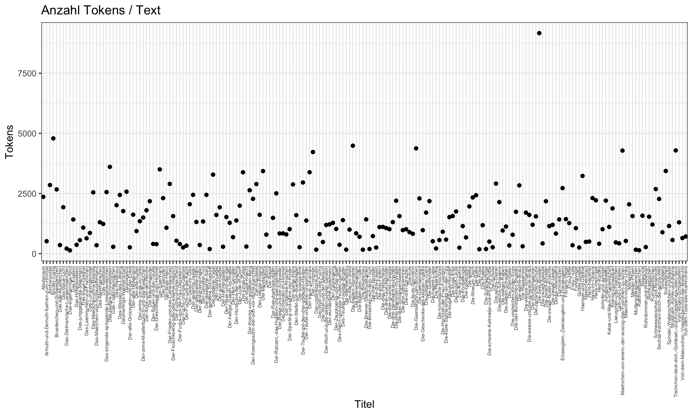
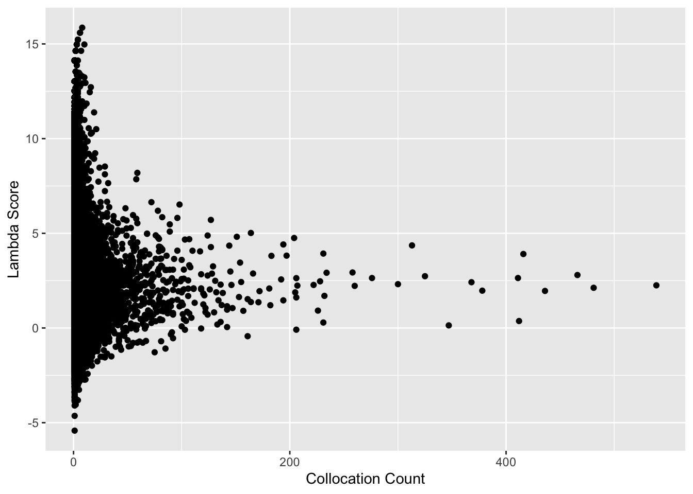

3 Textanalyse III: Wortfrequenzanalysen
Die Konstruktion von Geschlecht und Geschlechterrollen in europäischen Märchen wird seit den 1970er Jahren in zahlreichen Forschungsarbeiten untersucht (zum Beispiel von Marcia Lieberman 1972, Alessandra Levorato 2003, Simone Loleit und Liliane Schüller 2022). In den letzten beiden Jahrzehnten sind Märchen auch zum Gegenstand von Arbeiten aus den Digital Humanities geworden (so z.B. in den Arbeiten von Saif Mohammad 2011, Mark Finlayson 2012, Berenike Herrmann und Jana Lüdtke 2023). Eine Reihe von Digital Humanities Arbeiten haben sich explizit Geschlecht und Geschlechterrollen in Märchen gewidmet, so zum Beispiel:
- Toro Isaza, Paulina et al. (2023). Are Fairy Tales Fair? Analyzing Gender Bias in Temporal Narrative Event Chains of Children’s Fairy Tales, in: Proceedings of the 61st Annual Meeting of the Association for Computational Linguistics 1: Long Papers, pp. 6509-6531.
- Jorgensen, Jeana (2019). The Most Beautiful of All: A Quantitative Approach to Fairy-Tale Femininity, in: Journal of American Folklore 132 (523), pp. 36-60.
- Weingart, Scott and Jorgensen, Jeana (2013). Computational Analysis of the Body in European Fairy Tales, in: Literary and Linguistic Computing 28 (1), pp. 404-416.
In den nächsten beiden Wochen werden wir ein Korpus von Kinder- und Hausmärchen der Gebrüder Grimm aus dem Jahr 1857 im Hinblick auf die Darstellung verschiedener Märchencharaktere untersuchen. Dabei werden wir verschiedene Analysemethoden kennenlernen und kritisch beleuchten, inwieweit diese Methoden uns helfen können, bestimmte Muster in der Beschreibung von Märchencharakteren zu identifizieren. In diesem Kapitel werden wir zunächst Worthäufigkeiten und das gemeinsame Vorkommen verschiedener Wörter unabhängig von der Beziehung der Wörter zueinander betrachten. Wir werden dabei kritisch beleuchten, was die vorgestellten Analysemethoden leisten können und was nicht. Im Kapitel 9 werden wir dann konkreten Fragen nachgehen: Welche Charaktere kommen in den Märchen vor? Mit welchen Adjektiven werden diese beschrieben? Welche Verben werden mit ihnen assoziiert?
3.1 Märchenkorpus einlesen und Pakete installieren
Um unser Korpus in R einzulesen, müssen wir zuerst wieder das Arbeitsverzeichnis setzen:
# Arbeitsverzeichnis setzen
setwd("/Users/gast/R-Seminar") # Setzt hier euren eigenen Pfad ein
# Backslashes für Windows:
# setwd("C:\Users\gast\R-Seminar")Wie bereits vergangene Woche erläutert kann das Arbeitsverzeichnis auch über den Tab “Files” im Fenster unten rechts gesetzt werden. Navigiert euch dazu erst in den gewünschten Ordner, klickt dann auf “More” und “Set As Working Directory”.
Wenn wir das Arbeitsverzeichnis gesetzt haben, können wir die Dateien einlesen. Wir werden ganz am Ende unserer Analyse die Grimm-Märchen in der siebten Edition von 1857 mit den Märchen aus der ersten Edition von 1812/15 vergleichen, um einen möglichen Wandel über die Zeit zu identifizieren.
# Märchen von 1857 und 1812/15 einlesen und Informationen aus dem Dateinamen extrahieren
maerchen_alle <- readtext("maerchen_alle/*.txt", docvarsfrom = "filenames", dvsep = "_", docvarnames = c("Titel", "Jahr"), encoding = "UTF-8")Bevor wir mit der Analyse starten können, müssen wir noch einige Pakete installieren, die wir brauchen werden:
Wir laden zunächst nur das Paket quanteda. Die restlichen Pakete werden wir ausnahmsweise erst dann laden, wenn sie gebraucht werden, sodass ihr in jeder Codezelle direkt erkennt, ob der Code Funktionen aus zusätzlichen Paketen enthält.
3.2 Corpus-Objekt erstellen und Preprocessing
Wir werden in der Analyse verschiedene Methoden einmal auf das Korpus mit und einmal ohne Stoppwörter anwenden, denn je nach Fragestellung und Methode sind Stoppwörter mehr oder weniger interessant. Deswegen erstellen wir in diesem Abschnitt zwei verschiedene tokens-Objekte.
# Quanteda-corpus-Objekt erstellen
maerchen_corpus_alle <- corpus(maerchen_alle)
# Teilkorpus extrahieren
maerchen_corpus <- corpus_subset(maerchen_corpus_alle, Jahr == 1857)
# Quanteda tokens-Objekt erstellen ohne weiteres Preprocessing
maerchen_toks_raw <- tokens(maerchen_corpus)
# Quanteda-tokens-Objekt erstellen MIT Stoppwörtern
maerchen_toks <- tokens(maerchen_corpus, remove_punct = TRUE) %>%
tokens_tolower()
# Quanteda-tokens-Objekt erstellen OHNE Stoppwörter
maerchen_toks_rm <- tokens_remove(maerchen_toks, pattern = stopwords("de"))Wir haben jetzt also ein corpus-Objekt sowie zwei verschiedene tokens-Objekte (eins mit und eins ohne Stoppwörter), die wir in unserer Analyse verwenden können.
3.3 Token-Häufigkeitsanalyse
Zunächst ist es sinnvoll, sich einen Überblick über die Anzahl der Tokens in den Texten unseres Korpus zu verschaffen. Hierfür wenden wir einfach die summary()-Funktion auf das corpus-Objekt an.
Um schnell den längsten und kürzesten Text zu finden, können wir einfach wieder die Funktionen max() und min() anwenden (s. Kapitel 5.5), aber um einen visuellen Überblick zu verschaffen, können wir die Tokenanzahl auch visualisieren. Dazu verwenden wir das Paket ggplot2, welches spezialisierte Funktionen zur Datenvisualisierung bietet.
ggplot2
Die Syntax zur Erstellung von Grafiken mit ggplot2 folgt einem eigenen Design-Prinzip, das nach dem Titel des zugrundeliegenden Werks “Grammar of Graphics” genannt wird. Diese “Grammatik” legt fest, wie die einzelnen Bestandteile einer Grafik beschrieben und konstruiert werden können. Konkret bedeutet das, dass ggplot2-Grafiken immer als mehrere, übereinanderliegende Ebenen erstellt werden, die mit einem +-Operator verknüpft werden: Die erste Ebene ist dabei immer ein Datenobjekt, das mit der Funktion ggplot() erzeugt wird. Welche Ebenen es genau gibt könnt ihr in den ggplot2-Dokumentationsseiten nachlesen. Einen leicht verständlichen Einstieg in die Grammar of Graphics und ggplot2 bietet dieser Artikel von Dipanjan Sarkar. Einen tieferen Einblick bietet dieser Artikel von Hadley Wickham.
Bei der Arbeit mit quanteda-Objekten ist wichtig zu beachten, dass die Funktion ggplot() als Input einen Dataframe erwartet. Das Objekt token_info ist bereits ein Dataframe und kann direkt als Argument der ggplot()-Funktion übergeben werden. Als zusätzliches Argument geben wir mithilfe der Funktion aes() eine “Ästhetik” für das Datenobjekt an, welche die Dimensionen der Daten bestimmt, also welche Spalte des Dataframes auf welcher Achse abgebildet werden sollen. Alle weiteren Ebenen werden dem Datenobjekt mithilfe des +-Operators angefügt: Zunächst ein geometrisches Objekt (“geom”), das bestimmt, dass die Datenpunkte als Punkte dargestellt werden sollen, nicht etwa als Säulen oder Linien (also geom_point()). Die restlichen drei Ebenen dienen dazu, das Aussehen des Plots anzupassen: Es wird mit theme_bw() eine Designvorlage gewählt und anschließend mit theme() angepasst. ggtitle() bestimmt zuletzt den Titel des Plots.
library(ggplot2)
options(scipen=999)
summary_plot <- ggplot(data=token_info, aes(x=Titel, y=Tokens)) +
geom_point() +
theme_bw() +
theme(axis.text.x = element_text(angle = 90, vjust = 0.5, hjust=1, size=5)) +
ggtitle("Anzahl Tokens / Text")
summary_plot
Die Visualisierung erfordert ganz genauen Abgleich der Werte auf der x-Achse, um die richtige Tokenanzahl auf der y-Achse zu finden. Die Grafiken, die mit ggplot2 erstellt werden, sind praktischerweise kompatibel mit einem weiteren Paket aus dem Tidyverse, das darauf spezialisiert ist, ggplot-Grafiken in interaktive Grafiken umzuwandeln:
Wenn man jetzt im Plot-Fenster den Cursor über die Visualisierung bewegt, werden die x- und y-Werte zu den einzelnen Datenpunkten automatisch angezeigt.
Der Grafik können wir entnehmen, dass das Märchen “Die zwei Brüder” mit einer Tokenanzahl von 9265 das mit Abstand längste Märchen ist. Diese Information behalten wir erst einmal im Hinterkopf.
Jetzt schauen wir uns erst einmal an, welche Tokens denn in unserem Korpus am häufigsten vorkommen. Dazu erstellen wir zunächst eine DFM, und zwar zunächst aus dem tokens-Objekt mit Stoppwörtern, und lassen uns anschließend mit der quanteda-Funktion topfeatures() einen Überblick über die häufigsten Tokens ausgeben:
maerchen_dfm <- dfm(maerchen_toks)
# schneller Überblick über die 100 häufigsten Tokens
topfeatures(maerchen_dfm, n=100)## und der die er sie das den in es ich so da zu nicht ein aber sich dem war als auf du mit sprach ihm dass an wie ihr ihn was eine einen hatte ist von wieder mir kam sagte ging wenn auch aus sein könig noch nun wollte will vor nach antwortete seine dich mich sah dir im einem nichts wo hat ward nur wir wäre einmal rief frau waren zum um habe bei mein bis dann doch mann über des alles am alle konnte ließ fort vater für haus haben sollte alte hast nahm andern damit seinen mehr
## 12083 6799 6030 5006 4687 3695 3015 2972 2926 2772 2589 2589 2539 2504 2404 2340 2209 2168 2112 1976 1965 1961 1766 1710 1559 1429 1391 1321 1254 1151 1099 1091 1058 1028 1016 942 899 812 805 797 796 793 787 754 737 706 702 701 690 683 618 583 538 531 516 502 479 479 477 469 453 449 445 444 441 435 432 425 422 420 418 407 406 404 403 401 398 397 394 388 383 383 380 379 374 365 364 364 352 350 348 345 342 338 335 331 327 324 323 319Diese Übersicht ist jedoch nicht sonderlich interessant: Stoppwörter dominieren erwartungsgemäß die Übersicht. Viel interessanter wäre es für uns aber, wenn wir durch die Ansicht beispielsweise erfahren könnten, welche Charaktere besonders häufig in unserem Märchenkorpus vorkommen. Wir verwenden deswegen das tokens-Objekt ohne Stoppwörter:
## sprach dass kam sagte ging könig antwortete sah ward wäre rief frau mann konnte ließ fort vater haus alte hast nahm mehr mädchen schon wohl stand ganz zwei endlich drei fragte wald dachte hätte lange hinaus ja darauf hinein tag gab mußte wasser herr hans gut augen mutter kind immer kamen morgen setzte gehen heraus wer zeit machte ach kommen nacht schloss hand sehen ab essen zusammen königstochter jäger leben darin legte welt kopf bruder tochter fing saß geben sprang zog junge voll hörte baum großen gott herum tat davon königin sollst gleich weiss bald türe geld große heim gold
## 1710 1429 805 797 796 706 538 479 444 432 422 420 388 365 364 364 352 348 338 335 331 319 317 316 313 308 297 297 295 292 291 289 288 288 269 263 262 260 259 258 250 247 242 241 237 236 235 234 231 230 229 229 225 223 223 220 215 209 209 208 205 203 203 203 201 200 197 194 190 188 183 183 180 180 177 176 175 174 173 172 171 171 170 170 169 168 167 164 163 163 161 161 158 158 157 156 155 155 153 152Die häufigsten Tokens können auch in einer Wortwolke visualisiert werden, und zwar mit der Quanteda-Funktion textplot_wordcloud():
library("quanteda.textplots")
set.seed(100)
textplot_wordcloud(maerchen_dfm_rm, # wir verwenden die dfm ohne Stoppwörter und Satzzeichen
min_count = 6,
random_order = FALSE,
rotation = .25,
)
Verständnisfragen:
- Was visualisiert die Wortwolke?
- Vergleicht eure Wortwolke mit der Wortwolke eurer Nachbar:in. Unterscheiden sich eure Ergebnisse?
- Führt den Code zur Erstellung der Wortwolke jetzt noch einmal aus, allerdings ohne die Zeile set.seed(100). Unterscheiden sich eure Wortwolken jetzt? Warum ist das so?
Noch interessanter wäre es aber, wenn wir nicht nur erfahren könnten, wie häufig jedes Token vorkommt, sondern auch beispielsweise, in wie vielen Texten ein Token vorkommt. Detailliertere Informationen zum Vorkommen der in diesem Fall 100 häufigsten Tokens bietet die Funktion textstat_frequency():
# Detaillierte Informationen zu den 100 häufigsten Tokens
tstat_freq_maerchen <- textstat_frequency(maerchen_dfm, n = 100)
tstat_freq_maerchen## feature frequency rank docfreq group
## 1 und 12083 1 195 all
## 2 der 6799 2 195 all
## 3 die 6030 3 191 all
## 4 er 5006 4 184 all
## 5 sie 4687 5 185 all
## 6 das 3695 6 193 all
## 7 den 3015 7 186 all
## 8 in 2972 8 194 all
## 9 es 2926 9 188 all
## 10 ich 2772 10 177 all
## 11 so 2589 11 193 all
## 12 da 2589 11 186 all
## 13 zu 2539 13 185 all
## 14 nicht 2504 14 182 all
## 15 ein 2404 15 189 all
## 16 aber 2340 16 185 all
## 17 sich 2209 17 183 all
## 18 dem 2168 18 183 all
## 19 war 2112 19 183 all
## 20 als 1976 20 178 all
## 21 auf 1965 21 184 all
## 22 du 1961 22 169 all
## 23 mit 1766 23 183 all
## 24 sprach 1710 24 177 all
## 25 ihm 1559 25 175 all
## 26 dass 1429 26 177 all
## 27 an 1391 27 178 all
## 28 wie 1321 28 187 all
## 29 ihr 1254 29 154 all
## 30 ihn 1151 30 151 all
## 31 was 1099 31 169 all
## 32 eine 1091 32 177 all
## 33 einen 1058 33 169 all
## 34 hatte 1028 34 165 all
## 35 ist 1016 35 167 all
## 36 von 942 36 165 all
## 37 wieder 899 37 155 all
## 38 mir 812 38 144 all
## 39 kam 805 39 170 all
## 40 sagte 797 40 154 all
## 41 ging 796 41 157 all
## 42 wenn 793 42 163 all
## 43 auch 787 43 168 all
## 44 aus 754 44 151 all
## 45 sein 737 45 156 all
## 46 könig 706 46 66 all
## 47 noch 702 47 154 all
## 48 nun 701 48 151 all
## 49 wollte 690 49 163 all
## 50 will 683 50 150 all
## 51 vor 618 51 147 all
## 52 nach 583 52 157 all
## 53 antwortete 538 53 136 all
## 54 seine 531 54 144 all
## 55 dich 516 55 126 all
## 56 mich 502 56 120 all
## 57 sah 479 57 145 all
## 58 dir 479 57 126 all
## 59 im 477 59 151 all
## 60 einem 469 60 140 all
## 61 nichts 453 61 136 all
## 62 wo 449 62 142 all
## 63 hat 445 63 126 all
## 64 ward 444 64 132 all
## 65 nur 441 65 133 all
## 66 wir 435 66 109 all
## 67 wäre 432 67 129 all
## 68 einmal 425 68 160 all
## 69 rief 422 69 122 all
## 70 frau 420 70 101 all
## 71 waren 418 71 140 all
## 72 zum 407 72 133 all
## 73 um 406 73 139 all
## 74 habe 404 74 120 all
## 75 bei 403 75 133 all
## 76 mein 401 76 117 all
## 77 bis 398 77 145 all
## 78 dann 397 78 137 all
## 79 doch 394 79 139 all
## 80 mann 388 80 100 all
## 81 über 383 81 134 all
## 82 des 383 81 127 all
## 83 alles 380 83 129 all
## 84 am 379 84 133 all
## 85 alle 374 85 138 all
## 86 konnte 365 86 135 all
## 87 ließ 364 87 133 all
## 88 fort 364 87 134 all
## 89 vater 352 89 67 all
## 90 für 350 90 115 all
## 91 haus 348 91 113 all
## 92 haben 345 92 114 all
## 93 sollte 342 93 118 all
## 94 alte 338 94 84 all
## 95 hast 335 95 114 all
## 96 nahm 331 96 112 all
## 97 andern 327 97 123 all
## 98 damit 324 98 132 all
## 99 seinen 323 99 116 all
## 100 mehr 319 100 129 all# Überprüfen, ob ein gesuchtes Token unter den 100 häufigsten Tokens ist?
"tochter" %in% tstat_freq_maerchen$feature## [1] FALSE# Top Features visualisieren
ggplot(tstat_freq_maerchen, aes(x = reorder(feature, -frequency), y = frequency)) +
geom_point() +
theme(axis.text.x = element_text(angle = 90, vjust = 0.5, hjust=1, size=5)) +
labs(x = "Feature", y = "Frequency")
Die Funktion reorder(feature, -frequency) bewirkt, dass die Tokens nach Häufigkeit geordnet werden, sodass die Tokens mit der höchsten Frequenz auf der linken Seite der x-Achse angezeigt werden.
Verständnisfragen:
- Welche Informationen liefert die Funktion
textstat_frequency()? - Was wäre ein passender Titel für die Visualisierung?
- Wozu wird die Funktion
labs()verwendet? Was beschreibt diese Ebene? - Was passiert, wenn das - vor frequency in
reorder(feature, -frequency)entfernt wird?
Es fallen bei einer genaueren Betrachtung der Darstellung zwei Aspekte auf: Zum einen sind die häufigsten 23 Wörter alle Funktionswörter, und zum anderen scheint der Abstand zwischen den Häufigkeiten der einzelnen Tokens untereinander bei den häufigeren Tokens größer zu sein als bei den weniger häufigen Tokens. Dieser Umstand lässt sich formal mit dem Zipf’schen Gesetz beschreiben, nach dem in einem Korpus von natürlichsprachlichen Äußerungen die Häufigkeit irgendeines Wortes umgekehrt proportional zu seinem Rang in der Häufigkeitstabelle ist. Dieser Umstand begründet auch die Motivation, Funktionswörter und andere besonders häufig vorkommende Tokens während des Preprocessing zu entfernen.
# Diesen Code könnt ihr ignorieren
tstat_freq_alle <- textstat_frequency(maerchen_dfm, n = ncol(maerchen_dfm))
# Spalte rank transformieren, sodass Ränge konsekutiv sind und beim Vorkommen mehrerer gleicher Ränge trotzdem kontinuierlich weitergezählt wird: Das lässt sich leider seit Quanteda Version 3 nicht mehr mit der textstat_frequency()-Funktion einstellen
neuer_rang <- c(TRUE, diff(tstat_freq_alle$rank) != 0)
tstat_freq_alle$rank <- cumsum(neuer_rang)
zipfs_freq = ifelse(tstat_freq_alle$rank == 1, tstat_freq_alle$frequency, dplyr::first(tstat_freq_alle$frequency) / tstat_freq_alle$rank ^ 1)
ggplot(tstat_freq_alle, aes(x = rank, y = frequency, group="all")) +
geom_line(aes(color = "observed")) +
geom_line(aes(y = zipfs_freq, color = "theoretical")) +
geom_point(aes(color = "observed")) +
geom_point(aes(y = zipfs_freq, color = "theoretical")) +
labs(x = "Rank", y = "Frequency")
Aber zurück zu den 100 häufigsten Tokens. Unter den 100 häufigsten Tokens finden sich auch einige Charaktere: Neben Frau, Mann, König und Königin gehören auch Königstochter, Tochter und Mädchen zu den 100 häufigsten Tokens und kommen in je ca. 50 der Märchen vor; ebenso Junge. Die Wörter Königssohn und Sohn dagegen nicht. Die Wörter Prinz und Prinzessin scheinen allgemein nicht vorzukommen. Das verwundert vielleicht im ersten Moment, wir werden aber am Ende der Stunde noch einmal darauf zurückkommen.
Nun haben wir aber ja anfangs bemerkt, dass die Märchen sehr verschiedene Längen haben. Die Übersicht, die wir mithilfe der Funktion textstat_frequency() erhalten haben, verrät zwar, dass die Tokens in je etwa fünfzig Märchen vorkommen, allerdings wissen wir nicht, wie sie über diese Märchen verteilt sind. Es könnte ja sein, dass ein Märchen, beispielsweise das längste, besonders häufig ein bestimmtes Token enthält. Im Folgenden werden wir also überprüfen, ob ein Token ganz besonders häufig in dem längsten Text vorkommt, aber kaum in den anderen. Als Beispiel nehmen wir die Tokens mit der Zeichenkette “tochter”.
library(quanteda.textstats)
df <- textstat_frequency(maerchen_dfm, groups = Titel)
subset_df <- df[grepl("tochter", df$feature), ]
subset_df## feature frequency rank docfreq group
## 85 tochter 4 73 1 Allerleirauh
## 92 königstochter 4 73 1 Allerleirauh
## 1151 tochter 1 310 1 Aschenputtel
## 1174 königstochter 1 310 1 Aschenputtel
## 1633 königstochter 5 134 1 Bruder-Lustig
## 1751 tochter 2 251 1 Bruder-Lustig
## 2468 tochter 5 79 1 Bruederchen-und-Schwesterchen
## 3258 königstochter 7 39 1 Das-blaue-Licht
## 3362 tochter 2 132 1 Das-blaue-Licht
## 4724 tochter 4 45 1 Das-Eselein
## 6853 tochter 1 274 1 Das-Maedchen-ohne-Haende
## 7081 müllerstochter 1 274 1 Das-Maedchen-ohne-Haende
## 7409 königstochter 10 20 1 Das-Meerhaeschen
## 7847 königstochter 5 31 1 Das-Raethsel
## 7899 tochter 2 81 1 Das-Raethsel
## 8334 tochter 5 78 1 Das-singende-springende-Loeweneckerchen
## 8354 königstochter 4 96 1 Das-singende-springende-Loeweneckerchen
## 9061 tochter 3 141 1 Das-tapfere-Schneiderlein
## 9306 königstochter 1 363 1 Das-tapfere-Schneiderlein
## 10239 tochter 1 231 1 Das-Waldhaus
## 10662 königstochter 4 85 1 Das-Wasser-des-Lebens
## 13880 königstochter 4 58 1 Der-arme-Muellerbursch-und-das-Kaetzchen
## 15955 königstochter 8 63 1 Der-Eisenhans
## 16014 tochter 4 125 1 Der-Eisenhans
## 16776 königstochter 7 52 1 Der-Eisenofen
## 16845 tochter 3 119 1 Der-Eisenofen
## 16876 müllerstochter 3 119 1 Der-Eisenofen
## 16983 schweinehirtentochter 2 166 1 Der-Eisenofen
## 17425 tochter 1 133 1 Der-faule-Heinz
## 18454 königstochter 8 29 1 Der-Froschkoenig-oder-der-eiserne-Heinrich
## 20222 königstochter 7 48 1 Der-gelernte-Jaeger
## 20255 tochter 4 81 1 Der-gelernte-Jaeger
## 21222 königstochter 2 81 1 Der-Gevatter-Tod
## 21301 tochter 1 156 1 Der-Gevatter-Tod
## 21842 tochter 1 253 1 Der-glaeserne-Sarg
## 22755 königstochter 3 146 1 Der-goldene-Vogel
## 22804 tochter 2 192 1 Der-goldene-Vogel
## 23617 königstochter 1 172 1 Der-Grabhuegel
## 24109 tochter 2 129 1 Der-gute-Handel
## 24119 königstochter 2 129 1 Der-gute-Handel
## 25248 tochter 2 105 1 Der-heilige-Joseph-im-Walde
## 27785 königstochter 2 175 1 Der-Koenig-vom-goldenen-Berg
## 28577 königstochter 1 247 1 Der-Koenigssohn-der-sich-vor-nichts-fuerchtet
## 29842 stieftochter 3 73 1 Der-Liebste-Roland
## 29850 tochter 2 110 1 Der-Liebste-Roland
## 30576 tochter 1 327 1 Der-Meisterdieb
## 31755 tochter 2 107 1 Der-Raeuberbraeutigam
## 32216 königstochter 3 106 1 Der-Ranzen,-das-Huetlein-und-das-Hoernlein
## 32259 tochter 2 154 1 Der-Ranzen,-das-Huetlein-und-das-Hoernlein
## 33536 tochter 2 57 1 Der-singende-Knochen
## 34537 königstochter 1 290 1 Der-starke-Hans
## 35686 tochter 7 63 1 Der-Teufel-mit-den-drei-goldenen-Haaren
## 35826 königstochter 2 189 1 Der-Teufel-mit-den-drei-goldenen-Haaren
## 36816 königstochter 9 51 1 Der-treue-Johannes
## 37645 königstochter 10 57 1 Der-Trommler
## 37975 tochter 1 371 1 Der-Trommler
## 41042 tochter 1 171 1 Des-Teufels-russiger-Bruder
## 41063 königstochter 1 171 1 Des-Teufels-russiger-Bruder
## 41536 königstochter 1 132 1 Die-Alte-im-Wald
## 42166 tochter 1 435 1 Die-beiden-Wanderer
## 42707 meistertochter 1 435 1 Die-beiden-Wanderer
## 42924 königstochter 2 69 1 Die-Bienenkoenigin
## 46530 tochter 16 18 1 Die-drei-Maennlein-im-Walde
## 46746 stieftochter 2 148 1 Die-drei-Maennlein-im-Walde
## 47221 tochter 2 103 1 Die-drei-Schlangenblaetter
## 47687 tochter 3 41 1 Die-drei-Spinnerinnen
## 49160 tochter 7 76 1 Die-Gaensehirtin-am-Brunnen
## 49291 königstochter 3 200 1 Die-Gaensehirtin-am-Brunnen
## 50191 königstochter 9 34 1 Die-Gaensemagd
## 50322 tochter 2 155 1 Die-Gaensemagd
## 51267 tochter 4 61 1 Die-goldene-Gans
## 51450 königstochter 1 215 1 Die-goldene-Gans
## 51833 tochter 3 105 1 Die-Goldkinder
## 53235 tochter 1 76 1 Die-klare-Sonne-bringts-an-den-Tag
## 53411 tochter 9 22 1 Die-kluge-Bauerntochter
## 54003 tochter 1 177 1 Die-kluge-Else
## 54871 königstochter 6 26 1 Die-Krystallkugel
## 55790 tochter 1 236 1 Die-Nelke
## 56861 königstochter 4 90 1 Die-Rabe
## 58031 tochter 2 43 1 Die-schoene-Katrinelje-und-Pif-Paf-Poltrie
## 58265 tochter 10 40 1 Die-sechs-Diener
## 59148 tochter 2 134 1 Die-sechs-Schwaene
## 60950 königstochter 6 45 1 Die-vier-kunstreichen-Brueder
## 61119 tochter 1 206 1 Die-vier-kunstreichen-Brueder
## 61762 tochter 1 291 1 Die-wahre-Braut
## 62452 königstochter 5 40 1 Die-weisse-Schlange
## 63052 tochter 7 34 1 Die-weisse-und-die-schwarze-Braut
## 63079 stieftochter 5 52 1 Die-weisse-und-die-schwarze-Braut
## 64514 königstochter 18 66 1 Die-zwei-Brueder
## 64561 tochter 11 111 1 Die-zwei-Brueder
## 66236 königstochter 3 99 1 Die-zwoelf-Brueder
## 67232 königstochter 5 40 1 Die-zwoelf-Jaeger
## 67365 tochter 1 156 1 Die-zwoelf-Jaeger
## 67885 königstochter 5 34 1 Dornroeschen
## 68043 tochter 1 180 1 Dornroeschen
## 69566 tochter 2 90 1 Frau-Holle
## 71572 bauerntochter 1 67 1 Hans-heirathet
## 72349 tochter 4 85 1 Hans-mein-Igel
## 72418 königstochter 2 144 1 Hans-mein-Igel
## 73584 tochter 1 257 1 Jungfrau-Maleen
## 74349 königstochter 5 48 1 Koenig-Drosselbart
## 74358 tochter 4 55 1 Koenig-Drosselbart
## 75359 tochter 3 179 1 Maehrchen-von-einem,-der-auszog-das-Fuerchten-zu-lernen
## 78735 müllerstochter 6 38 1 Rumpelstilzchen
## 78763 tochter 3 67 1 Rumpelstilzchen
## 79964 königstochter 6 53 1 Sechse-kommen-durch-die-ganze-Welt
## 79994 tochter 4 83 1 Sechse-kommen-durch-die-ganze-Welt
## 81232 königstochter 1 336 1 Sneewittchen
## 81781 tochter 1 133 1 Spindel,-Weberschiffchen-und-Nadellibrary(ggplot2)
tochter_plot <- ggplot(subset_df, aes(x = group, y = feature, size = frequency)) +
geom_point() +
theme(axis.text.y = element_text(size=5),
axis.text.x = element_text(angle = 90, vjust = 0.5, hjust=1, size=5)) +
labs(x = "Text", y = "Feature")
library(plotly)
ggplotly(tochter_plot)Die Visualisierung zeigt anhand der Größe der Datenpunkte an, wie häufig ein Token in dem entsprechenden Text vorkommt. Die Tochter-Tokens sind also über das gesamte Korpus verteilt und kommen nicht in einem bestimmten Märchen ganz besonders häufig vor. Wir nehmen uns die Tokens, in denen “tochter” vorkommt, als Gegenstand für eine kleine Beispielanalyse. Zunächst betrachten wir alle Tochter-Tokens in ihrem Kontext.
3.4 Keywords in Context (KWIC)
Zunächst interessiert uns: In welchem Satz- bzw. Sinnzusammenhang stehen Wörter wie Königstochter und Tochter in den Märchen?
Mithilfe der Quanteda-Funktion kwic() können Tokens in ihrem Kontext übersichtlich dargestellt werden. Die Funktion unterstützt keine regulären Ausdrücke, aber eine unscharfe Suche mithilfe des Platzhalters * und dem Argument case_insensitive=TRUE ist möglich. Da es uns darum geht, die Schlüsselwörter in ihrem Kontext zu sehen, verwenden wir in diesem Fall das tokens-Objekt ohne weitere Preprocessing-Schritte:
maerchen_kwic <- kwic(maerchen_toks_raw, pattern = c("*tochter*", "*töchter*"), case_insensitive = TRUE)
maerchen_kwic # RStudio: View(maerchen_kwic)## Keyword-in-context with 437 matches.
## [Allerleirauh_1857.txt, 228] Nun hatte der König eine | Tochter | , die war gerade so
## [Allerleirauh_1857.txt, 288] Räten „ ich will meine | Tochter | heiraten, denn sie ist
## [Allerleirauh_1857.txt, 332] verboten dass der Vater seine | Tochter | heirate, aus der Sünde
## [Allerleirauh_1857.txt, 353] Verderben gezogen. “ Die | Tochter | erschrak noch mehr als sie
## [Allerleirauh_1857.txt, 570] . “ Als nun die | Königstochter | sah dass keine Hoffnung mehr
## [Allerleirauh_1857.txt, 989] . Ach, du schöne | Königstochter | , wie solls mit dir
## [Allerleirauh_1857.txt, 1152] anders als dass es eine | Königstochter | wäre. Der König aber
## [Allerleirauh_1857.txt, 1757] hinauf, und glich einer | Königstochter | : und der König trat
## [Aschenputtel_1857.txt, 24] , rief sie ihr einziges | Töchterlein | zu sich ans Bett und
## [Aschenputtel_1857.txt, 132] . Die Frau hatte zwei | Töchter | mit ins Haus gebracht,
## [Aschenputtel_1857.txt, 362] da fragte er die beiden | Stieftöchter | was er ihnen mitbringen sollte
## [Aschenputtel_1857.txt, 484] kam, gab er den | Stieftöchtern | was sie sich gewünscht hatten
## [Aschenputtel_1857.txt, 1203] eilte mit ihren zwei stolzen | Töchtern | fort. Als nun niemand
## [Aschenputtel_1857.txt, 1289] meinten es müßte eine fremde | Königstochter | sein, so schön sah
## [Aschenputtel_1857.txt, 2481] „ habt ihr keine andere | Tochter | ? “ „ Nein,
## [Bruder-Lustig_1857.txt, 1560] da hörten sie dass die | Königstochter | totkrank läge. „ Holla
## [Bruder-Lustig_1857.txt, 1663] bis sie endlich hörten die | Königstochter | wäre gestorben. „ Da
## [Bruder-Lustig_1857.txt, 1779] dem König er wollte die | Tochter | wieder lebendig machen. Da
## [Bruder-Lustig_1857.txt, 1915] beim drittenmal erhob sich die | Königstochter | lebendig, gesund und schön
## [Bruder-Lustig_1857.txt, 2372] wo er hörte dass die | Königstochter | gestorben wäre. „ Holla
## [Bruder-Lustig_1857.txt, 2475] es wagen, da seine | Tochter | doch tot wäre. Nun
## [Bruder-Lustig_1857.txt, 2775] auf, “ und die | Königstochter | stand auf, war gesund
## [Bruederchen-und-Schwesterchen_1857.txt, 1827] bringen könnte. Ihre rechte | Tochter | , die häßlich war wie
## [Bruederchen-und-Schwesterchen_1857.txt, 1967] kalt wird. “ Ihre | Tochter | war auch bei der Hand
## [Bruederchen-und-Schwesterchen_1857.txt, 2028] , nahm die Alte ihre | Tochter | , setzte ihr eine Haube
## [Bruederchen-und-Schwesterchen_1857.txt, 2592] die böse Hexe und ihre | Tochter | an ihr verübt hatten.
## [Bruederchen-und-Schwesterchen_1857.txt, 2615] das Urteil gesprochen. Die | Tochter | ward in Wald geführt,
## [Das-blaue-Licht_1857.txt, 933] „ Spät Abends wenn die | Königstochter | im Bett liegt, so
## [Das-blaue-Licht_1857.txt, 998] und das Männchen trug die | Königstochter | herein. „ Aha,
## [Das-blaue-Licht_1857.txt, 1120] andern Morgen, als die | Königstochter | aufgestanden war, ging sie
## [Das-blaue-Licht_1857.txt, 1277] , als es die schlafende | Königstochter | wieder durch die Straßen trug
## [Das-blaue-Licht_1857.txt, 1312] Straßen Erbsen verstreut. Die | Königstochter | aber mußte wieder bis zum
## [Das-blaue-Licht_1857.txt, 1426] Abends verlangte er sollte die | Königstochter | wieder herbei tragen, riet
## [Das-blaue-Licht_1857.txt, 1474] der Soldat, und die | Königstochter | mußte auch in der dritten
## [Das-blaue-Licht_1857.txt, 1514] ganzen Stadt den Schuh seiner | Tochter | suchen: er ward bei
## [Das-blaue-Licht_1857.txt, 1926] Soldat das Reich und seine | Tochter | zur Frau.
## [Das-Eselein_1857.txt, 360] nur eine einzige aber wunderschöne | Tochter | hatte. Das Eselein sagte
## [Das-Eselein_1857.txt, 584] , wie gefällt dir meine | Tochter | ? “ Das Eselein drehte
## [Das-Eselein_1857.txt, 804] : willst du meine schöne | Tochter | zur Frau? “ „
## [Das-Eselein_1857.txt, 1037] “ sagte er zu seiner | Tochter | , „ dass du keinen
## [Das-Maedchen-ohne-Haende_1857.txt, 252] nicht gemeint, sondern unsere | Tochter | , die stand hinter der
## [Das-Maedchen-ohne-Haende_1857.txt, 266] den Hof. “ Die | Müllerstochter | war ein schönes und frommes
## [Das-Meerhaeschen_1857.txt, 5] Es war einmal eine | Königstochter | , die hatte in ihrem
## [Das-Meerhaeschen_1857.txt, 184] meldete sich niemand. Die | Königstochter | war vergnügt und dachte „
## [Das-Meerhaeschen_1857.txt, 610] soll, damit mich die | Königstochter | nicht sieht. “ Der
## [Das-Meerhaeschen_1857.txt, 666] sich darauf. Als die | Königstochter | an das erste Fenster trat
## [Das-Meerhaeschen_1857.txt, 775] verbergen, damit mich die | Königstochter | nicht sieht. “ Der
## [Das-Meerhaeschen_1857.txt, 815] Grund des Sees. Die | Königstochter | blickte durch ihre Fenster,
## [Das-Meerhaeschen_1857.txt, 934] soll, damit mich die | Königstochter | nicht findet. “ „
## [Das-Meerhaeschen_1857.txt, 1027] . Zuletzt kam auch die | Königstochter | , und weil sie großen
## [Das-Meerhaeschen_1857.txt, 1061] zu ihm „ wenn die | Königstochter | ans Fenster geht, so
## [Das-Meerhaeschen_1857.txt, 1232] in das Schloss. Die | Königstochter | wartete schon auf ihn und
## [Das-Raethsel_1857.txt, 269] Topf etwas kochte. Die | Tochter | warnte die beiden vorsichtig zu
## [Das-Raethsel_1857.txt, 622] im Hause übrig als die | Tochter | des Wirths, die es
## [Das-Raethsel_1857.txt, 691] worin eine schöne aber übermütige | Königstochter | war, die hatte bekannt
## [Das-Raethsel_1857.txt, 935] der zweiten Nacht schickte die | Königstochter | ihre Kammerjungfer, die sollte
## [Das-Raethsel_1857.txt, 988] Bett, da kam die | Königstochter | selbst, hatte einen nebelgrauen
## [Das-Raethsel_1857.txt, 1129] Am andern Morgen verkündigte die | Königstochter | sie habe das Rätsel erraten
## [Das-Raethsel_1857.txt, 1212] nebelgrauen erblickten, den die | Königstochter | zu tragen pflegte, so
## [Das-singende-springende-Loeweneckerchen_1857.txt, 21] Abschied fragte er seine drei | Töchter | was er ihnen mitbringen sollte
## [Das-singende-springende-Loeweneckerchen_1857.txt, 332] und den Vogel für deine | Tochter | obendrein. “ Der Mann
## [Das-singende-springende-Loeweneckerchen_1857.txt, 348] „ das könnte meine jüngste | Tochter | sein, die hat mich
## [Das-singende-springende-Loeweneckerchen_1857.txt, 383] muß euch denn gerade eure | Tochter | begegnen, es könnte ja
## [Das-singende-springende-Loeweneckerchen_1857.txt, 447] anders als seine jüngste liebste | Tochter | : die kam gelaufen,
## [Das-singende-springende-Loeweneckerchen_1857.txt, 825] Wald. Wie die zweite | Tochter | heiratete und sie wieder zur
## [Das-singende-springende-Loeweneckerchen_1857.txt, 1505] Lindwurm ist aber eine verzauberte | Königstochter | . “ Da sagte der
## [Das-singende-springende-Loeweneckerchen_1857.txt, 1731] wieder. Aber wie die | Königstochter | , die vorher ein Lindwurm
## [Das-singende-springende-Loeweneckerchen_1857.txt, 2434] Traum, denn die fremde | Königstochter | hatte mich bezaubert, dass
## [Das-singende-springende-Loeweneckerchen_1857.txt, 2479] sich vor dem Vater der | Königstochter | , der ein Zauberer war
## [Das-tapfere-Schneiderlein_1857.txt, 2087] wollte er ihm seine einzige | Tochter | zur Gemahlin geben und das
## [Das-tapfere-Schneiderlein_1857.txt, 2130] Schneiderlein, „ eine schöne | Königstochter | und ein halbes Königreich wird
## [Das-tapfere-Schneiderlein_1857.txt, 2752] . „ Ehe du meine | Tochter | und das halbe Reich erhältst
## [Das-tapfere-Schneiderlein_1857.txt, 3232] halten mußte und ihm seine | Tochter | und das halbe Königreich übergab
## [Das-Waldhaus_1857.txt, 10] mit seiner Frau und drei | Töchtern | in einer kleinen Hütte an
## [Das-Waldhaus_1857.txt, 704] Wald und verlangte die zweite | Tochter | sollte ihm diesmal das Essen
## [Das-Wasser-des-Lebens_1857.txt, 1631] einer von uns die schöne | Königstochter | . Aber hüte dich dass
## [Das-Wasser-des-Lebens_1857.txt, 2046] Gnaden aufgenommen werden. Die | Königstochter | aber ließ eine Straße vor
## [Das-Wasser-des-Lebens_1857.txt, 2122] wollte sich eilen, zur | Königstochter | gehen und sich für ihren
## [Das-Wasser-des-Lebens_1857.txt, 2349] es aufgetan, und die | Königstochter | empfing ihn mit Freuden und
## [Der-arme-Muellerbursch-und-das-Kaetzchen_1857.txt, 1204] Kutsche aber stieg eine prächtige | Königstochter | und ging in die Mühle
## [Der-arme-Muellerbursch-und-das-Kaetzchen_1857.txt, 1214] Mühle hinein, und die | Königstochter | war das kleine bunte Kätzchen
## [Der-arme-Muellerbursch-und-das-Kaetzchen_1857.txt, 1269] . “ Da sagte die | Königstochter | sie sollten ihn gleich holen
## [Der-arme-Muellerbursch-und-das-Kaetzchen_1857.txt, 1400] sagte der Müller, die | Königstochter | aber sprach da wäre das
## [Der-Baerenhaeuter_1857.txt, 1039] geschwunden, er und seine | Töchter | mußten darben, und er
## [Der-Baerenhaeuter_1857.txt, 1139] zu ihm, „ meine | Töchter | sind Wunder von Schönheit,
## [Der-Baerenhaeuter_1857.txt, 1843] das Zimmer, wo seine | Töchter | saßen. Er mußte sich
## [Der-Baerenhaeuter_1857.txt, 1911] ob er ihm eine seiner | Töchter | zur Frau geben wollte,
## [Der-Eisenhans_1857.txt, 1813] Strahlen in das Schlafzimmer der | Königstochter | fielen und sie aufsprang um
## [Der-Eisenhans_1857.txt, 1880] „ wie kannst du der | Königstochter | einen Strauß von schlechten Blumen
## [Der-Eisenhans_1857.txt, 1931] Zimmer kam, sprach die | Königstochter | „ nimm dein Hütchen ab
## [Der-Eisenhans_1857.txt, 2049] andern Tag rief ihm die | Königstochter | abermals zu er sollte ihr
## [Der-Eisenhans_1857.txt, 2567] kam, ging ihm seine | Tochter | entgegen und wünschte ihm Glück
## [Der-Eisenhans_1857.txt, 2609] Hilfe kam. “ Die | Tochter | wollte wissen wer der fremde
## [Der-Eisenhans_1857.txt, 2731] Der König sprach zu seiner | Tochter | „ ich will ein großes
## [Der-Eisenhans_1857.txt, 2796] ich den goldenen Apfel der | Königstochter | fange. “ „ Es
## [Der-Eisenhans_1857.txt, 2853] von niemand erkannt. Die | Königstochter | trat hervor und warf den
## [Der-Eisenhans_1857.txt, 3071] Am andern Tag fragte die | Königstochter | den Gärtner nach seinem Jungen
## [Der-Eisenhans_1857.txt, 3138] dem Kopf. Aber die | Königstochter | ging auf ihn zu und
## [Der-Eisenhans_1857.txt, 3360] wohl, gebt mir eure | Tochter | zur Frau. “ Da
## [Der-Eisenofen_1857.txt, 47] erlösen. Einmal kam eine | Königstochter | in den Wald, die
## [Der-Eisenofen_1857.txt, 158] größerer Königssohn als du eine | Königstochter | , und will dich heiraten
## [Der-Eisenofen_1857.txt, 260] im Schloss, als die | Königstochter | wieder kam, und der
## [Der-Eisenofen_1857.txt, 362] er hatte nur die einzige | Tochter | . Beratschlagten sich also,
## [Der-Eisenofen_1857.txt, 371] also, sie wollten die | Müllerstochter | , die schön wäre,
## [Der-Eisenofen_1857.txt, 458] „ So bist du eine | Müllerstochter | , dann geh gleich hinaus
## [Der-Eisenofen_1857.txt, 467] gleich hinaus und laß die | Königstochter | herkommen. “ Da ging
## [Der-Eisenofen_1857.txt, 489] nicht, er wollte seine | Tochter | . Da erschrak der alte
## [Der-Eisenofen_1857.txt, 498] der alte König und die | Tochter | weinte. Sie hatten aber
## [Der-Eisenofen_1857.txt, 506] Sie hatten aber noch eine | Schweinehirtentochter | , die war noch schöner
## [Der-Eisenofen_1857.txt, 514] war noch schöner als die | Müllerstochter | , der wollten sie ein
## [Der-Eisenofen_1857.txt, 528] , damit sie für die | Königstochter | zum eisernen Ofen ginge.
## [Der-Eisenofen_1857.txt, 596] „ So bist du eine | Schweinehirtentochter | , geh gleich fort und
## [Der-Eisenofen_1857.txt, 604] gleich fort und laß die | Königstochter | kommen: und sag ihr
## [Der-Eisenofen_1857.txt, 645] bleiben. “ Als die | Königstochter | das hörte, fing sie
## [Der-faule-Heinz_1857.txt, 248] um ihre arbeitsame und tugendreiche | Tochter | an. Die Eltern besannen
## [Der-Froschkoenig-oder-der-eiserne-Heinrich_1857.txt, 18] lebte ein König, dessen | Töchter | waren alle schön, aber
## [Der-Froschkoenig-oder-der-eiserne-Heinrich_1857.txt, 144] dass die goldene Kugel der | Königstochter | nicht in ihr Händchen fiel
## [Der-Froschkoenig-oder-der-eiserne-Heinrich_1857.txt, 173] Wasser hinein rollte. Die | Königstochter | folgte ihr mit den Augen
## [Der-Froschkoenig-oder-der-eiserne-Heinrich_1857.txt, 233] was hast du vor, | Königstochter | , du schreist ja dass
## [Der-Froschkoenig-oder-der-eiserne-Heinrich_1857.txt, 547] sie ins Gras. Die | Königstochter | war voll Freude, als
## [Der-Froschkoenig-oder-der-eiserne-Heinrich_1857.txt, 688] der Tür und rief „ | Königstochter | , jüngste, mach mir
## [Der-Froschkoenig-oder-der-eiserne-Heinrich_1857.txt, 887] zum zweitenmal und rief „ | Königstochter | , jüngste, mach mir
## [Der-Froschkoenig-oder-der-eiserne-Heinrich_1857.txt, 909] bei dem kühlen Brunnenwasser? | Königstochter | , jüngste, mach mir
## [Der-Froschkoenig-oder-der-eiserne-Heinrich_1857.txt, 1094] schlafen legen. “ Die | Königstochter | fing an zu weinen und
## [Der-gelernte-Jaeger_1857.txt, 671] dem Turm säß eine schöne | Königstochter | , die wollten sie gern
## [Der-gelernte-Jaeger_1857.txt, 825] und meinten sie hätten die | Königstochter | schon gewiss, aber der
## [Der-gelernte-Jaeger_1857.txt, 961] das Zimmer, wo die | Königstochter | lag und schlief: und
## [Der-gelernte-Jaeger_1857.txt, 1192] und dachten er würde die | Königstochter | bringen. Er rief ihnen
## [Der-gelernte-Jaeger_1857.txt, 1394] er in die Schlafkammer seiner | Tochter | , weckte sie auf und
## [Der-gelernte-Jaeger_1857.txt, 1497] , und fragte wer seine | Tochter | befreit und die Riesen ums
## [Der-gelernte-Jaeger_1857.txt, 1542] hätte, sollte er seine | Tochter | auch heiraten. Die Jungfrau
## [Der-gelernte-Jaeger_1857.txt, 1691] ginge. Wie nun die | Königstochter | ihren Kram auf die Straße
## [Der-gelernte-Jaeger_1857.txt, 2047] er ob sie des Königs | Tochter | wäre. „ Ja,
## [Der-gelernte-Jaeger_1857.txt, 2238] auf die linke Seite der | Königstochter | zu sitzen, der Jäger
## [Der-gelernte-Jaeger_1857.txt, 2407] vier Stücke zerrissen, die | Königstochter | aber mit dem Jäger vermählt
## [Der-Gevatter-Tod_1857.txt, 831] “ Bald hernach verfiel die | Tochter | des Königs in eine schwere
## [Der-Gevatter-Tod_1857.txt, 911] aber die große Schönheit der | Königstochter | und das Glück ihr Gemahl
## [Der-Gevatter-Tod_1857.txt, 1232] werde und Gemahl der schönen | Königstochter | . “ „ Ich kann
## [Der-glaeserne-Sarg_1857.txt, 1407] . „ Ich bin die | Tochter | eines reichen Grafen. Meine
## [Der-goldene-Vogel_1857.txt, 1551] , wenn er die schöne | Königstochter | vom goldenen Schlosse herbeischaffen könnte
## [Der-goldene-Vogel_1857.txt, 1638] , dann geht die schöne | Königstochter | ins Badehaus, um da
## [Der-goldene-Vogel_1857.txt, 1920] , so sollst du meine | Tochter | zur Belohnung haben. “
## [Der-goldene-Vogel_1857.txt, 2060] Wort halten und ihm seine | Tochter | geben. Nun zogen die
## [Der-goldene-Vogel_1857.txt, 3257] als der Bruder der schönen | Königstochter | , der endlich von dem
## [Der-Grabhuegel_1857.txt, 816] , der aber bekam die | Königstochter | zur Frau und mit ihr
## [Der-gute-Handel_1857.txt, 809] der da saß mit seiner | Tochter | und fragte was ihm für
## [Der-gute-Handel_1857.txt, 862] war. Darüber fing die | Königstochter | laut an zu lachen,
## [Der-gute-Handel_1857.txt, 888] aber dafür sollst du meine | Tochter | zur Frau haben: ihr
## [Der-gute-Handel_1857.txt, 1069] Schildwache „ du hast die | Königstochter | zum Lachen gebracht, da
## [Der-heilige-Joseph-im-Walde_1857.txt, 10] Mutter, die hatte drei | Töchter | , davon war die älteste
## [Der-heilige-Joseph-im-Walde_1857.txt, 54] dass sie gerade die älteste | Tochter | am liebsten hatte und die
## [Der-heilige-Joseph-im-Walde_1857.txt, 822] . Nun war die älteste | Tochter | neugierig geworden und wollte den
## [Der-Koenig-vom-goldenen-Berg_1857.txt, 1156] die Schlange zu einer schönen | Königstochter | , die kam mit dem
## [Der-Koenig-vom-goldenen-Berg_1857.txt, 1572] vom goldenen Berge und eine | Königstochter | wäre seine Gemahlin, und
## [Der-Koenigssohn-der-sich-vor-nichts-fuerchtet_1857.txt, 2239] die Jungfrau war eine reiche | Königstochter | . Die Diener kamen und
## [Der-Krautesel_1857.txt, 652] wir darum berücken, mein | Herzenstöchterchen | : uns steht das besser
## [Der-Liebste-Roland_1857.txt, 16] Hexe, und hatte zwei | Töchter | , eine häßlich und böse
## [Der-Liebste-Roland_1857.txt, 32] , weil sie ihre rechte | Tochter | war, und eine schön
## [Der-Liebste-Roland_1857.txt, 48] sie, weil sie ihre | Stieftochter | war. Zu einer Zeit
## [Der-Liebste-Roland_1857.txt, 56] Zu einer Zeit hatte die | Stieftochter | eine schöne Schürze, die
## [Der-Liebste-Roland_1857.txt, 438] war, rief sie ihrer | Tochter | , und wollte ihr die
## [Der-Liebste-Roland_1857.txt, 610] konnte, erblickte sie ihre | Stieftochter | , die mit ihrem Liebsten
## [Der-Meisterdieb_1857.txt, 1122] mußt du mit des Seilers | Tochter | Hochzeit halten, und das
## [Der-Raeuberbraeutigam_1857.txt, 11] , der hatte eine schöne | Tochter | , und als sie herangewachsen
## [Der-Raeuberbraeutigam_1857.txt, 79] so versprach er ihm seine | Tochter | . Das Mädchen aber hatte
## [Der-Ranzen,-das-Huetlein-und-das-Hoernlein_1857.txt, 1968] bis mir der König seine | Tochter | zur Frau gibt, und
## [Der-Ranzen,-das-Huetlein-und-das-Hoernlein_1857.txt, 1996] und dieser sprach zu seiner | Tochter | „ Muß ist eine harte
## [Der-Ranzen,-das-Huetlein-und-das-Hoernlein_1857.txt, 2045] also gefeiert, aber die | Königstochter | war verdrießlich dass ihr Gemahl
## [Der-Ranzen,-das-Huetlein-und-das-Hoernlein_1857.txt, 2303] alles nieder, und die | Königstochter | mußte selbst kommen und um
## [Der-Ranzen,-das-Huetlein-und-das-Hoernlein_1857.txt, 2456] schlugen den König und die | Königstochter | tot. Und wenn er
## [Der-singende-Knochen_1857.txt, 90] oder töte solle seine einzige | Tochter | zur Gemahlin haben. Nun
## [Der-singende-Knochen_1857.txt, 541] getötet; worauf er die | Tochter | des Königs zur Gemahlin erhielt
## [Der-singende-Knochen_1857.txt, 692] Schwein, für des Königs | Töchterlein | . “ „ Was für
## [Der-starke-Hans_1857.txt, 2342] erzählte ihm sie wäre eine | Königstochter | , die ein wilder Graf
## [Der-Teufel-mit-den-drei-goldenen-Haaren_1857.txt, 37] werde im vierzehnten Jahr die | Tochter | des Königs zur Frau haben
## [Der-Teufel-mit-den-drei-goldenen-Haaren_1857.txt, 120] vierzehnten Jahre solle er die | Tochter | des Königs zur Frau haben
## [Der-Teufel-mit-den-drei-goldenen-Haaren_1857.txt, 248] unerwarteten Freier habe ich meine | Tochter | geholfen. “ Die Schachtel
## [Der-Teufel-mit-den-drei-goldenen-Haaren_1857.txt, 862] sollte er sogleich mit der | Königstochter | vermählt werden. Sie ließen
## [Der-Teufel-mit-den-drei-goldenen-Haaren_1857.txt, 924] Hochzeitsfest anstellen, und die | Königstochter | ward mit dem Glückskind vermählt
## [Der-Teufel-mit-den-drei-goldenen-Haaren_1857.txt, 970] und das Glückskind mit seiner | Tochter | vermählt war. „ Wie
## [Der-Teufel-mit-den-drei-goldenen-Haaren_1857.txt, 1096] nicht werden, wer meine | Tochter | haben will, der muss
## [Der-Teufel-mit-den-drei-goldenen-Haaren_1857.txt, 1127] , so sollst du meine | Tochter | behalten. “ Damit hoffte
## [Der-Teufel-mit-den-drei-goldenen-Haaren_1857.txt, 2757] erfüllt und du kannst meine | Tochter | behalten. Aber, lieber
## [Der-treue-Johannes_1857.txt, 238] , worin das Bild der | Königstochter | vom goldenen Dache verborgen steht
## [Der-treue-Johannes_1857.txt, 821] “ „ Das ist die | Königstochter | vom goldenen Dache, “
## [Der-treue-Johannes_1857.txt, 905] nur vor das Angesicht der | Königstochter | zu kommen. Endlich hatte
## [Der-treue-Johannes_1857.txt, 1066] Stadt kamen, worin die | Königstochter | vom goldenen Dache wohnte.
## [Der-treue-Johannes_1857.txt, 1098] , „ bring ich die | Königstochter | mit, darum sorgt dass
## [Der-treue-Johannes_1857.txt, 1244] Mädchen „ das muss die | Königstochter | sehen, die hat so
## [Der-treue-Johannes_1857.txt, 1282] die Kammerjungfer. Als die | Königstochter | die Waare sah, war
## [Der-treue-Johannes_1857.txt, 1718] gefallen. “ Als die | Königstochter | vom goldenen Dache das hörte
## [Der-treue-Johannes_1857.txt, 1819] , da führt er die | Königstochter | vom goldenen Dache heim.
## [Der-Trommler_1857.txt, 193] , „ ich bin die | Tochter | eines mächtigen Königs, aber
## [Der-Trommler_1857.txt, 1815] ? Ich bin ausgegangen eine | Königstochter | zu suchen, die hier
## [Der-Trommler_1857.txt, 2723] er wohl dass es die | Königstochter | war. Aber die Alte
## [Der-Trommler_1857.txt, 2801] Hexe verzehren sollten. Die | Königstochter | blickte darauf den Trommler an
## [Der-Trommler_1857.txt, 3045] Ach, “ sagte die | Königstochter | , „ ich bitte dich
## [Der-Trommler_1857.txt, 3212] ihm jeder Gedanke an die | Königstochter | . Er leerte seine Taschen
## [Der-Trommler_1857.txt, 3307] Eltern wollten. Die arme | Königstochter | hatte lange vor der Stadt
## [Der-Trommler_1857.txt, 3597] , so kauerte sich die | Königstochter | vor die Türe der Schlafkammer
## [Der-Trommler_1857.txt, 3686] Morgen anbrach, mußte die | Königstochter | unverrichteter Dinge wieder fortgehen.
## [Der-Trommler_1857.txt, 3894] Am dritten Abend drehte die | Königstochter | den Wunschring und sprach „
## [Der-Trommler_1857.txt, 4123] sprang auf, nahm die | Königstochter | bei der Hand und führte
## [Des-Teufels-russiger-Bruder_1857.txt, 1317] er dem Hans seine älteste | Tochter | zur Ehe versprach. Als
## [Des-Teufels-russiger-Bruder_1857.txt, 1380] des Teufels rußiger Bruder die | Königstochter | und als der alte König
## [Die-Alte-im-Wald_1857.txt, 410] herrlich, wie sie keine | Königstochter | hat. Also lebte es
## [Die-beiden-Wanderer_1857.txt, 367] , so gab ihm die | Meistertochter | unter der Haustüre auch noch
## [Die-beiden-Wanderer_1857.txt, 3820] lang. Der König hatte | Töchter | genug, eine immer schöner
## [Die-beiden-Wanderer_1857.txt, 3912] so sollst du meine älteste | Tochter | zur Frau haben. “
## [Die-Bienenkoenigin_1857.txt, 440] Moos lagen die Perlen der | Königstochter | , tausend an der Zahl
## [Die-Bienenkoenigin_1857.txt, 639] Schlüssel zu der Schlafkammer der | Königstochter | aus der See zu holen
## [Die-Bienenkoenigin_1857.txt, 688] , aus den drei schlafenden | Töchtern | des Königs sollte die jüngste
## [Die-drei-Maennlein-im-Walde_1857.txt, 25] und der Mann hatte eine | Tochter | , und die Frau hatte
## [Die-drei-Maennlein-im-Walde_1857.txt, 33] die Frau hatte auch eine | Tochter | . Die Mädchen waren mit
## [Die-drei-Maennlein-im-Walde_1857.txt, 60] sprach sie zu des Mannes | Tochter | „ hör, sage deinem
## [Die-drei-Maennlein-im-Walde_1857.txt, 87] und Wein trinken, meine | Tochter | aber soll sich in Wasser
## [Die-drei-Maennlein-im-Walde_1857.txt, 284] da stand vor des Mannes | Tochter | Milch zum Waschen und Wein
## [Die-drei-Maennlein-im-Walde_1857.txt, 296] Trinken, vor der Frau | Tochter | aber stand Wasser zum Waschen
## [Die-drei-Maennlein-im-Walde_1857.txt, 323] so gut vor des Mannes | Tochter | als vor der Frau Tochter
## [Die-drei-Maennlein-im-Walde_1857.txt, 328] Tochter als vor der Frau | Tochter | . Und am dritten Morgen
## [Die-drei-Maennlein-im-Walde_1857.txt, 345] zum Trinken vor des Mannes | Tochter | , und Milch zum Waschen
## [Die-drei-Maennlein-im-Walde_1857.txt, 358] zum Trinken vor der Frau | Tochter | , und dabei bliebs.
## [Die-drei-Maennlein-im-Walde_1857.txt, 368] . Die Frau ward ihrer | Stieftochter | spinnefeind und wusste nicht wie
## [Die-drei-Maennlein-im-Walde_1857.txt, 393] sie neidisch, weil ihre | Stieftochter | schön und lieblich war,
## [Die-drei-Maennlein-im-Walde_1857.txt, 401] lieblich war, ihre rechte | Tochter | aber häßlich und widerlich.
## [Die-drei-Maennlein-im-Walde_1857.txt, 1067] „ nein, mein liebes | Töchterchen | , es ist zu kalt
## [Die-drei-Maennlein-im-Walde_1857.txt, 1429] nur darauf wie sie der | Tochter | des Mannes alles Herzeleid antun
## [Die-drei-Maennlein-im-Walde_1857.txt, 1686] so kam sie mit ihrer | Tochter | in das Schloss und tat
## [Die-drei-Maennlein-im-Walde_1857.txt, 1722] am Kopf, und ihre | Tochter | packte sie an den Füßen
## [Die-drei-Maennlein-im-Walde_1857.txt, 1751] Darauf legte sich ihre häßliche | Tochter | ins Bett, und die
## [Die-drei-Maennlein-im-Walde_1857.txt, 2180] und die Alte mit ihrer | Tochter | hineinstecken, dann ward der
## [Die-drei-Schlangenblaetter_1857.txt, 216] . Der König hatte eine | Tochter | , die war sehr schön
## [Die-drei-Schlangenblaetter_1857.txt, 1306] Als er die Bosheit seiner | Tochter | vernahm, sprach er „
## [Die-drei-Spinnerinnen_1857.txt, 79] Mutter, warum sie ihre | Tochter | schlüge, dass man draußen
## [Die-drei-Spinnerinnen_1857.txt, 102] dass sie die Faulheit ihrer | Tochter | offenbaren sollte und sprach „
## [Die-drei-Spinnerinnen_1857.txt, 160] schnurren: gebt mir eure | Tochter | mit ins Schloss, ich
## [Die-Gaensehirtin-am-Brunnen_1857.txt, 1146] “ „ Bewahre, mein | Töchterchen | , “ erwiderte sie,
## [Die-Gaensehirtin-am-Brunnen_1857.txt, 1281] ins Haus hinein, mein | Töchterchen | , es schickt sich nicht
## [Die-Gaensehirtin-am-Brunnen_1857.txt, 1364] und ging dann mit ihrer | Tochter | in das Haus. Der
## [Die-Gaensehirtin-am-Brunnen_1857.txt, 1633] Weg ohne nach dem schönen | Töchterchen | auch nur einmal umzublicken.
## [Die-Gaensehirtin-am-Brunnen_1857.txt, 1848] Kummer. Ich habe drei | Töchter | gehabt, davon war die
## [Die-Gaensehirtin-am-Brunnen_1857.txt, 1953] Der König sprach „ meine | Töchter | , ich weiss nicht wann
## [Die-Gaensehirtin-am-Brunnen_1857.txt, 2367] Art, wie sie meiner | Tochter | aus den Augen geflossen sind
## [Die-Gaensehirtin-am-Brunnen_1857.txt, 2469] sie auch Nachricht von ihrer | Tochter | finden. Die Alte saß
## [Die-Gaensehirtin-am-Brunnen_1857.txt, 2531] Bald hernach trat auch die | Tochter | herein. Aber die Alte
## [Die-Gaensehirtin-am-Brunnen_1857.txt, 2550] mit dem Kopf. Die | Tochter | setzte sich zu ihr nieder
## [Die-Gaensehirtin-am-Brunnen_1857.txt, 2625] „ jetzt ists Zeit, | Töchterchen | , dass du hinaus gehst
## [Die-Gaensehirtin-am-Brunnen_1857.txt, 3720] nicht dass das ihre verlorene | Tochter | gewesen wäre. Voll Freude
## [Die-Gaensehirtin-am-Brunnen_1857.txt, 3809] den Füßen tragen. Ihre | Tochter | aber sahen sie nicht.
## [Die-Gaensehirtin-am-Brunnen_1857.txt, 3958] „ komm heraus, mein | Töchterchen | . “ Da ging die
## [Die-Gaensehirtin-am-Brunnen_1857.txt, 3969] Türe auf, und die | Königstochter | trat heraus in ihrem seidenen
## [Die-Gaensehirtin-am-Brunnen_1857.txt, 4219] Ich glaube immer die schöne | Königstochter | ist mit dem Grafen vermählt
## [Die-Gaensehirtin-am-Brunnen_1857.txt, 4346] auch gewesen, die der | Königstochter | schon bei der Geburt die
## [Die-Gaensemagd_1857.txt, 22] und sie hatte eine schöne | Tochter | . Wie die erwuchs,
## [Die-Gaensemagd_1857.txt, 132] , aber das Pferd der | Königstochter | hieß Falada und konnte sprechen
## [Die-Gaensemagd_1857.txt, 186] hineinfallen, gab sie der | Tochter | und sprach „ liebes Kind
## [Die-Gaensemagd_1857.txt, 217] : das Läppchen steckte die | Königstochter | in ihren Busen vor sich
## [Die-Gaensemagd_1857.txt, 317] . “ Da stieg die | Königstochter | vor großem Durst herunter,
## [Die-Gaensemagd_1857.txt, 473] . “ Da stieg die | Königstochter | hernieder vor großem Durst,
## [Die-Gaensemagd_1857.txt, 760] Treppe hinaufgeführt, die wahre | Königstochter | aber mußte unten stehen bleiben
## [Die-Gaensemagd_1857.txt, 976] möchte wie sie mit der | Königstochter | umgegangen war. Nun war
## [Die-Gaensemagd_1857.txt, 1003] kam es auch der rechten | Königstochter | zu Ohr, und sie
## [Die-Gaensemagd_1857.txt, 1940] , und bin doch eine | Königstochter | , und eine falsche Kammerjungfer
## [Die-Gaensemagd_1857.txt, 2114] saß der Bräutigam, die | Königstochter | zur einen Seite und die
## [Die-goldene-Gans_1857.txt, 609] Der Wirth hatte aber drei | Töchter | , die sahen die Gans
## [Die-goldene-Gans_1857.txt, 1050] König, der hatte eine | Tochter | , die war so ernstaft
## [Die-goldene-Gans_1857.txt, 1101] und ihrem Anhang vor die | Königstochter | , und als diese die
## [Die-goldene-Gans_1857.txt, 1357] einen Dummling nannte, seine | Tochter | davon tragen sollte, und
## [Die-goldene-Gans_1857.txt, 1590] so sollst du gleich meine | Tochter | zur Gemahlin haben. “
## [Die-goldene-Gans_1857.txt, 1678] , konnte er ihm seine | Tochter | nicht länger vorentalten. Die
## [Die-Goldkinder_1857.txt, 1456] als er sah dass seine | Tochter | Hochzeit machte, verwunderte er
## [Die-Goldkinder_1857.txt, 1497] nimmermehr soll ein Bärenhäuter meine | Tochter | haben, “ und wollte
## [Die-Goldkinder_1857.txt, 1560] Morgen früh aufstand und seiner | Tochter | Mann sehen wollte, ob
## [Die-klare-Sonne-bringts-an-den-Tag_1857.txt, 235] , der hatte eine schöne | Tochter | , in die verliebte er
## [Die-kluge-Bauerntochter_1857.txt, 20] kleines Häuschen und eine alleinige | Tochter | , da sprach die Tochter
## [Die-kluge-Bauerntochter_1857.txt, 25] Tochter, da sprach die | Tochter | „ wir sollten den Herrn
## [Die-kluge-Bauerntochter_1857.txt, 132] dafür geben. “ Die | Tochter | aber wollt es nicht bewilligen
## [Die-kluge-Bauerntochter_1857.txt, 316] ach, hätt ich meiner | Tochter | gehört! ach, ach
## [Die-kluge-Bauerntochter_1857.txt, 326] ach, hätt ich meiner | Tochter | gehört! “ Da gingen
## [Die-kluge-Bauerntochter_1857.txt, 353] , hätt ich doch meiner | Tochter | gehört! “ und wollte
## [Die-kluge-Bauerntochter_1857.txt, 396] ach, hätt ich meiner | Tochter | gehört! “ „ Was
## [Die-kluge-Bauerntochter_1857.txt, 404] “ „ Was hat eure | Tochter | denn gesagt? “ „
## [Die-kluge-Bauerntochter_1857.txt, 436] Habt ihr so eine kluge | Tochter | , so laßt sie einmal
## [Die-kluge-Else_1857.txt, 9] Mann, der hatte eine | Tochter | , die hieß die kluge
## [Die-Krystallkugel_1857.txt, 145] der goldenen Sonne eine verwünschte | Königstochter | säße, die auf Erlösung
## [Die-Krystallkugel_1857.txt, 414] , dachte aber an die | Königstochter | , vergaß die Riesen und
## [Die-Krystallkugel_1857.txt, 483] er in dem letzten die | Königstochter | fand. Aber wie erschrak
## [Die-Krystallkugel_1857.txt, 514] . „ Seid ihr die | Königstochter | , deren Schönheit alle Welt
## [Die-Krystallkugel_1857.txt, 737] wissen, “ sprach die | Königstochter | , „ wenn du den
## [Die-Krystallkugel_1857.txt, 1115] eilte der Jüngling zu der | Königstochter | , und als er in
## [Die-Nelke_1857.txt, 40] ihr einen Sohn oder eine | Tochter | bescheren. Da kam ein
## [Die-Rabe_1857.txt, 10] Königin, die hatte ein | Töchterchen | , das war noch klein
## [Die-Rabe_1857.txt, 165] Rabe „ ich bin eine | Königstochter | von Geburt und bin verwünscht
## [Die-Rabe_1857.txt, 847] Lohhucke und wartete auf die | Königstochter | : da ward er noch
## [Die-Rabe_1857.txt, 1898] ganzes Jahr und sah die | Königstochter | alle Tage oben fahren,
## [Die-Rabe_1857.txt, 2401] er ab und nahm die | Königstochter | in den Arm: sie
## [Die-schoene-Katrinelje-und-Pif-Paf-Poltrie_1857.txt, 23] „ Könnt ich wohl eure | Tochter | kriegen? “ „ O
## [Die-schoene-Katrinelje-und-Pif-Paf-Poltrie_1857.txt, 99] „ Könnt ich wohl eure | Tochter | kriegen? “ „ O
## [Die-sechs-Diener_1857.txt, 15] eine Zauberin, und ihre | Tochter | war das schönste Mädchen unter
## [Die-sechs-Diener_1857.txt, 51] so sprach sie wer ihre | Tochter | haben wollte, müßte zuvor
## [Die-sechs-Diener_1857.txt, 503] Königin, welche die schöne | Tochter | hat? “ Da antwortete
## [Die-sechs-Diener_1857.txt, 1036] wollt ihr mir eure schöne | Tochter | geben, so will ich
## [Die-sechs-Diener_1857.txt, 1088] der Herr und Gemahl meiner | Tochter | werden. “ „ Was
## [Die-sechs-Diener_1857.txt, 1582] , „ bring ich meine | Tochter | zu dir in deine Kammer
## [Die-sechs-Diener_1857.txt, 1709] kam die Alte mit ihrer | Tochter | und führte sie in die
## [Die-sechs-Diener_1857.txt, 2091] , “ und glaubte ihre | Tochter | säße dreihundert Stunden weit im
## [Die-sechs-Diener_1857.txt, 2103] . Als sie aber ihre | Tochter | in den Armen des Königssohns
## [Die-sechs-Diener_1857.txt, 2410] vorkäme, und ihr die | Tochter | zurück bringen. Der Horcher
## [Die-sechs-Schwaene_1857.txt, 165] . „ Ich habe eine | Tochter | , “ sagte die Alte
## [Die-sechs-Schwaene_1857.txt, 234] ihrem Häuschen, wo ihre | Tochter | beim Feuer saß. Sie
## [Die-sieben-Raben_1857.txt, 10] Söhne und immer noch kein | Töchterchen | , so sehr er sichs
## [Die-sieben-Raben_1857.txt, 234] doch einigermaßen durch ihr liebes | Töchterchen | , das bald zu Kräften
## [Die-vier-kunstreichen-Brueder_1857.txt, 1112] Lärm ins Land, die | Königstochter | wäre von einem Drachen entführt
## [Die-vier-kunstreichen-Brueder_1857.txt, 1168] wollten zusammen ausziehen und die | Königstochter | befreien. „ Wo sie
## [Die-vier-kunstreichen-Brueder_1857.txt, 1250] Felsen hin kamen. Die | Königstochter | saß da, aber der
## [Die-vier-kunstreichen-Brueder_1857.txt, 1344] der bei seinem Erwachen die | Königstochter | nicht mehr gefunden hatte,
## [Die-vier-kunstreichen-Brueder_1857.txt, 1493] . Als der König seine | Tochter | wieder erblickte, war große
## [Die-vier-kunstreichen-Brueder_1857.txt, 1549] „ hätt ich nicht die | Königstochter | gesehen, so wären alle
## [Die-vier-kunstreichen-Brueder_1857.txt, 1601] ihr wärt doch samt der | Königstochter | von dem Untier zerrissen worden
## [Die-wahre-Braut_1857.txt, 2104] das Gerücht, dass die | Tochter | des Königs ihre Hochzeit feiern
## [Die-weisse-Schlange_1857.txt, 1012] machte bekannt, „ die | Königstochter | suche einen Gemahl, wer
## [Die-weisse-Schlange_1857.txt, 1067] Jüngling, als er die | Königstochter | sah, ward er von
## [Die-weisse-Schlange_1857.txt, 1262] gewähren würde. Die stolze | Königstochter | aber, als sie vernahm
## [Die-weisse-Schlange_1857.txt, 1434] die Säcke gesammelt. Die | Königstochter | kam selbst in den Garten
## [Die-weisse-Schlange_1857.txt, 1662] Heimweg und brachte der schönen | Königstochter | den goldenen Apfel, der
## [Die-weisse-und-die-schwarze-Braut_1857.txt, 6] Eine Frau ging mit ihrer | Tochter | und Stieftochter über Feld,
## [Die-weisse-und-die-schwarze-Braut_1857.txt, 8] ging mit ihrer Tochter und | Stieftochter | über Feld, Futter zu
## [Die-weisse-und-die-schwarze-Braut_1857.txt, 60] selber, “ und die | Tochter | setzte hinzu „ habt ihr
## [Die-weisse-und-die-schwarze-Braut_1857.txt, 82] Wegweiser mit. “ Die | Stieftochter | aber sprach „ armer Mann
## [Die-weisse-und-die-schwarze-Braut_1857.txt, 108] Gott über die Mutter und | Tochter | , wendete ihnen den Rücken
## [Die-weisse-und-die-schwarze-Braut_1857.txt, 135] die Sünde. Der armen | Stieftochter | aber war Gott gnädig und
## [Die-weisse-und-die-schwarze-Braut_1857.txt, 270] Als die Stiefmutter mit ihrer | Tochter | nach Hause kam und sah
## [Die-weisse-und-die-schwarze-Braut_1857.txt, 285] und häßlich waren, die | Stieftochter | aber weiss und schön,
## [Die-weisse-und-die-schwarze-Braut_1857.txt, 318] Leid antun könnte. Die | Stieftochter | aber hatte einen Bruder Namens
## [Die-weisse-und-die-schwarze-Braut_1857.txt, 712] dann die Stiefmutter mit ihrer | Tochter | , und Reginer saß auf
## [Die-weisse-und-die-schwarze-Braut_1857.txt, 1161] dass er sie und ihre | Tochter | behielt, ja dass sie
## [Die-weisse-und-die-schwarze-Braut_1857.txt, 1582] an ihr und ihrer schwarzen | Tochter | . Der König aber heiratete
## [Die-zertanzten-Schuhe_1857.txt, 10] König, der hatte zwölf | Töchter | , eine immer schöner als
## [Die-zertanzten-Schuhe_1857.txt, 356] ausfindig zu machen wo die | Königstöchter | ihre Schuhe vertanzen, und
## [Die-zertanzten-Schuhe_1857.txt, 556] . Das hörten die zwölf | Königstöchter | , lachten, und die
## [Die-zertanzten-Schuhe_1857.txt, 1412] „ wo haben meine zwölf | Töchter | ihre Schuhe in der Nacht
## [Die-zertanzten-Schuhe_1857.txt, 1451] Da ließ der König seine | Töchter | kommen und fragte sie ob
## [Die-zwei-Brueder_1857.txt, 2189] weil morgen unseres Königs einzige | Tochter | sterben wird. “ Fragte
## [Die-zwei-Brueder_1857.txt, 2282] mehr übrig, als die | Königstochter | , dennoch ist keine Gnade
## [Die-zwei-Brueder_1857.txt, 2346] den Drachen besiegt, seine | Tochter | zur Frau versprochen, und
## [Die-zwei-Brueder_1857.txt, 2584] mit ansehen. Als die | Königstochter | oben auf den Berg kam
## [Die-zwei-Brueder_1857.txt, 2869] auf, und fand die | Königstochter | auf der Erde liegen,
## [Die-zwei-Brueder_1857.txt, 3304] . Da schlief nun die | Königstochter | , der Jäger, der
## [Die-zwei-Brueder_1857.txt, 3384] und nicht weit davon die | Königstochter | und ein Jäger mit seinen
## [Die-zwei-Brueder_1857.txt, 4051] seinen traurigen Gedanken an die | Königstochter | : erst zu Mittag,
## [Die-zwei-Brueder_1857.txt, 4207] kam, wo er die | Königstochter | vom Drachen erlöst hatte und
## [Die-zwei-Brueder_1857.txt, 4261] vorm Jahr sollte unsers Königs | Tochter | dem Drachen ausgeliefert werden,
## [Die-zwei-Brueder_1857.txt, 4564] Schloss hinein und gerade zur | Königstochter | , setzte sich unter ihren
## [Die-zwei-Brueder_1857.txt, 4902] , setzte sich unter der | Königstochter | Stuhl, und kratzte an
## [Die-zwei-Brueder_1857.txt, 5112] und als er in der | Königstochter | Zimmer kam, da zupfte
## [Die-zwei-Brueder_1857.txt, 5363] er gerades Weges zu der | Königstochter | , stellte sich hinter sie
## [Die-zwei-Brueder_1857.txt, 5613] Türe. Da kam die | Königstochter | heraus, und wäre fast
## [Die-zwei-Brueder_1857.txt, 6095] er sah dass ihn die | Königstochter | noch lieb hatte. Und
## [Die-zwei-Brueder_1857.txt, 6137] Königs Hof gehen und die | Königstochter | heiraten. “ Fragte der
## [Die-zwei-Brueder_1857.txt, 6176] heraus, das ihm die | Königstochter | auf dem Drachenberg gegeben hatte
## [Die-zwei-Brueder_1857.txt, 6276] der königlichen Tafel zu seiner | Tochter | „ was haben die wilden
## [Die-zwei-Brueder_1857.txt, 6430] , sprach er zu seiner | Tochter | „ was soll ich tun
## [Die-zwei-Brueder_1857.txt, 6531] , sprach er zu seiner | Tochter | „ wie soll ich ihn
## [Die-zwei-Brueder_1857.txt, 6583] an neben sich und seiner | Tochter | , der Marschall saß auf
## [Die-zwei-Brueder_1857.txt, 6636] geb ich ihm heute meine | Tochter | zur Gemahlin. “ Da
## [Die-zwei-Brueder_1857.txt, 6754] in welches der Name der | Königstochter | gestickt war, und zeigte
## [Die-zwei-Brueder_1857.txt, 6874] . Dann hat er die | Königstochter | fortgetragen und vorgegeben er sei
## [Die-zwei-Brueder_1857.txt, 6958] Da fragte der König seine | Tochter | , „ ist es wahr
## [Die-zwei-Brueder_1857.txt, 7071] der König aber übergab seine | Tochter | dem Jäger und ernannte ihn
## [Die-zwei-Brueder_1857.txt, 7131] , Herr Wirth, die | Königstochter | habe ich geheiratet, und
## [Die-zwei-Brueder_1857.txt, 9006] sprach der König zu seiner | Tochter | „ sag an welcher ist
## [Die-zwoelf-Brueder_1857.txt, 342] wiederkommen; gebär ich ein | Töchterlein | , so will ich eine
## [Die-zwoelf-Brueder_1857.txt, 646] ihnen nicht lang. Das | Töchterchen | , das ihre Mutter,
## [Die-zwoelf-Brueder_1857.txt, 931] sie „ ich bin eine | Königstochter | und suche meine zwölf Brüder
## [Die-zwoelf-Brueder_1857.txt, 1247] Bütte auf, und die | Königstochter | kam hervor in ihren königlichen
## [Die-zwoelf-Brueder_1857.txt, 1763] herbei und sah die schöne | Königstochter | mit dem goldenen Stern auf
## [Die-zwoelf-Jaeger_1857.txt, 143] und nannte ihm eine gewisse | Königstochter | , die sollte seine Gemahlin
## [Die-zwoelf-Jaeger_1857.txt, 220] , und ließ um die | Königstochter | werben, und sie ward
## [Die-zwoelf-Jaeger_1857.txt, 337] Jungfrauen gefunden waren, seiner | Tochter | von Angesicht Gestalt und Wuchs
## [Die-zwoelf-Jaeger_1857.txt, 350] . Als sie zu der | Königstochter | kamen, ließ diese zwölf
## [Die-zwoelf-Jaeger_1857.txt, 680] “ Da dankte ihm die | Königstochter | und sprach hernach zu ihren
## [Die-zwoelf-Jaeger_1857.txt, 861] Anschlag. Da sprach die | Königstochter | , als sie allein waren
## [Dornroeschen_1857.txt, 72] vergeht, wirst du eine | Tochter | zur Welt bringen. “
## [Dornroeschen_1857.txt, 268] mit lauter Stimme „ die | Königstochter | soll sich in ihrem funfzehnten
## [Dornroeschen_1857.txt, 351] Schlaf, in welchen die | Königstochter | fällt. “ Der König
## [Dornroeschen_1857.txt, 544] Mütterchen, “ sprach die | Königstochter | , „ was machst du
## [Dornroeschen_1857.txt, 844] , denn so ward die | Königstochter | genannt, also dass von
## [Dornroeschen_1857.txt, 939] , in welchem eine wunderschöne | Königstochter | , Dornröschen genannt, schon
## [Einaeuglein,-Zweiaeuglein-und-Dreiaeuglein_1857.txt, 9] Frau, die hatte drei | Töchter | , davon hieß die älteste
## [Fitchers-Vogel_1857.txt, 58] Mannes, der drei schöne | Töchter | hatte, sah aus wie
## [Frau-Holle_1857.txt, 5] Eine Witwe hatte zwei | Töchter | , davon war die eine
## [Frau-Holle_1857.txt, 33] , weil sie ihre rechte | Tochter | war, viel lieber,
## [Frau-Holle_1857.txt, 853] der andern häßlichen und faulen | Tochter | gerne dasselbe Glück verschaffen.
## [Hans-heirathet_1857.txt, 128] andere Dorf zu einer reichen | Bauerntochter | und sprach „ wollt ihr
## [Hans-mein-Igel_1857.txt, 752] glücklich nach Haus. Seine | Tochter | aber, wie sie ihn
## [Hans-mein-Igel_1857.txt, 1124] Nun hatte er eine einzige | Tochter | , die war sehr schön
## [Hans-mein-Igel_1857.txt, 1574] wollt er ihm und seiner | Tochter | das Leben nehmen. Da
## [Hans-mein-Igel_1857.txt, 1584] Da gab der König seiner | Tochter | gute Worte, sie möchte
## [Hans-mein-Igel_1857.txt, 1807] . Wie ihn nun die | Königstochter | sah, war sie erschrocken
## [Hans-mein-Igel_1857.txt, 2092] Herr. Wie das die | Königstochter | sah, war sie froh
## [Jungfrau-Maleen_1857.txt, 16] , der warb um die | Tochter | eines mächtigen Königs, die
## [Koenig-Drosselbart_1857.txt, 5] Ein König hatte eine | Tochter | , die war über alle
## [Koenig-Drosselbart_1857.txt, 102] Edelleute. Nun ward die | Königstochter | durch die Reihen geführt,
## [Koenig-Drosselbart_1857.txt, 274] als er sah dass seine | Tochter | nichts tat als über die
## [Koenig-Drosselbart_1857.txt, 370] vor dem König und seiner | Tochter | , und bat, als
## [Koenig-Drosselbart_1857.txt, 401] , dass ich dir meine | Tochter | da zur Frau geben will
## [Koenig-Drosselbart_1857.txt, 410] geben will. “ Die | Königstochter | erschrak, aber der König
## [Koenig-Drosselbart_1857.txt, 780] Diener? “ sprach die | Königstochter | . „ Was Diener!
## [Koenig-Drosselbart_1857.txt, 826] ganz müde. “ Die | Königstochter | verstand aber nichts vom Feueranmachen
## [Koenig-Drosselbart_1857.txt, 1348] . “ Nun ward die | Königstochter | eine Küchenmagd, mußte dem
## [Maehrchen-von-einem,-der-auszog-das-Fuerchten-zu-lernen_1857.txt, 1264] wo siebene mit des Seilers | Tochter | Hochzeit gehalten haben und jetzt
## [Maehrchen-von-einem,-der-auszog-das-Fuerchten-zu-lernen_1857.txt, 2001] ders wagen wollte, seine | Tochter | zur Frau versprochen, und
## [Maehrchen-von-einem,-der-auszog-das-Fuerchten-zu-lernen_1857.txt, 4105] Schloss erlöst und sollst meine | Tochter | heiraten. “ „ Das
## [Marienkind_1857.txt, 1700] gebar die Königin ein schönes | Töchterlein | , da erschien ihr zum
## [Marienkind_1857.txt, 2005] ihren Seiten und das neugeborne | Töchterlein | auf dem Arm. Sie
## [Rumpelstilzchen_1857.txt, 16] aber er hatte eine schöne | Tochter | . Nun traf es sich
## [Rumpelstilzchen_1857.txt, 48] ihm „ ich habe eine | Tochter | , die kann Stroh zu
## [Rumpelstilzchen_1857.txt, 76] wohl gefällt, wenn deine | Tochter | so geschickt ist, wie
## [Rumpelstilzchen_1857.txt, 182] Da saß nun die arme | Müllerstochter | und wusste um ihr Leben
## [Rumpelstilzchen_1857.txt, 395] goldgieriger. Er ließ die | Müllerstochter | in eine andere Kammer voll
## [Rumpelstilzchen_1857.txt, 527] satt, sondern ließ die | Müllerstochter | in eine noch größere Kammer
## [Rumpelstilzchen_1857.txt, 564] “ „ Wenns auch eine | Müllerstochter | ist, “ dachte er
## [Rumpelstilzchen_1857.txt, 654] noch geht “ dachte die | Müllerstochter | und wusste sich auch in
## [Rumpelstilzchen_1857.txt, 713] ihr, und die schöne | Müllerstochter | ward eine Königin. Über
## [Sechse-kommen-durch-die-ganze-Welt_1857.txt, 711] machen lassen wer mit seiner | Tochter | in die Wette laufen wollte
## [Sechse-kommen-durch-die-ganze-Welt_1857.txt, 850] einen Krug, und die | Königstochter | auch einen, und sie
## [Sechse-kommen-durch-die-ganze-Welt_1857.txt, 871] einem Augenblick, als die | Königstochter | erst eine kleine Strecke fort
## [Sechse-kommen-durch-die-ganze-Welt_1857.txt, 976] erwachte. Indessen war die | Königstochter | , die auch gut laufen
## [Sechse-kommen-durch-die-ganze-Welt_1857.txt, 1073] Da sprach er „ die | Königstochter | soll doch gegen uns nicht
## [Sechse-kommen-durch-die-ganze-Welt_1857.txt, 1123] sein Krug leer und die | Königstochter | schon weit voraus war.
## [Sechse-kommen-durch-die-ganze-Welt_1857.txt, 1157] zehn Minuten eher als die | Königstochter | daheim. „ Seht ihr
## [Sechse-kommen-durch-die-ganze-Welt_1857.txt, 1194] kränkte es, und seine | Tochter | noch mehr, dass sie
## [Sechse-kommen-durch-die-ganze-Welt_1857.txt, 1672] und dein Recht auf meine | Tochter | aufgeben, so sollst du
## [Sechse-kommen-durch-die-ganze-Welt_1857.txt, 1711] , so verlange ich eure | Tochter | nicht. “ Das war
## [Sneewittchen_1857.txt, 114] Bald darauf bekam sie ein | Töchterlein | , das war so weiss
## [Sneewittchen_1857.txt, 2883] , und dass es eine | Königstochter | wäre. Dann setzten sie
## [Spindel,-Weberschiffchen-und-Nadel_1857.txt, 85] Bett und sagte „ liebe | Tochter | , ich fühle dass meinBei der Durchsicht der Kontexte im Hinblick auf unsere Fragestellung fällt vielleicht auf, dass die Tochter-Tokens häufig im Kontext von Beschreibungen vorkommen, in denen die Tochter als schön beschrieben wird, entweder durch das Adjektiv schön oder in einer Aussage der Art “…die Müllerstochter war ein schönes und frommes…”. Allein 25 Textstellen enthalten Wortpaare der Art “schöne Tochter”:
kwic_multiword <- kwic(maerchen_toks_raw, phrase(c("*schön* *tochter*", "*schön* *töchter*")), case_insensitive = TRUE)
kwic_multiword # RStudio: View(maerchen_kwic)## Keyword-in-context with 25 matches.
## [Allerleirauh_1857.txt, 988:989] armselig. Ach, du | schöne Königstochter | , wie solls mit dir
## [Das-Eselein_1857.txt, 359:360] der nur eine einzige aber | wunderschöne Tochter | hatte. Das Eselein sagte
## [Das-Eselein_1857.txt, 803:804] könnte: willst du meine | schöne Tochter | zur Frau? “ „
## [Das-tapfere-Schneiderlein_1857.txt, 2129:2130] das Schneiderlein, „ eine | schöne Königstochter | und ein halbes Königreich wird
## [Das-Wasser-des-Lebens_1857.txt, 1630:1631] sich einer von uns die | schöne Königstochter | . Aber hüte dich dass
## [Der-gelernte-Jaeger_1857.txt, 670:671] in dem Turm säß eine | schöne Königstochter | , die wollten sie gern
## [Der-Gevatter-Tod_1857.txt, 1231:1232] König werde und Gemahl der | schönen Königstochter | . “ „ Ich kann
## [Der-goldene-Vogel_1857.txt, 1550:1551] Pferd, wenn er die | schöne Königstochter | vom goldenen Schlosse herbeischaffen könnte
## [Der-goldene-Vogel_1857.txt, 1637:1638] ist, dann geht die | schöne Königstochter | ins Badehaus, um da
## [Der-goldene-Vogel_1857.txt, 3256:3257] anders als der Bruder der | schönen Königstochter | , der endlich von dem
## [Der-Koenig-vom-goldenen-Berg_1857.txt, 1155:1156] ward die Schlange zu einer | schönen Königstochter | , die kam mit dem
## [Der-Raeuberbraeutigam_1857.txt, 10:11] Müller, der hatte eine | schöne Tochter | , und als sie herangewachsen
## [Die-Gaensehirtin-am-Brunnen_1857.txt, 1632:1633] den Weg ohne nach dem | schönen Töchterchen | auch nur einmal umzublicken.
## [Die-Gaensehirtin-am-Brunnen_1857.txt, 4218:4219] . Ich glaube immer die | schöne Königstochter | ist mit dem Grafen vermählt
## [Die-Gaensemagd_1857.txt, 21:22] , und sie hatte eine | schöne Tochter | . Wie die erwuchs,
## [Die-klare-Sonne-bringts-an-den-Tag_1857.txt, 234:235] Arbeit, der hatte eine | schöne Tochter | , in die verliebte er
## [Die-sechs-Diener_1857.txt, 502:503] alten Königin, welche die | schöne Tochter | hat? “ Da antwortete
## [Die-sechs-Diener_1857.txt, 1035:1036] „ wollt ihr mir eure | schöne Tochter | geben, so will ich
## [Die-weisse-Schlange_1857.txt, 1661:1662] den Heimweg und brachte der | schönen Königstochter | den goldenen Apfel, der
## [Die-zwoelf-Brueder_1857.txt, 1762:1763] König herbei und sah die | schöne Königstochter | mit dem goldenen Stern auf
## [Dornroeschen_1857.txt, 938:939] stehen, in welchem eine | wunderschöne Königstochter | , Dornröschen genannt, schon
## [Fitchers-Vogel_1857.txt, 57:58] eines Mannes, der drei | schöne Töchter | hatte, sah aus wie
## [Marienkind_1857.txt, 1699:1700] Jahre gebar die Königin ein | schönes Töchterlein | , da erschien ihr zum
## [Rumpelstilzchen_1857.txt, 15:16] , aber er hatte eine | schöne Tochter | . Nun traf es sich
## [Rumpelstilzchen_1857.txt, 712:713] mit ihr, und die | schöne Müllerstochter | ward eine Königin. ÜberDiese Wortpaare werden wir im Folgenden etwas genauer untersuchen.
3.5 N-Gramme
Bei der Durchsicht der Keywords in Context sind uns Textstellen aufgefallen, in denen Töchter als schön beschrieben werden. Zwar nehmen wir natürlich aus unserem Vorwissen an, dass dies natürlich kein Zufall sondern ein verbreitetes Motiv in Märchen sein wird. Aber bisher haben wir erst einmal nur eine Beobachtung gemacht. Der Eindruck könnte schließlich auch täuschen, und andere Wörter könnten ebenso häufig mit dem Schlüsselwort “Tochter” zusammen vorkommen. Wir untersuchen also zunächst, welche Wörter häufig zusammen mit Tokens wie Königstochter und Tochter zusammen vorkommen. Wir betrachten dabei ganz allgemein das gemeinsame Vorkommen, unabhängig vom Bezug der Wörter zueinander.
Sequenzen von N aufeinanderfolgenden Tokens werden auch N-Gramme (engl. n-grams) genannt. N-Gramme aus zwei Tokens werden Bigramme genannt. N-Gramme können mithilfe der Quanteda-Funktion tokens_ngrams() entweder für jeden Text im Gesamten bestimmt werden, oder für jeden Satz einzeln. Um N-Gramme über die Satzgrenzen hinweg zu bestimmen, kann der tokens_ngrams()-Funktion einfach unser tokens-Objekt übergeben werden:
## Tokens consisting of 197 documents and 2 docvars.
## Allerleirauh_1857.txt :
## [1] "es_war_einmal" "war_einmal_ein" "einmal_ein_könig" "ein_könig_der" "könig_der_hatte" "der_hatte_eine" "hatte_eine_frau" "eine_frau_mit" "frau_mit_goldenen" "mit_goldenen_haaren" "goldenen_haaren_und" "haaren_und_sie"
## [ ... and 2,006 more ]
##
## Armuth-und-Demuth-fuehren-zum-Himmel_1857.txt :
## [1] "es_war_einmal" "war_einmal_ein" "einmal_ein_königssohn" "ein_königssohn_der" "königssohn_der_ging" "der_ging_hinaus" "ging_hinaus_in" "hinaus_in_das" "in_das_feld" "das_feld_und" "feld_und_war" "und_war_nachdenklich"
## [ ... and 433 more ]
##
## Aschenputtel_1857.txt :
## [1] "einem_reichen_manne" "reichen_manne_dem" "manne_dem_wurde" "dem_wurde_seine" "wurde_seine_frau" "seine_frau_krank" "frau_krank_und" "krank_und_als" "und_als_sie" "als_sie_fühlte" "sie_fühlte_dass" "fühlte_dass_ihr"
## [ ... and 2,406 more ]
##
## Bruder-Lustig_1857.txt :
## [1] "es_war_einmal" "war_einmal_ein" "einmal_ein_großer" "ein_großer_krieg" "großer_krieg_und" "krieg_und_als" "und_als_der" "als_der_krieg" "der_krieg_zu" "krieg_zu_ende" "zu_ende_war" "ende_war_bekamen"
## [ ... and 3,821 more ]
##
## Bruederchen-und-Schwesterchen_1857.txt :
## [1] "brüderchen_nahm_sein" "nahm_sein_schwesterchen" "sein_schwesterchen_an" "schwesterchen_an_der" "an_der_hand" "der_hand_und" "hand_und_sprach" "und_sprach_seit" "sprach_seit_die" "seit_die_mutter" "die_mutter_tot" "mutter_tot_ist"
## [ ... and 2,238 more ]
##
## Das-alte-Muetterchen_1857.txt :
## [1] "es_war_in" "war_in_einer" "in_einer_großen" "einer_großen_stadt" "großen_stadt_ein" "stadt_ein_altes" "ein_altes_mütterchen" "altes_mütterchen_das" "mütterchen_das_saß" "das_saß_abends" "saß_abends_allein" "abends_allein_in"
## [ ... and 297 more ]
##
## [ reached max_ndoc ... 191 more documents ]Allerdings sind diese N-Gramme für unsere Fragestellung nicht besonders aufschlussreich, denn das Bigramm “schöne tochter” könnte auch dadurch zustande kommen, dass ein vorhergehender Satz mit “schöne” endet, und der darauffolgende mit “tochter” beginnt. Durch das Entfernen der Satzzeichen und Vereinheitlichen der Groß- und Kleinschreibung würde uns dieser Umstand jedoch nicht auffallen. Es wäre deswegen besser, wenn beim Bilden der N-Gramme die Satzgrenzen berücksichtigt würden.
Um N-Gramme auf Satzebene zu erhalten, muss zuerst das corpus-Objekt so umgeformt werden, dass es einzelne Sätze enthält, und nicht einzelne Texte:
Anschließend muss das corpus-Objekt wieder mit denselben Preprocessing-Schritten wie zuvor tokenisiert werden:
Zuletzt kann das neue tokens-Objekt mit der tokens_ngrams() Funktion verwendet werden. Da wir uns aber speziell für Bigramme mit dem Wort “tochter” oder “schön” interessieren, müssen wir das Vorgehen etwas anpassen:
toks_bigram_tochter <- maerchen_sentences_toks %>%
tokens_compound(pattern = phrase("* *tochter*")) %>%
tokens_select(pattern = phrase("*_*tochter*"))
print(toks_bigram_tochter, max_ndoc=100) ## Tokens consisting of 11,127 documents and 2 docvars.
## Allerleirauh_1857.txt.1 :
## character(0)
##
## Allerleirauh_1857.txt.2 :
## character(0)
##
## Allerleirauh_1857.txt.3 :
## character(0)
##
## Allerleirauh_1857.txt.4 :
## character(0)
##
## Allerleirauh_1857.txt.5 :
## character(0)
##
## Allerleirauh_1857.txt.6 :
## character(0)
##
## Allerleirauh_1857.txt.7 :
## character(0)
##
## Allerleirauh_1857.txt.8 :
## character(0)
##
## Allerleirauh_1857.txt.9 :
## [1] "eine_tochter"
##
## Allerleirauh_1857.txt.10 :
## character(0)
##
## Allerleirauh_1857.txt.11 :
## [1] "meine_tochter"
##
## Allerleirauh_1857.txt.12 :
## [1] "seine_tochter"
##
## Allerleirauh_1857.txt.13 :
## [1] "die_tochter"
##
## Allerleirauh_1857.txt.14 :
## character(0)
##
## Allerleirauh_1857.txt.15 :
## character(0)
##
## Allerleirauh_1857.txt.16 :
## character(0)
##
## Allerleirauh_1857.txt.17 :
## character(0)
##
## Allerleirauh_1857.txt.18 :
## [1] "die_königstochter"
##
## Allerleirauh_1857.txt.19 :
## character(0)
##
## Allerleirauh_1857.txt.20 :
## character(0)
##
## Allerleirauh_1857.txt.21 :
## character(0)
##
## Allerleirauh_1857.txt.22 :
## character(0)
##
## Allerleirauh_1857.txt.23 :
## character(0)
##
## Allerleirauh_1857.txt.24 :
## character(0)
##
## Allerleirauh_1857.txt.25 :
## character(0)
##
## Allerleirauh_1857.txt.26 :
## character(0)
##
## Allerleirauh_1857.txt.27 :
## character(0)
##
## Allerleirauh_1857.txt.28 :
## character(0)
##
## Allerleirauh_1857.txt.29 :
## character(0)
##
## Allerleirauh_1857.txt.30 :
## character(0)
##
## Allerleirauh_1857.txt.31 :
## character(0)
##
## Allerleirauh_1857.txt.32 :
## character(0)
##
## Allerleirauh_1857.txt.33 :
## character(0)
##
## Allerleirauh_1857.txt.34 :
## [1] "schöne_königstochter"
##
## Allerleirauh_1857.txt.35 :
## character(0)
##
## Allerleirauh_1857.txt.36 :
## character(0)
##
## Allerleirauh_1857.txt.37 :
## character(0)
##
## Allerleirauh_1857.txt.38 :
## character(0)
##
## Allerleirauh_1857.txt.39 :
## character(0)
##
## Allerleirauh_1857.txt.40 :
## [1] "eine_königstochter"
##
## Allerleirauh_1857.txt.41 :
## character(0)
##
## Allerleirauh_1857.txt.42 :
## character(0)
##
## Allerleirauh_1857.txt.43 :
## character(0)
##
## Allerleirauh_1857.txt.44 :
## character(0)
##
## Allerleirauh_1857.txt.45 :
## character(0)
##
## Allerleirauh_1857.txt.46 :
## character(0)
##
## Allerleirauh_1857.txt.47 :
## character(0)
##
## Allerleirauh_1857.txt.48 :
## character(0)
##
## Allerleirauh_1857.txt.49 :
## character(0)
##
## Allerleirauh_1857.txt.50 :
## character(0)
##
## Allerleirauh_1857.txt.51 :
## character(0)
##
## Allerleirauh_1857.txt.52 :
## character(0)
##
## Allerleirauh_1857.txt.53 :
## character(0)
##
## Allerleirauh_1857.txt.54 :
## character(0)
##
## Allerleirauh_1857.txt.55 :
## character(0)
##
## Allerleirauh_1857.txt.56 :
## character(0)
##
## Allerleirauh_1857.txt.57 :
## character(0)
##
## Allerleirauh_1857.txt.58 :
## character(0)
##
## Allerleirauh_1857.txt.59 :
## character(0)
##
## Allerleirauh_1857.txt.60 :
## character(0)
##
## Allerleirauh_1857.txt.61 :
## character(0)
##
## Allerleirauh_1857.txt.62 :
## character(0)
##
## Allerleirauh_1857.txt.63 :
## character(0)
##
## Allerleirauh_1857.txt.64 :
## character(0)
##
## Allerleirauh_1857.txt.65 :
## character(0)
##
## Allerleirauh_1857.txt.66 :
## [1] "einer_königstochter"
##
## Allerleirauh_1857.txt.67 :
## character(0)
##
## Allerleirauh_1857.txt.68 :
## character(0)
##
## Allerleirauh_1857.txt.69 :
## character(0)
##
## Allerleirauh_1857.txt.70 :
## character(0)
##
## Allerleirauh_1857.txt.71 :
## character(0)
##
## Allerleirauh_1857.txt.72 :
## character(0)
##
## Allerleirauh_1857.txt.73 :
## character(0)
##
## Allerleirauh_1857.txt.74 :
## character(0)
##
## Allerleirauh_1857.txt.75 :
## character(0)
##
## Allerleirauh_1857.txt.76 :
## character(0)
##
## Allerleirauh_1857.txt.77 :
## character(0)
##
## Allerleirauh_1857.txt.78 :
## character(0)
##
## Allerleirauh_1857.txt.79 :
## character(0)
##
## Allerleirauh_1857.txt.80 :
## character(0)
##
## Allerleirauh_1857.txt.81 :
## character(0)
##
## Allerleirauh_1857.txt.82 :
## character(0)
##
## Allerleirauh_1857.txt.83 :
## character(0)
##
## Allerleirauh_1857.txt.84 :
## character(0)
##
## Allerleirauh_1857.txt.85 :
## character(0)
##
## Allerleirauh_1857.txt.86 :
## character(0)
##
## Armuth-und-Demuth-fuehren-zum-Himmel_1857.txt.1 :
## character(0)
##
## Armuth-und-Demuth-fuehren-zum-Himmel_1857.txt.2 :
## character(0)
##
## Armuth-und-Demuth-fuehren-zum-Himmel_1857.txt.3 :
## character(0)
##
## Armuth-und-Demuth-fuehren-zum-Himmel_1857.txt.4 :
## character(0)
##
## Armuth-und-Demuth-fuehren-zum-Himmel_1857.txt.5 :
## character(0)
##
## Armuth-und-Demuth-fuehren-zum-Himmel_1857.txt.6 :
## character(0)
##
## Armuth-und-Demuth-fuehren-zum-Himmel_1857.txt.7 :
## character(0)
##
## Armuth-und-Demuth-fuehren-zum-Himmel_1857.txt.8 :
## character(0)
##
## Armuth-und-Demuth-fuehren-zum-Himmel_1857.txt.9 :
## character(0)
##
## Armuth-und-Demuth-fuehren-zum-Himmel_1857.txt.10 :
## character(0)
##
## Armuth-und-Demuth-fuehren-zum-Himmel_1857.txt.11 :
## character(0)
##
## Armuth-und-Demuth-fuehren-zum-Himmel_1857.txt.12 :
## character(0)
##
## Armuth-und-Demuth-fuehren-zum-Himmel_1857.txt.13 :
## character(0)
##
## Armuth-und-Demuth-fuehren-zum-Himmel_1857.txt.14 :
## character(0)
##
## [ reached max_ndoc ... 11,027 more documents ]Die Ausgabe ist jedoch immer noch nicht sonderlich übersichtlich: Sie enthält keine Angabe zur Häufigkeit der jeweiligen Bigramme. Einen Dataframe mit den Häufigkeiten zu allen Bigrammen erhalten wir, indem wir zunächst aus dem tokens_Objekt eine DFM machen und anschließend Informationen zu den häufigsten Bigrammen mithilfe der bereits bekannten Funktion textstat_frequency() abrufen.
Achtung
Zwar haben wir am Anfang besprochen, dass eine DFM für bag-of-words-Analysen verwendet wird. Die Bestimmung der N-Gramme ist allerdings trotzdem eine string-of-words-Methode. Wir erstellen die DFM in diesem Fall erst, nachdem wir bereits aufeinanderfolgende Tokens bestimmt haben. Die Reihenfolge der so bestimmten Bigramme in den Texten ist dann egal, sodass die zusammengesetzen Tokens als DFM repräsentiert werden können.
Die Verarbeitungsschritte verketten wir mit Pipes:
library(quanteda.textstats)
bigram_freq_tochter <- toks_bigram_tochter %>%
dfm() %>%
textstat_frequency()
bigram_freq_tochter## feature frequency rank docfreq group
## 1 die_königstochter 127 1 126 all
## 2 seine_tochter 22 2 22 all
## 3 der_königstochter 22 2 22 all
## 4 die_tochter 21 4 21 all
## 5 seiner_tochter 19 5 19 all
## 6 meine_tochter 17 6 16 all
## 7 ihre_tochter 12 7 12 all
## 8 eine_tochter 11 8 10 all
## 9 eine_königstochter 11 8 11 all
## 10 ihrer_tochter 10 10 10 all
## 11 schöne_königstochter 8 11 8 all
## 12 schöne_tochter 7 12 7 all
## 13 eure_tochter 7 12 7 all
## 14 die_müllerstochter 6 14 6 all
## 15 meiner_tochter 6 14 6 all
## 16 einzige_tochter 5 16 5 all
## 17 rechte_tochter 4 17 4 all
## 18 schönen_königstochter 4 17 4 all
## 19 älteste_tochter 4 17 4 all
## 20 die_stieftochter 4 17 4 all
## 21 mannes_tochter 4 17 4 all
## 22 ihre_stieftochter 3 22 3 all
## 23 frau_tochter 3 22 3 all
## 24 fremde_königstochter 2 24 2 all
## 25 deine_tochter 2 24 2 all
## 26 zweite_tochter 2 24 2 all
## 27 zur_königstochter 2 24 2 all
## 28 eine_müllerstochter 2 24 2 all
## 29 eine_schweinehirtentochter 2 24 2 all
## 30 rief_königstochter 2 24 2 all
## 31 königs_tochter 2 24 2 all
## 32 seilers_tochter 2 24 2 all
## 33 der_tochter 2 24 2 all
## 34 einer_königstochter 1 34 1 all
## 35 andere_tochter 1 34 1 all
## 36 schlafende_königstochter 1 34 1 all
## 37 wunderschöne_tochter 1 34 1 all
## 38 unsere_tochter 1 34 1 all
## 39 übermütige_königstochter 1 34 1 all
## 40 jüngste_tochter 1 34 1 all
## 41 liebste_tochter 1 34 1 all
## 42 verzauberte_königstochter 1 34 1 all
## 43 prächtige_königstochter 1 34 1 all
## 44 tugendreiche_tochter 1 34 1 all
## 45 vor_königstochter 1 34 1 all
## 46 reiche_königstochter 1 34 1 all
## 47 arme_königstochter 1 34 1 all
## 48 keine_königstochter 1 34 1 all
## 49 die_meistertochter 1 34 1 all
## 50 ihrer_stieftochter 1 34 1 all
## 51 häßliche_tochter 1 34 1 all
## 52 verlorene_tochter 1 34 1 all
## 53 wahre_königstochter 1 34 1 all
## 54 rechten_königstochter 1 34 1 all
## 55 alleinige_tochter 1 34 1 all
## 56 kluge_tochter 1 34 1 all
## 57 verwünschte_königstochter 1 34 1 all
## 58 stolze_königstochter 1 34 1 all
## 59 und_stieftochter 1 34 1 all
## 60 und_tochter 1 34 1 all
## 61 armen_stieftochter 1 34 1 all
## 62 schwarzen_tochter 1 34 1 all
## 63 gewisse_königstochter 1 34 1 all
## 64 wunderschöne_königstochter 1 34 1 all
## 65 faulen_tochter 1 34 1 all
## 66 reichen_bauerntochter 1 34 1 all
## 67 arme_müllerstochter 1 34 1 all
## 68 schöne_müllerstochter 1 34 1 all
## 69 liebe_tochter 1 34 1 all22 der 69 so bestimmten Bigramme enthalten eine Kombination aus den Wörtern “tochter” und “schön”. Wenn wir die Suche auf “töchter” ausweiten würden, würden vermutlich noch einige Bigramme hinzukommen. Daneben finden sich aber auch andere Adjektive in den Bigrammen, zum Beispiel “einzige”, “älteste” oder “fremde”. Wie eingangs erwähnt wurde, bedeutet dies natürlich noch nicht unbedingt, dass die Töchter auch tatsächlich mit diesen Adjektiven beschrieben werden; bei der Interpretation ist also Vorsicht geboten.
Die Bigramme mit “tochter” und “schön” können wir auch visualisieren:
library(quanteda.textstats)
library(ggplot2)
bigram_freq <- tokens_compound(maerchen_sentences_toks, pattern = phrase("*schön* *tochter*")) %>%
tokens_select(pattern = phrase("*schön*_*tochter*")) %>%
dfm() %>%
textstat_frequency()
bigram_filtered <- bigram_freq[bigram_freq$frequency >= 1,]
ggplot(bigram_filtered, aes(x = feature, y = frequency)) +
geom_bar(stat = "identity") +
theme(axis.text.x = element_text(angle = 90, hjust = 1)) +
labs(x = "Bigramm", y = "Anzahl")
Zuletzt könnten wir noch untersuchen, welche anderen Tokens zusammen mit dem Wort “schön” auftreten. Dabei verketten wir alle Schritte mit Pipes:
library(quanteda.textstats)
bigram_freq_schoen <- tokens_compound(maerchen_sentences_toks, pattern = phrase("*schön* *")) %>%
tokens_select(pattern = phrase("*schön*_*")) %>%
dfm() %>%
textstat_frequency()
bigram_freq_schoen## feature frequency rank docfreq group
## 1 schöner_als 17 1 17 all
## 2 schön_war 15 2 15 all
## 3 schön_und 14 3 14 all
## 4 schön_wie 13 4 13 all
## 5 schön_dass 12 5 12 all
## 6 schöne_jungfrau 11 6 11 all
## 7 schönste_im 9 7 9 all
## 8 schöne_königstochter 8 8 8 all
## 9 schönen_kleider 7 9 7 all
## 10 schöne_kleider 7 9 7 all
## 11 schöne_mädchen 7 9 7 all
## 12 schöne_tochter 7 9 7 all
## 13 schön_aber 6 13 6 all
## 14 schöne_katrinelje 6 13 6 all
## 15 schönen_jungfrau 5 15 5 all
## 16 schön_hühnchen 5 15 5 all
## 17 schön_hähnchen 5 15 5 all
## 18 schöne_bunte 5 15 5 all
## 19 schönheit_und 5 15 5 all
## 20 schönste_hier 5 15 5 all
## 21 schönheit_der 4 21 4 all
## 22 schöner_mann 4 21 4 all
## 23 schönes_schloss 4 21 4 all
## 24 schönen_königstochter 4 21 4 all
## 25 schön_ist 3 25 3 all
## 26 schön_gewesen 3 25 3 all
## 27 schöneres_auf 3 25 3 all
## 28 schönsten_und 3 25 3 all
## 29 schönen_knaben 3 25 3 all
## 30 schöne_dinge 3 25 3 all
## 31 schöne_braut 3 25 3 all
## 32 schöner_jüngling 3 25 3 all
## 33 schönste_frau 3 25 3 all
## 34 schöne_frau 3 25 3 all
## 35 schön_zum 3 25 3 all
## 36 schöne_musik 3 25 3 all
## 37 schöne_große 3 25 3 all
## 38 schöne_kleid 2 38 2 all
## 39 schöne_weiße 2 38 2 all
## 40 schöne_tier 2 38 2 all
## 41 schönes_und 2 38 2 all
## 42 schönen_sohn 2 38 2 all
## 43 schönes_stück 2 38 2 all
## 44 schön_das 2 38 2 all
## 45 schönes_neues 2 38 2 all
## 46 schön_wäre 2 38 2 all
## 47 schönen_jüngling 2 38 2 all
## 48 schöneres_kleid 2 38 2 all
## 49 schöne_kind 2 38 2 all
## 50 schönen_hirsch 2 38 2 all
## 51 schöne_und 2 38 2 all
## 52 schöne_schloss 2 38 2 all
## 53 schöne_bild 2 38 2 all
## 54 schönen_mädchen 2 38 2 all
## 55 schöne_blume 2 38 2 all
## 56 schönes_mädchen 2 38 2 all
## 57 schönen_leib 2 38 2 all
## 58 schönen_dank 2 38 2 all
## 59 schönem_essen 2 38 2 all
## 60 schönsten_ring 2 38 2 all
## 61 schönheit_so 2 38 2 all
## 62 schönsten_speisen 2 38 2 all
## 63 schönen_kleidern 2 38 2 all
## 64 schönheit_dass 2 38 2 all
## 65 schöne_wild 2 38 2 all
## 66 schönen_weißen 2 38 2 all
## 67 schönen_roten 2 38 2 all
## 68 schönes_kind 2 38 2 all
## 69 schöne_waare 2 38 2 all
## 70 schönheit_wieder 1 70 1 all
## 71 schön_haben 1 70 1 all
## 72 schön_rein 1 70 1 all
## 73 schöner_baum 1 70 1 all
## 74 schönen_jungfrauen 1 70 1 all
## 75 schön_sah 1 70 1 all
## 76 schöner_großer 1 70 1 all
## 77 schöne_füße 1 70 1 all
## 78 schöner_platz 1 70 1 all
## 79 schönes_knäblein 1 70 1 all
## 80 schöne_junge 1 70 1 all
## 81 schöne_wiesen 1 70 1 all
## 82 wunderschöne_tochter 1 70 1 all
## 83 schöner_königlicher 1 70 1 all
## 84 allerschönste_wäre 1 70 1 all
## 85 schönes_mädel 1 70 1 all
## 86 schönen_gast 1 70 1 all
## 87 schönen_hühner 1 70 1 all
## 88 schöner_früchte 1 70 1 all
## 89 schöne_birnen 1 70 1 all
## 90 schönes_gemachtes 1 70 1 all
## 91 schöne_aber 1 70 1 all
## 92 schönheit_geblendet 1 70 1 all
## 93 schönen_mann 1 70 1 all
## 94 schön_geworden 1 70 1 all
## 95 schönen_saal 1 70 1 all
## 96 schönes_frischgedecktes 1 70 1 all
## 97 schöne_prinzessin 1 70 1 all
## 98 schöne_goldene 1 70 1 all
## 99 schön_stück 1 70 1 all
## 100 schönen_platz 1 70 1 all
## 101 schön_singa 1 70 1 all
## 102 schöner_aussehen 1 70 1 all
## 103 schönheit_wähle 1 70 1 all
## 104 schönern_mann 1 70 1 all
## 105 schöne_mann 1 70 1 all
## 106 schönste_geschichte 1 70 1 all
## 107 schön_gedeckt 1 70 1 all
## 108 schönen_gemachten 1 70 1 all
## 109 schönsten_honig 1 70 1 all
## 110 schöne_honig 1 70 1 all
## 111 schönem_waitzenmehl 1 70 1 all
## 112 schönes_spielwerk 1 70 1 all
## 113 schönen_reinen 1 70 1 all
## 114 schönen_und 1 70 1 all
## 115 schöner_fetter 1 70 1 all
## 116 schönes_gebäude 1 70 1 all
## 117 schönheit_erblickte 1 70 1 all
## 118 schöne_mit 1 70 1 all
## 119 schönen_lustgarten 1 70 1 all
## 120 schöne_liegen 1 70 1 all
## 121 schönen_vogel 1 70 1 all
## 122 schönes_tier 1 70 1 all
## 123 schöne_dankbarkeit 1 70 1 all
## 124 schön_ankommen 1 70 1 all
## 125 schönen_rock 1 70 1 all
## 126 schönes_klafterstück 1 70 1 all
## 127 schönes_halsband 1 70 1 all
## 128 schöner_könig 1 70 1 all
## 129 schöner_gestalt 1 70 1 all
## 130 wunderschönen_jungfrau 1 70 1 all
## 131 schönes_haupt 1 70 1 all
## 132 schöne_schürze 1 70 1 all
## 133 schön_eure 1 70 1 all
## 134 schönsten_essen 1 70 1 all
## 135 schönsten_gerichten 1 70 1 all
## 136 schönes_haus 1 70 1 all
## 137 schönen_tag 1 70 1 all
## 138 schönes_grab 1 70 1 all
## 139 schöne_sachen 1 70 1 all
## 140 bildschöne_jungfrau 1 70 1 all
## 141 schöner_knabe 1 70 1 all
## 142 schönes_goldzeug 1 70 1 all
## 143 schön_gearbeitet 1 70 1 all
## 144 schönheit_noch 1 70 1 all
## 145 wunderschön_war 1 70 1 all
## 146 schön_angeführt 1 70 1 all
## 147 schönen_maimorgen 1 70 1 all
## 148 schönen_morgen 1 70 1 all
## 149 schönen_gesang 1 70 1 all
## 150 schön_singt 1 70 1 all
## 151 schönen_langen 1 70 1 all
## 152 schönes_weiches 1 70 1 all
## 153 schönen_teppich 1 70 1 all
## 154 wunderschönen_fräulein 1 70 1 all
## 155 schöne_fräulein 1 70 1 all
## 156 schöner_wird 1 70 1 all
## 157 schönheit_doch 1 70 1 all
## 158 schönsten_flachs 1 70 1 all
## 159 schönes_wetter 1 70 1 all
## 160 schönen_worten 1 70 1 all
## 161 schönen_töchterchen 1 70 1 all
## 162 schönstes_kleid 1 70 1 all
## 163 schön_ging 1 70 1 all
## 164 schönen_feinen 1 70 1 all
## 165 schönsten_erdbeeren 1 70 1 all
## 166 schöne_zeiselschwänze 1 70 1 all
## 167 schön_frau 1 70 1 all
## 168 schönes_weißes 1 70 1 all
## 169 schönen_weizen 1 70 1 all
## 170 schönen_ähren 1 70 1 all
## 171 schönheit_alle 1 70 1 all
## 172 schönsten_jungfrau 1 70 1 all
## 173 schönen_nelke 1 70 1 all
## 174 schönen_blume 1 70 1 all
## 175 schöner_malen 1 70 1 all
## 176 schönes_weib 1 70 1 all
## 177 schönes_lied 1 70 1 all
## 178 schönes_aber 1 70 1 all
## 179 schönen_kleide 1 70 1 all
## 180 schön_katrinelje 1 70 1 all
## 181 schönes_handwerk 1 70 1 all
## 182 schönste_mädchen 1 70 1 all
## 183 schönheit_sehen 1 70 1 all
## 184 schönheit_wie 1 70 1 all
## 185 schön_nur 1 70 1 all
## 186 schöner_ward 1 70 1 all
## 187 schön_andere 1 70 1 all
## 188 schönen_kinder 1 70 1 all
## 189 schönsten_kleidern 1 70 1 all
## 190 schönster_ring 1 70 1 all
## 191 schön_so 1 70 1 all
## 192 schönen_bilde 1 70 1 all
## 193 schöner_war 1 70 1 all
## 194 schönsten_mädchen 1 70 1 all
## 195 schöner_prinz 1 70 1 all
## 196 schönes_hellerleuchtetes 1 70 1 all
## 197 schönen_wild 1 70 1 all
## 198 schön_von 1 70 1 all
## 199 schön_zart 1 70 1 all
## 200 schöne_kost 1 70 1 all
## 201 schöne_leute 1 70 1 all
## 202 schön_aß 1 70 1 all
## 203 schönheit_die 1 70 1 all
## 204 schön_sittsam 1 70 1 all
## 205 schönen_schlafenden 1 70 1 all
## 206 wunderschöne_königstochter 1 70 1 all
## 207 schöne_dornröschen 1 70 1 all
## 208 schöne_blumen 1 70 1 all
## 209 schönste_essen 1 70 1 all
## 210 schöner_haushalt 1 70 1 all
## 211 schön_deckte 1 70 1 all
## 212 schöneres_und 1 70 1 all
## 213 schöner_herr 1 70 1 all
## 214 schöne_baum 1 70 1 all
## 215 schönen_rittersmann 1 70 1 all
## 216 schöne_töchter 1 70 1 all
## 217 schönen_wiese 1 70 1 all
## 218 schöne_wiese 1 70 1 all
## 219 schönes_schneeweißes 1 70 1 all
## 220 schöne_bettlein 1 70 1 all
## 221 schönen_pfennig 1 70 1 all
## 222 schönes_ding 1 70 1 all
## 223 schöne_gans 1 70 1 all
## 224 schön_die 1 70 1 all
## 225 schöner_junger 1 70 1 all
## 226 schönen_wagen 1 70 1 all
## 227 schöner_abend 1 70 1 all
## 228 schönste_perle 1 70 1 all
## 229 schöne_wald 1 70 1 all
## 230 schöne_grüne 1 70 1 all
## 231 schönen_augen 1 70 1 all
## 232 schönste_jungfrau 1 70 1 all
## 233 schönen_menschen 1 70 1 all
## 234 wunderschönes_mädchen 1 70 1 all
## 235 schönes_töchterlein 1 70 1 all
## 236 schönsten_blumen 1 70 1 all
## 237 schönsten_rapunzeln 1 70 1 all
## 238 schönste_kind 1 70 1 all
## 239 schönen_haare 1 70 1 all
## 240 schönen_flechten 1 70 1 all
## 241 schöne_vogel 1 70 1 all
## 242 schönen_blumen 1 70 1 all
## 243 schöner_blumen 1 70 1 all
## 244 schönere_und 1 70 1 all
## 245 schöne_müllerstochter 1 70 1 all
## 246 schönen_edelsteine 1 70 1 all
## 247 schönsten_rosen 1 70 1 all
## 248 schönen_haushalt 1 70 1 all
## 249 schön_aussah 1 70 1 all
## 250 schönheit_von 1 70 1 all
## 251 schöner_und 1 70 1 all
## 252 allerschönste_trat 1 70 1 all
## 253 schönste_war 1 70 1 all
## 254 schönste_gewesen 1 70 1 all
## 255 schönheit_sprach 1 70 1 all
## 256 schön_aus 1 70 1 all
## 257 schönen_apfel 1 70 1 all
## 258 schöne_sneewittchen 1 70 1 all
## 259 schönste_aber 1 70 1 all
## 260 schönsten_kräuter 1 70 1 all
## 261 schönsten_laube 1 70 1 all
## 262 schönsten_gerichte 1 70 1 all
## 263 schöne_sache 1 70 1 all
## 264 schönen_wünschdinge 1 70 1 all
## 265 schönsten_schüsseln 1 70 1 all3.6 Kookkurrenzen
Bisher haben wir nur direkt aufeinanderfolgende Tokens betrachtet. Aber in den Keywords in Context haben wir gesehen, dass “Tochter” und “schön” auch häufig gemeinsam auftreten, ohne, dass sie direkt aufeinanderfolgen, beispielsweise in Sätzen wie “…die Tochter war so schön, dass…”. Diese Fälle wollen wir im Folgenden untersuchen, indem wir Kookkurrenzen bestimmen. Der Begriff Kookkurrenz beschreibt das gemeinsame Auftreten von zwei oder mehr Tokens innerhalb eines bestimmten Kontexts. Im Grunde sind N-Gramme auch spezielle Kookkurrenzen, mit der Besonderheit, dass die Tokens genau aufeinanderfolgen.
Zur Bestimmung und Repräsentation von Kookkurrenzen gibt es in Quanteda ein weiteres Objekt, das wir bisher noch nicht behandelt haben: eine Feature Co-Occurrence Matrix (FCM). Wenn das tokens-Objekt maerchen_toks zum Erstellen der FCM verwendet wird und kein zusätzliches Argument beim Funktionsaufruf übergeben wird, dann gibt die Matrix standardmäßig die Kookkurrenzen aller Wörter in einem Text aus, unabhängig von den Satzgrenzen. Solche Kookkurrenzen auf Dokumentenebene sind zum Beispiel dann interessant, wenn wir herausfinden wollen, welche Charaktere in Märchen gemeinsam auftreten.
## Feature co-occurrence matrix of: 13,703 by 13,703 features.
## features
## features es war einmal ein könig der hatte eine frau mit
## es 44209 52585 9166 55519 20115 155161 25423 24551 9920 42845
## war 0 18895 6740 41279 14810 120073 18049 18007 6413 31555
## einmal 0 0 594 7554 2527 21664 3290 3324 1299 5515
## ein 0 0 0 24686 16030 141490 19995 20200 6879 35984
## könig 0 0 0 0 6558 53889 7139 7107 2192 12196
## der 0 0 0 0 0 224994 57103 58336 19417 106168
## hatte 0 0 0 0 0 0 4334 8748 3165 15052
## eine 0 0 0 0 0 0 0 4546 3277 15316
## frau 0 0 0 0 0 0 0 0 1360 5376
## mit 0 0 0 0 0 0 0 0 0 13821
## [ reached max_feat ... 13,693 more features, reached max_nfeat ... 13,693 more features ]Alternativ kann der Kontext aber auch auf einzelne Sätze eingeschränkt werden, indem wir stattdessen das Objekt maerchen_sentences_toks zum Erstellen der FCM verwenden.
## Feature co-occurrence matrix of: 13,703 by 13,703 features.
## features
## features es war einmal ein könig der hatte eine frau mit
## es 945 1191 229 948 217 1909 488 386 148 596
## war 0 277 195 769 176 1832 435 394 113 423
## einmal 0 0 8 220 37 331 85 95 30 86
## ein 0 0 0 495 170 1728 387 311 114 446
## könig 0 0 0 0 20 872 106 78 34 136
## der 0 0 0 0 0 2465 943 775 269 1456
## hatte 0 0 0 0 0 0 88 197 64 215
## eine 0 0 0 0 0 0 0 112 115 224
## frau 0 0 0 0 0 0 0 0 11 82
## mit 0 0 0 0 0 0 0 0 0 193
## [ reached max_feat ... 13,693 more features, reached max_nfeat ... 13,693 more features ]Mithilfe des Arguments context="window" gibt es die zusätzliche Möglichkeit, manuell eine feste Anzahl von Tokens als Kontext festzulegen:
# FCM mit Kookkurrenzen in einem manuell festgelegten Kontext
fcm(maerchen_toks, context="window", window=6)## Feature co-occurrence matrix of: 13,703 by 13,703 features.
## features
## features es war einmal ein könig der hatte eine frau mit
## es 638 656 142 409 102 813 196 148 41 218
## war 0 104 113 386 89 903 163 194 52 144
## einmal 0 0 2 120 26 150 40 47 15 30
## ein 0 0 0 332 86 756 176 120 47 164
## könig 0 0 0 0 32 644 54 46 9 47
## der 0 0 0 0 0 1922 441 314 127 605
## hatte 0 0 0 0 0 0 20 107 29 88
## eine 0 0 0 0 0 0 0 68 81 82
## frau 0 0 0 0 0 0 0 0 18 54
## mit 0 0 0 0 0 0 0 0 0 94
## [ reached max_feat ... 13,693 more features, reached max_nfeat ... 13,693 more features ]Wir verwenden aber den Satz als Kontext, da für unsere Fragestellung die Satzübergänge wichtig sind. Da wir uns speziell für die Kookkurrenzen der Tokens mit “tochter” und “schön” interessieren, filtern wir unsere FCM:
fcm_subset <- fcm_select(maerchen_fcm,
pattern = c("*tochter*",
"*schön*"),
selection = "keep")
fcm_subset## Feature co-occurrence matrix of: 28 by 28 features.
## features
## features schön schönheit tochter königstochter schöne schönen schöner schönes wunderschöne allerschönste
## schön 7 0 8 8 10 2 3 1 0 0
## schönheit 0 0 1 5 2 0 0 0 0 0
## tochter 0 0 7 1 7 0 1 0 1 0
## königstochter 0 0 0 2 10 7 2 1 1 0
## schöne 0 0 0 0 1 0 1 0 0 0
## schönen 0 0 0 0 0 1 0 0 0 0
## schöner 0 0 0 0 0 0 1 0 0 0
## schönes 0 0 0 0 0 0 0 0 0 0
## wunderschöne 0 0 0 0 0 0 0 0 0 0
## allerschönste 0 0 0 0 0 0 0 0 0 0
## [ reached max_feat ... 18 more features, reached max_nfeat ... 18 more features ]Diese Matrix ist für einige Weiterverarbeitungsschritte zwar praktisch, aber für uns nicht sonderlich übersichtlich, da jedes Token einmal als Spalte und noch einmal als Zeile vorkommt. Da für uns die Reihenfolge der Kookkurrenzen erst einmal nicht interessant ist, kombinieren wir diese Kookkurrenzen und bringen die Daten in ein übersichtlicheres Format:
# Separat erst Spalten, dann Zeilen mit den gesuchten Werten extrahieren
fcm_tochter_cols <- maerchen_fcm[, grepl("tochter", colnames(maerchen_fcm))] # hier ohne *, da grepl() einen regulären Ausdruck erwartet
matrix_cols <- fcm_tochter_cols[grepl("schön", rownames(maerchen_fcm)),]
matrix_cols## Feature co-occurrence matrix of: 21 by 7 features.
## features
## features tochter königstochter müllerstochter schweinehirtentochter stieftochter meistertochter bauerntochter
## schön 8 8 1 0 3 0 0
## schönheit 1 5 0 0 0 0 0
## schöne 0 0 1 0 1 0 0
## schönen 0 0 0 0 0 0 0
## schöner 0 0 1 1 0 0 0
## schönes 0 0 1 0 0 0 0
## wunderschöne 0 0 0 0 0 0 0
## allerschönste 0 0 0 0 0 0 0
## schöneres 0 0 0 0 0 0 0
## schönern 0 0 0 0 0 0 0
## [ reached max_feat ... 11 more features ]fcm_tochter_rows <- maerchen_fcm[grepl("tochter", rownames(maerchen_fcm)), ] # hier ohne *, da grepl() einen regulären Ausdruck erwartet
matrix_rows <- fcm_tochter_rows[, grepl("schön", colnames(maerchen_fcm))]
matrix_rows## Feature co-occurrence matrix of: 7 by 21 features.
## features
## features schön schönheit schöne schönen schöner schönes wunderschöne allerschönste schöneres schönern
## tochter 0 0 7 0 1 0 1 0 0 0
## königstochter 0 0 10 7 2 1 1 0 0 0
## müllerstochter 0 0 0 0 0 0 0 0 0 0
## schweinehirtentochter 0 0 0 0 0 0 0 0 0 0
## stieftochter 0 0 0 0 0 0 0 0 0 0
## meistertochter 0 0 0 0 0 0 0 0 0 0
## bauerntochter 0 0 0 0 0 0 0 0 0 0
## [ reached max_nfeat ... 11 more features ]# matrix_cols transponieren, damit Tochter-Tokens ebenfalls in den Zeilen stehen
matrix_rows_2 <- t(matrix_cols)
matrix_rows_2## Feature co-occurrence matrix of: 7 by 21 features.
## features
## features schön schönheit schöne schönen schöner schönes wunderschöne allerschönste schöneres schönern
## tochter 8 1 0 0 0 0 0 0 0 0
## königstochter 8 5 0 0 0 0 0 0 0 0
## müllerstochter 1 0 1 0 1 1 0 0 0 0
## schweinehirtentochter 0 0 0 0 1 0 0 0 0 0
## stieftochter 3 0 1 0 0 0 0 0 0 0
## meistertochter 0 0 0 0 0 0 0 0 0 0
## bauerntochter 0 0 0 0 0 0 0 0 0 0
## [ reached max_nfeat ... 11 more features ]# überprüfen, ob Spaltennamen der Matrizen übereinstimmen
colnames(matrix_rows) == colnames(matrix_rows_2)## [1] TRUE TRUE TRUE TRUE TRUE TRUE TRUE TRUE TRUE TRUE TRUE TRUE TRUE TRUE TRUE TRUE TRUE TRUE TRUE TRUE TRUE# überprüfen, ob Zeilennamen der Matrizen übereinstimmen
rownames(matrix_rows) == rownames(matrix_rows_2)## [1] TRUE TRUE TRUE TRUE TRUE TRUE TRUE## [1] 7 21## [1] 7 21# Matrizen addieren: Geht nur, wenn beide Matrizen dieselbe Dimension haben
matrix_tochter <- matrix_rows + matrix_rows_2
# Komplett anzeigen (in "nicht spärliche" Matrix umwandeln)
matrix_tochter <- as.matrix(matrix_tochter)
# Spalten mit nur Nullen löschen
matrix_tochter <- matrix_tochter[, colSums(matrix_tochter) != 0]
matrix_tochter## features
## features schön schönheit schöne schönen schöner schönes wunderschöne schönste wunderschön
## tochter 8 1 7 0 1 0 1 2 1
## königstochter 8 5 10 7 2 1 1 0 0
## müllerstochter 1 0 1 0 1 1 0 0 0
## schweinehirtentochter 0 0 0 0 1 0 0 0 0
## stieftochter 3 0 1 0 0 0 0 0 0
## meistertochter 0 0 0 0 0 0 0 0 0
## bauerntochter 0 0 0 0 0 0 0 0 0# So lassen sich Zeilen mit nur Nullen löschen: lassen wir aber erstmal drin
# matrix_tochter <- matrix_tochter[rowSums(matrix_tochter) != 0,]
# In Dataframe umwandeln: Beachtet den Zusatz Table, dieser bestimmt, wie der Dataframe organisiert ist
df_tochter <- as.data.frame.table(matrix_tochter)
df_tochter$cooccurrence <- paste(df_tochter$features, df_tochter$features.1, sep="_")
df_tochter## features features.1 Freq cooccurrence
## 1 tochter schön 8 tochter_schön
## 2 königstochter schön 8 königstochter_schön
## 3 müllerstochter schön 1 müllerstochter_schön
## 4 schweinehirtentochter schön 0 schweinehirtentochter_schön
## 5 stieftochter schön 3 stieftochter_schön
## 6 meistertochter schön 0 meistertochter_schön
## 7 bauerntochter schön 0 bauerntochter_schön
## 8 tochter schönheit 1 tochter_schönheit
## 9 königstochter schönheit 5 königstochter_schönheit
## 10 müllerstochter schönheit 0 müllerstochter_schönheit
## 11 schweinehirtentochter schönheit 0 schweinehirtentochter_schönheit
## 12 stieftochter schönheit 0 stieftochter_schönheit
## 13 meistertochter schönheit 0 meistertochter_schönheit
## 14 bauerntochter schönheit 0 bauerntochter_schönheit
## 15 tochter schöne 7 tochter_schöne
## 16 königstochter schöne 10 königstochter_schöne
## 17 müllerstochter schöne 1 müllerstochter_schöne
## 18 schweinehirtentochter schöne 0 schweinehirtentochter_schöne
## 19 stieftochter schöne 1 stieftochter_schöne
## 20 meistertochter schöne 0 meistertochter_schöne
## 21 bauerntochter schöne 0 bauerntochter_schöne
## 22 tochter schönen 0 tochter_schönen
## 23 königstochter schönen 7 königstochter_schönen
## 24 müllerstochter schönen 0 müllerstochter_schönen
## 25 schweinehirtentochter schönen 0 schweinehirtentochter_schönen
## 26 stieftochter schönen 0 stieftochter_schönen
## 27 meistertochter schönen 0 meistertochter_schönen
## 28 bauerntochter schönen 0 bauerntochter_schönen
## 29 tochter schöner 1 tochter_schöner
## 30 königstochter schöner 2 königstochter_schöner
## 31 müllerstochter schöner 1 müllerstochter_schöner
## 32 schweinehirtentochter schöner 1 schweinehirtentochter_schöner
## 33 stieftochter schöner 0 stieftochter_schöner
## 34 meistertochter schöner 0 meistertochter_schöner
## 35 bauerntochter schöner 0 bauerntochter_schöner
## 36 tochter schönes 0 tochter_schönes
## 37 königstochter schönes 1 königstochter_schönes
## 38 müllerstochter schönes 1 müllerstochter_schönes
## 39 schweinehirtentochter schönes 0 schweinehirtentochter_schönes
## 40 stieftochter schönes 0 stieftochter_schönes
## 41 meistertochter schönes 0 meistertochter_schönes
## 42 bauerntochter schönes 0 bauerntochter_schönes
## 43 tochter wunderschöne 1 tochter_wunderschöne
## 44 königstochter wunderschöne 1 königstochter_wunderschöne
## 45 müllerstochter wunderschöne 0 müllerstochter_wunderschöne
## 46 schweinehirtentochter wunderschöne 0 schweinehirtentochter_wunderschöne
## 47 stieftochter wunderschöne 0 stieftochter_wunderschöne
## 48 meistertochter wunderschöne 0 meistertochter_wunderschöne
## 49 bauerntochter wunderschöne 0 bauerntochter_wunderschöne
## 50 tochter schönste 2 tochter_schönste
## 51 königstochter schönste 0 königstochter_schönste
## 52 müllerstochter schönste 0 müllerstochter_schönste
## 53 schweinehirtentochter schönste 0 schweinehirtentochter_schönste
## 54 stieftochter schönste 0 stieftochter_schönste
## 55 meistertochter schönste 0 meistertochter_schönste
## 56 bauerntochter schönste 0 bauerntochter_schönste
## 57 tochter wunderschön 1 tochter_wunderschön
## 58 königstochter wunderschön 0 königstochter_wunderschön
## 59 müllerstochter wunderschön 0 müllerstochter_wunderschön
## 60 schweinehirtentochter wunderschön 0 schweinehirtentochter_wunderschön
## 61 stieftochter wunderschön 0 stieftochter_wunderschön
## 62 meistertochter wunderschön 0 meistertochter_wunderschön
## 63 bauerntochter wunderschön 0 bauerntochter_wunderschönDie Daten können wir in dieser Form auch visualisieren, zum Beispiel als Heat Map:
ggplot(df_tochter, aes(x = features, y = features.1, fill = Freq)) +
geom_tile() +
scale_fill_gradient(low = "lightblue", high = "darkblue", breaks = 0:10) +
scale_x_discrete(guide = guide_axis(n.dodge=3)) +
labs(x = "Tokens mit tochter", y = "Tokens mit schön") +
geom_text(aes(label = ifelse(Freq >= 1, Freq, "")), # Nur Werte >= 1 anzeigen
size = 2)
Vergleicht man die Heat Map mit den Kookkurrenzen mit dem Säulendiagramm der Bigramme, so fällt auf, dass es mehr Kookkurrenzen als Bigramme gibt: Während das Bigramm “schöne königstochter” 8 Mal vorkommt, finden sich in unserer FCM 10 Kookkurrenzen von “schöne” und “königstochter”. Die zwei zusätzlichen Kookkurrenzen könnten beispielsweise durch ein Konstrukt wie “eine schöne und kluge königstochter” zustandekommen, oder aber auch durch einen Satz wie “ein schöner Königssohn und eine Königstochter”.
Die Bestimmung der Kookkurrenzen auf Satzebene gibt uns also weitere möglicherweise relevante Wortkombinationen. Aber genau wie bei den N-Grammen können wir auch aus den Kookkurrenzen noch nicht ableiten, dass die Töchter in den Märchen tatsächlich als “schön” beschrieben werden, denn Kookkurrenzen können auch dadurch zustande kommen, dass ein nachfolgender Satz auf den vorhergehenden Bezug nimmt, und, dass sich das Wort schön im selben Satz auf ein anderes Wort bezieht. Trotzdem kann das häufige gemeinsame Auftreten von zwei Tokens statistisch beschrieben werden und es kann untersucht werden, ob das gemeinsame Auftreten statistisch signifikant ist.
Anwendungsbeispiele
Theoretischer Hintergrund
- Alessandro Lenci und Magnus Sahlgren (2023). Distributional Semantics. Ch. 1: From Usage to Meaning: The Foundations of Distributional Semantics, https://doi.org/10.1017/9780511783692.002
- Alessandro Lenci und Magnus Sahlgren (2023). Distributional Semantics. Ch.2.2: Extracting Co-Occurrences, und 2.3: The Co-occurrence Matrix, https://doi.org/10.1017/9780511783692.003
Mathematischer Hintergrund
In diesem Abschnitt werden absolute Häufigkeiten betrachtet.
3.7 Kollokationen
Durch die Bestimmung der N-Gramme und der Kookkurrenzen wissen noch nicht: Ist das gemeinsame Vorkommen von Wörtern mit “schön” und “tochter” denn tatsächlich statistisch signifikant? Ist das nicht nur zufällig? Um die statistische Signifikanz von Kookkurrenzen und speziell N-Grammen zu untersuchen, werden Kollokationen bestimmt. Der Begriff Kollokation hat verschiedene Bedeutungen und ist deswegen durchaus umstritten (s. Evert 2009, S. 1212f.). In diesem Kontext ist mit “Kollokation” einfach das wiederholte Auftreten von Wortpaaren in einem Korpus gemeint. Genau wie bei Kookkurrenzen und N-Grammen müssen die Wörter dabei nicht in einer syntaktischen Relation zueinander stehen, sie kommen also einfach in einem defininierten Kontext (z.B. in einem Text, Satz, Segment aus 5 Tokens, …) gemeinsam vor. Nicht alle Kollokationen sind dabei jedoch gleich signifikant: Zum Beispiel kommt zwar “und er” in vielen Sätzen vor, aber dieses Wortpaar ist nicht unbedingt inhaltlich aufschlussreich oder für das untersuchte Korpus spezifisch. Beispiele “echter” Kollokationen sind dagegen Wortpaare wie Frohe Weihnachten, Grüß Gott oder auch Vor- Nachnamekombinationen. Eine engere Definition von Kollokationen wäre deswegen vielleicht “statistisch signifikante Kookkurrenzen”. Um die Signifikanz verschiedener Kollokationen zu bestimmen, können statistische Parameter berechnet werden. Assoziationsmaße beschreiben dabei die Stärke der Bindung zwischen zwei Wörtern. In Quanteda geht das mit der Funktion textstat_collocations():
Die Funktion textstat_collocations() berücksichtigt per Default Satzübergänge und behandelt Sätze als Kontext für die Kollokationen. Das können wir der Dokumentationsseite zur textstat_collocations()-Funktion entnehmen: “Documents are grouped for the purposes of scoring, but collocations will not span sentences.”
Wir betrachten nun die erzeugten Kollokationen und die zugehörigen statistischen Maße:
## collocation count count_nested length lambda z
## 1 ich will 313 0 2 4.391655910 55.331007829
## 2 in den 466 0 2 2.831201813 52.223024430
## 3 der könig 416 0 2 3.948280349 50.953879672
## 4 nach haus 127 0 2 5.702634440 47.264315617
## 5 will ich 231 0 2 3.855754214 46.325658569
## 6 als er 411 0 2 2.582726404 45.022067178
## 7 aus dem 198 0 2 3.753084270 43.777756044
## 8 ich habe 194 0 2 4.433087991 43.714351086
## 9 hast du 165 0 2 4.847360474 43.411229489
## 10 am andern 96 0 2 5.854900984 43.382850918
## 11 auf dem 259 0 2 2.925260956 41.504425200
## 12 und sprach 539 0 2 2.193037180 41.457487815
## 13 dass er 325 0 2 2.680541978 41.383815926
## 14 andern morgen 78 0 2 6.200760121 40.577501072
## 15 das mädchen 204 0 2 4.794261093 40.531599496
## 16 in die 481 0 2 2.078418536 40.277399918
## 17 mit dem 234 0 2 2.919239621 39.586341246
## 18 auf den 276 0 2 2.634240426 38.933625341
## 19 sprach der 368 0 2 2.283729898 37.964655328
## 20 ich bin 151 0 2 4.857924129 37.859007197
## 21 wenn du 154 0 2 3.448536712 37.200127001
## 22 den wald 144 0 2 4.396860283 36.968281364
## 23 setzte sich 124 0 2 4.931443766 36.386650286
## 24 bruder lustig 58 0 2 7.869008985 35.940041026
## 25 die alte 183 0 2 3.845177243 35.020195385
## 26 als sie 300 0 2 2.247078733 34.854114888
## 27 bist du 103 0 2 4.581355270 34.494980199
## 28 nicht mehr 117 0 2 4.046398213 34.355493073
## 29 in der 436 0 2 1.822252226 34.153004357
## 30 zu dem 228 0 2 2.476332804 33.923038561
## 31 wollen wir 55 0 2 5.903788239 33.406298532
## 32 fing an 76 0 2 4.929360634 31.893977369
## 33 da sprach 193 0 2 2.521002377 31.892292809
## 34 sollst du 89 0 2 5.046758059 31.601191802
## 35 wir wollen 49 0 2 5.712149030 31.567120404
## 36 es war 222 0 2 2.316926016 31.537001976
## 37 sprach er 260 0 2 2.169984189 31.508031589
## 38 gab ihm 80 0 2 4.322486014 31.385380492
## 39 willst du 89 0 2 5.296171808 30.882343066
## 40 heil petrus 50 0 2 9.989098424 30.817202887
## 41 sagte der 206 0 2 2.502587808 30.598358866
## 42 du bist 81 0 2 4.179569743 30.166579460
## 43 von dem 128 0 2 2.899508916 29.741790484
## 44 antwortete der 167 0 2 2.753436329 29.323192838
## 45 ich dir 108 0 2 3.247848699 29.299227927
## 46 sieben jahre 29 0 2 7.275070348 29.048635153
## 47 den weg 93 0 2 3.695507529 28.853942416
## 48 so viel 82 0 2 4.162372918 28.844904488
## 49 der mann 145 0 2 3.031683412 28.731194261
## 50 die königstochter 127 0 2 4.306445559 28.500353662
## 51 einen großen 55 0 2 4.748114258 28.462288192
## 52 dass sie 207 0 2 2.173556271 28.382150994
## 53 den kopf 82 0 2 4.205337078 27.961954325
## 54 kannst du 68 0 2 4.885155898 27.910721364
## 55 keine ruhe 31 0 2 6.707743314 27.852946071
## 56 in einem 102 0 2 3.131947467 27.634545136
## 57 so lange 80 0 2 3.684001859 27.381348900
## 58 du hast 76 0 2 3.607463134 27.300805644
## 59 dass es 155 0 2 2.372068787 27.217564760
## 60 noch einmal 56 0 2 4.031543300 27.200057738
## 61 guten tag 31 0 2 5.918096548 27.169743458
## 62 nicht lange 76 0 2 3.645717192 26.691507827
## 63 nach dem 92 0 2 3.061826997 26.514167869
## 64 es ist 131 0 2 2.520657996 26.429692091
## 65 und als 378 0 2 1.513338597 26.114304996
## 66 die frau 124 0 2 2.801218963 26.032877338
## 67 liebe gott 25 0 2 6.327787437 25.972207377
## 68 der junge 110 0 2 4.128144761 25.869838604
## 69 du sollst 58 0 2 4.249539579 25.726114316
## 70 nein antwortete 35 0 2 5.208679919 25.696185041
## 71 legte sich 62 0 2 4.033068515 25.661616052
## 72 will dir 53 0 2 3.852601213 25.612099105
## 73 ganzen tag 27 0 2 6.021118357 25.607632210
## 74 ich weiss 66 0 2 4.134188452 25.530316853
## 75 der herr 107 0 2 3.317328724 25.524695620
## 76 habe ich 84 0 2 3.137143134 25.336813027
## 77 an den 146 0 2 2.261914596 25.315030449
## 78 der vater 118 0 2 2.860071425 25.223394308
## 79 des königs 59 0 2 8.239403476 25.206369520
## 80 die türe 96 0 2 4.132149247 25.117504023
## 81 der jäger 100 0 2 3.645355015 25.063864744
## 82 wie er 181 0 2 2.033910059 25.039501764
## 83 ein wenig 82 0 2 5.874862471 25.025661769
## 84 einmal ein 79 0 2 3.153874336 25.009496699
## 85 seiner frau 35 0 2 4.732036894 24.953174302
## 86 machte sich 61 0 2 3.822449307 24.929866287
## 87 das ist 136 0 2 2.318760502 24.792914757
## 88 gar nicht 59 0 2 4.533812167 24.778241701
## 89 kein mensch 25 0 2 6.695697599 24.559584225
## 90 er sich 232 0 2 1.738185361 24.531316576
## 91 da ging 102 0 2 2.633459787 24.448684873
## 92 großen wald 28 0 2 5.216174691 24.311699615
## 93 guter dinge 20 0 2 9.274642653 24.173780244
## 94 in dem 172 0 2 1.972308663 24.169016161
## 95 zur erde 26 0 2 5.403967975 24.033390464
## 96 nichts mehr 37 0 2 4.325399032 23.951884313
## 97 de swinegel 24 0 2 8.515039000 23.945181007
## 98 hin und 131 0 2 3.025727436 23.926897465
## 99 so schön 55 0 2 4.396099653 23.783607973
## 100 mußt du 49 0 2 4.856318078 23.758210521
## 101 weil er 89 0 2 3.025808998 23.738577687
## 102 habt ihr 41 0 2 5.348043196 23.705087407
## 103 war einmal 70 0 2 3.134745204 23.696232377
## 104 mit seiner 53 0 2 3.742993450 23.667995236
## 105 der königssohn 107 0 2 4.738094307 23.624032431
## 106 drei tage 24 0 2 5.673200685 23.563235646
## 107 wenn ich 100 0 2 2.543062036 23.439806918
## 108 im walde 27 0 2 5.930719888 23.341038142
## 109 bei dem 68 0 2 3.130422397 23.294328244
## 110 der fuchs 86 0 2 3.863558653 23.208020482
## 111 von herzen 34 0 2 5.223148090 23.194756440
## 112 ein paar 98 0 2 6.541923681 23.193702483
## 113 und sagte 205 0 2 1.883582673 23.110888964
## 114 vor dem 79 0 2 2.808708555 22.998248828
## 115 die augen 86 0 2 3.116030016 22.957836012
## 116 kann ich 63 0 2 3.348793344 22.951236284
## 117 sah dass 60 0 2 3.213298506 22.924577716
## 118 mit seinem 55 0 2 3.451497538 22.893144689
## 119 jeden tag 21 0 2 6.406837465 22.809613694
## 120 die mutter 85 0 2 3.104233769 22.787469423
## 121 der schneider 81 0 2 3.697082278 22.578639112
## 122 zu essen 55 0 2 3.587159226 22.553266923
## 123 laß mich 26 0 2 5.261161774 22.549328541
## 124 ins wasser 26 0 2 4.881429908 22.541756055
## 125 antwortete er 106 0 2 2.458066179 22.523431201
## 126 das kind 67 0 2 3.276007223 22.513673632
## 127 ein stück 53 0 2 5.272134032 22.382041486
## 128 zu einem 73 0 2 2.876833749 22.362163052
## 129 der welt 81 0 2 3.338121540 22.267329208
## 130 nicht wieder 95 0 2 2.447866187 22.222431274
## 131 hans mein 29 0 2 4.506180286 22.144967026
## 132 ganze nacht 20 0 2 5.616699149 22.090617780
## 133 lange zeit 25 0 2 4.867597000 22.089137586
## 134 der wolf 79 0 2 4.095656929 21.983545623
## 135 lieber vater 24 0 2 5.023993157 21.937293528
## 136 soll ich 61 0 2 3.185317369 21.893119401
## 137 dein leben 21 0 2 5.304775215 21.823395123
## 138 die königin 72 0 2 3.450436451 21.762308607
## 139 ich muss 55 0 2 3.416820098 21.723358084
## 140 mit einander 39 0 2 4.338227892 21.668410456
## 141 so will 83 0 2 2.566664501 21.657842730
## 142 die beiden 70 0 2 3.936839261 21.655819842
## 143 sich auf 126 0 2 2.044842206 21.634492471
## 144 wirst du 41 0 2 4.967112432 21.618560763
## 145 rief er 91 0 2 2.569592782 21.599096903
## 146 voll freude 18 0 2 5.786235709 21.576756293
## 147 das wasser 64 0 2 3.147980558 21.526316458
## 148 guten abend 17 0 2 5.942964061 21.515985003
## 149 der bauer 79 0 2 4.343879832 21.478904841
## 150 gesagt hatte 30 0 2 5.025931461 21.460858282
## 151 frau königin 25 0 2 4.727207429 21.334962248
## 152 armer mann 21 0 2 6.189392641 21.314285117
## 153 da ward 68 0 2 2.830483406 21.302054342
## 154 ja antwortete 31 0 2 4.152390718 21.290015694
## 155 der hand 78 0 2 3.067910055 21.241470212
## 156 zu ihm 118 0 2 2.072596044 21.208700357
## 157 was hast 43 0 2 3.505433016 21.193322000
## 158 wilden tiere 13 0 2 7.396807049 21.192261714
## 159 könnt ihr 32 0 2 5.235334594 21.120834255
## 160 du mußt 38 0 2 4.391449083 21.033050866
## 161 mit einem 58 0 2 2.981252343 21.014770065
## 162 ich dich 73 0 2 2.667878134 20.938267097
## 163 die jungfrau 65 0 2 3.825728196 20.915570819
## 164 ihrem vater 22 0 2 4.941390482 20.856548256
## 165 auf die 208 0 2 1.545599586 20.763041533
## 166 so gut 52 0 2 3.272222854 20.751035942
## 167 fertig war 38 0 2 4.481803078 20.747680569
## 168 seinem vater 27 0 2 4.305650850 20.730716870
## 169 nicht anders 45 0 2 5.140762289 20.711929971
## 170 im himmel 22 0 2 5.085940011 20.688035088
## 171 ihres vaters 16 0 2 10.305805428 20.566969140
## 172 sollen wir 20 0 2 5.619148444 20.556520413
## 173 führte ihn 30 0 2 4.459060337 20.545045962
## 174 hab ich 58 0 2 5.727606014 20.498547890
## 175 seine frau 34 0 2 3.750087403 20.462332794
## 176 eine große 32 0 2 4.074996671 20.422173685
## 177 wir uns 25 0 2 4.436531968 20.380544497
## 178 ganz allein 20 0 2 5.023317376 20.331101473
## 179 das herz 51 0 2 3.504092176 20.316946216
## 180 der teufel 79 0 2 4.756464033 20.229298460
## 181 was soll 38 0 2 3.562163735 20.222895633
## 182 bald hernach 14 0 2 6.489406931 20.187380692
## 183 drachen getötet 11 0 2 9.218842468 20.183604306
## 184 ins feld 16 0 2 5.968850263 20.128177032
## 185 der alte 88 0 2 2.497608425 20.097104165
## 186 kein wort 16 0 2 6.026986934 20.078571796
## 187 will dich 39 0 2 3.414091392 20.059820962
## 188 alle drei 26 0 2 4.222697231 20.042241197
## 189 auf einmal 55 0 2 2.918970910 20.023011447
## 190 stellte sich 36 0 2 4.582135860 19.988003507
## 191 du mir 72 0 2 2.501026945 19.974804498
## 192 als es 132 0 2 1.831306214 19.903012321
## 193 o ja 16 0 2 5.792847898 19.836005391
## 194 der soldat 78 0 2 4.832612989 19.827852984
## 195 das pferd 48 0 2 3.549213076 19.818985773
## 196 seiner tochter 19 0 2 4.949151800 19.807443968
## 197 sagte er 111 0 2 2.041849587 19.800606608
## 198 den hals 49 0 2 5.303303360 19.788248888
## 199 kluge else 14 0 2 10.513095358 19.786674767
## 200 treue johannes 10 0 2 8.142244976 19.774284069
## 201 nicht länger 41 0 2 5.172293591 19.697556293
## 202 der wirth 63 0 2 4.061967879 19.687816955
## 203 wie es 106 0 2 2.022975506 19.662245231
## 204 wie sie 138 0 2 1.786602436 19.623183847
## 205 ach gott 18 0 2 5.040513456 19.618061379
## 206 ins gesicht 16 0 2 5.544312462 19.603788503
## 207 bin ich 51 0 2 3.079577255 19.603101990
## 208 wer weiss 18 0 2 5.040026220 19.601358358
## 209 ließ sich 53 0 2 2.931109586 19.597504477
## 210 ihr seid 27 0 2 4.803760335 19.583269673
## 211 sah er 86 0 2 2.340661692 19.567083101
## 212 die hand 66 0 2 2.933452997 19.564052316
## 213 lange bis 25 0 2 4.193560261 19.555284480
## 214 so groß 37 0 2 4.287358872 19.545561145
## 215 den ganzen 40 0 2 4.053481551 19.536334193
## 216 seinem herrn 17 0 2 5.334098894 19.516689849
## 217 morgen früh 16 0 2 7.144270135 19.497779342
## 218 aufs neue 14 0 2 9.243200290 19.496129219
## 219 wollt ihr 27 0 2 4.614850846 19.461354571
## 220 andern tag 23 0 2 4.353970634 19.454482623
## 221 an zu 102 0 2 2.034964025 19.448708276
## 222 lange so 50 0 2 3.058743535 19.440364493
## 223 schon lange 23 0 2 4.345113002 19.427787805
## 224 hochzeit gefeiert 11 0 2 7.285633619 19.412904712
## 225 goldenen haare 12 0 2 6.475280985 19.377876222
## 226 wald hinein 22 0 2 4.431731987 19.360572776
## 227 königliche schloss 14 0 2 6.788114116 19.353007480
## 228 junge könig 26 0 2 4.150274759 19.333441866
## 229 eines tages 19 0 2 8.983611490 19.315995071
## 230 allen seiten 11 0 2 8.116377954 19.261279699
## 231 viel geld 17 0 2 5.086562720 19.258702539
## 232 meine tochter 17 0 2 5.071635224 19.233261772
## 233 in einer 55 0 2 2.872563442 19.225147216
## 234 du kannst 35 0 2 3.787564920 19.217335545
## 235 keine antwort 14 0 2 6.640063003 19.147907073
## 236 ein großes 46 0 2 5.769024846 19.134738300
## 237 tischchen deck 10 0 2 9.638729942 19.087659669
## 238 die leute 54 0 2 3.774885933 19.080949961
## 239 großer freude 12 0 2 6.205095430 19.028821090
## 240 das schneiderlein 59 0 2 5.577056153 19.011912063
## 241 mein sohn 20 0 2 4.637585171 19.011750655
## 242 sieben jahren 11 0 2 6.923001043 19.009590612
## 243 ins bett 17 0 2 5.021163296 18.995511812
## 244 liebes kind 15 0 2 7.139250819 18.865177299
## 245 seiner mutter 19 0 2 4.635372152 18.810863225
## 246 rechte braut 12 0 2 6.203695853 18.793731245
## 247 ans feuer 12 0 2 6.237792837 18.766467574
## 248 dem könig 66 0 2 2.451915356 18.761925697
## 249 schlimm ergehen 10 0 2 10.028215727 18.760935718
## 250 anders als 30 0 2 4.514880808 18.747546914
## 251 die sonne 55 0 2 4.324981558 18.737547558
## 252 gib mir 21 0 2 5.571647142 18.718779866
## 253 am dritten 16 0 2 5.424776381 18.671309130
## 254 guten rat 11 0 2 6.593711357 18.637697309
## 255 liebe frau 18 0 2 4.872829749 18.615572990
## 256 in einen 92 0 2 2.050835425 18.569745134
## 257 und ließ 111 0 2 2.114769823 18.546802052
## 258 eines abends 12 0 2 5.934505019 18.523918722
## 259 die katze 55 0 2 4.436220131 18.515559467
## 260 stieg hinauf 13 0 2 5.629590600 18.485906860
## 261 alle tage 17 0 2 4.960265394 18.458379997
## 262 zum fenster 17 0 2 4.961667189 18.347535821
## 263 ganz vergnügt 14 0 2 5.754586376 18.338328277
## 264 alte frau 25 0 2 3.887359848 18.337798594
## 265 seine tochter 22 0 2 4.216725249 18.336385503
## 266 und rief 118 0 2 1.992709674 18.335914089
## 267 stück wegs 11 0 2 8.329071431 18.323921533
## 268 die ganze 51 0 2 3.432594760 18.323687891
## 269 und wollte 153 0 2 1.685135358 18.317359272
## 270 im ganzen 18 0 2 4.814739770 18.311129393
## 271 unter dem 40 0 2 3.195701257 18.264129601
## 272 gretel guten 12 0 2 5.811608953 18.253317997
## 273 herzen lieb 10 0 2 6.565395442 18.233414096
## 274 junge königin 15 0 2 5.079142434 18.217096139
## 275 sich nicht 121 0 2 1.739615930 18.203052515
## 276 war so 120 0 2 1.745542821 18.187548191
## 277 mit ihren 33 0 2 3.546352898 18.183696365
## 278 am morgen 21 0 2 4.223432118 18.157717204
## 279 ums leben 13 0 2 7.371583946 18.053037462
## 280 siehst du 37 0 2 5.907580847 18.043944571
## 281 da kam 73 0 2 2.235858398 18.033303750
## 282 ging er 101 0 2 1.932779645 18.024681446
## 283 die hochzeit 48 0 2 3.837541929 17.994355968
## 284 tage lang 11 0 2 5.999411595 17.983559666
## 285 was willst 26 0 2 3.889733450 17.934409282
## 286 den tisch 34 0 2 3.927834346 17.924900657
## 287 ak ak 15 0 2 11.710955841 17.897442389
## 288 der riese 68 0 2 5.022100325 17.837651012
## 289 seine brüder 17 0 2 4.910263257 17.823428484
## 290 eines tags 11 0 2 7.990428071 17.757370820
## 291 dritten tag 13 0 2 5.555841127 17.751688003
## 292 der erde 54 0 2 3.083410386 17.743883320
## 293 wenn wir 33 0 2 3.254556097 17.740712137
## 294 hat mich 28 0 2 3.529204990 17.736125032
## 295 die erde 51 0 2 3.116153903 17.730490553
## 296 keinem menschen 10 0 2 8.209724751 17.726523965
## 297 zur welt 17 0 2 4.588366677 17.709004159
## 298 und ging 161 0 2 1.568692321 17.700968280
## 299 zu seiner 41 0 2 3.042418802 17.605668194
## 300 den rücken 32 0 2 4.170885123 17.558684658
## 301 einen baum 26 0 2 3.745727894 17.526141351
## 302 für ein 47 0 2 2.757734746 17.518716490
## 303 seid ihr 22 0 2 4.489381381 17.490988958
## 304 ja sagte 27 0 2 3.580805610 17.490875519
## 305 zu ende 30 0 2 3.979372220 17.470641612
## 306 ganze welt 13 0 2 5.230374674 17.453546242
## 307 zu seinem 45 0 2 2.832779928 17.453170791
## 308 und weil 94 0 2 2.182710641 17.443620193
## 309 weil sie 59 0 2 2.543090324 17.435878169
## 310 des lebens 23 0 2 7.775787072 17.423052393
## 311 gekommen war 29 0 2 3.815791551 17.418812309
## 312 ein armer 37 0 2 5.698533241 17.413334269
## 313 mein igel 29 0 2 8.137414348 17.412249548
## 314 als der 194 0 2 1.332610156 17.410834226
## 315 wieder lebendig 20 0 2 5.878384507 17.376737317
## 316 allen kräften 10 0 2 8.596824257 17.374031004
## 317 wie ein 86 0 2 1.966170055 17.372006232
## 318 eine alte 33 0 2 3.199769420 17.334352151
## 319 wenn er 97 0 2 1.890317057 17.328396407
## 320 eine zeit 28 0 2 3.522080764 17.317099782
## 321 seine gemahlin 15 0 2 5.453394478 17.310764083
## 322 gingen sie 43 0 2 3.217131167 17.286245357
## 323 wusste nicht 34 0 2 3.383424342 17.274257068
## 324 zur gemahlin 12 0 2 5.818551563 17.259576173
## 325 fort und 102 0 2 2.014182962 17.191088971
## 326 lieben gott 10 0 2 6.563730547 17.173567985
## 327 das ganze 37 0 2 3.420165964 17.168969837
## 328 bei mir 31 0 2 3.243263690 17.161708449
## 329 der heil 53 0 2 4.543130634 17.155962821
## 330 der jüngling 53 0 2 4.543130634 17.155962821
## 331 sie sich 164 0 2 1.413486350 17.149492389
## 332 ganz freundlich 12 0 2 6.181813320 17.144047895
## 333 setzten sich 27 0 2 4.882740404 17.127624486
## 334 können wir 15 0 2 4.894958783 17.076699025
## 335 menschliche gestalt 17 0 2 10.364574462 17.050133834
## 336 vor freude 18 0 2 4.413750906 17.048883437
## 337 fragte ob 16 0 2 4.535461583 17.045619897
## 338 ein kleines 48 0 2 6.346092650 17.040299651
## 339 da sah 54 0 2 2.473758002 17.031078922
## 340 drei söhne 12 0 2 6.464216264 17.024344476
## 341 die braut 48 0 2 3.033278378 16.999159719
## 342 und fragte 91 0 2 2.150199591 16.996531191
## 343 weite welt 13 0 2 7.845734129 16.984584909
## 344 herr wirth 13 0 2 5.077852235 16.937165962
## 345 bald darauf 15 0 2 4.656227132 16.933279776
## 346 das schloss 44 0 2 2.883938121 16.929337622
## 347 alte könig 27 0 2 3.426862924 16.913800619
## 348 ging fort 29 0 2 3.300582006 16.890323061
## 349 neben einander 10 0 2 5.819366128 16.889710437
## 350 dachte er 58 0 2 2.479400636 16.855056525
## 351 seinen ranzen 12 0 2 5.712569879 16.848342306
## 352 von ihrem 22 0 2 3.914592414 16.815693757
## 353 schöne jungfrau 11 0 2 5.457044258 16.802217792
## 354 seinem bruder 16 0 2 4.456513053 16.801531556
## 355 ach nein 13 0 2 4.968587223 16.751206333
## 356 da rief 50 0 2 2.529207782 16.719106081
## 357 dass du 78 0 2 1.978940253 16.716764787
## 358 zu weinen 32 0 2 5.420845157 16.709487813
## 359 den baum 37 0 2 3.104985245 16.703651160
## 360 nein sagte 20 0 2 4.072110828 16.699563590
## 361 alles was 33 0 2 3.062264267 16.688567101
## 362 jeden morgen 11 0 2 5.616413497 16.669848857
## 363 zur gretel 13 0 2 4.997855801 16.658684638
## 364 ab und 75 0 2 2.425500813 16.618920185
## 365 adies hans 11 0 2 6.876972431 16.611077525
## 366 über den 51 0 2 2.506028113 16.608752643
## 367 ich sehe 31 0 2 5.160821261 16.601991320
## 368 die zwei 63 0 2 2.356815637 16.581439018
## 369 dem wald 39 0 2 2.858701547 16.564930388
## 370 zu finden 29 0 2 3.601092745 16.514939134
## 371 vom himmel 11 0 2 5.362478243 16.513506289
## 372 wir haben 22 0 2 3.686184819 16.492009709
## 373 der bär 45 0 2 4.193372945 16.487941243
## 374 paar tage 10 0 2 5.617386039 16.472080528
## 375 in seinem 45 0 2 2.670471015 16.471757222
## 376 drei tagen 11 0 2 6.318431224 16.443101390
## 377 zur frau 20 0 2 3.861364749 16.435733327
## 378 pik pik 12 0 2 11.897206869 16.428334166
## 379 tochter zur 15 0 2 4.487105961 16.427259263
## 380 große freude 11 0 2 5.288607065 16.371564631
## 381 warten bis 12 0 2 5.926130581 16.350076066
## 382 dem walde 24 0 2 4.172707319 16.318664975
## 383 dass man 24 0 2 3.693923457 16.310955273
## 384 müssen wir 13 0 2 5.116485527 16.308840016
## 385 trug sich 29 0 2 3.417841734 16.306797906
## 386 sien fro 10 0 2 11.522186990 16.306533942
## 387 hinaus in 42 0 2 2.738963504 16.249680831
## 388 vor den 62 0 2 2.187347672 16.240584222
## 389 für dich 23 0 2 3.540157186 16.219949266
## 390 eine schöne 21 0 2 3.898283282 16.212818810
## 391 der sohn 48 0 2 2.855231241 16.153641913
## 392 der bruder 52 0 2 2.661763878 16.148733466
## 393 einer ecke 11 0 2 5.559045749 16.148665071
## 394 durch die 50 0 2 2.670549451 16.147046734
## 395 so weit 27 0 2 3.714926904 16.133827217
## 396 und brachte 62 0 2 2.784406707 16.107834697
## 397 mein kind 18 0 2 3.981927396 16.076341367
## 398 alte hexe 12 0 2 5.098979620 16.037618784
## 399 klopfte an 19 0 2 4.496114595 16.028743146
## 400 die drei 60 0 2 2.320860664 16.000560966
## 401 sehen ob 13 0 2 4.684603041 15.996840684
## 402 erzählte ihm 22 0 2 3.892836483 15.988190597
## 403 laßt mich 13 0 2 5.061044052 15.987044236
## 404 der zweite 41 0 2 3.418210605 15.980267334
## 405 kaum hatte 18 0 2 4.272060583 15.968025966
## 406 der müller 45 0 2 4.488198447 15.940748293
## 407 doch nicht 45 0 2 2.521148918 15.865983860
## 408 gar nichts 15 0 2 4.376138324 15.844811430
## 409 eine weile 17 0 2 5.455218632 15.834882403
## 410 mit mir 53 0 2 2.269775836 15.815777349
## 411 in aller 26 0 2 3.979451911 15.804927682
## 412 aus der 102 0 2 1.689614756 15.793720746
## 413 ich kann 39 0 2 2.747838503 15.790025512
## 414 begegnete ihm 19 0 2 4.689394984 15.781154714
## 415 was er 106 0 2 1.623998505 15.770256531
## 416 noch mehr 24 0 2 3.368598182 15.760597187
## 417 da nahm 42 0 2 2.606028169 15.749214551
## 418 den sack 26 0 2 3.964780725 15.747265299
## 419 muss ich 36 0 2 2.877175426 15.735478457
## 420 bat um 13 0 2 4.735621416 15.732562520
## 421 ihre kammer 11 0 2 5.120210946 15.721290886
## 422 reichte ihm 19 0 2 4.492010162 15.707273215
## 423 du willst 27 0 2 3.343130862 15.703258503
## 424 dem wasser 34 0 2 2.904713183 15.694410701
## 425 nahm er 57 0 2 2.287067260 15.692611895
## 426 den ring 26 0 2 3.891564548 15.679048468
## 427 setze dich 14 0 2 6.580769290 15.676367923
## 428 der dritte 39 0 2 3.531703902 15.671691951
## 429 wenn sie 85 0 2 1.807792382 15.658537239
## 430 bis er 62 0 2 2.167546160 15.651759208
## 431 dich nicht 50 0 2 2.338192632 15.637627482
## 432 ein großer 24 0 2 3.851370647 15.637625618
## 433 sich nieder 25 0 2 3.595474653 15.629140540
## 434 und dachte 83 0 2 2.033386443 15.627574469
## 435 sollt ihr 17 0 2 4.665666457 15.578103065
## 436 und schlief 54 0 2 3.306176240 15.567684346
## 437 heran kam 15 0 2 4.583574373 15.554260718
## 438 so sollst 31 0 2 3.099661273 15.536422683
## 439 seine mutter 19 0 2 3.734729579 15.523975027
## 440 freute sich 31 0 2 5.993884930 15.483559413
## 441 ihrer tochter 10 0 2 5.202213779 15.450411096
## 442 noch nicht 57 0 2 2.148442601 15.441585183
## 443 nicht eher 26 0 2 5.305501148 15.435513234
## 444 weiter nichts 18 0 2 3.804267838 15.427224020
## 445 ich mich 51 0 2 2.286146251 15.411786775
## 446 auf der 176 0 2 1.228826027 15.384422282
## 447 ein alter 23 0 2 4.947648013 15.372825971
## 448 mit ihm 71 0 2 1.894386512 15.339343556
## 449 das bürle 27 0 2 4.313614469 15.328372353
## 450 einen stein 17 0 2 4.186147332 15.322861217
## 451 mehr übrig 10 0 2 5.483108264 15.306389512
## 452 zur türe 13 0 2 4.444062260 15.255895553
## 453 an dem 74 0 2 1.847491506 15.255885105
## 454 fenster hinaus 11 0 2 4.900953022 15.245405622
## 455 nichts als 41 0 2 2.506008263 15.239212665
## 456 wer hat 17 0 2 3.863233974 15.223889265
## 457 ließ sichs 10 0 2 5.745245016 15.219118729
## 458 einen guten 19 0 2 3.798604087 15.218965832
## 459 gebt mir 18 0 2 6.601423629 15.198786047
## 460 ich euch 39 0 2 2.618499070 15.187184246
## 461 wieder heraus 22 0 2 3.408022306 15.157450815
## 462 zum drittenmal 29 0 2 8.573403596 15.102570438
## 463 viel besser 10 0 2 5.069203014 15.099555012
## 464 das leben 37 0 2 2.762367154 15.082312158
## 465 sein leben 19 0 2 3.643302111 15.051945576
## 466 noch immer 20 0 2 3.523996449 15.025714538
## 467 seinen kopf 14 0 2 4.201854958 15.025153948
## 468 dem baum 28 0 2 3.098774651 15.008983100
## 469 kommst du 19 0 2 4.455823835 15.006540336
## 470 gegeben hatte 16 0 2 4.224092586 15.000471399
## 471 wieder heim 19 0 2 3.666008754 14.983969488
## 472 die stadt 36 0 2 3.133460772 14.967376440
## 473 mit seinen 33 0 2 2.753082302 14.958385022
## 474 dem goldenen 24 0 2 3.438065408 14.955523276
## 475 wenn man 17 0 2 3.887398479 14.955147261
## 476 so oft 23 0 2 5.001269832 14.949986676
## 477 hand und 67 0 2 2.228762191 14.948889478
## 478 hinein und 75 0 2 2.045334914 14.924153128
## 479 am abend 13 0 2 4.371335353 14.918575345
## 480 das feuer 33 0 2 2.946277912 14.915818310
## 481 geschehen war 20 0 2 4.068644772 14.898455804
## 482 ob er 40 0 2 2.692805202 14.896007010
## 483 es wäre 47 0 2 2.306519854 14.889076852
## 484 am himmel 12 0 2 4.583984661 14.884439128
## 485 den keller 23 0 2 4.499590082 14.861216056
## 486 von den 70 0 2 1.859461378 14.852277253
## 487 aus allen 14 0 2 4.392696280 14.831956435
## 488 weise frau 10 0 2 5.971046417 14.826286940
## 489 welt herum 11 0 2 4.665988044 14.796226513
## 490 wasser des 16 0 2 3.851046303 14.795706689
## 491 wo sie 60 0 2 2.056159351 14.794154416
## 492 ins schloss 13 0 2 4.277738315 14.793957434
## 493 erzählte ihr 18 0 2 3.861051410 14.775002283
## 494 ist mein 28 0 2 2.906693249 14.759731529
## 495 mitten in 23 0 2 3.835346257 14.752582518
## 496 bei jedem 10 0 2 5.304197966 14.737884749
## 497 dem kopf 28 0 2 3.023863085 14.734516081
## 498 das männchen 25 0 2 3.853556012 14.726055759
## 499 von allen 15 0 2 4.249620278 14.724270875
## 500 sein schwert 12 0 2 5.301909779 14.695098278
## 501 an einem 34 0 2 2.629913884 14.693671722
## 502 ach antwortete 17 0 2 3.722039643 14.682925019
## 503 sein herz 17 0 2 3.771192684 14.675419553
## 504 einem großen 15 0 2 3.965040949 14.651688557
## 505 zwei kinder 12 0 2 4.433195730 14.647370910
## 506 ob sie 38 0 2 2.694033628 14.641437820
## 507 fiel ihm 21 0 2 3.502056245 14.640773046
## 508 gut machen 12 0 2 4.403686334 14.627658311
## 509 das geld 33 0 2 2.861077389 14.621079304
## 510 die kinder 39 0 2 2.762292953 14.588912905
## 511 es trug 28 0 2 3.086140507 14.561859071
## 512 das hörte 34 0 2 2.782490962 14.546519549
## 513 im wald 18 0 2 3.560237952 14.544578227
## 514 der andere 46 0 2 2.485207008 14.542342244
## 515 eine stunde 14 0 2 4.683290923 14.536463917
## 516 sich selbst 25 0 2 3.196497057 14.504591508
## 517 bis zum 19 0 2 3.445674770 14.496663514
## 518 dem alten 24 0 2 3.278087374 14.495860542
## 519 wieder zurück 18 0 2 3.627217360 14.480809096
## 520 das haus 46 0 2 2.287800651 14.443506457
## 521 zwei brüder 10 0 2 4.871140684 14.442400834
## 522 deck dich 15 0 2 7.196013253 14.440264171
## 523 hinter dem 24 0 2 3.258566073 14.436433488
## 524 auf einem 39 0 2 2.422158203 14.430524165
## 525 einem kleinen 12 0 2 4.453247147 14.415273039
## 526 fragte der 57 0 2 2.128465901 14.413004104
## 527 dem brunnen 20 0 2 3.776664784 14.412268865
## 528 einen kleinen 16 0 2 3.959246602 14.403877654
## 529 seine tiere 12 0 2 4.499039318 14.395383799
## 530 den stall 22 0 2 4.672852391 14.394109190
## 531 von einem 28 0 2 2.819784760 14.378284260
## 532 führte sie 31 0 2 3.066190837 14.363398412
## 533 ihre tochter 12 0 2 4.301553036 14.324731792
## 534 hand voll 11 0 2 4.488401404 14.306674411
## 535 hol mir 12 0 2 5.542582843 14.300454027
## 536 was macht 15 0 2 4.147147530 14.297616754
## 537 den garten 21 0 2 4.191699629 14.288135591
## 538 geh hin 10 0 2 4.748554205 14.281364395
## 539 wo bist 16 0 2 3.707943109 14.279100043
## 540 den wagen 26 0 2 3.180736855 14.276849860
## 541 schlief ein 22 0 2 3.474921970 14.274510704
## 542 rechter zeit 11 0 2 7.996497868 14.268705529
## 543 seinem herzen 10 0 2 4.784730813 14.264444579
## 544 herr könig 19 0 2 3.408234625 14.246162333
## 545 geworden war 20 0 2 3.658884301 14.234711236
## 546 in eine 72 0 2 1.750629580 14.233756812
## 547 niemand mehr 12 0 2 4.288490651 14.231588593
## 548 da trat 25 0 2 3.177670941 14.230016582
## 549 die nacht 45 0 2 2.395679456 14.220766099
## 550 sehen konnte 14 0 2 3.944935830 14.208101833
## 551 gegangen war 20 0 2 3.642213007 14.199736129
## 552 mit gold 23 0 2 3.201390224 14.196469279
## 553 herr fuchs 11 0 2 4.456599348 14.194729832
## 554 ins feuer 11 0 2 4.457190596 14.191567219
## 555 und wenn 134 0 2 1.346312857 14.160444714
## 556 lieber jäger 10 0 2 4.662642476 14.158809473
## 557 die stube 30 0 2 3.474707522 14.143641087
## 558 was für 26 0 2 2.889897865 14.142859519
## 559 der erste 32 0 2 3.414609822 14.139615579
## 560 dass ich 80 0 2 1.645162943 14.138799531
## 561 schöner als 17 0 2 4.304140483 14.133171033
## 562 über das 47 0 2 2.202689872 14.129459601
## 563 lege dich 10 0 2 6.059003553 14.118482955
## 564 und bat 45 0 2 3.072971387 14.117309809
## 565 auch nicht 55 0 2 1.982303383 14.089141959
## 566 den hof 21 0 2 3.833018988 14.066992258
## 567 so sehr 19 0 2 4.173033947 14.064181075
## 568 mehr als 32 0 2 2.618454853 14.043145089
## 569 so lang 22 0 2 3.434120865 14.034275912
## 570 du mich 39 0 2 2.346113931 14.021056485
## 571 da erschrak 20 0 2 3.764790542 14.014746972
## 572 da sagte 56 0 2 1.953830748 14.010831598
## 573 mirs nur 10 0 2 4.844067765 14.010625789
## 574 so gewaltig 19 0 2 4.069480519 14.002569563
## 575 das andere 33 0 2 2.688914083 13.978827157
## 576 auf einen 56 0 2 1.936560210 13.966983968
## 577 kamen sie 41 0 2 2.401740632 13.954900552
## 578 fingen an 14 0 2 4.850212339 13.944631919
## 579 wir müssen 10 0 2 4.794231491 13.944083720
## 580 was ist 41 0 2 2.249097065 13.929442530
## 581 ein schönes 33 0 2 6.405059901 13.907790369
## 582 um den 43 0 2 2.245240681 13.902960646
## 583 von silber 12 0 2 4.788502135 13.891990811
## 584 wer bist 12 0 2 4.145314449 13.876819983
## 585 du dich 39 0 2 2.316296707 13.858523984
## 586 über die 59 0 2 1.961929241 13.852094917
## 587 dir dein 14 0 2 3.842318153 13.808509562
## 588 es nicht 112 0 2 1.357431255 13.806513849
## 589 die zweite 31 0 2 3.070120410 13.783005164
## 590 türe hinaus 11 0 2 4.308760494 13.778320827
## 591 der nacht 46 0 2 2.299628839 13.760769764
## 592 aber der 182 0 2 1.074074620 13.754021798
## 593 und gab 68 0 2 1.952922178 13.752410611
## 594 sprachen sie 28 0 2 3.096122106 13.735401203
## 595 ließ ihn 26 0 2 2.800077162 13.731349691
## 596 weisst du 23 0 2 6.086943946 13.716869272
## 597 sein pferd 15 0 2 3.733077327 13.715899505
## 598 der löwe 39 0 2 4.956842587 13.709272529
## 599 zu suchen 19 0 2 3.757908817 13.702534056
## 600 die tasche 28 0 2 3.492331436 13.686540524
## 601 nieder und 45 0 2 2.751004926 13.684366241
## 602 der arme 34 0 2 2.874605117 13.676933841
## 603 hans hans 12 0 2 4.075759070 13.668665734
## 604 mit einer 29 0 2 2.665858705 13.663212678
## 605 eine gute 14 0 2 4.051188366 13.663021766
## 606 sind wir 14 0 2 3.784381823 13.661668049
## 607 zum könig 22 0 2 3.005406558 13.646338799
## 608 eine andere 19 0 2 3.296009462 13.628587030
## 609 wo hast 17 0 2 3.405484269 13.611168927
## 610 da saß 27 0 2 2.839770308 13.609745630
## 611 am leben 13 0 2 3.908438037 13.607038349
## 612 weil es 35 0 2 2.446739043 13.595857901
## 613 dauerte nicht 18 0 2 4.865531498 13.571265644
## 614 gekommen waren 11 0 2 4.293542604 13.554102251
## 615 den armen 21 0 2 3.469449956 13.515319649
## 616 die beine 27 0 2 3.947623388 13.515216273
## 617 und machte 61 0 2 2.050859068 13.498987419
## 618 schon gut 13 0 2 3.855345767 13.475992194
## 619 geh nur 11 0 2 4.271888390 13.469686823
## 620 komm mit 18 0 2 3.512411592 13.464234811
## 621 nichts davon 13 0 2 3.877995624 13.461290742
## 622 die rechte 27 0 2 3.486756432 13.440083936
## 623 was machst 12 0 2 5.383399873 13.419815662
## 624 dem andern 32 0 2 2.494958188 13.408013680
## 625 kaum aber 19 0 2 3.504052304 13.385972782
## 626 sich in 102 0 2 1.374620794 13.361592391
## 627 gegangen waren 10 0 2 4.460934555 13.337054940
## 628 was geschehen 13 0 2 4.126132005 13.313475988
## 629 gewesen wäre 12 0 2 3.990263151 13.297540686
## 630 könig isst 11 0 2 6.260971927 13.296142295
## 631 der hund 28 0 2 3.495635222 13.294365314
## 632 der wind 28 0 2 3.909654291 13.291550504
## 633 die älteste 26 0 2 3.653669838 13.284530552
## 634 da ließ 36 0 2 2.324936394 13.239545623
## 635 hieß ihn 14 0 2 3.876999770 13.232091712
## 636 eine kleine 13 0 2 4.073231697 13.228658846
## 637 da fing 26 0 2 2.788862148 13.173319090
## 638 vor ihm 36 0 2 2.271895249 13.166343101
## 639 mich nicht 41 0 2 2.149049941 13.158524530
## 640 dem augenblick 16 0 2 3.929857235 13.154899060
## 641 in ihrem 25 0 2 2.893682954 13.146572885
## 642 ging weiter 18 0 2 3.213069181 13.143854663
## 643 den brunnen 20 0 2 3.440723637 13.142870789
## 644 zu holen 21 0 2 3.192877216 13.141047185
## 645 es dauerte 18 0 2 4.706975884 13.131992495
## 646 die sieben 31 0 2 2.793484281 13.119165705
## 647 da stand 33 0 2 2.414170111 13.116630722
## 648 der koch 27 0 2 3.687185278 13.112707008
## 649 wenn mirs 11 0 2 4.360556910 13.105311464
## 650 du wirst 17 0 2 3.575173876 13.101206432
## 651 von gold 16 0 2 3.430797696 13.059345450
## 652 gehört hatte 13 0 2 3.952043693 13.058493116
## 653 also dass 20 0 2 3.083037958 13.046468143
## 654 und fing 54 0 2 2.130230841 13.044954057
## 655 die küche 25 0 2 3.921797486 13.024372076
## 656 die schöne 32 0 2 2.687138817 13.013708183
## 657 zu sehen 27 0 2 2.680474305 13.012658428
## 658 so traurig 17 0 2 3.808661916 13.009773298
## 659 herab und 47 0 2 2.367414082 13.009303525
## 660 antwortete sie 58 0 2 1.811756387 13.009166746
## 661 die räuber 25 0 2 3.974445532 13.001959744
## 662 die luft 25 0 2 3.577991445 13.000125678
## 663 die ziege 25 0 2 3.577991445 13.000125678
## 664 zu ihrem 23 0 2 2.954706925 12.996218929
## 665 mit großer 16 0 2 3.621744404 12.968899214
## 666 den andern 36 0 2 2.288486069 12.962716649
## 667 bat ihn 14 0 2 3.756519820 12.958659507
## 668 wohl dass 25 0 2 2.699021122 12.955996372
## 669 denn es 32 0 2 2.433485974 12.953859485
## 670 hochzeit ward 10 0 2 4.304426305 12.952042396
## 671 war aber 84 0 2 1.463806619 12.950512675
## 672 zeigte ihm 14 0 2 3.931246089 12.918506937
## 673 dem rücken 17 0 2 3.560413808 12.918334468
## 674 in das 137 0 2 1.148443931 12.912231588
## 675 die tiere 27 0 2 3.086363715 12.910031472
## 676 darauf ging 18 0 2 3.144744876 12.895827011
## 677 endlich kam 19 0 2 3.055774231 12.892946343
## 678 den mund 17 0 2 4.202787537 12.892889998
## 679 warf ihn 14 0 2 3.728537519 12.892181195
## 680 den berg 21 0 2 3.188863987 12.886184908
## 681 so schwer 16 0 2 4.041858976 12.863115629
## 682 sie sollten 26 0 2 2.933960395 12.849098435
## 683 nach meinem 11 0 2 4.082756199 12.838292429
## 684 auf und 228 0 2 0.910663123 12.826599458
## 685 sagte sie 71 0 2 1.600770412 12.823248427
## 686 von selbst 15 0 2 3.475471282 12.796700344
## 687 so lieb 17 0 2 3.652475686 12.783698844
## 688 gesehen hatte 13 0 2 3.827819534 12.783455880
## 689 und sah 91 0 2 1.487887148 12.762851546
## 690 bei einem 17 0 2 3.170836434 12.739096492
## 691 von seinem 20 0 2 2.942097058 12.723085749
## 692 der spielmann 26 0 2 4.066191374 12.706603646
## 693 zu helfen 19 0 2 3.265971409 12.705877300
## 694 gab ihr 21 0 2 2.888003527 12.703408428
## 695 wald und 68 0 2 1.759076922 12.694756284
## 696 weg nach 16 0 2 3.264221288 12.689875539
## 697 einen schönen 13 0 2 3.798578715 12.687802080
## 698 den leib 18 0 2 3.553332995 12.683333834
## 699 mir doch 21 0 2 2.845929159 12.669657377
## 700 erkannte ihn 11 0 2 4.463692664 12.665764407
## 701 da gingen 22 0 2 2.944394107 12.664234111
## 702 das tor 19 0 2 3.613076860 12.663122736
## 703 ein gutes 16 0 2 3.718035002 12.653007964
## 704 der dummling 35 0 2 5.085880546 12.649467683
## 705 ihm die 122 0 2 1.201480638 12.641869722
## 706 erblickte er 25 0 2 2.997414945 12.640745552
## 707 fragte was 21 0 2 2.858400957 12.639884295
## 708 mit ihrem 19 0 2 3.101327183 12.629857895
## 709 von der 96 0 2 1.365719754 12.627359061
## 710 als die 142 0 2 1.110512867 12.625271040
## 711 machst du 14 0 2 5.119870121 12.614906177
## 712 fort bis 15 0 2 3.325999911 12.568345447
## 713 dir sagen 11 0 2 3.929457715 12.563168561
## 714 ach sagte 16 0 2 3.252415170 12.559756777
## 715 zu fressen 15 0 2 4.673685623 12.536219374
## 716 sein hütchen 10 0 2 6.273466123 12.535090970
## 717 zwischen den 16 0 2 4.246276261 12.521707472
## 718 die vögel 23 0 2 3.696672700 12.520781741
## 719 ein schöner 15 0 2 3.913708267 12.519411808
## 720 den ofen 16 0 2 4.193628270 12.518251064
## 721 neben ihm 15 0 2 3.529908874 12.514865353
## 722 seine arbeit 11 0 2 3.925034371 12.503419682
## 723 ging mit 41 0 2 2.014106341 12.490043988
## 724 sich zu 88 0 2 1.378605382 12.490011719
## 725 zu tun 22 0 2 2.884948095 12.489454797
## 726 die kammer 26 0 2 2.989124939 12.484614690
## 727 ging hin 17 0 2 3.121471220 12.466517547
## 728 die andern 49 0 2 1.928974859 12.460780449
## 729 sie beide 24 0 2 2.975540288 12.459337078
## 730 einen brief 10 0 2 4.703378225 12.450483526
## 731 eine weiße 10 0 2 4.823474653 12.444957552
## 732 fragte wer 11 0 2 3.838662952 12.434709963
## 733 erhob sich 16 0 2 5.465563276 12.396164265
## 734 einen wagen 14 0 2 3.507645117 12.395247007
## 735 de haas 21 0 2 10.547599644 12.393035699
## 736 lief fort 10 0 2 4.034025117 12.384842991
## 737 bis an 26 0 2 2.510648230 12.375458207
## 738 wo er 52 0 2 1.824313276 12.364466842
## 739 vor sich 40 0 2 2.026545656 12.359477756
## 740 den drachen 16 0 2 4.638343892 12.354924624
## 741 herr schulz 12 0 2 8.552230119 12.288378160
## 742 ging hinaus 17 0 2 3.071514159 12.287359421
## 743 ins haus 12 0 2 3.626942859 12.279535940
## 744 als nun 40 0 2 2.006726441 12.275514994
## 745 in allen 18 0 2 3.313925924 12.257973214
## 746 hat dir 17 0 2 3.041161281 12.248917454
## 747 die höhe 72 0 2 6.692283036 12.224912563
## 748 heraus und 57 0 2 1.874812625 12.224421201
## 749 die magd 22 0 2 3.963201948 12.217841234
## 750 herum waren 11 0 2 3.782460016 12.209611572
## 751 den boden 16 0 2 3.714004101 12.199065129
## 752 er wollte 65 0 2 1.593840152 12.198188015
## 753 heil joseph 14 0 2 10.579067004 12.193479103
## 754 wenn es 51 0 2 1.771232150 12.184964756
## 755 etwas zu 25 0 2 2.581341801 12.147282697
## 756 ei was 13 0 2 3.586115093 12.139342408
## 757 regte sich 15 0 2 5.402587130 12.131936847
## 758 der bräutigam 23 0 2 3.716012508 12.121125654
## 759 das arme 22 0 2 2.905248682 12.119963190
## 760 das goldene 19 0 2 3.263832808 12.112306213
## 761 ein stückchen 14 0 2 4.913034834 12.108780076
## 762 den mantel 15 0 2 4.080759902 12.105607971
## 763 was gruseln 10 0 2 5.592888466 12.095531763
## 764 das holz 19 0 2 3.242994451 12.071108827
## 765 seht ihr 10 0 2 4.628823995 12.059468211
## 766 er sollte 44 0 2 1.944226578 12.051139449
## 767 ihr könnt 12 0 2 3.796184256 12.034635007
## 768 ihr sollt 11 0 2 4.067405832 12.023843118
## 769 dem wagen 18 0 2 3.065879708 12.015639366
## 770 es wird 28 0 2 2.409285790 12.008025428
## 771 da sprachen 18 0 2 3.123188383 11.988345516
## 772 der wand 27 0 2 4.704184439 11.981045518
## 773 wenn ihr 33 0 2 2.140950689 11.970415272
## 774 sie ihn 83 0 2 1.371277794 11.965653934
## 775 das schöne 23 0 2 2.763436507 11.957241952
## 776 das reich 20 0 2 3.055748016 11.956510464
## 777 mein lieber 10 0 2 3.879861483 11.950705624
## 778 der älteste 23 0 2 3.301993440 11.930323066
## 779 sein brot 12 0 2 3.581363431 11.929545741
## 780 abends als 16 0 2 3.244207694 11.924001474
## 781 an einen 40 0 2 1.938020833 11.923402794
## 782 noch viel 14 0 2 3.279422272 11.916788578
## 783 sie alle 44 0 2 1.910064104 11.910649682
## 784 seinen augen 11 0 2 3.661282264 11.902906918
## 785 sich hin 25 0 2 2.496221357 11.887750373
## 786 das schwesterchen 16 0 2 3.936383175 11.886886318
## 787 will mich 20 0 2 2.718723696 11.880835094
## 788 und her 42 0 2 2.232094527 11.878088127
## 789 mein herr 12 0 2 3.502027443 11.877839052
## 790 der sperling 25 0 2 4.517151656 11.877753344
## 791 o du 14 0 2 3.549102504 11.877601988
## 792 gegessen hatte 10 0 2 4.149857419 11.871369103
## 793 gab er 37 0 2 2.107167169 11.861996627
## 794 ein neues 14 0 2 5.124352420 11.848882155
## 795 das tuch 16 0 2 3.843284212 11.842232156
## 796 eingeschlafen war 12 0 2 4.572390692 11.827730589
## 797 rief der 57 0 2 1.684087697 11.825800486
## 798 ich wills 15 0 2 5.046658112 11.812359418
## 799 als wenn 41 0 2 1.902356578 11.810139195
## 800 nur noch 19 0 2 2.771980102 11.807297090
## 801 meinte es 17 0 2 3.223542190 11.802358187
## 802 eine ecke 10 0 2 4.143857114 11.788455318
## 803 froh dass 10 0 2 4.663580160 11.786610877
## 804 der tod 25 0 2 2.886710898 11.786305079
## 805 zurück und 45 0 2 2.090268775 11.769077736
## 806 da lag 21 0 2 2.752914467 11.752006517
## 807 nicht weit 17 0 2 3.142711722 11.750175924
## 808 bei ihm 26 0 2 2.379813010 11.747158520
## 809 aber nicht 86 0 2 1.308074771 11.736442417
## 810 und erzählte 36 0 2 2.493808744 11.731991068
## 811 sagten sie 20 0 2 3.136189258 11.731067543
## 812 brachte es 21 0 2 2.767813993 11.729270733
## 813 den füßen 14 0 2 4.116397974 11.720211922
## 814 und warf 35 0 2 2.558627154 11.718353331
## 815 bei uns 11 0 2 3.607942522 11.717215469
## 816 die dritte 24 0 2 2.853688462 11.715163154
## 817 in acht 16 0 2 3.383069646 11.713175063
## 818 der graf 24 0 2 4.476998720 11.707566913
## 819 haus kam 18 0 2 2.826270517 11.698895201
## 820 sein bett 12 0 2 3.497590357 11.696104422
## 821 eine hexe 11 0 2 3.798741978 11.690583421
## 822 ein anderer 15 0 2 5.459734683 11.672469308
## 823 der fremde 22 0 2 4.117095948 11.663754862
## 824 ein altes 13 0 2 4.941245339 11.654411284
## 825 sie gingen 26 0 2 2.540240206 11.652473154
## 826 zeigte ihr 11 0 2 3.851447687 11.651260810
## 827 die welt 34 0 2 2.208419292 11.642217699
## 828 was ich 58 0 2 1.578180491 11.625983644
## 829 ihm ein 65 0 2 1.487551046 11.625726763
## 830 sein gesicht 10 0 2 3.861403440 11.620432518
## 831 hätt ich 15 0 2 5.172192474 11.617288725
## 832 geschah es 14 0 2 3.753669203 11.616518171
## 833 einen sohn 14 0 2 3.233889847 11.605313696
## 834 in großer 17 0 2 3.168651277 11.602852192
## 835 dem haus 28 0 2 2.280432097 11.595193460
## 836 noch eine 28 0 2 2.245646176 11.592945762
## 837 der trommler 21 0 2 3.734992167 11.592517538
## 838 da fragte 28 0 2 2.295160180 11.580876654
## 839 groß dass 13 0 2 3.450440573 11.580858345
## 840 sprach zu 71 0 2 1.418185926 11.577379600
## 841 hörte er 30 0 2 2.317888312 11.573601872
## 842 das erste 18 0 2 3.149660678 11.568052242
## 843 der zwerg 21 0 2 3.856361678 11.565520615
## 844 es ihm 73 0 2 1.397803626 11.555295903
## 845 wollte er 62 0 2 1.541552034 11.555187130
## 846 wo die 54 0 2 1.675144494 11.546196635
## 847 der treue 21 0 2 3.923057379 11.536957172
## 848 hüte dich 14 0 2 7.915799843 11.534609457
## 849 werdet ihr 11 0 2 5.986325161 11.529592628
## 850 gehen und 54 0 2 1.797079504 11.519766682
## 851 nicht zu 89 0 2 1.259623748 11.498872639
## 852 es geschah 14 0 2 3.714701229 11.496665433
## 853 eine kuh 10 0 2 3.968378875 11.496207270
## 854 in meinem 18 0 2 2.996237026 11.489856894
## 855 da war 81 0 2 1.316741380 11.475936310
## 856 wir sind 11 0 2 3.529432214 11.473870880
## 857 so dass 64 0 2 1.476153807 11.444619659
## 858 fragte ihn 19 0 2 2.704311280 11.444263224
## 859 der mond 21 0 2 4.071486038 11.440032069
## 860 die haare 21 0 2 3.096502037 11.433369512
## 861 so wird 25 0 2 2.407557191 11.430850112
## 862 jungfrau maria 13 0 2 9.898942121 11.429953596
## 863 besser als 15 0 2 3.194168307 11.429442719
## 864 du kommst 12 0 2 3.781255222 11.426758800
## 865 noch ein 41 0 2 1.842517867 11.417149799
## 866 ich komme 13 0 2 4.696465143 11.401376912
## 867 die stiefmutter 19 0 2 3.882126606 11.399847374
## 868 der jüngste 21 0 2 3.282963773 11.393472601
## 869 ihn an 40 0 2 1.848755862 11.392175288
## 870 will euch 15 0 2 3.007540868 11.391916140
## 871 wieder nach 23 0 2 2.428093399 11.384947682
## 872 durch den 24 0 2 2.476916289 11.383241087
## 873 höhe und 32 0 2 2.638941884 11.372516118
## 874 die schulter 19 0 2 4.020285569 11.347199721
## 875 ist das 64 0 2 1.472277155 11.346845994
## 876 hinauf und 38 0 2 2.244182063 11.344476668
## 877 alten könig 11 0 2 3.533405887 11.337360707
## 878 morgen bis 11 0 2 3.472969861 11.320473115
## 879 der esel 21 0 2 3.212750860 11.319115911
## 880 der hahn 20 0 2 3.808586114 11.307445459
## 881 mein vater 13 0 2 3.189524599 11.305126374
## 882 aber niemand 19 0 2 2.757442597 11.286862126
## 883 den brief 13 0 2 4.044605898 11.284519063
## 884 den schlüssel 13 0 2 4.044605898 11.284519063
## 885 zu werden 26 0 2 2.316851369 11.274504080
## 886 größer als 11 0 2 4.032474116 11.258520183
## 887 die maus 19 0 2 4.180636844 11.237246617
## 888 ende war 14 0 2 3.293073490 11.230905848
## 889 nur gruselte 11 0 2 7.838962406 11.206712907
## 890 zu gevatter 12 0 2 3.991988886 11.205687971
## 891 sprach sie 101 0 2 1.158406171 11.200893826
## 892 das beste 17 0 2 5.144177970 11.191854984
## 893 bei seinem 12 0 2 3.278322343 11.175016045
## 894 dem schloss 21 0 2 2.559034089 11.172692877
## 895 den apfel 13 0 2 3.848844292 11.164006847
## 896 brachte sie 25 0 2 2.454800501 11.138998155
## 897 ist ein 49 0 2 1.639751831 11.138920131
## 898 auch noch 23 0 2 2.369957616 11.130470976
## 899 der kleine 22 0 2 2.917005679 11.129661794
## 900 der alten 29 0 2 2.344826380 11.126421359
## 901 bei sich 29 0 2 2.140290401 11.122122844
## 902 und legte 47 0 2 1.875701310 11.117299726
## 903 weiss nicht 20 0 2 2.640278549 11.116844054
## 904 der knecht 20 0 2 3.272233808 11.115129335
## 905 was sollen 10 0 2 3.771955647 11.112855177
## 906 haben wir 13 0 2 3.129364835 11.101384552
## 907 hielt ihn 12 0 2 3.367636930 11.099453659
## 908 den augen 26 0 2 2.295633599 11.090161866
## 909 da hab 15 0 2 3.169978290 11.089296487
## 910 die jüngste 19 0 2 3.238515989 11.085153092
## 911 dem ersten 12 0 2 3.650368919 11.075107095
## 912 zu ihr 57 0 2 1.511069559 11.069696880
## 913 ein junger 16 0 2 5.890406897 11.067751908
## 914 sprach lieber 16 0 2 2.907886352 11.056636600
## 915 zu einer 27 0 2 2.216779205 11.038302580
## 916 die hexe 21 0 2 2.881351840 11.034259834
## 917 der pfarrer 19 0 2 3.825123902 11.023852334
## 918 seine augen 12 0 2 3.239993423 11.022463503
## 919 ein loch 11 0 2 4.428651872 11.021709675
## 920 bis ich 32 0 2 2.028155514 11.020788737
## 921 fragte er 37 0 2 1.931326963 11.004494950
## 922 das gesicht 18 0 2 2.904909006 10.992556009
## 923 bei der 52 0 2 1.631491423 10.988232472
## 924 der liebe 26 0 2 2.482639094 10.979020957
## 925 nur ein 31 0 2 2.037715885 10.952992777
## 926 ein kleiner 11 0 2 4.679979039 10.951502553
## 927 bis es 32 0 2 2.011670933 10.932165247
## 928 nahm ihn 19 0 2 2.567176280 10.909911900
## 929 der richter 19 0 2 4.056938497 10.905497197
## 930 von ihnen 15 0 2 2.887270790 10.902453505
## 931 den acker 12 0 2 4.210950968 10.897988009
## 932 ohne dass 14 0 2 3.051546487 10.897696706
## 933 legte es 22 0 2 2.460727564 10.896445374
## 934 dem häuschen 12 0 2 3.543583974 10.895116788
## 935 da stieg 18 0 2 2.747092806 10.887474339
## 936 den schwanz 12 0 2 4.359379488 10.886982530
## 937 gewaltig dass 10 0 2 3.790542605 10.885209060
## 938 dann nahm 12 0 2 3.183735009 10.873218736
## 939 sich wieder 43 0 2 1.705789637 10.870884152
## 940 wer ist 15 0 2 2.880711866 10.858245411
## 941 sehen was 15 0 2 2.887160852 10.854641819
## 942 schön wie 13 0 2 3.151344476 10.846571933
## 943 ich nicht 90 0 2 1.179277249 10.837328906
## 944 trug es 19 0 2 2.660684102 10.828196682
## 945 den himmel 17 0 2 2.872691792 10.828107297
## 946 den saal 12 0 2 3.967311857 10.822082329
## 947 ist mir 27 0 2 2.124816243 10.807528280
## 948 die schüssel 17 0 2 3.840276068 10.806795024
## 949 war froh 10 0 2 4.270267548 10.800420200
## 950 nichts zu 32 0 2 1.977577022 10.797445013
## 951 etwas von 14 0 2 2.960634192 10.791395395
## 952 herein und 32 0 2 2.377404609 10.789038880
## 953 an die 101 0 2 1.120733103 10.783282244
## 954 und ritt 27 0 2 2.859905674 10.782557430
## 955 meinst du 16 0 2 6.348751293 10.780145130
## 956 die axt 17 0 2 3.596636735 10.777482059
## 957 den goldenen 18 0 2 2.751600614 10.775873681
## 958 das vöglein 13 0 2 3.951979067 10.757679537
## 959 merkte dass 10 0 2 3.717326514 10.754494242
## 960 war ein 73 0 2 1.295476032 10.745663039
## 961 da kamen 23 0 2 2.344301838 10.723743017
## 962 du auch 37 0 2 1.809961205 10.716914644
## 963 ließ den 31 0 2 2.004702739 10.702772627
## 964 der fuhrmann 18 0 2 3.920761357 10.702486787
## 965 und schlug 34 0 2 2.230146120 10.697477456
## 966 hast mich 13 0 2 3.009449903 10.692131847
## 967 mir nur 18 0 2 2.566017116 10.684486932
## 968 euch nicht 25 0 2 2.224459754 10.671930015
## 969 kam wo 18 0 2 2.562077602 10.669950500
## 970 ihm das 79 0 2 1.240086528 10.659207919
## 971 darf ich 12 0 2 3.620902973 10.656429704
## 972 aber es 86 0 2 1.185398557 10.656035850
## 973 ich bitte 11 0 2 4.212607583 10.655838102
## 974 mit dir 27 0 2 2.108396398 10.655440272
## 975 sprach ich 70 0 2 1.312297639 10.655215887
## 976 still und 32 0 2 2.325655648 10.652537822
## 977 wird dir 11 0 2 3.255693240 10.644435190
## 978 rief ach 10 0 2 3.410428435 10.643095276
## 979 so schnell 12 0 2 3.528243689 10.626325700
## 980 bin ein 23 0 2 2.310574882 10.626019043
## 981 hinter ihm 14 0 2 2.971907944 10.612105234
## 982 aber die 142 0 2 0.927926104 10.611536299
## 983 stehen und 32 0 2 2.308984166 10.607131036
## 984 nach seinem 13 0 2 2.983268311 10.590614402
## 985 sie hätten 16 0 2 3.172840877 10.587322382
## 986 von meinem 10 0 2 3.488311250 10.585979009
## 987 feuer an 14 0 2 2.941146303 10.578513915
## 988 über alle 12 0 2 3.091736256 10.576321586
## 989 nicht besser 15 0 2 2.952932309 10.573592158
## 990 die jagd 17 0 2 4.263154481 10.573092338
## 991 tag kam 14 0 2 2.880404458 10.564340112
## 992 stand ein 25 0 2 2.194562255 10.562083052
## 993 noch einen 25 0 2 2.154925579 10.556781122
## 994 die tür 17 0 2 3.275698826 10.543255402
## 995 für mich 13 0 2 2.963924263 10.539557086
## 996 da fiel 17 0 2 2.728714259 10.533675374
## 997 jetzt will 10 0 2 3.407104178 10.520045729
## 998 war ganz 23 0 2 2.273078127 10.519286002
## 999 zu gehen 22 0 2 2.345239949 10.508337522
## 1000 was habt 10 0 2 3.491370263 10.500722135
## 1001 der jude 27 0 2 5.340190513 10.498488472
## 1002 ein glas 10 0 2 4.199103553 10.491986790
## 1003 er ihn 78 0 2 1.235464153 10.487523759
## 1004 und trank 25 0 2 2.929961774 10.456234661
## 1005 zu fuß 12 0 2 3.409311350 10.453187896
## 1006 so wirst 14 0 2 3.053695571 10.452099074
## 1007 dachte es 26 0 2 2.139613485 10.451699445
## 1008 ihn mit 42 0 2 1.652706819 10.449532390
## 1009 unter der 36 0 2 1.894761914 10.448882156
## 1010 der tasche 20 0 2 2.823620205 10.448633200
## 1011 oben auf 14 0 2 2.964521514 10.446461247
## 1012 auf seinen 23 0 2 2.249973317 10.445236380
## 1013 dem boden 11 0 2 3.538739897 10.443281618
## 1014 ein licht 12 0 2 3.365513832 10.438443031
## 1015 an und 158 0 2 0.886280906 10.437579191
## 1016 das hähnchen 13 0 2 3.516622569 10.435238713
## 1017 weg und 56 0 2 1.556487914 10.432148940
## 1018 mit den 74 0 2 1.249897535 10.431068105
## 1019 einen goldenen 11 0 2 3.262870112 10.424683362
## 1020 für eine 18 0 2 2.509919542 10.421800201
## 1021 sah wohl 12 0 2 3.045992652 10.419512437
## 1022 der stadt 24 0 2 2.430728160 10.405063701
## 1023 ein wirthshaus 10 0 2 4.022160106 10.395086782
## 1024 ließ sie 38 0 2 1.776135746 10.384063125
## 1025 weiter bis 10 0 2 3.317257555 10.380764645
## 1026 der knabe 22 0 2 4.938106788 10.377873179
## 1027 geh mit 13 0 2 3.045078914 10.371020999
## 1028 kanns nicht 10 0 2 4.647338693 10.368297670
## 1029 und führte 33 0 2 2.172269691 10.364824266
## 1030 schön war 15 0 2 2.832843908 10.361143109
## 1031 nahm sie 36 0 2 1.822253903 10.349601143
## 1032 morgen kam 13 0 2 2.925323239 10.345226760
## 1033 einem andern 12 0 2 3.022209583 10.344236474
## 1034 der schuster 17 0 2 4.039406097 10.342749659
## 1035 rief sie 41 0 2 1.695899301 10.332952156
## 1036 heim kam 11 0 2 3.188067471 10.327893296
## 1037 das schwein 12 0 2 4.326757249 10.327776690
## 1038 du dein 17 0 2 2.614097435 10.325668056
## 1039 sprang auf 17 0 2 2.612542296 10.319589105
## 1040 mußte sich 21 0 2 2.337112702 10.303844254
## 1041 und setzte 49 0 2 1.659936945 10.303358941
## 1042 aus seinem 14 0 2 2.796315532 10.289940519
## 1043 dem bett 16 0 2 2.707379522 10.279024757
## 1044 trug ihn 12 0 2 3.061826083 10.256797914
## 1045 die zwölf 21 0 2 2.554061289 10.241987309
## 1046 übrig als 10 0 2 3.628082703 10.237141378
## 1047 weiss ich 19 0 2 2.479495999 10.223698243
## 1048 das bild 13 0 2 4.883579966 10.223138399
## 1049 ein engel 10 0 2 3.826398544 10.222669030
## 1050 das hühnchen 12 0 2 3.707679615 10.222188729
## 1051 der schüler 19 0 2 4.627504989 10.213475743
## 1052 ich gehe 11 0 2 5.014988078 10.211960313
## 1053 die schönste 22 0 2 5.262536681 10.187597491
## 1054 hatte und 126 0 2 0.971782707 10.184976149
## 1055 wie viel 15 0 2 2.705312912 10.180202778
## 1056 dem wege 10 0 2 3.660256419 10.167224898
## 1057 das tier 14 0 2 3.101269831 10.151045430
## 1058 er hätte 34 0 2 1.847341854 10.150814626
## 1059 ein mann 27 0 2 2.018146960 10.147369247
## 1060 unter den 23 0 2 2.218434116 10.138490782
## 1061 hochzeit mit 12 0 2 3.103606100 10.132594443
## 1062 nicht recht 17 0 2 2.595947046 10.131884349
## 1063 in seiner 23 0 2 2.213320029 10.124923507
## 1064 zum andern 11 0 2 3.079021454 10.115978610
## 1065 ihr habt 10 0 2 3.358508491 10.106321210
## 1066 das königliche 12 0 2 3.564565962 10.093418137
## 1067 sahen sie 17 0 2 2.774568321 10.083682123
## 1068 mehr zu 25 0 2 2.091308780 10.083636648
## 1069 die bauern 16 0 2 4.440545105 10.078882059
## 1070 den ersten 12 0 2 3.315477517 10.065115825
## 1071 dem wolf 15 0 2 2.740166581 10.065088567
## 1072 ich darf 11 0 2 3.502302176 10.059220338
## 1073 die andere 29 0 2 2.030732849 10.058778656
## 1074 der kirche 17 0 2 3.076521792 10.052797992
## 1075 das gold 21 0 2 2.343379525 10.047839492
## 1076 den tod 14 0 2 2.948017831 10.046254063
## 1077 einen alten 11 0 2 3.122389579 10.043575593
## 1078 wieder an 31 0 2 1.840843095 10.036663774
## 1079 nicht sagen 16 0 2 2.657080559 10.032453737
## 1080 die wilden 16 0 2 3.105453474 10.029896325
## 1081 erwiderte der 17 0 2 4.376498548 10.023823125
## 1082 werden da 23 0 2 2.167070125 9.995536955
## 1083 kam ein 39 0 2 1.642772694 9.987657375
## 1084 den herd 10 0 2 4.358722334 9.978264904
## 1085 den spieß 10 0 2 4.358722334 9.978264904
## 1086 den schrank 10 0 2 4.107395134 9.972192204
## 1087 dem jungen 12 0 2 3.100754136 9.969903594
## 1088 mit ihrer 12 0 2 3.039460392 9.966967649
## 1089 aus seiner 12 0 2 2.919732872 9.956599576
## 1090 nur hin 10 0 2 3.174084807 9.953063647
## 1091 habe dich 13 0 2 2.787018153 9.939784170
## 1092 ein bisschen 10 0 2 5.235237945 9.938527249
## 1093 den vogel 15 0 2 2.776817954 9.936318664
## 1094 schön dass 12 0 2 2.983616494 9.934996740
## 1095 dem fenster 13 0 2 2.934045420 9.931314309
## 1096 ließen sich 11 0 2 3.277558299 9.931037498
## 1097 in welchem 10 0 2 4.584633416 9.928498048
## 1098 die haut 15 0 2 3.279181520 9.926385673
## 1099 wieder auf 37 0 2 1.671148275 9.924811868
## 1100 die stimme 18 0 2 2.730570551 9.922457356
## 1101 das brot 19 0 2 2.446815430 9.918201609
## 1102 warf sie 18 0 2 2.601659222 9.913616025
## 1103 stieg er 22 0 2 2.308245730 9.913050808
## 1104 zeit kam 12 0 2 2.909080579 9.909605674
## 1105 wollte es 39 0 2 1.632754898 9.897179120
## 1106 und fand 32 0 2 2.074265924 9.896715456
## 1107 die treppe 16 0 2 3.005357077 9.880342527
## 1108 zu sprechen 10 0 2 3.607731161 9.878683996
## 1109 es zugegangen 10 0 2 4.725645824 9.876900206
## 1110 ein jahr 12 0 2 3.098579679 9.875892216
## 1111 den rechten 11 0 2 3.451421430 9.865983901
## 1112 zogen sie 14 0 2 3.134185751 9.865406964
## 1113 als ob 16 0 2 2.565973869 9.863459492
## 1114 da erzählte 14 0 2 2.825695495 9.861931734
## 1115 noch etwas 11 0 2 3.011900717 9.847206771
## 1116 zum zweitenmal 12 0 2 8.518113543 9.841124746
## 1117 kommen und 45 0 2 1.651909770 9.840168018
## 1118 und zeigte 24 0 2 2.616971100 9.838346822
## 1119 gab dem 20 0 2 2.277236025 9.837210484
## 1120 dem himmel 13 0 2 2.896528295 9.830767634
## 1121 die ente 14 0 2 3.883539635 9.829617958
## 1122 die krone 14 0 2 3.883539635 9.829617958
## 1123 bin so 22 0 2 2.177430665 9.824522588
## 1124 den alten 17 0 2 2.536087538 9.819975845
## 1125 die ohren 14 0 2 3.585029396 9.806289639
## 1126 und sagten 25 0 2 2.492277555 9.804255285
## 1127 dem weg 21 0 2 2.210565903 9.802976730
## 1128 und wie 147 0 2 0.861116112 9.800583456
## 1129 wie der 99 0 2 1.027605174 9.788079515
## 1130 nahm es 26 0 2 1.987731675 9.772498391
## 1131 einen andern 16 0 2 2.486530675 9.769538350
## 1132 stand da 24 0 2 2.065599620 9.767186496
## 1133 damit fort 10 0 2 3.106546229 9.763278370
## 1134 den bart 10 0 2 3.739644811 9.758494935
## 1135 ging in 43 0 2 1.531457866 9.751943118
## 1136 kamen die 32 0 2 1.849775445 9.748684949
## 1137 zog er 25 0 2 2.095992147 9.746517073
## 1138 da antwortete 32 0 2 1.773553782 9.742620356
## 1139 wieder in 46 0 2 1.476486933 9.730072688
## 1140 aus einem 16 0 2 2.462162768 9.718815296
## 1141 wieder ins 13 0 2 2.739441496 9.716315075
## 1142 ließ er 37 0 2 1.678825941 9.704742808
## 1143 ich meine 19 0 2 2.332594347 9.698837952
## 1144 das haupt 11 0 2 3.574011871 9.690948406
## 1145 er möchte 15 0 2 2.907332627 9.689105507
## 1146 den rand 10 0 2 4.838312442 9.687845462
## 1147 so kannst 16 0 2 2.552178579 9.680301757
## 1148 wo ist 18 0 2 2.317865871 9.676500306
## 1149 so geschwind 11 0 2 3.230292195 9.676349661
## 1150 die mühle 14 0 2 3.355437704 9.669484281
## 1151 dem mädchen 22 0 2 2.122563776 9.658133487
## 1152 saß da 18 0 2 2.380582892 9.651605321
## 1153 der luft 17 0 2 2.821140482 9.650149204
## 1154 ein feuer 16 0 2 2.530272528 9.650011350
## 1155 dem sack 11 0 2 3.137775092 9.647940817
## 1156 es half 10 0 2 3.583480334 9.641570573
## 1157 war traurig 10 0 2 3.324013586 9.625788525
## 1158 einmal eine 18 0 2 2.306201305 9.621935674
## 1159 hinaus auf 19 0 2 2.272939430 9.612878313
## 1160 sprach ach 16 0 2 2.474626533 9.605699335
## 1161 zu rechter 12 0 2 5.807355326 9.597763194
## 1162 gar zu 15 0 2 2.616872968 9.594233190
## 1163 nach einem 14 0 2 2.589509576 9.588551948
## 1164 saß eine 12 0 2 2.828963428 9.586244358
## 1165 der mitte 17 0 2 4.686054896 9.583098584
## 1166 die eltern 15 0 2 3.008276377 9.581033262
## 1167 die zauberin 14 0 2 4.311000899 9.580726552
## 1168 die kuh 16 0 2 2.830977812 9.573553828
## 1169 und meinte 26 0 2 2.305110484 9.569368872
## 1170 der hase 15 0 2 4.254235624 9.560654993
## 1171 ging es 41 0 2 1.534321928 9.555127912
## 1172 vater ich 26 0 2 1.937611295 9.549736270
## 1173 mit ihnen 17 0 2 2.379672965 9.534314514
## 1174 der vogel 21 0 2 2.355641269 9.533652374
## 1175 ist denn 14 0 2 2.585354352 9.514390061
## 1176 die arbeit 22 0 2 2.239025875 9.510477957
## 1177 setzte er 28 0 2 1.908887916 9.502228098
## 1178 stein auf 11 0 2 3.039431874 9.493103106
## 1179 so müde 11 0 2 3.138256296 9.491294646
## 1180 da gab 21 0 2 2.148874944 9.490983098
## 1181 mich doch 12 0 2 2.759569441 9.484381918
## 1182 wieder hinaus 13 0 2 2.669092859 9.484154866
## 1183 die steine 13 0 2 3.651563200 9.481585169
## 1184 und zog 39 0 2 1.720367537 9.477338731
## 1185 mir mein 15 0 2 2.476895515 9.473306675
## 1186 das männlein 10 0 2 3.900533810 9.471674808
## 1187 der reiche 14 0 2 3.461425248 9.468856511
## 1188 es geht 14 0 2 2.714118823 9.465635304
## 1189 ein einziges 11 0 2 5.778621050 9.460536186
## 1190 herr antwortete 10 0 2 3.013232335 9.460144893
## 1191 als bis 23 0 2 2.021150771 9.451189230
## 1192 die weite 15 0 2 4.688022050 9.442280598
## 1193 den wein 14 0 2 2.709793357 9.431547596
## 1194 dem herrn 12 0 2 2.882436927 9.424568424
## 1195 hervor und 24 0 2 2.402787683 9.424504118
## 1196 den sieben 15 0 2 2.595536883 9.420991690
## 1197 im haus 11 0 2 2.851813496 9.398712344
## 1198 hatte einen 27 0 2 1.839195483 9.393211078
## 1199 das kleid 12 0 2 3.080709233 9.388523138
## 1200 legte sie 24 0 2 2.038246844 9.371409270
## 1201 weiter und 47 0 2 1.516204110 9.357282217
## 1202 einer von 14 0 2 2.533213514 9.346830290
## 1203 hörte dass 13 0 2 2.660348749 9.339820474
## 1204 wollten sie 18 0 2 2.403582003 9.338363305
## 1205 die hände 14 0 2 3.048677248 9.325662788
## 1206 die kleinen 19 0 2 2.395904293 9.322425815
## 1207 den dritten 12 0 2 2.943360282 9.319160439
## 1208 nicht weiter 20 0 2 2.157314414 9.314552965
## 1209 den fuß 11 0 2 3.124978012 9.312329909
## 1210 den bäumen 12 0 2 5.632383477 9.309387922
## 1211 tisch und 27 0 2 2.141515282 9.303909388
## 1212 konnte es 26 0 2 1.885016810 9.303459822
## 1213 er zu 122 0 2 0.871820923 9.301052586
## 1214 sie in 130 0 2 0.844104942 9.299411620
## 1215 bis sie 36 0 2 1.617610602 9.281425891
## 1216 sich vor 30 0 2 1.734911839 9.277124334
## 1217 ein kind 19 0 2 2.202969650 9.275239694
## 1218 das eselein 10 0 2 4.631451205 9.274784489
## 1219 dem finger 10 0 2 3.163002280 9.273944804
## 1220 dass wir 20 0 2 2.111888560 9.270078490
## 1221 fand er 19 0 2 2.319556074 9.266368568
## 1222 in seinen 25 0 2 1.917073909 9.254716739
## 1223 erschrak er 15 0 2 2.702030854 9.249445835
## 1224 besann sich 13 0 2 6.362159338 9.235726502
## 1225 um ein 25 0 2 1.897246883 9.228510685
## 1226 kaum war 11 0 2 2.950329379 9.226475035
## 1227 ward ihm 21 0 2 2.052288113 9.221822748
## 1228 sich aufs 10 0 2 3.144011797 9.218606747
## 1229 sich um 24 0 2 1.931111985 9.217480356
## 1230 da sprang 17 0 2 2.331038769 9.216637553
## 1231 denn sie 29 0 2 1.801603245 9.214905651
## 1232 und tat 37 0 2 1.714608681 9.209911494
## 1233 könig ließ 13 0 2 2.575440593 9.199921552
## 1234 wieder zu 40 0 2 1.488775727 9.186844201
## 1235 ein weilchen 32 0 2 7.673632934 9.185786725
## 1236 nachdem sie 11 0 2 3.489589121 9.185753631
## 1237 ein mädchen 22 0 2 2.017249247 9.183316939
## 1238 liegt ein 10 0 2 3.153654853 9.175368034
## 1239 das bett 18 0 2 2.296430639 9.166013503
## 1240 von seinen 14 0 2 2.480065460 9.161720390
## 1241 zu trinken 11 0 2 2.977923568 9.159371914
## 1242 in sein 39 0 2 1.507585913 9.159072370
## 1243 trug sie 20 0 2 2.199579677 9.148285841
## 1244 gewesen war 14 0 2 2.539499473 9.138178360
## 1245 einen wald 14 0 2 2.478366197 9.138054771
## 1246 die reihe 12 0 2 3.734787265 9.135715687
## 1247 nicht einmal 26 0 2 1.841881266 9.135126088
## 1248 der geist 13 0 2 3.456514623 9.134402168
## 1249 zu laufen 10 0 2 3.159118734 9.129706204
## 1250 die zeit 29 0 2 1.809438334 9.112214225
## 1251 die kirche 14 0 2 2.908078046 9.108987764
## 1252 ein wort 10 0 2 3.122103858 9.102769645
## 1253 mich nur 12 0 2 2.643478056 9.100777212
## 1254 mit ihr 39 0 2 1.486068174 9.090795695
## 1255 das licht 12 0 2 2.928491798 9.089385752
## 1256 der meister 15 0 2 2.819047252 9.078886125
## 1257 essen und 41 0 2 1.584345452 9.078866794
## 1258 die hunde 12 0 2 4.037081075 9.076848539
## 1259 eine hand 12 0 2 2.661832890 9.068691910
## 1260 mit beiden 12 0 2 2.713561666 9.068267816
## 1261 der türe 26 0 2 1.935160454 9.067127087
## 1262 der gast 13 0 2 3.327294238 9.061394134
## 1263 sie an 76 0 2 1.073942112 9.059077174
## 1264 und aß 24 0 2 2.246886311 9.058682725
## 1265 abend war 13 0 2 2.618553845 9.056219835
## 1266 das ei 15 0 2 2.518007002 9.052501783
## 1267 sich selber 10 0 2 3.064745452 9.047493277
## 1268 in seine 32 0 2 1.646318661 9.046857360
## 1269 dem jäger 16 0 2 2.336875342 9.041267218
## 1270 heim und 35 0 2 1.733478281 9.040424683
## 1271 zicklein meck 10 0 2 15.018728177 9.037087291
## 1272 der prinz 19 0 2 5.246557178 9.035746178
## 1273 für seine 11 0 2 2.736136989 9.029246493
## 1274 herbei und 28 0 2 1.996319964 9.021381986
## 1275 wollte ihn 22 0 2 1.950991066 9.015578563
## 1276 ein mensch 10 0 2 3.079077979 9.012843312
## 1277 die hühner 13 0 2 4.549539292 8.990714717
## 1278 was du 38 0 2 1.488252566 8.984269114
## 1279 da erblickte 12 0 2 2.756036809 8.980352604
## 1280 sie wieder 57 0 2 1.231195700 8.979773286
## 1281 den wilden 10 0 2 3.169036091 8.979183946
## 1282 da legte 17 0 2 2.262642418 8.976065716
## 1283 zu nehmen 12 0 2 2.749017490 8.974766113
## 1284 sprang er 23 0 2 1.993628859 8.965486105
## 1285 hatte keine 12 0 2 2.623856921 8.961980013
## 1286 welche die 12 0 2 3.315248534 8.946633855
## 1287 und hol 18 0 2 3.707161286 8.944262492
## 1288 dass ihr 34 0 2 1.561456329 8.937110916
## 1289 meck tischlein 10 0 2 13.284097699 8.930015464
## 1290 und steckte 23 0 2 2.268995454 8.925961234
## 1291 sie lebten 12 0 2 2.985337893 8.921829134
## 1292 wald kam 12 0 2 2.598613258 8.920095398
## 1293 da warf 12 0 2 2.728815745 8.909184916
## 1294 hier ist 11 0 2 2.724826532 8.906893781
## 1295 wusste sich 14 0 2 2.470810136 8.902459038
## 1296 tun was 10 0 2 2.868762680 8.900698603
## 1297 eine tochter 11 0 2 2.723550973 8.886581714
## 1298 könnt ich 11 0 2 2.888751847 8.886504948
## 1299 von ihren 10 0 2 2.848411984 8.884506217
## 1300 denn er 29 0 2 1.733998938 8.870716492
## 1301 den beiden 15 0 2 2.414059904 8.870051087
## 1302 gaben sie 11 0 2 3.194763854 8.869970489
## 1303 da wurden 11 0 2 2.853261504 8.852802808
## 1304 so bist 19 0 2 2.099621914 8.852626482
## 1305 und holte 28 0 2 1.942598068 8.843981461
## 1306 das blut 10 0 2 3.226023258 8.837605726
## 1307 dem tisch 11 0 2 2.798591711 8.828050536
## 1308 durch einen 11 0 2 2.700786201 8.825624629
## 1309 in ihrer 13 0 2 2.600967915 8.818368453
## 1310 die arme 19 0 2 2.222078941 8.802632360
## 1311 antworteten sie 10 0 2 3.519772963 8.800194169
## 1312 indem er 11 0 2 3.216363623 8.797188660
## 1313 getreue johannes 16 0 2 12.762549608 8.796415792
## 1314 groß und 25 0 2 2.082513339 8.791612930
## 1315 ihm nach 23 0 2 1.861679870 8.776785876
## 1316 in ihre 21 0 2 1.982419690 8.769623993
## 1317 riefen sie 12 0 2 2.894353250 8.758563957
## 1318 gold und 34 0 2 1.696342857 8.758505144
## 1319 heim zu 15 0 2 2.351823987 8.753235752
## 1320 fuhren sie 10 0 2 3.457248318 8.751483246
## 1321 da zog 16 0 2 2.271809618 8.748752640
## 1322 nah walpe 11 0 2 12.840957568 8.745415773
## 1323 der küster 12 0 2 4.038682158 8.740897013
## 1324 geriet er 11 0 2 3.170896955 8.740679744
## 1325 und trinken 22 0 2 2.270387676 8.737413310
## 1326 womit er 10 0 2 4.178401709 8.735848428
## 1327 und schaute 19 0 2 2.585683927 8.729591799
## 1328 das faß 10 0 2 3.153255364 8.725397018
## 1329 der küche 14 0 2 2.784473683 8.722626627
## 1330 der frieder 14 0 2 4.698235470 8.704325823
## 1331 so komm 12 0 2 2.651332182 8.702740476
## 1332 die schuhe 11 0 2 3.490888241 8.694648557
## 1333 er mußte 27 0 2 1.762711044 8.694399398
## 1334 weil du 18 0 2 2.093584701 8.678973025
## 1335 mir etwas 10 0 2 2.763558723 8.669904993
## 1336 das wäre 31 0 2 1.610684606 8.669893465
## 1337 gehen da 18 0 2 2.107984497 8.655479467
## 1338 herum war 14 0 2 2.388042880 8.654644202
## 1339 fanden sie 11 0 2 3.037561119 8.642198711
## 1340 brach er 10 0 2 3.452430358 8.632191193
## 1341 mädchen das 26 0 2 1.757116124 8.631255436
## 1342 der drache 16 0 2 5.079060746 8.628777677
## 1343 auf seinem 18 0 2 2.080707501 8.628547448
## 1344 hinab in 13 0 2 2.530237988 8.622386126
## 1345 wie eine 29 0 2 1.625116437 8.610563290
## 1346 wurden sie 14 0 2 2.532276855 8.606265278
## 1347 er seinen 31 0 2 1.616439772 8.594908723
## 1348 her und 30 0 2 1.788666910 8.591273628
## 1349 legten sie 10 0 2 3.290181370 8.589110898
## 1350 packte sie 11 0 2 3.001838748 8.585013148
## 1351 eine königstochter 11 0 2 2.620231443 8.576566281
## 1352 sein vater 12 0 2 2.490569411 8.576501398
## 1353 und weinte 20 0 2 2.380395120 8.576298004
## 1354 oder nicht 14 0 2 2.382269269 8.569733557
## 1355 kam der 65 0 2 1.109210802 8.564795996
## 1356 so soll 20 0 2 1.970190268 8.558119977
## 1357 der treppe 14 0 2 2.690641946 8.552805401
## 1358 ist so 41 0 2 1.366168247 8.551880578
## 1359 konnte er 33 0 2 1.553068909 8.539960911
## 1360 hat mir 14 0 2 2.298625256 8.534550120
## 1361 über eine 15 0 2 2.227234634 8.530619896
## 1362 sieht er 10 0 2 3.331060914 8.527585923
## 1363 er konnte 33 0 2 1.550052559 8.524544010
## 1364 dir nichts 11 0 2 2.576209096 8.523436130
## 1365 ist dein 10 0 2 2.723214194 8.510389874
## 1366 dass die 88 0 2 0.940165866 8.505748738
## 1367 den könig 36 0 2 1.453885691 8.504061661
## 1368 den arm 11 0 2 2.749417096 8.497644727
## 1369 könig aber 31 0 2 1.558197924 8.492347341
## 1370 der diener 16 0 2 2.409647004 8.489737794
## 1371 eine königin 10 0 2 2.720097991 8.485053555
## 1372 bett und 31 0 2 1.721381735 8.469124720
## 1373 und ließen 20 0 2 2.325578026 8.461713172
## 1374 der tag 32 0 2 1.588354615 8.449610711
## 1375 wie die 83 0 2 0.961502685 8.447241879
## 1376 zu seinen 21 0 2 1.892658844 8.445761243
## 1377 was sie 62 0 2 1.106622667 8.441758925
## 1378 nicht finden 12 0 2 2.546630219 8.431976069
## 1379 ihn auf 37 0 2 1.411419779 8.421733222
## 1380 du hier 14 0 2 2.309143201 8.419786162
## 1381 nahm das 26 0 2 1.710146505 8.416511236
## 1382 ich dirs 10 0 2 2.853683225 8.414254691
## 1383 dem wirth 11 0 2 2.641588666 8.412640951
## 1384 sie wollten 16 0 2 2.265065110 8.411062002
## 1385 antwortete ich 29 0 2 1.600170624 8.406838195
## 1386 zu lassen 14 0 2 2.329779433 8.397553861
## 1387 die asche 11 0 2 3.123137585 8.394772516
## 1388 der rechte 15 0 2 2.473489353 8.379186603
## 1389 die suppe 10 0 2 3.751165486 8.373811823
## 1390 durch das 19 0 2 2.009058934 8.373672267
## 1391 hinaus und 45 0 2 1.366284605 8.367290747
## 1392 über ein 22 0 2 1.824745867 8.360320983
## 1393 die erste 15 0 2 2.412881474 8.356213997
## 1394 ihn am 15 0 2 2.179934039 8.350844131
## 1395 soll mir 11 0 2 2.530749052 8.347931822
## 1396 er sah 38 0 2 1.406164287 8.337505626
## 1397 nicht lang 11 0 2 2.639841772 8.336865291
## 1398 wollt ich 11 0 2 2.660059253 8.332172656
## 1399 mann der 40 0 2 1.384550875 8.314500520
## 1400 kam sah 14 0 2 2.232740123 8.298888116
## 1401 den finger 10 0 2 2.828372010 8.297463777
## 1402 dem schneider 13 0 2 2.373269757 8.297183675
## 1403 den jungen 11 0 2 2.666014197 8.295178232
## 1404 das war 81 0 2 0.946720994 8.289544487
## 1405 der not 15 0 2 2.429517575 8.276255035
## 1406 sie zusammen 22 0 2 1.856996496 8.274915474
## 1407 der ferne 12 0 2 4.549520762 8.273580864
## 1408 und dann 58 0 2 1.172863526 8.267166847
## 1409 in dieser 11 0 2 2.649105363 8.262239319
## 1410 das feld 11 0 2 2.712753402 8.260355156
## 1411 ei du 10 0 2 2.709354975 8.260033551
## 1412 zu machen 15 0 2 2.203710908 8.259553502
## 1413 die nixe 11 0 2 4.589539341 8.251722419
## 1414 in vollem 10 0 2 5.808434385 8.250917488
## 1415 ward er 36 0 2 1.430243895 8.250544288
## 1416 hinter den 14 0 2 2.301961348 8.236352683
## 1417 geht nicht 11 0 2 2.601444405 8.235381380
## 1418 schloss von 10 0 2 2.623163879 8.234353283
## 1419 du mein 20 0 2 1.875442268 8.230589452
## 1420 er seine 40 0 2 1.349711621 8.224508051
## 1421 haben wollte 11 0 2 2.486755101 8.224064104
## 1422 die gänse 10 0 2 3.328287073 8.209263285
## 1423 ein stein 10 0 2 2.727595154 8.206317881
## 1424 ihn nicht 42 0 2 1.293322202 8.205811102
## 1425 sagte die 58 0 2 1.119329745 8.203333825
## 1426 wie kann 13 0 2 2.304057943 8.200101232
## 1427 ich wohl 21 0 2 1.836442287 8.188443881
## 1428 der frosch 11 0 2 3.107812102 8.182675269
## 1429 ihm einen 30 0 2 1.517958242 8.182233165
## 1430 von einer 12 0 2 2.375842166 8.174934974
## 1431 ihn wieder 23 0 2 1.723580266 8.162810953
## 1432 die übrigen 10 0 2 4.297726442 8.162463453
## 1433 ist doch 14 0 2 2.198248216 8.158612325
## 1434 die nase 10 0 2 3.261591386 8.155899509
## 1435 zog den 16 0 2 2.116817848 8.155215873
## 1436 und hieß 22 0 2 2.044899195 8.154817321
## 1437 und wusste 31 0 2 1.639477995 8.139895753
## 1438 konnte sich 20 0 2 1.855831203 8.127095960
## 1439 aus den 36 0 2 1.385935778 8.120191385
## 1440 band sie 10 0 2 2.946375528 8.115172575
## 1441 und fuhr 21 0 2 2.095604092 8.108076282
## 1442 das fenster 13 0 2 2.391976075 8.105425073
## 1443 das glück 13 0 2 2.391976075 8.105425073
## 1444 die straße 10 0 2 3.199066717 8.099173856
## 1445 der ritter 10 0 2 3.627636723 8.098435095
## 1446 öffnete die 12 0 2 2.696144635 8.094678206
## 1447 so kann 18 0 2 1.958920864 8.089463078
## 1448 der amtmann 10 0 2 3.527548938 8.079415173
## 1449 das kleine 11 0 2 2.633486950 8.078035716
## 1450 zu bett 13 0 2 2.320724130 8.076227752
## 1451 habe mich 10 0 2 2.550205760 8.072226907
## 1452 für den 23 0 2 1.727219072 8.058014076
## 1453 hinein da 18 0 2 1.950561578 8.057338822
## 1454 schulter und 15 0 2 2.807807396 8.047101387
## 1455 weinen und 17 0 2 2.441582070 8.035787029
## 1456 das dritte 12 0 2 2.480691440 8.035185207
## 1457 damit ich 21 0 2 1.799846269 8.035160176
## 1458 sie zu 107 0 2 0.800591901 8.031631402
## 1459 setzten sie 11 0 2 2.701041714 8.029833916
## 1460 der großknecht 10 0 2 4.007139325 8.026554829
## 1461 aßen und 14 0 2 3.251889785 8.022857370
## 1462 haus und 52 0 2 1.203151336 8.017577653
## 1463 und suchte 20 0 2 2.132171204 8.010597626
## 1464 der hauptmann 10 0 2 3.353186897 8.006739659
## 1465 ihm seine 20 0 2 1.814843182 8.005761616
## 1466 ach sprach 13 0 2 2.256789339 7.991127437
## 1467 bös und 14 0 2 3.077527542 7.971350044
## 1468 wollte sich 28 0 2 1.533692472 7.966851184
## 1469 jungfrau maleen 19 0 2 11.422715444 7.956384691
## 1470 er in 125 0 2 0.733190750 7.938919720
## 1471 der engel 11 0 2 2.901942739 7.938774300
## 1472 türe auf 12 0 2 2.346917511 7.936883348
## 1473 die wahrheit 11 0 2 4.840858082 7.927940373
## 1474 er aber 105 0 2 0.798004788 7.926974396
## 1475 es abend 13 0 2 2.287438505 7.917366476
## 1476 mir nicht 33 0 2 1.406134838 7.917333732
## 1477 nichts von 14 0 2 2.128836409 7.916020034
## 1478 was hat 15 0 2 2.060288359 7.914513984
## 1479 sprach zum 18 0 2 1.889800747 7.900512354
## 1480 sich auch 30 0 2 1.468025068 7.895564592
## 1481 es sich 69 0 2 0.973024472 7.889696405
## 1482 für einen 13 0 2 2.202710327 7.887082153
## 1483 in ihren 15 0 2 2.107956826 7.880695684
## 1484 lebten sie 10 0 2 2.810556835 7.880341770
## 1485 er wieder 54 0 2 1.105442783 7.868451692
## 1486 fragte sie 26 0 2 1.607121613 7.868113987
## 1487 sich unter 15 0 2 2.076698005 7.861982376
## 1488 noch am 11 0 2 2.372157822 7.858241059
## 1489 ihn in 45 0 2 1.191357111 7.816869955
## 1490 die großmutter 10 0 2 2.934352599 7.789154008
## 1491 die worte 10 0 2 2.934352599 7.789154008
## 1492 die fliegen 11 0 2 2.709118660 7.787355554
## 1493 willst so 13 0 2 2.230134751 7.787321721
## 1494 gleich an 10 0 2 2.493821185 7.781773612
## 1495 den kleinen 11 0 2 2.463830399 7.777115742
## 1496 die schönen 15 0 2 2.195305106 7.774985749
## 1497 wieder fort 12 0 2 2.248979299 7.761082873
## 1498 es auch 35 0 2 1.340738819 7.760440301
## 1499 nicht viel 15 0 2 2.055972450 7.756698931
## 1500 bleiben und 22 0 2 1.907897908 7.754671452
## 1501 das soll 22 0 2 1.708817308 7.753386816
## 1502 ist alles 13 0 2 2.160608069 7.746260149
## 1503 eine nacht 10 0 2 2.464937318 7.745292061
## 1504 so stand 19 0 2 1.817950612 7.742652923
## 1505 nicht sehen 15 0 2 2.050649038 7.738173279
## 1506 den großen 15 0 2 2.066917842 7.736961996
## 1507 perlen und 13 0 2 3.180347971 7.727137668
## 1508 der marschall 11 0 2 4.717310589 7.725799762
## 1509 in meinen 11 0 2 2.439949703 7.720545626
## 1510 hob sie 11 0 2 2.556185037 7.719599908
## 1511 ja sprach 14 0 2 2.093836820 7.718858118
## 1512 den fuchs 14 0 2 2.132110544 7.696704233
## 1513 so wollen 13 0 2 2.200375776 7.693788247
## 1514 meinte er 13 0 2 2.309817035 7.687499539
## 1515 hat er 34 0 2 1.366158657 7.682684690
## 1516 morgen als 14 0 2 2.090707095 7.679357551
## 1517 von nun 17 0 2 1.876037683 7.678850311
## 1518 silber und 15 0 2 2.512981286 7.676791993
## 1519 er wusste 18 0 2 1.912670899 7.675163546
## 1520 oder ich 13 0 2 2.199593051 7.668045632
## 1521 was ihm 29 0 2 1.443765347 7.663781769
## 1522 an der 88 0 2 0.846618596 7.658083132
## 1523 damit sie 27 0 2 1.530440683 7.657580633
## 1524 um sich 20 0 2 1.740614969 7.645699099
## 1525 nicht gut 16 0 2 1.956635593 7.642439049
## 1526 war schon 17 0 2 1.884481150 7.632271370
## 1527 mußten sie 11 0 2 2.512213337 7.620468269
## 1528 nicht gleich 13 0 2 2.170800024 7.610861621
## 1529 der ecke 12 0 2 2.512509026 7.605386652
## 1530 zu ihnen 16 0 2 1.947064206 7.604179194
## 1531 wollte ihm 22 0 2 1.640878881 7.601634090
## 1532 endlich sagte 10 0 2 2.403428944 7.599747842
## 1533 berg semsi 10 0 2 11.023253955 7.593198621
## 1534 auf ihn 34 0 2 1.322736687 7.586121701
## 1535 unter einen 10 0 2 2.406983350 7.578281858
## 1536 warum nicht 10 0 2 2.485522057 7.571464430
## 1537 sprach wenn 25 0 2 1.533667839 7.563694630
## 1538 stand auf 16 0 2 1.920788102 7.560600238
## 1539 nahm den 21 0 2 1.690980091 7.556971008
## 1540 der stube 14 0 2 2.241291994 7.548327514
## 1541 entgegen und 15 0 2 2.431294399 7.545689171
## 1542 die pferde 12 0 2 2.427496529 7.538231880
## 1543 zu ihrer 10 0 2 2.471839642 7.529972998
## 1544 herum und 31 0 2 1.493390428 7.525445003
## 1545 in ruhe 10 0 2 2.497610424 7.524478022
## 1546 pferd und 28 0 2 1.583818081 7.524308266
## 1547 du für 17 0 2 1.850345176 7.512786677
## 1548 wie nun 20 0 2 1.696123028 7.509055720
## 1549 da lief 12 0 2 2.231299793 7.498081919
## 1550 sondern ein 12 0 2 2.222394341 7.497611665
## 1551 der dunkelheit 10 0 2 4.626191514 7.493795849
## 1552 der vierte 10 0 2 4.626191514 7.493795849
## 1553 sich über 19 0 2 1.748846725 7.492177962
## 1554 sich gleich 12 0 2 2.213397342 7.491848105
## 1555 nicht was 38 0 2 1.237694395 7.487309125
## 1556 hatte drei 11 0 2 2.260425459 7.471784712
## 1557 tasche und 18 0 2 2.074311520 7.469003812
## 1558 mich an 17 0 2 1.823709368 7.449305115
## 1559 sie ihre 23 0 2 1.614904047 7.444679949
## 1560 hatte so 37 0 2 1.246877221 7.441779850
## 1561 es mit 57 0 2 1.005979685 7.430520435
## 1562 der gute 14 0 2 2.185709160 7.404495381
## 1563 den guten 12 0 2 2.216562896 7.399779651
## 1564 das alles 25 0 2 1.519618509 7.388171347
## 1565 tat sich 12 0 2 2.179815920 7.387722419
## 1566 fort als 17 0 2 1.816441092 7.380147691
## 1567 wieder zum 12 0 2 2.133697435 7.376813015
## 1568 angst und 20 0 2 1.898045436 7.373671513
## 1569 kammer und 20 0 2 1.898045436 7.373671513
## 1570 das wird 19 0 2 1.746250058 7.367602000
## 1571 sie nicht 101 0 2 0.753969973 7.361275304
## 1572 mir wohl 10 0 2 2.323281537 7.354833966
## 1573 mir auch 16 0 2 1.847838114 7.352518380
## 1574 dem großen 12 0 2 2.166332160 7.350566258
## 1575 setzen und 15 0 2 2.320055479 7.348016035
## 1576 konnte nun 10 0 2 2.317076839 7.345283293
## 1577 ich mir 33 0 2 1.302041858 7.335835161
## 1578 sprachen die 15 0 2 2.042522825 7.332703957
## 1579 der wiese 10 0 2 2.721867524 7.328537387
## 1580 und wollten 23 0 2 1.723462997 7.323655055
## 1581 kann nicht 16 0 2 1.869321981 7.322505414
## 1582 alles wie 14 0 2 1.967648676 7.309495517
## 1583 und trieb 13 0 2 2.613917071 7.299980572
## 1584 er müßte 10 0 2 2.542513383 7.296663089
## 1585 dann ging 11 0 2 2.196226388 7.287315611
## 1586 nun an 20 0 2 1.644172328 7.281821156
## 1587 dir einen 14 0 2 1.953038342 7.274737490
## 1588 ihm zu 47 0 2 1.080713221 7.266496842
## 1589 und hieb 12 0 2 2.851976374 7.263704742
## 1590 die riesen 11 0 2 2.442811866 7.263681999
## 1591 die tochter 21 0 2 1.673688179 7.262284460
## 1592 komm ich 10 0 2 2.382701185 7.259554197
## 1593 sprach wer 12 0 2 2.119911916 7.254649888
## 1594 stall und 14 0 2 2.404529930 7.254247242
## 1595 und silber 14 0 2 2.404529930 7.254247242
## 1596 liebe zu 10 0 2 2.367861051 7.253465895
## 1597 schwert und 13 0 2 2.561268910 7.231547933
## 1598 rief ihm 16 0 2 1.825392543 7.231435518
## 1599 ich auch 32 0 2 1.302746847 7.230565353
## 1600 zusammen in 15 0 2 1.915917630 7.222484771
## 1601 den deckel 10 0 2 6.304670796 7.221311021
## 1602 sie ihm 71 0 2 0.880202104 7.216041550
## 1603 lag da 12 0 2 2.137795605 7.213594717
## 1604 war da 58 0 2 0.967139487 7.212389507
## 1605 zu sagen 11 0 2 2.235294458 7.211000809
## 1606 sie hatten 19 0 2 1.718971433 7.185421080
## 1607 zu dass 44 0 2 1.102920589 7.179580009
## 1608 von euch 10 0 2 2.265879990 7.167802715
## 1609 antwortete das 30 0 2 1.341435509 7.167147524
## 1610 so saß 13 0 2 2.032088950 7.155136325
## 1611 alles mit 16 0 2 1.807901513 7.150546351
## 1612 aber keine 14 0 2 1.946250526 7.146217233
## 1613 den schneider 13 0 2 2.038245972 7.131613274
## 1614 legte er 19 0 2 1.710561956 7.129453635
## 1615 eine frau 13 0 2 1.983655276 7.127322828
## 1616 steckte sie 11 0 2 2.299833529 7.112155741
## 1617 sich also 12 0 2 2.091370917 7.110808521
## 1618 vor der 48 0 2 1.066396201 7.105528025
## 1619 doch noch 10 0 2 2.234265428 7.090686147
## 1620 erlöst und 15 0 2 2.188701763 7.087199627
## 1621 tat es 13 0 2 2.017275380 7.084505400
## 1622 hals und 18 0 2 1.925068120 7.079401742
## 1623 und schlugen 11 0 2 3.019839642 7.073138054
## 1624 habe ihn 13 0 2 1.968452280 7.070390694
## 1625 könig sprach 22 0 2 1.524301246 7.068474547
## 1626 gut als 13 0 2 1.986742301 7.064823400
## 1627 wie du 35 0 2 1.212367933 7.062312363
## 1628 ein bauer 10 0 2 2.290378526 7.060554835
## 1629 um ihn 13 0 2 1.963348267 7.052648480
## 1630 ein königssohn 11 0 2 2.174924231 7.050426474
## 1631 kommt so 11 0 2 2.180745361 7.046131319
## 1632 für ihn 12 0 2 2.036298885 7.032766602
## 1633 saßen sie 10 0 2 2.399746060 7.030495170
## 1634 frisch und 13 0 2 2.418154781 7.021520113
## 1635 mir einen 18 0 2 1.664503812 7.016416979
## 1636 heran und 17 0 2 1.973698546 7.012870167
## 1637 da machte 14 0 2 1.912736293 7.008987484
## 1638 ihn ins 10 0 2 2.219199075 7.005590222
## 1639 so fest 10 0 2 2.274327271 6.992725029
## 1640 ich soll 17 0 2 1.729880163 6.987447767
## 1641 ihm auch 22 0 2 1.504974436 6.986259564
## 1642 machte er 20 0 2 1.624482344 6.971939525
## 1643 einen mann 12 0 2 2.015275829 6.969317098
## 1644 nun will 13 0 2 1.934088796 6.968969541
## 1645 einiger zeit 10 0 2 10.097889436 6.968025747
## 1646 selbst in 12 0 2 2.068978723 6.962239931
## 1647 so muss 14 0 2 1.897494814 6.956748583
## 1648 allein war 10 0 2 2.238457647 6.951661763
## 1649 an seinem 12 0 2 2.016847951 6.949141382
## 1650 er nun 42 0 2 1.103573408 6.944773512
## 1651 feuer und 27 0 2 1.468988770 6.933372051
## 1652 der ganze 17 0 2 1.800343975 6.932253997
## 1653 und jagte 12 0 2 2.536873187 6.926557873
## 1654 sah wie 15 0 2 1.797727793 6.922575601
## 1655 vögel die 10 0 2 2.433153338 6.921490739
## 1656 ist noch 16 0 2 1.738046372 6.920783206
## 1657 als ein 51 0 2 0.985822741 6.907218721
## 1658 so kam 30 0 2 1.282128851 6.905618578
## 1659 zu haus 18 0 2 1.652541198 6.892725655
## 1660 du meine 11 0 2 2.104894565 6.888405651
## 1661 und eilte 13 0 2 2.332988116 6.880274483
## 1662 war alles 17 0 2 1.690544495 6.880067102
## 1663 als das 69 0 2 0.847645095 6.876941276
## 1664 die böse 10 0 2 2.405028582 6.862950397
## 1665 sprach was 28 0 2 1.313012961 6.861392042
## 1666 ihn zu 37 0 2 1.147378784 6.860845996
## 1667 tot da 10 0 2 2.224790952 6.856331746
## 1668 nach der 45 0 2 1.061827746 6.855359719
## 1669 die vier 13 0 2 2.041892385 6.842156524
## 1670 finger und 16 0 2 1.982996711 6.832934192
## 1671 zufrieden und 16 0 2 1.982996711 6.832934192
## 1672 sagte das 37 0 2 1.146371608 6.819388152
## 1673 waren so 20 0 2 1.548334095 6.810663308
## 1674 sich hinein 14 0 2 1.846036025 6.809273121
## 1675 zusammen und 32 0 2 1.308256237 6.807220903
## 1676 ein schneider 11 0 2 2.092741803 6.805996333
## 1677 er endlich 24 0 2 1.438312234 6.802635805
## 1678 hatte zwei 10 0 2 2.143703601 6.788616016
## 1679 aber sie 92 0 2 0.726493388 6.781227230
## 1680 das sind 16 0 2 1.743897199 6.771116940
## 1681 ihm noch 20 0 2 1.525702960 6.762593104
## 1682 baum und 29 0 2 1.368966931 6.752358784
## 1683 erschrak sie 10 0 2 2.280768387 6.750679419
## 1684 der königin 20 0 2 1.596581083 6.746819106
## 1685 wollte sie 39 0 2 1.109749486 6.744883082
## 1686 aber das 77 0 2 0.786152381 6.734843579
## 1687 immer zu 14 0 2 1.830434074 6.729506644
## 1688 und trug 25 0 2 1.481522434 6.725885486
## 1689 sie sprachen 12 0 2 2.046858120 6.724921583
## 1690 dir nicht 21 0 2 1.489858227 6.723665736
## 1691 sprang in 13 0 2 1.906395332 6.711390502
## 1692 waschen und 10 0 2 2.928785034 6.709153055
## 1693 und tranken 13 0 2 4.615467920 6.702744455
## 1694 ihr mir 19 0 2 1.546620217 6.695603256
## 1695 dir auch 11 0 2 2.012442674 6.693912401
## 1696 ich mein 20 0 2 1.522425665 6.691138387
## 1697 er fertig 12 0 2 2.043633825 6.685201154
## 1698 arm und 17 0 2 1.849802491 6.681530854
## 1699 hatte eine 20 0 2 1.503997223 6.678495777
## 1700 es könnte 11 0 2 2.064957017 6.671071525
## 1701 sprach die 87 0 2 0.736613993 6.664300460
## 1702 und sprachen 20 0 2 1.666177385 6.656146449
## 1703 abschied und 14 0 2 2.091617753 6.650838302
## 1704 boden und 14 0 2 2.091617753 6.650838302
## 1705 ihnen zu 14 0 2 1.807580771 6.650175146
## 1706 und fragten 10 0 2 2.837808828 6.646781408
## 1707 der königstochter 22 0 2 1.491734822 6.645148630
## 1708 gehen aber 13 0 2 1.869595662 6.640864171
## 1709 dass der 83 0 2 0.752757525 6.634854230
## 1710 holte den 10 0 2 2.161140096 6.632975955
## 1711 konnte aber 17 0 2 1.628965690 6.625141186
## 1712 und hielt 21 0 2 1.609182275 6.623701986
## 1713 tat sie 16 0 2 1.719487356 6.613213549
## 1714 mit der 97 0 2 0.693428915 6.608871059
## 1715 du nicht 51 0 2 0.942709416 6.607896617
## 1716 führte er 13 0 2 1.928520073 6.606706586
## 1717 so fing 12 0 2 1.942423509 6.604116154
## 1718 lag und 26 0 2 1.415118906 6.589295846
## 1719 tat als 10 0 2 2.105418798 6.583741926
## 1720 ich tun 11 0 2 2.030342394 6.583663244
## 1721 auf ihren 10 0 2 2.103551040 6.579182486
## 1722 und wartete 10 0 2 2.754422791 6.578217772
## 1723 frau füchsin 11 0 2 9.505873189 6.576261344
## 1724 mußte sie 20 0 2 1.517030557 6.561555162
## 1725 nicht antwortete 22 0 2 1.416768624 6.549869625
## 1726 ihm sein 20 0 2 1.475544025 6.544863163
## 1727 und schliefen 11 0 2 2.453408742 6.531451864
## 1728 kommen da 13 0 2 1.840889131 6.525615256
## 1729 sie ins 20 0 2 1.508152737 6.525557509
## 1730 schrie er 10 0 2 2.194902216 6.506702151
## 1731 kam er 44 0 2 1.007032374 6.501361188
## 1732 ein pferd 10 0 2 2.091351530 6.500553703
## 1733 frau holle 10 0 2 9.412444407 6.498769278
## 1734 schlafen und 16 0 2 1.850910417 6.490950683
## 1735 sie mit 73 0 2 0.778309932 6.482099482
## 1736 dir noch 10 0 2 2.034181962 6.471061564
## 1737 sitzen und 17 0 2 1.774983563 6.470626630
## 1738 sie wären 10 0 2 2.157776656 6.448019937
## 1739 nun war 23 0 2 1.360357336 6.447997407
## 1740 er ihnen 20 0 2 1.490503421 6.436451471
## 1741 kopf und 29 0 2 1.293540058 6.420810766
## 1742 nun hatte 15 0 2 1.660555935 6.417025527
## 1743 die probe 10 0 2 5.597026676 6.411482630
## 1744 gewesen und 25 0 2 1.401794403 6.410740819
## 1745 halten und 15 0 2 1.897132200 6.410111189
## 1746 sie sahen 10 0 2 2.141378558 6.406710622
## 1747 sollte er 25 0 2 1.321804871 6.406396535
## 1748 nun wollte 12 0 2 1.843781780 6.402622461
## 1749 laufen und 14 0 2 1.978804545 6.395916212
## 1750 und nahm 43 0 2 1.038356133 6.373498680
## 1751 gesicht und 18 0 2 1.680314227 6.367145652
## 1752 dachte der 27 0 2 1.277329172 6.359689980
## 1753 lachen und 10 0 2 2.539298127 6.351392448
## 1754 ließ ihm 13 0 2 1.768387379 6.349372978
## 1755 ist eine 19 0 2 1.464086236 6.346026398
## 1756 messer und 12 0 2 2.177463760 6.343598408
## 1757 zorn und 12 0 2 2.177463760 6.343598408
## 1758 von neuem 17 0 2 9.100763947 6.343532275
## 1759 von weitem 17 0 2 9.100763947 6.343532275
## 1760 fing das 14 0 2 1.741945581 6.342388383
## 1761 lag ein 10 0 2 2.032428694 6.333125752
## 1762 ging der 53 0 2 0.899649126 6.331596958
## 1763 berg und 19 0 2 1.616084074 6.330895943
## 1764 nicht tun 10 0 2 2.034844951 6.329125935
## 1765 sich an 36 0 2 1.066659156 6.307299462
## 1766 du mit 39 0 2 1.025108081 6.306712934
## 1767 da tat 11 0 2 1.928349169 6.292729540
## 1768 hätte da 15 0 2 1.647410268 6.290826008
## 1769 und die 412 0 2 0.326283363 6.288055469
## 1770 auch nichts 10 0 2 1.975127820 6.284250288
## 1771 da dachte 15 0 2 1.643743006 6.277436277
## 1772 los und 18 0 2 1.649768645 6.272433084
## 1773 gesetzt und 10 0 2 2.476773342 6.272193694
## 1774 nach einiger 10 0 2 9.071777653 6.264614013
## 1775 und riefen 13 0 2 2.020075939 6.263625348
## 1776 er hat 29 0 2 1.196485624 6.262308496
## 1777 ihr euch 10 0 2 1.976749162 6.261584884
## 1778 die junge 18 0 2 1.535860686 6.231846729
## 1779 sie vor 34 0 2 1.095957563 6.230723477
## 1780 es in 74 0 2 0.739931798 6.226181511
## 1781 du dir 17 0 2 1.522793874 6.225928359
## 1782 ein herz 10 0 2 1.994205178 6.220438710
## 1783 auf sein 22 0 2 1.336677139 6.207987050
## 1784 dass kein 10 0 2 1.962674761 6.205898234
## 1785 unter die 21 0 2 1.409732686 6.204759226
## 1786 lag in 11 0 2 1.908550239 6.202635954
## 1787 wollte seine 10 0 2 1.946452438 6.197844273
## 1788 ihm alles 13 0 2 1.723805977 6.194251390
## 1789 als wäre 16 0 2 1.560131776 6.190154017
## 1790 sah es 21 0 2 1.370187358 6.186427727
## 1791 viel zu 12 0 2 1.809271365 6.182184246
## 1792 nicht sondern 10 0 2 1.982171467 6.177135656
## 1793 weinte und 14 0 2 1.877434336 6.151417827
## 1794 aber er 92 0 2 0.657998975 6.145668495
## 1795 herz und 25 0 2 1.335891536 6.144308429
## 1796 hast so 16 0 2 1.551000501 6.124708770
## 1797 aber nichts 18 0 2 1.458861731 6.122051505
## 1798 rücken und 16 0 2 1.716060192 6.116651938
## 1799 den tag 15 0 2 1.605118020 6.112332131
## 1800 endlich aber 14 0 2 1.650535879 6.110916966
## 1801 eine zeitlang 14 0 2 8.760950822 6.089430794
## 1802 ihm den 47 0 2 0.903905324 6.086532830
## 1803 zu kommen 12 0 2 1.778635595 6.083192633
## 1804 aber ich 59 0 2 0.806016875 6.072478314
## 1805 bist so 13 0 2 1.702450466 6.060085651
## 1806 der kammer 12 0 2 1.871284053 6.057907897
## 1807 bis in 19 0 2 1.408405591 6.046239148
## 1808 mich mit 16 0 2 1.518673634 6.039188589
## 1809 und befahl 10 0 2 2.309705972 6.032241919
## 1810 kochen und 10 0 2 2.309705972 6.032241919
## 1811 mir den 30 0 2 1.117339905 6.023937214
## 1812 kam so 27 0 2 1.174832567 6.023252641
## 1813 mir was 16 0 2 1.506901980 6.013733403
## 1814 augen auf 11 0 2 1.822088107 6.009622478
## 1815 sagte ich 28 0 2 1.151900119 6.008285087
## 1816 stellte er 10 0 2 1.995849437 6.004622367
## 1817 sich ins 12 0 2 1.742593553 5.986784731
## 1818 waren sprach 14 0 2 1.605966605 5.983779734
## 1819 er fand 12 0 2 1.798133280 5.974979029
## 1820 ob ich 11 0 2 1.827088886 5.969723696
## 1821 für die 27 0 2 1.187883407 5.967397393
## 1822 waren von 10 0 2 1.875041093 5.966427090
## 1823 war von 26 0 2 1.182668670 5.964891261
## 1824 dich zu 20 0 2 1.347904639 5.957200564
## 1825 holte die 13 0 2 1.737918528 5.954933891
## 1826 liegen und 18 0 2 1.549654182 5.953747043
## 1827 und gesund 11 0 2 2.093999315 5.927952088
## 1828 gesund und 11 0 2 2.093999315 5.927952088
## 1829 sie bei 25 0 2 1.213354451 5.915181300
## 1830 dich auf 17 0 2 1.444120554 5.912231847
## 1831 sie nun 36 0 2 1.008794478 5.911710671
## 1832 sprach das 57 0 2 0.798791709 5.908840114
## 1833 wo das 23 0 2 1.255004998 5.904717465
## 1834 war auch 23 0 2 1.243071034 5.902996582
## 1835 es soll 15 0 2 1.545252456 5.899104795
## 1836 unter das 15 0 2 1.553273908 5.888165864
## 1837 aus und 74 0 2 0.720575135 5.886965750
## 1838 auf eine 27 0 2 1.144942030 5.886867034
## 1839 über einen 10 0 2 1.847025861 5.873989245
## 1840 wollte da 24 0 2 1.212666250 5.867764695
## 1841 und stieß 11 0 2 2.056953614 5.855363523
## 1842 ging auf 22 0 2 1.258228351 5.850331980
## 1843 ging sie 39 0 2 0.958547501 5.849151577
## 1844 er ihm 66 0 2 0.735124419 5.827370738
## 1845 dachte sie 20 0 2 1.337866504 5.826543373
## 1846 die große 16 0 2 1.516814126 5.819066177
## 1847 könig und 70 0 2 0.732196242 5.816645349
## 1848 er den 109 0 2 0.570637142 5.798424433
## 1849 legen und 10 0 2 2.166591844 5.795226858
## 1850 ein könig 23 0 2 1.220945526 5.791715958
## 1851 saß ein 10 0 2 1.845723789 5.786483557
## 1852 der baum 18 0 2 1.425302764 5.780056872
## 1853 auf erden 16 0 2 8.292603288 5.776155925
## 1854 sollte sich 14 0 2 1.554443589 5.774277951
## 1855 ward von 10 0 2 1.813227156 5.774017189
## 1856 hinaus zu 13 0 2 1.616570527 5.770443828
## 1857 ihn aber 31 0 2 1.048738922 5.766503216
## 1858 setzte sie 17 0 2 1.432169345 5.744442401
## 1859 sollte sie 22 0 2 1.254130923 5.737269525
## 1860 dem vater 14 0 2 1.543439156 5.736617143
## 1861 was ihr 20 0 2 1.287613469 5.728606289
## 1862 sich von 26 0 2 1.134394048 5.723047754
## 1863 sie endlich 20 0 2 1.312099743 5.719461622
## 1864 worden und 10 0 2 2.123102304 5.717716024
## 1865 und lief 22 0 2 1.319889766 5.710616407
## 1866 dachte das 17 0 2 1.410885979 5.707729904
## 1867 wollte nicht 23 0 2 1.203142362 5.706099221
## 1868 bat er 10 0 2 1.882217903 5.704598267
## 1869 würde er 10 0 2 1.882217903 5.704598267
## 1870 er sein 38 0 2 0.944866121 5.686478780
## 1871 sie wusste 13 0 2 1.625484555 5.682003133
## 1872 wird er 18 0 2 1.378201729 5.680878804
## 1873 er einen 49 0 2 0.830216484 5.675423899
## 1874 kam eine 15 0 2 1.463493584 5.665846268
## 1875 aber kein 12 0 2 1.646433567 5.662547277
## 1876 zu viel 11 0 2 1.720654142 5.655081365
## 1877 machte sie 16 0 2 1.453026303 5.655073829
## 1878 brot und 21 0 2 1.338617765 5.652775657
## 1879 und stieg 21 0 2 1.338617765 5.652775657
## 1880 das für 19 0 2 1.319721255 5.649183403
## 1881 nahm die 25 0 2 1.166097426 5.646499687
## 1882 mit ins 10 0 2 1.785615695 5.645484269
## 1883 waren aber 16 0 2 1.422530634 5.644030387
## 1884 und gaben 10 0 2 2.081425179 5.641118949
## 1885 sind so 11 0 2 1.716262676 5.638356388
## 1886 ward mit 14 0 2 1.510847189 5.635949646
## 1887 so ist 30 0 2 1.040573556 5.627144430
## 1888 gingen die 14 0 2 1.567883588 5.624034963
## 1889 das tat 12 0 2 1.656944706 5.621562908
## 1890 frau die 29 0 2 1.075046190 5.616034794
## 1891 aber noch 22 0 2 1.208954625 5.615486257
## 1892 wir nicht 17 0 2 1.373850464 5.611592625
## 1893 wo der 33 0 2 1.009451683 5.607726088
## 1894 zu geben 10 0 2 1.787480654 5.603579102
## 1895 da hörte 10 0 2 1.785826281 5.595465260
## 1896 weg nicht 13 0 2 1.564681753 5.594144758
## 1897 auch an 17 0 2 1.360640908 5.593474228
## 1898 er vor 33 0 2 0.996930059 5.591586113
## 1899 kam es 27 0 2 1.088985307 5.585453420
## 1900 holte er 11 0 2 1.746145928 5.581955852
## 1901 hätte ich 14 0 2 1.507607945 5.580338148
## 1902 schrie der 10 0 2 1.881139725 5.577858076
## 1903 fenster und 17 0 2 1.480483305 5.569782988
## 1904 du wohl 12 0 2 1.612312209 5.568503658
## 1905 hatten sie 15 0 2 1.477135836 5.567158812
## 1906 axt und 10 0 2 2.041415416 5.565497686
## 1907 trat er 12 0 2 1.662600634 5.565105395
## 1908 aber hatte 28 0 2 1.061144133 5.552463554
## 1909 die jungen 10 0 2 1.851184481 5.552418493
## 1910 vor das 27 0 2 1.085525071 5.544521583
## 1911 ihn auch 15 0 2 1.427101286 5.525975354
## 1912 er weiter 18 0 2 1.337616958 5.522167435
## 1913 und lebten 11 0 2 1.889877388 5.506009998
## 1914 konnte nicht 15 0 2 1.432152806 5.500827203
## 1915 ließ ihr 10 0 2 1.727113540 5.492825329
## 1916 sprechen und 10 0 2 2.002944707 5.490896336
## 1917 holen und 18 0 2 1.410139331 5.489971312
## 1918 wieder kam 13 0 2 1.515067600 5.478787094
## 1919 vergnügt und 12 0 2 1.778250251 5.477279472
## 1920 der zeit 20 0 2 1.273086614 5.476089074
## 1921 feld und 13 0 2 1.692111493 5.470770800
## 1922 und sprang 25 0 2 1.174271647 5.470154381
## 1923 tag war 11 0 2 1.654335408 5.469261039
## 1924 wagen und 19 0 2 1.361616180 5.465537487
## 1925 könig hatte 13 0 2 1.511706768 5.465334184
## 1926 kam auch 12 0 2 1.570086615 5.464500500
## 1927 war kam 22 0 2 1.174476434 5.463891339
## 1928 ließ es 16 0 2 1.378498543 5.455953016
## 1929 und stellte 15 0 2 1.550776243 5.453466559
## 1930 ihn bei 10 0 2 1.709402258 5.442199544
## 1931 hunger und 11 0 2 1.859567610 5.438947660
## 1932 kirche und 11 0 2 1.859567610 5.438947660
## 1933 erzählte er 10 0 2 1.780184377 5.427902445
## 1934 sah ihn 11 0 2 1.626478094 5.422436188
## 1935 da mußte 12 0 2 1.577219383 5.421358150
## 1936 ihn um 10 0 2 1.701794593 5.418507167
## 1937 und band 10 0 2 1.965899007 5.417344778
## 1938 und reichte 12 0 2 1.753244520 5.416342759
## 1939 will mir 11 0 2 1.618320280 5.403552679
## 1940 das essen 13 0 2 1.520830239 5.387623779
## 1941 nicht heraus 11 0 2 1.630603934 5.373960417
## 1942 und zogen 11 0 2 1.830149296 5.372825072
## 1943 dass ihm 26 0 2 1.062302072 5.371968776
## 1944 ob es 10 0 2 1.713065875 5.366242789
## 1945 wird ein 11 0 2 1.625897077 5.365185060
## 1946 ruhe und 15 0 2 1.518764654 5.357887893
## 1947 sich endlich 12 0 2 1.552628914 5.357504545
## 1948 hielt sie 10 0 2 1.743948095 5.346789413
## 1949 nur eine 10 0 2 1.675025445 5.337402780
## 1950 sich mit 38 0 2 0.875507051 5.326455424
## 1951 denn ich 13 0 2 1.488390921 5.319265033
## 1952 hatte sie 44 0 2 0.817767123 5.310917167
## 1953 ist im 10 0 2 1.665203741 5.309099328
## 1954 der sonne 11 0 2 1.686188411 5.308328648
## 1955 garten und 11 0 2 1.801571495 5.307636124
## 1956 antwortete es 20 0 2 1.198966190 5.305420824
## 1957 sprach es 44 0 2 0.810203213 5.292288552
## 1958 rief die 28 0 2 1.025041460 5.272694528
## 1959 immer nicht 11 0 2 1.597758554 5.270013827
## 1960 hinter der 14 0 2 1.470645290 5.268190969
## 1961 ist nicht 28 0 2 1.006079251 5.265376809
## 1962 da hast 14 0 2 1.414763140 5.255441441
## 1963 ihn aus 14 0 2 1.401972361 5.254138883
## 1964 war es 51 0 2 0.746871901 5.245938956
## 1965 fing es 10 0 2 1.669819479 5.237633875
## 1966 da setzte 11 0 2 1.586940371 5.231686029
## 1967 er zum 24 0 2 1.092453226 5.230169492
## 1968 du haben 12 0 2 1.511303565 5.229581892
## 1969 sitzen der 10 0 2 1.744139249 5.225868184
## 1970 ich schon 14 0 2 1.406337976 5.218041605
## 1971 sind die 17 0 2 1.307291048 5.216951096
## 1972 wie das 44 0 2 0.798533981 5.205425255
## 1973 ich doch 16 0 2 1.311816547 5.201073299
## 1974 ihr auch 15 0 2 1.340721390 5.194320516
## 1975 nicht ab 10 0 2 1.643374489 5.174466780
## 1976 muss ein 10 0 2 1.637733019 5.163445000
## 1977 bei den 17 0 2 1.264521173 5.159465641
## 1978 das sollst 11 0 2 1.579918465 5.156508322
## 1979 mußte er 17 0 2 1.277437075 5.140969415
## 1980 dem hans 10 0 2 1.621065684 5.123170520
## 1981 auf einer 11 0 2 1.542578837 5.117957186
## 1982 sie auf 70 0 2 0.623493616 5.102141774
## 1983 zog sie 13 0 2 1.446201065 5.093980503
## 1984 von ihm 19 0 2 1.171611844 5.088279446
## 1985 sich fort 13 0 2 1.414758663 5.085950030
## 1986 lassen und 21 0 2 1.189142377 5.081516189
## 1987 ihm nichts 12 0 2 1.462430215 5.078756906
## 1988 tot und 18 0 2 1.287715892 5.065957608
## 1989 sie schon 19 0 2 1.184954062 5.059016901
## 1990 so wohl 13 0 2 1.410555119 5.057272350
## 1991 kam die 43 0 2 0.791143660 5.057208479
## 1992 er führte 10 0 2 1.644331296 5.049938886
## 1993 der berg 11 0 2 1.593987655 5.048544426
## 1994 weil ich 13 0 2 1.406921513 5.037805246
## 1995 sich damit 12 0 2 1.455113384 5.030830609
## 1996 wäre ein 15 0 2 1.304848854 5.028404106
## 1997 sich aber 45 0 2 0.759667091 5.022221448
## 1998 sie weiter 16 0 2 1.281431760 5.018443918
## 1999 die jäger 16 0 2 1.292802954 5.012999683
## 2000 an ihr 21 0 2 1.098342414 5.010206538
## 2001 werden als 10 0 2 1.579913027 5.006021901
## 2002 damit er 20 0 2 1.144410713 5.005623206
## 2003 und lebte 10 0 2 1.768513002 4.998590457
## 2004 keller und 10 0 2 1.768513002 4.998590457
## 2005 fort da 14 0 2 1.342665915 4.995072737
## 2006 sich alle 13 0 2 1.386663845 4.987488213
## 2007 auf seine 15 0 2 1.287158450 4.973871276
## 2008 über dem 13 0 2 1.381050866 4.969181585
## 2009 war kein 10 0 2 1.569359362 4.967908973
## 2010 einmal auf 13 0 2 1.374297303 4.952133306
## 2011 damit du 11 0 2 1.488820188 4.944548198
## 2012 war eine 25 0 2 0.995282523 4.936992922
## 2013 an seine 12 0 2 1.417232217 4.929521405
## 2014 vor die 35 0 2 0.853595276 4.923806773
## 2015 gab sie 16 0 2 1.255486632 4.921063075
## 2016 geben das 11 0 2 1.503152282 4.918831930
## 2017 ihr das 41 0 2 0.780416661 4.916255089
## 2018 um die 26 0 2 0.988142291 4.908005107
## 2019 es auf 48 0 2 0.717965848 4.897362687
## 2020 und hatten 25 0 2 1.041071024 4.894741837
## 2021 der getreue 16 0 2 7.024983875 4.893638172
## 2022 hatte er 44 0 2 0.749951450 4.871916108
## 2023 machen und 23 0 2 1.078950693 4.857896283
## 2024 nun ging 10 0 2 1.518367024 4.851237869
## 2025 ward sie 23 0 2 1.023459176 4.816913155
## 2026 bist ein 10 0 2 1.521216433 4.809079565
## 2027 der wagen 12 0 2 1.443024983 4.807362360
## 2028 saß und 23 0 2 1.065652600 4.802322757
## 2029 könnte der 13 0 2 1.381562526 4.798832458
## 2030 ihm eine 20 0 2 1.076755873 4.797629126
## 2031 herunter und 12 0 2 1.512915970 4.796151722
## 2032 aß und 13 0 2 1.445529918 4.792725863
## 2033 wer da 10 0 2 1.514421943 4.779934763
## 2034 sie ihren 12 0 2 1.407641859 4.778520902
## 2035 brachte er 11 0 2 1.467737349 4.755511580
## 2036 bauer der 12 0 2 1.423918061 4.748825490
## 2037 er ging 36 0 2 0.807244653 4.747046223
## 2038 der arbeit 12 0 2 1.423311255 4.746804058
## 2039 es waren 16 0 2 1.195215939 4.745372815
## 2040 antwortete die 31 0 2 0.873259200 4.743765297
## 2041 beine und 10 0 2 1.655699794 4.740409826
## 2042 ihr die 58 0 2 0.637009628 4.734552910
## 2043 dann sprach 11 0 2 1.420589319 4.731534919
## 2044 was es 30 0 2 0.873492277 4.731263302
## 2045 hinaus da 11 0 2 1.427649743 4.724190988
## 2046 aber so 49 0 2 0.683887858 4.715197704
## 2047 das muss 12 0 2 1.376506732 4.714083916
## 2048 müde und 11 0 2 1.553347579 4.704483615
## 2049 und klopfte 11 0 2 1.553347579 4.704483615
## 2050 in ein 55 0 2 0.642544388 4.686894606
## 2051 mich in 18 0 2 1.110712104 4.674395560
## 2052 auch ein 21 0 2 1.025563743 4.669185216
## 2053 nicht um 14 0 2 1.249249773 4.658292611
## 2054 und laß 15 0 2 1.293976671 4.657665907
## 2055 ward es 16 0 2 1.171505207 4.656273861
## 2056 er mit 65 0 2 0.588483196 4.643440310
## 2057 schloss und 25 0 2 0.983373860 4.640554940
## 2058 aber was 26 0 2 0.916784590 4.636159346
## 2059 alte mit 10 0 2 1.456637034 4.632871908
## 2060 er wäre 23 0 2 0.984870749 4.632434285
## 2061 war nahm 11 0 2 1.393904262 4.632013607
## 2062 werden sie 16 0 2 1.177496851 4.626744546
## 2063 wo es 16 0 2 1.159882843 4.611059992
## 2064 um und 41 0 2 0.754209899 4.596804228
## 2065 hatte es 28 0 2 0.873947887 4.577456311
## 2066 da wird 10 0 2 1.445523640 4.569671111
## 2067 wasser und 28 0 2 0.910967635 4.564141063
## 2068 die hatten 15 0 2 1.207435224 4.554287024
## 2069 sind sie 13 0 2 1.283404282 4.547357352
## 2070 auch das 28 0 2 0.870797831 4.546684725
## 2071 stand er 18 0 2 1.088483250 4.531369726
## 2072 und ihre 29 0 2 0.886638646 4.525711088
## 2073 daran und 13 0 2 1.349429514 4.512447579
## 2074 kommt und 18 0 2 1.132746671 4.509036914
## 2075 so ließ 13 0 2 1.253576151 4.508467498
## 2076 da konnte 13 0 2 1.250730985 4.498469710
## 2077 ich noch 21 0 2 0.988953042 4.497719135
## 2078 das kann 13 0 2 1.259252842 4.495706807
## 2079 aber wie 29 0 2 0.839517126 4.480405514
## 2080 waren sie 21 0 2 0.992810934 4.473849176
## 2081 fort aber 12 0 2 1.290343840 4.470470268
## 2082 an nichts 10 0 2 1.399917888 4.466804696
## 2083 er ein 81 0 2 0.505630031 4.449789634
## 2084 sah sie 23 0 2 0.943539911 4.449746563
## 2085 sollte es 13 0 2 1.232899989 4.429566870
## 2086 mädchen aber 11 0 2 1.332254047 4.424831091
## 2087 und ward 43 0 2 0.707342575 4.423773142
## 2088 königin die 13 0 2 1.253426618 4.404673206
## 2089 stieg der 12 0 2 1.313154094 4.404539919
## 2090 brunnen und 12 0 2 1.368486034 4.396346825
## 2091 vorbei und 10 0 2 1.507253217 4.381960068
## 2092 hat sich 13 0 2 1.207041845 4.354240854
## 2093 war nun 17 0 2 1.056270908 4.345418502
## 2094 er bei 21 0 2 0.963846385 4.339586523
## 2095 wäre er 22 0 2 0.938741668 4.326162886
## 2096 land und 10 0 2 1.484520537 4.325323707
## 2097 fing er 12 0 2 1.270575486 4.324570023
## 2098 hinter die 11 0 2 1.335583304 4.317086140
## 2099 so sah 15 0 2 1.113270197 4.298960153
## 2100 da wäre 14 0 2 1.150670972 4.295835737
## 2101 wäre da 14 0 2 1.150670972 4.295835737
## 2102 nicht wo 14 0 2 1.149720054 4.294359167
## 2103 sich ein 42 0 2 0.670467100 4.290264237
## 2104 für sich 11 0 2 1.288292635 4.285718958
## 2105 und schrie 11 0 2 1.391342821 4.278819852
## 2106 das sah 19 0 2 0.990484540 4.273067646
## 2107 denn die 18 0 2 1.030165825 4.271862537
## 2108 sie auch 32 0 2 0.764634547 4.253753061
## 2109 sich zum 12 0 2 1.219214420 4.232267186
## 2110 will ihn 11 0 2 1.264148429 4.229729947
## 2111 trinken und 11 0 2 1.372819344 4.228718033
## 2112 wollte so 19 0 2 0.974965374 4.228420213
## 2113 sie über 19 0 2 0.981554069 4.214424221
## 2114 kind in 10 0 2 1.329952075 4.203246011
## 2115 der andern 22 0 2 0.919606245 4.203120131
## 2116 hatte da 25 0 2 0.844418886 4.190347338
## 2117 mußte es 10 0 2 1.321041358 4.180362832
## 2118 gebracht und 11 0 2 1.354632596 4.179257205
## 2119 ich hätte 11 0 2 1.259816193 4.177937487
## 2120 es ihnen 10 0 2 1.321300569 4.177905239
## 2121 kommen der 16 0 2 1.071516646 4.172368271
## 2122 kam das 27 0 2 0.811306699 4.165936277
## 2123 zog der 14 0 2 1.142832190 4.160114869
## 2124 sie waren 20 0 2 0.942451756 4.152598361
## 2125 hätte es 11 0 2 1.247435449 4.136711845
## 2126 war sprach 31 0 2 0.748973715 4.133795715
## 2127 auch die 38 0 2 0.684141730 4.127067967
## 2128 einander und 15 0 2 1.131710242 4.124219561
## 2129 der frau 26 0 2 0.827771018 4.117159676
## 2130 als seine 13 0 2 1.138445311 4.115620440
## 2131 hatte aber 23 0 2 0.863073836 4.115222792
## 2132 nicht wie 29 0 2 0.770679490 4.114697099
## 2133 jäger das 10 0 2 1.306779454 4.110795078
## 2134 der jungfrau 11 0 2 1.273690276 4.105676443
## 2135 ihm aus 14 0 2 1.093727701 4.105634219
## 2136 tat er 11 0 2 1.256689330 4.105022601
## 2137 gab es 10 0 2 1.295751311 4.102519737
## 2138 hätte er 16 0 2 1.041395166 4.100680801
## 2139 hinab und 14 0 2 1.166185779 4.100417285
## 2140 konnte sie 18 0 2 0.979417181 4.096635106
## 2141 aber auch 19 0 2 0.942573249 4.093569825
## 2142 hatte sich 22 0 2 0.876876407 4.092847574
## 2143 fing sie 11 0 2 1.248248934 4.087598457
## 2144 auch wieder 10 0 2 1.277280068 4.087369908
## 2145 er auf 67 0 2 0.509621891 4.086942404
## 2146 doch ein 12 0 2 1.176175852 4.081570708
## 2147 dir den 16 0 2 1.023344335 4.073830346
## 2148 geld und 19 0 2 0.983062508 4.057692997
## 2149 leib und 10 0 2 1.378014913 4.054258853
## 2150 trat der 11 0 2 1.256188297 4.052708375
## 2151 sie aber 73 0 2 0.483947360 4.051578637
## 2152 ich ihn 28 0 2 0.771556808 4.047035463
## 2153 ihm vor 12 0 2 1.157516027 4.034325473
## 2154 zu sein 19 0 2 0.927370693 4.025393535
## 2155 jungfrau die 10 0 2 1.297346995 4.014066798
## 2156 aber sprach 33 0 2 0.705255171 4.013062087
## 2157 ist der 50 0 2 0.580295193 4.005239525
## 2158 du ein 37 0 2 0.663642896 3.993418050
## 2159 bringen und 14 0 2 1.131285232 3.987717946
## 2160 der weg 19 0 2 0.935604712 3.979580657
## 2161 er ganz 16 0 2 1.008744894 3.975758743
## 2162 wäre der 26 0 2 0.798362267 3.974562931
## 2163 sie dachte 15 0 2 1.038738808 3.971985775
## 2164 es ging 22 0 2 0.851324987 3.965697007
## 2165 um sie 19 0 2 0.920266002 3.957220478
## 2166 wäre als 11 0 2 1.185643325 3.955606180
## 2167 sie zum 19 0 2 0.917684386 3.946361681
## 2168 auch von 10 0 2 1.229888397 3.936758905
## 2169 um das 16 0 2 0.987799074 3.921723675
## 2170 es an 33 0 2 0.689474994 3.919922482
## 2171 so dachte 10 0 2 1.234200290 3.918181338
## 2172 alles auf 10 0 2 1.229007039 3.916870728
## 2173 wald da 10 0 2 1.230611802 3.907042010
## 2174 es ganz 11 0 2 1.176437817 3.904008359
## 2175 wird das 11 0 2 1.179689663 3.895964306
## 2176 ward die 24 0 2 0.809206447 3.885868575
## 2177 und abends 13 0 2 1.143156033 3.884967736
## 2178 wäre so 13 0 2 1.076432916 3.882972750
## 2179 ihr nicht 27 0 2 0.751176660 3.874574547
## 2180 sie ganz 15 0 2 1.009873642 3.864546493
## 2181 stand der 20 0 2 0.884156627 3.862507211
## 2182 kam ihm 14 0 2 1.028175457 3.861889028
## 2183 er nicht 80 0 2 0.440483469 3.857049445
## 2184 gehört und 11 0 2 1.235818057 3.849848488
## 2185 wo du 11 0 2 1.152729153 3.847693516
## 2186 tun und 17 0 2 0.982958772 3.843866133
## 2187 denn das 12 0 2 1.114461709 3.842639556
## 2188 so war 41 0 2 0.606341792 3.836699453
## 2189 von mir 10 0 2 1.198134341 3.835904554
## 2190 sie vom 10 0 2 1.219822721 3.820749337
## 2191 schön und 15 0 2 1.039769012 3.813015677
## 2192 sich bei 11 0 2 1.143004851 3.810791162
## 2193 schrie und 10 0 2 1.281764737 3.801699605
## 2194 aber nahm 10 0 2 1.193009540 3.795817477
## 2195 er noch 29 0 2 0.714778124 3.788939370
## 2196 eine von 12 0 2 1.077870921 3.763947531
## 2197 sie mußte 13 0 2 1.054173951 3.761150457
## 2198 kam und 64 0 2 0.489369556 3.759717213
## 2199 für das 14 0 2 1.007104657 3.747713138
## 2200 und blieb 15 0 2 1.020435880 3.746824848
## 2201 nehmen und 12 0 2 1.143596784 3.739759661
## 2202 nahm ein 10 0 2 1.174969588 3.738563206
## 2203 fest und 14 0 2 1.054293183 3.736026273
## 2204 stadt und 13 0 2 1.094643965 3.732798919
## 2205 er legte 11 0 2 1.133370763 3.717306631
## 2206 er ihr 45 0 2 0.563534945 3.714977163
## 2207 nun die 33 0 2 0.658914903 3.711519390
## 2208 türe und 18 0 2 0.915781318 3.696949390
## 2209 ließ der 22 0 2 0.805731751 3.696323681
## 2210 aber doch 11 0 2 1.107804859 3.692731855
## 2211 es schon 11 0 2 1.108644854 3.683691409
## 2212 er hinaus 14 0 2 0.996380535 3.683278656
## 2213 und fiel 15 0 2 1.001469106 3.681645533
## 2214 hatte auch 10 0 2 1.143281232 3.661199860
## 2215 auch in 21 0 2 0.802091622 3.654942966
## 2216 ihr einen 14 0 2 0.970407652 3.648718058
## 2217 fragte die 17 0 2 0.898692844 3.639998782
## 2218 nur die 23 0 2 0.772143452 3.635336987
## 2219 sie noch 27 0 2 0.708777715 3.632947918
## 2220 und kaum 11 0 2 1.158834871 3.630970385
## 2221 wein und 12 0 2 1.104104685 3.620686920
## 2222 ihm der 68 0 2 0.449607580 3.620455499
## 2223 es nun 19 0 2 0.834039634 3.619578511
## 2224 sah sprach 10 0 2 1.131545950 3.615322852
## 2225 es aus 20 0 2 0.810744639 3.608113427
## 2226 kann das 11 0 2 1.090178678 3.607855714
## 2227 ich wollte 18 0 2 0.850913641 3.598712468
## 2228 so ging 19 0 2 0.827943939 3.597664998
## 2229 geworden und 11 0 2 1.144124294 3.588689750
## 2230 fuchs und 17 0 2 0.912023077 3.581805451
## 2231 da waren 12 0 2 1.030618761 3.580518152
## 2232 noch zu 17 0 2 0.868051028 3.573509423
## 2233 sie ihr 42 0 2 0.560021343 3.572473974
## 2234 war doch 10 0 2 1.120122299 3.572274070
## 2235 geben und 19 0 2 0.859113274 3.572146792
## 2236 habe den 13 0 2 0.990801899 3.571398375
## 2237 er an 48 0 2 0.523090605 3.561702231
## 2238 der abend 10 0 2 1.146675598 3.552271255
## 2239 mir ein 18 0 2 0.838014411 3.549510255
## 2240 es ihr 29 0 2 0.663799017 3.544930510
## 2241 sagte es 20 0 2 0.792717921 3.530047676
## 2242 mußte der 16 0 2 0.899920692 3.526139482
## 2243 er nahm 16 0 2 0.891009479 3.522566055
## 2244 sohn der 11 0 2 1.083539337 3.521858881
## 2245 erde und 16 0 2 0.924035401 3.521403155
## 2246 gemacht und 10 0 2 1.177295499 3.520133939
## 2247 sie damit 15 0 2 0.914927797 3.509479405
## 2248 ging ihm 13 0 2 0.964993971 3.500371918
## 2249 kind das 10 0 2 1.106441620 3.498021338
## 2250 aber ließ 10 0 2 1.095158461 3.489601170
## 2251 er zog 10 0 2 1.108138179 3.475948864
## 2252 vater und 32 0 2 0.640593046 3.475291149
## 2253 und sahen 10 0 2 1.160897261 3.475280627
## 2254 zu sich 40 0 2 0.555339487 3.473802582
## 2255 werden und 26 0 2 0.711106653 3.472740589
## 2256 war ging 16 0 2 0.865297714 3.464805260
## 2257 dass das 38 0 2 0.566094476 3.447032518
## 2258 tag und 25 0 2 0.718832915 3.442422543
## 2259 es dir 14 0 2 0.919631696 3.440157323
## 2260 alles in 12 0 2 0.990808467 3.437977814
## 2261 wenn die 35 0 2 0.590540100 3.429053178
## 2262 wenn das 24 0 2 0.705353331 3.425800654
## 2263 und hatte 76 0 2 0.408287243 3.425125851
## 2264 war und 141 0 2 0.299284686 3.418698533
## 2265 ich einen 24 0 2 0.701780252 3.418194518
## 2266 doch zu 11 0 2 1.024985836 3.417306205
## 2267 sie einen 36 0 2 0.577791057 3.416875950
## 2268 haben das 13 0 2 0.950365818 3.416758988
## 2269 habe es 12 0 2 0.980353761 3.404732733
## 2270 endlich in 10 0 2 1.071330801 3.403482583
## 2271 er auch 30 0 2 0.630418178 3.403329582
## 2272 und schön 14 0 2 0.953661648 3.401118635
## 2273 der großen 12 0 2 0.999884275 3.398894551
## 2274 fragte den 10 0 2 1.068810802 3.394718796
## 2275 sie konnte 16 0 2 0.855944986 3.391759604
## 2276 es wieder 22 0 2 0.726025849 3.387595294
## 2277 bis zu 11 0 2 1.014592587 3.383161228
## 2278 aber ging 17 0 2 0.819239552 3.376753822
## 2279 da hat 12 0 2 0.966195960 3.359812150
## 2280 haben so 10 0 2 1.050743204 3.345916212
## 2281 und waren 36 0 2 0.579875850 3.342399946
## 2282 augen und 23 0 2 0.727025921 3.341229572
## 2283 vater das 13 0 2 0.926485477 3.332435536
## 2284 und hörte 18 0 2 0.819425018 3.325977992
## 2285 war als 31 0 2 0.601851210 3.325884827
## 2286 darin und 19 0 2 0.796352490 3.322510661
## 2287 sein als 14 0 2 0.884366290 3.321971996
## 2288 sich dass 25 0 2 0.666514799 3.316456957
## 2289 sollte den 11 0 2 0.996406874 3.315647011
## 2290 waren die 21 0 2 0.734435665 3.311154637
## 2291 mir das 24 0 2 0.680880491 3.308161599
## 2292 es stand 10 0 2 1.040539812 3.308133504
## 2293 und das 231 0 2 0.226102839 3.299044492
## 2294 sie sollte 15 0 2 0.858320555 3.296655005
## 2295 soll das 11 0 2 0.993096678 3.293367354
## 2296 es noch 18 0 2 0.778117369 3.292173699
## 2297 zu mir 18 0 2 0.773458943 3.276847270
## 2298 bis der 22 0 2 0.710938030 3.270540711
## 2299 wollte ich 17 0 2 0.793857905 3.268401289
## 2300 und konnte 32 0 2 0.600774812 3.265121817
## 2301 stand und 28 0 2 0.642411091 3.263865838
## 2302 fing der 12 0 2 0.956703799 3.257262423
## 2303 es wohl 10 0 2 1.023906830 3.256161487
## 2304 sah ich 13 0 2 0.901007975 3.255804127
## 2305 werden die 15 0 2 0.852736115 3.255381727
## 2306 dir das 16 0 2 0.816108432 3.250432115
## 2307 sich im 11 0 2 0.969968860 3.241175638
## 2308 sich der 88 0 2 0.353665438 3.238747032
## 2309 war noch 14 0 2 0.860940957 3.233334551
## 2310 herrn und 11 0 2 1.020640240 3.228403311
## 2311 tochter die 11 0 2 0.984291954 3.224686383
## 2312 sie nach 22 0 2 0.692366198 3.212705597
## 2313 da wollte 16 0 2 0.802274438 3.209573381
## 2314 an das 36 0 2 0.540796876 3.208237828
## 2315 er das 105 0 2 0.318287119 3.188365426
## 2316 sie kamen 11 0 2 0.964141778 3.182986315
## 2317 wäre es 12 0 2 0.911326520 3.168246769
## 2318 konnte so 10 0 2 0.992586628 3.163432564
## 2319 sehen und 20 0 2 0.737057511 3.162509719
## 2320 ihr den 28 0 2 0.598343441 3.142969324
## 2321 wäre und 36 0 2 0.543866366 3.139659754
## 2322 er fort 16 0 2 0.791388050 3.136081509
## 2323 war das 50 0 2 0.446722118 3.114984876
## 2324 gegangen und 10 0 2 1.024281863 3.095231196
## 2325 einmal so 11 0 2 0.927326156 3.095197136
## 2326 und ohne 14 0 2 0.862229597 3.091512591
## 2327 mich ich 13 0 2 0.852783527 3.083572825
## 2328 mutter und 22 0 2 0.683457897 3.080087337
## 2329 als ihr 20 0 2 0.689224818 3.079047805
## 2330 der sollte 19 0 2 0.718735538 3.078017323
## 2331 ich nichts 12 0 2 0.878504423 3.056124786
## 2332 konnte und 31 0 2 0.569439294 3.051115288
## 2333 war sein 14 0 2 0.811206865 3.048064780
## 2334 mann zu 10 0 2 0.952070004 3.036728598
## 2335 ging zu 17 0 2 0.736215887 3.035421147
## 2336 und seine 42 0 2 0.485435315 3.030433552
## 2337 ward der 23 0 2 0.641474027 3.021331573
## 2338 er setzte 11 0 2 0.915277793 3.020488436
## 2339 sie zur 12 0 2 0.875590592 3.019785355
## 2340 hat der 23 0 2 0.639100023 3.010337561
## 2341 er antwortete 21 0 2 0.660984796 2.996781289
## 2342 und niemand 15 0 2 0.805831317 2.996392054
## 2343 aus wie 10 0 2 0.932850995 2.989808870
## 2344 er nur 18 0 2 0.710961427 2.987863521
## 2345 er hatte 35 0 2 0.511001852 2.981186032
## 2346 dir ein 11 0 2 0.889199260 2.971984389
## 2347 er am 16 0 2 0.749182485 2.971594967
## 2348 in ihr 27 0 2 0.575328470 2.970109182
## 2349 es sollte 10 0 2 0.932525010 2.969873788
## 2350 sein da 16 0 2 0.741688871 2.969260885
## 2351 es nur 12 0 2 0.851169070 2.960240447
## 2352 er dachte 13 0 2 0.825480826 2.957432602
## 2353 mir auf 14 0 2 0.784130274 2.948294270
## 2354 hatten die 11 0 2 0.897467640 2.948192328
## 2355 sie nur 17 0 2 0.720269037 2.947445927
## 2356 so ward 11 0 2 0.882426453 2.947068819
## 2357 ward da 11 0 2 0.882426453 2.947068819
## 2358 ihm dass 18 0 2 0.692006907 2.939644548
## 2359 wäre aber 10 0 2 0.919388243 2.936304231
## 2360 bis die 19 0 2 0.682882422 2.936271401
## 2361 war wollte 13 0 2 0.805156985 2.920000855
## 2362 du wieder 15 0 2 0.750235013 2.916642923
## 2363 schneider der 10 0 2 0.933760699 2.916475491
## 2364 haben und 29 0 2 0.559240084 2.901269646
## 2365 auf das 46 0 2 0.433125574 2.900120370
## 2366 und beide 10 0 2 0.942577257 2.862910902
## 2367 könig zu 15 0 2 0.735678479 2.855744658
## 2368 habe so 10 0 2 0.885505595 2.826267368
## 2369 aber wo 10 0 2 0.884437197 2.825848786
## 2370 fertig und 10 0 2 0.929585632 2.825650407
## 2371 in mein 11 0 2 0.846953773 2.825389072
## 2372 hatten und 18 0 2 0.690318963 2.820447811
## 2373 wie ich 26 0 2 0.555254309 2.816110535
## 2374 er doch 16 0 2 0.708681207 2.813362493
## 2375 da ist 20 0 2 0.629243872 2.809083893
## 2376 die sind 11 0 2 0.853724945 2.808062610
## 2377 noch so 15 0 2 0.723141881 2.807019582
## 2378 fing die 10 0 2 0.893154008 2.804132190
## 2379 braut und 14 0 2 0.778454402 2.803809089
## 2380 nun sprach 11 0 2 0.836420406 2.803728496
## 2381 er ließ 15 0 2 0.725797701 2.791901353
## 2382 ward ein 10 0 2 0.873290677 2.790118168
## 2383 helfen und 10 0 2 0.916760514 2.788784589
## 2384 ihm so 28 0 2 0.529801987 2.787067369
## 2385 sich aus 14 0 2 0.739902970 2.781203181
## 2386 mann ich 10 0 2 0.863329975 2.754148119
## 2387 ich nur 11 0 2 0.820038187 2.738855633
## 2388 und endlich 25 0 2 0.567282597 2.735682589
## 2389 aus dass 10 0 2 0.852492804 2.733081622
## 2390 sie immer 10 0 2 0.863835924 2.731807560
## 2391 lustig und 11 0 2 0.854517191 2.730034678
## 2392 kam war 14 0 2 0.719949953 2.707433634
## 2393 sie wäre 16 0 2 0.680274356 2.705442919
## 2394 sagte zu 16 0 2 0.674408047 2.702258336
## 2395 das waren 13 0 2 0.748556330 2.700838727
## 2396 aber sagte 15 0 2 0.693164285 2.693482654
## 2397 es seine 13 0 2 0.739775508 2.677286415
## 2398 es sah 12 0 2 0.766229452 2.667888232
## 2399 und kein 22 0 2 0.589124732 2.666447865
## 2400 finden und 11 0 2 0.832885867 2.664106675
## 2401 er gab 11 0 2 0.804926677 2.663388127
## 2402 er wohl 13 0 2 0.738513235 2.650998348
## 2403 er hin 11 0 2 0.800755707 2.649838830
## 2404 tat der 10 0 2 0.845211340 2.647699714
## 2405 nicht aus 15 0 2 0.681427681 2.646954829
## 2406 ihnen die 12 0 2 0.767149221 2.636815298
## 2407 einmal in 11 0 2 0.789260082 2.635091116
## 2408 ist was 10 0 2 0.816494841 2.619505318
## 2409 er schon 13 0 2 0.728566482 2.615847494
## 2410 kam an 10 0 2 0.813956626 2.610426506
## 2411 und war 133 0 2 0.233769751 2.600017246
## 2412 war ihm 23 0 2 0.541740942 2.591853632
## 2413 kam da 16 0 2 0.645627787 2.587335735
## 2414 darauf und 22 0 2 0.567915336 2.572818791
## 2415 sah den 12 0 2 0.735769906 2.561990846
## 2416 und mußte 21 0 2 0.574047611 2.541577405
## 2417 und gretel 10 0 2 0.831311757 2.541141790
## 2418 sie am 14 0 2 0.681473796 2.541119219
## 2419 es ward 11 0 2 0.758157300 2.532676185
## 2420 ist da 19 0 2 0.579852630 2.526360318
## 2421 es doch 10 0 2 0.786999467 2.511595073
## 2422 dem einen 17 0 2 0.606001010 2.503964037
## 2423 nur das 13 0 2 0.693288097 2.503585443
## 2424 das wohl 10 0 2 0.786602958 2.502408519
## 2425 frau und 32 0 2 0.455645869 2.491293993
## 2426 ihm nicht 26 0 2 0.489031993 2.482821456
## 2427 das hat 13 0 2 0.683979400 2.470317773
## 2428 den mann 10 0 2 0.772313676 2.464337542
## 2429 nichts da 10 0 2 0.768218351 2.455426920
## 2430 haben der 17 0 2 0.598528019 2.436421957
## 2431 sich das 48 0 2 0.356005297 2.435898641
## 2432 gott und 15 0 2 0.648829100 2.431520186
## 2433 von ihr 10 0 2 0.757503887 2.430717131
## 2434 dass ein 23 0 2 0.505603882 2.418845426
## 2435 er aus 25 0 2 0.488150496 2.416955732
## 2436 rief es 10 0 2 0.755502608 2.413082460
## 2437 sie wollte 22 0 2 0.517481608 2.408612106
## 2438 das will 18 0 2 0.568465754 2.405798538
## 2439 sie doch 14 0 2 0.641189484 2.392699546
## 2440 sprach nun 10 0 2 0.743408968 2.383547164
## 2441 es wollte 15 0 2 0.613429629 2.381568699
## 2442 es aber 41 0 2 0.375304761 2.379251657
## 2443 wie ihn 12 0 2 0.679307063 2.377388022
## 2444 hatte als 15 0 2 0.608297576 2.367448073
## 2445 als wollte 11 0 2 0.705983302 2.367243272
## 2446 dich in 12 0 2 0.676101442 2.356385146
## 2447 aber war 31 0 2 0.425318060 2.353319684
## 2448 er nach 20 0 2 0.527800426 2.342659223
## 2449 kam sprach 11 0 2 0.696945425 2.338671707
## 2450 sie fort 13 0 2 0.648917567 2.336455264
## 2451 du noch 11 0 2 0.696668123 2.336289001
## 2452 der kopf 10 0 2 0.739496370 2.323957635
## 2453 sie von 28 0 2 0.440757879 2.310194797
## 2454 als aber 29 0 2 0.425971150 2.281849508
## 2455 er alles 14 0 2 0.611337948 2.279927543
## 2456 sagte ihm 10 0 2 0.706632269 2.267019140
## 2457 der hatte 41 0 2 0.358405951 2.255001976
## 2458 und damit 25 0 2 0.465311708 2.253333462
## 2459 das alte 10 0 2 0.707340855 2.253113892
## 2460 er nichts 16 0 2 0.563566825 2.243587094
## 2461 mit sich 25 0 2 0.450010076 2.242997470
## 2462 ihr ein 20 0 2 0.499744996 2.234508919
## 2463 sprach du 22 0 2 0.475995572 2.230116199
## 2464 dir in 11 0 2 0.666566697 2.228913580
## 2465 der mutter 12 0 2 0.647727393 2.226326909
## 2466 sein und 50 0 2 0.325334305 2.226295844
## 2467 aber antwortete 10 0 2 0.695084034 2.225324902
## 2468 ihn der 45 0 2 0.337328763 2.222625377
## 2469 es eine 21 0 2 0.484351066 2.215422958
## 2470 sollte das 10 0 2 0.695220731 2.214918839
## 2471 sie werden 10 0 2 0.696959084 2.211789059
## 2472 du so 31 0 2 0.398340353 2.204194646
## 2473 und kannst 12 0 2 0.654273448 2.201584530
## 2474 der hans 12 0 2 0.638770126 2.196059014
## 2475 rief den 10 0 2 0.686148564 2.191828731
## 2476 er einmal 15 0 2 0.567106341 2.188266411
## 2477 freude und 10 0 2 0.710236399 2.184690865
## 2478 nicht dass 23 0 2 0.455076539 2.177634184
## 2479 stand sie 11 0 2 0.655174485 2.177440711
## 2480 nicht auf 30 0 2 0.398146812 2.168436929
## 2481 so wollte 13 0 2 0.595988033 2.162694468
## 2482 wieder ein 15 0 2 0.554395001 2.156739495
## 2483 nicht nach 11 0 2 0.638001477 2.137280925
## 2484 du was 15 0 2 0.545532069 2.124181199
## 2485 sie antwortete 17 0 2 0.514055043 2.111348320
## 2486 ward das 12 0 2 0.606746841 2.111296952
## 2487 das eine 25 0 2 0.421736316 2.097344769
## 2488 könig war 11 0 2 0.616601646 2.068288814
## 2489 ließ die 15 0 2 0.535123194 2.058958638
## 2490 dich so 10 0 2 0.635123587 2.032935663
## 2491 und kamen 18 0 2 0.492103163 2.028200965
## 2492 hätte sie 10 0 2 0.633668041 2.013321461
## 2493 ließ das 10 0 2 0.631058184 2.012409095
## 2494 und kam 53 0 2 0.285342552 2.012247911
## 2495 zu den 43 0 2 0.309644220 2.010085800
## 2496 sich eine 16 0 2 0.499127251 2.004551588
## 2497 sie hätte 10 0 2 0.630066622 2.002009612
## 2498 mir zu 14 0 2 0.522811797 1.967376127
## 2499 arbeit und 10 0 2 0.630556897 1.946917046
## 2500 sohn und 12 0 2 0.575136556 1.942188590
## 2501 hatte ein 16 0 2 0.481350472 1.932799363
## 2502 hätte die 12 0 2 0.557748529 1.926706979
## 2503 der soll 13 0 2 0.536712727 1.922354201
## 2504 mädchen die 13 0 2 0.534667124 1.920225471
## 2505 sie so 64 0 2 0.242499903 1.909953891
## 2506 der hat 19 0 2 0.441875920 1.905442545
## 2507 und gingen 11 0 2 0.587415754 1.901709268
## 2508 und hat 31 0 2 0.351649935 1.900228038
## 2509 hatte die 35 0 2 0.321655397 1.877569090
## 2510 tochter und 14 0 2 0.511913752 1.866674868
## 2511 wieder mit 11 0 2 0.553065111 1.857446079
## 2512 ihm auf 19 0 2 0.422676582 1.845595686
## 2513 sie hatte 28 0 2 0.350509954 1.839544559
## 2514 aber als 27 0 2 0.354902027 1.837277118
## 2515 hätte und 21 0 2 0.411241005 1.832698545
## 2516 ihm aber 22 0 2 0.390214516 1.828742308
## 2517 und kann 19 0 2 0.428771917 1.818726777
## 2518 er eine 31 0 2 0.328897990 1.813332540
## 2519 als eine 14 0 2 0.480313963 1.810111734
## 2520 haben sie 11 0 2 0.540791289 1.800906078
## 2521 kinder und 11 0 2 0.554473249 1.797615707
## 2522 nicht an 21 0 2 0.392139824 1.796447160
## 2523 sie haben 11 0 2 0.537792981 1.791010343
## 2524 an ihm 14 0 2 0.472513713 1.781557351
## 2525 jungfrau und 10 0 2 0.574701868 1.778869563
## 2526 allein und 11 0 2 0.546404259 1.772061631
## 2527 wollte das 16 0 2 0.440040131 1.762068851
## 2528 auf da 29 0 2 0.328310359 1.759687230
## 2529 als sein 10 0 2 0.546042071 1.752102937
## 2530 ist die 34 0 2 0.304119131 1.750688914
## 2531 auch den 15 0 2 0.448346165 1.743229322
## 2532 er es 72 0 2 0.208827429 1.742379576
## 2533 hat das 11 0 2 0.518471616 1.732733269
## 2534 dass ihn 11 0 2 0.514630653 1.729496312
## 2535 mußte die 10 0 2 0.544371815 1.724276688
## 2536 und ob 13 0 2 0.484435224 1.706432663
## 2537 und durch 14 0 2 0.457968607 1.673562919
## 2538 ging aber 12 0 2 0.474202524 1.658939173
## 2539 leben und 14 0 2 0.452150206 1.652673680
## 2540 könig der 27 0 2 0.322071135 1.652417109
## 2541 fort der 15 0 2 0.426192462 1.639557115
## 2542 und sehen 15 0 2 0.430152765 1.626888723
## 2543 sie ließ 11 0 2 0.482464794 1.608184663
## 2544 und gut 17 0 2 0.399287744 1.606353181
## 2545 ihm in 26 0 2 0.316128651 1.606301757
## 2546 wollte den 13 0 2 0.441157608 1.601433455
## 2547 waren und 28 0 2 0.311069060 1.601324405
## 2548 hat sie 13 0 2 0.441197086 1.594063724
## 2549 ihm was 11 0 2 0.473278603 1.590681685
## 2550 und nacht 15 0 2 0.419589714 1.587570546
## 2551 als ich 30 0 2 0.287370492 1.566111502
## 2552 mir da 13 0 2 0.429891018 1.562287562
## 2553 bin der 11 0 2 0.470421707 1.557737070
## 2554 ich wieder 15 0 2 0.397969469 1.548934159
## 2555 und bin 18 0 2 0.371839180 1.539548511
## 2556 mir die 27 0 2 0.298765041 1.536525823
## 2557 sagte du 10 0 2 0.474258379 1.522558712
## 2558 er für 11 0 2 0.455576282 1.517689826
## 2559 und alle 25 0 2 0.310700853 1.513108601
## 2560 an ein 19 0 2 0.344140740 1.502817816
## 2561 nicht in 39 0 2 0.241282800 1.494416373
## 2562 welt und 13 0 2 0.422065451 1.490331028
## 2563 da will 11 0 2 0.442298185 1.483958143
## 2564 sie aus 20 0 2 0.329525175 1.468397221
## 2565 aber eine 15 0 2 0.376674723 1.467507817
## 2566 es kam 14 0 2 0.387422965 1.458327691
## 2567 augen der 10 0 2 0.460279982 1.456812830
## 2568 der wird 10 0 2 0.459673341 1.454893406
## 2569 es vor 11 0 2 0.433245186 1.452470974
## 2570 ihm an 13 0 2 0.398214919 1.449723916
## 2571 es von 16 0 2 0.359260888 1.442439749
## 2572 nicht so 34 0 2 0.241414361 1.398803181
## 2573 hatte das 21 0 2 0.305405741 1.397147786
## 2574 kam nicht 12 0 2 0.395261852 1.383123037
## 2575 herr der 10 0 2 0.433994283 1.374408525
## 2576 er war 53 0 2 0.191186706 1.373229876
## 2577 und gold 11 0 2 0.418334940 1.363653786
## 2578 als dass 16 0 2 0.333952151 1.343049843
## 2579 du da 27 0 2 0.258888549 1.340917040
## 2580 sie im 13 0 2 0.369680392 1.337061702
## 2581 kam zu 12 0 2 0.381168221 1.333851158
## 2582 wie ihr 10 0 2 0.414837245 1.333279796
## 2583 gut und 16 0 2 0.340364373 1.332467434
## 2584 sie sah 13 0 2 0.365375338 1.321570947
## 2585 ist es 16 0 2 0.323110024 1.297966524
## 2586 der mußte 10 0 2 0.407773905 1.292079511
## 2587 an sich 17 0 2 0.310298915 1.284770356
## 2588 noch in 12 0 2 0.364368862 1.274023479
## 2589 hat die 15 0 2 0.326329553 1.260630534
## 2590 dir die 16 0 2 0.315014577 1.255704056
## 2591 war sie 49 0 2 0.181051907 1.252130890
## 2592 sie ging 20 0 2 0.273737871 1.220696207
## 2593 will es 11 0 2 0.356956441 1.197838931
## 2594 sie nichts 12 0 2 0.343387788 1.195644698
## 2595 und will 41 0 2 0.188880108 1.177279394
## 2596 kam sie 20 0 2 0.263453526 1.174988031
## 2597 sich einen 13 0 2 0.321764907 1.171099293
## 2598 königstochter und 13 0 2 0.329710093 1.168105648
## 2599 nach den 10 0 2 0.357689497 1.146571381
## 2600 haus der 13 0 2 0.317247743 1.141685879
## 2601 einmal die 14 0 2 0.304692285 1.138957113
## 2602 war wie 15 0 2 0.285656532 1.113907487
## 2603 kam in 13 0 2 0.301814110 1.097104446
## 2604 dann die 13 0 2 0.303657419 1.095357195
## 2605 er ich 66 0 2 0.135709217 1.086057350
## 2606 wäre die 14 0 2 0.287794176 1.076096654
## 2607 sie den 67 0 2 0.131918726 1.063904304
## 2608 und ab 13 0 2 0.291836719 1.035257027
## 2609 er um 11 0 2 0.302658637 1.010607224
## 2610 aber in 34 0 2 0.171172040 0.992166338
## 2611 nahm der 12 0 2 0.286083870 0.991331119
## 2612 sprach wie 12 0 2 0.278542490 0.976547417
## 2613 aber wenn 10 0 2 0.300270353 0.964369664
## 2614 nacht und 13 0 2 0.270820846 0.961372678
## 2615 einer der 11 0 2 0.277364554 0.922088130
## 2616 sie hat 11 0 2 0.275804465 0.922035520
## 2617 aber kam 10 0 2 0.285019459 0.915479714
## 2618 als einen 11 0 2 0.271613509 0.913410026
## 2619 und saß 11 0 2 0.273724188 0.896805890
## 2620 mann und 23 0 2 0.189519155 0.889540023
## 2621 er über 10 0 2 0.268814091 0.858170251
## 2622 ihr zu 16 0 2 0.212829131 0.856022605
## 2623 auch der 26 0 2 0.169116214 0.854153789
## 2624 ihn so 15 0 2 0.215657896 0.840794092
## 2625 es so 36 0 2 0.139326910 0.830576378
## 2626 ist aber 12 0 2 0.228068066 0.799224855
## 2627 hatte war 11 0 2 0.235291237 0.791274443
## 2628 nun der 23 0 2 0.164294754 0.781655929
## 2629 es ein 33 0 2 0.136662404 0.780911841
## 2630 an aber 16 0 2 0.191703608 0.771337688
## 2631 sollte und 20 0 2 0.172552883 0.756923076
## 2632 und hätte 17 0 2 0.186447339 0.755439602
## 2633 an dass 10 0 2 0.232413225 0.747497817
## 2634 mir in 12 0 2 0.213169458 0.746279147
## 2635 du aber 22 0 2 0.156742977 0.735664454
## 2636 weil der 10 0 2 0.227611340 0.723744617
## 2637 er was 26 0 2 0.139014656 0.705081757
## 2638 und wer 13 0 2 0.195719184 0.696422991
## 2639 war der 65 0 2 0.087583638 0.694371346
## 2640 er ist 24 0 2 0.138943466 0.677741581
## 2641 du ihn 11 0 2 0.194399008 0.654017604
## 2642 und zwei 17 0 2 0.157371720 0.638184709
## 2643 der eine 34 0 2 0.107653092 0.620637388
## 2644 er von 22 0 2 0.129004738 0.603222861
## 2645 was das 19 0 2 0.134962534 0.589115487
## 2646 er so 58 0 2 0.073146317 0.549871887
## 2647 sie es 59 0 2 0.071838658 0.544767758
## 2648 er rief 10 0 2 0.169328168 0.541267015
## 2649 und nach 32 0 2 0.096808675 0.535599897
## 2650 und muss 12 0 2 0.153023415 0.524635187
## 2651 es hatte 14 0 2 0.138249093 0.521420608
## 2652 was zu 13 0 2 0.141746688 0.516229704
## 2653 ich eine 14 0 2 0.136451324 0.514768330
## 2654 ist zu 12 0 2 0.145213009 0.508979397
## 2655 sich als 20 0 2 0.113171914 0.507374288
## 2656 ihr so 15 0 2 0.129274673 0.504286159
## 2657 sah der 15 0 2 0.126804900 0.490546526
## 2658 nun das 12 0 2 0.139262633 0.487140508
## 2659 war er 47 0 2 0.070534463 0.478335362
## 2660 sich die 59 0 2 0.062842721 0.475813654
## 2661 könig das 12 0 2 0.133460963 0.466870167
## 2662 er dass 32 0 2 0.079156402 0.444655811
## 2663 und meine 10 0 2 0.140716257 0.442358624
## 2664 ihn die 31 0 2 0.078572913 0.433783124
## 2665 und hans 13 0 2 0.121368196 0.432807945
## 2666 war die 56 0 2 0.058164572 0.429281066
## 2667 er sie 102 0 2 0.039871256 0.395124329
## 2668 so hatte 12 0 2 0.111482178 0.390802429
## 2669 er ward 10 0 2 0.117273804 0.375107620
## 2670 es ihn 15 0 2 0.091204856 0.355705579
## 2671 sein der 22 0 2 0.074438662 0.347057423
## 2672 du zu 22 0 2 0.073544986 0.345308987
## 2673 ihn dem 11 0 2 0.092135640 0.310059200
## 2674 ihn ein 12 0 2 0.081335414 0.285249267
## 2675 die waren 11 0 2 0.081836419 0.273425348
## 2676 und alles 20 0 2 0.060995550 0.268409392
## 2677 ist er 22 0 2 0.053384334 0.249839125
## 2678 wollte die 18 0 2 0.056658430 0.240044172
## 2679 war in 27 0 2 0.046108424 0.239097108
## 2680 wieder da 10 0 2 0.072615632 0.233447588
## 2681 und über 20 0 2 0.052694905 0.231934027
## 2682 kind und 12 0 2 0.066971872 0.230167090
## 2683 sie ein 48 0 2 0.033412718 0.229118880
## 2684 aber an 14 0 2 0.058704616 0.221683014
## 2685 nicht mit 19 0 2 0.048339240 0.211451445
## 2686 so sprach 19 0 2 0.046752334 0.204499087
## 2687 sie mich 10 0 2 0.059071192 0.189192184
## 2688 nicht von 10 0 2 0.057238100 0.184050295
## 2689 wollte der 20 0 2 0.039171839 0.174443983
## 2690 es dem 27 0 2 0.030821167 0.159843752
## 2691 könig die 18 0 2 0.034533839 0.146351768
## 2692 vater der 10 0 2 0.041821657 0.133383917
## 2693 und der 347 0 2 0.007334234 0.131250537
## 2694 sie ist 20 0 2 0.023338540 0.104370460
## 2695 da hatte 11 0 2 0.026725120 0.089921196
## 2696 doch der 11 0 2 0.019695189 0.065754526
## 2697 ihr aber 12 0 2 0.013225278 0.046400427
## 2698 auf ihr 10 0 2 0.012622883 0.040622447
## 2699 und keine 11 0 2 0.011378046 0.037563446
## 2700 so wie 14 0 2 0.008453596 0.031923449
## 2701 hatte der 29 0 2 0.005818069 0.031075391
## 2702 du das 30 0 2 0.001263713 0.006895967
## 2703 ich mit 20 0 2 -0.004663630 -0.020914896
## 2704 war mit 15 0 2 -0.010133535 -0.039574085
## 2705 auf ein 19 0 2 -0.009913443 -0.043380332
## 2706 und es 142 0 2 -0.004263882 -0.049301942
## 2707 du den 24 0 2 -0.014806017 -0.072530348
## 2708 sie mir 15 0 2 -0.033693188 -0.131162117
## 2709 er mir 16 0 2 -0.037128988 -0.149034010
## 2710 war ihr 10 0 2 -0.058082526 -0.186952327
## 2711 du in 23 0 2 -0.040613383 -0.194920513
## 2712 als du 15 0 2 -0.051317284 -0.200445969
## 2713 sie eine 20 0 2 -0.045792826 -0.204923323
## 2714 nach und 28 0 2 -0.040297465 -0.209557342
## 2715 habe und 19 0 2 -0.056257877 -0.242177423
## 2716 und habe 19 0 2 -0.056257877 -0.242177423
## 2717 die hat 10 0 2 -0.075876298 -0.242743914
## 2718 wenn der 21 0 2 -0.055103505 -0.251621838
## 2719 ging das 11 0 2 -0.075155325 -0.252624315
## 2720 mußte und 11 0 2 -0.082955119 -0.274501627
## 2721 ihr da 12 0 2 -0.089433474 -0.313854369
## 2722 ihm mit 10 0 2 -0.099704558 -0.321031794
## 2723 nicht da 25 0 2 -0.068058626 -0.340236186
## 2724 du es 21 0 2 -0.078369299 -0.360003009
## 2725 ging die 18 0 2 -0.090166979 -0.382705525
## 2726 da eine 10 0 2 -0.122185402 -0.393210354
## 2727 ich ihm 16 0 2 -0.098749743 -0.397806256
## 2728 aber dass 12 0 2 -0.120100463 -0.421627882
## 2729 und mutter 10 0 2 -0.134663466 -0.426313121
## 2730 sprach da 16 0 2 -0.123253001 -0.496644591
## 2731 es zu 28 0 2 -0.094079675 -0.496982301
## 2732 nicht ich 26 0 2 -0.098166069 -0.500248563
## 2733 sie das 68 0 2 -0.063358608 -0.515689728
## 2734 herr und 10 0 2 -0.165398659 -0.523967331
## 2735 sich so 21 0 2 -0.114560914 -0.526405735
## 2736 will sie 11 0 2 -0.162024538 -0.544142812
## 2737 noch die 15 0 2 -0.139973891 -0.544247904
## 2738 mit in 19 0 2 -0.124530019 -0.545064280
## 2739 sie wenn 13 0 2 -0.150651243 -0.548009212
## 2740 und einer 13 0 2 -0.154814130 -0.555904594
## 2741 und stand 13 0 2 -0.158208397 -0.568134775
## 2742 war nicht 19 0 2 -0.131787719 -0.576998917
## 2743 er kam 14 0 2 -0.160422611 -0.604471448
## 2744 dir der 11 0 2 -0.180869726 -0.605451659
## 2745 aber ein 20 0 2 -0.136831944 -0.614152177
## 2746 wohl und 13 0 2 -0.175009483 -0.628696665
## 2747 mich die 10 0 2 -0.198781358 -0.636808985
## 2748 aber du 16 0 2 -0.159630984 -0.643408984
## 2749 hatte in 10 0 2 -0.201667604 -0.648974559
## 2750 und am 16 0 2 -0.164701124 -0.653882832
## 2751 ward und 19 0 2 -0.155159064 -0.669438926
## 2752 mädchen und 13 0 2 -0.188250551 -0.676454153
## 2753 an da 12 0 2 -0.193234045 -0.678458178
## 2754 ihm als 10 0 2 -0.212506091 -0.684447513
## 2755 und sollte 14 0 2 -0.192680905 -0.717596391
## 2756 es dass 14 0 2 -0.196553097 -0.742796839
## 2757 und haben 14 0 2 -0.201785180 -0.751646819
## 2758 sich und 104 0 2 -0.075840073 -0.753434257
## 2759 er die 118 0 2 -0.071461985 -0.761053608
## 2760 ist sie 16 0 2 -0.196596213 -0.790660074
## 2761 und wir 18 0 2 -0.188869789 -0.794324076
## 2762 und eine 49 0 2 -0.116101915 -0.796405901
## 2763 er sagte 13 0 2 -0.223168393 -0.811906191
## 2764 sie dem 37 0 2 -0.134327747 -0.812168164
## 2765 da in 27 0 2 -0.164338547 -0.853221886
## 2766 und wäre 17 0 2 -0.239711716 -0.981593578
## 2767 er wie 22 0 2 -0.216673928 -1.016682779
## 2768 das nicht 32 0 2 -0.184463753 -1.040145522
## 2769 und für 13 0 2 -0.291291301 -1.048894592
## 2770 ihr in 11 0 2 -0.312084164 -1.051414506
## 2771 sprach aber 12 0 2 -0.302151921 -1.061506267
## 2772 aber auf 14 0 2 -0.291773782 -1.103490508
## 2773 und sein 30 0 2 -0.216659135 -1.170058873
## 2774 aber mit 12 0 2 -0.334829787 -1.176445078
## 2775 es wie 11 0 2 -0.351093091 -1.183081282
## 2776 und mich 19 0 2 -0.283202763 -1.225106649
## 2777 war zu 16 0 2 -0.315613060 -1.272832536
## 2778 ging und 32 0 2 -0.230717396 -1.286443216
## 2779 aber zu 18 0 2 -0.306163171 -1.306845110
## 2780 sie was 15 0 2 -0.342321161 -1.335963998
## 2781 ihn und 48 0 2 -0.197592640 -1.344064955
## 2782 dich und 19 0 2 -0.311809129 -1.349590067
## 2783 sprach so 12 0 2 -0.404812751 -1.422533804
## 2784 zu der 60 0 2 -0.187949741 -1.437908469
## 2785 so ein 18 0 2 -0.344115803 -1.469049928
## 2786 und seinen 10 0 2 -0.468981666 -1.494184953
## 2787 und nur 15 0 2 -0.387416857 -1.497302029
## 2788 er wenn 10 0 2 -0.473803603 -1.523501052
## 2789 du ich 15 0 2 -0.394454548 -1.542472331
## 2790 und wo 15 0 2 -0.401413434 -1.551773497
## 2791 sie war 31 0 2 -0.286016991 -1.587867903
## 2792 und hast 10 0 2 -0.506597977 -1.614995454
## 2793 wollte und 25 0 2 -0.334736570 -1.657077502
## 2794 die hatte 17 0 2 -0.409073801 -1.694179896
## 2795 er sprach 25 0 2 -0.353433461 -1.766857043
## 2796 was der 21 0 2 -0.390127203 -1.788317919
## 2797 ihm ich 10 0 2 -0.556448255 -1.793596362
## 2798 mir der 14 0 2 -0.483256376 -1.821733501
## 2799 sie dass 18 0 2 -0.429691641 -1.832528044
## 2800 da ein 16 0 2 -0.460157680 -1.856720308
## 2801 ein so 16 0 2 -0.469505600 -1.894498862
## 2802 und vor 20 0 2 -0.433502680 -1.927891825
## 2803 die eine 17 0 2 -0.466020823 -1.930928586
## 2804 ich das 30 0 2 -0.353328744 -1.932500214
## 2805 sich da 14 0 2 -0.514410276 -1.946882541
## 2806 ich den 23 0 2 -0.410845536 -1.975415951
## 2807 was die 17 0 2 -0.476878858 -1.976092908
## 2808 ich es 21 0 2 -0.431573802 -1.985699457
## 2809 und im 14 0 2 -0.537549260 -2.014405253
## 2810 und bei 11 0 2 -0.603014582 -2.014625205
## 2811 und nichts 13 0 2 -0.558093090 -2.018693759
## 2812 nicht als 11 0 2 -0.600410164 -2.025463872
## 2813 ich in 22 0 2 -0.438317419 -2.062768709
## 2814 sie sprach 21 0 2 -0.459746305 -2.113421398
## 2815 und sie 206 0 2 -0.152256903 -2.120729124
## 2816 und ihn 42 0 2 -0.335599978 -2.143273052
## 2817 ich auf 12 0 2 -0.614125302 -2.159430301
## 2818 und mein 10 0 2 -0.691513733 -2.210317378
## 2819 aber den 17 0 2 -0.537470433 -2.233437940
## 2820 er dem 30 0 2 -0.413384368 -2.259917098
## 2821 nicht ein 13 0 2 -0.628955718 -2.298124710
## 2822 du die 33 0 2 -0.405487466 -2.320267142
## 2823 ich ein 15 0 2 -0.592948253 -2.320288845
## 2824 auf so 10 0 2 -0.721942780 -2.328345839
## 2825 und was 38 0 2 -0.390337918 -2.375364485
## 2826 nichts und 11 0 2 -0.723140311 -2.419846950
## 2827 und dir 12 0 2 -0.694745670 -2.422816021
## 2828 wieder und 29 0 2 -0.455823849 -2.431722322
## 2829 ich so 16 0 2 -0.614382796 -2.480220551
## 2830 der einen 16 0 2 -0.622058787 -2.503968312
## 2831 sich den 14 0 2 -0.669307630 -2.534120949
## 2832 sie die 91 0 2 -0.271717891 -2.553922418
## 2833 hat und 10 0 2 -0.798218196 -2.554751907
## 2834 es den 21 0 2 -0.556319721 -2.560830253
## 2835 und da 102 0 2 -0.263765314 -2.605790626
## 2836 ich aber 13 0 2 -0.714611992 -2.611651509
## 2837 sie wie 12 0 2 -0.746802117 -2.624279864
## 2838 vor und 16 0 2 -0.671070013 -2.687439791
## 2839 der ist 14 0 2 -0.712266680 -2.689911293
## 2840 aber da 11 0 2 -0.807194797 -2.724493208
## 2841 die ist 11 0 2 -0.823949470 -2.775617484
## 2842 das mit 12 0 2 -0.799280492 -2.811063321
## 2843 und einen 33 0 2 -0.495202882 -2.816504122
## 2844 zu da 12 0 2 -0.805452404 -2.833780833
## 2845 und ein 90 0 2 -0.306771377 -2.851525207
## 2846 und dich 11 0 2 -0.856527426 -2.870731155
## 2847 an sie 11 0 2 -0.882083949 -2.975184781
## 2848 auf sie 19 0 2 -0.700524056 -3.071578330
## 2849 da so 11 0 2 -0.909818181 -3.071599233
## 2850 nicht das 19 0 2 -0.703725041 -3.087200540
## 2851 es die 47 0 2 -0.459506456 -3.128612818
## 2852 nicht es 11 0 2 -0.960876470 -3.244307736
## 2853 und von 25 0 2 -0.656970251 -3.268833197
## 2854 und aus 17 0 2 -0.814924602 -3.366821666
## 2855 es da 11 0 2 -1.034100574 -3.492075948
## 2856 da es 10 0 2 -1.086888059 -3.508164933
## 2857 er da 28 0 2 -0.663931725 -3.514720480
## 2858 der ihn 11 0 2 -1.074080051 -3.621032021
## 2859 er du 17 0 2 -0.875579003 -3.639980642
## 2860 sie ich 27 0 2 -0.702059582 -3.652455344
## 2861 und noch 13 0 2 -1.007254638 -3.663066540
## 2862 und auch 16 0 2 -0.919069607 -3.691383552
## 2863 ihm er 10 0 2 -1.159025344 -3.739026307
## 2864 du sie 14 0 2 -0.997860306 -3.779731702
## 2865 der war 30 0 2 -0.702104246 -3.840641798
## 2866 da er 25 0 2 -0.776943296 -3.893940974
## 2867 das ich 16 0 2 -0.976292329 -3.944975578
## 2868 ihm und 44 0 2 -0.603092923 -3.957855142
## 2869 und ist 22 0 2 -0.863312061 -4.045610088
## 2870 und nun 10 0 2 -1.261722912 -4.055928271
## 2871 das so 13 0 2 -1.109837997 -4.059650567
## 2872 da sie 21 0 2 -0.882439120 -4.065219568
## 2873 sie da 21 0 2 -0.882439120 -4.065219568
## 2874 ich die 35 0 2 -0.701516231 -4.140521072
## 2875 und ihm 42 0 2 -0.650571884 -4.175492151
## 2876 sie als 11 0 2 -1.239072841 -4.184434001
## 2877 und mit 50 0 2 -0.601548617 -4.204257232
## 2878 ich sie 22 0 2 -0.906012385 -4.269717196
## 2879 es der 44 0 2 -0.650249436 -4.290292843
## 2880 und ihr 29 0 2 -0.801748566 -4.297718027
## 2881 die war 21 0 2 -0.933692107 -4.299465305
## 2882 und mir 12 0 2 -1.234061474 -4.327071258
## 2883 auch und 11 0 2 -1.286979389 -4.330255030
## 2884 die ihm 10 0 2 -1.349893594 -4.355540169
## 2885 die mit 14 0 2 -1.150448292 -4.357424668
## 2886 der mit 16 0 2 -1.143420434 -4.617135778
## 2887 es das 12 0 2 -1.311797075 -4.620066012
## 2888 ist und 17 0 2 -1.118066339 -4.633233257
## 2889 der ihm 11 0 2 -1.381675593 -4.664152000
## 2890 nicht die 25 0 2 -0.933516434 -4.679878062
## 2891 nicht sie 14 0 2 -1.246259732 -4.724427123
## 2892 und in 92 0 2 -0.513588455 -4.842895705
## 2893 die auf 13 0 2 -1.329976561 -4.864264711
## 2894 nicht er 14 0 2 -1.313671665 -4.980467080
## 2895 der sprach 10 0 2 -1.567092573 -5.058354371
## 2896 ihr und 22 0 2 -1.078114775 -5.062976736
## 2897 nicht der 27 0 2 -0.980478540 -5.102815911
## 2898 die sich 14 0 2 -1.377741496 -5.222632428
## 2899 den sie 16 0 2 -1.305196311 -5.277760868
## 2900 der sich 18 0 2 -1.255324432 -5.369235655
## 2901 zu und 68 0 2 -0.662694318 -5.394534335
## 2902 und sich 55 0 2 -0.735950841 -5.400644030
## 2903 ein und 62 0 2 -0.701086045 -5.455542116
## 2904 den er 17 0 2 -1.313259970 -5.468067116
## 2905 und an 22 0 2 -1.184207211 -5.566193061
## 2906 die da 16 0 2 -1.408701288 -5.695954240
## 2907 und du 42 0 2 -0.887366014 -5.711538586
## 2908 da die 14 0 2 -1.538689870 -5.835558364
## 2909 dem der 10 0 2 -1.806975264 -5.836454174
## 2910 nicht und 61 0 2 -0.759549502 -5.867524772
## 2911 und den 81 0 2 -0.662038442 -5.874984856
## 2912 und er 161 0 2 -0.481572033 -5.979273671
## 2913 und auf 39 0 2 -0.963442313 -5.983817975
## 2914 der den 28 0 2 -1.135049070 -6.017903006
## 2915 das sie 17 0 2 -1.453154623 -6.053068137
## 2916 die ich 14 0 2 -1.608105808 -6.099948386
## 2917 ein der 10 0 2 -1.911767387 -6.176399466
## 2918 die in 17 0 2 -1.487704285 -6.195941707
## 2919 und dass 15 0 2 -1.590728492 -6.224505561
## 2920 und dem 43 0 2 -0.966888812 -6.301055380
## 2921 da der 11 0 2 -1.895486358 -6.408055729
## 2922 das er 15 0 2 -1.642928663 -6.444466511
## 2923 und ich 64 0 2 -0.815862394 -6.457854058
## 2924 und nicht 51 0 2 -0.942379009 -6.678226844
## 2925 und so 53 0 2 -0.937754150 -6.772344692
## 2926 der in 15 0 2 -1.733749917 -6.799975311
## 2927 mit und 17 0 2 -1.683249611 -7.001287241
## 2928 das die 14 0 2 -1.900801006 -7.214936910
## 2929 und zu 44 0 2 -1.106214779 -7.300488469
## 2930 das der 14 0 2 -2.024192592 -7.684338892
## 2931 die sie 25 0 2 -1.575321804 -7.916182148
## 2932 sie der 34 0 2 -1.393010321 -8.130742848
## 2933 die er 27 0 2 -1.566654876 -8.173926620
## 2934 aber und 17 0 2 -1.969558953 -8.202182774
## 2935 da und 29 0 2 -1.544563337 -8.330598928
## 2936 es und 35 0 2 -1.481979408 -8.762769706
## 2937 ich und 14 0 2 -2.331420186 -8.848970222
## 2938 er der 22 0 2 -1.892403566 -8.941053610
## 2939 die der 10 0 2 -2.849742482 -9.218847134
## 2940 der die 11 0 2 -2.758718746 -9.338214723
## 2941 sie und 86 0 2 -1.059432112 -9.725749296
## 2942 er und 75 0 2 -1.267113861 -10.891223996Der Dataframe enthält die folgenden Spalten (vgl. Dokumentationsseite zur Funktion textstat_collocations() für Details zur Berechnung der Maße):
countist die absolute Häufigkeit der Kollokationen im Korpuslambdaist ein Assoziationsmaß, das die Stärke der Assoziation oder Bindung der Wörter in einem Wortpaar angibt. Ein hoher Wert von λ deutet darauf hin, dass es eine starke Assoziation zwischen den Wörtern in einem Wortpaar vorliegt. Während ein positiver Wert darauf hindeutet, dass die Wörter häufiger gemeinsam auftreten als erwartet, deutet ein negativer Wert darauf hin, dass die Wörter seltener gemeinsam auftreten als erwartet und ein Wert um Null legt nahe, dass das gemeinsame Auftreten zufällig ist.zist eine Teststatistik, die verwendet wird, um die Signifikanz der Assoziation zwischen den Wörtern in einem Wortpaar zu bewerten. Der z-Wert gibt an, wie stark die beobachtete Assoziation von der Verteilung abweicht, die erwartet würde, wenn das gemeinsame Auftreten der Wörter zufällig wäre. Die statistische Signifikanz wird bewertet, indem die Hypothese getestet wird, dass λ signifikant von Null verschieden ist. Ein hoher Wert von z deutet darauf hin, dass die Nullhypothese (keine Assoziation) mit hoher Wahrscheinlichkeit abgelehnt wird, was bedeutet, dass die Assoziation signifikant ist.
Die Interpretation dieser Werte ist jedoch nicht trivial und hängt von einigen Faktoren ab, die wir uns im folgenden genauer ansehen.
Unter den Kollokationen mit den höchsten Werten in den Spalten lambda und z finden sich Wortkombinationen, die erst einmal wenig interessant erscheinen wie “in den”, “der könig” oder “als er”. Aber daneben finden sich auch Wortpaare, die irgendwie “märchenspezifisch” erscheinen, z.B. “sieben jahre”, “drei tage” oder “bruder lustig” und andere, die inhaltlich weniger spezifisch sind wie “guten tag” oder “von herzen”, “nach haus”. Eine Suche nach “tochter” und “schön” zeigt, dass einzig die kollokation “schöne jungfrau” in der Liste der Kollokationen auftaucht, aber keine Kombination von “schön” und “tochter”. Das liegt natürlich daran, dass wir den min_count, also die minimale Anzahl der Vorkommen der Kollokation, beim Aufruf der Funktion textstat_collocations() auf 10 eingestellt haben. Da Wortpaare mit “schön” und “tochter” in vielen verschiedenen Flexionsformen vorkommen, werden diese Formen als verschiedene Kollokationen gezählt, und aus der Liste der N-Gramme wissen wir bereits, dass sowohl “schöne königstochter” als auch “schöne tochter” nur achtmal vorkommen. Wenn wir zur Bestimmung der Kollokationen Lemmata verwendet hätten, dann hätten die Kollokationen “schön tochter” und “schön königstochter” vermutlich einen insgesamt höheren Count. Um die Kollokationen mit “schön” und “tochter” zu betrachten, müssen wir also den Schwellenwert herabsetzen. Da wir uns ja besonders für die Kollokationen mit “Tochter” interessieren, filtern wir unseren Dataframe außerdem nach Kollokationen mit “tochter”. Um alle Wortpaare zu erhalten, setzen wir den min_count zunächst auf 1.
collocs_df <- textstat_collocations(maerchen_sentences_toks, min_count = 1)
subset_collocs <- collocs_df[grepl("tochter", collocs_df$collocation), ]
subset_collocs## collocation count count_nested length lambda z
## 52 die königstochter 127 0 2 4.27308140 28.14245020
## 203 seiner tochter 19 0 2 4.90204676 19.61888875
## 234 meine tochter 17 0 2 5.02453931 19.05463122
## 278 seine tochter 22 0 2 4.16955901 18.13124870
## 377 tochter zur 15 0 2 4.54376563 16.57183288
## 490 ihrer tochter 10 0 2 5.15513430 15.31057284
## 642 ihre tochter 12 0 2 4.25444068 14.16782556
## 724 eure tochter 7 0 2 5.61649334 13.75886203
## 1008 meiner tochter 6 0 2 5.41415533 12.56425706
## 1029 schöne königstochter 8 0 2 4.55244531 12.52190856
## 1094 einzige tochter 5 0 2 6.64074758 12.27001071
## 1270 schöne tochter 7 0 2 4.50846372 11.70783824
## 1502 mannes tochter 4 0 2 6.33417505 11.14070948
## 1709 königstochter vom 7 0 2 4.10463538 10.76743033
## 2564 älteste tochter 4 0 2 4.82465745 9.66718934
## 2698 rechte tochter 4 0 2 4.74378771 9.53650479
## 2935 ihre stieftochter 3 0 2 6.03402672 9.27766500
## 3375 tochter gehört 4 0 2 4.47534721 9.09055599
## 4191 tochter des 7 0 2 3.35293904 8.88864499
## 4652 eine tochter 11 0 2 2.67719962 8.73529402
## 5050 schönen königstochter 4 0 2 4.25390177 8.67284714
## 6178 eine königstochter 11 0 2 2.57934533 8.44133921
## 7804 königstochter jüngste 3 0 2 4.54365866 8.12031351
## 10314 tochter kriegen 2 0 2 5.17484025 7.65182894
## 10908 tochter heiraten 2 0 2 5.07719296 7.54690291
## 11351 tochter eines 3 0 2 4.12446575 7.47345564
## 12232 tochter hochzeit 3 0 2 4.03901712 7.33118711
## 14786 die tochter 21 0 2 1.62537505 7.05263524
## 15035 tochter behalten 2 0 2 4.63364755 7.01798660
## 15279 stieftochter aber 4 0 2 4.29613020 7.00114920
## 15293 armen stieftochter 1 0 2 6.20291532 6.99777414
## 16397 fremde königstochter 2 0 2 4.54311797 6.87269425
## 16990 königstochter blickte 2 0 2 4.47861158 6.79551792
## 17148 schweinehirtentochter geh 1 0 2 7.84929077 6.76905215
## 17405 ihrer stieftochter 1 0 2 5.97007918 6.74741082
## 17692 stieftochter spinnefeind 1 0 2 11.17996631 6.71504665
## 17997 arme müllerstochter 1 0 2 5.90653933 6.67846711
## 19658 stieftochter schön 1 0 2 5.76337237 6.52229364
## 19731 tochter heirate 1 0 2 6.37567604 6.51248255
## 19732 tochter heiratete 1 0 2 6.37567604 6.51248255
## 19733 tochter muß 1 0 2 6.37567604 6.51248255
## 20048 schöne müllerstochter 1 0 2 5.72841669 6.48400231
## 20157 tochter offenbaren 1 0 2 6.12435720 6.47387966
## 20158 tochter schlüge 1 0 2 6.12435720 6.47387966
## 20170 die müllerstochter 6 0 2 3.96988330 6.47211011
## 20430 der königstochter 22 0 2 1.44907173 6.45292212
## 20711 verlorene tochter 1 0 2 6.65344075 6.42501509
## 20816 häßliche tochter 1 0 2 6.06564527 6.41305068
## 20865 tochter begegnen 1 0 2 5.92368210 6.40807656
## 20866 tochter wendete 1 0 2 5.92368210 6.40807656
## 21090 königstochter befreien 1 0 2 6.25077140 6.38726057
## 21091 königstochter dennoch 1 0 2 6.25077140 6.38726057
## 21323 königstochter fange 1 0 2 6.58724804 6.36217676
## 21324 königstochter fortgetragen 1 0 2 6.58724804 6.36217676
## 21325 königstochter gestickt 1 0 2 6.58724804 6.36217676
## 21326 königstochter unverrichteter 1 0 2 6.58724804 6.36217676
## 21327 königstochter werben 1 0 2 6.58724804 6.36217676
## 21354 königstochter wäre 5 0 2 2.76925422 6.35942786
## 21538 königstochter herkommen 1 0 2 5.99945256 6.34436008
## 21616 stolze königstochter 1 0 2 6.56090869 6.33714683
## 21652 tochter aufgeben 1 0 2 5.75662361 6.33185217
## 22248 königstochter empfing 1 0 2 5.79877745 6.27556195
## 22249 königstochter genannt 1 0 2 5.79877745 6.27556195
## 22519 tochter neugierig 1 0 2 5.61351835 6.25251934
## 22669 tochter bescheren 1 0 2 7.22298272 6.24115064
## 22670 tochter warnte 1 0 2 7.22298272 6.24115064
## 23100 königstochter dornröschen 1 0 2 5.63171896 6.19712476
## 23176 wunderschöne tochter 1 0 2 7.16427078 6.19121529
## 23576 reichen bauerntochter 1 0 2 10.11699280 6.15354853
## 23980 wunderschöne königstochter 1 0 2 7.07173872 6.11239960
## 24137 tochter sag 1 0 2 5.37712076 6.09630297
## 24138 tochter weckte 1 0 2 5.37712076 6.09630297
## 24840 königstochter aufgestanden 1 0 2 5.36344615 6.03567993
## 24841 königstochter deren 1 0 2 5.36344615 6.03567993
## 24842 königstochter stuhl 1 0 2 5.36344615 6.03567993
## 24991 tochter säße 1 0 2 5.27703289 6.02175267
## 24992 tochter vermählt 1 0 2 5.27703289 6.02175267
## 25508 königs tochter 2 0 2 3.87385720 5.97358226
## 25734 königstochter folgte 1 0 2 5.25221611 5.95740759
## 25753 liebste tochter 1 0 2 5.21832095 5.95609030
## 26601 königstochter säße 1 0 2 5.15212824 5.88193658
## 26602 königstochter vermählt 1 0 2 5.15212824 5.88193658
## 26605 tochter behielt 1 0 2 5.10267069 5.88142720
## 26606 tochter obendrein 1 0 2 5.10267069 5.88142720
## 26974 wahre königstochter 1 0 2 5.12578889 5.85239456
## 27404 tochter befreit 1 0 2 5.02570524 5.81565331
## 27823 prächtige königstochter 1 0 2 5.03481270 5.77980581
## 28328 königstochter suche 1 0 2 4.97776604 5.74016382
## 28591 zweite tochter 2 0 2 3.69767028 5.71818594
## 28687 eine müllerstochter 2 0 2 4.11243329 5.71077096
## 28689 verwünschte königstochter 1 0 2 4.95142668 5.71031629
## 28781 tochter setzte 3 0 2 3.10475233 5.70248267
## 28914 tochter geholfen 1 0 2 4.88754608 5.69232270
## 29155 königstochter fällt 1 0 2 4.90080059 5.67380981
## 29332 seilers tochter 2 0 2 8.77942741 5.66033705
## 30725 königstochter vergaß 1 0 2 4.76264143 5.54952043
## 31383 müllerstochter dann 1 0 2 4.84544796 5.50233180
## 31757 tochter hör 1 0 2 4.65795400 5.47428351
## 32037 deine tochter 2 0 2 3.51631388 5.45117274
## 33243 kluge tochter 1 0 2 4.54922723 5.35704083
## 33244 schwarzen tochter 1 0 2 4.54922723 5.35704083
## 33572 tochter vernahm 1 0 2 4.51483993 5.33132293
## 34242 die stieftochter 4 0 2 3.23409276 5.27254945
## 34537 tochter milch 1 0 2 4.42967331 5.24403608
## 34648 königstochter wartete 1 0 2 4.43540206 5.23256656
## 34740 stieftochter über 1 0 2 4.59773992 5.22366521
## 35227 königstochter heiraten 1 0 2 4.38993528 5.18639418
## 35697 königstochter verstand 1 0 2 4.34644576 5.14180548
## 36029 königstochter sah 4 0 2 2.45182591 5.11519402
## 36368 unsere tochter 1 0 2 4.29248093 5.09386124
## 36416 tochter hineinstecken 1 0 2 8.32159942 5.09015038
## 36903 alleinige tochter 1 0 2 8.26288748 5.05456307
## 36904 faulen tochter 1 0 2 8.26288748 5.05456307
## 36906 tugendreiche tochter 1 0 2 8.26288748 5.05456307
## 37309 königstochter trat 2 0 2 3.22754185 5.01819395
## 37329 königstochter zimmer 1 0 2 4.22628822 5.01659904
## 37377 königstochter hernieder 1 0 2 8.19669477 5.01441389
## 37378 königstochter totkrank 1 0 2 8.19669477 5.01441389
## 37379 königstochter umgegangen 1 0 2 8.19669477 5.01441389
## 37617 gewisse königstochter 1 0 2 8.17035542 4.99843009
## 37621 schlafende königstochter 1 0 2 8.17035542 4.99843009
## 37624 verzauberte königstochter 1 0 2 8.17035542 4.99843009
## 37628 übermütige königstochter 1 0 2 8.17035542 4.99843009
## 37706 müllerstochter ward 1 0 2 4.39242952 4.99206079
## 38434 königstochter nimm 1 0 2 4.15352004 4.93944677
## 38435 königstochter tausend 1 0 2 4.15352004 4.93944677
## 38640 meistertochter unter 1 0 2 8.04355091 4.92142342
## 38836 reiche königstochter 1 0 2 4.12718069 4.90860434
## 38993 königstochter schon 3 0 2 2.65813583 4.89860640
## 39004 königstochter erst 2 0 2 3.14777426 4.89793721
## 39148 tochter haben 3 0 2 2.65305616 4.88663428
## 40280 königstochter gestorben 1 0 2 4.02216640 4.79791227
## 40813 tochter packte 1 0 2 3.97762645 4.75863660
## 41191 königstochter lebendig 1 0 2 3.96243835 4.73267446
## 41223 tochter entgegen 1 0 2 3.95197961 4.73018041
## 41958 tochter geben 2 0 2 3.00000107 4.67431474
## 42455 königstochter abermals 1 0 2 3.87904351 4.64075102
## 42898 königstochter fielen 1 0 2 3.85272179 4.61154708
## 42921 rechten königstochter 1 0 2 3.85270415 4.60969655
## 43526 tochter sterben 1 0 2 3.81054150 4.57183699
## 44185 königstochter daheim 1 0 2 3.77767338 4.52781153
## 44654 königstochter laut 1 0 2 3.75385832 4.50110092
## 44716 frau tochter 3 0 2 2.43652519 4.49373994
## 44845 eine schweinehirtentochter 2 0 2 6.94568205 4.48255571
## 45244 jüngste tochter 1 0 2 3.70880336 4.45384490
## 46369 tochter weinte 1 0 2 3.63001344 4.36666352
## 46697 müllerstochter in 2 0 2 3.12407227 4.34067878
## 47767 tochter suchen 1 0 2 3.52554432 4.24658888
## 47845 königstochter ans 1 0 2 3.52363223 4.23981692
## 47984 tochter erschrak 1 0 2 3.50914610 4.22766124
## 48274 tochter beim 1 0 2 3.49301231 4.20901873
## 49507 tochter gute 1 0 2 3.41602922 4.11980180
## 49971 königstochter erschrak 1 0 2 3.38424143 4.07928107
## 50163 müllerstochter ist 1 0 2 3.57214284 4.06310683
## 51588 stieftochter eine 1 0 2 3.50246563 3.98402528
## 52577 königstochter mußte 2 0 2 2.51534308 3.93099303
## 52647 tochter gerne 1 0 2 3.25234687 3.92879195
## 54313 königstochter zur 2 0 2 2.45982153 3.84525568
## 54363 königstochter hieß 1 0 2 3.17908420 3.84041083
## 54364 königstochter stellte 1 0 2 3.17908420 3.84041083
## 54727 tochter herein 1 0 2 3.15642982 3.81612884
## 55111 königstochter soll 2 0 2 2.42568759 3.79249523
## 55771 königstochter gesehen 1 0 2 3.10258738 3.75067031
## 56307 zur königstochter 2 0 2 2.38073617 3.72316195
## 57076 königstochter herein 1 0 2 3.03152514 3.66701940
## 57628 tochter aber 6 0 2 1.45762175 3.63777140
## 57663 liebe tochter 1 0 2 2.99977396 3.63047518
## 57808 tochter finden 1 0 2 2.98842644 3.61768667
## 59746 arme königstochter 1 0 2 2.89692808 3.50757198
## 59855 königstochter bringen 1 0 2 2.89294887 3.50318447
## 59955 königstochter oben 1 0 2 2.88304338 3.49144049
## 61410 königstochter fand 1 0 2 2.82558487 3.42323737
## 62527 königstochter tot 1 0 2 2.77124641 3.35861784
## 62804 königstochter war 6 0 2 1.33576030 3.34143517
## 63166 königstochter aber 6 0 2 1.32906761 3.32472592
## 64863 tochter gewesen 1 0 2 2.65453769 3.21996696
## 64966 müllerstochter war 1 0 2 2.82327817 3.21240430
## 64967 stieftochter war 1 0 2 2.82327817 3.21240430
## 65266 schweinehirtentochter die 1 0 2 3.68776246 3.19347450
## 65681 tochter zurück 1 0 2 2.62049875 3.17921895
## 65835 königstochter zum 2 0 2 2.02025173 3.16340516
## 66061 königstochter selbst 1 0 2 2.59398056 3.14708812
## 66799 tochter davon 1 0 2 2.55570710 3.10157038
## 66890 tochter die 10 0 2 0.98700667 3.09327293
## 67251 königstochter lag 1 0 2 2.52273199 3.06179058
## 67336 rief königstochter 2 0 2 1.94994419 3.05423684
## 68935 andere tochter 1 0 2 2.41858447 2.93692728
## 69210 königstochter ihren 1 0 2 2.40601567 2.92176295
## 69892 königstochter wieder 3 0 2 1.55911283 2.88415677
## 70114 die meistertochter 1 0 2 4.69995931 2.87803359
## 70513 königstochter saß 1 0 2 2.35239172 2.85731667
## 70557 königstochter fing 1 0 2 2.34660694 2.85036048
## 71554 königstochter durch 1 0 2 2.28508654 2.77633721
## 72702 königstochter sehen 1 0 2 2.19191669 2.66408510
## 73044 königstochter kommen 1 0 2 2.16750317 2.63464415
## 73603 tochter ins 1 0 2 2.12407460 2.58192641
## 73784 königstochter setzte 1 0 2 2.11122932 2.56674177
## 73909 königstochter vor 2 0 2 1.62769263 2.55123731
## 73915 königstochter gehen 1 0 2 2.09764121 2.55033771
## 73916 königstochter heraus 1 0 2 2.09764121 2.55033771
## 74179 keine königstochter 1 0 2 2.07581076 2.52401657
## 74287 königstochter kamen 1 0 2 2.07100562 2.51817349
## 75122 tochter denn 1 0 2 2.04566844 2.48718340
## 75286 tochter werden 1 0 2 2.03069723 2.46908300
## 75508 bauerntochter und 1 0 2 4.00613680 2.45320648
## 76358 tochter am 1 0 2 2.00865151 2.44242396
## 76928 königstochter ins 1 0 2 1.99916985 2.43137181
## 76960 königstochter ihre 1 0 2 1.99510039 2.42645223
## 77861 müllerstochter und 2 0 2 1.68379699 2.34010431
## 78015 königstochter nicht 5 0 2 1.00660287 2.32354000
## 78865 königstochter zu 5 0 2 0.98341937 2.27008133
## 78906 tochter war 4 0 2 1.08324680 2.26436788
## 79176 tochter in 5 0 2 0.96844321 2.23141249
## 79674 tochter sollte 1 0 2 1.79653707 2.18562282
## 79893 königstochter stand 1 0 2 1.77371802 2.15849083
## 80027 einer königstochter 1 0 2 1.75719588 2.13855318
## 80229 tochter doch 1 0 2 1.73659743 2.11296851
## 80479 tochter wieder 2 0 2 1.34176303 2.10268000
## 80538 müllerstochter die 1 0 2 1.84189964 2.09616292
## 80541 stieftochter die 1 0 2 1.84189964 2.09616292
## 80635 königstochter kam 2 0 2 1.32969798 2.08526781
## 80974 müllerstochter der 1 0 2 1.80376199 2.05276935
## 81186 tochter mann 1 0 2 1.66702881 2.02860108
## 81192 tochter was 2 0 2 1.29370703 2.02750098
## 81744 königstochter alle 1 0 2 1.61169263 1.96202313
## 81871 tochter wir 1 0 2 1.59713838 1.94380199
## 82315 tochter wäre 1 0 2 1.56393742 1.90350526
## 82357 königstochter bei 1 0 2 1.55775550 1.89656560
## 82419 tochter hat 1 0 2 1.55234113 1.88942864
## 82563 tochter nichts 1 0 2 1.54315960 1.87828256
## 82567 königstochter von 2 0 2 1.19730538 1.87800225
## 82645 tochter ward 1 0 2 1.53406128 1.86723690
## 82867 königstochter habe 1 0 2 1.51157308 1.84049967
## 83194 königstochter die 8 0 2 0.63255298 1.80089299
## 83746 königstochter hat 1 0 2 1.42743630 1.73831410
## 83926 königstochter ward 1 0 2 1.40915644 1.71610607
## 84109 königstochter hatte 2 0 2 1.08127668 1.69625741
## 84219 tochter und 13 0 2 0.47682395 1.67872300
## 84375 königstochter im 1 0 2 1.35838320 1.65441013
## 84745 tochter nach 1 0 2 1.31337831 1.59915402
## 84882 tochter da 2 0 2 1.01415829 1.58989519
## 86034 tochter an 2 0 2 0.91414961 1.43324571
## 86594 tochter noch 1 0 2 1.10557426 1.34647304
## 86736 tochter wollte 1 0 2 1.08944340 1.32685049
## 86912 vor königstochter 1 0 2 1.07346276 1.30800654
## 87229 tochter sein 1 0 2 1.03425000 1.25970210
## 87382 tochter aus 1 0 2 1.00976240 1.22990674
## 87471 königstochter und 13 0 2 0.34278319 1.21296905
## 87605 königstochter noch 1 0 2 0.98066933 1.19498045
## 87611 tochter sagte 1 0 2 0.98062014 1.19444498
## 87659 tochter auch 1 0 2 0.97411291 1.18652625
## 87731 und stieftochter 1 0 2 1.03260893 1.17522866
## 87749 königstochter wenn 1 0 2 0.96163317 1.17180832
## 88139 königstochter sein 1 0 2 0.90934505 1.10815250
## 88325 königstochter aus 1 0 2 0.88485743 1.07833774
## 88564 königstochter auch 1 0 2 0.84920794 1.03492916
## 88736 königstochter ging 1 0 2 0.82485704 1.00527588
## 88896 tochter von 1 0 2 0.80493986 0.98060951
## 89528 tochter ist 1 0 2 0.71377289 0.86960748
## 89614 königstochter mit 2 0 2 0.54374285 0.85342248
## 89685 tochter hatte 1 0 2 0.68903040 0.83947819
## 89905 königstochter was 1 0 2 0.65084974 0.79332674
## 89935 tochter wie 1 0 2 0.64878180 0.79046385
## 90188 tochter dem 2 0 2 0.47321434 0.74216255
## 90307 königstochter ist 1 0 2 0.58886782 0.71781027
## 90351 königstochter auf 2 0 2 0.45087865 0.70771281
## 90376 königstochter in 3 0 2 0.37711067 0.69852714
## 90562 königstochter einen 1 0 2 0.53997496 0.65823467
## 90613 königstochter den 3 0 2 0.34951760 0.64742642
## 90658 königstochter wie 1 0 2 0.52387669 0.63861789
## 90688 königstochter eine 1 0 2 0.51919036 0.63290719
## 91181 tochter als 1 0 2 0.42172926 0.51389931
## 91187 tochter nicht 2 0 2 0.32631428 0.51181287
## 91257 tochter so 2 0 2 0.31365575 0.49196145
## 91393 tochter ich 2 0 2 0.29555490 0.46357477
## 91429 königstochter da 1 0 2 0.37155857 0.45298281
## 91497 tochter dass 1 0 2 0.35775666 0.43596020
## 91789 königstochter als 1 0 2 0.29682404 0.36188625
## 91906 königstochter an 1 0 2 0.27162589 0.33116934
## 92388 tochter mit 1 0 2 0.15189980 0.18512201
## 93144 königstochter du 1 0 2 -0.03815328 -0.04652356
## 93727 tochter zu 1 0 2 -0.21412940 -0.26099557
## 94133 königstochter ich 1 0 2 -0.34663571 -0.42272693
## 94396 königstochter sie 2 0 2 -0.34507794 -0.54183395
## 94507 königstochter der 3 0 2 -0.32115135 -0.59504769
## 94531 tochter das 1 0 2 -0.49630028 -0.60496812
## 94794 königstochter das 1 0 2 -0.62120637 -0.75762227
## 95439 der tochter 2 0 2 -0.76845455 -1.20619666
## 95532 tochter der 1 0 2 -1.05462279 -1.28565954
## 96209 und tochter 1 0 2 -1.88451105 -2.29809519Wenn wir die Werte aus dem Dataframe collocs_df mit den Werten aus dem Dataframe collocs vergleichen, sehen wir, dass der niedrigere Schwellenwert die Werte nicht beeinflusst: der Funktionsparameter min_count bestimmt nur, welche Wortpaare ausgegeben werden.
Fast alle Kollokationen mit schön und tochter haben z-Werte von > 8 und Lambda-Werte von > 4, darunter allerdings auch vier Kollokationen, die jeweils nur einmal vorkommen. Aber was bedeuten diese Werte? Unter den Wortpaaren mit einem Count von 1 lassen sich sowohl vergleichsweise hohe Lambda-Werte finden als auch vergleichsweise geringe. Z.B. hat das Wortpaar “stieftochter spinnefeind” einen Lamda-Wert von über 8; andere Wortpaare, die nur einmal vorkommen, wie beispielsweise “unsere tochter” haben einen deutlich niedrigeren Lambda-Wert. Kollokationen, die vergleichsweise häufig vorkommen, haben dagegen allgemein eher mittlere Lambda-Werte. Mit den z-Werten verhält es sich ähnlich: Wortpaare, die nur einmal vorkommen, können ebenfalls sowohl vergleichsweise geringe als auch hohe z-Werte aufweisen. Die höchsten z-Werte finden sich jedoch, anders als bei den Lambda-Werten, bei Wortpaaren, die im Vergleich häufiger vorkommen.
Wir können uns diesen Umstand erklären? Und wie können wir die Werte in Bezug auf unser Korpus und unsere Fragestellung deuten?
Um ein besseres Verständnis für die berechneten Werte zu erhalten, visualisieren wir das Verhältnis zwischen der absoluten Häufigkeit oder Frequenz (Spalte count) der Kollokationen und den berechneten Werten. Ein Streudiagramm der absoluten Häufigkeit der Kollokationen im Korpus (x-Achse) und ihren zugehörigen Lambda-Werte (y-Achse) zeigt, dass die Lambda-Werte tatsächlich am stärksten auseinandergehen für selten vorkommende Wortpaare:
library(ggplot2)
ggplot(collocs_df, aes(x = count, y = lambda)) +
geom_point() +
labs(x = "Collocation Count", y = "Lambda Score")
## Min. 1st Qu. Median Mean 3rd Qu. Max.
## -5.420 2.103 3.827 4.148 5.768 15.859## Min. 1st Qu. Median Mean 3rd Qu. Max.
## -5.420 2.534 4.237 4.582 6.278 14.124## Min. 1st Qu. Median Mean 3rd Qu. Max.
## -4.046 1.358 2.669 3.004 4.309 15.859## Min. 1st Qu. Median Mean 3rd Qu. Max.
## -2.7222 0.9238 1.9959 2.2077 3.1900 12.9424## Min. 1st Qu. Median Mean 3rd Qu. Max.
## -0.4327 1.2109 2.0780 2.1657 2.8713 5.7074Die berechneten z-Werten gehen für Wortpaare, die selten vorkommen, ebenfalls weit auseinander.
ggplot(collocs_df, aes(x = count, y = z)) +
geom_point() +
labs(x = "Collocation Count", y = "Z-Score")
Anders als bei den Lambda-Werten liegt der Median der z-Werte jedoch bei häufigem Vorkommen der Kollokationen höher als bei geringer Häufigkeit:
## Min. 1st Qu. Median Mean 3rd Qu. Max.
## -6.637 2.722 4.122 4.273 5.899 9.231## Min. 1st Qu. Median Mean 3rd Qu. Max.
## -8.102 2.435 4.253 4.492 6.408 18.402## Min. 1st Qu. Median Mean 3rd Qu. Max.
## -11.019 4.146 8.612 9.207 12.965 54.806## Min. 1st Qu. Median Mean 3rd Qu. Max.
## -5.363 13.062 23.382 23.368 33.714 54.806Wenn wir nur die Wortpaare, die ein einziges Mal vorkommen, vergleichen, fällt auf, dass Wortpaare mit einem z-Wert unter dem Median fast alle ein Funktionswort wie “mit”, “auch”, “auf”, oder Wörter, die im Gesamtkorpus allgemein häufig vorkommen, wie “sagte” und “ging”, enthalten. (vgl. Token-Häufigkeitsanalyse):
## [1] "bohne aussieht" "bohnen regnete" "dummer klotz" "frucht fassen" "garstigen freundschaft" "garstigen pferdefuß" "gitter klettern" "glühenden feurigen" "himmlischen gabe" "klopften leise" "rauch aufgestiegen" "rause rose" "vielen wunden" "vorteil genießen" "bedeckte dennoch" "flammen aufgehen" "freie gelangen" "gleicher absicht" "glocke läuten" "heimat geraubt" "herzenslust sättigen" "häßlichkeit erblicken" "knochen herabgefallen" "lahmen fuße" "oho bruderherz" "rauch aufgehen" "sonnenstrahlen gewebt" "stange abgenommen" "stößer herbeischaffen" "trifft wonach" "wangen schimmerten" "zählen meint" "blinden wüßten" "gosse geschwommen" "gsund warst" "gulden fände" "kühen umgehen" "mark kuma" "nirgend unterkommen" "obdach sucht" "obs gsund" "schemel hingekommen" "schmerzen verschwanden" "schwachen geschöpf" "seligkeit gesundheit" "steinerne pflaster" "süße dirne" "weiber herkommen" "bekannte einladen" "blitz gerührt" "bohne bedankte" "buße täte" "eiserne pantoffeln" "erdboden stehe" "gemeiner abgedankter" "glühende nadeln" "güggel gse" "halben messe" "häßliche spinne" "körbe flechten" "kühlen tau" "mühlstein schwammen" "müllerin empfing" "rothem sammet" "schweiss erworben" "sinne verschwanden" "spott abgewiesen" "stuben glänzten" "tageslicht hinkam" "vollen sprüngen" "welle rauschte" "anschlag geglückt" "bildnis bedecken" "dummes zeug" "durchaus durchaus" "entchen entchen" "ewige himmelreich" "gen osten" "gen westen" "gutwillig räumen" "gänsen plagen" "hellem zucker" "hirten heimwärts" "hätts versehen" "königreiche gewandert" "mächtige kugeln" "ne ik" "ne riche" "nei mer" "pferdes schweif" "plage befreien" "predi ganga" "riche riche" "rupfte binsen" "schild malen" "sneewittchens unschuldiges" "späten herbst" "steinerne bildnis" "stolzes königliches" "strümpfe stricken" "tiefes tiefes" "apostel genannt" "ehrliche nahrung" "eigen versprichst" "gewaltigen lärmen" "gewaltigen sprüngen" "gipfel erreicht" "göckerliberg kummt" "halben laib" "herzeleid antun" "rad geflochten" "rübe erworben" "sauber gearbeitet" "verabredeten untereinander" "vorzimmer streuen" "wol seggt" "been ook" "been seggt" "binsen geflochten" "denselben betrug" "eigenes schlafgemach" "gefährlichen eiche" "mittel ausgedacht" "nägeln legt" "orten katzen" "pfeife rauchen" "pfund hutzeln" "schatzkammer verwahrt" "schemel weggenommen" "schwerem golde" "solcher körbe" "spitzen nägeln" "sucht wackersteine" "teppich gewebt" "toter vetter" "untier preis" "vorige herrschaft" "wider nei" "wänden krochen" "zierlich gearbeitet" "barmherzigkeit abgeschlagen" "bettlein hübsch" "bäcker giewen" "dampf ersticken" "einhorn rannte" "ernst gebraucht" "falsch gezeigt" "gelbe kutsche" "gelbe rübe" "giftigen schlangen" "gitter umgeben" "glühenden ketten" "gnaden aufgenommen" "goldener ball" "halte wacht" "hitze verschmachtet" "köpfchen unterm" "künste verstehst" "mie n" "pflaster bestrich" "rüben denselben" "siene föhr" "stacheln gestochen" "säcke unverdrossen" "süßen brei" "teile vollkommen" "todes stirbt" "traurigen todes" "verderben locken" "vollmond aufgestiegen" "wards ernst" "zwirn gebraucht" "überfluß achten" "brei steigt" "bäcker sall" "dornröschen genannt" "gaul kosten" "gemeint trink" "glänzenden schmuck" "heer hinweg" "höchsten eiche" "höchsten gipfel" "jägern schließ" "kuss berührt" "mächtigen eichbaum" "märchen wisst" "n weige" "schlafenden dornröschen" "schmiede beschlagen" "schneeweiße hirschkuh" "schwarzes ungetüm" "speck bindet" "unrecht verurteilt" "unserer seele" "unserer vermählung" "zugemüs zuckerwerk" "zwirn nadeln" "eigentum nennen" "ermüdet einschlief" "flucht ergriffen" "giewen bäcker" "glänzenden sternen" "goh ne" "ha han" "jämmerlichen schrei" "kammern säle" "lebendige seele" "mächtige welle" "nägeln beschlagen" "pfanne weggeholt" "pflegevater mitgegeben" "quelle tauchte" "röschen abbrechen" "rööp siene" "sense wetzstein" "siene been" "spule blutig" "taufe heben" "teuer gekauft" "unglücklichen todes" "unsern weizen" "zugemüs bereiten" "anblick dar" "gewaltiger frost" "glühende kohle" "haasen as" "harten weiden" "lappen auseinander" "nannte zählen" "schweiss gekriegt" "traurigen blicken" "unsichtbar drittens" "verschwanden augenblicklich" "waldes wagte" "weiden stachen" "winde nachlaufen" "zarte fräulein" "zarte kraut" "barmherzigkeit aufgenommen" "datt siene" "denen fürchten" "dieselbe öffnung" "dornen rissen" "droben durstig" "giftigen giftigen" "glanz umgeben" "glaubt bezahlt" "habs gekauft" "pfoten abhauen" "schornstein scheint" "beute teilen" "erbe geteilt" "erbe teilen" "größte stille" "heil versucht" "liebstes spielwerk" "metzger bezahlte" "prächtig gekleidet" "schwammen rund" "schwarzem kleide" "sprichst bricklebrit" "stuhl stößt" "unglücklich entdeckte" "wölfe dran" "blatt pfiff" "deines bleibens" "ders redlich" "eva freudig" "fischer wirfst" "frauen sämtlich" "gekrochen senkte" "gesindel verbrennen" "heilige pabst" "het ene" "jüst as" "klang erschallte" "kreuzhacke fiele" "reiten zumal" "schluck schwenkte" "schlüsselloch kriechen" "spie gift" "töpfe sämtlich" "vorm dorfe" "wirs merken" "wunderlicher tracht" "zwölften entdeckte" "abendbrot verschlucken" "anführer zerriss" "awerst nig" "blute bestreichst" "branwien rööp" "dhüendli nei" "e riche"
## [294] "einsames waldhäuschen" "ene frou" "erlauben auszuziehen" "erlösung nahte" "feldscherer reisten" "felsenklipperer behandeln" "fidel abnahm" "frischen strauß" "föhr furche" "gefährlichen weihers" "geheimnis verriet" "geheuer vorgekommen" "gelüsten gestillt" "gewöhnlichen sitz" "giewen melk" "graues kittelchen" "gänsemagd gemeine" "hafer droschen" "hedd dine" "hellem sonnenschein" "hobelspänen gefüllt" "hochzeitfest bereiten" "innen hohl" "inwendig hohl" "jünglinge zitterten" "kittelchen angezogen" "lässest holst" "mäusen plagen" "naht ziehe" "papier zählt" "predi ghört" "preis fortlassen" "raub bemerken" "rohrdommel bunt" "scheffel anfinge" "schlupfwinkel gelangen" "schmuck anlegen" "schwarzer pudelhund" "sternen gestickt" "streute binsen" "städte dörfer" "säge dhüendli" "toren eingehen" "töne drangen" "vör siener" "wasserkrügelchen zerbrechen" "wildnis überfallen" "wunderbarer prächtiger" "zauberwald umgekommen" "öl putzten" "ankööm spröök" "befehle folge" "boshaften geschöpf" "dreschflegel garstig" "dünnen wände" "einig derjenige" "friedlich abgehen" "gabe verliehen" "gebot befolgt" "glaskasten eingeschlossen" "heftiger streit" "hengsten bespannt" "huuse ankööm" "kühlen brunnens" "landkarte nachsehen" "leichter erretten" "luftgeister schweben" "melk giewen" "mie melk" "milde gabe" "mit’n haasen" "namens joringel" "namens krebs" "namens reginer" "nusskern fände" "ofenröhre lauerte" "palast fortführen" "queer drüber" "rauch verwandelten" "schweigen erklärte" "schwiegermutter denselben" "stolzen töchtern" "stoßen nirgend" "unschuldige seelen" "wehr geschwommen" "wenigen minuten" "wunden geheilt" "wunden heilen" "wunderliches hörnchen" "ankööm wöör" "arg wartet" "betteln gehn" "blau pfeifen" "brennt blau" "eintrat erstaunten" "eintrat hießen" "finstern turn" "juden erschlagen" "mal viere" "segen siehe" "süßen mus" "unmöglich drüber" "viere hungers" "vollbracht harre" "wangen rollten" "anderen seele" "deines todes" "euern kummer" "finsternis einbrach" "fährmann geträumt" "genau geteilt" "giftigen blicken" "goldener stern" "gottlosen dingen" "grafen ausgezogen" "grunde einerlei" "jede wunde" "lichter angezündet" "meilen fortgegangen" "mus scheint" "prinzen denen" "sachen umgeben" "schwerter säbel" "wollts erraten" "wurzel mitbringen" "abging zuweilen" "anfingen jämmerlich" "anhaben fürchtest" "ankunft melden" "becken jämmerlich" "beute beladen" "branwien seggt" "dankbar beweisen" "dhüendli wider" "einöde aufsuchen" "eiserne bande" "erwarten steigt" "fülle vorhanden" "fünfe sinds" "gefangene legt" "gelangen könne" "gewöhnlich schmerzenreich" "hutzeln hinabwerfen" "jämmerlich ersaufen" "jämmerlich ertrunken" "kalte tau" "kostbares geschmeide" "laib commißbrot" "liese vör" "löweneckerchen lerche" "neugeborne töchterlein" "rehe streckten" "schatzkammer besehen" "scherben zersprang" "schlafenden töchtern" "schnaubte wütend" "schwache gerte" "silbernen blättern" "starke waden" "streu angewiesen" "trauben gezählt" "untereinander sogar" "unverschämt starke" "vornehme herrschaft" "vögeln gewild" "weiches moos" "werk vollendet" "wunde bestreichst" "wunderliche wesen" "aufgabe gelöst" "bedeckt ankam" "eigen urteil" "erwachten stürzten" "gegend betrachten" "gewartet dies" "gipfel dieses" "heimweg überkam" "insgesammt erwachten" "kriechen müßten" "kummt weder" "linke pantoffel" "löweneckerchen stehlen" "markt getrieben" "reichlich bezahlte" "sanft angekommen" "schlosses zubringen" "spott zaunkönig" "tische stühle" "weichen käs" "werk vollbringen" "bergen aufsteigen" "ders erzählt" "dürren faust" "ehren gelangen" "erlaubnis zusehen" "erwachten ergriffen" "festen tritt" "frühmorgens aufgestanden" "gefährlichen kampf" "glich genau" "größere mannschaft" "gärtner vorige" "haushalt versehen" "hungers ledig" "hügel gelangten" "jorinde dadurch" "junges füllchen" "kampf bestehen" "kühen abziehen" "langer lenz" "langer wanderung" "maß hält" "paßte genau" "reise gemeinschaftlich" "sanft herabfallen" "scheere schnitten" "schleier stehlen" "sneewittchens gottlose" "ursache verstoßen" "viertel mitgegeben" "weht beständig" "weiten räumen" "wöör nämlich" "dran gekriegt" "geschichte zugetragen" "harte eis" "strecke fortgegangen" "wunderbare sachen" "wunderbare wurzel" "euern befehl" "grabe gehn" "kohle rutschte" "langes gebet" "pate deshalb" "pfanne ergriff" "schlechter bursch" "umsah befand" "unsern haushalt" "bienen ersticken" "deshalb nennen" "größere ehre" "haushalt schauen" "kragen gepackt" "leibeskräften stechen" "sanft einschlief" "stühle bänke" "unmöglich gewähren" "besinnung verlor" "blaue rauch" "dampf folgte" "ebenso häßlich" "eng aufm" "entschluß fassen" "füchsin diente" "großem zorne" "holt lesen" "mäuschen bespannt" "schmutz bedeckt" "schultheiss gefordert" "schürzchen allerlei" "starken schweiss" "vieh tötete" "wohlan füchslein" "wurzeln beeren" "zugleich bedeckte" "ablegen wolltest" "allerhand vögeln" "bins gevatterin" "bruders rübe" "hauswesen besorgen" "heftigen schrei" "hofleute kehrten" "lauten schrei" "lautes brummen" "zweifel wen" "angezündet pauken" "ellermutter lauste" "euern probeschuß" "feinde verfolgt" "felder leuchten" "flucht ergreifen" "flucht gejagt" "genau zugesehen" "glänzenden kleidchen" "mächtigen reichs" "natur gemäß" "pfote bestrichen" "schwarzes gewand" "schwerter blitzten" "stern blinkte" "trägt sporn" "unsern sünden" "vollmond verstrich"
## [587] "barbier rasierte" "baumstamm gestoßen" "baumstamm hierauf" "besondere wohnung" "blanke rippe" "dünnen kleidchen" "einlaß begehrte" "fang wi" "frisches linnen" "gebratenes schaf" "general aha" "geschicht hett" "gewild rehe" "größe ausgesucht" "hanz mei" "himmelsthor bewacht" "hübsche summe" "kieselsteine auflesen" "klapp klipp" "krähe lerche" "kuhkrippe vergraben" "leidlich vorkam" "lueg lueg" "natter schießt" "schnürriemen schnüren" "schuhen erhandeln" "schuhu nennt" "schuhu schuhu" "seins lahm" "stärksten trab" "tausenderlei rauhwerk" "unschuld beweisen" "verborgene einsame" "verwünschtes schlößchen" "wohnung angewiesen" "wunderbarer eigenschaft" "wöören spröök" "zauberwald beschaffen" "zweifel vorhanden" "bänke sessel" "eiserne rute" "freunde gebeten" "gewaltigen schluck" "größte näherte" "jämmerlich au" "lustige streiche" "nüsse reif" "ohr schande" "verwandte freunde" "vieh leichter" "wolltest verzehren" "aufm mark" "dagegen bestehen" "erstemal gings" "festen entschluß" "gebüsch gekrochen" "grauen kittelchen" "häßlichen käfig" "lorberbladen kriegt" "läuft schneller" "neuen schnürriemen" "pantoffeln anziehen" "regnete blaue" "riegel wonach" "schau aufgetragen" "spinnrad anrühren" "vollends aufgeschlossen" "äste zitterten" "befehl ausgehen" "hüpfte außen" "linke ermel" "stellen breitete" "verwünschten hexenmeister" "fräulein springt" "laub treiben" "laub treibt" "prächtig anzusehen" "unserm nachbar" "verkauft etliche" "zitterte zaunkönig" "besah stuben" "brennen zerbrach" "decke wände" "deckel aufgemacht" "dicken mauern" "fischchen wovon" "fortgehen zicklein" "frucht schneiden" "geboren warst" "hietzt fangt" "kinn gebunden" "leiter flechten" "list gebraucht" "obendrein gabs" "pferden bespannt" "solchen frost" "sprüchlein zicklein" "unterirdischen bettchen" "weißes mehl" "allerlei auftragen" "allerlei künste" "brächte welches" "dieselbe frage" "dieses baums" "drein schicken" "einzigen rübe" "entschluß faßten" "entschluß füllte" "etliche meilen" "frösche kehrten" "füllen gelegen" "goldener sessel" "isch au" "kopfe schenk" "pech bedeckt" "s isch" "schlechte roß" "starken knüttel" "sultan schieß" "zwirn elle" "äste abhauen" "adam hackte" "aufheben reinigen" "boshaften blicken" "dreien as" "einlaß kost" "einsamen kirchhof" "erstaunen zugesehen" "feinen eierkuchen" "frische furche" "früchte wichen" "gewaltiger held" "glückseligkeit gelebt" "graue zopf" "griffen tapfer" "grünem kleide" "gsagt hanz" "gsunge het" "habens versucht" "harte blanke" "hemd packt" "lämmlein gewahr" "manchen feinen" "miteinander stritten" "ohrfeigen gekriegt" "paten deines" "rapunzeln mitzunehmen" "rechtschaffenes lernte" "räte verlangten" "schweig stille" "sonnenhitze brennt" "taubenhaus gesprungen" "veitli lueg" "vornehme herren" "vors bodenloch" "weniger placken" "wurzel geheilt" "zehn minuten" "zwanzig jünglinge" "zählte hahl" "bleibe wach" "breit berühmt" "erdboden zitterte" "feine nahrung" "müßten list" "obendrein forttragen" "schlafenden reiter" "schweine bekamen" "seide geflochten" "seide gekleidet" "solchen untier" "tal begegnen" "wol folgen" "zeichen insgesammt" "apfelbaum dahinter" "beinen laufe" "bloßer strohhalm" "dicken häßlichen" "dunkle grün" "faust drohte" "flachs trüge" "frischem grün" "heimwärts trieben" "herbst sammelte" "heutzutage gehorchen" "hinlänglich geschlagen" "hinzugehen drohte" "ihrs meint" "kalb leiten" "mark nit" "menschenseele wohnt" "mon ös" "mäken schu" "solchen geschwindigkeit" "stricken gebunden" "trine wohnten" "unzufrieden brummte" "weizen verkauft" "aufgabe vollbringen" "bursch herzu" "eurem heimweg" "dieses lied" "gang veitli" "gutem stande" "het au" "jede frage" "neuen dingen" "pfriem träumte" "schlafkammer offen" "unserm handel" "wirfst brauchst" "wärs wirklich" "au miau" "bediente prächtige" "bescheid nehmt" "bloß miau" "brüllen drang" "ebenso hart" "ehrlich gedient" "goldenes tellerlein" "größten mühlstein" "hirtin hütete" "lahmen beinen" "sorgfältig verschlossen" "tierchen fangen" "traum folge" "trifft braucht" "trugen reisig" "unverdrossen gedient" "baume abhauen" "benjamin wisst" "bündel aufnehmen" "diebe erschraken" "feinde geschlagen" "glatt hinweg" "grafen vermählt" "karren folgen" "ketten gebunden" "mauer gebaut" "mauer umgeben" "pfahl gebunden" "weich geschlagen" "wochen hungern" "zeichen worauf" "zwerglein mitleiden" "anrühren weder" "bettchen getreten" "blanke geschirr" "degen umhängen" "ehren platze" "einsamen waldes" "elend kennen" "fell gossen" "flaschen geöffnet" "fürsten grafen" "größere stiche" "haustür eini" "heda kameraden" "heftiger kampf" "hoffnung aufgegeben" "hüten schreit" "klugen warteten" "köstliche stühle" "kümmerlich ernähren" "langer heftiger" "leibeskräften hackt" "murmelte einige" "plump klang" "reichlich belohnen" "salz nennt" "stalle stehlen" "sterne ferner" "tiefem schlafe" "verhungern müßten" "verstoßen hättet" "vierzehn pfennige" "weder nischt" "weihers befand" "windmühlen deren" "windmühlen treibt" "zurief tritt" "bloß lehren" "fehlen lebt" "fuder heu" "holzhacker gehorchte" "hättens getroffen" "köpfe stießen" "orten gesucht" "schnabel weggenommen" "verständig antworten" "wildschwein fangen" "äcker wiesen" "aufging begab"
## [880] "brüdern abgenommen" "dank schuldig" "eigener name" "ewige zeiten" "gemeine volk" "geschieht bloß" "halbes leibes" "hart gedrückt" "knäuel garn" "prächtige gebäude" "rohrdommel hütete" "schlangen angefüllt" "seltsame eigenschaften" "spielten kegel" "toter köpfe" "zahl garn" "geige spielen" "großem glanz" "grüne linde" "junges kätzchen" "kreiss treten" "schlafkammer zubringen" "spaß miteinander" "tät verkaufen" "benjamin nannte" "blicken ansah" "breit wanderte" "eilig wolle" "feinen stich" "harte nuss" "hemd ansah" "kalb setzt" "liebste nannte" "wahre gift" "wisst ihrs" "backofen gelangte" "ecken pfiffen" "eisernen gitter" "freiheit geschenkt" "garstigen flachs" "gewaltige kraft" "hochmut wuchsen" "kürdchen nachlaufen" "kürdchen unterm" "messe singen" "schickt hebt" "traurigen dachten" "turn bauen" "wuchsen heiße" "bloß gebaut" "englein spielten" "euern bündel" "falsche briefe" "füße gelegen" "habicht kurz" "kühe nehme" "liebster trink" "redlich gedient" "sachte vornen" "schlechten groschen" "schätzen angefüllt" "stacheln geboren" "wiesen felder" "wiesen umgeben" "allerlei rauhwerk" "ar aufm" "bauch verschließen" "bauernweiber mitgenommen" "dagegen verschrieben" "dahinter vermutete" "dieses neugeborne" "dornenhecke näherte" "frösche droschen" "füchsin freien" "gehorchten obgleich" "gerät aufheben" "gewöhnlichen schweren" "golden lujedor" "hinterher folgte" "katzenaugen weckte" "leiche näherte" "ringen allerlei" "rufe eisenhans" "rute hinabwerfen" "schaar kriegsvolk" "schicksal fügen" "schlimmer handel" "schneller fortkommst" "schweren steinen" "spaß vertragen" "starken trab" "stich vertreiben" "verboten irgend" "vorzug gebührt" "willig herberge" "wolke bedeckt" "zungen leckte" "brocken füllen" "eule jämmerlich" "höher steigt" "lande berühmt" "löweneckerchen singen" "ohrfeige kriegte" "rosenrot schlägst" "schneeweiße tauben" "see weggenommen" "solche hiebe" "spindel angerührt" "wanderschaft erworben" "blinden wut" "daneben wärmte" "einsames tal" "festen lande" "grube graben" "hemdlein behielt" "kugeln fürchte" "kämmerlein versteckt" "lenz richtete" "ruft huhu" "schiffchen fortgelaufen" "sien mien" "solche tracht" "wänden wuchsen" "bach rauschte" "brennt bäumchen" "erblickten erstaunten" "fünfte bediente" "gabel daneben" "schmutzig aussah" "stücken hüte" "beinen hüpfte" "bündel drückt" "mitleiden bewegen" "solchen breiten" "drechsler langte" "eurem schweine" "glückskind vermählt" "gottlose bösewicht" "bauen vieh" "hofe sobald" "spinnrad tröstete" "starken schritten" "starken zug" "vierten schicken" "fehlen versucht" "frieden gelebt" "frische kräfte" "fundevogel geheißen" "goldstücke dran" "goldstücke schenke" "hell brennt" "häschen gehorchte" "lieblich sangen" "munter häschen" "stande brächte" "topf schüttete" "verwandten eingeladen" "vollem lauf" "winter zündete" "zeiten wanderte" "auftragen tust" "ausgehen steh" "bund aufgeben" "ecken angezündet" "honig wegnehmen" "rosenrot fürchtet" "schlachten hu" "schlechter spaß" "spindel stechen" "säcke füllen" "verwünschte nagel" "warte warte" "ar verkauft" "beinchen wickelte" "dös nit" "goldstücken dagegen" "größerer gesellschaft" "jünglings gewartet" "raufe gebunden" "scheiterhaufen gebunden" "torwächter wiederum" "verdacht suchten" "verwandelten erkennen" "weiches bettchen" "wesen trieben" "widerstand leisten" "augenblicklich gehorchten" "erschraken fürchteten" "grün blättlein" "hingehen regt" "ihrs versteht" "list entführt" "list gebrauchen" "nit ufe" "probe bestanden" "volk schneidet" "weißes läppchen" "zauber kraftlos" "daumerling bedankte" "di wol" "einzige erbe" "einzige nahrung" "einziges töchterlein" "erblickten streckten" "erdboden möcht" "fro ook" "schleppte gestern" "spann nickte" "starke samt" "anhub traten" "atem anhielt" "atem schöpfen" "atem verging" "aussah nannten" "dabi sien" "fro jüst" "kleidern geputzt" "leuten haltet" "plage befreit" "rätsel löste" "schmerzen befreit" "schrien zerrten" "schulz drängte" "schwachen hilfe" "täglich öl" "zeitlang gewandert" "ast solle" "aver uut" "bisschen scharf" "brannte wards" "dreizehnte wozu" "ganzes schürzchen" "glühenden stab" "hirsen mitnehmen" "jungfer müllerin" "klagte joringel" "köstlichen edelsteine" "unterm kopfkissen" "dunkelheit einbrach" "einsiedler nachdem" "frische kraft" "gürtel nähte" "harte faden" "kost verzehrt" "töpfe feil" "verwünschte prinzen" "wunderbare kraft" "größere schaar" "göckelhahn drin" "käfig hängt" "munde springt" "rehchen laub" "reichlich angefüllt" "sterne glänzte" "vollem glanz" "weisen antworten" "betete täglich" "fluß rollte" "glänzenden edelsteinen" "lichtchen brennen" "marschall gerichtet" "pfahl daneben" "rätsel erraten" "wahrzeichen mitbringen" "wassers hüte" "allerlei erzählten" "feind ausziehen" "gefängnis kriegt" "haaren bedeckt" "hierauf folgen" "hälfte schrieb" "itsche kröte" "schweren balken" "zuvor schwang" "au e" "beistand belohnen" "betrübt verglichen" "boten unverrichteter" "eisen bestreichst" "eisen schrappen" "eisen verschaffen" "falada gehör" "falsche schwiegermutter" "goldenes schlößchen" "hart gefroren" "hell erleuchtet" "heu geschafft" "köpfe dazwischen" "kühe besehen" "kühe mutig" "schlaftrunk betäubt" "seltsame geschichten" "strick zerschneiden"
## [1173] "wat gilt" "wild aufgehalten" "damals trugen" "fasse gesucht" "ferner verlange" "gästen angefüllt" "gästen lieblich" "hangest falada" "lautes jammern" "listige bäuerlein" "magere kühe" "mit’n baur" "obrigkeit gerufen" "scherben decke" "schlacht gewonnen" "starker schlaftrunk" "tierlein spielten" "traume antworten" "wunschmantel hängt" "wälzte seufzte" "armes tierchen" "erwachen brannte" "hingen bog" "holzhacker voller" "maleen genannt" "schmied almosen" "schultern forttragen" "siehe fleißig" "strich hoben" "trunk laben" "woher sollts" "wuchs völlig" "ameisenkönig klagte" "armes frommes" "been aver" "fette mahlzeit" "ganzes leibes" "gemeine dienste" "güng warm" "haltet wache" "keins paßte" "ne fro" "neuem anhub" "rechter schleifer" "ringlein rot" "schläge hinlänglich" "tatzen links" "überfiel bevor" "abendessen bereiten" "anzuziehen überfiel" "bi sienem" "bloßes anrühren" "dabi antwoorde" "ders auftrug" "dicksten eichenbaum" "doppelte kreide" "dummes geschwätz" "durchdringenden jämmerlichen" "eilfte schneid" "einhundert schuldig" "enten bekanntschaft" "essig ausschütten" "feldscherer aufstanden" "ferse wegnahm" "garstig angeführt" "gebeine rührten" "gebratenen gänsen" "gemachtes brautemd" "gescheiten hündlein" "gesundheit ausbringen" "giewen kätken" "giewen köseken" "golde loskaufen" "goldkleider schimmern" "gram erfüllte" "grausam mächtige" "gseit ha" "gärten wäldern" "hafer schwingt" "handwerker hirten" "hinlänglich gestraft" "höllenfeuer angemacht" "hübschen schnürriemen" "jubel erschallte" "kostbarkeiten dreierlei" "königreiche ständ" "köstlich aufwarten" "leuchtenden sternen" "lorbersack gholt" "maler malen" "menschenkinder zumal" "mer chömme" "morgenwind güng" "mühseliges geschäft" "müllerburschen dienten" "mütze bedecken" "roch süß" "ruf inne" "räder schnurren" "rööp nochmal" "schreiber besannen" "schreit rohrdommel" "seidene vorhänge" "stähkröwen wöören" "tragtuch geschoben" "trennung gen" "treten konntet" "umstände verschlingen" "uut sienem" "verkehrt aufgesetzt" "vorige liedlein" "wange geküßt" "warst allzeit" "wull jüst" "zweierlei farben" "zwölfen getanzt" "ös kumts" "ös könnts" "ös seits" "bein gestochen" "dreihundert malter" "dus verstehst" "erzählung meines" "haube tief" "holt dat" "häupter mitgebracht" "kugel geladen" "neun häßliche" "neun wunden" "rand desselben" "regen stärker" "stücken zerrissen" "treuen heinrich" "turn gefangen" "töpfer bezahlen" "weiden dreihundert" "wiedehopf up" "auftragen unterwegs" "baten desto" "bettlein zurecht" "brei gekocht" "ganzes vermögen" "hingen schwerter" "hölle aufgenommen" "keins erblickt" "koche warm" "köchin wackelte" "lehre aver" "lernte fleißig" "prächtigen kammern" "prächtigen palast" "ruhte unterwegs" "spieglein bänke" "entsetzlich aussah" "entsetzlich brennen" "frauen erblickten" "kissen brauche" "kleidern angetan" "lichter erblickten" "linken leg" "müdigkeit schmerz" "nest entdeckte" "scheuer samt" "schießen hauen" "seggt sien" "spann wolle" "stuhl daneben" "unserm schicksal" "vors nest" "gvatter gsagt" "jammer weint" "breiten brust" "elend voraus" "göckelhahn voraus" "hüpfte dachten" "juden hingehen" "wachsen wuchsen" "albernen glatten" "altem brauch" "atmen wagte" "aufspringen inwendig" "auseinander löschten" "bauerwagen geladen" "befreiung naht" "bescheid entlassen" "besinnung niederfiel" "dar sitt" "dummer knirps" "dürre geis" "eenen föhr" "ehender gsund" "einhorn fortgeführt" "entsetzlichem brüllen" "feines mehl" "fortgehen mitleidige" "freien stücken" "frost dringt" "füchsen bespannt" "gelben welken" "gemach bewahrt" "gemüs schlingen" "geschickter sterngucker" "gewaltige dummheit" "gewaltiges sausen" "gleicher münze" "gliedern vollkommen" "himmlischen feuers" "himmlischen gefolge" "hochtidlüd beten" "hohler pferdefuß" "hunden entgeht" "häupten desselben" "hübsch sittsam" "kuma san" "kundschafter ausgeschickt" "kätken giewen" "köseken giewen" "leisten ohnehin" "lösen verharrst" "marschalls offenbaren" "mie müse" "mie strau" "ook man’n" "rauch gefüllten" "rause in’t" "rause upblöhet" "reue bewegt" "sammet bezogen" "sammet seiden" "schalen kocht" "scharf reitet" "scheint bind" "schmerzenreich heb" "schwaches geschöpf" "schwanenhaut streifte" "sehn betteln" "starkem schweiss" "sternenkleid schimmerte" "stolzen barte" "stücken angeboten" "sunta kuma" "süßen hirsenbrei" "tom haasen" "unterdessen wards" "verheißenen anstrich" "verheißenen heiland" "verwirrten garstigen" "vollen segeln" "vügelken giewen" "zarte pflanzen" "ziele zweitens" "büchse anlegen" "erden wandelte" "erscheinen steh" "flaschen füllen" "fünf minuten" "glieder zerschlagen" "husch steckten" "kuhkrippe steckten" "könige anlangten" "könige fürsten" "mahlzeit verzehrte" "oberhand behielt" "see baden" "stolze prinzessin" "wahrheit kämen" "wiederum verstrich" "wut aufeinander" "ächzen hu" "dahinter steckt" "dieses seltsame" "frage antworten" "geschenkt kriegt" "goldenes spinnrad" "reiter folgten" "schafe hütete" "schlechten grauen" "schlechten käfig" "starken schlaftrunk" "äste drang" "balken trägt" "dicken trine" "feind geschlagen" "graben schneiden" "haaren packen" "hats verboten" "hietzt singt" "list dahinter" "nit verkauft" "volk gehorchen" "weges fortgehen" "zwölfe gewartet" "blauen ferne"
## [1466] "größte verlangen" "kummt up" "löweneckerchen mitgebracht" "pflug tief" "vorzimmer stellen" "wildschwein gefangen" "bein stößt" "jedermann wunderte" "kräften wider" "richtig gezählt" "sick ook" "sick sall" "sick vör" "bi sick" "brennesselbusch gesprochen" "dreihundert fette" "dreihundert fässer" "galgen herabgefallen" "gehts geschwinder" "grube gefangen" "jedesmal erscheinen" "mannschaft rings" "neun pfund" "neun schwänzen" "pfarra ganga" "schwere falltüre" "sick ne" "umsonst bekommst" "vorige bezahlen" "abgehauenen baumstamm" "allerhand schlimme" "amme tränken" "antrag unheimlich" "antwoorde nicks" "auszusetzen besonders" "beständigem ächzen" "betrübte gesichter" "betrübten miene" "bindfaden zwanzigmal" "bisher besorgt" "bitt mitleidige" "blanken hirschfänger" "blühten rosen" "brand geschossen" "braunen hengsten" "bunten zuckererbsen" "disse geschicht" "dor dor" "dünnen röckchen" "eckchen rasen" "eifer zerschnitt" "eini gsetzt" "einigen meistern" "einigermaßen erholt" "einlaß bittet" "elendig ersaufen" "entgegengesetzten toren" "entscheidung überlassen" "entsetzlichem brausen" "erstlich kauf" "esels zulegen" "feiner eierkuchen" "früchten äße" "fängst grillen" "gefüllten gläser" "geistlichen segnen" "geizmann gönnte" "gekreisch erhoben" "geringer entfernung" "gewerbe nachgehen" "gleichen behandelt" "goldne lujedor" "gottesacker wandeln" "grüßen stolperte" "gsi me" "gsunge händ" "gänslein erhandeln" "haderlumpen brannten" "hahl dree" "heftigen scheltworten" "hew mit’n" "hunkepuus hunkepuus" "hübsche bächlein" "kehrst verstecke" "keile drückten" "klauel gewickelt" "kochten melkte" "krumme schnäbel" "krücke stützte" "käppchen leuchten" "körnlein bescheeren" "laten mit’n" "lautes freudengeschrei" "loopen ünnen" "lumpen anfingen" "manches entschuldigen" "mangel nachbarn" "mei liebi" "mit’n buxtehuder" "moder stellde" "mörtel taugt" "raub begangen" "rehkälbchen verwundet" "reihen brannten" "runzeln trübe" "sagts engern" "san holla" "scharlach ausgehängt" "scheite spalten" "schlacht geliefert" "schlafengehen gereicht" "schlamm zappelten" "schneeweißes knöchlein" "schuhen einkaufen" "schwaches menschenkind" "schwanenhaut ablegen" "schwelle wetzte" "schwärmten unzählige" "seiden wehr" "seidenen gewand" "sienem huuse" "siener familie" "silberne knöpfe" "singa singts" "sittig neigen" "steinhart gefroren" "strauß feldblumen" "strauß mitbringe" "säte rübsamen" "tausch vorschlagen" "töpfen kochten" "türschwelle vergraben" "ungeheuern flamme" "ungestüm einlaß" "unternahm gelang" "unversehens überfallen" "veränderung vorgegangen" "vieles zureden" "wehr harnisch" "wichsstiefel wohinaus" "zurief trommeler" "anderes aussieht" "bratwurst heftig" "chunt do" "durchs fensterlein" "durchs gitter" "em uut" "fassen manchmal" "fenstern hingen" "gericht bohnen" "jedes tellerlein" "kindern mittags" "meines pferdes" "ook en" "schnellen hasen" "stelle gemerkt" "streich trifft" "unterm flügel" "vollen beutel" "zarte bissen" "eigenen faulheit" "ellermutter schalt" "feinde geholfen" "flügel verbrennt" "grabe wachen" "jedesmal krachte" "pfahl gesteckt" "trage verlangen" "up n" "waschen kämmen" "armut gelebt" "kost zurecht" "kranken augenblicklich" "mädchens willen" "schultern wirfst" "seggt nu" "tiefer stille" "trunk zapfen" "voller glut" "aufgaben gelöst" "ausgingen stießen" "brummen vergehen" "dankbar bezeigen" "dumpfen ruf" "eichbaum befestigt" "erhielten wöchentlich" "erwachen fortfuhr" "getier berufen" "gewann mörder" "herrlichsten birnen" "kirschen reif" "knüttel aufhoben" "krankheit verschwinden" "krankheit zunahm" "kämmen schnippen" "kätken sall" "köseken sall" "markt geordnet" "meints ehrlich" "mi nah’n" "nadeln schnüre" "nassen wolken" "pfeife anstecken" "rad schnurrte" "rechtes höllenfeuer" "reinlich aufgeräumt" "rothem sammt" "sanne schleppte" "sauber gedecktes" "schwerer druck" "sechzig fuder" "spott fortgeschickt" "steigt aus’n" "stünd vör" "treibt alberne" "tüchtige hiebe" "völlig verbargen" "vügelken sall" "wehe täte" "feuriger kohlen" "mist geworfen" "ruß schwarz" "steinen befreit" "stellst di" "verschlucken verlangst" "bäumen blinkte" "fro maken" "glasberg zugebracht" "heißen sonnenschein" "kohlen mitzunehmen" "kriegte manchen" "leuten verspottet" "manne fortziehen" "müdigkeit empfanden" "rechts nebenher" "schüsseln anfingen" "sünder herbeiholen" "täglich körnlein" "birnen hingen" "birnen müßt" "briefe zugegangen" "durchs heer" "em wol" "erbsen streuen" "jedes getier" "jämmerlich verbrannt" "weitem glänzten" "bückte rollte" "daumerling hüpfte" "fro ehren" "kutscher täglich" "langer strick" "marschall urteil" "schüsseln reichlich" "sicher zubringen" "blute schwamm" "dadurch klug" "dienst eintreten" "erbsen rollen" "gericht erscheinen" "haosenschwänzeken do" "herzhaften trunk" "knie zitterten" "kötze springen" "sache ausmachen" "schalt spie" "spalte gezogen" "speisen aufgetragen" "stelle umgebracht" "tanz anhub" "unterschied jedes" "unterwegs brav" "allerlei gefahr" "bauch füllen" "bauen graben" "bunte kätzchen" "dache verborgen" "dahinter verborgen" "eisernen käfig" "gang gang" "gesellschaft schmeckt" "großem jammer" "käse schmeckt" "roland obgleich" "schweren gang" "schweren traum" "starken gang" "vierte folgte" "besen kehr" "brust gewachsen" "dienste leisten" "edelsteinen glänzte" "graben trocken"
## [1759] "kalb gestohlen" "kühe verkauft" "liebster benjamin" "schäfer hütete" "tal wandern" "winter wachsen" "freiheit gelassen" "hübsch langsam" "köstlichen salat" "küchlein hüten" "sogleich salat" "stehlen darfst" "taschentuch drückte" "wiege geholt" "zweitens mache" "blume fände" "en rause" "frieder ärgerlich" "geselle kartoffeln" "getragen denk" "hättest klüger" "kuchen unterm" "königreich übergab" "letzte becherchen" "schlosse ähnlich" "schuh quoll" "datt em" "entzwei geschnitten" "ernst keins" "fluß gefahren" "habicht keins" "habicht schwamm" "mächtigen felsen" "schlecht beschlagen" "verderben gezogen" "weich schlägt" "gerührt sank" "gewaltigen lärm" "gewöhnlich aufstehen" "heer führen" "herberge schlecht" "kummt et" "lasen erbsen" "nahrung fehlen" "teppich bringt" "hohen meere" "küster angerührt" "schneeweißchen genannt" "welchem brennesselbusch" "grünen busch" "grünen zweige" "indessen rund" "schwere säcke" "aufheben bleib" "ermel gesteckt" "eva spann" "klang hört" "narren schalt" "wärs dreihundert" "zündete schneeweißchen" "armut gestürzt" "armut verteilt" "brannte erleuchtet" "eselein hereintrat" "felsen eingesperrt" "goldschmied wanderten" "haustüre kartoffel" "hingen dazwischen" "keins anrührte" "keins gekostet" "langsam angehen" "links nebenher" "neuem angehen" "prächtigen toren" "berühmten arzt" "däumling wuchs" "gläser tanzten" "hanz gvatter" "hochzeitfest tanzte" "lügner sagst" "manches huhn" "siener fro" "verweilen wozu" "wichen jedesmal" "wöören aver" "becherchen getrunken" "bitten anhielt" "dicke fette" "drauf ös" "essig getrunken" "gesell angelangt" "gesundheit hielten" "manche dicke" "schild führen" "schlosse herbeischaffen" "wählen darfst" "dürren ast" "größere last" "kranken anzusehen" "stühle schüsseln" "übrigen stühle" "besondern stühlchen" "bitterlich weinend" "blümchen heisst" "dies gesehn" "dornen reißen" "drittenmale riefs" "durchdringenden schrei" "ehemaligen bräutigams" "eigene sprache" "erstens datt" "eurer bequemlichkeit" "eurer familie" "eurer gewohnheit" "fahrgleise schleppen" "felder thäler" "felsenhöhle schlüpfte" "fluß hinabgeworfen" "gaul gehörst" "gift spritzte" "goldener fußschemel" "grimmigen vögeln" "grunde richten" "kameraden vorbeigehen" "karren losmachen" "kette angeflogen" "leeren kammern" "mancher rittersmann" "mächtigen wasserstrahl" "mäuseloch schlüpfte" "n kocken" "natur geizig" "nähen ernährte" "pech ausgeschüttet" "pfanne herabfielen" "potz blitz" "rüben gesät" "schlechter wern" "schneidenden schwerter" "schwäne rauschten" "seiden bettlein" "senden wolltest" "sense wegtun" "sperber habicht" "stormwind datt" "straßen springe" "sünde gescheut" "wast wart" "weich gerben" "worde isch" "zaunkönig kundschafter" "äpfeln greifen" "atem friert" "dache wohnte" "feder ausziehen" "fünfte gewusst" "gebüsch schießen" "gestohlen gibst" "gläsernen sarg" "hofe spricht" "linken stamm" "reh schießen" "schneller brennen" "setz di" "stiegen grüne" "verboten hüte" "vorigen nächte" "wahrzeichen mitgenommen" "zurecht weisen" "edelsteine wachsen" "elf brüdern" "rot singt" "spricht zicklein" "kurz kurz" "söhnlein geboren" "dat denk" "hübsch beisammen" "tellerlein näher" "wunden wegen" "zukunft nötig" "überall begegneten" "datt et" "glücklicherweise traf" "jägern seht" "künste umsonst" "neugierig schlich" "straßen erbsen" "wunderbaren salat" "wunderbaren spiegel" "zwergen hüten" "bild erblickt" "blume abbrechen" "davor gelegen" "derweil gelegen" "ding mancher" "kuchen speck" "letzte ehre" "nich stechen" "ordentlich kämmen" "dat kummt" "dö bäurin" "hättens nötig" "keinem bessern" "keinem brennesselbusch" "keinem haspel" "kochen betten" "mut überkam" "schlimm angekommen" "schuck schuh" "suppe kosten" "tiefen wellen" "turm gestiegen" "zunge berührt" "zunge lösen" "bäurin ös" "eigentum betrogen" "felsenklipperer heißen" "fremden umbringen" "gulden beisammen" "hörnlein beisammen" "keinem geglückt" "krug essig" "menge toter" "näher rückte" "obst überall" "steinerne bild" "suppe angerichtet" "tracht wegen" "tränen flossen" "unbarmherzig drauf" "arbeiten verrichten" "bein aufhob" "dreihundert talern" "dörner zerrissen" "grünen bunt" "hett sick" "hütchen abnahm" "hütte aufzunehmen" "jedermann erklärte" "jedermann rühmen" "kirchentür gesprochen" "leiden stoßen" "mild rings" "neun schwänze" "nicks up" "raufe stellen" "rohr gefangen" "schwere summe" "tief hackt" "untreue empfangen" "versunken tief" "früchte hingen" "geschichte erzählen" "geschirr jedes" "het do" "seil binden" "solls erfahren" "mitleid empfand" "pfarra gsagt" "sann einige" "schwere aufgabe" "up ehren" "würden deshalb" "würden gerad" "anstellen würden" "fragt wohin" "heimat wohin" "kummer leiden" "lächelte betrachtete" "söhnen ergehen" "turn getragen" "haas mi" "haas wedder" "hunde bellen" "knaben eilends" "begreifen woher" "desto schneller" "elle tiefer" "faul las" "gesteckt werdet" "heinz verließ" "hofe stände" "linsen mitnehmen" "schlechte mahlzeit" "allergrößten schätzen" "allzeit ausrichten" "andermal vergelten" "anfangs verstummt" "aufgaben geschrieben" "buntfarbigen lappen" "deines kindes" "dran täten" "drin glühte"
## [2052] "drin musiziert" "faullenzer nannte" "feinen stimmen" "finde irgendwo" "frische seife" "gedächtnis schwach" "geschrieben wodurch" "gewaltiger goldregen" "gsagt seits" "gsagt wast" "güter nannte" "hemd genäht" "hübschen gaul" "jenem kraut" "kostbare sachen" "kreuzhacke totgeschlagen" "lichter anstecken" "majestät halte" "nachtlager erkundigte" "nächtlicher stille" "offener landstraße" "potz veitli" "saaltüre offen" "schmerzenreich nannte" "schuhsohlen verlieren" "schüttete entfiel" "seits krang" "sienem stande" "stamm gewickelt" "strecke entfernt" "tapfer stiehlt" "ufe goh" "unsichtbar arbeiteten" "verstorbene verwandten" "weniger erfreut" "wunderlicher heiliger" "wunderschönen fräulein" "zehn stufen" "zwickten stachen" "bäumen ansah" "bäumen zitterte" "bäumen zungen" "dick gefressen" "einziges mal" "feine stiefel" "gefängnis befreit" "gefängnis geworfen" "kohlen ansah" "leuten folgen" "maria hats" "schüsseln linsen" "spät gestern" "tue butter" "wächter erblickten" "zauber befreit" "brücke begraben" "eisernen schaar" "hart läge" "holten prächtige" "lande eingeladen" "lieblich ruhen" "lieblich singen" "liebster roland" "spindel spindel" "zweitenmal solche" "betten waschen" "denselben dienst" "junger vetter" "ochsen hättens" "rede wert" "schätze betrachten" "sinn gebrochen" "spinnen weben" "statt unserer" "stühlchen gesessen" "zuckerwerk backen" "brüderchen trink" "dat mäken" "englein sang" "eurer hütte" "kamm nötig" "rüben heißen" "spitzbuben meinten" "tränen fließen" "vergessen erlaubt" "fein artig" "fette ochsen" "frischem mut" "gedrückt würden" "genannt würden" "gerades wegs" "haas baben" "halstuch betrachtete" "haufen toter" "hunde weggeholt" "ochsen vorgespannt" "sang kläglich" "sang zicküt" "siebenten tags" "anderes vornehmen" "bärenhäuter abwaschen" "jedes fromme" "meines herzens" "sache ausgerichtet" "sache beschaffen" "schlecht gehandelt" "unterwegs plagte" "wozu schnallen" "gerückt gezogen" "glei do" "hengsten gefahren" "hirschfänger gezogen" "mägde dienen" "nig en" "scholle schwamm" "schuhen springen" "strafen womit" "umhängen womit" "weiches seil" "blume berührte" "gewaltiger lärm" "gürtel siebene" "häschen fraß" "hören nannte" "offen gelassen" "uhr augenblicklich" "et auck" "gewaltige schätze" "kleiner wicht" "todes geraten" "wangen küßte" "wünsche trifft" "zarte ding" "zorne blies" "backen iss" "bursch durchs" "deren flügel" "dürfte wiederkommen" "gesucht derweil" "größere bissen" "heftig miteinander" "speisen reichlich" "stelle bewegen" "ställchen wusch" "verwünschten felsen" "eigenen weisheit" "galgen brauchst" "gang vergaß" "indessen verlor" "leiden hietzt" "nähe gestanden" "schlagen durfte" "schneller hindurch" "stich empfand" "strafe empfangen" "up wat" "verlangst eselein" "waschen nähen" "welches verwünscht" "aufsprang meh" "besseres beschert" "brannten einige" "creatur wöör" "elend umkommen" "eurem schleifen" "fell flicken" "frohe nachricht" "fußschemel ergriff" "gebet höret" "gebüschen rauschen" "gehören greisen" "geschichten erzählt" "gewartet gebraten" "handvoll erdbeeren" "haushalt bisher" "heimweh bekäme" "hemdchen gewaschen" "hucke anlangte" "hölzernes schüsselchen" "karte spielen" "kreiss schließen" "langem kampf" "mäuse verjagen" "münze heut" "salz belohnt" "schabernack treibt" "sommer besorgte" "stallknechte erwachten" "streiche verübt" "unterkommen finde" "urteil vollzogen" "verwünschten kobold" "wöör vergnögt" "baume wache" "joringel klagte" "kalb zurecht" "sorge fortgehen" "worten hub" "übrigen weichen" "awerst eh" "dessen maaß" "dessen würdig" "feuerflammen schlugen" "fromme wünsche" "gras anzünden" "kleiner itschen" "kleiner schwarzer" "krieg ausmachen" "krieg überzogen" "peitschchen schlugen" "räuberhaus geraten" "schwein eingehen" "verbrennen eh" "wegnehmen könnten" "wilde obst" "wünsche gewährt" "apostel petrus" "fahrt plötzlich" "flöte blies" "glied regen" "schneeweiße haufen" "wol kriegen" "bären wölfe" "wilde heer" "denen gebe" "englein lege" "gebe scheint" "glut gesessen" "grabe getragen" "schlechter geselle" "schätze mitbringen" "sonntag gäste" "spieß faßten" "spieß stellten" "wilder hunde" "befreit befreit" "bäumen besetzt" "falsche kammerjungfer" "munter aussah" "munter erblickten" "name daneben" "rätsel getroffen" "täglich zweimal" "unke unke" "brücke bauen" "ecken kasten" "kopfkissen läge" "solche wut" "becherlein getrunken" "bloßen ansehen" "bücken brauchte" "henne hüten" "herrlichen fraß" "hett et" "lauten lärm" "schreiben angelangt" "wenigstens sicher" "windmühlen seht" "bitten rückten" "derweil spring" "drückte blos" "freuden gottlob" "hühner zerschneiden" "manchmal tröste" "nie mangel" "ordentlich reiben" "ordentlich schnüren" "schuh paßt" "vergeblich bemühte" "fremden mädchens" "fremder ritter" "hoch berührte" "hält gericht" "jede zunge" "rabe senkte" "sangen überall" "d pforte" "eilends hinzu" "hase kratzte" "tieren rauben" "weiher setze" "altem ungarwein" "aschenkuchen herausholte" "bedächtig umschaute" "beeten in’t" "bisch chömme" "bitteren meerwasser" "blanken kieselsteinen" "blutroten füchsen" "braunen flecken" "ducaten herausholte" "ehrliches auskommen" "eichenlaub abfällt"
## [2345] "erz hackten" "ewigen schöpfer" "feldstein verwandeln" "frühjahr herangekommen" "gebratenem zurückgeben" "geister arbeiteten" "geistlichen anblickte" "gewerb verstände" "goldnen sonnen" "gotteswillen erlaubts" "grabhügel bewachen" "gram zehrte" "grünes hälmchen" "gseit chömmet" "güngen vergnögt" "gütern zugenommen" "harnisch sperber" "herrlein nachdenksam" "hexen schleichen" "hiermit reiste" "hirsche gelangt" "huus gahn" "höchstens drehe" "hühnern beiseite" "kanonen aufgeführt" "kindlein hereinkommen" "knuper knuper" "krr krr" "laterne ausgingen" "leuchtende scheibe" "marsch treck" "me be" "messing aufgestellt" "miserabler musikant" "monat nachher" "musikant hereinkommen" "numme gseit" "ofenbank gsetzt" "paradies vertrieben" "pelzmantel umgetan" "platsch plitsch" "quack quack" "rittersmann fortgeführt" "schabernack anzutun" "scheltworten fortfahren" "schildwache verschenkt" "schlosstreppe hinabsprang" "schneidergesell reiste" "sechszig bauerwagen" "sienen kohl" "sold gering" "starkem gepolter" "strau söken" "stähkröwen stünden" "söken strau" "tapferkeit bewundern" "tausch erstlich" "trommeler trommeler" "unsichtbare geister" "volks verwirrt" "vollbrachtem tagewerk" "wade wade" "wiet söken" "wolfes wanst" "zaudern ausführen" "zue sine" "zärtlich aufgezogen" "bienen flogen" "empfangen hättest" "gehorchen brauchte" "pickte ordentlich" "weide führen" "weiten taschen" "wöör et" "ding iss" "drauf gsagt" "hohen ehren" "letzte viertel" "schneeweißchen versteckte" "d predi" "dergleichen hätt" "eigener kunst" "fast verging" "fragen abgenommen" "fragen anhub" "geschrei erschallte" "maul schief" "nadel spitz" "priester wartete" "sattel ledig" "schaden ausschlagen" "schaden herabgefallen" "schrank aufschloß" "sämtlich erfüllt" "tieren gen" "versprach gehorsam" "bedachte womit" "entzwei schürze" "grauen felsen" "könntest womit" "tüchlein aufmachte" "tüchlein bedeckt" "unterwegs mitgenommen" "unterwegs verlor" "bier streuen" "einäuglein wachst" "flöte setze" "fügte hinzu" "gesellen wider" "gibts neues" "gickelinge brauchen" "größter furcht" "hase heilte" "hundert fuder" "rede vielleicht" "täubchen rucke" "besten bettler" "bezahlt kriegen" "bären brummen" "else drinnen" "gras gelegen" "herzlich küßte" "händen faßten" "mächtigen haufen" "schelm gibt" "schwarzen zwirn" "wünsche gewähren" "abschlagen wegen" "dat nig" "deckte frisches" "einsame hütte" "feuriger drache" "hinterfuß fehlt" "keinem kirchensteg" "menge weißbrot" "paten heißen" "ritter habens" "schuldig wegen" "sonnenschein aufwachte" "vertraulich beisammen" "wanderung beisammen" "wirds erfrieren" "empfand mitleiden" "flügel trieben" "nu mal" "erstaunte jedermann" "gefahr vergaß" "säße dreihundert" "art frucht" "bauern erwischt" "bescheid vernahm" "eigentlich schuld" "eingeschlafen warst" "gelernt siehe" "gewiss verhungern" "glas gelben" "glas verschwanden" "glühende männlein" "heben mochte" "hopp rufen" "korn nimmst" "leichter ums" "schrecken beinah" "tode bestimmen" "wagte worin" "allerlei einwendungen" "aufm sunta" "bauch aneinander" "baur hildebrand" "bösewicht verstellt" "dahinter ständ" "dreizehn türen" "durchlöcherten löffel" "eheleuten gebührt" "ehender aufm" "einige scheu" "eisenofen schaben" "eselshaut anziehen" "etliche bauerwagen" "freudengeschrei geigen" "freundlichen kuss" "fußzehen bedeckt" "füllen herangesprungen" "gliedern weckte" "gläsernen sarge" "glücklichen handel" "großem gebraus" "großem gefolge" "grüne ranken" "hohe dürre" "hungern leiht" "jägerkleider anziehen" "leeren käfig" "neuen span" "neuen zierrat" "no weils" "nüsse aufbeißen" "quackte wat" "rechtswegen gebührt" "reiterei schicken" "s werd" "schachtel herbeigetragen" "schandtat vollbracht" "schlafkammer befestigt" "schlechte entschuldigung" "schlimme streiche" "schneller liefe" "schweren feldstein" "schweren hufen" "schweren korbe" "seelenmesse lesen" "spaß beiseite" "tiefe fahrgleisen" "tiefe thäler" "türen erbitten" "vorspannen lasse" "weisheit folgt" "weisheit geherrscht" "boten jedesmal" "größten edelsteine" "haustüre gesucht" "kranken gerufen" "schnabel zurecht" "anderen streich" "anderer anblick" "knaben leg" "schuld unglücklich" "stücke zerreißen" "zweige hoch" "aussah ärger" "bach floß" "schiffchen schiffchen" "schulz ruft" "schulz vorn" "unke ruft" "lernen deshalb" "lernen setz" "bettchen deckte" "jorinde sang" "verwünschten schlosse" "bauern herbeigelaufen" "bitte gewährt" "bäume ausgerissen" "drehen gebt" "heller schimmern" "kittel heiraten" "preis vernahm" "quälen schlagen" "rapunzel verstoßen" "sechse ums" "stricken mach" "to loopen" "tode zugegen" "verstand durchaus" "weise umgekommen" "weise verstoßen" "groschen schuld" "hut stößt" "ik nich" "korn reif" "mi nich" "milch laben" "männer untereinander" "nagel schuld" "schwanz streuen" "vernahm hoffte" "wölfe taten" "wütend erhob" "einäuglein schläfst" "einäuglein steig" "euern hundert" "getötet worauf" "hundert künste" "letzten briefe" "nadel greifen" "sattel sitze" "schönsten kräuter" "stock bezahlt" "wunderbaren tieren" "bild aufheben" "derweil könntest" "drauf aufm" "großem schreien" "hohen gläsernen" "las siebene" "ordentlich ausruhen" "schafe hüten" "schuh anziehen" "welchem frösche" "zugleich flogen" "fiele darunter" "fortlassen dürfte" "fortlassen würden"
## [2638] "gerissen würden" "hübscher junger" "irgend wohin" "mangel leiden" "natürliche menschliche" "sogar hör" "vornehmer gäste" "fein sittig" "haufen feuriger" "haufen gestürzt" "haufen totenköpfe" "hinunter gestoßen" "hinüber waden" "jüngsten verspotteten" "menschliche wohnung" "schätze vergraben" "aßen süßen" "emsig spinnen" "faulheit bemerkte" "faulheit schaden" "gewissen rein" "haselbäumchen gelaufen" "ists braun" "meinigen niemals" "niemals einholen" "schiff geladen" "weggehen bemerkte" "wiege fein" "ähnlich sieht" "bissen fett" "dienst leisten" "entzwei schneiden" "jedes blatt" "mäken springen" "sank ebenfalls" "seil gebunden" "weges gefahren" "weißes tüchlein" "ermel stecken" "fortgegangen eh" "gürtel stecken" "stachen schlugen" "töpfe entzwei" "besten bettelmann" "nimmermehr raten" "brummte schalt" "hierher bringst" "springen hört" "trugen schwere" "zeiten geholfen" "grünen wiesen" "höre liebster" "arges dahinter" "auszugehen drohte" "befehlen gehorchen" "biss herzhaft" "chömme nit" "decke wegziehen" "edelsteinen ausgeschüttet" "engern mon" "fangen müse" "feine punkte" "gemachtes bettchen" "gesichter schneiden" "goldne schlange" "kalb saugen" "kasten auftat" "kegeln spielte" "kohlenfeuer gestellt" "kräfte spare" "machmirsrecht din" "mauer durchbrechen" "mäken aober" "obendrein schabernack" "schweine mags" "steckt zauberei" "streng verboten" "suchten erz" "trommeler wach" "vernahmen erschraken" "versprochene belohnung" "volk zurückgehen" "weißes blümchen" "weißes federchen" "wetter bittet" "wolfes verraten" "wurst wegholen" "zauber gehemmt" "zauberei dahinter" "zeichen eingehauen" "befiehlt welcher" "brav arbeiten" "erlauben vorher" "fromme bitte" "ists bloßer" "manche bitte" "musik erschallte" "reden vernommen" "schiff schwebte" "tiefes loch" "trockne gras" "welcher gasse" "aufstehen gedacht" "holten neun" "krank läge" "prächtigen tust" "sarg hub" "voller wut" "bäumchen bäumchen" "kohlen zuvor" "linken stiefel" "schrien gibst" "besseres wert" "gehören kindern" "kutscher deck" "linde darunter" "anderer erzählt" "haas wöör" "junger bursch" "weite gegend" "bessern versprach" "blutstropfen antworteten" "dreiäuglein schliefe" "erwiderte eva" "finstere loch" "gekauft friederchen" "größter schatz" "sall he" "schiff gestiegen" "schlosses nah" "starke welcher" "stückchen pfannkuchen" "welcher hecke" "eurer hut" "ihres bräutigams" "landstraße begegnet" "mochte schauen" "schwanz gepackt" "schwarzes maul" "teile stücke" "tode gestehen" "acker ankööm" "acker beinah" "acker dar" "diesem ebenso" "diesem fingerhut" "gewissen reden" "güggel se" "heimlichen reden" "kaufmann erschlagen" "keck reden" "ofenröhre leer" "se mie" "stolzen sinn" "wunsch ausgesprochen" "zapfte bier" "bunten blumen" "lampe könnten" "schnürriemen entzwei" "schöpfen eh" "seltsam ding" "taubenhaus entzwei" "zarten händen" "besten bauernweiber" "dessen wehr" "gras sogar" "kleiner hübscher" "kleiner knoten" "krieg angehen" "kunst schlage" "neue bedingungen" "neue lampe" "nimmermehr hingegangen" "schwarzen stier" "schwarzen wolke" "schwein verkroch" "vorher gelobt" "wilde rehe" "baur drauf" "einige schläge" "gesellschaft beisammen" "gesellschaft nie" "gibt schlechte" "grüne blätter" "mut obgleich" "neuen gericht" "no drauf" "rabe schieß" "zwerge schläge" "altes lied" "hinzu berührte" "letzten freund" "maul offen" "schrank offen" "schönsten rapunzeln" "stande nimmt" "tieren zerreißen" "wunderbare nadel" "dreimal schu" "froh streichelte" "glücklicher weise" "plötzlich fiels" "se bi" "steine aufsetzen" "süße milch" "süße reden" "tages ermüdet" "hauen schlich" "darunter säße" "davor gestellt" "drauf singt" "hohen mauer" "nie nit" "uhr geschlagen" "gewaltigen hieb" "gibts gewiss" "krone erben" "reichtum fügte" "schneeweiße ente" "silbernen nase" "spitzen nase" "sprachs dreimal" "wacht se" "anderes goldenes" "dienst gesucht" "durchs gebüsch" "hasen fangen" "hasen folgten" "kühe kaufen" "sache gewonnen" "traum erzählen" "trugen jedes" "wers gestohlen" "bergen stecken" "dürren händen" "größere schätze" "mäuse könnten" "segen gibt" "verlor rapunzel" "besten schlafe" "kunst ausgelernt" "neue geschirr" "neues geschirr" "neues gäbe" "nimmermehr wiederkommen" "bescheid riss" "bleibt hübsch" "dar to" "ers bekannte" "fingerhut guckte" "gabel genommen" "rote beeren" "schönste perle" "seit tagesanbruch" "spielwerk griff" "stößer schaffen" "au ine" "au musiziert" "aufstieg warfen" "beistand geleistet" "betet braucht" "brust saugen" "dummheit pferden" "farbe bloß" "fetten kühe" "gebar übte" "gefieder getroffen" "gemeinem volk" "gesunden beinen" "goldenes spinnrädchen" "hell erleuchteten" "herzens willigte" "loos gewonnen" "messing glänzte" "müse fangen" "prächtige goldkleider" "rußige schaar" "seltsame gelübde" "seltsame grillen" "spielten plumpten" "strick woran" "söhnlein unterrichten" "unbekannte zeichen" "vorn könnens" "winter herangekommen" "äpfeln angefüllt" "ausgehen arbeiten" "datt he" "dreiäuglein schläfst" "dreiäuglein steig" "finsternis wussten" "glänzenden heller" "schwäne verwandelt"
## [2931] "sense wussten" "stückchen kamerad" "welcher dornröschen" "wunderbaren schatz" "bedingungen erfüllt" "geringe kunst" "vetterchen hätt" "zerschlagen hätt" "altes graues" "berge aufeinander" "d ghört" "fast ertrunken" "geschrei aufflogen" "gesellen herbeiholen" "gesellen mitnahm" "schaden erschaffen" "schaden gelitten" "schaden nähme" "schönsten rosen" "versprechen gemäß" "wussten sogar" "flügel verzehrt" "großknecht läge" "hütte versteckt" "lande bekannt" "rand steckten" "ansehen werdet" "armut samt" "daumerling besann" "fro aver" "fro fro" "fro nu" "haustüre traten" "tanzten jedesmal" "tote warm" "tranken lachten" "wahrzeichen mitnehmen" "willen fällt" "zurecht strich" "allerleirauh kochte" "geworfen würden" "gutem mut" "junger hirt" "neuen streich" "rute gebe" "allesammt getötet" "auge zutun" "bart glich" "böses neidisches" "dabi to" "diesen trockenen" "eigener wunsch" "halt amahl" "hör fischer" "rote fahne" "rote räder" "schleier heimlich" "solcher steine" "wett to" "wölfin kroch" "durst kummer" "leibe stachen" "nase dran" "storch erhob" "zweihundert perlen" "blauen auge" "bös gemeint" "größter wunsch" "hecke kroch" "lustige musik" "meere eingeschlafen" "mundschenk bös" "rechtes auge" "rechtes bekommen" "rübe bekommen" "spitzen steine" "völlig getötet" "wol to" "ältesten winkte" "deckel drauf" "feine zunge" "gefängnis werfen" "gelegenheit gewartet" "solchen schuh" "verwunderung aufstand" "wegen gehst" "wegs tiefe" "wirds freilich" "allem vollkommen" "bellen wann" "boshafte schuster" "drachen abgeschlagen" "erschien sogleich" "fragt i" "ick wedder" "knabe sogleich" "saal mauern" "tagen vermählte" "teil desselben" "worte gemerkt" "wünsch i" "diesem briefe" "diesem gespräch" "diesmal gestehen" "diesmal vornen" "hitze verschwand" "landes reichtum" "mach ernst" "plötzlich krachte" "schläft se" "droschen korn" "durst gelitten" "durst litt" "gewiss eingetroffen" "glas gekostet" "graues männlein" "hungert gebt" "ihres gleichen" "kammermädchen rufen" "läppchen worin" "männer hurtig" "nackte männlein" "nase hangen" "schrecken aufflogen" "schrecken erholt" "schwanz anpacken" "schweig erwiderte" "seelen ums" "stärksten männer" "taten verrichten" "to eten" "to huuse" "to maken" "weise handeln" "ärmchen schlagen" "bienen brauchen" "deren mitte" "einäuglein rutschte" "fast hungers" "scheere nadel" "schönsten erdbeeren" "rufen liebster" "arzt zündet" "bank gedrängt" "bank prügelte" "brauchte keines" "bund hinreichte" "büchse angelegt" "büchse ziele" "dielenritzen graben" "dielenritzen versteckt" "dunkelheit geherrscht" "eigenschaft geschenkt" "etwa rumpelstilzchen" "fechtmeister kriegte" "fehlenden verzehrt" "feuers golden" "frömmigkeit wuchsen" "giftige hälfte" "glieder steif" "gläserne kasten" "gvatter dös" "heimliches verborgen" "herangeschlichen hu" "herüm bunte" "hofs geritten" "hälse voraus" "höher aufspringen" "jammer beweint" "kopfkissen stopfen" "königen geschickt" "mags hingehen" "prinzessin antworte" "regimenter holten" "schnäbeln glatt" "sien stähkröwen" "spricht adies" "tauben flatterten" "tauben redeten" "verehrung annehmen" "verwünschung aufhören" "wache herbeirufen" "wache nemlich" "wache zusammenfiel" "wartet betet" "wei o" "wunderlichen traum" "drachen weggeholt" "halb pfund" "halb zerrissenen" "saal klopft" "sagt ne" "volle schönheit" "zimmer eintreten" "zimmer schallte" "anderes wetter" "entzwei geritten" "erbsen hingehen" "heftig erschrocken" "see schwamm" "tüchlein gedeckt" "verwünschte brüderchen" "wut schlägt" "annehmen antworteten" "feinen verstand" "fortgegangen während" "bleib fromm" "dessen weisheit" "rein lesen" "schuhe treten" "füllen kriegen" "gesellschaft geraten" "grund stiegen" "längst ergangen" "pfarra möcht" "eimer rothkäppchen" "gibst dus" "müdigkeit empfand" "allem getier" "asche streuen" "böser geist" "ehre gottes" "gevatter einladen" "größter schönheit" "halb ohnmächtig" "ick seggt" "ohren krochen" "tagen krochen" "zimmer reinlich" "maleen gedacht" "prächtigen kleidern" "schwamm rechts" "strich desto" "trunk mitnehmen" "woher weisst" "gottes wille" "lebens genießen" "schwarze naht" "abendbrot hinunter" "abendbrot rein" "derjenige welcher" "fetttopf rein" "hexenkünste verstand" "hofleute wussten" "hündlein gelaufen" "nachtigall verwandelt" "pudelhund verwandelt" "schneeweißen gänse" "spröök he" "wenigstens davor" "daumesdick dazwischen" "höhle anlangten" "niemals abgelöst" "böses gewissen" "glänzenden steine" "herrlichkeit fuhren" "herzlich froh" "hirschkuh heimlich" "wunderbaren fisch" "ältesten gekauft" "balken würden" "eurem hut" "scheere komme" "töchterchen erwiderte" "durst getrieben" "hut abziehen" "hut gerad" "ihres hungers" "seiten hohe" "tode gerettet" "verloren hättet" "gesell dankte" "reichste zuerst" "wegging dankte" "zerrissenen drachen" "dieb erwarten" "gottes neigte" "herde durchkommen" "schwarze gesell" "weiße fahne" "zuerst vernommen" "au nie" "birnen fehlte" "wölfe fressen" "gast bezahlte" "diesem kleide" "diesem säbel" "dreimal rund" "ente lauf" "geschichte lachen" "heimlich fortgegangen" "heimlich schlachten" "reichtum gelebt"
## [3224] "se as" "winde fragen" "sprangen eilends" "abschneiden welche" "abweisen stiegen" "almosen forderte" "besorgte rosenrot" "buschwerk vorüber" "bäumchen schüttelt" "darinnen wohnte" "dorfes wohnte" "fro treck" "fünfte behält" "glasberg gebannt" "glasberge führt" "goldkinder erblickten" "gräulich traten" "hüfthorn höre" "müdigkeit vergaßen" "nebelgrauen erblickten" "rätsel vorlegen" "schrien gräulich" "schrien immerfort" "schulz segnete" "zeitlang fortgeritten" "zerrissen geschunden" "schatz allerlei" "spinnrad setze" "wem gehören" "blume brechen" "darunter läge" "kuchen gedeckt" "schlosse geschickt" "schlosse steckten" "glieder ordentlich" "kälbchen bringt" "rosenrot hielten" "acker bestellt" "diesem schreiben" "fisch herauszog" "frosch gestaltet" "fuhren schwärmten" "heimlich fortschaffen" "straße hingestellt" "tages vertraulich" "vielleicht gelingt" "ziehen taugt" "bruders reichtum" "größerer kaufmann" "klugen sinn" "krumme nase" "manchen hieb" "mute gewiss" "unbekannten ufer" "wunderbarer art" "wöören se" "gans gekauft" "geigen läßt" "unsere stacheln" "äpfel gezeigt" "as em" "entzwei hauen" "kohlen dienen" "übel ergangen" "daraus bereiten" "daraus schöpfen" "hausknecht morgens" "predi halt" "richter gewährt" "sprangen flink" "tausend ameisen" "tausend scherben" "tausend solcher" "versehen kochen" "aver up" "felsen dreihundert" "fleißig spann" "trunk tue" "verlangen empfand" "eigenen willen" "schritt rechts" "treuen dienste" "fell rein" "gegend niemals" "kreiss gelaufen" "ställchen gelaufen" "taube verwandelt" "tore bemerkte" "erwiderte pfriem" "dicken schwarzen" "hört ihrs" "kräfte stecken" "liebste rapunzel" "wilde schweine" "brummen hören" "früher hören" "heil sprangen" "daraus weben" "fuhrmann tus" "läßt steigt" "abziehen daraus" "arg machten" "flammen machten" "gemeiner dieb" "gewissen daraus" "glatten federn" "pforte drehte" "schöpfte daraus" "federn geladen" "füßen fassen" "haupt abgeschlagen" "schoß drüber" "böses angetan" "prinzen fuhren" "brüdern wert" "dienste gebe" "größten verwunderung" "haufen garn" "knaben geboren" "kühe wert" "schätze gestohlen" "sinn schrien" "aufeinander gesetzt" "geizmann bös" "hübsche rote" "nicks to" "stier getötet" "torwächter guckte" "verlorene auge" "wildpret schaffen" "ziel gesetzt" "zweiter wunsch" "böses vermutete" "kessel zerschnitt" "lebtag versorgen" "rote rosen" "rote rüstung" "rote scharlach" "seit nischt" "allerleirauh rufen" "entschluß ihres" "gesellschaft gebt" "großem geschrei" "heinz erhob" "hängen lasse" "lachen durfte" "mochte beißen" "seiten zugleich" "verstand allerlei" "dieb fürchtet" "dieb greifen" "pech schlag" "steig hinten" "wackelte hinten" "weiße hirschkuh" "weiße pfoten" "dergleichen lauter" "fette maus" "krebs jagte" "pfund federn" "schlüssel paßte" "schoß geraubt" "sinds lauter" "armes schwaches" "aver mienetwegen" "aver stünd" "berühmteste arzt" "berühmteste doctor" "binnen neun" "bänken tanzten" "desto heißer" "desto kräftiger" "einziger ast" "eselein aufgezogen" "ewigkeit gvatter" "fröhlich esst" "ganzes hausgerät" "gebraten huhn" "gebratene huhn" "gemächlichkeit weisst" "hausgerät spieglein" "hingen seidene" "huhn kickeriki" "keins wegstehlen" "königen jedesmal" "königstöchter lachten" "langsam fortlief" "last fortgeschleppt" "last hinausbringen" "letzt gekocht" "lüftchen strich" "natürlichen ordnung" "prächtigen pelzrock" "sammeln honig" "schmutzigen kleidern" "stünd bün" "totes huhn" "trinke desto" "unters kopfkissen" "voller begierde" "wichtelmänner tanzten" "willen gebrauchst" "ziegeln zurecht" "zunahm dick" "öllämpchen brannte" "brauchen sieh" "fremden lande" "fällt keinem" "heiraten statt" "kraft fehlt" "solche blume" "suppe floß" "tiefen tal" "turm bauen" "verwunderung holten" "überall hingehen" "deren durst" "schreiner tischchen" "anfangen müßten" "heimlich treiben" "heimlich treibt" "vielleicht hält" "antwort nickte" "bösen ruf" "do wider" "füßen hoben" "sage bricklebrit" "schoß weggenommen" "wiese angekommen" "falschen richter" "teppich daraus" "werk machten" "bild geworfen" "leuten tanzen" "sagst knüppel" "schlosse wohnen" "bekamen viele" "denk ick" "fensterlein schien" "freiheit dauerte" "haar bedeckte" "he wedder" "lauter buben" "lauter dukaten" "roten feurigen" "süßen roten" "taler einig" "vollen roten" "wände seines" "ebenfalls furcht" "hase wach" "letzten stich" "list vergeblich" "schlange regte" "tieren hats" "bissen bevor" "desto höher" "erbsen mitnehmen" "hölle wusch" "neuem manchmal" "schläge richtig" "steh derweil" "tanz hub" "fremder knabe" "getrost liebes" "gsagt wann" "halb blind" "unsere prinzen" "wunderbare schönheit" "sick dat" "sick up" "tief tief" "drachen ausgeliefert" "drachen entführt" "drachen tötet" "ertrug ers" "fetttopf halb" "fleischer zornig" "geist entfloh" "halb hohl" "halb taub" "ick well" "jugend böses" "nebeneinander gelegt" "ohren hergeben" "ohren taub" "rasen gelegt" "saal getreten" "sagt hanz" "teil mitnahm" "voran i" "zimmer angewiesen" "äpfel leuchteten"
## [3517] "äpfel wichen" "amahl a" "gelüsten euer" "volle schüssel" "brief gelesen" "dorf räumen" "he baben" "he rööp" "herauf gekrochen" "lauter scherben" "lauter steinerne" "lauter wackersteine" "mund gedrückt" "tausend stacheln" "arbeitete je" "barmherzigkeit kochen" "schelm je" "dessen decke" "dessen kräfte" "gras trocken" "krieg gewonnen" "neues heu" "schlechten blumen" "vorher gewonnen" "befohlen während" "daumesdick verlor" "fressen kriegt" "gebunden gras" "liebsten reiten" "mäuschen davor" "reden durfte" "weib hietzt" "zugleich bemerkte" "zwerge antworteten" "bein abgeschnallt" "bein verwundete" "bienenstock stellen" "dree schritt" "ehrenvoll empfangen" "einwilligung meines" "essigkrug bleib" "fetten grünen" "fund dat" "füchsen hört" "glänzende kugel" "grünen hecken" "grünen jägerrock" "heuwagen gesteckt" "jägertasche gesteckt" "kinner dat" "kirchsteg gesprochen" "kugel erlangt" "leuchtende kugel" "längst aufgepickt" "meisten verwunderte" "nochmals einschenken" "pfarra singts" "regen stürmte" "richtig ausgeflogen" "schwere geschütz" "vertelde dat" "würden scheu" "mond aufgestiegen" "platz fischen" "garstigen füßen" "stuben zuletzt" "traurigen gedanken" "verheißenen lieben" "falschen brief" "falschen schwestern" "schwammen viele" "haar knochen" "jude schenkt" "lauter sonnenstrahlen" "mag kosten" "taler sinds" "bös ergriff" "diesen kreiss" "halt gsagt" "nahe tät" "schmeckte riss" "schönste geschichte" "seit langer" "seit weder" "solche wert" "wiederum mut" "knaben gebar" "knaben glatt" "statt annehmen" "veitli hinten" "gottes wunder" "herde brennt" "lebens ausgezogen" "schwarze pfote" "bestimmte gemahl" "dasselbe wirthshaus" "einigen tagen" "gast haußen" "geringe wirthshaus" "gottes geheiss" "gottes hülfe" "i bins" "i glei" "i heund" "i predigen" "lebens gelangst" "lebens verfallen" "liebes tierlein" "reichen fang" "schwarze leerte" "schwarze rüstung" "schwarze wolke" "taubenhaus hinten" "tüchtigen schlag" "weiße gebein" "wüstenei ehe" "zuerst vorschlagen" "drüber legen" "weiber lieben" "übrige vergessen" "all bi" "fleisch obst" "lachte überlaut" "mond aufgegangen" "wege ermüdet" "augenblicklich erhob" "brennen anfing" "gehst tu" "gelernt dagegen" "gesang anfing" "hut erkennen" "milch butter" "obendrein taten" "weißes täubchen" "zeichen erhob" "nächsten ort" "turm vorüber" "turm übernachten" "apfel erreichen" "brünnlein wüßte" "bösen grind" "bösen todes" "do isch" "federn sperrte" "meer lauft" "mühle schleppen" "soldaten gepackt" "stacheln hängen" "huhn geholt" "prächtigen hirsch" "schmied führen" "erfüllt tanzte" "hirsch reh" "königreich ginge" "galgen hingen" "em dat" "em up" "gericht fische" "seil hindurch" "beinah gestorben" "euer sprüchlein" "euer wille" "gewissen stunden" "rock wams" "sonnenstrahlen fingen" "allerlei art" "allerleirauh gewiss" "diesem gläsernen" "diesem kamm" "dreimal eisenhans" "fisch schieß" "folgen se" "gläsernen berge" "heimlich aufmachte" "hieb biss" "hierauf verschwand" "hofe wünschte" "hohe berge" "lauf hinüber" "spinnrad nahe" "lebt bleibt" "unserer lieben" "vorzimmer geführt" "freundlich winkte" "leicht bricht" "werde wunderliche" "bedingung erfüllt" "hase übers" "nadel steckt" "schrank hängt" "traum erfüllt" "gans zubringen" "tät ers" "euer geschäft" "fremde indem" "half liese" "hemdlein rock" "krieche zwischen" "pabst gestorben" "swinegel bi" "volle mond" "weilchen fiels" "weilchen getanzt" "zerrissenen rock" "absatz höher" "anderes aussinnen" "aufblickte stach" "backen kocken" "backen küssen" "bissen genossen" "ehrbaren trunk" "em hus" "entzwei brachen" "fetter bissen" "frischer trunk" "galgenfleisch kaufen" "gericht übergeben" "himmelspforte uf" "hintragen derweil" "jedes bißlein" "jedes einzeln" "jene welchen" "koal do" "kreischen schwamm" "sache anzufangen" "schlecht behandelt" "singts do" "sitt en" "stelle einnehmen" "sündagmorgen en" "tanz mitgegangen" "tellern jedes" "wade durchs" "welchen gefäße" "zieh schimmel" "übel belohnt" "bauernweiber sprangen" "daraus guckten" "eisgrauer bart" "geschwirr hören" "jünglinge blieben" "maus rüstete" "reiche befolgte" "schwestern hingestellt" "tausend goldstücken" "töne hören" "unseres lebens" "vergebens bart" "verschlucken halt" "weils halt" "anmachen kochen" "spiel nimm" "tausendmal tausend" "fuhrmann gewahr" "tausend lichter" "faden diesmal" "furcht geradezu" "glieder regen" "halbe lamm" "kleiner spaß" "neue bedingung" "neues kälbchen" "rothkäppchen sieh" "denen viele" "dies gelernt" "genau seines" "jungfrauen tut" "lebendig schlüpfte" "leide tut" "mund hilf" "mund öffnen" "taler gekauft" "erwiderte trine" "sammelte gras" "bewegt worden" "getauft worden" "sitzt hübsch" "viele enten" "a has" "behend zwischen" "einöde zwischen" "euer heulen" "gespräch wies" "graf drüben" "graf empfing" "hutzeln zwischen" "nagel hing" "swinegel ook" "vaters erbe" "anfing dunkel" "bäumen darunter" "haufen kohlen" "hinüber traten"
## [3810] "sang schiffchen" "schnee fällt" "mäuschen fuhren" "schweren steine" "zugleich töten" "eingeschlossen worden" "schwächer werde" "vertauscht worden" "viele königssöhne" "antwort dieweil" "do gsi" "federn aufflogen" "gelernter dieb" "gärtnerjunge sage" "haken hängen" "hing rom" "hing wetzte" "häufchen federn" "mühle ankamen" "rasierte lauter" "schlüssel hergeben" "schüssel schönem" "singa nimmermehr" "sterben lässest" "drache stände" "grab mitnehmen" "hoch brannte" "turm ginge" "überall zurecht" "übrigen blätter" "herde getrieben" "reichen grafen" "zuerst einige" "vierzehn tagen" "lachen brächte" "sachte mach" "seltsame geschrei" "verstand drin" "warten braucht" "zweimal bitten" "bösen zwergen" "drittenmal geschieht" "sage solls" "mädchens hängen" "raten wüßte" "scheuer drehte" "ästen hängen" "galgen führen" "grund angelangt" "up et" "freuden empfangen" "hättest längst" "kinde wachen" "rufen schalt" "schlosse wachen" "uhr nachts" "em en" "busch legen" "flucht vergessen" "leicht erraten" "seines landes" "widerstehen streckte" "ambos sank" "angezogen hättest" "betrübtes ansehen" "bild zunahm" "en goldne" "gebratene hühner" "kreuzer gholt" "kuchen unters" "körnchen fehlen" "lebenswurzel geholt" "lärm aufgeweckt" "meerwasser getrunken" "mittag läutete" "nich vertellen" "nutzen bringt" "ordentlich zugesprochen" "quartier schlecht" "schimmel zieh" "schlich behende" "stolzer hirsch" "teich ausschöpfen" "vertelde et" "wull et" "leichter mühe" "gearbeitet worden" "setzen zieht" "stroh spinne" "antworteten wiederum" "feine weise" "reichtum gewachsen" "säße bier" "bank regte" "hinzu geflogen" "letzten kraft" "nadel nähte" "schönsten flachs" "blickte unbeweglich" "darum kämpfen" "kittelchen behalten" "peitschchen behalten" "befehle tut" "beten gelernt" "branwien ick" "daumen darum" "eilen tut" "ertrunken darum" "hexenkünste gelernt" "ischt a" "liebkoste hühnchen" "placken seines" "rechtschaffenes gelernt" "schwache großmutter" "verwahrt schien" "wahrhaftig euer" "brief hintragen" "haar gekrümmt" "he nicks" "lauter vornehme" "löwen hinführen" "schwert aufzunehmen" "schwert zerschnitt" "taler geringer" "gevatter gestanden" "singt i" "tagen weckte" "zimmer aufmachte" "rothkäppchen gestern" "zauberin gehörte" "bergen verschwunden" "früh dieses" "reiche gerettet" "salz kochen" "taube verschwunden" "kurze worte" "lauter harte" "umher breitete" "euer begehren" "hahn beschlagen" "köpfchen zwischen" "mancher schoß" "ofen sitze" "siene wies" "swinegel ungeheuer" "weilchen gelegen" "wilder graf" "wochen gestorben" "zugemüs wies" "boshafte zwerg" "heimlichen gewalt" "jahren verflossen" "keck sprechen" "kerl kletterte" "schlaf geweckt" "vorschlag gefiel" "liebster schatz" "munter davor" "retten wussten" "schüttelte bloß" "welcher gesucht" "geringste mühe" "axt raus" "betrachtete hub" "schnee rot" "stücke ginge" "gefangen gesessen" "last getragen" "maleen gesessen" "tiefer trauer" "eilte ermüdet" "eilte getröstet" "is mien" "leid klagen" "schlaf umgebracht" "schlaf verfiel" "silber gewebt" "stall streichelte" "feldern umher" "gärten umher" "solcher gewalt" "wölfin gefiel" "alleweil drauf" "basen heißen" "bergab sang" "bitter schmecken" "bogen drauf" "bäurin allan" "dat hus" "drache angeflogen" "drache zerstückt" "elende hütte" "gefährliche bild" "geraten antworte" "grüner blätter" "kochen beschäftigt" "königlicher pracht" "menge volks" "nächsten frühling" "schlimm antwoorde" "schwaben beisammen" "suppe bereitet" "toten berauben" "toten unruhig" "tränen vergossen" "turm säß" "tüchtige schläge" "welken blätter" "zunge schnalzen" "zweitemal wirds" "überall zerfetzt" "dat up" "arbeiten wegen" "dus keinem" "großknecht nötig" "schritt näher" "fleisch schnupperte" "lachte giftig" "seines hauses" "seines paten" "sichs bequem" "stunden später" "bequem sichs" "bloßen füßen" "dreien zuletzt" "geldkatze vergessen" "kurzen weile" "scheiterhaufen geführt" "sonnenuntergang erwachte" "trugs sichs" "aschenputtel befohlen" "kessel säße" "sammelte steine" "schäfer wars" "wächter gesetzt" "davor hingen" "kinde durchs" "schuh kaufen" "taschen hingen" "bringt kuchen" "gericht führen" "gleichfalls umsonst" "gäste hielten" "kochte umsonst" "salat kuchen" "sank langsam" "streich siebene" "bäume hell" "korn bauen" "rosenrot mach" "see worin" "solche taten" "speise schmeckt" "to singen" "warte erwiderte" "einzigen schlag" "hofe zuerst" "rute schlag" "zugleich hinten" "gottes teilte" "reichen segen" "entgegen zerbrach" "fanden eitel" "fanden nirgend" "gern rauben" "scharf messer" "wonach siehst" "johannes verurteilt" "königliche ehre" "königliche palast" "sperling treffen" "stroh weich" "treue sultan" "zwischen denen" "außen warten" "prinzen schwert" "spiel vergessen" "fleisch dran" "lieben frauen" "leibeskräften dieb" "meer getrieben" "soldaten erwachten" "weichen federn" "weide hängen" "brocken umher" "jahren schliefe" "vetter sitzt" "zorn völlig" "blinden fahren" "entgegen leuchtete" "fallen schürte" "fette haut" "freudig gesund"
## [4103] "gänsen versuchen" "hähnchen indem" "kranke gesund" "magd rupfte" "scharfen messer" "unglück angerichtet" "unglück ausschlagen" "einäuglein mitgehen" "schrank befreit" "werfen vielleicht" "fisch fangen" "froh spannte" "fuhren übers" "halbes glas" "rollte hinüber" "se drin" "topf milch" "a glei" "a mei" "euer weinglas" "euer wunschmantel" "fingen gewild" "fremde murmelte" "haken hing" "manchen sperling" "pfeil schoß" "vaters getreten" "vaters hörnchen" "amtmann berief" "angesicht gewaschen" "angesteckt würden" "aus’n korb" "blumen abgebrochen" "draht streich" "ehrliches handwerk" "freilich zurückziehen" "gespottet würden" "gestoßen streich" "haas ünnen" "haufen aufgetürmt" "hinunter stopfen" "immerfort ak" "jüngsten vorangehen" "kocken backen" "pfennige schenkte" "rußige geselle" "schnee aufblickte" "set häsichen" "zerschneiden dürfte" "alter pferdefuß" "desselben abermals" "hände dar" "hände geweint" "langen locken" "lerne ichs" "ranzen verliehen" "rechten kriege" "dessen dach" "freier jedesmal" "prinz tanzte" "schwarzen huhn" "wünsche verwandelte" "asche zitterte" "erschien erstaunte" "zeichen gottes" "giftigen apfel" "langes haar" "schwarzes haar" "stille trommler" "frisch auftragen" "seite riefs" "seite umsehen" "zwerg gepackt" "bessern braten" "beute fahren" "erbe siehst" "geschah merkten" "haut legt" "magd kämmte" "stell gesund" "unglück begegnen" "vetter gern" "welle eilte" "fremde breitete" "gürtel hing" "pfarrer rüben" "tapfer zwischen" "weilchen fortgegangen" "zweihundert stunden" "affen liefen" "begehr ichs" "durchaus verlangte" "hände wund" "langen been" "langen lenz" "langen schwänzen" "pfund fleisch" "rat spie" "rat teuer" "schönes gebäude" "solches faß" "baur halt" "frösche blieben" "grauen bart" "nüsse welche" "richter au" "richter schrieb" "dreihundert ochsen" "futter brachten" "haas up" "ochsen zerrissen" "stücke zerrissen" "gehören viele" "göckelhahn trieb" "he wöör" "jude geb" "roten blutstropfen" "salz darum" "umher gehn" "ursache seines" "weide trieb" "bank brach" "daneben schüttelte" "honig bemerkte" "höhle versteckt" "lande schaden" "musik annehmen" "musik aufhören" "reden führten" "wache davor" "bärenhäuter heißen" "lernen womit" "wegs gefahren" "fliegen husten" "abgelöst werde" "entführt worden" "gestillt worden" "milde gaben" "salbe alsbald" "umgebracht worden" "bellen verloren" "desselben verloren" "kuma is" "messe ziehen" "vielen jahren" "weißen kittel" "zorne packte" "aschenputtel gehorchte" "wild schaffen" "ältesten zeiten" "männer vorüber" "tranken taten" "behendes ding" "besten gasthof" "bitteren tränen" "blutigen krieg" "buckelkorb steigen" "dessen gefieder" "dessen streichen" "freier draus" "gefährliches ding" "gefüllte becher" "getaucht diesmal" "goldnen becher" "gras schleppe" "halftern stecken" "haselstaude diesmal" "kaufmanns geraten" "kleiner knirps" "neue männerchen" "pfütze geraten" "reichs krieg" "schnüre entzwei" "schuhe zuschnitt" "schwaben dessen" "schwein liefe" "spiegelberg entzwei" "wilde feldblumen" "wunderbares ding" "achtzehn jahren" "fängt darf" "kirche wohnten" "umsehen wenns" "eilte hinweg" "gewalt öffnen" "messer mitbringen" "schickte zwirn" "baums sitzt" "gottlosen zwerg" "seele gefiel" "alter abgedankter" "lagen glänzten" "rechten pantoffel" "rechten schmuck" "rothem tuch" "schönes spielwerk" "schönes töchterlein" "stromberg fanden" "sitzt droben" "stroh binden" "viele harte" "großmutter gefressen" "weiße schlange" "solchen schlag" "wächter dankte" "ausziehen zuletzt" "haushalt geführt" "kampf zuletzt" "linde warten" "streiche zuletzt" "strohhalm streckte" "weide geführt" "federn wärmen" "mühle schicken" "streckte zugleich" "schaar soldaten" "wach geblieben" "bestehen frisch" "bloßen haar" "füllchen behalten" "haupte behalten" "bekam willig" "darum schweigt" "mühe vergebens" "beste mitnehmen" "d desto" "letzten willen" "schönsten honig" "schönsten kleidern" "schönsten schüsseln" "tiefer schnee" "tieren mahlzeit" "wussten wozu" "gemahlin ähnlich" "küche geschwommen" "schnitt weiden" "tür schlüge" "tür sorgfältig" "zuletzt einig" "zuletzt ärgerlich" "durstig gib" "euerm hause" "gemüs kehrte" "acker geschenkt" "brücke hinüber" "fisch behielt" "heimlich voraus" "riss geradezu" "warm bier" "gefahren geraten" "gärten gehalten" "hinausgehen schnitt" "ringlein entgegen" "schnur hörten" "verkehrt gehalten" "wegging kehrte" "zaunkönige hörten" "abermals rothfuchs" "abermals wackersteine" "tür aufgehen" "tür aufgeschlossen" "tür hastig" "zuletzt glückte" "blutstropfen verloren" "heer darf" "starke packte" "dies messer" "faß hinweg" "faß schleppen" "haut weich" "namen nennen" "trommler wachte" "zweiten brünnlein" "angesicht springen" "tüchlein deck" "au i" "füße gelegt" "knabe schläft" "unsere köpfe" "unsere söhnlein" "hühner wegen" "traf statt" "grab geholt" "offen behalten" "frisch dran" "altes steinernes" "aufrecht erhalten" "berge heimliches" "bier ausgelaufen" "bier einschenken" "bier verspätet" "bleiche angesicht" "flasche saueres"
## [4396] "geschrei vernahmen" "herbeiholen vielleicht" "hundert türmen" "küchenmagd brauchen" "letzten schnellte" "mitte aufgerissen" "mitternacht herankam" "sattel auflegen" "schatz zehren" "schönsten gerichte" "schönsten gerichten" "verschloß nadel" "versprechen erinnert" "wahr mutt" "weissagung erfüllt" "zusage erhalten" "adam blickte" "blanke taler" "gottesacker umher" "leid widerfahren" "messer herausgezogen" "mondes blickte" "schlaf erwacht" "schlaf widerfahren" "stall guckt" "stall liebkoste" "summe taler" "tuch stellst" "unbekannten gewalt" "daumesdick erblickten" "erblickten wussten" "niemals wild" "unke gelaufen" "bienen fingen" "schürze rock" "verwünschten mühle" "weiten meer" "fremde hättet" "geriet außer" "früh aufstand" "reiche aufstand" "schulter trägt" "schwestern erschraken" "augenblicklich sprangen" "augenblicklich verschwunden" "weißes vöglein" "dummling vermählte" "jedem becherchen" "jedem tellerchen" "jedem tellerlein" "knecht verliehen" "sehr liebte" "sehr ähnlich" "spielmann rache" "unschuldige bürle" "brief las" "engel bot" "lauter kätzchen" "einige worte" "getroffen darum" "teufels großmutter" "beine aufzuheben" "dinge pfiff" "jedem becherlein" "laut heulend" "listig anfangen" "ruf käme" "sahs bürle" "sechs hüpften" "spielmann trauen" "reinlich kehrte" "silbernen hände" "hörten überkam" "keiner kirchentür" "aver wahr" "ganzes königreich" "ihres mannes" "korn wuchs" "neuem anfing" "tischchen stände" "verstand strich" "voller schrecken" "weh taten" "wills mitnehmen" "brünnlein fanden" "diebe liefen" "hände abhauen" "schwarzes tuch" "siene langen" "wanderer fanden" "aschenputtel dachten" "bart floß" "bart glatt" "böses wetter" "diesen flachs" "hilfe schaffen" "kopfkissen griff" "kürdchen bös" "prinzessin froh" "verwünschte fisch" "bruders seite" "brutzeln caterlieschen" "faß durchlöchert" "geschah hierauf" "minuten eher" "rom fahren" "unglück zweifeln" "unglück überlassen" "harte taler" "harten taler" "ruhig füchslein" "treuen gesellen" "bier tue" "hundert schritt" "reihe stellen" "sattel gefällt" "schrank stellen" "wem dus" "bloß weiße" "gast eingeladen" "liebes rehchen" "liebes söhnlein" "bitte betet" "bäume rauschten" "dürftig bring" "fehlenden stücke" "fittichen schlagen" "gewiss kostbare" "gänse gackerten" "hausherr mochte" "heere schlagen" "heller einzeln" "heller scheinen" "hut streiten" "ihres angesichts" "ihres ehemaligen" "jo nich" "leibe woran" "milch ernährte" "milch verschüttete" "nah huus" "rollen anfing" "räblein geschrei" "schinder rufen" "schnurren gebt" "schäbigen hut" "seggen wahr" "seiten abwischen" "seiten blühten" "seiten niederfielen" "simeli tu" "to huus" "to lopen" "to seggen" "to vertellen" "tode schleifen" "vernahm stimmen" "wills nachholen" "gottlose stiefmutter" "mal alsbald" "sperling hüpfte" "stiefmutter treibt" "zwischen bergen" "fiels schwer" "flechten lagen" "flog gemächlich" "gleiches geschah" "heutzutage schwer" "ruhig liese" "bösen worten" "bösen zauber" "drittenmal stürzte" "füßen packen" "schüssel linsen" "list wüßte" "magen bleibt" "hasen wilde" "knie entzwei" "besten bissen" "et en" "neues jedes" "zauberin stach" "as se" "diesem ort" "heißen durst" "schüsseln leer" "täglich dreimal" "ecke bog" "jedem winkel" "mundschenk sechs" "sechs pfannkuchen" "anderer traf" "fein langsam" "fein ordentlich" "freilich übel" "töten brauchte" "eurer wege" "herzlich freute" "weißen glänzenden" "weißen hirschkuh" "zähne verloren" "ritter näher" "vergessen wirds" "genießen liefen" "grünem tuch" "heftigen zorn" "hörnchen abermals" "purem silber" "ranzen ablegen" "ranzen umhängen" "rechten schlippen" "schweisstropfen liefen" "schönes weiches" "verzehrte abermals" "windchen faß" "eltern starben" "eure freundschaft" "häuschen gehütet" "meister lächelte" "räuber klopften" "viertelstunde ruhig" "erstaunen gesund" "faule haut" "oft as" "unglück gewahr" "weinen schüttete" "wirs versuchen" "eure falschheit" "eure kugeln" "festen schlaf" "gelüsten danach" "hunger ermüdet" "hunger quälte" "hunger spürte" "hunger stillen" "hörnlein übrig" "krieche schnell" "kugeln danach" "meister heirate" "räuber inständig" "thron setzen" "gans sieh" "knabe läge" "ohren wuchsen" "spricht wann" "bisschen speise" "fische bemerkte" "huhn hinunter" "links schüttelte" "redete fein" "schritte gelaufen" "welcher ordnung" "wünschen wussten" "weiten mantel" "darum geb" "land baute" "moos lagen" "aufgehoben vorher" "daumesdick gerechnet" "edelknabe verstand" "engern weib" "entgegengesetzten seiten" "erkundigte antworteten" "fetter gänse" "fliege verwandelt" "galle hinunter" "gebratenen gänse" "hohes gras" "höhle herbeigetragen" "kunn he" "leut schaden" "meerhäschen verwandelt" "niemals austrocknet" "niemals gelacht" "rhein fein" "schiff herangefahren" "stückchen hartes" "ufer zurückgeblieben" "zartes gras" "maus willigte" "wachen sprangen" "aufmachte hing" "einige stunden" "euer löffel" "fremde sobald" "je schneller" "reicher graf" "höchsten fliegen" "pfoten frei" "spitzbuben gehalten" "vermählung gehalten" "zwerglein entgegen" "tür aufgetan"
## [4689] "lauter gesang" "mag fett" "roten zungen" "obgleich viele" "herrlichen königlichen" "kegel fielen" "keller sinken" "kirche zerbrochen" "kirche zurückkam" "rauchen darf" "schwer beladen" "verweilen darf" "weißen kieselsteine" "bitte tue" "loch gefangen" "loch gesteckt" "speise verlangen" "handwerk erwiderte" "sick nich" "geschwommen faßte" "meiner seligkeit" "bäumchen fuhren" "diesen stiefel" "einziges auge" "linken fühlte" "manne heimlich" "seit gestern" "wahrzeichen genommen" "anderen liefen" "feinen langen" "harte stroh" "hände unsichtbar" "ranzen breitete" "schönes lied" "vors faß" "fast jedes" "letzten bissen" "letzten tropfen" "bestimmten stunde" "drüben eure" "markt setzen" "sprachs laut" "wirf schnell" "händen hielten" "kunst umsonst" "neue bringt" "vergeblich plötzlich" "elend umher" "gewalt bekäme" "junges blut" "schlaf sanft" "junger ritter" "stücke wegen" "verwunderung betrachtete" "anbrach erschien" "dunkelheit fressen" "gvatter hinten" "kälbchen fehlte" "lande söhne" "vierte teil" "dieb erschrocken" "gast läge" "barmherzig gegen" "geiserchen hörten" "holzaxt hörten" "hübscher kerl" "nachmittags gegen" "scheiben schnitt" "schellen hörten" "zarten hände" "gemahlin melden" "hätten klugen" "keiner anpacken" "pflegevater jedem" "sechs geislein" "sechs groschen" "sechs hemden" "vornen anfangen" "acker hinup" "acker stört" "allergrößten bäume" "antworteten duks" "aober se" "aufgetragen milch" "besondern art" "diesem hirsche" "diesmal mags" "dreimal hm" "dürre berge" "einfalt lachen" "ente herbeizulocken" "frosch wast" "ganzer reichtum" "gläserne berge" "hölzernes tischchen" "kroch behende" "leichte art" "mutt se" "numme se" "reichtum geizig" "ruderten hinüber" "schlechtes tischchen" "schwelle dreimal" "schönheit wähle" "se anschnien" "se hew" "se jo" "set se" "steine plumpten" "trinke milch" "tum lachen" "verlassen erbarmt" "vielleicht wegziehen" "lerne jeder" "mörder steht" "schafft rat" "schnell geschwommen" "verstorbenen gemahlin" "vielen vögel" "wolken zogen" "fisch besann" "jagen ente" "plötzlich krank" "se nu" "trunk milch" "vielleicht hierher" "voller sorgen" "wunsch ginge" "befohlen worden" "gestohlen worden" "mantel bedeckt" "vermählt worden" "viele nächte" "weckte hähnchen" "böse absicht" "elfe zogen" "geschwindigkeit zogen" "ringlein fallen" "schöner malen" "treppe zankten" "weben schöner" "wind vorgespannt" "wind weht" "zügel fallen" "bösen feind" "bloß gnade" "größten saal" "strick drehte" "gefängnis geführt" "verborgen bleibt" "worten streckte" "leicht verdient" "morgens aufstand" "dran wenns" "freund verloren" "lebte einsam" "schwester oda" "töpfe fielen" "weißen kleide" "zwanzig jahren" "daheim ankam" "kleid hingeben" "schatzkammer öffnete" "wilden apfelbaum" "wilden birnen" "handwerk verstand" "jedermann davor" "jedermann verstand" "schritt brach" "beine aufgehoben" "beine gebrauchen" "berühmten spielmann" "ecke schießt" "hett un" "irrte sechs" "jedem schifflein" "laut quackte" "laut schreiend" "loopen un" "lujedor un" "sechs flaschen" "sehr ehrenvoll" "sehr vornehmer" "erschien nochmals" "knabe nochmals" "caterlieschen ärgerlich" "gefallen wählen" "himmlischen garten" "sterngucker schaute" "ehren platz" "leber glaubte" "linke seite" "eher wiederkommen" "haut abziehen" "liefen herzu" "namen gäbe" "oft erzählt" "geigen schwer" "stunde gezeigt" "ersten dreißig" "herunter neigte" "reichte manche" "entzwei schlagen" "heller richtig" "jedes korn" "rings ums" "to em" "weitem ihres" "zeigen worin" "auge ausstechen" "bart abzuschneiden" "beweise verlangt" "brötchen genommen" "diesen eid" "fernen musik" "glänzende steine" "goldner fisch" "halse schaffen" "halt alleweil" "halt nix" "kessel geguckt" "kessel überm" "knechten gesetzt" "kohl to" "lebtag gestraft" "leibpferd gesetzt" "liebliche musik" "meinige genommen" "nachgeschlichen heimlich" "ofenbank gesetzt" "offener straße" "rote käppchen" "schinder heimlich" "schneidergesell griff" "tellern genommen" "trulle stark" "früh singen" "fuhrmann ruft" "schien hell" "brücke nimm" "höher sprangen" "kürdchen morgens" "einzigen apfel" "schlechte axt" "tiefe herauf" "gewaltiger kerl" "jede bekam" "wunderlicher kerl" "gesellen brauchte" "sattel drückte" "schatz hüten" "tieren sicher" "tal wiese" "wirklich gestorben" "hühnchen begraben" "lebendig fangen" "löwen brächte" "umher glänzte" "befreit darum" "wat ick" "böser vögel" "esel bricklebrit" "esel gibts" "fuß gebrochen" "laufen stürzten" "schläge bekommen" "seit nu" "ältesten lachten" "land ernährt" "land fortkommst" "suchen irrte" "bärenfelle lagen" "kästchen lagen" "sporn flog" "wahl schwer" "zauderte zwar" "brauchen könnten" "grab steigen" "menge anderer" "dessen töchter" "fein hoch" "haufen getragen" "junger geselle" "jüngsten tags" "spieß gebe" "glatten boden" "gutes haspelholz" "gutes kocht" "gutes unterkommen" "jeder geis" "luft schweben" "gutes geschäft" "jeder gedanke"
## [4982] "luft schwebte" "luft schöpfe" "luft spie" "sollt sicherheit" "trocknen boden" "weiber abschied" "begann laut" "eure faulheit" "eure pfoten" "gottlosen räuber" "hunger erlaubt" "spitzbuben riefen" "eurem fleisch" "kampf stieß" "alter ernähren" "langen fingern" "wies schmeckte" "einzige fehlte" "kohlen fressen" "samt allem" "unke sagt" "i di" "i möcht" "schwarze kohlen" "weiße feder" "kugel verschwand" "rand nahe" "schritt nahe" "schwere fragen" "tages empfand" "ersten sonnenstrahlen" "treibt böse" "asche gebacken" "asche gestreut" "drachen besiegt" "gans wiet" "geist anzureden" "gevatter besuchen" "halb erfroren" "ick hew" "ick inner" "ick seggen" "knabe ankäme" "knabe klemmte" "ohren abzuschneiden" "ohren entgeht" "sunta wann" "unsere pflicht" "unsere schmutzige" "unsere schwanenhaut" "wern wann" "zucker äpfel" "siebente zwerg" "dummling nannte" "lesen un" "wunderlicher spielmann" "boden drücken" "boden geschossen" "eltern hüteten" "eure untreue" "geiserchen riefen" "holzhauer lebte" "hunger gestillt" "hunger sterbe" "häuschen zerbrochen" "kümmerlich lebte" "lüstern danach" "meister deutlich" "später stunde" "tiefsten schlaf" "tröpfchen übrig" "armer krebs" "armer wicht" "löwe zapfte" "silbern kleid" "apfel brechen" "bösen wetter" "drittenmal versteckt" "federn hu" "wiese geschenkt" "ruft fuhrmann" "glücklich ausgehalten" "kuh aufgezehrt" "vorbei sahs" "vorbei trabte" "nachlaufen müßte" "geboren worden" "bissen hinunter" "eh en" "gäste aßen" "kleid schauen" "meiner seele" "wilden jägern" "keller gehn" "keller gelangten" "lebte allerleirauh" "mäuse fielen" "sterne verloren" "vierzehn jahren" "knabe krank" "knabe wuchs" "wirthshaus ginge" "art salat" "art schlecht" "jagd angelangt" "mochte schreien" "männlein übel" "drauf tu" "schlich ums" "luft fliegt" "luft wehte" "berühmten meister" "daheim ankamen" "gelernter meister" "meiner landkarte" "plagte hunger" "tüchtigen meister" "gemeiner esel" "heb deinem" "menge neues" "näher altes" "näher hinzu" "tiefen turm" "turm erhalten" "dahin leitete" "deinem becherlein" "deinem fäßchen" "deiner einsamkeit" "deiner wirthschaft" "dergleichen dinge" "fortan deiner" "hof versammelt" "licht abnehmen" "licht schimmern" "trank süße" "stunde deines" "dieb aufhängen" "dieb spitzbub" "enden schwarze" "etlichen tagen" "herde flackerte" "i nix" "irren ehe" "körnchen fehlte" "lebens erlangt" "liebes herrlein" "reichen verkündigen" "schlechtes wirthshaus" "söhne fortjagte" "söhne gesegnet" "tut gemach" "unterste teil" "weiße leinewand" "namen drosselbart" "hinunter steigen" "nimmermehr leiden" "schwarzen spieß" "statt dessen" "richter führt" "tausend goldstücke" "atem hören" "bäumen verschwunden" "dach legten" "ordnung morgens" "schulz nimm" "teller legten" "böse künste" "goldesel kommst" "kräuter vögel" "lohn bezahlt" "lohn gewähren" "müßte ersticken" "beutel genommen" "jedermann heimlich" "längst eingeschlafen" "sick to" "bös schalt" "kessel rings" "nahe hört" "ihrs lebendig" "weißes haar" "darum eilig" "darum gewachsen" "mühe list" "löwen erschrocken" "warm schien" "a baur" "euer bündel" "hahn übers" "nähte wies" "retten schoß" "rollte zwischen" "weilchen geschlafen" "ehren gehalten" "eurem hause" "zuletzt erzählt" "besorgen müßte" "gewaltig gerührt" "glücklich drüben" "glücklich gelöst" "kuh geschlachtet" "riesen spielwerk" "vergnügt grub" "weinte zuweilen" "böse löcher" "böse schwiegermutter" "fuß gestoßen" "fuß lahm" "fuß vertreten" "garten mähte" "lohn erhält" "lohn kriegten" "müßte melden" "sehe eigentlich" "un lot" "ausspruch jeder" "nebeneinander jeder" "stalle steht" "lahmen fuß" "vorschlag gefallen" "vorteil gehabt" "ziege hingekommen" "becherchen trank" "fässer trank" "geschwind aufsteigen" "getan lerne" "hernach verfiel" "müssen frieren" "müssen vorgespannt" "tor abgenommen" "anderes tages" "fisch manchmal" "se do" "vielleicht gehts" "boden senkte" "dorfe lebte" "eure rapunzeln" "eure säcke" "spiel setzen" "zweig setzen" "rechter gemahl" "lebens bevor" "reichen leuten" "reichen mannes" "caterlieschen drinnen" "caterlieschen spitzbuben" "ersten greifen" "jemand gelegen" "jemand vornen" "n knecht" "schnürte geschwind" "dieses stroh" "ichs aushalten" "langen schritten" "ranzen aufmachte" "ranzen hütlein" "rechten stamm" "verschlossen fanden" "alberne vöglein" "beweinten sneewittchen" "früh aufstehn" "früh aufsteht" "fuhrmann reicht" "gekreisch hören" "gepolter hören" "heiße sneewittchen" "jagdhunde sprangen" "kennen nimm" "machten betrübte" "mahl schliefen" "schneeweißes vöglein" "schwestern kriech" "sprangen nacheinander" "tausend lichtern" "tausend zinken" "niemals fehlen" "reden darfst" "stückchen kuchen" "ufer angelangt" "blume brach" "hirsch verwandelt" "hühner fein" "böser dinge" "gewöhnt setzten" "trank merkten" "wunderliche dinge" "buben sterben" "glase sehr" "jemand aufzunehmen" "jemand einzulassen" "jemand entdecke" "klugen knecht" "laden schaute"
## [5275] "stoßen böse" "mußten lebendige" "zweiäuglein trockne" "absicht merkte" "gasse laufen" "goldkind glücklich" "paßte glücklich" "ritz glücklich" "schild heute" "wette laufen" "kinn reichte" "älteste voran" "einzige gnade" "treu geblieben" "gewalt weichen" "is nit" "lämmchen sprechen" "deren jedem" "dinge kaufte" "dinge treibt" "sechs hemdchen" "fremden männer" "gewiss betrogen" "gewiss keinem" "glas nötig" "rabe rufen" "verstand wegen" "morgens nachdem" "glieder streckte" "schickt sichs" "falsche stiefmutter" "stiefmutter eingeladen" "treue falada" "pfarra i" "schlagen läßt" "worte gesprochen" "worte längst" "äpfel gefangen" "beste gelegenheit" "flasche gesessen" "sang nadel" "daheim bleibe" "kleid ausgezogen" "vögel sangen" "schuhe entzwei" "gutes gewissen" "jeder denken" "luft denen" "königlichen sessel" "weißen kätzchen" "weißen mäuschen" "weißen schürze" "wohlan wenns" "buckel hängen" "bösen spruch" "do händ" "do set" "dornhecken hängen" "erleuchteten saal" "frommen soldaten" "füßen kumts" "kirschen hängen" "nennen wüßte" "schwiegersohn sage" "ställen lauter" "wiese wandeln" "daher pfiff" "pferde vorgespannt" "pferde vorspannen" "wort herausbringen" "starker wind" "gutes vorkam" "luft blasen" "luft mild" "unterm tor" "wort ausgesprochen" "erwachen hätten" "sinne gehabt" "umgeben jeden" "unrecht gehabt" "werk gehabt" "aschenputtel dienen" "bring jedesmal" "läßt jedesmal" "machten links" "vöglein unterwegs" "möcht halt" "glückskind daheim" "löffel kaum" "tannendreher daheim" "hänsel bückte" "faß zitterte" "ihrs versuchen" "wurst braten" "zweiten stich" "garten arbeitete" "laufen guck" "lohn redlich" "müßte verderben" "fro ick" "lauter edelsteinen" "roten feder" "zwergen laßt" "armer bettler" "gewaltig brummen" "jüngste geislein" "antworteten einäuglein" "diesem knüppel" "plötzlich flogen" "kreuzer bier" "nie leer" "teich leer" "ärger mühe" "schwesterchen spielten" "hund bellte" "fünf stunden" "hahn geritten" "verwünschte mühle" "goldvogel gegessen" "hübsches kleid" "landsmann laßt" "väterchen laßt" "armer ehrlicher" "armer holzhauer" "gewaltig aufeinander" "gewaltig drücken" "jüngste auszuziehen" "kuh blinzelte" "kuh füttern" "löwe bezwingen" "vorbei fließenden" "acht malter" "bratwurst gefunden" "haselbäumchen vorbei" "hund klettern" "häuslein gefunden" "schutz gefunden" "gibts heute" "meere dahin" "mensch hinkam" "möchte kosten" "eigenen herde" "empfand zuerst" "neun tagen" "reichen manne" "dagegen frei" "dahinter gib" "füllen bekam" "könntest gegen" "schaar gegen" "stich bekam" "zwerge hörten" "küche überfluß" "abgeschlagen darum" "aufbehalten mag" "dorf kauften" "haar hineinfallen" "he bleev" "herauf geschoben" "hühnchen erstickt" "lauter batzen" "lauter königskinder" "lauter verstorbene" "lebendig bedurfte" "lebendig ersäuft" "löwen begleitet" "mund auftat" "mund auftun" "mund wässerte" "rockfalten seines" "roten feldstein" "roten flecken" "roten räderchen" "roten röckchen" "roten ziegeln" "samen mag" "schwert sausen" "seinige gelernt" "taler aufzählen" "taler fehlten" "wunderkräfte seines" "zartes haupt" "fremden bemerkte" "geraten davor" "rabe verwandelt" "rabe vorher" "reden glauben" "tiefen loch" "bemerkte schenkte" "gewiss anderes" "heller wert" "hut wem" "milch waschen" "mochte waschen" "to schlimm" "fein mach" "freilich erwiderte" "freilich ists" "haas nich" "haufen perlen" "sang dreiäuglein" "eltern herzten" "eure aufgabe" "hunger lud" "hunger treibt" "häuschen gelangten" "kaufen lebte" "verdient eure" "gelaufen küßte" "schönsten blumen" "rein erhalten" "jede ecke" "feld räumen" "haare ausgerissen" "menschlichen gestalt" "ritt heimwärts" "steinerne pferde" "tasche trüge" "tier abnehmen" "deinem bettlein" "deiner ankunft" "euern lohn" "wanderer setzten" "schönes weißes" "solchen zorn" "voraus liefen" "dahin zöge" "deinem dünnen" "deinem unterricht" "licht mitzunehmen" "ungeheuern riesen" "unverrichteter dinge" "fenstern liegt" "kartoffeln ans" "leise ans" "ritt streifte" "taschentuch ans" "weggehen möchte" "wurde joringel" "eselein drehte" "füßen werdet" "daher geschlichen" "eiserne tor" "pferde hättens" "wenns unserer" "wort gebrochen" "guckte durchs" "ohren weh" "unterwegs gelegt" "brüdern gefiel" "stall gestohlen" "leuten bleibt" "fleisch verlangst" "raben schießen" "aus’n füßen" "berges vergessen" "dämmerte erwachte" "freundlich angestellt" "gedanken gestört" "harnisch schwert" "klaftern legen" "lachte boshaft" "leicht vertan" "leichte schulter" "lieben heiland" "nächtlicher weile" "raben verzehrten" "reihen geführt" "ecke au" "ecke gestanden" "eisenofen anfangen" "s bürle" "enten daher" "flink hob" "frommes gutes" "frommes tier" "gelingt mirs" "heinrich hob" "mirs teuer" "stolzes tier" "geselle griff" "kinde töten" "geschwind hole" "hernach fange" "koch vorhanden" "müssen toll" "müssen wenigstens" "ertragen hätten" "geschüttet hätten" "wesen gehabt" "willig hätten" "boshafte tier" "hunden daher"
## [5568] "möchten mirs" "quoll sei" "schrei hob" "wolken daher" "wilden bienen" "geschwind hilf" "merkte wen" "versucht hätten" "ziege bindet" "harten boden" "jeder schlachten" "luft zugetragen" "prinzen abschied" "früh rothkäppchen" "handwerk lernen" "jedermann kochen" "leib berührt" "mittel gefunden" "wägelchen vorbei" "braucht keiner" "erschraken fielen" "haaren ziehen" "joringel freute" "weges ziehen" "weißen haaren" "dreimal schläge" "ente drauf" "krug leer" "straße werfen" "klopfen könnt" "schleifer könnt" "deinen kugeln" "hervor gekrochen" "kleines peitschchen" "brief erhielt" "haar zurecht" "he nu" "hühnchen unterwegs" "löwen hierher" "roten strich" "verlangte stab" "armut tut" "aver ick" "hölle gelernt" "aßen fragten" "legen lege" "niemals wohin" "anderer arbeiten" "angesicht rein" "genommen während" "besen band" "demselben platz" "faß steckt" "oft steckt" "deinen hochmut" "deinen stolzen" "deinen vorschlag" "finger läuft" "heute bestimmen" "wards draußen" "hinterher laufen" "landsmann heute" "mensch vermag" "verwünschtes häuschen" "wolke dahin" "älteste herauskam" "älteste unartig" "blut hineinfallen" "buntfarbigen rock" "eichhörnchen zwischen" "hahn krähte" "heilen gevatter" "igel väterchen" "je enger" "je gekonnt" "je heißer" "rock kämmten" "rock leihen" "schäbigen rock" "sittsam freundlich" "sträuben half" "swinegel mienetwegen" "swinegel sienen" "swinegel tom" "hänsel tröstete" "lebens keins" "legten speisen" "knie dankte" "meines liebsten" "bitte eh" "loch stecken" "else schuld" "et nich" "kleiner männer" "schwarzen männer" "zauberin vernahm" "blut schwarz" "erblickten fingen" "je zuvor" "rechts wies" "augenblick schlüpfte" "frisch gedeckt" "zwerg verwünschte" "zwerg verzehrt" "zwerg voraus" "ans kinn" "ans werk" "erbarmen möchte" "müde gearbeitet" "schwammen ans" "nadel nadel" "tafel brauchen" "versuchen vielleicht" "armer bettelmann" "kuh gekriegt" "vergnügt gelebt" "einsiedler laßt" "raten sollt" "fuß rühren" "müßte zusehen" "schöner früchte" "schöner haushalt" "knäuel zeigte" "müller sahs" "thron saßen" "goldstück entgegen" "hats hernach" "volk entgegen" "bräutigam erstaunte" "bräutigam wohnt" "keiner getraute" "zuletzt drohte" "hören läßt" "erschien drückte" "gevatter langsam" "schliefen schlich" "abziehen mußten" "männchen grüßte" "ausreißen schrie" "finsteres tor" "daher blasen" "daher gejagt" "gegeben leerte" "apfel gefangen" "drittenmal nachts" "ferne lauter" "haupt meines" "mühle verwünscht" "kerle daher" "mirs lehren" "rechte schmiede" "sprüngen daher" "unrecht sei" "pferde beschlagen" "pferde worauf" "wenns erlaubt" "wenns ernst" "arbeiteten alsbald" "aufgeschreckt worden" "eingelassen worden" "erweckt worden" "fremdes dorf" "gesund wern" "königliche gemach" "königliche gewölbe" "mantel abgeworfen" "mantel umgetan" "sitzt schwing" "stiefmutter kannten" "stroh versponnen" "versprochene antwort" "zaudern alsbald" "zwischen kohl" "boden grüne" "meister schicken" "räuber mitleid" "schafe ruhig" "teufels namen" "forderte fleisch" "größten zorn" "heu stroh" "ichs getroffen" "ichs übers" "langen beinen" "wachen liefen" "deiner sachen" "hof dran" "trank geschluckt" "ginge begegnete" "jener knecht" "gefallen finde" "herunter rollten" "herunter rutschte" "jemand finde" "bekommen lachte" "wünschen bleibt" "weile unterwegs" "gnade wegen" "aufs mark" "taufe halten" "toter finger" "tuch verborgen" "zorn wut" "brauchte gewalt" "schmecken blickte" "betrogen worden" "gekocht worden" "johannes nochmals" "treue wohnen" "schämen müssen" "schöpfte aufs" "viere müssen" "leib zerschneiden" "trinken bücken" "bunten kuh" "verlorene kuh" "schien durchs" "sprangen hasen" "vöglein dienen" "blätter blieben" "blätter welche" "stecken blieben" "anderer art" "nachts dreimal" "dreimal darunter" "ziehen wohin" "deinen klumpen" "finger umdrehte" "hervor packten" "wandern müde" "beine freilich" "sechs dienern" "acht wochen" "grabe vorbei" "jungfrauen gefunden" "leib wegnehmen" "leib worauf" "öffnung unten" "freier rein" "kunst verstand" "dreiäuglein diesmal" "reden könnten" "bette ihres" "flasche worin" "milch erhalten" "tischchen regte" "tode erhalten" "wahr ists" "worin daumesdick" "anrief trommler" "axt spaltete" "bekam zuckte" "blinkende axt" "darum berücken" "darum sorgt" "darum zürnt" "goldner apfel" "guter ruh" "guter stund" "mühe gescheut" "mühe verdrießen" "nebelgrauen mantel" "ranken herauf" "sneewittchen riegelte" "zweierlei haar" "zwerg geschlüpft" "diese würdig" "geschwind breitete" "hernach schau" "hernach strecke" "narren gehabt" "großem unglück" "kleid ausziehen" "meiner geige" "meiner strafe" "schlafkammer öffnete" "jeder klang" "weder treppe" "brief empfangen" "handwerk trieb" "herauf fische" "löwen zerrissen" "rand seines" "freie feld" "heran bedeckte" "heran geschwommen" "heran naht" "sack führe" "ans wehr" "gemacht dieweil" "aussuchen möchte" "fischen liegt" "vergraben liegt"
## [5861] "heu packte" "seufzte wenns" "steht etwa" "wat is" "weißen pferden" "dieb schlich" "geselle dankte" "geselle zuerst" "lebens sicher" "letzte schlag" "nich gans" "aufschlug zeigte" "bewegte ließen" "fülle ließen" "müller hau" "sitzen bog" "a ganzes" "braten werdet" "braten zurecht" "euer ganzes" "ofen ginge" "prächtigen rock" "schultern hing" "vaters willen" "faß kürdchen" "weinen holten" "wut eilte" "haare abschneiden" "haare gefaßt" "haare kämmen" "kohlen herauf" "axt hauen" "schwesterchen erblickten" "zwerg forderte" "großes halstuch" "großes wohlgefallen" "wären gefangene" "esse mitten" "beinen kaum" "tagen wirds" "tiefen höhle" "liegt zweihundert" "mensch gewahr" "mußten vierzehn" "geschrieben heute" "metzger reichte" "mus reichte" "sand dahin" "solle mitten" "großes gelüsten" "helfen getauft" "not sauer" "not warst" "klopfte mutig" "klopfte sittig" "rechte schlippen" "unten gefiels" "anhalten hob" "dickicht daher" "handwerksbursche daher" "kostbares tier" "manches tier" "alleine sitzt" "aufmacht sitzt" "einhundert taler" "hinreichte blickte" "schneeflocken umher" "gehalten räuplein" "gewalt entlassen" "is erstens" "is just" "is krang" "jahren geleistet" "leid wiederfahren" "schlaf verbreitete" "silber rührten" "stall anweisen" "federn wusch" "gleichfalls hängen" "salat daraus" "seil daraus" "wers wüßte" "böse kröte" "böse streiche" "dache zogen" "fuß folgte" "hierauf zogen" "teufels rat" "treppe gestanden" "wohnt jeder" "gewaltig stolz" "jüngste eintrat" "weinte bitterlich" "leber gegessen" "diesen backen" "hör kleiner" "kessel kochte" "reinlich halten" "wacht halten" "brauste dirs" "darüber angerichtet" "gelingt dirs" "hexe rauhtierchen" "hügel darüber" "kleine itschen" "kleine süße" "ungestört darüber" "zahl dirs" "hörten warfen" "tür verschlossen" "demselben hause" "füße entgegen" "wachen hörten" "drückt mirs" "gaul daher" "gottlosen tier" "mirs ernst" "unten umsehen" "brach wilde" "froh küßte" "händen hieb" "kunst zeigen" "indem schritt" "leicht hindurch" "längst vergessen" "darüber zerbrach" "dirs nachsehen" "dirs sauer" "eiche suchen" "kleine hebt" "begehre deinen" "darnach klopfte" "häng deinen" "jeden aufgegeben" "jeden beherbergen" "kleines häufchen" "kleines schifflein" "kleines verwünschtes" "sonnenhitze müde" "beste speise" "letzten kreuzer" "tieren futter" "pferde stille" "vors tor" "schönes halsband" "schönes wetter" "fuhrmann traf" "maus fraß" "schwestern einäuglein" "tausend freuden" "glas worin" "mochte bitten" "rapunzel anfing" "johannes gedacht" "klein bisschen" "stroh zurecht" "beinen laut" "eltern verboten" "eure wächter" "floß ruhig" "gefängnis setzen" "jammerte laut" "meister ebenfalls" "bewacht glaubte" "buxtehuder swinegel" "erkannte jene" "fanden verwunderten" "faß bergab" "gern bewahren" "hause erlebt" "haut gerben" "haut geschlüpft" "haut hineinwerfen" "hülfe versuchen" "magd melkte" "man’n swinegel" "muhme siehst" "namen angeredet" "nemlich glaubte" "oft fortgeschleppt" "sonnen band" "tom swinegel" "unglück erlebt" "zweiten sohne" "messer daneben" "leuten gefiel" "hof springt" "gottlose dinge" "narr deinem" "neugierde gewaltig" "diese flöte" "frühe acht" "riegel geschwind" "vollends böse" "angerichtet wurde" "häslein heran" "länger plagen" "mitleidig heran" "nachtwind heran" "stube aufschloß" "stube eingetreten" "aufgeben könnt" "busch ritt" "hervor wischte" "heute kehrt" "männchen zugesagt" "sitzen aha" "ertrug mußten" "gewöhnlicher mensch" "stillen mußten" "verstanden ließen" "länger ruht" "walde läuft" "gefordert wurde" "has erschrak" "mühlstein herunter" "rauschte heran" "treiben konnten" "großmutter deckte" "lebens beisammen" "he em" "he en" "umher gezogen" "ecke hängt" "jedem baume" "jedem topf" "laut drang" "stamm unten" "ließen töpfe" "sagten rauhtierchen" "ärmste sagten" "großes geschenk" "großes heer" "großes werk" "helfen könne" "wären gelöst" "wären versunken" "größte lust" "größter lust" "alter bartputzer" "alter brummbär" "alter gewohnheit" "alter wasserpatscher" "bloßes silber" "durchlöcherten faß" "getraide stroh" "hartes stroh" "hohes alter" "langen bindfaden" "langen gange" "langen ziegenbart" "leeres faß" "schönes gemachtes" "schönes schneeweißes" "seh ichs" "geist schwieg" "unsere menschliche" "worte gebe" "äpfel getragen" "korb halb" "volk öffnete" "zuvor wissen" "breiten fuß" "deren fuß" "hütlein gehabt" "geschwind versteckte" "dienen wenns" "steht ruft" "grünen wiese" "höre gevatter" "längst gestorben" "graf sann" "pfarrer schritt" "swinegel dat" "ablegen müssen" "arm erblicke" "arm trugs" "aufs pflugrad" "aufs ärmchen" "aufsetzen müssen" "blättlein aufs" "durcharbeiten müssen" "erfüllte aufs" "herabfallen müssen" "heund halten" "wunschmantel müssen" "vierten treppe" "diener tötete" "gehört drittens" "schrie miau" "standen kisten" "goldes satt" "jungfrauen mußten"
## [6154] "straßen saßen" "linken seite" "zerrissen glaubte" "jung frisch" "frisch rot" "böses ding" "fühlte plötzlich" "schwein getötet" "vorher wars" "davor hängen" "letzte gnade" "meer geholt" "alsbald überzogen" "gesättigt unser" "gottlob unser" "jahr verging" "macht ene" "mächtige stimme" "nehmen nämlich" "o mien" "süße stimme" "tragen pflegte" "ungestört schlafen" "gegenüber liegt" "haare zwanzig" "ritt getrost" "töpfe ans" "wen liegt" "altes tischchen" "kroch daumesdick" "sattel wünschte" "dirs spinne" "größte not" "neidisch darüber" "pelz darüber" "bauern gelaufen" "bäume verwandelt" "gänse brach" "musik vernahm" "schrecken während" "tode nah" "graues männchen" "listige männchen" "offenen feld" "warens zufrieden" "diese begehre" "diese lampe" "heran gerückt" "lust ausfindig" "jahr verflossen" "leise stimme" "macht rauben" "bisch is" "erlöst hattest" "etlichen jahren" "hineintrat erkannte" "kirche weggeführt" "kirche wegstehlen" "königlichen brautschatz" "meß is" "schneeflocken fielen" "schuhsohlen verloren" "schwer beladenen" "weißen barte" "weißen totenhemdchen" "zachiel wenns" "augenblick befand" "hoffnung dahin" "lasse nein" "verdient heute" "hals abhauen" "hals gefaßt" "herzlich lieb" "stille halten" "salat bleibt" "weile gezogen" "suppe kochen" "biss jeder" "deckel fallen" "gegen elf" "mauer fallen" "nuss fallen" "verborgen steht" "glücklich vollbracht" "kuh bauch" "aller geschwindigkeit" "beim schöpfen" "unser ausreißen" "unser gesell" "unser weizen" "wurden bleich" "wurden ergriffen" "wurden neid" "durchkommen macht" "meisterstück macht" "priester hervor" "schimmerte hervor" "zwölfte hervor" "abermals glatt" "keiner kraft" "küche geschickt" "zuletzt behielt" "dienen hernach" "dunkelheit entgegen" "faden schnitt" "honig schnitt" "höher fliegen" "kraft gegen" "tauben fliegen" "wache entgegen" "nagel herunter" "schauen konnten" "steigt selber" "stube sauber" "wacht selber" "hexenmeister hob" "hält wort" "häschen daher" "metzger daher" "sollen außen" "unten verschmachten" "hände schwarz" "lagen tote" "großes finsteres" "frisches großes" "chunt macht" "durstig seid" "gebührt seid" "keck hervor" "schmutzig macht" "sonnenstrahlen hervor" "vielen trinken" "beim weggehen" "ende desselben" "ende stahl" "holen holt" "jahren anbrach" "jahren hierher" "geführt hunde" "jüngsten fehlte" "schwarze darunter" "schwarze hunde" "könnt denken" "sack schnürte" "stimme kenne" "abermals duks" "abermals karkendär" "abgehauenen hände" "braver kerl" "bräutigam eingenommen" "bürde frei" "galle gegen" "ganzer kerl" "gehabt seitdem" "gehenkten gegen" "gemachter kerl" "gemeinen kerl" "gottesdienst gehalten" "keiner ordentlichen" "küche ohnehin" "lichtern entgegen" "miserabler kerl" "natürlichen hände" "schädel bekam" "schäfers hause" "tapferer kerl" "tür vorüberging" "unzählige hände" "zauberei frei" "zuletzt erschienen" "ärmlichen hause" "öffnete bereitwillig" "brüdern lebten" "meister begab" "schlechten ranzen" "zeiten lebte" "lebendig gelassen" "lebendig mache" "schwert führen" "umher flogen" "goldene lilien" "sei flink" "sei predi" "seid gefangene" "tod bekommst" "tod findest" "tod verurteilte" "else wann" "fragten zornig" "saal dessen" "deiner strafe" "ersten dienern" "ersten stich" "pferden ei" "diener packten" "ungeheuer sagten" "dirs gelungen" "hexe banden" "hexe landsmann" "kleine commißbrot" "kleine har" "kleine haulemännerchen" "kleine stubentüre" "sei bewegt" "tod deutete" "tod wünscht" "kühlen stube" "anlangte klopfte" "wärmen könnt" "hervor kriechen" "heute ausgehen" "kleines hündchen" "halt d" "letzten wunsch" "seit hundert" "tafel gesetzt" "daneben käme" "geritten käme" "sechs brüdern" "sehr wunderlich" "backen wies" "knie fingen" "unterwegs gestorben" "bemerkte verschwand" "glas bier" "heimlich taten" "se nich" "steine perlen" "tode nahe" "vielleicht ists" "wills gewiss" "wohin wünschte" "ziehen gebt" "erste lautet" "erste reis" "frischem holz" "gen holz" "schwarzer bär" "trocknen holz" "dies geschehen" "schuß mitten" "dreiäuglein antworteten" "ufer nahmen" "apfel werfen" "sage keinem" "brüderchen daraus" "abschied versprachen" "beine ausgestreckt" "bookweeten un" "dinge glänzende" "dinge unternimmst" "dree un" "gescheiter anfangen" "gespenst käme" "halse un" "hangen un" "huus un" "spazeeren un" "vergnögt un" "versetzte jedem" "steigen herauf" "axt bezahlen" "mühe hindurch" "sneewittchen schneeweißchen" "linde vorbei" "urteil gefunden" "leib tät" "geschah jedesmal" "hause jung" "kranken gesund" "namen weisst" "trommler besann" "zweiten strich" "zweiten verwandelte" "behandeln sollen" "gelangen konnten" "haken heran" "landkarte konnten" "rosenstöckchen sollen" "rückten heran" "schwiegermutter wurde" "stillen konnten" "wasserkrügelchen heran" "wolke heran" "zählt selber" "stube regt" "gehörte wilden" "größten hunger" "erste bediente" "malter holz" "bürle au" "koch könntest" "käse jeden"
## [6447] "lieb schwesterlein" "gutes fell" "gutes nachtlager" "männchen unsichtbar" "früh ergehen" "schien heiss" "schwestern wem" "vöglein anderes" "jüngsten welche" "lamm kochen" "schätze welche" "sinn verschwunden" "aufging standen" "hirten standen" "zumal gute" "anders erwarten" "gesicht spie" "bringe dirs" "brünnlein suchen" "darüber freuen" "darüber hinweg" "habicht darüber" "kleine hirschkuh" "spur suchen" "steg darüber" "königreich verlassen" "leicht führen" "leicht verdienen" "lärm streckte" "eule flog" "stunde geritten" "flog derselbe" "land segeln" "mattigkeit kaum" "thäler lagen" "aller fülle" "wurden mager" "geschmeide hervor" "knüttel hervor" "unrecht getan" "gehört eigentlich" "duks sagten" "held sagten" "gesicht braun" "gute schiffer" "gute viertelstunde" "jüngling übergab" "altar standen" "bremen dort" "eng dort" "messe gute" "feld getrieben" "tier findet" "deshalb liegt" "schlafe liegt" "spitze ans" "besten teil" "geführt diesmal" "kleiner teil" "komme schlag" "komme zuerst" "prinz dankte" "durchs dorf" "stiefmutter schlägt" "treue dienen" "zwischen felsen" "königs bestimmt" "königs brautemd" "fro entgegen" "geholfen gegen" "bräutigam vorüber" "aufs kissen" "aufs spiel" "gerad halten" "graue haare" "spiel aufs" "brust fallen" "garten begraben" "rollte zweiäuglein" "zweiäuglein weckte" "knechte dahin" "schneller laufen" "tiefe dahin" "türen reichte" "hätt ers" "sagt d" "unsere kunst" "felde umher" "gehe umher" "glaubte jedermann" "aufgeben sollen" "länger widerstehen" "lernen tut" "schaffen darum" "wirds euer" "ganzes tuch" "hauen müßte" "steckt laßt" "jüngste liebste" "riesen erschraken" "alsbald regten" "holz spalten" "tragen nagt" "böses begegnet" "gnade bitten" "goldene flöte" "rücken schlägst" "dreimal futter" "frosch davor" "frosch verwandelt" "welcher bäume" "bellten laut" "bleev ruhig" "boden berührten" "boden erzitterte" "boden häng" "boden taumelte" "eltern besannen" "frohe stunde" "langem schlaf" "meister übergeben" "pfand setzen" "rosse setzen" "ähre übrig" "eins schimmern" "jungen gänsen" "mirs stehlen" "jorinde weinte" "kragen hob" "bund übrig" "häuschen bauen" "schiffchen setzen" "bösen gäste" "drittenmal dürfte" "mühle getragen" "sage wohin" "hunde machten" "spieß machten" "braten salat" "hühner fingen" "nie all" "ordentlich gevatter" "diese glaubten" "diese scheuer" "sack kriechen" "geislein sagten" "dritten brünnlein" "dritten wisst" "aller eil" "aller frömmigkeit" "aller sperlinge" "ende nahte" "ende unseres" "höhe gehoben" "steckte plagte" "unser hunkepuus" "unser vaterland" "unser weinglas" "wurden wobei" "becherlein trinken" "beinchen hervor" "benachbarten walde" "dickicht hervor" "einsamen walde" "fang getan" "haußen macht" "wasserspiegel hervor" "blaue luft" "gestohlen schrie" "pferde zugleich" "dort aussieht" "herrlich gemacht" "erste begegnen" "stößt abends" "falada sterben" "jemand braucht" "dinge möcht" "dummling forderte" "jedem bäumchen" "belohnung deiner" "deinem lenchen" "gehst deiner" "siehst freilich" "abgewiesen wurden" "allen schmerzen" "los ganga" "los güng" "reif wurden" "sahen jagten" "weben eins" "guter bissen" "schwesterchen brüderchen" "sprangen entzwei" "tausend blumen" "grausamen wilden" "kammertüre öffnete" "meiner base" "meiner erbarmt" "meiner werkstatt" "vögel ausgeflogen" "weißen stab" "eher frieden" "liefen rings" "erkennen könnt" "gehören deinen" "gehören diese" "hervor treibt" "goldene lilie" "goldene schlößchen" "rücken hintragen" "sei gelobt" "sei hurtig" "besondere stube" "helfen leg" "wären stumm" "entsetzlich großes" "gelegenheit streckte" "rabe zuletzt" "sichs schmecken" "allen fenstern" "allen wunden" "einig wurden" "gebeten wurden" "gehütet wurden" "reich herrschte" "sahen gerieten" "dieselbe stimme" "holz geschnitten" "mitternacht erschien" "stock ehe" "tieren fürchtete" "fuhr wütend" "gute lehren" "gute nahrung" "gute tierchen" "spitzen standen" "stecknadel steckte" "jammer hunger" "meiner brust" "dafür bekommst" "daran falsch" "daran merken" "habt hinlänglich" "petrus behalt" "thron sitzen" "schafe unten" "knabe mochte" "unsere beste" "müssen eilig" "solchen koch" "ziege zicklein" "beschwerlich fallen" "böse reisst" "böse träume" "esel fürs" "garten dringt" "garten pflanzen" "lohn auszahlen" "mittelste zweiäuglein" "müßig steht" "schnell springe" "schöner aussehen" "schöner fetter" "schöner königlicher" "stellde jeder" "treppe anweisen" "treppe blühten" "un bleev" "un fund" "un hädde" "un vertelde" "un wull" "wind aneinander" "wind raschelte" "wind schüttelt" "wind umdrehen" "bleibt fein" "daumesdick kroch" "ers fein" "hör friederchen" "schiff gesetzt" "stückchen acker" "erfüllt worden" "letzte dorf" "fliegen flogen" "johannes schob" "mantel sank" "häufchen holz" "rasierte bär" "stein bestrichen" "männchen hüpfte" "müller aufgestanden" "daran starben"
## [6740] "daran wenden" "petrus chunt" "schneiderlein keck" "stolzen jüngling" "tellerchen aß" "tellerlein aß" "feder flog" "köhler zwar" "müdigkeit kaum" "ruhig vorüber" "taler wert" "aller krankheit" "beim brünnlein" "ende nehme" "höhe heben" "unser vermögen" "wurden aufgetan" "brüder bestimmt" "gewährt habt" "herzen liebten" "herzen rege" "hinab rollen" "jämmerlichen tod" "meinte dadurch" "dirs abschlagen" "mus darüber" "narren suchen" "königs töchterlein" "bärenhäuter gefiel" "messer womit" "hungrig gib" "tanzte hernach" "gemahlin erhielt" "nochmals fleisch" "ichs tue" "lagen rings" "ranzen gesteckt" "etliche pferde" "schachtel ans" "tasche biss" "wurde fundevogel" "bringen würdest" "glase standen" "gute eigenschaft" "hurtig steckte" "jüngling ausgeschlafen" "jüngling namens" "läppchen steckte" "schlichten ring" "schweisstropfen standen" "wirthshäuser standen" "bunte vögel" "garten floß" "sehe voraus" "federn blies" "prinz sage" "katze gelüsten" "katze schauten" "biene begegnete" "drehe geschwind" "elendig sterben" "heiland sehe" "jemand wegtun" "kaufmanns garten" "spöttisch ei" "eben angerichtet" "trude warum" "a bäurin" "fremde ritter" "tiefen meer" "tränen fingen" "mensch hats" "mensch leisten" "feind glücklich" "bestürzt gemacht" "feil wären" "hutzeln wären" "krankheit wären" "unglücklich gemacht" "danach überkam" "eins erlauben" "jungen schwammen" "jungen wölfe" "goldene ketten" "rücken schleppen" "tod verurteilt" "gewaltig jammern" "goldstücke müßte" "draußen warteten" "dürren finger" "ehren halten" "hüten müssen" "weichen finger" "anfangs erschrak" "eier herunter" "länger offen" "packen konnten" "rutschte herunter" "storch heran" "walde verderben" "versuchen nimm" "ansehen danach" "traurig aussah" "traurig ergangen" "gesagt mei" "königs gemäß" "eben ausgegangen" "eben beschlossen" "müllerin warum" "darum schob" "freuden gefeiert" "mühe geholt" "zwerg seht" "angst sämtlich" "dieser plage" "dieser sterbenskrank" "dieser tracht" "dritte jage" "großer betrübnis" "großer glückseligkeit" "jägerei gehört" "kläglich ach" "sollten eintreten" "sonne aufgegangen" "trude gehört" "verstand fehlte" "schwarze männer" "söhne taten" "zuerst bring" "ansah weinte" "einzigen wort" "schafe daher" "allen trost" "berührt wurden" "sahen entstand" "wunde eins" "dummling besann" "halten wache" "jedem schritte" "knecht strich" "neuem anfangen" "betrübten abschied" "gutes entspringen" "gutes erzeigt" "gutes ißest" "gutes mundstück" "anderer engel" "haufen legen" "lieben kindern" "raben würden" "seines wegs" "stunden wegs" "dieselbe hexe" "stein begann" "stein heben" "wilder bär" "gern dienen" "magd dienen" "salat versuchen" "asche rein" "guckte hinunter" "unsere speise" "ersten bund" "gvatter ei" "solche böse" "heran ergriff" "lust miteinander" "dürren leib" "weiten feld" "diener glaubten" "diener verlieren" "mitten drein" "standen rund" "räte sagten" "bleibt leer" "hol bier" "kaufmann getötet" "schüler guckte" "pferde schneiden" "satt gefressen" "bequem gemacht" "bestellt wären" "jünglinge wären" "rauhwerk gemacht" "rückweg gemacht" "aß anrichten" "danach rückten" "dort stadtmusikant" "herein verlangten" "jungen anpacken" "seltsame dinge" "dieser häßlichkeit" "dieser unterirdischen" "großer dampf" "kammer streifte" "bang ach" "allwissend gesagt" "ausrichten hieß" "gsund wirst" "hinausgehen hieß" "klüger wirst" "nachtwind gesagt" "wetzstein hieß" "gras darum" "krieg dauerte" "löwen diesmal" "mund stecken" "dafür rächen" "daran laben" "fürchten hab" "geschmeide gegeben" "speck gegeben" "gesund sang" "viele ritter" "baums steckte" "goldener ring" "wanderer standen" "überfluß standen" "bringen euern" "gute kräuter" "heinz deinen" "vollends müde" "wohnte draußen" "deinen segen" "armer bauersmann" "gewaltig angreifen" "gewaltig gefreut" "glücklich abgezogen" "glücklich ausführen" "gotteswillen laßt" "kuh kraute" "seidene kleid" "ärmlichen kleid" "esels rücken" "gereicht wurden" "vergnügen eins" "zweiter eben" "allen blättern" "allen dreien" "allen vorrat" "reich abholen" "feinen stimme" "holz hackte" "nehmen leg" "helfen langer" "helfen stehlen" "arg stellte" "unverdrossen daran" "dicksten stein" "hörnlein dafür" "leibes stein" "glaubte sicher" "stall geholt" "antwort regte" "bösen gesellen" "füßen erhalten" "füßen fast" "soldaten hätt" "sterben setze" "rechter bräutigam" "ruhig armes" "zauber vorbei" "luft geflogen" "prinzessin erlöst" "verlauf dieser" "bürle bäuerlein" "eile gehabt" "lieb gewonnen" "lieb rehchen" "tor verschlossen" "bedienten liefen" "ranzen durchs" "wies en" "bräutigam empfangen" "galgen schnitt" "indessen kehrte" "haas all" "schlugen all" "tags geriet" "fremde geselle" "fremde gäste" "fremde schenkte" "aufwarten aß" "bock sitzen" "dafür erhält" "dafür unterschreiben" "daran entdecken" "drachenberg gegeben" "habt unverschämt" "kirchentür gegeben" "käsebrot gegeben" "petrus begehre" "tiere erschaffen"
## [7033] "tiere verteilt" "trauben aß" "unbekannten jüngling" "art je" "hängen blieben" "schrecken sprangen" "vernahm welche" "maus ihres" "reiche bauern" "schwestern gebt" "alberne dinge" "deiner gemächlichkeit" "geringen lohn" "herrlichsten dinge" "jammerten gewaltig" "licht bewahren" "sags deinem" "totenköpfe setzten" "unsichtbare riesen" "zweien gewaltig" "besser gefüllt" "besser glückte" "besser vorspannen" "gewaltige angst" "dache saßen" "frösche saßen" "knechte mußten" "aller rüben" "aller stille" "aller winde" "ende offen" "holen breitete" "höhe halte" "wurden lichter" "salz darüber" "hexe aufgestanden" "herde gänse" "liebes weib" "zuerst hinunter" "ists sagt" "stückchen weiße" "erhielt jeder" "feder fallen" "garten gehörte" "glasberg kommst" "laufen brauche" "müßte zuvor" "gickelinge warum" "menschen schutz" "allem reichtum" "geist verschwand" "ick se" "ers verlangt" "fühlte griff" "ältesten hol" "wegs frisch" "blickte überall" "ausgemacht habt" "gerissen habt" "gretel rüttelte" "hinab gestürzt" "haare wachsen" "ritt eilig" "tasche wickelte" "tier hungern" "bären lieben" "händen reichen" "nimmermehr verlassen" "schwarzen füßen" "danach greifen" "dort lauft" "dort verstecken" "habs gemacht" "dazu gelogen" "stück kreide" "stück zucker" "honig gegessen" "gewaltig verdrießlich" "vorbei geritten" "nieder kniete" "nieder schweben" "fundevogel nein" "lenchen nein" "augenblick drang" "eure dienste" "faul danach" "rechter stunde" "bilde jeden" "bürle hinters" "einkehren hätten" "gefunden deswegen" "geschwind stiehlt" "geschwister gehabt" "gesungen hätten" "himmelreichs jeden" "lieb gewann" "ohnmacht gefallen" "tor verriegelt" "anderen diener" "rücken gekehrt" "seid unschuldig" "hause angelangt" "hause ordentlich" "ansah lieb" "grauen haare" "rute aufs" "beine geholfen" "beine vergaß" "dummling mitgebracht" "darfst sechs" "stube kehren" "bezahlen konnten" "erkennen konnten" "angst hau" "sonne wächst" "entstand großer" "sprüngen gehört" "dürfte keiner" "keller schwamm" "unterwegs verloren" "weißen tüchlein" "eben untergehen" "menschen ausgeliefert" "menschen wandelte" "wem mag" "schwert nimmt" "apfelbaum können" "gelogen genug" "gemeine menschen" "herrn befiehlt" "lebendige menschen" "malen können" "sauer genug" "schwachen menschen" "schönen weizen" "vier gulden" "dazu zapfte" "meisterdieb geworden" "brächte wollt" "los rannte" "töten gaben" "dach sehr" "joseph begegnete" "mirs befohlen" "mirs verboten" "selber singt" "anhatte merkte" "augenblick richtet" "gestalt beraubt" "gestalt zurückkehren" "hecht dahin" "koal dahin" "liegt getraide" "mensch beraubt" "älteste allzeit" "heller daraus" "antwort vernahm" "drittenmal erhob" "sage erwiderte" "bär arbeitete" "erste strahl" "stein erbarmen" "vors holz" "falschen brüder" "heil wirst" "dahin floß" "deinem munde" "deiner annehmen" "hof horchte" "kopfkissen deiner" "prinzessin gewaltig" "solche dinge" "dieser vorrat" "fleischer meinte" "großer kriegsheld" "großer starker" "großer zweifel" "sollten haußen" "wenns möglich" "fuße eines" "gerade klopfen" "hei gretel" "riese spürte" "stechen laß" "grauen männchen" "sack nähen" "schicksal zufrieden" "tannendreher beim" "einschlafen können" "erfüllung gegangen" "erheben können" "herrn ausgeschickt" "keck genug" "schönen flechten" "stehen schauten" "verstecken können" "vier hunden" "jahren überall" "beisammen sitzt" "brüderchen schwesterchen" "gesessen hunger" "dafür begehren" "daran ersticken" "daran freuen" "glanz sitzen" "habt euern" "ofen entzwei" "prinz geriet" "wilde löwen" "schlag dreimal" "kroch zuerst" "schüler dankte" "tages erschien" "verlassen ehe" "ruhig up" "jedesmal geschah" "en klein" "hohen alter" "kuchen fleisch" "hände hielten" "asche gesetzt" "ick to" "seit wann" "teil genommen" "zornig griff" "befreien wirst" "goldstücken stellte" "kirchentür gesagt" "mangel daran" "nachbarin gesagt" "frischer luft" "gegeben mitgegangen" "satt fraßen" "schnurrte schrie" "sündagmorgen tor" "wei schrie" "wenns hirsenbrei" "widerspruch schrie" "wort anschnien" "em entgegen" "hasen bekam" "könnten frei" "dankbar dafür" "geringste dafür" "gewöhnlich dafür" "kleider antun" "kleider weben" "mörsel dafür" "schwerer stein" "spitzen stein" "benjamin diese" "fangen könnt" "deinen elf" "hervor wachsen" "bildnis gesehen" "gefüllt neben" "gerne dreißig" "gerne verschlucken" "halstuch neben" "schmuck gesehen" "gute strecke" "jüngling wanderte" "anlangte standen" "hündchen dort" "fünfte treppe" "drittens laß" "euerm reich" "goldes laß" "tot gestochen" "macht hüpfte" "schieß mitten" "großes mitleid" "helfen gewusst" "helfen könntest" "schlaftrunk vorbei" "trinken brächte" "bette gedanken" "täubchen warten" "lieben daumesdick" "brüder fürchtet" "gottlosen jungen" "gretel bindet" "herzen bringe" "riefs schneiderlein" "bürle horchte" "versteckt hätten" "junger trommler" "besondere angst" "einsame kammer" "tüchtigen stein" "verborgene kammer" "kleider auszuziehen" "räubern guten"
## [7326] "wein leuchtete" "wollten ausreißen" "krank fallen" "laufen links" "sehe hub" "woher kommst" "erhandelte kuh" "ewigkeit vorbei" "gewünschte kuh" "gottesdienst vorbei" "kornfeld vorbei" "leib aufgerissen" "leib ersättigen" "leib zertreten" "sumpf vorbei" "fischchen gesehen" "genug angetan" "königs räte" "brief worin" "jude erhob" "löwen versprechen" "glas roten" "eher aufwachte" "gern meinten" "weinen statt" "aufhören mußten" "brennen ließen" "garn zeigte" "männchen mitleiden" "eben auftragen" "mistchen warum" "fromm seid" "heimweg macht" "aller herrlichkeit" "beim heimweg" "beim nachbar" "höhe getrieben" "köstliche kleider" "besser aufgehoben" "besser behandeln" "nieder bogen" "nieder schleifte" "dirs sobald" "hexe verzehren" "elften erblickte" "lilien bleiben" "hohen jahren" "königreich verloren" "kirche führen" "kirche schlich" "lebte fröhlich" "schwer drückte" "dick gegessen" "armer sünder" "fliegen dessen" "klein geraten" "erwachte brach" "uf un" "bestimmten vier" "dazu anstellen" "dazu drehen" "dazu einladen" "dazu spott" "stück pfannkuchen" "wunderliche katze" "tasche steckt" "tier beistand" "wein geladen" "wein unterm" "wollten rache" "helle sonne" "wiederum nein" "möchte aufhören" "anblicken möchte" "ans kamin" "feld spazeeren" "fremdes land" "haare ausziehe" "haare bedeckten" "haare bürste" "saales liegt" "saßen stets" "tasche greift" "tier verwandeln" "tier wundern" "turme liegt" "wurde angestellt" "frosch nimm" "plötzlich sprangen" "miteinander gemacht" "verkauft wären" "aschenputtel dankte" "diesen tagen" "ältesten söhne" "knorzig geworden" "kostbares stück" "mutig geworden" "schief geworden" "vetterchen komm" "wichsstiefel komm" "dazu borgen" "dazu wetzt" "stück wildpret" "dieser einöde" "sollten gerichtet" "sonne scheint" "jägern meinte" "redlich meinte" "wanderer gehört" "wunderbaren tiere" "unsere höhle" "ermüdet warf" "lang dauern" "lang gewandert" "lang unbeweglich" "zwölf spinnräder" "ersten strich" "min knecht" "prächtigen garten" "strich geschwind" "bereit halten" "graben müssen" "lager lieb" "hals wovon" "hundert stunden" "versuchen wies" "goldene geschirr" "rücken blau" "bewegen können" "hüttchen gerade" "schönen schlafenden" "vier fuder" "anstellen würde" "erwischt würde" "gebraucht würde" "gewähren würde" "häßlichkeit erblickte" "königssohns erblickte" "offenbaren würde" "gestellt wurde" "las erschrak" "schaar heran" "gefährliches tier" "gegner daher" "gesegnet sei" "glückt mirs" "husar daher" "küchenmädchen weinte" "mirs angedroht" "reißen mirs" "stilles gutes" "untertüre hob" "werkstätte sei" "wildes tier" "wunderlichen tier" "annehmen wollt" "eingeladen wurden" "prinzen wurden" "verraten wollt" "meiner eigenen" "meiner treuen" "zwar hört" "gehe meiner" "gehorchte weinte" "möglich sei" "rechte name" "rehchen weinte" "selber nehmt" "bauernweiber können" "deinigen gerne" "handeln können" "vornehmen können" "herrn beleidigt" "schönen ähren" "vier bursche" "vier flaschen" "vier hufeisen" "vier lot" "samt deinem" "ichs glauben" "ichs keinem" "beide umbringen" "fenster zitterten" "gulden nehmen" "gottlosen brüder" "sultan hieß" "hieß jorinde" "daher geflogen" "daher geritten" "eisernen tor" "gelangte schrie" "pferde wuchsen" "rosenrot schrie" "wort brechen" "leibe lachte" "schwanz streckte" "tode geführt" "leicht ums" "wege erwiderte" "erbsen lagen" "hühner fliegen" "kinde frei" "himmel bedeckte" "zwölf buben" "zwölf fenstern" "zwölf küchlein" "zwölf schlüge" "auseinander warf" "verlauf eines" "überkam eines" "gottlose hexe" "heimweg abends" "vierzehn jahr" "ring abziehen" "mühe gibt" "diese list" "heran gewachsen" "könnt ihrs" "stimme kehr" "tot geschossen" "tot schießt" "heda gretel" "starben eines" "wohlan sagten" "zugleich beim" "dritten gings" "kleinen ameisen" "kleinen itschen" "kleinen ritz" "kleinen stübchen" "pfund fertig" "schwarzer tisch" "vorm tisch" "ehe versprach" "he he" "lebendig machst" "mag schaden" "angefangen kleines" "verschaffen könnt" "hervor gelb" "kleines meerhäschen" "luft tanzten" "dafür gekriegt" "petrus schau" "schneiderlein wanderte" "ästen sitzen" "kleider wegnehmen" "beide wangen" "fenster desselben" "betten neben" "dudelsack neben" "zauberer neben" "bösen reden" "schüssel leer" "hinüber fahren" "schuld fahren" "abendmahlzeit bereitete" "abgebissene schwänze" "abgeschlagenem haupte" "abgeworfenen bärenfelle" "abstoßen spannt" "abtreten lenkte" "abzuschneiden wobei" "allerfeinsten linnen" "angenahmen spröök" "anwenden lernst" "auerochse schnaubte" "auserwählet blos" "balget amme" "blitzesschnelle fortgetragen" "dichten dornhecken" "diebstahl bemerkt" "disser geschicht" "drängten lautes" "dstuben ufe" "durchsichtigem glase" "edle tierlein" "een hahl" "einisch zue" "ellenlangen schneeweißen" "erteilen bitt" "felsengebirge hausen" "festungswerk städte" "fettes schaf" "fetteste aussuchen" "finken amseln" "fliegendem gewand" "flusse baden" "flüchtige held" "folg my" "gegenüberstehenden glaskasten" "geistern bewacht" "geschwollene waden"
## [7619] "gesparten goldstücken" "gewunnene lujedor" "glitzerigen steinen" "gschwind e" "har har" "haulemänner guckten" "herumgekommen gottlob" "herzog vornehme" "heunt predigt" "hickelte hunkepuus" "hinabwärts fließenden" "hinup dreien" "hungerst bitt" "härchen gekrümmt" "höhnische miene" "ihl hett" "klingen klipp" "klook hest" "kläglichen töne" "kommandierende general" "kornhandel kümmerlich" "kostbar erklärte" "kummers offenbarte" "kummet zaum" "köstliches gerät" "laibchen commißbrot" "langeschläfer aufwecken" "lehrer rühmten" "lopen hett" "lämmerchen nennt" "löffelein ferner" "lööp ungefähr" "marmor krystallne" "meini ar" "menschenfresser hausen" "mitanander zubringa" "mittagsessen hinausgegangen" "mißgünstige scholle" "musikanten gefiels" "mähre gerät" "natürlicher größe" "niedliche nackte" "nothdürftige tägliche" "närrischen handwerksbursche" "parteiisch zue" "pferdestall fortschaffen" "prinzessinnen verteilt" "quadratsteinen bestanden" "rauck hangen" "rittest lenkte" "rockschlippen zurückhalten" "rummer gan" "räuchern aufgehängt" "sach schweigt" "schlafendes kammermädchen" "schlupfen dasselbe" "schmieds ertönte" "siner moder" "sprächst köpf" "sprüch predigen" "trauerflor ausgehängt" "treulos handeln" "twee hahl" "tötlich verwundet" "unde gsi" "ungehüer ischt" "unmangelhaft befolgt" "upn platze" "utn halse" "vergnügte gesichter" "verplackte hosen" "verspinnen gelingt" "vorusse ghört" "weißem linnen" "wettloop maken" "widerschein blinkte" "wiesde siener" "wunsche fügen" "wunschtüchlein mitessen" "wüll wi" "zagen zugebracht" "zarter jugend" "zun predigen" "abwesenheit auffiel" "allerhand gefäßen" "amseln nachjagte" "befehle unmangelhaft" "benachbarten klosters" "blitzten unaufhörlich" "bunt beblümten" "e stäcke" "edelmann beschenkte" "eifrig nachspringen" "eini gschrien" "ene kei" "ene puppen" "entdecke mislinge" "fasse sitzend" "fließenden strom" "füchse prellen" "fünfhundert vollgezählt" "geise teufelsaugen" "geldkatze umzuschnallen" "gewehr präsentieren" "glei verschaden" "größe heranwuchsen" "grünem haselsaft" "hahl een" "hahl twee" "hexenkünste trübte" "himmels verhängnis" "hochtidlüt waorten" "hurtig herbeispringen" "hörnchen tüten" "hübscher brauner" "insel überschiffen" "itschen kröten" "jünglings hinlegte" "klar wässerchen" "klarer demant" "krystallne kronleuchter" "krähen mähten" "kurzen marsch" "küchenjungen jüngelchen" "leiche einhüllen" "listige friss" "löcher gegraben" "mantelsack abschnallen" "mei gebts" "moder gink" "my achterna" "nahen teiche" "nicks komen" "nig glöven" "nig ut" "nährt ohn" "ohrfeigen ausgeteilt" "paten erinnern" "rauben morden" "rauhwerk zusammengesetzt" "schaf weghole" "scheiben klirrten" "schellen klingelten" "schnecke gerannt" "schneeweiss gekleidetes" "schweigt leidet" "schönem waitzenmehl" "sechsen nachjagen" "siener döhr" "sittig abgekühlt" "starben schwiegervater" "tiefsten kerker" "tröpfelte untersuchte" "unschuld beteuerte" "unterricht anwenden" "vielem seufzen" "vornehmen feldobrist" "wi unsen" "widerstand anfänglich" "wildpret zieren" "zauberstab wegnimmst" "zubringa drum" "zubringa kunnt" "zubringa kunnten" "zwanzigmal herumgelaufen" "geschwind rosenrot" "leuten gefallen" "linken fuß" "unke trank" "ziege spricht" "ziege täglich" "erblickte wandelte" "gerne dasselbe" "gerne freien" "zweite katzenaugen" "dienten beide" "friedlich neben" "vieles gesehen" "weinten beide" "eule vorbei" "gemeinschaftlich tragen" "gossenstein herein" "innen herein" "tracht herein" "weiber herein" "daraus guckte" "reiche guckte" "richter wars" "halt halt" "wars halt" "neun vögel" "lohn empfangen" "wind hindurch" "eurem hals" "fell dort" "gute hoffnung" "linke arm" "schritten dort" "stühle standen" "weichen hals" "fahren zuerst" "geist dankte" "nachdem ers" "tränen fielen" "weißen ritter" "anlangten saßen" "buche zeigte" "einziger mensch" "gefährten saßen" "graute ließen" "halber mensch" "häßlicher mensch" "müller entsetzte" "euerm tisch" "kleinen küchlein" "stiefeln geht" "söhnen geht" "tageslicht helfen" "tanze fertig" "wams fertig" "armen mädchens" "gelebt habt" "gretel schüttete" "hinab geschluckt" "sechs uhr" "drückte bürle" "lärm anfangen" "fertig wärt" "schlief packten" "abgstochen ghabt" "adlers verkrochen" "alleweil gwunschen" "allgemeines gelächter" "anbiss fehlten" "angenehmen gegenstand" "angstvoll aufwärts" "annern tog" "anners kunn" "armseliger bartputzer" "armseliges betrübtes" "augenhöhlen benetzt" "auserzählt kickeriki" "ausführen außerdem" "ballen leinewand" "bartmesser seifte" "baumes geknittert" "bedde hen" "bedurfte längerer" "beeten fröhstücken" "behendes schneiderbürschchen" "beispiel bekümmert" "bejahrte trulle" "beladener maulesel" "bereitete hinaufzusteigen" "bergab gekullert" "bergauf bergab" "berufen ochs" "besenbinders hereinliefen" "beständigem wechsel" "betranken tobten" "beut angetroffen" "bezogen buntgestickte" "bikommen laten" "bischt stets" "bitteres meerwasser" "bißen genossen" "blasses kindlein" "bleev doot" "blicke zuwarf" "blutigen nasen" "bookweeten bloihde" "brand gelöscht" "brechtrunk einnehmen" "brütet gestört" "bucklichte schwieger" "buxtehuder heid" "chömmet weidli" "dervo chömmet" "dfrau balget" "dfrau derzue" "dickste bauerndirne" "dickste unrat" "dieben herlaufen" "diene beene" "diene scheefen" "disse antword" "dodt lopen" "dorfvöglein schöpfer" "dretten tog" "dumpfen ton" "eenen röhrleppel" "ehemaligen unteroffizier" "ehn vörnehm"
## [7912] "ehrbaren schneidern" "eichenlaub abgefallen" "eingestürzte felsenwand" "einigem weigern" "einsmals verfolgte" "elende winzige" "endlig gange" "enen sündagmorgen" "enge wendeltreppe" "erbschaft verteilen" "erbärmliches gekreisch" "essenszeit herbeirückte" "eulen schnarrten" "fahrgleisen geschmiert" "familie gebräuchlich" "feiner durchdringender" "feines leinen" "felsblöcken angstvoll" "fernen bergesabhang" "flattern flattert" "fortjagte verfolgten" "freudengeschrei erhuben" "freundliches zureden" "fröhliche botschaft" "fröhstücken inner" "fugen gerissen" "gah spazeeren" "gebrochenen flügeln" "gefährlichkeit auszustehen" "gefüllte truhe" "gefüllten totenladen" "gehabtem mahl" "gelde wehe" "gelindere saiten" "gemeinem säckel" "gemeines bettelmädchen" "gemeines stalleselein" "geputzten totenkopf" "gesattelte leibpferd" "geschlagene batzen" "gesponnenen garns" "gewohnheit ablaßt" "gewölbe beigesetzt" "giftige apfelgrütz" "glasflaschen gebannt" "gliche zit" "gno worde" "gnädige barmherzige" "gottesgabe umkommen" "grobe schmutzige" "groben tücher" "gräuplein angetroffen" "grüner haselzweig" "gänsewiese geschähe" "gütern überhäuft" "hahnenschrei mägdedienste" "halbgroßen eheleuten" "halwen stünd" "heftigsten kampfe" "heimliches grausen" "heiseres gekreisch" "heiter arbeitet" "heiße fladen" "herausfallenden lichtes" "hersche hirse" "herzlicher reue" "hew plegg" "hexenmädchen verliebt" "hexenwald herauskommen" "hieran erkennt" "hildebrand ghassen" "hirsenbrei regnet" "ho ho" "hochtidlüd zusam’m" "hochzeitslichter angesteckt" "horcht horcht" "hube abfällt" "hucke verhack" "hungertod errettet" "hungertuch nagen" "hus unde" "höchster unruhe" "höflich bewirthet" "hüendlene gseit" "hühnlein erwische" "igelshaut herauskriechen" "ihr’en aus’n" "infallen laten" "inner halwen" "in’t water" "irdischen gütern" "irgendwo aufzuspüren" "jenem gesichte" "jo nüt" "justement dfrau" "jägers vernimmt" "kamet höret" "kampfe begriffen" "kaninchen hirsche" "kaufleute handwerker" "keines einwiegens" "kesseln geschürt" "kindbetterwein tränk" "kinner wüsch" "knochenwaschen abgeben" "knuper kneischen" "kobold umbracht" "kohlenfeuer auffunkte" "kram irden" "krang worn" "kriegsdienste anbieten" "krystallkugel unversehrt" "kühles lüftchen" "laten övern" "leeres schneckenhaus" "leewen sündagmorgen" "lehm beladener" "leises summen" "leugnest hartnäckig" "lichte blinkten" "liebreich bezeigte" "lump steck" "löppt nemlich" "lühde güngen" "machmirsrecht mine" "manierlich betrüge" "man’n dummen" "me hets" "med hersche" "miene annöhm" "mienetwegen mach’t" "mildtätig erwiesen" "missetat begangen" "mitbracht ghabt" "morgenwind hinut" "mosel hineinzugehen" "mosiges stilles" "mutt tosehn" "möge gewinnen" "mühseliges dasein" "nahestehenden baumes" "nebenzimmer schlafendes" "nid gseh" "nid singe" "nix gholfn" "nähere betrachtung" "ochsenbauer dems" "ohnmacht niederfallen" "pfennige bares" "pflanzen verderbten" "pflicht zurückkehre" "ranken hakten" "rappen bespannter" "raubzug heimkehrten" "rechtswegen zukommt" "reichs verarbeiten" "reiterei aufsitzen" "rettung gesendet" "riechen kräftiger" "ringes stärkte" "ritsch ratsch" "roter federbusch" "räderchen schweift" "saiten haltens" "sanfter röte" "sattels uneins" "schafstall woraus" "scharfe lauge" "scheckigen jagdhunde" "scheuen kreißen" "schint nid" "schleuße zugemacht" "schlosstreppe hinaufzog" "schmutzige grindige" "schmutzigen verlumpten" "schneidenden schwertern" "schnäbel untergelegt" "schreede nochmal" "schulen durchgelernt" "schäferrock hergeht" "segeln forteilte" "segte tom" "seidenen goldglänzenden" "senn fresch" "senn hongrig" "sienen gruß" "sine hüendlene" "sippschaft ausbringen" "spazeeren segt" "sperber kautzen" "spunt losbrachte" "stadtthor drängten" "steinharte klöße" "stellde dei" "storben sünd" "strauch stolperten" "streites vergangen" "stritten schnatterte" "stubentür aufmacht" "stufen aufschlugen" "stähkröwenacker hinup" "sö san" "söken geit" "sünd lewt" "sündern hinabgeworfen" "talern nachzahlen" "tapferer kriegsmann" "tapfern helden" "teig geknätet" "tollen handwerker" "treulosen gefährten" "treulosigkeit bestrafen" "trunkener husar" "trübes öllämpchen" "tum veerunsöbentigstenmal" "twei kinner" "tönte ungewöhnlich" "umschaute zwinste" "umzugehen vertats" "ungetauft verscheiden" "ungewöhnliches vorging" "unhold trollte" "unnötigerweise aufzustehen" "unnötigerweise zusetzen" "unnützer springinsfeld" "unterweges geärgert" "unverdroßner fleiss" "unzählige glühwürmer" "unübersehbaren reihen" "utrichten kunnst" "verräter fortfahren" "vertats verschenkts" "vertiefungen eingehauen" "vollbrachtem mord" "vörnehm dücht" "wagnis übernehmen" "wandersmann einzutreten" "wehete weggeführt" "weist dfrau" "welken droht" "wenigst gefährliche" "wildes wüstes" "wipfel erhebe" "wirthschaftsgebäuden ställen" "wulle wulle" "wunderprächtigen baumgang" "würdest fühlen" "zerlumpten schäferrock" "ziemlich gelernet" "zopf abfiel" "zornige blicke" "zornigem blick" "zunächst liegende" "zusehends dicker" "zweitemal beachteten" "zwitschern kreischen" "äis bisch" "öffneten schränke" "övern geringen" "zweiter riese" "wein geschüttet" "wein verstehen" "angerichtet meinen" "dreierlei wein" "erlaubnis dazu" "falschheit geh" "heirate meinen" "obst wein" "schnarchen geh" "blut ums" "fremde männer" "schwanz zwischen" "vaters königreich" "vaters vernahm" "löwe erhielt" "faul sollt" "last müßte" "silber becher" "demselben hof" "traum zeigte" "dreizehnte herein" "jahre solle" "jahre verflossen" "viertelstunde lang" "wenigen herrn" "gewißlich halten" "köstlichste halten" "vorderfüßen aufs" "zeitlebens aufs" "aufs köstlichste" "aufs lieblichste" "aufs löchlein" "hals umdrehen"
## [8205] "mußten täglich" "einzige ziege" "schrien nein" "zeitlang glücklich" "saßen bunte" "saßen verwünschte" "kohle geworden" "weich geworden" "warf bestürzt" "verraten warum" "indem he" "werde gänse" "eh sichs" "darüber jammerte" "darüber wachsen" "kleine bösewicht" "kleine itsche" "kleine nuss" "unser schwesterlein" "frage getan" "golden seid" "kröte hervor" "vieh macht" "abgelöst würde" "befreien würde" "haußen bleiben" "fest anhub" "fest geglaubt" "meinen nussberg" "vogel herausbringen" "felde begegnete" "ferne jemand" "langen spieß" "rechten mut" "rechten streich" "schönes handwerk" "locken still" "pflügen geh" "sitz still" "behalten mag" "jude gewiss" "schwert dreimal" "mühe daumesdick" "drache gegen" "danach ritten" "dort kaufte" "eins rauschen" "jungen bursch" "jungen grafen" "hochzeit einladen" "pflug los" "still bog" "hühner daheim" "manchmal flog" "himmel bestimmte" "himmel erfrieren" "himmel kämen" "lang herumgezogen" "lang schrappen" "still ertrug" "still gsi" "zwölf schifflein" "zwölf wiegen" "beinahe los" "binnen acht" "diese bütte" "diese entscheidung" "in’t feld" "sack genäht" "stimme herkam" "stimme konntet" "dabei erscheinen" "inwendig liegen" "komm bruderherz" "meinem becherlein" "pferdes schlief" "warum weinst" "glut genug" "grunde gegangen" "schönen jungfrauen" "schönen teppich" "trägt gerade" "weich genug" "aufs ohr" "hals steckt" "prächtige haare" "springen müssen" "winter müssen" "dieser ausgezogen" "dieser strahl" "dieser unglücklich" "dritte stumm" "sonne blicken" "aha meinte" "eva ach" "mädchens gehört" "diesen federn" "hör sage" "bösen wunsch" "meer gesetzt" "schüssel genommen" "deinem bisschen" "deinem kopfkissen" "deiner armut" "deiner dienste" "licht brannte" "wann i" "teufels diener" "tod schicken" "schlag schlag" "weiße gans" "ebenfalls herunter" "geritten sei" "hilfe sei" "wort spricht" "berg aufgestiegen" "hohlen berg" "meinen ball" "meinen fenstern" "meinen hochmut" "meinen söhnen" "vogel erheben" "setzen dreiäuglein" "stiefmutter mach" "nimmt gern" "namen rapunzel" "bellte dabei" "güng de" "herbei rollen" "herbei rückte" "herbei trabte" "ihrer einsamkeit" "ihrer menschlichen" "ihrer rettung" "ihrer sechse" "ihrer wanderung" "menschlichen jahre" "strümpfe dabei" "beide eingeholt" "beide gehorchten" "beide schwiegen" "fenster erleuchtet" "glück verschaffen" "goldstücken nehmen" "dies reich" "kopfe eines" "pflegevater eines" "riese erblickt" "jeder sick" "sollt bezahlen" "eigenen beine" "bezahlen wollt" "deren brunnen" "erzählt wurden" "leibeskräften wollt" "tät wollt" "frostige mitten" "großes mahl" "großes steinernes" "not gerätst" "not wusst" "wären freudenschüsse" "liebstes daran" "dabei anstellte" "meinem becherchen" "meinem stolzen" "meinem übermut" "stadt bremen" "warum fangt" "gitter liegen" "spielwerk liegen" "sack steckt" "übers feld" "weite wege" "fressen gestorben" "hahn wussten" "je vorher" "niemals all" "hielten rat" "schnell weh" "un en" "dieses jahr" "stein aufheben" "stein sobald" "vierten jahr" "tun zumal" "kleinen däumling" "kleinen placken" "kleinen schellen" "könnte ausfindig" "könnte gesündigt" "aufsetzen fertig" "väterchen geht" "abgezogenen pfropfen" "anhöhen weht" "aufn herbst" "ausgehölte gelbe" "bartscheerer schor" "been lät" "besiegen halfen" "bloße gedanke" "bloßer zeitvertreib" "blute schwimmend" "blutiges becken" "brennesselstrauch stillen" "brüderlich liebten" "bäuche gen" "dacket einfältig" "dergleichen unnütze" "dicksten eisenstab" "dreierlei ausbitten" "dreschen malen" "dumme neugierige" "dunkle diele" "dunkle gänge" "durchziehen abenteuer" "dörfer übern" "einsmalen vertraut" "emsigkeit gelesen" "ener toachter" "ereilt gemeinschaftlich" "erleuchtetes räuberhaus" "erlöser ausgeben" "erlösung harrte" "fahne aufgesteckt" "feinem antlitz" "feinste gesponnen" "fidel erklingen" "freundschaft geborgt" "freundschaft vorgesagt" "frühkirche läuten" "fuße gerader" "föhr aff" "fünftausend ameisen" "gaumen klebte" "gemachte brautemd" "gemeinschaftlich auswandern" "gemeinschaftliche wirthschaft" "gewesene gänsemagd" "greif ausruht" "grube gräbt" "größtes vergnügen" "hagere liese" "hagern liese" "harvesttied jüst" "heiligen georg" "heinrich absprangen" "herbergsvater ausmachen" "herzhaften ruck" "heulend fortliefen" "hinlänglich belehrt" "hinlänglich geschärft" "hinterpförtchen fortgelaufen" "hochfahrtig dabi" "irdne näpfe" "kalkloch krieche" "keek dabi" "keinerlei obst" "kittelchen zusammenpacken" "klüger dünken" "knäuel aufbewahrte" "knöchel wund" "kämmerlein hinaussah" "leblos herabgefallen" "lehren fürgesagt" "letztes vergnügen" "lilien aufwuchsen" "lumpiges kittelchen" "lädlein dadurch" "malcho melk-kuh" "manche pflanze" "mannshoch aufsteigen" "mauern festungswerk" "mauern umgebenen" "mer gönd" "mien grootvader" "mien saak" "mien söhn" "mondschein bleichen" "mächtige felsenstücke" "mücken hornissen" "mücken summten" "ne visite" "nebelmännlein wohnten" "nei sisch" "nägeln ausgeschlagen" "nöchsten bi" "osten gewandelt" "paarmal herumdrehten" "pabst erwählt" "predi hörn" "prächtiger fuchsroter" "prächtiges hochzeitsfest"
## [8498] "schafsköpfe schnarrte" "schauerlichen einsamkeit" "scheef wöören" "scheefen been" "scheffel gemessen" "schiffe zurückbleiben" "schiffen überfahren" "schild gehängt" "schleicher schafft" "schnur bände" "schnur loszumachen" "schule gingst" "schwachen abgezehrten" "schöhnen goarten" "seidenes halstuch" "seltsamen weiber" "siedendem öl" "sittsamkeit gefielen" "solcher kluger" "solches artiges" "stäben verwahrt" "säle gereinigt" "süßesten zucker" "teuer bezahltes" "teuer zahlen" "tischlers schnarrte" "tragtuch abwerfen" "treulich befiehlt" "täppisches gesindel" "tüchtiger wackerer" "umstände aufspießen" "ungeschnittenen nägeln" "ungezählten schlägen" "uut disser" "verby mer" "verkehrtes zeug" "verlieren schweigst" "vortrug dabi" "vullen loopen" "vör ihwer" "wachs geklebt" "weben zimmern" "weizen aufgefressen" "weizen hergefallen" "weißer nebel" "wett loopt" "wille geschehe" "wollene strümpfe" "zucküt zicküt" "zügel rutschten" "öl aufgießen" "ös legts" "ünnerwegs wöören" "diener stürzte" "bänke tisch" "frühe geht" "kleinen betten" "weit raus" "weit schöneres" "hernach desto" "gibt jedem" "häuschen führen" "räuber schob" "flogen schnell" "uhr laut" "deinen brüdern" "heute ruhen" "zeigte richtete" "zorn erfüllt" "ausgezogen gesicht" "bettlein neben" "buch suchen" "darüber anklagte" "dirs aufzählen" "dirs lohnen" "dirs verzeihen" "hexe ertrinken" "karte suchen" "teig darüber" "unterweges not" "göckelhahn sitzen" "linde sitzen" "tritt gegeben" "viertel hab" "frosch vergessen" "vielleicht warten" "verbotene kammer" "faulheit ihrer" "herbei locken" "ihrer erlösung" "ihrer heimat" "ihrer häßlichkeit" "ofenröhre stehen" "gen himmel" "ferner tragen" "halfen tragen" "höcker tragen" "vornehme herrn" "halt a" "haar riss" "he to" "jahre völlig" "stürzten herein" "vorsichtig herein" "not beistand" "wären zwölfe" "fuhr vollends" "jüngling vollbracht" "dahinter steckte" "langen schwarzen" "ranzen stecken" "schönes ding" "herzlich bat" "zornig nimmermehr" "schwesterchen mach" "seite ihres" "heller behalten" "holz verkauft" "obendrein unser" "aufbehalten sollen" "bestattet wurde" "gestört wurde" "klinkte selber" "krappelte heran" "länger geblasen" "länger gedauert" "länger verbergen" "mahl wurde" "menschenkinder konnten" "schläfrig wurde" "verschreiben sollen" "verwundet sollen" "walde herauskommen" "walde verspätet" "zubereitet wurde" "i halt" "liebes sneewittchen" "ganzen hofstaat" "ganzen königreiche" "lustig schlachtete" "mußt gerades" "flaschen wein" "gewöhnlichen wein" "küchenjungen geh" "rüstung dazu" "sagts meinen" "schwiegen still" "stadtmusikant geh" "summe dazu" "kaum berührte" "liegen bleibe" "armen reichlich" "brüder ritten" "gretel heut" "meinte pfriem" "wirst heut" "ersten tropfen" "müßt sterben" "unterwegs begegnete" "goldschmied merkte" "verlangen dahin" "mensch gedacht" "zweiäuglein hub" "tauben saßen" "abermals ak" "abermals deck" "anfing hörten" "junger kerl" "küche kochte" "spieß entgegen" "füchslein geh" "fülle geh" "glied still" "rothem wein" "stärke dazu" "wider still" "zuweilen still" "ans möcht" "tier goldstücke" "vorigen gestalt" "zogen fröhlich" "flogen öffnete" "wirds schwer" "zunge kaum" "frei machst" "klein loch" "königliche bette" "zugetragen würde" "ruhe verzehren" "behalt deine" "bestimmen sollten" "königreiche sollten" "wirth aufzuheben" "fest geschlossen" "fest schnallen" "meinen befehlen" "meinen kegeln" "meinen knien" "vogel auflesen" "derselbe vogel" "feuriger vogel" "kahlen berg" "ungeheuern berg" "aufstanden sagten" "pfaffen beim" "übte sagten" "diener begleitet" "dritten mahlbursch" "mitten drunter" "mitten inne" "sagten jedoch" "standen leibhaftig" "hexe hängt" "faß setze" "lichter vier" "goldstück hervor" "hats getan" "mauer hervor" "schlange hervor" "wurden geschlagen" "eben aufgestanden" "eben deshalb" "menschen einlassen" "dahin schritt" "deinem manne" "deiner eigenen" "böser vogel" "fest anstellen" "meinen stiefeln" "meinen vetter" "vogel fliegt" "genannt also" "keinen preis" "liebe henne" "wille also" "komm herut" "komm vetterchen" "meinem dünnen" "meinem haupte" "sprachen kehre" "stadt damals" "stadt näherten" "warum guckst" "warum kehrst" "dasselbe glück" "hofstaat liegen" "klauel liegen" "knöchlein liegen" "offenen fenster" "trog liegen" "himmel aufnehmen" "himmel welle" "zwölf apostel" "zwölf groschen" "besten jahren" "zauberin freute" "weißen blumen" "wort sagst" "selber möcht" "angesichts aller" "liebliche stimme" "trotz aller" "wehen aller" "alsbald atmete" "holz heimbringen" "holz spaltete" "holz zusammenfahren" "jahr vergeht" "suchte ausreden" "suchte buschwerk" "suchte nachtherberge" "morgens früh" "dort verkaufen" "eins sag" "zungen wären" "jahren komme" "vernahm blickte" "vernahm schickte" "gerad genug" "herrn bleibe" "irre gegangen" "kreuzhacke gerade" "nägel gerade" "raten können" "schießen können" "schönen feinen" "schönen kleide" "stehen bleibst" "strecke gegangen" "verkaufen können" "vier lichter" "vier teile" "zart gerade"
## [8791] "brocken liegen" "meinem wunschring" "rechtes glück" "staub liegen" "streu liegen" "verbrennt besser" "länger übers" "winter wurde" "knecht schwieg" "dieser linde" "dritte blutstropfen" "dritte viertel" "handel gehört" "haushalt gehört" "drauf fallen" "königreich kommst" "esel zieh" "gegen mittag" "roten äpfel" "einander betteln" "stecke deine" "verzehren sollten" "wirth gabs" "wirth heb" "gefängnis gebracht" "rücken gebunden" "tod singt" "tod verdient" "deine esse" "deine tatzen" "deine verlobte" "sechsten hinab" "tage dauern" "dornhecke erzählte" "gilt de" "moder de" "verlust ihrer" "well de" "herbei geschafft" "ihrer frömmigkeit" "ihrer krücke" "ihrer nachbarin" "ihrer rüstung" "ihrer wahren" "herd setzen" "dieb dieb" "drittenmal erschien" "beide drinnen" "fenster erblickt" "glück aufgeben" "glück wegnehmen" "schätzen nehmen" "früh kochen" "koch schalt" "gehts jeden" "abzog suchte" "aller freudigkeit" "aller widerspruch" "arbeitsam suchte" "beim hafen" "eid getan" "felsenhöhlen hervor" "gelübde getan" "handwerker getan" "scheerchen hervor" "schnitte getan" "schwabenbund suchte" "sonnen hervor" "sonnenstrahl hervor" "unser feines" "unser flehen" "unser marktbrunnen" "unser silberner" "unser sold" "wurden kanonen" "frisch spinnen" "herbei geschlichen" "ihrer beute" "heran geflogen" "heran richtete" "sack steckten" "alter hase" "hätt ichs" "scheuer eines" "stamm eines" "strahl eines" "ästen eines" "könntest wollt" "schlafkammer eins" "hinauf werfe" "keinen streit" "abends unverrichteter" "eselein unten" "steh unten" "beständig daran" "gebet gesagt" "deinen sarg" "felder weit" "schnabel beim" "gewaltig stach" "kuh gefahren" "vorbei gefahren" "königliche krone" "keiner kriegen" "schwarzen kerl" "wünsche frei" "zuletzt blies" "brunnen versiegt" "rücken schleppe" "sei bitter" "sei unbesorgt" "sei versiegt" "seid sendet" "tod angedroht" "tod sendet" "tod verpflegen" "betrübnis nieder" "faust nieder" "klotz herbei" "schiffer herbei" "abgeschnittenen flechten" "allda trifft" "andrer leut" "aner z" "ankööm seggten" "anschlägige leut" "anwendet sucht" "ausgegangen lebensmittel" "ausgestickte pantoffeln" "begießen hacken" "beinah hingefallen" "bellenden hunden" "bellt wacht" "bewahrt glaub" "blickten scharf" "blinkendes beil" "blitz zickzack" "braun anstreichen" "buckeligen keck" "buße begannen" "christi geburt" "chunt justement" "chunt nume" "dar vörm" "dar wüll" "dei rause" "deise rause" "deutsch verstanden" "dünkelhaften übermut" "ehr allei" "einsamem mondschein" "einwohner erschlagen" "einzuteilen verstanden" "eisernes kästchen" "endli fangt" "feldglocke gebraucht" "fischchen hinabrief" "flietig holt" "freie beut" "fähigkeit verliehen" "geschwinde leut" "glatten geschorenen" "glatten marmorboden" "glatten milchgesichter" "glockenseil fassen" "grauschimmel führe" "grinsenden zähnen" "gäbelchen gestochen" "gäht zor" "göttlicher wille" "güggel glachet" "güldene haube" "haasen ansichtig" "haasen dodt" "haasen wett’t" "habn’s eng" "haselbäumchen vorbeikamen" "himmlischen heerscharen" "hunden auserwählet" "inn wett" "kartoffeln einlud" "kaufs einig" "kinn herunterhing" "kummer erfuhr" "kurzer dauer" "kühlen brunnenwasser" "lat mi" "lebenszeit bestimmen" "legts eng" "mie vortüerde" "miezekatze tanze" "müh klettern" "nachfolger bestimmen" "nattern schlangen" "offenbaren raubes" "pforte ämel" "rachen aufsperren" "rause gieven" "reichbeladene schiffe" "rotes streifchen" "saurem schweiss" "schimmeln bespannt" "schleuderte decken" "schneidendes pfeifen" "schnellen laufes" "schrei ausstoßend" "schränke kisten" "schweigen abgezwungen" "setzt’s eng" "siedet werfe" "sprüchlein eingeschläfert" "sprüchlein hersagte" "steinhaus klopften" "streit hieran" "stößer herbeigeschafft" "stümpfe geweint" "särge hobelen" "säuberte emsig" "süßen vorgefühl" "tapfre leut" "tau befeuchtet" "tau tröpfelt" "tierchen brütete" "tonnen goldes" "trauerzeit verflossen" "töte solle" "undankbares geschöpf" "ungeschmelzten kartoffeln" "unschuldige anlaß" "unterirdischen gruft" "unterm regenbogen" "vaterunser beten" "verplackten kittel" "vielen fackeln" "vollen halme" "vorhaben ausführst" "warnend natt" "wedder infallen" "wenigen augenblicken" "wetzenden zähnen" "wonach horchst" "wunderzeichen offenbaren" "z schwar" "zaudert hebt" "zehntausend glühende" "zusammengelaufen voran" "ärgste quälen" "überaus sorgfältig" "überwachsenen grube" "teufel hineingehen" "e himmel" "eselin hinab" "mühlstein hinab" "zorne hinab" "gerne einwilligte" "zweite blind" "kätzchen gesehen" "gefallen schob" "herunter geholt" "stunde wegs" "eher erwiderte" "gern heiraten" "unglück begegnet" "wills gern" "zweiten königreich" "daran wärst" "eisenofen sitzen" "kröte sitzen" "ohr sitzen" "spinnrad sitzen" "bart hing" "braten gesetzt" "euer wunsch" "pfarrer kroch" "weilchen kroch" "wartet großes" "wären gewis" "breiten stein" "größere kammer" "euern herrn" "geht eurer" "goldesel herein" "seele herein" "unsern herrn" "wochen lang" "ferne dahin" "kräften nein" "arbeit plagen" "arbeit rückte" "arbeit vollbrachte" "elfe schlug" "freude ausgehängt" "ganzen reichs"
## [9084] "lustig haußen" "blauen himmel" "teufel höhnisch" "geh hübsch" "wenig gemüs" "bär kümmerte" "gräfin abends" "grünes holz" "ring besaß" "sammelt holz" "scheite holz" "stein spart" "tagewerk abends" "vierzehnten jahr" "gesicht drohte" "grün standen" "asche legen" "zimmer geführt" "werde i" "holz etwa" "wild aller" "ritt hierher" "ritt links" "ritt rechts" "wein zapfen" "gewaltiger riese" "nachtlager bat" "waldes ende" "jude sagt" "sprechen sagt" "tut a" "weißen schnee" "erwachte sneewittchen" "dahin springen" "baben oben" "flechten oben" "königssöhne gekommen" "perle gekommen" "schwarzer teufel" "tatzen gekommen" "armen stieftochter" "getroffen habt" "einander geheiratet" "einander stritten" "wirth gewettet" "aufwarten sollten" "bitt deine" "ebene mußt" "erscheinen sollten" "lügner sollten" "solltest deine" "teilen sollten" "trennen sollten" "eilends herbei" "sitz nieder" "stößer herbei" "freude aufging" "freude empfing" "freude streckten" "ganzen anschlag" "ganzen backofen" "ganzen laib" "ganzen verlauf" "mußt wol" "gesicht knurrte" "gesicht schwerlich" "gesicht zerkratzt" "gesicht zertreten" "gute anfang" "dorn steckte" "saales standen" "darüber betrübt" "darüber gedeckt" "kleine bunte" "beine entzwei" "nimmt un" "bekam durst" "ente behalten" "reichtum größer" "offen bleiben" "verraten würde" "anderer schnell" "fein ruhig" "haufen räuber" "boden kochte" "meister schenkte" "räuber fragten" "haspelholz holen" "oben hafer" "fremden vögel" "ritter zweiäuglein" "suppe fallen" "gedient seid" "hierher trinken" "schlaftrunk getan" "topf hervor" "traum getan" "unser schultheiss" "wurden boten" "wurden gerufen" "benachbarten stadt" "dulde keinen" "wanderten also" "hinauf knüpfte" "keinen brunnenrand" "keinen zweifel" "liebe basen" "goldener vogel" "mancher vogel" "tote finger" "draußen erblickten" "arbeit kniete" "hacken bringen" "schönes grab" "fehlt sei" "fische daher" "rechte ordnung" "antun sollten" "einander sprachs" "vergiss deine" "wirth glaubt" "wirth wunderte" "drechsler geworden" "linke vier" "schlafe vier" "schreiner geworden" "genug geschunden" "genug grünes" "ruhe begeben" "ruhe schließen" "frei fühlte" "gesund fühlte" "kehren führte" "deine basen" "deine hungrigen" "deine paten" "deine sünden" "tage füttern" "hellen tage" "himmelsthor hinab" "hernach gehts" "nötig hätten" "himmel gekehrt" "zwölf prinzen" "miteinander sprachen" "waare los" "leute ausgeschickt" "leute begegneten" "desselben gekommen" "häßliche teufel" "schlafenszeit gekommen" "dornröschen schlief" "kammern liegen" "meinem grabe" "meinem stühlchen" "warum bindet" "nit anders" "schwarz gemacht" "wächter gemacht" "schrank schnitt" "gemahlin nimmt" "dingen keinen" "keinen haspel" "unserer stadt" "euer liebes" "igel halb" "saal hing" "tagen gestorben" "wirthshaus geriet" "liebster diener" "topf gebracht" "brunnen brächte" "rücken etwa" "sei dank" "entgegen gelaufen" "magd arbeiten" "schönen haushalt" "deshalb können" "sieben becherlein" "bekanntschaft gemacht" "danach riegelte" "danach steige" "feierabend gemacht" "gewogen wären" "hingeraten wären" "kringel gemacht" "riesen siebene" "vorbei flogen" "dieb bleibt" "lieben söhne" "morgens ehe" "morgens fehlte" "platz hinten" "dritte frage" "dritte lasse" "wenig krumm" "wenig seltsam" "doctor zufrieden" "händen kaum" "frucht holen" "engel welche" "lauter reiche" "reiche seines" "sprangen darum" "umher sprangen" "jagen ritt" "deinen willen" "jeden neun" "ersten kinde" "herunter statt" "herunter werfen" "statt meiner" "wilden hunde" "beide teile" "arme witwe" "deine falschen" "deine pfeife" "mundschenk hinab" "schlüpfte hinab" "tage früher" "ei kehrt" "gift stehen" "glanz ihrer" "herbei wackelte" "ihrer ankunft" "ihrer faulheit" "ihrer gevatterin" "ihrer vermählung" "kopfe stehen" "stille stehen" "herab fiele" "eilte hinüber" "is se" "bursche herbei" "vertraulich herbei" "los gebunden" "los wickelte" "voraus sahen" "wahrheit sagten" "schrie verdrießlich" "glas weißen" "heller verloren" "mochte ziehen" "rapunzel verloren" "weißen täubchen" "allen gebüschen" "allen hofleuten" "allen schwärmte" "allen winkeln" "ersäuft wurden" "fidelte eins" "los gahn" "los gerissen" "los marschieren" "los zachiel" "reich entfernt" "reich erhältst" "reich speiste" "reich verwüstet" "reich zusammenfahren" "strumpfbänder eins" "riese setz" "ankam führte" "bärenhäuter dahin" "weitem laufen" "älteste klug" "halbes jahr" "übers jahr" "stich daran" "starke arme" "wenig schutz" "kleinen lappen" "kleinen prinzen" "kleinen rüben" "kleinen sangen" "gekehrt tisch" "geschichte geht" "herren geht" "mus fertig" "strecke weit" "lebtag behalten" "sneewittchen guckte" "kleidern mitten" "kriegte lust" "arbeit gelang" "arbeit verrichten" "arbeit vollendet" "fand verspotteten" "aufsuchen wollten" "schief hielt" "trauben bringen" "haare gesteckt" "saßen rings"
## [9377] "tasche mitgebracht" "tier gefangen" "abschied erhalten" "abschied nimmt" "ecke fast" "tieren käme" "anhöhe erreicht" "artige tierchen" "ausgestandene herzeleid" "bauernkleider antun" "beraubte anstellen" "betahlen sall" "betten geschüttelt" "brotmesser grub" "brunst entstand" "bänke abgeputzt" "deß erbarmte" "dingen gebruuken" "donner gerührt" "dö ras" "dö warn" "dö zwa" "erdboden aufräumte" "ermahnung sparen" "ersinnliche herzeleid" "ertrugs geduldig" "feldbrunnen geschlichen" "folge leistete" "fuchses sprüngen" "fuder salzes" "fuder schmalzes" "fürchten brauchten" "fürchtet kümmert" "gastmahl anstellen" "gebrannte herzeleid" "geringes almosen" "geringste herabbringen" "gerte niederbog" "gestickte pantoffel" "getier dahergerennt" "gewaltigen sprunge" "größte ehrenstelle" "größter schnelligkeit" "gse gsehst" "haushohe wellen" "herbeikommen bezahlte" "herumwandern gewöhnt" "hinauskamen stürzten" "hirsches völlig" "hochzeitsfest anstellen" "hohem meere" "hörn dö" "ik og" "irden werk" "jämmerlich ermordet" "kamerad gelt" "kehrdreck pures" "kerle bespritzte" "kriegstaten berühmt" "künn ook" "leedken vör" "lästerlichen lärmen" "mehrern orten" "mi ducht" "mi liewen" "männerchen untereinander" "nachdenksam spazieren" "ordentliche gerte" "sall bikommen" "schlafenden wegschreiten" "schmieden weben" "schneeweiße laken" "schwerer heraufzuziehen" "sicherste schutz" "sieg haften" "siehe zuhand" "silbernen werkzeug" "sin hüttchen" "sprachs hei" "stoßt dies" "strack wächst" "stühlchen herabglitschte" "tieres insgesammt" "traurigkeit zerspränge" "unserer denkungsart" "verständig anwendet" "wandelten merkten" "weidenrute umdrehte" "welle herangerauscht" "wellen strömten" "wellen umkommst" "wellen versanken" "wiederkommen gebär" "wief seggt" "wildesten sprüngen" "wildschwein einfange" "winkel durchgesucht" "wol mittlerwiel" "wunderliche kautz" "wöört ook" "äcker umwühlte" "öffentlichen schande" "en gewaltig" "deinem kuchen" "deinem tischlein" "hindurch mußten" "müller woher" "sitzen neun" "scheint wenig" "sieben becherchen" "sieben tellerchen" "aufzuheben gegeben" "bächlein gegeben" "dafür bezeigen" "dafür leistet" "daran denke" "daran festhängen" "habt ruh" "königlicher jüngling" "schimmel gegeben" "tiere aufgeschreckt" "tiere gesorgt" "türmen sitzen" "umkehren hab" "butter hab" "dafür kriegst" "itsche gegeben" "kalb gegeben" "lager sitzen" "tiere folgen" "tiere gefressen" "schönes weib" "fell neben" "bat allerleirauh" "gerne setz" "gerne wartet" "zweite blutstropfen" "zweite viertel" "königliche zimmer" "knüttel herbei" "verwandte herbei" "besten schlaf" "gras schnell" "neue namen" "schwein schnell" "wünsche übrig" "eure wünsche" "luft sang" "aufschloß fand" "eines unglücklichen" "regnete fand" "sagen drängte" "zügel fest" "holz verzehrt" "nehmen führten" "o jammer" "leute aufgehängt" "leute spotten" "neunte teufel" "verwandelten leute" "kleider ausziehen" "schlafen dürfte" "schöner junger" "haufen vögel" "deines herrn" "früchte tragen" "hexenmeister herein" "jahre einsam" "jahre halte" "jahre redlich" "jahre stumm" "unserm herrn" "vollem hals" "reichen pfarrer" "wagen laden" "gewaltige freude" "daher gefahren" "daher gezogen" "gegeben womit" "satt wusch" "armen greisen" "besenbinders jungen" "betrachtung dieser" "bleiche tod" "brüder irgendwo" "herzen vertrieben" "hinab rutschen" "katze wässerte" "nassen armen" "goldenen lilien" "kleine daumerling" "kerle wollten" "vorzimmer bringen" "oben fang" "schaf holen" "bösen worte" "dauerte viele" "acker caterlieschen" "faß bier" "küche erhob" "öffnete erhob" "durst gib" "schwanz gehalten" "weder sonne" "schlief sanft" "wollten stehlen" "armen hungern" "gretel erschraken" "hinab stürzte" "katze kehr" "solchen jungen" "mirs bezahlen" "jedermann gutes" "pfarra sei" "aufs dach" "frauen dazu" "sangen dazu" "besser obgleich" "schlechte kleider" "ziege fraß" "ziege hüten" "aller gefahr" "aller kraft" "königs gerufen" "königs name" "de been" "de jüst" "brummbär warum" "eben auszugehen" "eben gottesdienst" "hab i’s" "menschen geschaffen" "waden warum" "her banden" "ferner sieben" "gottesacker holte" "ehrliche leute" "markt leute" "leute angekommen" "leute untereinander" "kerl guckte" "rote blut" "löwe aufwachte" "suppe gegessen" "einander heben" "eines offenbaren" "eines traurigen" "tisch stühle" "schenken würde" "tags jemand" "riefen ak" "höhle ziehen" "weib is" "weißen gänse" "fest binden" "meinen gaul" "ließen sies" "walde wohnte" "erhielt erschrak" "schulz erschrak" "sieben geiserchen" "etliche stück" "golden geworden" "kröte geworden" "schultheiss geworden" "wach geworden" "dazu gehören" "seite halb" "dieser bürde" "dieser heirat" "doctorei gehört" "glücke gehört" "grimmigen tiere" "großer begleitung" "großer einigkeit" "großer gier" "großer windhund" "halber gehört" "kammer beweint" "kammer hinsetzen" "sollten gelten" "sollten hinfahren" "sonne aufzusuchen" "sonne ausgestreckt" "sonne glitzerte" "goldenen ball" "goldenen ringen" "häuser einander" "dort hängt" "dort wiesen" "ergangen wären" "schmeckt anders" "goldene füllen"
## [9670] "tod gewis" "tod schmeckt" "dieselbe stadt" "keinen staub" "keinen steg" "schlug dornröschen" "schnürte also" "sitze also" "reichen werde" "blieb unbeweglich" "ders wagen" "paar mächtige" "paar strümpfe" "paar säle" "paar tröpfchen" "prächtiger wagen" "mochte anfangen" "sechs knaben" "sechs männer" "sechs stücke" "to un" "hochzeit hält" "herab kikeriki" "wagen herausgezogen" "wagen tröpfelte" "himmlische freude" "letzte augenblick" "schuh reichte" "augenblick angelangt" "augenblick sank" "älteste einäuglein" "meinem erstaunen" "warum wirfst" "eier liegen" "sand liegen" "tausendmal besser" "antworteten abermals" "langen nase" "ranzen wünschte" "rechten ufer" "tages stieß" "betten finden" "gickelinge finden" "herberge finden" "mittel finden" "früh gestorben" "fuhrmann all" "schien zwischen" "bübchen hieß" "camerad gesagt" "erbitten wirst" "haulemännerchen gesagt" "kirchsteg gesagt" "kringel daran" "vergeht wirst" "dieser zitterte" "dritte nuss" "dritte wovon" "singen ach" "begreifen können" "groß elend" "schönen töchterchen" "vier mäuschen" "de dar" "haupt legen" "meer geführt" "schoß legen" "dorf trieb" "haar schien" "eure kunst" "gelaufen riefen" "geschrei schnell" "dick satt" "dritten feder" "gelegenheit deinem" "hof keinem" "maßen schön" "arme schelm" "arme seele" "arme wanderer" "fluß hinab" "öffnung hinab" "ans seil" "haare weh" "tasche springen" "fuß regen" "garten steigen" "schöner blumen" "sorgen erlöst" "gutes handwerk" "jeder gelegenheit" "kühe wurden" "glück ärgerte" "haut riss" "namen bekommen" "zweiten kessel" "außen stehen" "gegenüber stehen" "gerad stehen" "ihrer erbarmen" "schläfst dabei" "schneiden dabei" "unsichtbar dabei" "zitterte dabei" "erste bund" "verwünschte holz" "sieben sinds" "willen geschehen" "erhalten mußten" "leiden mußten" "steigen mußten" "treuen hund" "männchen spann" "andermal dafür" "bienenstock dafür" "grausam angst" "roter stein" "kleider abgezogen" "kleider anzuziehen" "kleider flicken" "kleider zerfetzt" "bauer lächelte" "ameisen tot" "bellte hinauf" "gemeine arbeit" "räder tot" "vollbrachte arbeit" "eines einsamen" "gewesen vermutete" "ausweg fand" "schnallen fest" "stalle fest" "wenig abschneiden" "wenig füllte" "bauch eines" "hofe eines" "riese las" "teilte gretel" "tot treten" "gerufen wirst" "voraus gesagt" "daher schlich" "pferde fraß" "zorn gelegt" "antut verbrennt" "anvertrauten briefe" "aufgeben lösest" "aufwärts dornen" "barmherzigkeit ausüben" "bauersleute baten" "baums eingeklemmt" "bestrafen worauf" "bettlein fortschlafen" "bierfiedler wart" "bräutigams zuzubringen" "bräutigams überliefern" "datt blohd" "datt geiht" "datt keener" "drittehalb groschen" "eerde datt" "ehemaliger kamerad" "eilt hinweg" "erbärmlicher palast" "erfahrung sitze" "ermordeten wen" "eurer stiege" "feldwinde heisst" "freet datt" "freundlicher schelm" "furchtsam gezeigt" "geschicktesten jungfrauen" "gevatterin ertappten" "goh brotbrösmele" "habgierigen natur" "habicht aar" "heksel geschnitten" "hemden überwerfen" "henkersknechten gefaßt" "herrlichkeit angeordnet" "hirschkuh nachgejagt" "hitze schmachtet" "hitziger natur" "höchsten genauigkeit" "isch emol" "isch ußgange" "jetzigen natur" "jungfrauen hingegeben" "ketten behangen" "ketten belastet" "klötzen verbrennt" "knäbchen ungeduldig" "kräftige ohrfeige" "kunntst schlechter" "körbel scheint" "landes hausten" "landstraße trennte" "langes federlesen" "leide lei" "lied singend" "mancher behenken" "mancher vorwitzige" "meende datt" "messerchen geschnitten" "n rauck" "n versöök" "neugemünzten glänzenden" "nähen hingesetzt" "nöhm siene" "pech bestreichen" "quelle taufwasser" "quelle versiegte" "raren vögeln" "reinen bettlein" "rüben wühlte" "schandtaten gerichtet" "schlechter jägerbursch" "schlechter zahler" "schwacher bettler" "schwereres aufgeben" "schändliche faulheit" "seele vorübergingen" "siene gewunnene" "smaragd geschnitten" "sprache benommen" "sprache offenbart" "spule hinunterfallen" "spur folgst" "starkes roß" "studenten heisst" "sultan zurückbrachte" "säcke gesammelt" "sünde bereuen" "sünde bereut" "tosehn datt" "tragt euern" "tweetens datt" "unsern neigungen" "unsinnig rannte" "verlumpter bettler" "vertrauliches gespräch" "vierundzwanzig groschen" "wackerer knüttel" "werkzeug gebaut" "wichtelmännlein baten" "wilder auerochs" "wilder tückischer" "zelt abbrechen" "zit isch" "zugeschnittenes leder" "zwa indessen" "zwirn einfädeln" "zähne stumpf" "ändle isch" "herab gestiegen" "wagen bricht" "paar beeren" "paar pantoffeln" "alsbald traten" "macht spricht" "kragen geht" "kleinen schüsselchen" "fürs dritte" "besser vorsehen" "kaum aufrecht" "ganze gebäude" "ganze gesindel" "sonst fängt" "wolf rothfuchs" "eingeschlafen lagen" "mochte daheim" "goldenen früchten" "goldenen wiegen" "schön singa" "wirthshäuser einander" "schneiderlein lieblich" "reichtum verloren" "gute büchse" "anbrach steckte" "müssen nie" "töchter gehabt" "barmherzigkeit nieder" "brünnlein nieder" "eilten herbei" "gaul nieder" "hirschkuh herbei" "roß herbei" "schuß nieder" "wassers nieder" "anderes tier" "heftig weinte" "mirs gehe" "tüchlein hob"
## [9963] "darüber klagte" "gutem herzen" "las beide" "schlafkammer neben" "jedermann lieb" "sann aufs" "ebenfalls angst" "gedacht dafür" "seide dafür" "löwe darunter" "spinnen müßte" "mantel nimm" "viele tausend" "kluge knecht" "herunter kriegen" "herunter steigen" "de geschicht" "herrlichen goldenen" "teufel geheißen" "dazu austrinken" "dazu gedrängt" "dazu gelangt" "dämmerig geworden" "schweres stück" "steif geworden" "wund geworden" "ehren tragen" "hahn machten" "je lauter" "lieben schwestern" "ehe sichs" "auftragen schlug" "verderben bringen" "verderben wollten" "wunder hielt" "ers klein" "ers stieß" "griff abermals" "lagen schloß" "langen acker" "rat bekommen" "joseph suchte" "wahrzeichen hervor" "ende wohnte" "dinge nahmen" "sechs heller" "brüder warfen" "gretel trugen" "wachen habt" "uhr vorbei" "trinken bringt" "spinnräder gar" "währte gar" "achte tot" "beinah tot" "eines bessern" "gewesen zieht" "sagen schleppte" "schliefe fest" "bauer aufgehalten" "bauer fünfhundert" "bauer namens" "schlief weckte" "eckchen gegangen" "erwecken können" "fortelfen können" "herbeischaffen können" "keines menschen" "melkte gerade" "mitleidige menschen" "mitleidigen menschen" "ordentlichen menschen" "zurückziehen können" "herrn gewogen" "schönen bilde" "schönen nelke" "schönen rittersmann" "vier blutroten" "vier braunen" "vier rappen" "vier rosse" "soldat gewahr" "besser packen" "wuchs heran" "reichlich wein" "mache deinen" "schwanz setzen" "verlangt danach" "arbeitete oben" "kleide lustig" "schornstein oben" "wassers gekommen" "leute baten" "eher läßt" "fallen läßt" "zweiäuglein sang" "trauer dahin" "wünscht sonst" "ganze weiher" "sonst verhungern" "sonst wünsch" "wolf abgewiesen" "wolf grüßte" "paar bretter" "paar ohrfeigen" "paar stiche" "stimme hört" "goldenen haspel" "schön gearbeitet" "schöner prinz" "tafel kommst" "genommen deiner" "schlugen gewaltig" "licht gebe" "mörtel eines" "schein eines" "vernahmen eines" "zinken eines" "tot niedersank" "menschen angefüllt" "luft eh" "ordnung gebracht" "goldene eimer" "goldene teller" "wärmen sollten" "einige groß" "liebes schwesterchen" "erde aufzuheben" "erde herabfallen" "erde kriecht" "guten eigenschaften" "jungfrau verblendet" "anführer blieb" "drängte blieb" "fortgelaufen jetzt" "heißest jetzt" "meerkatze jetzt" "dort sieh" "kopfkissen gemacht" "hirschkuh holen" "oben scheint" "pfanne holen" "pflegevater holen" "vermählung holen" "zwirn holen" "führen komm" "stück gefressen" "meinen haushalt" "darum halt" "desto länger" "diener besann" "diener tranken" "dritten köhler" "dritten strich" "schrie desto" "bedächtig neben" "betrübtes gesicht" "kinderstube neben" "kleidchen neben" "mitleidige herzen" "ruderten beide" "schoße gesehen" "spannen neben" "wiegen neben" "erblickte entsetzte" "gerne vermieten" "gerne zurückgeben" "zweite gefährlichkeit" "schiff flog" "abend schnarrte" "abend verging" "alten nimmersatt" "alten vernommen" "kirche fuhren" "fiel unglücklicher" "geringe arbeit" "klauel hinauf" "mücke tot" "sitzen hingen" "zeigen saßen" "brennt gar" "hörst gar" "meinigen gar" "zukunft gar" "johannes gnade" "sperling fuhrmann" "viele soldaten" "sterben werde" "hinauf zählte" "keinen gaul" "not empfand" "kuss führte" "her bewegte" "zwerge sprachen" "himmel au" "zwölf knechte" "kammer geschlafen" "sonne glänzte" "euer lebtag" "fremde gelernt" "schwert zwischen" "besseres glück" "tore liegen" "komm iss" "meinem kopfe" "sprachen unmöglich" "stadt befand" "stadt deren" "warum weint" "breit genug" "flachs genug" "schönen gesang" "schönen worten" "machen pflegte" "nachlaufen fiel" "sahen dachten" "sahen freuten" "ganze bande" "ganze hauptaar" "sonst begleitete" "sonst käm" "sonst merkt" "wolf verbiss" "wolf verzog" "beweglich bat" "nachtherberge bat" "wein austrinken" "wein forderten" "wein unters" "wollten fliehen" "neues kleid" "arme frauen" "deine pfote" "deine sachen" "willkommen liebe" "paar knochen" "paar stiefeln" "sieben bettlein" "sieben geislein" "sieben zwerglein" "anfangs weigerten" "artigen sachen" "betern dingen" "bewerben wolle" "birnbaum gesprungen" "blaues wunder" "blicken entzogen" "blumenstrauß vors" "chönne goh" "deines abschieds" "deines schatzes" "dohn as" "dran hetzte" "drin säßen" "eier forttrügen" "einfältigere narren" "elendiglich verbrennen" "entsetzlich gekitzelt" "faullenzerin trag" "fersen verbrennen" "fittigen ruhte" "fuchsroter gaul" "gebundene häschen" "gefrornen fluß" "geschichte aufgeschrieben" "gestatten rapunzeln" "gewaltiger krach" "glasflasche entdeckte" "gmeint s" "grausigen blicken" "guttat vergelten" "gänseställchen kriechen" "haarbreiter strahl" "harten brotkrusten" "hasts redlich" "heilige joseph" "heisst ganzaus" "heissts schau" "hemd eingenäht" "het einisch" "het niemer" "jak kumm" "jammervoll verbrennen" "jede bildete" "jedermanns erstaunen" "kissen niederlegte" "klang kloria" "kolben drein" "kumm unn" "kummervoll gelebt" "kurze wachslichter" "lappen zusammengesetztes" "metzger herbeitrat"
## [10256] "nachtlager anwies" "rapunzeln bepflanzt" "sachen gleichwohl" "sand spielt" "schmale kost" "schneeweißem kleide" "sicheres verderben" "slecht as" "splitternackt ausgezogen" "stamm herunterlief" "strahl durchdringen" "stören unserm" "tellde zählte" "trauriges lied" "ungewiegt einschlafen" "unserm fetttopfe" "unverwandten blicken" "uutsüht as" "ußgange goh" "verborgensten dingen" "weigern einwilligte" "werkstatt wanderte" "widerstreben stumm" "winde kamet" "wunderlicher kauz" "zwanzig ellen" "reichtum anfangen" "sechs bäume" "selber isst" "darunter weinte" "küster daher" "nie sei" "alsbald erhielt" "alsbald wuchs" "beide zugleich" "gekrochen trat" "stiefschwestern schöne" "ei pickte" "ihrer breiten" "ihrer dürren" "ihrer neugierde" "bursch erzählte" "erde zweitens" "gar z" "geben harre" "geben stecke" "guten bescheid" "guten bäuerin" "guten körner" "guten süßen" "mager blieb" "abgeschnitten würde" "beschädigt würde" "duldete groß" "entgehen würde" "tugend erblickte" "überlassen bleiben" "tisch weggetragen" "tisch zerhackten" "salat aufs" "dirs gefällt" "gesang eines" "anders aussah" "zurecht steckte" "dafür angesehen" "dafür brechen" "schneiderlein läge" "herab indessen" "herab rissen" "beiden männern" "gelegenheit gefunden" "eltern wussten" "eure bitte" "beinahe gar" "hungert gar" "is halt" "richter schickte" "zorn verschwunden" "lebtag frei" "schuster schnitt" "abend kartoffeln" "alten eselin" "alten kittel" "unschuldige jungfrau" "schneller fertig" "kleinen gehören" "kleinen handel" "abends gelangten" "bind los" "haulemännerchen sprachen" "nimmersatt los" "verwahrung zwölf" "himmel ausstreckte" "lang gewünschte" "lang währen" "still bewunderte" "still worde" "zwölf jägerkleider" "zwölf königstöchter" "liegt darunter" "garten worin" "perlen schöner" "füchslein hinauf" "gipfel hinauf" "schwerer arbeit" "dienste dafür" "gedient dafür" "größten angst" "aufging man" "heutzutage kommt" "nixe getan" "aller last" "unser jung" "haaren gesehen" "zwölfe neben" "erblickte erstaunte" "zweite nuss" "zweite schlange" "teich draußen" "lichter herbei" "verwandten herbei" "waldes nieder" "dahin geraten" "händen setzten" "jeder prinz" "hühnchen hähnchen" "mund alsbald" "viele viele" "lachte freundlich" "leiden sollen" "regen konnten" "tief herunter" "walde mitgebracht" "walde verwünscht" "walde zerrissen" "knabe freute" "äpfel fielen" "armen angesehen" "königs einzige" "kindes nehmen" "verwahrung nehmen" "beide einsteigen" "beide güngen" "beide heimbrächte" "beide kohlschwarz" "glück beginnen" "glück bescheren" "glück danken" "glück zuwenden" "flog dreimal" "steine lagen" "teufel ärgerte" "anrührte blieb" "gar nig" "guten körnlein" "guten unterricht" "würstlein blieb" "zurück hierauf" "zurück kehrst" "zurück zöge" "bösewicht herein" "hirt herein" "grunde fand" "kleide fest" "pfoten fest" "gegenüber schlug" "ans knie" "grab liegt" "saßen beisammen" "toten pferde" "kriecht hinter" "leibes stieg" "man dergleichen" "man klopft" "recht trauen" "recht unterscheiden" "wegnehmen ohne" "kleinen tellern" "kleinen wichtelmänner" "könnte totgeschlagen" "ufe tisch" "weit entflohen" "weit erhellt" "weit gefehlt" "weit zurückgeblieben" "wohinaus geht" "abend vollendet" "alten großvater" "brot aufessen" "brot verdienst" "ufer faßte" "weib öffnete" "welcher küche" "prächtigen stube" "finden neun" "sei unterwegs" "tod krank" "freude außer" "ganzen sommer" "anfing schrie" "pferde gesessen" "pferde würden" "beiden stücken" "darunter saßen" "goldenen ketten" "schön katrinelje" "kriegst geh" "mäuschen still" "verdienen geh" "könige warum" "abschied bekommen" "abschied genommen" "ersten schrecken" "glas schaute" "leute fortgegangen" "leute gefragt" "leute glaubten" "leute lichter" "eher je" "fallen nimm" "fanden sneewittchen" "hähnchen sprangen" "richter glaubte" "vöglein eilte" "brachten sagten" "affen her" "tatzen her" "schwarzen fuß" "geschwind eh" "machen gesichter" "machen tobte" "trat bellten" "trat wichen" "händchen fiel" "plump fiel" "verdacht fiel" "gleichfalls mitten" "ewigen hochzeit" "putz herein" "schutzenglein herein" "jahre herumgegangen" "jahre jünger" "schlägst gar" "schöne birnen" "dazu eingeladen" "dazu spindel" "kurz geworden" "munter geworden" "allein betteln" "allein weiden" "friert kommt" "täte man" "glaubte nimmermehr" "meer sitzt" "meer umher" "silber daraus" "glänzenden goldenen" "wunderbaren goldenen" "kinder dauern" "kinder gefielen" "kinder gesättigt" "kinder klopft" "kinder löste" "ohne umzusehen" "anhalten trat" "bett lauerte" "drache daher" "rabe daher" "ritter daher" "schnitt halb" "unsere schwester" "meinen bauch" "roten hahn" "früchte holen" "oben vors" "felsenwand still" "geschick dazu" "geschützt dazu" "gänsehirtin geh" "ladete dazu" "schweinehirtentochter geh" "ruft ach" "dritte bedingung" "großer vorn" "großer wut" "kammer verborgen" "vaters mühle" "sprüchlein sagen" "erlösen wollt" "kriegte eins" "reich befreit" "reich daneben" "samt allen"
## [10549] "aufstand rappelte" "befehl auszuführen" "befehl erteilt" "blau seidenes" "breiten sorgenstuhl" "ehren sündagsstaht" "eintrat grapste" "eurem rübenland" "fingern behutsam" "fingern durchgeschlüpft" "fingern zerdrücken" "gebet verrichtet" "gegend erhellte" "gottlose rotte" "größere landkarten" "handel dergestalt" "haustür nageln" "jener prophet" "jener tied" "kampf geruht" "kostet dichs" "langer überlegung" "linke vorderpfote" "mal nachgegeben" "mäuse bauten" "neugierde reizten" "neugierde verleiten" "reise verdorben" "schlafe stören" "schlafe störst" "schreiner zimmerte" "schüsselchen ausschrappen" "schüsselchen unangerührt" "strohhalm niedersetzte" "tore ausfragte" "weichen mose" "wöör hellig" "ansichtig wöör" "aufkommen lud" "balg abziehen" "buntgestickte stühle" "d’predi gehn" "fauler heinz" "folget eurem" "gemüsen sanft" "heldentat vollbringen" "hornissen bienen" "hundertsten pfahl" "jenen breiten" "kling klang" "kürzeste gebet" "leidet wartet" "letztenmal dieses" "nackten degen" "nasen abziehen" "neunzigsten pfahl" "närrisch treibt" "pfiffen mäuse" "reife erdbeeren" "schäferin bitterlich" "sied jener" "sünn wöör" "umkommen müßten" "ungleich einige" "uutgahn wöör" "verloschen einige" "voriger herrlichkeit" "wackelndem kopfe" "weinfässern reichlich" "weißseidene hemdchen" "wunderbar anzusehen" "zeitigsten früchte" "ärmlich anzusehen" "königssohn fiels" "königssohn wonach" "beiden höcker" "beiden krähen" "beiden rosenbäumchen" "beiden stiefschwestern" "beiden toren" "beiden wirthshäuser" "draußen isst" "mittag halten" "traf aufs" "uhr müssen" "umsonst aller" "alsbald empfand" "joringel los" "zwölf geschlagen" "acht gebe" "esel verwandelt" "herrn gedient" "hierher gegangen" "schlechten menschen" "vier beinen" "keinen pfahl" "können sies" "könnten darüber" "bettelmann führte" "lappen führte" "weniger finden" "erde berührt" "erde wächst" "geben packten" "guten lehren" "zurück schöpfte" "hoher berg" "simeli berg" "meinen angenehmen" "meinen grauschimmel" "vogel befindet" "vogel verhelfen" "vogel weggetragen" "vogel wegnahm" "meinem bauch" "stadt gestanden" "stadt reiten" "recht sauer" "eiche stieg" "freiheit stieg" "geduldig hinter" "küchlein ohne" "worden nein" "zauberin merkte" "mensch kriegen" "gutes gebt" "männlein abschied" "land kroch" "ältesten lagen" "felsenklipperer gingen" "königssöhne gingen" "pferd durchkommen" "pferd mitgegeben" "räder gingen" "vorhänge herab" "deiner flasche" "ungefähr man" "allein heilen" "allein jugend" "allein verzehrte" "gute dienste" "tanzte steckte" "paar groschen" "paar wecke" "paar wochen" "hieß kürdchen" "gvatter gesagt" "roland hieß" "beisammen draußen" "brauchen könnt" "menge draußen" "deinen tanz" "gefällt heil" "abend pfannkuchen" "alten eichbaum" "alten knochen" "alten käs" "alten pelz" "schneeweiße jungfrau" "dirne her" "glück wach" "deine haustür" "deine kameraden" "deine linke" "deine sünde" "sanft hinab" "drinn liegen" "erleuchteten fenster" "gewickelt liegen" "gewünschte glück" "horchen besser" "hänschen liegen" "jagdhunde liegen" "jägertasche liegen" "leinewand liegen" "schliche besser" "stallknechte liegen" "zerstückt liegen" "dabei bewunderte" "dabei drückten" "dabei unnötigerweise" "meinem andenken" "meinem brötchen" "meinem buch" "meinem sarge" "meinem ältern" "warum freust" "warum rennst" "fortan kannst" "hinterher sagen" "halbes reich" "dahinter stehen" "durfte erzählte" "einige jahre" "hirt erzählte" "ihrer reise" "ihrer schlafkammer" "ihrer stieftochter" "reiter dabei" "flügel hervor" "schwere sack" "aller müdigkeit" "holen bringst" "diesem meister" "gemahl meiner" "unglück daraus" "mühle fahren" "könnt schreien" "sack sank" "zwerglein jetzt" "backen herunter" "erschrak heftig" "seil herunter" "müde lege" "kinder geweint" "kinder hießen" "ohne besinnung" "erraten könnte" "leisten könnte" "locken könnte" "treffen könnte" "verstecken könnte" "krankheit fiel" "untier fiel" "jetzt lautet" "jetzt pack" "zaunkönige erst" "lief darnach" "lief schreiend" "man schuhu" "recht glücken" "adern stieg" "behendiglich hinter" "nahen ohne" "ächzen stieg" "is a" "jahren trieb" "löwen gefiel" "antwoorde de" "bedde de" "ei verwahre" "gesichter dabei" "halm stehen" "ihrer dreizehn" "ihrer pflicht" "ihrer trennung" "lassen sechszig" "mäuseloch stehen" "neidische de" "schläfer stehen" "stoppeln de" "ungeschickt dabei" "vierzehnten jahre" "dürren arme" "herab gesprungen" "wagen gesprungen" "kurze freude" "jemand während" "riefen aschenputtel" "königs dienste" "königs leuten" "dienern geht" "wurst fertig" "weit gewachsen" "weit hats" "morgens lebendig" "seite legen" "sneewittchen streckte" "freier luft" "schwarzen tor" "sitzt zwischen" "viele stunden" "hinab geworfen" "jüngste dreiäuglein" "bitte laßt" "leibe laßt" "gewis gesehen" "diebe tot" "jägern tot" "steig hinauf" "flasche trank" "heim teilten" "königssohn erlaubte" "braut bestimmt" "braut flink" "lag awerst" "mittagszeit trug" "vermählen willst" "reichen schwester" "betten trat" "witwe trat" "beisammen saßen" "menge saßen"
## [10842] "töchter mußten" "töchter saßen" "räuber fuhren" "abends zuschnitt" "grund goldene" "rücken vergaß" "neugierde herbei" "stühle herbei" "helfen hüten" "anhaben könnte" "fischen könnte" "kinder erwacht" "kinder herbeiholen" "ohne zittern" "ohne zweifel" "probieren könnte" "pferd läuft" "wangen herab" "selbst muß" "selbst verschlucken" "trauen brachte" "wölfin brachte" "diener manchmal" "mitten durchs" "wolf indessen" "balken tragen" "geht freilich" "jahre gewartet" "wahre hochzeit" "liegen fünf" "schien erkannte" "beiden körbe" "beiden vorsichtig" "denselben abend" "mirs ergehen" "mirs schlimm" "rechte geselle" "dort werdet" "eins strich" "fische wären" "jungen erhielt" "sorge gemacht" "wert wären" "wind hinüber" "wein hängt" "wollten prächtige" "menschen daneben" "sagst warum" "sünder warum" "eines anderen" "eines mädchens" "erstaunen fand" "sachen fand" "wurzel fest" "häßlichen kinder" "allem schwer" "hinten lagen" "worte zwar" "jener hielt" "schenken wollten" "lagen soldaten" "langen saal" "rat jagte" "dauerte abermals" "allein starke" "schlafenden wolf" "schmiede kommt" "stieg vorsichtig" "daumesdick abschied" "luft rein" "nahmen abschied" "abgegriffenes hütlein" "angefüllten bauch" "ausgesandt aufm" "behenden schritten" "brautkleider anziehen" "buchfinkennest sag" "buntes kätzchen" "buntscheckiger narr" "dichtbelaubten äste" "drinna hietzt" "eggen zugleich" "ernstaften zug" "gezweig aufheben" "gravitätischen schritten" "göße schwang" "günstigen entschluß" "hinterwärts welches" "hörnern verzehren" "schlachtfeld näherte" "schwankenden schritten" "schäbige hütlein" "schöpften zugleich" "sichern starken" "silbernem löffel" "smaragdbüchslein aufmachte" "trierisch wat" "wohlverdiente strafe" "zugetan rührte" "überig lasse" "bauch aufzuschneiden" "bauen dreschen" "besetzt wärest" "einige augenblicke" "einzigen smaragd" "entschluß begaben" "freunde besuchten" "frösche beharrten" "frösche quacken" "gebüsch geflohen" "geige mitbracht" "grüne papageien" "grüne stangen" "gutem ehestand" "gutem fried" "hohe sträuche" "mäuschen pfeift" "reh graste" "riegel vorschieben" "s geu" "schaar ausrücken" "schweren bücher" "schweren holzschuh" "starken haselstock" "stieftochter spinnefeind" "teufels stiefbruder" "tiefe herausarbeiten" "weisheit fließt" "welches urteils" "draußen wirds" "keinem haare" "dreihundert jahr" "neun jahr" "gestalt daumesdick" "hase merkte" "butter dazu" "männlein setzten" "rapunzel gewaltig" "dorf gern" "lebendig gesund" "mag fahren" "freude verzehren" "lustig durfte" "behendiglich herab" "bläser herab" "falle herab" "fiele herab" "scherben herab" "pferd beinahe" "pferd gehoben" "pferd gelangst" "pferd spannt" "erst frieren" "sohn heiratete" "willst bruderherz" "bunte katze" "dazu kriegte" "spricht komm" "stück voraus" "stück weges" "warm geworden" "jetzt abgehen" "jetzt rache" "goldenen kleide" "schön zart" "jahr höher" "geschenkt würde" "freundlich sprechen" "leid vergessen" "zorn vergessen" "früher sagen" "unserer alten" "jedem schlag" "schöne bettlein" "schöne dornröschen" "meiner musik" "zwar alt" "allen übrigen" "krank wurden" "sahen lachten" "großer see" "kammer traten" "sollten schwarz" "wissen wies" "erhebe deine" "listen sollten" "nachgehen sollten" "einander aufgeführt" "einander aufgestellt" "einander aufgetürmt" "einander betrübten" "einander herlaufen" "einander verwirrt" "viele gaben" "aussuchen kannst" "dumme pferd" "gewebt oder" "gleiches recht" "gold gefüllt" "gold gesponnen" "ihrem sitz" "obdach oder" "deinen backen" "jeden streich" "braut erwartete" "geis trug" "pflügen willst" "wenden willst" "fest packen" "füllen sollten" "hungern sollten" "nächte mußt" "stich mußt" "wohnt deine" "de lehre" "frühe stieg" "förster stieg" "heer hinter" "kammerfrau stieg" "moos ohne" "pflug ohne" "recht böser" "recht wütend" "staub stieg" "traurigkeit hinter" "winkel hinter" "winkel ohne" "straße begegnete" "pfoten sonst" "abermals verschwunden" "jetzt schneidet" "jetzt spring" "hauswesen allein" "kern allein" "fünf menschen" "kraft genug" "vier brüdern" "vier ecken" "feuer anzünden" "feuer auszuhalten" "feuer rupfte" "feuer wärmte" "feuer zerrten" "felde standen" "oben waldes" "hinauf bohrte" "keinen dacht" "keinen ordentlichen" "keinen widerspruch" "haare kriegen" "tasche stecken" "lang schläft" "selbst auseinander" "diese blume" "schliefen ruhig" "jüngste welcher" "weinte während" "blätter hervor" "beim flügel" "ast sitzen" "gefangen sitzen" "gestern hab" "nixe gegeben" "länger darfst" "walde gelassen" "walde hüten" "hören konnten" "hernach ums" "wandelte trug" "braut aussuchen" "braut kleidete" "braut nech" "braut nischt" "königlichen saal" "herz ausreißen" "bauer geschieht" "guten brei" "wassers blieb" "zurück erhielten" "keinen entschluß" "keinen löffel" "kriegst keinen" "liebe vieh" "singt also" "verschlossen also" "ihrs besser" "dabei drohte" "sprachen verkauft" "stadt besah" "stadt wohnt" "anbrechendem tage" "hornisse hinab" "plumpten hinab"
## [11135] "sechzig tage" "stufen hinab" "weiteres hinab" "deine listen" "deine stiefschwester" "tage angeboten" "tage bedenkzeit" "tage frist" "tage gesottenes" "tage vergingen" "tage währen" "unschuldige kinder" "besseres finden" "holle führte" "junger hund" "junger mensch" "riese nachdem" "starb eines" "schönes haupt" "wies tut" "verlangte abermals" "lämmlein brachte" "schweigt lieber" "spinn lieber" "wüstenei brachte" "glück trocken" "munde nehmen" "antun könnte" "kinder weggenommen" "ohne arg" "niemand erkannt" "niemand trauerte" "niemand zugegen" "oder baben" "oder queer" "nahe kommst" "ältesten zogen" "alten erblickt" "brot gebaut" "blieb rund" "blieb stumm" "paar frische" "erst sorgfältig" "unterm bett" "braver soldat" "groben arme" "geh spitzbub" "wenig adies" "wenig auszugehen" "wenig bedenklich" "wenig fortgeritten" "wenig hartes" "wenig niedersitzen" "wenig sold" "wenig trunken" "wenig verschüttete" "magd bleibt" "trommler erwachte" "arme müllerstochter" "deine schlafkammer" "magen hinab" "tage meldeten" "tiefe hinab" "vollends hinab" "daumerling angst" "heißen stein" "kleider schickt" "kriegte angst" "spann dafür" "ei wickelte" "kräfte dabei" "würde glauben" "hub dieser" "wirst hungrig" "wirst woher" "hungrigen kinder" "häufchen kinder" "sollen entzwei" "begegnet gutes" "händen hob" "messer gevatter" "geld bekommst" "rücken springen" "tod durchs" "kamerad lief" "königssohn erreicht" "königssohn weigerte" "wehte lief" "stroh ofen" "sagten seht" "schuh länger" "gold sammet" "ihrem heimlichen" "euerm pferd" "lösen oder" "schneid oder" "spazieren oder" "wenden oder" "hundert gefunden" "mitternacht vorbei" "stock gefunden" "deinem leibe" "gebüschen herbei" "großvaterstuhl nieder" "knieten nieder" "lüfte herbei" "trippelte herbei" "unbekannte herbei" "häschen jetzt" "erblickte richtete" "erden gesehen" "halbe gesicht" "verdrießlich gesicht" "zweite bund" "boten weit" "kleinen topf" "mensch begegnet" "älteste perlen" "lachen reichte" "streute selbst" "erst ausgemacht" "erst mitessen" "sohn schmerzenreich" "willst unterschreiben" "meiner höhle" "unsere eltern" "vögel zornig" "gespräch gingen" "pfannkuchen herab" "vorsichtig herab" "amen langte" "aufhöre hats" "augenblicklich loszulassen" "augenblicklich verstummte" "ausgehungerten magen" "balken drönten" "balken wegtrugen" "beliebt butter" "benjamin sorgten" "bibel benjamin" "braucht glimpf" "breit umhergeschickt" "breit verheert" "bring’s nit" "bunter seide" "dicken klötzen" "dürftiger schäfer" "ebenfalls erlösten" "eilig flüchten" "empor gewachsen" "entkommene kalb" "feine tischtüchlein" "feine witterung" "fett angekauft" "fisches folgen" "fischteich dahinter" "flachs wegspinnen" "garn schlittern" "geharnischten reiter" "graben verrenkte" "grün seidenem" "gönd nit" "hats bachen" "hats faustdick" "hats hereingebracht" "haufe stürzte" "hietzt trit" "kalb zertritt" "krapfen hats" "leiter herbeibringen" "losdrückte stürzte" "lämmchen blöckte" "lämmchen fortführte" "mauer herabgeklettert" "mäken sätzt" "nachtwein wovon" "natürliches lämmchen" "nit fehle" "nit guets" "nit gwüßt" "nit weist" "obendrein schimmelig" "og nit" "rothkelchen sammelte" "sammelte sternblumen" "sammelte zweiglein" "schwarz bestaubten" "singen pleggt" "solchen unverstand" "steckt vorsicht" "strang seide" "streuten salz" "säße herausbräche" "tal vollgeschneit" "trieben mutwillen" "trine heinzens" "volk anrührst" "volk befasse" "waaren verkauft" "wahre freundin" "weißes linnentuch" "wetter prophezeit" "bekannt gemacht" "feuer auseinander" "arm getragen" "besser schicksal" "liegen wers" "federn fliegen" "soldaten entgegen" "soldaten gehalten" "sterben hernach" "gold fängst" "gold gestickt" "gold verschmähte" "ihrem schlupfwinkel" "ihrem zopf" "busen oder" "fürst oder" "hauswesen oder" "körnlein oder" "taugt oder" "aneinander schlug" "bänken hielt" "dringen wollten" "feldblumen bringen" "fliehen wollten" "kräftiger schlug" "löffelchen schlug" "mittelste hielt" "rübsamen bringen" "arbeit angreifen" "arbeit auflegen" "arbeit auftrug" "arbeit beginnen" "arbeit niedersetzen" "schneider freudig" "köchin warum" "gerad hinauf" "harte arbeit" "hündchen tot" "mus hinauf" "bös sehr" "ersten kessel" "bärenhäuter abends" "ring springen" "grab suchen" "suppe darüber" "jahre wandern" "prächtige hochzeit" "herz bewegt" "herz denk" "buße tun" "schlief richtete" "eure herde" "deinen tränen" "freier klopfte" "tragen brauchte" "kinde schlafen" "he is" "jude freute" "weißen roten" "feuer geschichten" "feuer geschützt" "hansens braut" "wahren braut" "davon spürte" "davon trüge" "wollen umbringen" "beiden briefe" "beiden gottlosen" "beiden pfoten" "beiden wanderer" "blinkte oben" "dazwischen oben" "sohne oben" "leute betrachteten" "leute herbeirufen" "leute jammerten" "leute kauften" "sonst angetan" "müde setze" "schatz liegt" "rat vergessen" "weile fanden" "fülle erst" "herrschaft allein" "jetzt wächst" "niemand wagte" "oder gabs" "oder häuslein" "oder wacht" "oder wams" "glauben wollt"
## [11428] "nu eben" "dick geworden" "unke komm" "herz begehrte" "herz schnitte" "größerer königssohn" "wenns wahr" "einladen lassen" "geheimnis wusste" "gehorsam gewesen" "glücklicher gewesen" "hellem feuer" "perle gewesen" "rothfuchs wusste" "trauen lassen" "verheiratet gewesen" "zugegen gewesen" "überfahren lassen" "euer messer" "je eher" "kammer ginge" "amtmann zufrieden" "schwestern lagen" "spur kommt" "steg bald" "vollmond kommt" "allein besorgen" "ansah hielt" "arbeit vollbracht" "fand lesen" "reiter wollten" "eines verwünschten" "eines waldes" "juden fest" "strohhalm fand" "frei sprechen" "böse geist" "schlafen gelegt" "schöner knabe" "äpfel zogen" "frisch lebendig" "fuchs stahl" "geld hingekommen" "lindwurm willst" "mörsel trug" "müßt gute" "speisen standen" "waare schöne" "abwesenheit niemand" "niemand beleidigt" "niemand bemerkt" "niemand einzulassen" "niemand hinterher" "niemand strafen" "oder fürst" "ganzen magen" "falltüre lag" "geraubt sondern" "herum jage" "hügel lag" "ledig sondern" "sondern queer" "sondern wackersteine" "fremden wurde" "länger beisammen" "ruhten holte" "unterkommen finden" "her marschieren" "her trabten" "holte gerste" "beine hängen" "doctor gerade" "erlösen können" "feder gerade" "schönen wild" "reicher leute" "dafür verlangen" "petrus hindurch" "schneiderlein meinst" "tiere zerrissen" "meinen beistand" "schöne fräulein" "schöne kost" "schöne sachen" "köchin gesagt" "zwölf brüdern" "altes tier" "hase daher" "hinzu hob" "letzten wort" "singen sollten" "sieben messerlein" "sprechen hörten" "sprechen kehrte" "umher fliegen" "kamm hinter" "rannte hinter" "roß brot" "man bindet" "recht langes" "recht vornen" "euerm sohn" "schneider erschlagen" "schneider traute" "nah vorbei" "stolzes herz" "unschuldiges herz" "daumesdick merkte" "schiff dahin" "augenblick hinunter" "mensch bemerkte" "bleibst sonst" "schießen sonst" "schachtel holen" "schafe holen" "teufels holen" "gedanken wenns" "wege ziehen" "brunnen angelangt" "rücken ansehen" "sei umsonst" "seid fröhlich" "abgrunde geschlafen" "angetrieben gehorchte" "au parteiisch" "brothäuslein bloß" "brust herabhing" "brüdern ergeht" "demselben pfade" "eisen gerüstet" "eisen glühend" "gebrechen hart" "gegebenes zeichen" "genesung möglich" "gerichten besetzt" "gesponnene garn" "gieriges volk" "goldenes haspelchen" "goldenes krönchen" "goldenes strumpfband" "größten ängsten" "hart gebrennet" "hell erleuchtetes" "herabgefallenen nüsse" "heu aufgerafft" "heu hinausflog" "höllenbraten drin" "hütete tauschte" "kindtaufschmaus brächte" "kleinode kurz" "köpfe gesenkt" "liebster verzeiht" "listigen volk" "möglich einzurichten" "nachtessen eingeladen" "name eingegraben" "ock min" "rauche angefüllt" "rostiges eisen" "schlaftrunk gemischt" "schlechten anzulegen" "schlechten linnenkittel" "schlittere garn" "schwabe name" "seltsame sitte" "seltsamer name" "sott garn" "spielten abzählens" "strick baumwärts" "strick herunterlassen" "ungehobeltes volk" "unterschlagenen beinen" "verschmitztes bäuerlein" "vollem maße" "vollem staat" "vollmondes glänzte" "vorn anspannt" "wachen besetzen" "wahrsager drin" "wat givt" "wat sull" "welsche nüsse" "welteiland geboren" "wiesen abgeteilt" "wohlriechendes heu" "würmlein gesucht" "zeiten krümmen" "zweimal hereingekommen" "ärger auslassen" "ärger schreede" "herab stürzen" "wagen herangefahren" "wagen spannen" "erschrocken laß" "riese gibst" "davon gemerkt" "davon läuft" "wusste bescheid" "dabei hängt" "caterlieschen wann" "gevatter geschwind" "teil sehr" "blinden schneider" "unglückliche schneider" "geschehen nimm" "schwestern riefen" "welche stunde" "pfoten her" "schelm her" "eis selbst" "erst beute" "erst gezählt" "erst vorwärts" "wirst dus" "richtig habt" "alter graf" "lagen zwischen" "hals stecken" "rein halten" "schwarzen haare" "fallen alsbald" "wollen tauschen" "wusste verirrte" "guten freund" "guten willkommen" "zurück gekehrt" "zurück ruhte" "zurück wanderte" "ermel blieb" "offen blieb" "blickte umher" "fängt gleich" "gutwillig zurück" "maß zurück" "türe aufgeschlossen" "türe aufschloß" "türe klopfen" "türe klopft" "türe verweilen" "vorhänge zurück" "abschneiden lassen" "gewähren lassen" "has wusste" "müllerin gewesen" "schutz gewesen" "einzigen finden" "gewaltig bös" "riesen getötet" "vorbei fuhren" "gäbe könnte" "mancher könnte" "schlachten könnte" "ohne roß" "begehren oder" "gold gekleidet" "gold spinne" "gold tische" "gold äcker" "ihrem schmuck" "kleines altes" "stunde geblieben" "erwachte lagen" "aß jedes" "eins wusch" "ei steckt" "herbei spannte" "abschlagen lassen" "aufgehen lassen" "hämmern lassen" "melden lassen" "rauben lassen" "umbringen lassen" "bäumchen neben" "gerne übernachten" "stiegen beide" "getan hieb" "deine elf" "deine feine" "elf tage" "lämmchen hinab" "herde schöner" "lebens steht" "herum schweben" "sondern stehe" "beil lag" "bekannte sondern" "klettern sondern" "rehlein sondern" "weggehen sondern" "weiher lag" "weib schrie" "fensterhaken fest" "glücke fand"
## [11721] "pfannenstiel fest" "trauring fest" "eines baumes" "eines berges" "eines lichtes" "eines vogels" "eines wolfes" "schlosse abends" "ring brauchte" "ring bringt" "abend einbrach" "brot gekriegt" "brot geteilt" "kommt setzt" "jahr starb" "blieb kalt" "weit voraus" "besser gekocht" "geislein lief" "heim schleppen" "dinge gelernt" "jedem worte" "taler sechs" "achtete sondern" "brautemd lag" "ebene lag" "gewöhnlicher sondern" "kriegsheld sondern" "menschenkind sondern" "rande lag" "rasen lag" "überfallen sondern" "herum kriegten" "herum wälzte" "herum zappelten" "sondern friedlich" "sondern wälzte" "speit gold" "säckchen gold" "schwarzen männchen" "bliesen einander" "goldenen fußschemel" "goldenen kelch" "goldenen knöpfe" "goldenen rosse" "goldenen sonnen" "goldenen spinnrädchen" "goldenen äpfeln" "schön angeführt" "schön sittsam" "drachen erlöst" "machen breitete" "nein leg" "spiel fiel" "wenig gewartet" "herz schluckte" "schlägst tun" "lieben schwester" "platz bekam" "gewachsen jetzt" "vögel blieben" "habicht herab" "schornstein herab" "spitzbuben gingen" "steig herab" "gäste sahen" "jedes eins" "sahen sies" "weitem sahen" "joseph guten" "wein gestern" "rächen wollen" "stolzen fuchs" "vorschlag wollen" "jahre gebar" "roland hochzeit" "herab biss" "männchen vielleicht" "tafel saßen" "bleiben dürfte" "länger wert" "dahin fuhren" "de bookweeten" "de hochtidlüd" "de kinner" "de morgenwind" "de mutt" "de stoppeln" "de stähkröwen" "anders kanns" "schlosse standen" "loopen wollen" "spalten wollen" "stolze herz" "eselein komm" "jagen vier" "jung geworden" "großer müdigkeit" "sollten wachen" "niemand hinkam" "oder mager" "oder wachst" "oder weih" "oder äcker" "stirbt niemand" "beim gericht" "höhe meinten" "mut trinken" "bäume daher" "augenblick verschwand" "antworteten nein" "diesem augenblick" "langer arbeit" "lahmen schneider" "leichter schneider" "mühle lebte" "eure soldaten" "häuschen daraus" "räuber machten" "traurig hängen" "übrig geblieben" "baume nieder" "itsche herbei" "leiter herbei" "pferden herbei" "hund gelaufen" "trinken schüttelte" "caterlieschen hinten" "ersten schlag" "ehrlicher schneider" "bäumen erblickte" "glasberg bleiben" "tisch rollte" "treu bleiben" "faust große" "große ruten" "große trog" "herrschte große" "fuchs ankam" "helfen könnten" "brauchte dazu" "halbe wein" "spindel geh" "brücke aufgraben" "bunte jak" "ecken knurrt" "eisernen stäben" "fünf tonnen" "geradezu aufgabelte" "glänzend geschliffenen" "glänzend gewichst" "gvatter anklopft" "holten alsofort" "könige meldung" "kürdchen conrädchen" "rot heraufgestiegen" "sarg wegschiebst" "schiffchen webe" "solche hilfreiche" "spricht despektierlich" "starb grämten" "steckten düten" "tauben zerrupften" "wanderschaft antreten" "warm över" "außerdem schmeckt" "begleiteten freuten" "beständiger gefahr" "blitzmädel steh" "braunes füllen" "brautpaars singen" "buchfinke eule" "dunkelen gang" "ehegemahlin annehmen" "einhorne fürchte" "erster gang" "genesen steh" "geweihe geradezu" "hingegangen nachdem" "ihwer ärger" "kleiderkasten läge" "lehrling annehmen" "letztemal ruft" "lumpenrock hingehen" "maulaffen feil" "müssens annehmen" "nussschalen bauen" "schilde führten" "schläfrigen gang" "schu hu" "schäumendem munde" "totkrank läge" "verschüttest obendrein" "vorbeigehen o" "warmen wetter" "warmes wetter" "weggeworfenen flachs" "zieren nachdem" "zimmern bauen" "üm’n golden" "daran hingen" "petrus gleichfalls" "fangt gleich" "wams gleich" "vermählung erst" "jetzt lauft" "türe hinabwerfen" "abgrund zurück" "unbemerkt zurück" "vermutete gleich" "wollens gleich" "ganze gegend" "hühnchen flog" "mund kaum" "hänsel mag" "ruhig schien" "stunde dauerte" "schritte gegangen" "schönen edelsteine" "stehen schüsseln" "beladener wagen" "blieb einhundert" "paar brötchen" "paar reiterstiefeln" "paar scheite" "paar schulen" "paar seile" "paar toffeln" "paar tüchtige" "manche türe" "weiss papier" "hieß jedermann" "hieß schneeweißchen" "fahren müßte" "käme müßte" "wirthshaus gegessen" "mitnehmen wollten" "zwölfe schlug" "mitten darunter" "soldat willigte" "genug seht" "ruhe gelassen" "türen fest" "sagen könntest" "goldene schuh" "turm gebracht" "braut erlaubt" "bäcker trug" "straßen trug" "übernachten willst" "prinzen bald" "zitterte kommt" "auge gehabt" "bürle schloß" "mien gott" "schreist ja" "weht ja" "meinen traum" "spitzbube jetzt" "werd jetzt" "kleines männlein" "jagd ritt" "loch draußen" "machst deinen" "klumpen gold" "ans arbeiten" "feld futter" "haare fein" "hinab schwamm" "katze dienen" "wozu dieser" "braten hernach" "igel bekam" "swinegel entgegen" "weilchen bekam" "tal gekommen" "leute ansah" "leute geschlagen" "leute hungern" "darüber geraten" "dirs diesmal" "hexe geraten" "habicht brachte" "selbst besorgen" "bedingung mußt" "gott vertraut" "ast eines" "last eines" "tot krank" "do wissen" "erwachte meister" "daheim geblieben" "kleid daraus"
## [12014] "büchslein hinauf" "ordentlichen arbeit" "gutes fressen" "davon berührt" "wusste anfangs" "klumpen heim" "gänsemagd heim" "hübsches geld" "reit heim" "vielem geld" "vieles geld" "nich anders" "dort angelangt" "dort jagen" "jungen gelassen" "angesicht aller" "gebe unser" "nachts schlafen" "nehmen dürfte" "tragen wohin" "bank liegen" "honig besser" "stadt geschickt" "gedachte darauf" "papier darauf" "reis darauf" "röschen darauf" "tatze darauf" "tatzen darauf" "zorn eilte" "zorn fahren" "erste näher" "ganze heere" "ganze holzstoß" "sonst häng" "sonst verwüstet" "recht rund" "liebste holen" "gehen frucht" "eigen gewesen" "gehn lassen" "lindwurm gewesen" "rühren wusste" "unglücklich gewesen" "zerreißen lassen" "haar übrig" "mag eure" "forderte also" "keinen beistand" "jage davon" "hasen warum" "zweite huhn" "keins gesehen" "willen gesehen" "gänse saßen" "männchen vernahm" "müller tu" "caterlieschen halt" "riefen halt" "schien sehr" "sprangen geschwind" "auge reichte" "bart reichte" "schloß glücklich" "erst abschneiden" "sohn wisst" "liegen dreihundert" "große eisenstange" "große kriegsheld" "große lohhucke" "große perle" "mager große" "erschrak rapunzel" "zauberin heran" "hinter drein" "hinter unserm" "gekauft sondern" "gemeint sondern" "geschnitten sondern" "herum bessern" "sondern achte" "erzählte kürdchen" "herbei holten" "herbei ruft" "hänsel streckte" "stunde warten" "kötze vom" "rinde vom" "schleier vom" "verlieren sollst" "kleinen nest" "manne helfen" "wahrzeichen geht" "itsche holte" "wurst finden" "her nit" "holte trine" "bauer schwang" "los traf" "reich führen" "ausrufen wers" "bach ausgeruht" "bildst di" "brautschatz gehörte" "di gau" "di stahn" "di vörbi" "durchsichtigen sarg" "ehrwürdig aussah" "eisloch hauen" "feinden befreit" "fünfte wahrsagung" "fünkchen brennen" "glasberg steigst" "gräbt fällt" "heißen weins" "kriegte todesängste" "loop di" "mach’t sien" "male befreit" "mittlerwiel sien" "mönchskutte aussah" "müden glieder" "nest zerlegte" "nest zerstörst" "offene see" "ordnung hielte" "rätsel auflösen" "rätsel befragen" "rätsel vorlegte" "schaurigen ort" "seulen stiegen" "spann haspelte" "spann webte" "stattlich aussah" "stiefel putzen" "sünder bekehrt" "sünder verdammt" "tote auferstehen" "tote zerhauene" "verborgenen ort" "verstört aussah" "vorigen jahrs" "weibe geworfen" "zaubers befreit" "zeitlang zweifelhaft" "zückte nochmals" "bald darnach" "bald eingeholt" "bald erretten" "bald geschafft" "bald untergehen" "gleich umhauen" "königin tanzt" "tat abbitte" "anderer suchte" "schnee hervor" "beim herd" "höhe betrachtete" "zurück kehren" "deine boten" "deine schaar" "demselben tage" "adler oder" "bezahlt oder" "brei oder" "brächte oder" "funfzig oder" "kirchhof oder" "ihrem pflegevater" "ihrem stühlchen" "rabe steckte" "gute menge" "gute suppe" "san gar" "spinnrädchen gar" "bald starben" "königin verliehen" "dreizehnte türe" "abseits gelegenen" "abzählens eneke" "angelschnur verflochten" "angetroffen angepackt" "antword verdrööt" "armon eiermann" "arms fromms" "ausruf pracherwerk" "bedächtigen schwankenden" "behaglichkeit vortrug" "bekanntlich süht" "beneke lat" "bergleut werkleut" "bescheidenen mienen" "bewusstsein raubten" "bischof weihen" "blaublühenden flachsfeld" "blohd flög" "bloßem schwerte" "bläulichen rauche" "bremer musikanten" "brennenden lichts" "brotbrösmele zämmebicke" "brotbrösmeli zämme" "bänder einzukaufen" "bärn anbunden" "caspar melchior" "dahinsprangen sah’s" "darüm sahg" "dissen toria" "doot upn" "drum habn’s" "dummen keerl" "dunkelgrauen flausrock" "döhr harr" "edele gestein" "edeln reben" "eenander ünnerwegs" "eener freet" "egäge cho" "eingemischten erzählungen" "emporstieg lachend" "eneke beneke" "eren kleedern" "erinnerung nachgeworfen" "ersehnter befreier" "erwidern ergab" "eten darüm" "farbigem spiritus" "federvieh belas" "feindlich brummelte" "felsenstücke zerstreut" "fluchen entwich" "fluten durchstreichen" "forschte ernstlich" "froaß zo" "fründlichen go’n" "fußtritten ermuntert" "fälschlich angeklagt" "fänden schnürten" "galgenstrick schaukeln" "galgenvögel aufgefunden" "gebote ständen" "gefährlichkeiten begibst" "gelegenen tale" "gemeinlich handsteine" "genauigkeit ausgeschnitzt" "geplackte hose" "gerunzelt gefaltet" "geschliffenen quadratsteinen" "geschmalzen gesalzen" "geschäften uutgahn" "geu schints" "gewaltigere sprünge" "gewissensbissen geplagt" "gfangt zun" "giftiges fänden" "globt seist" "gläse hend" "goldgefäße aufstellen" "graukopf etlichemal" "grausahm hochfahrtig" "grausames mordgeschrei" "grobem filztuch" "grobes gieriges" "groote ihl" "grootvader van" "großmächtige merkurius" "größeres gegengeschenk" "größern hieltens" "gschrien juchesha" "guden brutschatt" "gutgemeinte erinnerung" "göttliches wunderzeichen" "habsucht abzuschmelzen" "hadde twei" "halbblinde bucklichte" "halbweg genießbar" "hausgroßen ballen" "heillose verschwendung" "hellig upgän" "herbeigehüpft sättigten" "hereinführen vivat" "herunterhängende lippe" "hets frile" "heugabeln sensen" "heuhälmchen herumgeklettert" "hexenkunst bewirkt" "himmelsschlüsseln wildem" "himmelstüre öffnet" "hinterbeinen ausschlug" "hofdiener bemerkten" "hopsasa vivallalera" "huhns betropft"
## [12307] "hunderttausend karfunkelsteine" "huusdöör achter" "härte gereut" "hörnerblasen hundegebell" "hüpfen schienen" "immen sumsten" "innerlichen zornes" "inn’r lucht" "johr öppe" "jugendzeit verkümmern" "jungeste moste" "kann’t gliek" "kaufleut geschwinde" "kei ruei" "kesselchen beis" "klee loben" "koach grinkoal" "koppe flögen" "krummen knorrichten" "kömts eina" "larken süngen" "lebhafte gesichtsfarbe" "leerer goldkäfig" "lei zucküt" "leibwache herangezogen" "leibzelter satteln" "leisem wimmern" "lest brochte" "lusti zuganga" "luter riek" "lämmer weideten" "lütjet leedken" "melchior balzer" "met eren" "mildiglich belohnet" "minen slickerlingen" "morden sengen" "mordgeschrei anstimmte" "moste olle" "motten zerfressen" "muul wief" "mürrischem tone" "nachbarschaft herumfragen" "nackt auszieht" "nah’r kerken" "nai wäger" "natuhr scheef" "netz auswarf" "neu geschlagene" "neugewaschene hemder" "neunzig pfähle" "niedlichen kleidungsstücke" "niembd fröher" "nothdürftiges tägliches" "näscher zurückzuhalten" "nüchdern eerst" "nüt dervo" "ohn andrer" "olle dage" "parole ausgegeben" "pferdefleisch mitgeteilt" "platte mißgünstige" "plegg jümmer" "plötzlichen abkühlung" "quark ok" "ras unternehma" "reben beschädigten" "reichverzierte armsessel" "reinlichen plätzchen" "riek lüd" "ruei glo" "runde fensterscheibe" "rückenseil kummet" "scharfschütz weggeschossen" "schranktüre zuzumachen" "schreen büst" "schwätze bischt" "seen krygn" "seife schaumte" "seligen stürmen" "seltsames gewisper" "sichel abschnitt" "siet ankummt" "sisch uß" "slöbusch schlehenbusch" "smaragdene gefäß" "speisekammer genascht" "spieleten derowegen" "spießen heugabeln" "stalljungen hebritzen" "stalltüre zuriegelte" "staude vorbeiflog" "sternenblumen zusammennähen" "strap stroll" "strip strap" "stroah met" "sung füll" "söhn anners" "sündagsstaht nah’r" "süngen inn’r" "teilung entsteht" "tied hatt" "totenlade hereingetragen" "trepp hinan" "träume behorchen" "umgebenen krautgarten" "umstecken absichtlich" "unbesuchte sümpfe" "ungesehen hineinkriechen" "ungestörter freud" "unn folg" "unsen wettloop" "unterschale ausgegossen" "untiers eingewickelt" "unvernünftig aufladen" "vergienk verswunnen" "verschiedene süßigkeiten" "verschiedenen gegenden" "vertellen jungens" "vertheidigung vorbrachte" "vierblättriges kleeblatt" "vordern zuschlug" "vorhin aufgesprungen" "vorteilhaft getauscht" "wahnsinnige schafsköpfe" "waldplatz einschloß" "weidlich zublasen" "weinstock abzeichnete" "weizenmehl auftrocknen" "werkleut anschlägige" "wett’t üm’n" "wier kummen" "wildem thymian" "winziges fliegenbein" "wächtern umstellt" "wärens kornhalme" "zartem goldgespinnst" "zeilchen rummer" "zeitvertreib machts" "zentnerschweren spazierstab" "zimmeraxt winkeleisen" "zo wenterszit" "zor motter" "zubehör verkleinert" "zuvorkommender höflichkeit" "zämme gläse" "zämmebicke ufem" "ähnlichen geschäften" "änen schöhnen" "äuglein seidenrot" "äxten bewaffnet" "öppe äine" "ünnerslagen keek" "abschied hing" "sechs stunden" "meer fallen" "kinder fortgegangen" "kreuzhacke könnte" "verraten könnte" "sollten verbrannt" "sonne durchs" "sonne stach" "gleichfalls ach" "streich meinte" "unterwegs gehört" "bins ja" "erfüllte gott" "singa ja" "keiner antwort" "blieb fromm" "einzigen paar" "paar schritten" "paar äste" "klug geworden" "stecke ja" "aufschließest sonst" "hineinfallen sonst" "unternimmst sonst" "äße sonst" "feuer schämen" "feuer sitze" "darin sammeln" "gehorsam tat" "leben dürfen" "leben ertragen" "sternen tat" "alten kameraden" "alten linde" "alten nägel" "jahre treu" "kleidern herein" "nest tragen" "vorigen herrn" "kamerad wollen" "kommen stößt" "kämmen wollen" "aufs grab" "gänse aufs" "tode halten" "rosen weiss" "gott nimms" "gott reit" "sollst fortan" "sollst general" "pfriem lief" "mitten entzwei" "rat gefiel" "meiner großmutter" "kuchen gegeben" "tiere tanzen" "haut fahren" "unglück gern" "wort getötet" "hübsch weiss" "sollst glühende" "finger brach" "hervor während" "jeden heller" "kleines loch" "kleines schiff" "hastig herum" "ihren gefangenen" "ihren köpfen" "ihren peitschchen" "ihren scharfen" "ihren schwänzen" "voll gedachte" "vom hafer" "vom halstuch" "wildnis herum" "fahrgleise blieb" "erde austrocknet" "erde berührten" "erde bestattet" "erde flatterten" "erde geschieden" "geben reicht" "geben sehet" "geben verharrst" "guten absatz" "jungfrau fortfliegen" "diesem land" "diesmal ans" "einerlei tun" "herz wackelte" "herz weich" "lieber pate" "tod leiden" "genug nächsten" "königs statt" "einige schön" "stieftochter schön" "behendiglich darauf" "fröhlich würde" "trat herzu" "herab stürzte" "mütterchen gesagt" "siebene daran" "gürtel herab" "zweige herab" "ästen herab" "frucht darauf" "lohhucke darauf" "nachsehen darauf" "pflaster darauf" "bildnis voll" "dein abendbrot" "dein bildnis" "dein dummes" "dein kämmerlein" "fühle ob" "jägerei ob" "scheffel voll" "umsehen ob" "werden sitz" "all eure" "sichs eure" "weile danach" "hütchen gerade" "längst gerne" "groß verlangen" "herrn empfangen" "tranken wein" "zeitlang still" "kleine flasche" "schmutzige jungfrau" "wunderschönen jungfrau" "alten fischerhütte" "alten lumpen" "alten schäferrock" "brot verdiene" "kommt aufgelesen" "sachte herbei"
## [12600] "schnabel herbei" "ankunft gleich" "meere zurück" "sollts gleich" "verbrennt gleich" "gruselte davon" "herkommen davon" "rosenbäumchen davon" "schlößchen davon" "niemand entfliehen" "oder habicht" "oder sperrte" "oder steg" "deinem liebsten" "reicher bauer" "vollends hinauf" "zugleich tot" "hausknecht dein" "tochter heirate" "tochter heiratete" "tochter muß" "gretel gelassen" "wirst kuchen" "lesen kannst" "alsobald fiel" "aufstanden fiel" "fortging fiel" "machen knallte" "nein gewißlich" "diese schuld" "sack perlen" "baum knüpfte" "baum probieren" "welt fortelfen" "welt hineingehen" "welt untergehen" "schlippen vom" "schwache königin" "allem nein" "himmel ginge" "lang unterwegs" "soldat voraus" "fuchs bindet" "fuchs riefs" "geld drinnen" "geld gezeigt" "geld leder" "dort statt" "herd gemacht" "herein sang" "ab pack" "baum abgehauen" "hacken vom" "verstorbenen königin" "welt liebte" "fest vorüber" "heftig dafür" "kleider hingen" "tüchlein dafür" "acht genommen" "bart unten" "hund wars" "rote kuh" "altmodischen kleidern" "angeschwollenen bach" "asset nu" "ast hinaufwanden" "aufgehobenen kleidern" "aver blev" "aver köm" "aver lööp" "aver meende" "aver nöhm" "befragte spieglein" "bestaubten köhler" "bisschen tölpisch" "bisschen verstande" "blitzende edelsteine" "blühenden bäumen" "bösem willen" "desto gewaltigere" "desto sicherer" "eisenstube brannte" "entdeckst woher" "erschrockene arzt" "felsen befindliche" "felsen niederstieß" "felsen wegschaffen" "fische angeln" "fische fräßen" "fische schnalzten" "fleißig aufschüttelst" "fortmacht bevor" "fröhlich dahinsprangen" "fröschen unterwegs" "füng nu" "ganzes rudel" "gesegnete mahlzeit" "gestern reiswellen" "gleisen rechts" "goldglänzenden kleidern" "gung nu" "haselgerten mitnehmen" "hindurch gedrungen" "hundertjähriger tiefer" "höbe jedesmal" "jungens aver" "kirmes stände" "klappte unterwegs" "last aufbürden" "min vügelken" "morgenröte anbrach" "mugg nu" "möcht erlahme" "nachsann desto" "nixe emporstieg" "polterabend tanzte" "prächtigen sammetrock" "reichtums gedacht" "schlafend hierher" "schmied leih" "schritte funkelte" "stab anschaffen" "stärkern stab" "süßer honig" "tückische nixe" "unaufhörlich rechts" "veerunsöbentigstenmal aver" "verdregen aver" "verlumpten kleidern" "waschfaß lachten" "werdet zusammengehauen" "wuchs kräftig" "würste gekocht" "zentnerschwere stab" "übrigen geisen" "ente daher" "straße daher" "wär mirs" "allerschönste trat" "bett anbot" "bett legst" "sonst schieß" "mund fallen" "un ick" "löwe halt" "beinen fest" "kasten fand" "großen buchstaben" "großen fässer" "großen gefährlichen" "großen schmerzen" "großen trog" "saß verfiel" "mitternacht heran" "walde erhalten" "ausspruch tat" "glase tat" "darin aha" "darin hämmern" "leben besorgt" "leben erhält" "leben verfallen" "ichs versuchen" "oft liefen" "rechten seite" "trommler verlangte" "zweiten faß" "dienen sollten" "beiden aufgaben" "beiden goldkinder" "beiden regimenter" "beiden schildwachen" "glück bevor" "hölle nehmen" "förster heim" "hemdchen bald" "holle bald" "allein hält" "junge gesell" "junge hinausgehen" "prächtiger baum" "schemel zog" "westen zog" "zog gerades" "hündchen willst" "allerlei schöne" "darin eingeschlossen" "darin umgehen" "darin verschmachtet" "gabel tat" "gabs großen" "leben gewagt" "dabei übernachten" "mannes fenster" "sprachen hüte" "sprachen rollte" "geschwind hinten" "gottes trank" "becher trinken" "kunst getan" "aufgegeben ihren" "entschließen ihren" "himmels herum" "krücke herum" "mäusen herum" "schlossgarten herum" "ihren busen" "ihren gliedern" "ihren herden" "ihren höhlen" "ihren vorrat" "ihren zarten" "ihren zauberstab" "ihren zopf" "kopf betäubt" "kopf hergeben" "kopf stellst" "kopf zerschlagen" "voll blasen" "voll dörner" "voll vornehmer" "vom halse" "vom lämmlein" "wären schuld" "erzählten einander" "schön singt" "erblickte verwunderte" "blumen standen" "gute gelegenheit" "abgemattet kommt" "ducaten bald" "durstete bald" "erkennt man" "kunn man" "versteht man" "windstoß kommt" "zugesprochen man" "allein erwische" "allein zufällt" "allein zurücklassen" "mühle erlöst" "klopfen hörte" "wenns gottes" "essen kriege" "essen siehe" "ihren erlöser" "ihren feurigen" "ihren garstigen" "ihren hacken" "ihren küchlein" "ihren zähnen" "kopf abgeschlagen" "kopf gestochen" "voll hirsen" "voll hochmut" "voll trauben" "voll wunden" "vom vielen" "beinah herum" "emsig ihren" "tanze herum" "turn herum" "viertelstunde herum" "dein erstes" "dein lebelang" "dein schlechtes" "dein tischtuch" "dein väterliches" "dein wesen" "werden begleitete" "gläser voll" "zurief ob" "aufs schiff" "daumesdick aufs" "selbst zehn" "eva brachte" "getrieben brachte" "hahn schnell" "ofen setzen" "weilchen ruhig" "gvatter also" "hielt feil" "hinauf geradezu" "keinen gang" "fundevogel holen" "schöne grüne" "schöne müllerstochter" "schöne schürze" "deinen sorgen" "geschwinder sprang" "quälen sprang" "magst sagen"
## [12893] "kleinen bach" "könnte dienste" "weit werdet" "huhn fertig" "stab fertig" "schrie daumesdick" "manchmal ach" "manchmal meinte" "sonne sank" "große nadeln" "große schneeweiße" "große äcker" "hungrigen dein" "solltest dein" "atem stehen" "dach dabei" "ei rollte" "fro de" "herbei daumerling" "herbei redete" "dein eigentum" "dein erlöser" "dein geschöpf" "dein sprüchlein" "dein taschentuch" "dein wasserkrügelchen" "dein wille" "werden ebenso" "backofen voll" "bring deinem" "machten setzten" "lauter böse" "umher schaute" "ernst gewesen" "gift gewesen" "gnädig gewesen" "schlachten lassen" "lief herzu" "man findet" "recht bitterlich" "recht geb" "recht sanft" "scheere hinter" "schritten ohne" "tritt ohne" "fertig bringst" "wollten schneeweißchen" "mütterchen komm" "dazu kaufen" "abenddämmerung stieg" "bißlein brot" "bürste hinter" "gemächlichkeit hinter" "hartes brot" "jägers stieg" "langbein stieg" "metzgerhunde hinter" "stücklein brot" "weinend hinter" "wildhütte stieg" "man dree" "recht dumpfen" "recht eingeheizt" "recht gwesn" "recht lusti" "brunnen steigen" "bären gebracht" "goldene blumen" "kluge diener" "rothkäppchen gebracht" "rücken entzwei" "daran glauben" "trauer aß" "ab befolgte" "ab wobei" "hörte tats" "bald drüben" "bald geschlachtet" "bald überkam" "tat jämmerlich" "tochter offenbaren" "tochter schlüge" "beistand finden" "gehorchte holte" "retten führte" "traum führte" "arme verwünschte" "deine büchse" "darüber taten" "können erwiderte" "leibe darüber" "messer schnitt" "keiner gefiel" "großmutter merkte" "affen geben" "andere begehr" "andere eigenschaften" "andere gemeine" "andere heirate" "andere überfahren" "bruder indem" "gutwillig geben" "pferdes saß" "reginer saß" "schiffe saß" "auftragen sondern" "freuen sondern" "leder sondern" "rüben sondern" "vornen lag" "sondern schläfst" "anfangs selbst" "erst gekehrt" "erst sachte" "erst vors" "sohn unschuldig" "kirche fahren" "großen bogen" "großen fasse" "großen hämmern" "großen kahlen" "großen kälte" "großen saale" "langen langen" "böse gedanken" "dus vermagst" "felde herumsprang" "felde hinuut" "felde liggt" "felde nachzujagen" "felde rumlöppst" "flügel anzuheften" "galgen baumeln" "galgen rechnen" "glauben beimessen" "glauben beizumessen" "glauben könts" "grünen klee" "handwerk gefiele" "hütte aufsuchst" "indessen hätschelte" "jedesmal wegschicken" "kräften fortschieben" "kräften rudern" "kugel prallte" "neun totenbeine" "nochmals störe" "nu koach" "nu pass" "richtig abliefern" "richtig zugemessen" "schwere lasten" "sick dahl" "sick keen" "treuen ehegemahlin" "umsonst ausgebe" "umsonst dagewesen" "umsonst gedroht" "up eenmal" "würden verschwuren" "achter sick" "blauer ferne" "dücht sick" "eigentümer bezahlen" "ellen tief" "erdreich zerrissen" "ernste gesprochen" "finsterniss gefangen" "fußsteige hindurch" "gesprächs vergaß" "gesträuch gefangen" "himmelswillen bleib" "hinterhalt stellen" "häßliches mütterchen" "jährlich dreihundert" "mahlburschen mitgebracht" "mehrung meines" "neugebaute brücke" "pass up" "patengeschenk empfangen" "schiffes rand" "schwächest bleib" "sommervögel schneeweißchen" "steinaltes mütterchen" "unbeschädigt hindurch" "uuter sick" "verlett sick" "verwunderde sick" "vörm felde" "windhunde brachten" "wörtchen gesprochen" "zaunpfähle rings" "zorniger meinst" "degen her" "gebet her" "ab tötete" "hörte traute" "diese bitte" "diese niemals" "stimme fein" "wachst ja" "dicke stellte" "hieß frieder" "manchmal gesagt" "ordentlich daran" "guckte unten" "saal vorbei" "wirthshaus vorbei" "begreifen blieb" "erde gewünscht" "guten freunde" "guten schluck" "guten sterne" "guten zug" "jungfrau zugleich" "strafe blieb" "besuch machen" "glücklicher machen" "umstände machen" "wollfart machen" "straße zeigte" "verlassen mußten" "ziehen mußten" "aschenputtel sei" "böses tier" "böses wort" "kessel hob" "rechte auge" "alsbald erfüllt" "junge lämmlein" "sprang behendiglich" "geholt würde" "leiden würde" "neben rothkäppchen" "schlecht gegangen" "aufessen könnte" "austrinken könnte" "ersättigen könnte" "herbeischaffen könnte" "ohnehin könnte" "streuen könnte" "verjagen könnte" "verkaufte könnte" "kinder besuchen" "kinder gescholten" "ohne farbe" "ohne heimliches" "ohne laterne" "ohne rast" "ohne schmalz" "ohne sträuben" "ohne unnötigerweise" "ihrem anblick" "ihrem herren" "ihrem kummer" "blatt oder" "fräulein ihrem" "wollts ihrem" "großen häßlichkeit" "großen vorteil" "großen zähnen" "ob kisten" "wilden löwen" "gott schutz" "sollst körbe" "gefahr wagen" "gelegenheit habt" "kinder ernähren" "ohne sünde" "ohne ursache" "gehören könnte" "unmöglich könnte" "aufnehmen meine" "hatten krallen" "hatten wohlgefallen" "hier findest" "hier lerne" "zusammen fiele" "rothkäppchen abends" "horcher hörte" "fein gemacht" "ochsen anders" "herein getragen" "bisschen still" "gestern meinen" "trunk wein" "teufel spricht" "abend gings" "espenlaub lief" "heim lärmten" "königssohn beschäftigt" "königssohn gieß" "übernachten wollen"
## [13186] "brüllen zog" "junge enten" "junge zarte" "durst herunter" "hängen konnten" "männer konnten" "nah heran" "vernahm erschrak" "eltern gaben" "bänke darauf" "deutlich sprang" "spannt junge" "steinen sprang" "suchst sprang" "zurückhalten sprang" "größten freude" "wagen spannte" "flogen dafür" "geselle dafür" "heim kehren" "heim treiben" "königssohn anlangte" "faden herbei" "kälbchen nieder" "kugel warf" "satt fressen" "federchen herab" "knieen herab" "rehlein hörte" "helfen gänse" "anderes reich" "entzwei laß" "tot gefahren" "also ungestört" "geputzt wer" "männern wer" "sprüngen davon" "machen aufm" "unser hauptmann" "beste getan" "herz unschuldig" "lieber bettelmann" "lieber freund" "frische erde" "allem licht" "heimlich halten" "is un" "ganzen eimer" "mußt mitgehen" "gibt warum" "vogel zurecht" "sage deinem" "umdrehte sprang" "weide gingen" "pferd geb" "camerad kannst" "verrichten kannst" "haltet hier" "zumal hier" "schuhe standen" "los würden" "betrachtete eins" "abendmahl geben" "husch saß" "knien saß" "schifflein saß" "andere brannten" "andere hereintrat" "andere lahm" "andere nährt" "andere zahlte" "bruder namens" "adler gleich" "türe öffnen" "langen wege" "langen weißen" "baum gestiegen" "baum hoben" "kammerfrau vom" "körbe vom" "welt könne" "hilfe bringen" "könige bringen" "rot schlug" "schiffchen schlug" "aufmachte trat" "hierauf trat" "beide längst" "fenster stellen" "nah beim" "fremde vögel" "geordnet erst" "schlummerte erst" "sendet erst" "vorgestellt erst" "jetzt kommts" "ausfindig machen" "bequem machen" "hereintrat fing" "löcher machen" "murmelte fing" "rückweg machen" "schlimmer machen" "vergnügen machen" "abfall manchmal" "anderes sinnes" "anderes ungeziefer" "antröcke en" "ausstoßend manchmal" "blätter abfielen" "dienst aufgesagt" "dienst erwiese" "dietrich dienen" "dürfte mitkommen" "em deise" "em egäge" "em inn" "em sägt" "em utn" "erbsen geregnet" "erbsen verstreut" "erforschte derweil" "erlernt womit" "flög em" "füll em" "gericht verklagen" "goldenem grund" "gäste bestätigten" "herrliche bedienten" "hüften weh" "kindern auflauerte" "kindern kurzweil" "kindern teiltest" "kindern versehe" "kronleuchter hingen" "kuhhirt durchs" "leerem beutel" "meines reichtums" "meines schicksals" "minder faul" "niederlegte stach" "obstbäume hingen" "quinkelerde en" "sache besprechen" "saubern tüchlein" "schalt raufte" "schints do" "schlecht ansieht" "schossen hasen" "seidenem grund" "seil eingeworfen" "seil geleitet" "seil gewunden" "seil leitet" "sies öffentlich" "speisen kluft" "staffel höher" "streich hinnehmen" "streich mislungen" "tanz anhebt" "uf gno" "ungerne sies" "vorgelegten rätsel" "welchen wunderkräften" "wirthes erfahren" "wozu dient" "zuhörer manchmal" "zwieback kaufen" "übel angewendet" "bärenhäuter gesehen" "gericht gesehen" "gerne dienen" "augenblick halt" "fuhrmann merkte" "mensch morgens" "vöglein traurig" "einander geworfen" "dabei klagte" "meinem gefängnis" "meinem willen" "huhn liegen" "willen meinem" "sagen töpfchen" "töpfchen fest" "sonst kriegst" "häßlichen kopf" "meine verlobte" "meine zerrissenen" "andere zarte" "bruder reginer" "stange saß" "wiege saß" "hatten durcharbeiten" "hatten löcher" "hatten verabredet" "hier fährt" "welcher not" "jägerrock trug" "umgehen willst" "vaterland willst" "verrichten willst" "lag deckten" "dieser stelle" "dieser tiefen" "großer menge" "sonne wirds" "goldene sattel" "goldene schnee" "beste stube" "bette gebracht" "schaden gebracht" "königliche küche" "acht tagen" "hund erschien" "darin betrachten" "darin schutz" "gewöhnlich tat" "laib tat" "leben hingeben" "leben kosten" "leben sparen" "diese art" "gebt acht" "dafür lege" "tiere würden" "deck aß" "spieß gegeben" "erwachten erst" "haushalt allein" "jetzt tannendreher" "rechte geist" "zornig hob" "heraus putzten" "verlorene tochter" "berühmt machen" "särge machen" "männchen fühlte" "männchen griff" "ältesten ließen" "kleinen fische" "längst fertig" "längst weit" "ankamen brachte" "herzensangst lieber" "zureden brachte" "selbst mehrte" "guter stunde" "dazu getrunken" "keinen eimer" "keinen ort" "tanzen also" "boten einander" "küßten einander" "schlief richtig" "federn gehabt" "erdboden herum" "essen bekamen" "orten herum" "schatzkammer herum" "voll hutzeln" "vom käs" "vom lärmen" "vom tische" "völlig herum" "herbei unterwegs" "ihrer armut" "ihrer schritte" "tiefer dabei" "trunk dabei" "übrigen ihrer" "garstig darin" "menschenseele darin" "perle darin" "ritz darin" "schloss gutwillig" "wirthschaft darin" "weisheit kommt" "goldesel heim" "kehrten heim" "gelernt unser" "also befolgt" "also beladen" "aufrichtete wer" "landsmann wer" "rühmen wer" "wüßten wer" "ziel wer" "hatten starben" "hier aussieht" "zusammen mauern" "leid geschah" "land umher" "braut bekäme"
## [13479] "lag bückte" "fingern trug" "kragen trug" "mitleidigen kinder" "dein erbe" "dein pelz" "dein rechtes" "dein spielwerk" "dein vorhaben" "dein vorzimmer" "werden könne" "fäßchen legte" "priester legte" "derselbe andere" "hole andere" "kriegsheld hier" "hände frei" "wies gegen" "heraus nimmst" "heraus viere" "häßliche tochter" "hundert jahr" "länger gänse" "stube während" "glaube gar" "gehe herein" "nähe tragen" "grauen alten" "unters bett" "erst heißest" "erst schaben" "sohn ausblieb" "sohn gnädigster" "genommen habt" "sorgen habt" "armen kindern" "gretel schenkte" "herzen schwieg" "arme daumerling" "arme sünder" "jungen bären" "geblieben wären" "gesetzt wären" "schenken lieber" "wachsen lieber" "nimm deiner" "schönen hühner" "darunter gerade" "drauf gegangen" "durch dunkle" "durch mark" "sind ausgerissen" "sind dreißig" "sind gelbe" "tochter begegnen" "tochter wendete" "weiße gestalt" "weiße pferde" "abends hungrig" "tun hub" "tisch gehts" "davon bleibst" "wollen ausgehen" "großes glas" "not bäume" "hilfe finden" "kopfkissen finden" "also kocht" "durstig wer" "große rübe" "große zähne" "gans draußen" "geist deinen" "aschenputtel aufs" "rote haare" "aufs schönste" "draußen eingeschlafen" "gib antwort" "dringt oder" "flamme recht" "grüßen oder" "höllenfeuer recht" "ißest oder" "totes pferd" "treues pferd" "umgekommen oder" "zanken oder" "ünnen oder" "gold anbot" "gold aufgeladen" "gold beladener" "gold gefüllte" "gold klingelte" "gold versponnen" "ihrem eifer" "ihrem schoße" "ihrem seidenen" "ihrem sohne" "ihrem tagewerk" "ausfahren führen" "begev et" "bergs angelangt" "besonderes ansehen" "bockshorn jagen" "brochte et" "drog et" "einzelne erbsen" "fertigen salat" "gebrochenes bein" "geklungen mache" "givt et" "hatt et" "heftiges schreien" "köstlichsten salat" "narrheit bringt" "rind hirsch" "saftige salat" "schälte ordentlich" "starr aufstehen" "unfall traf" "unschuldigen hühner" "versuchung führen" "visite mache" "weshalb aufstehen" "widers bein" "wul et" "bild vorstellte" "en augenschlägsken" "en fründlichen" "en guden" "en königsdochter" "en lütjet" "en vörnehmer" "flogen unermüdlich" "hirsch kenn" "hohen felsens" "letzte betrachtet" "manchmal solch" "mittag rastete" "nich bräken" "nich klook" "nich meen" "nich storben" "schlosse erbeutet" "schlosse erfährt" "spiegel befragte" "spiegel hinterwärts" "teich ausgeschöpft" "teich mitgeschwommen" "teich sahe" "meine befehle" "meine einsame" "meine geldkatze" "hansens kopf" "gesindel durch" "gänsen durch" "verkehrt durch" "hängt sonst" "unser königreich" "tischchen macht" "reiter stieg" "schau hinter" "kannst schneller" "recht starken" "ab legt" "ab vetter" "hörte däuchte" "wedder hier" "anfangs gewesen" "herren gewesen" "stumm gewesen" "unschuldig gewesen" "drittenmal nein" "federn heute" "haupt dahin" "mensch nimmermehr" "tropfen wein" "bald ersticken" "gleich bezahlt" "königin faßten" "sine braut" "schwesterchen öffnete" "freundlich laßt" "gewaltig lieben" "berge dort" "hase steckte" "mitte standen" "gute gesellen" "menschen geselle" "großen sprüngen" "tot et" "entzwei warf" "gäste los" "himmel uf" "still manchmal" "zwölf schlägt" "dritten kreuzer" "standen bemerkte" "los schlugen" "blies eins" "bären wurden" "hört eins" "schuhe eins" "dahinter her" "schaar her" "erde zitterte" "jungfrau vermählt" "schloss begleiten" "schloss einkehren" "fürst darin" "geheuer darin" "seltsam darin" "unheimlich darin" "unterricht darin" "wackersteine darin" "herum trage" "sondern betete" "aufheben sondern" "glaubten sondern" "hauptarbeit tun" "mägdedienste tun" "probeschuß tun" "herz begehrt" "herz erfreut" "herz zögerte" "lieber feierabend" "lieber hildebrand" "lieber schwiegersohn" "hund legten" "leib blieben" "drückt ja" "sitze ja" "blieb verschlossen" "paar fangen" "meine gesundheit" "entgegen flog" "froh darüber" "frühe zog" "heer zog" "sprang wider" "eimer nieder" "königstochter befreien" "königstochter dennoch" "dummling verlangte" "sechs liefen" "vogel schalt" "verschone niemand" "niemand aufwacht" "niemand erkennt" "niemand erwischen" "oder ess" "oder trinkst" "herab geflogen" "solche freude" "wagen vorn" "besser schmecken" "schwester frei" "bräutigam freute" "sitzen wann" "wirthshaus ließen" "brunnen erlösen" "tod erwiderte" "lachen gebracht" "bettlein weiss" "denken weiss" "gott gnädig" "gott hilf" "pfote weiss" "ihrem dürren" "ihrem stuhl" "lud ihrem" "soldat tanzte" "abend verkauft" "brot schneiden" "brummen hörte" "rauschen hörte" "sind stoßen" "stelle nehmen" "gerne isst" "hirsch gesehen" "tischlein neben" "dank schön" "trinkt jetzt" "vorüber jetzt" "großer verwunderung" "jüngsten gehört" "gebaut darauf" "kehrten darauf" "lied darauf" "stern darauf" "schloss häuser" "herden durch" "würstlein durch"
## [13772] "feuer ergriff" "holz davor" "nehmen futter" "tragen friederchen" "welcher aller" "tüchtiger jäger" "atem schlug" "kohlen bringen" "ordnung bringen" "unke schlug" "wahrzeichen bringen" "gemeint sprang" "holla bruder" "nähnadel sprang" "satz sprang" "überkam sprang" "allerleirauh lief" "heim reiten" "königssohn ausziehen" "dahin geführt" "deinem reichen" "weile gewaltig" "dabei empfand" "komm rothkäppchen" "dus besser" "grund liegen" "antreibenden tiefen" "bessere suppe" "dat jungeste" "dat muul" "dat torööp" "destomehr schläge" "gelegenheit aufsparen" "gelegenheit benutzten" "gelegenheit zurückgesetzt" "geschenke statt" "gibt gänsefettbrot" "grab versenkt" "gönnte keinem" "hoch empor" "keinmal schläge" "lichten stelle" "ländliches gericht" "menge weidenbäume" "nämlichen stelle" "reichtümern fehlt" "reinliche hütte" "ritter ausgerüstet" "schlimmen tanz" "siebenköpfige drache" "sohnes statt" "tiefen pfuhl" "toten häuptern" "turteltaube sang" "unerlaubten wegen" "verwunderung aufsperrten" "verwunderung hinzuging" "wegen nothwendig" "weiterkommen wirds" "wirds nachkommen" "zunge auskratzten" "überall hinwagen" "überall zugang" "übergroße menge" "guter rat" "wert deine" "mühlstein legte" "schlüsselchen legte" "wiege legte" "sprangen ans" "wann ans" "ritt je" "kühe tot" "munde tot" "seltsame arbeit" "lieber beständig" "lieber heinz" "erste königreich" "erste ums" "kleinen hasen" "kleid gefiel" "meiner gewalt" "jüngster sohn" "kleinste sohn" "schneider verschloß" "schneider verächtlich" "schneider wisperte" "dieb draußen" "gast klopfte" "türen gingen" "auge mitten" "durch rauschte" "sind klüger" "hals gelegt" "hinein wünschest" "blut laßt" "kuh schoß" "bett trägt" "ochsen daran" "leute wohnen" "marschall gekommen" "aufstehen fand" "erden fand" "kopfkissen fand" "taler heute" "arbeitete vom" "baum abbrechen" "baum gepackt" "baum wachte" "baum weich" "kleide vom" "kohle vom" "sonntag sollst" "welt bringe" "welt schauen" "andere höhnisch" "bruder wachst" "eigen geben" "stärke geben" "tische saß" "wacht saß" "gestorben wären" "leer gemacht" "fallen eure" "faß setzen" "hause übrig" "bleibst zurück" "hemd zurück" "furcht habt" "armen petrus" "hinab steigen" "davon abgeben" "davon aufgeweckt" "davon begossen" "davon erwischen" "davon gönnte" "davon nährten" "davon verschluckt" "wollen versprich" "wusste wohinaus" "königstochter fange" "königstochter fortgetragen" "königstochter gestickt" "königstochter unverrichteter" "königstochter werben" "sick de" "up de" "herbei bringst" "ihrer müdigkeit" "ganze prächtige" "wolf gehorchte" "niemand wiederkommen" "oder hungers" "berühmt durch" "jäger lächelte" "schauten durch" "sonnenstrahlen durch" "viere durch" "fielen zwar" "hielt wache" "hungrig also" "keinen stab" "angetan hatten" "getanzt hatten" "peitschchen hatten" "versammelt hatten" "versehen hatten" "wohnten hatten" "niemals getan" "mäuschen kannst" "wohnen kannst" "sechs jahren" "spielmann darf" "keiner kehrte" "beute machen" "geschenk machen" "staub machen" "streu machen" "fremden menschen" "menge menschen" "mut genug" "schönen blume" "töchter genug" "meer gefunden" "soldaten gefunden" "beiden wächter" "atmete feuer" "auszusetzen wusste" "blutkammer gewesen" "ehrenvoll gewesen" "krebse gewesen" "müßig lassen" "plagen lassen" "stopfen lassen" "verfallen gewesen" "vergingen wusste" "winden gewesen" "überm feuer" "hielten hochzeit" "jahre dienen" "jahre keins" "meines herrn" "schön gedeckt" "teller holen" "aufwachte erblickte" "erfüllt würde" "gekommen schlich" "geld miteinander" "leicht gehabt" "sichs gefallen" "stunden jeden" "dritten tages" "schrie dreimal" "tages beim" "machst gute" "gelernter jäger" "hatten däuchte" "nehme meine" "zusammen spazieren" "leben erwecken" "schornstein tat" "schuß tat" "eisenofen allein" "jetzt au" "abweisen sondern" "bekümmert sondern" "fliegengift sondern" "geschaffen sondern" "herum fraßen" "herum irren" "herum zuckte" "herum zwickten" "rußig sondern" "sondern ungarwein" "verheiraten sondern" "waschschüssel lag" "nacht auszuhalten" "nacht vertauscht" "nacht verweilen" "nacht überfiel" "uns gemeinschaftlich" "sneewittchen schaute" "zwerg begegnete" "arme goldschmied" "dirs genommen" "männchen erschien" "müller fürchtete" "nadel wurden" "fragten warum" "hängt man" "obgleich man" "trine man" "allein brummte" "knabe zufrieden" "hans antwortet" "heraus geschlichen" "anstellte endlich" "handtuch endlich" "brachts häsichen" "falte gesessen" "gefälltem spieß" "gemästeten ochsen" "haselsaft waschen" "hinwünschen wohin" "krönchen getragen" "meute hunde" "rudel hunde" "rumpelstilzchen heiss" "treffliche gelegenheit" "unerwarteter mut" "vorgespannten ochsen" "windeln waschen" "än häsichen" "amtmann husch" "anderer artigen" "anderer hinlaufen" "angesicht gerunzelt" "blumen übersät" "fein führ" "haas bemött" "haas löppt" "haas sla" "haas stutzd" "haas tellde" "haas verlett" "haufen zusammengelegt" "hinunter gewürgt" "hinunter schlingt" "hinunter schlucken" "hunde zusammengelaufen" "junger frischling" "korb drinna" "schuld büßt"
## [14065] "schuld mahnen" "schätze verheißen" "sorgen entledigt" "sorgen welsche" "spinnen abbringen" "spinnen anhuben" "adler herum" "adler ihren" "finsternis herum" "kopfe herum" "essen auftragen" "ihren jungfrauen" "ihren köpfchen" "kopf abhauen" "voll kräuter" "voll pech" "voll staub" "vom blitz" "vom karren" "vom nagel" "de bunte" "fünf goldenen" "königstochter herkommen" "herrlich leben" "traurigen leben" "dach finden" "schlägt holte" "tot werfen" "wegen eines" "he tor" "daher trieb" "gäste dazu" "seil dazu" "deinem schoß" "deiner mühle" "brunnen nahmen" "schöne wiesen" "hinein plump" "faule heim" "weniger geld" "zählte geld" "darunter zwölf" "drückte los" "küster los" "himmel angelangt" "himmel seht" "zwölf langsam" "feldern zusammen" "gebeine zusammen" "jägerei zusammen" "krachen zusammen" "köpfen zusammen" "mannschaft zusammen" "schreiber zusammen" "vertraut zusammen" "viel königssöhne" "viel säle" "also baute" "also dö" "also grub" "also lebt" "also wendete" "sechste wer" "aufschwingen wollen" "falsches herz" "kohlenbrenner wollen" "umkehren wollen" "kommen unterstehst" "gern wissen" "trommler faßte" "eilten voll" "kehrten voll" "pfanne voll" "spule voll" "säcke voll" "versuchte ob" "dein begehren" "dein langes" "dein roß" "schneider sanft" "schneider setz" "teufel gesprochen" "ernährt hatten" "gelobt hatten" "gespielt hatten" "stolze königstochter" "weggeholt hatten" "kaum wert" "laßt gnade" "saßen lauter" "saßen machten" "do ans" "soldaten liegt" "genug erwiderte" "alter riefen" "langen schlaf" "heutzutage sind" "kugeln sind" "treue löwe" "bleibe hier" "gibts hier" "sauber hier" "glücklichen schneider" "gutmütige schneider" "lustigen schneider" "erhielt wenig" "name sonst" "land ziehen" "hauptmann meinte" "wilde tiere" "nadel gegeben" "tafel aß" "tieren gegeben" "versprechen gegeben" "hand anlegen" "tochter aufgeben" "halten hernach" "sehr gegen" "küche käme" "möchte sichs" "älteste lachte" "gedanken dahin" "wege dahin" "schulter klopfte" "bleibt sollen" "fest hingen" "gleichfalls berg" "davon gäbe" "wollen miteinander" "wollen stehlen" "aufsteigen uns" "liebten uns" "pracht gesehen" "zweite starb" "heut brot" "leiter stieg" "wären unsere" "beide hühner" "hans traute" "hans übergab" "dornhecken zurück" "kleinste zurück" "pfand zurück" "toffel zurück" "werkstätte zurück" "große glut" "große herren" "trunk herbei" "guter wind" "erste bitte" "freude empfangen" "freude meines" "brav essen" "paar bund" "erde begraben" "erde hart" "zurück brächte" "bezahlen lassen" "käfig lassen" "leber gewesen" "ruhen lassen" "wachsen lassen" "dorf vorbei" "großvater endlich" "obrigkeit endlich" "weils endlich" "meine pantoffel" "merkte half" "tat ruhte" "verbotene türe" "gasse ab" "obst ab" "pfropfen ab" "reis ab" "rinde ab" "schmuck ab" "schweif ab" "eingeschlafen wären" "jungen knaben" "jemand sprechen" "schaute umher" "großen nagel" "saß dieselbe" "aller art" "beim bier" "diesem hervor" "kroch hervor" "se macht" "wunsch getan" "dabei klug" "stadt erfahren" "hieß petrus" "vorher gesagt" "frage selbst" "becher austrinkt" "besten schäfersweib" "bleib dahinten" "bären drücke" "dessen unberichtet" "et gerahden" "et lest" "et losgahn" "et siner" "et tofreeden" "et wier" "et ümmer" "freier abgeschreckt" "gras vorgeworfen" "hauptmann gefänglich" "kleiner hagerer" "kleiner halunke" "kleiner unnützer" "krieg angekündigt" "krieg ausbrechen" "krieg herrschten" "kunst anzuwenden" "neues anbrennt" "neues reinliches" "nimmt gschwind" "schuhe durchgetanzt" "schuhe vertanzen" "schuhe zertanzt" "schwein eingetauscht" "schwein erwischten" "abkühlen eh" "angehäuften schätze" "aufhenken eh" "auflösen könnten" "aufruhr geraten" "bittere tränen" "bürgers geraten" "einsitzen könnten" "einzulassen petrus" "fensterscheiben entzwei" "hochmütige ding" "kirchturm steigen" "kriegsvölker stecken" "künsten stecken" "schries plötzlich" "ungewisses ding" "verlöschen eh" "walkmühle geraten" "übern haufen" "händchen zusammen" "liese zusammen" "rückten zusammen" "sperlinge zusammen" "säuberlich zusammen" "vertraulich zusammen" "viel goldstücken" "viel seelen" "viel sperlinge" "wanderten zusammen" "hinzu habt" "maul habt" "versprochen habt" "baute hans" "deutete hans" "gesponnen gold" "schweres gold" "wiese daher" "ausziehen sondern" "mittag geht" "kleinen knüppel" "dadurch viel" "etwas gebratenes" "etwas klopfen" "etwas versehen" "etwas zugestoßen" "entgegen zogen" "schöner platz" "einander bekannt" "einander gesprochen" "einander tue" "wirth bezahlen" "wirth vergaß" "kätzchen ja" "schmerz gott" "dritten kessel" "dritten wunsch" "ers beim" "bedingungen sind" "gsi sind" "hohl sind" "lämmlein sind" "stübchen sind" "unbekannt sind" "denen zog" "höchsten baum" "junge geislein" "sprang behend" "mitnehmen könnte" "kinder hungern"
## [14358] "ohne gesellschaft" "ohne salz" "reiche mußten" "deiner stiefmutter" "bratwürstchen heim" "einkehren geld" "fürs geld" "glückselig heim" "raubzug heim" "hexe zornig" "zornig darüber" "ichs wissen" "schloss ankam" "eigener hand" "einsames schloss" "greif sehen" "ritz sehen" "söhne zufrieden" "diese schwarze" "ansah oder" "siebente pferd" "siebente recht" "gold bedeckt" "ihrem schweren" "ihrem spinnrad" "daumesdick steckte" "vier ochsen" "ochsen können" "eltern fielen" "raten weiss" "uns aufmachen" "landes hörte" "lassen stach" "strick fiel" "bisschen oben" "korn eben" "brennen lief" "eilig lief" "heim packen" "heim trägt" "kleider entzwei" "frühstück essen" "kern essen" "köstliche essen" "glücklich herauf" "riesen haar" "wissen müßte" "beisammen bleiben" "keinen frieden" "keinen großknecht" "liebe vergaß" "pfarra also" "schritt also" "ans a" "laßt euer" "wurde darum" "hühnchen liegt" "mund ans" "sprechen möchte" "fragen warum" "gewesen schickt" "schüsseln fest" "dunkle nacht" "vorige nacht" "zeit königssöhne" "zeit umgekommen" "unsern bruder" "kissen darauf" "große gefährlichkeit" "große gläserne" "große hucke" "große hummel" "große kornfeld" "große königsstadt" "große loos" "große reiterstiefeln" "große windbraus" "große wäsche" "fremde reichte" "sind ehrliche" "sind früher" "früchten ab" "lot ab" "schlippen ab" "säuberlich ab" "ähren ab" "schlaf erlöst" "luft blickte" "soldaten draußen" "viel klüger" "viel trauben" "viel umstände" "viel wunderliches" "bohnen zusammen" "reisig zusammen" "viere zusammen" "alsbald fühlte" "alsbald griff" "holz riss" "wolf geradezu" "balken herab" "fangen gingen" "nuss herab" "bald aufgeräumt" "bald austreiben" "bald essenszeit" "bald gackerten" "gleich niederfiel" "gleich niedersank" "königin anklagte" "königin ausstreckte" "königin verbarg" "königin zwillinge" "weiss gedecktes" "weiss jo" "statt eines" "gerade darunter" "riese hör" "tot kochte" "etwas aussuchen" "etwas mangel" "etwas rechtschaffenes" "etwas später" "etwas zerbrochen" "gilt viel" "gang tun" "stab holen" "königs schatz" "früchte davon" "geruch davon" "heide davon" "dingen durch" "herrschaft durch" "jäger sinds" "unglücklich durch" "wütend durch" "aufs kochen" "knabe erschrak" "länger schuster" "absagen vielleicht" "abzug erhalten" "altes abgegriffenes" "altes eisgraues" "altes häßliches" "altes lumpiges" "altes verlassenes" "altes zinn" "altes zusammengeschrumpeltes" "berge gesunken" "beste jugendzeit" "blassem angesicht" "d ängele" "fragen aufgelöst" "fragen beantwortet" "fragen bedrängten" "fragen bescheiden" "geschrei erdrönte" "gesellen zuzuschlagen" "himmelhohen turm" "hinaufmachen vielleicht" "hundert johr" "hundert künsten" "hundert nachtigallen" "keen haas" "küsterfrau wartete" "letzten abende" "letzten atemzug" "letzten kirmes" "letzten sproße" "letzten todesangst" "maul auftäte" "maul wegschießt" "nachsinnen vergeblich" "nadel fädeln" "ordentlicher freier" "reihe neigten" "sattel auflege" "schaden anrichtet" "schaden stifteten" "schaden trachtete" "schaden zufügen" "scharfschütze setze" "schatz herbeitragen" "schatz schauet" "scherz hinzu" "schickens vielleicht" "schrank zuschließen" "schönsten laube" "steinernen tafel" "stiere fast" "tieren versteinert" "täubchen flatterte" "unerwarteten freier" "ungeschickten tieren" "unnötige furcht" "schön aussah" "arme mütterchen" "arme rothkäppchen" "tief hinab" "ausgegangen sind" "körner sind" "caterlieschen caterlieschen" "caterlieschen siehst" "herunter band" "gedanke machte" "geschlichen machte" "schimmern machte" "toten los" "kreuzer dazu" "kreuzer wein" "manchmal still" "gefunden worden" "hernach gaben" "stunden vorbei" "wege gefunden" "ließen sichs" "trinken reichen" "deutlich sehen" "verwünschtes schloss" "neue kleider" "liegen wilde" "geizhals ja" "gnädige gott" "könnts ja" "scheinst ja" "sendete gott" "dafür bring" "speise aß" "andere natur" "bote saß" "bruder hilf" "ellermutter saß" "beiden kühe" "sattel gehört" "schatz ach" "sollten hundert" "kalb kannst" "baum gesprungen" "tapfer vom" "welt solls" "niemand durfte" "oder las" "hände fallen" "rechten gemahlin" "un langen" "eisenhans zurück" "hemdchen zurück" "reichlich zurück" "ritten zurück" "herbst kommen" "thron kommen" "weiter abenteuer" "weiter umzusehen" "schafft uns" "wünsch uns" "aufgegeben etwas" "bogen weiss" "gott bescheeren" "gott lobte" "sollst aussehen" "her tanzten" "meiner wege" "engel daher" "droben machen" "jägern machen" "spur machen" "kinderfrau fragte" "ehr essen" "tellerlein essen" "eltern hörten" "lebten ruhig" "machte miene" "machte unbemerkt" "zeit verlaufen" "zeit verstrich" "heund nacht" "geh schneeweißchen" "dummling flog" "böses getan" "gefahr erst" "obgleich erst" "jetzt kriegst" "egge darauf" "erstenmal darauf" "gerichte darauf" "nussbaum darauf" "punkte darauf" "fuchs beißen" "fuchs reiten" "fuchs sag" "geld wirklich" "dank wolf" "hierher kommt"
## [14651] "schmeckt man" "wenns all" "meinen kuchen" "dort niemals" "jungen antworteten" "beide drauf" "sitzen geblieben" "soldaten mußten" "schöne prinzessin" "eigenes leben" "königstochter empfing" "königstochter genannt" "hier treffen" "zusammen adler" "zusammen treffen" "birne ab" "fenstern ab" "hau ab" "rein geworden" "gans beim" "tagen beim" "glaubte gegessen" "brüder erlösen" "durst habt" "meinte dreiäuglein" "verlangt habt" "familie davon" "windbraus davon" "darin geschrieben" "leben schenke" "fragen gesagt" "mitternacht hieß" "schaden wirst" "tafel stellte" "ausfindig machte" "fror machte" "später machte" "ganzen beutel" "soldat durchs" "braut aufstand" "heraus riefs" "fleisch liegt" "rand nieder" "gute art" "gute tischchen" "fern vom" "frommen königin" "gange sollst" "gholt vom" "helden vom" "knöpfe vom" "kämst sollst" "ringe vom" "trauring vom" "verschmachten sollst" "baum herabgesprungen" "welt fortfliegen" "welt gefürchtet" "welt geschaffen" "welt geschieden" "welt herumgegangen" "frei dahin" "klein häuschen" "amtmann bat" "zweiten treppe" "angegriffen tu" "ausdrücken erwiderte" "bäume ausgerupft" "bäume ausrissen" "bäume ausrupfen" "bäume einsetzen" "bäume gepflanzt" "bäume wehete" "dasjenige worin" "durst erregten" "durst litte" "enger taten" "entsetzlichen geschrei" "freudigem schrecken" "furchtbarem geschrei" "furchtbares geschrei" "gehabten schrecken" "geiht nich" "gesammte königreich" "gewiss widerfährt" "geöffnetes grab" "glas aufgehauen" "hagebüchnen stock" "heiratslustigen männer" "hergefahren worin" "häusern ists" "ihres vorrats" "jagd heimkamen" "jüngelchen mach" "korn aufgeschüttet" "kostbarsten stücke" "kürdchens hut" "leibe ausbrach" "loch geschabt" "menede nich" "männlein schobs" "nase kitzeln" "nase vorragte" "perlen besät" "perlen gestickte" "ratsherrn rufen" "resonehr nich" "rottland bitten" "schanze schlagen" "schweiße ihres" "seiten donnerte" "seiten herauslief" "speise gestärkt" "stämmige männer" "to besehn" "to betern" "to dohn" "to don" "to schreen" "to seen" "tode entronnen" "tode errettete" "unscheinbare männlein" "verstand verlaaren" "vivat rufen" "zwerges erlösen" "aufstehen sonst" "fällt sonst" "tust sonst" "wiederkomme muss" "übrige muss" "ihren prinzen" "kopf abschlagen" "voll erstaunen" "voll kummer" "voll rapunzeln" "voll schmerz" "vom lied" "außen herum" "einsam herum" "frauen ihren" "bewegung kommen" "himmelreich kommen" "frieder besser" "taschen besser" "komm einäuglein" "sprachen bringt" "stadt jagen" "warum bringt" "unterirdischen schloss" "also faßten" "einlassen wer" "vierten sohn" "herunter liefen" "ichs jemand" "riefen abermals" "nimm diese" "taler könnt" "verlangte ritt" "mutter mitgegeben" "selbst fortgehen" "rücken genommen" "sei eingeschlafen" "weisel fragte" "zurückkam fragte" "niemals eins" "paar eimer" "paar füße" "paar goldstücke" "herrn schätze" "schönen blumen" "vier neue" "vier schwarzen" "forderte ohne" "gehorchte ohne" "kannst bloß" "recht lieblich" "zweimal hinter" "bremen etwas" "nimmst etwas" "rauschte etwas" "weiher etwas" "dein eigen" "dein liebstes" "werden wolle" "breitete voll" "gefragt ob" "heide ob" "irre ob" "hans versah" "mühe gehabt" "garten fielen" "tieren angst" "ferne hielt" "regen schlug" "arm geblieben" "erde brechen" "jungfrau o" "kälbchen blieb" "lande blieb" "saal schlafen" "wehe tat" "darin hauste" "darin vorging" "leben büßen" "leben erweckt" "kind umgebracht" "weilchen vorbei" "sitze hier" "bräutigam öffnete" "kleid gib" "davon bedeckt" "zeit eingeschlossen" "zeit verflossen" "wards nacht" "freilich groß" "gelegt würde" "jüngsten erblickte" "knaben erblickte" "hinein krochen" "dinge riefen" "dinge ruhig" "ecke setzen" "tochter neugierig" "ihrer nähe" "augen füllten" "augen zutun" "hinaus drängte" "essen schläfrig" "ihren beladenen" "ihren fittichen" "ihren fugen" "ihren gegner" "ihren kostbarkeiten" "ihren kram" "ihren leuchtenden" "ihren meistern" "ihren nassen" "ihren schnäbeln" "kopf kahl" "kopf segnete" "voll ducaten" "voll gesottenem" "voll grüner" "voll lauge" "voll ottern" "voll runzeln" "voll schmalz" "voll sehnsucht" "vom gerichte" "vom holzhacken" "vom wirbel" "bedeckten ihren" "beweint ihren" "wöchentlich ihren" "gesagt diesem" "königs tode" "toten herrn" "große heide" "muss verhungern" "erblickt hatten" "feil hatten" "gefaßt hatten" "gelegen hatten" "nahrung hatten" "speck hans" "vetter hans" "alten könige" "brot verzehrt" "wird sitz" "bauen lassen" "bösewicht gewesen" "wach gewesen" "keinen grund" "gedrängt voll" "naß voll" "spuhle voll" "umschauen ob" "dein bröckchen" "dein buckel" "dein jüngster" "dein seiden" "dessen reich" "kräften gekommen" "sick lustig" "schneiderlein hinunter" "weib aß" "erste wunsch" "ring schloß" "meine ankunft" "meine funfzig" "meine kammern" "meine natur"
## [14944] "meine schatzkammer" "meine zähne" "diente machte" "vorteil machte" "eher sollt" "mutter anspannen" "kammer ihres" "springen könnte" "traum könnte" "bald kalt" "gleich abziehen" "hand umdrehte" "aufgegebenen arbeiten" "aufgerichteten schwanz" "bare heller" "blutwurst hinunter" "buschigen schwanz" "böhd he" "duhkde he" "durchlöchertes schiff" "eenanner nah" "eröffnen welcher" "ewig spinnen" "gebietet antworteten" "hilfest spinnen" "hintertür rein" "höhle erleuchtete" "höhle umhergezogen" "hölzerne schuhe" "irdischer speise" "kranges weib" "liebsten wiederkriegen" "liggt nah" "lät he" "musik herkäme" "nahrhaften speise" "rothglühenden schuhe" "räumte während" "sahg he" "schiff abstoßen" "schiff ausschmücken" "schiff zertrümmerte" "schublade hinunter" "schüttelte konntest" "stört he" "stückchen rottland" "talpatsch brach" "ufer blas" "ufer festsitzen" "ums himmelswillen" "ungewis welcher" "unverhofften schaden" "verbuttetes aschenputtel" "wanderstab nahmen" "webe fein" "wobi he" "zerrissene schuhe" "zertanzten schuhe" "geguckt dein" "schwing dein" "versuche dein" "tochter bescheren" "tochter warnte" "fünfte hinauf" "glasberg hinauf" "stiegen hinauf" "eines mannes" "sagen woher" "abends traf" "großen landstraße" "großen schätzen" "aufmachte lag" "bedachte sondern" "nüsse sondern" "spinnrad sondern" "frost kommen" "bestimmte zeit" "gewöhnlicher zeit" "kind unartig" "kurzen zeit" "langen beine" "sollt ichs" "diese gnade" "dauerte acht" "nacht angekommen" "uns rächen" "fett oder" "spät oder" "gold trägt" "ihrem gesang" "ihrem magen" "zwerg dahin" "kleine vöglein" "ab zerhackten" "ans meer" "eins leer" "jungen bäume" "sessel ja" "wachsen ja" "beutel holen" "bissen hinab" "sank hinab" "augen blitzten" "augen krumme" "augen leuchteten" "augen sichtbar" "vorhaben fragte" "königlichen garten" "zwölfte unter" "wunderbare baum" "gesetzt gesicht" "angezündet darin" "gift darin" "hirschkuh darin" "verwandte endlich" "ganze bank" "großen begleitung" "großen buche" "großen eulen" "großen gewinn" "großen glücke" "großen kreißen" "großen nutzen" "großen windhund" "ob unsichtbare" "ob unzählige" "konnten gegen" "laufen hernach" "lohn bekam" "armen gänse" "katze verstand" "meinte niemals" "welcher dieser" "kamen krämer" "kamen vertraulich" "eule trat" "leer geworden" "gott aufgestanden" "sollst wiederkommen" "indem klopfte" "weile ritt" "fuhr kroch" "gesicht gesetzt" "nase daran" "veitli hörte" "busch legte" "kohle legte" "legte kräuter" "bratwürstchen zog" "hohler baum" "regnen zog" "junge herrlein" "sprang unversehens" "hecke zusammen" "heilte zusammen" "viel böser" "viel lösen" "toten vogel" "vogel sang" "betrübt gingen" "pferd brächte" "vorüber gingen" "mantel gefunden" "felde holte" "galgen führte" "her schritt" "rücken halb" "unsere goldene" "hüfthorn hörte" "deinem platz" "durch dieselbe" "durch dornen" "durch felder" "schweine tun" "meere sind" "hätte herbeischaffen" "hätte löschen" "hätte sneewittchens" "keine lebendige" "brach eben" "wären lauter" "getauft muss" "schämen muss" "acker anlangt" "acker hervorbringt" "acker hindahl" "aufgestülpte nase" "ausgerissenen bäume" "dieselben fragen" "diesem anblicke" "diesem widerfahre" "dreimal ermahnt" "dreimal uhu" "ente tüchtig" "fahrender schüler" "fisch anbiss" "fisch überraschte" "frosch schwätzt" "fröhlicher art" "gleiche weise" "händ se" "jenseitigen ufer" "krone einsetzt" "lewt se" "plötzlich erbleichen" "plötzlich erkrankt" "plötzliche reichtum" "reichtum forttrug" "reichtum übersah" "rubinrote krone" "sauere bier" "schönheit geblendet" "se abe" "se chönne" "se endlig" "se git" "se mugg" "stark angeschwollenen" "steine herauftragen" "steubt se" "trotziger sinn" "ungerechter weise" "vielleicht errette" "vielleicht helf" "vielleicht rippenbiest" "wiederfährt diesem" "wunsch aussprach" "wunsch erfülle" "wunsch sinnen" "ziehen müßtest" "daraus sollen" "fuhrmann heran" "länger je" "betttuch unter" "erschlagen unter" "hündlein unter" "kriech unter" "läppchen unter" "brüdern kannst" "ganzen sache" "soldat brauchte" "gewißlich bruder" "herankam sprang" "herzensangst sprang" "hufschmied sprang" "jüngster bruder" "ältern bruder" "euer wort" "igel daher" "kann ik" "klotz heraus" "krebs heraus" "nussberg gehen" "pfropfen heraus" "sechse heraus" "vorigemal heraus" "löwe stieß" "vorbei stieß" "denen durch" "karren durch" "schwäne durch" "segen davon" "ursache davon" "bette gegangen" "stehen wartete" "vier gesellen" "mutter fragt" "mutter weine" "anderer tisch" "häsichen weit" "kleinen dienst" "kleinen streich" "gelegenheit besser" "wirds besser" "komm nie" "komm näher" "meinem schlosse" "kleider perlen" "niemand dagegen" "oder brummte" "oder kostet" "unter heftigen" "wer spannt" "schlafgemach setzte" "schöne füße" "rosenrot kommt" "starb bald" "ausruhen essen" "zuckerwerk essen" "kind rauben" "schaar zurück" "türe aufmachte" "strick erst"
## [15237] "trinkt allein" "andere versucht" "bruder sprich" "nachricht geben" "reichtümer geben" "willkommen geben" "gehorchen sollst" "gottlose königin" "sterne vom" "gewalt dahin" "gut aufzuheben" "gut gefielen" "gut haltet" "gut nahms" "gut verheiratet" "caterlieschen kehrte" "ersten schnitt" "bräutigam schaute" "hätten sterben" "keiner ecke" "anstrich geben" "auskunft geben" "baumes saß" "gebüsche saß" "gnadenbrot geben" "schoße saß" "sohne saß" "andere abgeschnallt" "andere auskunft" "andere menschenkinder" "andere wagten" "bruder eingeschlagen" "erste zimmer" "stein gelegt" "käs ab" "pelz ab" "speck ab" "staub ab" "ungeheuer ab" "derweil deine" "königreich mußt" "einander lärm" "stiefmutter möchte" "diesmal hab" "hätte fortelfen" "hätte nahte" "keine vornehme" "keine wahl" "keine ähre" "könnt euer" "stimme seines" "schlägt sonst" "aller fressen" "hänsel öffnete" "wahrheit sagen" "ihnen dauern" "ihnen hafer" "ihnen umzusehen" "morgen aufsteigen" "häuschen lebten" "feierabend machen" "fetttöpfchen fing" "jägerkleider machen" "weis machen" "dran machen" "gerad machen" "miteinander machen" "wirs machen" "jahre dienst" "gelegenheit erzählte" "nächsten jahre" "verwunderung stehen" "früh beim" "diener je" "wovon willst" "reden ach" "wollt antworteten" "blitzten heraus" "handschrift heraus" "knöchlein heraus" "lilie heraus" "neid keine" "schlichten heraus" "schlupfwinkel heraus" "ungeduld heraus" "kann schreiben" "unglück gehabt" "besser ists" "liegen ists" "königstochter dornröschen" "erben seiner" "fünften morgen" "seiner blinden" "seiner faust" "seiner mannschaft" "siebenten morgen" "wasser aufsetzen" "wasser queer" "wasser schürte" "wasser wirft" "euren wunsch" "gefänglich gesetzt" "gink to" "hineintraten wars" "lieblichen musik" "lögenhaft to" "offner straße" "querbalken gesetzt" "reißaus genommen" "sammelten rote" "umwendete griff" "wackeln guckte" "wacker to" "überhand genommen" "übermorgen hol" "auge zudrücken" "diesen spalt" "ers antut" "gnade auszubitten" "kessel abschaumte" "kessel med" "kessel siedet" "rote blutfahne" "ältesten betäubten" "ältesten königssohnes" "ältesten niederlassen" "hufen meine" "höret meine" "könnens meine" "öffne meine" "hier elendig" "hier punkte" "hier seh" "hier zehren" "zusammen ausgingen" "zusammen gehörten" "zusammen reinigte" "igel könnt" "igel ritt" "danach griff" "offen meine" "wunde sehen" "darin findet" "darin hungers" "leben zubringen" "zwerg vorbei" "acht behalten" "faden hinter" "honig ohne" "tote blieb" "aufgewacht bist" "drangen immer" "unzufrieden immer" "hielt et" "hinauf führen" "keinen hirsch" "bären los" "zwölf blumen" "zwölf wilde" "deinem langen" "wunderschöne tochter" "heraus hascht" "heraus knuper" "heraus tropfte" "rehchen brachte" "gut behandeln" "gut losschlagen" "gut vorschlagen" "bringen läßt" "stunden müssen" "arm streckte" "heraus zart" "heraus zündete" "verabredeten etwas" "vermögen etwas" "herzen wünschte" "katze fragen" "sobald dieser" "elfe kamen" "herbeigelaufen kamen" "königssöhne kamen" "räuberhaus kamen" "schreiber kamen" "sang dazu" "dache heim" "gebunden heim" "essen bekäme" "ihren dürren" "ihren haushalt" "ihren stolz" "ihren stuhl" "kopf rauschen" "voll früchte" "voll hättet" "voll kalt" "voll neugierde" "vom juden" "vom kampf" "also bestraft" "also nachgefolgt" "also zürne" "bist eingesperrt" "bist wahrhaftig" "ihnen herumgezogen" "ihnen nahen" "morgen unseres" "morgen verkündigte" "morgen zahlte" "hase neben" "zweite prinz" "achte unter" "beil unter" "bricht unter" "finden ehe" "lebens gebracht" "tod erschien" "daher schickte" "wort sprechen" "fromme kind" "huhu kind" "immer gelogen" "immer schwächer" "immer vorspannen" "mußte ausreißen" "unschuldiges kind" "johannes hob" "treue tier" "machte anfangs" "zeit nahrung" "abend nochmals" "alten befreit" "nehmen welche" "apfel herunter" "schüssel herunter" "sterben sollen" "stube machten" "walde jagte" "schicken wer" "wurzel wer" "bosheit seiner" "hellen morgen" "verlust seiner" "seiner abwesenheit" "seiner frömmigkeit" "seiner größe" "seiner lampe" "seiner landkarte" "seiner rauhen" "seiner salbe" "seiner wahren" "wasser friedlich" "wasser hältst" "wasser überlassen" "erstenmal hier" "kleidchen hier" "wollen fortgehen" "deine sache" "dennoch setzte" "weiher setzte" "wer albern" "wer z" "zähnen setzte" "ginge ob" "löffel voll" "dein wartet" "hans freuen" "bös wollt" "sahen fuhren" "genießen bist" "kocht immer" "kriegten immer" "wichen immer" "entgegen reichte" "faß laufen" "liefen dahin" "mensch gesund" "älteste glaubte" "wirs hier" "wisst hier" "vaters hof" "anderer vogel" "berg hoch" "meinen dienst" "meinen leiden" "dienen könnte" "allem zubehör" "angebaute höhle" "asche zusammentragen" "betreten läßt" "demjenigen versprochen" "drachen besiegen" "end i" "erschien erregte"
## [15530] "erschien keuchte" "erschrickt läßt" "gans nachliefen" "gans nüchdern" "geist anreden" "griesgrämige schuster" "gwunschen wann" "halb gestopft" "halb nackigt" "halb träumend" "halb verrostet" "halb überwachsenen" "herberg i" "ick gah" "ick loop" "ick pareer" "juchesha liebes" "ohren geklungen" "ohren gespitzt" "ohren ragten" "quersack halb" "rostet wann" "schwar i" "sterbelager versprochen" "trit i" "upblöhet wär" "verschlossenes zimmer" "weidli i" "wiegenbett gelegt" "wink gottes" "äpfel reiften" "öffentlich versprochen" "hinein gebaut" "hinein greifen" "abendzeit kamen" "iss dein" "beinen gewesen" "tages warum" "haspel machte" "lustige machte" "seite ans" "müde herauf" "wurde größer" "große kröte" "wussten guten" "ruhe gelegt" "dicker kopf" "meine befreiung" "meine hauptarbeit" "meine rockfalten" "keine birne" "keine naht" "keine viertelstunde" "dreiäuglein dafür" "fressen dafür" "erstes kind" "himmlische kind" "mei kind" "neugeborne kind" "immer anhalten" "immer größerer" "mußte fortlaufen" "groß maul" "speise genug" "verloren gegangen" "ganze dach" "ganze last" "ganze wache" "sonst ordnung" "rechten fuß" "feinde hatten" "bringt führte" "dienst finden" "her schwamm" "haspel kommen" "herberge kommen" "mundschenk kommen" "schwarze hexe" "hörte ärgerte" "heim geflogen" "kürdchen lief" "kann pflügen" "ball heraus" "gnaden gehen" "rauch heraus" "scheint keine" "taschentuch heraus" "töpfer gehen" "gold angefüllt" "gold gestohlen" "gold glänzte" "goldenes pferd" "ihrem lager" "rollte oder" "seufzte oder" "vollem recht" "herauf suchen" "weit geraten" "kunst geht" "vorher geht" "herum besah" "herum spielte" "sondern langte" "gleich verzehren" "königin aufheben" "tat vollbracht" "beim kochen" "unser gast" "richter seid" "wann seid" "standen jagte" "freude überall" "ganzen krug" "meine lehre" "meine pfote" "meine rapunzeln" "meine sense" "dafür getötet" "halt aß" "lebtag sitzen" "schneiderlein griff" "schneiderlein kroch" "gefiel diese" "sitzt draußen" "hand erreichen" "hand kämmen" "dabei gesessen" "dabei heiss" "glühte darin" "mäuschenstill darin" "rußig darin" "schloss dringen" "schloss erzitterte" "schloss woraus" "weih wird" "de up" "großen ehren" "großen kreiss" "saß stolz" "leer würde" "täubchen würde" "gewaltig gib" "feuer fangen" "feuer hart" "garns legte" "segnen legte" "angst verschwand" "dieser reichtum" "großer kaufmann" "kammer leer" "kammerjungfer herab" "gut klettern" "eins wär" "aufs meer" "hals hing" "hals zwischen" "vorigen abend" "besser machst" "drechsler zog" "pickte zog" "ställchen zog" "junge bursch" "junge drechsler" "sprang herzu" "dummste gans" "einfältige frosch" "fretsche frosch" "geschenkte gans" "hinauftrug erschien" "kalten frosch" "lumpige wirthshaus" "neugierige gans" "reitet zuerst" "schwarzkünstler erschien" "seist sagt" "ungewaschenen schlag" "vergnügten ehe" "dieb begegnest" "gast richte" "gottes seegen" "herde austrieb" "i bring’s" "i dstuben" "lebens benetzte" "liebes gackennestle" "liebes hirtelein" "reichen bauerntochter" "schlag verklungen" "schwarze hengste" "weiße handschuhe" "weiße straußfedern" "durch bloßes" "durch gebüsche" "sind freudenschüsse" "sind menschenfresser" "hansens mutter" "herr vorm" "riefen zwar" "stunde jemand" "furcht herein" "unten herauf" "brauchen sollten" "ihnen abgeschlagen" "morgen verschwanden" "früchte darin" "schloss bleibst" "eure gemahlin" "jüngling dankte" "herde dort" "zuerst dort" "bauer dreihundert" "ochsen dabei" "herbei wünschen" "zeichen wollen" "schöne honig" "herz willigte" "dienste tun" "topf tun" "abgelöst wird" "boshaften augen" "hellen augen" "hungrigen augen" "mächtiger herr" "offenen augen" "sonderlich wird" "tanzt ihnen" "tanzt wird" "tröpfelte ihnen" "verstrich ihnen" "vornehmer herr" "beschädigt durch" "einigermaßen durch" "marschalls durch" "wehen durch" "herzen froh" "rücken verschwunden" "walde seines" "herauf konnten" "wasser quoll" "wasser streifte" "weggehen morgen" "korbes muss" "befehl hörte" "ursache hörte" "schoß schlafen" "zähne zusammen" "viel künste" "herab hingen" "eimer bald" "richtete man" "unke kommt" "gesellen los" "glänzte darauf" "äste darauf" "fliegen mußten" "achten immer" "gerieten immer" "frosch gesagt" "tier sitzt" "stall liegt" "mutter erbarmte" "oder zweimal" "zweite ists" "koch darf" "bettler sind" "dreißig sind" "fingern sprang" "leibeskräften bruder" "hinauf werfen" "keinen glauben" "eule allein" "reich halb" "else geh" "sind droben" "sind wunder" "tun dürfte" "reh davon" "ofen acht" "hätten riesen" "deinem hause" "leute hielten" "leute seht" "findet uns" "eilig zurück" "list gleich" "weges zurück" "türe aufstand" "fuchs gehorchte" "geld steckt" "mußte gewagt" "dreizehnte kind" "außen durch" "dorfe durch"
## [15823] "mädchens durch" "daraus baue" "daraus entstehen" "daraus quellen" "früh abmarschiert" "maus räumte" "reiche auffangen" "reiche vorausgesehen" "schien glitzte" "tausend klafter" "tausend körben" "vöglein beschwerte" "vöglein lauern" "wann aner" "wann aufstundst" "welche gehofft" "welche mitreiten" "beleuchteten sneewittchen" "bildern welche" "drückender je" "fideln lernen" "hetzte welche" "hinlegten schliefen" "jüngern welche" "längsten lernen" "mord legten" "rolands ohren" "schnalzten sprangen" "spiegeln sprangen" "teurer je" "unbeholfenen gast" "warn halt" "leicht dirs" "darüber legen" "ungestört weiter" "schwesterchen müde" "braut behielt" "dienen willst" "guten willen" "stein legten" "hungern sollst" "vieh vom" "welt ausziehen" "wärst sollst" "gehe jetzt" "zugemüs essen" "standen viele" "aller bösen" "wurden lauter" "deine hütte" "deine schuh" "deine zunge" "köhler ohne" "lief wild" "täglich brot" "behalten dafür" "to ende" "wein anfing" "wein bring" "wein mach" "andere findet" "käfig saß" "schürze geben" "kamen schnarchte" "kleiner berg" "kleiner vogel" "meinen händen" "ersten stunde" "ists genug" "wilden vögel" "hielten fest" "weg gerückt" "weg verirrte" "weg vertreten" "pfote ab" "pfoten ab" "blieben sitzen" "dafür versprochen" "petrus läßt" "wirthshaus aß" "selbst hingehen" "vierte brachte" "abend anbrach" "abend jungfer" "alten kranken" "brot mitnehmen" "kommt jedesmal" "sehen bekäme" "reise machen" "streiche machen" "hans wusst" "eierschalen wasser" "reisten weiter" "tröpfchen wasser" "längst tot" "gestalt verloren" "schaden geht" "kleinen flasche" "etwas aufgeben" "etwas nehme" "etwas nennen" "jungen tagen" "liebster sohn" "dieser fisch" "großer fisch" "großer kessel" "kammer schloß" "hinein gesät" "hinein getaucht" "hinein gucken" "hinein krappelte" "frage tat" "herr erwischt" "herr euerm" "herr lächelte" "ins becken" "ins dunkle" "ins handtuch" "ins himmelreich" "ins schlafgemach" "besuch ins" "herbst ins" "öl ins" "hatten befehl" "zusammen herzten" "zusammen kehren" "zusammen treiben" "fünf kinder" "dessen fenster" "schwein liegen" "meinem becher" "wills bleiben" "seht dort" "soldat schwieg" "fleisch herunter" "länger warten" "bräutigams sehen" "dornröschen sehen" "kammern sehen" "wunder sehen" "erwiesene gnade" "geräumigen saal" "gestreute asche" "klöße daraus" "kunstreiche dieb" "listiger dieb" "lustigkeit geblieben" "mundstück daraus" "obern saal" "pelzkappe daraus" "scheiden nimmermehr" "türhaken hängen" "ungebrannter asche" "verabschiedeten soldaten" "verlaufenen soldaten" "völlige gnade" "warme asche" "zufielen drehte" "antwort erfolgte" "antwort würdigte" "apfel abgepickt" "apfel suchtest" "apfel verweilte" "bösen geistern" "bösen zwerges" "do brachts" "do brotbrösmeli" "do frogt" "do gmeint" "do no" "do säit" "drittenmal geklopft" "federn herumflogen" "federn hinstrich" "füßen abfallen" "füßen hinabrollten" "füßen nachzugeben" "haupt herausstrecken" "meer haushohe" "meer heilung" "mühle rappeln" "schlüssel wiedergefunden" "schüssel hereintragen" "bin entführt" "bin wahrhaftig" "feld fahren" "albernen hans" "angedroht hatten" "geordnet hatten" "gestoßen hatten" "gutmütige hans" "hingestellt hatten" "verübt hatten" "wunderschöne königstochter" "riese davor" "riese schüttelte" "soldaten gebracht" "jahr gelernt" "schritte fiel" "elfe ihre" "ersticken mußte" "nachlaufen mußte" "schiffer mußte" "verbrennen mußte" "wegging mußte" "aufgemacht wird" "deutete ihnen" "erging ihnen" "gebraucht wird" "helle augen" "traute ihnen" "zeigten ihnen" "wolf schritt" "kinder erblickten" "kinder vorüber" "tanzen könnte" "bauch herum" "knechte ihren" "vollends herum" "ihren grauen" "voll mitgenommen" "vom eisenhans" "vom überfluß" "herzen liebes" "unsere armen" "heraus bückte" "drückt etwas" "hand getraut" "hand leistet" "hand reißen" "bewegen setzte" "ungeheuer setzte" "zuweilen setzte" "darauf geradeswegs" "darauf schürte" "darauf wohnten" "erst gewis" "fällt selbst" "sohn o" "willst geschenkt" "tafel herein" "tafel tragen" "gästen ins" "diese antwort" "johannes acht" "sack alsbald" "leib stieß" "de em" "nacht herangeschlichen" "uns beschert" "uns bisher" "uns errettet" "uns gescholten" "uns hinsetzen" "uns neigen" "uns tractieren" "uns wöchentlich" "uns übte" "dieselbe nacht" "frage ob" "dein kätzchen" "nich wenig" "also ergriff" "also lud" "fehlen lassen" "geschickt gewesen" "gewis lassen" "möglich gewesen" "bleib stehen" "erzählte neue" "ihrer schwarzen" "i wollt" "töten sollten" "zorn klopfte" "kammerdiener mußte" "pudelhund mußte" "schnallen mußte" "schöpfen mußte" "sogar ihre" "vermutete mußte" "zählt ihre" "laufen jeder" "bauern sprachen" "hut los" "schwanz los" "zwölf männer" "hexe geriet" "drüber hin" "gossenstein hin" "männern gab" "männern hin" "schiffe hin" "diesem schönen"
## [16116] "große belohnung" "große nuss" "nahmen beide" "niemals gesehen" "wünschte beide" "brücke oder" "fünf oder" "gold annehmen" "ihrem jammer" "versteckt oder" "keine gickelinge" "muss ernst" "muss verurteilt" "zufrieden wenns" "darauf begleitete" "darauf bezahlten" "kriegst dein" "tochter sag" "tochter weckte" "tag schwächer" "erste dieb" "bisher zusammen" "goldsachen zusammen" "klaftern zusammen" "riemen zusammen" "viel einwendungen" "viel gescheiter" "viel größeres" "viel härter" "arbeit fehlt" "suppe bringen" "herum schrien" "herum wandern" "sondern begab" "vorn sondern" "brief unterschob" "dorf ausgestorben" "haar auszukämmen" "haar grau" "he künn" "he menede" "he pleggte" "he sülwst" "he verdregen" "herauf gerudert" "herauf getrippelt" "jude eingewechselt" "jude hinterbracht" "lauter gellender" "lauter reife" "lauter verkehrtes" "lauter wackerstein" "lebendig herausgekommen" "mag entdeckst" "roten absätzen" "roten kindbetterwein" "roten sandstein" "roten streifen" "taler gehüpft" "umher wandelten" "abendsonne schien" "allerbesten worte" "behauen dauerte" "gesenktem haupt" "glimpf tut" "hirse ick" "loopt ick" "mitem schlüssel" "schlosserhandtierung gelernt" "traurige worte" "verdeckte schüssel" "verrosteter schlüssel" "verscherzt euer" "versiegelter brief" "warnung seines" "beiden schultern" "gerte heraus" "hacke heraus" "kann geduldig" "kerle gehen" "pfeife heraus" "schatzkammer gehen" "schlüpfte heraus" "hinein kriechen" "hinein wirfst" "aufs haar" "dach herab" "feder herab" "sicher gingen" "stiegen herab" "sünder herab" "entgegen hob" "mirs eher" "oft mirs" "sollen caterlieschen" "älteste schwester" "bald fett" "bald gefressen" "gleich dahinter" "gleich erkennen" "königin wiederum" "drachenzungen sind" "gange sind" "saft sind" "keinen dienst" "herumgezogen hin" "rechnung hin" "tauschen gab" "vielem hin" "weißbrot gab" "wirthin gab" "beide rufen" "milch nehmen" "bäcker kommen" "pfahl kommen" "quelle kommen" "ach wilder" "weiter denken" "anlangte hatten" "ausgelernt hatten" "gelebt hatten" "mitgenommen hatten" "daran fressen" "tiere schlag" "großmutter aß" "schlag gegeben" "behüte uns" "bürste uns" "tag e" "tag unternahm" "anfangen können" "diesmal gegangen" "diesmal können" "wunsch gegangen" "wär gerne" "kranken kommt" "vergaß bald" "woher kommt" "behielt ja" "gehst ja" "erlösen kannst" "werfen kannst" "rechten gestalt" "meine kameraden" "paar flügel" "gut bezahlte" "gut gekleidet" "hoch gekommen" "hoch oben" "fort achtete" "fort ganga" "fort gen" "fort güng" "großen eisenofen" "großen gehören" "großen gläsernen" "bestehen kann" "dauern kann" "eingehen kann" "genießen kann" "schuldig kann" "zerbrechen kann" "herz geschenkt" "stall saßen" "gnadenbrot essen" "überm essen" "hand halte" "jungen vöglein" "maus gemacht" "berg regte" "meinen sattel" "meinen tieren" "vogel erhalten" "pfeifen weiter" "viertelstunde weiter" "glücklich lebten" "kuh ruhig" "kriegen wollen" "kein bügeleisen" "kein maß" "kein meisterstück" "kein obdach" "kein ritz" "kein schlüsselloch" "kein tröpfchen" "kein wohlgefallen" "ihnen fahrt" "ihnen käs" "arme geselle" "gute maus" "jahr warten" "all unser" "barte ab" "bartes ab" "bärenhaut ab" "bürde ab" "eilfte ab" "eselshaut ab" "feldblumen ab" "hufeisen ab" "igelshaut ab" "mütze ab" "sohle ab" "tod seines" "gott befohlen" "ersten gemahlin" "müßte sterben" "acht jahren" "acht weißen" "kirche vorbei" "trinken weißen" "hierauf zog" "abschiedstrank reichen" "anfaßten erwachte" "begleitern bleibt" "bitterscharfes schwert" "bleikugeln lachte" "böslich verlassen" "freiherrn zuletzt" "gerüst geführt" "gräber legen" "kohlschwarze raben" "ließe sichs" "schlafkämmerlein geführt" "wird’s krange" "wünschlichen gedanken" "all herumgewackelt" "fleisch salzten" "mond aufgeht" "mond wegführen" "morgens ausgetrieben" "platz einnahmen" "platz umfallen" "raben gehackt" "raben gespeiset" "seines daseins" "seines gefängnisses" "seines handwerks" "seines hutes" "seines kittels" "seines kummers" "seines ranzens" "sichs ausweisen" "sichs geziemt" "wand geblinkt" "uns dran" "uns geteilt" "uns rüben" "dick erst" "ihre gebeine" "ihre klage" "ihre süße" "ihre volle" "ihre zerrissenen" "kleinen männlein" "kleinen schrecken" "kleinen taten" "könnte wahr" "weit ists" "seiner beute" "seiner hacke" "seiner spitzen" "wasser forttragen" "oder annehmen" "müßt jetzt" "streichen viel" "etwas aussinnen" "etwas enge" "etwas ißest" "etwas schlimmes" "etwas unternimmst" "deinen mund" "bin ausgegangen" "bin herangewachsen" "erde gefangen" "schloss eintrat" "tisch aßen" "armen frosch" "gretel sagt" "kein ausweg" "kein bröcklein" "kein geschick" "kein gewöhnlicher" "kein kriegsheld" "kein mangel" "kein sonnenstrahl" "kein verdienst" "eines hohen" "daher fliegen" "wort gehalten" "decke darauf" "meere bist" "rühren immer"
## [16409] "untereinander immer" "hellem tag" "klare tag" "sechsten tag" "geh kleiner" "wenig wert" "braut samt" "ihre bewegung" "ihre bosheit" "ihre herden" "ihre hexenkünste" "ihre höhlen" "ihre hülfe" "ihre krücke" "ihre natürliche" "ihre pfennige" "ihre richtigkeit" "ihre sanfte" "ihre unschuld" "ihre verlorene" "unbekannt bin" "wünschest bin" "bäcker muss" "sonntag muss" "versucht muss" "man fleißig" "nixe stieg" "strich ohne" "voller brot" "geld versteckt" "ganzen haufen" "reiche allen" "platsch etwas" "quartier etwas" "raschelte etwas" "herberge kamen" "vorzimmer kamen" "viel eier" "viel tausendmal" "verwandten zusammen" "brust zurück" "söhnlein zurück" "sank tot" "haben geglaubt" "haben nämlich" "spalte hinein" "schönes tier" "hirsen ins" "hirtin ins" "mitten zwischen" "standen fingen" "spaß sprang" "hälfte davon" "pferden davon" "draußen sitzt" "abend schwere" "korn tragen" "männer tragen" "männlein herein" "nase herein" "mutter ungeduldig" "nächsten sieben" "schaffen holte" "leicht getan" "machte hm" "machte kringel" "zeit erhandelte" "zeit gedauert" "zeit hingebracht" "bär tut" "stunde gehabt" "eigen kind" "immer lustige" "immer mager" "mußte jämmerlich" "mußte zuckerwerk" "ja bequem" "ja gelangst" "ja stadtmusikant" "ja vollauf" "bestimmte tag" "durch einige" "narren sind" "sangen sind" "stande sind" "altar ihre" "hießen ihre" "klettern mußte" "a bißl" "a herberg" "a kranges" "anzustoßen zwischen" "aufwecken hing" "beblümten wiese" "blut befleckten" "blut herausquoll" "braten beisst" "braten einzuhauen" "euer hochzeitsmantel" "euer smaragdbüchslein" "fremde lernt" "hahn beruhigte" "hahn einherschreiten" "half flietig" "holp half" "igel verstehts" "je fleißiger" "je kälter" "je sorgvoller" "je teurer" "ofen getrocknet" "ofen heitzten" "ofen zumachen" "pfarrer konnt" "seidenfaden hing" "swinegel höhl" "swinegel makte" "swinegel sülvst" "swinegel wiesde" "swinegel wobi" "vaters bratenrock" "vaters hinaufgekrochen" "weilchen fortgingen" "ufer warf" "sieh her" "dahin setzen" "deinem ranzen" "hof setzen" "vielleicht gesehen" "zweite nase" "muss i’s" "baum gebunden" "baum gewachsen" "bündel vom" "deckel vom" "führen sollst" "schaden dabei" "tags nieder" "haben manchen" "itschen hinein" "kriech hinein" "trog hinein" "feld ziehen" "ausgerissen weil" "kämmerlein zur" "lenz weil" "wald findest" "rauschte kein" "schlosshof kein" "sonst gehts" "sonst müßt" "sonst schlägt" "faßten uns" "verkauft uns" "machen meinst" "empfand fiel" "begegnete sterben" "jemand begegnete" "krr machte" "sonnenaufgang machte" "ungeschickt machte" "fallen ließen" "müller platz" "hinaus schauen" "andere frage" "tiere sprangen" "trinken bekam" "loch geh" "milch dazu" "männlein dazu" "abhauen weil" "antwortet zur" "auflesen weil" "eilen zur" "flor zur" "küchenjungen weil" "scholle zur" "stolperte zur" "zugerichtet weil" "wald fordern" "wald umhauen" "bübchen kommen" "felsenwand kommen" "goldregen kommen" "ach schweig" "denn mien" "drüber hinaus" "gossenstein hinaus" "hintertüre hinaus" "schlägen hinaus" "gabel hin" "danach machten" "anderer hielt" "blumen bringen" "hinüber bringen" "spieß bringen" "spieß hielt" "arbeit heiss" "ers genug" "vier rote" "wars gerade" "barte fragte" "eisenofen fing" "schultheiss machen" "mund steckte" "bett stellen" "halten schrie" "laut schrie" "wollten wünschte" "waare ab" "zweig ab" "keinen schwarzen" "davon brechen" "davon kriegte" "brennen großen" "leben erschraken" "leben hats" "leben schenken" "schäfer tat" "ärger heim" "erst gestern" "erst vorüber" "sohn spricht" "denn ar" "denn hingegangen" "denn nimmer" "hofleute hinaus" "trugs hinaus" "abbrichst werde" "abgestoßen worden" "besät worden" "fliegen aufräumen" "frei hereinführen" "genudelt worden" "gesund heiter" "hinabgeworfen worden" "johannes kaufmannskleider" "königliche majestät" "mantel eingehüllt" "mantel sticken" "mantel verhüllte" "pflasters alsbald" "viele eidechsen" "viele grashälmerchen" "viele lämmer" "viele tausende" "überlistet worden" "angst drachen" "großer teil" "wagen werfen" "heim tranken" "königssohn tanzte" "faul lief" "hänsel reichte" "leisten kann" "pfeifen kann" "wenden kann" "befohlen meine" "zusammen ausziehen" "zusammen nähen" "zusammen verzehren" "anfangs viel" "etwas ausrichten" "entdeckte ihnen" "erblickt wird" "kämmte ihnen" "vögeln wird" "wehte ihnen" "wendete ihnen" "gemerkt denn" "geteilt denn" "räumen denn" "wange denn" "meinen hut" "elend leben" "königstochter aufgestanden" "königstochter deren" "königstochter stuhl" "zwölfe herum" "essen butter" "ihren elf" "kopf brummte" "voll linsen" "vom balken" "vom hemd" "heiraten lassen" "schmecken lassen" "wanderschaft gewesen" "sies gar" "gretel legten" "katze welche" "meinte je" "richter habt"
## [16702] "bäumen oder" "ihrem nest" "ihrem schicksal" "samt ihrem" "spieß lustig" "leute würden" "lange gewandert" "lange krallen" "lange lenz" "lange unzufrieden" "irgendwo muss" "deinem unglück" "wilden riesen" "begann unter" "köpfchen unter" "gesehen worden" "arme rapunzel" "neue hinab" "beleidigt denn" "fortkommst denn" "gelitten denn" "klagen denn" "spürte lange" "strafen denn" "verschlucken denn" "tot fuhren" "löwe steht" "paar erbsen" "paar taschen" "reichtum groß" "schönheit erblickte" "ersten treppe" "hälfte voll" "ihrs voll" "suchten ob" "wächter ob" "dein gesang" "dein hemd" "braten hervor" "rock hervor" "unser gevatter" "große schaar" "genug gelernt" "lange besehen" "lange wahl" "lange wenigstens" "kopfkissen sondern" "sondern floß" "versteckt lag" "kein gemeiner" "kein rotes" "kein streit" "kein tageslicht" "zuerst daran" "kräften kommt" "würden bald" "begreifen wer" "reh wer" "siebente wer" "kostbare zeit" "schlimme zeit" "kind bereitwillig" "kind eigensinnig" "kind hädde" "kind raubte" "kind vertelde" "kind verwahre" "fresch frisch" "gemeinschaft behalten" "hinterm ofen" "hochzeitstag gefeiert" "kostbaren mantel" "marmortreppe herauf" "stufe herauf" "stumpfen axt" "truhe herauf" "vergebliche mühe" "verschändete axt" "versprochenen apfel" "vieler mühe" "darum fordere" "darum streitet" "frisch geöffnetes" "guter einfall" "guter schütze" "mühe erwerbe" "mühe losknüpfen" "mühe scheltworte" "sneewittchen abgebissen" "sneewittchen lusterte" "wissen auszureißen" "meinem grab" "meinem täubchen" "futter holen" "lamm holen" "wünschen kannst" "benjamin dein" "obendrein dein" "tochter säße" "tochter vermählt" "ihre buße" "ihre erlösung" "ihre haube" "ihre heimat" "ihre häßliche" "ihre locken" "ihre pantoffeln" "ihre schnur" "ihre tellerchen" "ihre wangen" "fortan soll" "gewebt werden" "hinzugehen soll" "krachen soll" "reif werden" "schleifer werden" "schwächer werden" "verlieren soll" "vorgespannt werden" "bald trocken" "königin geboren" "augen ansehe" "augen aufbehalten" "augen ausstechen" "augen geguckt" "augen gucken" "augen lägen" "augen vergingen" "augen öffne" "hinaus fahre" "tagen komm" "zornig geworden" "wohnt hier" "schiff tragen" "hans befand" "hans lud" "seite heran" "hätte erwachen" "hätte erwecken" "keine diebe" "keine ehre" "keine zähne" "zweite kroch" "lebtag gesehen" "kamen knieten" "wird galgenfleisch" "wird just" "anhaben soll" "aufgehängt werden" "befolgt werden" "ernährt werden" "fünfhundert werden" "pudelhund werden" "würden sagen" "hörte erstaunte" "hörte zitterte" "deinen weißen" "guten bissen" "guten speisen" "guten trunk" "soldaten sitzen" "heran fahren" "ja gewaltige" "ja listig" "ja sauer" "vorwärts tag" "fehlen ja" "forderte ja" "boden dahin" "zweiäuglein lebte" "zweiäuglein riefen" "hinein getrieben" "bote gehen" "finsternis heraus" "fluß gehen" "grabe keine" "kamm heraus" "kirchhof gehen" "landes heraus" "landstraße gehen" "zwirn heraus" "ei dreiäuglein" "danach tut" "engel wären" "herauf gemacht" "eingeladen machte" "weg streuen" "weg wehte" "jüngling streckte" "werde dort" "klumpen hinein" "schlosshof hinein" "wagte hinein" "oder sien" "großen dicken" "großen schachtel" "ob ihrs" "goldenen schuh" "schön deckte" "gras nieder" "zauberin herbei" "versprechen mußt" "aufwartung gefiel" "feurig umher" "reißender gewalt" "unwiderstehlicher gewalt" "vierhundert taler" "vögli sprechen" "überhaupt gefiel" "gewalt angetrieben" "gewalt durchbringen" "gewalt durchgesetzt" "is lögenhaft" "is tum" "jahren klingelt" "jahren ungerechter" "jahren zugetraut" "leid antat" "leid durchwacht" "leid zufügt" "messer steckts" "schlaf ausgetan" "schlaf ausruhte" "schlaf befiel" "schlaf gewiegt" "schlaf überfällt" "silber ausgestickte" "silber enthält" "silber gespickt" "silber zimmeraxt" "stall sticht" "tuch abgezwickt" "tuch belegt" "zorn bändigte" "gib deiner" "kannst dus" "nochmals brot" "schwere brot" "brechen hatten" "gesucht hans" "teufels kopf" "meine geige" "füße weiss" "gott verschlossen" "krochen weiter" "märchen weiter" "sprachs weiter" "sprüngen weiter" "stell wasser" "brot womit" "ach setzt" "behende unter" "meerhäschen unter" "pferdeschädel unter" "zehnte unter" "zeitlebens unter" "fuhrmann ach" "kammer nimm" "reiche meinte" "welche meinte" "euch dreierlei" "euch inständig" "euch überfahren" "zur gosse" "zur hintertüre" "gnade bat" "gut abbrechen" "gut aufnehmen" "gut gewissen" "junge itsche" "sprang eilig" "worten zog" "zog stürzte" "wald reisig" "bohne weil" "brüllen zur" "dreizehnte zur" "eilends zur" "gesprungen weil" "nachsehen weil" "offenbaren weil" "unverdrossen zur" "verzehren weil" "wechselbalg zur" "sechs pferde" "fuchs ergangen" "geld forderte" "fuchshöhle setzte" "totenköpfe setzte" "unter beständigem" "unter eheleuten" "unter ehrbaren" "unter seinesgleichen"
## [16995] "wer sitt" "fährmann fragte" "sonst fraß" "wolf drückte" "ruten am" "bloß darauf" "gedeckt darauf" "liebster darauf" "name darauf" "euch borgen" "zur nachteule" "brüder geblieben" "ihnen umsah" "bin versunken" "last lieber" "stab brachte" "hin bind" "hin gruben" "hin hüpfen" "rothkäppchen schlug" "daneben gleich" "faden zurück" "salat fiel" "johannes getan" "besser ehe" "besser fressen" "keinen gesellen" "liebe erfüllt" "versprach also" "wussten keinen" "müller freute" "nacht anlangte" "fror am" "morgensonne am" "mägde am" "verweilen am" "wären caterlieschen" "nächte darin" "schloss gestanden" "wohnt darin" "meinen schwanz" "hätte begeben" "hätte verschreiben" "keine base" "keine frohe" "keine königskinder" "seiner feinde" "seiner jorinde" "seiner natur" "seiner stacheln" "blankes messer" "breites messer" "eher aufhenken" "eher zugeriegelt" "entgegen dampften" "faß schöpften" "gern gesegn" "geschah einstmals" "hause zurückbleibt" "haut ablegte" "haut gegerbt" "haut schaudert" "kinderleicht siehst" "kratzbürste versuchen" "kutschen fahren" "namen fortregnen" "namen gedruckt" "ranzens versuchen" "sonnigen platz" "unglück ereilt" "unglück geratet" "unglück zustößt" "upp’n platz" "zweiten male" "ohren eines" "zimmer eines" "wagen dürfte" "tages fertig" "steigen könnte" "kinder längst" "kinder schneeweißchen" "diesen erblickte" "erschaffen keine" "gefährlich gehen" "glucke heraus" "kann keines" "monden heraus" "saft heraus" "schnippen keine" "unversehens heraus" "unversehrt heraus" "maus stellte" "groschen ins" "ins finstere" "ohrfeige ins" "gesell dachte" "hemdlein weg" "gehalten wurde" "stube umher" "hitze immer" "ketten immer" "pate bist" "meiner ziege" "bärenhäuter trat" "bett gezogen" "teufel mochte" "stimme abermals" "falsche königin" "munde vom" "welt brächte" "getröstet weg" "henne weg" "rauhen weg" "geschwind zweiäuglein" "arme daumesdick" "deine gesellen" "gehören zusammen" "ritten zusammen" "kämmte ihre" "mundschenk mußte" "kirchhof kamen" "ersten riesen" "riesen erlöst" "ankam denn" "einschlafen denn" "gut roch" "gut verkaufte" "gut vertan" "sehr sei" "spielmann hob" "meinem bette" "meinem leibe" "meinem schaden" "meinem schatz" "schöne sache" "köchin selbst" "darauf bestimmten" "darauf schnallte" "rede kein" "rühren kein" "sollts kein" "wehte kein" "mund sitzen" "umher aß" "mutter leg" "mutter stachen" "finden werde" "n kind" "immer fürchtet" "immer schwerer" "bist säubern" "ihnen gehörten" "ihnen hinging" "ihnen jedoch" "ihnen nachgeschlichen" "ihnen tüchtige" "morgen herankam" "morgen upblöhet" "bespannt dann" "pflegte dann" "stärker dann" "blieb beisammen" "fuhr zwischen" "unsere herzen" "frosch herein" "krone tragen" "schwer aufs" "weißen finger" "alter tornister" "alter wasserleerer" "alter wettermantel" "bists alter" "fieber stieß" "gesalzene fleisch" "getreuster johannes" "hauste liefen" "hohles faß" "horchende magd" "hände abhaue" "hände gestützt" "hände schonen" "ichs hernehmen" "kleidungsstücke fanden" "langen buschigen" "langen dunkelen" "langen haarzopf" "rechten pfiffe" "ritters liefen" "schlafsaal stieß" "schönes frischgedecktes" "schönes goldzeug" "schönes hellerleuchtetes" "schönes klafterstück" "schönes knäblein" "schönes mädel" "treuester johannes" "wies ausgefallen" "wies schint" "kräfte geben" "lager geben" "drang durch" "lustig gebt" "besten holen" "roland heim" "verdrießlich heim" "kind verlieren" "heere seiner" "reicht seiner" "verbot seiner" "seiner einfalt" "seiner entschuldigung" "seiner herzensangst" "seiner igelshaut" "seiner natürlichen" "seiner rückkehr" "seiner unruhe" "wasser aufhängen" "wasser ausschöpfen" "wasser ersäuft" "wasser gehemmt" "wasser getaucht" "jägern gut" "natur gut" "hilf uns" "kostet uns" "pferd gefangen" "pferd mitgebracht" "ihrem kopfkissen" "ihrem schnabel" "gefangen oder" "darin begraben" "darin kurz" "leben nehmt" "inständig drei" "läuft euch" "muß euch" "nämlich drei" "speit euch" "spreche euch" "wünscht euch" "dummheit immer" "ersättigen bist" "gelüstet immer" "gier immer" "prahlhans bist" "eure kuh" "doctor gewesen" "rätsel wusste" "tanzen lassen" "antworten fing" "augenblicklich fing" "probe machen" "wurst fing" "augen offen" "sagen wem" "dürfte man" "allein keins" "herbei gelaufen" "musik dabei" "schiff stehen" "dritte drehte" "schlüssel gehört" "erholt euch" "falle euch" "guckten drei" "rate euch" "tröpfelte drei" "warne euch" "weinten drei" "herrn erschien" "vier schwarze" "vier söhne" "söhne gerne" "angetan hätte" "spielen hätte" "bürger kamen" "trabten kamen" "unterging kamen" "winkeln kamen" "großes schönes" "aufgenommen werden" "erwischt werden" "gebraucht werden" "getauft werden" "verstecken soll" "aller mühe" "mühe macht" "besorgt hätte" "erschlagen hätte" "handeln hätte" "weggeholt hätte" "essen bereit" "essen besetzt"
## [17288] "essen brächte" "ihren feind" "ihren topf" "küßten ihren" "voll heu" "voll übers" "kamen zweihundert" "wird s" "feuer brannte" "feuer strich" "feuer zurecht" "dreihundert kannst" "regen kannst" "einander heiraten" "korn deine" "machst deine" "tu deine" "zusammen fortgehen" "esel merkte" "ausruhen kann" "ehre kann" "eis kann" "ernähren kann" "immer alleine" "immer anblicken" "immer ausblieb" "immer beistehen" "immer deutlicher" "immer enger" "immer erbitten" "immer ga" "immer leerer" "beide bekommen" "beide steine" "fenster heimlich" "ring alsbald" "viertel ab" "dach lag" "kohlen sondern" "allen reichen" "allen verlassen" "geselle blieb" "geben umsonst" "zurück jagen" "flocken fielen" "geistlichkeit erkannte" "gerahden is" "git is" "han is" "keller ausgetrunken" "keller gesperrt" "keller hinlegten" "kirche angetraut" "kirche eingesegnet" "königlichen palastes" "malz verloren" "mehlsack packte" "schlafgeld packte" "schwer abzuziehen" "steht hinabgehst" "ungebahnte wege" "watt is" "weißen strümpfen" "weißen tuche" "weißen verstopfte" "hervor käme" "geschwind geschwind" "herunter gefallen" "große eile" "lande große" "besser hören" "liegen befahl" "reiche kleider" "jeder esel" "hascht gut" "liefen heran" "magd heran" "königstochter folgte" "sollte ausgeliefert" "dein goldenes" "dein lager" "füße voll" "topf voll" "heran ziehen" "lebte zufrieden" "weißen leib" "liebste tochter" "heraus drohte" "deshalb viel" "etwas rauschen" "abends während" "herz weisst" "weh tun" "willen tun" "ernst wird" "kraut wird" "sperrte ihnen" "flog mirs" "jetzt verlangen" "söhne eines" "riese fürchtete" "drei gefangenen" "drei königreiche" "drei kühen" "drei rauchen" "drei schlösser" "gefährlichen wald" "tat floß" "weiss gedeckt" "hängen also" "schrecken keinen" "verloren also" "verschwand also" "drei basen" "drei gläser" "drei handwerksbursche" "drei silberne" "drei töchtern" "drei unterschreiben" "dürren hand" "linke hand" "weder schloss" "ak hinter" "recht klug" "schaden bringen" "tafel bringen" "versuchen wollten" "zimmer erblickte" "zornig würde" "kein arg" "kein eingang" "kein geschmeide" "kein verlaß" "tier riefen" "breitete unter" "eier unter" "erstaunen unter" "getrost unter" "menschen euer" "bräutigam lieb" "goldene haar" "sei guter" "eigene mutter" "neidische mutter" "verstorbene mutter" "herr frühmorgens" "herr ine" "herr zusah" "hexe verlangte" "ganze hölle" "euch beten" "euch geweint" "euch umgehen" "euch zarte" "zur buße" "zur schlafenszeit" "dus willst" "lag gefällt" "befleckten hände" "belagerer hörten" "blitzdumm gegen" "dreiecks fliegen" "entsetzlicher kerl" "großmut gib" "haselzweig gegen" "hergelaufene kerl" "lebendigen hände" "mahlzeiten gehalten" "munterer kerl" "schmächtigen kerl" "sumsenden fliegen" "trostlos kehrte" "verführt gib" "zitterigen hände" "übten gegen" "gemahlin feierte" "gemahlin verstorben" "küche überschwemmt" "dankbar bin" "ihre betten" "ihre beute" "ihre größte" "dämmerung zwei" "mond gegeben" "stunden hab" "wege sitzen" "verlor etwas" "bringen werde" "stände ja" "fuhrmann komm" "stand vertreten" "warens zwei" "entkam ihnen" "erteilte ihnen" "flehen wird" "freundlichen augen" "gedrängt wird" "gestört wird" "heißer wird" "häßlicher wird" "könnts ihnen" "leuchtenden augen" "nussbaum wird" "schraubte ihnen" "totenhemdchen wird" "vörnehm herr" "zuvor hier" "wer setzt" "teufel schüttelte" "teufel welcher" "braun am" "kartoffeln am" "kniete am" "körner am" "stahl am" "machen brauchte" "trat einäuglein" "aufwachte fiel" "kleiner freude" "hasen her" "esel schrie" "hans obgleich" "hans wirklich" "finstern nacht" "deine perlen" "herde neben" "gerne fressen" "mitte gekommen" "diesem fenster" "krone liegen" "meinem besten" "stadt zeigen" "hin strecke" "schaute merkte" "liegt schaute" "hing dafür" "dat schöne" "bestimmten tag" "ja ehrlich" "ja wol" "höre lieber" "selbst großknecht" "still liebes" "drachen los" "endlich bestellte" "endlich erfüllte" "endlich schnarrte" "weil läuschen" "schwänzen ganz" "trog ganz" "endlich ausgeschlafen" "endlich entschließen" "endlich verschluckte" "kerl macht" "leid getan" "hinein reiten" "hätte zündete" "keine anderen" "keine graue" "keine rapunzeln" "keine säcke" "haspel hinein" "nadeln hinein" "wellen hinein" "angst seines" "wollt a" "wers könnte" "zeigen könnte" "ganz freudig" "ganz hastig" "ganz schief" "ganz vertraut" "ganz überlaut" "oho dachte" "vorteil dachte" "freude davor" "ganzen schatz" "soldat verstand" "ganz deutlich" "ganz ernstaft" "ganz gefährlich" "ganz leidlich" "ganz mutig" "ganz naß" "ganz toll" "ganz verborgene" "ganz verändert" "aff un" "beine trügen" "dreeunsöbentigmal un" "fromms bürle" "furche un" "gahn un"
## [17581] "gieven un" "gohn un" "good un" "hen un" "hinut un" "häuten anfangen" "keener un" "keerl un" "kerken un" "laut aufzulachen" "laut ausrief" "laut hervorbringen" "laut nachschrie" "maken un" "pritsche sechs" "sechs monate" "stutzd un" "wurzelen un" "wüsch un" "meine wahre" "erschrocken zurück" "leuten zurück" "vorigen gleich" "schönen gast" "stehen blieben" "fuhrmann gerade" "eile zog" "vorüber zog" "all dieser" "während dieser" "armen hänsel" "alter müller" "heimweg machte" "lust bekam" "kann deines" "kriegt keine" "waldes heraus" "reich zwischen" "sahen fingen" "hob schnell" "unten riefen" "etliche hatten" "gesteckt hatten" "gewünscht hatten" "linsen hatten" "mitgebracht hatten" "zwei fässer" "zwei katzen" "zwei keile" "zwei königreiche" "zwei königssöhne" "zwei mücken" "zwei bauernweiber" "zwei bursche" "zwei eierschalen" "zwei füchse" "zwei handwerksbursche" "zwei hübsche" "zwei klugen" "zwei krähen" "zwei magere" "zwei pfennige" "zwei schwänze" "zwei seelen" "zwei stiefschwestern" "zwei totenköpfe" "zwei wirthshäuser" "wenig korn" "schöne töchter" "oben wartete" "weg stellten" "paar ochsen" "frosch ihrer" "ihrer art" "ihrer milch" "seinem antlitz" "seinem blute" "seinem gesindel" "seinem golde" "seinem kämmerlein" "seinem schweif" "seinem stübchen" "seinem traume" "eingang zur" "neidisch weil" "rübe zur" "wald ratschlagten" "zubringen weil" "seinem gewöhnlichen" "seinem großvater" "seinem schlupfwinkel" "verkündigte seinem" "weiter erzählt" "sessel kommen" "brachte jedes" "fenster gelegt" "beiden hielten" "beiden taschen" "lernte weiter" "meilen weiter" "schneider besann" "weg gestreut" "weg nah’n" "weg sperren" "jedem aufs" "kniete dann" "mühlstein dann" "sorgfältig dann" "vorwärts dann" "sohn wachen" "leib fallen" "schlafen gefunden" "aufstehn wasser" "blinkende wasser" "goldfisch weiter" "rasch weiter" "schimpfte weiter" "wunderbares wasser" "garn darin" "goldstück darin" "schloss dahinter" "wirklich darin" "jude gesagt" "hänsel gräme" "hänsel streck" "niedrigen tür" "pferdestalls lagen" "ruhig bewohnen" "ruhig sitten" "ruhig verhalten" "ruhig übernachtete" "steinklipperer daheim" "verbotenen tür" "verlobter bräutigam" "zerstreut lagen" "munter sprang" "rehchen sprang" "schuld jetzt" "uns anziehen" "uns friert" "uns gebührt" "fuder hinaus" "vorsichtig hinaus" "fast sieben" "baum verborgen" "davon stände" "konnte gewebt" "konnte herausbringen" "konnte rohrdommel" "backen herab" "kindern gingen" "könnten gingen" "sank herab" "siebene herab" "müller kaum" "suchen mußten" "allein gelassen" "allein hättest" "tun hieb" "brauch euch" "kannte drei" "horchte legte" "schlange legte" "legte butter" "viele wären" "mädchen irrte" "mädchen kümmerlich" "mädchen losgehen" "mädchen packt" "mädchen schrappte" "mädchen weggegangen" "töne einer" "zauberwald einer" "bin müd" "glich einer" "haus anzünden" "haus verwahrt" "mädchen gehorsam" "schlüsselloch einer" "schor einer" "drang endlich" "vogel froh" "hätten geschehen" "angehört hätte" "dennoch hätte" "dorfe seiner" "seiner barmherzigkeit" "seiner feinen" "seiner wurzel" "wasser ausrichten" "wasser wirfst" "aufschließen damit" "bücken damit" "deinigen damit" "ganga damit" "herkommen damit" "hobelspänen schon" "kehre damit" "laden damit" "wackersteine damit" "erde werfen" "häuschen klopfte" "aufsteigen damit" "dämmerung schon" "ersticken damit" "feuerflammen schon" "genannt schon" "königssöhne schon" "stechen damit" "unterschied schon" "vermählen damit" "vollbrachte damit" "zutun damit" "hinauf schüttelte" "keinen schaden" "keinen verstand" "fleißig gewesen" "huhn lassen" "jagen lassen" "maleen gewesen" "nixe wusste" "junger bauer" "durch list" "mehr anhalten" "mehr ausgelacht" "mehr gewicht" "mehr singa" "karren ins" "pfote ins" "ins gewissen" "arbeit anfing" "rapunzel schlug" "hause seid" "mittwoch ins" "schlingen ins" "ins kamin" "mehr kämpfen" "mehr ledig" "mehr solcher" "mehr sättigen" "mehr würdig" "mehr zugegen" "aushalten denn" "besinnen denn" "dankbar denn" "schliefe denn" "ungeheuer denn" "aha bist" "fährmann immer" "rutschte immer" "stande bist" "andere volk" "schlaftrunk geben" "feuer rings" "allerbedenklichste namen" "besonderen keller" "blev ruhig" "galgenschwengel riefen" "gau schnell" "gekitzelt danach" "geringsten laut" "hartherzigen räuber" "kuriose namen" "schweiz lebte" "seltsamsten namen" "solchem namen" "boden dröhnte" "boden gebückt" "boden zugehämmert" "hunger empfinde" "häuschen gewohnt" "meister denkt" "räuber erbrachen" "räuber stutzten" "räuber zugedacht" "übrig gebliebenen" "ruhen muss" "leben geschenkt" "erblickte sneewittchen" "sollte achten" "stimme käme" "anblicken mußte" "aufhörte mußte" "aufspringen mußte" "beweint ihre" "bewunderte ihre" "deswegen mußte" "edelknabe mußte" "flocht ihre" "fortschleppen mußte" "geschwätz ihre" "herablassen mußte" "hinken mußte"
## [17874] "königstöchter ihre" "küchenmagd mußte" "reue ihre" "sammeln ihre" "sendete ihre" "tränken mußte" "umschauen mußte" "wassernixe mußte" "widerspruch mußte" "zurücklassen mußte" "zündeten ihre" "schwer wurde" "übernachten mußte" "lange gearbeitet" "lange neidisch" "jäger mitleiden" "jäger vermählt" "tal durch" "dagegen sind" "füchsin sind" "türen sind" "dorfe kamen" "heide kamen" "sondern verließ" "krank lag" "einer bunten" "einer insel" "einer umhauen" "einer unbekannten" "einer ungeheuern" "einer zarten" "wohl gelungen" "wohl verlaufen" "lieben tiere" "raben gehört" "kammer geführt" "garten liegt" "haare fallen" "schöner gestalt" "schlag zwölf" "hochzeit erschien" "zwölf schwarze" "zwölf söhne" "einer dornhecke" "einer mördergrube" "wohl gefüllt" "wohl geglückt" "wohl verwahrt" "kauf kein" "meistern kein" "ohnehin kein" "schwur kein" "darauf geblasen" "darauf läutete" "darauf niederfielen" "darauf verbargen" "bedingung machen" "backen allein" "bärenhäuter erst" "jetzt müßt" "pfarrer habt" "vaters tod" "sonst wünschen" "geist herein" "käme herein" "los alsbald" "darauf rissen" "tage vorher" "recht langsam" "dicke hinter" "frieder stieg" "kreuzer brot" "schlich hinter" "essen schmeckt" "ihren brüdern" "ihren flachs" "ihren fünf" "verwünschte ihren" "herab altes" "herab fast" "wagen vielleicht" "drei söhnen" "fragte verwundert" "schönen saal" "stehen drehte" "trieb gerade" "leute maul" "holz klein" "kind genau" "kind iss" "hast hinzugehen" "vorbei laufen" "alleine gab" "anfang gab" "angstvoll hin" "fahr hin" "fernrohr gab" "gräfin gab" "hecht gab" "hineinfallen gab" "spiegelberg gab" "vorzeiten gab" "zusammen wandern" "deinem gefallen" "koch deinem" "licht gefallen" "abging stand" "becken stand" "dornhecke stand" "drittemal stand" "schlossgarten stand" "wasserspiegel stand" "kost gut" "solls gut" "bevorstehende unglück" "daheim auffliegen" "ebenbild meiner" "ehrerbietig öffnete" "gleicht meiner" "herging faßte" "hineinstreckte faßte" "kleid flimmernd" "kleid verunehren" "lahme faßte" "meiner erquickung" "seids meister" "verleiten öffnete" "vögel misten" "vögel vernähme" "wilden gebirg" "wilden hummeln" "wilden kater" "wilden riechen" "wilden tieres" "zwar ausgeleert" "zwar ehn" "zwar einzelne" "trat näher" "ecken ob" "schmecken ob" "werden hu" "rechtes werden" "verurteilt werden" "räuber ließen" "räuber saßen" "übrig ließen" "aufschloß stand" "frühmorgens stand" "tag allan" "tag angebrochen" "tag aufgepickt" "tag aufstehn" "tag bedenkzeit" "tag camerad" "tag dämmerte" "tag faulenzen" "tag häßlicher" "rannte gab" "redlich gab" "wochen hin" "stand eilends" "bald hilfe" "gleich mitgehen" "königin hüte" "fenster erschien" "heraus brächte" "heraus gesucht" "wenig he" "wenig verstand" "hieß hänsel" "lieben brüder" "aufessen kann" "bedecken kann" "creatur kann" "losschlagen kann" "vergelten kann" "gevatter dazu" "sagt meinen" "gute schwesterchen" "jahren dort" "tag kamerad" "geige ab" "deinen eltern" "königstochter säße" "königstochter vermählt" "kamen rutschte" "tochter behielt" "tochter obendrein" "axt fuhr" "daran alsbald" "daran werde" "frei gegeben" "gleichfalls lieber" "zieh lieber" "bett deckte" "nähen kann" "sünde kann" "gib mirs" "kinder hielten" "kinder schreien" "anfangen sollten" "einander hinüber" "se mußt" "besetzt viel" "fort aober" "endlich begegneten" "endlich verschwanden" "endlich wagte" "erzählung ganz" "heulen ganz" "küchlein ganz" "angesegelt kommst" "böse eingegeben" "böse flachsspinnen" "böse getränke" "böse neigung" "böse verfälscht" "constantinopel steht" "esel rind" "fuß hineingesetzt" "garten umgräbst" "gegen nattern" "kleinern vögel" "laufen müßtet" "müßte ungetauft" "rechtmäßige gemahlin" "schlafen feste" "schlafstätte jeder" "schnell aufsitzt" "schnell hinabzog" "treppe ersteigen" "treppe heraufgekommen" "treppe hinaufgeführt" "tückischer vögel" "un antröcke" "un betahlen" "un drog" "un grausahm" "un gung" "un quinkelerde" "un sied" "un slög" "un tosehen" "un tweetens" "un verwunderde" "un wöört" "unbedachtsamkeit zweiäuglein" "vernünftigen rat" "vormittag kommst" "wind ausbläst" "wind weggeweht" "wind zauste" "aller zorn" "langen sack" "herr prächtig" "herr s" "hörte richtete" "damit ausging" "damit beschaffen" "damit bestrichen" "damit verglichen" "warens wohl" "hühnchen komm" "lebendig geworden" "kein ehrliches" "kein federchen" "kein fliegengift" "kein galgenfleisch" "kein gemeines" "kein größeres" "kein grünes" "kein hälmchen" "kein kämmerchen" "kein lüftchen" "kein sperber" "kein windstoß" "einäuglein fest" "gewesen fast" "ganz aufmachen" "ganz helle" "ganz keck" "ganz ärgerlich" "tun früh" "ufer nieder" "doctor weiss" "lieblich hier" "damit erfüllte" "damit fortgelaufen" "damit füllten" "damit güng" "damit schöpfe" "damit wöören" "maßen wohl"
## [18167] "merke wohl" "nahms wohl" "wirthschaft wohl" "her erhob" "meinen ältesten" "vogel läßt" "anblick wird" "kalt wird" "willkommen herr" "ihre befreiung" "ihre eigene" "ihre fehler" "ihre füßchen" "ihre groben" "ihre grundlose" "ihre lumpen" "ihre ringe" "ihre schnäbel" "ihre schwanenhaut" "ihre verstorbene" "ihre zeche" "folgenden abend" "zwei füchslein" "zwei häupter" "zwei häuser" "zwei lahmen" "zwei malter" "zwei scheffel" "zwei schnellen" "zwei stolzen" "zwei trauben" "zwei traurigen" "zwei unschuldige" "euch sparen" "zur bestimmten" "zur rede" "eure finger" "hunger aufs" "draußen laut" "lärm lief" "türe hierher" "langsam zurück" "schon bemerkt" "schon bändigen" "schon glücken" "schon vergoldet" "großen bund" "großen eile" "deiner ziege" "lieb gehabt" "schlafe unter" "ställchen unter" "läge etwas" "schrieb etwas" "verboten etwas" "wurzeln etwas" "füßen gesehen" "dieser wiese" "sonne mond" "seinem fensterlein" "seinem lahmen" "seinem pflaster" "seinem traurigen" "seinem unterirdischen" "seinem wasserkrügelchen" "seinem zorne" "seinem übermut" "kein nagel" "schon durchkommen" "schon eingetreten" "schon ertragen" "schon falsch" "schon fidel" "schon gesättigt" "schon vergnügen" "wissen wollt" "hiebe am" "mittags am" "rad am" "schlafenden am" "anbrechendem tag" "hoher tag" "lustigen tag" "neunten tag" "ja drunter" "ja karre" "ja nachholen" "ja sünd" "braue böse" "ersten hahnschrei" "ersten morgenschein" "ersten widers" "glühendes ei" "herunter jammert" "herunter picken" "hofbuben böse" "jemand hereingelassen" "jemand nähert" "knastern schaute" "mörderlicher sterben" "nennte jemand" "raubes sehr" "riefen zeig" "sünden sterben" "treuer knecht" "schneider empfand" "anderes bett" "vögel saßen" "glücklicherweise bin" "ihre ankunft" "ihre faulheit" "ihre knüttel" "ihre künste" "ihre schwerter" "ihre spule" "ihre vermählung" "pate bin" "halbe baum" "junge freuten" "junge richtete" "sprang geradezu" "wer hält" "hütlein setzte" "näherte setzte" "sessel setzte" "richter sprachen" "vöglein warf" "drache kommt" "fremden kommt" "heiss bald" "allein statt" "machte allerlei" "zeit töchterchen" "zeit vollends" "herzhaft hinein" "meerwasser hinein" "runzeln hinein" "trier hinein" "haben erzähl" "haben fürs" "haben gespottet" "haben säubern" "sprechen gerade" "umher gegangen" "vier roten" "bröcklein mehr" "naht mehr" "nimmer mehr" "meine boten" "fromme mädchen" "komm liebes" "freier tot" "fiel plötzlich" "gegen deinen" "gegen diese" "schnell ritt" "wind draußen" "heute steht" "jungfrau gesessen" "schuld blieb" "konnte nirgend" "davon trinkt" "tanz recht" "gold hingen" "prinzessin hörte" "nieder streckte" "anweisen weil" "scharlach zur" "stritten weil" "zaun weil" "wald darinnen" "diesem tage" "tage dreimal" "jemand daher" "jüngling eilte" "denselben weg" "holla dachte" "schlüpfte weg" "befolgt hast" "ghört hast" "verspottet hast" "wälder hast" "betete tag" "augenblicklich hatten" "gerufen hatten" "joringel hatten" "kalb hans" "wahre königstochter" "fertig machten" "bricht einer" "denk einer" "mädchen ausgegangen" "winkte einer" "keine erdbeeren" "keine früchte" "keine nägel" "keine stühle" "weilchen wirst" "baum gehörte" "welt führt" "welt schickt" "feuchten boden" "gutes muts" "gutes trinkgeld" "güldenen boden" "harter wind" "jüngere beine" "luft geschnellt" "luft herumtanzen" "luft schwangen" "andern billig" "andern bruders" "andern gesellt" "andern glaskasten" "andern schlimmer" "andern seins" "niemals gekommen" "lust danach" "axt gegeben" "mühe gegeben" "seite aß" "busch hinein" "lustig bös" "lustig to" "backofen schon" "bricht damit" "hirsen schon" "leise damit" "schleppen damit" "schöpfte damit" "zähnen schon" "ganze lamm" "sonst könnten" "rosenrot sprang" "schiffchen sprang" "spindel sprang" "wut sprang" "glücklich gefunden" "kuh gefunden" "beide schliefen" "begleitung hinaus" "lügen hinaus" "zwillinge hinaus" "denn herzhaft" "denn nütze" "wurden fielen" "umsonst gewesen" "gehörte darin" "zufrieden setzten" "eisenhans heraus" "kragen gehen" "käfig heraus" "verlange keine" "blieben dabei" "gevatter stehen" "fröhlich heim" "übrigen geld" "andern amboss" "andern häßlichen" "lieb nein" "gestalt gehabt" "liegt jeden" "zweiäuglein hätten" "jude laß" "ach könntest" "ach wat" "weiter kriegt" "weiter schritten" "buchstaben seinen" "leerte seinen" "rühmten seinen" "zauberstab seinen" "seinen gästen" "seinen kahlen" "seinen kammerdiener" "seinen kegeln" "seinen nacken" "seinen probeschuß" "seinen raub" "seinen sporn" "weg tapfer" "kannst überall" "man überall" "hättest allein" "hören erst" "rufen allein" "taschen erst" "erste stieß" "eilten zur" "einlassen weil" "geigen weil" "wald hinweg" "wald umgeben"
## [18460] "freundlich komm" "seinen feldern" "seinen kühen" "seinen scharfen" "seinen tatzen" "seinen thron" "tauchte seinen" "schlagen sondern" "umsonst sondern" "füchsin fragte" "schüssel groß" "kalt wasser" "nötig tun" "einer eselin" "einer heimlichen" "einer kühlen" "einer stange" "einer wildnis" "wohl bewahrt" "wohl gemerkt" "wohl verstanden" "beibringen müßte" "gemüschen gegessen" "gülden kleid" "raspelbrot gegessen" "schönstes kleid" "sonntägliches kleid" "stolzeres kleid" "süßigkeiten gegessen" "verlöre müßte" "verschaden sollt" "zusammengesetztes kleid" "armer bauernjunge" "armer bedürftiger" "armer dürftiger" "armer hirtenjunge" "armer schwacher" "gewaltig hungerte" "gewaltig höhnische" "glücklich ablaufen" "glücklich durchkam" "glücklich vollbrächte" "glücklich überrumpelt" "kuh gemelkt" "kuh melken" "kuh wohlriechendes" "löwe bezwang" "löwe nachfolgt" "riesen überwände" "vergnügt mitanander" "vorbei gesaust" "weinte bittere" "kleine tür" "abnehmen denn" "ausgefragt denn" "bebte denn" "erquickt denn" "hattest denn" "höret denn" "verändert denn" "gehabt unser" "genug siehst" "königs braten" "darin übernachten" "leben höre" "gut ausgelernt" "gut gehn" "langte endlich" "andere bedingung" "andere behielt" "kraft geben" "weit hören" "sahen umher" "zorn allen" "soll gesorgt" "soll mägdedienste" "sind prächtige" "sind verschlossen" "dieser antwort" "sonne alsbald" "blume trug" "fest erschien" "meinen liebsten" "schornstein hinaus" "blieb fast" "letzten paar" "paar hundert" "ihnen nachricht" "engel neben" "große armut" "große schüsseln" "große sorge" "schmied große" "fisch herbei" "steine herbei" "großes leid" "wären räuber" "erblickt hätte" "gelegen hätte" "geschnitten hätte" "stecknadel hätte" "ihren vorigen" "kopf rollte" "voll goldstücke" "vom sarg" "flachs zusammen" "tal zusammen" "volk zusammen" "viel feine" "bett lege" "schöne blumen" "glänzend machen" "lande machen" "jäger begab" "jäger gehorchte" "ankam stand" "desselben stand" "seiner kameraden" "wasser bückte" "wasser rauschen" "bedungenen lohn" "dahin versetzt" "deinem dunkelgrauen" "deinem schatze" "deinem schläfrigen" "deiner annehme" "gestürmt setzten" "hof hinabführen" "hof mannshoch" "hof versammeln" "leblose dinge" "licht anzündest" "licht ausgereicht" "licht ausgoß" "licht minderte" "ochs esel" "reichlicher lohn" "schmissen gewaltig" "sähen setzten" "türhüter gewaltig" "unerwartete dinge" "unken gewaltig" "unnütze dinge" "wohlverdienten lohn" "wege gegangen" "weile gegangen" "stehen bleibt" "zwölf richter" "hof vorbei" "brauchen könnte" "lernen könnte" "ohne schläge" "keinen wunsch" "lebtag keinen" "abhalten soll" "anstrich soll" "erwischen soll" "essigkrug werden" "fechtmeister werden" "gejagt werden" "geliefert werden" "nächstemal soll" "richten soll" "scheu werden" "uneins werden" "verschmachten soll" "vollzogen werden" "vorstellen soll" "währen soll" "zurückgehen soll" "langen hals" "wies dort" "sack öffnete" "nu wollen" "treuen fuchs" "kräfte sind" "worten sind" "bald tanzte" "gleich mitnehmen" "gleich sagst" "bürle schrie" "satt gehabt" "stich muss" "dein täglich" "nest voll" "stiefel voll" "teller voll" "hatten freuten" "degen immer" "wahr jetzt" "teufel zornig" "aß caterlieschen" "eins band" "hähnchen fuhr" "mondes nahm" "miteinander ins" "unsichtbar ins" "meinem gemahl" "herde liegen" "beiden fremden" "beiden jüngsten" "beiden kindern" "bekäme denn" "dornröschen denn" "einerlei denn" "roß denn" "schornstein denn" "zieht denn" "übernachten denn" "beim fliegen" "holen schnitt" "höhe gehalten" "schnitt getan" "behalten wollten" "fand milch" "verlassen hielt" "johannes hieß" "nimmt sonst" "messer gegeben" "kehr uns" "wissen warum" "menschen lebendig" "nahm becken" "nahm lunge" "bienen kamen" "werdet ja" "tochter befreit" "bettelmann mußte" "fräulein ihre" "weint ihre" "lange besinnen" "lange bringe" "lange weich" "drei eiserne" "drei kerle" "drei schlafenden" "drei vorhaben" "heraus geflogen" "heraus graben" "hafer nahm" "abgewonnen hätten" "bürle allgemach" "bürle gstorbe" "bürle vorusse" "geheilt hätten" "gespenster hätten" "hernach besuchte" "hernach schiens" "koch schlachte" "müssen leblose" "stärkenden trank" "tor eerde" "tor harvesttied" "umspannt hätten" "ziege aufgewachsen" "caterlieschen saßen" "deine musik" "einige zeit" "alte großvater" "alte krumme" "alte nachteule" "alte tröpfelte" "alte waldhaus" "immer gerad" "mühle nehmen" "fenster daraus" "darauf geschrieben" "darauf ruhte" "guck kein" "hält kein" "anderer wolf" "sinn man" "frieden leben" "gott erhielt" "euch lohnen" "euch totschießen" "euch vorstellen" "zur doctorei" "zur ewigen" "zur gliche" "zur kammertüre" "zur kindtaufe" "zur qual" "also holten" "vierte wer" "maus geh" "dus gleich" "grünen zurück" "nu zurück" "türe stellen" "erst langsam" "willst hüten" "willst tanzen"
## [18753] "ordentlich bett" "wölfe zwei" "leute lachen" "ei sagt" "augen aufheben" "hinaus schwang" "turm herab" "pferd fehlt" "decke ab" "deckel ab" "gab kurze" "größer geworden" "größer stück" "wagen aßen" "haderlumpen am" "scheibe am" "schmalz am" "ünnen am" "alte heulend" "alte meerkatze" "alte schor" "schon aufgestiegen" "schon einig" "schon gahr" "hof liegt" "angezündet werden" "bezahlt werden" "gezeigt werden" "stände hier" "nachbar gab" "acht gehabt" "keiner gebracht" "tod bekam" "augenschlägsken augenblick" "elenden häuschen" "erhaschten glücklich" "felleisen merkte" "gerader laufen" "geschlachteten ziege" "günstige augenblick" "listigkeit dahin" "mühldamm dahin" "winzige häuschen" "zehen glücklich" "augenblick vergienk" "augenblick verloschen" "mensch rittlings" "mensch schwachköpfig" "mensch siebenzig" "mußten aufgesucht" "mußten darben" "mußten niederknien" "mußten sechzehn" "mußten ungetrunken" "möchte auftauchen" "möchte hineingelassen" "geh hol" "belohnung viel" "dienern viel" "etwas verraten" "rufen oder" "brot entzwei" "kluge jungfrau" "gib acht" "heran zogen" "apfel fertig" "davon erzählen" "wusste womit" "garstigen mädchen" "quoll mädchen" "wärt mädchen" "endlich überreden" "weil unserer" "angenehmen weg" "beteten dachte" "blättern weg" "fetttöpfchen dachte" "fortelfen dachte" "hühnern dachte" "mäuschenstill dachte" "roch dachte" "steht dort" "weißen ring" "anders is" "gute wege" "meinen ohren" "vogel nimm" "sprang daumerling" "hindurch davon" "keins davon" "schläge davon" "erzählung mehr" "heimat mehr" "holt mehr" "schafft mehr" "hals schaute" "packen kann" "wärmen kann" "eltern konnten" "meister selber" "walde lebte" "ganz bestürzt" "ganz ehrlich" "ganz frühe" "ganz geduldig" "ganz sauber" "ganz verständig" "ganz wütend" "herrn pfarrer" "herrn vaters" "schönen rock" "schönen wiese" "vier stunden" "ecke hervor" "laut hervor" "hunde hinter" "schnee hinter" "recht hoch" "vater aufsuchen" "bemerken sollte" "bereiten sollte" "dauern sollte" "derjenige sollte" "herabfallen sollte" "melden sollte" "probieren sollte" "schlacht sollte" "untergehen sollte" "hans willigte" "danach verlangte" "daher gerennt" "daher geschritten" "daher getrabt" "geöffnete tor" "leere luft" "lucht luft" "uhu schrie" "wenns anginge" "wenns möndel" "wort abzwingen" "wort ausgeredet" "taler zwölf" "himmel schien" "hochzeit dauerte" "machen eh" "trat plötzlich" "meine gefahr" "backen lassen" "durchs feuer" "tanz gewesen" "zwei betten" "zwei körbe" "zwei schneeweiße" "zwei wölfe" "zwei ziegen" "drache erst" "daran band" "ginge ihnen" "armut sollst" "ast sollst" "verlangen vom" "aufgemacht hast" "kartoffeln hast" "darum hieß" "eintreten dann" "gieß dann" "hus dann" "kreißen dann" "krähte dann" "sammelt dann" "stiche dann" "verstummt dann" "zwölfen dann" "kröte unter" "nächte unter" "siebente unter" "paar stücke" "bande für" "bretter für" "fang für" "geschäft für" "gilt für" "höslein für" "seelen für" "zahlte für" "kleine kirche" "meiner not" "meiner tasche" "gewaltig klopfte" "heute sollt" "seinem hüttchen" "seinem winkel" "tages holte" "füßen tragen" "schüssel herein" "tagen keinen" "heut nacht" "zeit langte" "zeit meldete" "höhle fand" "bestimmen sollte" "erben sollte" "fände sollte" "löste sollte" "trocknen sollte" "vater bestand" "verlieren sollte" "andern laden" "andern wacht" "ausgeliefert haben" "fünfhundert haben" "geschafft haben" "gespielt haben" "gesündigt haben" "krämer haben" "verlaufen haben" "vorzug haben" "schlief streckte" "freundlich guten" "euch erfüllen" "zur ehre" "zur kutsche" "zur schatzkammer" "alsbald lagen" "stunde schlafen" "suchen unser" "licht sei" "ordentlich tun" "i himmel" "teufel erschien" "erschrocken sprang" "laufer sprang" "herum springen" "sondern schwamm" "fast gar" "wussten gar" "haare gehabt" "tor möchte" "behüte euch" "bekümmert euch" "erquickt euch" "erschienen drei" "erwärmt euch" "freut euch" "hiermit drei" "leiht euch" "richtet euch" "sehet euch" "wundert euch" "lernen willst" "kein erbarmen" "kein gift" "kein kraut" "kein stern" "bett steigen" "liegt unten" "geschenkt hatten" "lenchen hatten" "prächtige königstochter" "verzehrt hatten" "vollmond am" "muss stich" "acht bergbuben" "acht küsse" "buntgescheckte kuh" "frierst unten" "geschlachtete kuh" "handwerkern unten" "hund nachsprang" "hund verscharren" "kirschbaum vorbei" "kleeblatt gefunden" "leib aufriss" "leib hineinfuhr" "leib hineinschlüpfen" "leib zerstochen" "ließen hänschen" "miste vorbei" "verpfändete kuh" "verwandlung vorbei" "golde für" "leichtes für" "arbeit genommen" "arbeit gesetzt" "fand früh" "kessel bringen" "ältesten wollten" "aufgehalten hätte" "befehlen hätte" "erwartet hätte" "falsches hätte" "geblasen hätte" "gedauert hätte"
## [19046] "geguckt hätte" "gelacht hätte" "geleistet hätte" "vernommen hätte" "übertreten hätte" "blut eines" "fremde reich" "riese wies" "himmlische vater" "seinen glühenden" "seinen hunden" "seinen kisten" "seinen traurigen" "seinen vorteil" "honig darin" "schloss geradezu" "schloss geritten" "fenster seines" "glück dauerte" "hin reiten" "blind bin" "ihre eier" "ihre wunderbare" "unschuldig bin" "verloren jetzt" "verstand jetzt" "ausgerissen haben" "durchaus haben" "gedrückt haben" "geraubt haben" "krallen haben" "sicherheit haben" "packte eins" "schrie laut" "sechs diener" "niemand ansehen" "niemand tanzen" "niemand übel" "oder mache" "oder schlecht" "kinder leiden" "schön rein" "itsche machte" "darin stände" "strich tat" "weh tat" "arme knabe" "deine höhle" "guckte hinab" "hübsches haus" "väterliches haus" "geraten lieber" "sollte geliefert" "sollte vergossen" "sollte vollzogen" "mädchen vergiss" "hätte begreifen" "keine freunde" "keine grauen" "keine herberge" "keine rute" "dessen beiden" "tausend jahre" "all würde" "indem erblickte" "raben erblickte" "andere höre" "andere rosenrot" "bruder ergangen" "marschall saß" "uns gedient" "gefahr kommen" "weiter wiederum" "tür standen" "lindwurm damit" "siehe schon" "zukunft andern" "kleid herunter" "dämmernden licht" "euere pferde" "feld ausbog" "feld gaffen" "feld hineinjagte" "feld traben" "gebückt liegt" "haare losflocht" "haare wuschen" "hinterpommern liegt" "höhlen liegt" "kammbank liegt" "menschlicher gestalt" "nächtliche licht" "sanftes licht" "sparsames licht" "spiegelglatten pferde" "tasche greife" "tasche greifst" "tier abbrennen" "tier ausgeweidet" "vergifteten pferde" "wurde totbang" "wurde verachtet" "wurde zusammengetragen" "ja ausgezogen" "anderen tag" "frauen tag" "fuchs schlich" "geld verdienen" "essen gekocht" "ihren kleidern" "ihren leuten" "ihren prächtigen" "voll edelsteine" "voll honig" "schneller gehen" "weisheit heraus" "drei aufgaben" "drei behielten" "drei gefüllte" "drei knechten" "drei königen" "drei männerchen" "drei müllerburschen" "drei treppen" "drei wichtelmänner" "armer mensch" "holen kaum" "angesicht lief" "sind gewis" "mehr weigerte" "weilchen neben" "einsames haus" "bald geholfen" "bald zerrissen" "gleich hindurch" "tat jedermann" "scheuer hinein" "töpfe hinein" "zweige hinein" "jungen jahren" "dahin ritt" "itsche fragte" "zurecht machen" "guten gesellen" "guten sattel" "sehe dirs" "bürle daher" "mirs gefallen" "wäsche zwei" "zwillinge zwei" "stand geordnet" "stand tönte" "hingen voll" "köchin ob" "weg hättet" "fest hängen" "dafür verlangte" "hände gegeben" "schneiderlein abermals" "schneiderlein verlangte" "tiere liefen" "feld laufen" "wurde glücklich" "gelangte durch" "jäger behielt" "kraft durch" "für eigenschaften" "für farben" "für lebendige" "guter ruhe" "liegen lebendig" "einer gerte" "einer hacke" "einer silbernen" "einer versah" "wohl hingeben" "wohl leichter" "wohl zuweilen" "eben gern" "menschen mund" "räuber schlafen" "albernes tier" "ander wort" "deinetwegen sei" "erschte sei" "frischling daher" "fürchterliche tier" "gelangt sei" "greuliche tier" "grimmig tier" "grimmiges tier" "ischts sei" "klopfte bescheidenlich" "mirs beliebt" "reißendes tier" "schreibt mirs" "selber eß" "selber segn" "selber verwahren" "ungeduldige tier" "unten abgestutzt" "verwegen daher" "wahres wort" "wütende tier" "eile zusammen" "frieden zusammen" "geschickt zusammen" "lenchen zusammen" "viel volk" "gut brauchst" "gut verkaufen" "knaben gingen" "tags gingen" "sonst ists" "sonst schuld" "wolf begegnet" "mann handschrift" "mann kennen" "mann spinn" "kuss dann" "wecke dann" "hier wohnen" "zusammen wohnen" "ritten weiter" "faule weil" "heisst weil" "mitgenommen zur" "mädchens zur" "tapfer zur" "woher dein" "brot hätt" "kommt vielleicht" "schönsten jungfrau" "sterngucker nahm" "zorne nahm" "ruhe hernach" "gefieder ganz" "gier ganz" "jammerten ganz" "kegeln ganz" "kriegsvolk ganz" "tagewerk ganz" "endlich besänftigen" "endlich entkam" "endlich erweicht" "endlich raschelte" "endlich schläfrig" "endlich verdingte" "endlich vermietete" "endlich übernahm" "weil friede" "bist brauchst" "goldstücke sind" "hielten gleich" "tüchlein zurück" "türe heftig" "schneider brauchte" "wäre beinahe" "wäre irgend" "jude herein" "zimmer herbei" "heraus gibst" "heraus schießen" "gott gefällt" "sollst dus" "sollst wachen" "ganz bedenklich" "ganz betrübtes" "ganz gesunden" "ganz glückselig" "ganz grob" "ganz nachdenklich" "ganz rußig" "ganz spöttisch" "ganz unbesorgt" "ganz verstummt" "ganz wiet" "gruselt euch" "kehrt euch" "versucht euch" "los packte" "schwer wurden" "weißen rücken" "gold nötig" "ihrem krug" "ihrem toten" "briefe stand" "tische stand" "schlafkammer seiner" "seiner weisen" "strafe seiner" "aufs kleid" "denn deines"
## [19339] "denn kumm" "dorfe hinaus" "körbchen hinaus" "mann auszuhalten" "mann bestellen" "mann erkannt" "mann fiels" "mann wünschest" "säckel diese" "weilen klopfte" "übersah klopfte" "deinen träumen" "deinen wohlverdienten" "heute back" "heute bescheint" "heute vormittag" "jeden nachmittag" "kleines buntes" "kleines endchen" "kleines fensterchen" "kleines fingerchen" "kleines gärtchen" "kleines laibchen" "kleines verbuttetes" "zeigte wendeten" "teufel verschwunden" "zwei bächlein" "zwei gebratene" "zwei gebratenen" "zwei gesunde" "zwei goldkinder" "zwei haderlumpen" "zwei kammerfrauen" "zwei regimenter" "zwei richteten" "zwei stücklein" "zwei vorderfüßen" "diesen sieben" "gnade finden" "gewonnen hätte" "gretel stieß" "setzten mußten" "stube kommst" "also zuvor" "fünfte wer" "leuten wer" "sagst wer" "seinem beispiel" "seinem besondern" "seinem eifer" "seinem gegner" "seinem gewerbe" "seinem glücke" "seinem löffelchen" "seinem vierzehnten" "seinem ärmlichen" "fenster vergessen" "glück vergessen" "paar schuhe" "paar stückchen" "davon darfst" "davon getrunken" "alte eselin" "alte häßliche" "alte lächelte" "alte traute" "gings immer" "magen immer" "nächte immer" "wach bist" "mutter eilig" "mutter verboten" "ecke dort" "wäre gelesen" "hernach könnt" "königstochter suche" "räuber hervor" "steckte laut" "halbes essen" "fahren wollten" "jetzt gebe" "lamm allein" "mirs heute" "selber laufen" "feuer werfen" "löwen wein" "ernstaft über" "gerückt über" "geschwirr über" "queer über" "ins hohe" "ins laub" "sollte angezündet" "sollte gerichtet" "sollte mitbringen" "zwerge kamen" "weilchen erblickte" "di hier" "verstand gar" "hats zeit" "adlichen hof" "fortschlafen ließen" "hochzeitstafel saßen" "köche mußten" "lebender mensch" "männchen hervortrat" "müller verdingen" "papageien saßen" "totenladen zeigte" "verlorner mensch" "vorbeikamen saßen" "zweigen saßen" "zänkischer mensch" "übermütiger mensch" "danach bekam" "eins bekam" "deine söhne" "blume gewesen" "hören lassen" "nie gewesen" "aufhob doch" "aufsetzen doch" "entdecken doch" "falle doch" "geschlossen doch" "mördergrube fort" "reisten fort" "spannt alle" "trab fort" "töchtern fort" "wanderten fort" "wichen alle" "rothkäppchen her" "munde ab" "strick ab" "seits denn" "solls denn" "stande denn" "wärmen denn" "ganzen reiche" "bette trat" "weib jetzt" "prächtigen baum" "sprang voller" "stab zog" "anziehen mußte" "eintrat mußte" "ergriff ihre" "heimweg mußte" "hüten mußte" "alsbald öffnete" "dieses kind" "immer schneller" "erbärmlich einer" "haus schmückte" "haus untersuchen" "haus verhelfen" "mädchen angehörte" "mädchen beiseit" "mädchen fünfzehn" "mädchen öffneten" "hinaus gehst" "daran ziehen" "braut schwieg" "damit hoffte" "damit schlägst" "damit wider" "lebt wohl" "verschmachtet ließ" "drei bettler" "drei kammern" "drei wochen" "fragte wen" "groß größer" "groß mühe" "schönen apfel" "augenhöhlen damit" "frömmigkeit schon" "gastaus schon" "graute schon" "hintragen damit" "laben damit" "saugen damit" "täuberchen damit" "verehrung damit" "verstehen damit" "wegtun damit" "bedienten geld" "bärenhäuter geld" "hab ichs" "verlange kein" "darauf lud" "welt bringst" "hütchen vom" "tropfen vom" "ohren gekommen" "teil oben" "gings gut" "hieß caterlieschen" "bitten sondern" "herum flogen" "ausweg konnte" "bestehen konnte" "entdecken konnte" "entschließen konnte" "erwehren konnte" "schlichten konnte" "sättigen konnte" "betrübnis über" "feuerflammen über" "paarmal über" "pantoffeln über" "schleier über" "verwundert über" "vorgespannt über" "wird nit" "armut hörte" "schreien hörte" "mehr beweise" "mehr erholen" "mehr erhältst" "mehr herausziehen" "mehr nütze" "mehr reiterei" "mehr verwirrten" "arm umschlingen" "arm ünnerslagen" "aufs feinste" "aufs genauste" "aufs gerüst" "hals zerbrächst" "blonde haare" "hänsels finger" "männlich halten" "schadlos halten" "letzten abend" "beiden gesellen" "beiden tieren" "meine füße" "zurecht kopf" "erstaunten alle" "gemeinschaftlich fort" "gemächlich fort" "gosse fort" "hätts doch" "nimms doch" "schlossen alle" "hof halten" "gab reichlich" "schon eiserne" "schon finstere" "schon gewöhnt" "schon gezählt" "schon rächen" "höhle hinauf" "oder sang" "freilich lieber" "königssohns sollte" "kühlen sollte" "offenbaren sollte" "einer aufsetzt" "einer besondern" "einer betrübten" "einer felsenwand" "einer fernen" "einer laterne" "einer mütze" "einer spräche" "einer verwundete" "einer wegholen" "einer wunderschönen" "wohl auszurichten" "wohl bedacht" "wohl drinn" "wohl einzubrocken" "wohl grashüpfer" "wohl verpflegt" "reich gib" "last sprang" "strich sprang" "befehl gab" "erkennen gab" "gegend hin" "finger reichte" "zweiäuglein draußen" "fertig worden" "menschenseele ließ" "gefragt werden" "herren werden" "mus soll" "räte soll" "topf etwas" "guten männlein"
## [19632] "hängen blieb" "zurück komme" "raben herein" "seines herrn" "heim schlugen" "begegnet lief" "brüder freute" "dadurch konnte" "drüber konnte" "durchkommen konnte" "malen konnte" "umsehen konnte" "unterscheiden konnte" "wölfin konnte" "zutun konnte" "diese sprüch" "du’s zufrieden" "eisgraues männchen" "heran gelockt" "heran tauchten" "lust gebüßt" "lächerliches männchen" "sack einschreiten" "stimme erschallen" "stimme grüß" "stimme herkommt" "stimme herschallte" "zusammengeschrumpeltes männchen" "hase kommt" "maul bald" "reihe kommt" "spielwerk für" "daheim macht" "kleid hervor" "vögel trinken" "darin wachen" "indessen tat" "große gefahren" "jüngsten kinder" "eingang mehr" "glied mehr" "verlaß mehr" "ganze stückchen" "dabei darum" "dabei gelernt" "meinem brief" "zeit trocken" "anlangten stand" "aufblickte stand" "bilde stand" "fußschemel stand" "toffel stand" "stiefeln haben" "kommen übel" "schloss gehörte" "schloss stiegen" "schloss wohnen" "schüsseln darin" "sicher darin" "bauer lachen" "verwünschte königstochter" "endlich krachte" "endlich wachte" "englein ganz" "bündel unter" "zuvor unter" "ausziehen kann" "brechen kann" "hemdchen kann" "läßt keinen" "alles ausgerichtet" "alles ertrunken" "alles fortgetragen" "alles fortschaffen" "alles friedlich" "alles gelungen" "alles verborgene" "alles willig" "herein käme" "gläsernen augen" "reh augen" "reicher herr" "setz ihnen" "pferd steigen" "abend komme" "alten hut" "brot bitten" "ganz finster" "ganz goldener" "ganz ungeduldig" "ganz verstecken" "ihren treuen" "kopf meines" "voll verlangen" "vom schmied" "handwerk herum" "muss nehmt" "königin erzählen" "königin richtig" "gefaßt hast" "hecke hast" "spitzen hast" "stärke hast" "weggenommen hast" "andere links" "andere sorge" "bruder ginge" "bruder rechts" "schläge geben" "alle bedingungen" "alle bröcklein" "alle ernährt" "alle fünfe" "alle fürsten" "alle geise" "alle himmlische" "alle hinausgegangen" "alle rühmten" "alle schlupfwinkel" "alle wälder" "äpfel holte" "halsband setzte" "bezahlung geschehen" "övergroote lust" "großes blutiges" "großes gastmal" "not überstanden" "wären ausliefern" "wären hänsels" "knaben selbst" "sohn dürfte" "sohn wohin" "frei bleiben" "lachte dazu" "werde meinen" "befolgte alles" "kammerdiener alles" "zwei wanderer" "andern fliegt" "andern käs" "andern schluckte" "andern wolken" "halt fest" "hals gefallen" "geschwind aufs" "bedingung machte" "eile machte" "zweite haar" "dritten ecke" "indessen ob" "dein hütchen" "engel dabei" "umher stehen" "seinem knüttel" "seinem sieg" "jung machen" "uns solche" "sind vorüber" "augenblick saßen" "schwestern liebe" "arme sneewittchen" "arme vöglein" "habe ablegen" "habe fortan" "habe ohrfeigen" "habe vollauf" "hieß abermals" "wies gesagt" "lustig machten" "fündling wohl" "i’s wohl" "wunderkräfte wohl" "damit erquickt" "damit fortjagte" "damit hinfahren" "damit stellde" "trat dreiäuglein" "liegen siehst" "euch geheißen" "euch verbrennen" "zur schau" "zur scheuer" "daher ritt" "könnte leicht" "rock geht" "einäuglein stieg" "lief hinzu" "ihrem ak" "ihrem herd" "alles glückte" "alles verkehrt" "ding gleich" "seinen rachen" "seinen ruf" "seinen silbernen" "wellen seinen" "bedenke mein" "glei mein" "hanz mein" "hänge mein" "wahrhaftig mein" "kurz kommen" "schlaftrunk kommen" "darüber freuete" "darüber gebreitet" "dirs einfallen" "dirs eintränken" "dirs vorführen" "hexe befreist" "hexe herangeschritten" "hexe zusammengebracht" "kleine brettlein" "kleine bündelchen" "kleine dälle" "kleine enkel" "kleine flicklappen" "kleine flockwolken" "kleine niedliche" "kleine unscheinbare" "kleine weißseidene" "laken darüber" "segne dirs" "vogelnester suchen" "ans licht" "hätte säße" "keine zungen" "für albern" "einsam am" "wärs am" "zitterte am" "alle geglaubt" "alle gemeine" "alle schlösser" "alle schmerzen" "alle säle" "gelangte endlich" "schmecken endlich" "hier stände" "tochter geholfen" "ihre hoffnung" "ihre linke" "ihre neugierde" "glückskind bin" "narr bin" "daumerling durch" "jäger mitgehen" "stiegen durch" "täglich durch" "schon angebrochen" "schon besänftigen" "schon eingeheizt" "schon erhellt" "schon gefüllten" "schon hoher" "schon lusti" "schon manches" "schon ruhten" "schon zubereitet" "schon zuwenden" "gott hilft" "goldenen straße" "sperling los" "meinen lieben" "leichtes alles" "übermut alles" "am hellen" "am rande" "am tiefsten" "am zuhauen" "geheiss des" "general des" "haupte des" "nachteule des" "schlafgemach des" "töchtern des" "behalten jetzt" "komme erst" "beinen gehen" "goldstück heraus" "graben gehen" "liebste heraus" "zuvor heraus" "davon meinten" "davon starb" "kuh suchen" "höhe kommst" "eure erste" "räuber standen" "anders übrig" "gute stunde" "hängen trat" "vernahm trat" "barmherzig rief"
## [19925] "heda rief" "gretel bekam" "reihe her" "erden zusammen" "fünf zusammen" "viel verzehrt" "wanderschaft zusammen" "närrische mädchen" "treues mädchen" "geh halt" "heraus besann" "ab schritt" "sterben sollten" "auferzogen wurde" "aufgesteckt wurde" "ausbezahlt wurde" "ausgegeben wurde" "beigesetzt wurde" "erinnern sollen" "erschrak innerlich" "erwuchs wurde" "gemelkt wurde" "gestehens selber" "herausweinen sollen" "hinabrief erschrak" "hindurchschlüpfen konnten" "kräftig heran" "leiterwagen heran" "länger aufbewahren" "länger herumtraben" "länger verschweigen" "länger vorentalten" "melkens wurde" "schossens herunter" "stube frören" "stube herumsprangen" "tannäpfel herunter" "tugenden heran" "walde herausfinden" "walde übernachtet" "zurückgetragen wurde" "zuschauen sollen" "habe geglaubt" "haus besorgen" "mädchen warte" "müßt darauf" "ausrede mehr" "federchen mehr" "kämmerchen mehr" "nix mehr" "verdienst mehr" "ähre mehr" "gewalt eines" "braten herein" "jahre gestorben" "dienten bei" "macht geschwind" "befiehlt mein" "kanns gewesen" "ritter gewesen" "wirds gewesen" "lande sind" "jungen lagen" "begegnet willst" "rothkäppchen trug" "hemd weg" "strecke weg" "bringe damit" "fürchtest damit" "kammern damit" "pfote damit" "des benachbarten" "des reichs" "über aufgehalten" "über ernährt" "kaufmann tot" "plötzlich tot" "gut verkauft" "also erhielt" "langsam wer" "leibeskräften hinein" "großen rings" "beiden stücke" "aufgefressen hast" "gekostet hast" "holzhacken hast" "listen hast" "versponnen hast" "ließ glühende" "kinder brauchen" "gast holen" "dabei bleibt" "stadt verlassen" "platz liegen" "stunden liegen" "wege liegen" "mehr erreichen" "bissen davon" "fraß davon" "am dicksten" "am frühen" "am fünften" "am handtuch" "am sechsten" "am siebenten" "am späten" "betrug des" "erben des" "gebeine des" "klage des" "räumen des" "spalte des" "jeder beim" "andern aufgelegt" "andern beiseit" "andern erhalte" "andern farbe" "andern müllerburschen" "andern steif" "dritten hinablaufen" "dritten rutenschlag" "mitten durchfahren" "schrie auweh" "anstrengung beim" "hieltens länger" "lehnstuhl beim" "letscht beim" "verschweigen sagten" "ruft uns" "wäre ausgegangen" "wäre verschmachtet" "morgen aufstand" "feld daher" "ameisenkönig rief" "inwendig rief" "papier rief" "übermut rief" "königstochter fällt" "drache lag" "drache sondern" "mut sondern" "rehchen muss" "frieder heim" "guten verstand" "zurück gelaufen" "sneewittchen erblickte" "tod steht" "königs keller" "königs namen" "niemand dürfte" "beständig zur" "gewartet weil" "junges zur" "mäuse weil" "schürze weil" "taube zur" "bereitwillig seinen" "beschloß seinen" "versammelte seinen" "seinen antrag" "seinen aschenkuchen" "seinen blanken" "seinen ehemaligen" "seinen fehler" "seinen fund" "seinen gesunden" "seinen großvaterstuhl" "seinen hofleuten" "seinen jägerrock" "seinen kreis" "seinen nachbarn" "seinen räten" "seinen scheltworten" "einer denen" "einer einöde" "einer nähnadel" "einer pfanne" "einer stecknadel" "einer öffnung" "wohl abbrechen" "wohl aufgenommen" "hahn dazu" "baum springen" "erbsen vom" "stall neben" "wasser dahinter" "wasser stürzte" "getier nahm" "überreden nahm" "verkaufen dann" "bier lief" "geschrei lief" "erlöst wirst" "bügeleisen bei" "fortan bei" "heulend bei" "mannschaft bei" "maßen bei" "mondschein bei" "vogelherz bei" "wohlgefallen bei" "mutter töpfchen" "schönen platz" "starker mann" "stärksten mann" "vornehmen mann" "vornehmer mann" "alsbald röteten" "dumpfer stimme" "durchdringender stimme" "fürchterlichen stimme" "fürstin aller" "gellender stimme" "holz auszulesen" "holz beibringen" "holz gehauen" "holz hinterm" "holz sprechend" "holz zugelegt" "kreischenden stimme" "macht schwitzen" "nehmen läufts" "rauhe stimme" "rauher stimme" "schnarrenden stimme" "tragen kornsäcke" "tragen riet" "trauriger stimme" "deiner tasche" "hexe setzten" "des blinden" "des gefährlichen" "des hirten" "des leibes" "des siebenten" "des stolzes" "bin schneller" "lachte de" "ihrer lieben" "doch barmherzig" "doch blinzelte" "doch eigentlich" "doch ertrug" "doch vergebens" "feind immer" "fett bist" "glaube immer" "glieder ab" "kammerjungfer ab" "sitzt weit" "fuhrmann schlug" "schwestern wollten" "hast unrecht" "kind geboren" "kind getroffen" "geld schenkte" "daheim arm" "waren neune" "waren sichtbar" "waren verschmähte" "waren willig" "inner andern" "denn dieses" "denn setz" "meer hinab" "arme maus" "deine gnade" "schliefen fest" "hättet euch" "metzger euch" "solls euch" "kletterte über" "mörder über" "weine über" "zug über" "meine last" "breit kamen" "jammerte kamen" "alte empfing" "alte geschlichen" "alte winkte" "goldener stand" "kräuter stand" "himmel herauf" "treuen bruder" "macht beine" "große dicke" "dann dürft" "dann färbte" "dann griffen" "dann herumgezogen" "dann wenigstens" "mein lebelang"
## [20218] "mein mäntelchen" "mein singendes" "mein vaterland" "mein vetterchen" "um hülfe" "hinaus gerufen" "hinaus wandern" "bekamen alle" "hießen alle" "pflaster alle" "schrei fort" "stücken fort" "wolken fort" "wärt alle" "wärt doch" "gelebt hätte" "kriegt hätte" "säbel hätte" "verkauft hätte" "aller schwabe" "aller strenge" "beim drachehetze" "beim eintritt" "beim element" "beim herbergsvater" "beim mondschimmer" "beim roßbuben" "beim umstecken" "ende herannaht" "unser herrgott" "unser jüngstes" "unser nothdürftiges" "aufgesprungen seid" "beherztesten hervor" "größeren sack" "mauerritze hervor" "schleifen seid" "unachtsam getan" "pferde halten" "pferde müssen" "wort halten" "großer kerl" "knechte ins" "ins teufels" "hans spricht" "sieben tagen" "traurig wären" "kleider darf" "müde könnt" "saßen klopfte" "kleines licht" "gerade gesund" "machen brach" "nein aschenputtel" "stückchen fiel" "stück tuch" "glücklicher mann" "toter mann" "riesen beim" "kamen boten" "wird getroffen" "nahm reißaus" "reiche leute" "abziehen ließ" "kröte mußte" "verschwand hinter" "stiefmutter herein" "gleich aufstehen" "gleich isst" "königin hielten" "tat einäuglein" "auszuziehen um" "bock um" "bärenfelle um" "glückshaut um" "mäntelchen um" "trommel um" "wetzte um" "zeigt einmal" "doch löschen" "reichtum gar" "straße gar" "hinein fällt" "hinein geworfen" "hinein rollte" "sollte verschmachten" "sollte zündete" "anziehen denn" "warteten lange" "aufgezogen nahm" "aufrecht nahm" "betrachtung nahm" "blasen nahm" "erzdieb nahm" "herbeiholen nahm" "einschlafen konnte" "erheben konnte" "erraten konnte" "erreichen konnte" "fassen konnte" "gestürzt bis" "glückseligkeit bis" "verhungern bis" "wälder bis" "zauderte bis" "brunnen entehrt" "brunnen saßt" "brunnen trollen" "finden schüttle" "goldene geländer" "goldene halskette" "goldene spielsachen" "sei muter" "seid ausgelernte" "seid unehrliche" "tod erbte" "tod gewiß" "tod überlisten" "geistlicher gebracht" "reichgekleidete diener" "verschlossene stube" "vertrauten diener" "vertrauter diener" "weitesten gebracht" "wünschdinge gebracht" "erschrak gewaltig" "waren aufgegangen" "waren willigten" "schloss mitnehmen" "brauchst kein" "darauf gewünscht" "darauf streiche" "drang kein" "rührte kein" "bären oder" "mühe nehmen" "beide frisch" "beide herauf" "aufgehängt wo" "ausspruch wo" "insel wo" "scheune wo" "schreiben wo" "wirthshäuser wo" "wüstenei wo" "lange bückte" "lange nägel" "geschrei erst" "verwunderung zurück" "dann ausgehalten" "dann bestellte" "dann hüpften" "dann schlachtete" "dann schlossen" "dann schwenkte" "mein eigener" "mein königliches" "mein toter" "mein zutun" "um erlaubnis" "drei frauen" "drei zweige" "zorn würde" "damit schleppen" "findet wohl" "sitzest wohl" "zeit hingehen" "alte aufzusuchen" "alte dürre" "alte elende" "alte schwieger" "alte trippelte" "stelle ob" "dein tüchlein" "keiner gesagt" "zuletzt wirst" "beim ersten" "gutes getan" "unsere goldenen" "möchte geschehen" "hat schafft" "liefen beide" "räuber sahen" "sahen riefen" "schönen langen" "bär verschont" "erste hochzeitstag" "erste lichtstrahl" "erste secunde" "erste stufe" "funfzehn jahr" "funfzehnten jahr" "gewöhnlichem holz" "gräuliche hexe" "ring vorzeigte" "scheit holz" "siebenzig jahr" "stein gebissen" "stein zusammensank" "vergrubs abends" "wellchen holz" "feuer blies" "davon backen" "davon getragen" "wusste schwieg" "wusste wohin" "sehen geholfen" "schlüssel herbei" "keinen schlüssel" "liebe schwestern" "beleidigt habe" "entführt habe" "erkannt habe" "geladen habe" "gelobt habe" "gesündigt habe" "gezählt habe" "sehe dort" "gesicht fallen" "gute rat" "besorgen sollte" "bessern sollte" "erwachen sollte" "greifen sollte" "vater erworben" "vater glaubt" "zubringen sollte" "durch armut" "durch dick" "schon besorgen" "schon erreichen" "schon gepackt" "nehmen müßte" "beiden brach" "beiden schuhe" "gemächlich um" "halstuch um" "jüst um" "kläglich um" "mitgegeben um" "nämlich um" "reginer einmal" "spie einmal" "säle um" "vorigemal um" "gegenüber zwei" "feld saßen" "tag gewünscht" "tag gings" "bei sonnenuntergang" "frau befolgte" "frau bettelte" "frau herauskam" "frau katz" "frau vorwürfe" "frau werben" "frau wirthin" "erzählt werden" "geschlagen werden" "gesucht werden" "ohne schrecken" "ohne schuld" "wüßte könnte" "uns übernachten" "quälen bis" "säle bis" "pfarrer dabei" "hatten brachten" "hier gesprochen" "hüte meine" "gibts für" "herberge für" "löweneckerchen für" "schande für" "stühlchen für" "vierte machte" "diesmal blieb" "fett wird" "wünsche tun" "herz entzwei" "bär begegnete" "ersten jahr" "eichbäume standen" "mütterlein dort" "nackter arm" "schilf steckte" "schönster ring" "steifen hals" "sträuche standen" "weidenbäume standen" "anders taufen" "bringen verlaßt" "gesicht gewischt"
## [20511] "gesicht herabfloß" "gesicht zudecken" "gute aufwartung" "gute erfahrung" "gute geschäfte" "gute gottesgabe" "hof beim" "teuer wo" "zwölften wo" "verdienen kann" "alles bekannte" "alles mehl" "alles trifft" "alles vollkommen" "langsam durch" "strich durch" "dhüendli zum" "dreschflegel zum" "lohe zum" "weißbrot zum" "kerl los" "gottlosen mädchen" "birnen haben" "mörsel haben" "nahrung haben" "menge gold" "erwachte schlug" "schüssel bringen" "sterben wollten" "deine großmutter" "deine schwestern" "herauf liebe" "hin spannte" "hin spindel" "alle abgewiesen" "alle besinnung" "alle bohnen" "alle erstaunten" "alle kisten" "alle mauern" "alle wunden" "wein versuchen" "ists bald" "welcher man" "gelaufen brachte" "koch erschrak" "schwer geworden" "kraut mehr" "zähne mehr" "angehen sollte" "beweisen sollte" "einziehen sollte" "frist sollte" "kämen sollte" "merken sollte" "währen sollte" "vater behaltet" "vater einhundert" "vater zurückgehen" "vater zurückkehren" "beinah alles" "sagen ehe" "tod erlöst" "anfangs ganz" "bäuerlein ganz" "endlich einwilligte" "endlich entdeckte" "endlich hackte" "lappen ganz" "storch ganz" "daran setzen" "räuber sitzen" "schnee lag" "ausgeschickt habe" "obdach habe" "zum küchenjungen" "zum nahen" "zum paten" "zum rosenstöckchen" "zum scheiterhaufen" "kleine merkte" "hätte falsche" "keine nüsse" "keine spindel" "genug verwundern" "gesagt gedahn" "königs festgehalten" "königs hauptstadt" "königs herbeigeholt" "königs verraucht" "königs waffenträger" "ruhe stiften" "ruhe umkreisste" "ruhe wegnahmen" "großen beutel" "kommt gewiss" "dach zusammen" "kleidern zusammen" "ordnung zusammen" "traten zusammen" "viel eimer" "viel fällt" "viel wild" "fort welches" "mahlzeit fragte" "trauer heim" "abends hing" "ganz entsetzlich" "ganz getrost" "ganz neugierig" "ganz tapfer" "ganz unschuldig" "diamanten für" "gefährlich für" "küchenmädchen für" "pflicht für" "rettung für" "schäfers für" "großes tor" "bei leibes" "frau glich" "frau leuchtete" "abgenommen haben" "aufgelesen haben" "aufgerissen haben" "bröckchen haben" "erlebt haben" "geldbeutel haben" "hexen haben" "hundes haben" "kindtaufe haben" "löchlein haben" "marsch haben" "verändert haben" "all deine" "stunden mußt" "gedient gehen" "goldstücke heraus" "köpfe heraus" "schmeckt keine" "stimme unten" "kein töchterchen" "zwei leg" "korbes haus" "gekocht sind" "gänse gingen" "männer gingen" "männer herab" "seiten herab" "davor sollst" "ding sollst" "hühner sollst" "andern bezahlt" "andern kamerad" "andern vögeln" "aufs land" "draußen liegt" "junge klug" "zog sies" "dummling hieß" "spielmann hieß" "bringen geschwind" "heute könnt" "aß zuckerbrot" "bünde wären" "danach lüstet" "danach pustete" "einfiel fuhr" "eins trocknete" "eins verlöschen" "geschäfte gemacht" "herein gestürmt" "herumgewackelt wären" "jungen meist" "jungen ätzen" "künstlich gemacht" "schüttern fuhr" "unsers königs" "weggeflogen wären" "wiedersehen fuhr" "stroh liegen" "seinem anblick" "seinem gürtel" "seinem kummer" "seinem schmerz" "allesammt zum" "essig zum" "heulend zum" "mittagszeit zum" "sämtlich zum" "ihre schlafkammer" "ihre schürze" "ihre weisheit" "ihre äste" "machen bäume" "groß ziehen" "kirche gegangen" "vier jahren" "geist jetzt" "am tageslicht" "erzählung des" "glocke des" "häupter des" "pantoffel des" "pflaster des" "vorhaben des" "wände des" "schlägt uns" "sterne am" "strohhalm am" "erst hundert" "ellermutter seinen" "seinen jägern" "wanderte seinen" "salat hörte" "weitem hörte" "anderer fuchs" "töten wollen" "man sieht" "recht fein" "daumesdick ohne" "dreiäuglein stieg" "musik ohne" "gesehen hätten" "meisterin rief" "oho rief" "schweigen rief" "trost rief" "axt dazu" "guter wein" "mühe meinen" "erste treppe" "gut gewonnen" "große pracht" "aß zweiäuglein" "hinauf reichen" "zum elften" "zum frühen" "zum gossenstein" "zum pabst" "zum pfand" "zum rauhtierchen" "zum röschen" "zum siebenten" "abgelegenen brunnen" "allen creaturen" "allen halmen" "allen himmelsgegenden" "allen irdischen" "allen kälbern" "allen steinklippen" "allen tugenden" "anklopften wurden" "ausgetragen wurden" "ausgetrieben wurden" "federlesen eins" "gelockt wurden" "geraden rücken" "hochmütiger wollt" "klaren brunnen" "komen eben" "reich abreisen" "reich beherrsche" "reich gekleideter" "reich zurückzukehren" "reich übersehen" "reiften wurden" "scheuerthore wurden" "schulzen eins" "sprüche eben" "sticht allen" "tisches eins" "unternehma wollt" "wasserleerer brunnen" "wenterszit allen" "wohlfeil wollt" "löwen herbei" "dach essen" "klapp frau" "krumme frau" "länger reichte" "augenblick herunter" "dritte flog" "für feines" "für geringen" "für samen" "für wunderdinge" "ihnen gestohlen" "morgen begab" "ehrlich bei" "erwartete bei" "fingerhut bei" "schlosshof bei"
## [20804] "streit bei" "verstehst bei" "vorteil bei" "konnte schüttete" "ausreißen wir" "bläser wir" "dös wir" "leben gelassen" "beste pferd" "schaden oder" "goldene kleid" "seid sollt" "gesund dabei" "meine kugel" "meine zerrissen" "unsere arbeit" "faß los" "hähnchen los" "läuschen hinein" "schachtel hinein" "vollends hinein" "haben welches" "mutter o" "des himmlischen" "des kühlen" "hinter welcher" "dach ab" "kluge sohn" "schneider gibt" "daheim sitzen" "kleid gegeben" "petrus öffnete" "zwar sitzen" "königin stelle" "dienern weiter" "pferden weiter" "jetzt gebt" "schwanz erst" "guck einer" "haus trage" "klang einer" "mädchen augenblicklich" "mann einladen" "mann überreden" "küche komm" "genug knecht" "haushalt dachte" "hütlein weg" "narr dachte" "sessel weg" "steht gretel" "seiner decke" "topf seiner" "abgerissen waren" "aufgehängt waren" "besorgt waren" "erleuchtet waren" "erwacht waren" "hinausgegangen waren" "itschen waren" "keile waren" "schippe waren" "sperlinge waren" "dafür ansahen" "habt jüngere" "habt maulaffen" "petrus mitem" "petrus nai" "petrus worum" "schneiderlein aufgesessen" "schneiderlein knöpfte" "tiere gefüttert" "tiere herbergen" "gesetz gegeben" "landstraßen hab" "aller dinge" "licht hervor" "nichts aufbringen" "nichts entdecken" "nichts herauszog" "nichts taugt" "nichts vorgefallen" "anmachen damit" "schneiden damit" "solls schon" "fest gefeiert" "mirs lieb" "her jagte" "federn holte" "kind gebar" "deine schulter" "hans neun" "etwas schießen" "brief bringen" "herauf bringen" "hühnchen bringen" "verlangte bringen" "mann mäuschenstill" "mann schweres" "türe getragen" "einmal borgen" "einmal ertönte" "einmal gejagt" "einmal herauszog" "einmal hinausgegangen" "einmal mitessen" "einmal probieren" "ward gehandelt" "geschickt bist" "wiesen immer" "wild immer" "wäre gelöst" "wäre gemeint" "kanns ja" "lernen ja" "mut ja" "wirds ja" "lauf zur" "stürzte zur" "erde riss" "gar verlangt" "geben rote" "gingen hinunter" "kinder antworteten" "trug schuhe" "jahre umher" "hut trug" "laufen sahen" "bin benjamin" "abgegeben habt" "abgestutzt habt" "armen bauersleuten" "armen holzhauers" "armen müllerbursch" "armen piephühner" "armen tropf" "brüder erlöse" "brüder schaut" "dürrbeinige tod" "herzen bereuten" "herzen gewichen" "herzen gewälzt" "hinab gebeugt" "katze abzuschicken" "katze hereingeschlichen" "katze miaute" "neugebornen jungen" "streich geben" "tüchlein geben" "wäre aufgeschreckt" "wäre eingelassen" "rief bunt" "rief eil" "rief holla" "hinein tanzte" "ordnung sehen" "hören ob" "königreich ob" "werden übel" "geflogen kamen" "sagten nein" "schrie heute" "dummer mann" "ehr mann" "gemeiner mann" "eisenhans dann" "ginge dann" "hüpfte dann" "spitze dann" "herz regte" "lieber hase" "lieber vielleicht" "braten sollten" "igel sollten" "wirth wies" "vielleicht kommt" "gekommen alter" "armer bär" "einer frauen" "einer sense" "wohl fortgegangen" "wohl verdienten" "wird halbes" "wird obendrein" "aufgezehrt wir" "doch aufmachen" "doch drüber" "doch erlaubte" "doch leise" "doch siehe" "armen eltern" "vorher gewesen" "mußte gerufen" "verdienen hinaus" "pferde konnten" "schlachten nahm" "dorf gekommen" "engel oben" "gefangen hatten" "gesessen hatten" "danach schaute" "dort sehe" "gegangen ei" "jungen ei" "dreien nun" "dürft nun" "alten eingeschlafen" "schönste jungfrau" "eben anbeißen" "eben niedersinken" "eben vorüberkam" "hab meini" "menschen ausgab" "menschen scheuen" "menschen umspannt" "menschen wiedersagen" "offenbart warum" "waren begegneten" "waren deutete" "waren eitel" "derweil dein" "kinde dein" "gefahr ins" "decken waren" "drinnen waren" "dörfer waren" "eingetreten waren" "felsenklipperer waren" "gestiegen waren" "nirgend waren" "pantoffeln waren" "schnur waren" "unterschied waren" "wildnis waren" "ritten drei" "dieser ranzen" "dieser schlaf" "gerte über" "hiebe über" "neidisch über" "satz über" "schwammen über" "sieg über" "stecknadel über" "steigt über" "stürzten über" "wehte über" "wellen über" "großes licht" "messer dazu" "rabe darauf" "tränen darauf" "zeit vorüber" "eifersüchtig über" "hui über" "schifften über" "staunte über" "trabte über" "nichts achtete" "nichts anrühren" "nichts gesponnen" "nichts pack" "sind schneeweißchen" "sind schwere" "sind verwünscht" "kalb mußte" "singen mußte" "suchten ihre" "zeichen ihre" "diese sei" "bärenhäuter meine" "hatten flügel" "dann brauch" "dann harre" "dann rufe" "dann stehe" "mein füchslein" "mein gebot" "mein vorteil" "sondern schlugen" "sondern stecken" "et lag" "deinen finger" "bestürzt doch" "beute fort" "fahrt fort" "gibts doch" "hoben alle" "hättens doch" "schande fort" "verurteilt doch" "dachte beständig" "angesehen hätte"
## [21097] "befand hätte" "fell hätte" "gefressen hätte" "königs ersten" "berief alle" "chömme alle" "einsteigen doch" "fortfliegen alle" "gelächter fort" "ladet alle" "lumpen fort" "lärmten fort" "nacheinander alle" "seitenweg fort" "strichen alle" "taumelte fort" "waldhäuschen fort" "einmal verheiratet" "ward blaß" "ward matt" "ward schlachtete" "ward sterbenskrank" "hähnchen helfen" "geschrieben stand" "hackte stand" "spiel stand" "herab jagte" "wagen gnade" "angst herumkröchen" "dieser schauerlichen" "dieser seltenheiten" "dieser teuren" "dritte forderung" "dritte schälte" "großer auflauf" "großer besorgnis" "großer dunkler" "großer emsigkeit" "großer fischteich" "großer müh" "großer prahler" "großer roßkäfer" "großer steintrog" "großer tautropfe" "kammer einginge" "sollten haselgerten" "sonne beschien" "sonne untergegangen" "wollt geradstehend" "dankbaren tiere" "jemals gehört" "kardinälen großer" "knall gehört" "fremde stadt" "keinen gevatter" "alte gewähren" "alte schnürte" "alte steig" "alte warte" "darauf wohnt" "muss mitgehen" "muss täglich" "muss zuvor" "dummling komm" "laut komm" "weile nieder" "haufen geld" "schlugen geld" "beschaffen wäre" "breite nur" "eingetroffen wäre" "ertrunken wäre" "kriegsheld wäre" "saale wäre" "schuldig wäre" "nacht anbrach" "nacht tanzten" "uns sagst" "allerleirauh lange" "magen denn" "schafe lange" "bäurin davon" "suppe davon" "ei haar" "frisch dabei" "tot gehalten" "besänftigen ließ" "bethören ließ" "henker ließ" "herankam ließ" "leuchten ließ" "spannen ließ" "heraus schlägt" "überreden ließ" "alsbald dahin" "bank unter" "edelsteine unter" "erden unter" "kopfkissen unter" "stiefeln um" "gute kleid" "riesen standen" "saß sicher" "aufbringen konnte" "ausgang konnte" "besaß konnte" "einkaufen konnte" "entspringen konnte" "erholen konnte" "erwecken konnte" "fehlten konnte" "heilen konnte" "herausziehen konnte" "herbeirufen konnte" "stürmte konnte" "vertheidigen konnte" "vertragen konnte" "zweifeln konnte" "de ohren" "man se" "schüler ohne" "steine hinter" "steine stieg" "lange grüne" "aussah machte" "köhler machte" "aushalten konnte" "besinnen konnte" "schauen konnte" "fix stellte" "gehenkte gesagt" "hinaufgekrochen stellte" "knuperte daran" "schnäblein daran" "schwefelhölzchen daran" "siegellack daran" "verwundern stellte" "auck bis" "emsig bis" "geduldig bis" "schweigen bis" "viertelstunde bis" "weiden bis" "vogel sitzt" "nur anrührte" "nur aufbringen" "nur aufgehoben" "nur ausgelacht" "nur dulde" "nur erblicke" "nur manierlich" "nur paßt" "nur vorkam" "herr geboren" "unter brüdern" "unter singen" "verirrt setzte" "wer ruft" "gehen wohin" "wegen sollst" "häuschen daran" "also en" "nötig wer" "haaren hin" "kuma wo" "wir fortziehen" "wir glei" "wir tauschen" "gevatter sonst" "junge dicke" "nest kommen" "her trieb" "hühnchen holte" "kommen bären" "arbeit vergessen" "indem schlug" "beleidigt hat" "gehandelt hat" "lampe hat" "rohr hat" "überfallen hat" "drei miteinander" "drei viertel" "viel honig" "viel schüsseln" "fröhlich zusammen" "feld suchen" "haare darüber" "kleine ans" "gehörte ihnen" "fuß dieser" "hin versteckt" "luft gemacht" "tag meldete" "glück stieß" "glück verlangte" "reichtum her" "gefühl dafür" "geringere angst" "kleider wandere" "raum dafür" "schadhaft dafür" "dinge genug" "rechte lust" "tanz andere" "ihrem maul" "ihrem versprechen" "erlöst würde" "zweite schnitt" "brunnen gefallen" "wirs wohl" "zweig wohl" "große trauer" "große verwunderung" "jetzt machst" "laufer fragte" "frost habe" "gelöst habe" "goldes habe" "gestohlen werden" "käse werden" "schultheiss werden" "wohnen soll" "jung sind" "keine fünf" "keine gefahr" "angst faßte" "kammer öffnete" "silber liegen" "stadt schickte" "stadt umher" "königstochter vergaß" "erde gelegt" "eines bösen" "eines soldaten" "stand rollten" "unser häuschen" "alles bedenken" "alles hausgerät" "alles kunn" "alles vierfüßige" "alles zugedeckt" "allwissend wäre" "artig wäre" "aufgegangen wäre" "aufgewacht wäre" "behalt nur" "erlösung wäre" "falschheit wäre" "gewebt wäre" "glich nur" "haltet nur" "ledig wäre" "maaß nur" "ärmste wäre" "brächte sollte" "verderben sollte" "zapfen sollte" "vater ungeduldig" "besser befinden" "besser benutzen" "besser erzogen" "besser schüppeln" "nieder geknieet" "prächtigsten kleider" "schlichte kleider" "wenig zwischen" "bei euerm" "bei schlangen" "bei tagesanbruch" "bei wenigen" "frau wählen" "überall tat" "schon drein" "schon versucht" "alle creatur" "alle haderlumpen" "alle hochtidlüd" "alle schulen" "alle segel" "bald gelegenheit" "bald heiss" "gleich ergehen" "lieben leute" "ohne sorgen" "lande gehen" "faß wein" "haut dazu" "magd geh" "oft still" "unglück geh" "bringst uns" "rufen junge"
## [21390] "braut nahmen" "behaltet alles" "berief alles" "blitzte alles" "duldete alles" "staunte alles" "sträuben alles" "wüchse alles" "alles betrachten" "alles erworben" "alles geduldig" "alles herzeleid" "gesicht gewaltig" "gute dinge" "kleinen stall" "hauptmann zurück" "wusste wartete" "bekannte zum" "schauten zum" "stehlen zum" "wechselbalg zum" "hemden für" "nur amahl" "nur stürbe" "sehr reich" "alle gezählt" "alle jämmerlich" "alle knochen" "alle spitzen" "alle winkel" "zwölf jahren" "zwölf weißen" "abend unsere" "abermals bat" "gehoben ward" "lüstern ward" "verschmähte ward" "zurückkam ward" "brauner geworden" "dazu aufspielen" "dazu entschlossen" "dazu geschwiegen" "dazu gezwungen" "hofschuster geworden" "kreideweiss geworden" "machtlos geworden" "naschhafte katze" "stück grobem" "trüb geworden" "weibern geworden" "kopf werfen" "voll pracht" "voll suppe" "vom knie" "faule mädchen" "habe zweierlei" "wir gemeinschaftlich" "wir liebten" "wir umkehren" "setzen also" "droben haben" "gaul haben" "gebaut haben" "natur haben" "versucht haben" "haare konnten" "tier wurde" "kein balken" "kein bettchen" "kein mal" "kein nachtlager" "kein stich" "kein weißes" "mal ganz" "endlich erwachten" "endlich gelangten" "endlich lud" "endlich rutschte" "verbrennt alles" "mochte tun" "berücken mein" "bewahre mein" "unbesorgt mein" "werber mein" "is de" "ihrer gewalt" "bär jeden" "ziege jahr" "apfelbaum hat" "eigenschaften hat" "gelogen hat" "geteilt hat" "jage hat" "unglückliche hat" "rechte tasche" "lauter freude" "nahmen lieber" "gut verzehrt" "berge gewesen" "wahr gewesen" "zum bellen" "zum gemüs" "zum güggel" "zum pflügen" "zum tanze" "zum töpfer" "ganz unmöglich" "ihre wahre" "maus jetzt" "einbruch des" "enden des" "fleiss des" "geräusch des" "getraide des" "güter des" "hammer des" "häupten des" "rückkehr des" "schandtat des" "scheine des" "trotz des" "winkeln des" "am fensterhaken" "am frühsten" "am halm" "am verscheiden" "am wenigsten" "turm ob" "riesen wären" "vorbei fuhr" "andre menschen" "anhören können" "aushacken können" "ausstattung genug" "dorfkirche gegangen" "drangsal genug" "glücklichsten menschen" "grashälmerchen gegangen" "heraufkriechen können" "heraushelfen können" "herrn ankündigte" "herrn christi" "herrn festnehmen" "hineinkriechen können" "hineinschießen können" "hinterdrein gegangen" "saftig genug" "schmal genug" "schönen gemachten" "schönen lustgarten" "schönen maimorgen" "schönen pfennig" "schönen reinen" "schönen wünschdinge" "stehen wahrscheinlich" "sündigen menschen" "vier bremer" "vier flügelpferden" "vier laibe" "vier mahlzeiten" "vier mühlensteine" "vier schimmeln" "vier spielleute" "vier stämmige" "vier verschiedenen" "vier versorgten" "vier zipfeln" "weltgeschmeidigkeit genug" "zerhauene menschen" "gretel böse" "gott gebe" "anfing weiss" "drauf saß" "kinde geben" "königreich geben" "andere bein" "andere seht" "bruder gelassen" "mutter höre" "soldat frisch" "euch friert" "euch gebührt" "zur reise" "zuerst gar" "schöne gans" "dummbart rief" "erbarm rief" "hautab rief" "horcht rief" "klinke rief" "michal rief" "schafskopf rief" "waden rief" "zwei bergen" "zwei mäuse" "zwei ästen" "hände herein" "niemand erlösen" "oder nich" "müßt darin" "siebene darin" "straße herab" "herrn tür" "etwas bevor" "etwas honig" "weg seufzte" "liebsten kinder" "höhe schrie" "wort hervor" "falschheit nichts" "wo einkehren" "viele tage" "ansah am" "frisst am" "geige am" "weisheit am" "sechs neben" "seinem degen" "seinem dürren" "seinem kameraden" "seinem schüsselchen" "küche bleiben" "gerechtigkeit bei" "klingelten bei" "monat bei" "mägdedienste bei" "nacheinander bei" "räten bei" "verbot bei" "vermag bei" "heißen zeit" "kind gehörte" "kind spricht" "andern winde" "geraten dein" "wirds dein" "seiner büchse" "seiner eisernen" "seiner kraft" "seiner wut" "kammer steht" "böse tiere" "schöner großer" "bild fing" "davor fing" "heumonat eines" "hühnchens eines" "loskaufen laß" "marschieren laß" "gerade dasjenige" "gerade funfzehn" "riese absetzte" "riese goliat" "tot hinabstürzte" "tot hinfällt" "tot hinstürzte" "tot niederstürzte" "des berges" "des feuers" "des garns" "des gemordeten" "des grausamen" "des kindes" "des vogels" "des volks" "des wolfes" "über gläserne" "über hecken" "über kohlenfeuer" "am blauen" "am meere" "am tische" "eis des" "hüttchen des" "man to" "schuster ohne" "macht vorbei" "nähte weiter" "prächtigen schloss" "tut sonst" "saal trat" "zimmer trat" "mahlzeit immer" "tust immer" "meiner kammer" "butter hinein" "zauber hinein" "dabei braten" "für unsern" "für wen" "treuen hans" "vielleicht kannst" "seinen blicken"
## [21683] "seinen dudelsack" "seinen gaul" "seinen goldesel" "seinen gürtel" "seinen schuß" "seinen schätzen" "seinen verdienten" "hatten flogen" "zusammen sank" "zusammen traf" "angerichtet ward" "blutig ward" "räubern ward" "bedenkliches gesicht" "betrübtem herzen" "braunem gesicht" "durchschimmern gesehen" "grämliches gesicht" "höhnisches gesicht" "klopfendem herzen" "leichtem herzen" "mitleidigem herzen" "schiefes gesicht" "schmerzliches gesicht" "tiefstem herzen" "traurigem herzen" "unverstand gesehen" "vergnügtem herzen" "verwelkten gesicht" "gerne aufnahm" "gerne mitteilst" "zweite ladung" "stücke davon" "stück übrig" "durch welchen" "sind em" "brücke kamen" "dunkelheit kamen" "hilfe kamen" "wird fällt" "wird schwarz" "bleibe bei" "briefe bei" "dudelsack bei" "einöde bei" "früher bei" "gebüsch weg" "riegel weg" "wohnen dachte" "gewesen darum" "halt her" "tot lagen" "bin bereit" "bin hart" "häßliche frau" "leute löwen" "fremde leute" "igel oben" "ofen gekommen" "sieben raben" "bräutigam sprachen" "blutroten mann" "gemachter mann" "geringen mann" "gescheiten mann" "närrische mann" "teufel blickte" "teufel gefiel" "großen menge" "großen teich" "garn zur" "langte zur" "obendrein zur" "wirklich weil" "wald gefressen" "heraus brauchte" "heraus geholt" "heraus gelassen" "haus eintrat" "mädchen befand" "mädchen bitterlich" "unsere beiden" "guten tagen" "gekriegt wir" "herzenslust wir" "immer dunkelheit" "immer hell" "immer spaß" "mußte aufhören" "fisch allein" "frosch erst" "jetzt bäume" "wind gesagt" "doch besaß" "doch dummer" "doch einigermaßen" "doch hinters" "doch man’n" "aufgehenden sonne" "großmächtiger riese" "leichtgläubige riese" "wein einschenkten" "wein herausschwankte" "ihrem bette" "ihrem leibe" "niemals recht" "reden oder" "baum gesessen" "dahin fuhr" "danach setzten" "jungen esel" "waren angelehnt" "waren hartherzig" "waren löschten" "waren trunken" "waren zwillingsbrüder" "gebet damit" "löffel damit" "reichlich damit" "stellen damit" "nacht hindurch" "nacht schwere" "uns verwünscht" "hause stehen" "herbei eilte" "herbei fahren" "ihrer haut" "keinen apfel" "aufgestiegen waren" "einig waren" "herangewachsen waren" "pantoffel waren" "tageslicht waren" "wände waren" "besser wissen" "mittag wer" "junge glauben" "trug fühlte" "hell ins" "ins heu" "schneider rufen" "große haufen" "wilde große" "mehr bergen" "mehr ernähren" "mehr gerad" "mehr laub" "wo dergleichen" "goldenen schlüssel" "dann folgt" "dann huckte" "dann magst" "dann nachschleichen" "dann seifte" "dann stärkte" "dann verkleidete" "dann wull" "dann zähle" "mein arkorb" "mein blick" "mein buckelkorb" "mein dreibeiniges" "mein kränzlein" "mein leibpferd" "mein letzter" "mein liebi" "mein mühseliges" "mein totenhemdchen" "um einlaß" "um nachtherberge" "um sienen" "nichts schadet" "mantel herbei" "meinen zorn" "denn dagegen" "genug gehabt" "ruhe gehabt" "auffunkte groß" "befinden würde" "daumens groß" "durchsetzte würde" "glühend würde" "halbohnmächtigen erblickte" "lebend erblickte" "menschenfuß erblickte" "reisenden erblickte" "tisch euse" "tisch herabgeworfen" "tisch kugelte" "unbelohnt bleiben" "waldschloß bleiben" "warf brotbrocken" "müllerstochter dann" "eltern gerade" "herrn eure" "herrn riefen" "übrig genug" "blieben bald" "herab zuletzt" "wagen legen" "hat beweise" "hat geredet" "hat höchstens" "alten drachen" "schwarze jungfrau" "caterlieschen ach" "caterlieschen meinte" "einmal garstig" "einmal herkommen" "einmal schlangen" "einmal wards" "ward bang" "ward beschlossen" "ward bewegt" "lustig umher" "dafür sollt" "daran müßte" "goldschmied machte" "hütete ihre" "kurz ihre" "warfen ihre" "derweil hier" "wegs hörte" "gute ziege" "aufsprang um" "badehaus um" "bedenklich um" "bindfaden um" "bärenhaut um" "erblicke um" "flinte um" "gebrauchen um" "hälse um" "lauge um" "schaut einmal" "schneide um" "seile um" "sumpf um" "tränk einmal" "weis einmal" "winden um" "tat petrus" "einer gäbe" "einer weide" "wohl einlassen" "heim schloß" "königssohn froh" "rief heb" "rief heinrich" "rief stoß" "flügel zusammen" "diebin warf" "flachsspinnen los" "gliek los" "himmel aufhing" "himmel göße" "himmel nähern" "himmel verschworen" "himmel verschwören" "himmel vorgeht" "hochzeit einlade" "klosters zwölf" "lang ersehnter" "lang genudelt" "schlugs zwölf" "schurzfell los" "stiefkinder los" "zwölf lilienblumen" "zwölf mannshemden" "zwölf ratsherrn" "zöpfe los" "darin gesessen" "leben gesessen" "darauf antworten" "lohn dafür" "doch dankbar" "doch hoffte" "dir anrichten" "dir beschwerlich" "dir fortführen" "dir fünfhundert" "dir klar" "arme trommler" "deine mühe" "tage größer" "flasche zurück" "gesellen zurück" "brötchen bis" "bütte bis" "einigkeit bis" "fußzehen bis" "kräht bis" "pflegen bis"
## [21976] "rast bis" "wirbel bis" "weiter jedesmal" "weiter wozu" "bäumchen setzte" "schöne sneewittchen" "schwestern gar" "reichtum lieber" "deinem rücken" "anrief wo" "baumgang wo" "fläschchen wo" "granatenberg wo" "kesseln wo" "kämmerchen wo" "merkt wo" "ziegeln wo" "ältern wo" "waren achte" "waren merkten" "offen nahm" "storch nahm" "krug sprang" "beten im" "damals im" "irrte im" "knoten im" "dazu meiner" "gestanden hätte" "gewünscht hätte" "verboten hätte" "bis bratwürstchen" "meinem stall" "gehst denn" "hingehen denn" "trieben lange" "komme ja" "hast ausgelernt" "obrigkeit einem" "wobei einem" "beide beherrschten" "beide erschnappst" "beide wechselten" "fenster hereingeflogen" "glück eingesteckt" "glück gereiche" "obhut nehmen" "gewiss gewesen" "blumen herum" "sorgen herum" "ihren dienst" "ihren jüngsten" "voll betrachtete" "vom galgen" "vom herd" "glocke nun" "teilten nun" "trinken gebracht" "gerade eure" "pferd bekommen" "pferd gesetzt" "pferd riss" "dann achte" "dann bog" "dann gibts" "dann stürzten" "dann vorsichtig" "dann wirf" "mein apfelbaum" "mein eigenes" "mein schutz" "um zuckerwerk" "geschwind fuhr" "eisen gab" "angefangen habe" "angeredet habe" "bemerkt habe" "fortgeschleppt habe" "gastaus habe" "geleistet habe" "seitdem habe" "springe habe" "honig wird" "wahrheit wird" "soll fett" "wein schwer" "finstern stand" "jorinde stand" "näherte stand" "gefallen daran" "kleinen hause" "droben über" "schwäne über" "stacheln über" "knecht los" "himmel käme" "niemand bemerkte" "einem dreschflegel" "einem einsamen" "einem fließenden" "einem glase" "einem krämer" "einem saale" "einem unbekannten" "müde seid" "beim land" "brüder laßt" "hat geschlachtet" "keine goldstücke" "geist stieg" "eilten fort" "erlaubt doch" "grafen doch" "koche doch" "lauft fort" "schwerter doch" "säcke alle" "furcht weiss" "nachdem trat" "bei mitleidigen" "bei nächtlicher" "bei ottern" "bei seinesgleichen" "bei sonnenaufgang" "frau behaltet" "frau entwischte" "frau frühmorgens" "frau gelehrt" "frau heimbringen" "frau heimbrächte" "frau heulte" "frau sehn" "alte finsternis" "alte geheißen" "abreise fertig" "erkundigen weit" "gedeckten tisch" "geistliche geht" "kleinen besonderen" "kleinen haulemänner" "kleinen höhlung" "kleinen kratzbürste" "kleinen nebelmännlein" "kleinen prinzessinnen" "kleinen schmächtigen" "kleinen seidenfaden" "meinung geht" "reichbesetzten tisch" "schusters tisch" "spielleute fertig" "totengräberarbeit fertig" "trotzig geht" "ufem tisch" "weit abgelegenen" "weit ausschneiden" "weit hinausstand" "weit hineinstreckte" "weit vorstreckte" "weit überbog" "weit übertraf" "tag brächte" "amtmann ob" "dein geselle" "alsbald hob" "gelernt sondern" "rapunzel sondern" "liegen kommst" "sitzt oben" "stiefmutter gekommen" "viele leute" "gehört diese" "geschmeide um" "müßten um" "rund um" "schließ einmal" "trink einmal" "auge kannst" "andere werfen" "ihrer langen" "ihrer magd" "bürger zum" "gerichte zum" "goldfisch zum" "ziemlich zum" "retten kann" "wat kann" "bleiben mußten" "daran setzten" "betrachten nur" "denk nur" "eigentlich nur" "fliegt nur" "geburt nur" "rachen nur" "wünschten nur" "zähnen nur" "is also" "ausruhen bis" "bewegen bis" "gearbeitet bis" "rühren bis" "steigt bis" "wandern bis" "erst hinüber" "pferde standen" "drei streiche" "fragte welches" "geht begegnt" "geht dreh" "glasberges tragen" "glotzten herein" "jahre schöpft" "lasten tragen" "stangen tragen" "vorsorge tragen" "zangen herein" "fest packte" "meinen königlichen" "tochter hör" "jungfrau welche" "boden neben" "traurig neben" "sultan konnte" "aufhören soll" "gerufen werden" "schwarz werden" "gipfel wo" "groschen wo" "schloss hielten" "hütchen ab" "beiden söhne" "köchin muss" "sah fürchterlich" "sah mähte" "küche tragen" "tür herein" "blieb viele" "ruhig bleiben" "suchen groß" "blickte nieder" "heiss machen" "zum andenken" "zum anfang" "zum gefährten" "zum glasberge" "zum küchenmädchen" "zum löschtrog" "zum wenigsten" "zum zierrat" "ersten kammer" "dir kämpfen" "dir wohlgefallen" "hernach wurden" "lustig messer" "nur voran" "eben gegessen" "im bloßen" "im busen" "im halse" "im hauswesen" "im heftigen" "im hufeisen" "im nacken" "im rohr" "im saale" "im sonnenschein" "im stärksten" "im tiefsten" "gut geworfen" "allerdings dazu" "aufzuhalten meinen" "caterlies geh" "halsstarrig dazu" "hexenmeisters dazu" "lüstet dazu" "nachzujagen dazu" "rausch geh" "schühlein dazu" "süßes geh" "tact dazu" "damit eintrat" "damit sanft" "damit spielen" "bindet wohl" "tannendreher wohl" "begegnet davon" "ab betrachtete" "hörte schenkte" "behalten oder" "hieb ihrem" "ihrem sinn" "se oder" "verlassen oder"
## [22269] "hinein springen" "gebüsch zwei" "getroffen zwei" "stand sobald" "dicke legte" "getragen legte" "hole dir" "hänge dir" "rate dir" "zeigt dir" "wir erwischt" "wir verhungern" "mehl im" "männern im" "näpfe im" "rose im" "stück schöner" "abends verlangte" "fahren könnte" "haspel habe" "bäurin meine" "vergessen meine" "aufrichtete sah" "käsebrot sah" "minuten sah" "wirthin sah" "arme schwesterchen" "zorn hinab" "alten schliefen" "aufgemacht hat" "ausgesprochen hat" "bewegt hat" "drittens hat" "geschöpf hat" "häupter hat" "särge hat" "verliehen hat" "zapfte hat" "zweitens hat" "gebäude einem" "glich einem" "schnitten einem" "schreist einem" "kein feind" "unten hervor" "ihnen nochmals" "morgen stiegen" "gast kommt" "hühnchen jetzt" "keller liegen" "meinem weißen" "gutes daran" "darfst sehen" "eigenen hand" "galgen sehen" "grund sehen" "berg abgewetzt" "berg abträgst" "berg herabwandelte" "berg hinauftrug" "fest ansagen" "fest geschnürt" "fest verkündigt" "fest verschlossenes" "heiliger vogel" "höchste berg" "kahle berg" "meinen beifall" "meinen hausgarten" "meinen leibzelter" "vogel entflog" "vogel herausgefallen" "heute unser" "suchte draußen" "braut froh" "schon aufgestanden" "schon einlassen" "schon wiederkommen" "welt wünsche" "schneider welcher" "sind sicher" "bei trost" "einem frischen" "einem kämmerlein" "einem königreiche" "einem scharfen" "einem trockenen" "ihre kräfte" "ihre kühe" "ihre schlechten" "lesen sollte" "gesagt schrie" "himmel lagen" "hänsel warf" "seiner vorigen" "wasser geworfen" "dinge fertig" "knecht weit" "sechs kleinen" "heraus werfen" "bleiben müssen" "weg floß" "große furcht" "augen rot" "hinaus stände" "hinaus wuchs" "brachte ers" "königssohn versprochen" "knabe lief" "sann etwas" "endlich träumte" "gefängnisse liegen" "schatze liegen" "ungestörtem glück" "dabei beharrst" "dabei bliebs" "dabei hinlegen" "dabei neckte" "meinem anteil" "meinem gefängnisse" "meinem gemüschen" "meinem goldbecher" "meinem gäbelchen" "meinem knöchelein" "meinem messerchen" "sprachen kämm" "warum brennst" "warum laufst" "warum schließest" "fleißige frau" "eingang zum" "insgesammt zum" "satz zum" "verständig zum" "eigentlich nichts" "sterngucker nichts" "verstehst nichts" "zukunft nichts" "bürle aß" "daran hätten" "ziege gegeben" "jäger brauchte" "davor durch" "leib arm" "junge schwieg" "junges mädchen" "dieser löwe" "teufel abermals" "alles wegnehmen" "kürdchen weiter" "bedacht wir" "faullenzer wir" "majestät wir" "woraus wir" "wusste welcher" "nachbar für" "tausendmal für" "selbst töten" "hör lieber" "laufen können" "schlafen können" "lieber durst" "wunsch tun" "demselben tag" "ja drin" "machte bekannt" "machte vergaß" "machte verwunderte" "bettchen mehr" "alle apostel" "alle hitze" "alle jungfrauen" "alle kammern" "alle nennen" "alle zähne" "bald erfüllt" "lassen wenns" "ausgelernt haben" "nachricht haben" "narren haben" "zweihundert haben" "frisch lustig" "haaren am" "bach kamen" "ausgeflogen waren" "berührten waren" "büffelleder waren" "darinnen waren" "eingehauen waren" "fahrgleisen waren" "getreten waren" "glückselig waren" "hingeraten waren" "reiterstiefeln waren" "uneins waren" "vergangen waren" "vertrieben waren" "anlangt de" "auerochs stehen" "beere stehen" "bemött de" "bloihde de" "bräken de" "einbrocken dabei" "erstarrt stehen" "erzählte ausführlich" "erzählte weitläufig" "frugge de" "harr de" "heid de" "hewen de" "ihrer vertheidigung" "ihrer zufriedenheit" "kunnst de" "köm de" "lassen schnitts" "löp de" "lüd erzählte" "makte de" "meen de" "meent de" "muer de" "rasseln ihrer" "rechtschaffen dabei" "schlehenbusch de" "schnarchten dabei" "seegen dabei" "seggten de" "segt de" "smet de" "steen de" "sülvst de" "unangerührt stehen" "över de" "faßte beide" "zogen beide" "zwei frösche" "zwei gehören" "zwei knechte" "zwei streiche" "zwei türen" "hinten herab" "klein wenig" "isch alles" "schnürte alles" "zaunkönig alles" "sah blaß" "fest gegen" "fest gehalten" "zum schweigen" "zum spielwerk" "nichts abhalten" "nichts anzufangen" "nichts anzutun" "nichts auszurichten" "nichts draus" "nichts schlimmes" "dessen großen" "tod sei" "hinauf fahren" "gewis hinein" "munter hinein" "schnabel hinein" "übrig bleiben" "beine tragen" "turm hier" "befahl ohne" "dieb stieg" "schlag hinter" "söhne ohne" "bett befahl" "ankam ward" "arg ward" "frucht ward" "häuslein ward" "kannte ward" "meisterin ward" "rehlein ward" "reisig ward" "schlafenszeit ward" "mich betäubt" "mich erkundigen" "mich reinigen" "mich umschauen" "mich verkriechen" "mich verspottet" "mich überfallen" "legen lassen" "einmal aufblickte" "einmal erbleichte" "einmal wahrsagen" "einmal wecken" "einmal zurückkomme"
## [22562] "ward berufen" "ward gelb" "ward gesungen" "ward hinausgeführt" "ward hingebracht" "ward unwillig" "ward zweien" "ward überm" "seinem bauch" "seinem grauen" "seinem göckelhahn" "seinem hofe" "seinem sessel" "dürfte endlich" "ältesten kinder" "immer dunkel" "immer treu" "erdbeeren hast" "oder lachen" "im dunkeln" "im herabfallen" "im himmelreich" "im trog" "im zwölften" "daher fuhr" "danach schrie" "gesellen gott" "ganze schüssel" "abends umzingelt" "eilte herbei" "alsbald zeigte" "gelingt dir" "merke dir" "speit dir" "trockne dir" "jüngsten bruder" "rief brummbär" "rief jagt" "rief werft" "andern befehl" "andern herzu" "andern nachricht" "andern tore" "nimmt ihren" "essen gibt" "essen kriegen" "ihren tränen" "amseln antwortete" "hausen antwortete" "rauchen antwortete" "tanzen gut" "brüder gehabt" "gefunden habt" "herzen gefallen" "hinab gefallen" "einschlief sah" "elften sah" "golde sah" "kinderfrau sah" "räubern sah" "schimmern sah" "wegging sah" "gäste zusammen" "siebene zusammen" "oben behalten" "führt zur" "heu zur" "köpfe zur" "herum während" "daumesdick lag" "legen sondern" "hungrig unter" "schwamm unter" "beiden blieben" "beiden ohren" "gerechter himmel" "gütige himmel" "fehlte selbst" "brautleute nun" "geschunden nun" "gestochen nun" "klingelten nun" "malte nun" "wanst nun" "ins tal" "vierte ins" "wache ins" "warm ins" "dabei schnitt" "sprachen gib" "hätten besser" "weiter ferne" "ställchen seinen" "seinen haushalt" "seinen stuhl" "am höchsten" "bote des" "glut des" "hitze des" "schuß des" "teile des" "toten kopf" "meine stelle" "hochzeit lebten" "halten geh" "knecht geh" "spielmann still" "becher voll" "fragten ob" "übel sind" "faul setzte" "unter dach" "für kurze" "anzusehen rief" "kameraden rief" "anbrach mußte" "holten ihre" "vierte mußte" "haus kriegt" "erste wort" "rechte hexe" "dauern mich" "drücken mich" "hungert mich" "kehre mich" "kleidete mich" "lässest mich" "stoßen mich" "freude gniesse" "freude potz" "ganzen gränze" "lustig herging" "lustig herumspringt" "lustig hopsasa" "soldat anwerben" "soldat ertrugs" "soldat herumziehe" "soldat leb" "einander stieß" "brüdern hinaus" "denn gesucht" "rehchen hinaus" "zweitenmal hinaus" "kommt gnade" "reihe darauf" "tafel darauf" "täubchen darauf" "andere gelegenheit" "bruder deck" "futter geben" "schätze geben" "fehlte oder" "halt recht" "wars recht" "bauern heim" "korn heim" "bringt uns" "hilft uns" "könnten uns" "mache uns" "zeigen uns" "finden könnt" "seid könnt" "ehrliche frau" "schafe schon" "hin gvatter" "hin woher" "etwa kein" "allerschönste wäre" "anzufangen wäre" "aufgehoben wäre" "brüllte nur" "deswegen wäre" "erhält nur" "fortführen nur" "gefährliche wäre" "jünger wäre" "kleinknecht wäre" "ladet nur" "reicht nur" "schaut nur" "seelenmesse wäre" "unterwelt wäre" "vorgekommen wäre" "widerfahren wäre" "würdig wäre" "ernst bei" "un beide" "gerne fallen" "pfannkuchen wir" "menschen hätten" "befolgten sollten" "einander getreid" "einander losschlügen" "einander paßten" "einander wachten" "hinstellen sollten" "kämest deine" "küsse deine" "streck deine" "wirth herbeikommen" "wirth hinbringen" "wirth spitzte" "verlangte gar" "mehr aufheben" "mehr brauchst" "mehr nähen" "dich ausgesucht" "dich betragen" "dich gelitten" "dich hinführen" "dich wiegen" "dich zerhacken" "jahr halten" "nehmen müssen" "des todes" "über unsern" "braut versprochen" "tagen trug" "leib fuhr" "vögel groß" "salat essen" "spieß machen" "sehen wem" "hätte neun" "keine dienste" "keine mahlzeit" "keine ordnung" "ansehen wird" "erlösen wird" "gekocht wird" "gehen bring" "apfel fiel" "federn fiel" "jahren gekommen" "schickte leute" "nur angelehnt" "nur aschenkuchen" "nur aufhörte" "nur hinausbringen" "nur umschaute" "bänke waren" "drüben waren" "königssohn dankte" "reichen lief" "wand hinauf" "mann schau" "mann schenke" "gutes stück" "mich erwarten" "mich queer" "mich schütteln" "mich sättigen" "mich verstoßen" "mich vorspannen" "packte also" "ertranken also" "fischt also" "hielt hineinplumpte" "hinauf scholl" "keinen bißen" "keinen krumen" "keinen schönern" "keinen zahn" "liebe ufgno" "liegende stadt" "verarbeitet also" "königs pferde" "itsche drei" "armen reichte" "gretel merkte" "wir gebacken" "wir könnens" "wir sehn" "wir streiten" "wir uneins" "wir zank" "gehörte denn" "möglich denn" "retten denn" "traum denn" "dunkelheit hin" "schickt hin" "nichts rechtes" "nichts versprichst" "nichts wächst" "fische heraus" "hindurch gehen" "salat ab" "streich ab" "zieh ab" "mantel fest" "ließ schlachten"
## [22855] "einer einzigen" "einer herberge" "einer verlor" "wohl aufheben" "wohl aushalten" "aufgezogen hat" "behandelt hat" "erstens hat" "erwärmt hat" "gewaschen hat" "grillen hat" "mahlbursche hat" "mittwoch hat" "rittersmann hat" "sechszig hat" "stiefschwester hat" "verkrochen hat" "hatten ochsen" "letzten sollst" "tieren vom" "einmal hopp" "einmal laben" "ward geschlachtet" "ward reif" "ward wütend" "selbst gelegt" "lustig erkannte" "gefahr hätte" "verborgen hätte" "jüngling hob" "rechte ring" "lange gedient" "lange gesucht" "lange prächtige" "hinein schob" "großen schätze" "saß blies" "große stücke" "große taten" "tag ruft" "liefen herbei" "betrübnis antwortete" "drehen antwortete" "kinderfrau antwortete" "meinetwegen antwortete" "schadet antwortete" "stehe antwortete" "treten antwortete" "arme bratwürstlein" "arme erdreich" "arme frugge" "arme nährte" "arme stiefkind" "arme ungefährdet" "arme weitgewanderte" "brüderliche liebe" "deine erhöhung" "deine guttat" "deine güldene" "deine lustigkeit" "deine rechtmäßige" "felsenschlucht hinab" "geknieet hinab" "hindahl hinab" "kanzeltreppe hinab" "mehrere tage" "selbigem tage" "tage begib" "tage regenwetter" "zugegriffen liebe" "übergroßer liebe" "herz fühlte" "wollten jeder" "tun gib" "etwas erzählen" "etwas womit" "kleines holz" "haupt trat" "mühle trat" "jagte hinter" "man tausend" "großer gefallen" "durch schläge" "funfzig mann" "n mann" "sprachen bürle" "mutter nachts" "geister nichts" "lebensstrafe nichts" "läugnen nichts" "metzgerhunde nichts" "stärkte nichts" "kleinen lebten" "hänsel still" "gehorchen nahm" "höhle zurück" "arme magd" "besten zog" "kunst zog" "prinz zog" "gut fleißig" "sollte geschlagen" "sollte getraute" "verabschiedeter soldat" "verstümmelten arme" "wenig anblasen" "wenig eingeschlummert" "wenig einsitzen" "wenig gedoctert" "wenig lausen" "wenig respekt" "wenig schadhaft" "wenig syrup" "wenig zugestutzt" "wenig älter" "doch erlaubt" "doch mancher" "doch vornen" "bald erlösen" "königin worin" "weiss täubchen" "gutem stand" "könnten sehen" "jude blieb" "mach feuer" "straße gewesen" "wunsch gewesen" "waren herzlich" "waren übermütig" "kind bleib" "kind dat" "kind nachts" "drache durch" "jäger näher" "jäger überall" "inständig mich" "kommst mußt" "dort liegt" "müde gemacht" "bist jung" "ihnen zurecht" "morgen hungrig" "fand caterlieschen" "angefüllt werden" "leben regte" "leben setze" "schaden tat" "gerne sterben" "aufgeweckt ward" "ausgenommen ward" "bange ward" "deutlicher ward" "dämmerig ward" "flackerte ward" "fortgeführt ward" "gefürchtet ward" "läugnen ward" "unterdessen ward" "bewaffnet herbei" "diebische wirth" "erdtüre nieder" "goldschmiede herbei" "haselstock herbei" "hochzeitsfeier herbei" "krautgarten nieder" "lägen herbei" "schraubstock herbei" "sprunge herbei" "trompeten herbei" "fort hu" "machst ja" "teufel gegen" "teufel schnitt" "drei dienern" "fragte wovon" "dir offenbaren" "kalt über" "stall führte" "dann schlüpfte" "mein denen" "mein stühlchen" "mein unrecht" "um euern" "sohn zornig" "guckst dich" "hole dich" "packt dich" "rüttelte dich" "köchin morgen" "wasser stände" "jedem ihrer" "sechs jahre" "frosch sondern" "kaufmann lag" "löwe geworden" "nacht erbsen" "uns getrunken" "fenster öffnete" "wenig fleisch" "wenig stroh" "fuchs töten" "geld bekommen" "hat zwirn" "faßten alle" "miteinander fort" "pfriem doch" "reichtümer alle" "rollten alle" "strecke fort" "verdienten doch" "verkaufen doch" "vogel flog" "alten schlüssel" "jahre ruhig" "räuber herein" "ziege daran" "arbeit abließ" "arbeit behilflich" "arbeit vollbrächten" "anwerben hielt" "bezeigen wollten" "herumtanzen hielt" "höhl hielt" "kartenspiel schlug" "taufstein hielt" "turmuhr schlug" "zusammenbleiben wollten" "gesellen ihren" "ihren schönsten" "ihren tieren" "kopf fast" "vom angesicht" "vom sattel" "vom schönsten" "brauch im" "diente im" "fischchen im" "hübsch im" "zeigten im" "kleiner junge" "weg führt" "weg geworfen" "weg nochmals" "weg samt" "last immer" "tanzte immer" "wert bist" "gingen blieben" "ohne sneewittchen" "gabs einem" "belohnung zwei" "ebenfalls zwei" "ihre brust" "ihre dunkelheit" "ihre hälfte" "steckten bin" "darf keinen" "trommler oben" "morgens gar" "fahrt nur" "nehme nur" "sucht nur" "englein einmal" "gebaut um" "hebt einmal" "kehrten um" "ketten um" "lauft um" "spule einmal" "wanderte einmal" "wo denkst" "kissen ließ" "allem recht" "geist oder" "käme ihrem" "bauersleuten gekommen" "mittage gekommen" "quere gekommen" "leute konntens" "leute überlaßt" "täglich wasser" "damit bedeckt" "damit schwang" "angst merkte" "sollten laufen" "zweiäuglein meinte" "einem fingerhut" "einem hügel" "einem kühlen" "einem schild" "einem sprüchlein" "einem stolzen" "einem unterirdischen"
## [23148] "schrank voll" "dein angesicht" "begegnete bat" "übrigen kamen" "freude entgegen" "lustig hernach" "soldat gib" "hahn hinauf" "anblick konnte" "lesen konnte" "packen konnte" "verraten konnte" "lag erschien" "mitten darüber" "viel verdienen" "baums wo" "drein wo" "einerlei wo" "kirchhof wo" "sonntag wo" "un los" "walde heran" "fuhrmann lief" "gründlinge holen" "oben vorhätte" "oben zugucken" "schlitten holen" "sonntagsrock holen" "wässerchen holen" "nur neidisch" "nur rede" "nur zuweilen" "meinem bräutigam" "ruhig liegen" "ja wunderlich" "feuer gelegt" "behalten wollen" "besonders seine" "blos seine" "einwilligte seine" "leerte seine" "euch eingeladen" "euch übers" "werde sonst" "während sonst" "andere lamm" "andere schätze" "wir gewöhnt" "wir sinds" "müssen dafür" "trieben ganz" "ältesten sohn" "faß holen" "oben fahren" "darunter sind" "haben suche" "kammerjungfer hinein" "gäste kommen" "stelle kommen" "weiter dienen" "gesagt draußen" "dö hat" "gebrochen hat" "getier hat" "sinne hat" "zweite treppe" "bitterböse holte" "gegenden führte" "heimkehrten holte" "herbeirückte holte" "klauen führte" "linie führte" "nachgefolgt sieben" "strickchen führte" "vorzählen holte" "wandere sieben" "her bewegten" "her fliegend" "her rufte" "her wurm" "ganze meer" "rehchen am" "zweitenmal am" "gottes brachte" "tut lieber" "gebaut habe" "gewonnen habe" "geöffnet habe" "urteil sollte" "vater anlangte" "vater kaufte" "einander entgegen" "gemahlin deine" "goldenen haar" "bringen ließen" "müller steckte" "schulter herab" "vöglein herab" "haupt ohne" "hört fing" "schuhe machen" "hörte daumesdick" "älteste hieß" "zwei zicklein" "galgen setzte" "davon bekommen" "davon to" "sieben drachenköpfen" "sieben kohlschwarze" "sieben kriegshelden" "sieben monaten" "schloss hoch" "frau isch" "frau wisst" "erde legen" "daran liegt" "tischchen vom" "tode sollst" "welt schlagen" "große schiff" "im hacken" "im häuslein" "im schiffe" "im schild" "im schmutz" "im turn" "im weggehen" "im zorne" "ins nest" "kammerjungfer zur" "verwünscht weil" "berg ruhig" "meinen namen" "erdbeeren für" "handel für" "hemdchen für" "schüsselchen für" "seinem nachtlager" "seinem weichen" "hause sieben" "seine abwesenheit" "seine ar" "seine befehle" "seine bärenfelle" "seine eisenstange" "seine fünfhundert" "seine handschrift" "seine rechnung" "seine sünden" "seine wohnung" "fürchtet nichts" "untier nichts" "not macht" "bricht dir" "denk dir" "schneid dir" "einladen dich" "komme meine" "nimmermehr meine" "fing plötzlich" "hatten stecken" "hans aufwachte" "diener sollen" "gesehen wurde" "kammer schrie" "pferde ach" "herab stürztest" "unerhörte freude" "wagen anfüllte" "wagen bräche" "wagen herbeigefahren" "wagen hergefahren" "wagen nachbrächte" "selber sahen" "riss gleich" "alles ausrichten" "alles einerlei" "alles prächtig" "bettler zum" "kräuter zum" "schornstein zum" "schwäne zum" "zähne zum" "meisterdieb sah" "schlosshof sah" "stehlen sah" "umdrehte sah" "ähnlich sah" "besser gefallen" "nieder gefallen" "geschlagen haben" "schürze haben" "wiese her" "sperling jetzt" "korb legte" "joseph mußte" "schrien ihre" "demselben weg" "gewis dachte" "kurz dachte" "kurz weg" "oder böses" "ers gewesen" "ers wusste" "rote feuer" "schönste gewesen" "befohlen hast" "gesellschaft hast" "gestanden hast" "geworfen hast" "mitgebracht hast" "abermals keinen" "hätten keinen" "bald heller" "gleich davor" "alle anderen" "alle verwandten" "alle vierzehn" "herr aver" "keine kugel" "alter gekommen" "hühner ab" "finger gemacht" "dir auskunft" "dir gebackenes" "dir glückt" "dir herkam" "dir nachgefolgt" "dir schwerere" "dir unterweges" "dir vergehen" "dir verzeihen" "dir vorlegen" "dir wiederfahren" "dir zürnt" "brot reichen" "hinein werfen" "dunkelheit hinaus" "jammer hinaus" "lande hinaus" "sarg hinaus" "wut hinaus" "heraus könnten" "heraus schlugen" "kluge tochter" "schwarzen tochter" "darauf stiegen" "darauf traten" "daumerling kein" "rechts kein" "hund warum" "andern herberge" "schießen alles" "antwortete vorm" "vier dinge" "vier esel" "eurem vater" "ankunft ward" "erbe ward" "geschnitten ward" "gewahr ward" "untier ward" "überreden ward" "arbeitet im" "be im" "bißlein im" "freudigkeit im" "köstlich im" "schwärmte im" "segel im" "würdig im" "gesprochen wird" "klagte ihnen" "ehe man" "zum brummen" "zum schornstein" "zum sieg" "zum sonntag" "zum vollmond" "schöne wiese" "boden liegen" "hunger schlief" "kann dat" "fuchs wär" "stecken muss" "verspräche einem" "wüchse einem" "etwas fehlen" "herum guckte" "geraten hatten" "viele tot" "abgeschickte fand" "aufräumte fand"
## [23441] "felsenhütte fand" "geweihes fest" "hereingeschlichen fand" "nachsuchte fand" "rockzipfel fest" "schweineherz fest" "strohseil fest" "tretet fest" "wundergarten fand" "eines brennenden" "eines bürgers" "eines dreiecks" "eines eichbaums" "eines huhns" "eines hähnchens" "eines hühnchens" "eines jahres" "eines nachmittags" "eines rechen" "eines sackes" "eines sattels" "eines sonntags" "eines steins" "eines verabschiedeten" "fragten wer" "habe gefragt" "habe gekehrt" "haus stürzte" "seinen einzigen" "seinen göckelhahn" "seinen neuen" "seinen schweren" "holle haus" "brust dann" "sachte dann" "einem abgehauenen" "einem bache" "einem blutigen" "einem fernen" "einem gasthof" "einem gewitter" "einem heutzutage" "einem kornfeld" "einem nebenzimmer" "einem riemen" "einem wasserstrahl" "einem wunderlichen" "einem wunderschönen" "einem ärmlichen" "fleisch fiel" "mond fiel" "deine hände" "atem hin" "bäumen hin" "satt wirst" "wenns daran" "wort gesagt" "tut recht" "zuerst recht" "ihrem liebsten" "getrost mein" "verstehe mein" "mutter erzählen" "mutter gleichfalls" "dazu hätten" "geschwind komm" "brunnen geschehen" "langen holen" "bild sehen" "kinde sehen" "befiehlt seine" "rohrdommel seine" "schweinehirt seine" "vollbrachte seine" "wärmte seine" "übergab seine" "begraben damit" "deckel damit" "hängt schon" "wurst schon" "art herum" "essen ists" "ihren bitten" "leibe herum" "voll schrecken" "goldenen käfigen" "schön ankommen" "holz wurde" "sagten kleine" "sollst vorher" "lag sneewittchen" "büchse denn" "königssohn sage" "tag ergangen" "wagen fahren" "für herrlichkeit" "mehr dagegen" "mehr folgen" "mehr gewachsen" "mehr hungern" "hervor sahen" "am anderen" "am gürtel" "am kleide" "anblick des" "blind des" "kissen des" "metzger des" "reichtümer des" "ästen des" "hund meinte" "hof eines" "ganze dorf" "manchmal etwas" "arbeit verloren" "brust drei" "mich erschlagen" "mich erwischt" "mich garstig" "mich gewagt" "mich schmutzig" "mich wenden" "de hadde" "de hube" "de huusdöör" "de immen" "de larken" "de lühde" "de muer" "de nöchsten" "de puppe" "de rich" "de sienigen" "de steen" "de sünn" "de wul" "augenblick ruhe" "uns betrogen" "uns schmecken" "fuhren heim" "schüler heim" "schwarze braut" "aha rief" "narren rief" "bäume voll" "dein königreich" "dein täubchen" "warten ob" "sah reute" "sah zürnte" "bist meinst" "morgen dreihundert" "nahmen darauf" "stückchen darauf" "befreit hätte" "geschenkt hätte" "schlaftrunk hätte" "kommen griff" "schneider läßt" "tier warum" "drehte ohne" "man darum" "man mag" "machte lärm" "zeit hielten" "einer dahinter" "einer schachtel" "einer solchen" "wohl verdient" "königs aufs" "bauer abgewonnen" "bauer heissts" "bauer weggefahren" "hing herab" "im frühjahr" "im gastaus" "im gebüsche" "im gedränge" "im korbe" "im nebenzimmer" "im nid" "im niedersitzen" "im paradies" "im saft" "im turme" "im uhrkasten" "im vierzehnten" "im vorbeigehen" "guten rock" "bellen antwortete" "bruderherz antwortete" "fischchen antwortete" "geschwind genug" "seine henne" "seine kötze" "seine menschlichen" "seine plage" "seine schreiber" "seine tatzen" "seine trommel" "seine vorige" "seine wanderung" "seiner treuen" "kauf dir" "trinkst dir" "zürnt dir" "kehrte also" "tochter vernahm" "wird derweil" "viele schöne" "dessen kopf" "schwarzen kopf" "lieber frosch" "schwarze erde" "anstecken sah" "brunnens sah" "fortfliegen sah" "hafen sah" "lichtes sah" "schreiten sah" "zierrat sah" "gretel weinte" "katze daher" "pflegevater wir" "des prinzen" "muss aufstehen" "herunter helfen" "lustig schwer" "leute erkannte" "mitte saß" "sattel saß" "fort brennen" "bespannter wagen" "paar ausraufen" "paar bischen" "paar ringel" "paar schühlein" "paar sätzen" "paar würzelcher" "siebentausend wagen" "beiden füßen" "beiden lieben" "all abend" "sollte gestohlen" "sehe meinen" "hast feine" "dus bist" "beladen nach" "eifrig nach" "himmelreich nach" "händchen nach" "mutes nach" "mäntelchen nach" "pfeil nach" "meinem unglück" "heiraten soll" "warm werden" "ende konnten" "holen erschrak" "trank neben" "ließ allerleirauh" "daran könnt" "schneiderlein draußen" "weg verließ" "zweiäuglein komm" "kein atem" "kein schiffchen" "kein wild" "angezündet waren" "hemden waren" "schätzen waren" "umsah waren" "übermütig waren" "brot leicht" "kommt all" "baume stand" "dringe jetzt" "genährt jetzt" "horch jetzt" "hundemusikant jetzt" "wäre sünde" "friert mich" "nimmst mich" "wonach mich" "baum verwandelt" "nähe kamen" "riesen erblickte" "niemand fürchtete" "nichts bezahlt" "nichts fürchtet" "nichts geschnitten" "schlafkammer nahm" "töchter sind"
## [23734] "drei beinen" "drei kühe" "drei pferden" "griff gleich" "langsam weiter" "tue bin" "arme bürle" "jedem tage" "dieser gestalt" "kammer ans" "fleisch bald" "einmal gepackt" "einmal gewähren" "einmal indessen" "einmal krachte" "ward angezündet" "ward aufgetan" "ward gerichtet" "ward vermählung" "erst lernen" "gefunden laß" "getan laß" "koch laß" "bairische bauer" "berggipfel hinauf" "daude tot" "kellertreppe hinauf" "sauerste arbeit" "saure arbeit" "schwung hinauf" "volke tot" "vögelchens arbeit" "wendeltreppe hinauf" "zugeschnittene arbeit" "zugeschnittenen arbeit" "fiel zerstachen" "schloss blies" "junger jäger" "einander lagen" "stunde mußt" "kinder euer" "ohne worte" "jetzt sage" "weiss gewiss" "jemand herein" "riefen herein" "gibt uns" "fremder mann" "graue mann" "harte mann" "nach einigen" "nach mäusen" "nach näherten" "nach rom" "nach vielem" "herbei faßte" "ihrer eltern" "zwar stehen" "dich ausgeschickt" "dich harre" "dich quälen" "fuchs erschien" "fuchs hinten" "fehlen zwei" "ganze gerippe" "ganze geschlachtete" "ganze grobe" "ganze haufe" "ganze hofhaltung" "ganze leibwache" "ganze runde" "ganze sippschaft" "ganze tagreise" "ganze verwandtschaft" "sonst bekomme" "sonst erstick" "sonst fröhlicher" "sonst fällst" "spiegel fragte" "küche bringen" "küche hielt" "mich abhalten" "mich ausgefragt" "mich befreite" "mich bezaubert" "mich erhebe" "mich erinnert" "mich fortgeschickt" "mich gefürchtet" "mich gelüstet" "mich quer" "mich scheinen" "mich unterweges" "mich verbergen" "mich verfolgten" "doch ausgehen" "doch einerlei" "doch neugierig" "doch solls" "dus gut" "sondern unsere" "fahren sondern" "geist sondern" "vorher legte" "alte bot" "alte hütlein" "ja maria" "bin hungrig" "ring suchen" "bemerkte zog" "junge bring" "junge mochte" "möchte gerne" "suppe essen" "angelangt setzte" "wirst deinen" "deinen armen" "deinen tod" "waren außen" "waren deines" "waren irre" "waren neugierig" "waren verdienten" "heraus nimmt" "höhe beim" "daumesdick tat" "jude lief" "leibeskräften über" "schritten über" "urteil über" "schoß trug" "glücken antwortete" "herrlein antwortete" "hirtenbüblein antwortete" "horche antwortete" "lecken antwortete" "leihen antwortete" "schwerlich antwortete" "streuen antwortete" "haben brennen" "nest hinein" "her ziehen" "jägern nun" "mon wohl" "tiere mußten" "durch steigen" "hielt schwer" "erwachten alle" "ritten fort" "schritten fort" "tasche wirst" "gerne gefallen" "dann einsam" "dann senkte" "mein bleibst" "mein hündchen" "mein zweihundert" "bauern hörte" "stück luft" "fragen wer" "schöne dankbarkeit" "schöne zeiselschwänze" "regiert gar" "schweineherzen gar" "wolltet gar" "treppe liegen" "bank am" "steckten am" "gott reichtum" "se weiss" "ins kopfkissen" "stab ins" "übrigen ins" "brummte ganz" "endlich willigte" "bräutigam gekommen" "küche gekommen" "klein blieb" "ihren seiten" "vom spinnen" "hat s" "hat solls" "drüben im" "vögeln im" "gelegt hatten" "genommen hatten" "hunde hatten" "keine flügel" "drittenmal brachte" "tisch setzten" "haar herab" "behaltet mich" "empfahlen mich" "fahr mich" "gebrauchst mich" "kennt mich" "weckst mich" "wundert mich" "würdest mich" "heran fuhr" "etwas näher" "gibt viel" "schon elf" "schon frisst" "schon gefressen" "schon packen" "erschrocken weil" "wald führt" "wald gehörte" "wald verirrt" "ganz angefüllt" "ganz bereit" "herr schmied" "füttern sonst" "herausgeben sonst" "herbeischafft sonst" "verliert sonst" "verschmachte sonst" "wegnimmst sonst" "art sprang" "goldschmied mußte" "maleen mußte" "schmied mußte" "gerade dahin" "bergen konnte" "bezahlen konnte" "näherte konnte" "aufheben um" "gürtel um" "hält um" "schicken um" "schwach um" "verkaufen um" "verwandten um" "zweige um" "beiden freundlich" "kindern gehen" "eben diese" "höhle voll" "zwei beinen" "zwei kühe" "zwei pferden" "zwei söhnlein" "beschlagen wäre" "bettler wäre" "erlaubt wäre" "gnädig wäre" "kehrt nur" "steig nur" "einem backofen" "einem blauen" "einem eichbaum" "einem gewaltigen" "einem hüttchen" "einem lindwurm" "einem spielwerk" "einem spitzen" "einem ungetüm" "einem winkel" "schaue nach" "spring nach" "wachs nach" "lieber tausend" "wegs sehen" "abgesandte blieb" "erde aufgetaut" "erde herabregnete" "erde herabsank" "erde herabsinken" "erde hervorgebrochen" "erde hineingeschaufelt" "erde schlickerte" "erde vermochte" "erde versenken" "erde verstopfen" "festsitzen blieb" "gar grüseli" "guten salben" "guten vergnügten" "guten werken" "jungfrau absitzen" "jungfrau entrückt" "jungfrau mitgeschleppt" "jungfrau zusagen" "verwandtschaft blieb" "darauf hub" "dich gelehrt" "dich hineinwerfen" "dich karre" "dich kauf" "dich verliere" "dich zachiel" "dich zeitlebens"
## [24027] "ende aller" "bösen kinder" "riefen berg" "riefen vogel" "schwert kannst" "getrieben wo" "mädchens wo" "scheuer wo" "eile seinem" "folgten seinem" "seinem bündel" "seinem größten" "seinem schlechten" "gretel saßen" "ei fallen" "müßte dabei" "denn teller" "ort hinaus" "täglich hinaus" "daher gegangen" "wohnen sollte" "steckt mehr" "alten bauerfrau" "alten bekannten" "alten diebin" "alten herschleichen" "alten kuhhirten" "alten lumpenrock" "alten maibuchen" "alten ritterbuch" "alten verwelkten" "alten wagenring" "alten weibe" "alten weibes" "bildschöne jungfrau" "brot aufgegessen" "brot gesänftigt" "brot hineinschießen" "brot möge" "keusche jungfrau" "kommt altmutter" "kommt einstweilen" "reine jungfrau" "wirds etwas" "stieg zwischen" "geriet bald" "nur euern" "nur geträumt" "daran halten" "befiehlst dich" "geschöpf dich" "holt dich" "verstehst dich" "beine bringen" "dummling hielt" "klopfte daran" "wir entfliehen" "gänse saß" "milch geben" "brannte gab" "felsen hin" "goldschmied gab" "links hin" "nehmt hin" "schläge gab" "große jagd" "große rote" "große steine" "heran wurden" "anschnien fiel" "netze fiel" "überlehnte fiel" "schlüssel selbst" "mußten beide" "riesen fertig" "strafe für" "zweihundert habe" "zeit wirds" "bezahlt hat" "gebaut hat" "gevatterin hat" "gewonnen hat" "versucht hat" "dessen leben" "hinaus jagen" "nach obs" "keinen namen" "gemahlin sieben" "tag erhielt" "gestohlen haben" "gewünscht haben" "nüsse haben" "zwerge haben" "komm geschwind" "eule dann" "heiraten dann" "höher dann" "könige dann" "starb dann" "bett glegt" "glas machen" "tanzen denn" "geld verschwunden" "gefunden würde" "hernach erblickte" "frau vors" "viel wert" "jüngling wurde" "gleich stark" "königin froh" "im gipfel" "im meere" "im moos" "im schlosshof" "brüdern einer" "haus spielten" "mädchen seufzte" "alles miteinander" "erste beim" "müller warum" "leute käme" "wasser springen" "heim geführt" "sondern hinten" "dieb sondern" "weiße sondern" "holz gebracht" "sei unser" "großen schatz" "aller macht" "schaff dir" "schlägst dir" "beiden scheuerthore" "beiden stieftöchter" "beiden wirthshäusern" "beiden übermütigen" "beide riesen" "ohr vater" "alle tore" "alle ursache" "bringe nichts" "gäbe nichts" "lernte nichts" "schuß nichts" "schätzen nichts" "bloß damit" "brust damit" "geschickt damit" "strick schon" "wachen damit" "schloss regte" "mundschenk sah" "hier begegnet" "seinen gesang" "herzen aufs" "zurück behalten" "fällt euch" "ruft euch" "mütterchen bist" "wozu bist" "wilde jäger" "freust dich" "hascht dich" "schieße dich" "schlage dich" "schwing dich" "unterstehst dich" "verstecke dich" "amtmanns kommt" "aufgefunden kommt" "benagten bald" "beschädigten bald" "gedroht kommt" "gierige wolf" "hungriger wolf" "kindbett kommt" "wannen kommt" "zerlumpt man" "allein ausgegessen" "allein zurückgelassen" "stieg herabkam" "stieg mühsam" "graf stieg" "diente seine" "gnaden seine" "grethe seine" "sogleich seine" "solle seine" "tage lebten" "mehr volk" "dieses haus" "neuen haus" "welches haus" "ei ei" "töchter kommen" "morgens gingen" "stunden gingen" "mund brachte" "hervor stellte" "eines königlichen" "himmel gefallen" "lang jeden" "b sagen" "zum dorfe" "zum erbarmen" "zum schlachten" "zum spiel" "zum veitli" "habe beständig" "habe dieses" "aufgetan ward" "berührte ward" "hitze ward" "kein bach" "kein goldschmied" "müde geworden" "alten mantel" "einer bereit" "einer braucht" "einer unke" "musik hörte" "reden hörte" "doctor werden" "gekocht werden" "zerrissen werden" "kinde unter" "schuh unter" "für streiche" "immer keins" "dieser mensch" "fallen tot" "heimlich ihren" "ihren besten" "voll bier" "sind erfüllt" "bezahltes brot" "bezähmen stieg" "dunst stieg" "einschloß stieg" "faustdick hinter" "fässern ohne" "indeß stieg" "krumen brot" "laibe brot" "laiberchen brot" "lustgarten hinter" "schaufelte ohne" "schilderhaus ohne" "schleifts hinter" "stubenecken hinter" "tausende hinter" "tägliches brot" "wegschoß ohne" "kannst geruhig" "lief schnurstracks" "man ausrichtet" "man drischet" "man kresse" "man kümmel" "man lämmerchen" "man schleicht" "man tapfre" "man unlustig" "man verliert" "recht armselig" "recht ausstrecke" "recht einsacken" "recht stattlich" "recht überlege" "recht überlehnte" "tagen heim" "also taten" "wüßte wer" "hinein blies" "hungrig bin" "ihre armut" "ihre schüsseln" "ende gebracht" "vergnügt still" "tisch reichte" "älteste erblickte" "darunter setzte" "unter sank" "unter welchem" "wer siebene" "sies gut" "faßte also" "hinauf öffnete" "keinen hunger" "am kopfe" "befehl des" "ehren des" "seine erlösung"
## [24320] "seine frucht" "seine geburt" "seine laute" "besiegt seine" "blumen ab" "tot gefunden" "freude weinen" "wusste befahl" "bleich vor" "busen vor" "ebene vor" "gemäß vor" "leuchteten vor" "trommel vor" "trübe vor" "dinge finden" "ecke finden" "fisch voll" "straße ob" "iss rief" "herzen zufrieden" "lust habt" "fragten hans" "gesetzt hatten" "hört hans" "kluge hans" "gehen wann" "drei kasten" "bin großknecht" "bin verwünscht" "braten könnte" "name stand" "bewerkstelligen könnte" "bezeichnen könnte" "festknüpfen könnte" "fädeln könnte" "herbergen könnte" "unterlegen könnte" "vorsetzen könnte" "wegstehlen könnte" "zuwenden könnte" "überlisten könnte" "gingen humpelte" "kinder bewache" "kinder einlangen" "kinder stehenblieben" "ohne abzug" "ohne abzulassen" "ohne abzuweichen" "ohne anzustoßen" "ohne widerstreben" "trug viererlei" "oft ganze" "wolf siehst" "sage niemand" "mich einladen" "mich forttragen" "mich fügte" "mich laben" "stunde gekommen" "etwas dürfte" "etwas kochte" "voller tag" "wo dornröschen" "auge davon" "ritt gerade" "mach dein" "tochter milch" "hand gibt" "hand stecken" "traurig nieder" "ankomme lief" "königssohn drinne" "königssohn hereinschaute" "sitzen daran" "lernen muss" "große höhle" "hölle hinein" "gerufen nahm" "halsband nahm" "vor kälte" "des verwünschten" "über stühle" "seine augenhöhlen" "seine bitteren" "seine blicke" "seine blinkende" "seine bürde" "seine eigene" "seine einwilligung" "seine eselshaut" "seine geschwister" "seine jägertasche" "seine mütze" "seine reiterei" "seine strumpfbänder" "seine träume" "seine werkstatt" "seine werkstätte" "seine wunderdinge" "seine wunderkräfte" "seine zeche" "etwa zwei" "geschmeide antwortete" "deine eltern" "luft de" "willkommen frau" "königssohn geriet" "kugel ins" "tief ins" "geld hängen" "wäre wirklich" "schiff geben" "gute stimme" "bühne herab" "dahl herab" "düfte herab" "haarflechten herab" "halskette herab" "pferd bestieg" "pferd entgegenspringen" "pferd festknüpfen" "pferd geiz" "pferd herausführen" "pferd herkriegen" "pferd rennte" "pferd vertauschen" "rütlein herab" "sommerszeit gingen" "herr do" "auge vom" "baum eingeschlafen" "baum gesetzt" "geworden seid" "ring hervor" "euch führt" "euch retten" "euch schießen" "zur hilfe" "zur see" "uns könnten" "ausgelernt wir" "kann et" "blume heraus" "spiegel keine" "taschen gehen" "herauf oder" "lebendig oder" "meine perlen" "sondern legten" "schulter lag" "steigen mußte" "tat ers" "durchbringen kannst" "folgst kannst" "sünder am" "zeitlang am" "wozu ihnen" "antwortete erstens" "willen weil" "königstochter wartete" "drin waren" "einsam waren" "frauen waren" "gürtel waren" "kissen waren" "verraten waren" "höhle machen" "musik machen" "dahin meinen" "deinem wein" "arbeit setzen" "eltern wollten" "alte jammerte" "alte mauer" "alte schachtel" "kind aufwachte" "müßten mich" "treibt mich" "wolltest mich" "großen reichtum" "eisen wohl" "nichts ausrichten" "nichts gewahr" "faden ganz" "wanderschaft ganz" "warum sollt" "anhauchen allein" "benachrichtigen allein" "bewahr erst" "erwarteten allein" "gebirg allein" "geräts allein" "gliedmaßen erst" "jetzt büße" "jetzt gesteh" "jetzt heimreisen" "jetzt wiederfährt" "kannsts allein" "mutterseelig allein" "mutterselig allein" "sehe keinen" "liebe gemahlin" "darüber gegeben" "lustig schaute" "soldat schaute" "gut hüten" "einmal ausgehen" "einmal dran" "ward irre" "ward neugierig" "viel tränen" "hier machst" "zusammen aßen" "bereuen willst" "blumenkranz trug" "goliat willst" "hahnschrei trug" "braut abzuholen" "lag abgestreift" "mirs gegangen" "denn ginge" "denn woher" "haustüre hinaus" "her kaum" "schloss ihres" "schwanz darin" "doch deren" "schuster tat" "stieftochter über" "draußen hieß" "kaufmann zog" "schon angefüllt" "schon eingeladen" "schon munter" "morgen schlich" "braten kannst" "dich laben" "dich lehren" "allein behalten" "aussah dachte" "maria weg" "waren etliche" "waren gelangten" "waren nachricht" "sann hin" "gute getan" "wurden dort" "kamen nie" "gings fort" "sprich doch" "eure leute" "leute laut" "paar jahren" "bergleuten lieber" "einfältigen lieber" "gebackenes brachte" "selbst eingehakt" "selbst kämest" "selbst zerschmilzt" "selbst überzeugen" "wünsche sind" "meinen lohn" "tuch fiel" "heraus gelaufen" "ganze faß" "wolf abermals" "deinen vier" "kleines stück" "lamm machte" "tags machte" "weinen sonst" "seinem halsband" "seinem jammer" "seinem munde" "durst legte" "vögel herbei" "schuh seiner" "seiner sache" "wasser getrunken" "riesen dabei" "ans gesicht" "saßen beide" "kopf gesetzt" "voll steine" "tag rothkäppchen" "tag sann" "wunsch hörte" "fliegen könnte" "kinder gaben" "garten hinab" "tage schöner" "hilflosen kinder"
## [24613] "säugende kinder" "unehrliche kinder" "ungestalten kinder" "mein nachbar" "bauen ließ" "füllen ließ" "gebunden ließ" "hierauf ließ" "glaubten nun" "heisst nun" "kaum saßen" "nieder ließen" "aufsteigen vor" "betrübnis vor" "blaß vor" "gefangenen vor" "hirten vor" "kühen vor" "sämtlich vor" "vorhänge vor" "hunde kommen" "ach wem" "saal darauf" "hat heut" "niemand seines" "also fein" "also versprach" "schlosse bist" "schob immer" "taschen immer" "durstig nach" "söhnen nach" "zorne nach" "schlagen kann" "waschen kann" "dienste mehr" "sind erwiderte" "sind männer" "hungrig denn" "anbricht selbst" "dichs selbst" "erst bitterböse" "erst einfangen" "erst prüfen" "erst verwarnet" "erst vorbereiten" "erst weidlich" "frischgedecktes bett" "gemachten bett" "gleichwie selbst" "sohn fleuchst" "sohn hofbuben" "sohn knickte" "willst aufpacken" "begreifen konnte" "verdienen konnte" "leib würde" "riese daher" "riese hob" "dir gewähren" "dein acker" "werden griff" "steine sprang" "straße bruder" "daran herunter" "tiere sollen" "kleidern dann" "werfen dann" "wollte anrichten" "wollte fortspringen" "brennen sollte" "fangen sollte" "singen sollte" "vater hungern" "vater wiederum" "vater wovon" "gar gern" "handvoll nach" "horche nach" "kieselsteinen nach" "kriegsvolk nach" "lichte nach" "löffelchen nach" "zitternd nach" "standen wurden" "herzu um" "kreiss um" "mal um" "aar oder" "abzeichnete oder" "arbeite oder" "besaßest oder" "drittes pferd" "einfange oder" "fuchsrotes pferd" "gestohlenen pferd" "glattes pferd" "hammelswade oder" "herbeizuschaffen oder" "meintens recht" "muntern pferd" "muter oder" "rippenbiest oder" "roßkäfer oder" "schnelles pferd" "schwingt oder" "schülers pferd" "spiritus oder" "umkomme oder" "verlornes pferd" "überbog oder" "gold anfüllen" "gold ausgestickt" "gold durchschimmern" "gold herbeischafft" "gold herbringen" "gold wegschleppen" "ihrem anhang" "ihrem dünkelhaften" "ihrem funfzehnten" "ihrem geliebten" "ihrem getrampel" "ihrem halsbande" "ihrem helfershelfer" "ihrem hinterhaus" "ihrem meckern" "vögel wollten" "zwar hielt" "alsbald fuhr" "danach schlafen" "holz gemacht" "teil davon" "droben im" "jungfrauen im" "riefs im" "zwirn im" "jäger rufen" "weise durch" "grab unter" "hoch unter" "gedient hast" "größten hast" "weg durchs" "fromm bis" "gesucht bis" "gewartet bis" "sanft bis" "heran stellte" "lust stellte" "ihrem lieben" "all recht" "wand oder" "recht gefeiert" "ans ende" "wurde bat" "händen ab" "rein ab" "mädchen geschenkt" "vor betrübnis" "vor neid" "hör dein" "erwählte braut" "feuer entsprungen" "feuer gießen" "feuer stehn" "vermeinten braut" "nadel hans" "immer drückte" "immer einäuglein" "mußte tanzen" "edelsteinen für" "befand wo" "drechsler wo" "gärtner wo" "spitze wo" "andern drang" "andern folgten" "verstehe nur" "wirs nur" "traten drei" "tue euch" "geht dahin" "sollten mitten" "sonne mitten" "durchs wasser" "erwachte lag" "federn lag" "haupt lag" "meer sondern" "schoß lag" "sondern jagte" "sondern lauter" "jammer schon" "kraft schon" "starb damit" "nach gnaden" "nach wenigen" "alten platz" "belohnung haben" "gedacht haben" "ihrs haben" "einem bäcker" "einem schrei" "einem wunderbaren" "ebener erde" "herz abstieß" "herz durchbohren" "herz durchstechen" "herz umzuwenden" "herz zersprengt" "lieber barfuß" "lieber springer" "ruck tun" "unfruchtbarer erde" "verzauberter königssohn" "käme vom" "nach altem" "nach erz" "nach etlichen" "nach frischer" "nach trier" "nach zischte" "betrogen hätte" "unke hätte" "eben darüber" "tat ehe" "hob beide" "erblickte hob" "andere weise" "frosch saß" "tages saß" "euer lieber" "krank werden" "falada seinen" "forderte seinen" "seinen bündel" "brauchts niemand" "niemand hereinlassen" "niemand unterwerfen" "niemer niemand" "oder gräuplein" "oder hammelswade" "oder handstein" "oder mangelhaft" "oder pudelten" "oder schneekünglein" "oder schnürbein" "oder sechzigfältig" "oder töte" "oder wegzugehen" "stifteten niemand" "widersteht niemand" "herbei setzten" "nur droben" "nur schlachten" "kaum halten" "taube habe" "sein frühstück" "sein geschick" "sein gewehr" "sein graues" "sein kleidchen" "sein lebelang" "sein liedchen" "sein mäntelchen" "sein probeschuß" "sein rehkälbchen" "sein rußiger" "sein vaterland" "sein zweiter" "sein ärmchen" "erblickt dich" "nehme dich" "siehe dich" "stell dich" "stärke dich" "dafür beim" "allein umher" "geld ausbezahlt" "geld drittehalb" "geld zusammenbringst" "geld zusammengespart" "stiefmutter kannst" "schüler fing" "sollte geworfen" "sollte zuvor" "hätte nie" "keine schläge" "tisch liegt" "entgegen fiel" "großen fisch" "großen kessel" "dorfe hat"
## [24906] "gelebt hat" "gsagt hat" "metzger hat" "verkauft hat" "jungen hervor" "einer bedingung" "wohl gedeckt" "bei eurem" "frau bekäme" "frau finde" "frau heut" "frau hoffnung" "frau versteckte" "alle nächte" "königs diener" "ruhe gebracht" "königstochter heiraten" "herz lachte" "herz legen" "leicht tun" "bär steckte" "ring steckte" "gras etwas" "mutter schwieg" "mutter wem" "kräften tag" "sann tag" "kinder behalten" "sah indessen" "gelaufen endlich" "glänzte alles" "läuschen alles" "teilte alles" "grab gehen" "wegs gehen" "zunge heraus" "kann wegen" "sprachen jeden" "kommen soldaten" "glück gefunden" "zusammen reden" "junge kroch" "lebtag zog" "gärtner zum" "juden zum" "leber zum" "wind schlug" "drei sünder" "fragte rosenrot" "vöglein heim" "angst darüber" "dieser not" "schneider erzürnte" "schneider zusammengenäht" "undankbare sohn" "jetzt werde" "haben bekannt" "kräften hinein" "machte neue" "im bettlein" "im ernst" "im gespräch" "im grabe" "im grunde" "im schornstein" "im staub" "im vermögen" "soldat gegessen" "zweiten trat" "arm geworden" "pfarrer selbst" "sohn half" "berge zusammen" "gesellen zusammen" "menschen heran" "glaubt dir" "schenke dir" "königreich wird" "davon abzubrechen" "davon bracht" "davon entbunden" "davon umfiel" "davon verrätst" "wollen rasten" "voll äpfel" "sarg stand" "sache ihre" "eure freude" "finger gesehen" "gemacht sprachen" "zwölf pferde" "gehört dieser" "gehört habt" "herrlichkeit sah" "baur mein" "sprich mein" "wohnt mein" "zum haushalt" "zum juden" "zum nachbar" "zum schlafe" "bezahlte seine" "grub seine" "mittags seine" "stand daneben" "euch hierher" "zur last" "zur wache" "abgeputzt feuer" "anlaß gewesen" "ansagen lassen" "beis feuer" "bergburschen gewesen" "besetzen lassen" "bestreichen lassen" "entbunden gewesen" "erklingen lassen" "ertrinken lassen" "ertönen lassen" "helles feuer" "hietz lassen" "hinderlich gewesen" "hinunterfallen lassen" "unerbittlich gewesen" "verbinden lassen" "verschliefen wusste" "weltkinder gewesen" "ängsten gewesen" "mitternacht sind" "kerl ohne" "zorn ohne" "abermals hinauf" "engel gewesen" "mund gewesen" "geholt weil" "glauben weil" "großknecht zur" "indessen weil" "beim brunnen" "steckte eins" "a recht" "graf oder" "rock oder" "swinegel oder" "zweiten abend" "blieben voll" "großes dafür" "gemahl wer" "fehlt am" "klagte am" "am hofe" "am stamm" "am vierten" "durfte des" "freunde des" "hofe des" "ohr des" "tiefe des" "wurzeln des" "abgesehen sondern" "anstrengen sondern" "aufweckten sondern" "ausgestreckt lag" "einwiegens sondern" "gaffen sondern" "gruß sondern" "herum gestrichen" "herum rauchten" "herum schwärmen" "herum tappen" "herum wackelt" "herum wirbelten" "jahrs lag" "kerzen sondern" "kindbetterin lag" "kurzem lag" "schilfe lag" "sechzigfältig sondern" "seinesgleichen sondern" "sondern fortschnarchte" "sondern goß" "sondern nagte" "sondern segte" "sondern verirrten" "sondern vielemal" "sondern waitzen" "throne lag" "unrat lag" "vollgeschneit lag" "wildheit sondern" "hans heiraten" "schwach ward" "wollte borgte" "wiese zurück" "deine beine" "durch schaden" "sind antworteten" "seite herab" "heinz rief" "große ohren" "hexe stellte" "schönen haare" "seiner hölle" "seiner hütte" "seiner töchter" "wasser werfen" "sperling lieber" "denn dat" "rand hinaus" "angst wurde" "sollten konnten" "bedienten hin" "zieh hin" "deinen guten" "wollten klopfte" "endlich dunkel" "endlich erblickten" "endlich redete" "zeitlang ganz" "meinem häuschen" "beste essen" "schönsten essen" "magd bald" "unglück kommt" "ableiten wollen" "begeben wollen" "bischen wollen" "boshaftes herz" "ersäufen wollen" "fröhliches herz" "quellen wollen" "reines herz" "totschlagen wollen" "vergiften wollen" "zwingen wollen" "durfte bei" "wäre befohlen" "seine beute" "seine ehrliche" "seine hacke" "seine wölfe" "bald lernen" "bald verschwunden" "gleich tausend" "königin blieben" "königin welche" "böse holen" "damit füllen" "zwerg kannst" "ganz wild" "macht habt" "schmied dachte" "schritte weg" "übrigen weg" "hoffärtige schneider" "lahmer schneider" "hörte ers" "männchen neben" "beim heil" "flasche ab" "andere rote" "andere straße" "bruder wars" "unten sprachen" "meister fand" "zwei eimer" "kerl könnte" "wo solls" "gegangen holz" "königs arm" "mich umgeben" "mich umsehen" "mich verstecken" "mich weich" "ahnete gleich" "heckenzaun gleich" "merk gleich" "wünschtüchlein zurück" "türe aufriegelte" "gottlose frau" "weder frau" "schon bauen" "schon gedeckt" "herab faßte" "erde fielen" "erde keiner" "jungfrau erkannte" "sein bügeleisen" "sein handtuch" "sein kittelchen" "sein neidisches" "sein predi" "sein teuer"
## [25199] "seinem laufer" "seinem nest" "seinem schicksal" "leiden denn" "sann lange" "etwas neues" "etwas regte" "stellen wir" "antwortete eva" "sneewittchen erst" "großen höhle" "ob ers" "ob i" "augenblick ihrer" "gestalt stehen" "mußten stehen" "fühlte fing" "halt machen" "mag wollen" "unter fremden" "zeigte würde" "stube daran" "walde stellte" "müßte sieben" "treppe holte" "kohle antwortete" "trägt antwortete" "soll hindurch" "gast tat" "reichen großen" "schlag tat" "schwarze tat" "oder mond" "nacht korn" "nacht worin" "uns begegnet" "uns ums" "glänzendem gold" "pures gold" "tonne gold" "decke über" "floß über" "jammerte über" "zauber über" "aufgestanden waren" "aufstand waren" "gewachsen waren" "häßlich waren" "näherte waren" "tage gegessen" "altes schloss" "schön eure" "gelegenheit gut" "grauen mann" "königstochter verstand" "magd stieg" "lief caterlieschen" "hätten gar" "nichts verstehe" "behielt doch" "braucht doch" "eilig alle" "eilig fort" "glaube doch" "hats doch" "nit fort" "sammelte alle" "suchten alle" "worten fort" "antrag vor" "bedenklich vor" "bekannter vor" "buch vor" "buche vor" "gackerten vor" "kanonen vor" "wies abend" "bares geld" "eintauschen geld" "gestohlene geld" "hervorbringt geld" "scheffeln heim" "trugens heim" "ungefährdet heim" "spindel mehr" "doch au" "doch rührte" "doch schrieb" "einmal anzusehen" "einmal bewegen" "einmal gerettet" "einmal laub" "einmal zusehen" "dafür gebracht" "essen ehe" "ihren gemahl" "voll dankte" "vom drachen" "keine gelegenheit" "keine gäste" "keine menschliche" "all gewesen" "fleisch gewesen" "gedanken gewesen" "sperling oder" "schloss nahe" "bär wollt" "waren sterne" "brannte drei" "hingen drei" "hölle drei" "köchin drei" "gehen ungewaschen" "danach standen" "aufs gesicht" "tuch herab" "pferd sprechen" "worte hörte" "halte mich" "lehre mich" "sitze mich" "ihre rätsel" "haus verlangst" "haus vorüber" "mädchen verirrt" "mädchen wohnte" "deinen zwölf" "bund hast" "gelassen hast" "erhalten soll" "gefahren werden" "geholt werden" "großknecht werden" "klug werden" "gehorchte sollte" "kriegen sollte" "vater seufzte" "vater spannte" "wovon sollte" "keinen riesen" "trank keinen" "dröhnte große" "entsetzliche große" "große heuschrecke" "große härte" "große lobsprüche" "große missetat" "große pelzkappe" "große seulen" "große teuerung" "große unterlippe" "große versammlung" "große wetterfahne" "bauern zusammen" "loch zusammen" "brief zurück" "türe seines" "dachte desto" "getrunken hätte" "zeit erfüllt" "freilich gehen" "hinüber gehen" "schlugen heraus" "vor einbruch" "vor schlafengehen" "vor zweien" "trieben konnte" "dann folgte" "dann rührte" "dann vollends" "mein kätzchen" "mein vieh" "um herberge" "um las" "werden ehe" "werden erschien" "laufer schon" "werfen damit" "schutz vor" "wunderliches vor" "große gnade" "andern geschickt" "sondern bleibt" "stunden lag" "jagte davon" "schwestern davon" "bald austragen" "bald geprägt" "befindliche türe" "gleich bekennen" "gleich fortbrennt" "gleich fortjagen" "gleich gestehst" "gleich hinterdrein" "gleich stichdunkel" "gleich wer’s" "tat dieselben" "tat vergolten" "verwunderung mutter" "hat obgleich" "teil sprang" "anspannen will" "deinigen noch" "fetttopf noch" "melk will" "sonnenuntergang noch" "tischtuch will" "wesen noch" "unten geht" "sitzen bleiben" "tisch saßen" "mehr brauche" "wort dabei" "bauern sind" "verloren sind" "dieser unser" "dich aufnehmen" "dich kenne" "dich schauen" "helfen können" "wären menschen" "drechsler nun" "hüpfte nun" "kaufte nun" "augen anderer" "ausrief ja" "barmherzige gott" "deckt ja" "schaust ja" "wehst ja" "weislich gott" "werdens ja" "wolltens ja" "flogen ins" "lärm ins" "sind gewiss" "eben getan" "eben trinken" "menschen suchte" "teufel glücklich" "fallen könnte" "heiss wird" "herd wird" "holte geschwind" "frieden haben" "geschenkt haben" "gewis haben" "söhnlein haben" "durfte um" "hirt einmal" "spielte einmal" "verdienen um" "seinen brüdern" "seinen jammer" "seinen kasten" "seinen spaß" "feld geh" "tasche dazu" "seid habt" "bräutigam blieb" "zuletzt blieb" "zurück bekam" "zurück gehalten" "zurück kehrte" "gut junger" "früh sollst" "baum befahl" "baum verschwunden" "welt lernen" "hernach mußt" "haben manchmal" "haben sies" "dirs geworden" "können komm" "gott bewahre" "gott gesandt" "gott gesegnen" "gott gesegnes" "gott schlichte" "gott segne" "sollst gepeinigt" "viele tun" "riesen herbei" "euer sohn" "zungen bis" "einer zuvor" "genug gemacht" "ente durch" "tages durch" "könig erholte" "könig erkrankte" "suchen arbeit" "hund meinem"
## [25492] "dudelsack nach" "folge nach" "korbes nach" "lebt nach" "orten nach" "satz nach" "sprüngen nach" "bluteten darauf" "gehängt darauf" "landkarten darauf" "scharenweiss darauf" "dir gefragt" "dir geteilt" "gebüsch wo" "ihnen mut" "drei schüsseln" "fragte weisst" "fragte woher" "gerne zufrieden" "liebster vater" "darauf schlich" "darauf siebene" "bauern essen" "gänse essen" "drittenmal gott" "andere gelegt" "gans geben" "entgegen lief" "königssohn eilte" "bis aufm" "kommen streckte" "meldung davon" "weideten davon" "hasen zur" "nötig weil" "sank zur" "speisen zur" "wald gefahren" "man stroh" "brot bekam" "brot hernach" "anpacken wollte" "besehen wollte" "erfüllen wollte" "fortspringen wollte" "umbringen wollte" "umhauen wollte" "untergehen wollte" "zeug wollte" "blind im" "lichter im" "sand im" "häßlich wäre" "unmöglich wäre" "vollbracht wäre" "blieb ruhig" "fünf andern" "wasser waschen" "euch gefällt" "euch geholfen" "freude merkte" "soldat reichte" "großes reich" "wären eines" "großen herde" "alles besah" "alles glaube" "alles grün" "alles trägt" "getan keinen" "keinen fuß" "keinen gehabt" "aufsuchen wenn" "bestellt wenn" "fügen wenn" "geschüttet wenn" "gruselte wenn" "gsunge wenn" "menschenkind wenn" "queer wenn" "rechnung wenn" "vermessen wenn" "weggegangen wenn" "wunschmantel wenn" "zerschlagen wenn" "übers haus" "baum aufzuräumen" "baum benagten" "baum gänzlich" "baum herabwerfen" "baum ritzte" "lebe sollst" "mulden vom" "schweinchen vom" "spreu vom" "tücher vom" "unermüdlich vom" "verdiene sollst" "welt herumgekommen" "welt hineingegangen" "welt hineinlief" "welt rühmt" "welt umgesehen" "berg liegt" "jahren trug" "schwanz ab" "riesen bringen" "meine musik" "sonne hervor" "stand besann" "hingen zwei" "getroffen habe" "mitgebracht habe" "bach stand" "nest stand" "vorigen stand" "darin kochen" "darin sprangen" "deinen tisch" "alle gefressen" "dirs gerne" "kleine menschen" "rücken warum" "teich hin" "gold herauf" "noch behendiglich" "noch besonders" "noch heftiger" "noch leidlich" "noch mahlen" "noch schlimmer" "noch unbekannt" "noch versorgen" "einem busch" "einem einsiedler" "einem fährmann" "einem kissen" "nur anzusehen" "graf wusste" "je gewesen" "geld gaben" "gute jüngling" "besah alles" "gesang alles" "wirklich alles" "gleichfalls hinaus" "schuhe unter" "seiten viel" "sprang zuerst" "für zeichen" "gegangen wären" "jungen königs" "frau aufmachte" "stück herunter" "wollte diamanten" "wollte klöße" "wollte unterschrieb" "wollte verschreiben" "darf man" "darin beschaute" "darin betreten" "darin kühl" "darin stack" "darin wirkte" "leben bittest" "leben fristen" "leben gestrebt" "leben getrachtet" "leben kostete" "leben rettete" "ungern tat" "hunde kamen" "nachts kamen" "zusammen versprochen" "essen kochen" "ihren bart" "nacht brach" "nacht nahmen" "nacht vorher" "nacht während" "uns niemals" "uns während" "aus freien" "aus rohr" "nun schieb" "nun spinn" "nun tanzt" "diesem leben" "degen hat" "anfänglich ihren" "beklagt ihren" "essen kochst" "essen niedergesetzt" "essen pflegt" "fliehenden ihren" "hummeln herum" "ihren altmodischen" "ihren aufgehobenen" "ihren feinden" "ihren fingerlein" "ihren fittigen" "ihren gespielen" "ihren röcken" "ihren wundergaben" "kopf abhaust" "kopf abschlug" "kopf abschlägt" "kopf ausriss" "kopf hinnageln" "kopf kürzer" "kopf wegschoß" "kopf zusammenfällt" "lammfleisch herum" "tappte herum" "voll bewunderung" "voll galgenvögel" "voll gelds" "voll gründlinge" "voll herzenstraurigkeit" "voll innerlichen" "voll kot" "voll liste" "voll prutzeln" "voll raspelbrot" "voll wurzelen" "vom achtel" "vom allerfeinsten" "vom donner" "vom feueranmachen" "vom fischfang" "vom heumachen" "vom hungertod" "vom kornhandel" "vom schatzmeister" "vom warmen" "zehrten ihren" "zäunen herum" "unter tränen" "wer gibt" "habe freilich" "habe hungern" "habe mitleiden" "tage hätten" "nase sehen" "seiten sehen" "armer gekommen" "vorbei gekommen" "bösewicht zum" "füchsin zum" "ohr zum" "wohlan zum" "erblickte lust" "feuer frisch" "licht herbei" "hören kann" "aver ganz" "endlich tanzten" "tanzte ganz" "meinem land" "gast hörte" "findet dich" "fürchtest dich" "halte dich" "zieht dich" "nehmen dafür" "größer sondern" "vaters lag" "fehlte darin" "hütchen weg" "geben jedem" "zurück käme" "unsere tochter" "dein bauernhäuschen" "dein blaues" "dein geblärre" "dein göttlicher" "dein gülden" "dein letztes" "dein neugebornes" "dein patengeschenk" "dein trotziger" "dein unverdroßner" "dein verlobter" "eichen voll" "ernstlich ob" "hochmutes voll" "schweinekessel voll" "wechselten voll" "werden bethörten" "werden erriete" "werden gedenke" "werden gleichgültig" "zutraulich ob"
## [25785] "brücke nahm" "große schüssel" "lauter große" "kinder liefen" "wünschte endlich" "reiche ob" "darnach könig" "gegen einander" "ganz rot" "ganz warm" "tun unten" "will hemdlein" "will überfahren" "freilich gut" "dieser goldene" "dritte goldene" "sah gegenüber" "freud dein" "strähle dein" "tochter hineinstecken" "verscherzest dein" "bringt denn" "schlecht denn" "krug wasser" "tiefen wasser" "reichen bruder" "bär warum" "deshalb nichts" "handel nichts" "hütlein nichts" "tannendreher nichts" "zum ausruhen" "zum freunde" "zum nähen" "zum schwesterlein" "zum überfluß" "baume des" "dienern des" "grün des" "heut des" "herz behalten" "vogel daher" "bleiben können" "fahren wer" "guckte wer" "aßen zusammen" "höhle zusammen" "viel gras" "viel hinunter" "viel spinnen" "brüder standen" "mutter erhalten" "gern allein" "sein abcbuch" "sein arkorb" "sein aschgraues" "sein ausbleiben" "sein buckelkorb" "sein butterbrot" "sein camerad" "sein dreibeiniges" "sein ehrliches" "sein fernrohr" "sein ganzer" "sein gefieder" "sein geweih" "sein hölzernes" "sein jüngster" "sein knopfloch" "sein letzter" "sein löffelchen" "sein quack" "sein scheerchen" "sein schutzenglein" "sein stücklein" "sein wünschtischchen" "sein zartes" "ab brühte" "ab hings" "ab wedelte" "hörte stutzte" "hörte warnend" "hörte weinens" "mußten also" "gleich schlüssel" "reich gemacht" "im busch" "im eis" "im spiel" "dahin bringen" "drittenmal sollst" "federn vom" "seinem arzt" "seinem dienste" "dritten vier" "standen vier" "springt dir" "großen butzemann" "großen bürstenberg" "großen eichbäumen" "großen felsblöcken" "großen gefährlichkeiten" "großen geräumigen" "großen geweihe" "großen heuhaufen" "großen kammberg" "großen mehlsack" "großen querbalken" "großen schweinekessel" "großen stichen" "ob genesung" "saß schmerzte" "erlöst stieg" "kannst ziehen" "man ziehen" "beiden hände" "wäre bloß" "wäre möglich" "wollte bellen" "wollte erlaubte" "wollte nachsehen" "sind bös" "sind heimlich" "sind stark" "kein ordentlich" "glauben dann" "schritt dann" "würden dann" "kind regte" "kind setze" "abbrechen will" "bügeleisen will" "käsetraut will" "schnarchte noch" "trocknen will" "unglücklichen noch" "vogelherz will" "weizen noch" "übrige will" "eva sah" "waare sah" "muss wahr" "duns zog" "fruchtbaren baum" "junge eheleute" "junge gebaren" "junge gestand" "junge wachteln" "knorrichten baum" "löschtrog zog" "nagen zog" "nussschale zog" "parade zog" "umgestürzten baum" "unfruchtbare baum" "zog gelindere" "vaters herz" "bin betrogen" "volk bei" "ab legten" "braut eilte" "angesehen ward" "bedeckt ward" "empfangen ward" "ihre nähe" "ihre sache" "steckte dafür" "einander vergnügt" "wirth schrie" "begann seine" "freuen seine" "wassers seine" "über wach" "dörfern hörte" "gespött hörte" "hackmesser hörte" "läuten hörte" "tractieren hörte" "rücken stellte" "tod stellte" "verstand machte" "raben heim" "lang zufrieden" "gold umher" "ihrem blut" "silber oder" "tuch oder" "geschwind nieder" "koch herbei" "dahin gekommen" "hof gekommen" "männchen herein" "dritte jahr" "bissen werden" "womit soll" "konnte verließ" "konnte woher" "abwesenden bruder" "flugs sprang" "leiblicher bruder" "rechen sprang" "stamme sprang" "sätzen sprang" "ungeratener junge" "verzweiflung sprang" "zuhand sprang" "ältester bruder" "atem mehr" "wird erfüllt" "könig befiehlt" "könig behalt" "könig trauerte" "gebe ihnen" "statt herr" "tun möchte" "eure schöne" "frei lassen" "setzen feuer" "gesagt habt" "darin jagte" "leben geblieben" "daran fuhr" "schneiderlein fuhr" "bäurin ins" "erhalten hätte" "dachte meines" "hähnchen lieber" "standen gerade" "haus bevor" "haus ginge" "mädchen jung" "mädchen verließ" "zuerst fing" "meine höhle" "meine äpfel" "lustig vorbei" "erde lagen" "kleinen finger" "bist wünsche" "morgen eh" "andere aufzutun" "andere eichen" "andere erhenkte" "andere halbgroß" "andere kaufleute" "andere kunststücke" "andere mordgewehre" "andere netzte" "andere schneiderkunst" "andere siet" "anteil geben" "bade saß" "bedenkzeit geben" "bruder anerkennen" "bruder lebewohl" "bruder lieh" "bruder sorg" "ersatz geben" "ersinnen saß" "hochzeitskleid geben" "obenan saß" "rückzug geben" "sommermorgen saß" "trinkgeld geben" "unterhalt geben" "wahrsagung geben" "waisenkind saß" "weidenbaum saß" "eselein schon" "gefangen damit" "links damit" "übrigen damit" "meinten ihre" "töchter ihre" "vergessen mußte" "überall ihre" "aufnehmen wollte" "bestimmen wollte" "ersticken wollte" "geschlichen wollte" "räumen wollte" "schule wollte" "zutun wollte" "trug fielen" "wort also" "letzte hinein" "keiner sagen" "sein gelüsten" "sein mehl" "sein mittags" "sein pflaster" "sein rehlein" "sein sprüchlein"
## [26078] "dienste doch" "köpfe alle" "spielten fort" "zweitenmal fort" "geholfen hast" "brief darauf" "vaters zurück" "geschlafen wir" "reiter wir" "essen geblieben" "kopf hängen" "voll asche" "soldaten ihren" "klein sondern" "setzen sondern" "stroh lag" "stroh sondern" "selber dabei" "unten stehen" "bürle schlug" "tor schlug" "aufnehmen wenn" "eigenschaften wenn" "erlauben wenn" "fidel wenn" "unterscheiden wenn" "zumal wenn" "seine ellermutter" "seine funfzig" "seine pate" "seine schatzkammer" "anerbieten machen" "ausnahme machen" "draus machen" "gegengeschenk machen" "hebritzen machen" "herrenkleider machen" "kürzer machen" "qual machen" "sehen ließest" "spazierstab machen" "hatten weiße" "wirds kein" "darauf statt" "andern ort" "heiraten sollte" "vater geschickt" "wache sollte" "walde gesehen" "erblickte erschrak" "barmherzig sein" "gelang sein" "general sein" "schöpfen sein" "toll sein" "vergnügen sein" "verschmachtet sein" "doch salz" "entschlossen meine" "fing sommervögel" "hatten geblänkt" "hatten gekeimt" "hatten legtens" "hatten schmunzelte" "hier umkomme" "hier unnen" "hier upp’n" "mähe meine" "verlängere meine" "zusammen allda" "zusammen aufbrachen" "zusammen aufziehn" "zusammen geschnurrt" "zusammen musicieren" "mich außen" "mich wunder" "mich zerreißen" "etwas aßen" "aufmachte waren" "gesellschaft waren" "golden waren" "knechte waren" "linsen waren" "nüsse waren" "türen waren" "noch auszuhalten" "noch dreierlei" "noch geschwinder" "noch schwächer" "noch unbeweglich" "noch zugegen" "alten zwar" "lieber zwerg" "uns diesen" "uns hinüber" "jüngling ach" "werden drehte" "hing voll" "schüssel voll" "else bist" "königssohn darf" "nichts begreifen" "kreuzer weil" "königreich zur" "wald angelangt" "wald verdienen" "einander gefunden" "schneider herauf" "blieben darin" "knabe darin" "saal darin" "wirthshaus darin" "zimmer darin" "ganze küche" "alleinige tochter" "faulen tochter" "heraus dehnte" "tugendreiche tochter" "flasche unter" "ruhe warum" "kleines fenster" "dumm konnte" "einer prächtigen" "grünen wald" "drei bezahlen" "fragte hört" "fragte schneeweißchen" "schneiderlein sahen" "tiere eins" "tiere sahen" "seinen atem" "seinen laufer" "seinen linken" "seinen stiefel" "einmal ausruhen" "ward tröstete" "deine älteste" "erst haut" "aus eigener" "aus meint" "aus versehen" "nun elfe" "nun hätts" "euch gehts" "also bekams" "also gschegn" "also schied" "also trennten" "also unschlüssig" "diebsvolk wer" "erfährt wer" "gfragt wer" "kloria wer" "kneischen wer" "merkurius wer" "schrift wer" "tiger wer" "wiederkommt wer" "wünschhut wer" "einsiedler antwortete" "freund antwortete" "nachbar antwortete" "nachtlager antwortete" "waare antwortete" "mußten herbei" "nehmen können" "tragen können" "krug hin" "ritter hin" "überall hin" "maus sprang" "koch oben" "dann besah" "mein bettchen" "mein mon" "hexe erblickte" "mahlzeit haben" "verirrt haben" "versteckt haben" "einäuglein setzte" "welt mag" "halbgroß andere" "tischtüchlein hier" "vertreiben hier" "dienst am" "sies am" "rief au" "rief schieß" "fest zeigte" "hat singt" "hat verboten" "niemals etwas" "kirche gingen" "bäume muss" "hast bevor" "ferne zwei" "kranke könig" "fuhren zusammen" "wand ja" "werde ja" "weinen oder" "zweiten pferd" "starb vater" "keinen gefunden" "ließen keinen" "erste kammer" "sind unsere" "ab drehte" "brauchen kann" "begraben um" "ebenfalls um" "halsband um" "singen um" "dickem kopf" "feurigem kopf" "geschorenen kopf" "grindigen kopf" "meine brautkleider" "meine gliedmaßen" "meine meinung" "meine obhut" "meine pferdchen" "meine ungestalten" "weitläuftige welt" "mutter dreiäuglein" "mutter gebt" "freier gut" "bringen hieß" "jüngling gesagt" "standen neben" "euer geld" "hält mich" "setzt mich" "älteste hielt" "weckte nun" "keine regte" "hans eingeschlafen" "schwesterchen gewesen" "fisch sind" "stark sind" "verborgen bis" "will horchen" "will übergefahren" "brüder wurden" "dafür hab" "reiche saß" "o laß" "kinder hörten" "geist durch" "guckte durch" "zornig durch" "führen wo" "graben wo" "horchte wo" "beladen aus" "fürchterlich aus" "gewehr aus" "herden aus" "horn aus" "hämmern aus" "käufer aus" "mist aus" "rippe aus" "röcklein aus" "salbe aus" "schnaubte aus" "seltsam aus" "unheimlich aus" "zaum aus" "bienennest darin" "brutzelte darin" "düten darin" "fähnrich darin" "glühwürmer darin" "goldring darin" "herrlichkeiten darin" "schloss berichtete" "schloss eintrafen" "schloss umzog" "schloss zurückblieb" "schnüffelte darin" "unteroffizier darin" "meinem hof" "endlich hindurch" "endlich meinst" "weil dus" "berge heraus" "bette gehen" "flasche heraus" "tafel gehen" "erfüllt denn" "vergeblich denn" "aller menschen"
## [26371] "holen können" "wurden gerade" "stehen macht" "alles bereit" "alles braucht" "hinein kroch" "glied vor" "kanne vor" "käs vor" "sinne vor" "zauberer vor" "dich binden" "dich lauf" "dich zerreißen" "legte händevoll" "beschädigte legte" "bratpfanne legte" "kißchen legte" "sahe legte" "todesängste legte" "alten leid" "johannes zurück" "daraus machen" "sehen welche" "mühe sondern" "seite lag" "musik machte" "abends müde" "erkennt will" "frostige noch" "höchstens noch" "kocken will" "letzt noch" "müse will" "schwerlich noch" "seggen will" "senden will" "strau will" "verstehen will" "vorlegen will" "jetzt darf" "schwester allein" "herab setzten" "beiden daheim" "augenblick gekommen" "durch anspielung" "durch freundliches" "durch gebärden" "durch pfützen" "durch ränke" "durch stauden" "durch zauberkräfte" "sind blitzdumm" "sind handwerksleute" "sind herumgesprungen" "sind mürb" "sind studentenkniffe" "drehte ihren" "zuletzt lief" "dummling ohne" "kehrte ohne" "knecht stieg" "geboren habe" "gedacht habe" "dank alles" "heu alles" "kurz alles" "name alles" "dir gehn" "dir unmöglich" "gestellt wäre" "schieß nur" "schwesterlein wäre" "weisheit wäre" "zwei wachen" "lustig daher" "mußt mirs" "joseph nahm" "maria nahm" "kamen worin" "abkühlung durch" "hackmessern durch" "jäger mochten" "jäger zückte" "singend durch" "streift durch" "ruhe hieß" "hatten blieben" "schmied wohl" "ihre knie" "ihre stelle" "setzte daumesdick" "dort meinte" "gerne schlafen" "seinem hütchen" "menschen wurden" "hüten im" "boden fiel" "bei benjamin" "bei gesang" "frau liebste" "frau trine" "antwort hörte" "schwein wird" "lust dazu" "habe geschlafen" "hand griff" "hand wars" "werden darum" "könig anlangen" "könig tränke" "könig verkündigen" "könig versammelte" "könig weis" "geislein nach" "karren nach" "lauft nach" "lichtchen nach" "stille nach" "zwerglein nach" "stunde kommt" "niemand glaubte" "nur gewusst" "nur häßlich" "nur verzehren" "spielmann her" "gleich schoß" "tat freundlich" "weiss wies" "ins weite" "suche mein" "pferde bringen" "lang wurde" "königstochter zimmer" "mann horchte" "schon gekocht" "schon voller" "blume werden" "geselle werden" "gruseln soll" "wir schicken" "wir verkaufen" "davon schickte" "davon sprechen" "fangen zum" "langte zum" "schweine zum" "zeichen zum" "zwölfe zum" "borgen wollte" "fortführen wollte" "herablassen wollte" "leiten wollte" "ochsenbauer wollte" "verjagen wollte" "wegtun wollte" "zerschneiden wollte" "kaufmann viel" "bisheriges leben" "eignes leben" "herrliches leben" "jämmerliches leben" "königstochter hernieder" "königstochter totkrank" "königstochter umgegangen" "leichtsinniges leben" "menschliches leben" "vergnügtes leben" "wüstes leben" "wissen wollen" "alte erblickten" "nacht heimlich" "baum bleibt" "baum legen" "welt vergessen" "stunden vom" "kindern drei" "müßt euch" "wozu euch" "einem breiten" "einem degen" "einem drechsler" "einem dürren" "einem juden" "einem kreiss" "einem mus" "fielen ihrem" "ichs recht" "ihrem langen" "ihrem silber" "baur hat" "freunde hat" "füchsin hat" "getroffen hat" "s hat" "schultheiss hat" "verboten hat" "seiner flasche" "hinüber mußte" "diener würde" "abgeschnallt wenn" "burgherr wenn" "eigenschaft wenn" "erbarm wenn" "flattern wenn" "geduld wenn" "jammerschade wenn" "kornfeld wenn" "reinigen wenn" "scheltworten wenn" "verfallen wenn" "vergingen wenn" "verspräche wenn" "vertraute wenn" "vorderste wenn" "wundern wenn" "kühe des" "munde des" "selbst ziehen" "also blieben" "maus wer" "wäre jammer" "nötig hätte" "haare hinab" "lohn gar" "schönheit sehen" "noch bestraft" "noch deutlicher" "noch erwiesen" "noch gerechtigkeit" "noch härter" "noch runzeln" "kinder sechs" "eigentum sein" "klüger sein" "leichtes sein" "meisterstück sein" "obs sein" "paarmal sein" "quälte sein" "vertauscht sein" "fehlte endlich" "wart rief" "ärger rief" "wollten schlafen" "ausgelernte jäger" "ausgelernter jäger" "brave jäger" "darauf korb" "lamm kein" "regte kein" "meinen leib" "dort stellte" "gegangen stellte" "herein daran" "zum wächter" "hörnchen sagte" "jackli sagte" "kieselsteine sagte" "klagen sagte" "nachbarin sagte" "schoos sagte" "eines riesen" "rand einer" "haus verwünscht" "mädchen vergaß" "reich gehört" "sonne eben" "meinte dieser" "nach eurer" "nach jorinde" "hans ackerte" "meiner jungfrau" "lustig klopfte" "mußt deinen" "aus gemeinem" "aus verjagen" "aus wäldern" "nun jagt" "nun sammelt" "nun ärgerten" "beide heran" "plötzlich etwas" "wär etwas" "gott all" "gott half" "gelaufen kamen" "durfte nichts" "rührte nichts" "vierten nichts" "arbeiten damit" "erhalten damit" "steigen damit"
## [26664] "forderte bei" "wunderlich bei" "sollte sies" "hinein geblickt" "hinein geschaut" "hinein mittendrein" "hinein schiffte" "not dazu" "brauchen weil" "grab zur" "toten zur" "töchter zur" "wegen zur" "billig auch" "brautemd auch" "dürft auch" "entdecken auch" "schrappte auch" "taugt auch" "wünschest auch" "hob also" "hielt wort" "liebe tier" "mühle geben" "andere geblieben" "stande dich" "strecke dich" "verkaufen dich" "tür allein" "sah ergriff" "sah versteckte" "auch anklopfte" "auch aufessen" "auch bemühte" "auch eingetroffen" "auch ferner" "auch hauptaar" "auch hintragen" "auch lüstern" "auch nimmer" "auch ohrfeigen" "auch plagte" "auch verstehen" "auch zugesagt" "kam entfloh" "kam sprengte" "des falada" "über wiesen" "leid sondern" "schlaf lag" "himmel kleine" "lang satt" "spinnen gab" "abgegessen hatten" "berichtet hatten" "gewisse königstochter" "gewärmt hatten" "kluger hans" "niedergesetzt hatten" "schlafende königstochter" "verspätet hatten" "vertan hatten" "verzauberte königstochter" "waldvögel hatten" "zeisige hatten" "zugedacht hatten" "übermütige königstochter" "übernachtet hatten" "bekommen hast" "gesessen hast" "gesprochen hast" "gestern hast" "stolzer könig" "schlag durch" "jäger dankte" "hand anzubieten" "hand darbieten" "hand erhübe" "hand reichst" "hand umwendet" "im finstern" "im kampf" "im laub" "im sand" "im weiten" "lust meinem" "meinem feld" "euch schlecht" "euch übel" "andern köhler" "andern lachten" "pferde holen" "wiederum über" "fragte womit" "erwachte fing" "meer machen" "zweiten sohn" "achte will" "aufmachen will" "befiehlst will" "drittens noch" "heben will" "kummer will" "malter will" "ook noch" "stehlen will" "streit will" "vorhaben noch" "stunden herum" "werde ihren" "kopf streckte" "beste gut" "keine schuld" "nacht abwechseln" "nacht aufblieben" "nacht eingebrochen" "nacht hinschlich" "nacht hinzubringen" "nacht verspinnen" "nacht vertanzt" "uns abkühlen" "uns anführen" "uns aufgespart" "uns aufhalten" "uns einspricht" "uns heimkehren" "uns häufig" "uns nachsetzt" "uns necken" "uns nützlich" "uns verwandt" "fliegen große" "müllerstochter ward" "schwert zog" "heute mußt" "trauer hinaus" "denn überall" "einer grünen" "wohl bekannt" "wohl gefällt" "wuchsen fort" "ists zeit" "kind während" "ansehen sollte" "vater höre" "eintrat sah" "gärtner sah" "ruhen sah" "schürze sah" "blume am" "manchmal am" "uhr am" "angst hab" "sonne gegeben" "erde fallen" "gar schöner" "geben schöner" "festungswerke endlich" "herschallte endlich" "hinaufgehen endlich" "vernähme endlich" "zweifelhaft endlich" "zwickelstrümpfe endlich" "blut davon" "seinen kleidern" "seinen prächtigen" "jagd gehen" "leibe keine" "loch heraus" "männlein heraus" "schrecken heraus" "verloren gehen" "zusammen geblieben" "brunnen gesehen" "furcht weiter" "neue wasser" "brettlein zusammen" "gurgel zusammen" "heerscharen zusammen" "kreuzwege zusammen" "legtens zusammen" "reiswellen zusammen" "viel bitterlicher" "viel brücken" "viel einbrächte" "viel geschicklichkeit" "viel grober" "viel größeren" "viel köstliches" "viel mörderlicher" "viel secunden" "viel stolzeres" "viel trübsal" "viel weitläuftiger" "zinn zusammen" "zipfeln zusammen" "dein schwert" "gedanken ob" "deinem goldenen" "davon glaubte" "ihrem rechten" "schönste essen" "wut ließ" "mir erfrieren" "mir fortelfen" "mir gekrümmt" "mir heund" "mir kartoffel" "mir lernst" "mir leuchten" "mir mit’n" "mir spalten" "mir unterricht" "mir zwanzigmal" "wollte erlauben" "wollte merkten" "wollte stürzten" "wollte versah" "hund oben" "ganzen hof" "bär eines" "eines jeden" "tor fest" "bestand aus" "betrug aus" "essig aus" "heirate aus" "krallen aus" "mehl aus" "aufwacht sind" "behangen sind" "blaufüß sind" "brücken sind" "dagewesen sind" "entronnen sind" "flück sind" "gefreut sind" "gewichst sind" "herausgefallen sind" "tritte sind" "ängele sind" "eure alten" "könig herrschte" "könig traute" "könig wählen" "antworten wir" "fangen wir" "ging nebenher" "kraft konnte" "vierte konnte" "fuhr gerade" "nannte seine" "rollten seine" "senkte seine" "zählte seine" "zündete seine" "hahn vom" "igel vom" "rock vom" "weiter reden" "ganze treppe" "fuchs verlangte" "bekümmern uns" "besuchten uns" "brich uns" "erlaub uns" "erzeige uns" "erzähle uns" "herzenstöchterchen uns" "kämm uns" "rupf uns" "unterhielt uns" "widerfährt uns" "zeig uns" "grund stand" "kräften stand" "kugel stand" "nähe stand" "kamen davor" "kamen gelaufen" "wird niemals" "kommt rat" "bart ab" "brüderchen denn" "schaffen denn" "waren besetzt" "waren braucht" "waren kurz" "waren munter" "waren seltsame" "leicht dein" "sprechen bruder" "ding dachte"
## [26957] "drückte dachte" "hühner weg" "küster dachte" "welchem weg" "herr hinzu" "herr wills" "wenn wi" "bewegung ging" "diebshand ging" "ernstaft ging" "fleischer ging" "leidlich ging" "vermutete ging" "wo äste" "freies essen" "bin petrus" "walde lang" "gut ists" "gut schlagen" "gekommen seid" "wurden groß" "fassen wollte" "rächen wollte" "treiben wollte" "verstecken wollte" "weggehen wollte" "zählen wollte" "kein amtmann" "kein anderes" "kein geselle" "dieser tod" "hinab ach" "bärenhäuter ganz" "mütterchen ganz" "weil sies" "uns unsere" "uns versprochen" "nichts schenken" "nichts verraten" "blocke ab" "eingangstüre ab" "felle ab" "fingerchen ab" "kielen ab" "korallen ab" "magerte ab" "schnitts ab" "schwanenhäute ab" "streifen ab" "strumpfband ab" "sagte eilen" "sagte fünfe" "etwas bekommen" "brennt wenn" "dennoch wenn" "drittens wenn" "erraten wenn" "isst wenn" "meisterin wenn" "schämen wenn" "stiefeln wenn" "dann folgten" "dann seufzte" "dann spannte" "mein dank" "mein söhnlein" "mein volk" "um beistand" "um schultheiss" "getötet wird" "einander saßen" "ihnen begegnet" "ab zuletzt" "hörte lachte" "schulter legte" "freilich bin" "ihre ochsen" "ihre trauer" "bodens viel" "verdiente viel" "weizenacker viel" "etwas abtreten" "etwas gönnt" "etwas knistern" "etwas lebendes" "etwas mitteilen" "etwas ordentliches" "etwas schwereres" "etwas süßes" "etwas ungewöhnliches" "etwas unrechtes" "etwas unterfutter" "etwas wegzunehmen" "ganz richtig" "fuß fiel" "hat bloß" "hat kräfte" "hat seltsame" "gott werde" "bär neben" "zweite jahr" "kleine vogel" "vogel suchen" "haut lag" "schieb mir" "schneidet mir" "solltest mir" "spinn mir" "wärmt mir" "zeigt mir" "noch schweben" "noch stärker" "noch vorteil" "ansehnliches schloss" "bewaffneter hand" "brotbröcklein sehen" "eiskalten hand" "flache hand" "hellerleuchtetes schloss" "hilfreiche hand" "kunstreichen hand" "schwarzbestäubten hand" "verlassenes schloss" "versinken sehen" "zurückkommt sehen" "türe blickte" "türe sitzt" "stall zurück" "eingelassen sein" "einwendungen sein" "gesorgt sein" "hakte sein" "reute sein" "stallknecht sein" "verkündigen sein" "weiser sein" "wetzt sein" "übergefahren sein" "mich drückt" "mich ernähren" "einziges haus" "seiner hut" "wasser erhob" "wasser worin" "seine lappen" "seine rüben" "seine wunderbare" "seine zweige" "zwei flügel" "zwei hasen" "zwei klug" "darin all" "rief kehr" "drauf dann" "getragen dann" "sein geschenk" "sein getier" "sein grub" "sein rad" "sein vetter" "sein werk" "erst gegen" "erst hände" "abging kam" "himmelsthor kam" "holzhauer kam" "insel kam" "schnecke kam" "sonnenuntergang kam" "weisel kam" "ärmchen kam" "sind halt" "taler geben" "geben geschwind" "rehchen um" "trinkt einmal" "zweitenmal um" "spielmann willst" "bleiben geh" "land gingen" "hochzeit macht" "höhe warf" "nahm bevor" "nahm dienste" "gaben darauf" "stroh darauf" "aus hochmut" "nun beschlossen" "nun diente" "nun heb" "nun herangewachsen" "nun kletterte" "nun wünsch" "nun wüßten" "dazu gemacht" "asche zusammen" "schliefen zusammen" "machte ansprüche" "zeit abrief" "zeit amen" "zeit ankomme" "zeit erriet" "zeit gereist" "zeit herauszufinden" "zeit verjüngen" "zeit verstrichen" "folgende nacht" "ers etwas" "art bist" "durst immer" "glas immer" "geflogen bis" "hart bis" "kurz bis" "gehts wohl" "besseres antwortete" "fingern antwortete" "gärtner antwortete" "hüten antwortete" "treppe trat" "alles tust" "schlug saßen" "faul nahm" "verlangen nahm" "muss fortreisen" "muss herhalten" "muss zugreifen" "vom rock" "vom schoß" "seid groß" "gretel stellte" "jäger legten" "diener herein" "diener tragen" "wiesen wo" "zeiten wo" "eben gehört" "dreiäuglein setzte" "darauf blies" "nimmt kein" "mitnehmen nun" "mond zog" "junge erwachte" "sprang hänsel" "haufen hinein" "spieß hinein" "flogen drei" "alle gefahr" "küche oder" "dirs glück" "gänse kamen" "männer kamen" "arzte machte" "fortschnurren machte" "bis etwa" "spielmann lieber" "meine federn" "gottlob sagte" "wiederkomme sagte" "zugestoßen sagte" "schon bekannt" "schon bezahlen" "könnte unser" "unten hielt" "eimern kommen" "schornsteinfeger kommen" "zuckerbäcker kommen" "derweil hätte" "getragen hätte" "mutter else" "königin guter" "bat gute" "fing hühnchen" "immer dreiäuglein" "mußte dreiäuglein" "gegen abend" "schöner abend" "fest wurde" "meinen sollen" "vogel selber" "konnte verbrannt" "indem hörte" "heimkam fragte" "müllersleute fragte" "wohltat fragte" "verzehrt habe" "lasse mich" "versteckte mich" "anderer zur" "hauptmann gab" "neues gab" "zauberin gab" "vögel hinter"
## [27250] "stiefmutter vom" "arme hund" "herein gegangen" "herrn wären" "habe flachs" "habe fürchte" "mann forderte" "erlaubnis auch" "fährt auch" "gedachte auch" "hüpften auch" "mädchen faul" "ameise aus" "begleitung aus" "behende aus" "bächlein aus" "dorn aus" "dummbart aus" "eichenbaum aus" "entfernung aus" "frühling aus" "kieselsteinen aus" "kundschafter aus" "leibpferd aus" "leihen aus" "nennt aus" "pelzrock aus" "scheerchen aus" "soldatenrock aus" "stallknecht aus" "stücklein aus" "talern aus" "vogels aus" "wichtelmännern aus" "auch abnehmen" "auch allesammt" "auch geraubt" "auch gewährt" "auch sneewittchens" "kam drangen" "kam herbeigelaufen" "kam sahs" "allen vier" "schwesterchen gott" "gehört dazu" "standen still" "zwölf goldene" "sollte einäuglein" "behielt nur" "bereit wäre" "braucht nur" "erzählen wäre" "schäfer wäre" "wiederum mein" "bei zeiten" "ihrer not" "katze dafür" "deiner arbeit" "erbsen schon" "gäste schon" "stecken damit" "handwerk mehr" "dieser tiere" "stückchen heraus" "augen verschwand" "unten oben" "ausziehe muss" "beisst muss" "erfülle muss" "kies muss" "schloss geblieben" "wäre möcht" "holz tragen" "dich beständig" "dich drückt" "dich ernähren" "dich gehn" "dich reichlich" "euch drauf" "euch schmecken" "dir allerlei" "dir gehören" "königstochter nimm" "königstochter tausend" "sorgen hinaus" "wagen vorbei" "mehr dienen" "nahe kommen" "mutter stillschweigen" "wirthshaus ab" "schlief dort" "jüngling bat" "forderte zum" "führt zum" "goldstücke zum" "herauf wer" "ab hing" "drei uhr" "en wald" "nur ansah" "nur packen" "nur zicklein" "bestimmter zeit" "derselben zeit" "geraume zeit" "gesetzte zeit" "kind daude" "kind hold" "kind säugen" "kind wiedergeben" "längerer zeit" "teuern zeit" "teuren zeit" "unglegna zeit" "hoch am" "zunge am" "könnte macht" "dus hast" "geholt hast" "nu hast" "see rief" "warte rief" "heinz im" "kröte im" "nächte im" "weisheit im" "schneider freute" "schneider packte" "stiefmutter tat" "zwischen großen" "bart fragte" "fehlte fragte" "augen angeglotzt" "augen aushacken" "augen auskratzen" "augen auswischen" "augen blickten" "augen entschwunden" "augen entzog" "augen erblindeten" "augen glotzten" "augen herabflossen" "augen herausweinen" "augen hineingelegt" "augen starr" "augen sträubte" "augen trüb" "augen unverwandt" "augen wischen" "augen zufielen" "augen zugebunden" "augen zugetan" "augen zumachte" "augen zuwerfen" "hinaus streckst" "roß vor" "steg vor" "zaunkönig vor" "etwas böses" "vogel sagten" "gut machst" "andern bleib" "rücken nehmen" "wohl erfahren" "wohl kaufen" "gesang hat" "mon hat" "allen menschen" "reich genug" "herr erwiderte" "blickte darauf" "frisch darauf" "mir aufwarten" "mir ausgehalten" "mir brav" "mir eifrig" "mir erlaubnis" "mir erscheinen" "mir hinzugehen" "mir lunge" "mir meint" "mir vorlieb" "kamen herbeigehüpft" "kamen hergezogen" "kamen krankheiten" "kamen schnupperten" "kamen überraschten" "wird ihretwegen" "wird unerhörte" "wird verschändet" "zum baur" "zum schultheiss" "zum zeichen" "dazu gegeben" "kammerjungfer bei" "bauer heute" "flogen zwei" "sind lauter" "eltern kannst" "deine finger" "zwölf jahr" "einem schluck" "einem schreiner" "ging gerades" "ging geschwinder" "ging getröstet" "fein lange" "über graben" "vom dorf" "adies herr" "kein anderer" "erschrocken über" "woher sollte" "nochmals seinen" "seinen eigenen" "seinen grünen" "sprang zwischen" "alter fuchs" "platz machen" "jede nach" "rutschte nach" "kochen dachte" "nächsten weg" "fuchs frei" "gehorsam ging" "lohn ohne" "treppe stieg" "lange gesessen" "vor denen" "vor heisst" "vor hitze" "gemurmel unter" "grabt unter" "klafter unter" "ledermütze unter" "meistertochter unter" "schlauste unter" "schüren unter" "tauchten unter" "violine unter" "wahrzeichen alle" "burgherr sagte" "demütig sagte" "einziehen sagte" "flatterten sagte" "frühling sagte" "gerste sagte" "gänslein sagte" "hautab sagte" "herbeikam sagte" "hinreichte sagte" "hirtenbübchen sagte" "langbein sagte" "mahlbursch sagte" "menschenfleisch sagte" "spinne sagte" "süß sagte" "wasserpatscher sagte" "überlassen sagte" "balken nichts" "braucht nichts" "hats nichts" "ihre tränen" "geschwind hinauf" "selber führte" "ausbog setzte" "gräben setzte" "picken setzte" "unter schafrippe" "wer draussen" "wer knupert" "wer schmieden" "zuzumachen setzte" "eins gesehen" "eins neben" "zweite fuhr" "fast ins" "sagte dergleichen" "sagte kriecht" "sagte muß" "laß dirs" "meine roten" "meine worte" "kleinen stube" "bewahrt sein" "fliegt sein" "gewagt sein" "mager sein" "wiedehopf sein" "trinken fand" "endlich drückte" "endlich flogen" "braten hörte"
## [27543] "dreiäuglein bist" "stieg begegnete" "hin gestreckt" "hin sung" "hin ungehobeltes" "wenig aufs" "anfang auch" "besorgte auch" "bettelte auch" "erschienen auch" "glaubst auch" "greift auch" "müllerburschen auch" "probeschuß auch" "schwieger auch" "spunt auch" "trippelte auch" "verschone auch" "machte ers" "zeit unsere" "daran können" "hinein legten" "frosch setzte" "straße setzte" "unter diesem" "bekommen haben" "gestern haben" "keins haben" "last haben" "trunk haben" "auch berücken" "auch steinhart" "auch wahrsagen" "kam herangeschlichen" "kam plitsch" "kam säte" "kam verwunderten" "stieß gott" "liefen heim" "hätte anhören" "hätte gleichsam" "keine ausnahme" "keine aussicht" "keine einrede" "keine ofengabel" "keine sau" "keine unnötige" "keine unwahrheit" "keine ziegel" "absicht mir" "gewährt mir" "klopft mir" "läuft mir" "schiffer mir" "spring mir" "trude mir" "vertraut mir" "weht mir" "ziehe mir" "ganz langsam" "ansehen konnte" "erhielt konnte" "heißen konnte" "dinge tun" "ufer kamen" "mutter wars" "fensterscheibe heraus" "fetttopfe gehen" "ihrentwegen keine" "knüppelchen heraus" "kornhalm keine" "papierkleide gehen" "schlangenhöhle heraus" "tierhändler heraus" "verheert keine" "lang dort" "begraben ward" "geboren ward" "lager ward" "keller lag" "boden trug" "euer junge" "graf sprang" "hervor holen" "einschlief kam" "entchen kam" "pfiff kam" "aller wein" "steckte wein" "iss dich" "kostet dich" "zwei hühner" "reiche königstochter" "amtmann werden" "im elend" "im vierten" "doch behielt" "doch dachten" "doch freuten" "stimme liebe" "falsche frau" "haben dessen" "haben küßte" "blies hinein" "zauberin hinein" "gott gefiel" "gott schickte" "brot gegessen" "lassen beim" "diener erzählte" "folgen dir" "kind bekommen" "waren erschrocken" "waren vorn" "gut abgelaufen" "gut einheizen" "gut genung" "gut geschmeckt" "gut schwätze" "gut wieg" "gut zusprach" "setzte mangelte" "brief darin" "herauf darin" "hühnchen darin" "hirsch seinem" "welchem seinem" "seinem knüppel" "danach bat" "fertig wären" "wart wir" "keine art" "keine milch" "keine nase" "knabe machte" "kinder steht" "hierauf sah" "vierten sah" "zwerge sah" "oder sechs" "hand blieben" "bist verrückt" "ihnen abgekommen" "ihnen auflegte" "ihnen entbieten" "ihnen hinsetzte" "ihnen kreiste" "ihnen nachzogen" "ihnen neugewaschene" "ihnen stammt" "ihnen vorwerfen" "ihnen ziehet" "morgen aufstehe" "morgen brau" "morgen erwache" "morgen treulich" "morgen verarbeitet" "bat eins" "kanns euch" "damit wusch" "seite tat" "mir bedacht" "mir beistehen" "mir binnen" "mir erstlich" "mir erzeigt" "mir grauste" "mir schwingt" "mir teig" "mir vermieten" "mir versprecht" "mir zufällt" "sprachen unser" "warum unser" "männchen gekommen" "müller gekommen" "liebe geschehen" "schlug mitten" "könnte holz" "fragen gab" "schatz gab" "fröhem morgen" "go’n morgen" "schreibe morgen" "seiner armee" "seiner eiskalten" "seiner habgier" "seiner habgierigen" "seiner igelhaut" "seiner jetzigen" "seiner kreischenden" "seiner kriegstaten" "seiner rumpelkammer" "seiner schwachheit" "seiner totengräberarbeit" "seiner vermeinten" "sulftigen morgen" "wasser berührst" "wasser gerollt" "wasser getrübt" "wasser hervorkam" "wasser rollt" "wasser schnappten" "wasser sieden" "wasser tauchen" "wasser vertrage" "wasser zerbröckelt" "dann eile" "mein halsband" "um geradezu" "beistand waren" "füße waren" "geschickt waren" "verzehrt waren" "herrn dieser" "vier jungen" "straße gehen" "ging quer" "ging spotteten" "mund legte" "große messer" "holte ritt" "beisammen hätte" "ach liebes" "tagen kommen" "wald blumen" "rothkäppchen zur" "davon fliegen" "davon gib" "gestalt hinauf" "herunter ohne" "herunter stieg" "lief geschwind" "hereingekommen bist" "hinwendete immer" "spendabel bist" "triebens immer" "machen laßt" "rechte freude" "herab hob" "wagen daher" "hat obendrein" "weg ums" "hütte nahm" "igel saß" "geld anfangen" "für dienste" "für sorge" "fleischerladen kamen" "getrippelt kamen" "hereingeflogen kamen" "kirchtüre kamen" "maimorgen kamen" "pfarrhaus kamen" "pfützen kamen" "wasserfluß kamen" "westwind kamen" "kamen kroch" "badehaus ging" "knallte ging" "königsstadt ging" "nachher ging" "sichtbar ging" "wildhütte ging" "öllämpchen ging" "wenn jenes" "wenn unsichtbare" "ihren mantel" "einmal getroffen" "einmal seufzte" "einmal zweimal" "etwas fehlte" "konnte bringt" "zwar allein" "apostel noch" "kummt noch" "ungetüm noch" "hals schlug" "backofen aus" "drittens aus" "fingerhut aus" "geis aus" "häuslein aus" "lärmen aus" "pflügen aus" "schürzchen aus" "ziegen aus" "zweitens aus" "packte gold" "gottloses kind" "jähriges kind" "jüngstes kind" "neugeborene kind"
## [27836] "neugebornes kind" "verlassene kind" "zukünftiges kind" "immer begleiteten" "immer flinker" "immer herüber" "immer langsamer" "immer muttergottesgläschen" "immer nachgeritten" "immer staubig" "immer untauglicher" "immer vierundzwanzig" "mußte elendiglich" "mußte heimgehen" "mußte jammervoll" "worin wasser" "seid still" "sagte künftigen" "sagte spitzbube" "sagte wähle" "sagte öffne" "zweiten türe" "gleich band" "gekommen wären" "maus endlich" "jammer einmal" "junge werde" "sollte wegen" "keiner wusste" "merkte gar" "haus bringt" "braten fing" "rock machen" "sehen wies" "gleichwohl gut" "hausbauen gut" "gut reden" "dienen bis" "wartet bis" "söhne sehen" "zur trauer" "mußt selber" "soldat erschrak" "alle hilfe" "alle traten" "bereitet mir" "bitter mir" "bläst mir" "dringt mir" "gerätst mir" "kämst mir" "leiht mir" "sags mir" "sendet mir" "singts mir" "vergeht mir" "verwahre mir" "zündet mir" "dein mantel" "darum ob" "jedes mädchen" "petrus gesehen" "tiere neben" "herr sieht" "herr verstand" "zufrieden jetzt" "garten herab" "schlafen gingen" "treppe herab" "taschen damit" "goldenen pferde" "anbrach wo" "gvatter wo" "see wo" "stände wo" "armen reich" "hans drehte" "mannes alles" "aufweckte kam" "herangefahren kam" "hummel kam" "sonnenaufgang kam" "stadtthor kam" "stützte kam" "zank kam" "haut ja" "könnte steckte" "meine gedanken" "meine lieben" "meine schulter" "korb am" "ochsen am" "stehen warum" "wurden liegen" "dabei getan" "komm hervor" "meinem sack" "warum seid" "wieder abnahm" "wieder anfinge" "wieder anklopfte" "wieder auflesen" "wieder herauskam" "wieder klar" "wieder nicks" "wieder zue" "wieder zurückkam" "hier all" "zusammen gestorben" "angst geworden" "dritte stück" "gehabt sondern" "sondern bekam" "großmutter etwas" "mehr ansehen" "mehr aufstehen" "mehr darfst" "mehr fehlen" "mehr hielten" "mehr hüten" "mehr verdienen" "können keinen" "nieder hieß" "könig wunderte" "herr auflegt" "herr kartoffelkönig" "herr vergib" "herr verlängere" "herzliebste mutter" "wünschte ihnen" "leute müssen" "mich ausziehen" "mich mitgenommen" "mich vollends" "brummte nun" "ausgegessen wird" "austrinkt wird" "blöde augen" "feurige augen" "freundliche augen" "halbgeschlossenen augen" "herausträufeln wird" "reichgekleideter herr" "rich herr" "riefe ihnen" "ruchtbar wird" "selige herr" "starren augen" "trüben augen" "verbundenen augen" "vergolten wird" "vörnehmer herr" "weinenden augen" "weiniglichen augen" "zornigen augen" "ängstlich wird" "goldene vogel" "meinen diener" "türe packte" "ältesten unter" "seiner krone" "seiner nase" "seiner sorgen" "wasser hinüber" "habe brauche" "geh mitten" "kein freier" "erden habe" "gelassen habe" "verirrt habe" "sagt muss" "tagen muss" "abends schlafen" "selbst faßte" "ihrem schlaf" "antun wollte" "ergehen wollte" "greifen wollte" "schauen wollte" "gewesen sei" "seine geschichte" "seine kameraden" "seine neugierde" "seine sünde" "seine weiten" "los würde" "einer hohen" "stein dazu" "gibt zwei" "dache antwortete" "hirt antwortete" "recht erlöst" "kroch immer" "verlassen bist" "kessel setzte" "wer früh" "gestorben bin" "ins korn" "ins königreich" "aushalten wenn" "blutstropfen wenn" "ergehen wenn" "ernähren wenn" "füchslein wenn" "mittags wenn" "untereinander wenn" "zubringen wenn" "dafür bat" "andern gleichfalls" "andern kaufen" "andern schwamm" "andern springen" "frau erschrocken" "frau nachdem" "wurden ihrer" "davon käme" "platz darin" "weile darin" "erde gefallen" "darin sitzt" "herunter lief" "königssohn schaute" "deine tasche" "oben aufs" "große faß" "am see" "wahrzeichen des" "namen darauf" "müßte erst" "jetzt rat" "kammer gegangen" "rapunzel ihre" "noch schöneres" "seufzte nur" "verzehrt wäre" "feuer setzen" "königs tisch" "tue rief" "großen treue" "sein goldener" "sein pate" "sein pflegevater" "sein schwarzes" "sein unrecht" "gvatter zum" "wiederum zum" "gleichfalls seinen" "seinen kräften" "dieb machte" "antwortete geb" "antwortete heinz" "antwortete jener" "weg bezeichnen" "weg gewendet" "weg schmieren" "andere antwort" "andere dorf" "mantel geben" "sperling saß" "letzten tag" "darauf erhob" "mußte lachen" "jahren herum" "stieß ihren" "tuch herum" "ihren taler" "bild stand" "knecht gewesen" "eisenofen mich" "frage mich" "erhalten sollte" "glauben sollte" "jedermann sollte" "aus spott" "nun angekommen" "nun legt" "nun schnallte" "nun verabredeten" "liefen davon" "sack oben" "bediente sagte" "bohne sagte" "ehrlich sagte" "friert sagte" "gebeten sagte" "stein berg" "fließende wasser" "krüglein wasser" "pfade weiter" "spiegelhellen wasser" "tiefste wasser" "schaute herab" "allen sprachen"
## [28129] "sahen sprachen" "sahen warf" "brot trank" "nur munter" "nur töpfchen" "nur verlange" "garten trug" "schlafen willst" "felsen über" "fische über" "klagte über" "lachten über" "langsam über" "schwamm über" "bier hinein" "maul hinein" "zog guter" "zog oft" "else soll" "gesetzt werden" "hauptmann werden" "nimmermehr soll" "rein werden" "meister tun" "tisch sitzen" "dir verboten" "dir vermählt" "auge heraus" "des vorigen" "zum kälbchen" "zum könige" "zum lande" "bewegung wieder" "füllchen wieder" "gefangene wieder" "goldvogel wieder" "guckten wieder" "nimmer wieder" "stiefschwestern wieder" "ärmchen wieder" "eilte voll" "aver doch" "brannte fort" "langsam fort" "neuem doch" "sieh doch" "willen alle" "schwester heim" "längst für" "grethe auch" "schafft auch" "ecke lag" "jedem lag" "beiden riesen" "haut vom" "welt versuchen" "erwachte endlich" "hund tot" "gedient hat" "geschickt hat" "gewis hat" "hierher hat" "zuweilen könig" "not bringen" "bäume hin" "riese meinte" "dich mitgenommen" "dich reicher" "suchten im" "herbei gebracht" "schwesterchen hörte" "geholt haben" "stunden durch" "jäger reichen" "arme heran" "arme müller" "ins bockshorn" "ins gefängniss" "ins gehirn" "ins gänseställchen" "ins haberfeld" "ins kindbett" "ins körbel" "ins stuhlkissen" "ins tiefste" "möndel ins" "schrot ins" "stiel ins" "teuerung ins" "mußt unser" "wurst einem" "seinem kinde" "seinem schlosse" "oder keller" "hier werde" "einäuglein weil" "welche hand" "meine löwen" "meine wiese" "man müßte" "man sollt" "gesprochen ließ" "nixe ließ" "hans trieb" "abreisen mußte" "auslesen mußte" "creaturen ihre" "ernährte mußte" "ersaufen mußte" "feierte ihre" "freigelassen mußte" "sprünge mußte" "vergrub ihre" "vertrieb ihre" "erste fenster" "ring liegen" "viel soldaten" "älteste blieb" "jungfrau nein" "aßen weiter" "ists weiter" "bekommen konnte" "wünschen konnte" "darauf befragt" "darauf kleideten" "darauf klopfst" "darauf rechne" "darauf rittest" "darauf säen" "lobes kein" "spieß hätte" "einem blatt" "einem solchen" "einem weichen" "hatte besonders" "hatte bestellt" "hatte färbte" "hatte gerückt" "hatte plump" "hatte silberne" "hatte tötet" "hatte verdacht" "hatte verwandelten" "hatte widerstand" "hatte zauderte" "dahin kommt" "schneiderlein los" "damit verdienen" "berg dort" "meinen ring" "gab worüber" "schmeckt nichts" "suche nichts" "verzehrt nichts" "wirst groß" "einzige mann" "geld übrig" "ihnen heimlich" "abgekühlt gab" "blätterte hin" "henkersknechte hin" "kirchentüre gab" "schollen hin" "stärkere gab" "trabi hin" "wechsel hin" "zickzack hin" "hase hinaus" "abends gebracht" "königs wein" "darin braten" "leben gern" "leben gesund" "kammer neben" "doch samt" "doch sien" "doch treu" "tag abgeäschert" "tag anbricht" "tag nahete" "tag plagten" "hieß gretel" "sollte amtmann" "sollte schenkte" "alten häuschen" "wunsch wird" "wär ihnen" "amme von" "geheiss von" "geizmann von" "gläser von" "katz von" "knoten von" "krähen von" "mahlen von" "ruß von" "schifflein von" "schnürriemen von" "strauß von" "weils von" "mir herkommen" "mir nachlaufen" "mir umgehen" "mir unverdrossen" "schon angelangt" "schon umsonst" "johannes wer" "mantel wer" "zeigen nahm" "abschlachten kann" "ackern kann" "erdwürmen kann" "erlebten kann" "lohnen kann" "scheinen kann" "vorwerfen kann" "zerdrücken kann" "dorf hatten" "außen vor" "blind vor" "stunde gewesen" "suchen lassen" "haus nötig" "mädchen drauf" "ging reisig" "ging schnellen" "spricht frau" "männchen fest" "freude macht" "töpfchen ward" "esel selbst" "deine kleine" "diener hinab" "dritten tage" "sagten liebe" "knabe setzte" "herz faßte" "herz öffnete" "königin darf" "gern ihren" "liefen herum" "ihren mund" "ihren platz" "für dat" "für dreihundert" "für jedermann" "fort bergauf" "fort erreichte" "roland wir" "fehlte immer" "griff immer" "sah benjamin" "dabei standen" "bergen nach" "bursch nach" "jorinde nach" "schritten nach" "näher damit" "dafür nehmen" "dann redete" "dann stiegen" "mein einziges" "mein nest" "um hilfe" "kein ander" "kein besonderes" "kein blendwerk" "kein deutsch" "kein fliegenbeinchen" "kein hammerschlag" "kein leibchen" "kein lumpengesindel" "kein natürliches" "kein tröpflein" "kein unfall" "kein vaterunser" "kein wahres" "kein wörtchen" "kein zugeschnittenes" "kein zuschauer" "wenn leut" "abziehen ging" "ebenso ging" "glocke ging" "vorhaben ging" "brüder sprachen" "augenblick fiel" "wahr denn" "zog umher" "zorn zog" "länger herbei" "walde herbei" "daumesdick ins"
## [28422] "herum lagen" "suchen sondern" "mehr glauben" "mehr nötig" "vöglein machte" "ausstrecke bin" "hergeritten bin" "ihre arbeitsame" "ihre düfte" "ihre geharnischten" "ihre hexenkunst" "ihre häscher" "ihre kläglichen" "ihre lebendigen" "ihre lebenszeit" "ihre maschen" "ihre meilenstiefeln" "ihre netze" "ihre rätselbücher" "ihre schandtaten" "ihre schicksale" "ihre sprüche" "ihre stiefkinder" "ihre zöpfe" "ihre äuglein" "wiedergekommen bin" "holz also" "nehmen keinen" "alte manchmal" "geritten waren" "gezogen waren" "versteckt waren" "kind sagt" "nich mehr" "herunter brachte" "haut voll" "angst bat" "vor gift" "vor vierzehn" "sagte führe" "sagte grethe" "sagte joringel" "sagte weine" "federn ab" "ranzen vom" "nacht a" "alles wozu" "gib recht" "konnten oder" "hängt dir" "zweite stellte" "hieß beide" "eins dazu" "lange vergeblich" "nichts annehmen" "hexe gekommen" "hexe oben" "kleine teufel" "wieder aufgezehrt" "wieder erblicken" "wieder erkannt" "wieder rothfuchs" "nahmen ihre" "schüttelte ihre" "beine zurück" "dummling zurück" "türe käme" "ganze gestalt" "sonst möchte" "heutigen tag" "brauche dich" "gewaltig lief" "weinte lief" "stücke zwei" "stand schenkte" "tanzten um" "richter kommen" "alle hierher" "schönste kind" "wenig länger" "einmal hell" "ward verdrießlich" "nimmt dachte" "prinz dachte" "beiße hinein" "brotbrocken hinein" "haben herabsteigen" "haben melde" "haben ober" "haberfeld hinein" "kresse hinein" "sterblich hinein" "unverwandt hinein" "werg hinein" "bricht mir" "gebührt mir" "hau mir" "scheint mir" "trifft mir" "einer menge" "einer tiefen" "wohl heißen" "jeder allein" "mann bekannt" "mann empfand" "mann sick" "mann verwünscht" "anders dabei" "zeitlang bis" "augenblick trat" "tanzte alles" "darauf aßen" "darauf brach" "hier herauf" "mühe meine" "nach erdbeeren" "davon riefen" "meine stiefmutter" "geist heraus" "sagt heraus" "wirthshaus gehen" "worte heraus" "äpfel heraus" "heller tag" "ja ihres" "hinter deiner" "riefen kinder" "erbe sein" "gemeint sein" "herrschaft sein" "rechtes sein" "wendete sein" "stube bringen" "ers gut" "wars gut" "feuer steht" "besinnung kam" "eiche kam" "einhorn kam" "freie kam" "geschwommen kam" "gesprungen kam" "schlosshof kam" "sitz kam" "tageslicht kam" "fuhrmann fragte" "maus fragte" "dachten wo" "absprangen weil" "anlage zur" "artigkeit weil" "bände weil" "erschöpft zur" "freudenschüsse weil" "gewälzt weil" "haselnußbäumchen zur" "hinausbringen weil" "hinzubringen weil" "knäblein zur" "seidenrot weil" "söhnchen zur" "unsanft zur" "vernehmen weil" "verschworen weil" "wald bröckelte" "wald gohn" "wald hervorragte" "wald hineinführen" "wald hineingeraten" "wald mutterseelig" "wald mutterselig" "wald umzuschauen" "wald weggeflogen" "rief steh" "herzen nehmen" "andern drückte" "andern langsam" "andern seht" "deine stimme" "königs fenster" "draußen fand" "hans lachte" "acht sonst" "eben zwölf" "menschen los" "viel worte" "taler zusammen" "männlein hinein" "wäre längst" "große hände" "hörte glaubte" "von huuse" "von pauken" "von wunderbarer" "fest gemacht" "wieder abgeholt" "wieder anlegte" "wieder anzuziehen" "wieder aufwachst" "wieder brächten" "wieder derzöhln" "wieder gebackenes" "wieder herablassen" "wieder hinausgeführt" "wieder vereinigten" "wieder verkrochen" "wieder verschwinden" "wieder zugeschnitten" "denn bekanntlich" "denn kann’t" "denn verschwieg" "hofthor hinaus" "königskind hinaus" "springst hinaus" "vielemal hinaus" "zöge hinaus" "getötet werden" "lag erlöst" "blumen ganz" "sinn ganz" "abholen was" "bedenke was" "bezahlten was" "forttragen was" "kammerdiener was" "lueg was" "salbe was" "schreiben was" "stubentüre was" "verschrieben was" "diener herbei" "geschehen lassen" "nehmt mein" "sorge mein" "wurden also" "brüderchen stand" "krug stand" "hinein geführt" "hinein legen" "hirsch seinen" "traf seinen" "seinen hohen" "groß geworden" "reich dazu" "drittenmal etwas" "soldaten etwas" "roland nun" "gekocht habe" "ganz heiss" "ganz kleiner" "also gefeiert" "zwerg wer" "jahre sitzen" "großen braten" "ob caterlieschen" "gaben darin" "einzuholen denn" "erquicken denn" "hattet lange" "hinbrachte denn" "hingefallen denn" "innerlich denn" "lebensgefährlich denn" "rangen lange" "reisegeld denn" "torööp denn" "verdrießen denn" "vorhanden denn" "zuging denn" "zurückzuhalten denn" "zurückzukehren denn" "zuträgt denn" "ente wasser" "straße weiter" "finden sollten" "jagd weil" "männlein weil" "will ehr" "will ersticken" "will unsern" "ihren langen" "voll silber" "am ast" "am bach" "nixe des" "schläge des" "trunk des" "baur seine" "entschluß seine" "zwei kindern" "freundlich hans" "gedanken hatten" "sichs hans"
## [28715] "wolf sei" "machte lauter" "lange blonde" "lange dawider" "lange gekannt" "lange stopfnadel" "lange ungewis" "lange unterhalt" "bist unsere" "herr griff" "boden lag" "herum schnell" "nimm uns" "klagte rief" "nimmt euch" "herunter oder" "fressen kann" "reden kann" "schneider öffnete" "euer leben" "königstochter gestorben" "mich erkennen" "mich gefressen" "mich hungern" "soldat abends" "jungen besser" "diener schlug" "arbeit länger" "junge siehst" "sprang gesund" "tage suchte" "aller liebe" "abermals gott" "jedermann über" "sann über" "schritt über" "seiner schönheit" "schwein hätte" "worden hätte" "dachte eh" "sünder zum" "unke zum" "sies für" "jetzt laßt" "sack fest" "aufgehenkt werden" "aufgesucht werden" "belehrt werden" "belohnet werden" "belohnt werden" "beschenkt werden" "endigen soll" "erschossen werden" "erwählt werden" "fortbringen soll" "gepeinigt werden" "gerollt werden" "gerupft werden" "gespeist werden" "hineingelassen werden" "häckchen werden" "stichdunkel werden" "stumpf werden" "untersucht werden" "vergehen soll" "vollgezählt werden" "vorgesetzt werden" "zertreten werden" "zugehören soll" "überliefert werden" "übertroffen werden" "bäume hinaus" "speise hinaus" "dadurch wieder" "gefangenen wieder" "geschwindigkeit wieder" "mannschaft wieder" "pfropfen wieder" "armut bei" "gefangen bei" "wünschen bei" "brauchte nur" "bund wäre" "geritten wäre" "spricht nur" "warte nur" "unter allem" "wer zuerst" "kerl fing" "schönen menschen" "dus doch" "höre doch" "nötig haben" "sies haben" "überfluß will" "itsche antwortete" "holz herbei" "petrus geh" "ersten braut" "geist bist" "über neun" "über rot" "über sorge" "namen hörte" "weinen hörte" "blutstropfen aus" "flöte aus" "gerte aus" "hacke aus" "markt aus" "nadeln aus" "nähnadel aus" "satz aus" "sprachs aus" "verständig aus" "uns verlassen" "wirds wohl" "dahin gingen" "zur tafel" "taler ab" "kind nimm" "seine strafe" "zum strick" "hier sitzt" "leiden ließ" "ist billig" "ist damals" "ist gefroren" "ist hineingehen" "ist hülle" "ist tausenderlei" "ist verwirkt" "abenddämmerung wieder" "begriff wieder" "brannten wieder" "fange wieder" "fehler wieder" "fidelte wieder" "gedächtnis wieder" "geschwister wieder" "gestorbenen wieder" "hunkepuus wieder" "i’s wieder" "knurrte wieder" "kobold wieder" "schwabenbund wieder" "seinige wieder" "trabten wieder" "unversehrt wieder" "menschen fertig" "menschen helfen" "kein verstand" "meine axt" "reihe am" "trug trank" "sechs große" "fallen sprang" "haut sprang" "euch abgesehen" "euch anderswo" "euch durchschlagt" "euch einfällt" "euch eintauschen" "euch eröffnen" "euch esset" "euch fortmacht" "euch hockeln" "euch jederzeit" "euch träte" "euch umsetzen" "euch vorzählen" "euch wechseln" "euch wohltun" "euch zugehört" "euch zustecken" "zur abreise" "zur aussat" "zur ehesteuer" "zur entschädigung" "zur frühkirche" "zur fußzehe" "zur gemeinde" "zur heimfahrt" "zur hochzeitsfeier" "zur nachtzeit" "zur narrheit" "zur sommerszeit" "zur unglegna" "zur vergeltung" "zur winterszeit" "zur winterzeit" "erhalten konnte" "kräften konnte" "leiden konnte" "schlagen konnte" "daheim wusste" "vögel lassen" "hatte flossen" "hatte ledig" "hatte paßte" "hatte quälte" "hatte tauchte" "hatte verurteilte" "hatte vorlieb" "hatte willigten" "wir fünf" "keine herde" "herz sehe" "lieber knecht" "augen verschwunden" "erde liegt" "haus getragen" "mädchen kochte" "mädchen schwieg" "stube führte" "meinem rücken" "angstschweiss am" "erhöhung am" "faulenzen am" "malterholz am" "midden am" "mittendrein am" "sandes am" "schwanenflügel am" "upgän am" "männer denn" "verstand denn" "ganzen arm" "keller tat" "leben verloren" "ihre gänse" "lief dahin" "recht traurig" "augenblick stieg" "zweiäuglein stieg" "geritten hat" "gvatter hat" "kammerjungfer hat" "prinzessin hat" "versteckt hat" "warm hat" "könig bezahlt" "könig umsah" "dir dank" "hans fingen" "kaufmann mußte" "verlassen mußte" "tragen wollten" "schwarzen wald" "drei wilde" "küster nahm" "rücken hinab" "deine goldene" "zweite stück" "stücke damit" "lebendig sehen" "kamen je" "lange bitten" "hatte bekanntschaft" "hatte mischte" "hatte trollte" "hatte wodurch" "gleich käme" "kranken mann" "wirthshaus gut" "hell im" "gutes oder" "binde von" "erschallte von" "hirten von" "pfropfen von" "reis von" "ringlein von" "ruf von" "schiffe von" "säge von" "sondern faßte" "darauf verschwand" "mehr waschen" "bett gefunden" "bub weg" "eurigen weg" "geschmeis weg" "kürzere weg" "münzmeister weg" "richtigen weg" "schlimmsten weg" "schätzchen dachte" "ungewohnten weg" "ünnerweges dachte" "bräutigam davon" "gehabt davon" "begegnete niemand"
## [29008] "auftragen wollte" "binden wollte" "schlachten wollte" "ihren königlichen" "ihren weißen" "also sprechen" "doch jungfer" "doch links" "doch woher" "menschen herein" "flog heim" "berge weg" "versuchen dachte" "sneewittchen darin" "schloss gefeiert" "raben sind" "bären zwei" "gibt mehr" "dich freilich" "dich gewartet" "aufgeben wenn" "freuen wenn" "goldesel wenn" "pech wenn" "kleinen tiere" "bälge von" "büblein von" "eingeweide von" "gefäße von" "halm von" "hammer von" "just von" "kränzlein von" "käppchen von" "lauge von" "reiterstiefeln von" "räuplein von" "spitzbube von" "tischen von" "wandersmann von" "wiet von" "windbraus von" "zufällig von" "waren voller" "faß geben" "hause saß" "magd saß" "andere seite" "türe schnell" "türe setzen" "einander standen" "alte dicke" "abfällt dann" "anzündest dann" "aufgeht dann" "baumwärts dann" "hineinfuhr dann" "hineinstecken dann" "lache dann" "niederstürzte dann" "pflegt dann" "wanne dann" "einem bündel" "einem ohr" "einem topf" "einem zeichen" "alter baum" "sein eigen" "sein kissen" "sein körbchen" "sein liebstes" "sein lied" "sein spiel" "haben seit" "baum fliegen" "welt kehrte" "wohl ergehen" "wohl gelegenheit" "wohl kochte" "keller voll" "steht ob" "geschwind herab" "weg gesetzt" "noch dieselbe" "noch wachte" "wusste rat" "fuchs begegnete" "zeit schien" "zeit seines" "behalten gab" "dabei sitzen" "daran schlief" "stück guten" "einzige frau" "dann werdet" "mein bisschen" "mein gvatter" "mein kopfkissen" "um rechts" "um woher" "achtel drei" "blickt euch" "danke euch" "erbarmt euch" "erschreckt euch" "erzürnt euch" "gebiete euch" "lohns euch" "trete euch" "verlaßt euch" "zankt euch" "wohin soll" "trommler fing" "meinen tod" "morgen ehe" "tage holz" "heißen wir" "schrien wir" "tanzen wir" "abgelegt hätte" "ausgeruht hätte" "bedeuten hätte" "begangen hätte" "durchwacht hätte" "eingesperrt hätte" "ernähret hätte" "gebannt hätte" "gekannt hätte" "gerauscht hätte" "geschwiegen hätte" "gesät hätte" "getauscht hätte" "getrübt hätte" "herbeigeschafft hätte" "hereingelassen hätte" "hingetan hätte" "mose hätte" "verziehen hätte" "weggeworfen hätte" "holen wollten" "höhe hielt" "hat verließ" "tag gewiss" "sonst ließen" "teufel fuhr" "muss euer" "nun schrei" "nun verbrennt" "nun warte" "tochter packte" "wagen heran" "wagen selber" "prinz ganz" "schuhe ganz" "arzt ward" "eule ward" "höher ward" "prinzessin ward" "starb ward" "sind größer" "mann heftig" "dreiäuglein weil" "brocken sagte" "alle fische" "laufen lassen" "sollte erschossen" "sollte gerupft" "sollte jüh" "sollte sieger" "sollte unsers" "sollte vorgesetzt" "sollte übertroffen" "sollten herein" "hielt steckte" "seiner gans" "seiner herde" "holz holen" "mutter sage" "zusammen band" "bach waren" "betrogen waren" "sicher waren" "vielleicht kann" "tun wollt" "rücken herbei" "blumen stand" "tags stand" "ferne alles" "faul um" "fische um" "sieh einmal" "sorge um" "halten darauf" "fleisch ab" "gedanken ab" "dahin brachte" "nichts retten" "bett liegt" "drei ausblieben" "drei bare" "drei bünde" "drei handwerkern" "drei jungfern" "drei landesflüchtigen" "drei mäntel" "drei närrischen" "drei reichgekleidete" "drei sechter" "drei seltsamen" "drei spinnerinnen" "drei säcken" "drei tollen" "dunkler wald" "finsterer wald" "seinen krug" "leben kehrte" "ei gegeben" "ast bis" "langsam bis" "neuem bis" "tanzte bis" "bin alt" "zwei bären" "zwei könnten" "zwei wilde" "zwei wünsche" "kanne auch" "unglücklich auch" "wacht auch" "kind daraus" "warf vier" "ward stiegen" "hin sprangen" "abgerissen ist" "durchlöchert ist" "farben ist" "gefroren ist" "gehoben ist" "geschlossen ist" "gärtnerjunge ist" "lilie ist" "placken ist" "unartig ist" "verschmachtet ist" "wurden lustig" "erste soldat" "auch dankbar" "auch dies" "auch zuckerwerk" "kam schwammen" "gerade neben" "fingen endlich" "geriet endlich" "weilchen endlich" "esel sondern" "weiss zwar" "denn aschenputtel" "felsen wo" "meinem armen" "erschlug zwei" "hausten zwei" "mans zwei" "stand mißgönntens" "stand sperrweit" "weihen zwei" "wurfen zwei" "ziffer zwei" "habe meines" "habe verlangen" "dorf kommen" "mag kommen" "gefunden allein" "merkte erst" "ziege allein" "etwas vergessen" "getötet hätte" "hase hätte" "dachte kunst" "von achtzehn" "von baben" "von falschheit" "von gärten" "von hellem" "von innen" "von mark" "von papier" "höre mein" "schlagen mein" "verwandelt mein" "von buntfarbigen" "von entgegengesetzten" "von fern" "von gebratenen"
## [29301] "von jenem" "von leuchtenden" "von reinem" "von reue" "von stund" "von tractieren" "von trier" "augen machten" "essen hernach" "aufgezehrt was" "bellte was" "bestimmen was" "fischer was" "freundschaft was" "geteilt was" "glückte was" "holst was" "lehren was" "lenz was" "pfaff was" "unterscheiden was" "verwundert was" "vorlieb was" "rief bäumchen" "aober was" "derzöhln was" "grob was" "hildebrand was" "horchten was" "köstlichste was" "sanne was" "thue was" "verschenkt was" "wast was" "widerfahren was" "überlegte was" "überzogen was" "hätte hören" "fuhr hinab" "vater seht" "tod bringen" "wo vorn" "dieser still" "falada sah" "lenchen sah" "spielten sah" "gang nach" "knechte nach" "schafe nach" "schicksal nach" "zwerge nach" "beständig vor" "kutscher vor" "viertel vor" "endlich bereden" "endlich ersah" "endlich erschöpft" "endlich gewahrte" "endlich stöhnend" "gekleidetes ganz" "gestand ganz" "maulend ganz" "strümpfen ganz" "tale ganz" "übertraf ganz" "euch komme" "euch rufen" "kein glas" "kein hieb" "keinem andern" "immer zuerst" "zurück klopfte" "finger blieb" "ganz anmotik" "ganz begierig" "ganz blasses" "ganz dunkelrot" "ganz ehrbar" "ganz geschäftig" "ganz grauselich" "ganz kleinlaut" "ganz kreideweiss" "ganz stillschweigend" "ganz stillschweigens" "ganz uuter" "ganz verstört" "ganz verwildert" "ganz wacker" "ganz zutraulich" "gefangen habe" "gestern habe" "andere liefen" "könnte dafür" "am rand" "lieb willst" "früh heraus" "beine vom" "zwei eggen" "zwei eichenbäume" "zwei eselinnen" "zwei feurige" "zwei fußgängern" "zwei fußsteige" "zwei gestalten" "zwei laiberchen" "zwei länder" "zwei reichbeladene" "zwei ströme" "zwei säugende" "zwei windhunde" "junge jahren" "werden schnitt" "ring herbei" "stein nieder" "gehen schnell" "kaufmann bin" "aschenputtel mußte" "schuster mußte" "daumerling nun" "joseph nun" "lang geworden" "lang komm" "fein wohl" "hund hinter" "nochmals rief" "leicht etwas" "schiffte seinem" "seinem abwesenden" "seinem angefüllten" "seinem ausgehungerten" "seinem felleisen" "seinem gespräche" "seinem hofschneider" "seinem kleiderkasten" "seinem löffelein" "seinem stattalter" "seinem stuhle" "seinem volke" "seinem wunsche" "seinem wunschtüchlein" "fressen denn" "musik denn" "hasen über" "riese bat" "dort sollten" "eins mußt" "treue hans" "viele hatten" "zweiäuglein kannst" "frau krank" "frau verließ" "frau weisst" "frau woher" "sollst daheim" "lieber sollt" "jüngste königssohn" "stieg ans" "frisch leben" "königstochter lebendig" "schlafen wollen" "sprachen warum" "mir erworben" "mir früher" "mir geschlichen" "mir völlig" "mir zuckerwerk" "hände machen" "ichs machen" "sehen verlangte" "bleibt kein" "fehlte kein" "gefallen lassen" "herunter lassen" "gäste fort" "sies alle" "wozu alle" "zeigen alle" "haus dessen" "mädchen küßte" "lange seit" "tochter entgegen" "abend klopfte" "ziege lieber" "schon hoch" "schon weite" "nach neuen" "nach weisheit" "keins zum" "wuchs zum" "fallstricke einer" "fußgängern einer" "haus abschlachten" "haus hät" "haus schlüpfen" "mädchen anfaßten" "mädchen anschläge" "mädchen entschuldigte" "mädchen geworben" "weither einer" "becher damit" "nimmermehr damit" "wartete schon" "deinem pferd" "zwar gold" "des treuen" "über brücke" "flog darauf" "erste hielt" "abmalen damit" "angeboten damit" "brennte damit" "fahre damit" "geborgt damit" "gehemmt damit" "hineinführen damit" "keil schon" "nebenwegen damit" "pflanze damit" "tröpfelt schon" "undank schon" "verbergen damit" "verhalten damit" "verstopfen damit" "vorstreckte damit" "wenigsten damit" "aufrichtete hatte" "ausgedacht hatte" "ausgerichtet hatte" "ausgesucht hatte" "bande hatte" "besehen hatte" "ebenholz hatte" "gefroren hatte" "gehoben hatte" "gelesen hatte" "geschüttet hatte" "gespielt hatte" "gestürzt hatte" "gesündigt hatte" "gezählt hatte" "höcker hatte" "knien hatte" "käsebrot hatte" "nachmittags hatte" "pfeil hatte" "schwänze hatte" "umhängen hatte" "vergraben hatte" "verlaufen hatte" "verschrieben hatte" "engel muss" "wieder abgehen" "wieder aufgemacht" "wieder erheben" "wieder fischen" "wieder grethe" "hut weg" "kanne ging" "meere ging" "pflug ging" "zauberer ging" "überreden ging" "sehr großen" "mehr ackern" "mehr angeregt" "mehr beugte" "mehr frier" "mehr indes" "mehr nähren" "mehr utrichten" "mehr vorsetzen" "mehr weissagen" "mehr zaubern" "mehr zurücknehmen" "mehr zurückweisen" "brüderchen nahm" "hoch nahm" "ist anständig" "ist ausgelaufen" "ist derselbe" "ist hansens" "ist keinmal" "ist rauh" "steine hinein" "wiese unter" "einziges wäre" "leuten wäre" "aschenputtel gab" "stecken konnte" "königin lebte" "herrn los" "stehen zwölf" "ganze leib"
## [29594] "brunnen holen" "sagte bricklebrit" "sagte fahrt" "sagte schließ" "ist dunkle" "ist sterbenskrank" "ei warum" "zum bach" "zum doctor" "zum glasberg" "zum kopfkissen" "zum kranken" "einer amsel" "einer aufforderte" "einer burg" "einer bücket" "einer eierschale" "einer falte" "einer fürchterlichen" "einer gittertüre" "einer holzkeule" "einer kunstreichen" "einer lichten" "einer mauerritze" "einer miezekatze" "einer pritsche" "einer scherbe" "einer schnarrenden" "einer sichel" "einer staude" "einer steinernen" "einer stumpfen" "einer unternimmt" "einer unverhofft" "wohl aufgewartet" "wohl ausgesandt" "wohl benutzt" "wohl feststehen" "wohl gedankt" "wohl könna" "wohl ungewiegt" "mich etwa" "zwar geld" "obendrein seine" "sammelte seine" "gedanken machte" "wirth eben" "tag schloß" "wasser kochen" "reden soll" "wiese setzte" "trinken könnte" "türe steht" "essen anfangen" "ihren sechs" "vom bürle" "großen kerl" "mensch willst" "einer schwarzen" "einer zauberin" "befahl ihnen" "krochen mir" "streu mir" "trink mir" "fest daran" "leute abends" "leute bär" "lustig aß" "lustig hab" "wald zeigen" "aufwachten stand" "espenbaum stand" "flachsfeld stand" "gefängnisses stand" "hinaustrat stand" "morgenschein stand" "schindmähre stand" "schwerte stand" "umblickte stand" "umkehrte stand" "unschlüssig stand" "versäumen stand" "alte deckte" "alte hütte" "schien immer" "drein sein" "erlaubt sein" "gift sein" "gnädig sein" "karren sein" "schnürte sein" "stille sein" "wanderer sein" "besen antwortete" "dank antwortete" "falada antwortete" "sachte antwortete" "wir wohnen" "lachen dann" "warten dann" "grünen mann" "stunde vom" "eis kam" "stromberg kam" "bin halb" "anderer hast" "andere wege" "diese schöne" "herz gewaltig" "dick hat" "marschall hat" "verbrannt hat" "junge bekam" "erkannte darin" "dazu geht" "sei sieben" "doch jedermann" "gesicht hielt" "hund lief" "hinein trommler" "euer schloss" "standen einander" "selbst laufen" "älteste brachte" "riese los" "still gretel" "hätte nimmermehr" "keine federn" "andern kindern" "ganz neues" "schlug eben" "waren empfand" "dir geschenkt" "bauer erschrak" "dieser erzählte" "kammer stehen" "gesund sind" "ihrem fuß" "ziege recht" "große unglück" "bewahrs wohl" "damit angesegelt" "damit bekleiden" "damit bestreiche" "damit durchkommt" "damit getränkt" "damit stärken" "damit vertrieb" "damit wäscht" "damit zwingen" "mögt wohl" "seine belohnung" "seine butter" "seine gesellschaft" "seine list" "seine schweine" "will barmherzigkeit" "ring holen" "baumstamm einen" "becherlein einen" "milde einen" "drittenmal heraus" "sage heraus" "soldaten heraus" "esel gold" "deinen beiden" "hinten ins" "befreit mich" "führt mich" "einen abgrund" "einen aufwecken" "einen brunnenrand" "einen eierkuchen" "einen gewöhnlichen" "einen heftigen" "einen höcker" "einen kahlen" "einen klugen" "einen knoten" "einen krähen" "einen kurzen" "einen nusskern" "einen pfeil" "einen pudelhund" "einen raub" "einen schlichten" "einen schneeweißen" "einen seins" "einen ungeheuern" "alles erzählen" "machen ließen" "schon abhobeln" "schon fühlst" "schon gewirkt" "schon mehrmals" "schon schärfer" "schon umreißen" "schon zurichten" "schon zuviel" "um dreihundert" "geben müssen" "schrecken hätte" "verloren hätte" "seinen kindern" "seinen mut" "leib herab" "pferd vorbei" "erhielt nichts" "seinem angesicht" "seinem hauptmann" "alle hasen" "gute leute" "hat gesprochen" "hat längst" "hatten fielen" "euch niemals" "zeit gestorben" "wunderschönes mädchen" "tier könnte" "hand behalten" "gemahlin sprang" "ball wieder" "bekamen wieder" "meinigen wieder" "rehlein wieder" "wechselbalg wieder" "alt bin" "ihre jagd" "ihre musik" "kleinen menschen" "weit gegangen" "weit genug" "maleen wir" "verlangen wir" "blieb selber" "aussicht mehr" "beene mehr" "blättchen mehr" "geschäftig mehr" "lumpengesindel mehr" "ofengabel mehr" "tröpflein mehr" "zahn mehr" "zuschauer mehr" "hilft alles" "tage eins" "wäre kuchen" "wäre salat" "wäre übel" "selber hinter" "kannst mirs" "antwortete wiederum" "einem lande" "einem spaß" "einem tal" "einem traum" "wollte deren" "meine magd" "aufheben will" "ermel noch" "heisst noch" "hättet noch" "klang noch" "sachen will" "töpfe noch" "straße denn" "hervor kommt" "dich bloß" "dich gewonnen" "sollte korn" "sollte ums" "darauf gelegt" "erhalten um" "aufstehn ist" "buckel ist" "eingeheizt ist" "fleiss ist" "geldbeutel ist" "liebreich ist" "meinige ist" "nachher ist" "wahrscheinlich ist" "weinend ist" "zugesagt ist" "ausgelesen hast" "betragen hast" "verdammt hast" "zugelegt hast" "möchte selbst" "heraus ziehen" "herbei stellte" "fische waren" "grab sollte"
## [29887] "vater betrogen" "zwar ja" "saß anfangen" "marschall ward" "stiefel ward" "tote ward" "andern abpflücken" "andern auffressen" "andern häusern" "andern mahlburschen" "andern nachgeschickt" "andern unterlegen" "andern überwältigen" "arbeiten bis" "jedesmal bis" "tief bis" "soll bier" "jungen herbei" "auflesen wie" "aussieht wie" "einigen wie" "erwehren wie" "gehandelt wie" "gerät wie" "ghört wie" "handeln wie" "kartoffel wie" "klar wie" "placken wie" "sporn wie" "teilen wie" "verwahrt wie" "vorschlagen wie" "wüßten wie" "ächzen wie" "mantel ab" "brei aus" "brünnlein aus" "herrlichkeit aus" "kleide aus" "leder aus" "rissen aus" "rüben aus" "schätzen aus" "unsern aus" "diesen tag" "mutter verlassen" "plätzchen seinen" "schatzmeister seinen" "stillte seinen" "triebe seinen" "täubelein seinen" "seinen arbeitstisch" "seinen bedungenen" "seinen begleitern" "seinen cameraden" "seinen diensten" "seinen festhing" "seinen gesparten" "seinen hagebüchnen" "seinen hauern" "seinen jägerranzen" "seinen lumpenkleidern" "seinen lüsten" "seinen morgensegen" "seinen nachtwein" "seinen sonntagsrock" "seinen undank" "seinen verplackten" "seinen voreltern" "hatte kartoffeln" "hatte wards" "glücklich gewesen" "kuh lassen" "kommen abschied" "drei männer" "drei ums" "dein bräutigam" "suchen ob" "ende fand" "höhe fand" "bis rothkäppchen" "erklärte eine" "fiele eine" "lauerte eine" "mäusen eine" "nagt eine" "predigt eine" "stübchen eine" "tierlein eine" "unbemerkt eine" "verstrich eine" "kochen für" "gans hin" "hinten hin" "hühnchen setzte" "gemahlin geben" "andere schwester" "albern ist" "aufgegangen ist" "aufgezehrt ist" "dicksten ist" "drinnen ist" "geputzt ist" "gewebt ist" "herabgefallen ist" "muß ist" "reichste ist" "schleifer ist" "trude ist" "wille ist" "haben rote" "kessel hinein" "wasser daraus" "dieb weiter" "könig einwilligte" "könig gefragt" "würde gar" "königs leute" "hals fiel" "lagen darin" "gerne nehmen" "teufel gehört" "schaffen haben" "sache des" "am seil" "hinzu schon" "nadel damit" "reihe schon" "tafel schon" "sah fünf" "sah kriegte" "rief jungfer" "haare herab" "taschen über" "geholt habe" "abends wirst" "blieb beim" "blieb länger" "dampf von" "fingerhut von" "glänzten von" "kletterte von" "ähnlich von" "stand anfing" "stand ihres" "danach wollten" "abermals fing" "keiner fing" "mehr neues" "mehr regte" "knecht hörte" "frieder fort" "froh werden" "wunsch soll" "verraten wollte" "was fängst" "was guckst" "was kehrst" "was schreit" "was vermag" "hinaus geführt" "zogen darauf" "ihrer kammer" "lassen dafür" "im flachs" "im traum" "im voraus" "im ärger" "sein blau" "sein finde" "sein schüsselchen" "sein türchen" "sein urteil" "wo führt" "man draußen" "gnade weil" "hätte darum" "annehmen wenn" "wärs wenn" "gleich kommst" "eilte hans" "messer hans" "bei jedermann" "frau gesprochen" "frau schalt" "do kamen" "eltern tat" "reich herbei" "alten männchen" "fuchs gehabt" "wirth warum" "beginnen nahm" "binsenseil nahm" "einschenkten nahm" "hinterbeine nahm" "prüfen nahm" "schmiedefeuer nahm" "wohlstand nahm" "eine amme" "eine blanke" "eine diebshand" "eine dornenhecke" "eine drehbank" "eine eisenstange" "eine erkrankte" "eine fromme" "eine glückshaut" "eine holzaxt" "eine hübsche" "eine krücke" "eine milde" "eine mücke" "eine nachteule" "eine nachtigall" "eine natter" "eine schlacht" "eine schnitzbank" "eine verborgene" "eine verlorene" "eine windbüchse" "eine wolke" "eine wüstenei" "angelangt bei" "heftig bei" "hielten bei" "abgenommen hatte" "angelegt hatte" "angesteckt hatte" "angezogen hatte" "aufgeladen hatte" "aufgelesen hatte" "bauersmann hatte" "bemerkt hatte" "bereitet hatte" "bezogen hatte" "eingeholt hatte" "eingeschlagen hatte" "erlangt hatte" "erlebt hatte" "erweckt hatte" "fehler hatte" "fortgeschleppt hatte" "geblasen hatte" "gekostet hatte" "gelehrt hatte" "gelübde hatte" "genossen hatte" "genäht hatte" "geschaffen hatte" "geschützt hatte" "gesegnet hatte" "gesorgt hatte" "gestreut hatte" "gewaschen hatte" "gewettet hatte" "herabgesprungen hatte" "herausgezogen hatte" "hingestellt hatte" "hörner hatte" "marli hatte" "raubvogel hatte" "verkrochen hatte" "vertrieben hatte" "vollendet hatte" "weggetragen hatte" "zehrgeld hatte" "zugeschnitten hatte" "anbrach sah" "dunkelheit sah" "eule sah" "kürdchen sah" "wird sichs" "hatten kehrte" "zusammen gehalten" "herrn geh" "hören ließ" "beine sprang" "sechs junge" "sollt gleich" "einer flasche" "einer setze" "wohl brauchen" "wohl hundert" "dieser ganzen" "über welchen" "noch einerlei" "noch verlieren" "noch versucht" "noch zehn" "lebendig heraus" "nimm keine" "wenig gegeben"
## [30180] "königssohn hob" "immer lauter" "nochmals zum" "himmel bleiben" "himmel erblickte" "lang würde" "bitten konnte" "alte braue" "alte brustkranke" "alte eichbäume" "alte greise" "alte halbblinde" "alte karten" "alte krämerfrau" "alte krämerin" "alte lebensweise" "alte schindmähre" "alte verplackte" "alte wollene" "herein gekommen" "jungen leute" "meine königlichen" "boden herum" "räuber herum" "voll räuber" "sehe ja" "seiten ganz" "sonst sollen" "zuerst ins" "saß daheim" "beim goldenen" "würde blieb" "erde mitten" "jäger abermals" "alte betrachtete" "alte wünschen" "eile dich" "führt dich" "verzehrt dich" "seite essen" "aus barmherzigkeit" "aus erbarmen" "nun setzt" "nun sprich" "nun vierzehn" "nun vors" "nun wirfst" "suchten nach" "kein geist" "ihrer ruhe" "los bringen" "ufer drei" "nacht schickte" "genug finden" "komm katze" "zum pfarra" "zum rand" "zum schmied" "abgewiesen hatte" "angemacht hatte" "angetan hatte" "aufgeschlossen hatte" "aufgezehrt hatte" "ausgerissen hatte" "eigenschaften hatte" "gedrückt hatte" "gefüllt hatte" "gesättigt hatte" "heinrich hatte" "mitgegeben hatte" "räder hatte" "spitz hatte" "versehen hatte" "dein leid" "fehlt nur" "sorge nur" "tanzte nur" "verlangen wäre" "wünschen nur" "andern blumen" "leer stand" "mitte stand" "tafel stand" "zwei bauern" "zwei knaben" "zwei stücke" "fest genug" "schönen vogel" "also bekam" "also kehrte" "also schnitt" "dachte friederchen" "knechte vor" "no vor" "spielte vor" "strafe vor" "zugleich vor" "tiere herbei" "ecke saß" "einlassen sagte" "gaul sagte" "pate sagte" "ungeduldig sagte" "euch hinüber" "recht ließen" "sitzen ohne" "hans eilte" "platz unter" "sichs unter" "eins holen" "darauf erschien" "gewaltiger könig" "ausbrechen sollte" "auslassen sollte" "fristen sollte" "gefängniss sollte" "herausarbeiten sollte" "kerker sollte" "königssohnes sollte" "vater kaufleut" "vater wiedersehen" "vater zugehörte" "wegbleiben sollte" "zugehörte sollte" "überliefern sollte" "seinem hut" "seinem knaben" "seinem korn" "seinem schrecken" "glück würde" "mutter half" "morgen trieb" "wars denn" "seinen becher" "seinen schwarzen" "bürgermeister einen" "gemordeten einen" "hinterfüße einen" "knüpfte einen" "lehrjunge einen" "richteten einen" "schnüren einen" "steck einen" "verstecke einen" "wöchentlich einen" "acker am" "fuß darauf" "schnell darauf" "doch gehts" "etwas größer" "bräutigam hier" "behielts für" "brecht für" "dankten für" "sichersten für" "sorgte für" "spottgeld für" "unterfutter für" "wundertier für" "fuchs laufen" "weg schliefen" "beine machen" "leute wurden" "einen ausgang" "einen bauernhof" "einen baumgang" "einen betrügen" "einen blutroten" "einen buntfarbigen" "einen ehrbaren" "einen eichenbaum" "einen fensterhaken" "einen freundlichen" "einen geldbeutel" "einen gemeinen" "einen hammer" "einen heuwagen" "einen holzblock" "einen hübschen" "einen kram" "einen kreis" "einen lustigen" "einen nebelgrauen" "einen pferdeschädel" "einen rahmen" "einen rappen" "einen schabernack" "einen schimmel" "einen schwur" "einen schäbigen" "einen spiegelberg" "einen steilen" "einen tausch" "einen totenkopf" "einen wirbel" "einen wunderlichen" "einen zaun" "unter legen" "nähen auch" "sense auch" "trägt auch" "wachte auch" "abgewendet haben" "aufgehört haben" "aufgespart haben" "ausgebetet haben" "bergbuben haben" "bewenden haben" "eingegeben haben" "gebessert haben" "gewandtheit haben" "gewirkt haben" "jahrslohn haben" "nothtaufe haben" "weggeschossen haben" "zuschlag haben" "fliegen kommen" "johannes kommen" "von geburt" "von kurzer" "von rauch" "von schmutz" "von stahl" "bald sterben" "wir krank" "waren derweil" "soll getötet" "auch brocken" "auch mancher" "auch zugemüs" "mann aufwachte" "herr richter" "mich annehmen" "seiner schüssel" "wasser darum" "brief seiner" "achten was" "erfüllung was" "erraten was" "hörst was" "lerne was" "ratschlagten was" "rause was" "stehlen was" "verzehren was" "wicht was" "daheim tat" "zwar tat" "lassen komm" "vor allerlei" "gefangen hat" "geizige vater" "welche wasser" "alles ordentlich" "alles tanzen" "alles traf" "dabei gegangen" "erde darüber" "hin legen" "königstochter abermals" "diese beiden" "eins holte" "her wären" "herein führte" "halten meine" "haben böses" "gefiel fragte" "forderte seine" "spannte seine" "winter seine" "haupt wird" "sterben wird" "jude immer" "konnte ihres" "alle fröhlich" "alle mittag" "fernerhin haus" "reinliches haus" "wäre betrogen" "drei arbeiten" "drei kreuzer" "drei stückchen" "schickt antwortete" "schiffchen antwortete" "wache antwortete" "hund oder" "vom hunger" "beide los" "bürle wusste" "tor gewesen" "suchte arbeit" "wussten wohl" "damit daumesdick"
## [30473] "derweil alles" "ordentlich alles" "schlosse alles" "keine gedanken" "dahin wollen" "pferd ritt" "vater wem" "spinnen sollte" "töten sollte" "kaufmann dachte" "schüler dachte" "vielleicht dachte" "für mucken" "für unerwartete" "haus worin" "mädchen schuld" "meine hände" "abgeholt wie" "anstecken wie" "betrügen wie" "büblein wie" "entschuldigen wie" "flügeln wie" "glühte wie" "gotel wie" "gräulich wie" "hafen wie" "herausbringen wie" "herumgegangen wie" "hofs wie" "kahl wie" "kindes wie" "kohlschwarz wie" "lügen wie" "richten wie" "süß wie" "vermag wie" "vorstellen wie" "zischte wie" "zitternd wie" "zue wie" "zurückziehen wie" "zusah wie" "überlegte wie" "kamen fingen" "gegeben niemand" "baum fallen" "baum steht" "welt steht" "recht lieb" "gestern nichts" "redete nichts" "brot suchen" "schrecken damit" "verschwand damit" "absicht einen" "borgte einen" "dreierlei einen" "herbst einen" "kreide einen" "schlüge einen" "tatze einen" "bett mitten" "drachen zur" "fahren zur" "kann streckte" "gedanken keine" "sichs heraus" "arbeiten wir" "richtig wir" "schneiderlein oben" "sollst sterben" "schleppten eine" "säß eine" "tönte eine" "woraus eine" "wächst eine" "ihn abholen" "ihn aufhob" "ihn begleiten" "ihn beleidigt" "ihn eingeholt" "ihn einzulassen" "ihn entdecke" "ihn geheiratet" "ihn giftig" "ihn herausgezogen" "ihn losgehen" "ihn losschlagen" "ihn reinigen" "ihn rückwärts" "ihn rühmen" "ihn sinken" "großer liebe" "habe siebene" "dein unglück" "ordnung im" "täglich im" "stand davor" "einen amboss" "einen besuch" "einen gulden" "einen jämmerlichen" "einen priester" "einen schläger" "einen trockenen" "einen wallfisch" "einen wetzstein" "schon fast" "herbei gegangen" "futter für" "stücke für" "hernach lag" "merkte sondern" "sollt große" "mann beleuchtete" "mann füng" "mann meinetwegen" "mann nachsuchte" "mir wecke" "mir zugemüs" "traurig zog" "mehr männer" "knie bis" "tot liegen" "warum gretel" "laut wer" "welchem mein" "hinauf stellte" "andere tür" "brüder wollten" "katze hielt" "futter haben" "gelegt haben" "nu waren" "tropfen waren" "wäre durchzuschlüpfen" "wäre gäben" "wäre kriegsdienste" "wäre lächerlich" "wäre schußrecht" "wäre versorgt" "wäre überlistet" "seine boten" "seine kräfte" "seine schaar" "wein dazu" "angelangt wo" "stelle wo" "holte eben" "tisch tragen" "kleider deine" "beide nehmen" "glück nehmen" "was einzubrocken" "was hattest" "was reisst" "was rennst" "was spart" "was trurig" "was tuts" "was verdiene" "was vorgegangen" "was zerbrichst" "daraus ins" "ente dann" "sobald dann" "wär dann" "zurück konnten" "davon merkte" "nichts geholfen" "vergessen über" "hörten darin" "fanden endlich" "geschah endlich" "paar goldene" "schönsten mädchen" "schreien ward" "selber brachte" "am bein" "bitten des" "schlosse des" "spiegel des" "glücklich heim" "wohl gebt" "wohl wahr" "bote ging" "einmal bezahlen" "eine ameise" "eine bahre" "eine betrügerin" "eine blutrote" "eine brille" "eine bürste" "eine egge" "eine felsenhöhle" "eine fischerhütte" "eine fuchshöhle" "eine glucke" "eine goldne" "eine grausam" "eine haselstaude" "eine himbeere" "eine hornisse" "eine kindtaufe" "eine leichte" "eine leuchtende" "eine muhme" "eine ohnmacht" "eine qual" "eine schleuße" "eine schlimme" "eine seelenmesse" "eine unterirdische" "eine verbarg" "eine wassernixe" "eine wildhütte" "eine wunderschöne" "oben sitzen" "tiere holen" "ist ebenso" "ist eng" "ist zweitens" "kein frosch" "fremden alle" "mut doch" "wegs fort" "wieder bekamen" "wieder bog" "wieder erreicht" "wieder untereinander" "wieder vorwärts" "wieder weggenommen" "beim bauer" "daraus mußte" "fuhrmann mußte" "machten ihre" "richter mußte" "wagen fuhr" "geriet unter" "dich angesehen" "abzuweichen über" "ausschlug über" "gestalten über" "glitzerig über" "gründlingen über" "honigkrug über" "kreuzhieben über" "lamentierte über" "laus über" "ströme über" "strömten über" "verzückt über" "hinein alter" "entdecke ihn" "häng ihn" "plagte ihn" "rüttelte ihn" "schleifte ihn" "umarmte ihn" "verschmähte ihn" "verspotteten ihn" "verurteilte ihn" "wandelte ihn" "liefen zusammen" "weinen zusammen" "anderes habe" "knüppel habe" "hörte faßte" "sagte fürchtet" "sagte wart" "zuletzt legte" "anhub wie" "ermüdet wie" "flink wie" "frühmorgens wie" "hüpften wie" "köpfen wie" "sauer wie" "schimmerten wie" "schnarchen wie" "uut wie" "auszureißen doch" "brummig fort" "dems doch" "eichhorn alle" "flieht fort" "flögst fort" "gewehrt doch" "hausfrau doch" "hintergebäude doch" "lad alle" "laufes fort"
## [30766] "leckst doch" "muesch alle" "nume alle" "schlachte doch" "schneiderte fort" "sorg doch" "treibts fort" "träumend alle" "verstehts doch" "watschelte fort" "tage wirst" "armen leute" "leute habt" "gerade dabei" "antwortete bloß" "ganz hinunter" "kinder lieb" "kinder müssen" "abend heran" "abend wurde" "hernach wollen" "breitete sein" "eingeladen sein" "schüttete sein" "stumm sein" "hahn setzte" "könnt ohne" "wären bald" "königstochter fielen" "kopf fallen" "einnahmen ließ" "hammerschlag ließ" "keinen stein" "schuh bei" "traf bei" "messer sehen" "beste hast" "zur jagd" "ausgeschickt eine" "fände eine" "nämlich eine" "lang lang" "erlaubt mir" "gäbe mir" "halte mir" "koche mir" "rissen mir" "schenke mir" "rechten königstochter" "bei kräften" "bei welchen" "frau schlägt" "abpflücken konnte" "auftreiben konnte" "ausrupfen konnte" "durchbrechen konnte" "durchdringen konnte" "einfädeln konnte" "entbehren konnte" "hineinschlüpfen konnte" "kämpfen konnte" "losbringen konnte" "mildern konnte" "mitteilen konnte" "nähren konnte" "pfuhl konnte" "schlucken konnte" "stuhle konnte" "versuch konnte" "wehren konnte" "überwerfen konnte" "fenster geht" "zwei gänse" "zwei heller" "während seiner" "seiner schulter" "wasser hänsel" "wasser streckte" "fallen sind" "alte zauberin" "zeigte trug" "ersten sollst" "über erbsen" "eingeschlafen stand" "schrecken stand" "worin stand" "de arm" "andern tieren" "hinaus gaben" "augenblick sondern" "nahe am" "fluß kam" "glücklicherweise kam" "schelm kam" "sonntag kam" "vermählung kam" "wochen kam" "zähne kam" "seinem bette" "seinem schatz" "seinem schiff" "seinem schwanz" "ja sagt" "wege immer" "dein rat" "werden steht" "paar jahr" "diener blieb" "erde kleine" "bedienten zum" "wollte mäuschen" "wollte rührte" "hob selbst" "fuchs vorbei" "erschrak fiel" "trat heran" "im nest" "im see" "hätten durch" "sollte wünschte" "was awerst" "was befiehlt" "was ene" "was kriecht" "was zeug" "was ös" "junge faßte" "tue dir" "andere räuber" "andere stunde" "seinen sattel" "gedanken kamen" "indem kamen" "raben kamen" "wege kamen" "alles abgetragen" "alles abkaufen" "alles abkauft" "alles beobachtete" "alles bewilligt" "alles darnieder" "alles eingestehen" "alles ersinnliche" "alles gebrannte" "alles gefühl" "alles haarklein" "alles hochmutes" "alles merkwürdiges" "alles nachsinnen" "alles niedermachen" "alles tadelte" "alles zerfallen" "betrogen sah" "mannes sah" "nacht fanden" "berg erblickte" "beißen will" "deshalb will" "göckelhahn noch" "hütlein noch" "iss noch" "kutscher will" "mitgehen will" "wöör noch" "bald gegessen" "eine brotsuppe" "eine fahne" "eine fette" "eine fidel" "eine krähe" "eine meerkatze" "eine mächtige" "eine sahs" "eine tracht" "eine trommel" "eine volle" "eine zahl" "still dazu" "still still" "merkte gleich" "müssen zurück" "blut heraus" "fremde gehen" "ofen gehen" "alle ausgeputzt" "alle bedauerten" "alle bewegungslos" "alle bleikugeln" "alle buckeligen" "alle einwohner" "alle entfernen" "alle flüsse" "alle geschöpfe" "alle gewollt" "alle glocken" "alle goldschmiede" "alle hagel" "alle mittage" "alle plätze" "alle ritzen" "alle spindeln" "alle spulen" "alle stimmten" "alle ställe" "alle waaren" "alle waldtiere" "alle wegholt" "alle zugeschnittene" "fenster herein" "nieder also" "gewesen wären" "tragen sonst" "zum bedienten" "zum trunk" "besahen alles" "brotschieber alles" "eggte alles" "tadelte alles" "angst schlug" "drei berge" "schloss käme" "geworden jetzt" "auge weg" "böses dachte" "ers weg" "not stieg" "hexe kommt" "arbeiten wäre" "gefahren wäre" "großknecht wäre" "höre nur" "klug wäre" "mann schwieg" "habe ableiten" "habe ertönen" "habe gekegelt" "habe überdies" "tagen soll" "teil werden" "wissen muss" "ganze stube" "doch kanns" "abgeschmolzen mein" "aussagen mein" "fordert mein" "indes mein" "knöchelein mein" "stehts mein" "haus rein" "mädchen versprach" "mädchen verwandelt" "niemals einer" "sieht einer" "damit schlagen" "speise wohl" "wills wohl" "fleisch gut" "männchen trug" "einöde wieder" "knüttel wieder" "schlüpfte wieder" "waren fröhlich" "waren schob" "hinein ziehen" "am allerliebsten" "am altare" "am annern" "am bausch" "am dretten" "am galgenstrick" "am gaumen" "am hewen" "am hungertuch" "am klügsten" "am koppe" "am leewen" "am längsten" "am malterholz" "am rockzipfel" "am scheideweg" "am schlimmsten" "am schnellsten" "am sichersten" "am strickchen" "am taufstein" "am waschfaß" "am weitesten" "auflösung des" "berührung des" "bewegungen des" "brustfedern des" "fruchtbarkeit des" "gegenwart des"
## [31059] "gerippe des" "goldschmieden des" "hobel des" "innere des" "oberfläche des" "sesselkissen des" "wohnungen des" "zauberkraft des" "zusammen lebten" "legen damit" "etwas siehst" "riss zwei" "könig beständig" "herbei bat" "wein dabei" "alter zusammen" "hände zusammen" "viel fleisch" "eva aus" "nägel aus" "prinzen aus" "sachen aus" "zweig aus" "zweige aus" "wagen sitzen" "aufschlugen rief" "eingefüllt rief" "feldwebel rief" "fliegenbein rief" "fliegend rief" "gesegnen rief" "halunken rief" "händeringend rief" "sandstein rief" "spuk rief" "stillstand rief" "teufelspack rief" "ton rief" "würmchen rief" "fürchte dich" "sperling unter" "nein sagten" "deine kleider" "nur bleib" "ihn ausschütten" "ihn einkaufen" "ihn einsteigen" "ihn ermahnte" "ihn ermorden" "ihn erwartet" "ihn herausziehen" "ihn küssen" "ihn stürzen" "ihn totschießen" "ihn trotz" "ihn verschlingen" "ihn zurücklassen" "gegeben sondern" "herum schrie" "satt sondern" "wort sondern" "sein elend" "sein geige" "sein hütlein" "sein vieh" "alle heißen" "dirs sagen" "erste arbeit" "fiel abends" "ob zweiäuglein" "großmutter hinaus" "mehr verstand" "ach schwesterchen" "bestes bei" "betrugs bei" "dienerinnen bei" "fürder bei" "handsteine bei" "hofhaltung bei" "mußts bei" "verrat bei" "wunderdinge bei" "übernachte bei" "wir nachts" "wir stellen" "wir verlangen" "dann schob" "große dinge" "trieb ihre" "morgen all" "des abendessens" "des adlers" "des amtmanns" "des bechers" "des bergs" "des betrugs" "des bodens" "des brautpaars" "des bärenhäuters" "des christkindleins" "des erschlagenen" "des feindes" "des fischers" "des fisches" "des frieders" "des fuchses" "des gedankens" "des gesponnenen" "des gesprächs" "des geweihes" "des gewölbes" "des glasberges" "des grabes" "des halms" "des herausfallenden" "des hexenmeisters" "des hirsches" "des kaufs" "des kirchhofs" "des kleides" "des käfigs" "des lobes" "des melkens" "des messers" "des monds" "des müllers" "des nahestehenden" "des orts" "des pfarrers" "des pferdestalls" "des pflasters" "des rats" "des rehkälbchens" "des ringes" "des ritters" "des rätsels" "des saals" "des sandes" "des schiffes" "des schiffs" "des schlafes" "des schmieds" "des schusters" "des schwerts" "des schülers" "des sees" "des segens" "des siegers" "des streites" "des teichs" "des tisches" "des tischlers" "des untiers" "des vollmondes" "des vögelchens" "des wirthes" "des zaubers" "des zaums" "über blutend" "über gebahnte" "über schwellen" "finden schöne" "betrübt nach" "heu nach" "trinkt nach" "gern sehen" "kind behalten" "müller lieber" "sperling setzte" "anziehen wollte" "bezahlen wollte" "brechen wollte" "aufgestiegen ist" "dennoch ist" "gahr ist" "messe ist" "ofenröhre ist" "dreihundert hat" "erhalten hat" "handwerk hat" "pfarra hat" "gras für" "wünsche für" "selber tun" "jüngling jetzt" "jüngling schön" "befehl wenn" "degen wenn" "erkennen wenn" "handel wenn" "holle wenn" "kragen wenn" "käfig wenn" "langer wenn" "mitgehen wenn" "stellen wenn" "tritt wenn" "hatte schnallte" "schöner baum" "kommt unser" "sack herab" "seiner mühle" "fragten haben" "gern etwas" "hin hähnchen" "mich befreit" "mich geworfen" "mich retten" "länger bald" "kleine ohne" "endlich verschwand" "steine ganz" "weil se" "wies uns" "geschwind heim" "ziege heim" "also lebte" "also lebten" "angesehenen mann" "bedürftiger mann" "berühmter mann" "bärtiger mann" "frommer mann" "fußloser mann" "gekleideter mann" "gelehrter mann" "greisen mann" "gräulicher mann" "lebhafter mann" "nützlicher mann" "schönern mann" "steinalter mann" "steinreicher mann" "stärkste mann" "ungefügen mann" "wohlhabender mann" "seit drei" "mittag um" "tochter sterben" "tisch stehen" "noch finde" "noch heut" "noch spät" "befreite ihn" "bellten ihn" "drückten ihn" "empfahlen ihn" "ess ihn" "glückt ihn" "herzte ihn" "hineingehen ihn" "nennen ihn" "reinigte ihn" "steck ihn" "verdroß ihn" "verschluckte ihn" "warnte ihn" "werft ihn" "wusst ihn" "zwickten ihn" "doch angegriffen" "doch heraushelfen" "doch mildtätig" "doch versäume" "himmel schlief" "glas mehr" "heller mehr" "schwanz mehr" "geriet immer" "schöne goldene" "ganz leer" "nötig wir" "grün vor" "schweine vor" "zur ältesten" "arme katze" "schob bis" "vergeblich bis" "waren erscholl" "waren fortgeeilt" "waren fortgeschifft" "waren fortgesprungen" "waren höhnten" "waren krautköpfe" "waren skorzenerwurzel" "waren trösteten" "waren umgeworfen" "waren vergnügte" "waren verschiedene" "waren vertiefungen" "löwen weiter" "geführt lange" "lebens denn"
## [31352] "esel hörte" "weile wird" "sahen einander" "dachte fühlte" "darfst nichts" "höre nichts" "erde hervor" "wies essen" "daher wollen" "bog von" "erhielten von" "gewöhnlich von" "mörsel von" "verlauf von" "äcker von" "dir bevor" "dir jedesmal" "einzige antwortete" "laufer antwortete" "meer hin" "soldaten gab" "soldaten hin" "wiese hin" "wann tag" "hinauf gegangen" "liebe gerne" "königreich wo" "teich wo" "dann bindets" "dann duhkde" "dann flieht" "dann schlang" "dann schneit" "dann schwengelte" "dann selig" "dann wiederkommt" "dann überig" "mein beiss" "mein eignes" "mein end" "mein getreuster" "mein gevattersmann" "mein herzblatt" "mein herzenstöchterchen" "mein kindelein" "mein kopfputz" "mein kuhfell" "mein lebenslicht" "mein lebtage" "mein leiblicher" "mein mittagsbrot" "mein schönstes" "mein sicheres" "mein treuer" "mein treuester" "mein widerwille" "mein wünschtüchlein" "um bergburschen" "um derentwillen" "um vergebung" "alsbald fiel" "nein unser" "korb fort" "küßte alle" "sorgen fort" "helfen lief" "hinten am" "knabe am" "ohren am" "schliefen am" "könige seine" "starb seine" "gelegenheit des" "menge des" "pracht des" "verwunderung des" "wegen des" "hörte jemand" "aus neugierde" "nun etliche" "nun ärgerte" "darüber her" "hat anlage" "hat fortgeblüht" "hat gfragt" "hat glamatiert" "hat heunt" "hans kehrte" "backen waren" "entzwei waren" "unterwegs waren" "kleider bringen" "johannes heraus" "durst hast" "friederchen hast" "gelernt hast" "gewiss hast" "leibe hast" "verloren hast" "ufer stand" "brannte im" "fehlt im" "felsen im" "gestern im" "stab im" "böse bruder" "vom boden" "hund lag" "sondern vorbei" "anfangen seinem" "seinem besten" "seinem sinn" "hände ab" "nichts erfahren" "nichts kaufen" "abende um" "aufblieben um" "besorgnis um" "bettlergewand um" "bückst um" "etlichemal um" "fehle um" "fremdlingen um" "herabbückt um" "kranz um" "leuchtet einmal" "ma um" "möchtest einmal" "reiss einmal" "streifchen um" "streiten um" "vorigesmal um" "warb um" "weicht einmal" "zetergeschrei um" "zusammenpacken um" "hier öffnete" "alte sattel" "kammer holte" "stunde legte" "sollte fühlte" "sollte gesetzt" "erwähnen bis" "gan bis" "gekullert bis" "gerben bis" "glo bis" "halme bis" "igelhaut bis" "mitgeschwommen bis" "regensburg bis" "andern bauern" "andern erwiderte" "einmal heftig" "ward stach" "vor mitleiden" "bauernhof wo" "burg wo" "gesteh wo" "gestehst wo" "hauptstadt wo" "hausgarten wo" "hinbringen wo" "hohlweg wo" "kanzel wo" "länder wo" "lücke wo" "platze wo" "plätzen wo" "saals wo" "umgucken wo" "versetzt wo" "warteinweil wo" "wirthshäusern wo" "geschwind große" "ob jemand" "beschrieb ihr" "dieweil ihr" "dürft ihr" "lampe ihr" "lauerte ihr" "schneidet ihr" "tats ihr" "verstrich ihr" "königreich habe" "bekannt ward" "bis fünfhundertfältig" "bis obenhin" "herz klopfte" "kleinen berg" "kleinen vogel" "meinen kleinen" "bett schlafen" "pferd mitten" "wären gingen" "etwas fleisch" "spinnen konnte" "herd bei" "schlimm bei" "ohne not" "ihn anhielt" "ihn bedecken" "ihn erbärmlich" "ihn flehentlich" "ihn fror" "ihn hinausgehen" "ihn hinzugehen" "ihn inständig" "ihn leiten" "ihn schief" "ihn umgebracht" "ihn verkehrt" "betrogen mich" "schlägt mich" "einem bach" "einem goldschmied" "einem kranken" "einem köhler" "einem nu" "einem reh" "lief heran" "länger ohne" "man selber" "ausgestreut habe" "ausgewählt habe" "danken habe" "eingefangen habe" "eingesteckt habe" "fürgesagt habe" "gebrennet habe" "gepflanzt habe" "regnet habe" "wiedergefunden habe" "sind zwar" "gold zeigte" "reiche weil" "jede sagte" "pfriem sagte" "aufgemacht hatte" "gebeten hatte" "gebraucht hatte" "geis hatte" "gewissen hatte" "pferdefuß hatte" "des heißen" "des toten" "schön aß" "drachen weg" "teil weg" "seinen stock" "gehabt hatten" "diesen wald" "drei musik" "frau brauchte" "hause kommen" "weiter versuchen" "gefallen zog" "bei erschaffung" "frau ekelten" "frau ersäufen" "frau kränklich" "frau mittendrin" "frau schicke" "frau schnarcht" "königin gefallen" "ichs sehen" "seine hälfte" "seine kraft" "ihr anfinge" "ihr aufsuchen" "ihr dürft" "ihr gebein" "ihr gewicht" "ihr händchen" "ihr kammermädchen" "ihr kriegsvolk" "ihr pflugrad" "ihr schuhu" "ihr silberne" "ihr unbemerkt" "ihr verwünschtes" "ihr vorwürfe" "ihr waldhaus" "ihr weinglas" "ihr wesen" "ihr widerfahren" "ihr zurief" "andere gemahlin" "machen suchte" "trat hervor" "fort jagte" "angenommen zum" "einstimmig zum"
## [31645] "erhübe zum" "erschlagenen zum" "goldkäfig zum" "schnurstracks zum" "gewesen habt" "helfen kannst" "dich daneben" "anfangs auch" "geschirr auch" "reiten auch" "stachen auch" "darin sollt" "kuh tat" "dürfte nun" "welchen nun" "fenster stehen" "denn welche" "sieht wohl" "griff zwei" "seit zwei" "kein dieb" "zum einbrocken" "zum glücklichsten" "zum hahnenschrei" "zum hinterpförtchen" "zum hofthor" "zum hüter" "zum kartenspiel" "zum letztenmal" "zum nachfolger" "zum nachtessen" "zum nachtmahl" "zum obersten" "zum prunk" "zum roßstall" "zum räuchern" "zum rückzug" "zum viertenmal" "zum zweitenmale" "meinen herrn" "koch ja" "acker schon" "anfangen damit" "froh damit" "gemahl schon" "steine damit" "wurde sondern" "sah besann" "sah verwandelte" "darauf schien" "nimm kein" "arme gretel" "bestellte ihn" "binde ihn" "jagten ihn" "kehren ihn" "könne ihn" "quälte ihn" "schor ihn" "schwenkte ihn" "streichelte ihn" "verschlang ihn" "vertauschte ihn" "zerrten ihn" "uns gehalten" "abhauen da" "abwaschen da" "beherbergen da" "bücken da" "durcharbeiten da" "esels da" "fordern da" "fror da" "frühstück da" "gelitten da" "laden da" "leckte da" "lügner da" "predigen da" "rauhtierchen da" "schlößchen da" "vorschlagen da" "wandelte da" "antwortete betrübt" "antwortete o" "ihre bösen" "bett hervor" "wären erst" "kuh herum" "keinen gesehen" "ließ rapunzel" "von größter" "von moos" "von pelz" "johannes immer" "darüber gingen" "schrie ohne" "standen hinter" "recht satt" "hätte behalten" "baum setzten" "ausruhen was" "eigen was" "verständig was" "vater nimmt" "im bach" "im nu" "fuhr gar" "hatten fallen" "hatten zogen" "doch betrogen" "doch schmecken" "dazu bringen" "sieben brüder" "ihrem finger" "maleen dir" "wünschen dir" "schwester ab" "dort hinauf" "waren betrogen" "waren drauf" "endlich riss" "unsere drei" "brustkranke frau" "euse frau" "fischers frau" "garstige frau" "heinzens frau" "liebwerthe frau" "reichere frau" "restchen frau" "verständige frau" "knüppel nur" "blickte keine" "schwestern denn" "schmied sah" "brief hin" "türe unten" "zur ehe" "abmarschiert wir" "haushalten wir" "schlachts wir" "stünden wir" "wegzunehmen wir" "meinen wein" "kleider finden" "lag mitten" "magd muss" "königstochter daheim" "gleich heute" "ganz froh" "ganz früh" "gebe alles" "beschlossen einen" "geschöpf einen" "meint einen" "mir drein" "mir einerlei" "mir geschrieben" "mir raten" "mir solls" "abgeteilt waren" "beantwortet waren" "begriffen waren" "demant waren" "durchgetanzt waren" "eingesegnet waren" "eingestiegen waren" "eingewickelt waren" "gefüttert waren" "gesendet waren" "herbeigekommen waren" "heruntergerollt waren" "hineingegangen waren" "hühnerhöfe waren" "mitgelaufen waren" "mitgeschleppt waren" "muts waren" "plätze waren" "ratsch waren" "seinigen waren" "spulen waren" "truhen waren" "umwendet waren" "unberichtet waren" "verschmitzt waren" "waldbeeren waren" "zertanzt waren" "zugeordnet waren" "zusammengenäht waren" "klein kind" "meine eltern" "lange ohren" "mein bild" "dieb am" "herde am" "tut am" "beste haben" "nichts auffinden" "nichts einwenden" "nichts erlernt" "nichts ersinnen" "nichts geschadet" "nichts kies" "nichts leite" "nichts lieblicheres" "nichts nutz" "nichts spüren" "nichts tadelt" "nichts vergleichen" "nichts vermisste" "nichts verschieden" "nichts versäumen" "einen buben" "einen fingerhut" "einen frost" "einen garstigen" "einen hügel" "einen klotz" "einen krebs" "einen lahmen" "einen scheffel" "einen schemel" "einen stolzen" "einen stoß" "einen unterirdischen" "einen vollen" "einen wechselbalg" "bringen sonst" "mühle hinein" "ging getrost" "ging unsichtbar" "ging vierzehn" "bin verlassen" "einmal aufschüren" "einmal ausflucht" "einmal heimzusuchen" "einmal hinaufmachen" "einmal trennt" "einmal umgucken" "einmal umwechseln" "einmal umzublicken" "ward drückender" "ward einstimmig" "ward gehegt" "ward gejubelt" "ward hereingerufen" "ward zinnoberrot" "keinen guten" "männlein nahm" "andere ecke" "mutter siehst" "nur derweil" "hast gewiss" "alten hexe" "leute geworden" "erst zufrieden" "einander bleiben" "königliche gut" "darin gewaltig" "sprechen kann" "rief herzliebste" "stall unter" "brunnen trat" "wir erfahren" "blieb sitzen" "daran wagen" "selbst mitten" "seinem acker" "will ausziehen" "wollte langte" "stieg hervor" "angesichts ihr" "entfiel ihr" "geschähe ihr" "herbeirufen ihr" "königskinder ihr" "lehrjunge ihr" "schießt ihr" "schreit ihr" "täten ihr" "verriet ihr" "versetzte ihr" "versprecht ihr" "vertraute ihr" "wasserpatscher ihr" "woran ihr" "wässerte ihr" "schüler stand" "sollte ers" "hexenmeister ging" "wärmen ging" "suchte hinter"
## [31938] "gelegt mein" "sang mein" "tüchlein hat" "gewachsen sein" "schreiner sein" "komm geh" "gesträngt nun" "klotzkopf nun" "müde schneider" "antwort weil" "schlüssel zur" "schüssel weil" "wald jagte" "rat fragte" "erde standen" "freier fort" "furcht doch" "hof herum" "setzten ihren" "ließen gold" "gibst dich" "kleid darin" "beisammen bis" "große tor" "alte anfing" "alte erhob" "alte mochte" "alte männlein" "sollst heute" "gebracht weiss" "mensch weiss" "wieder angezündet" "wieder aufnehmen" "wieder auftragen" "wieder erhielten" "wieder erwachen" "wieder erwecken" "wieder fließen" "wieder geträumt" "wieder umsah" "uns käme" "ihr abgemattet" "ihr angesteckt" "ihr aufsteht" "ihr aufstieg" "ihr bange" "ihr begehrt" "ihr freut" "ihr gleicht" "ihr gliche" "ihr grausam" "ihr hinreichte" "ihr kennt" "ihr räderchen" "ihr schwerere" "ihr silberner" "ihr streng" "ihr sträuben" "ihr vertraute" "ihr verübt" "ihr vorüberging" "ihr wasserpatscher" "ihr wirthschaften" "ihr wulle" "ihr wundert" "ihr zugeschnitten" "ihr zusammenschlugen" "ihr öllämpchen" "altes haus" "fort seines" "schätze des" "stücke des" "am spieß" "frieder wir" "drei ältesten" "gelegenheit wo" "turm wo" "dazu holen" "stück holen" "anstellen wie" "aufgenommen wie" "fliegt wie" "glänzten wie" "herrlich wie" "katrinelje wie" "kinn wie" "pferdefuß wie" "ratschlagten wie" "schleppen wie" "sogleich wie" "wedder wie" "zusehen wie" "ähnlich wie" "seiner axt" "wasser herauf" "braut suchen" "darüber trug" "ist gearbeitet" "ist schade" "ist winkte" "habt jetzt" "all ihre" "morgens mußte" "raben ihre" "beim alten" "abgezehrten nur" "angewachsen wäre" "ausgeblieben wäre" "ausgehängt wäre" "brauchs nur" "drück nur" "feindes wäre" "friss nur" "geklebt wäre" "gewichen wäre" "herabgestiegen wäre" "hinwünschest nur" "knauserei wäre" "lümmel wäre" "mangelhaft wäre" "mausetot wäre" "mitgegangen wäre" "schauet nur" "spar nur" "verraucht wäre" "wiederfahren wäre" "zurückgeben nur" "übelts nur" "gsagt mir" "anfing rief" "diener lief" "tier gleich" "komme ließ" "läge noch" "magen noch" "welches noch" "leute genug" "kein jude" "dein lohn" "sache nichts" "daumesdick seinen" "mich gekocht" "mich jungfer" "mich mitnehmen" "wird gesund" "aufwachte waren" "knecht endlich" "sonst eins" "sonst wollt" "ausgegangen eine" "bohnen eine" "zweitens eine" "nur daumens" "nur eingefüllt" "nur faullenzt" "nur forthinkte" "nur gwisst" "nur rechtschaffen" "nur stiller" "nur umzudrehen" "nur zuschnüren" "jammer nach" "schmecken nach" "tauben nach" "verdrießlich nach" "wanderschaft nach" "darauf lachte" "darum immer" "weg zwischen" "nachricht kam" "reiten kam" "scheuer kam" "stolz kam" "storch kam" "waldes kam" "tür ab" "wir gewährten" "wir hilflosen" "wir hinabsteigen" "wir opfern" "wir scheiden" "wir schickens" "wir schwören" "wir siegen" "wir verabreden" "wir vorsorge" "wir weilen" "wir übten" "fehlte einer" "mädchen heimlich" "fest schlief" "dir mitgebracht" "dir tue" "dir wachen" "nichts sicher" "nichts umsonst" "hinein flog" "abtrocknen da" "anlegen da" "aufhoben da" "aufmacht da" "aufweckte da" "bauernhaus da" "baumgang da" "bezaubert da" "fortziehen da" "gebacken da" "gedauert da" "haspeln da" "herumgegangen da" "horchen da" "horchten da" "hundes da" "kohlenbrenner da" "naß da" "rockfalten da" "schleichen da" "schnitte da" "springe da" "totenkopf da" "vermauern da" "zopf da" "zugehen da" "zuhauen da" "zunahm da" "großes bett" "ihre großmutter" "ihre schwestern" "ihre worte" "aufgebracht hat" "ausgetrocknet hat" "d’bäurin hat" "gestrebt hat" "gewohnt hat" "gewürgt hat" "geärgert hat" "ghassen hat" "gwisst hat" "schwank hat" "secunden hat" "verheißen hat" "viertens hat" "vorwitzige hat" "königstochter laut" "gesund wird" "zwischen ihnen" "selbst darüber" "ward geholt" "beine zusammen" "sechs zusammen" "diesen damit" "wars schon" "gesprochen antwortete" "sorge antwortete" "stall gehen" "des fremden" "des jüngsten" "daran hinauf" "sein bettchen" "sein fell" "bruder erlöst" "jeder saß" "felde im" "kugel im" "pfarra im" "tropfen im" "heute lag" "etwas bekam" "entgeht nichts" "tränke nichts" "unterließ nichts" "was fragt" "was gefordert" "was hörst" "was sucht" "bedienten ward" "schlecht ward" "schaute wer" "könig las" "könig meldeten" "könig mitleid" "könig treten" "mehr schaffen" "mehr to" "lang keinen" "weinte hörte" "rief bringt" "immer guter" "daumerling seine" "erblickten seine" "zerrissen seine" "ja viele" "mutter liefen"
## [32231] "ab setzten" "schon gewiss" "eine birne" "eine bratwurst" "eine falle" "eine gabe" "eine glühende" "eine haube" "eine hirtin" "eine häßliche" "eine leise" "eine messe" "eine perle" "eine schnur" "eine stange" "eine unschuldige" "abgeführt ward" "allmählig ward" "begossen ward" "erweicht ward" "forttrug ward" "gehauen ward" "gespeiset ward" "hereinschaute ward" "kränklich ward" "ruchbar ward" "sorgvoller ward" "untauglicher ward" "zermalmt ward" "zugeriegelt ward" "zugeschlossen ward" "überschwemmt ward" "braut selber" "stube trug" "einem manne" "einem schmied" "dabei glück" "endlich zornig" "erschien ganz" "weil ers" "nach fünf" "nach nähte" "zunge zum" "gern unter" "wachen vor" "wunderlich vor" "bienen aus" "elend aus" "erwachten aus" "käfig aus" "dagegen wollte" "durfte wollte" "schlafkammer wollte" "verdienen wollte" "sneewittchen gut" "soll gnade" "dorf hinein" "hühnchen hinein" "taler hinein" "lachen sollte" "vater erwiderte" "wohl bekommen" "wohl wars" "garten darin" "schloss kommst" "schloss steht" "langen zeit" "kind abermals" "kind fanden" "früh am" "sprangen am" "schneeweißchen nun" "hörten etwas" "keiner etwas" "lebte fragte" "männchen gewesen" "befohlen wenn" "sprich wenn" "leicht kann" "jüngling trat" "wäre hätt" "ritt heim" "tasche heim" "hähnchen setzte" "stehen sieben" "morgen schickte" "königin vorbei" "wo eingekehrt" "wo ma" "wo weidet" "wo wust" "wie bequem" "wie blei" "wie eingesperrt" "wie gehandelt" "wie lauten" "wie paßt" "wie toll" "seid ohne" "augen klein" "friederchen für" "kinder seid" "esel legte" "wind legte" "zum knie" "zum schlosse" "zum schmecken" "zum teich" "nahm aschenputtel" "nahm brach" "jungfrau fuhr" "standen erst" "doch schwieg" "noch allerlei" "noch herberge" "noch riegel" "bote wieder" "dornröschen wieder" "finsternis wieder" "glücklicherweise wieder" "goldesel wieder" "lied wieder" "riefs wieder" "schwäne wieder" "sprache wieder" "spule wieder" "vollmond wieder" "zeit bekam" "suchen endlich" "seine bank" "seine wanderschaft" "seiner gewalt" "allesammt ihr" "flossen ihr" "gefielen ihr" "geglaubt ihr" "löste ihr" "nachlaufen ihr" "art haben" "gelernt haben" "leibe haben" "not tun" "sah rings" "fand guten" "wein hielt" "pferde davon" "wort davon" "an fürchterlich" "an kartoffel" "an rüttelte" "an verspotteten" "aus gutem" "nun bot" "nun schieß" "nun wirklich" "jüngste saß" "kuh geben" "vergnügt saß" "sieben menschen" "derweil wäre" "ding nur" "erfüllt wäre" "königreich wäre" "lärm wäre" "dann dürfte" "dann hoch" "mein junger" "alten königs" "im grünen" "darauf hing" "half kein" "ihr allesammt" "ihr dienten" "ihr eigener" "ihr einsames" "ihr fäßchen" "ihr gelbe" "ihr geschäft" "ihr halstuch" "ihr herausbringen" "ihr kämmerlein" "ihr neidisches" "ihr stolzes" "ihr sämtlich" "ihr tragtuch" "ihr trüge" "ihr verheiratet" "ihr wund" "fenster hinab" "keller muss" "abermals machte" "begehren ist" "gebrochen ist" "geringste ist" "geschnitten ist" "lindwurm ist" "stromberg ist" "ungeheuer ist" "darfst dir" "waschen dir" "fast über" "flasche über" "schrank über" "essen reichte" "kopf traurig" "voll laufen" "kleinen stadt" "antwortete rosenrot" "glücklich machen" "löwe fing" "vergnügt machen" "ihre lieben" "fleisch bin" "stunden bin" "gefangene als" "heftiger als" "mondes als" "nachmittags als" "rückweg als" "später als" "starben als" "stiefschwestern als" "untergehen als" "versunken als" "vorkam als" "zweite holen" "komme mein" "grund sah" "indessen sah" "türe klopfte" "lustig geh" "mußt meinen" "geschrei fort" "gesellen fort" "hase fort" "maul doch" "täubchen alle" "nur erbsen" "nur knüppel" "nur langsam" "deinem bruder" "wein lustig" "selber heim" "sagten lieber" "ach gib" "weiter kehrte" "weiter schnitt" "ende gingen" "jemand darin" "dir anderwärts" "dir ausgewählt" "dir bevorsteht" "dir einredete" "dir erleb" "dir geräts" "dir gestatten" "dir nachrühmen" "dir verfahren" "dir vergönnt" "dir vorkommt" "dir wegriss" "dir zeigst" "stand fürchtete" "seinen sorgen" "tages seinen" "mädchen wär" "großen gefallen" "wir angelangt" "wir sicher" "herab gerade" "königin gestalt" "tat ans" "rock hin" "kunst des" "fluß von" "gift von" "glanz von" "kameraden von" "kette von" "ketten von" "lichtchen von" "riefs von" "schelm von" "spur von" "wunder von" "amsel im" "courage im" "dreieinigkeit im" "eselinnen im" "gebiss im" "geschnurrt im" "handstein im" "marschiert im"
## [32524] "meckern im" "meist im" "mucken im" "muschel im" "narben im" "rippen im" "sparren im" "spindeln im" "stattalter im" "ställe im" "unordnung im" "wiesel im" "lagen unter" "absicht da" "anstellte da" "brennesselbusch da" "entchen da" "gebäude da" "kriecht da" "obdach da" "schimmern da" "sechse da" "stehe da" "taufe da" "unbeweglich da" "lorche einem" "machts einem" "hase ließ" "tieren ließ" "knabe schon" "nacht ruhig" "uns riefen" "uns setzen" "uns übrig" "sondern lieb" "damit wars" "bären rief" "töten wo" "wolf warum" "holle sagte" "kutscher sagte" "sanft sagte" "tannendreher sagte" "wachsen sagte" "einem abgrunde" "einem abseits" "einem besenstiel" "einem blaublühenden" "einem bläulichen" "einem brennesselstrauch" "einem dämmernden" "einem einhorne" "einem ellenlangen" "einem fahrweg" "einem feldbrunnen" "einem felsengebirge" "einem geldsack" "einem haushalte" "einem hinabwärts" "einem kesselchen" "einem kindtaufschmaus" "einem kirschbaum" "einem klaren" "einem lehnstuhl" "einem mauseloch" "einem muntern" "einem quersack" "einem reichbesetzten" "einem reinlichen" "einem satze" "einem saubern" "einem scheit" "einem schlitten" "einem schmiedefeuer" "einem schubkarren" "einem schwalbennest" "einem schwung" "einem sommermorgen" "einem sonntagskind" "einem strohseil" "einem tannenast" "einem totenkranz" "einem tuchlappen" "einem verlaufenen" "einem vorwerk" "einem weidenbaum" "einem weizenacker" "einem wunderprächtigen" "einem zerlumpten" "einem zimmermann" "bleiben oder" "gehen sei" "brauchen wir" "einäuglein konnte" "maul konnte" "ring her" "kommt eins" "hielt hochzeit" "hinauf tragen" "liebe herrn" "ruhig essen" "nehmen willst" "holen kannst" "jüngste tochter" "heraus laßt" "zur asche" "wirth meinen" "haben sichs" "bring euch" "reiche euch" "ganzen vogel" "augen fielen" "zeit sechs" "wie be" "wie bezaubert" "wie erstarrt" "wie kommts" "wie scharrte" "wie schneeflocken" "sonne hinauf" "fragten bei" "andere riesen" "herde ganz" "geraten waren" "töchter waren" "schon alt" "apfel am" "hing am" "meer am" "erwachten auch" "iss auch" "jener auch" "kampf auch" "töchterchen auch" "oder tasche" "dachte sneewittchen" "suchen ab" "schuh nichts" "erde sitzen" "zurück hab" "sah erboste" "sah verordnete" "ihn brüllen" "ihn fände" "ihn kühlen" "ihn scharf" "ihn schimmerte" "freilich habe" "gelegt habe" "koch hörte" "des bären" "auch erzählt" "auch nachricht" "still hielt" "jüngling stieg" "unglück seiner" "zweiten morgen" "seiner seite" "wasser fahren" "kamen freute" "einer höhle" "willen dich" "im anzug" "im bade" "im eilschritt" "im ernste" "im flusse" "im gesträuch" "im gänsestall" "im heumonat" "im hintergebäude" "im kreiß" "im kropf" "im mondenschein" "im sande" "im scherz" "im schilde" "im schilfe" "im schlummer" "im schranke" "im schweiße" "im spiegelhellen" "im umkreis" "im vorhof" "im waldschloß" "baum gefunden" "ließen vom" "welt gefunden" "männchen zurück" "an brautschatz" "an ga" "an gütern" "an strichen" "an tischen" "an wedelten" "jahr brachte" "nehmen lieber" "tragen lieber" "einmal beisammen" "einmal blätter" "einmal schläge" "ward gericht" "ward statt" "besiehst dir" "gesegnes dir" "hinterlasse dir" "raffe dir" "schwindel dir" "steche dir" "trau dir" "schön geworden" "schön stück" "schaute durch" "abkriechen sah" "abzustechen sah" "aufzug sah" "ermunterte sah" "feldflüchtig sah" "herlaufen sah" "hinblickte sah" "hinstarrte sah" "mondschimmer sah" "städten sah" "äußerlich sah" "abendmahl an" "diebshand an" "däumling an" "fischgarn an" "geringer an" "gewand an" "großvater an" "hirschfänger an" "hochzeitfest an" "hosen an" "leuchteten an" "mutig an" "rauhwerk an" "ringen an" "rom an" "röcklein an" "schief an" "schnallen an" "unschuld an" "wi an" "zweifel an" "etwas schwer" "zwei söhne" "zwei tagen" "bei gelegenheit" "bei wem" "schönste mädchen" "ältesten mädchen" "faß immer" "mich gefangen" "angerührt hatte" "drüben hatte" "dudelsack hatte" "förster hatte" "gearbeitet hatte" "gefaßt hatte" "gekauft hatte" "gemeint hatte" "geschluckt hatte" "hacke hatte" "heer hatte" "nähnadel hatte" "ungetüm hatte" "versah hatte" "wildschwein hatte" "witwe hatte" "wunde hatte" "aufs herz" "tor sprang" "wolf meinte" "sollte kochen" "bald daher" "tat gutes" "eltern sind" "übrig sind" "fielen heraus" "wies heraus" "kann stroh" "anders her" "demütig als" "erholen als" "gelacht als" "getaucht als" "herauszog als" "härter als" "inne als" "klingelte als" "kämen als" "liefe als"
## [32817] "nächstemal als" "sanfter als" "schutzenglein als" "spinne als" "umgekommen als" "verstummt als" "vorzeiten als" "lärm ward" "schneeweißchen ward" "kein sperling" "wäre schuld" "nahm bäume" "darauf gaben" "dritten pferd" "gesehen oder" "blätter im" "stach im" "stelle im" "bauer kleider" "bär lief" "haupt weg" "hinunter zum" "ochsen zum" "himmel gekommen" "schiff für" "bett eins" "los trat" "halb stand" "hinten stand" "saal stand" "schliefen stand" "wirthshaus stand" "gefahren antwortete" "richtig antwortete" "mutter hause" "gleichfalls einem" "will fortgehen" "arbeit nehmen" "glück bringen" "mühe weiter" "anfangen nahm" "di nach" "alles erfüllt" "allein wären" "herein kommt" "bedeckte ihn" "beschlossen ihn" "grüßte ihn" "kannte ihn" "möchten ihn" "streifte ihn" "teilten ihn" "junge ziege" "drei reiche" "mußte haut" "darin gefunden" "dieser schöne" "mir erzählt" "mir glanz" "mir heut" "mir vollbringen" "mich abbrichst" "mich angehaucht" "mich aufzuhalten" "mich aufzuwecken" "mich betriegen" "mich böslich" "mich demjenigen" "mich dürstet" "mich fortgejagt" "mich hinziehen" "mich losläßt" "mich umtreten" "mich wegtragen" "mich zukommen" "ruhe hinter" "einem beutel" "einem seil" "abschied fragte" "dummling fragte" "von eurer" "von natur" "von unsern" "von vornen" "lauft was" "nähen was" "rannte was" "wecke was" "zum amtmann" "zum hunde" "stein herab" "erst schlafen" "ziege geben" "sprachen sollten" "meine jüngste" "tod erst" "fast alles" "tafel alles" "wussten alles" "duckmäuser antwortete" "gekegelt antwortete" "gereuen antwortete" "halbaus antwortete" "herkommt antwortete" "hernehmen antwortete" "streitet antwortete" "trommle antwortete" "tröglein antwortete" "verrückt antwortete" "zurichten antwortete" "getroffen sein" "schwang sein" "teilte sein" "verlangen seine" "wolf stellte" "sind erlöst" "hinein fallen" "baum liegt" "haare vom" "bin größer" "dauerte dann" "füßen dann" "hinaus entgegen" "hinaus fliegen" "also setzten" "würden mich" "alte ente" "alte weise" "haus ehe" "mädchen dankte" "glück gekommen" "hats noch" "obendrein noch" "seide will" "wo siebene" "herzu ging" "ärgerte ging" "gedanken denn" "nah über" "bedanke mich" "bescheint mich" "besuchst mich" "ernähre mich" "frissest mich" "leite mich" "rührt mich" "spürt mich" "störe mich" "such mich" "verschont mich" "weckten mich" "zerreißest mich" "zerschneid mich" "ärgert mich" "hernach fing" "arbeit geht" "könnte hielt" "weit bringen" "seinen acker" "seinen wunsch" "bald müde" "zogen zusammen" "sein beistand" "sein liebster" "sein volk" "nach schickt" "i schon" "lebens damit" "schlag damit" "jahre herbei" "augenblick sprang" "klopfte darauf" "gänse doch" "hut doch" "tode fort" "sagte heinz" "sagte tritt" "euch tut" "zur großmutter" "lange warten" "brüderchen nur" "ritter wäre" "acht ob" "leib voll" "werden unten" "sagt wohl" "beschwerlich an" "blasen an" "bohrte an" "botschaft an" "bürgermeister an" "drittenmale an" "flinte an" "giftig an" "handschuhen an" "hinken an" "hofleuten an" "hälmchen an" "höflich an" "hörner an" "hülfe an" "kindtaufe an" "kommts an" "königreichs an" "lichtern an" "lichtlein an" "liedlein an" "nähete an" "regimenter an" "schäferrock an" "soldatenrock an" "span an" "sternenkleid an" "verächtlich an" "zehrte an" "zunächst an" "etwas übrig" "apostel einen" "dich abhole" "dich abmalen" "dich aufrichtest" "dich ausgestanden" "dich bückst" "dich duckmäuser" "dich durchschlägst" "dich einzuholen" "dich erwürgen" "dich fortzujagen" "dich herabblicken" "dich hineinschleichen" "dich hinwünschest" "dich loslassen" "dich rette" "dich rühmst" "dich unterbringe" "dich verlieben" "dich zeichnen" "sage euch" "sprachen also" "mehr fehlte" "einander stehen" "hätte wenns" "bank vor" "kürdchen vor" "getan meine" "hier gehabt" "einen bessern" "einen falschen" "einen halben" "einen haspel" "einen mörsel" "einen pflug" "einen schmuck" "einen winkel" "einen wunschring" "stunde machte" "haar am" "fingern mir" "tritt mir" "richter ganz" "endlich legten" "endlich sprangen" "wartete um" "gesehen niemand" "sagten niemand" "vernahm ließ" "geschrei des" "seine dienste" "seine schritte" "könig befohlen" "könig gehst" "könig getraute" "könig mitleiden" "könig sammelte" "könig verboten" "könig wiederum" "pferd standen" "daher zog" "junge schrie" "hahn weil" "wald fingen" "wald geriet" "im beutel" "im felsen" "bär erst" "wieder frische" "wieder rüben" "wieder verlieren" "darin liegt" "leben pferde" "tier tat" "sohn macht" "willst getan"
## [33110] "darf keine" "kann keiner" "kirche gehen" "weit gekommen" "nur schläge" "schon halb" "lachen konnte" "vernahm konnte" "hase rief" "eisenhans kam" "haustür kam" "kreiss kam" "schritten kam" "land kommen" "weiter geschah" "löwe legte" "mache dir" "zieh dir" "dirs lassen" "einer fehlte" "einer herde" "wohl ehe" "heraus gefallen" "große hund" "uns steht" "fragten wo" "rothkäppchen wo" "hans geschwind" "antlitz dass" "bedenke dass" "bestimmt dass" "bestäubt dass" "ernstaft dass" "erstes dass" "farben dass" "großvater dass" "kraftlos dass" "lauerte dass" "leuchtete dass" "melden dass" "ohrfeigen dass" "plump dass" "predigen dass" "rühmen dass" "schütteln dass" "sähe dass" "trüge dass" "umhauen dass" "ungeduld dass" "unterricht dass" "verabredet dass" "verkündigte dass" "verlangten dass" "zerschlagen dass" "speisen sah" "sollst deinen" "eltern etwas" "leicht soll" "raben soll" "eilig wollte" "erzählen wollte" "worten wollte" "meine esel" "näher hat" "hob vom" "mirs vom" "rechte königin" "sollen vom" "vor wut" "lassen keinen" "eilte wasser" "vom land" "gesellen bei" "tun sollten" "ist drinnen" "denn all" "guten tiere" "jungfrau gehört" "feind wenn" "gefängnis wenn" "glaube wenn" "nuss wenn" "wächter wenn" "gutes leben" "können sondern" "wie affen" "wie ameisen" "wie flossen" "wie gesponnen" "drang aus" "frösche aus" "käse aus" "las aus" "linsen aus" "nüsse aus" "vollends aus" "wurzeln aus" "begib dich" "begleite dich" "bekümmere dich" "bewege dich" "gesandt dich" "gräme dich" "grüß dich" "irrst dich" "kümmre dich" "melde dich" "schäm dich" "schämst dich" "sieden dich" "verhalte dich" "verunziert dich" "wiegt dich" "wünschtest dich" "zwickte dich" "über hundert" "heimlich sollte" "tages sollte" "ziehen sollte" "gut verloren" "mann versprach" "mann verstand" "behend wie" "briefe wie" "schauen wie" "ungeheuer wie" "ungetüm wie" "vollbringen wie" "zeit danach" "freier habe" "schönen wagen" "davon herunter" "ichs gut" "gehabt setzte" "angesicht waren" "gelegt waren" "noch erkennen" "noch wach" "herde stand" "lebens stand" "legten stand" "blickte hin" "tasche voll" "glücklich durch" "gehen müssen" "schnell zusammen" "viel schöner" "nichts wünschen" "müssen hier" "eichbaum eine" "hutzeln eine" "wider eine" "winkel eine" "überall nichts" "ring brachte" "hin fliegen" "hin schnitt" "wenig besser" "frau anderer" "frau gibt" "an metzen" "an rieb" "an überlaut" "einmal dürfte" "einmal schenkte" "einmal wünschen" "tag gefeiert" "aus list" "aus mitleiden" "aus sammelte" "aus wickelte" "nun aufstand" "walde gewesen" "gemahl haben" "benetzten seine" "beruhigte seine" "entblößte seine" "filztuch seine" "geloben seine" "gewährten seine" "struppig seine" "wegflog seine" "junge kuh" "konnte legten" "wasser packte" "esel sind" "herauf dann" "swinegel denn" "schneider kleine" "würde gleich" "keine hände" "alles tu" "alles ums" "alles wahr" "rief hör" "was glaubt" "was schlägst" "haus schliefen" "dir schlecht" "dir übel" "armen bald" "lange gestorben" "lange hing" "messer ins" "abgemattet dass" "anlegen dass" "bedecken dass" "besänftigen dass" "beteten dass" "bethören dass" "beweglich dass" "bezaubert dass" "brüllte dass" "dazwischen dass" "denke dass" "derzöhln dass" "dürftig dass" "eingenommen dass" "erbärmlich dass" "erhellt dass" "flecken dass" "garns dass" "gebraus dass" "geduld dass" "gering dass" "gewinn dass" "goldsachen dass" "jägerrock dass" "kelch dass" "knieen dass" "kommts dass" "lerche dass" "losgeschlagen dass" "rasch dass" "röckchen dass" "schwärmte dass" "unterschreiben dass" "vergelten dass" "verliebt dass" "verschließen dass" "versprecht dass" "vertreten dass" "vorgestellt dass" "vorwürfe dass" "wirbel dass" "zusah dass" "dass sine" "ausrichten als" "erstaunten als" "erstemal als" "gemächlich als" "klüger als" "schmerzen als" "stärker als" "trauen als" "zugegen als" "alle stücke" "sagen würde" "euch warten" "heiss ward" "trauer ward" "gegen uns" "darfst dich" "schüler vater" "meister kommen" "wahre könig" "uns begegnete" "tiere hinter" "alte bös" "alte heimlich" "herum konnten" "stube sondern" "walde lag" "wolf komm" "jagte damit" "maus schon" "seine abendmahlzeit" "seine bescheidenen" "seine erwählte" "seine eseleinsgestalt" "seine flache" "seine gefälligkeit" "seine geplackte" "seine klauen" "seine klugheit" "seine ledermütze" "seine lehrer" "seine leuchte" "seine mähnen" "seine müden" "seine nachlässigkeit" "seine reisetasche" "seine sach"
## [33403] "seine sittsamkeit" "seine tabackspfeife" "seine tierhaut" "seine treffliche" "seine treulosen" "seine wohlverdiente" "seine zauberkünste" "seine zitterigen" "bemerkte alles" "eine bohne" "eine eiserne" "eine fahrt" "eine gebrochen" "eine gerte" "eine hecke" "eine kanne" "eine lustige" "eine schmiede" "gleich lieb" "lärm im" "gingen sahen" "ohne allen" "eingeladen wieder" "lappen wieder" "waren fast" "sind gewaltig" "laß keinen" "frei weil" "danach gingen" "zum bären" "ruhe erst" "hieß jungfrau" "alten stellte" "brot wirst" "oder seid" "diesem haus" "sieben kleinen" "antwortete bescheidentlich" "antwortete brock" "acht bruder" "armen alten" "ecke unter" "unten ob" "dein wort" "übel antwortete" "darauf blickte" "habe erhob" "mußte packte" "liebsten fort" "nahmen alle" "kein guter" "gerade jetzt" "dann hinzu" "mein hauptmann" "einem jagen" "einem knüppel" "älteste hier" "gewiss mein" "verlangt mein" "esel ab" "diener gewesen" "diener wusste" "berg oben" "fest gekommen" "begegneten ihr" "emsig ihr" "erging ihr" "fangt ihr" "gebot ihr" "hau ihr" "lerne ihr" "schweiss ihr" "tanze ihr" "wünschten ihr" "zeigten ihr" "dummling setzte" "augen flog" "augen kaum" "augen schwer" "hinaus flog" "wohl lernen" "dabei hielt" "finger tat" "schwester gut" "geld hervor" "sollen dein" "tochter weinte" "zwei machten" "junge pferde" "sprang ans" "tier zog" "geworfen sagte" "hirt sagte" "wohlan sagte" "gute kinder" "hatte rüben" "sonst können" "gold abends" "fröhlich nach" "hölle nach" "jagen nach" "last nach" "verlangen nach" "liegen sonst" "morgen bekam" "armen ohne" "hinab ohne" "ganzen stadt" "am letzten" "hut des" "leibe des" "loch des" "seiten des" "tode des" "eilte hin" "stall gab" "wagen fertig" "gelegt nur" "schuld wäre" "gefallen sind" "bette um" "legen konnte" "reden konnte" "bringt mich" "gesehen sondern" "felde seine" "machst rief" "ihr albern" "ihr eigentum" "ihr erlöser" "ihr garstig" "ihr garstigen" "ihr gebot" "ihr häuslein" "ihr scharf" "ihr taschentuch" "ihr wille" "ausgezogen ist" "beschlagen ist" "dies ist" "lied ist" "mancher ist" "natur ist" "sonntag ist" "öffnung ist" "wollen unser" "leer bis" "reihe bis" "keiner seiner" "geschehen muss" "drang auch" "rührte auch" "wärst auch" "garten sehen" "konnten sehen" "hätte anfangen" "herde mehr" "bettelmann von" "bäuerlein von" "geschirr von" "herren von" "hexenmeister von" "schluck von" "spiel von" "säbel von" "wärs von" "zweig von" "auch schafe" "auch träumte" "auch wirklich" "kam gestanden" "kam welches" "enten an" "flossen an" "frischem an" "fängt an" "gemächlich an" "klopft an" "kratzte an" "kreide an" "mücken an" "nirgend an" "strümpfe an" "volle an" "wette an" "zutun an" "zwölfte an" "überlaut an" "berge wo" "augenblicke nach" "hat’n nach" "heuschrecke nach" "länge nach" "rotte nach" "schauete nach" "sehnsucht nach" "strecken nach" "träne nach" "vorratskammer nach" "wie’s nach" "bleibt sollte" "gnade sollte" "vater froh" "vater genommen" "nur wünschen" "gegeben wer" "nah bei" "klein denn" "nahm ers" "kluge frau" "vorher frau" "bis hundert" "haben oft" "mutter lebte" "dich brüderchen" "wir backen" "wir wünschen" "müßte etwas" "fallen ins" "kammer kommt" "jahr gewesen" "tragen lassen" "des bauern" "des knaben" "im jagen" "sonst laß" "hauptmann wir" "jemand essen" "löwen zwei" "schnee hat" "küche kamen" "zuletzt kamen" "altar da" "ausgegangen da" "erreicht da" "friert da" "geburt da" "herrlich da" "knochen da" "kuma da" "pflügen da" "sammet da" "spazieren da" "stecke da" "töchterlein da" "vorwärts da" "zähnen da" "nach einigem" "nach gehabtem" "nach geschwunden" "nach irdischer" "nach rang" "nach warteinweil" "wenns andere" "ihrem arm" "ihrem hals" "fuhr oder" "stube zurück" "euch gevatter" "jäger trank" "getötet habe" "eure zeit" "hähnchen mußte" "darin zeigte" "fiel neben" "haus daraus" "haus lauter" "haus nimmermehr" "trinken meine" "andern hinten" "zeit steht" "blume sah" "weg abermals" "seine müdigkeit" "seine treuen" "gnade haben" "selber zog" "sprang daher" "becher waren" "geblieben waren" "rein waren" "fort schickte" "ersten ab" "sneewittchen weil" "immer entgegen" "pferd sitzen" "schneiderlein herab" "alsbald lag" "herbei gekommen" "sein kälbchen" "sterben damit" "streckte schon" "wiese damit"
## [33696] "bäumen vor" "dunkel vor" "mannes vor" "rätsel vor" "sicher vor" "täglich vor" "fanden kein" "unglück kein" "ihm aufgegeben" "ihm einkehren" "ihm geschichten" "ihm gespielt" "ihm hangen" "ihm hauptaar" "ihm hinführen" "ihm manierlich" "ihm naß" "ihm schreiben" "ihm seins" "ihm sittig" "ihm trübe" "ihm unbekannt" "ihm verfallen" "ihm vorm" "ihm vorwürfe" "ihm wildpret" "dank noch" "füße noch" "kriegen will" "springen will" "davon suchte" "hänsel setzte" "teufel herbei" "bereit sein" "geboren sein" "gesang sein" "lämmchen sein" "obgleich sein" "sammelte sein" "zeichen sein" "herein lieber" "kein blut" "alles rein" "guten schönen" "ihren hof" "bald geschehen" "königin großes" "einmal rapunzel" "gottes seinen" "seinen teil" "schätze nichts" "mehr daraus" "mehr wüßte" "wurde saß" "hörte diese" "weil viele" "löwen ganz" "alle schuhe" "ganze gesicht" "wolf neben" "mantel werden" "treue soll" "stieg daran" "hieß man" "kamen riefen" "kamen räuber" "täubchen zum" "kerl bin" "ihre gewalt" "meine älteste" "ihn anfangs" "ihn berührt" "ihn forttragen" "ihn lehren" "dafür kannst" "unser feuer" "dritte stieg" "liefen hin" "trommler hin" "ausgezogen hatte" "geöffnet hatte" "versuchte hatte" "zähne hatte" "uns gegessen" "sehen möchte" "sollte geführt" "ei holen" "froh über" "wunsch über" "einer maus" "anders tun" "vor di" "ofen weg" "folgen ging" "füchsin ging" "beiden angst" "hätte zwar" "könig liebster" "könig nehmt" "abend geworden" "diener gleich" "tisch schön" "amtmann ward" "gelegt ward" "hunde ward" "jüngsten ward" "behalten doch" "heimlich fort" "schönheit alle" "schönheit doch" "sobald alle" "dir schmecken" "brüder gingen" "habe seit" "zum hauptmann" "zum schönsten" "sagte eisenhans" "sagte sag" "seinem hühnchen" "ihm anbieten" "ihm angewachsen" "ihm aufgelegt" "ihm aufstieg" "ihm ausreden" "ihm butterbrot" "ihm demütig" "ihm eingeschlagen" "ihm glückt" "ihm herabgesprungen" "ihm nachgeschlichen" "ihm nachschleichen" "ihm unbekannte" "ihm vergangen" "ihm verhält" "ihm verziehen" "ihm werd" "ihm zugesprochen" "ihm zusammenschlugen" "ihm zürne" "von außen" "von feinen" "von unserm" "von zwanzig" "prinz nun" "herum suchte" "hier liegt" "hänsel heraus" "kann kaum" "erde gerade" "geben können" "stehen blieb" "augenblick durch" "mußten durch" "bettelmann was" "häschen was" "lesen was" "sangen was" "mein königreich" "wachen wollte" "brüderchen im" "darum denn" "sneewittchen lange" "wissen denn" "ente ließ" "frosch ließ" "plötzlich ließ" "zeit begegnete" "hat perlen" "hat versprechen" "schenk mir" "hof hatten" "königin darüber" "abwaschen ihm" "beschrieb ihm" "gefiels ihm" "leuchtete ihm" "liebkoste ihm" "rasierte ihm" "rufe ihm" "sagts ihm" "widerstand ihm" "willig ihm" "stelle dich" "ihrer sieben" "gibt einem" "dumm wenn" "gedient wenn" "geschenkt wenn" "rehchen wenn" "retten wenn" "wart wenn" "wild wenn" "winter wenn" "glücklich zusammen" "kopf aufs" "kleinen goldenen" "drittenmal stand" "erwachte stand" "wiese stand" "hoben ihn" "lasen ihn" "packten ihn" "schluckte ihn" "sucht ihn" "wolltest ihn" "überkam ihn" "schnitt ihnen" "reden des" "angemacht dass" "artig dass" "ausgehalten dass" "einfältig dass" "freudig dass" "gelüsten dass" "gemerkt dass" "geschwindigkeit dass" "klage dass" "klopfen dass" "plage dass" "schlüge dass" "unglückliche dass" "unterscheiden dass" "unzufrieden dass" "überlaut dass" "weg packte" "braut gegeben" "petrus willst" "tod gewesen" "muss sterben" "augen öffnete" "stand zuletzt" "brot genug" "still jetzt" "einem heißen" "einem kinde" "einem schlosse" "einem toten" "spiegel antwortete" "noch kräfte" "noch zweimal" "bitte um" "glas einmal" "wills einmal" "drachen sollte" "käme sollte" "vater versprochen" "vater wär" "zur stiefmutter" "setzte zwar" "fort eilte" "augenblicklich aus" "biss aus" "ebenfalls aus" "garn aus" "goldstück aus" "grün aus" "kalb aus" "lager aus" "langte aus" "list aus" "schlange aus" "kerl zur" "leid weil" "wald umher" "wieder abziehen" "wieder allerleirauh" "wieder aufgestanden" "wieder bekäme" "wieder gerad" "wieder reichlich" "else wäre" "geblieben wäre" "mann bekommen" "mann schaffen" "sehr gut" "deinen bruder" "haus a" "mädchen tut" "legten nahm" "kamen faßte" "ihnen daheim" "wüßte wo" "aus vollem" "nun spielten" "nun steckt" "abscheu vor" "achtung vor" "anhang vor" "behütet vor" "blendwerk vor" "dahinte vor" "erschrecke vor" "flinten vor"
## [33989] "geleitet vor" "hernieder vor" "häuptern vor" "kriegshelden vor" "respekt vor" "schneiderherberge vor" "zappelten vor" "zinnoberrot vor" "sonst würde" "geist für" "finden sondern" "tod lag" "brächten ihm" "entfiel ihm" "grauste ihm" "hackten ihm" "jagt ihm" "liefe ihm" "redeten ihm" "reinigte ihm" "täten ihm" "wisperte ihm" "zehrte ihm" "zitterten ihm" "laufen muss" "löwen schon" "schwert damit" "taler damit" "bezahlt einen" "sultan einen" "gott darüber" "machen können" "königssohn meinte" "saßen hier" "ihre messer" "ihre seite" "drachen haben" "jemand kommen" "einen brei" "einen erblickt" "einen glänzenden" "einen groschen" "einen mächtigen" "einen schrei" "einen spitzbuben" "darum soll" "sneewittchen soll" "wissen soll" "arme soldat" "keine übrig" "hinein gefallen" "gewalt hinaus" "welchem mich" "weil hänsel" "mond ganz" "weile ganz" "hände hin" "ausgerichtet sprach" "besehen sprach" "herauskam sprach" "hereintrat sprach" "horcher sprach" "kammermädchen sprach" "kriegten sprach" "neunte sprach" "probieren sprach" "richtigkeit sprach" "sättigen sprach" "traume sprach" "väterchen sprach" "weisel sprach" "wichsstiefel sprach" "not vom" "vor gustchen" "vor weihnachten" "kannst dafür" "recht angst" "bald herunter" "bald selber" "königin erschrak" "weiss selber" "einäuglein wir" "geschrei wir" "gehe nach" "fuhrmann seinen" "seinen bart" "seinen ohren" "seinen tausend" "art habe" "verlangt habe" "ihren leib" "kopf leib" "vom feld" "alte dankte" "alte erschien" "ganz verlassen" "flog immer" "hänsel immer" "eltern gehen" "paar fertig" "ihrem rücken" "ihrer freude" "wagen stehen" "ist einerlei" "ist glut" "ist sprichst" "fliegen weg" "mantel weg" "stiefmutter dachte" "gefunden hatten" "lieb hatten" "ziege hans" "eins tun" "jeden saß" "hof zusammen" "erblickte blieb" "jungfrau neben" "zweite blieb" "alles leer" "mitte waren" "bett gegangen" "im gericht" "im heißen" "im nächsten" "dich führen" "dich getrunken" "dich jagen" "hund legte" "menschen allein" "nichts altes" "nichts furcht" "alle bäume" "alle fragen" "alle sorgen" "sack ob" "keller ins" "kommst ins" "fand keinen" "hinauf bringen" "meine gestalt" "wollte vorüber" "seinem lieben" "oft hinein" "abhalten sprach" "anhielt sprach" "aufsteht sprach" "aufzufordern sprach" "aussinnen sprach" "austreiben sprach" "basen sprach" "bewahre sprach" "biene sprach" "elfte sprach" "erhältst sprach" "gelt sprach" "geschwätz sprach" "gewettet sprach" "glücken sprach" "herabfielen sprach" "manierlich sprach" "sehn sprach" "steinhart sprach" "trulle sprach" "zehnte sprach" "tot fiel" "goldenen berg" "hof sind" "halten wird" "einmal brauchen" "einmal regte" "leid denn" "hinaus kommst" "tausend andern" "heimlich alles" "wär alles" "feuer eben" "drei stunden" "bart über" "dort niemand" "gegangen niemand" "männlein zum" "baums wie" "einerlei wie" "einlassen wie" "gevatterin wie" "kammern wie" "küchenjunge wie" "pfahl wie" "sonntag wie" "stacheln wie" "wachte wie" "weich wie" "wunder wie" "zapfen wie" "zugemüs wie" "zwerglein wie" "übermütig wie" "wünsche nichts" "doch versprach" "man ruhe" "wie reginer" "nach schneeweißchen" "alten gesehen" "aschenputtel fort" "fehlte doch" "jeder machte" "fliegen dann" "seine bedienten" "waren nahmen" "waren verwandelt" "sprang aufs" "fort stieß" "ohne angst" "begann eine" "landes eine" "lauft eine" "wassers eine" "hier könnt" "heute meine" "bald beim" "darauf packte" "darf kein" "ihnen schnell" "mußt sieben" "soldat führte" "eher zur" "hähnchen zur" "wollte befürchtete" "wollte durchwaten" "wollte insgeheim" "wollte losbrechen" "wollte wegwitschen" "je zwei" "jüngling wusste" "hinein laufen" "lieber wollt" "degen wieder" "heimweg wieder" "hemdchen wieder" "kreiss wieder" "unmöglich wieder" "diesmal mein" "wenig nieder" "begraben sagte" "gefahr sagte" "gerufen sagte" "halsband sagte" "mitnehmen sagte" "nuss sagte" "schäfer sagte" "an braun" "an geburt" "an glühenden" "an grethe" "tasche darin" "dann schüttelte" "mein stückchen" "mein weib" "um schüttelte" "um speise" "will hingehen" "hätte wissen" "keine wilden" "draußen hörte" "herrn kommt" "auge konnte" "schuster konnte" "sagten ja" "hat schüttelte" "haus bleibt" "haus verlassen" "sichs einer" "vater fürchtete" "gebracht hatten" "ichs bin" "ihre magd" "bisschen vor" "eselein vor" "felsen vor" "huhn vor" "vergaß vor" "drittenmal hast" "was isch" "was lauft" "was sperrte" "dir wünschen" "krone des" "reichtum des" "geschwind zusammen" "sondern dort" "gesicht lag" "denn caterlieschen" "benjamin auch"
## [34282] "hälfte auch" "wächter auch" "stall werden" "haare legte" "müde legte" "blieb still" "all schon" "sein einziges" "sein nest" "auch käse" "auch schweine" "plötzlich rief" "andern geblieben" "sein bartmesser" "sein bestes" "sein bewenden" "sein capital" "sein drittes" "sein ehemaliger" "sein fähnrich" "sein gnappen" "sein kißchen" "sein leichtsinniges" "sein menschliches" "sein netz" "sein rocktäschlein" "sein schlafgeld" "sein schnitzmesser" "sein schnäblein" "sein schurzfell" "sein sonntägliches" "sein spieleten" "sein trierisch" "sein verdrießliches" "sein wiegenbett" "sein ältester" "ersten zeit" "kind sterben" "aufgestiegen als" "geburt als" "geweint als" "lösen als" "silbern als" "unverdrossen als" "verzehren als" "zählen als" "also ritt" "sehen ließen" "blumen im" "freilich im" "futter im" "hunde im" "nachts im" "braut ach" "arme leute" "tage oben" "fuß unter" "schnell unter" "sollst satt" "hatte kaufte" "hatte lud" "hatte weder" "jungfrau erblickte" "zurück bleiben" "räuber kamen" "schlugen einem" "fressen bis" "schüttelte bis" "anbrach noch" "dunkelheit noch" "könige noch" "spindel will" "ja fleisch" "axt weg" "sneewittchen dachte" "wissen dachte" "augen sehe" "fuhren bei" "heimlich bei" "straße bei" "genug wusste" "schneider gemacht" "legen wo" "hing seinen" "streckte seinen" "seinen bösen" "abends fand" "beste wäre" "tieren wäre" "nacht dahin" "uns dahin" "uns heute" "einem korb" "einem ochsen" "kopf darüber" "vom suchen" "wo blumen" "wo rapunzel" "koch uns" "mitten darauf" "eile sein" "geschenkt sein" "hell sein" "selbst meinte" "kammer brachte" "einer reichen" "liefen denn" "häßlich von" "sterne von" "ursache von" "weder von" "ritt durch" "lernen antwortete" "man gerade" "jeder muss" "half seinem" "seinem löwen" "seinem rock" "bringen wollen" "arbeit nieder" "königs lag" "ruhe sondern" "drin ist" "fortgegangen ist" "freund ist" "geschichte ist" "nachbar ist" "reiten ist" "stumm ist" "vorbei kommen" "musik habe" "große macht" "darauf bekam" "darauf hörten" "darauf kehrte" "darauf schnitt" "bauern wir" "werden dirs" "erde warf" "geben sprachen" "himmel blieb" "lang blieb" "erhielten ihr" "mußtest ihr" "nickte ihr" "schande ihr" "sucht ihr" "wirf ihr" "könig gelangte" "könig o" "mir befohlen" "mir elf" "mir verboten" "mir weißes" "standen davon" "gegeben hatten" "rücken heim" "hätte fallen" "hätte jeder" "hätte schöner" "wies zur" "wir brauchen" "reichen haus" "ging besah" "ihm achtzehn" "ihm aufwarten" "ihm auszusetzen" "ihm bestehen" "ihm geglückt" "ihm getanzt" "ihm nämlich" "ihm schuldig" "ihm vernommen" "leben konnten" "sehen müssen" "lauter mädchen" "gelaufen hat" "versprochen hat" "jagd waren" "trat erblickte" "morgens stand" "wege stand" "asche über" "geist über" "worte über" "fuchs sitzen" "geld gegeben" "herein lassen" "tochter suchen" "bald seid" "gleich macht" "königin seid" "fuß heraus" "konnten keine" "schlafen gehen" "schnell heraus" "messer am" "jeder zeit" "welt satt" "taler mehr" "ihre königlichen" "ihr drüben" "ihr erbe" "ihr erlauben" "ihr geschenk" "ihr pfannkuchen" "ihr rad" "ihr schliefe" "ihr vorwärts" "joringel ging" "lämmchen ging" "helfen zog" "sprang mitten" "ohren doch" "alten los" "dienen wenn" "sien wenn" "verdrießlich wenn" "wiederum wenn" "denk an" "faulheit an" "häßlichkeit an" "kletterte an" "locken an" "meinigen an" "stiefeln an" "doch nahe" "gerade ohne" "riese hinter" "dreiäuglein zum" "ufer zum" "hier müssen" "zusammen halten" "kammer selbst" "im korb" "unglück werden" "mädchen freundlich" "habe töten" "sagte trine" "sagte wiederum" "ganze wein" "wolf geh" "tag bekam" "tag schwester" "ans leben" "königstochter ans" "königs herz" "kindern nach" "salat nach" "noch hingehen" "fast nichts" "jäger sei" "fahren ließ" "fürchtete ließ" "halt mein" "rief mach" "hahn schon" "maus sollte" "geschehen herr" "hunger wird" "will dahinte" "will heimziehen" "herab also" "pferd komm" "stück herab" "fahren konnte" "streckte nahm" "andern brief" "andern schwestern" "dann hieb" "mein durst" "mein sinn" "zum loch" "sonne oder" "einbrach da" "fahrt da" "greifen da" "holla da" "siehe da" "vögeln da" "schlief bald" "fand oben" "blieb dabei" "herz warum" "aus glänzend" "nun gebar" "nun hell" "nun singen" "nähte aus" "sachte aus" "söhnlein aus" "wunderlich aus" "dahin kommen"
## [34575] "müssen etwas" "haben packte" "bart des" "sprach empfanden" "sprach fortan" "sprach gottlob" "sprach ischt" "sprach menschenkind" "sprach nimms" "sprach schweigt" "halten mußte" "mann fürchtete" "ihnen zweiäuglein" "benjamin kam" "feind kam" "tal kam" "weges kam" "wirklich kam" "daraus für" "abkaufen will" "alleweile noch" "bescheeren will" "bettelweib noch" "bücher noch" "eerst will" "erlebe noch" "fortgehe will" "gesichte noch" "goldfinger noch" "landstreichern will" "liewen will" "ragten noch" "scherbe noch" "schranke noch" "seltenheiten noch" "vorsichtigerweise noch" "zurückkomme will" "überdies noch" "gewiss nun" "halt rief" "gekehrt hatte" "gelebt hatte" "stirne hatte" "verraten hatte" "tochter erschrak" "eigentum ihm" "flehentlich ihm" "gefielen ihm" "geschwindigkeit ihm" "glückte ihm" "nannten ihm" "paßte ihm" "schimmerte ihm" "schlägen ihm" "schnitten ihm" "sinds ihm" "streichelte ihm" "tatze ihm" "übergab ihm" "von eurem" "von glanz" "getötet ward" "zwei fremde" "mutter laßt" "sprach gesegnet" "sprach gnädigster" "sprach kriech" "sprach künftigen" "sprach schämt" "sprach verhält" "sprach verächtlich" "sprach weinend" "sprach wohlan" "seinen roten" "gar weit" "beißen was" "gehören was" "hu was" "schwestern haben" "vöglein haben" "seine sache" "lohn seiner" "anfangen um" "dreimal um" "vielleicht einmal" "soll stroh" "ihn auftragen" "ihn versuchte" "holen darauf" "essen sagten" "diener ihren" "könig angefahren" "könig ausgerufen" "könig ausrufen" "könig ew" "könig gebietet" "könig gemeldet" "könig heimgefahren" "könig verjagt" "könig vorbeigefahren" "davon hab" "kessel bei" "ältesten bei" "pferde sind" "gab jedem" "oben hielt" "schaute heraus" "seid ja" "mit bunten" "mit gästen" "mit hungrigen" "mit offenen" "mit ruß" "mit siener" "mit ungestüm" "mit vielem" "mit wildpret" "eilte dann" "etwas merkte" "etwas reichte" "pferd gerne" "wieder aufmachte" "euch gern" "zur zweiten" "anbeißen wollte" "auflegen wollte" "auftrocknen wollte" "ausbiegen wollte" "berauben wollte" "bewahren wollte" "durchbohren wollte" "feiern wollte" "herausstrecken wollte" "küssen wollte" "mähne wollte" "niedersetzen wollte" "niedersinken wollte" "stürmen wollte" "unterwerfen wollte" "wetten wollte" "zufall wollte" "zusammenkehren wollte" "zuschlagen wollte" "zuschließen wollte" "acker wo" "straße wo" "allein bleiben" "bin daheim" "ankommen wenn" "aufsperren wenn" "ausrichtet wenn" "baumeln wenn" "durchgegangen wenn" "dürstet wenn" "eingehakt wenn" "federbusch wenn" "fortbrennt wenn" "gereiche wenn" "geschaut wenn" "habgieriger wenn" "herabwerfen wenn" "hilfst wenn" "hinabwerfen wenn" "jümmer wenn" "lächerlich wenn" "merkens wenn" "pareer wenn" "rudern wenn" "schlimmes wenn" "spüren wenn" "sägt wenn" "tuts wenn" "verschändet wenn" "versehe wenn" "verspotten wenn" "zerbrich wenn" "zudrücken wenn" "zuschnüren wenn" "zuviel wenn" "öfters wenn" "mit abgeschnitten" "mit altem" "mit austreiben" "mit blutigen" "mit braunen" "mit engern" "mit feiner" "mit fliegengift" "mit gebraus" "mit geduld" "mit geheul" "mit gemächlichkeit" "mit gesottenem" "mit holzhacken" "mit horchen" "mit kobold" "mit reinem" "mit siegel" "mit sonnenaufgang" "mit starkem" "mit tugend" "mit töpfen" "mit vermietete" "begegnet im" "besten im" "alten kleinen" "bis se" "fuchs warum" "noch abzubringen" "noch anstrengen" "noch betrübter" "noch blüht" "noch dreeunsöbentigmal" "noch einfältiger" "noch einfältigere" "noch entkommen" "noch fortgemacht" "noch goldgieriger" "noch halsstarrig" "noch hinderlich" "noch hochmütiger" "noch kränker" "noch müder" "noch schmal" "noch siebentausend" "noch umgestoßen" "noch untersucht" "noch vermehrt" "noch widersprechen" "noch zorniger" "noch ämahl" "stand oft" "durst nur" "gelernt wäre" "jagd wäre" "setze nur" "antwortete frieder" "gestalt sehen" "ziege machte" "graf stand" "guten herrn" "alsbald tat" "mich leiden" "leib endlich" "aus anstiftung" "aus bunter" "aus entblößte" "aus fröhlichkeit" "aus güte" "aus haßt" "aus herzensgrund" "aus mitleidigem" "aus splinternackend" "aus sternenblumen" "aus unachtsamkeit" "aus unbedachtsamkeit" "aus übergroßer" "nun durften" "nun einsmalen" "nun erwachsen" "nun flück" "nun geschahs" "nun gesträngt" "nun reiss" "nun stachs" "nun stockfinster" "nun trachten" "nun zufahren" "nun zusammengesucht" "kleine sprang" "liebsten frau" "fenster trat" "sieben herbei" "platz mehr" "her schlug" "einem bären" "einem schwarzen" "böse kind" "gingen beide" "bein vor" "jedesmal vor" "sitzen legte" "tochter beim" "baum getan" "baum hervor" "ende vom" "liegt etwas" "gemacht hatten" "anführer sprach" "eingeschlossen sprach" "freundschaft sprach" "regnete sprach" "reichste sprach"
## [34868] "wiederkomme sprach" "zwölfte sprach" "ruhig ins" "eh wir" "baten ihn" "hebt ihn" "rissen ihn" "sperrte ihn" "stellten ihn" "trage ihn" "versprichst ihn" "herde über" "sitzt einer" "habsüchtige könig" "murrköpfige könig" "dort zurück" "schöne vogel" "sprang selber" "zog heran" "zog selber" "amme mit" "aussieht mit" "blinzelte mit" "blos mit" "bretter mit" "damals mit" "dienstmädchen mit" "droschen mit" "däumling mit" "ebenholz mit" "eierschalen mit" "einwilligte mit" "friedlich mit" "geise mit" "geldkatze mit" "gewand mit" "handschrift mit" "hofstaat mit" "mantelsack mit" "nachteule mit" "neugeborne mit" "reit mit" "scharfrichter mit" "schuhu mit" "stier mit" "tischtuch mit" "veränderung mit" "zahlte mit" "zurückkam mit" "käme alles" "ihnen begegnete" "will hilfe" "kochen dich" "schuld antwortete" "arbeitet mit" "aufgetürmt mit" "bekanntschaft mit" "blümchen mit" "buschwerk mit" "einigkeit mit" "entfloh mit" "fläschchen mit" "forderten mit" "gehenkten mit" "gelehrt mit" "geweih mit" "glucke mit" "hufen mit" "hänschen mit" "härter mit" "kampfe mit" "kelch mit" "knallte mit" "königsstadt mit" "lobte mit" "löchlein mit" "marktes mit" "ringe mit" "rückkehr mit" "scheerenschleifer mit" "schildchen mit" "schnurren mit" "sichtbar mit" "spritzte mit" "spuhle mit" "totenkopf mit" "treppen mit" "vergnögt mit" "wedelten mit" "zank mit" "pferde ab"## [1] "alten herrn" "kommt lang" "hier mitten" "zeit dahin" "gemahlin hinein" "tür hinein" "haben gib" "hause weg" "haut weg" "unglück dachte" "bekannte dass" "beschlossen dass" "bohnen dass" "brüllen dass" "ehrlich dass" "eng dass" "erwartete dass" "frost dass" "geweint dass" "glänzten dass" "hacken dass" "offenbaren dass" "rächen dass" "sterngucker dass" "ärgerlich dass" "herrn allein" "verlangt hat" "häschen einen" "kriegt einen" "waldes einen" "zündete einen" "doch wars" "erblickte lief" "man erblickte" "recht groß" "nichts arbeiten" "ist deshalb" "ist gescheit" "stück lieber" "einen feinen" "einen fluß" "einen goldesel" "einen gürtel" "einen lappen" "einen stern" "einen säbel" "einen vors" "vater sage" "dienste sagte" "falada sagte" "fundevogel sagte" "ente zum" "schüler zum" "werden schlafen" "vor jedermann" "kind setzten" "hexe saß" "waren kroch" "waren schloß" "einmal schaden" "ward speise" "uns ans" "erst ruhe" "halb mein" "ring weiss" "soll darf" "soll keiner" "sah küßte" "ganzen wagen" "reichen konnte" "braten wohl" "bald dort" "gleich arm" "schöne liegen" "wald fliegen" "küche zur" "doctor noch" "manne noch" "gebe mich" "braut gerade" "niemand daran" "niemand stellte" "pferde sehen" "mann nimm" "sage für" "seinen gedanken" "seinen lieben" "seinen reichen" "dann fuhren" "dann guckte" "dann riss" "dann wars" "mein auge" "mein wunsch" "bin eure" "kriegen auch" "vorn auch" "warfen auch" "rief friederchen" "neben her" "gewiss nichts" "schrecken nichts" "weise nichts" "wüßte nichts" "tier endlich" "ohren des" "saal des" "teil des" "worte des" "zimmer des" "im krieg" "brot dazu" "brot wein" "herzen lag" "auch bereit" "auch hart" "auch nüsse" "auch schultheiss" "kam spannte" "herunter kamen" "zum berge" "wären wer" "zur magd" "arm legte" "hals legte" "böse mutter" "meine rechte" "löwe setzte" "antwort haben" "mühle haben" "hat verlangt" "gang wieder" "gesellschaft wieder" "vieh wieder" "sprang beim" "nieder oder" "wagen hielt" "beiden kleinen" "essen macht" "alte schien" "alte trieb" "schon gestorben" "schon wies" "geist rief" "behilflich sein" "beschmutzte sein" "funken sein" "geblendet sein" "gevattersmann sein" "gustchen sein" "helfer sein" "hochzeitsmantel sein" "leichenblaß sein" "prüfte sein" "schütze sein" "sieger sein" "spielkamerad sein" "spießte sein" "totenbett sein" "vergönnt sein" "vorhof sein" "wer’s sein" "widerfahre sein" "zurückkehren sein" "überzählte sein" "möchte kommen" "wäre tausend" "mußte sterben" "tag daheim" "groß lieber" "lustig jetzt" "gib ihnen" "schöner herr" "schöner wird" "hast königliche" "zusammen suchen" "dich darunter" "dich waschen" "stadt sonst" "drin wie" "eier wie" "kalt wie" "schneiden wie" "sprichst wie" "springt wie" "stumm wie" "zitterte wie" "weib nun" "dieser sohn" "dritte sohn" "sind müssen" "menschen gewesen" "glück sagen" "könig feder" "könig samt" "könig stiegen" "könig treu" "könig wohnte" "gans bei" "hinten bei" "ding nach" "flogen nach" "johannes stand" "machen dazu" "machen geh" "weg wissen" "rapunzel ward" "verlangt ward" "nahe bis" "stube geben" "walde saß" "gegenüber eine" "nachbar eine" "sand eine" "hätte müßte" "allein geht" "könnte man" "weit man" "des ältesten" "hause hätte" "dachte caterlieschen" "himmel her" "hals durch" "lust darin" "hatte bot" "schönen kinder" "mädchen oft" "schulz wollte" "werfen wollte" "kind gehabt" "kind hätten" "dritten bruder" "petrus zurück" "tiere gleich" "armen fuchs" "hinein klopfte" "gold geworden" "ihrem schönen" "vorbei gehen" "ranzen weg" "mir beistand" "sehen sollen" "as wenn" "gefällt wenn" "geholfen wenn" "köhler wenn" "traten wenn" "zorn ganz" "dunkelrot aus" "eichenbäume aus" "eisenstab aus" "erscholl aus" "fluch aus" "gefäß aus" "gestrüppe aus" "getreid aus" "handschuh aus" "hausunke aus" "herbeigefahren aus" "kohlblatt aus" "krach aus" "kriegsmann aus" "laube aus" "meereswasser aus" "nachtzeit aus" "nothwendig aus" "quillt aus" "ruheplatz aus" "ruhestörer aus" "schmiedegesellen aus" "schwerste aus" "seltensten aus" "seufzen aus" "siehts aus" "taugenichts aus" "tranks aus" "trübselig aus" "ziehet aus" "axt damit" "mühe damit" "lassen sonst" "blieb also" "wie dies" "wie kummt" "seine blätter" "seine stelle" "seine zunge" "essen gebracht" "brunnen herum" "rücken herum" "ists nur" "liebsten nur" "nahmen nur" "schüttelte nur" "sprangen über" "kleinen alten" "einäuglein im" "schatz im" "schrank im" "tieren im" "gnade habe" "vogel fiel" "allerlei von" "drang von" "elle von" "freunde von" "glänzte von" "rute von" "schieß von" "spaß von" "trocken von" "finger hatten" "noch retten" "nahm hänsel" "richter doch" "schwestern fort" "seht doch" "weisst alle" "jedem zur" "knecht weil" "versprach einem" "hatten wurde" "unter deinem" "andern rock" "allein tragen" "hexe hier" "eine harte" "eine kohle" "eine kreuzhacke" "eine wunderbare" "eine wurzel" "betrübt ging" "vorn ging" "durch feld" "tisch gingen" "an grub" "an nahrung" "an nickte" "an schöpfte" "frau heimlich" "frau wars" "wirth hinauf" "damit alsbald" "nur friederchen" "nur wussten" "mich gibt" "hand deinen" "tier ab" "einem freier" "gutes kind" "nun gehörte" "nun schickt" "nun stiegen" "ranzen dann" "hin setzten" "wohl behalten"
## [357] "doch wann" "seinem blut" "seinem schwesterchen" "sagte liebster" "sagte töpfchen" "gefallen wird" "riefen ihnen" "gehen sahen" "gehen wollt" "wein erst" "kannst helfen" "könnte stieg" "man geht" "großen sack" "heraus konnten" "königssohn warf" "steine waren" "mutter nein" "seinen gevatter" "seinen löwen" "seinen rock" "seinen schoß" "unten sind" "baum dort" "baum standen" "bringen sollst" "wären darin" "schloss mitten" "daraus konnte" "fuhrmann konnte" "nahe zum" "schuster zum" "jude für" "taler für" "stück erde" "teufel gar" "anbrach aus" "kopfkissen aus" "schiffchen aus" "liebsten hat" "mann geblieben" "etwas möchte" "uns draußen" "weg zogen" "nimmermehr antwortete" "schwarzen antwortete" "wünsche antwortete" "austragen sagte" "bösewichter sagte" "dankbarkeit sagte" "geblärre sagte" "heimkamen sagte" "königskindern sagte" "lebenslicht sagte" "mauschel sagte" "rothkopf sagte" "schlossergesell sagte" "schneegans sagte" "schwarzamsel sagte" "spitzbub sagte" "träumst sagte" "vorschieben sagte" "zulegen sagte" "gegessen werden" "schmeckt mir" "bestürzt als" "dankbar als" "gewahr als" "gewöhnt als" "greifen als" "nadeln als" "schauen als" "umgeben als" "vermögen als" "wiederkommen als" "einmal lachen" "einmal reden" "fanden zwei" "haar haben" "erst laß" "sohn eines" "sohn laß" "schneider dafür" "ring herum" "ja kaum" "kind merkte" "fielen drei" "lagen drei" "packte drei" "wies euch" "sollen uns" "abend dabei" "vögel ihre" "zogen ihre" "habt geld" "dann halb" "gottes des" "herde des" "ehesteuer auch" "fried auch" "frieders auch" "geschehe auch" "knickte auch" "müßtens auch" "müßts auch" "stricke auch" "himmel herab" "gehörte kam" "munde kam" "wiesen kam" "winter kam" "hof gehen" "kann deiner" "ans schloss" "brummbär du" "erhältst du" "erwiesen du" "freust du" "gegenteil du" "gehörst du" "gelt du" "hattest du" "magst du" "musikant du" "neunten du" "nimmersatt du" "rauh du" "reisst du" "schildwache du" "schwächste du" "unterstehst du" "zerbrichst du" "zugehen du" "auch annahm" "auch ausgeführt" "auch b" "auch bildschön" "auch durchgegangen" "auch erhören" "auch grausig" "auch hofschuster" "auch studenten" "kam funkelten" "kam schwankte" "kam än" "haben daheim" "konnte sprechen" "geschwind unter" "zum kessel" "hatten sagten" "weinte immer" "geht hinter" "recht lang" "selber essen" "bett schlief" "bestanden du" "duks du" "krystall du" "rauben du" "stellst du" "gerade recht" "ihrem reich" "gewalt einer" "haus sitzt" "spielmann denn" "gute tat" "hört mich" "nimmt mich" "bestrich ihr" "glaubt ihr" "lauft ihr" "rissen ihr" "schenke ihr" "käme um" "machen dabei" "im angesicht" "im sattel" "im schnee" "magd ganz" "trommler ganz" "hand zeigte" "herr erlöst" "glaubte schon" "mir abgeschmolzen" "mir ahnete" "mir auferlegt" "mir ausgezahlt" "mir beschenkt" "mir drohen" "mir einstehen" "mir entwischt" "mir gegrüßt" "mir geliebt" "mir geradeso" "mir geweht" "mir gruselts" "mir hilfst" "mir immerhin" "mir kamst" "mir nützt" "mir schiedest" "mir verübst" "mir widersteht" "kein laut" "sollte ichs" "gemahl nun" "schliefen bis" "zimmer bis" "sein verlangen" "ging beherzt" "ging tannenreiser" "ging zitternd" "holen sprang" "fiel hinab" "will bevor" "ganz gesund" "finger sind" "vor em" "vor weh" "braut erblickte" "beide herab" "von allerlei" "von großem" "holz machen" "auf anstand" "auf fetten" "auf gwesn" "auf hakte" "auf kämmten" "auf sechszig" "auf öffneten" "kopf steckte" "anbieten ging" "same ging" "schneiderbürschchen ging" "stack ging" "untertauchen ging" "wenn du’s" "wenn eener" "überzeugen ging" "traurig bin" "armen geld" "begreifen was" "las was" "lauf was" "mitgebracht was" "wieder schweine" "wieder wachsen" "wieder weichen" "wieder zicklein" "alles hören" "unten viel" "ihm erlaubte" "ihm gefordert" "ihm getreuester" "ihm kuma" "ihm mittags" "sprach binde" "sprach falsch" "sprach haltet" "bauer schlug" "du anlangen" "du aufwachst" "du betrügerin" "du binnen" "du bisch" "du bläst" "du büßen" "du denkst" "du dös" "du freust" "du garstiger" "du gehörst" "du gemeinem" "du gottloser" "du grauschimmel" "du hascht" "du heißest" "du kostbarkeiten" "du kunnst" "du magst" "du trinkst" "du trulle" "du unterstehst" "du weckst" "du ziemlich" "sagten wer" "ihr drinnen" "ihr durstig" "ihr ernst" "ihr euern" "ihr gekauft" "ihr langes" "ihr verstecken" "ihr wisst" "dich diesmal" "dich stecken" "sagte heins" "sagte luter" "sagte quark" "bis ers" "für euer" "tags seine" "hochzeit erst" "hätte jeden" "keine gehabt" "alle hören" "alle reiche" "schnell ins" "wenns zeit" "anstatt mir" "baue mir" "befragen mir" "beiss mir" "bekommt mir" "brat mir" "brock mir" "derzöhl mir" "entflieht mir" "erlaß mir" "füllt mir" "gebts mir" "gänga mir" "kumts mir" "leih mir" "läufst mir" "richte mir" "rutschten mir" "schicke mir" "schießest mir" "streckt mir" "summten mir" "vertraue mir" "verzeihe mir" "verzeiht mir" "zuckt mir" "überlaßt mir" "flog hinaus" "erzählt hatte" "gesucht hatte" "gewartet hatte" "vollbracht hatte" "seinem mund" "füßen fort" "auf geheiss" "auf guckten" "auf knüpfte" "auf sonderlich" "auf vieles" "auf weiches" "wohl gefiel" "selber sehen" "schien alles" "schwestern alles" "abschaumte kam" "allemal kam"
## [713] "armee kam" "aussat kam" "bechers kam" "bettelfrau kam" "ernte kam" "geit kam" "gewinnen kam" "herangezogen kam" "kukuk kam" "meeresstrand kam" "teufelsspuk kam" "unachtsamkeit kam" "waldecke kam" "wegriss kam" "zahler kam" "zwergenhaus kam" "ganze tage" "kinder tragen" "ohne herrn" "kammer zurück" "du aufschließen" "du barmherzig" "du dummbart" "du fortkommst" "du geschick" "du hexen" "du hingeraten" "du losgehen" "du lässest" "du lügner" "du menschenfleisch" "du stellst" "du treibst" "du trägst" "du verdienst" "du vetterchen" "du vollauf" "tor gehen" "tor heraus" "dingen an" "gewöhnt an" "herrschaft an" "insgesammt an" "kammerfrau an" "kriechen an" "körbe an" "vorsichtig an" "völlig an" "wenig hinauf" "ja riefen" "ja schlaf" "ast noch" "bün noch" "goldschmied noch" "allein liegen" "dabei kommt" "mach nur" "stark wäre" "verlassen nur" "verlassen wäre" "abcbuch auf" "befindet auf" "begierde auf" "blicke auf" "bläst auf" "brille auf" "buckelkorb auf" "bütte auf" "druck auf" "eichhörnchen auf" "einzeln auf" "fischte auf" "fliege auf" "freudigkeit auf" "füßchen auf" "gerechtigkeit auf" "gewitter auf" "heiland auf" "herzens auf" "kram auf" "kreißen auf" "leinewand auf" "linnen auf" "loos auf" "muhme auf" "pistole auf" "punkte auf" "röckchen auf" "rübsamen auf" "saiten auf" "segel auf" "spritzte auf" "steif auf" "stets auf" "treppen auf" "untertüre auf" "vorderfüßen auf" "wanst auf" "zehrgeld auf" "zierrat auf" "zuckererbsen auf" "liegt unter" "zweiäuglein unter" "krug nach" "ersten wasser" "fuchs gerne" "großen bär" "baum fuhr" "setzten immer" "mit dabi" "mit eigener" "mit ene" "mit frischem" "mit hinzugehen" "mit kühen" "mit obst" "mit sicherheit" "mit solcher" "mit wachs" "mit zucker" "mit öl" "reichen mann" "dienen sagte" "warte sagte" "keller drei" "auftragen da" "binden da" "ellermutter da" "genau da" "glanz da" "glücklicherweise da" "kameraden da" "koche da" "künste da" "landstraße da" "riefs da" "schwerter da" "steg da" "umsah da" "häuschen hinein" "besser gewesen" "tochter gute" "hut im" "loch im" "müßte kein" "darauf fallen" "darauf steht" "vogel ohne" "meinte große" "trinken muss" "finger ab" "eben heim" "ihn ausgezogen" "ihn ausrichten" "ihn berührte" "ihn binden" "ihn kriechen" "ihn schlachten" "ihn verbrennen" "ihn verderben" "dachte keiner" "wann mein" "heim tragen" "königssohn herein" "beide allein" "achtete auf" "antlitz auf" "bestanden auf" "blei auf" "bursche auf" "entschließen auf" "ertönte auf" "gebratenes auf" "gewand auf" "himmels auf" "holzhauer auf" "höcker auf" "kegel auf" "lenkte auf" "nebeneinander auf" "neune auf" "scharfrichter auf" "sechsen auf" "toren auf" "umzusehen auf" "ungestüm auf" "verabredet auf" "verdacht auf" "ende machen" "platz haben" "nur milch" "nur wünschte" "seine hunde" "seine verwunderung" "suchen denn" "ihrem ende" "wollten oder" "edelsteine auch" "fällt auch" "fürchte auch" "steckten auch" "guckte zum" "sagt zum" "abermals weg" "bräutigam dachte" "hin reichte" "selbst los" "ab steckte" "auch hingehen" "auch solche" "auch voraus" "auch wunderlich" "könig tanzte" "kein unglück" "nichts heimlich" "einem geschrei" "einem knaben" "einem schrank" "heute viel" "haus fahren" "mädchen glaubte" "mädchen siehst" "kaum lag" "immer deiner" "immer gewaltig" "am bart" "joseph sein" "schulz sein" "paar leute" "böse hin" "wind hin" "endlich fanden" "endlich stieß" "muss mirs" "ward stark" "bedeckte ihm" "begegneten ihm" "bekannte ihm" "deutete ihm" "diente ihm" "erging ihm" "möchten ihm" "traute ihm" "täte ihm" "verschwanden ihm" "wards ihm" "war arbeitsam" "war beschloß" "war demütig" "war eifersüchtig" "war eigensinnig" "war erweckt" "war jubel" "war keinmal" "war kohlschwarz" "war mäuschenstill" "war nachdenklich" "war sendete" "war spannten" "war trippelte" "war verwahrte" "war wunderschön" "erst groß" "fallen damit" "faß damit" "machten rief" "ihre eltern" "arm endlich" "amboss mit" "brav mit" "dämmerung mit" "esse mit" "falschheit mit" "frou mit" "fährt mit" "fäßchen mit" "gefangenen mit" "goarten mit" "heiligen mit" "hüpften mit" "inwendig mit" "malen mit" "meinetwegen mit" "nimms mit" "paarmal mit" "priester mit" "prächtiger mit" "reginer mit" "rinde mit" "rose mit" "stürbe mit" "säckchen mit" "tauchte mit" "unzufrieden mit" "kleines schloss" "lust hatten" "eselein wollte" "ganz klein" "brunnen geben" "brunnen saß" "tod saß" "meinem brot" "tag schöner" "zum geist" "zum ältesten" "caterlieschen ins" "mehr platz" "wasser gefallen" "wasser gehabt" "mitternacht antwortete" "niemand gesehen" "oder neben" "soldat fiel" "bekommen wenn" "klagte wenn" "möchte keine" "schwesterchen hast" "denn eure" "räuber hinaus" "zwei fanden" "ergriff einen" "löffel einen" "mitleid einen" "mäuse einen" "breitete ihn" "nannte ihn" "packen ihn" "schüttete ihn" "setzt ihn" "strahl ihn" "wirfst ihn" "baume wieder" "bündel wieder" "deckel wieder" "ebenfalls wieder" "halsband wieder" "schlange wieder" "laufen kann" "schlafen kann" "gekommen oder" "gold erblickte" "jeden etwas" "abend mußt" "als befände" "als bloßes" "als friede" "als hansens" "als jene" "als karkendär" "als karkstegels" "als kundschafter" "als schwengel" "als säß" "als wade" "als wüchse" "diesmal nichts"
## [1069] "war besorgt" "war dieweil" "war eingetroffen" "war erkrankte" "war färbte" "war geheilt" "war hurtig" "war mitnahm" "war schneeweiss" "war sprengte" "war taub" "war verschmähte" "einen degen" "einen haushalt" "einen juden" "einen stuhl" "hans großes" "nahm alsbald" "geben also" "seinem zorn" "noch jung" "noch tiefer" "ruhig werden" "sondern vier" "einer seite" "einer zweiten" "wohl platz" "zufrieden setzte" "also suchte" "hinter meinem" "wird unten" "wollte sies" "ers nun" "erst zwölf" "mir geschenkt" "mir kraft" "mir schmeckt" "taler über" "pferd dazu" "darauf begegnete" "fuchs neben" "braut helfen" "könnte willst" "hernach kamen" "müssen kamen" "tor kamen" "soldat trat" "blut sollte" "vater wies" "alle federn" "ging kürdchen" "ging nachdem" "ging roland" "gut laufen" "he doch" "nimm doch" "fort kommst" "deiner mutter" "nun besann" "nun weisst" "wolf hielt" "achte sprach" "bruderherz sprach" "bäuerin sprach" "klettern sprach" "sterngucker sprach" "särge sprach" "als kieselsteine" "als mägde" "als torwächter" "stark ward" "wunsch ward" "abermals hätte" "mußte jeden" "geschehen denn" "bild vor" "kinde vor" "hatte befohlen" "hatte sammelte" "hatte zicklein" "morgen dahin" "still oder" "teufel kommt" "anbrach ging" "erden ging" "rosenrot ging" "licht wird" "dummling dachte" "erde hinab" "sitzen sehen" "graf für" "daheim zur" "meiner zur" "essen wollt" "ihren brunnen" "ihren rücken" "vom brunnen" "beißen wie" "gewartet wie" "hu wie" "behend dass" "finster dass" "neidisch dass" "schande dass" "stoß dass" "verabredeten dass" "verständig dass" "aufs essen" "erlösen aus" "manne aus" "mannes aus" "müdigkeit aus" "unke aus" "herrn sondern" "herum gegangen" "sagte kürdchen" "sagte roland" "sagte spaß" "brief konnte" "umher konnte" "ring fing" "stein fing" "endlich ziehen" "fuchs bat" "daher gehen" "bei allem" "frau erschien" "frau schlag" "hinaus ans" "abends ohne" "tun hinter" "königstochter erschrak" "walde leben" "decke von" "dienern von" "fangen von" "fett von" "garn von" "gesang von" "halsband von" "kasten von" "schwarz von" "königin meinte" "wolf gekommen" "dir machst" "schlug fiel" "trat also" "deren eine" "eisenhans eine" "folgte eine" "sessel eine" "oben hinauf" "gewalt mehr" "hals ab" "hervor kommen" "vor mittag" "werden wollt" "kleinen kinder" "jetzt geh" "augenblick bist" "mensch bist" "mußten immer" "ruft mir" "schickt mir" "tust mir" "verdrießlich mir" "wäre zuletzt" "riese wusste" "euch schwer" "euch zwar" "sein rätsel" "euer vater" "kuh weiter" "löwe weiter" "darin sitzen" "wieder abfordern" "wieder abgestiegen" "wieder abjagen" "wieder abzulegen" "wieder abzunehmen" "wieder abzuwischen" "wieder aufgerichtet" "wieder ausgelesen" "wieder ausgetrocknet" "wieder auslesen" "wieder eingefangen" "wieder einheilen" "wieder entwischen" "wieder feststand" "wieder fortgezogen" "wieder fortschicken" "wieder freigelassen" "wieder gewinne" "wieder heimtragen" "wieder herabgezogen" "wieder heraufhole" "wieder herausgeben" "wieder herbeizuschaffen" "wieder hereingeführt" "wieder hertreiben" "wieder hervorzuholen" "wieder lebend" "wieder losbringen" "wieder quacksen" "wieder segelfertig" "wieder wegflog" "wieder weggeritten" "wieder wegtrug" "wieder zugeschlossen" "wieder zurückgegangen" "wieder zurückkommst" "wieder zurücklief" "wieder zusammengeflickt" "hatten holz" "uns geschehen" "dreiäuglein im" "welcher im" "gans waren" "zimmer waren" "apfel des" "wo se" "halten dann" "kehrte dann" "glück oder" "gold nehmen" "zwei jahren" "zwei wege" "see kam" "etwas aufs" "dann kochen" "dann sprangen" "mein vöglein" "wir eingeschlafen" "antwort rief" "sterben rief" "trieb rief" "gehalten hast" "darauf abschied" "mutter weinte" "könnt uns" "was setz" "was weint" "pferd liegen" "seinem königlichen" "seinem rechten" "seinem weißen" "lebtag hat" "könnte selbst" "riese sondern" "essen gegeben" "essen hab" "kopf gegeben" "andern gefiel" "einem schwanz" "immer glücklich" "zum liebsten" "zum teil" "knecht drei" "jungen baum" "kind hob" "mußt sagen" "dritte weiss" "stand kehrte" "lebten zwei" "gesicht fing" "gleich daran" "königin stellte" "königin wirst" "eine aufgabe" "eine blutstropfen" "eine linde" "seine schätze" "seine tränen" "bösewicht ist" "füchsin ist" "geworfen ist" "müllerstochter ist" "mich heiraten" "gefunden wird" "rief zornig" "jagte einmal" "schulter um" "viel lust" "schwesterchen nahm" "tun könnte" "des bösen" "des soldaten" "dachte jedem" "dein heil" "habt ob" "sprachen kannst" "wege über" "gehts noch" "glauben will" "großknecht noch" "nu noch" "schickte seinen" "setzen sollte" "fuß weil" "treppe weil" "wenns morgen" "augen hob" "hinaus hob" "schöne leute" "meine diener" "diese ab" "allmälig wieder" "flattert wieder" "gefolge wieder" "himmelsschlüssel wieder" "hirtenkleid wieder" "jagdlust wieder" "jahres wieder" "kindchen wieder" "lebensweise wieder" "meeresgrund wieder" "müllers wieder" "satze wieder" "stillschweigend wieder" "tierhaut wieder" "totenbleich wieder" "umwegen wieder" "ungegessen wieder" "ämel wieder" "lebtag nichts" "hier dort" "bringen meine" "männchen kommen" "gedanken doch" "wie blitz" "wie ehr" "wie gewöhnlich" "wie heisst" "wie mancher" "große angst" "alle schlüssel" "gelernt antwortete" "nacht darüber" "rechten stand" "machte aufs" "satt bist" "zufrieden bist" "dafür dein" "umher alles" "feld setzte" "johannes für" "klein für" "einander sagen" "tür ganz" "endlich hörten" "sah niemals" "ihren jungen" "wieder nehmt" "wieder wandern" "wieder übers" "danach sprang"
## [1425] "hatte achtung" "hatte beneidete" "hatte ihrentwegen" "hatte leblos" "hatte narben" "hatte nocheinmal" "hatte versinken" "hatte zuschauen" "erde schlug" "zurück bringen" "herrn zurück" "stehen gleich" "türe gegangen" "denn jeder" "denn zweiäuglein" "hinauf kommt" "stück gold" "aussah sagte" "geholfen sagte" "laufer sagte" "sünder sagte" "euch eure" "zur stunde" "daher kamen" "an bindet" "an gruselt" "an jede" "an krangs" "von fett" "von seide" "könig bekannt" "wollten feuer" "genug machen" "deine beiden" "alt ward" "im gras" "balken was" "braucht was" "breit was" "eilig was" "erzählten was" "geboren was" "gedacht was" "horchte was" "mitnehmen was" "nuss was" "zwölfe was" "abnahme von" "abschieds von" "anwandlung von" "ausbund von" "badwanne von" "bauholz von" "bethörung von" "bienenkönigin von" "bärenhäuters von" "dasein von" "despektierlich von" "eingewechselt von" "einladung von" "enkel von" "fetzen von" "gestein von" "gewisper von" "halbmond von" "hasenfuß von" "immerhin von" "knöpfen von" "krummsitzen von" "listigste von" "mittagsbrot von" "mägdlein von" "mäntel von" "mühlensteine von" "naschest von" "prallte von" "puppen von" "rahmen von" "rehkalb von" "reisetasche von" "ringel von" "rätsels von" "secunde von" "speien von" "starrte von" "strahlten von" "jahre ihrem" "lustig her" "finden darin" "mehr darf" "katze ob" "also standen" "abgezogen war" "angebrochen war" "angelehnt war" "angeredet war" "ankamen war" "anzufangen war" "aufgerissen war" "ausgang war" "bartes war" "befanden war" "bestattet war" "druck war" "entfernt war" "erfroren war" "essenszeit war" "geizig war" "gering war" "geschlüpft war" "gesponnen war" "gottlos war" "gänsehirtin war" "hartherzig war" "heimweh war" "hineintrat war" "hui war" "müd war" "schildchen war" "schwächste war" "umsahen war" "unkenntlich war" "vergiftet war" "vergoldet war" "versiegt war" "verwundet war" "vollendet war" "vollzogen war" "vorderste war" "vorgegangen war" "wäsche war" "übergefahren war" "blieb fest" "menschen großen" "doch nimmermehr" "fleißig sein" "fröhlich sein" "hungrig sein" "strich sein" "vergaß sein" "woher sein" "baum gehört" "heißen auch" "kleidern auch" "schüsseln auch" "werfen auch" "warum willst" "bei welche" "frau welche" "wusste erblickte" "sohn geh" "arbeiten wollte" "erhalten wollte" "glauben wollte" "großknecht wollte" "nochmals wollte" "schlagen wollte" "steigen wollte" "brot bringen" "elften du" "fäßchen du" "geglaubt du" "gelogen du" "klotz du" "schreist du" "unterschied du" "wegnehmen du" "zwölften du" "augenblick herr" "gebracht wird" "auch gibst" "auch tote" "kam redete" "kam rollte" "waren lauter" "großmutter wir" "wein lag" "guten leute" "geld nehmen" "denken als" "dornen als" "füllte als" "krachte als" "schelm als" "schlechter als" "vollmond als" "wenns gut" "ei erst" "abtrocknen aber" "ausgefragt aber" "ausreden aber" "baden aber" "badstube aber" "begleiten aber" "berücken aber" "bewilligen aber" "brächten aber" "dringen aber" "eingeschlagen aber" "entschuldigen aber" "erbschaft aber" "erhellt aber" "felsenhöhlen aber" "fliehen aber" "fortlaufen aber" "fortschleppen aber" "gemordeten aber" "gerechnet aber" "gestaltet aber" "goldkinder aber" "jedoch aber" "kinderstube aber" "losschlagen aber" "mausloch aber" "reißen aber" "schalen aber" "schlangenblätter aber" "schnüren aber" "schwimmen aber" "sperren aber" "türschwelle aber" "unterging aber" "vergaßen aber" "wunderkraft aber" "zinken aber" "zurückgehen aber" "zurücklassen aber" "zwillingsbrüder aber" "zürne aber" "gehts wenn" "handwerk wenn" "verwunderte wenn" "engel des" "am roten" "wirst dein" "eins geben" "einer weißen" "wohl wenns" "wollte übel" "tier gehen" "sehe denn" "löwe gab" "nacht heran" "nacht wurde" "schneider los" "türe eines" "ichs wohl" "rat wohl" "damit liefen" "be dem" "fehlten dem" "herangesprungen dem" "mischte dem" "verriet dem" "gebunden hatte" "heinz hatte" "tiefe hatte" "verschlossen hatte" "dich erlösen" "aha ihr" "kriegt ihr" "schicken ihr" "schüttete ihr" "senkte ihr" "stachen ihr" "unschuldig ihr" "weint ihr" "sitzen muss" "geführt waren" "söhne waren" "nahm schwesterchen" "niemand helfen" "oder kleinen" "bald ruhe" "einander her" "bett nieder" "komm lieber" "nur halb" "etwas großes" "wirds vor" "petrus zog" "übrig dachte" "nichts fehlte" "machen wollten" "hinauf stieg" "lief also" "man keinen" "dort fing" "gehört hatten" "gesehen hatten" "dreimal im" "fisch im" "gemahl im" "vielleicht im" "wär im" "von blech" "von dichten" "von durchsichtigem" "von gewissensbissen" "von gewöhnlichem" "von großmut" "von hitziger" "von kehrewitz" "von kerzen" "von korallen" "von kupfer" "von marmor" "von natuhr" "von nussschalen" "von regensburg" "von schneegänsen" "von siegellack" "von spinneweb" "von stroah" "von ungebrannter" "von wannen" "von weither" "von wichtelmännerchen" "von wirthschaftsgebäuden" "von zartem" "abend gekommen" "alten teufel" "alleene was" "ausfragte was" "austeilen was" "bereuten was" "eingefallen was" "einzustecken was" "fraßen was" "fremdling was" "fühlen was" "gotteswunder was" "greife was" "kirchenmaus was" "mäusejäger was" "nachgeworfen was" "nachzusinnen was" "niedermachen was" "pfui was" "poltrie was" "scheidemünz was" "stieftöchter was" "stieftöchtern was" "tadelt was" "uu was" "verliere was" "vorausgesehen was" "zernagten was" "konnte kehrte" "riss einem" "setzten ihre" "zum kochen" "herrn geld" "gesagt wer" "seid durch" "aufgegeben war"
## [1781] "ausgedacht war" "beladen war" "daumen war" "dös war" "erleuchtet war" "erstes war" "erwacht war" "fortgelaufen war" "gehandelt war" "geladen war" "gerückt war" "geschlossen war" "gestickt war" "hauptaar war" "hengsten war" "hohl war" "husch war" "jugend war" "kern war" "kraftlos war" "krähe war" "minuten war" "mute war" "mücke war" "nachtigall war" "nimmer war" "schnecke war" "seins war" "taub war" "türlein war" "ungefähr war" "verlaufen war" "versunken war" "aus brachten" "aus meines" "aus müdigkeit" "nun bekannt" "nun bleib" "nun bringst" "nun empfand" "nun rothkäppchen" "nun sann" "ihr einerlei" "ihr gelebt" "ihr herren" "ihr spiel" "ihr unglücklich" "kirche stand" "geld geht" "des roten" "über viele" "soldaten um" "auf abenteuer" "auf bruderherz" "auf ewige" "auf gasse" "zuletzt einer" "haus fliegen" "mädchen hörten" "mädchen kehrte" "alles vergessen" "dummling ganz" "kehrte ganz" "meine gute" "zusammen wären" "sack machte" "mir gestern" "mir hilfe" "mir kohlen" "einem hieb" "einem ufer" "du aufgeschlossen" "du dennoch" "du dummes" "du eingehen" "du frieren" "du gesindel" "du henne" "du kämpfen" "du lenz" "du nimmersatt" "dauerte bis" "haupt bis" "meer bis" "mußte unten" "bär legte" "ihnen ans" "alle gedanken" "reich geben" "schnitt damit" "voll großer" "sollten ihren" "ei lieber" "dem albernen" "dem antrag" "dem bache" "dem bauernhof" "dem bilde" "dem bitteren" "dem buche" "dem buckel" "dem bürgermeister" "dem dorn" "dem draht" "dem einbruch" "dem ewigen" "dem fetttöpfchen" "dem frühsten" "dem gastaus" "dem gebund" "dem geistlichen" "dem gemeinen" "dem geräusch" "dem geschwätz" "dem glasberge" "dem glücklichen" "dem goldnen" "dem grashüpfer" "dem grausamen" "dem grimmigen" "dem gönnten" "dem halm" "dem haselbaum" "dem haspeln" "dem henker" "dem herumlaufen" "dem kampfe" "dem knopfloch" "dem kohlenbrenner" "dem kraute" "dem kämmerchen" "dem mörtel" "dem neunten" "dem paradies" "dem pulver" "dem rahmen" "dem schein" "dem scheine" "dem schinder" "dem schlafengehen" "dem schlamm" "dem schläfer" "dem schoße" "dem schwabenbund" "dem seh" "dem stallknecht" "dem taubenschlag" "dem tausch" "dem trauring" "dem turme" "dem uhrkasten" "dem wünschtischchen" "alte blickte" "abgrund aber" "abhauen aber" "achtete aber" "antlitz aber" "behandeln aber" "besonders aber" "bestimmt aber" "beten aber" "bezahlten aber" "bursche aber" "drachenberg aber" "drittemal aber" "drücken aber" "dukaten aber" "durcharbeiten aber" "füchse aber" "gefiels aber" "gelungen aber" "gewicht aber" "gezählt aber" "gruselte aber" "horcher aber" "klagen aber" "krähe aber" "käm aber" "leidlich aber" "liese aber" "mahlen aber" "mägde aber" "rosenbäumchen aber" "schweig aber" "schwiegen aber" "schwänze aber" "stillen aber" "strafen aber" "stübchen aber" "sähe aber" "taugt aber" "teilen aber" "trab aber" "trennen aber" "verging aber" "vergraben aber" "verkriechen aber" "verstanden aber" "zurückhalten aber" "ging vorüber" "hochzeit gewesen" "übrig dann" "brust wieder" "söhnlein wieder" "töpfchen wieder" "zweitenmal wieder" "ist breit" "ist butter" "ist feine" "laufen soll" "kleid am" "lief hinab" "tage ohne" "ihn ernähren" "ihn finde" "ihn reichlich" "bleiben sind" "freude gingen" "werde alles" "während alles" "uns sagten" "edelmann dem" "gemäß dem" "kochten dem" "rückte dem" "sack kommen" "drei lagen" "sein ansehen" "sein darfst" "sein tischlein" "axt haben" "darum haben" "geben holte" "zurück holte" "zog dieser" "seiner gestalt" "wasser ans" "kann mirs" "lieber geh" "lieber still" "sich anständig" "sich aufgesetzt" "sich aufrecht" "sich bedenken" "sich bedächtig" "sich befanden" "sich befindet" "sich bethören" "sich einigermaßen" "sich entschuldigen" "sich erweichen" "sich flackerte" "sich fütterte" "sich gefreut" "sich geküßt" "sich gewärmt" "sich harnisch" "sich herablassen" "sich herzog" "sich liebreich" "sich losmachen" "sich manches" "sich mehrte" "sich niedersetzen" "sich ungeschickt" "sich versammelte" "sich vertheidigen" "sich vorgestellt" "sich vorsehen" "sich ziemt" "graf ließ" "hahn ließ" "wirth lief" "hals muss" "seine gesellen" "seine nadel" "seine tafel" "langsam aus" "trunk aus" "anmachen da" "freund da" "gürtel da" "kriegt da" "stirne da" "stuhl da" "verkaufen da" "reich machen" "ist auserzählt" "ist ausstattung" "ist bauholz" "ist flüchtig" "ist geklaftert" "ist hopfen" "ist lebensgefährlich" "ist rostet" "ist unbeholfenes" "ist vierhundert" "ist zerstört" "ist übrigens" "laufer ging" "zeitlang ging" "kein kleid" "ihm ankam" "ihm bekamen" "ihm herzeleid" "ihm leichter" "ihm rede" "ihm trost" "amboss auf" "binsen auf" "drangen auf" "dämmerung auf" "fahne auf" "falltüre auf" "feldern auf" "gasse auf" "gesundheit auf" "kläglich auf" "krachen auf" "kranke auf" "krebs auf" "kötze auf" "pantoffeln auf" "pfiff auf" "rose auf" "schlangen auf" "schmuck auf" "spring auf" "stehe auf" "sternen auf" "tragtuch auf" "wünscht auf" "zehe auf" "pfarrer konnte" "sprach drittens" "sprach harre" "sprach hörst" "sprach reginer" "sprach ruht" "sprach weine" "sprach zweitens" "wolf fand" "alsbald hatten" "arbeit beiden" "stehen große" "sondern warf" "still sondern" "besenchen an" "bitterlich an" "grafen an" "lichtchen an" "mistchen an" "pfote an" "ruhte an" "überfluß an" "kleider vom"
## [2137] "unter diese" "schloss dort" "schloss steckte" "wurde immer" "reden antwortete" "meer habe" "will em" "kommen würde" "ziege ins" "stand zwar" "erste durch" "jäger abends" "dahinter einen" "welches einen" "all mein" "wollten gleich" "soll sterben" "hatten eins" "zusammen eins" "gold meinem" "ihrem fenster" "ihrem glück" "damit packte" "einen kamm" "einen riegel" "hans suchte" "andern faß" "dritte dein" "petrus saß" "jüngling legte" "hernach mußte" "koch mußte" "merkte ihre" "merkte mußte" "reiche frau" "weiss genug" "befanden sich" "befände sich" "betrübte sich" "bliesen sich" "deckten sich" "drückten sich" "dürfen sich" "einfalt sich" "entsetzte sich" "erkundigte sich" "forderten sich" "freut sich" "getraut sich" "glichen sich" "hofleuten sich" "kauften sich" "klemmte sich" "malte sich" "mischte sich" "näherten sich" "nährten sich" "reisst sich" "richteten sich" "rührten sich" "schmückte sich" "schüttelt sich" "segnete sich" "spaltete sich" "trollte sich" "unterschrieb sich" "unterwelt sich" "verdingte sich" "vereinigten sich" "verkleidete sich" "vermietete sich" "versprachen sich" "versteht sich" "verstellt sich" "verwirrten sich" "verwunderten sich" "wagten sich" "weissagung sich" "ziemt sich" "überzogen sich" "herab sonst" "gibst mir" "waren viele" "antwortete setze" "milch dich" "tode dich" "katze sprang" "fleisch des" "fand man" "bindet ihn" "ergriff ihn" "hoffnung ihn" "tritt ihn" "versteckte ihn" "ärgerte ihn" "wann wir" "mit anbruch" "mit feurigen" "mit gleicher" "mit glühenden" "mit hirsen" "mit mauern" "mit mi" "mit rauben" "mit rauch" "mit sammet" "mit schmutz" "mit traurigen" "mit vollen" "dieb wäre" "großmutter wäre" "hast schnitt" "luft hinaus" "dem befehle" "dem benachbarten" "dem bogen" "dem boshaften" "dem busen" "dem deinigen" "dem dreschflegel" "dem einsamen" "dem fleischer" "dem gefiels" "dem geheiss" "dem gelang" "dem gewöhnlichen" "dem glase" "dem haken" "dem haupte" "dem hinterfuß" "dem hochzeitfest" "dem höcker" "dem jünglinge" "dem kegeln" "dem kriegsvolk" "dem küchenjungen" "dem mäuseloch" "dem nacken" "dem offenen" "dem platze" "dem rasen" "dem rate" "dem redet" "dem scheiterhaufen" "dem schlichten" "dem stadtthor" "dem stalle" "dem stier" "dem türlein" "dem waldhäuschen" "dem zauberstab" "dem zauberwald" "dem zerhacken" "dem ziel" "dem überließ" "ihnen gutes" "entgegen nahm" "hähnchen nahm" "uns schlafen" "uns unser" "glasberg kam" "maria kam" "unke kam" "jüngste tag" "schon verloren" "seinen langen" "haupt zum" "schlüssel zum" "brust von" "eisen von" "gewis von" "würde kommen" "augen halten" "hinaus aufs" "fenster lag" "bissen will" "hielten noch" "tanz noch" "wers noch" "straße sah" "schneiderlein fing" "dann seines" "dann trieb" "mein hühnchen" "um euer" "küche stand" "tür stand" "endlich flog" "flog ganz" "mädchen anfangen" "richter waren" "kommen zwölf" "vater schickte" "vater sprechen" "sich abwaschen" "sich ausgesucht" "sich bereitete" "sich bücken" "sich eilen" "sich fügen" "sich irgend" "sich näherten" "sich nährt" "sich rückten" "sich sichtbar" "sich umschauen" "sich verkriechen" "sich verlaufen" "sich ächzen" "finger heraus" "haben sollt" "gewaltig hinein" "glücklich hinein" "mirs morgen" "wasser weinte" "hat a" "war amahl" "war bellte" "war dadurch" "war einfältig" "war freudig" "war gedachte" "war gehorsam" "war geputzt" "war geschwinder" "war mitleidig" "war schnitten" "war tauchte" "war verblendet" "war vertauscht" "ei oder" "erzählte ihrem" "gehört uns" "also allen" "also wurden" "zogen dann" "platz bei" "dir rote" "dir verlangt" "ecke damit" "mantel über" "abgewetzt ist" "anzuschaffen ist" "ausgeschlagen ist" "bad ist" "bedungen ist" "begehrt ist" "einfältiger ist" "erhalter ist" "faulste ist" "fortzujagen ist" "gedruckt ist" "genießbar ist" "goldbrunnen ist" "hauptsache ist" "hingelaufen ist" "kautz ist" "lebendes ist" "messers ist" "nachsprang ist" "rübenland ist" "schaltjahr ist" "schnabelweid ist" "stroll ist" "umkreis ist" "unlustig ist" "unscheinbar ist" "urteils ist" "viertelpfund ist" "vorsicht ist" "wachtparade ist" "waldhaus ist" "hier sitzen" "bedachte wie" "frage wie" "glänzte wie" "schwesterlein wie" "drei räuber" "einmal lernen" "einmal morgens" "alles wies" "wo ers" "koch gab" "koch hin" "tor hin" "des raben" "über legen" "bald reich" "voll angst" "entdeckte ihm" "grub ihm" "heil ihm" "kämmte ihm" "sollts ihm" "stoß ihm" "untereinander ihm" "wehte ihm" "alte haut" "alte siehst" "johannes doch" "stroh alle" "stube sehen" "drehte um" "haar um" "diener essen" "aschenputtel im" "rote im" "großmutter hat" "schwarze hat" "bett finden" "bett holte" "zweiäuglein ins" "könig gefahren" "könig jedes" "haar bis" "umher bis" "löwe weil" "arg mit" "ausgegangen mit" "bediente mit" "buße mit" "einig mit" "emsig mit" "falsch mit" "fensterlein mit" "geduldig mit" "hirsen mit" "kartoffeln mit" "königssohns mit" "pantoffel mit" "pforte mit" "rehlein mit" "sogleich mit" "streifte mit" "särge mit" "tanze mit" "tellerlein mit" "wechselbalg mit" "winkte mit" "stieftochter eine" "wurzeln eine" "tag gehabt" "gehalten haben" "gewalt haben" "bleibt einem" "großer baum" "rief halt" "darüber machte" "weit sondern" "als brennettelbusch" "als elfe" "als fiele" "als gänsemagd" "als hausknecht" "als kranke" "als schwebte"
## [2493] "wollten heim" "half alles" "arbeit hinter" "lange beine" "freude brachte" "abendzeit sich" "bemühte sich" "dörner sich" "einsamkeit sich" "erkannten sich" "fürchteten sich" "guckten sich" "hüteten sich" "klebte sich" "kriegten sich" "nahte sich" "natter sich" "rückten sich" "rühmten sich" "trugs sich" "verglichen sich" "weihers sich" "überließ sich" "sagen sonst" "brüder machen" "welt komm" "dachte meister" "brannte sagte" "eselein sagte" "fehlt sagte" "jungfer sagte" "last sagte" "verlangen sagte" "einem auge" "blieb tot" "bist müde" "ihnen diese" "rechte kind" "mußte wort" "zeigen wollte" "jahre gewesen" "haufen vor" "ochsen vor" "sang vor" "schätze vor" "dieser hörte" "jedesmal sein" "nochmals sein" "pfarra sein" "richtig sein" "zugegangen sein" "zeit wurde" "feind ist" "garn ist" "kinder herbei" "gehen bat" "seht nun" "etwas sagten" "abgebissen hatte" "ansehn hatte" "aufgegessen hatte" "aufgehauen hatte" "aufgerafft hatte" "aufgerichtet hatte" "ausgegossen hatte" "ausgelassen hatte" "ausgetan hatte" "ausgeweidet hatte" "auskommen hatte" "bekehrt hatte" "betrachtet hatte" "dahingestreckt hatte" "dargestellt hatte" "dritter hatte" "durchgelernt hatte" "eingerichtet hatte" "erzogen hatte" "festgestampft hatte" "gebüßt hatte" "gedankt hatte" "gedoctert hatte" "geherrscht hatte" "gehockt hatte" "gehofft hatte" "geklopft hatte" "gekonnt hatte" "genascht hatte" "geredet hatte" "gerudert hatte" "gesänftigt hatte" "gewischt hatte" "herabgezogen hatte" "herausgebracht hatte" "himmelsbewohnern hatte" "hinterbracht hatte" "langeweile hatte" "nachgegeben hatte" "nachgesehen hatte" "schäferhund hatte" "stirn hatte" "umgehängt hatte" "umgesehen hatte" "verfälscht hatte" "verhüllt hatte" "verrichtet hatte" "zugang hatte" "zugetraut hatte" "zusammengelegt hatte" "zusammengespart hatte" "was könntest" "sache wenn" "stecken wenn" "übel wenn" "tier wird" "wieder geflogen" "königs durch" "herab fiel" "wagen fiel" "davon still" "jude habe" "bekommen auch" "eselein auch" "haustüre auch" "klagte auch" "nehmt auch" "schreien auch" "vergaß auch" "konnte kaum" "geld liegen" "andere warum" "auch fleißig" "auch gekocht" "auch jung" "auch krank" "auch neun" "leute hinter" "leute ohne" "doch zuletzt" "eine durfte" "eine elle" "eine geige" "eine häßlich" "eine reise" "eine taube" "arm setzte" "endlich ranzen" "endlich riefen" "häuschen ganz" "jeder soll" "seinen königlichen" "aufschlug sprach" "füchslein sprach" "nehme sprach" "sechste sprach" "junge hieß" "junge stellte" "ausgehen dass" "drein dass" "erlaubt dass" "freuen dass" "geigen dass" "glaubt dass" "glücklicherweise dass" "krachte dass" "ungeduldig dass" "wunder dass" "übermütig dass" "meinen sohn" "ecke stand" "haus lagen" "oder stehen" "begegnete am" "bei seines" "am meer" "bat gott" "liegen voll" "gestalt gab" "königssohn herbei" "gerade darauf" "seine letzten" "kein koch" "frosch antwortete" "von garn" "von schlechten" "geführt ward" "beide gleich" "hin aufs" "hänsel damit" "soldat selbst" "sah kroch" "graf rief" "erfahren was" "goldstücke was" "zweitenmal was" "gingen wollten" "trug hielt" "eher sollte" "vater glaubte" "nun gehe" "nun gehts" "hervor kamen" "unser sind" "gewaltig denn" "tag reichte" "seht nur" "leute her" "dorf zum" "zwei räuber" "wirst wer" "andenken einen" "bauten einen" "drossel einen" "erquickung einen" "fröhlichkeit einen" "gartenhecke einen" "kirchhofs einen" "lieh einen" "rittern einen" "schwächeren einen" "stiege einen" "tannenast einen" "wolfs einen" "zackern einen" "zerrupften einen" "zinne einen" "weiss guten" "wollten türe" "großen angst" "großen stein" "sein deckte" "sein krug" "sein küster" "einen abscheu" "einen abschiedstrank" "einen ameisenhaufen" "einen anlauf" "einen beckerladen" "einen birkenbaum" "einen bischof" "einen blumenkranz" "einen brechtrunk" "einen durchsichtigen" "einen ernstaften" "einen ersatz" "einen fleischerladen" "einen fluch" "einen fruchtbaren" "einen fußweg" "einen gedeckten" "einen geigenspieler" "einen geraden" "einen grindigen" "einen güldenen" "einen günstigen" "einen halbmond" "einen heckenzaun" "einen herabwirft" "einen herold" "einen himmelhohen" "einen hinterhalt" "einen husarenpelz" "einen jagdhund" "einen jeglichen" "einen kostbaren" "einen kranz" "einen kreuzweg" "einen leiterwagen" "einen lästerlichen" "einen menschenfuß" "einen nackten" "einen neugemünzten" "einen rabenvater" "einen rain" "einen rausch" "einen ruheplatz" "einen schafskopf" "einen schafstall" "einen schaurigen" "einen schlimmen" "einen schmiedegesellen" "einen schwanenflügel" "einen sonnigen" "einen sparren" "einen spatziergang" "einen spuntloch" "einen steifen" "einen strohwisch" "einen stärkenden" "einen stärkern" "einen umgestürzten" "einen umweg" "einen ungewaschenen" "einen verborgenen" "einen vernünftigen" "einen vogelkäfig" "einen vorwurf" "einen wackern" "einen wahrsager" "einen wasserfluß" "einen weckbrei" "einen wegweiser" "einen wünschring" "einen zentnerschweren" "einen zuschlag" "einen zwieback" "kleinen schneider" "im auge" "fuchs erzählte" "stube kommen" "weiter konnten" "keine haare" "schwesterchen über" "hat vergessen" "rechte mutter" "herr daher" "stein hatten" "immer draußen" "seinem namen" "seinem ranzen" "jungen durch" "sieht dich" "mühe fort" "sack unter" "des vaters" "über all" "ruhe leben" "nichts wüßte" "gefallen dachte" "müßte hätte" "dachte zweiäuglein" "schuster sah" "jahre wollen" "aber ausziehe" "aber berief" "aber derzöhln" "aber entspringen" "aber fehl" "aber fortfuhr" "aber gefehlt" "aber reute" "aber ruderte" "aber schraubte" "aber stellt" "aber ungleich" "aber unwillig" "aber versuche" "aber vorangehen" "aber weis" "aber wunderschöne" "aber zeigt" "aber zugedeckt" "hals gehen" "legte eins" "los legte" "nur halt" "bohrte ein"
## [2849] "fern ein" "flocht ein" "hufeisen ein" "knüpfte ein" "kraute ein" "krähte ein" "mosel ein" "nebenzimmer ein" "pelzmantel ein" "scheine ein" "schulen ein" "schädel ein" "seitenweg ein" "sohle ein" "verfolgte ein" "weiteres ein" "werber ein" "zuckte ein" "zündeten ein" "mir bevor" "mir dienste" "mir sagst" "mir zurecht" "alle königliche" "freundlich um" "leicht um" "einer daheim" "heute gut" "leute könnte" "denn lohn" "hof hinaus" "erst deine" "willst mußt" "fest gewesen" "darin gerade" "leben gerne" "abraten wie" "annöhm wie" "anschaffen wie" "aufgelöst wie" "aufschüren wie" "ausführlich wie" "ausschütten wie" "ausstudiert wie" "berichtete wie" "bestraft wie" "betriegen wie" "bröseldieb wie" "flimmernd wie" "galgenbaum wie" "gegenstand wie" "gniesse wie" "herumfragen wie" "hochachten wie" "husten wie" "höh wie" "jappte wie" "kehrewitz wie" "langsamer wie" "mürb wie" "müßtest wie" "nachtigallen wie" "pflichtvergessen wie" "richtest wie" "röte wie" "singe wie" "stehle wie" "tadeln wie" "tosehen wie" "unwissenheit wie" "verfumfeits wie" "weitläufig wie" "wetterfahne wie" "witterung wie" "wühlen wie" "zeiselschwänze wie" "zerren wie" "überdachte wie" "wir halt" "dir unsere" "mann gefiel" "ein abcbuch" "ein absatz" "ein aschgraues" "ein auskommen" "ein bauersmann" "ein beispiel" "ein bißlein" "ein bröckchen" "ein buch" "ein buschwerk" "ein büblein" "ein büchslein" "ein bürger" "ein dicker" "ein dummer" "ein edelknabe" "ein erzdieb" "ein essigkrug" "ein fechtmeister" "ein feiner" "ein fernrohr" "ein fetter" "ein fläschchen" "ein frischer" "ein fündling" "ein ganzer" "ein garstiger" "ein gebraten" "ein gebund" "ein gefährliches" "ein geldbeutel" "ein gemachtes" "ein gemeines" "ein geräusch" "ein gescheiter" "ein gewerbe" "ein gewinn" "ein gottloser" "ein grüner" "ein heiliger" "ein herzog" "ein hirtenbübchen" "ein hoher" "ein hohes" "ein holzblock" "ein hufschmied" "ein häßlicher" "ein hölzernes" "ein käppchen" "ein leerer" "ein löchlein" "ein mahlbursche" "ein marktbrunnen" "ein mausloch" "ein messerlein" "ein mundstück" "ein mühseliges" "ein prahlhans" "ein raubvogel" "ein scheerenschleifer" "ein schildchen" "ein schneeweißes" "ein schneidergesell" "ein schraubstock" "ein schweres" "ein span" "ein springinsfeld" "ein spruch" "ein stallknecht" "ein stilles" "ein tapferer" "ein treues" "ein vogelrohr" "ein weiser" "ein windstoß" "ein zinshahn" "ging links" "oben her" "morgens bis" "wege bis" "weile bis" "sehr wohl" "bekam ließ" "grund aus" "jedermann aus" "richtig aus" "wie eis" "wie prächtig" "wie solls" "wie säcke" "wie wirs" "wie wärs" "holte brot" "bergesabhang eine" "durchhieb eine" "einnehmen eine" "geratewohl eine" "gewölbes eine" "grabes eine" "herschauen eine" "höhlung eine" "mähten eine" "müsse eine" "prutzeln eine" "ringsherum eine" "schnatterte eine" "schwimmt eine" "umhergeschickt eine" "welch eine" "übrigens eine" "begraben hatte" "gesang hatte" "kräfte hatte" "schlange hatte" "verborgen hatte" "andern hörten" "geschwind hinein" "tor hinein" "sind eins" "wand wo" "pferd bringen" "hast zwar" "kleine zeit" "dich fragen" "dich sorgen" "fest sondern" "bis zuletzt" "daheim ganz" "endlich faßte" "zogen ganz" "kein laufen" "was ausstudiert" "was bedungen" "was brummst" "was erfolgt" "was giftiges" "was gäb" "was herabfiel" "was hilfts" "was hängst" "was jappst" "was kegelst" "was knarrst" "was mögen" "was quälst" "was rumpelt" "was schüttelst" "was trommelst" "dieser meine" "sollten meine" "hatten gehört" "schneider erzählte" "laß niemand" "königs jäger" "gelangte wieder" "roland wieder" "haus übrig" "meine armen" "gute hans" "jäger sahen" "eine alleinige" "eine angebaute" "eine anwandlung" "eine ausgehölte" "eine bejahrte" "eine bessere" "eine bestellung" "eine bildschöne" "eine blutwurst" "eine bohnenstange" "eine bratpfanne" "eine brunst" "eine buntgescheckte" "eine dienstmagd" "eine ebne" "eine eingestürzte" "eine einladung" "eine ersäufte" "eine erzzauberin" "eine felsenschlucht" "eine fretsche" "eine fürstin" "eine garstige" "eine geraume" "eine gesegnete" "eine gewisse" "eine glasflasche" "eine gräuliche" "eine gutgemeinte" "eine haselrute" "eine heidlerche" "eine heldentat" "eine herunterholen" "eine hierhin" "eine kapelle" "eine keusche" "eine kirchenmaus" "eine kufe" "eine lücke" "eine maultasche" "eine mosrose" "eine muschel" "eine mähre" "eine mönchskutte" "eine nussschale" "eine ordentliche" "eine pflugschar" "eine rabenmutter" "eine rauhe" "eine reichere" "eine reine" "eine reinliche" "eine rubinrote" "eine saure" "eine scharfe" "eine schlafstätte" "eine schneegans" "eine schändliche" "eine schönere" "eine staffel" "eine tonne" "eine totenlade" "eine träne" "eine verdeckte" "eine verdrießlichkeit" "eine verschlossene" "eine versorgung" "eine verständige" "eine verzauberte" "eine violine" "eine vogelscheuche" "eine weidenrute" "eine übergroße" "himmel große" "an harte" "an tapfer" "zeit unser" "euer mann" "fremde mann" "etwas getan" "mußt tun" "ihre ziege" "türe herein" "getan weil" "hernach weil" "koch zur" "müssen weil" "ziege weil" "nieder zog" "derweil will" "ding noch" "ding will" "taschen noch" "ihnen lieb" "drei zogen" "fragte zweiäuglein" "einem halb" "wege habe" "hunger damit" "habt legte" "riese tat" "ließen ihre" "ist fangen" "dreiäuglein seine" "schüttelte seine" "ufer seine" "hand steckte" "wuchs mir" "diese keine" "heran gehen" "am dorf" "vater abermals" "erzählt ihr" "waren fingen" "waren gestorben"
## [3205] "beim schloss" "ende sehen" "unser schloss" "deinen augen" "mutter erschrak" "mutter heran" "dabei lag" "herum liegen" "anderen als" "prächtig als" "senkte als" "unschuldig als" "wer lust" "großen schönen" "mich töten" "kranken kam" "nicht angeredet" "nicht aufbehalten" "nicht aufbeißen" "nicht aufhörte" "nicht aufschließest" "nicht auftun" "nicht ausbleiben" "nicht bekümmert" "nicht bewilligen" "nicht bitter" "nicht durchbrechen" "nicht erlaubts" "nicht ertrinken" "nicht erweicht" "nicht fortging" "nicht gebrauchst" "nicht gekonnt" "nicht gelacht" "nicht gelten" "nicht gerechnet" "nicht geschickter" "nicht gewärmt" "nicht gönnten" "nicht kannten" "nicht knarren" "nicht leihen" "nicht läugnen" "nicht schnippen" "nicht unversehens" "nicht verdiente" "nicht verdrießen" "nicht verspräche" "nicht vertheidigen" "nicht vorgestellt" "nicht wehe" "nicht weigern" "nicht weils" "nicht wiedergekommen" "nicht wundern" "tochter gerne" "he frau" "essen gretel" "bin liegt" "dachte ei" "dieser wer" "dritte wer" "mußten tag" "alte packte" "hatte fünf" "hatte gewis" "suchte machte" "gretel darin" "geworden sind" "dann hing" "dann leicht" "mein rock" "tuch über" "hier daran" "ehe wir" "daraus ward" "maus ward" "schwestern ward" "beide große" "zauberin vor" "aber ankamen" "aber anrührte" "aber eilen" "aber gossen" "aber gsunge" "aber hanz" "aber hexenkünste" "aber hineintrat" "aber krebse" "aber lernst" "aber lueg" "aber vergebens" "aber versank" "aber verschrieben" "aber zugesehen" "fleisch zum" "morgens zum" "platz zum" "raben zum" "werde zum" "könig seht" "einer übrig" "andere kammer" "kind herunter" "bläser ein" "dukaten ein" "einsamkeit ein" "erstlich ein" "fasse ein" "geträumt ein" "hinterfuß ein" "käufer ein" "sprengte ein" "unbemerkt ein" "verzog ein" "voran ein" "wobei ein" "hin mitten" "ihr ausgelernt" "ihr laub" "ihr unmöglich" "ihr wiederkommen" "sitzt bei" "tiere durch" "do nur" "schlüssel nur" "schlüssel wäre" "ihn eisenhans" "gehalten doch" "is doch" "genug hatten" "tisch darauf" "gut acht" "alles behalten" "alles herauf" "weg daher" "weg weinte" "welt ende" "bös antwortete" "oben herab" "feuer also" "liebe braut" "gerne tat" "ein abendessen" "ein barbier" "ein brausen" "ein bröcklein" "ein dienstmädchen" "ein dummbart" "ein edelmann" "ein eisgrauer" "ein fang" "ein frühstück" "ein geizhals" "ein geizmann" "ein general" "ein gewicht" "ein gewöhnlicher" "ein graues" "ein heftiger" "ein holla" "ein hufeisen" "ein kammermädchen" "ein knöchlein" "ein körnchen" "ein körnlein" "ein liedchen" "ein lügner" "ein menschenkind" "ein mäntelchen" "ein mäuseloch" "ein pfeil" "ein pflugrad" "ein rehkälbchen" "ein rohr" "ein rosenstöckchen" "ein schlechtes" "ein schlimmer" "ein schneeweiss" "ein seltsam" "ein stadtmusikant" "ein starker" "ein verwünschtes" "ein vornehmer" "ein weiches" "ein wunderbarer" "ein wunschmantel" "ein ziel" "ein ächzen" "dorf waren" "jude waren" "hof soll" "durst nach" "jagd nach" "nase nach" "trine einen" "königssohn führte" "seine gänse" "brauchte von" "büchse von" "dunkelheit von" "sarg von" "wache von" "hätte lust" "ins licht" "tier ins" "andern un" "ding wollte" "arbeit trug" "hahn um" "einen balken" "einen dicken" "einen gesang" "rechte wasser" "ei lag" "im zimmer" "weil jeder" "zum hänsel" "zum lieben" "immer aufs" "abgewiesen war" "albern war" "ameisenkönig war" "anführer war" "aufgegangen war" "eingeschlossen war" "eingetreten war" "ermüdet war" "ferse war" "gefüllt war" "hastig war" "ledig war" "mitleidig war" "perle war" "reif war" "schläger war" "wallfisch war" "bremen du" "schweigen du" "ding wenn" "hühner wenn" "mittag wenn" "spiegel wenn" "vergeblich wenn" "erste essen" "ward darum" "ihn allmälig" "ihn anbrüllte" "ihn anprobieren" "ihn anredete" "ihn anschaute" "ihn anschneiden" "ihn aufwühlen" "ihn aussaufen" "ihn einhauen" "ihn gehockt" "ihn geradewegs" "ihn gewöhnen" "ihn herauszuziehen" "ihn herfallen" "ihn herschütten" "ihn hingetan" "ihn losschlug" "ihn mildern" "ihn schadlos" "ihn schnauben" "ihn steinreich" "ihn umgehängt" "ihn umgekehrt" "ihn umschlang" "ihn unbeschädigt" "ihn untertauchen" "ihn unwillkürlich" "ihn vergiften" "ihn vorfordern" "ihn wegbannen" "ihn wegdrängen" "ihn wegstahl" "ihn zugeschritten" "ihn zusammenschlug" "ihn zutrabte" "ihn übersetzen" "größer bis" "weilchen bis" "zweiäuglein weil" "wurde ihre" "dus sagte" "handwerk sagte" "höre sagte" "nochmals sagte" "wären keine" "gäste sein" "jedes sein" "nötig sein" "welchen sein" "liebe tun" "also stellte" "hinein fuhr" "tagen sah" "äpfel sah" "wäre braten" "blau da" "bückte da" "holle da" "hu da" "schüsselchen da" "drei böse" "ofen wo" "pfarrer wo" "seinen sechs" "kleider meine" "zogen damit" "pferd finden" "schnitt nahm" "zuletzt nahm" "halt mich" "hol mich" "bruder ruhe" "kaum saß" "schönes haus" "sei etwas" "ausgehalten aber" "becherchen aber" "befiehlt aber" "binsen aber" "einladen aber" "ersticken aber" "fiels aber" "flechten aber" "fließen aber" "glückte aber" "goldkind aber" "häslein aber" "hätts aber" "krieche aber" "liebten aber" "muß aber" "pfaff aber" "stürbe aber" "tagesanbruch aber" "trauerte aber" "umstände aber" "vorigemal aber" "wegnehmen aber" "fuchs deine" "meine tiere" "begriff nicht" "eid nicht" "einwilligung nicht" "feuers nicht" "gefürchtet nicht" "gehörst nicht" "glaubst nicht" "haspeln nicht" "hornisse nicht" "jene nicht"
## [3561] "just nicht" "könnens nicht" "ladete nicht" "litt nicht" "mags nicht" "mattigkeit nicht" "meints nicht" "nackend nicht" "nagte nicht" "niedersitzen nicht" "räderchen nicht" "schildwachen nicht" "schwiegersohn nicht" "spruch nicht" "spräche nicht" "stiche nicht" "vaterland nicht" "verdienst nicht" "verwünschung nicht" "zweien nicht" "luft drei" "leben bat" "zweite voll" "lust immer" "allwissend dem" "ameisenkönig dem" "gelogen dem" "leichtes dem" "schweif dem" "übergab dem" "dus auch" "gehe auch" "balsamirte ihn" "begrub ihn" "begrüßte ihn" "beschenkte ihn" "bestreuten ihn" "besuchte ihn" "besänftigte ihn" "bethörten ihn" "bezwang ihn" "drangsalten ihn" "ernannte ihn" "goß ihn" "hockelte ihn" "jemehr ihn" "lehrte ihn" "lichts ihn" "luden ihn" "nagelte ihn" "peinigte ihn" "präsentieren ihn" "quälten ihn" "schmerzte ihn" "stoße ihn" "verdammte ihn" "verfehlte ihn" "verfolgten ihn" "verlachten ihn" "verschlingt ihn" "walgerten ihn" "wiegte ihn" "zerbrachen ihn" "überlieferten ihn" "überredet ihn" "zweiäuglein hinaus" "sein kleiner" "sein mut" "auch bekannt" "auch hindurch" "auch spann" "kam dat" "tun sondern" "bald fertig" "kleinen türe" "schwester sollte" "vater freute" "oben allein" "oben erst" "ende kommen" "aus traf" "nun brauchte" "nun einäuglein" "nun hielten" "nun langsam" "nun sicher" "nun siebene" "nun traf" "nun zieh" "stunde mehr" "doch gaben" "für schönes" "außen an" "blatt an" "hündchen an" "laub an" "rutschte an" "scheuer an" "säbel an" "türchen an" "lang davon" "still davon" "zwölf davon" "antworten wie" "erzählten wie" "fett wie" "floß wie" "nit wie" "wächter wie" "arme königssohn" "jude nun" "bekam des" "sechs andern" "wieder atem" "wollten ihren" "teufel gewesen" "jahr muss" "soldaten nichts" "einer kirche" "wohl wissen" "auf erlösung" "auf kniete" "auf rache" "große herrn" "nicht anzurühren" "nicht aufessen" "nicht aufschließen" "nicht aufwecken" "nicht beschwerlich" "nicht bestanden" "nicht blos" "nicht entdecken" "nicht gekostet" "nicht gelingt" "nicht geringer" "nicht gestillt" "nicht glücken" "nicht käm" "nicht merkt" "nicht nachgehen" "nicht nahen" "nicht rennen" "nicht schwiegen" "nicht sonderlich" "nicht sähe" "nicht umschauen" "nicht verglichen" "nicht vermag" "nicht verschaffen" "nicht versteht" "nicht vertreiben" "nicht verwundet" "nicht zahlte" "stadt zurück" "morgen geschehen" "sollen ins" "gute essen" "abcbuch so" "abgeholt so" "anblickte so" "aufgeladen so" "aufgesetzt so" "aufschließest so" "aufsteht so" "aufstieg so" "ausblieb so" "ausführen so" "ausschlagen so" "austreiben so" "befindet so" "berührten so" "bracht so" "derowegen so" "draht so" "durstete so" "einkaufen so" "entfernt so" "fortging so" "gebratenem so" "gerätst so" "getreten so" "glasberge so" "herausgezogen so" "herbeikam so" "himmelspforte so" "ißest so" "leugnest so" "linnen so" "läutete so" "mienetwegen so" "näherten so" "quack so" "reiben so" "schießt so" "schmalz so" "schöpfer so" "sinken so" "sold so" "steige so" "trinkst so" "umsahen so" "umschaute so" "unternimmst so" "vereinigten so" "vergangen so" "vertheidigen so" "vorüberging so" "wohinaus so" "wundern so" "öffne so" "leute lieber" "walde unter" "einem drachen" "einem frosch" "gefunden werden" "geschwind soll" "könnte ja" "keller für" "du aufgewacht" "du befiehlst" "du buße" "du heb" "du keck" "du klotz" "du klüger" "du pflügen" "du stärker" "du warst" "ihm aufgetan" "ihm krachte" "ihm umsehen" "ihm wegnehmen" "ihm widerstehen" "biss eine" "obendrein eine" "säße eine" "zuvor eine" "kamen kleine" "kamen sagten" "bruder komm" "zu bestrafen" "zu bethören" "zu bewundern" "zu danken" "zu dringen" "zu erholen" "zu ersättigen" "zu erweichen" "zu faulenzen" "zu flattern" "zu gewinnen" "zu grob" "zu hinken" "zu hüpfen" "zu knarren" "zu kreischen" "zu nagen" "zu rasch" "zu rutschen" "zu scheuern" "zu schleichen" "zu schnalzen" "zu schnurren" "zu summen" "zu unterrichten" "zu untersuchen" "zu vergaßen" "zu verpflegen" "zu verziehen" "zu wecken" "zu welken" "zu wirthschaften" "zu ändern" "gold nieder" "damit setzen" "vier junge" "lieben frau" "mutter unser" "erlöst haben" "hob ihre" "ab neben" "angefüllt ist" "ergangen ist" "geschickt ist" "hart ist" "name ist" "vorüber ist" "zeiten ist" "zweimal ist" "entgegen doch" "liefen alle" "zufrieden weil" "gesicht ab" "schaute ganz" "endlich begegnete" "jäger warum" "sohn bringen" "alles blut" "blut zum" "graf zum" "bald hochzeit" "königin herein" "wege wir" "sahen hatten" "leute kinder" "abendessen zu" "absatz zu" "almosen zu" "angestellt zu" "aufhörte zu" "bange zu" "base zu" "brautleute zu" "brunnenrand zu" "erwartet zu" "gebraten zu" "gefäße zu" "geheul zu" "gewinn zu" "hauses zu" "helden zu" "hälmchen zu" "jenes zu" "kindlein zu" "korbe zu" "lebenswurzel zu" "meß zu" "paradies zu" "rauschten zu" "schatten zu" "schlafengehen zu" "schläfer zu" "schreiend zu" "stadtmauer zu" "unkenntlich zu" "unruhe zu" "unterschreiben zu" "unterste zu" "wagnis zu" "zachiel zu" "zanken zu" "sprach höhnisch" "sprach schließ" "sprach streu" "sprach wütend" "haupt ward" "sehen komm" "dem becken" "dem betrug" "dem ders" "dem dunkeln" "dem elften" "dem entchen" "dem festen" "dem goldkind" "dem gossenstein"
## [3917] "dem handtuch" "dem hündlein" "dem knäuel" "dem papier" "dem riche" "dem ringlein" "dem räuberhaus" "dem rückweg" "dem schweif" "dem siebenten" "dem stübchen" "dem taubenhaus" "dem thron" "dem traume" "dem trockenen" "dem trocknen" "dem vertauschte" "dem vorlieb" "dem wirft" "dem zügel" "ganz geschwind" "soldat gewesen" "lange glücklich" "soll heute" "not immer" "drei beine" "von jammer" "nimm nur" "sprechen wäre" "verlangte nur" "was dahinter" "was mal" "was verdient" "achte auf" "eilends auf" "fingerhut auf" "fliegt auf" "herzenslust auf" "keck auf" "körner auf" "schlüsselchen auf" "schmutzig auf" "töchterlein auf" "zähnen auf" "riese hörte" "trommler ließ" "nahm jedem" "wiederum was" "erste nacht" "machte abends" "erbsen aus" "müßt aus" "sies aus" "türe stehen" "wand waren" "lohn schon" "un damit" "klein um" "viele um" "braut finden" "lag sieben" "sich allesammt" "sich aufsetzen" "sich brav" "sich erblicken" "sich füllten" "sich gesättigt" "sich getröstet" "sich glücklicherweise" "sich umzusehen" "sich verheiratet" "sich versammelt" "sich weggeholt" "zum gevatter" "sah zuerst" "ansehe ich" "ausgenommen ich" "ausschlagen ich" "bache ich" "beiseite ich" "betet ich" "beweise ich" "bracht ich" "denke ich" "drehe ich" "entschuldigung ich" "erblicke ich" "erhalte ich" "ess ich" "fange ich" "grauste ich" "hauptarbeit ich" "hinsetzen ich" "holzhacken ich" "kennen ich" "korbe ich" "losgehen ich" "räten ich" "schieße ich" "schlage ich" "schneide ich" "schreiten ich" "seh ich" "steige ich" "tränk ich" "verriegelt ich" "werd ich" "wisperte ich" "zähle ich" "eine belohnung" "eine probe" "eine schachtel" "eine verdient" "setzen bis" "gans antwortete" "gibt noch" "fenster vom" "andere gerne" "gesicht sehen" "kuh hätte" "keinen sohn" "schneider also" "still tat" "einmal erwachte" "nur a" "nur euer" "standen unter" "indessen ging" "schlagen ging" "wenn schneeweißchen" "meine kammer" "im wirthshaus" "mit größter" "mit leichter" "mit silbernen" "mit spitzen" "wird unser" "kein land" "wir darum" "bedeckten es" "belogen es" "beweinten es" "blitzte es" "eingebüßt es" "entfloh es" "frühjahr es" "fütterte es" "gebrauchst es" "heißer es" "hältst es" "jedoch es" "kraute es" "litt es" "neigen es" "raubte es" "reute es" "riegelte es" "rührten es" "schmückte es" "schnappte es" "schnellte es" "schüttet es" "segnete es" "stützte es" "verdingte es" "verkaufte es" "verzehrten es" "vorgegangen es" "vorlegen es" "wagten es" "warnten es" "woran es" "zündet es" "stube heraus" "walde heraus" "maul vor" "hunger mehr" "da besiegt" "da einziehen" "da entfiel" "da entflohen" "da erschienen" "da gesottenes" "da getraut" "da herumlaufen" "da herumspringen" "da huckte" "da krähte" "da könnts" "da lägen" "da redeten" "da scharrte" "da schifften" "da schimpfte" "da schleppten" "da schneide" "da schnellte" "da schweig" "da speiste" "da stützte" "da vergeht" "da vermauern" "da verstecke" "da zischte" "da zwang" "da zürnte" "da übernahm" "mutter suchte" "euch gefallen" "einander lassen" "wirth wusste" "begehre nicht" "beinchen nicht" "bins nicht" "dornhecke nicht" "dulde nicht" "gabe nicht" "gefiels nicht" "geringer nicht" "gleichen nicht" "knien nicht" "kälte nicht" "menschenkind nicht" "raub nicht" "rückte nicht" "schimpf nicht" "stolperte nicht" "trägst nicht" "türlein nicht" "versank nicht" "wasserkrügelchen nicht" "zauderte nicht" "zeug nicht" "ähren nicht" "seine fragen" "seine milch" "seine nase" "vater gib" "gebracht werden" "feuer schlug" "sagte schalt" "sagte schneeweißchen" "wasser darüber" "wasser suchen" "mund hat" "tiere hatten" "einer schöner" "wohl fallen" "wohl rat" "wohl steht" "sehen können" "guter mann" "für verloren" "wo lauter" "essen sprachen" "ihren zwölf" "gast sah" "heute mußte" "ellermutter ihm" "kleide ihm" "künste ihm" "wackelte ihm" "wolle ihm" "zieht ihm" "ihre gestalt" "ihre pferde" "wusste keinen" "dir bart" "dir hören" "müssen am" "bauer ohne" "hund weil" "aller zeit" "wort denn" "paar alten" "beherrschten ihr" "bejammert ihr" "beschimpft ihr" "bewilligte ihr" "dickköpfe ihr" "einfaltspinsel ihr" "erwies ihr" "fischtet ihr" "gleichsam ihr" "gleichst ihr" "haue ihr" "knallt ihr" "konntet ihr" "kündigten ihr" "loben ihr" "manier ihr" "ruh ihr" "schlagt ihr" "schweift ihr" "tropfte ihr" "verrichteten ihr" "verrieten ihr" "weidet ihr" "würdet ihr" "zauste ihr" "zerzausen ihr" "zusammengeflickt ihr" "gewalt des" "könig deckte" "könig nie" "borgte sich" "drinnen sich" "flehentlich sich" "goldkind sich" "klopft sich" "liebten sich" "schlangen sich" "schlossen sich" "stürbe sich" "tauchte sich" "verlobte sich" "wünscht sich" "zerrten sich" "zumal sich" "küche für" "nähe mir" "war ausgeschickt" "war eitel" "war erging" "war gabs" "war liebte" "war unterm" "war vermählte" "war verwundert" "war zählen" "stiegen wieder" "darauf klopfte" "darauf ritt" "sondern mußt" "waren frisch" "hier genug" "hier gerne" "hier können" "zusammen gegangen" "schwestern im" "erde sonst" "herz schlug" "hände über" "wand nun" "werde nun" "lange vergnügt" "reich zusammen" "so abgemattet" "so ansehe" "so arbeitsam" "so aufmacht" "so behält" "so blitzte" "so dünn" "so eifersüchtig" "so eingenommen"
## [4273] "so entschloß" "so erbleichte" "so erfroren" "so erhalte" "so ermorden" "so fortging" "so gering" "so geschickter" "so gottlos" "so gräulich" "so haßte" "so klinkte" "so nachdenksam" "so nähete" "so richtet" "so ruderte" "so sags" "so schieße" "so schlummerte" "so schwaches" "so spare" "so steige" "so stellt" "so streng" "so stünden" "so tapferer" "so ungeschickt" "so ungleich" "so unruhig" "so verbreitete" "so verliebt" "so verliebte" "so versprich" "so verstellt" "so vörnehm" "so zeige" "so zugenommen" "so zusah" "so zündet" "erblickte sprang" "gehabt haben" "erfahren hatte" "gedeckt hatte" "gedient hatte" "geflogen hatte" "ihr bewiesen" "ihr bewillkommt" "ihr bisheriges" "ihr bösewichter" "ihr dickköpfe" "ihr diebsgesindel" "ihr diebsvolk" "ihr durchreitet" "ihr einfaltspinsel" "ihr empfinden" "ihr entflieht" "ihr erster" "ihr faullenzer" "ihr fortzieht" "ihr freundliche" "ihr galgenschwengel" "ihr gesinde" "ihr gestreichelt" "ihr grobes" "ihr größtes" "ihr habts" "ihr halunken" "ihr hattet" "ihr heiseres" "ihr heraufkriechen" "ihr hingehst" "ihr hirtenkleid" "ihr hochzeitskleid" "ihr klotzaugen" "ihr lorche" "ihr mögt" "ihr nachblickte" "ihr nachgeeilt" "ihr reines" "ihr schlafkämmerlein" "ihr schleicher" "ihr schönster" "ihr seids" "ihr solltet" "ihr spürt" "ihr sündigen" "ihr teufelsgespenster" "ihr ungesehen" "ihr verheiratete" "ihr vorhin" "ihr werdets" "ihr wohlstand" "ihr wolltet" "ihr zeilchen" "ihr zukünftiges" "vor d" "vor furcht" "mädchen schaute" "gefahren kam" "rand kam" "jagte einem" "freude herz" "abschlagen so" "ar so" "ausging so" "betttuch so" "eini so" "empfanden so" "entdecke so" "ertönte so" "findest so" "fortkommst so" "frühstück so" "fügen so" "gebein so" "geschäft so" "glückseligkeit so" "guckt so" "horn so" "hämmern so" "kegel so" "kuhkrippe so" "leuchteten so" "lippen so" "lueg so" "nagt so" "rechtschaffenes so" "rufe so" "schnupperte so" "schütteln so" "sporn so" "tanzt so" "treibst so" "verzehrte so" "würstlein so" "zeug so" "bär fragte" "lagen alle" "ranzen doch" "lernen wollte" "hund hinaus" "besinnen mit" "bänke mit" "dudelsack mit" "flöte mit" "getier mit" "gewöhnlich mit" "kammerfrau mit" "käs mit" "pfannkuchen mit" "rad mit" "rübe mit" "schließ mit" "spott mit" "sprachs mit" "verabredeten mit" "wunde mit" "zuweilen mit" "mein guter" "holz unter" "macht unter" "zu baden" "zu belohnen" "zu beschwerlich" "zu bücken" "zu ehrenvoll" "zu ergreifen" "zu erhandeln" "zu füttern" "zu gebrauchen" "zu gefährlich" "zu gewöhnlicher" "zu handeln" "zu lecken" "zu mahlen" "zu reiben" "zu rennen" "zu schrappen" "zu schreiten" "zu schwimmen" "zu segnen" "zu sinken" "zu spotten" "zu strafen" "zu trösten" "zu verstehen" "zu vertreiben" "zu werg" "morgen sollen" "gold holen" "dich gelegt" "dich liebes" "mann erkannte" "dass wirs" "erstaunen dass" "geschrieben dass" "nachricht dass" "prächtig dass" "schicken dass" "schwach dass" "stamm dass" "nach welcher" "tot fing" "beide ihren" "hoch wenn" "meinten wenn" "einem gast" "ist gewis" "ist ruft" "ist wunderlich" "fiel bald" "abfiel da" "abschiedsstunde da" "anblies da" "anzuwenden da" "auferstehen da" "aufgraben da" "aufmachten da" "aufschauete da" "ausgeben da" "brachfeld da" "ebne da" "eichbäumen da" "eingenäht da" "entgegenspringen da" "feststehen da" "fortgingen da" "fällen da" "gefangener da" "geweh da" "habts da" "haufenweis da" "hausehrn da" "heimgefahren da" "hereingesprungen da" "heumachen da" "hinkamen da" "hutes da" "klatschte da" "kratzen da" "königsjungfer da" "lernten da" "losbrachte da" "losdrücken da" "maurer da" "nachtmusik da" "nackigt da" "roßstall da" "schlauraffenzeit da" "schwebten da" "schwertern da" "spinneweb da" "splinternackend da" "steintrog da" "tagreise da" "trapp da" "trurig da" "vorbehalt da" "zurückbrachte da" "sperling zum" "stiefmutter zum" "stroh zum" "herzen hatten" "fand niemand" "oder schlug" "seinen keller" "seinen schlaf" "als freie" "als hirsen" "als hirtin" "als käsebrot" "als rauschte" "als stahl" "als unschuldige" "fuhr machte" "kommt sonst" "kein gutes" "petrus endlich" "schneiderlein endlich" "hielt sondern" "wasser heran" "wasser wurde" "darunter sein" "geselle sein" "welchem sein" "sieben kinder" "band alles" "hans warum" "noch keinem" "noch schmecken" "noch statt" "reich uns" "sein bären" "sein könnten" "abendmahl zu" "ausfindig zu" "dasselbe zu" "edelmann zu" "fürchterlich zu" "fürst zu" "glaskasten zu" "himmelreich zu" "knöchlein zu" "liedchen zu" "scheiterhaufen zu" "schlupfwinkel zu" "säuberlich zu" "traume zu" "trommel zu" "unheimlich zu" "vorrat zu" "vorzug zu" "ziel zu" "dirs gut" "zur ziege" "etwas anders" "gegeben soll" "gegeben werden" "axt um" "blickte um" "freundlich nur" "sichs nur" "backen sagte" "mütterchen sagte" "zeigen sagte" "königin fenster" "weiss besser" "droben sprach" "drückt sprach" "ellermutter sprach" "geigen sprach" "herzlich sprach" "stille sprach" "fenster ob" "gerne geben" "arme wusste" "ab warf" "junge groß" "selber bin" "liegen darin" "zum hähnchen" "wurde zur" "her oder" "wohl sterben" "nichts half" "acht denn" "wolf kommt" "soldat gleich" "halten sollte" "vater käme" "nun statt" "wie etliche" "groß andere" "vier andere" "maria von" "stiegen von"
## [4629] "begehre ich" "billig ich" "bitt ich" "blei ich" "gehör ich" "gärtnerjunge ich" "herumgezogen ich" "häng ich" "kümmerlich ich" "melk ich" "reit ich" "tauschen ich" "tierlein ich" "verspreche ich" "wahl ich" "wahrhaftig ich" "zeige ich" "wissen wo" "ward freundlich" "kleinen ihren" "kopf geht" "kopf weit" "eher mein" "erblickte fing" "großen los" "schneider herbei" "nur vergessen" "nieder legte" "weinte ganz" "auch kaufen" "auch manchmal" "auch verbrannt" "kam stach" "gib wohl" "wurden unter" "berg darauf" "fest darauf" "ihnen länger" "königstochter hieß" "königstochter stellte" "wir warten" "welt dazu" "wurde hinaus" "drei dinge" "drei setzten" "fiel ohne" "man hinauf" "holz heraus" "kann unser" "brüder endlich" "hinab endlich" "befreien es" "bemühte es" "blinzelte es" "eingehen es" "ertrug es" "fürchteten es" "herkommen es" "hinausgegangen es" "holzaxt es" "ischt es" "liedchen es" "mähte es" "scharfrichter es" "stolperte es" "verirrte es" "vermessen es" "verspotteten es" "wirft es" "wobei es" "zerriss es" "zerschnitt es" "überließ es" "will leiden" "bot ihr" "las ihr" "schicksal ihr" "türen ihr" "da antwortet" "da aufgehängt" "da begehrte" "da empfanden" "da erhoben" "da erkannten" "da ersaufen" "da ertönte" "da fährt" "da fünfe" "da gossen" "da hausen" "da irrte" "da leckte" "da luftgeister" "da mahlen" "da schrappte" "da versank" "da warens" "da widerstand" "da zerriss" "da zugebracht" "also eines" "andern meister" "hause des" "namen des" "könnte ob" "an deren" "hatten beide" "ende setzte" "habt uns" "gebar einen" "heu einen" "andere ende" "mirs hinein" "selber hinein" "haben mirs" "still zog" "teufel heim" "sagten morgen" "bring dir" "wo euer" "älteste dachte" "ihn ebenfalls" "ihn packen" "ihn verraten" "ihn wach" "schon rat" "unglück rief" "einen ohr" "berg davon" "ruhe kommen" "reiche sah" "dir asche" "steht doch" "schneider hielt" "kopf herein" "kopf tragen" "voll herein" "vom herrn" "deiner zwei" "ei ja" "wieder verließ" "wieder warm" "trug jetzt" "mann kehrte" "fertig machen" "schlief fing" "alles fleisch" "dummling vater" "heimlich nach" "stark nach" "ihr ausruhen" "ihr kriegt" "ihr mäuschen" "ihr narr" "ihr spinnrad" "ihr verkaufen" "fallen bei" "magd bei" "besseres als" "eisenhans als" "gegend als" "hüpfte als" "iss als" "sommer als" "tannendreher als" "bösen im" "do im" "räuber nahm" "traurig nahm" "hut vor" "nase vor" "wald sei" "gedanken nichts" "brüder sind" "so bitt" "so erblicke" "so gefährlich" "so gesündigt" "so hübsche" "so ischt" "so kostbares" "so kraftlos" "so käm" "so kümmerlich" "so leidlich" "so manchen" "so melk" "so mild" "so murmelte" "so packt" "so plump" "so schlage" "so seltsam" "so spring" "so später" "so starker" "so sterbe" "so stritten" "so tobte" "so unartig" "so ungestüm" "so unheimlich" "so versank" "so verspreche" "so vertraulich" "so vieles" "so wunderbarer" "so zerhacken" "so zugerichtet" "so zählt" "haas noch" "lamm will" "spieß noch" "bin zufrieden" "tier denn" "kuchen aus" "letzte aus" "taschen aus" "teich aus" "diener kamen" "schneiderlein ab" "mir do" "mir erzählen" "mir hilft" "brunnen unter" "finden unter" "zweite wer" "wollte altes" "wollte wartete" "gott stehen" "sollst dabei" "kamen abends" "wohl erlöst" "danach machte" "türe also" "fliegen wir" "tisch saß" "augenblick dann" "wie andre" "wie angegossen" "wie apfelblüte" "wie brave" "wie gebrannt" "wie hunderttausend" "wie klatschte" "wie neu" "wie rostiges" "wie schlagt" "wie schändlich" "wie siehts" "wie singst" "wie teilst" "wie verzückt" "wie vorigesmal" "wie weislich" "wie zaundürre" "wie zehntausend" "wie zunder" "wie ängstlich" "einem saal" "leid um" "schloss gegangen" "vater daheim" "etwas gegeben" "betrübt wie" "gedient wie" "voll wein" "vom wein" "biss ihn" "jammerte ihn" "kräfte ihn" "liebste ihn" "zeit sahen" "besetzt da" "dache da" "eisenofen da" "getroffen da" "glänzte da" "schau da" "singt da" "spielte da" "verlangst da" "an armon" "an aufzuspielen" "an einzuschlafen" "an enen" "an getrauten" "an gfangt" "an kopp" "an meent" "an mehrern" "an nachzusinnen" "an reichtümern" "an selbigem" "an sohnes" "an speis" "an umfang" "gute zeit" "ach wären" "herein kommen" "weiter fuhr" "viele waren" "geht dein" "tochter herein" "igel wäre" "all ward" "mond ward" "platz ward" "hinein stellte" "haben könnt" "kochte ging" "bauer erst" "jäger geworden" "mädchen müßte" "bank ist" "heiraten ist" "wahrheit ist" "nach art" "liegt euch" "mußten drei" "fuchs holte" "ichs mein" "jahren wo" "nacht gehört" "uns gehört" "eile eine" "munde eine" "vorn eine" "bäumchen was" "gibst was" "laufer was" "sagst was" "tanzen was" "abgepickt als" "abzulassen als" "anmelden als" "augenblicken als" "ausgerupft als" "bereitschaft als" "bewegungslos als" "bratwürstlein als" "dawider als" "drönten als" "dünken als" "einstmals als" "enthält als" "erfreut als" "feldschlangen als" "fortfahren als" "froher als" "fröher als" "goldlilien als" "gübelt als" "heimfahrt als" "heraufzuziehen als" "herzensfroh als"
## [4985] "hinabrollten als" "kirchensteg als" "kränker als" "lieberes als" "liebst als" "miserabel als" "müder als" "nachschrie als" "nachspringen als" "pfeift als" "rannten als" "rocktäschlein als" "saßt als" "schlingt als" "schärfer als" "seelenfroh als" "taufen als" "trugst als" "verflochten als" "vergnügter als" "vermehrt als" "verschieden als" "weihnachten als" "weitläuftiger als" "winterszeit als" "zurückkehre als" "zusammenschlugen als" "muss eins" "diese mußte" "ward alsbald" "danach fragte" "zwei deinem" "aber allesammt" "aber bestimmt" "aber ders" "aber drangen" "aber durchaus" "aber flehentlich" "aber fängt" "aber glücklicherweise" "aber heiratete" "aber inständig" "aber nahms" "aber verschlang" "aber überfiel" "wolf könnte" "ich abgeholt" "ich denke" "ich einziehen" "ich erstarrt" "ich ess" "ich fortkam" "ich gewißlich" "ich haspeln" "ich reißaus" "ich richten" "ich rumpelstilzchen" "ich sags" "ich schieße" "ich verliere" "ich verschenkt" "ich verschone" "ich wiedergekommen" "ich würste" "ich ziele" "ich zurückkomme" "eil ein" "fährt ein" "geteilt ein" "herrschte ein" "hinweg ein" "läuft ein" "nirgend ein" "obs ein" "schimmerte ein" "unglückliche ein" "kleinen baum" "lassen davon" "gemacht werden" "hände des" "amtmann wollte" "regte wollte" "habt etwas" "sondern schlug" "sollten endlich" "allein blieb" "erde man" "seinem lohn" "doch caterlieschen" "doch gern" "stein unter" "wald ritt" "fürchtete seine" "wir leicht" "ein amboss" "ein ameisenkönig" "ein bloßer" "ein dummes" "ein fischer" "ein fäßchen" "ein gebratenes" "ein glücklicher" "ein hausknecht" "ein hemdlein" "ein hörnlein" "ein hündlein" "ein knäuel" "ein läuschen" "ein maß" "ein meisterstück" "ein neidisches" "ein papier" "ein pfand" "ein ringlein" "ein röcklein" "ein schleifer" "ein schlüsselloch" "ein solcher" "ein toter" "ein vergnügen" "ein vogelherz" "ein weißer" "ein wetzstein" "sah drehte" "laß ja" "mache mir" "müßt mir" "streich mir" "tot darin" "wind seinen" "gehalten habe" "leid habe" "silber habe" "selber denn" "blieb allein" "jetzt wagen" "spinnen wenn" "töten wenn" "abermals fort" "zuletzt doch" "waren eilte" "hand hieß" "hund am" "was fangen" "sein hase" "brunnen gehen" "finden keine" "großen herrn" "geld wenig" "mann anfangen" "weg suchen" "seht antwortete" "mütterchen kam" "salat kam" "unterwegs kam" "wolf lief" "reich kommen" "soll mirs" "alles verloren" "beständig an" "blau an" "deshalb an" "flöhchen an" "gebet an" "gegend an" "heimweg an" "juden an" "kaufen an" "leg an" "mal an" "strohhalm an" "ställchen an" "wöör an" "wasser hervor" "wasser trinken" "aller seiner" "dabei tat" "darin liegen" "stadt tat" "noch ak" "noch getragen" "noch kleiner" "frau gefiel" "frau sprechen" "legte gretel" "eine decke" "eine prächtige" "eine unke" "hub wieder" "hungrig wieder" "tanzte wieder" "willen wieder" "dann band" "berg voll" "deckte sein" "gelegenheit sein" "sperling nun" "schneider führte" "schneider holte" "alle fielen" "kommt kommt" "armsessel an" "belastet an" "bescheidenlich an" "eichwurzeln an" "fliegenbeinchen an" "gaulskopf an" "gebs an" "gebärden an" "getrennte an" "graste an" "gärtchen an" "hemder an" "herold an" "husarenpelz an" "kaufmannskleider an" "knupert an" "landesflüchtigen an" "leibchen an" "leuchte an" "maultasche an" "meilenstiefeln an" "papierkleid an" "pochte an" "puppe an" "sammetrock an" "schmalzes an" "schnuffeln an" "sienigen an" "steckts an" "stiefkind an" "stund an" "totenvogel an" "trefflich an" "trompete an" "versöök an" "weibes an" "widerrede an" "wünschtischchen an" "erwachte sah" "hatten sprachen" "hatten zwölf" "fenster saß" "zuletzt konnte" "vater lebte" "nun dürfte" "helfen mußte" "würde ihre" "vom glück" "aufwachte sagte" "frieder sagte" "geselle sagte" "gruseln sagte" "schneeweißchen sagte" "engel im" "kommen wollten" "ließen dachte" "caterlieschen hast" "keine hexe" "schloss gesehen" "seine schönheit" "getier du" "gewöhnt du" "höhnisch du" "schlägst du" "läßt mich" "welche mich" "ende kamen" "ihre finger" "band um" "gern einmal" "oft um" "tisch hier" "glück machen" "sack kann" "gegeben hätte" "würde kein" "machen man" "altar war" "ankam war" "aufgestiegen war" "beschlossen war" "bäuerin war" "drosselbart war" "durstig war" "falsch war" "gekleidet war" "hacken war" "has war" "hering war" "herrlich war" "hingekommen war" "leichter war" "müllerin war" "silbern war" "trost war" "umdrehte war" "vollkommen war" "wiedehopf war" "wiege war" "wunden war" "ähnlich war" "schlag dich" "ihm augenblicklich" "ihm einerlei" "ihm gegenüber" "ihm kutscher" "ihm zehn" "darin stehen" "leben dabei" "kammerjungfer hatte" "starb hatte" "verirrt hatte" "griff nach" "männchen weil" "wald zeigte" "fallen bis" "häuschen für" "hatte gedacht" "stein heraus" "ist zuvor" "jüngling setzte" "einem brief" "anderer könig" "unser kind" "klein wäre" "auch darfst" "auch schlecht" "auch sicher" "faß wo" "saßen am" "ihrem goldenen" "graf ward" "pfarrer ward" "weilchen ward" "seiner diener" "wasser gebracht" "also sprachen" "nicht abnehmen" "nicht achtete" "nicht anrühren" "nicht ausgehalten" "nicht ausgerissen" "nicht befreien" "nicht bemerken" "nicht bestehen" "nicht durchkommen" "nicht erkannt" "nicht fortgelaufen" "nicht fror" "nicht gelogen" "nicht geraubt" "nicht herbeischaffen" "nicht hinlänglich" "nicht löschen" "nicht merken"
## [5341] "nicht preis" "nicht schütteln" "nicht stürbe" "nicht trauen" "nicht umgekommen" "nicht umkehren" "nicht ungestört" "nicht unterscheiden" "nicht würdig" "nicht zutun" "nicht öl" "reden vor" "herrn leben" "wirth ja" "dich nimm" "aufmachen aber" "beeren aber" "bellen aber" "betrachten aber" "bratwurst aber" "flammen aber" "gekriegt aber" "gelöst aber" "gewagt aber" "gewähren aber" "heulen aber" "häßlichkeit aber" "klettern aber" "lösen aber" "meisterdieb aber" "müllerin aber" "nachsehen aber" "schutz aber" "taschentuch aber" "treffen aber" "vollkommen aber" "wagte aber" "weiden aber" "rechten mann" "jemand seinen" "soll könnt" "essen stehen" "kopf dabei" "einmal herauf" "petrus fragte" "am rechten" "keller des" "reich muss" "hinaus fuhr" "hinaus gemacht" "sind beide" "komm dein" "seid immer" "tod immer" "hingen von" "kranken von" "schultern von" "stab von" "strich von" "schlief darin" "alsbald wird" "großen vogel" "weiss keinen" "konnten nahm" "kehrte alle" "sehr doch" "wollte rufen" "wohl deinem" "erlöst rief" "zwölf andere" "lag tot" "herzen machte" "katze machte" "waren fanden" "keine gute" "anbunden dass" "anmutig dass" "anstreichen dass" "antreten dass" "aufpassen dass" "aufschüttelst dass" "aufzustellen dass" "ausmachen dass" "austrieb dass" "auswarf dass" "beklagte dass" "beschämt dass" "bewirkt dass" "bläen dass" "darnieder dass" "dass ihr’en" "dass mans" "dergestalt dass" "durchfahren dass" "eingestehst dass" "einrichten dass" "entbieten dass" "entsetzten dass" "flehten dass" "gerücht dass" "geschahs dass" "geschmeckt dass" "gespiegelt dass" "gewärtigen dass" "gezwitscher dass" "herabwirft dass" "herschütten dass" "hinabzog dass" "hinnageln dass" "holdselig dass" "hufschlag dass" "kitzeln dass" "klügsten dass" "kopp dass" "losschlug dass" "nachlässigkeit dass" "neigungen dass" "oberst dass" "schand dass" "schnauze dass" "schwören dass" "sorgten dass" "stehn dass" "tröstliche dass" "tänzer dass" "unterlippe dass" "urteilten dass" "verblenden dass" "vergebung dass" "vernarrt dass" "verschwören dass" "zeichnen dass" "zersprengt dass" "zugeben dass" "zugenommen dass" "zugestehen dass" "zweifle dass" "sollst deine" "auf baute" "endlich merkte" "zweiäuglein ganz" "hexe mußte" "sondern führte" "sondern sieben" "ruhe unter" "wir werde" "mutter wollt" "drei vergnügt" "du bricht" "du böser" "du fürchtest" "du mager" "du wachst" "lustig davon" "soldat davon" "sprach kamerad" "sprach mistchen" "stiefmutter hat" "hund euch" "trinken drei" "vor schaden" "dummling ließ" "knecht ließ" "krug aus" "tränen aus" "zunge aus" "steht bei" "bin selber" "alle entgegen" "not kann" "brüder kommen" "haus gehabt" "könnte meine" "dann liefen" "um stroh" "genug setzte" "vater faßte" "draußen zur" "austrocknet in" "bedenken in" "begierde in" "blinkte in" "britzelten in" "büchslein in" "dacht in" "dorfes in" "dreizehn in" "eheleuten in" "eingehauen in" "felsenhöhle in" "fleißige in" "gedränge in" "geweih in" "gewitter in" "gönnten in" "güngen in" "hausgerät in" "hausherr in" "herzhaft in" "himmelreichs in" "hirtenbüblein in" "holzstoß in" "immerfort in" "irren in" "krebse in" "laterne in" "lebst in" "leut in" "meistern in" "menschenfleisch in" "nemlich in" "raschelte in" "rauschten in" "reiste in" "rückwärts in" "scheinst in" "schleuße in" "sitt in" "spruch in" "totenhemdchen in" "trennung in" "unruhig in" "unterrichten in" "versprachen in" "viehhändler in" "vogelrohr in" "vollauf in" "vorderpfoten in" "wahrscheinlich in" "wasserstrahl in" "zufällig in" "ich barmherzig" "ich begehre" "ich billig" "ich dulde" "ich erschaffen" "ich erwacht" "ich geheiratet" "ich gelobt" "ich hole" "ich kehre" "ich kleidete" "ich merke" "ich naß" "ich probieren" "ich rennen" "ich schlage" "ich segnen" "ich sterbe" "ich tauschen" "ich umhängen" "ich unbekannt" "wieder bringst" "wieder rothkäppchen" "wieder verwünscht" "mir sicher" "mühle antwortete" "soldaten antwortete" "ziege damit" "muss warum" "türe oben" "gern zum" "liefen zum" "ging fröhlich" "nannte ihm" "rollten ihm" "für namen" "für räuber" "habt muss" "es abgebrochen" "es abzog" "es anblicken" "es angehörte" "es angewachsen" "es aufgelesen" "es aufhoben" "es aufspringen" "es aufzufordern" "es bedurfte" "es begossen" "es besorgte" "es bewachen" "es bezogen" "es dämmerte" "es fern" "es fortschleppen" "es geschwister" "es geschähe" "es gesehn" "es glühte" "es grauste" "es hauste" "es heimweh" "es hinabsprang" "es hinken" "es hinkte" "es knallte" "es mitbringe" "es scheine" "es steinhart" "es stürmte" "es trurig" "es wunderschön" "es wundert" "es wüchse" "es zartes" "es ziemt" "es zubereitet" "dir geführt" "augen wurden" "gott also" "seid gut" "unten am" "behend auf" "blutstropfen auf" "briefe auf" "erbarmen auf" "flöte auf" "glied auf" "groschen auf" "haspel auf" "insgesammt auf" "kammerfrau auf" "knüttel auf" "lasen auf" "moos auf" "rübe auf" "satz auf" "schwammen auf" "speck auf" "sprüngen auf" "staub auf" "streu auf" "tische auf" "verurteilt auf" "welle auf" "wildschwein auf" "ihrem wagen" "königssohn blieb" "zurück lief" "diener weiter" "kleid für" "habe gehalten" "mit brei" "mit euern" "mit koal" "mit schwerer" "mit stacheln" "mit unrecht" "erst jetzt" "schickt einen" "warte einen" "wartet einen" "rat um" "kleine hin" "dem beil"
## [5697] "dem einhorn" "dem erging" "dem fischchen" "dem gitter" "dem glatten" "dem hohlen" "dem häuslein" "dem hügel" "dem köstlichen" "dem kühlen" "dem lorbersack" "dem schiffer" "dem schild" "dem schlüsselchen" "dem sprüchlein" "dem töpfer" "dem unterirdischen" "dem verheißenen" "beiden alten" "betrug nicht" "binde nicht" "durchaus nicht" "esse nicht" "geheimnis nicht" "hörnlein nicht" "kreide nicht" "obs nicht" "pfiff nicht" "sahs nicht" "schemel nicht" "spinnräder nicht" "wille nicht" "zehe nicht" "ziehe nicht" "zwölften nicht" "arm hinaus" "dass allerleirauh" "dass heinz" "bedeckt dass" "empfangen dass" "erzählt dass" "gefressen dass" "gewachsen dass" "hilf dass" "neugierde dass" "sommer dass" "töchterchen dass" "ursache dass" "verdient dass" "verlange dass" "einen hingehen" "einen obendrein" "einen traum" "fleisch im" "platz im" "stunden im" "geselle ging" "hinein gegangen" "kleid haben" "tisch legte" "jungen unter" "bräutigam mein" "wolf lieber" "else wollte" "prinz wollte" "sack hinein" "jeder seinen" "sein erwiderte" "andere dazu" "geht meine" "zusammen tragen" "dieser nacht" "zum caterlieschen" "sich anstellte" "sich auseinander" "sich decken" "sich drüber" "sich inwendig" "sich kletterte" "sich klüger" "sich sogleich" "sich wünscht" "sich wünschten" "uns geworden" "kleider essen" "bist arm" "ihnen gute" "morgen standen" "wohl gefallen" "streckte mich" "hört wenn" "schwarzen wenn" "königstochter gesehen" "ihn fangen" "ihn gestohlen" "ihn warfen" "sagte seht" "erde herab" "wie sterne" "mühe nur" "schwesterchen wäre" "caterlieschen nahm" "seine liebsten" "seine schwarze" "danach setzte" "herein setzte" "wagen lag" "drohte ihr" "gerufen ihr" "sag ihr" "trieben ihr" "bis ichs" "drei gefunden" "beiden hinter" "erste kind" "mußte abends" "mußte holz" "ruhig fort" "stiefmutter ward" "saßen drei" "rechte weg" "sehen geh" "läßt dich" "heraus tragen" "noch dessen" "ward schickte" "wasser steckte" "dazu endlich" "diese zur" "gestalt einer" "haus laufen" "mädchen reichte" "fahren nach" "guckte nach" "in begriff" "in beständigem" "in brand" "in einigkeit" "in etlichen" "in herzensangst" "in heuwagen" "in hohes" "in jenem" "in königlicher" "in münze" "in nächtlicher" "in ohnmacht" "in sammt" "in sanfter" "in schalen" "in scheite" "in starkem" "in windbraus" "deiner wohl" "anhub so" "anstellte so" "aufschloß so" "ausrichten so" "bi so" "brotsuppe so" "decken so" "drehen so" "durchkommen so" "eingetreten so" "erlauben so" "gefielen so" "gelingt so" "geraubt so" "geschieht so" "golde so" "gutwillig so" "heirate so" "hinzugehen so" "klopft so" "kriege so" "lenz so" "liebten so" "mauern so" "pflegte so" "quälte so" "räuberhaus so" "schadet so" "schlüge so" "schnarrte so" "trauerte so" "unglücklichen so" "verkehrt so" "vorgespannt so" "überfiel so" "braut gar" "gemacht hätte" "gehen wollten" "amtmann sein" "betrachtete sein" "gelegt sein" "jäger erblickte" "bekommen was" "eselein was" "neuem was" "verlangen was" "eilten mit" "genau mit" "gewonnen mit" "kamm mit" "pfoten mit" "rannte mit" "redlich mit" "rissen mit" "straßen mit" "vermählung mit" "zaunkönig mit" "bewunderte den" "entfernung den" "ermahnte den" "erteilte den" "fischte den" "flügeln den" "gieß den" "glichen den" "kennt den" "klemmte den" "knechten den" "nutzen den" "pelzrock den" "spaltete den" "stormwind den" "verwüstet den" "vorgeben den" "angst machte" "dritte machte" "still legte" "land ließ" "war bekamen" "war bestürzt" "war ehrlich" "war schade" "war schnallte" "war sprachs" "jüngling immer" "andere vogel" "tage darauf" "drauf kam" "frieder kam" "königreich kam" "aha sprach" "gekehrt sprach" "narren sprach" "packen sprach" "säbel sprach" "wirs sprach" "brot herab" "fünfte ist" "maria ist" "nest ist" "ordnung ist" "sicher ist" "gestalt damit" "zu bedecken" "zu befreien" "zu bestellen" "zu blaß" "zu dummes" "zu erwarten" "zu frieren" "zu gelangen" "zu indem" "zu klopfen" "zu krachen" "zu läuten" "zu löschen" "zu merken" "zu rollen" "zu sammeln" "zu schöpfen" "zu sättigen" "zu trauen" "schlafen sollte" "bürle stand" "tor stand" "ihr bettchen" "ihr fell" "ihr freilich" "ihr hats" "ihr mon" "ihr schenken" "ihr vermählt" "ihr wiederum" "würde tag" "aus dessen" "aus gibt" "gleich herbei" "diener ins" "edelsteine wie" "gezogen wie" "prinzessin wie" "see wie" "wuchsen wie" "viel geworden" "alte geschwind" "alte schaute" "stube hin" "man kommt" "recht bald" "stieg hinter" "kamen aß" "lange finger" "lange halten" "hänsel konnte" "suchen konnte" "bäuerin sich" "flammen sich" "has sich" "holt sich" "isst sich" "ruht sich" "solle sich" "streifte sich" "trifft sich" "wagte sich" "wünschten sich" "dann fielen" "dann packte" "besser essen" "acker vor" "straße vor" "ach ach" "kammer kommen" "hat wenns" "geraten sagte" "gibt sagte" "bund eine" "spricht eine" "stände eine" "wahrheit eine" "wartet eine" "forderte ihn" "führt ihn" "rollte ihn" "wiesen ihn" "beide darin" "schloss nehmen" "vogel fing" "kleider sehen" "danach gehen" "jungen heraus" "unter allen" "unter eins" "ihm abraten" "ihm abschoß" "ihm ausgelassen" "ihm auspacken" "ihm bevorstand" "ihm bevorstände" "ihm brennte" "ihm einfiel" "ihm einsegnen"
## [6053] "ihm fernerhin" "ihm flackern" "ihm fortgeholfen" "ihm gefällst" "ihm gekämpft" "ihm geneigt" "ihm geweissagt" "ihm herauszubringen" "ihm hervorsprießen" "ihm hinaufblickte" "ihm hinaufspringen" "ihm hölzerne" "ihm nachfolgen" "ihm nachsetzen" "ihm nachzustellen" "ihm versagt" "ihm versengen" "ihm vorhielt" "ihm widerführe" "ihm widersetzte" "ihm zornige" "ihm zugeordnet" "ihm zugestanden" "ihm zugestehen" "ihm zuhörten" "ihm überliefert" "abenteuer zu" "amahl zu" "brotsuppe zu" "drangen zu" "entchen zu" "fischer zu" "gehorsam zu" "geradeswegs zu" "grube zu" "gulden zu" "hastig zu" "hinweg zu" "jage zu" "leibes zu" "menschenseele zu" "nachtwind zu" "schiffer zu" "stechen zu" "taufe zu" "unbeweglich zu" "vollbrachte zu" "vorhänge zu" "wirthschaft zu" "ziehe zu" "zügel zu" "überlaut zu" "gesteckt als" "schneller als" "trocken als" "glaubte nun" "beutel wieder" "felde wieder" "gehts wieder" "den allergrößten" "den ambos" "den anstand" "den aufschließest" "den aufsetzt" "den blanken" "den bookweeten" "den bänken" "den dacht" "den dielenritzen" "den dorn" "den drachenzungen" "den draht" "den dreizehn" "den dumpfen" "den eichwurzeln" "den eid" "den entgegengesetzten" "den feinsten" "den felsenhöhlen" "den fittichen" "den fleiss" "den flügeln" "den fugen" "den füchsen" "den fündling" "den gebüschen" "den geistlichen" "den gelüstet" "den gerichten" "den glücklichen" "den goldfisch" "den goldnen" "den granatenberg" "den großvaterstuhl" "den hafen" "den haselbaum" "den helden" "den holzstoß" "den hörnern" "den hübschen" "den jergli" "den jünger" "den kelch" "den kieselsteinen" "den knechten" "den kätken" "den königen" "den köseken" "den leeren" "den lustigen" "den löschtrog" "den morgenwind" "den musikant" "den nebelgrauen" "den neunten" "den pelzmantel" "den pelzrock" "den pferdeschädel" "den riemen" "den rockfalten" "den räten" "den schein" "den schinder" "den schlamm" "den schnäbeln" "den schraubstock" "den schäbigen" "den seidenen" "den spiegelberg" "den steilen" "den streichen" "den ställen" "den taubenschlag" "den teig" "den tellern" "den tischen" "den toffel" "den totenkißchen" "den trauring" "den töpfen" "den türmen" "den vorderfüßen" "den wanst" "den zaun" "den ziegenbart" "den ältern" "ichs zum" "immer arm" "dieser fragte" "laufen haben" "ei bruder" "wollte aschenputtel" "wohl merkte" "essen sollten" "jäger los" "bald bringen" "königin hielt" "königin wollten" "andere fenster" "feind da" "führen da" "garn da" "gerufen da" "horchte da" "säße da" "zwölfe da" "weg seid" "herum fand" "sagen sondern" "herr bär" "schwieg auch" "drei pferde" "gern wir" "hieß machte" "arme vom" "bekam nichts" "jeder nahm" "auch keinem" "auch starb" "kam deckte" "freudig ich" "führe ich" "häslein ich" "jage ich" "muß ich" "nachtwind ich" "spring ich" "stehe ich" "tröste ich" "werfe ich" "wiederkomme ich" "zahl ich" "ziehe ich" "zugestoßen ich" "licht mehr" "vier zusammen" "gott nieder" "vor durst" "vor sorgen" "traurig über" "genug bist" "berge noch" "stock will" "leben keinen" "geben willst" "beim wasser" "darf wo" "keller wo" "kirche wo" "uns reich" "dazu essen" "blut im" "graf im" "ofen im" "werden sollten" "wirth ob" "bett gingen" "traurig fort" "schloss fertig" "diener gab" "fort konnten" "gingen bald" "zwei gefunden" "bis keiner" "begegnt ihm" "dient ihm" "entsprang ihm" "erließ ihm" "flößte ihm" "flüsterten ihm" "funkelten ihm" "gefiele ihm" "geriets ihm" "glimmerten ihm" "helm ihm" "hinterbrachte ihm" "kams ihm" "keilte ihm" "krümmten ihm" "mißgönntens ihm" "schenkten ihm" "schiens ihm" "schwerts ihm" "schütteten ihm" "sprützte ihm" "stimmten ihm" "trocknete ihm" "umwickelte ihm" "winkten ihm" "zausten ihm" "zerstachen ihm" "zertritt ihm" "eine büchse" "eine hälfte" "eine prinzessin" "eine verdrießlich" "hatte jedermann" "hatte verwunderte" "hatte verwünscht" "kaum sehen" "feld zwei" "saßen zwei" "tasche zwei" "wort schon" "doch gegen" "abenteuer es" "behalt es" "bestellte es" "erlaubte es" "glückte es" "könne es" "lautet es" "löste es" "nannten es" "regnete es" "schlösser es" "vertauschte es" "zerrten es" "übergab es" "kind warum" "da borgte" "da ders" "da eingetreten" "da erblicken" "da erfüllte" "da ergriffen" "da gedachte" "da gefielen" "da leuchtete" "da mächtige" "da schallte" "da schlösser" "da schnitten" "da trabte" "teufel zog" "reich gehen" "denn geschehen" "suchte ihre" "tragen mußte" "bald oben" "gleich leute" "hielt ihren" "haben darüber" "haben dirs" "hexe hinein" "ward gesund" "abendzeit in" "ausgesucht in" "beinahe in" "blitzten in" "bosheit in" "brautemd in" "dukaten in" "eierschalen in" "eifrig in" "geiserchen in" "geschäft in" "geträumt in" "glaskasten in" "griffen in" "haußen in" "heund in" "kehre in" "kriech in" "kälte in" "körnlein in" "leiche in" "löcher in" "mantelsack in" "natter in" "reisten in" "schaf in" "schwänzen in" "sechsen in" "spürte in" "summe in" "sähe in" "tiefsten in" "toll in" "töchtern in" "umzusehen in" "wanderung in" "weberschiffchen in" "wi in" "wildpret in" "zaum in" "caterlieschen sollte" "jemand sollte" "beide durch" "fenster durch" "übrig ließ" "ist krank" "ist warm" "hier liegen" "wenig vom" "blumen aus"
## [6409] "stücke aus" "andern dinge" "andern esel" "andern lohn" "sollte mirs" "einem weilchen" "abend trug" "wasser fuhr" "ansehen hatte" "eimer hatte" "teller hatte" "könig wartete" "hin aß" "sagen wollen" "beiden herab" "es angefangen" "es begleiten" "es ergreifen" "es erretten" "es fortziehen" "es gesündigt" "es hungert" "es magere" "es regt" "es sprengte" "es stolperte" "es säuberlich" "es tobte" "es unglücklicher" "es verabredet" "es verkündigte" "es versorgen" "es zugesagt" "es zwanzigmal" "gute mutter" "empfand von" "handwerk von" "rand von" "tropfen von" "rief siehst" "lang leben" "dann frei" "dann kehrte" "dann schnitt" "angeführt sprach" "aufforderte sprach" "aufforderten sprach" "ausblieben sprach" "ausruhte sprach" "beschaute sprach" "dahinten sprach" "entsteht sprach" "erfuhr sprach" "forthinkte sprach" "freuete sprach" "geck sprach" "gefreite sprach" "gelingen sprach" "geradeso sprach" "haarzopf sprach" "hereinkommen sprach" "hinabsteigen sprach" "hinausging sprach" "leinen sprach" "nachholen sprach" "nachtquartier sprach" "prellen sprach" "prophezeit sprach" "sanftmütig sprach" "schalk sprach" "schüppeln sprach" "teufelsgespenster sprach" "unwahrheit sprach" "verwandt sprach" "weggerissen sprach" "wurm sprach" "zornes sprach" "überlege sprach" "überlegung sprach" "uns beide" "frau erkannte" "frau wenns" "mir glauben" "dort bist" "dort immer" "gegangen bist" "geht darin" "gab aller" "wald suchen" "saßen ganz" "tier ganz" "müller dachte" "fertig hatten" "drei daher" "so bleich" "so erbot" "so erbärmlich" "so falsch" "so flink" "so flossen" "so gedrückt" "so haltet" "so hastig" "so holst" "so jage" "so krieche" "so löste" "so manche" "so mitleidig" "so ne" "so pack" "so schief" "so schwebte" "so schwenkte" "so säge" "so unschuldiges" "so willigten" "so zahl" "so zankten" "so ziehe" "lust soll" "bringen wird" "ganzen baum" "lustig zog" "mitternacht wollte" "gleich holen" "königin holen" "frage an" "gings an" "nächte an" "riegel an" "rute an" "spinnrad an" "i nach" "zuerst nach" "würde denn" "bauer wusste" "euch aufs" "habe daheim" "welt herbei" "alsbald hin" "holz hin" "nehmen gab" "danach kamen" "kind ach" "zweite endlich" "bürle mehr" "müssen mehr" "wieder durchs" "wieder erfahren" "wieder richtig" "bier wenn" "schaden wenn" "geschah nun" "hier stehen" "muss ruhe" "dachte draußen" "dachte könnt" "gott gekommen" "morgen eben" "morgen wurden" "wollen wagen" "hinab setzte" "katze setzte" "unter dieser" "haus unten" "haus vorbei" "küche um" "draußen am" "mich legen" "mich verlassen" "trauer ging" "darüber hinaus" "sohn blieb" "noch brauchen" "noch erhalten" "noch hundert" "leib damit" "türe fand" "nein lieber" "zwar doch" "braut trat" "abermals wo" "schloss dazu" "meinen kopf" "bald sieben" "gleich finden" "sitzen dann" "diesen vor" "schuster vor" "zum ziehen" "sechs mann" "tragen kann" "allein kannst" "mutter gesagt" "in dasselbe" "in einsame" "in ewigkeit" "in geringer" "in grünem" "in rom" "in scheiben" "in trab" "in unseres" "in verdacht" "leicht antwortete" "mond antwortete" "raben antwortete" "wege antwortete" "lieber gar" "kunst sein" "prinz sein" "schon glücklich" "menschen unter" "besser kommen" "aus fast" "aus furcht" "nun mitternacht" "nun wartete" "drittenmal seine" "hing seine" "streckte seine" "ausging den" "blinzelte den" "derselbe den" "ergriffen den" "erkannten den" "erstlich den" "lässest den" "putzten den" "rasen den" "saale den" "schieb den" "schöpfe den" "sperlinge den" "trüge den" "verurteilte den" "verzog den" "zerriss den" "zerschnitt den" "alles leid" "alles ruhig" "schneider hinauf" "ei wer" "länger zur" "stube zur" "schlief endlich" "frei im" "sitzt im" "geht durch" "oft nur" "unglück wäre" "stein weiter" "alle eure" "einmal zorn" "endlich sei" "gretel heraus" "einer kuh" "einer vorbei" "wohl unten" "laufer einen" "tue einen" "wahrzeichen einen" "wollte gewiss" "können denn" "grab kam" "herd kam" "wegs kam" "für böse" "jetzt kommt" "seinen fuß" "seinen koch" "gutes für" "ihm einlassen" "ihm genau" "ihm nachricht" "ihm wurzeln" "ab liebe" "einen schwarz" "ganz gutes" "müller hätte" "dann sechs" "fest darin" "vogel darin" "zog also" "amtmann sagte" "tags sagte" "wollen tot" "nacht bleiben" "uns bleiben" "rief abermals" "nur platz" "gestalt mehr" "mensch mehr" "sack am" "frau entgegen" "frau kehrte" "baum oben" "aber abgewiesen" "aber beinah" "aber beschlossen" "aber chunt" "aber garstig" "aber mittags" "aber vollkommen" "aber übergab" "den adern" "den bienenstock" "den blättern" "den bock" "den brunnenrand" "den buddel" "den bunten" "den dornhecken" "den dreien" "den dreschflegel" "den glaskasten" "den gottesacker" "den gästen" "den herrlichen" "den hobelspänen" "den hungrigen" "den katzenaugen" "den klauel" "den küchenjungen" "den rasen" "den raub" "den ruß" "den scheiterhaufen" "den schimpf" "den schlichten" "den schlippen" "den schlossgarten" "den schoos" "den schuhen" "den steinen" "den stärksten" "den tiefsten" "den unbekannten" "den wunschmantel" "den zauberstab" "den zaum" "zeit genug" "lustig saß" "baute ein" "bäuerin ein" "goldes ein" "hau ein" "kinn ein" "lächelte ein" "meinigen ein" "rauschte ein" "tellerlein ein" "wir gesund" "friederchen will" "hängen noch"
## [6765] "mochte noch" "schwanz noch" "tu noch" "verlangt noch" "worin noch" "sonne unter" "gemacht damit" "ritt damit" "wurde damit" "seine soldaten" "königssohn könnte" "hals dann" "ein frost" "ein hacken" "ein herrlich" "ein klotz" "ein krebs" "ein kästchen" "ein scharf" "ein schiffer" "ein schlüsselchen" "ein sterngucker" "ein töpfer" "ein wechselbalg" "mag dich" "ihn gewis" "ihn ruhen" "ihn verdrießlich" "oder sonst" "müßte über" "dummling einmal" "laut um" "mensch hast" "auch dürfte" "kam fragten" "kam schenkte" "ast ist" "fleißig ist" "woher ist" "wünschen ist" "gewonnen du" "sitze du" "steig du" "freude fing" "freude machen" "soldat fing" "dritte setzte" "sies wieder" "stelle wieder" "tüchlein wieder" "zieh wieder" "fuß fort" "schnell fort" "un alle" "un fort" "ihnen habt" "gold fiel" "essen wollten" "fand ihren" "jahre leben" "königstochter herein" "andern laufen" "durch berg" "ließ geschwind" "hinauf sprang" "boden des" "finden gab" "etwas gesehen" "erschrocken wie" "feder wie" "laufer wie" "manne wie" "ordnung wie" "ecke wo" "daß ihr" "folgten ihr" "warfen ihr" "erschrak denn" "finger ganz" "weil diese" "beide hatten" "darin lustig" "leben gekommen" "mich leicht" "euch mitten" "hin ach" "könig bitten" "könig mochte" "sein glas" "wollten essen" "sprach born" "sprach brat" "sprach gotteswunder" "sprach gravitätisch" "sprach lad" "sprach liebwerthe" "sprach peitscht" "sprach streift" "sprach vertraue" "sprach verwahr" "sprach viertens" "räuber rief" "hans geht" "alles wissen" "becher aus" "blies aus" "neues aus" "nimmermehr aus" "rein aus" "schuhe aus" "erlöst waren" "wie erschraken" "wie jammerte" "wie salz" "wie schweine" "wie seide" "hals hätte" "bäumchen eine" "feder eine" "bedachte dass" "befohlen dass" "gang dass" "gestellt dass" "geworfen dass" "jammern dass" "verboten dass" "verschlossen dass" "bin arm" "ganz kleines" "ganz müde" "weiter gegangen" "herr wollt" "still endlich" "würde am" "laufen konnte" "glücklich für" "kuh für" "angerührt war" "ankunft war" "behend war" "bestürzt war" "drüben war" "einöde war" "gemeint war" "herrschaft war" "hüttchen war" "markt war" "märchen war" "neidisch war" "rede war" "schlosses war" "schmiede war" "sechste war" "versah war" "vetter war" "zauberer war" "zerreißen war" "sprach lehre" "sprach schau" "sprach willkommen" "herzen immer" "meinte immer" "ginge ihm" "lasse ihm" "leg ihm" "meldeten ihm" "mitleid ihm" "hand nehmen" "einander machen" "sehen sollten" "nahm jeden" "eltern bei" "graf antwortete" "mit abgeschlagenem" "mit artigkeit" "mit bedächtigen" "mit behaglichkeit" "mit behenden" "mit behendigkeit" "mit betrübtem" "mit bewaffneter" "mit blassem" "mit blindheit" "mit blitzesschnelle" "mit bloßem" "mit blühenden" "mit braunem" "mit brennesseln" "mit bändern" "mit bösem" "mit caspar" "mit dickem" "mit dumpfer" "mit eenander" "mit eenanner" "mit eimern" "mit ener" "mit farbigem" "mit feurigem" "mit fliegendem" "mit fortnehmen" "mit furchtbarem" "mit fäusten" "mit fünftausend" "mit gebrochenen" "mit gefälltem" "mit gesenktem" "mit glitzerigen" "mit glotzaugen" "mit grausigen" "mit gravitätischen" "mit grinsenden" "mit halbgeschlossenen" "mit herausriss" "mit herzlicher" "mit hexenkünsten" "mit himmelsschlüsseln" "mit hinabgeführt" "mit klopfendem" "mit knöpfen" "mit kopfschütteln" "mit kürdchens" "mit landstreichern" "mit leerem" "mit lehm" "mit leichtem" "mit mulden" "mit mürrischem" "mit rauher" "mit reißender" "mit saurem" "mit scheffeln" "mit schäumendem" "mit siedendem" "mit solchem" "mit spießen" "mit stöcken" "mit toben" "mit trauerflor" "mit traurigem" "mit trauriger" "mit trüben" "mit umzugehen" "mit ungeschnittenen" "mit ungezählten" "mit unterschlagenen" "mit unverwandten" "mit unwiderstehlicher" "mit verbundenen" "mit vergnügtem" "mit vieler" "mit wackelndem" "mit weinenden" "mit weinfässern" "mit weiniglichen" "mit weißem" "mit wächtern" "mit wünschlichen" "mit zangen" "mit zornigem" "mit zornigen" "mit zuvorkommender" "vom teufel" "rücken kann" "wort mehr" "selbst sagen" "ihr begraben" "ihr goldenes" "ihr lager" "ihr liebster" "ihr töpfchen" "hatte stach" "kind ruhe" "welt finden" "braut hinter" "kannst willst" "glieder ihn" "steckten ihn" "verwünschte ihn" "heim gingen" "lassen darin" "reich wird" "geschwind nahm" "fuchs blieb" "hochzeit zusammen" "verlangt wenn" "dann flog" "auf denen" "sollten keine" "mir schlimm" "an benjamin" "an gesellschaft" "an trieben" "blieb zurück" "blieben vor" "erschien vor" "fürchtete vor" "ausruhen aber" "begegnen aber" "besinnen aber" "besorgen aber" "betten aber" "birnen aber" "bricklebrit aber" "einbrach aber" "erbarmen aber" "frühe aber" "gekauft aber" "gewöhnt aber" "hoffte aber" "nahrung aber" "nickte aber" "stecknadel aber" "stromberg aber" "wunde aber" "zubringen aber" "zuckerwerk aber" "riese machte" "feld stand" "tasche stand" "was brauche" "was erblickten" "was gestern" "kleinen hans" "du funfzig" "du gestehen" "du schlechter" "du stärke" "du unsern" "du vornen" "du wägelchen" "fuhr ins" "habe hunger" "mehr weinte" "nahrung dem" "nur verlangte" "noch erlösen" "noch nich" "ist dat" "ist meines" "ist verwünscht" "nicht abgehen" "nicht aufgemacht" "nicht aufgewacht" "nicht erheben" "nicht falle" "nicht gemerkt" "nicht goldes" "nicht hörst" "nicht locken" "nicht pflügen" "nicht schmutzig" "nicht stoß" "nicht umgehen" "nicht wählen" "nicht zählen"
## [7121] "abendessens mit" "aufzustehen mit" "bestellung mit" "blutend mit" "bürstenberg mit" "dahergerennt mit" "einstweilen mit" "entledigt mit" "frile mit" "gefreiter mit" "geitzig mit" "geländer mit" "gläschen mit" "gnappte mit" "grüseli mit" "handtierten mit" "herfegen mit" "insgeheim mit" "kammberg mit" "kater mit" "kurzweil mit" "lachend mit" "must mit" "muttergottesbild mit" "mutwillen mit" "nachsichtig mit" "nehmts mit" "pfannekuchen mit" "pfähle mit" "pleggte mit" "rats mit" "schleckte mit" "schrieben mit" "schwätzten mit" "sticken mit" "stickte mit" "strohlager mit" "strömte mit" "säuberlicher mit" "tauschte mit" "teiche mit" "tone mit" "ungekämmt mit" "unvermerkt mit" "vogelgarn mit" "vortüerde mit" "wedelte mit" "wegweiser mit" "werdets mit" "ümmer mit" "einem apfel" "einem mantel" "bissen von" "gleichfalls von" "gäste von" "schlecht von" "tanz von" "mit feinen" "mit gift" "mit schätzen" "mit tausendmal" "mit unserm" "schaute über" "mutter komm" "helfen dachte" "schon vorbei" "wollten sehen" "ach laß" "eine bank" "eine kammerjungfer" "eine rollte" "ansehe das" "aufzufordern das" "ausrede das" "aussinnen das" "bedacht das" "behielten das" "bereitete das" "entschuldigung das" "flecken das" "fliegengift das" "füßchen das" "gegner das" "gelüstet das" "gestaltet das" "grillen das" "handschuhen das" "hirtenbübchen das" "hältst das" "jammerschade das" "jenes das" "kränzlein das" "mausloch das" "miene das" "monden das" "pflegen das" "prügelte das" "pulver das" "rhein das" "sausen das" "schallte das" "scheerenschleifer das" "schüttet das" "sperren das" "stiefschwester das" "säte das" "thue das" "verächtlich das" "vogelrohr das" "waschschüssel das" "wetzt das" "wodurch das" "wässerte das" "zerbrichst das" "ziele das" "essen holen" "könnt euch" "ofen mich" "euch darüber" "zur not" "füße da" "gedeckt da" "gedient da" "geflogen da" "geschickt da" "vorüber da" "zeiten da" "sinn ging" "riefen alle" "hände hat" "alte jeden" "aufhören als" "beinen als" "bündel als" "steckt als" "trine als" "wetter als" "menschen immer" "gefangen hatte" "gesprochen hatte" "jung hatte" "last hatte" "wieder aufstehen" "wieder fröhlich" "wieder ordentlich" "denn aller" "lebte nun" "riesen haus" "aus bring" "nun gebt" "nun mach" "einer daher" "weg fuhr" "flog bis" "beste sein" "gelaufen sein" "schatz sein" "busch auf" "gaul auf" "grind auf" "hemden auf" "kleide auf" "kräuter auf" "leder auf" "lied auf" "rüben auf" "sense auf" "spur auf" "ich esse" "ich heirate" "ich krieche" "ich laufe" "ich muß" "ich teuer" "ich wette" "ich zahl" "ich ziehe" "saß wollten" "sagte hör" "bauer heim" "uns geht" "uns helfen" "dafür wird" "daran wird" "suchen wo" "oben voll" "ihre diener" "ihre stube" "gewusst sprach" "jener sprach" "taube sprach" "verlor sprach" "geht hans" "caterlieschen ließ" "ihnen gehört" "abends legte" "doch leid" "alle vögel" "wald seid" "sollte acht" "waren lebten" "waren riefen" "liebe tochter" "dritte morgen" "seinem hof" "seinem hund" "fiel zurück" "fuhr hin" "jüngling hin" "zweiäuglein nahm" "ermel mit" "stachen mit" "säbel mit" "unsichtbar mit" "wurzel mit" "zweig mit" "ganzen kopf" "ihrem alten" "dem apfelbaum" "dem bestimmten" "dem eingang" "dem hüttchen" "dem lärmen" "dem markt" "dem meinigen" "dem moos" "dem mundschenk" "dem märchen" "dem ruf" "dem schlafenden" "dem schlosshof" "dem schwammen" "dem silbernen" "dem streu" "dem tau" "dem tische" "dem ungetüm" "daumesdick noch" "ists noch" "anderer kam" "korb kam" "gesehen werden" "königs ihre" "saß oben" "braut lief" "erlöst wäre" "lebte nur" "schwer nur" "schwer wäre" "hauptmann sagte" "komme sagte" "drittenmal nach" "gefeiert nach" "meer nach" "schoß nach" "hexe dachte" "ward gehalten" "menschen gut" "dann ruhig" "mein leid" "euch selber" "euch sollen" "hinauf wer" "brunnen hinein" "sich anstellen" "sich bessern" "sich fürchtest" "sich trennen" "sich versunken" "habe fallen" "draußen ganz" "endlich aufs" "andern gefunden" "oder abend" "setzen antwortete" "sperling antwortete" "hat lebte" "kerl im" "erheben nicht" "fliegt nicht" "gekleidet nicht" "goldes nicht" "heimat nicht" "sprüchlein nicht" "stößer nicht" "tageslicht nicht" "tau nicht" "todes nicht" "traute nicht" "wards nicht" "blickte sah" "sollt über" "kleider heraus" "rat ward" "fenster essen" "junge leute" "junge oben" "zog lustig" "war begann" "war gefaßt" "war gnädig" "war indessen" "war wen" "geben lassen" "zurück lassen" "einer müde" "sein auge" "sein wunsch" "ihrem brot" "geworden bin" "weit sind" "fragten auch" "prinz auch" "konnte ließen" "tochter finden" "königssohn brachte" "koch sollte" "auch dessen" "kam plötzlich" "deinem haus" "könig versprach" "könig verstand" "geschehen um" "übrig um" "all seine" "wir verloren" "wir ziehen" "ins königs" "seiner brüder" "zwei müssen" "wäre müßte" "darüber dann" "von grund" "butter an" "hängt an" "sag an" "wächter an" "zeichen an" "schmied einen" "stab einen" "fuß des" "niemand kommt" "paar große" "zeigen was" "lebten nun" "jahre zusammen" "hast deinen" "zurück sondern" "einen ast" "einen doctor" "einen schnabel" "einen willen" "himmel etwas" "bürle für" "kind reich" "beste aus"
## [7477] "bette aus" "flasche aus" "nadel aus" "stock aus" "schlag vor" "söhne vor" "herr warum" "alles sehr" "ja abends" "für lohn" "mirs wohl" "kinder selbst" "nehmen soll" "lustig legte" "bin eben" "selbst herab" "als bote" "als leder" "jetzt erst" "aufgenommen so" "bedeckte so" "beil so" "betteln so" "erwischt so" "fortgehen so" "friert so" "gebot so" "gelöst so" "gemüs so" "gewagt so" "häuslein so" "kletterte so" "küchlein so" "laute so" "pflügen so" "scheint so" "schleppen so" "schmutz so" "solle so" "täte so" "töchterlein so" "tötete so" "umdrehte so" "verstecken so" "zweitens so" "ärgerlich so" "öffnen so" "doch meiner" "doch meister" "begegnen sich" "bog sich" "fürchtet sich" "orten sich" "stößt sich" "verabredeten sich" "versah sich" "derweil wieder" "hühner wieder" "tischlein wieder" "gefunden haben" "tor haben" "weg gegeben" "weg sitzen" "bartputzer du" "besorge du" "born du" "brennst du" "brummst du" "büst du" "christkindleins du" "drohen du" "ducht du" "element du" "fleuchst du" "fortgehst du" "fällst du" "fühlst du" "gackennestle du" "gelangst du" "grünrock du" "hausschlüssel du" "hest du" "hirtelein du" "horchst du" "hängst du" "hüpfst du" "jappst du" "kegelst du" "kennst du" "knarrst du" "konntest du" "lagst du" "laufst du" "lobsprüche du" "lösest du" "nachrühmen du" "nutz du" "quälst du" "röpst du" "salst du" "schließest du" "schnarcht du" "schweigst du" "schüttelst du" "singst du" "stirbst du" "sühst du" "teilst du" "triffst du" "trommelst du" "verfällst du" "verkaufst du" "wagst du" "wust du" "wäger du" "zehnten du" "zeigst du" "alle sterben" "besser gehen" "geht sind" "jahre sind" "ring hinein" "können euch" "ihnen angst" "zu achten" "zu bellen" "zu bestimmen" "zu entgehen" "zu euerm" "zu fassen" "zu flechten" "zu gnaden" "zu klettern" "zu pfeifen" "zu ringen" "zu schmutzig" "zu stoß" "zu tagesanbruch" "zu vermählen" "zu wenden" "zu wählen" "fuchs kommt" "arbeit geben" "arbeit saß" "richtig ist" "tief ist" "zugegangen ist" "niemand sagen" "endlich zufrieden" "herz ohne" "lieber hinter" "darf nichts" "ihre erste" "tisch kommen" "eltern habe" "noch heller" "trug recht" "dich alsbald" "trat wusste" "seine schulter" "seiner angst" "seiner kammer" "wasser dafür" "wird gretel" "braut allein" "sah schickte" "dann öffnete" "mein unglück" "wollte wann" "ward bürle" "ihn brauche" "ihn hauen" "ihn nochmals" "ihn retten" "ihn zuvor" "auf behältst" "auf blätterte" "auf dankten" "auf ebener" "auf faullenzerin" "auf flößte" "auf geratewohl" "auf gleiche" "auf gnappte" "auf goldenem" "auf hohem" "auf jenen" "auf krücken" "auf nebenwegen" "auf offner" "auf umwegen" "auf unerlaubten" "auf unfruchtbarer" "besinnung zu" "desselben zu" "ebenso zu" "erreichen zu" "gahr zu" "gehütet zu" "gnaden zu" "heimat zu" "hopp zu" "häupter zu" "häuser zu" "lahmen zu" "leise zu" "lärmen zu" "meisterdieb zu" "messe zu" "schmutzig zu" "trost zu" "töchterlein zu" "töpfer zu" "verliehen zu" "vollkommen zu" "zusehen zu" "junge führte" "junge holte" "arbeit machen" "löwe über" "mich behalten" "komm hans" "dort gab" "hans erzählte" "dir versuchen" "du abschleißen" "du armseliger" "du ausbund" "du aussiehst" "du besaßest" "du betrügst" "du bierfiedler" "du bildst" "du bists" "du blitzmädel" "du blöde" "du buntscheckiger" "du dringst" "du eingestehst" "du erpelmännchen" "du erschrickst" "du fauler" "du fideln" "du fortgehst" "du freies" "du frierst" "du gebetet" "du geck" "du gleichst" "du gottloses" "du hinkommst" "du hundemusikant" "du hungerleider" "du hungerst" "du irrst" "du jahrslohn" "du kannsts" "du kunntst" "du kunz" "du königsjungfer" "du leckst" "du mildiglich" "du must" "du mußts" "du möchtest" "du naschest" "du nähst" "du richtest" "du rothkopf" "du rothstrümpfchen" "du schalk" "du scharfschütze" "du schaust" "du schießest" "du schwarzamsel" "du sprächst" "du sähest" "du taugst" "du trugst" "du träumst" "du undankbares" "du vergisst" "du verlorner" "du verscherzest" "du wehst" "du weltgeschmeidigkeit" "du winziges" "du äis" "du überhoben" "will se" "geben wollen" "könnte viel" "hatte brauchte" "eselein wie" "gesessen wie" "getrunken wie" "hindurch wie" "hingen wie" "links wie" "schreien wie" "schwamm wie" "haus halten" "nun aßen" "nun nahmen" "kannst niemand" "niemand ohne" "gewaltig doch" "weinte doch" "hochzeit machte" "still machte" "lieber her" "unter menschen" "sondern fiel" "große arbeit" "sei denn" "faß im" "wenn krieg" "dessen ging" "rein ging" "abgestreift auf" "abschnallen auf" "allgemach auf" "alp auf" "ausgestickt auf" "ausrissen auf" "bajonetten auf" "beharrten auf" "beherzt auf" "bindets auf" "blindheit auf" "brennesseln auf" "brummend auf" "dielen auf" "doppelflinte auf" "elbogen auf" "entseelt auf" "erzählungen auf" "flatterte auf" "flüsse auf" "gespielen auf" "gänsefettbrot auf" "haute auf" "hings auf" "holzkeule auf" "jagdhund auf" "kehricht auf" "kränzchen auf" "kräutern auf" "köstlicheres auf" "linnenkittel auf" "mittendrin auf" "muttermal auf" "pfingsten auf" "prophet auf" "reihenweise auf" "rittlings auf"
## [7833] "rutenschlag auf" "rätselbücher auf" "sattelgurt auf" "schneekünglein auf" "selten auf" "spatziergang auf" "sperrweit auf" "steinchen auf" "straußfedern auf" "unsinniger auf" "viererlei auf" "wachslichtchen auf" "waitzenmehl auf" "warfs auf" "weinens auf" "weltweiser auf" "zerschmettert auf" "ziegel auf" "zielte auf" "zielten auf" "hatten wollten" "zusammen bringen" "zusammen schlug" "ihnen kleider" "blieb weiss" "sneewittchen antwortete" "weit sehen" "großer herr" "sonne wird" "eltern zum" "bruderherz ich" "entfliehen ich" "freiheit ich" "gnaden ich" "lerne ich" "pack ich" "schrei ich" "söhnen ich" "tanze ich" "wicht ich" "wonach ich" "öffnen ich" "schultern eine" "antwortete hänsel" "deinen wohl" "jüngling hinein" "haben steckte" "ach sprachen" "himmel kommen" "müller stand" "kuh ließ" "dabi in" "faust in" "fäßchen in" "gebeine in" "gedrückt in" "gefangenen in" "geputzt in" "geradeswegs in" "geschlichen in" "gesundheit in" "gossenstein in" "gänsen in" "hausknecht in" "hügel in" "katzen in" "kittelchen in" "krieche in" "kriecht in" "mitgegeben in" "nahms in" "pfaff in" "rose in" "schimmerten in" "schlösser in" "schor in" "sechse in" "sicherheit in" "sämtlich in" "tagesanbruch in" "toachter in" "ungestört in" "wetzstein in" "wirthschaft in" "zerbrach in" "übrige in" "herein kann" "sagte ding" "sagte petrus" "herzen weiter" "dicke von" "königreich von" "acht nahm" "arzt ihr" "fürchte ihr" "schmecken ihr" "starb ihr" "wartet ihr" "wuchsen ihr" "alten fuchs" "ihm aushalten" "ihm schicken" "ihm schlechte" "ihm weckte" "alles erlöst" "böse mann" "berg zusammen" "fest zusammen" "gebracht haben" "bräutigam hat" "gegessen hat" "gehabt hat" "ist höher" "jäger sollten" "ei hans" "gleich tot" "dreimal will" "fisch noch" "fisch will" "schönheit noch" "se noch" "vielleicht noch" "wunsch noch" "kehrte nun" "heraus schlug" "heraus wollten" "einem band" "einem messer" "einem platz" "gerade unter" "alle erlöst" "bett lag" "bett sondern" "bruderherz es" "gefordert es" "mager es" "möchten es" "nimmst es" "pforte es" "wünschten es" "es anzünden" "es aufschloß" "es ausmachen" "es dreißig" "es durchaus" "es findest" "es glücklicher" "es glücklicherweise" "es glückte" "es hastig" "es hinfiel" "es hinlänglich" "es leitete" "es umbringen" "es unbarmherzig" "hänsel wir" "hätte gerne" "da erstaunten" "da fangt" "da fragt" "da gabs" "da herrschte" "da holt" "da kniete" "da kocht" "da vermählte" "da weiden" "geriet seine" "half seine" "zum keller" "zum schlaf" "erhielt ihn" "richtete ihn" "spann ihn" "bleib mir" "freier mir" "lege mir" "ausging das" "aussuchen das" "beschrieb das" "bestrichen das" "buben das" "dieweil das" "drücken das" "ertrunken das" "füllchen das" "gerissen das" "gestickt das" "gewehr das" "hackt das" "herabfallen das" "hündlein das" "leerte das" "leuchtete das" "lot das" "löschen das" "mücke das" "packt das" "röcklein das" "rüstete das" "scheune das" "schneidet das" "schweben das" "trennen das" "umarmte das" "umhauen das" "ungestüm das" "verlangten das" "versank das" "verzog das" "vetterchen das" "weißbrot das" "wenigstens das" "wünschest das" "zerriss das" "was rechts" "war abgestoßen" "war abgstochen" "war beharrlich" "war beschenkten" "war einäugig" "war festgefahren" "war festgesetzt" "war fix" "war froher" "war gutmütig" "war herzensfroh" "war hinabgestürzt" "war händelang" "war lau" "war mürrisch" "war niembd" "war pockennarbig" "war schlingte" "war schmächtig" "war seelenfroh" "war säuberte" "war ungewiss" "war unschlüßig" "war vergebliche" "war verneigte" "war wunderbar" "türe blieb" "andern hob" "tage darin" "herr daran" "wohl halten" "wohl lieb" "ersten bei" "fing oben" "hier oben" "zusammen lustig" "fort gemacht" "älteste vater" "schwesterchen mich" "leer sagte" "versuchen sagte" "ihr geritten" "ihr golden" "ihr halsband" "ihr hingehen" "ihr jammer" "ihr solche" "wie heu" "else kam" "freier kam" "geld her" "ruhe tag" "wo keiner" "indessen hatte" "verwandelt hatte" "eine krank" "eine köchin" "eine rechts" "eine stände" "geworden denn" "brunnen soll" "finden soll" "als adam" "als bröseldieb" "als dienerinnen" "als dietrich" "als dotter" "als fischtet" "als fräße" "als hohn" "als krautwerk" "als krebsschalen" "als lastete" "als lehrling" "als nachzügler" "als nennte" "als regneten" "als rindfleisch" "als scheuchte" "als schwefel" "als steinharte" "als steinreicher" "als verabschiedeter" "als wärens" "hörten nichts" "licht über" "darauf gegeben" "darauf sitzen" "habt kein" "jetzt selbst" "willst allein" "sieben junge" "könig diesen" "früh vor" "schwestern vor" "tun hans" "allein lassen" "große schöne" "jüngling hinaus" "dahin alle" "ließ jeden" "stück seiner" "abend zurück" "kommt gleich" "euch getan" "benjamin dass" "edelsteinen dass" "erstaunte dass" "führen dass" "gedacht dass" "glatt dass" "jammerte dass" "joringel dass" "zeichen dass" "dass stich" "lange jahr" "so albern" "so befiehlst" "so begegneten" "so bewegt" "so denk" "so eng" "so grüßte" "so helle" "so keck" "so kniete" "so rauschte" "so regnete" "so schmutzig" "so sucht" "so uut" "so vielen" "so wacht" "so wünscht" "so ärgerlich" "etwas wein" "schneider hinter" "sah glaubte" "dich behalten" "auch brauchen"
## [8189] "an seufzte" "gretel ins" "ihren goldenen" "lassen endlich" "himmel muss" "zeit tragen" "gold allein" "tasche nahm" "geritten da" "see da" "stände da" "schnell um" "wind um" "für heute" "am boden" "bauer tat" "zwar zum" "allein sondern" "sondern man" "bäume aus" "friederchen aus" "gänse aus" "korn aus" "vernahm aus" "augen erblickte" "in frischem" "in glückseligkeit" "in gärten" "in hellem" "in lebendige" "satt haben" "katze ihre" "katze mußte" "nur anfangen" "ente wenn" "fisch wenn" "kaufmann wenn" "konnten bis" "träumte ihm" "weit kommen" "wollen hinter" "heraus holen" "ihnen gegangen" "ihnen genug" "trat gleich" "trat zurück" "affen den" "ausgeschickt den" "bi den" "blute den" "eil den" "erlaubte den" "füllten den" "hintertüre den" "holst den" "jagten den" "reginer den" "ritz den" "vertauschte den" "warst den" "währte den" "wir anfangen" "wir sechs" "unglück sah" "zweiten sah" "das bewilligen" "das bleiche" "das blinkende" "das blümchen" "das bratwürstchen" "das büblein" "das büchslein" "das doppelte" "das dumme" "das elende" "das elfte" "das fetttöpfchen" "das fleißige" "das fläschchen" "das frühjahr" "das gebiss" "das gebratene" "das gefährliche" "das geheul" "das gelübde" "das geschütz" "das getraide" "das geweih" "das gewitter" "das gewünschte" "das heimweh" "das hirtenbübchen" "das ho" "das höchstens" "das höllenfeuer" "das kindlein" "das kohlenfeuer" "das kränzlein" "das küchenmädchen" "das lieblichste" "das liedlein" "das loos" "das mausloch" "das me" "das meerhäschen" "das meinige" "das närrische" "das pulver" "das scheerchen" "das schildchen" "das schlimmste" "das schutzenglein" "das schwerste" "das seidene" "das totenkißchen" "das unterste" "das verbot" "das vierfüßige" "das vorstellen" "das wehen" "das zufällig" "das ändern" "müßte wo" "treppe wo" "gedient als" "geflogen als" "gehorchte als" "hart als" "retten als" "schmeckt als" "springen als" "winter als" "zeiten als" "ärger als" "kerl antwortete" "nehmen dann" "tragen dann" "bettelmann du" "hexenmeister du" "kalt du" "kätzchen du" "sand du" "doch schaute" "doch sterben" "wirst kein" "noch fragen" "noch sinn" "hänsel nun" "geben geld" "guten geld" "abschied hat" "knecht hat" "spielmann hat" "bär soll" "ring soll" "lag oder" "sohn lieber" "willst lieber" "zufrieden vater" "schönen morgen" "wasser gegangen" "vorbei alles" "zum unglück" "stunden nach" "wege nach" "daran kann" "waren sehr" "kind warf" "sprach tritt" "von welchem" "einem faß" "einem tuch" "paar großen" "ende dachte" "aufwachte was" "frieder was" "hören was" "manchmal was" "man wusste" "krug wieder" "trauer wieder" "bett zurück" "nun hinüber" "mir nimmt" "macht drei" "stück gut" "eltern waren" "heraus holte" "damit aufs" "mein knecht" "um ei" "geh durch" "wenig durch" "gerne heraus" "den amboss" "den blinden" "den drachenberg" "den feldern" "den festen" "den fünften" "den gefährlichen" "den gärten" "den hafer" "den haosenschwänzeken" "den heiligen" "den hirten" "den krallen" "den kugeln" "den kühen" "den männern" "den nannten" "den nussberg" "den pfaff" "den preis" "den scharfen" "den schlägen" "den schnürriemen" "den schweif" "den schwänzen" "den späten" "den sternen" "den trocknen" "den trog" "den unglücklichen" "den unterschied" "den weizen" "den wetzstein" "den zerrissenen" "großknecht einen" "jedermann einen" "drei kleine" "braut braut" "geschwind fort" "müssen doch" "müssen fort" "ging fast" "ging hinzu" "aber dö" "aber fliegt" "aber lebt" "aber schaff" "aber vergiss" "aber versah" "aber winkte" "aber zuweilen" "baum hinauf" "eingang ein" "geschmeide ein" "kammerfrau ein" "lustige ein" "nadeln ein" "sollts ein" "wiederkommen ein" "winkel ein" "gewaltig mein" "danach weil" "jungen zur" "meine leute" "dachte unser" "holz hätte" "fand darin" "schloss bringen" "einmal eure" "ward riefen" "bei jeder" "frau zweiäuglein" "kamen sprachen" "etwas liegen" "ja eben" "land nur" "ruhig nur" "mit anzusehen" "mit ehren" "mit gehn" "ein brennesselbusch" "ein förster" "ein geschenk" "ein geschmeide" "ein glied" "ein heulen" "ein holzhacker" "ein kinn" "ein leichter" "ein lindwurm" "ein löweneckerchen" "ein markt" "ein sauber" "ein schöneres" "ein spott" "ein ungetüm" "hab kein" "menschen kein" "schneider lief" "gnade noch" "wars noch" "hinzu ging" "mitternacht ging" "wenn schnee" "angelangt ist" "dienst ist" "mütterchen ist" "wozu ist" "befohlen sprach" "dieses sprach" "freunde sprach" "heinz sprach" "hirt sprach" "kröte sprach" "schultheiss sprach" "siebente sprach" "genug denn" "wohl lust" "immer genug" "schaute um" "bringen soll" "keine sonne" "andern ließen" "hatte blätter" "hatte drauf" "hatte töchter" "haben eins" "sein ehe" "du besenchen" "du getrost" "du sprichst" "du stille" "du unsichtbar" "du wunderlicher" "du zweihundert" "zwei herunter" "setzte beide" "anzusehen war" "arbeitete war" "gebaut war" "glut war" "herrlichkeit war" "natur war" "redlich war" "seele war" "sagte setze" "jüngste rief" "jäger herbei" "jäger nieder" "ersten bis" "reichte bis" "tisch setzte" "brunnen weg" "nur schwer" "mich eher" "mich versuchen" "weiter geh" "federn vor" "herr geworden" "abgefallen war" "abgelaufen war" "abgestiegen war"
## [8545] "abschrecken war" "abzuziehen war" "anschauen war" "anzog war" "aufgewachsen war" "ausgefallen war" "befestigt war" "befeuchtet war" "begabt war" "bepflanzt war" "beschwert war" "betäubt war" "burschen war" "draussen war" "drinne war" "dälle war" "ebenbürtig war" "ehemals war" "eingebrochen war" "eingegangen war" "entschlafen war" "erwachsen war" "fortführte war" "fortgereist war" "fortgezogen war" "frühlingszeit war" "gebreitet war" "gedrungen war" "geflohen war" "gehackt war" "gelöscht war" "gemischt war" "gereist war" "geschnürt war" "geschossen war" "geschärft war" "gesotten war" "gestopft war" "gestrichen war" "gesunken war" "gewandelt war" "gewunden war" "handwerks war" "herabgeklettert war" "heraufgekommen war" "heraufgestiegen war" "herumgelaufen war" "hervorgebrochen war" "hineingeraten war" "hingedeckt war" "kibitz war" "knack war" "kopfputz war" "krämerfrau war" "königsbraut war" "misgeschick war" "mislungen war" "mondlicht war" "prahler war" "rupfen war" "sacke war" "schaale war" "schlangengezücht war" "schlimmste war" "segelfertig war" "steinreiche war" "stockfinster war" "teichs war" "tüchleindeckdich war" "umgegangen war" "umhergezogen war" "umzudrehen war" "unbehilflich war" "untergegangen war" "unvermögend war" "unwert war" "verklungen war" "verkündigt war" "verwirrt war" "voreltern war" "vorragte war" "vorübergingen war" "weggefahren war" "weggeritten war" "wegzubringen war" "wunderschön war" "zauberkünste war" "älter war" "ändern war" "übermächtig war" "überstanden war" "übersät war" "im alter" "im zorn" "acht vater" "wein heraus" "caterlieschen wo" "davon lief" "alte daher" "darüber damit" "können damit" "seine stiefmutter" "lebte im" "schwer im" "unser drei" "seinen hof" "glücklich bei" "etwas dabei" "abgeschreckt aber" "abwerfen aber" "abzulegen aber" "allerliebsten aber" "anguckt aber" "annehme aber" "anzureden aber" "aufflogen aber" "aufgeräumt aber" "ausbitten aber" "ausgeleert aber" "bemerkten aber" "cho aber" "chöm aber" "eingeschläfert aber" "entflog aber" "erblicken aber" "fortgemacht aber" "fortgesprungen aber" "fortschleichen aber" "forttrügen aber" "gelds aber" "genung aber" "geschmolzen aber" "grauselich aber" "gsehst aber" "hagerer aber" "haßt aber" "heimtragen aber" "heraushaben aber" "herbeizulocken aber" "herfallen aber" "hervorsprießen aber" "hinzuwerfen aber" "kriegsleute aber" "kröten aber" "kunststücke aber" "könna aber" "loszumachen aber" "lumpenkleidern aber" "läufts aber" "morgenstern aber" "niederschießen aber" "prunk aber" "schabte aber" "schleppe aber" "schlüpfen aber" "schmelzen aber" "sproße aber" "strohwisch aber" "stürzen aber" "südwind aber" "tröpfeln aber" "trügen aber" "turms aber" "umgestoßen aber" "unfern aber" "ungewöhnlich aber" "untersuchen aber" "verachte aber" "vermochte aber" "verschlagen aber" "verweilte aber" "wackelt aber" "waffenträger aber" "wegdrängen aber" "weggeweht aber" "wegwitschen aber" "widerwille aber" "wirthe aber" "wirthschaften aber" "zufahren aber" "zugucken aber" "zusammenfuhr aber" "überlebe aber" "übriges aber" "beistand an" "dienste an" "frieden an" "rollte an" "schnabel an" "spielten an" "wachen an" "wild an" "wunderlich an" "wieder mut" "baums aber" "bote aber" "diebe aber" "einlassen aber" "flucht aber" "genau aber" "gezeigt aber" "pech aber" "spitzbuben aber" "wassers aber" "zugemüs aber" "sohn oder" "drache von" "keinem von" "krug von" "trauer von" "wegs von" "zum zweiäuglein" "fragte aller" "könig alt" "friederchen sagte" "hut sagte" "verlangt sagte" "vernahm sagte" "arbeiten wie" "grund wie" "höre wie" "hütte wie" "indessen wie" "mehr darüber" "conrädchen dem" "eingesteht dem" "gabens dem" "gerbte dem" "hirtenjunge dem" "klag dem" "losläßt dem" "umfang dem" "ut dem" "würsten dem" "überbrachte dem" "ihn bevor" "ihn jedesmal" "ihn rechts" "ihn unterwegs" "ihn woher" "eher antwortete" "magd antwortete" "namen antwortete" "blatt auf" "fährmann auf" "gegenüber auf" "lichter auf" "miteinander auf" "raten auf" "springt auf" "stolz auf" "strahl auf" "stuhl auf" "türchen auf" "lang unter" "genau dem" "kehrten dem" "koche dem" "sense dem" "endlich sagten" "bette kam" "gelaufen kam" "hinzu kam" "mitte kam" "mitternacht kam" "bursch mit" "degen mit" "fell mit" "glückskind mit" "juden mit" "kampf mit" "scheere mit" "schürze mit" "stühle mit" "tore mit" "ursache mit" "verdient mit" "mußte gretel" "königssohn wusste" "ist sache" "kein tod" "möchte doch" "ihrer hand" "davon gingen" "höre eine" "schritt eine" "danach denn" "rücken dann" "hans hinab" "freude zusammen" "nacht deine" "nacht sollten" "weise auch" "wüßte auch" "schon acht" "schon zufrieden" "wollte hören" "auch anfing" "auch heiraten" "ihre armen" "sind lustig" "zwei kleine" "frau sterben" "sagen fing" "zweiäuglein ließ" "haus konnten" "haus selber" "mädchen sollen" "ward faßte" "dem abfall" "dem anvertrauten" "dem arzte" "dem ausruf" "dem blocke" "dem brotschieber" "dem burgherrn" "dem christkindlein" "dem deckbettchen" "dem eigentümer" "dem elenden" "dem ellenbogen" "dem entsetzlichen" "dem erbfeind" "dem erworbenen" "dem eurigen" "dem fundament" "dem gehabten" "dem gelde" "dem gestohlenen" "dem gezweig" "dem goldfinger" "dem greis" "dem gärtnerjungen" "dem haselbusch" "dem heftigsten" "dem hexenwald" "dem jenseitigen" "dem jesuskind" "dem kalender" "dem kalten" "dem kirchgang" "dem knochenwaschen" "dem kolben" "dem kreuzwege" "dem kränzchen" "dem kuhfleisch" "dem lammfleisch" "dem leckerwerk" "dem lehrjungen" "dem listigen" "dem meeresgrund" "dem meeresstrand" "dem meereswasser" "dem miste" "dem mittagsessen" "dem muttergottesbild"
## [8901] "dem mühldamm" "dem mütterlein" "dem papierkleide" "dem pelzwerk" "dem pfarrhaus" "dem pferdefleisch" "dem pferdestall" "dem polterabend" "dem rade" "dem rockschlippen" "dem sacke" "dem schilf" "dem schlachtfeld" "dem schulzen" "dem schweineherzen" "dem schwächeren" "dem schüttern" "dem splitter" "dem stamme" "dem sterbelager" "dem steuermann" "dem strohlager" "dem sturm" "dem tapfern" "dem throne" "dem totenbettchen" "dem täubelein" "dem türhaken" "dem unbeholfenen" "dem unerwarteten" "dem ungewohnten" "dem wagestück" "dem wanste" "dem weiterkommen" "dem weizenmehl" "dem weltmeer" "dem wipfel" "dem wird’s" "dem wirthe" "dem wunderschloß" "dem zehnten" "dem zwergenhaus" "nicht achte" "nicht erlauben" "nicht erreicht" "nicht fürchtest" "nicht geschlachtet" "nicht gewöhnt" "nicht kämmte" "nicht sparen" "nicht versprichst" "nicht vorwärts" "herum lief" "königssohn sondern" "liebsten aus" "ufer aus" "angst hin" "licht des" "einander endlich" "geschehen nur" "davon kannst" "groß wird" "schönen augen" "sich anmelden" "sich anzustrengen" "sich aufmachten" "sich ausdehnten" "sich beklagte" "sich betranken" "sich brüderlich" "sich brüderliche" "sich dahingestreckt" "sich durchessen" "sich durchzuschlagen" "sich einfinden" "sich eingerichtet" "sich einschmeicheln" "sich entboten" "sich ermunterte" "sich ernähret" "sich fortschleichen" "sich frühzeitig" "sich gebessert" "sich gewehrt" "sich herrenkleider" "sich hineinlegen" "sich hinstarrte" "sich hinwarf" "sich hinwenden" "sich hinwendete" "sich hinwünschen" "sich horch" "sich männlich" "sich prügelten" "sich scharenweiss" "sich sterblich" "sich strecken" "sich umblickte" "sich umkehrte" "sich umwendete" "sich umzukehren" "sich untertauchten" "sich verbinden" "sich verhüllt" "sich vorgenommen" "sich wohltat" "sich zuträgt" "finden euch" "weiss fiel" "noch schaffen" "stube damit" "fenster unter" "jäger oben" "hast dirs" "fuchs brachte" "schneiderlein zur" "wald aß" "jemand zum" "lief zurück" "türe hinter" "backen hatte" "weitem hatte" "bevor ihr" "schrien ihr" "traten ihr" "will i" "will unsere" "tag ach" "zweite kind" "drei seid" "aller wald" "hub ihn" "lachten ihn" "nehmt ihn" "laß ab" "arme hans" "arme königstochter" "nacht also" "kinder herz" "sah erkannte" "wären wohl" "gutes wo" "endlich schlafen" "jahr ganz" "eine brücke" "eine kugel" "eine müdigkeit" "vater daher" "nur danach" "war augenblicklich" "war berührte" "war gekehrt" "war kutscher" "war unsichtbar" "war zart" "land ward" "ruhig ward" "dem apostel" "dem bettler" "dem dornröschen" "dem glänzenden" "dem grunde" "dem karren" "dem kämmen" "dem mistchen" "dem roß" "dem schornstein" "nun fuhren" "nun hol" "nun stark" "nun wars" "muss dabei" "reich denn" "mann vorbei" "mutter geh" "wollen erst" "wusste allein" "balgten sich" "barg sich" "bedankten sich" "begaben sich" "bekümmerten sich" "beratschlagten sich" "beschaut sich" "beschwerte sich" "bilden sich" "bildete sich" "breiteten sich" "darob sich" "dehnte sich" "ekelten sich" "entschuldigte sich" "ergab sich" "erhenkte sich" "erinnerte sich" "ersäufte sich" "erzürnte sich" "flüchtete sich" "fühlten sich" "gehöfte sich" "gescheut sich" "gesellte sich" "getrauete sich" "getrauten sich" "grämten sich" "hakten sich" "heirateten sich" "hereinliefen sich" "kauerte sich" "kreiste sich" "kühlte sich" "kümmert sich" "lassens sich" "laune sich" "minderte sich" "neigten sich" "nährte sich" "pudelten sich" "putzte sich" "raufen sich" "reckte sich" "ringelte sich" "ruhete sich" "röteten sich" "rüttelten sich" "schlang sich" "schnippte sich" "sättigten sich" "sätzt sich" "verbrannte sich" "verirrten sich" "verlief sich" "vermischte sich" "vermisst sich" "verrenkte sich" "versteckten sich" "verstellte sich" "wendeten sich" "äscherte sich" "überzog sich" "dich braten" "königstochter bringen" "danach soll" "im wege" "jahren dich" "schlaf dich" "stieß dich" "zum knecht" "hand hinab" "morgen groß" "morgen würde" "gar davon" "schlafen wir" "wurden zwei" "kamen herein" "wird lang" "ihr einziges" "ihr gestern" "ihr möcht" "hunger hat" "meister hat" "ich beinah" "ich brauch" "ich buße" "ich folge" "ich heiße" "ich weine" "sich abhauen" "sich aufgenommen" "sich bewegte" "sich indessen" "sich schämen" "diesem sein" "kind geh" "anders dachte" "jüngling dachte" "kleider ihre" "seine axt" "junge jetzt" "mein kleid" "äpfel will" "erlöst sah" "sein bart" "fehlte könig" "sagen wer" "dorf vor" "treppe waren" "davon trug" "herzen weil" "katze weil" "als bettelmann" "als wirs" "als zweihundert" "tag stellte" "ihm dagegen" "ihm ebenfalls" "ihm freilich" "ihm vermählt" "dat was" "tränen was" "töchter was" "vergessen was" "einem hause" "feuer tun" "standen schon" "dazu weiter" "stück weiter" "königstochter oben" "türe könnte" "kommt davon" "drei diener" "männlein ging" "wein gut" "mehr satt" "ankunft nicht" "bleibe nicht" "hättens nicht" "korbes nicht" "kämmen nicht" "mörsel nicht" "pelz nicht" "rede nicht" "sollts nicht" "traurigkeit nicht" "ungetüm nicht" "werk nicht" "sollen vater" "daumerling da" "erschrocken da" "feder da" "gekocht da" "glasberg da" "kriegte da" "laufer da" "müdigkeit da" "spann da" "tanzten da" "zurecht da" "not mehr" "menschen hinein" "daheim nur" "vögel wäre" "zwar nur" "sondern erst" "junge hinauf" "kannst heim" "lief heim" "reich werden" "alle glücklich" "an steh" "an vorn" "braut gewesen" "abends machte" "wollen lieber" "brüder hinaus" "gretel hinaus"
## [9257] "bringen dann" "könig böses" "könig versprochen" "könig zornig" "geld oder" "stroh nach" "mußt sehen" "geht unter" "findet sich" "füllte sich" "kehrten sich" "schnürte sich" "vollmond sich" "wanderer sich" "alten königin" "brot sollst" "kommt vom" "rief zweiäuglein" "lange sitzen" "vor seines" "brüdern dass" "dumm dass" "gewis dass" "hell dass" "kurz dass" "nähte dass" "rehchen dass" "söhnlein dass" "vorn dass" "winter dass" "möchte alles" "das bedeuten" "das beweisen" "das blanke" "das dickicht" "das fischgarn" "das fromme" "das frühstück" "das gebein" "das geringe" "das gerät" "das gespenst" "das gewild" "das gilt" "das himmlische" "das hörnchen" "das knöchlein" "das köstliche" "das liedchen" "das litt" "das lämmlein" "das mäuseloch" "das nehm" "das neunte" "das rehkälbchen" "das rosenstöckchen" "das schaf" "das schnaubte" "das schweineherz" "das singa" "das stolze" "das ungestüm" "das verabredet" "das verlorene" "das versteht" "das waldhaus" "das waldhäuschen" "das weberschiffchen" "das weißbrot" "das wärmt" "das ziel" "das ärmchen" "gleich bald" "königin bald" "königin kommt" "bin komm" "könnten einen" "weg gegangen" "essen sonst" "glaubte seine" "schickte seine" "geschwind bei" "einer dritten" "würde hast" "hängen mir" "tu mir" "einen bedienten" "einen schwamm" "darin blieb" "nur unglück" "nur wissen" "darunter ist" "ding ist" "uhr ist" "eben weil" "eben zur" "mädchen unser" "schön andere" "hinein bringen" "hinein wollten" "herum willst" "knabe wollte" "selbst wusste" "tage sind" "arzt als" "glänzend als" "kälbchen als" "prinzessin als" "rot als" "eins am" "jungen am" "zum abschied" "wolf zog" "ja ach" "wir wissen" "könnte gehen" "weit gehen" "nase kam" "warten kam" "gefallen wir" "antun so" "bewegen so" "brummen so" "dingen so" "gefaßt so" "nähnadel so" "schlosses so" "schlägst so" "stirbt so" "verbrennt so" "wägelchen so" "für gutes" "zornig wenn" "heute haben" "mein lohn" "kuh habe" "fressen auch" "nahmen auch" "schüttelte auch" "lamm von" "schätze von" "spinnen von" "stücke von" "tags von" "mich keiner" "stück ins" "sonne hinein" "erde herum" "wirst denn" "zu bessern" "zu dankbar" "zu drehen" "zu däuchte" "zu kosten" "zu lebt" "zu lärmen" "zu mager" "zu rächen" "zu unserer" "auch spinnen" "auch verwandelt" "kam bemerkte" "kam gelaufen" "kam wussten" "dafür soll" "ente aus" "frosch aus" "heimlich aus" "plötzlich aus" "sondern brachte" "abend tat" "fertig wird" "aber abgeführt" "aber alleweile" "aber ankommt" "aber austeilen" "aber bedenke" "aber befolgten" "aber benetzten" "aber bezeigten" "aber courage" "aber destomehr" "aber dürften" "aber entwichen" "aber erfrischen" "aber ermutigte" "aber erschreckt" "aber essts" "aber fortgehe" "aber geloben" "aber geriets" "aber gestattete" "aber hasts" "aber herabbückt" "aber hereinkam" "aber herunterhängen" "aber hinauskamen" "aber hinblickte" "aber kams" "aber kränkte" "aber kümmre" "aber lebhafter" "aber merk" "aber niedergeworfen" "aber niederlegst" "aber ordnete" "aber pflügte" "aber trafen" "aber trauriges" "aber unglücklicherweise" "aber verlöre" "aber verrät" "aber verstockt" "aber wagst" "aber warmes" "aber weshalb" "aber wetten" "aber überaus" "aber übermütige" "decke ihm" "floß ihm" "glück seiner" "anderswo ein" "anderwärts ein" "ankündigte ein" "anzustrengen ein" "baumtragen ein" "bisweilen ein" "blas ein" "capital ein" "empfindet ein" "erlös ein" "frühzeitig ein" "furchtbar ein" "gittertüre ein" "heckenscheere ein" "hinterhaus ein" "klotzaugen ein" "knatterte ein" "lastete ein" "lernt ein" "monaten ein" "nachmittag ein" "rumpelkammer ein" "rühmst ein" "sande ein" "schnitzte ein" "schubkarren ein" "verheißung ein" "vorgefühl ein" "zaums ein" "überlief ein" "küche sah" "gingen heim" "ihrem sohn" "deinen vater" "mensch des" "de andere" "gott kommt" "soll dieser" "frau müßte" "fuchs tun" "augen besser" "immer los" "ein ackersmann" "ein albernes" "ein allgemeines" "ein alp" "ein anerbieten" "ein ansehnliches" "ein armseliges" "ein astloch" "ein ausgelernter" "ein bartscheerer" "ein bedenkliches" "ein bedienter" "ein beet" "ein berühmter" "ein besenbinder" "ein betrüger" "ein bettelweib" "ein bienennest" "ein bitterscharfes" "ein blankes" "ein blinkendes" "ein brachfeld" "ein braunes" "ein breites" "ein brett" "ein buchfinkennest" "ein bärtiger" "ein dritter" "ein dunst" "ein durchlöchertes" "ein eisernes" "ein eisloch" "ein entsetzlicher" "ein erbärmlicher" "ein erbärmliches" "ein erdwurm" "ein espenbaum" "ein fahrender" "ein feldwebel" "ein festtag" "ein fettes" "ein finsterer" "ein fischlein" "ein freundlicher" "ein frommer" "ein fuchsrotes" "ein furchtbares" "ein fußloser" "ein fünkchen" "ein gastmahl" "ein gaulskopf" "ein gebrochenes" "ein gefangener" "ein gefreiter" "ein gegebenes" "ein geistlicher" "ein gelehrter" "ein gemetzel" "ein gemurmel" "ein geringes" "ein gesetz" "ein geweh" "ein glattes" "ein gläschen" "ein glühendes" "ein grimmig" "ein grimmiges" "ein grobian" "ein großmächtiger" "ein grämliches" "ein gräulicher" "ein göttliches" "ein haarbreit" "ein haarbreiter" "ein habgieriger" "ein harter" "ein haselnußbäumchen" "ein haselreis" "ein heftiges" "ein helles" "ein herrliches" "ein hinkelbeinchen" "ein hirte" "ein hohles" "ein hohlweg" "ein hundertjähriger" "ein hungriger" "ein häckchen" "ein höhnisches" "ein hühnlein" "ein jähriges" "ein jämmerliches"
## [9613] "ein kalkloch" "ein karrenführer" "ein kohlblatt" "ein kohlhaupt" "ein kranker" "ein krüglein" "ein kühles" "ein lahmer" "ein lasttier" "ein laubfrosch" "ein lebender" "ein leises" "ein lohgerber" "ein lädlein" "ein lämmerschwänzchen" "ein ländliches" "ein marktkrämer" "ein mosiges" "ein munterer" "ein muttermal" "ein mägdlein" "ein nachtquartier" "ein nackter" "ein obstbaum" "ein ordentlicher" "ein rehkalb" "ein reichgekleideter" "ein reißendes" "ein rosenstock" "ein rosenstrauch" "ein rütlein" "ein sanftes" "ein schaltjahr" "ein scharfschütz" "ein schiefes" "ein schilderhaus" "ein schlachtmesser" "ein schlossergesell" "ein schlückchen" "ein schmerzliches" "ein schmiedebalg" "ein schneidendes" "ein schnelles" "ein schuhmacher" "ein schwefelhölzchen" "ein schäferhund" "ein schätzchen" "ein seltsames" "ein siebentes" "ein silbernes" "ein soldatenranzen" "ein sparsames" "ein spottgeld" "ein spottliedchen" "ein starkes" "ein steinalter" "ein steinaltes" "ein steinchen" "ein steinhaus" "ein stuhlbein" "ein stutzbärtchen" "ein söhnchen" "ein süßer" "ein trunkener" "ein tröglein" "ein trübes" "ein tüchleindeckdich" "ein unbekanntes" "ein unerwarteter" "ein ungeratener" "ein ungewisses" "ein unkraut" "ein unsinniger" "ein vergnügtes" "ein verlornes" "ein verrosteter" "ein versiegelter" "ein vertrauliches" "ein vertrauter" "ein verzauberter" "ein vierblättriges" "ein vierteljahr" "ein viertelpfund" "ein vogelgarn" "ein vorbehalt" "ein vornehmes" "ein vögelchen" "ein vögelein" "ein wachslichtchen" "ein waisenkind" "ein weber" "ein wechsler" "ein weltweiser" "ein weniges" "ein wichtiger" "ein wohlhabender" "ein wunderschönes" "ein wünschhut" "ein zaubertanz" "ein zetergeschrei" "ein zwitschern" "ein zänkischer" "ein übermütiger" "ein übriges" "seine gewalt" "ist nötig" "mutter erzählte" "euch eins" "hof um" "sitzen sollte" "vater saßen" "baum trat" "sollte steckte" "ward sehr" "jungen dachte" "bricklebrit zu" "brocken zu" "dingen zu" "fahrt zu" "folge zu" "gefaßt zu" "gerte zu" "holzhacker zu" "jämmerlich zu" "moos zu" "schwerer zu" "sieg zu" "spott zu" "teppich zu" "vorsichtig zu" "wunschring zu" "wölfe zu" "wütend zu" "zubringen zu" "bald hinter" "angelangt wie" "dürfte wie" "weitem wie" "glück immer" "nun wär" "dritte weil" "sehen jetzt" "darauf vier" "wolf sprang" "einer stimme" "gib nur" "trank bis" "glücklich zum" "mann sei" "freude machte" "mädchen suchte" "ihnen geht" "erst feuer" "genug euch" "königs drei" "leicht vor" "trat tat" "andere tot" "bruder tot" "fiel saß" "ihn empfangen" "ihn spann" "ihn tief" "königssohn heim" "augenblick bei" "fraß eine" "mache eine" "sollst sagen" "tun muss" "herrn ins" "müller für" "gast noch" "gottes noch" "i will" "holen damit" "wurden damit" "schöne baum" "gemacht alle" "laßt alle" "kannst gott" "fing jetzt" "gesagt hätte" "aushalten ich" "besorgen ich" "ergehen ich" "füchslein ich" "fürchten ich" "gekauft ich" "gewöhnt ich" "holla ich" "trink ich" "ers sein" "schuster sein" "sprach fundevogel" "sprach narr" "sprach sag" "hätte meinen" "brüder werden" "für deinen" "für diese" "fand endlich" "nur zweiäuglein" "darf mich" "mir schaden" "bin eines" "kopf fiel" "nicht abgegeben" "nicht abgelegt" "nicht abgesetzt" "nicht abgewendet" "nicht abschrecken" "nicht allerdings" "nicht anguckt" "nicht aufgehört" "nicht aufkommen" "nicht aufweckten" "nicht ausbiegen" "nicht ausdrücken" "nicht ausgeht" "nicht aussagen" "nicht bar" "nicht beigetan" "nicht beschädigte" "nicht beschützen" "nicht bestehst" "nicht bezähmen" "nicht ebenbürtig" "nicht eingefallen" "nicht einschläfst" "nicht einzustecken" "nicht einzuteilen" "nicht gegruselt" "nicht gehorcht" "nicht gelingen" "nicht genarrt" "nicht gereuen" "nicht geringere" "nicht geschmolzen" "nicht gestolen" "nicht gönnen" "nicht herabfällst" "nicht herausjagen" "nicht hinaufgehen" "nicht hineinkomme" "nicht hineinkommen" "nicht lacht" "nicht löse" "nicht merklich" "nicht minder" "nicht raum" "nicht ruchtbar" "nicht saftig" "nicht schnippte" "nicht schäm" "nicht schützen" "nicht sähen" "nicht säuberlicher" "nicht umgedreht" "nicht unbelohnt" "nicht unwert" "nicht verachte" "nicht verachten" "nicht verfehlen" "nicht vergnügter" "nicht verschliefen" "nicht wegfressen" "nicht weggerissen" "nicht wegzubringen" "nicht wehren" "nicht wiederkam" "nicht zusammenbringen" "nicht überwinden" "seite nach" "wenns mein" "alsbald stand" "eisenhans du" "iss du" "leibeskräften du" "narr du" "wir rat" "eher seine" "erkannte seine" "caterlieschen nun" "dir daheim" "ging hinunter" "hans holte" "hans sieben" "aufwachte hatte" "erfüllt hatte" "kreuzer hatte" "dahin habe" "wirth machte" "gezogen an" "glieder an" "spindel an" "verdrießlich an" "wanderschaft an" "gerne weiter" "begegnen es" "brummen es" "fürchten es" "fürchtet es" "gickelinge es" "heilte es" "hoffte es" "moos es" "nickte es" "packten es" "pelz es" "rühren es" "schnallte es" "stießen es" "stromberg es" "treibt es" "verbrennt es" "arbeit zusammen" "fand zusammen" "glück gut" "tage sehen" "da bekamen" "da genannt" "da geschlachtet" "da merkten" "da nickte" "da ohnmächtig" "da packten" "da ratschlagten" "da schnallte" "da stießen" "da streckten" "da täte" "da verabredeten" "da versah" "da wehte" "da wendete" "da wächst" "da überkam" "flachs sprach" "gedacht sprach" "ball in" "bescheid in" "bewegt in" "blitz in" "bohnen in" "bratwurst in" "bremen in" "eselin in" "fenstern in" "flammen in" "gitter in" "haasen in" "heulen in" "malter in" "meisterdieb in" "ofenröhre in" "pfeifen in"
## [9969] "rachen in" "sonnenstrahlen in" "söhnen in" "tierchen in" "turn in" "wechselbalg in" "zukunft in" "fiel meine" "alles vorbei" "am tor" "zufrieden des" "allein vom" "stieg vom" "teufel muss" "zwei jahr" "einer hervor" "schneiderlein am" "anstellte das" "behalt das" "bestellte das" "binde das" "dreierlei das" "drinnen das" "geglaubt das" "gesindel das" "goldkind das" "gärten das" "ha das" "hausknecht das" "häslein das" "knäuel das" "nämlich das" "obst das" "paßte das" "pfiff das" "reif das" "reis das" "schimmerte das" "schlachtete das" "streichelte das" "säckchen das" "verschlang das" "wetzstein das" "wänden das" "zerbrach das" "hinein sieben" "dich packte" "dazu kann" "bei deiner" "mich frei" "mich hernach" "saß blieb" "gab gerne" "eine flügel" "mit gutem" "mit starken" "haus gebracht" "schöne junge" "sonst machen" "krieg wieder" "neue wieder" "lief darauf" "hochzeit wird" "es aufgewacht" "es auseinander" "es eingeschlossen" "es getauft" "es grüßte" "es herrschte" "es hingekommen" "es hübsch" "es inwendig" "es kletterte" "es listig" "es regnete" "es schadet" "es schlüge" "es solle" "es unverdrossen" "köchin ihr" "redete ihr" "sorge ihr" "verwandelte ihr" "willen ihr" "immer fertig" "durch einander" "ließen alles" "jungen hätte" "sinn was" "lieb bis" "denn brüder" "denn gesagt" "menschen werden" "holte hans" "wirth fragte" "ließ diese" "ließ draußen" "angefahren nicht" "anstiftung nicht" "bringts nicht" "dringst nicht" "essts nicht" "gedankens nicht" "geziemt nicht" "grausen nicht" "gruselts nicht" "gärtnerei nicht" "haltens nicht" "halts nicht" "herrgott nicht" "hinkte nicht" "hüter nicht" "kleinsten nicht" "kocherei nicht" "konntens nicht" "kuhfleisch nicht" "könntens nicht" "lebtage nicht" "ließens nicht" "möchts nicht" "nächten nicht" "pferdchen nicht" "rechne nicht" "rothstrümpfchen nicht" "rädern nicht" "sarge nicht" "sattelzeug nicht" "schlafes nicht" "schlosserwerk nicht" "schneidern nicht" "schweinefleisch nicht" "segens nicht" "sähest nicht" "trafen nicht" "trags nicht" "täter nicht" "unsrige nicht" "vergeßt nicht" "verlischt nicht" "verstande nicht" "verweste nicht" "vorwitz nicht" "zurückkäme nicht" "zweitenmale nicht" "anblickte sie" "angestellt sie" "atmete sie" "bebte sie" "behielten sie" "belogen sie" "deckten sie" "dürfen sie" "entflohen sie" "entkam sie" "entsetzte sie" "erbleichte sie" "ermahnte sie" "erwischte sie" "gackerten sie" "gönnten sie" "lobte sie" "löschten sie" "maler sie" "melkte sie" "menschenfresserin sie" "nähete sie" "nährten sie" "plumpten sie" "probierte sie" "prügelte sie" "redeten sie" "reiste sie" "ruhten sie" "schifften sie" "schnellte sie" "schrappen sie" "schraubte sie" "schwur sie" "spannten sie" "speiste sie" "spotteten sie" "unterschrieb sie" "verdroß sie" "verkleidete sie" "vermauern sie" "vermieten sie" "vermietete sie" "verpflegt sie" "verschloß sie" "verschluckte sie" "verwahre sie" "verwunderten sie" "vorschein sie" "warnten sie" "werft sie" "zischte sie" "zuckererbsen sie" "zwang sie" "übernahm sie" "doch traurig" "hinauf machte" "gegessen antwortete" "gehabt antwortete" "gefallen nur" "gefallen wäre" "schaute nur" "junge blieb" "berg gehen" "frosch sagte" "tages sagte" "bürle wo" "tor wo" "mirs doch" "seine seite" "lebens wenn" "tut wenn" "so bezahlte" "so bricht" "so fresse" "so gerührt" "so gewöhnt" "so gibts" "so könne" "so packten" "so sauber" "so schenkt" "so schließ" "so sinds" "so steigt" "so stell" "so stießen" "so täte" "so vergiss" "so winkte" "so wirf" "so wunderliche" "so wärt" "so zersprang" "so zieht" "lieber gewesen" "schlief weiter" "hals haben" "wusste niemand" "welcher mir" "waren glücklich" "gerade kein" "morgen meinen" "auf deren" "auf eurem" "auf hohe" "kleider zur" "hand führte" "daran dachte" "tiere dachte" "hinauf kommen" "weiter keinen" "du beständig" "du junges" "du langer" "du türchen" "leute sind" "ihr desto" "ihr sorge" "abbrennen so" "abfordern so" "abhaue so" "anblicke so" "angeklopft so" "angeregt so" "anginge so" "ankummt so" "aufrichtest so" "ausbringen so" "ausgeredet so" "ausschöpfen so" "aussehe so" "aussehen so" "aussprach so" "bedrängten so" "befasse so" "begegnest so" "beharrst so" "benetzt so" "bergspitze so" "berührst so" "bestehst so" "betäuben so" "bewegten so" "brauchten so" "brünnchen so" "diebsgesindel so" "drischet so" "durchgesetzt so" "einbrächte so" "eingeschlummert so" "erhellte so" "erregten so" "ersteigen so" "erworbenen so" "festgefahren so" "fingerlein so" "fortkommen so" "fäusten so" "geblickt so" "gedenke so" "gefehlt so" "gefällst so" "geneigt so" "gescheitste so" "gestreckt so" "gravitätisch so" "greifst so" "hartnäckig so" "herunterhängen so" "herunterlassen so" "hielte so" "hinabgehst so" "hinaufzog so" "hinaufzusteigen so" "hinaussah so" "hineingeht so" "hineingesetzt so" "hineinkamen so" "hineinkomme so" "hingehst so" "hinwarf so" "hinzuging so" "klappern so" "klopfst so" "lebelang so" "löse so" "mehrmals so" "mitteilst so" "mitzunehmen so" "musicieren so" "nachblickte so" "nocheinmal so" "nä so" "nützen so" "reichst so" "rette so" "rutschen so" "schaudert so" "schaumte so" "schußrecht so" "seien so" "spuntloch so" "steinreich so" "störst so" "suchtest so" "tautropfe so" "trennt so" "umhinge so" "umhängst so" "umzuwenden so" "unrechtes so"
## [10325] "verdrießlichkeit so" "verhack so" "vorbrachte so" "vorhielt so" "vorzeigte so" "wegschiebst so" "wegschießt so" "welk so" "weniges so" "wiedersagen so" "wirthsfrau so" "zerrte so" "zerstörst so" "zuriegelte so" "zuschlug so" "zusprach so" "zustößt so" "noch ehe" "noch fehlte" "noch gans" "jungfrau hörte" "hatte dessen" "zum riesen" "zweite ins" "nur geschwind" "ente auch" "wunsch auch" "zwei gute" "zu behauen" "zu benachrichtigen" "zu beruhigen" "zu beschauen" "zu bestehlen" "zu bestimmter" "zu bestricken" "zu betäuben" "zu beugen" "zu bläen" "zu constantinopel" "zu deinesgleichen" "zu derselben" "zu donnern" "zu durchziehen" "zu erleiden" "zu erwidern" "zu erwähnen" "zu fällen" "zu gebote" "zu gelind" "zu gewärtigen" "zu glänzendem" "zu glühen" "zu heksel" "zu jedermanns" "zu klappern" "zu knattern" "zu knittern" "zu knurren" "zu lächerliches" "zu murren" "zu mästen" "zu natürlicher" "zu oberst" "zu pfingsten" "zu rolands" "zu rupfen" "zu schmeißen" "zu schmelzen" "zu schänden" "zu senken" "zu speien" "zu stolpern" "zu tadeln" "zu tröpfeln" "zu umzingeln" "zu ungeschmelzten" "zu unternehmen" "zu verblenden" "zu verläumden" "zu vernehmen" "zu wabern" "zu wackeln" "zu wanken" "zu weibern" "zu wiehern" "zu wirbeln" "zu ärgern" "dann reichte" "mein häuschen" "beide augen" "gold wollen" "gleich herab" "bös aus" "auch dreimal" "auch wünschte" "böse ward" "schöner ward" "kannst vom" "lief vom" "käse mit" "magen mit" "nächte mit" "spaß mit" "spielte mit" "stürzte mit" "äste mit" "hatten schöne" "weg bleiben" "nahm darüber" "wieder regte" "vater acht" "tage machte" "königstochter fand" "gehört hast" "seinem arm" "aufgefrischt zu" "aufrichten zu" "ausgeschnitzt zu" "bitterlicher zu" "deckbettchen zu" "diensten zu" "eilschritt zu" "einsacken zu" "ermahnt zu" "erschallen zu" "flinker zu" "fußweg zu" "gebliebenen zu" "gegrüßt zu" "gehirn zu" "gerätschaften zu" "goldbecher zu" "gänge zu" "hellern zu" "herzenstraurigkeit zu" "häscher zu" "jederzeit zu" "karrenführer zu" "kranker zu" "käfigs zu" "lautenschläger zu" "lebensgefahr zu" "lebensmittel zu" "lohgerber zu" "neigung zu" "obertüre zu" "ordentliches zu" "pflugschar zu" "piephühner zu" "röcken zu" "schindersknecht zu" "schnelligkeit zu" "schuhmacher zu" "spottliedchen zu" "strand zu" "stümpfen zu" "tannenreiser zu" "taufwasser zu" "taugst zu" "tüchtig zu" "verarbeiten zu" "viertenmal zu" "vorwurf zu" "wanste zu" "weber zu" "werken zu" "zirpst zu" "züchtig zu" "dabei gehen" "komm heraus" "stadt gehen" "braut heim" "aus hinten" "nun fürchtete" "sein darum" "sein mag" "gingen darauf" "erde sprang" "aufwachte einen" "nie einen" "wolf wer" "aber begann" "aber erhielten" "aber krachte" "aber wackelte" "ganzen zeit" "deckte ist" "glücklich waren" "vorbei waren" "anblick war" "blind war" "drin war" "faule war" "fortgegangen war" "gekehrt war" "geschirr war" "geschrieben war" "häschen war" "offen war" "pfriem war" "stolz war" "stuhl war" "unschuldig war" "veitli war" "waldes war" "zart war" "wie sien" "wie treu" "bekäme ein" "diebe ein" "einerlei ein" "feinde ein" "glut ein" "gäbe ein" "landstraße ein" "lied ein" "pate ein" "quelle ein" "alle land" "in flammen" "in freiheit" "in gleicher" "in rauch" "in ringen" "in stücken" "in vollen" "frau hätten" "fielen seine" "nimmermehr von" "fell auf" "göckelhahn auf" "haustür auf" "hoffnung auf" "hüpfte auf" "käfig auf" "mäuse auf" "schritten auf" "tritt auf" "viertel auf" "wachsen auf" "einen darfst" "einen hirsch" "einen kuchen" "einen ordentlich" "einen spiegel" "eilte nach" "her endlich" "auffliegen ich" "back ich" "behandle ich" "behauptet ich" "bekomme ich" "bestreiche ich" "blase ich" "brau ich" "bändigte ich" "dreh ich" "drücke ich" "dämmere ich" "einschläfst ich" "erleb ich" "erstick ich" "erwache ich" "erzeigt ich" "eß ich" "faste ich" "fordere ich" "frier ich" "gelobe ich" "geschürt ich" "gewiß ich" "gewähre ich" "gäb ich" "hebe ich" "helf ich" "herannaht ich" "hinziehen ich" "kauz ich" "kenn ich" "kleinlaut ich" "kochst ich" "lehrjungen ich" "lob ich" "reisende ich" "ruhest ich" "rühre ich" "spare ich" "stalleselein ich" "sterbe ich" "verbiet ich" "vergib ich" "versteh ich" "versäume ich" "vertrage ich" "vortritt ich" "wechseln ich" "weidenruten ich" "wärm ich" "zudecken ich" "zufällt ich" "zugreifen ich" "zukommt ich" "habt dann" "möchte einmal" "möchte um" "daraus will" "bisschen da" "brannte da" "haustüre da" "hölle da" "keins da" "schreien da" "steh da" "wuchs da" "eilends den" "einhorn den" "empfing den" "eng den" "gabs den" "geis den" "hießen den" "königssohns den" "legt den" "pantoffel den" "schafft den" "teilten den" "traute den" "tötete den" "wicht den" "geld gewesen" "liegen weil" "ein apostel" "ein bettler" "ein geislein" "ein gewissen" "ein habicht" "ein roß" "ein wägelchen" "ein zwerglein" "sprang fiel" "hätte erzählte" "tod stand" "armen weg" "katze dachte" "gehen willst" "dich gib" "abfallen es" "abtrabt es" "abzuwischen es" "auszurichten es" "beachteten es" "bestätigten es" "betrachteten es" "bewohnen es" "briet es" "bröckelte es"
## [10681] "dreht es" "dächte es" "einfallen es" "emol es" "erfaßte es" "erzog es" "fleißiger es" "fräße es" "gackerte es" "gewahrte es" "geweissagt es" "gezwungen es" "gucken es" "gönnen es" "harrte es" "hingesetzt es" "hängte es" "kannten es" "konnt es" "kränkte es" "kälter es" "lehnte es" "log es" "mislinge es" "nech es" "neckte es" "noth es" "ok es" "raffte es" "rappelte es" "reichten es" "riet es" "rötete es" "schlingte es" "schneit es" "schnürten es" "sprechend es" "sprengt es" "vergrab es" "verklagten es" "vermute es" "verschluck es" "verschrieb es" "verteilte es" "verwundete es" "vorkommt es" "worüber es" "wuschen es" "zerlegte es" "da aufgeschlagen" "da aufschließt" "da backt" "da beneideten" "da bisweilen" "da bräunte" "da erinnerte" "da freueten" "da handelte" "da hinaufgesprungen" "da hinausschauen" "da hineinlaufen" "da langten" "da lehnte" "da lob" "da log" "da meckerte" "da raffte" "da reihenweise" "da salst" "da schlugs" "da schmolz" "da schrieen" "da schries" "da schwimmt" "da segelten" "da sprützte" "da tauschten" "da verschwiegen" "da wärm" "da zupfte" "sollte eins" "könnte ihnen" "annehmen aber" "eingeladen aber" "einsam aber" "faule aber" "gescheit aber" "nachtlager aber" "packen aber" "pfriem aber" "schicken aber" "tapfer aber" "veitli aber" "verwandten aber" "wollts aber" "knabe sein" "sagt sein" "macht mehr" "land sah" "möchte wo" "meine arbeit" "eben am" "an kohlen" "an ort" "bettelmann dem" "klang dem" "kriegt dem" "kätzchen dem" "zählte dem" "einem ranzen" "einem schlaf" "ist wert" "herbei gehen" "groß bin" "bin groß" "dafür drei" "tiere euch" "lieber wollen" "rief laßt" "schlief mußte" "geld sondern" "ihm liebster" "ihm verschlossen" "ihm zweimal" "königin allein" "mir diesen" "mir gewiss" "her sind" "so ahnte" "so alleene" "so anmutig" "so aufmerksam" "so aussähe" "so begev" "so behandle" "so beschämt" "so blendete" "so böhd" "so dacket" "so dämmere" "so einrichten" "so einträfe" "so entsetzten" "so erzeige" "so erzähle" "so faste" "so feldflüchtig" "so frank" "so fröhem" "so furchtsam" "so geitzig" "so geschickte" "so gewähre" "so glitzerig" "so good" "so groote" "so hebe" "so heilt" "so herausstreichen" "so hinzuwerfen" "so ischts" "so kauerte" "so klag" "so klopf" "so knauserig" "so kostbar" "so kräftige" "so kuriose" "so kömts" "so künstlich" "so leis" "so liebst" "so löp" "so miserabel" "so packan" "so packe" "so peinigte" "so raren" "so röpst" "so sauste" "so schwand" "so sichern" "so slecht" "so spendabel" "so sprengt" "so spränge" "so stoben" "so stoßt" "so stürzt" "so todragen" "so trabi" "so traurige" "so treulos" "so trübselig" "so ungefügen" "so ungerne" "so unvernünftig" "so uutsüht" "so verdorrt" "so verdrehte" "so verfällst" "so verrissen" "so versteh" "so vollführte" "so vorteilhaft" "so weckten" "so wohlfeil" "so övergroote" "so übereinstimmend" "so überhand" "schon getan" "still weiter" "nahm selber" "könig welche" "fragte wollt" "ging hinüber" "dann schrie" "den altar" "den bescheid" "den dar" "den enten" "den fischen" "den flammen" "den glühenden" "den hohlen" "den hügel" "den joringel" "den klotz" "den krebs" "den köstlichen" "den küchlein" "den laden" "den liebte" "den scheffel" "den schiffer" "den trauben" "den vielen" "den vollen" "den vorteil" "den weiher" "den zähnen" "den übermut" "berg kamen" "voll brot" "dass kürdchen" "dass roland" "hilfe dass" "honig dass" "höher dass" "roland dass" "verwünscht dass" "wut dass" "bringen damit" "fuhr damit" "jüngling schon" "gebracht habe" "bild wie" "bitten wie" "dicke wie" "flogen wie" "freuden wie" "ordentlich wie" "teich wie" "trat sprang" "aussah als" "dunkel als" "gekocht als" "leuten als" "ganze kopf" "am licht" "haare des" "ja gerade" "schönen tag" "wir erlöst" "schneider wusste" "zeit hielt" "war anzusehen" "war bückte" "war gerettet" "war kalt" "war rutschte" "war stolz" "war ärgerte" "gut stehen" "schüler ging" "verlassen ging" "wenn se" "alle hob" "schloss hinauf" "reiche wollte" "andere jungfrau" "müde rief" "wurde rief" "wird mußt" "großes für" "jeder hat" "manchmal eine" "nie eine" "welchem eine" "ganz anders" "sollte gegeben" "trank waren" "weg nehmen" "pferd davon" "haben genug" "sonne am" "wenns um" "ihn kaufen" "ihn keins" "ihn manchmal" "maus wenn" "richter wenn" "ob man" "jahr seinen" "nieder denn" "zwei wären" "männchen alle" "männchen fort" "beisammen hatte" "brüderchen hatte" "turm hatte" "töchter hatte" "vergessen hatte" "alt sagte" "hör sagte" "schuster sagte" "will daraus" "will gnade" "will nimmermehr" "einer hals" "flasche wieder" "reihe wieder" "schaden wieder" "tieren wieder" "täubchen wieder" "kleider werden" "ward gewaltig" "gesund vor" "nicht besinnen" "nicht erlaubt" "nicht erwecken" "nicht freuen" "nicht funfzig" "nicht fürchten" "nicht gekauft" "nicht gewähren" "nicht langes" "nicht schlechter" "nicht umsehen" "nicht ungeduldig" "nicht wegnehmen" "nicht öffnen" "nicht übermütig" "dem anderen" "dem fräulein" "dem gürtel"
## [11037] "dem häschen" "dem kirchhof" "dem kissen" "dem kutscher" "dem körbchen" "dem lichtchen" "steht seine" "erzählte seiner" "andere fiel" "trat saß" "faß nach" "als allerleirauh" "als tät" "als wurzeln" "was einäuglein" "was et" "mich zwar" "aller hast" "von dessen" "wald gegangen" "immer besser" "else was" "furcht was" "hört was" "wartete was" "zauberin was" "hexe sollte" "gingen herum" "traurig sah" "endlich wurden" "weil eben" "sich blicken" "sich erbarmen" "sich getrost" "sich sachte" "sich tapfer" "teufel heraus" "asche aus" "gans aus" "worte aus" "bleibt auch" "schuster auch" "wars auch" "kaufmann kam" "plötzlich kam" "straße kam" "boten ihm" "forderte ihm" "goldstücke ihm" "nähte ihm" "schmeckt ihm" "warfen ihm" "darin lief" "diener nahm" "aus welche" "nun reiche" "nun schliefen" "etwas finden" "weiter bringen" "auch getötet" "auch griff" "auch schaffen" "kam fuhren" "kam riss" "kam wars" "zum laufen" "eine gelassen" "hörte ohne" "neben hin" "ruhig antwortete" "trieb noch" "mann acht" "gehen oder" "fiel durch" "bett geben" "hatte daumesdick" "herbei kamen" "bringt ihn" "streich ihn" "damit abends" "werden könnte" "denn gerade" "hab euch" "sei mehr" "lag darauf" "fuchs zurück" "wieder erlösen" "wieder komme" "machen meine" "sagen endlich" "pferd tat" "gefunden waren" "vogel wird" "jüngste hat" "kuh hat" "vergnügt hat" "weinte hat" "di an" "doctor an" "fro an" "mannes an" "marschall an" "schulz an" "stiefel an" "zeitlang an" "immer dabei" "immer stehen" "königin selbst" "drei jungen" "fragte dieser" "wollte schoß" "längst ihr" "würden ihr" "ja beide" "kein riese" "dir rat" "dir steht" "jetzt sollst" "trinken bis" "sollen bei" "doch möchte" "breitete sich" "hackte sich" "setzt sich" "springt sich" "flasche von" "mitte von" "stock von" "wem von" "wenns zum" "wolf durch" "nahm unser" "bin weit" "habe deinen" "habe draußen" "habe könnt" "abgehen er" "aufbringen er" "aufgelegt er" "ausgeflogen er" "auskunft er" "befände er" "behält er" "beschloß er" "besuchen er" "chömmet er" "erbleichte er" "erhandelte er" "erhält er" "erwischte er" "freien er" "frist er" "fündling er" "gewerb er" "gewerbe er" "huckte er" "läutete er" "scharrte er" "schimpfte er" "schlummerte er" "seifte er" "seitdem er" "spräche er" "stärkte er" "säß er" "trollte er" "vertragen er" "verwüstet er" "vorgeben er" "wodurch er" "wusst er" "zuckte er" "zwang er" "zürnte er" "sprang hinter" "kleine vater" "ward koch" "ich anbeiße" "ich arbeite" "ich auferzogen" "ich aufgehenkt" "ich aufhöre" "ich ausgestreut" "ich aussehe" "ich bedanke" "ich beiße" "ich besitze" "ich danke" "ich dächte" "ich einschlafe" "ich entfliehe" "ich erlebe" "ich ernähre" "ich errate" "ich erschrecke" "ich euren" "ich fortkommen" "ich fortreiten" "ich halts" "ich heimkehre" "ich hergeritten" "ich hinke" "ich hinterlasse" "ich kübel" "ich lebe" "ich mitfahren" "ich müßts" "ich schleife" "ich schmeck" "ich spiele" "ich steche" "ich stehle" "ich stoße" "ich such" "ich trags" "ich trete" "ich trommle" "ich unvermögend" "ich vermute" "ich verschmachte" "ich zackern" "ich zahle" "ich zweifle" "ich übermorgen" "gerne hinein" "haben neben" "lang hin" "kopf herab" "fertig bin" "vater erschrak" "mutter herbei" "andern diener" "zeit führte" "ich dankbar" "ich gelöst" "ich ohnmächtig" "ich spinne" "leute fragte" "heute mein" "kleider am" "hatten trat" "jahr nahm" "mir genommen" "mir rote" "mir verlangt" "dies nicht" "ernst nicht" "finsternis nicht" "glaubt nicht" "goldesel nicht" "grafen nicht" "hirschkuh nicht" "kraut nicht" "küchenjunge nicht" "leder nicht" "schelm nicht" "spur nicht" "vornen nicht" "wachte nicht" "zaunkönig nicht" "zieht nicht" "brauchen einen" "deckte einen" "sprach benjamin" "sprach wiederum" "sprach wovon" "sprach zicklein" "erste mädchen" "ihr frieden" "ihr verlangen" "gewesen sind" "falada sprach" "frieden sprach" "einen statt" "einen teich" "einen werfen" "baum trug" "ging heimlich" "ging wars" "heim dein" "dazu soll" "dann möchte" "mein licht" "damit steckte" "mich eure" "mich schnell" "mich setzen" "warum wird" "selbst davon" "königstochter tot" "einander heraus" "kann mußt" "allein saß" "andere bald" "kommen lassen" "dich daheim" "weit ins" "essen kannst" "sonne hätte" "dachte ach" "ist rapunzel" "ist stecken" "schlief tag" "älteste wir" "aschenputtel ging" "will euer" "augen nieder" "nur deinem" "hieß dann" "wagen sehen" "ab lief" "hörte lief" "mutter bringen" "meister antwortete" "selbst vom" "welt brachte" "hätte keinen" "gekommen bin" "allerleirauh du" "gang du" "gewünscht du" "ohr du" "katze ganz" "noch geblieben" "noch lauter" "hans jetzt" "mit butter" "mit fett" "mit linsen" "mit list" "sagte heimlich" "kommen sondern" "ganzen morgen" "bekannt da" "schlagen da" "angezündet so" "anzusehen so" "arbeitete so" "aufgeben so" "barmherzigkeit so" "baums so" "bekäme so" "berührte so" "binden so" "brei so" "bringe so" "eilten so" "einlassen so" "finsternis so" "geislein so" "geöffnet so" "glaubt so" "gäbe so" "halte so" "kenne so" "koche so"
## [11393] "köpfchen so" "mistchen so" "schnürte so" "sultan so" "trage so" "ungeduldig so" "verderben so" "versprichst so" "öffnung so" "gans sagte" "ganze leben" "wie honig" "darauf geht" "doch sei" "kind schlug" "sie abgeschnitten" "sie alleine" "sie anblickte" "sie anlegte" "sie anzureden" "sie aufschrie" "sie aufstanden" "sie aufzufordern" "sie bedächtig" "sie befanden" "sie begriff" "sie behielten" "sie betrachteten" "sie betrügen" "sie boshaft" "sie brachen" "sie brächten" "sie darinnen" "sie durstete" "sie einschliefen" "sie elendig" "sie entschloß" "sie entwischte" "sie erkundigte" "sie erstickt" "sie erwartet" "sie erzähl" "sie festhängen" "sie flattern" "sie fliehen" "sie fortschleppen" "sie fünfzehn" "sie gesungen" "sie gleicht" "sie glichen" "sie glitzerte" "sie glückselig" "sie herabfielen" "sie herangesprungen" "sie herbeizulocken" "sie herzte" "sie heutzutage" "sie hinging" "sie irren" "sie kanonen" "sie karkstegels" "sie loskaufen" "sie meints" "sie mischte" "sie müd" "sie nacheinander" "sie pflegen" "sie richteten" "sie riefe" "sie sammelt" "sie spotteten" "sie spöttisch" "sie strichen" "sie stört" "sie täten" "sie tönte" "sie verschluckt" "sie verwirrten" "sie verzehrten" "sie zurückziehen" "sie zweifelten" "sie übergefahren" "abwaschen sie" "badete sie" "banden sie" "begleitete sie" "besonders sie" "bezahlten sie" "dieweil sie" "dulde sie" "erkannten sie" "erkrankte sie" "gehorchten sie" "geschafft sie" "griffen sie" "hänge sie" "klapp sie" "mahlen sie" "murmelte sie" "mähte sie" "nagt sie" "redet sie" "regten sie" "rüttelte sie" "schieb sie" "streute sie" "umarmte sie" "vergebens sie" "verspotteten sie" "verurteilte sie" "verwandelten sie" "wehr sie" "wüßten sie" "zerhacken sie" "zurückhalten sie" "zählt sie" "andern abends" "vater beim" "gleich tun" "zu brei" "zu denken" "zu entfliehen" "zu erreichen" "zu erwachen" "zu gewissen" "zu grabe" "zu greifen" "zu jungfrauen" "zu jägern" "zu leide" "zu schauen" "zu schleppen" "zu stechen" "zu treffen" "zu wart" "zu widerstehen" "müde wo" "freude immer" "dir jemand" "hoch wie" "vergessen wie" "fehlte mir" "aus gnade" "aus lauter" "nun sage" "sind sonst" "männchen mein" "konnte sitzen" "gab weit" "i aus" "lebens aus" "zuerst aus" "morgen mußt" "nach alter" "mund noch" "verlangte noch" "bäume wieder" "nase wieder" "erschien auch" "schliefen auch" "das abenteuer" "das brautemd" "das bügeleisen" "das entchen" "das ewige" "das fängt" "das fäßchen" "das füllchen" "das gebäude" "das gemeine" "das himmelreich" "das horn" "das hündlein" "das rauhtierchen" "das röschen" "das stübchen" "das verurteilte" "das währte" "das zeug" "das zwölfte" "hans hinauf" "dieser wald" "drei tiere" "diesen kam" "kessel kam" "jahre ihre" "jahre mußte" "haus gegeben" "mädchen sitzen" "caterlieschen im" "alles aufs" "meinte seinem" "seinem tod" "getan nur" "lieb wäre" "ziege wäre" "gibt eine" "braut ihren" "dann sei" "um hob" "rief nein" "zur katze" "barmherzigkeit zu" "bote zu" "bräutigams zu" "denen zu" "flucht zu" "grabe zu" "halte zu" "kraut zu" "nähen zu" "pflegevater zu" "schnürte zu" "spule zu" "steg zu" "versuchte zu" "heraus kommt" "wollte gaben" "himmel bin" "ihre zwölf" "trank nichts" "darin brachte" "gehört haben" "gesehen haben" "blumen hatte" "stücke hatte" "gemacht habe" "tasche habe" "bauernjunge in" "begleitet in" "behutsam in" "behüten in" "beschien in" "bettelstab in" "blick in" "bohnenstange in" "brocke in" "cameraden in" "christkind in" "dage in" "deichsel in" "eenmal in" "eintritt in" "eisenstäben in" "ellenbogen in" "erreichten in" "fischlein in" "flohen in" "flämmchen in" "flügelpferden in" "freßt in" "gastfreundschaft in" "gebetet in" "geplagt in" "geradewegs in" "geradstehend in" "gerennt in" "gicht in" "glasdeckel in" "glimmerte in" "glocken in" "glotzaugen in" "gruft in" "helfershelfer in" "hend in" "henkelkorb in" "ihretwegen in" "jeglichen in" "jungfern in" "kettenringe in" "klingelt in" "kornsäcke in" "kuhfell in" "königsdochter in" "lichtstrahl in" "mauseloch in" "merkwürdiges in" "mißgunst in" "monate in" "monds in" "nachzügler in" "nebel in" "pfennig in" "pumpelt in" "rennte in" "ruderstange in" "scheideweg in" "schlückchen in" "schlüpft in" "schneegänsen in" "schobs in" "sla in" "speckbrocken in" "splitter in" "steuerten in" "stichen in" "stillschweigens in" "strahlen in" "strahlte in" "stöcken in" "sumsten in" "trachten in" "träumen in" "umdrehen in" "umgekehrt in" "umsetzen in" "ungarwein in" "unkraut in" "unnen in" "unwillkürlich in" "verblieb in" "verkleinert in" "versteinert in" "verwandeln in" "vogelkäfig in" "wachten in" "wickelkinder in" "winterzeit in" "wirthsleuten in" "zahnschmerz in" "zauberspruch in" "übereinstimmend in" "überhäuft in" "von furcht" "von schnee" "geht kein" "willst sollst" "hase was" "hinzu was" "leer was" "versprechen was" "versprochen was" "wussten was" "sondern gleich" "türe sondern" "ihn drückte" "ihn fehlen" "ihn hüten" "ihn umsonst" "bereit mit" "bündel mit" "drohte mit" "floß mit" "kasten mit" "schäfer mit" "wirklich mit" "draußen alles" "satt wir" "wären alle" "wären doch" "es abzustechen" "es arms" "es aufforderten" "es aufpassen" "es aufzustellen" "es ausbliebe"
## [11749] "es ausheben" "es behüten" "es beziehen" "es brauchts" "es bringts" "es chöm" "es durchschnitten" "es eingegangen" "es entsprang" "es erlaube" "es festalten" "es fortbringen" "es furchtbar" "es gellte" "es geschmalzen" "es gesellte" "es gesotten" "es gestriegelt" "es help" "es herabholen" "es heraufschicken" "es heraushaben" "es hereingesprungen" "es hergegangen" "es hineinlegten" "es hingedeckt" "es hinstelle" "es hinstellen" "es hinstellte" "es höbe" "es knatterte" "es leibte" "es quillt" "es ruchbar" "es seien" "es sicherlich" "es strahlte" "es umfaßte" "es unachtsam" "es ungern" "es verschlungen" "es weicht" "es zubereitete" "es zuckt" "knecht seine" "konnten sah" "schlafen sah" "sollten zwei" "einem garten" "du aushalten" "du flöhchen" "du lesen" "du mitgenommen" "du mäuschen" "du schneller" "du segen" "du wirklich" "dich danach" "dich ruhig" "augen oben" "ihnen also" "hindurch als" "schreien als" "schwamm als" "sorge als" "wünschen als" "gebracht nun" "liegt nun" "älteste nun" "mirs um" "bekäme ich" "geigen ich" "gevatterin ich" "gewonnen ich" "halte ich" "kenne ich" "koche ich" "pflegevater ich" "sitze ich" "verderben ich" "wolle ich" "worauf ich" "was drauf" "was glauben" "was nötig" "was wirds" "hatte versprechen" "gekommen weil" "jahr sollte" "nehmen sollte" "vater aller" "wieder futter" "wieder rein" "wieder sieht" "finden nahm" "wurden alte" "wir hätten" "ihm geflogen" "ansehen dass" "dass goldstücke" "müdigkeit dass" "zeitlang dass" "gegeben waren" "satt waren" "wollen heim" "doch diese" "würde ließ" "hier hinter" "kannst meine" "zusammen stieg" "eilte vor" "königssohn sprang" "gefunden hat" "hernach hat" "koch hat" "lieb hat" "wird lustig" "geht hin" "wagen kommen" "sprachen weiter" "gemacht zum" "eine hütte" "eine letzte" "eine pracht" "eine suppe" "eine zunge" "himmel hinein" "brüder einer" "meinte einer" "helfen konnte" "geh heraus" "niemand weiss" "aufgetan es" "baten es" "berührte es" "betete es" "erlaubt es" "findet es" "füllte es" "gevatterin es" "isch es" "leide es" "lernte es" "rannte es" "schenke es" "versuchte es" "ward schrie" "holz für" "da koche" "da riefs" "da schämte" "da sitze" "da sperrte" "da verstecken" "da wachte" "stück weg" "in aufruhr" "in bereitschaft" "in beständiger" "in blauer" "in dissen" "in d’predi" "in einsamem" "in empfang" "in freudigem" "in gemeinschaft" "in glasflaschen" "in gottesfurcht" "in hinterpommern" "in höchster" "in kreuzhieben" "in kurzem" "in kutschen" "in lebensgefahr" "in leisem" "in menschlicher" "in minen" "in männergeschäfte" "in nähere" "in reih" "in scheidemünz" "in schiffen" "in schneeweißem" "in sin" "in strasburg" "in tiefstem" "in trümmern" "in ungestörtem" "in ungestörter" "in unübersehbaren" "in versuchung" "in voriger" "in vullen" "in völlige" "in wehklagen" "in zarter" "in ähnlichen" "in änen" "hofe auf" "nüsse auf" "ohr auf" "schaar auf" "schultheiss auf" "siebente auf" "strafe auf" "stürzte auf" "vieh auf" "vollends auf" "wach auf" "äste auf" "wein denn" "jagd von" "wirst damit" "heraus ohne" "alsofort den" "apfelgrütz den" "bedauerten den" "behendigkeit den" "bekannten den" "belohnte den" "drunter den" "erbrachen den" "erreichte den" "frevel den" "führ den" "goldschmuck den" "grashüpfer den" "grinste den" "hauern den" "herbeitragen den" "hersagte den" "klagten den" "klimmte den" "knöpfte den" "lauschte den" "lusterte den" "mondenschein den" "mutwille den" "mühlenstein den" "mühsam den" "nachtlampe den" "netzte den" "ofenkachel den" "pflegten den" "prügelt den" "schmeiss den" "schraubten den" "schutzengel den" "slög den" "stachelte den" "sull den" "süht den" "unglücklicherweise den" "van den" "verdrööt den" "verknorzt den" "versorgten den" "versuchten den" "weckbrei den" "zerlegen den" "ihnen liebe" "dann ritt" "um deinen" "um kleines" "bett darin" "hals des" "küster ihn" "stand hieß" "genug hast" "gesagt hast" "pferd sprang" "möchte nur" "herz davon" "selbst dein" "niemand darauf" "hals rief" "erwachten war" "gegend war" "glückskind war" "heimweg war" "häßlich war" "jorinde war" "kutscher war" "linde war" "näherte war" "unmöglich war" "lust alles" "teil ging" "besten ist" "geblieben ist" "händen ist" "nimmermehr ist" "schwein ist" "erst ihren" "recht wer" "petrus stand" "den abgezogenen" "den adlichen" "den anhöhen" "den anwesenden" "den anzog" "den aufentalt" "den aufgegebenen" "den aufgerichteten" "den aufzug" "den bajonetten" "den balg" "den baß" "den bellenden" "den berggipfel" "den bergleuten" "den beschluß" "den bettelstab" "den bewegungen" "den bildern" "den birnbaum" "den blasbalg" "den brauttagen" "den bub" "den burschen" "den bärn" "den dieben" "den diebstahl" "den dächern" "den dörfern" "den eingeweiden" "den eisenstäben" "den engen" "den erdwürmen" "den erlös" "den estrich" "den fahrwegen" "den feldrain" "den fertigen" "den feuchten" "den feuerhaken" "den feuerherd" "den fingerspitzen" "den fremdling" "den fremdlingen" "den frevel" "den fröschen" "den funken" "den fässern" "den galgenbaum" "den gefrornen" "den gegenüberstehenden" "den geputzten" "den geringsten" "den glasdeckel" "den goldlilien" "den goldschmieden" "den goldschmuck" "den gründlingen" "den hackmessern" "den haferkasten"
## [12105] "den hahnenbalken" "den halbohnmächtigen" "den handschuh" "den hausgroßen" "den hellern" "den henkelkorb" "den henkersknechten" "den heuhälmchen" "den heutigen" "den himmelsbewohnern" "den hinterbeinen" "den hochmütigen" "den honigkrug" "den hundertsten" "den häuten" "den jahrmarkt" "den kaffee" "den kardinälen" "den keil" "den kielen" "den kirchturm" "den kleinsten" "den knall" "den knopf" "den kriegsleuten" "den krummen" "den kräutern" "den königskindern" "den köstlichsten" "den lautenschläger" "den messern" "den motten" "den mühlensteinen" "den müllersleuten" "den münzmeister" "den nachstellungen" "den nüstern" "den obern" "den pfosten" "den plätzen" "den reisenden" "den reitern" "den richtigen" "den ringeltanz" "den ringsherum" "den rittern" "den ruhestörer" "den rädern" "den schlafsaal" "den schollen" "den schränken" "den slöbusch" "den sohlen" "den speckbrocken" "den spiegeln" "den spinnrädern" "den stieftöchtern" "den strand" "den strohstuhl" "den stubenecken" "den städten" "den stähkröwenacker" "den stämmen" "den stümpfen" "den sulftigen" "den sündern" "den süßesten" "den tact" "den tannenbäumen" "den taugenichts" "den tiergarten" "den tischritz" "den täter" "den umhinge" "den ungeschickten" "den unrechten" "den verborgensten" "den versprochenen" "den versuch" "den vertrauten" "den vordern" "den vorgespannten" "den vortritt" "den vorwitz" "den waldplatz" "den wanderstab" "den webstuhl" "den weggeworfenen" "den weidenruten" "den wildesten" "den wink" "den wirthsleuten" "den wundergarten" "den würsten" "den zehen" "den zuckerbäcker" "den zweck" "den zweigen" "den zwillingen" "den zäunen" "den zündstrick" "ließen wir" "leben recht" "bett legte" "vater macht" "liebe kind" "hin schlug" "einöde in" "gehn in" "geringste in" "groschen in" "grub in" "harre in" "hiebe in" "laib in" "nadeln in" "pfannkuchen in" "raus in" "rauschen in" "sauber in" "schliefe in" "sollts in" "starke in" "stößt in" "stürzten in" "teppich in" "vorsichtig in" "vögeln in" "wol in" "wunschring in" "zauberer in" "heute um" "frau daher" "lieber vom" "anfing einen" "freilich einen" "tags einen" "so bewegte" "so eilten" "so erlaubt" "so heisst" "so kehrten" "so mächtigen" "so nehme" "so steig" "so stirbt" "so trink" "so ungeduldig" "so versuchte" "so wachte" "so warte" "so weich" "trat durch" "aus gelernt" "nun gelernt" "nun mag" "nun trieb" "bringt ihr" "stach ihr" "wozu ihr" "satt nun" "wenns nun" "eben einer" "mädchen warum" "ohne meine" "habe acht" "ersten sah" "reichte sah" "doch mußten" "groß dachte" "weile will" "ist brauchen" "anziehen aber" "bettchen aber" "bienen aber" "bursch aber" "drechsler aber" "elend aber" "gewusst aber" "glückskind aber" "hüten aber" "kaufen aber" "kragen aber" "reise aber" "ruhen aber" "salz aber" "schenken aber" "strohhalm aber" "versteckte aber" "genug seinen" "dein bett" "erst ob" "aber arbeitete" "aber außen" "aber berührte" "aber betete" "aber geschrieben" "aber halte" "aber kurze" "aber ruhte" "aber schau" "aber unsichtbar" "aber vors" "aber wollts" "aber wunderbare" "gerade am" "riese am" "endlich wirst" "gegenüber ein" "geschirr ein" "hackte ein" "metzger ein" "nachbar ein" "nägel ein" "reiten ein" "solls ein" "verwandten ein" "wollts ein" "es finstere" "es fliegt" "es hingeben" "es schliefe" "es umdrehte" "es vorsichtig" "sprangen aus" "kopf oder" "vom pferd" "hernach ward" "tor ward" "darüber konnte" "waren ließen" "viel arbeit" "befehl dem" "meldeten dem" "schmeckte dem" "gehen sondern" "heute wo" "gebracht hat" "schon sahen" "saß brachte" "felsen an" "hingen an" "hölle an" "großmutter auch" "war bedachte" "war gings" "war obgleich" "war rührte" "war schwang" "war teilte" "war weckte" "war zugleich" "heraus könnte" "ein besenchen" "ein bettelmann" "ein einsiedler" "ein entsetzlich" "ein geruch" "ein goldesel" "ein häschen" "ein hündchen" "ein kraut" "ein lied" "ein spiel" "ein storch" "ein säbel" "schnell antwortete" "wolf endlich" "baute das" "bedeckte das" "befiehlst das" "brennt das" "bruderherz das" "dennoch das" "einhorn das" "erzählung das" "fragt das" "geschöpf das" "gesprungen das" "hirsen das" "hochmut das" "häuslein das" "kniete das" "nimmst das" "pfeifen das" "schauten das" "schmutzig das" "schneid das" "stahl das" "streifte das" "töchterlein das" "ohren kam" "schliefen kam" "tagen kam" "ihr bärenhäuter" "ihr erzählen" "ihr gleichfalls" "ihr rätsel" "allein darin" "willst dein" "diese des" "stimme des" "dann mußten" "dann zeigte" "mein hund" "jahre bin" "dein recht" "werden oder" "könnte hinein" "weit hinein" "braut hörte" "gleich feuer" "wäre satt" "pferd fing" "daumesdick wieder" "weib wieder" "hing sein" "hähnchen vor" "namen vor" "trommler vor" "weinen vor" "sprang lieber" "könig erwachte" "könig geführt" "könig lachte" "rief unten" "pferde nur" "kinder wer" "jüngling nahm" "keine leute" "riese dachte" "beide hinaus" "augenblick nichts" "heraus lief" "er abgeworfen" "er abzog" "er alleweil" "er angelegt" "er angesichts" "er ankäme" "er arbeitet" "er aufschrie" "er aufwacht" "er beschloß" "er bestattet" "er brüllte" "er dor" "er drinn" "er duldete" "er eenen" "er eingelassen" "er entkam" "er erteilte" "er fehl" "er feierabend" "er fischte"
## [12461] "er fortkam" "er fortlief" "er freudengeschrei" "er geredet" "er gewann" "er herbeikam" "er immerfort" "er kennt" "er knurrte" "er ladete" "er malte" "er meints" "er numme" "er probierte" "er riefe" "er schwerlich" "er schämt" "er spräche" "er säugte" "er taumelte" "er trotz" "er versprecht" "er verspräche" "er verstände" "er väterchen" "er warnte" "er wohlan" "er zeitlebens" "er zufällig" "er zulegen" "er zusammenfiel" "er zögerte" "er äße" "sorgen wie" "hans blieb" "gemacht wir" "müde wir" "herr keinen" "lag sprang" "endlich angst" "zusammen herab" "gegen mich" "gib mich" "sonne schon" "königin lag" "sollte vier" "habe großes" "habe lust" "von perlen" "sonst sind" "im ersten" "im wind" "sehen kannst" "beim haus" "liegen zwei" "bärenhäuter da" "entzwei da" "salat da" "stecken da" "weitem da" "verlangt was" "vernahm was" "leben niemand" "ganz angst" "bleiben konnte" "also lief" "sein haar" "hielt ihnen" "liebe herr" "morgens wenn" "mehr gehört" "furcht hatte" "schuhe hatte" "wieder dreimal" "in gewaltigen" "in schwarzem" "in seggt" "in sprüngen" "geht hinein" "morgen wollten" "dem breiten" "dem juden" "dem kreiss" "dem laub" "dem metzger" "dem nachbar" "dem stuhl" "dem tannendreher" "dem weiten" "hatte brach" "hatte futter" "hatte seit" "hatte vorher" "hatte während" "müller wo" "finger zum" "heraus gingen" "wie dus" "wie meines" "wie meinst" "wie verwunderte" "mir sagt" "mir zuerst" "erden sprach" "kammerjungfer sprach" "lande sprach" "prinzessin sprach" "schmecken sprach" "vierte sprach" "wiederum sprach" "dachte menschen" "tag besser" "tag liegen" "augenblick ward" "gebracht ward" "bewegte den" "heilte den" "käs den" "mußtest den" "orten den" "streckten den" "ungetüm den" "wider den" "hier kannst" "andern eben" "dich steht" "noch bleibt" "stieg durch" "glück denn" "einmal ans" "not des" "wären des" "alle not" "sich deshalb" "sich etliche" "sich miteinander" "sich sanft" "sich wurzeln" "sich ärgerte" "sprach liebster" "sprach zweimal" "fuchs tat" "ihn nie" "ihn wegen" "ihn überall" "haus daran" "bauer machte" "wohl ach" "wohl gehört" "standen doch" "braut saß" "kein vogel" "großen oder" "ob recht" "erste sollte" "gefallen antwortete" "helfen rief" "würde rief" "ja geh" "nicht brennt" "nicht gefragt" "nicht schlachten" "nicht stumm" "nicht verdienten" "lustig wasser" "lustig weiter" "musik von" "niemals von" "stückchen von" "an hört" "seinen brunnen" "vaters noch" "bedingungen er" "begleitete er" "besorgt er" "erklärte er" "färbte er" "fürchteten er" "gelobt er" "irrte er" "ischt er" "kosten er" "liebte er" "nahte er" "seelen er" "vergebens er" "vermessen er" "versank er" "zerschnitt er" "überließ er" "sehr nach" "spielmann nach" "hätte finden" "tausend sagte" "vöglein sagte" "standen ließ" "eine streich" "mehr daran" "junge oder" "den apfelbaum" "den betten" "den eichbaum" "den eingang" "den erdboden" "den fresse" "den haspel" "den hau" "den klumpen" "den knochen" "den käs" "den pelz" "den schließ" "den schmuck" "den silbernen" "den spitzen" "den wunschring" "den zauberer" "brot hatten" "daran hast" "schneiderlein hast" "dachte gretel" "euch groß" "haupt aus" "meer aus" "mühle aus" "schlüssel aus" "wiese aus" "diener konnte" "mann seid" "mit vollem" "ab tun" "dritte stand" "ichs vor" "ranzen vor" "müde nun" "hinein fiel" "unten waren" "dieb mir" "kein besser" "tisch am" "bring auch" "läßt auch" "schien auch" "sprangen auch" "leer ist" "sattel ist" "alles wurde" "fiel etwas" "herzten sich" "armen mädchen" "auch verschwunden" "kam schliefen" "kam sneewittchen" "kam sprangen" "benjamin du" "dicken du" "glaube du" "nit du" "volk du" "jäger brot" "jäger hinter" "könig gestorben" "könig wies" "deckte ihn" "einem riesen" "bis aufs" "satt ward" "drehte sein" "mag sein" "verlangte sein" "herab setzte" "vater steckte" "zuerst kam" "ist wahr" "ihre fenster" "nehmen doch" "faul dass" "fleißig dass" "jagen dass" "krank dass" "nixe dass" "schläge dass" "schreien dass" "stab dass" "weh dass" "wert dass" "wuchs dass" "ward gutes" "gerne drei" "stand gerade" "bären einen" "fragten einen" "vorher einen" "lustig ins" "fort dabei" "ihren sohn" "hatten brachte" "ihm höre" "ihm zuvor" "pfarrer wollte" "vor langen" "denn meinen" "faßte seine" "anrichtet das" "aufschließt das" "aufsitzt das" "ausgeputzt das" "aussähe das" "baß das" "bedrängnis das" "beet das" "beifall das" "beklagten das" "belas das" "beleuchtete das" "bestieg das" "bettelmädchen das" "bewundern das" "bezwangen das" "bildeten das" "blöckte das" "bornstange das" "brauten das" "brett das" "bündelchen das" "empfinde das" "endchen das" "erpelmännchen das" "errate das" "erwischten das" "festalten das" "feuergewehr das" "frogt das" "geruhig das" "greis das" "grüßten das" "hereinkam das" "herkriegen das" "himmelszeichen das" "hobelte das" "ihrige das" "ine das" "jesuskind das" "kickeriki das" "kleides das" "kufe das" "männlichste das" "nusshecken das" "nützt das" "paßt das" "pfiffe das" "pflanzte das" "pflügte das" "rehkälbchens das" "ritterbuch das" "sattelte das"
## [12817] "schmeck das" "schmolz das" "schnellten das" "schäfersweib das" "schändlich das" "sicherer das" "siebentes das" "stammt das" "stürztest das" "säugen das" "säßen das" "uhrkasten das" "umwühlte das" "unternimmt das" "unverhofft das" "verrate das" "verrät das" "vorlegte das" "vorüberkam das" "weinfaß das" "worum das" "zerstreute das" "zuschnitt das" "zwinste das" "junge königssohn" "alsbald ließ" "zwei stück" "zwei vier" "wein dann" "ente wieder" "fisch wieder" "frosch wieder" "schönheit wieder" "will antwort" "ritt nur" "ob niemand" "freude ihre" "sie abwaschen" "sie angezogen" "sie anhalten" "sie anlangten" "sie aufgewaschen" "sie aufhob" "sie aufschließen" "sie ausging" "sie banden" "sie bestellt" "sie bewacht" "sie bezahlten" "sie blank" "sie blitzten" "sie drücken" "sie entdecke" "sie erhoben" "sie erkannten" "sie gehorchten" "sie gespielt" "sie griffen" "sie hereintrat" "sie hingestellt" "sie hütet" "sie kennen" "sie klarer" "sie kochten" "sie kämen" "sie lauste" "sie losschlagen" "sie murmelte" "sie nachgehen" "sie putzten" "sie reisten" "sie ruß" "sie rückwärts" "sie rüttelte" "sie schmerzenreich" "sie schrappte" "sie schreiend" "sie schwiegen" "sie stoßen" "sie strafen" "sie suchst" "sie säuberlich" "sie tötet" "sie warens" "sie werben" "sie wiedersah" "sie zappelten" "sie zauderte" "ofen wenn" "kommen darauf" "morgen führte" "morgen holte" "diese einmal" "sack um" "angefüllt mit" "besen mit" "eile mit" "frieden mit" "gedeckt mit" "hütete mit" "prächtige mit" "töpfchen mit" "willigte mit" "bäuerlein nicht" "geschichte nicht" "glaubten nicht" "guck nicht" "kätzchen nicht" "laub nicht" "mädchens nicht" "nägel nicht" "räte nicht" "sangen nicht" "wirs nicht" "wärs nicht" "erfüllt ihr" "freuden ihr" "vergeblich ihr" "lange tragen" "seinem schönen" "konnten dich" "dein sohn" "feuer sprang" "lust bis" "damit meinte" "wohl dafür" "heim legte" "groß ganz" "noch mond" "leben gewesen" "hernach im" "seiner sieben" "flog nach" "stunde nach" "brot zusammen" "selber nun" "höhe über" "mir lernen" "wollte siehst" "gerade zwei" "riese zwei" "stand eines" "auf gesellschaft" "auf grün" "auf suchten" "arm zum" "gingen durch" "königs sollte" "von speise" "von spinnen" "gold geben" "wieder schaffen" "alle satt" "seinen jungen" "ging je" "du befohlen" "du benjamin" "du gehst" "du gesellschaft" "aßen was" "euch nehmen" "sollt mich" "her bist" "stiefmutter noch" "ihr langsam" "ihr ordentlich" "ihr schreien" "ihr seht" "ihr tanzen" "schon gehört" "nun gevatter" "nun leicht" "wirth mußte" "fragten wie" "worden wie" "haare hat" "einem fuß" "darin sondern" "nacht trat" "erst meine" "lustig gab" "darf vor" "bein an" "hütte an" "pfarra an" "wolf machte" "genug für" "einsiedler so" "faßten so" "gelebt so" "gerad so" "laub so" "mädchens so" "packen so" "sachen so" "sand so" "sprichst so" "stumm so" "säbel so" "wärmen so" "zählte so" "schien ging" "schulter ging" "wann ging" "lust habe" "darauf mußt" "gleich heim" "königin heim" "soldaten sagte" "gras eine" "neue eine" "vorher eine" "worden eine" "haus komm" "kleine mann" "walde bei" "genug haben" "zu erbarmen" "zu kohle" "zu narren" "zu teilen" "zu unserm" "zu verderben" "zu verlieren" "zu verschmachten" "zu zerreißen" "hinauf ins" "brief aus" "haar aus" "sagte nimm" "sagte sneewittchen" "unten wäre" "erde ab" "jungfrau ab" "beinen auf" "breit auf" "dienern auf" "feind auf" "floß auf" "haaren auf" "leiter auf" "lämmchen auf" "schäfer auf" "suchten auf" "tal auf" "sonst kommen" "frosch von" "krone von" "schönheit von" "se von" "verlassen von" "doch darüber" "schlägt ihm" "zerrissen ihm" "dazu damit" "stück damit" "hatten oder" "petrus nahm" "löwe antwortete" "könig königliche" "könig werde" "dir heute" "gegen seine" "konnten seine" "müßte seine" "hättest da" "königreich da" "rufen da" "schlosse da" "uhr da" "tier nichts" "zeit gar" "geh weiter" "keine fand" "euch geht" "schlug ihre" "waren darüber" "mühle auch" "gar viel" "wirth gab" "würde wo" "vor keiner" "kam machten" "tochter gewesen" "ausgelernt zu" "bettelmann zu" "erstaunen zu" "frauen zu" "geruch zu" "getrieben zu" "heide zu" "herren zu" "nachbar zu" "nachtlager zu" "nannte zu" "pfriem zu" "tapfer zu" "hans hinter" "alle schlafen" "lassen weil" "ihn betrachtete" "ihn getragen" "ihn waschen" "was krieg" "finden doch" "sei doch" "seid doch" "diese zum" "stimme zum" "sein messer" "herum ob" "seiner freude" "liegt im" "frei wollte" "vöglein kam" "welt zurück" "gesehen rief" "wie gehts" "wie jedes" "wie manchmal" "wie uf" "wir daher" "dort für" "gehen ja" "eine neue" "mädchen gerade" "nacht kommt" "sollte bleiben" "bin soldat" "bat ganz" "endlich beide" "machen essen" "saßen ward" "befohlen war" "dagegen war" "gang war" "gebunden war" "heinz war" "müllerstochter war" "stieftochter war" "vermählt war" "wach war" "weisheit war" "pfriem ich" "schicken ich" "schießen ich" "strecke ich" "beiden zusammen" "durst ist" "eingeschlafen ist" "gewiss ist" "jagd ist" "milch ist" "verstand ist" "mann dort" "denn de"
## [13173] "sprachen denn" "warum denn" "standen bei" "erde etwas" "ist nah" "ist seit" "ist während" "gretel nahm" "herzen nahm" "stieg endlich" "ließ dort" "können um" "abends zur" "tun weil" "war breit" "war dagegen" "braut legte" "weiter gar" "könnte dachte" "dieser seinen" "vater wollt" "bauch aber" "dagegen aber" "dahinter aber" "durfte aber" "einzigen aber" "folgen aber" "füllen aber" "gebunden aber" "getraute aber" "gewünscht aber" "glänzte aber" "käse aber" "magen aber" "mitgebracht aber" "reiter aber" "schachtel aber" "schultheiss aber" "siebente aber" "spaß aber" "wohnte aber" "vogel soll" "aschenputtel wieder" "fehlte wieder" "schuster wieder" "lustig bin" "nacht sagen" "uns sagen" "selbst darin" "feder sprach" "fünfte sprach" "joseph sprach" "ordnung sprach" "waren konnten" "hackte es" "klang es" "mitgenommen es" "rapunzeln es" "rutschte es" "räte es" "schüttete es" "setzt es" "trag es" "wen es" "gemahlin vor" "zuletzt vor" "geh ins" "da betete" "da gegenüber" "da leg" "da lernte" "da schüttete" "da trag" "da zählte" "axt will" "seite noch" "sneewittchen noch" "flasche einen" "kind tot" "bot dem" "hierauf dem" "schrieb dem" "singt dem" "spielte dem" "zungen dem" "mir geblieben" "mir nimmermehr" "vom schneider" "selber nichts" "sollen nichts" "geworden doch" "ring fort" "viel man" "morgen fand" "nun werde" "türe tat" "schneider sprang" "hand ohne" "seinem gesicht" "macht des" "einen brauchen" "einen sattel" "einen turm" "mädchen gretel" "tot einer" "gleich ja" "weiss gott" "männchen nun" "reich für" "wohl gegangen" "wohl gerne" "wohl können" "ersten seine" "abends hinaus" "legte brachte" "alsbald rief" "dann selber" "dann wurde" "andern daran" "gäste als" "heftig als" "nötig als" "stelle als" "wusch als" "drangen sie" "erstaunten sie" "führe sie" "füllten sie" "geglaubt sie" "heiratete sie" "inständig sie" "kratzte sie" "löste sie" "pflegte sie" "rupfte sie" "schlüge sie" "schnarrte sie" "schor sie" "schwenkte sie" "speit sie" "tauchte sie" "überfiel sie" "damit kleider" "lassen denn" "antwortete kommst" "blieb unter" "wenns im" "aber beständig" "aber deren" "aber findet" "aber gerad" "aber heut" "aber hüpfte" "aber jener" "aber setz" "aber stolz" "aber ärgerte" "bär ließ" "besseres ein" "beständig ein" "drechsler ein" "handel ein" "kaufte ein" "tore ein" "tritt ein" "verlange ein" "als elf" "als linsen" "als salz" "sprach gewis" "sprach kälbchen" "sprach roland" "wir diese" "glück hätte" "alsobald die" "bauersfrau die" "bauerwagen die" "bewacht die" "bind die" "blühten die" "diamanten die" "einzeln die" "elfenbein die" "ersäuft die" "eulen die" "flamme die" "fütterte die" "gefährlichkeit die" "geizhals die" "gespenst die" "gewohnheit die" "greift die" "hakte die" "henker die" "herausbringen die" "jagt die" "jergli die" "kamin die" "klinke die" "krappelte die" "lebensstrafe die" "legst die" "löschten die" "meisten die" "neigen die" "nennt die" "platschfuß die" "riegelte die" "rosse die" "schildwachen die" "schlangenblätter die" "schleppten die" "schnippen die" "schweinehirtentochter die" "schwieger die" "schüttelt die" "sehet die" "seile die" "spannten die" "spart die" "streichen die" "strichen die" "tugend die" "verfolgt die" "verzeihung die" "warnte die" "wassernixe die" "weckst die" "wedelten die" "wichtelmännern die" "zitterten die" "zucker die" "zusage die" "öffneten die" "übernahm die" "übte die" "wenns einem" "von diesen" "dauerte ging" "wiese ging" "könnte dann" "geht dachte" "gehen davon" "kaufmann was" "habe getan" "stein konnte" "dabei soll" "hans lief" "geben machte" "tag liebe" "das beil" "das bekannte" "das beten" "das freie" "das füchslein" "das glühende" "das häuslein" "das inwendig" "das kästchen" "das mehl" "das reisig" "das schadet" "das schlüsselchen" "das taschentuch" "das trifft" "das unschuldige" "das verstehst" "das wasserkrügelchen" "platz aus" "ein besseres" "ein bursch" "ein dieses" "ein drechsler" "ein gebet" "ein mus" "ein rauschen" "ein schüsselchen" "ein ställchen" "im häuschen" "so bleibe" "so bleibst" "so entdeckte" "so entsetzlich" "so lauf" "so sangen" "so schau" "so setzt" "so sprichst" "so unglücklich" "so wanderte" "so wolle" "so wärs" "so zart" "nein etwas" "sein alter" "sein silber" "sein zorn" "vater gegeben" "das abbild" "das anmutigste" "das ansehn" "das anzuschaffen" "das artige" "das ausgestandene" "das bad" "das baumtragen" "das bekommt" "das bellt" "das berichtet" "das bettlergewand" "das bevorstehende" "das bewerkstelligen" "das bewusstsein" "das binsenseil" "das brecht" "das brocke" "das brothäuslein" "das brotmesser" "das brünnchen" "das christkind" "das deckt" "das durchhieb" "das durchsetzte" "das ebenbild" "das edele" "das edle" "das eichhorn" "das entkommene" "das federvieh" "das feldwinde" "das feuergewehr" "das fieber" "das fließende" "das fürchterliche" "das gebundene" "das gekrächze" "das gelobe" "das gemachte" "das gerücht" "das gesalzene" "das gesammte" "das gesattelte" "das gescheitste" "das geschlecht" "das geschmeis" "das gesponnene" "das gespött" "das gestohlene" "das gestrüppe" "das getrennte" "das gewöhnte" "das geöffnete" "das gleichwie" "das glockenseil" "das hausbauen" "das herumwandern"
## [13529] "das hexenmädchen" "das hochmütige" "das hörnerblasen" "das ihrige" "das innere" "das kehricht" "das kindchen" "das klingeln" "das knäbchen" "das knüppelchen" "das kriegshandwerk" "das krummsitzen" "das königskind" "das künstlichste" "das kürzeste" "das letztemal" "das leuchtet" "das lumpige" "das manier" "das mondlicht" "das morgenrot" "das murmeln" "das neugeborene" "das nothdürftige" "das nächtliche" "das nützen" "das papierkleid" "das profitchen" "das rasseln" "das restchen" "das rothkelchen" "das rädchen" "das räderwerk" "das rückenseil" "das rühre" "das rührt" "das sattelzeug" "das sauere" "das schlafzimmer" "das schlosserwerk" "das schrot" "das schweinchen" "das schweinefleisch" "das schäbige" "das selten" "das seltener" "das sesselkissen" "das smaragdene" "das starrte" "das totenbett" "das treffe" "das treibts" "das triffst" "das tröstliche" "das umhängst" "das ungeduldige" "das ungehüer" "das unsrige" "das verbiet" "das verlassene" "das wagentuch" "das wellchen" "das wenigst" "das wetzen" "das wundertier" "das wurstfleisch" "das wütende" "das zelt" "das zerbrich" "das zuging" "das zuginge" "das ärgert" "das ärgste" "siehst mich" "fuhr über" "dass dus" "arbeiten dass" "bein dass" "glauben dass" "klug dass" "leiden dass" "diese frau" "rief lieb" "meinten ihr" "erst darin" "zurück kommen" "zweiäuglein sah" "hinein lief" "a sein" "igel sein" "pfarrer sein" "niemand wer" "drehte auch" "löwen auch" "mag auch" "nimm auch" "selbst durch" "endlich erblickte" "könnte euch" "fast wie" "fragen wie" "hinzu wie" "versuchen wie" "wahr wie" "wussten wie" "auch seines" "er antwortet" "er ausfindig" "er ausgerichtet" "er ausgeschlafen" "er behendiglich" "er beinahe" "er bemühte" "er blinzelte" "er bärenfelle" "er damals" "er deutlich" "er durchlöchert" "er ehrenvoll" "er fortspringen" "er gehoben" "er heund" "er hingegangen" "er hinterher" "er hütet" "er krebse" "er köstliche" "er leerte" "er lenkte" "er löcher" "er milde" "er nimmer" "er predigt" "er quackte" "er schnupperte" "er treff" "er unbemerkt" "er verschluckte" "er verschrieben" "er verzehrte" "er verzog" "er widerstand" "er zauderte" "er zurückkam" "er zöge" "bart von" "bleibt von" "ers von" "hol von" "schuster von" "wars von" "mit eisernen" "mit ärger" "art hatte" "durst hatte" "lachen hatte" "rapunzel hatte" "verloren hatte" "weise hatte" "stube wo" "walde wo" "andern dafür" "darauf nieder" "dem gläsernen" "dem göckelhahn" "dem kuss" "dem käfig" "dem kätzchen" "dem näherte" "dem schweren" "dem sessel" "dem stamm" "gerne schon" "zweite schon" "ganz groß" "darum wenn" "besenchen in" "dieselbe in" "dornen in" "dornröschen in" "droben in" "jungfrauen in" "kamm in" "kirchhof in" "köpfchen in" "lehre in" "pfote in" "riefs in" "schläft in" "spule in" "stacheln in" "trägt in" "wackelte in" "öffnung in" "schneider fing" "dachte geht" "wer jetzt" "tochter zurück" "ihm fleißig" "ihm links" "ihm unterwegs" "wurden rief" "lust waren" "mitte eine" "haupt kam" "mühle kam" "wiese kam" "dafür haben" "daran haben" "tiere haben" "vom gold" "bin gekommen" "jüngling ließ" "leben geld" "ihr nie" "ihr nötig" "ihr zunge" "mutter gar" "bürle antwortete" "getan antwortete" "herum sprang" "sich allerlei" "sich ausruhen" "sich treten" "sich wirklich" "sich zugleich" "alten kommen" "noch frisch" "dummling vor" "sehr vor" "hin jetzt" "es aufgetan" "es dieselbe" "es gestehen" "es stirbt" "es verbrennt" "seiner goldenen" "ließ fuhr" "sah schrie" "gretel sollte" "lustig hinaus" "kind gar" "etwas kommt" "bedingung du" "fehlen du" "strick du" "wart du" "hund einem" "dein gold" "seid mein" "jahren will" "kerl will" "messer noch" "messer will" "tuch noch" "ja keinen" "bruder gewesen" "man uns" "endlich sprachen" "vom geld" "darauf hielt" "fuchs hier" "doch unser" "gleich sollst" "wirth weil" "beide zwei" "was d" "hasen an" "seil an" "speisen an" "unterwegs an" "übel an" "kommen hörte" "sohn durch" "wein schon" "ihn entzwei" "ihn küßte" "ihn rapunzel" "keinen hinein" "alle jahr" "katze für" "brauchte mit" "etwa mit" "gelassen mit" "rosenrot mit" "gelegenheit da" "herd da" "näher da" "vergessen da" "mir darum" "mir euer" "arm wäre" "sind oder" "schiff ist" "welcher ist" "nicht besseres" "nicht genau" "nicht kehren" "nicht sand" "nicht wartet" "nicht wiederkommen" "nicht zusehen" "hans erst" "kinder zusammen" "kann jetzt" "drei kleinen" "dritten wo" "ist nahe" "erschien wieder" "saal wieder" "sagt wieder" "zimmer wieder" "bruder lag" "sondern saß" "zwei sprachen" "brüder haben" "länger zum" "schnell nach" "hinter uns" "mich heute" "allzeit der" "aufgesetzt der" "aufsetzt der" "bauersmann der" "behält der" "besaß der" "einbruch der" "eingebüßt der" "feldstein der" "gebraus der" "gefährten der" "gegenteil der" "geheul der" "gestreut der" "herauszog der" "huckte der" "hufschmied der" "husar der" "inne der" "jergli der" "jünger der" "kauften der" "kleinknecht der" "klinkte der" "mahlbursch der" "mahlbursche der" "marli der" "merkt der" "michal der" "pfaffen der" "pferdeschädel der" "schallte der" "scharrte der" "schein der" "seifte der" "sonnenstrahl der"
## [13885] "span der" "spart der" "spöttisch der" "stets der" "totschießen der" "trabte der" "unternahm der" "verfolgte der" "verschaffen der" "vogels der" "vollauf der" "wasserstrahl der" "ziegenbart der" "zürnt der" "zürnte der" "übergeben der" "ruhe ließ" "arbeit gab" "konnte erblickte" "müller nichts" "bauch sich" "bot sich" "läuschen sich" "spielte sich" "sein keiner" "sein wenns" "freude denn" "könig umher" "sollte hochzeit" "sprang zurück" "nacht herab" "besorgen das" "bestürzt das" "beute das" "entstand das" "erbe das" "geschmeide das" "gespräch das" "gewahr das" "groschen das" "hoben das" "holla das" "mittel das" "pelz das" "schauen das" "schlüpfte das" "stießen das" "stößt das" "ungetüm das" "vergiss das" "vermögen das" "wildschwein das" "witwe das" "wägelchen das" "leicht sagte" "eben sollte" "vater warum" "nur halten" "mädchen würde" "hahn aus" "umher ging" "verlangte ging" "nichts geschehen" "wieder hinten" "brunnen bei" "dich jeden" "wie einäuglein" "wie flogen" "wie schlecht" "zeit bald" "zeit kommt" "heller einen" "korn einen" "weise einen" "fehlt ihm" "hingen ihm" "klagte ihm" "nehmt ihm" "redete ihm" "zweiäuglein antwortete" "in dieselbe" "in höchsten" "in n" "in siene" "in unsern" "in wochen" "einmal mitten" "geworden mein" "lief viel" "recht viel" "ritt im" "will versuchen" "alles steckte" "einen hut" "einen schrank" "wusste wer" "mantel sein" "du eingeladen" "du etwa" "du geboren" "du zweimal" "hals hat" "sah unten" "wollte kehrte" "jungen alle" "arbeitete den" "baten den" "bestrich den" "bringe den" "bräutigams den" "denken den" "geislein den" "kehrt den" "kuss den" "teile den" "wischte den" "heraus lassen" "alte stellte" "hatte böses" "hatte ers" "morgens auch" "werde auch" "fragten ihn" "lege ihn" "nimmt ihn" "leute hin" "weinte seine" "hier sondern" "frau beim" "mehr bleiben" "gehalten wenn" "glaubte wenn" "is wenn" "schlaf wenn" "waren hervor" "suchte bis" "tragen bis" "blieb immer" "königstochter selbst" "kam zuletzt" "flog vor" "land vor" "ruhig vor" "stunde vor" "bald herum" "bruder fuchs" "an welchem" "ohne essen" "her ins" "sack nur" "seinen schönen" "einem pferde" "tag gekommen" "mann aß" "geld darin" "sonst keine" "schlief stand" "sagten zum" "schrie zum" "mädchen warf" "wagen weiter" "geh hinein" "kommt zeit" "möchte mich" "engel kam" "sprechen kam" "hund sah" "trinken sah" "wohl bleiben" "wohl groß" "wohl würde" "herein konnte" "eile auf" "goldstücke auf" "hierher auf" "köpfe auf" "name auf" "schnabel auf" "wiesen auf" "wild auf" "draußen nichts" "bald voll" "gleich ob" "lassen dachte" "darüber waren" "gern noch" "hause noch" "hähnchen noch" "unglück will" "zweiten noch" "uns erst" "sehen wollen" "helfen nun" "hat macht" "ganz fertig" "ganz kleinen" "ihrem leben" "geworden bei" "aufgabe nicht" "gehören nicht" "haushalt nicht" "juden nicht" "schlafe nicht" "schüsselchen nicht" "sommer nicht" "den brei" "den englein" "den gottlosen" "den hemden" "den köpfchen" "den nagel" "den sonntag" "den stacheln" "den staub" "den steg" "den straßen" "den teppich" "den zwirn" "andern menschen" "allein kommen" "nur zufrieden" "aufwachte als" "flogen als" "mittag als" "ordentlich als" "schneeweißchen als" "nun sprechen" "caterlieschen nach" "darauf führte" "darauf holte" "daumesdick hatte" "dreiäuglein hatte" "liebsten hatte" "art wie" "gänse wie" "heller wie" "jagd wie" "leibe wie" "nase wie" "seiten wie" "verschwand wie" "wüßte wie" "des abends" "über jahr" "hinauf denn" "ohne viel" "ward dirs" "de herr" "seine jüngste" "werden ja" "jung sprach" "maleen sprach" "sorgen ihr" "satt antwortete" "zufrieden antwortete" "gab führte" "bruder gleich" "bei unser" "nieder nahm" "wurden bis" "geht ganz" "bemerkte eine" "worin eine" "am hals" "haus nehmen" "klopfte einem" "weiter sagen" "dachte meinem" "mußte jetzt" "wurden wo" "ei dann" "lassen dann" "länger wir" "ging zuletzt" "vater gesagt" "glück damit" "kopf darauf" "ließ dieser" "leben davon" "holz zum" "erde unter" "fuchs durch" "dritte vater" "aufstand so" "eisenhans so" "gefressen so" "glückskind so" "kampf so" "mäuse so" "ruhen so" "salz so" "schlafe so" "schmeckte so" "segen so" "sommer so" "streiche so" "töchterchen so" "verlange so" "wachsen so" "wöör so" "backen dass" "blätter dass" "gericht dass" "kindern dass" "mütterchen dass" "schlecht dass" "unterwegs dass" "übel dass" "fliegen aus" "ihr handwerk" "ihr hör" "getan dich" "herde wieder" "graf sagte" "ofen sagte" "zwei tragen" "jetzt sind" "wäre dieser" "tag führte" "wand ging" "war begab" "war trugen" "sagen weiter" "ist alt" "ist riss" "was dreiäuglein" "was ists" "augenblicklich war" "beinen war" "bereit war" "flachs war" "grün war" "schweine war" "trine war" "voraus war" "wirklich war" "zu allerleirauh" "zu ehren" "zu hüpfte" "zu jener" "zu stehlen" "zu vollbringen" "die abgehauenen" "die albernen" "die ameise" "die augenhöhlen" "die badstube" "die begierde" "die blutkammer" "die blutrote" "die breite" "die brille" "die bürger" "die bütte" "die creatur" "die dickste"
## [14241] "die dielenritzen" "die doctorei" "die doppelte" "die drachenzungen" "die ducaten" "die dumme" "die dummheit" "die egge" "die eichwurzeln" "die einfalt" "die einwilligung" "die enden" "die enge" "die entfernung" "die entscheidung" "die erhandelte" "die erleuchteten" "die eselshaut" "die essenszeit" "die eulen" "die fahrgleisen" "die fehlenden" "die fetten" "die flamme" "die frist" "die frohe" "die frommen" "die fuchshöhle" "die füßchen" "die galle" "die geduld" "die gefäße" "die gehenkten" "die geister" "die gescheiten" "die giftige" "die glichen" "die glucke" "die glänzende" "die goldkleider" "die groben" "die grundlose" "die gänsehirtin" "die haselstaude" "die hauptarbeit" "die haßte" "die heere" "die heirat" "die himbeere" "die hinterfüße" "die hornisse" "die hufen" "die hummel" "die igelshaut" "die jagdhunde" "die jägerkleider" "die jägertasche" "die kammerfrauen" "die kinderstube" "die kleinste" "die kostbare" "die königstöchter" "die lebenswurzel" "die leeren" "die leichte" "die leuchtende" "die liebliche" "die menschenfresser" "die menschenkinder" "die mitleidigen" "die mittelste" "die muhme" "die nassen" "die natürlichen" "die nelke" "die ofenkachel" "die reihen" "die ringe" "die rückkehr" "die saiten" "die schalen" "die scheibe" "die schildwachen" "die schleuße" "die schlimmste" "die schläfer" "die schneeflocken" "die schneide" "die schnurrte" "die schnüre" "die schwerste" "die seelenmesse" "die segel" "die seile" "die spiegelten" "die stiefschwester" "die stoppeln" "die strumpfbänder" "die stubentür" "die stufen" "die toffeln" "die unterirdische" "die verliebte" "die wassernixe" "die werkstätte" "die wildhütte" "die wirthsstube" "die wunderkräfte" "die würste" "die ziegeln" "die zinken" "die zuckererbsen" "die zweierlei" "die zwickelstrümpfe" "die zwillinge" "die zwillingsbrüder" "die zähle" "alte kleider" "gemahl ist" "krone ist" "stark ist" "sprach gestern" "sprach höre" "sprach hüte" "gesagt mein" "ich ausgehen" "ich blind" "ich entsetzlich" "ich getrost" "ich lauf" "ich trag" "ich unschuldig" "vier andern" "ihrer drei" "weiter ohne" "petrus doch" "petrus fort" "tiere alle" "entgegen wenn" "hause wenn" "namen wenn" "über hals" "nur lust" "bestellte er" "borgte er" "flehentlich er" "fährt er" "fände er" "fängt er" "gedachte er" "inständig er" "schlachtete er" "schnarchte er" "schnarrte er" "schürte er" "verheiratet er" "zerbrach er" "überfiel er" "augen trat" "hinaus trat" "mußte hinauf" "fing gleich" "hier gleich" "sagte bleibt" "ihn brauchen" "zum schlafen" "meinen zwei" "einmal herunter" "dir draußen" "eine perlen" "teufel dachte" "dachte de" "brot unter" "auch all" "kam geriet" "aufhören aber" "begraben aber" "beinen aber" "belohnung aber" "bereit aber" "biss aber" "bündel aber" "decke aber" "dicken aber" "führen aber" "hälfte aber" "jammerte aber" "kehr aber" "kräfte aber" "schlange aber" "schweine aber" "wahre aber" "worten aber" "zicklein aber" "zwölfe aber" "rücken bis" "paar augen" "ihm bezahlen" "ihm bleib" "ihm dreihundert" "ihm empfand" "ihm geholfen" "ihm jedermann" "ihm nachts" "bursch zu" "elend zu" "handel zu" "hoffnung zu" "hungers zu" "kampf zu" "kragen zu" "leibeskräften zu" "schritten zu" "strohhalm zu" "weide zu" "aß alles" "dafür ließ" "petrus ließ" "meinem wald" "schloss gewesen" "schloss lassen" "werde mir" "anfing da" "hunde da" "schnee da" "vater dafür" "tisch wohl" "baum herum" "essen sollst" "voll vom" "viel lieber" "dich vergnügt" "erzählten dem" "trine dem" "sack ward" "genug rief" "fielen noch" "lagen noch" "hatte dankte" "wald bringen" "wald hielt" "hund antwortete" "vor leid" "als etwa" "als möglich" "sagten wir" "zeit lief" "lärm an" "ordentlich an" "schuh an" "niemals einen" "weib einen" "ihnen gar" "andere heim" "mit hilfe" "mit kohlen" "haben leute" "gevatter was" "ohren was" "sollte stehen" "können nur" "lachte kam" "mond kam" "große junge" "nun siehst" "wäre warum" "einen heller" "legte feuer" "abbringen sie" "ahnte sie" "anklopfte sie" "auffiel sie" "auftrug sie" "aufzusuchen sie" "beschuldigte sie" "betrügerin sie" "bezeigten sie" "blendete sie" "brühte sie" "brütete sie" "dürften sie" "entführte sie" "ermorden sie" "ermutigte sie" "erregte sie" "erriete sie" "folgt sie" "freite sie" "freueten sie" "geschadet sie" "gewöhnte sie" "grapste sie" "gäben sie" "haspelte sie" "heilt sie" "hergegangen sie" "kleideten sie" "knüpft sie" "kriegsleuten sie" "laubwerk sie" "leitet sie" "mochten sie" "morgenrot sie" "mosrose sie" "nachgeschickt sie" "niederlassen sie" "packe sie" "regneten sie" "riegelt sie" "salzten sie" "schnupperten sie" "schüttle sie" "segelten sie" "speite sie" "spränge sie" "stoben sie" "tauschten sie" "trennten sie" "trösteten sie" "trübte sie" "umkreisste sie" "umringten sie" "verbargen sie" "verdrehte sie" "verneigte sie" "verriegelte sie" "verschlänge sie" "verschwiegen sie" "verschwuren sie" "verstopfte sie" "verwahr sie" "wagestück sie" "weigerten sie" "wieg sie" "wirbelten sie" "wählte sie" "zaundürre sie" "zerhackte sie" "zusammenbringen sie" "überhäufte sie" "überraschten sie" "überreichte sie" "überträten sie" "herab gab" "wagen hin" "berg ganz" "erdbeeren ich" "gefressen ich" "leg ich" "ruhen ich" "sanft ich" "streiche ich" "gesagt bei" "tochter davon" "jungfrau heraus" "zurück gehen"
## [14597] "baum ob" "welt voll" "ganzen weg" "haus herein" "haus tragen" "gute mann" "hand recht" "hernach seine" "herzen doch" "wirst doch" "viel kinder" "gerne seinen" "sagen ins" "vier nahm" "tod habe" "kleider haben" "wohl helfen" "doch arm" "erhob ihn" "alle brunnen" "alle sahen" "erste um" "ring um" "ihnen sonst" "herr tot" "aber hietzt" "aber meldeten" "aber schrieb" "aber träumte" "aber tröstete" "aber verlor" "königssohn machte" "gewesen mußte" "waren standen" "eintrat es" "ginge es" "glückskind es" "iss es" "kostet es" "leber es" "pickte es" "stellen es" "verlor es" "versteckte es" "warteten es" "weichen es" "ärgerte es" "vom großen" "wir darüber" "reich alles" "allerlei ein" "drang ein" "freunde ein" "läge ein" "mäuschen ein" "wärst ein" "da bekäme" "da bückte" "da erwachten" "da finde" "da gelangten" "da gäbe" "da herzten" "da hättet" "da hüpfte" "da kaufte" "da müßten" "da ritten" "da tritt" "da zubringen" "mir all" "herzen ließ" "daheim vor" "faßte vor" "kleid vor" "andern ende" "kinder fragte" "sie anhielt" "sie aufgegangen" "sie aufgehen" "sie blaß" "sie blutig" "sie brennettelbusch" "sie dreierlei" "sie dürfen" "sie entchen" "sie flehentlich" "sie fängt" "sie gasse" "sie geputzt" "sie gesättigt" "sie getröstet" "sie herabfallen" "sie hätts" "sie nannten" "sie paßte" "sie rege" "sie rupfte" "sie schimmerten" "sie schlossen" "sie schnitten" "sie schnürriemen" "sie sneewittchens" "sie sterbenskrank" "sie süße" "sie tauchte" "sie trocknen" "sie unzufrieden" "sie verlobte" "sie verschlucken" "sie vertraut" "sie zankten" "sie zerrten" "sie überfiel" "sie überlaut" "herein rief" "kamen bald" "wasser sonst" "ein flöhchen" "ein grauen" "ein hirt" "ein spinnrad" "ein töchterchen" "rosenrot du" "jäger wusste" "herz hatten" "kaufmann hatte" "verlassen hatte" "axt aus" "blickte aus" "frisch aus" "wirth dachte" "nahm eines" "bäumen mit" "tanzten mit" "teller mit" "unke mit" "wahrzeichen mit" "nehmen wir" "gold endlich" "mein ring" "um dort" "sind sondern" "sprang darauf" "dem benjamin" "dem blatt" "dem deckel" "dem hemd" "dem kalb" "dem käse" "dem weichen" "dem wächter" "dem zwerge" "bis abends" "eben über" "haus still" "legen wie" "schon los" "schon zwölf" "an keinem" "kopf ihren" "tier antwortete" "riesen nach" "vergnügt nach" "ihnen blieb" "rat wenn" "pferd machte" "glaubte sein" "hat gute" "dort bei" "kommen darin" "vaters ging" "alles gegeben" "besser haben" "kind brot" "andere türe" "haben sieben" "sich eilig" "sich gehst" "sich sammelte" "eh eine" "nahmen eine" "beide wohl" "einem hof" "sprang davon" "so bückte" "so findet" "so gelangten" "so müßten" "so ritten" "so rollten" "so rutschte" "so sanft" "so setz" "so stolz" "so tritt" "so wartet" "sagte freundlich" "sagte leicht" "sagte wies" "pferd kommen" "zwölf mädchen" "frei auch" "stroh auch" "mehr dazu" "fuhr einmal" "zeit allein" "davon leben" "dazu sollte" "andern bleiben" "also heim" "darf noch" "lebte noch" "steht noch" "weißen will" "am brunnen" "am rücken" "auch antwort" "neue ihr" "nur konnten" "nur selber" "brüderchen als" "schaffen als" "verwunderung als" "seinem fenster" "einmal unser" "ist unsere" "bringen bis" "gesicht bis" "bande die" "bestimmt die" "dickicht die" "dienten die" "dreschflegel die" "drittemal die" "ergriffen die" "gabe die" "geise die" "gemäß die" "geschafft die" "gestickt die" "kammermädchen die" "kieselsteine die" "klipp die" "kochten die" "krämer die" "landkarte die" "lauten die" "leckte die" "liebkoste die" "nachteule die" "ringen die" "scheune die" "scholle die" "schweben die" "schweisstropfen die" "sogar die" "spinn die" "steinen die" "tröpfchen die" "ungefähr die" "verfiel die" "verkündigte die" "windbüchse die" "wirthin die" "gleich fing" "königin machen" "tat fing" "abends zwei" "wir konnten" "wir sollen" "alt ist" "hör ist" "nun fleisch" "nun liefen" "wald führte" "gesicht wo" "welt zog" "erst essen" "wäre hieß" "bett gehen" "kamen hinter" "kamen stieg" "angst über" "sollten über" "dazu für" "neben seinen" "weiter kannst" "zweite nahm" "vogel schon" "zurück kamen" "rock kam" "lange oben" "du geschenkt" "du solche" "gleich meine" "schloss zurück" "uns niemand" "zwei dabei" "zwei stehen" "schneiderlein mein" "schrie nur" "bauer ins" "wollte danach" "braucht sich" "feind sich" "schlange sich" "suchten sich" "wickelte sich" "könig wenns" "von allem" "beide mädchen" "ihn erlösen" "ihn rufen" "ab ihren" "wenig am" "selber antwortete" "sollen antwortete" "gast was" "i was" "söhne was" "tut was" "andern los" "alle habt" "denn finden" "erzählte seinem" "hast meinen" "bein sprach" "hielt dann" "schlug dann" "nicht aufheben" "nicht ausziehen" "nicht bedachte" "nicht friert" "nicht gebührt" "nicht verkaufen" "nicht wirklich" "beiden heraus" "königstochter lag" "gesagt um" "trank nach" "seine ziege" "jetzt kommen" "walde nichts" "bitten dass" "geselle dass" "lärm dass" "vergeblich dass" "anblick in" "eier in" "einsiedler in" "fremder in" "gelangten in" "geruch in" "kissen in" "lichter in"
## [14953] "miteinander in" "prinzen in" "prächtig in" "stamm in" "säbel in" "tapfer in" "wollts in" "wurzel in" "zweige in" "acker einen" "brach einen" "schüler einen" "straße einen" "waren fuhr" "mir königliche" "schien von" "einmal trinken" "einen zeigen" "lag machte" "schneiderlein rief" "arzt auf" "gelangte auf" "sarg auf" "see auf" "verdrießlich auf" "wuchsen auf" "euch nieder" "stehen für" "ging alsbald" "stall aus" "wir beim" "wir länger" "blies da" "rothkäppchen da" "schwein da" "worden da" "es arbeitete" "es brennt" "es droben" "es prächtig" "es redlich" "es verbrennen" "es vors" "es zart" "es zehn" "tat wer" "recht unter" "erst sehen" "befragt er" "begehrte er" "beneidete er" "beteuerte er" "bewilligt er" "bräunte er" "erboste er" "ersah er" "geschicklichkeit er" "geschwunden er" "gestattete er" "gießen er" "hingerichtet er" "keuchte er" "lebenswasser er" "marmorboden er" "morgensegen er" "platzte er" "pustete er" "rastete er" "scheuchte er" "schwand er" "schwankte er" "schwengelte er" "stutzte er" "stürzt er" "treffe er" "verordnete er" "verschwieg er" "vollführte er" "vorgegeben er" "wechselte er" "wetterte er" "wieviel er" "wunderkräften er" "zupfte er" "dann fuhr" "band sein" "entgegen sein" "magd sein" "wissen sagte" "groß haben" "herrn haben" "weiter willst" "fuhr zum" "jüngling zum" "petrus bei" "konnte dabei" "mich diese" "mich draußen" "zog ihren" "wer brot" "augen lief" "hinaus lief" "hätten noch" "lebten noch" "zuletzt noch" "vater laß" "das achte" "das bricht" "das drüben" "das eiserne" "das getier" "das glaubt" "das größte" "das heilte" "das moos" "das schließ" "das sollts" "das verlaß" "das versprichst" "das vorhaben" "das wunderliche" "des heil" "jahr nur" "bald andere" "bemerkte ihn" "beisammen an" "bäurin an" "fremden an" "krug an" "mut an" "pracht an" "verwunderung an" "wirds an" "könnt im" "bauer gab" "genug habe" "ruhe habe" "nach deinem" "nach deiner" "bekam auch" "ihm dienen" "ihm durchs" "ihm erzählen" "ihm speisen" "schon tragen" "sprach jungfer" "sprach wozu" "sein ranzen" "bett immer" "bart hatte" "hinein lassen" "am tod" "armen des" "herzen des" "eins um" "baum saß" "auch behalten" "auch oft" "erzählte damit" "ihrer schon" "finger antwortete" "nun darf" "selbst kommen" "drittenmal wieder" "schüssel wieder" "ob dein" "zum hals" "achten sie" "bekamen sie" "beschlossen sie" "betrachten sie" "empfing sie" "erwartete sie" "faulheit sie" "gebeten sie" "gelöst sie" "gerieten sie" "kniete sie" "stahl sie" "vermählte sie" "verschwanden sie" "viere sie" "winkte sie" "wünschten sie" "zug sie" "deine drei" "ja fest" "gretel rief" "anfangen wie" "heimlich wie" "schönheit wie" "schüler wie" "stark wie" "verlassen wie" "jemand vor" "damit geh" "damit meinen" "sie abgegessen" "sie abhaspeln" "sie anblies" "sie angehalten" "sie angenommen" "sie anklopften" "sie anschauen" "sie aufgebracht" "sie aufwachten" "sie ausfahren" "sie ausgebetet" "sie ausgenommen" "sie bedankten" "sie beklagt" "sie beschimpft" "sie besänftigte" "sie betend" "sie bewerben" "sie bitteres" "sie bluteten" "sie dargestellt" "sie ehemals" "sie eingestiegen" "sie endigen" "sie entschlief" "sie entseelt" "sie erfaßte" "sie erhaschten" "sie erlange" "sie erlebten" "sie erniedrigt" "sie erreichten" "sie erschrickt" "sie festgestampft" "sie fortschnurren" "sie fortschwirrte" "sie fühlten" "sie gefleht" "sie gefreit" "sie gemeinlich" "sie gestehens" "sie heimkam" "sie heirateten" "sie herabzubiegen" "sie herausgebracht" "sie herkämen" "sie herzukommen" "sie hiermit" "sie hinaufstieg" "sie hinausging" "sie hinbrachte" "sie hindurchschlüpfen" "sie hineingeht" "sie hineinkam" "sie hineinkamen" "sie hineinschauen" "sie hineintraten" "sie hingelaufen" "sie hingingen" "sie hinkamen" "sie hochdeutsch" "sie jemals" "sie kling" "sie klink" "sie könntens" "sie langeweile" "sie lernten" "sie ließens" "sie müßtens" "sie nackt" "sie niederschießen" "sie pflegten" "sie rachsüchtig" "sie rangen" "sie schenkten" "sie schimpfen" "sie schlafend" "sie schwebten" "sie schwätzten" "sie splitternackt" "sie triebens" "sie tränkten" "sie umarmten" "sie umherziehen" "sie umstürzte" "sie vergeben" "sie verlief" "sie verließen" "sie verlöschte" "sie wegbleiben" "sie weggepickt" "sie weggeworfen" "sie welk" "sie wolltens" "sie zausten" "sie zerplatzte" "sie zurückgetragen" "sie zuschlagen" "sie äscherte" "sie überlebe" "wie heiss" "wie schlimm" "wollte faßte" "wollte öffnete" "gefiel mir" "abholen der" "abwesenheit der" "anhalten der" "anrührte der" "ausweg der" "auszuhalten der" "beherbergen der" "bemühte der" "blei der" "blos der" "brausen der" "derjenige der" "diebshand der" "erfüllte der" "erklärte der" "erkrankte der" "ertönte der" "früchten der" "geheiss der" "gelangen der" "geträumt der" "haupte der" "hinterfuß der" "jünglings der" "knoten der" "käufer der" "leckte der" "lot der" "mild der" "mist der" "nährt der" "plagte der" "rate der" "saale der" "schlafgemach der" "schweben der" "schwänzen der" "tats der" "taub der" "torwächter der" "trüge der" "verlangten der" "verlust der" "zahlte der" "seine älteste" "dort wo" "eins wo" "jetzt muss" "zusammen davon" "gefunden nach" "geschwind nach" "müssen nach" "soldat ganz" "sehen sollst"
## [15309] "wirth zwei" "war gebar" "war gedeckt" "war kürdchen" "war verdrießlich" "mein rücken" "hinein sondern" "könig entgegen" "andern weit" "ihren bruder" "bist man" "kroch eine" "vielleicht eine" "wär eine" "brauchst nicht" "durfte nicht" "füchsin nicht" "füllen nicht" "lauf nicht" "läge nicht" "neuen nicht" "singt nicht" "strafe nicht" "vieh nicht" "wohnen nicht" "zwerge nicht" "johannes kam" "hab mein" "menschen mein" "fiel ins" "etwas tun" "zeit recht" "geworden wir" "alten mutter" "in harten" "in unserm" "in vierzehn" "in winde" "in wunderlicher" "mann geworden" "mit honig" "mit neun" "will jedem" "mutter allein" "ließen seine" "sagt ist" "dumm war" "forderte war" "munter war" "retten war" "vorüber war" "an jüngsten" "an mut" "an wem" "tun damit" "schneider zusammen" "kinder setzte" "faßten den" "fräulein den" "geruch den" "hackte den" "schmerz den" "senkte den" "trag den" "winde den" "hatte drehte" "hatte federn" "hatte jagte" "hatte machten" "andere tat" "darin geben" "keiner wollte" "bett gut" "seinen kleinen" "angst alles" "ab zog" "brot wird" "ring waren" "wald fand" "sahen einmal" "fand dachte" "herab denn" "morgen sagen" "aufgeben das" "baten das" "begann das" "berührte das" "besenchen das" "bettler das" "englein das" "geislein das" "isch das" "kraut das" "lauft das" "rissen das" "spitzbuben das" "sultan das" "versprichst das" "wischte das" "wolle das" "nacht gewesen" "gemahlin wenn" "zuletzt wenn" "mir behalten" "von morgens" "von tausend" "als freuten" "als läge" "als ärger" "seinem ganzen" "stand also" "weil deine" "wirth ganz" "fiel kein" "los bis" "fuhrmann was" "maus was" "reiche was" "magd aus" "zweiten aus" "er amahl" "er artig" "er ausgedacht" "er bestand" "er dennoch" "er eifrig" "er eingehen" "er eingetreten" "er eintreten" "er essig" "er flehentlich" "er gekrochen" "er gelogen" "er gerades" "er glücklicher" "er ha" "er helft" "er krachen" "er pabst" "er schuldig" "er schwächer" "er speit" "er süß" "er trabte" "er unterscheiden" "er unterschied" "er verschlang" "er wegging" "er zumal" "fehlen aber" "forderte aber" "frieden aber" "führten aber" "gedeckt aber" "geflogen aber" "gehorchte aber" "geschenkt aber" "rollte aber" "seufzte aber" "spielten aber" "traum aber" "trugen aber" "winter aber" "zweimal aber" "ärger aber" "mutter willst" "packte sein" "ging oft" "leben machen" "einmal abends" "setzte ohne" "nieder doch" "seiner alten" "angesicht als" "korb als" "bauch so" "brauche so" "brauchst so" "füllen so" "gewünscht so" "magen so" "rührte so" "spaß so" "spielte so" "strafe so" "träumte so" "verboten so" "verdienen so" "wärst so" "heu dem" "möglich dem" "apfel von" "haupt von" "hing von" "mein heil" "eine nase" "dinge noch" "jedem noch" "hilft ihm" "knüppel ihm" "wusch ihm" "hätte könnte" "sohn fragte" "gute frau" "wolf mußte" "im feld" "machen herr" "ihn fein" "ihn rein" "teufel damit" "zu fromm" "zu großem" "zu hofe" "zu lesen" "zu verzehren" "welt wer" "bist ohne" "ihnen hinter" "den anderen" "den gaul" "den hackte" "den kummer" "den rüben" "den schuß" "den storch" "den verdienten" "den zwergen" "zeit tun" "anders wir" "bringen wir" "lebtag einen" "ältesten einen" "ihr altes" "ihr angesicht" "ihr brauchen" "ihr setze" "fische mit" "links mit" "schultern mit" "verwandelte mit" "junge baum" "heran sah" "einen stark" "aus schnitt" "nun schnitt" "oder etwas" "dir darüber" "deine zwei" "bevor du" "erlösen du" "maria du" "tanzen du" "alsbald ward" "brunnen wäre" "seid nur" "der allergrößten" "der allerschönste" "der ambos" "der anstrich" "der ausgang" "der badstube" "der bahre" "der betrachtung" "der bindfaden" "der bleiche" "der blutkammer" "der botschaft" "der brand" "der buxtehuder" "der bürgermeister" "der dickste" "der druck" "der edelknabe" "der eenen" "der elfte" "der erzdieb" "der essigkrug" "der fechtmeister" "der fehlenden" "der felsenhöhle" "der frommen" "der frühling" "der gehenkten" "der gemordeten" "der gier" "der giftige" "der goldfisch" "der goldregen" "der gottesdienst" "der granatenberg" "der greift" "der gänsehirtin" "der hammer" "der henker" "der hinkte" "der hinterfüße" "der hucke" "der hufschmied" "der husar" "der jergli" "der jubel" "der kammertüre" "der kinderstube" "der kleinste" "der kohlenbrenner" "der königsstadt" "der lebenswurzel" "der leibhaftig" "der leiht" "der mahlbursch" "der mahlbursche" "der meinige" "der mittelste" "der mörtel" "der nutzen" "der närrische" "der ofenkachel" "der pelzmantel" "der prahlhans" "der probierte" "der raubvogel" "der reitet" "der rußige" "der saft" "der scheerenschleifer" "der schneidergesell" "der schwabenbund" "der schwengel" "der schwiegersohn" "der schwächste" "der spitzbube" "der stubentür" "der sunta" "der toffel" "der trennung" "der unbekannte" "der unterste" "der wirthsstube" "der wäsche" "der zank" "der zauberei" "der zehnte" "der zeigt" "der zinshahn" "pferd setzte" "geld sehen" "petrus einmal" "tiere um" "wurde seine" "stück über" "zweite haus" "mich aufs" "mich müssen" "dagegen zu" "elle zu" "hungern zu"
## [15665] "lauf zu" "mäuschen zu" "schaar zu" "schultheiss zu" "kind lieber" "hier herum" "zusammen ihren" "dafür bis" "hexe im" "oder nacht" "ich ausgelernt" "ich genau" "ich heut" "ich schlafe" "ich vollbringen" "schon schlief" "lebendig wieder" "mund wieder" "schwert wieder" "kleine einem" "vater erblickte" "petrus wo" "gewesen denn" "sagen denn" "einmal dort" "sonst hin" "mein tod" "vor wind" "bette da" "gelaufen da" "stock da" "mann eines" "mann laß" "bin sonst" "wieder verlassen" "geben weiter" "jungfrau weiter" "asche hatte" "erschien hatte" "darin wer" "geraten dass" "heiss dass" "lernen dass" "verwunderung dass" "hat habt" "halten wollte" "allen zum" "sind ja" "endlich hinab" "aber brummte" "aber butter" "aber glaube" "aber meldete" "aber spielte" "befohlen ich" "eisenofen ich" "gestohlen ich" "hungern ich" "las ich" "läge ich" "magen ich" "mäuschen ich" "setz ich" "strafe ich" "aßen ihn" "fressen ihn" "dem besen" "dem boten" "dem bündel" "dem falada" "dem garn" "dem hütete" "dem ohr" "dem schlaftrunk" "dem schultheiss" "belohnung ein" "breit ein" "ebenfalls ein" "halsband ein" "langte ein" "wirklich ein" "rief dort" "rief gute" "herz kommen" "er abtrabt" "er angeklopft" "er anhält" "er aufschauen" "er aufschauete" "er auftreiben" "er begabt" "er begrub" "er beschwert" "er entschlafen" "er federleicht" "er fröre" "er füllt" "er genesen" "er gesalbt" "er gescheuert" "er getrauete" "er glotzte" "er heida" "er herabgestiegen" "er herausplatzte" "er hinaustrat" "er hinkend" "er lache" "er losdrücken" "er losdrückte" "er mausetot" "er mehrere" "er möchts" "er nachgesehen" "er nachsann" "er ohnfehlbar" "er prüfte" "er sattelte" "er schleuderte" "er schlüpft" "er smiet" "er stillstand" "er strack" "er strip" "er tappte" "er triebe" "er umwickelte" "er unsanft" "er unterhielt" "er unvermerkt" "er verblieb" "er verkaufst" "er vermisst" "er verstünde" "er verunehrt" "er verunziert" "er wimmerte" "er zankt" "er zerrissene" "er zugehören" "er zurückkommt" "er zurückkäme" "nötig sprach" "sache sprach" "laut wenn" "alt wie" "mutter bett" "mutter selbst" "stück konnte" "wo unser" "pferd gehen" "pferd heraus" "ein bettchen" "ein blatt" "ein bösewicht" "ein fell" "ein grün" "ein käse" "ein lämmchen" "ein mal" "ein reiter" "bauer weil" "herzen um" "kopf wer" "groß über" "seine gestalt" "teufel stand" "bär wäre" "geworden nur" "stein wäre" "sich bereit" "sich boten" "sich küßten" "sich munter" "hörte fing" "genug waren" "schwer sein" "die abendzeit" "die allerhand" "die amme" "die angezogen" "die bande" "die bauernweiber" "die bedingungen" "die bestimmte" "die diebshand" "die dornenhecke" "die dornhecken" "die droschen" "die dörner" "die dünnen" "die eigenschaft" "die ewigkeit" "die flaschen" "die fürsten" "die gläser" "die grabhügel" "die handschrift" "die hexenkünste" "die himmelspforte" "die holzaxt" "die höhlen" "die hörner" "die jünglinge" "die katzenaugen" "die klapp" "die klipp" "die knoten" "die krebse" "die krumme" "die krämer" "die käufer" "die landkarte" "die lerche" "die lügner" "die offenen" "die pauken" "die schellen" "die schnallen" "die schnecke" "die schneeweißen" "die scholle" "die sonnenhitze" "die sperlinge" "die sporn" "die stiche" "die summe" "die tierlein" "die totenköpfe" "die trübe" "die ungeduld" "die verkündigte" "die verwandelten" "die wahl" "die windmühlen" "die wirthshäuser" "die wüstenei" "die zarten" "frisst es" "hirt es" "läge es" "rührte es" "schau es" "schrieb es" "stürzte es" "teilte es" "verboten es" "weckte es" "zufrieden nach" "da las" "da meldeten" "da schwang" "da träumte" "da verlor" "gretel bis" "griff eine" "hol eine" "du schießen" "du strick" "hinüber an" "hunde an" "jüngsten an" "nachts an" "ochsen an" "schuld an" "spieß an" "gewaltig vor" "löwe vor" "weinte vor" "vater los" "kein bauer" "kannst gut" "niemand kommen" "frau sitzen" "lag unter" "gern sagte" "tag schöne" "mann gesehen" "erschrak im" "stube im" "vogel seinen" "hieß bei" "gingen immer" "zur freude" "von bösen" "ab meine" "wollen sehen" "bauer hinaus" "bis dieser" "ließ beide" "augen selbst" "uns zurück" "jungen frau" "wald wagen" "jahren ging" "kerl ging" "schlaf ging" "wenn schwesterchen" "dieser mann" "ihm zieh" "petrus zum" "schloss vom" "engel von" "mund von" "verlangte von" "jungfrau ins" "antwortete liegt" "eins wir" "stimme antwortete" "fanden auch" "was verlangt" "soldat stand" "daumerling auf" "doctor auf" "erschrocken auf" "kleidern auf" "stiegen auf" "sünder auf" "zerrissen auf" "liebe damit" "schlug damit" "kam siehst" "stein hat" "ihnen herab" "morgen herab" "andere hörte" "eben um" "jungfrau mußte" "rollte sich" "trugen sich" "wild sich" "so bedachte" "so brauchst" "so elend" "so geigen" "so gestanden" "so meldeten" "so schwang" "so streiche" "so teilte" "so tröstete" "so wärmen" "jetzt keine" "an dessen" "an händen" "sprach bleib" "sprach eselein" "sprach tue" "dummling könig" "hinaus oder" "taten ihr" "tu ihr" "verlangt ihr" "wüßte ihr" "gerade fort" "tot doch"
## [16021] "eine straße" "ihre ganze" "habe ruhe" "herr stieg" "wasser herab" "hinten einen" "knabe einen" "tagen einen" "darauf blieb" "genug nun" "suchen wollte" "hast deine" "hast mußt" "menschen wo" "ihn dreimal" "mädchen liebe" "holte drei" "wird oder" "beide für" "glück für" "bist kannst" "alle schönen" "sagten im" "trinken nach" "leicht wieder" "raben wieder" "stunden wieder" "weile wieder" "gewalt kam" "jahren kam" "wirth stand" "nicht dagegen" "nicht fett" "nicht gehorchen" "nicht gehst" "nicht hungern" "nicht mitleiden" "nicht schneiden" "nicht wach" "nur dort" "arme damit" "arme schon" "wieder gevatter" "gehört einem" "begegnet als" "dessen als" "kleiner als" "worden als" "wünsche als" "dein kopf" "her hätte" "ihr begegnet" "ihr bitten" "ihr erwiderte" "ihr gebt" "ihr grab" "ihr königreich" "ihr versprechen" "glück haben" "riese konnte" "zeit lassen" "wir dort" "wir standen" "schneider kommen" "sehen sprang" "meister noch" "hätte lieber" "mit wachen" "endlich hielt" "schwester aus" "könnte sollte" "fiel zur" "nieder rief" "sollten einmal" "wollte abschied" "davon machte" "waren hieß" "gerne alle" "mir braten" "mir eher" "mir fahren" "uns geld" "uns heim" "paar lange" "alte still" "söhne hatte" "tun hast" "mann erblickte" "muss gewesen" "kammer bis" "genug wäre" "königs wäre" "selbst keine" "fest nahm" "geld muss" "ging caterlieschen" "fielen sagte" "aufgenommen er" "baute er" "diente er" "heb er" "kletterte er" "solle er" "traute er" "wagte er" "winkte er" "wonach er" "also zog" "alles gerne" "königreich ihm" "nun daheim" "zwei wollten" "dann wirst" "um daran" "wohl liebe" "geh damit" "alle menschen" "vor deiner" "fort sonst" "asche wie" "erschien wie" "käme wie" "brach ihn" "riss ihn" "schüler ihn" "durst da" "eingeschlafen da" "gewiss da" "glas da" "heller da" "hut da" "hängen da" "leibe da" "machst da" "nah da" "warten da" "ward sahen" "abend hin" "brot gab" "allein weiter" "hat wirst" "kommen sehen" "magd ging" "oft ging" "leute ganz" "menschen zum" "suchte im" "tat hans" "beständig in" "drechsler in" "fingern in" "kutscher in" "käfig in" "leg in" "linde in" "mal in" "neugierde in" "reise in" "ritten in" "schreiner in" "schritten in" "unmöglich in" "mich darüber" "von haupt" "guckte eine" "saal eine" "schliefen eine" "geritten war" "kammerjungfer war" "mahlzeit war" "schiffchen war" "verwünscht war" "wanderschaft war" "jude was" "als rosenrot" "als zuvor" "sind herum" "gehen endlich" "gefahren mit" "gehe mit" "großknecht mit" "leiden mit" "nu mit" "richtig mit" "fleisch von" "wasser trug" "mann zwölf" "angesicht dass" "häsichen dass" "ochsen dass" "schuld dass" "spinnen dass" "habe genug" "zwei leute" "es anzusehen" "es bitterlich" "es ehren" "es eintrat" "es gerettet" "es geöffnet" "es gäbe" "es herzu" "es kalt" "es kaufte" "es klang" "es reichlich" "es ritten" "es sanft" "es schmeckte" "es spät" "es unmöglich" "es weder" "darauf trat" "bürle vor" "ihnen lieber" "zur goldenen" "hexe antwortete" "geschah mir" "räuber wenn" "wo abends" "wo jahr" "im dritten" "frau ach" "kopf durch" "erst heraus" "daneben aber" "edelsteine aber" "kälbchen aber" "roland aber" "schiffchen aber" "schmecken aber" "see aber" "spindel aber" "verwünscht aber" "wartet aber" "balken nicht" "braucht nicht" "gefahr nicht" "lager nicht" "nuss nicht" "probe nicht" "solchen nicht" "wurst nicht" "gesicht ward" "jüngling ward" "feuer setzte" "weiter sondern" "gestern du" "sieh du" "mehr herbei" "mußte allein" "weg ohne" "weg stieg" "wäre los" "ruft dem" "vögel noch" "zwar noch" "wollte müßte" "weinen kam" "else an" "furcht an" "gras an" "händen an" "neue an" "schwarzen an" "andere tochter" "ward aß" "hatten fing" "hier machen" "noch lebte" "seinen himmel" "vater geh" "drückte sprach" "vergeblich sprach" "lag kamen" "herrn des" "sollten zum" "zurück bin" "abschied sein" "dinge sein" "knecht sein" "jetzt gut" "sie abgewiesen" "sie beinah" "sie beschlossen" "sie beten" "sie eingeschlossen" "sie einig" "sie erstaunten" "sie gebraucht" "sie geweint" "sie hießen" "sie hingekommen" "sie kartoffeln" "sie klopften" "sie wards" "sie weiden" "sie wüßten" "sie zeigten" "wie mitternacht" "keiner aus" "schnitt aus" "jäger ob" "machen kann" "blut wieder" "ab legte" "großmutter einen" "tut einen" "gretel wir" "katze wir" "mann nehmen" "arbeit schon" "vor hätten" "ackerte die" "anklagte die" "aufsitzen die" "ausstreuen die" "backt die" "barsch die" "bauerfrau die" "beneideten die" "bescheidentlich die" "beschenkten die" "besitze die" "bestellen die" "betend die" "betäubten die" "blutfahne die" "brachen die" "brotkrusten die" "burgherrn die" "christkindlein die" "derentwillen die" "dotter die" "drachenköpfen die" "durchkam die" "durften die" "ehrenstelle die" "entdeckten die" "fischerhütte die" "flicklappen die" "flockwolken die" "flut die" "flüchten die" "frören die" "gebaren die" "geisen die" "geschöpfe die" "gewollt die" "gewährte die" "glotzte die" "gänsejunge die" "halms die" "haspelchen die" "heraufschicken die" "herbringen die"
## [16377] "herzöge die" "hexenkünsten die" "hinaufgeführt die" "hochzeitsgäste die" "humpelte die" "kapelle die" "kirchgang die" "kreuze die" "langten die" "lies die" "lilienblumen die" "losflocht die" "löschte die" "meckerte die" "melkt die" "mordgewehre die" "mögen die" "mühlensteinen die" "nähst die" "ordnete die" "rabenmutter die" "ritzte die" "sah’s die" "schafen die" "schleife die" "schneiderkunst die" "schnellsten die" "schoben die" "schrieen die" "schränken die" "schwachheit die" "sog die" "solltet die" "sonntags die" "spiele die" "spitzte die" "stachs die" "stimmen die" "sträubte die" "studentenkniffe die" "stuhlkissen die" "ständen die" "syrup die" "tabackspfeife die" "tanne die" "todesangst die" "tripp die" "tränkten die" "trümmern die" "tötet die" "umgeworfen die" "umstehenden die" "umstellt die" "untersuchte die" "verführst die" "vergisst die" "verkauf die" "verlebte die" "verließen die" "vernehmlich die" "verteilt die" "vorgenommen die" "vorgesagt die" "wachteln die" "wagenring die" "waldsperlinge die" "waldtauben die" "wandeln die" "wegschreiten die" "wegtrug die" "wichtelmännerchen die" "wundergaben die" "wäscht die" "würzelcher die" "zauberkräfte die" "zimmermann die" "zuwarf die" "zwillingen die" "übermütigen die" "überwältigen die" "mich herunter" "unser einem" "nun lebte" "endlich führte" "keine braut" "schüttelte ihr" "kommst sagte" "gegangen hat" "ging abermals" "ihn getötet" "ihn töten" "bauer am" "augenblicklich so" "biss so" "braucht so" "breit so" "erschraken so" "glatt so" "glaube so" "hauen so" "mauer so" "nit so" "steckt so" "verborgen so" "wetter so" "wirklich so" "frau gesagt" "könig faßte" "könig wissen" "um ruhe" "ihm fehlt" "ihm schläge" "sprang darin" "meine junge" "seinen ganzen" "soldat seinen" "also fing" "bleiben antwortete" "über gegangen" "vogel sollte" "zu fett" "zu folgen" "in deren" "in dieses" "in gebet" "in langer" "königstochter ihren" "gut oder" "auf bevor" "auf ordnung" "auf strich" "auf weisst" "erde hinein" "darf auch" "ward dieser" "dich darüber" "hätte tun" "gestalt vor" "einer hielt" "geld unter" "ist darum" "mutter wusste" "doch vier" "auch verloren" "kam freute" "kam keiner" "ihr brach" "ihr gänse" "ihr niemals" "ihr speise" "ihr spinnen" "ihr stückchen" "muss gleich" "still fort" "aufstand den" "bursch den" "haushalt den" "jener den" "lasse den" "lud den" "pickte den" "schlafe den" "du hierher" "zwar wollte" "mann geht" "dem faden" "dem flachs" "dem halsband" "dem kürdchen" "dem spaß" "dem traum" "dem wetter" "dem zweitenmal" "aß nichts" "jungen nichts" "sein kleid" "sein müßte" "nur wollt" "bist oder" "morgen oder" "kleider habe" "mehr oben" "besser um" "vogel für" "das bringe" "das fürchten" "das geislein" "das gewissen" "das pech" "das roß" "das treffen" "bier als" "mitternacht als" "ohne weiter" "herz heraus" "herz keine" "brunnen im" "seid im" "fort trat" "bauer dachte" "sohn immer" "aufhören zu" "baume zu" "begraben zu" "benjamin zu" "deckel zu" "garn zu" "kräfte zu" "lager zu" "lämmchen zu" "schlange zu" "schäfer zu" "tal zu" "weges zu" "wetter zu" "kind lassen" "herde wie" "reichen wie" "söhne wie" "liegen bis" "rücken einem" "aber begab" "aber bloß" "aber falada" "aber hart" "aber kurz" "aber schrien" "aber spannte" "aber verschlossen" "aber warfen" "gedanken was" "apfel ist" "esel noch" "fuß noch" "konnten noch" "lohn noch" "schlafen will" "treppe noch" "un will" "sonst soll" "geben weil" "jungfrau zur" "graf von" "igel von" "rock von" "sprach gleichfalls" "sprach tüchlein" "sich behielt" "sich nähte" "sich ruhen" "sich verdrießlich" "rat mir" "bloß ein" "brummte ein" "brüdern ein" "hütete ein" "kühe ein" "vorn ein" "brot hinein" "bellte die" "bespannt die" "brotsuppe die" "decken die" "eigenschaften die" "enten die" "erlaubnis die" "erstaunten die" "falltüre die" "flink die" "frühmorgens die" "füllten die" "garstig die" "gedachte die" "gemeinschaftlich die" "genannt die" "gewährt die" "handtuch die" "heirate die" "herrschte die" "hätts die" "katzen die" "kinderfrau die" "krachen die" "kreide die" "kötze die" "kühen die" "malcho die" "mücken die" "näpfe die" "osten die" "pfaff die" "rinde die" "ruten die" "schlägen die" "schmerzen die" "sinds die" "spie die" "sternen die" "streichelte die" "westen die" "wohnten die" "zahl die" "schloß ihn" "dann komm" "mein stück" "seine finger" "noch wissen" "heraus wer" "tag kommt" "erst kamen" "lang konnte" "wohl leute" "wohl lustig" "arbeit stand" "schlief alles" "abbild der" "abträgst der" "anbinden der" "aufentalt der" "auflege der" "ausgab der" "ausrücken der" "bedienter der" "befreier der" "befürchtete der" "beigetan der" "bekams der" "blinde der" "demantberg der" "durchreitet der" "dächern der" "eichbaums der" "eingeweiden der" "einherschreiten der" "einrede der" "entwich der" "erbte der" "errettete der" "erschaffung der" "gekrächze der" "gelind der" "genuß der" "georg der" "geschlecht der" "getrampel der" "gründling der" "handelte der" "heilung der" "heins der" "herauszuziehen der" "hierhin der" "hinabsprang der" "hineingelegt der" "holzhauers der" "händevoll der" "klingeln der"
## [16733] "knopf der" "kreuzweg der" "lacht der" "laubfrosch der" "lebenslichter der" "mangelte der" "melk-kuh der" "mitbringe der" "nachbaren der" "nachfolgt der" "nachstellungen der" "obersten der" "obstbaum der" "räderwerk der" "sackes der" "sauste der" "schied der" "schlafzimmer der" "schließen der" "schmunzelte der" "schwätzt der" "sechzehn der" "solange der" "soldatenranzen der" "springinsfeld der" "stelzen der" "stumme der" "stämmen der" "säit der" "traben der" "tropf der" "ungeziefer der" "verdorrt der" "vergeltung der" "verrätst der" "verstummte der" "vorbeigefahren der" "wanken der" "wechsler der" "überraschte der" "nachdem eine" "brannte auf" "fleißig auf" "keins auf" "langsam auf" "schläge auf" "wuchs auf" "uns davon" "schönen mann" "vier mann" "weiter zurück" "ein ohr" "hänsel sein" "höhle da" "musik da" "ufer da" "am gesicht" "gerne des" "kann niemand" "katze nun" "meinte nun" "stimme seine" "den bienen" "den haushalt" "den hemdchen" "den stuhl" "den tannendreher" "den weder" "glaube ich" "kehr ich" "schäfer ich" "trine ich" "worten ich" "beine aus" "dummling aus" "jäger zog" "ich mitleid" "ich reise" "ich wirklich" "beide fort" "glück doch" "anblick das" "blind das" "drin das" "einsiedler das" "frauen das" "freund das" "fräulein das" "gegenüber das" "geschrieben das" "hackte das" "het das" "häschen das" "hättet das" "räte das" "schicken das" "schießen das" "setzt das" "stirne das" "stolz das" "trag das" "türchen das" "verstehe das" "wen das" "wirfst das" "man kein" "soll gar" "doch genug" "gehört antwortete" "gesehen antwortete" "gut tun" "erblickte rief" "nun wissen" "dabei für" "stadt für" "dir abends" "dich herunter" "haus finden" "mädchen finden" "mädchen holte" "mir is" "mir ziehen" "damit herbei" "wieder guter" "nacht vom" "uns vom" "augen sondern" "euch tot" "tag sagen" "sperling wieder" "könig rat" "könig schöner" "bräutigam sagte" "zuletzt sagte" "mit welchen" "hielt seinen" "will geschwind" "wäre lang" "stück bis" "behielt es" "erzählen es" "floß es" "glaube es" "wetter es" "ring im" "stein im" "gerne bei" "her damit" "da besah" "da drohte" "da erschraken" "da erzählten" "da sammelte" "da trägt" "da vermählt" "da wickelte" "besinnen sie" "bestimmten sie" "bog sie" "entdeckte sie" "fahrt sie" "heilte sie" "hoben sie" "mittel sie" "müßten sie" "steigt sie" "stirbt sie" "stößt sie" "stürzten sie" "verabredeten sie" "vollbringen sie" "werk sie" "wirf sie" "wohl holen" "stand fest" "gleich viel" "brauchte sich" "see sich" "viel davon" "fort kommt" "dafür hat" "weit über" "soldat nahm" "sollten waren" "lieber seiner" "mich schlafen" "weg kannst" "jagte einen" "läßt einen" "schlafen wollte" "wirst nur" "dass eh" "kunst dass" "könnte doch" "mann dazu" "einen gast" "tag stieg" "auch gegen" "auch gehalten" "seine rechte" "schloss machen" "lassen für" "gleich sehen" "königin sehen" "hinein ob" "laufen wenn" "schlafen wenn" "schlief rief" "erde denn" "einmal gehört" "welt zusammen" "ließ meinen" "war honig" "war hub" "war hungrig" "war jung" "war klagte" "war verließ" "war verwandelte" "war warm" "war wuchs" "waren reich" "hatte gaben" "ei haben" "riefen noch" "würde seine" "kinder kein" "hätt an" "nadel an" "stock an" "recht kann" "ihn gelegt" "wohl sieben" "wie ists" "wie korn" "wie männer" "gewesen ganz" "müller nach" "bald etwas" "tiere nichts" "weg allein" "brach ihr" "hieb ihr" "sobald ihr" "wär ihr" "so breit" "so gehst" "so gestellt" "so glaube" "so hats" "so langte" "so meldete" "so packen" "so stürzte" "so trägt" "so wickelte" "vier bis" "erwachte hatte" "haupt hatte" "fertig bei" "schlief bei" "bissen mit" "gleichfalls mit" "heftig mit" "rings mit" "streich mit" "erlöst mir" "wir armen" "schon bringen" "mein reich" "um eines" "herrn wo" "nicht antworten" "nicht begraben" "nicht beistand" "nicht eingeladen" "nicht etwa" "nicht fangen" "nicht gedient" "nicht gerufen" "nicht gesucht" "nicht getroffen" "nicht gewonnen" "nicht trocken" "frau katze" "fuhr im" "häuschen sein" "traurig sein" "brüder hat" "katze hat" "die abendsonne" "die abgeschnittenen" "die abgeworfenen" "die abschiedsstunde" "die allerbesten" "die angehäuften" "die anhöhe" "die antreibenden" "die aufgestülpte" "die auflösung" "die auserwählte" "die ausgerissenen" "die badwanne" "die bauersleute" "die beere" "die belagerer" "die bergspitze" "die bethörung" "die bettelfrau" "die bezahlung" "die bienenkönigin" "die blase" "die blühen" "die bornstange" "die brotbröcklein" "die brustfedern" "die bäuche" "die caterlies" "die dankbaren" "die deichsel" "die dichtbelaubten" "die dielen" "die doppelflinte" "die dreieinigkeit" "die drossel" "die dummste" "die edelleute" "die edeln" "die einfältigen" "die elbogen" "die ermahnung" "die erwiesene" "die erwuchs" "die fallstricke" "die federkissen" "die feldschlangen" "die felle" "die felsenhütte" "die fensterscheiben" "die fersen" "die fetteste" "die fetzen" "die fliehenden" "die flinten" "die flocken" "die flut" "die fluten" "die flämmchen" "die folgende" "die freßt" "die fruchtbarkeit" "die fröhliche" "die fußspitzen" "die fähigkeit" "die fährte" "die gastfreundschaft"
## [17089] "die geistlichkeit" "die gemästeten" "die gerichtsdiener" "die geschenke" "die geschenkte" "die geschicktesten" "die gesetzte" "die gespenster" "die gestirne" "die gestreute" "die gewesene" "die gicht" "die gleisen" "die glitzten" "die goldgefäße" "die granaten" "die gräber" "die größern" "die gurgel" "die haarflechten" "die hagere" "die halbgroßen" "die handtierten" "die hartherzigen" "die haufenweis" "die hauptsache" "die hausfrau" "die hausschlüssel" "die hausunke" "die heiratslustigen" "die henkersknechte" "die herabgefallenen" "die herausträufeln" "die herbeigekommen" "die herrlichkeiten" "die heruntergerollt" "die herunterhängende" "die herzöge" "die himmelsschlüssel" "die himmelstüre" "die hinterbeine" "die hochzeitsleute" "die hochzeitslichter" "die hofdiener" "die horchende" "die höllenbraten" "die hüften" "die hühnerhöfe" "die irdne" "die jagdlust" "die kanzeltreppe" "die karpfe" "die kellertreppe" "die kerne" "die kettenringe" "die kindbetterin" "die kirchen" "die kirchtüre" "die kleinern" "die kratzen" "die kriegsleute" "die kriegsvölker" "die köche" "die königsbraut" "die küsterfrau" "die langeschläfer" "die laus" "die lebenslichter" "die lebhafte" "die leere" "die lerchen" "die listigste" "die lügenbrut" "die marmortreppe" "die maurer" "die mehrung" "die meistertochter" "die mitgelaufen" "die morgenröte" "die müllersleute" "die müllerstube" "die nachbaren" "die nachtmusik" "die naschhafte" "die neugebaute" "die neugebornen" "die niedlichen" "die nothtaufe" "die nusshecken" "die näscher" "die oberfläche" "die obertüre" "die obstbäume" "die ock" "die offene" "die parade" "die parole" "die platte" "die prächtigsten" "die quere" "die rippen" "die rothglühenden" "die ruderstange" "die sattelgurt" "die sauerste" "die schaale" "die schanz" "die schanze" "die schlafende" "die schlosserhandtierung" "die schmale" "die schmiedin" "die schnabelweid" "die schnauze" "die schnuppern" "die schranktüre" "die schrift" "die schublade" "die schwanenhäute" "die schäferin" "die seinigen" "die spiegelglatten" "die spinnlein" "die spreu" "die stalljungen" "die stalltüre" "die steinreiche" "die stiere" "die strahlen" "die strahlten" "die stümpfe" "die sumsenden" "die tageszeit" "die tannäpfel" "die trapp" "die trauerzeit" "die trepp" "die treulosigkeit" "die tripp" "die trippeln" "die trompete" "die truhen" "die turmuhr" "die turteltaube" "die tänzer" "die tückische" "die umstehenden" "die ungewöhnlichsten" "die unken" "die unordnung" "die unterschale" "die unterschriften" "die urteilten" "die verheißung" "die verpfändete" "die verrieten" "die verräter" "die verschändete" "die verstümmelten" "die verwandlung" "die vorgelegten" "die vorsichtigerweise" "die vögli" "die wage" "die waldecke" "die waldtauben" "die waldvögel" "die walkmühle" "die wanne" "die warme" "die wassereimer" "die wechselte" "die weitläuftige" "die weltkinder" "die werdens" "die wichtelmännlein" "die wickelkinder" "die wiesel" "die windeln" "die winkten" "die wirthsfrau" "die wohnungen" "die wurfen" "die zauberkraft" "die zaunpfähle" "die zeitigsten" "die zertanzten" "die ziegenmilch" "die zimmerleute" "die zuhörer" "die zusammenbleiben" "die äpfelblüte" "herab einer" "nacht herum" "stunde aus" "frei von" "sperling von" "stiefmutter von" "meinst sprach" "vergessen sprach" "pferd ins" "igel was" "keller kam" "ihre alten" "an ihres" "als kopfkissen" "als stände" "als wache" "acht vor" "mich getan" "jude ist" "angst nun" "wagen schon" "macht mich" "maus wie" "weisst wie" "tun haben" "ihr durst" "ihr reichtum" "wo eins" "junge jäger" "der abwesenheit" "der ausging" "der benachbarten" "der bestimmte" "der bursche" "der diebshand" "der dornenhecke" "der dummbart" "der eil" "der ewigkeit" "der fetttopf" "der furche" "der gräfin" "der gärtnerjunge" "der held" "der himmlische" "der holzaxt" "der hütet" "der jugend" "der kalte" "der kern" "der kälte" "der küchenmagd" "der leiche" "der listige" "der milde" "der obrigkeit" "der peitsche" "der pfeil" "der placken" "der predigt" "der pudelhund" "der rasierte" "der rauhen" "der schellen" "der schnappte" "der scholle" "der sohle" "der stier" "der stärksten" "der tats" "der ungeduld" "der unterwelt" "der verdacht" "der verlust" "der vorzug" "der wahren" "der wasserspiegel" "der wetzt" "der wärmt" "der wüstenei" "der zaum" "einmal daran" "einmal gesagt" "davon gehen" "wollen gehen" "unter sondern" "ganze weg" "wolf dachte" "waren beide" "haben man" "amboss der" "apfelbaum der" "betrug der" "bildnis der" "blaß der" "borgte der" "drehen der" "erben der" "gasse der" "gedanke der" "gesell der" "greif der" "heinrich der" "herrschte der" "hollenthe der" "klotz der" "krebs der" "kriecht der" "leitete der" "osten der" "plage der" "rohrdommel der" "ruf der" "schnarchen der" "schnarrte der" "unglücklichen der" "uut der" "verlobte der" "vertauschte der" "wallfisch der" "wette der" "wählen der" "zersprang der" "übermut der" "mir hernach" "betrogen war" "daumerling war" "dunkel war" "gekocht war" "marschall war" "ordnung war" "tag könnte" "arbeiten du" "galgen du" "geben soll" "dummling sagte" "spielmann sagte" "zeit ja" "gehen fragte" "lang mein" "still mein" "braut weiter" "gold wird" "euch gar" "nein denn" "ging kehrte" "schöner könig" "tisch bei" "machten eine" "geht konnte" "wieder schwesterchen" "dachte jetzt" "armen nichts" "wollte nein" "wollte reichte" "darin sind" "hin sondern" "schwesterchen wieder" "gelernt als" "taten als" "verschwand als" "kopf zusammen" "über bleiben" "muss ja"
## [17445] "dich unser" "stein sah" "aussah aber" "einzige aber" "erblickten aber" "erschrocken aber" "gekocht aber" "joseph aber" "kleidern aber" "schlägt aber" "tanzen aber" "tote aber" "tranken aber" "er denselben" "er erwischt" "er fischen" "er fände" "er gahr" "er getauft" "er herkommen" "er kannte" "er kletterte" "er leise" "er rache" "er sauer" "er sogleich" "er solle" "er streifte" "er wünscht" "gefallen wenn" "draußen nach" "kleider waren" "halten auch" "beiden hinaus" "also legte" "küche ging" "königs im" "bis eines" "kamen zurück" "wird gleich" "drei wagen" "auch anfangen" "auch jedem" "gibst dem" "manne dem" "marschall dem" "schlägt dem" "ente da" "verlassen da" "abend werden" "kommt werden" "himmel rief" "königin kommen" "bett denn" "alles helfen" "andern schlug" "andern wollten" "darauf kannst" "was je" "was lernen" "wäre besser" "wäre liegen" "sagte gegen" "königstochter saß" "tage nahm" "herum gehen" "wer herz" "mädchen fand" "alle fertig" "mutter heim" "zog hans" "still bei" "zwei goldenen" "jetzt ihre" "denn man" "feld vor" "ritt vor" "tag gingen" "weiter ja" "daheim sein" "zwar sein" "brüdern nicht" "gewis nicht" "kühe nicht" "name nicht" "rehchen nicht" "schmeckt nicht" "könnte alles" "sagen damit" "einen soldaten" "mann stehen" "bauer ganz" "im hals" "nun sehe" "nun sterben" "wollen morgen" "vogel doch" "führte seinen" "machen soll" "königstochter fing" "räuber aus" "frau laß" "seinem goldenen" "du mitgebracht" "du up" "fenster des" "sprach bringt" "sprach einäuglein" "sprach schlecht" "sprach seht" "kind heim" "brunnen antwortete" "tod antwortete" "sollte hinauf" "ihnen wusste" "hand zog" "ist all" "freude haben" "mehr fest" "fort lief" "voll essen" "vom essen" "küche kam" "tür kam" "bauen in" "baur in" "bösewicht in" "drang in" "eisenofen in" "grauen in" "käse in" "magen in" "reiter in" "riegel in" "schaar in" "schau in" "siebente in" "stürzte in" "träumte in" "vollends in" "weisheit in" "wohnte in" "doch bleiben" "dritte hat" "schon sieben" "dort im" "eins im" "große muss" "hätte wollen" "andere jäger" "alles tragen" "lag mußte" "hieß nur" "fest ließ" "vogel ließ" "ihn ehe" "gerade zum" "bekam von" "sneewittchen von" "zusammen leben" "stimme nach" "recht zur" "hänsel sagte" "anfing ihm" "sang ihm" "schlugen ihm" "sperling was" "stand jetzt" "schlief um" "jeder wollte" "es anziehen" "es blaue" "es durfte" "es friert" "es gehören" "es rührte" "es teilte" "es verkaufen" "es verlor" "blieb ganz" "wo habt" "drei tot" "bier dass" "maul dass" "versprach dass" "wahr dass" "dass d" "bist sondern" "ihnen lag" "ihnen sondern" "morgen sondern" "darauf trug" "wohl fest" "dem bäumchen" "dem daumerling" "dem gibst" "dem linken" "dem schicksal" "dem see" "dem stiefel" "dem strick" "dem vorigen" "kommen keine" "arme alte" "mich bär" "gnade ihr" "felde auf" "flügel auf" "großknecht auf" "indessen auf" "kugel auf" "sann auf" "fleisch ist" "kamen heim" "brummte so" "fehlen so" "füße so" "gedient so" "geschenkt so" "lenchen so" "munde so" "möglich so" "söhnlein so" "trinkt so" "wild so" "zweitenmal so" "mit kuchen" "mit salat" "wie sieht" "dann würde" "glücklich noch" "kuh will" "löwe will" "riesen will" "weinte noch" "bemerkte an" "jagd an" "männlein an" "seiten an" "speise an" "weise an" "nur gesagt" "nur stellte" "am tisch" "sprang endlich" "soll bald" "federn wie" "abend am" "zu dumm" "zu ohr" "zu pferden" "zu unke" "schlaf wieder" "sich nochmals" "sich rollte" "knecht ging" "spielmann ging" "auch geschah" "zwei paar" "hans fing" "erste antwortete" "selber vor" "darauf brachte" "lag gab" "aber freuten" "aber jammer" "aber kriegte" "aber roland" "aber verdrießlich" "sondern immer" "dauerte eine" "trieb eine" "waren sprachen" "seinem wagen" "aufstehen ein" "rosenrot ein" "ruft ein" "stände ein" "wanderschaft ein" "an aschenputtel" "an verstand" "an welcher" "sagen stand" "gekommen um" "dabei konnte" "her hast" "wein habe" "einmal vier" "weit bei" "lohn sein" "schnell sein" "legten ihn" "tut ihn" "dienste zu" "eile zu" "fehlen zu" "füße zu" "hierher zu" "köpfe zu" "schlaftrunk zu" "söhnlein zu" "topf zu" "töpfchen zu" "zweitenmal zu" "soll sagen" "ein füllen" "ein golden" "ein hell" "ein kriegte" "angst ward" "trug weil" "haben lief" "könig laßt" "sondern kamen" "bin oder" "morgen wollen" "würde nach" "des kleinen" "kleid aus" "wird große" "die blinden" "die dienten" "die dunkle" "die dämmerung" "die dörfer" "die esse" "die fahne" "die falltüre" "die faust" "die feldscherer" "die ferse" "die fette" "die fässer" "die gefangene" "die gelbe" "die henne" "die hirten" "die häßlichen" "die itschen" "die klage" "die krallen" "die kötze" "die lilien" "die mannschaft" "die maßen" "die ofenbank" "die plage" "die predi" "die ruten" "die schimmerten" "die schlachtete" "die schlösser" "die sechse" "die spalte" "die tatzen" "die trommel"
## [17801] "die unglückliche" "die vollbrachte" "die volle" "die wanderung" "die weiber" "die zwölfte" "gekommen wo" "arme sollte" "wolf zwei" "bei sonne" "frau bat" "hatte gefiel" "fort erst" "freuden mit" "geselle mit" "kuchen mit" "schlosse mit" "schob mit" "taschen mit" "endlich tot" "in starken" "in weisheit" "drei schöne" "beine kam" "habe geh" "aßen als" "geben dann" "war dreihundert" "war gefangen" "war längst" "war nachts" "war tief" "war verwunderte" "lassen ließ" "zeitlang sich" "wir dafür" "groß waren" "dir sitzen" "betrübt ich" "boten ich" "dumm ich" "hart ich" "lenchen ich" "rehchen ich" "suche ich" "trinkt ich" "bleibt da" "fehlte da" "gnade da" "brief einen" "jude einen" "löwen einen" "schwert einen" "allerleirauh den" "bedachte den" "brauche den" "durfte den" "käse den" "könntest den" "starken den" "tröstete den" "weckte den" "hunger sagte" "gingen hinaus" "königssohn zur" "wald lief" "mir zwar" "ihm eh" "ihm kriegen" "ihm neue" "ihm plötzlich" "ihm wünsche" "eins dir" "herein dir" "eine dieb" "eine gnade" "besser wäre" "kommen bist" "holen dich" "einmal gerne" "ward gerade" "ging schwer" "schneiderlein im" "bezahlte er" "bog er" "däuchte er" "dö er" "erbarmte er" "gerührt er" "hoffte er" "schleppte er" "schluckte er" "schlüpfte er" "steigt er" "stromberg er" "unglücklich er" "verbrennt er" "weigerte er" "wolltest er" "heute vor" "ich dagegen" "ich ebenfalls" "ich stürzte" "ich wachsen" "nehmen seine" "über lang" "jäger legte" "wusste herr" "dafür einem" "schöne wald" "fleisch hatte" "gedanken hatte" "raben hatte" "weile hatte" "gehorchte es" "willigte es" "wunderlich es" "da hütete" "da küßten" "da nehmt" "da seufzte" "da trugen" "da willigte" "himmel wo" "kleinen mann" "hunger auch" "meister auch" "ihnen zurück" "lange her" "als rothkäppchen" "kam schnell" "pferd zur" "wald gingen" "bärenhäuter du" "erde hätte" "darüber nach" "dirs nach" "arme vater" "erst hin" "fremde ist" "der abgesandte" "der abgeschickte" "der abnahme" "der affe" "der alberst" "der allerbedenklichste" "der angelschnur" "der angstschweiss" "der anstrengung" "der auerochse" "der aufgehenden" "der bairische" "der barsch" "der bedrängnis" "der beherztesten" "der beraubte" "der berührung" "der bibel" "der blinde" "der bloße" "der brummend" "der bühne" "der demantberg" "der diebische" "der dorfkirche" "der dürrbeinige" "der einfältige" "der eingangstüre" "der eisenstube" "der entsetzliche" "der erdtüre" "der ernte" "der erschrockene" "der erschte" "der faulste" "der feldglocke" "der feuervogel" "der finsterniss" "der flüchtige" "der frühlingszeit" "der fußboden" "der gartenhecke" "der gefreite" "der gegenwart" "der gehenkte" "der geistliche" "der geizige" "der genuß" "der geschlachteten" "der gierige" "der glimmerte" "der goldbrunnen" "der goldring" "der graukopf" "der griesgrämige" "der großmächtige" "der gründling" "der grünrock" "der guckuck" "der gänsejunge" "der gänsewiese" "der gärtnerei" "der günstige" "der gütige" "der habsucht" "der habsüchtige" "der hackmesser" "der hagern" "der hasenfuß" "der hat’n" "der haushahn" "der heckenscheere" "der helm" "der hergelaufene" "der himmelstreppe" "der hintertür" "der hobel" "der hochzeitsgäste" "der hochzeitstafel" "der hoffärtige" "der höchste" "der höh" "der jappte" "der jenseits" "der jüngern" "der kahle" "der kammbank" "der kibitz" "der kirchentüre" "der klotzkopf" "der kocherei" "der kohlenkasten" "der kommandierende" "der kornhalm" "der kuhhirt" "der kukuk" "der kunstreiche" "der kühnste" "der kürzere" "der lahme" "der lateran" "der laune" "der leichtgläubige" "der letscht" "der linie" "der länge" "der lümmel" "der meute" "der morgenstern" "der murrköpfige" "der mutwille" "der mähne" "der mühlenstein" "der müsse" "der nachbarschaft" "der nachtlampe" "der nahrhaften" "der niedrigen" "der noth" "der nämlichen" "der ostwind" "der plötzliche" "der plötzlichen" "der reisende" "der rockfalte" "der saftige" "der same" "der schindersknecht" "der schlangenhöhle" "der schlauraffenzeit" "der schlauste" "der schneiderherberge" "der schornsteinfeger" "der schuldige" "der schutzengel" "der schwarzbestäubten" "der schwarzkünstler" "der schweiz" "der schwindel" "der selige" "der seligen" "der sicherste" "der siebenköpfige" "der speisekammer" "der steinklipperer" "der stiel" "der stirn" "der streckt" "der stricke" "der stumme" "der stärkere" "der stärkste" "der südwind" "der teilung" "der teuern" "der teufelsspuk" "der totenvogel" "der türhüter" "der undankbare" "der unfruchtbare" "der unschuldigen" "der unwissenheit" "der verbotenen" "der verdammte" "der verzweiflung" "der vorratskammer" "der wachtparade" "der wanduhr" "der warb" "der warnung" "der watt" "der weinstock" "der welteiland" "der weltkugel" "der westerwald" "der westwind" "der widerschein" "der zahnschmerz" "der zauberspruch" "der zentnerschwere" "der ziffer" "der zinne" "der zufall" "der zugeschnittenen" "der öffentlichen" "der überlief" "der übermächtig" "den hirt" "den kuss" "den kätzchen" "teufel über" "wasser zurück" "nun müßte" "nun sollt" "waren fertig" "herunter sein" "wollte ans" "kaum hat" "euch bald" "teufel fort" "dabei alles" "machen dann" "goldschmied war" "jung war" "schmied war" "wert war" "he wie" "herauf wie" "hühnchen wie" "mund wie" "böse aus" "fuß aus" "konnten aus" "zweite frau" "nicht angesehen" "nicht annehmen"
## [18157] "nicht hingehen" "nicht ruhen" "nicht solche" "nicht vorn" "wolf seinem" "lieber ins" "jäger durch" "blieben ihr" "sagt ihr" "dann geht" "flog mir" "finden dich" "so begab" "so braucht" "so drang" "so gehorchte" "so glänzte" "so hängt" "so kurz" "so munter" "so seltsame" "so seufzte" "so spielten" "so trocken" "so verlange" "so warfen" "so willigte" "zweite wir" "mutter vom" "das brennt" "das faule" "das hündchen" "das lied" "das raten" "dahin wollte" "drechsler das" "ergriff das" "flöhchen das" "holle das" "hütlein das" "kostet das" "lasse das" "narr das" "dich arm" "habe liegen" "habe meinem" "kamen darauf" "ehe eine" "hühnchen eine" "steckte seine" "wurden seine" "rief gretel" "rief laß" "wie diesen" "wie glas" "wie se" "doch herein" "land kam" "haustüre aber" "jagen aber" "köchin aber" "maleen aber" "schritte aber" "tanzte aber" "wert aber" "wuchs aber" "bemerkte dass" "dass bauern" "korn dass" "nase dass" "schwanz dass" "seiten dass" "verstand dass" "wüßte dass" "zwei schöne" "nur vier" "tag oder" "männchen vor" "komm mein" "alle jahre" "liebsten an" "bett dann" "vögel sagte" "zwar sagte" "schritte dem" "hier zusammen" "mir leid" "mir übrig" "wir vier" "jetzt weil" "mich gemacht" "fiel schon" "lustig fort" "mußt fort" "bring ihn" "immer zurück" "könnte einmal" "sie ankam" "sie bestürzt" "sie däuchte" "sie ehrliche" "sie empfing" "sie erreicht" "sie fliegt" "sie gezählt" "sie glänzten" "sie hättens" "sie höhnisch" "sie krochen" "sie kämmte" "sie lasen" "sie lebt" "sie leichter" "sie ohnmächtig" "sie schwammen" "sie stießen" "sie untereinander" "sie verabredeten" "sie versunken" "sie vorhaben" "sie völlig" "sie weigerte" "wohl schön" "nichts gesehen" "vater hielt" "erzählte alles" "du derweil" "du em" "du klug" "ab machte" "hörte machte" "ihnen geld" "groß wäre" "sind leben" "mehr tot" "weit bis" "einmal gesehen" "einmal neben" "was tut" "mein lang" "herr wollen" "zeit zog" "ist frisch" "ist guter" "lachte einen" "weile einen" "band von" "trommler von" "eben im" "sein möchte" "frau nehmen" "tiere sah" "eltern ging" "jetzt hinaus" "mit suppe" "mit tanz" "mit toten" "von blut" "einen engel" "einen raben" "will laufen" "doch dazu" "königstochter durch" "eilte was" "gehalten was" "kommen wird" "könig hätten" "man am" "lassen mein" "seine macht" "wieder verloren" "zeit hörte" "wollen weiter" "einander alle" "wirth alle" "guckte da" "käme da" "schliefen da" "worte da" "also zusammen" "tod seine" "backen auf" "dienst auf" "gäste auf" "hasen auf" "kindern auf" "salat auf" "sank auf" "stadt bei" "anfangen als" "froh als" "frosch als" "kaufmann als" "stark als" "straße als" "verlassen als" "sah dieser" "fielen wieder" "hände wieder" "etwas geben" "stehen hat" "zusammen essen" "selbst zur" "brauchte nicht" "dienen nicht" "etwa nicht" "eule nicht" "geritten nicht" "mahlzeit nicht" "schickt nicht" "starb nicht" "wiederum nicht" "stieg dann" "setzen ist" "dir gehört" "gerne nun" "um geh" "um meinen" "um wein" "meinen mann" "furcht sprach" "rothkäppchen sprach" "wünsche sprach" "dem doctor" "dem goldschmied" "dem honig" "dem kopfkissen" "leute für" "herbei rief" "müssen wenn" "mußten noch" "hat wein" "bei tisch" "herab nahm" "angst im" "sollten im" "sonne im" "boden kam" "häuschen kam" "meister kam" "leute haben" "ihm erfüllt" "ihm vielleicht" "lief weg" "dazu ward" "weg sondern" "garten sagte" "bekäme sie" "berührte sie" "betete sie" "denen sie" "gäbe sie" "hebt sie" "kehrten sie" "küchenjunge sie" "künste sie" "rissen sie" "sperrte sie" "versuchte sie" "wanderte sie" "worauf sie" "euch könnte" "sollst keine" "freundlich wie" "morgens wie" "sich rechts" "noch fuß" "noch gefallen" "stand fiel" "nur gretel" "fremden mit" "töchter mit" "geld gab" "soll erst" "eines andern" "bruder etwas" "niemand kann" "kleinen zum" "könnte zum" "hatte fleisch" "hatte stieß" "hatte verlangte" "seine diener" "seine goldene" "hier viel" "sein wort" "dachte kommt" "erste seine" "bald morgen" "gleich morgen" "königin seiner" "dankte ihr" "reichen ihr" "etwa so" "faden so" "fünf so" "gelangte so" "gelassen so" "honig so" "kammerjungfer so" "rosenrot so" "schnell auch" "wollen ins" "bat nur" "gerne wäre" "meinem mann" "sprachen mann" "einmal erblickte" "ward erblickte" "schlief nun" "aus hätten" "kein königssohn" "könig glücklich" "könig merkte" "schneider kein" "war faul" "war heftig" "war wusch" "nacht darin" "hinein durch" "hinauf konnte" "aber daneben" "aber gehörte" "aber samt" "aber schickt" "aber wohnte" "sohn weil" "sohn zur" "willst zur" "behielt in" "decke in" "dienern in" "edelsteinen in" "erschraken in" "flachs in" "graben in" "hängt in" "jammerte in" "kasten in" "mauer in" "nuss in" "säße in" "weges in" "wirklich in" "wurst in" "keine davon" "lang wir" "zu bauen" "zu fürchte" "zu glatt" "zu graben" "zu ruhen" "zu wunderlich" "lange trug" "lange willst" "atem ein"
## [18513] "manne ein" "mannes ein" "nest ein" "schulz ein" "stiefel ein" "traten ein" "täglich ein" "geld kann" "vater holte" "lagen von" "wies von" "waren glück" "waren schlief" "sollte man" "trieb ihn" "jahr nach" "freude alles" "wie musik" "wie wars" "abends bei" "angekommen die" "beeren die" "bohne die" "bratwurst die" "buße die" "dirne die" "eiche die" "eselin die" "fangt die" "fenstern die" "geburt die" "gebührt die" "geis die" "geschöpf die" "glänzten die" "haselbäumchen die" "hau die" "heb die" "hingekommen die" "möchten die" "rachen die" "ratschlagten die" "sogleich die" "stange die" "streifte die" "stücken die" "verliehen die" "verschwanden die" "ein laufer" "ein schicksal" "ein wild" "jetzt werden" "selbst denn" "dafür antwortete" "tiere antwortete" "nacht legte" "älteste wollte" "berg um" "himmel waren" "es befohlen" "es gebunden" "es getraute" "es langte" "es nit" "es singt" "es verdient" "es zicklein" "ihr teil" "hieß einem" "zweiten was" "möcht sich" "nixe sich" "wusste kein" "bald kamen" "wohl gar" "damit tot" "kinder weg" "gerade nichts" "bild du" "dass während" "ists dass" "dreimal an" "se an" "steine an" "satt will" "wenns noch" "einen rock" "dunkelheit zu" "ecken zu" "faden zu" "gezogen zu" "hilfe zu" "kraft zu" "kälbchen zu" "mahlzeit zu" "see zu" "verdrießlich zu" "vierte zu" "wahrheit zu" "wiederum zu" "mensch wenn" "älteste wenn" "dann liegen" "kannst drei" "als bärenhäuter" "teufel rief" "mann hielt" "wird dein" "einmal zwölf" "fertig wäre" "mädchen blieb" "gefiel hatte" "johannes hatte" "sperling hatte" "kann sollst" "welt heraus" "bett ganz" "endlich trat" "an griff" "bauer seinen" "frau geh" "noch glücklich" "geh fort" "wenig doch" "man hätte" "versprechen ihm" "darauf gewesen" "andere kommen" "mühe ist" "sneewittchen ist" "heim dachte" "königssohn dachte" "gott immer" "habt mich" "sprach deck" "sprach mut" "prinzessin ich" "sarg ich" "schmecken ich" "verirrt ich" "warte ich" "wartet ich" "wäre wollten" "riese ward" "geführt da" "kopf setzte" "wasser darauf" "immer gott" "ging jeder" "gingen dann" "vogel habe" "aus reichte" "kommt einer" "dabei bis" "bekannt war" "beutel war" "erhalten war" "großknecht war" "klug war" "kräften war" "schlagen war" "begegnete auch" "mann oben" "mutter hörte" "habe deine" "hatte fielen" "ihn trieb" "zusammen machte" "gut sollst" "auch sehr" "kam geschwind" "sind zusammen" "haben niemand" "geriet wie" "hahn wie" "abend damit" "brot damit" "kommt damit" "brauchte es" "fällt es" "fürchte es" "gelangte es" "holten es" "honig es" "steckten es" "wiederum es" "warf nur" "esel ging" "konnten ging" "wenn zweiäuglein" "da brechen" "da gebar" "da horchte" "da kriegte" "da richtete" "da sieh" "da verborgen" "da wuchsen" "auf seht" "einem angst" "konnte fiel" "leben gehen" "in gesellschaft" "in salz" "daher wollte" "seine erste" "ach meine" "weiter meine" "wäre gekommen" "glücklich aus" "brachte dann" "freude bei" "mit kindern" "darfst aber" "gefahren aber" "gehts aber" "glauben aber" "pfarra aber" "sann aber" "sick aber" "würden aber" "ich etwa" "ich geboren" "sagte zweiäuglein" "hund noch" "leib noch" "balken den" "besah den" "brennen den" "hängt den" "suchten den" "wickelte den" "gold denn" "erzählte einmal" "lassen um" "nicht aussah" "nicht dunkel" "nicht gehörte" "nicht schießen" "nicht schwarz" "nicht treu" "nicht verirrt" "schwer von" "stieg ganz" "galgen dem" "nochmals dem" "sann dem" "sondern gab" "kinder hätte" "unter dein" "wer dein" "meine hand" "wieder anfangen" "wieder käme" "oder zur" "voll heraus" "schloss ab" "ist gesund" "wollte halten" "trat damit" "von alter" "von stroh" "von zorn" "durch uns" "maus ihr" "wann ihr" "welche ihr" "wir groß" "einer jungfrau" "er anfangs" "er bedankte" "er drüben" "er früher" "er gewöhnt" "er hinkam" "er lebt" "er neidisch" "er rede" "er schleppte" "er schliefe" "er schnallte" "er schöpfte" "er vorsichtig" "er wärt" "er zieht" "er zuweilen" "andern arbeit" "ihm bauern" "ihm schlagen" "ihm taten" "ihm versprechen" "muss andere" "fand alle" "alle liebe" "andere muss" "bruder muss" "hinauf mein" "ward weit" "hörten wieder" "darauf wollen" "so behielt" "so erschrocken" "so floß" "so kriegte" "so läge" "so nähte" "so tust" "so verborgen" "so verdrießlich" "so verwünschte" "darunter auf" "drückte auf" "geselle auf" "hühner auf" "garten kam" "hinaus bruder" "hinaus sprang" "haus trat" "mädchen trat" "hexe vor" "saß unter" "werden keine" "geld zur" "könig vorbei" "jetzt dachte" "dir geworden" "fand ließ" "tun um" "den bösewicht" "den dicken" "den gesang" "den stich" "den zungen" "anbruch der" "backofen der" "ball der" "bang der" "baute der" "bäuerin der" "chunt der" "einig der" "erheben der" "gekriegt der" "gerichtet der" "geschlachtet der" "hochmut der" "häupter der" "lärmen der" "pantoffel der" "rauschte der" "schleppen der" "treffen der" "trifft der" "wände der" "weg heim" "über deine"
## [18869] "bett damit" "sneewittchen hatte" "ging begegnete" "stadt zum" "ihr befahl" "eine hing" "schlief ward" "haufen mit" "jüngsten mit" "korb mit" "schätze mit" "spieß mit" "einer fiel" "hernach sein" "nur los" "nur zwölf" "hinauf rief" "kerl ist" "lieber denn" "hinter zwei" "wo beide" "sprang unter" "kommen hin" "abend stand" "kind geben" "ach hier" "weiter hier" "dazu im" "leib wollte" "arme mein" "herunter ging" "endlich hinter" "lief ganz" "hier muss" "hatte bekam" "hatte schnitt" "wäre holte" "einmal hochzeit" "einmal tragen" "ward hochzeit" "bart an" "ers an" "kessel an" "nahe an" "frau erzählte" "haare will" "gott herr" "wollt antwortete" "trank aus" "glück nur" "himmel hat" "dem großknecht" "sind viel" "darin bist" "seinem alten" "anfangen dass" "dass bäume" "ente dass" "fuhren dass" "kaufmann dass" "mach dass" "vielleicht dass" "der affen" "der dornhecke" "der faust" "der gasse" "der gefangene" "der gesell" "der glücklicherweise" "der greif" "der hintertüre" "der innen" "der klare" "der kranke" "der krieche" "der mannschaft" "der maßen" "der mördergrube" "der obdach" "der ofenbank" "der pabst" "der pfiff" "der plage" "der rinde" "der rothfuchs" "der spalte" "der spitz" "der trommel" "der verlobte" "der volle" "der wallfisch" "der wölfin" "der zahl" "der zwölfte" "an unsere" "sagte ei" "sein müssen" "ab gehen" "arme des" "teufel einmal" "oben über" "bär nach" "stein nach" "bist voll" "früh da" "maus da" "richter da" "schien da" "seht da" "gar wohl" "zeit darin" "kommen kann" "dir genug" "ihn legen" "ihn zuletzt" "sich hindurch" "sich rings" "sich verwunderte" "klein wie" "joseph nicht" "müdigkeit nicht" "ort nicht" "etwas durch" "war schlecht" "war schlich" "war schob" "keiner von" "lebten von" "schnitt von" "soll niemand" "bot das" "dache das" "entschluß das" "füllen das" "geige das" "gesteckt das" "geworfen das" "no das" "ohr das" "reh das" "schicksal das" "singt das" "spaß das" "strafe das" "vieh das" "welches das" "wurzeln das" "nichts dazu" "lief seinem" "seinem brot" "machst ihm" "mochte ihm" "verschwand ihm" "wills ihm" "wüßte ihm" "muss darin" "mußte tat" "also muss" "tagen als" "von weißen" "ist schönes" "einmal meinen" "einmal still" "ward dazu" "ward still" "herz werden" "waren deine" "dat du" "kochen du" "schaffen du" "schlimm du" "überall du" "könnte wäre" "stand lief" "schön haben" "glück hat" "fest wir" "meinen wir" "dinge wieder" "wollen weil" "hieß antwortete" "bett stand" "jetzt hätte" "sprang heraus" "das gäbe" "das hohe" "das hält" "das schmeckte" "das tät" "das vollbringen" "das zusehen" "das ärgerte" "sprach diesmal" "abends zum" "immer herum" "als dicke" "als einäuglein" "als et" "als hättest" "aber erhielt" "aber gedacht" "aber hub" "aber jedesmal" "aber krank" "aber lachten" "aber neun" "aber stände" "aber tanzte" "aber wuchs" "hinter seinem" "brannte ein" "bringst ein" "hub ein" "links ein" "nehmt ein" "schmied ein" "wuchs ein" "axt einen" "bekam einen" "mühe einen" "seite einen" "zwerg einen" "werden kamen" "wird meine" "selber noch" "aussah so" "bäumchen so" "daumerling so" "eimer so" "erblickten so" "gibst so" "ort so" "richtete so" "schulz so" "spann so" "traten so" "verbrannt so" "werfen so" "oder soll" "still ward" "fuhr nach" "jüngling nach" "hüte sich" "konnte ohne" "einen wand" "begann er" "bekäme er" "drückt er" "erlaubt er" "gezeigt er" "glaubt er" "gäbe er" "kehrt er" "künste er" "lernte er" "schläft er" "schämte er" "sperrte er" "stacheln er" "wanderte er" "wolle er" "pferd zwei" "kind wer" "andere unter" "geschwind aus" "ein ast" "ein dach" "ein köhler" "ein rechter" "sollte erst" "zu redete" "wenig bei" "braut hätte" "tot im" "standen vor" "mädchen ohne" "mädchen stieg" "hause ist" "haut ist" "eine antwort" "eine königliche" "eine stiefmutter" "warum wir" "hatte sechs" "viel hatten" "gehen mußte" "einander um" "dazu sah" "andere setzte" "ab immer" "mit blumen" "mit krieg" "mit regen" "ihr bösen" "ihr nimmermehr" "rief berg" "einander bis" "um keinen" "ihm davor" "ihm niemals" "ihm sieht" "alle lustig" "wüßte sprach" "königstochter sehen" "einer sagen" "fragte erst" "dunkel zu" "erschrocken zu" "feder zu" "fünfte zu" "manne zu" "müdigkeit zu" "nest zu" "ort zu" "schlägt zu" "schüsseln zu" "sünder zu" "täglich zu" "vorigen zu" "zerrissen zu" "stadt waren" "nacht endlich" "bärenhäuter war" "dienst war" "tüchlein war" "wers war" "nun ans" "dachte lieber" "mehr brot" "du keinem" "du schläge" "du überall" "dienste in" "eisen in" "retten in" "springen in" "wunderlich in" "ärger in" "hinter einer" "dich gesagt" "wusste denn" "vor kleine" "wasser zog" "erst dann" "gleich ins" "arbeit des" "schwesterchen wie" "sneewittchen wie" "wissen wie" "zum himmel" "hätte geben" "wenns sein" "lassen wir" "schlug um" "ihn gestorben" "ihn zwischen"
## [19225] "es begab" "es drang" "es drin" "es getroffen" "es möglich" "es schläft" "es seufzte" "es steckt" "es trocken" "es verschlossen" "stehen dir" "abend hast" "alten hast" "habe oben" "bärenhäuter aber" "dienst aber" "hilft aber" "knie aber" "unterwegs aber" "verschwunden aber" "atem ich" "betrogen ich" "joseph ich" "köhler ich" "maria ich" "sicher ich" "wirthshaus an" "die aussieht" "die beeren" "die bellen" "die besinnung" "die bohnen" "die buße" "die decken" "die dirne" "die ebenso" "die erlösung" "die feurigen" "die freiheit" "die gabe" "die gabel" "die glatten" "die glühenden" "die heimlichen" "die helle" "die himmlischen" "die häßliche" "die inwendig" "die köstlichen" "die küchlein" "die liebte" "die messe" "die möchten" "die naht" "die ofenröhre" "die pantoffeln" "die perle" "die sogleich" "die stuben" "die särge" "die trauben" "die vielen" "die viertelstunde" "die vollen" "die wiege" "die wünschten" "heute will" "einer hinter" "jäger kommen" "hänsel wieder" "stunde wieder" "siehst auch" "abermals was" "hörten was" "wer meine" "zusammen setzte" "freude zum" "soldat zum" "dauerte da" "federn da" "füßen da" "hing da" "mühle da" "schlüssel da" "soldaten da" "wiese da" "stehen sah" "hinauf bis" "liebe bis" "auch gewaltig" "gleich ihre" "königin mußte" "heraus unter" "bringt dem" "hasen dem" "kochte dem" "bös dass" "nahe dass" "axt eine" "fremden auf" "hoch auf" "krug auf" "näher auf" "schwieg auf" "toten auf" "überall auf" "vater jetzt" "gestalt aus" "mensch aus" "hätte machen" "kuh ging" "löwe ging" "riesen ging" "vorbei ging" "erst drei" "schuhe mit" "sie dieselbe" "sie drinnen" "sie erblickt" "sie erhielten" "sie ersticken" "sie gefaßt" "sie geschnitten" "sie kamerad" "sie rissen" "sie schämte" "sie ungeduldig" "sie verbrennt" "sie verurteilt" "sie wischte" "sie übermütig" "sah gretel" "gingen damit" "nur dazu" "ja gleich" "dach es" "ordnung es" "schlägt es" "verließ es" "zerrissen es" "hast hinter" "da führt" "da kohlen" "da rollte" "da schickt" "also unter" "mutter darin" "leute des" "kein gold" "dein herr" "einmal ihrer" "ward ihrer" "nicht gekocht" "nicht hierher" "nicht lachten" "nicht warm" "nicht weisst" "sagte laßt" "viel zusammen" "dich dafür" "gehen kann" "gehalten einen" "stieß einen" "schwarze als" "tut als" "mich komm" "mich vier" "fest wäre" "türe hinein" "könig diese" "einen zwerg" "hatte flog" "hatte geschah" "hatte zwar" "nun sei" "namen hatte" "wirth zum" "liebe habe" "aß nach" "tage bis" "also setzte" "fuchs am" "vater tot" "ranzen ist" "rat ist" "schüttelte ihm" "wünschte ihm" "hand ab" "lange sondern" "hernach sagte" "koch sagte" "lieb sagte" "riese sah" "löwen ihr" "fingen ihn" "hatten keine" "seine jungen" "gott ihre" "geschichte sie" "hackte sie" "hält sie" "nachricht sie" "rollten sie" "sangen sie" "senkte sie" "trag sie" "verdienten sie" "weint sie" "wärmen sie" "ich erschrocken" "ich ruhen" "ich steh" "wohl könnte" "stück antwortete" "morgen saß" "königstochter kommen" "einem ende" "jüngste kam" "hund sein" "trat seinen" "alte gar" "jahre ward" "wer hier" "in eisen" "in schlechten" "mädchen herab" "sagen alle" "gott kein" "so brauche" "so dunkel" "so führt" "so hüte" "so redete" "so schwarz" "so spricht" "so traten" "flog von" "feuer euch" "jetzt seinem" "dem beutel" "dem seil" "teufel wir" "hörte ihnen" "ihrer nun" "lassen nun" "merkte auch" "müssen auch" "ziege auch" "war betrogen" "war starb" "war wegen" "wasser saß" "angefüllt den" "besen den" "bloß den" "topf den" "wiesen den" "bin sollst" "auch gefallen" "hinauf zum" "keinen zum" "dann nieder" "im herzen" "ihr haupt" "ihr tut" "wenig bis" "mich gerne" "sprach brauchen" "sprach hätt" "geld dachte" "pferde aus" "noch diese" "noch draußen" "lamm du" "sorgen du" "kommen denn" "einer lief" "antwortete dieser" "neben einem" "ecke was" "knecht was" "endlich brachte" "ist frei" "ist gegen" "licht ging" "teufel waren" "sich uf" "sich wusch" "gehalten wie" "jahren wie" "andere immer" "jungfrau nahm" "oben bei" "saß ihnen" "erblickte sah" "damit stieg" "kannst wohl" "man wohl" "recht wohl" "wasser fing" "waren schlug" "waren wollten" "wie halt" "wie tausend" "sollten seine" "machte hans" "nur besser" "nur glück" "herrn antwortete" "sagte armer" "nun draußen" "nun ritt" "baum ins" "her rief" "silber eine" "stieß eine" "ihm hinüber" "ihm nahe" "ihm reden" "alle freude" "wir liegen" "als blume" "als küster" "soldat wir" "wollte beim" "fehlt nicht" "schritte nicht" "verlangen nicht" "werdet nicht" "dreiäuglein sprach" "fressen sprach" "dann hielt" "dann schlug" "junge wird" "sprang ihnen" "den baur" "den beistand" "den braucht" "den pferden" "den schlaftrunk" "den winter" "dorf da" "engel da" "lebendig da" "mund da" "schon hinter" "tod vor" "meinem hat" "warum hat" "sein sollen" "augenblick sagte" "liegt sagte" "älteste sagte" "haus allein" "nacht etwas" "herr hörte"
## [19581] "abend nahm" "oder drei" "an sneewittchen" "an welche" "holte bei" "gab davon" "freude waren" "band einen" "hähnchen einen" "zweiten einen" "ritt sein" "wurde sein" "männchen wenn" "müller wenn" "mir jeden" "hans fragte" "schneider dachte" "ranzen hatte" "niemand hätte" "hinein kommen" "darauf sollst" "keller ist" "schwer ist" "schwester ist" "steht ist" "dass wann" "gäste sich" "könnten sich" "siebene sich" "stach sich" "wozu sich" "kommen soll" "aber dreihundert" "aber mütterchen" "auf schwieg" "wieder fallen" "führte einmal" "ging jeden" "endlich selbst" "erst ganz" "möchte auch" "eigenen ein" "hütte ein" "jedesmal ein" "leiden ein" "nähe ein" "richtig ein" "fest ward" "schloss setzte" "gut hier" "lange gleich" "haus trug" "auch heute" "kam dahin" "hatten kamen" "zusammen kamen" "du dienst" "du kleiner" "du mut" "mann jetzt" "pferd stand" "sah erblickte" "hund aus" "boden von" "damit könnte" "trug wohl" "machen nahm" "recht mehr" "geh zum" "machten als" "reiche als" "schien als" "schulter als" "haben große" "ein eselein" "ein hütchen" "ein verlangen" "andern alten" "brannte so" "fleißig so" "gesessen so" "hingen so" "jung so" "keins so" "schritte so" "steh so" "wert so" "wuchs so" "davon weg" "wollen dachte" "braut schon" "lag schon" "gehen weil" "gehen zur" "sollte niemand" "wege ihr" "bürle ging" "koch ging" "fand wo" "hin darin" "könig aufs" "aufwachte war" "bild war" "blume war" "getragen war" "schuh war" "vergeblich war" "vögel wieder" "zogen wieder" "welt hin" "hast kannst" "darin mußte" "leben mußte" "alles fand" "nun ließen" "nun saßen" "nun zeigte" "wollte schlafen" "einer erst" "wohl allein" "dich gerade" "gold ganz" "zu dick" "zu jung" "zu rot" "stein vor" "schneider dann" "gekommen dir" "neben dir" "bier mit" "mitte mit" "haus brachte" "mädchen brachte" "leute um" "tag vom" "damit lief" "darauf tat" "hin legte" "haufen auf" "korb auf" "schlugen auf" "sinn auf" "spieß auf" "statt auf" "tags auf" "draußen wollte" "einmal deine" "sprachen ward" "briefe die" "brocken die" "erbarmen die" "erwachen die" "frühe die" "fürchten die" "gehn die" "gepackt die" "krankheit die" "kriechen die" "krochen die" "kämmen die" "körbe die" "lasen die" "merkten die" "nahrung die" "rad die" "rübe die" "rühren die" "schlägst die" "schnallte die" "schwammen die" "stießen die" "traurigkeit die" "versah die" "vögeln die" "witwe die" "überkam die" "herr saß" "hans muss" "diese will" "geschah wie" "gebt ihm" "mach ihm" "riss ihm" "sobald ihm" "wär ihm" "leute bis" "geselle aber" "kinde aber" "manchmal aber" "mittag aber" "schneeweißchen aber" "schuh aber" "traf aber" "essen mußte" "arbeit habe" "also kamen" "ihr geführt" "behielt das" "dienern das" "fangen das" "floß das" "führen das" "garn das" "gedacht das" "goldstück das" "hats das" "jammerte das" "langte das" "nuss das" "steckt das" "trine das" "wickelte das" "zuvor das" "nacht kommen" "uns kommen" "hast erst" "hinab nach" "welt kann" "selber sein" "zwei oder" "felsen zu" "gefangen zu" "haustüre zu" "hindurch zu" "schmied zu" "werdet zu" "bauer konnte" "feuer ganz" "ding dem" "ob weiter" "wäre tot" "waren führte" "ihn behalten" "für schöne" "voll kein" "band eine" "fanden eine" "zweiten eine" "hatte öffnete" "immer wer" "hernach kam" "frau hielt" "bald zur" "gleich zur" "weit im" "pferd wohl" "noch lieb" "werden mußte" "nichts also" "pferde auch" "ging dahin" "oben um" "dich gretel" "dich laß" "dich reich" "wie federn" "wie lauter" "konnte selbst" "kam schrie" "tochter ins" "tier aus" "dann führte" "hin durch" "wies einen" "gefangen ich" "gesprochen ich" "nixe ich" "woher ich" "sprang weiter" "oben bis" "könig zufrieden" "tag tat" "wollen euch" "anders vor" "keiner ist" "mußte andere" "herr meine" "all da" "weile da" "einen stall" "erst einer" "einem weit" "lustig wäre" "gestalt ging" "mensch ging" "zweiäuglein ging" "etwas sehen" "jungfrau haben" "essen gab" "essen hin" "arzt in" "aufstehen in" "faden in" "gvatter in" "hilfe in" "kopfkissen in" "kraft in" "roland in" "sarg in" "schiffchen in" "vögel von" "zwar von" "sprach bring" "sprach mach" "was siehst" "sind keine" "sagen des" "wein antwortete" "hinter seinen" "nicht bezahlen" "er auftragen" "er entfliehen" "er erraten" "er füllte" "er fürchtet" "er heisst" "er jede" "er krachte" "er leder" "er schwerer" "er steig" "er stirbt" "er wachte" "er warte" "das bot" "das elend" "das gewusst" "das kätzchen" "das schenk" "das schlechte" "das schwesterlein" "das töchterchen" "kaum seine" "eben nach" "ihm früh" "ihm rote" "ihm verlangt" "hier herr" "hier wird" "schnell wieder" "wind wieder" "war kochte" "sprangen an" "tausend an" "vöglein an" "welche an" "not noch" "würde noch" "tag herum" "darauf dein" "bringst es" "hingen es" "hub es" "hungrig es" "jungfer es" "redete es"
## [19937] "strich es" "vergaß es" "verwandelte es" "wert es" "wünschen es" "weiter sind" "weil niemand" "da erhielt" "da stände" "da verließ" "da wuchs" "jahre im" "fragten du" "händen du" "komme du" "worden du" "herum dann" "eine haut" "eine seite" "es erschrocken" "es floß" "es führten" "es gedeckt" "es gelangte" "es gewis" "es o" "es ruft" "es schmeckt" "es singen" "es steckten" "es verdrießlich" "es wunderlich" "brot für" "fiel über" "kann durch" "diesmal sprach" "fuhren sprach" "schönheit sprach" "schüler sprach" "vielleicht sprach" "euch zurück" "leib sagte" "geschehen was" "räuber was" "ja davon" "einmal hinab" "her bis" "schloss seiner" "dem frieder" "dem hohen" "dem schlich" "dem schreien" "dachte wusste" "königstochter setzte" "großmutter dass" "herde dass" "i dass" "söhne dass" "fenster sah" "ohne seinen" "fingen ihr" "mit bitten" "mir tor" "soldat hat" "dir dazu" "dir meinen" "fuchs ganz" "augenblick kam" "gekommen antwortete" "sich fröhlich" "sich langsam" "fielen wie" "hund auch" "ließen auch" "gott hinaus" "feuer einer" "mirs aus" "hatte jeder" "auch gefunden" "gut durch" "schon allein" "vater trat" "ob kein" "so besann" "so erhielt" "so klagte" "so krank" "so lachten" "so tanzten" "ich gestern" "ich hüte" "ich retten" "ich tote" "ich treu" "ich übernachten" "weg geben" "baum hinein" "feuer damit" "wolf fort" "königssohn seinen" "oben zum" "packte eine" "ihr gevatter" "ihr zwischen" "zog ihre" "kommen dann" "mich los" "daher ging" "zufrieden ging" "ihn sprechen" "ihnen durch" "wir sollten" "zeit etwas" "hans unter" "denn darauf" "dirs noch" "können noch" "über einander" "schlug nur" "soldat nichts" "alle paar" "besinnen der" "eis der" "erdboden der" "förster der" "fürchten der" "geschenk der" "gespräch der" "hoffte der" "holla der" "holzhacker der" "hüttchen der" "kamerad der" "krochen der" "lebt der" "lindwurm der" "pflug der" "schliefe der" "sechste der" "spott der" "verwandte der" "wehte der" "zauberer der" "bett für" "esel von" "lohn von" "un von" "fort ob" "königstochter gehen" "königstochter heraus" "dinge ist" "halten ist" "knecht ist" "frau führte" "du diesmal" "lange gott" "nein vater" "kind endlich" "wolf ließ" "gemahlin hatte" "stimme könig" "wagen um" "in fünf" "in gefahr" "einen rechten" "muss etwas" "anlangte er" "gescheit er" "glaubten er" "hackte er" "het er" "kriegt er" "nannte er" "prächtig er" "rutschte er" "schüttete er" "springt er" "unschuldig er" "wen er" "zählte er" "still antwortete" "caterlieschen wieder" "fühlte ihm" "griff ihm" "wars ihm" "wurde sagte" "sonst konnte" "bitte mit" "männer mit" "perlen mit" "rapunzel mit" "to mit" "arbeiten nicht" "darfst nicht" "gefahren nicht" "hütchen nicht" "kugel nicht" "waschen nicht" "hast oder" "hast recht" "davor sich" "bund den" "kopfkissen den" "kraft den" "steckten den" "wut den" "wie seines" "wie viele" "fest im" "vogel im" "noch mitten" "holte zum" "bald soll" "alte hinter" "alte stieg" "arbeit wir" "mehr tun" "wollte holz" "von hunger" "hahn da" "ofen da" "seine katze" "seine vier" "nach ach" "alle schön" "freude ward" "wir keinen" "aber do" "aber faul" "aber gleichfalls" "aber keins" "aber womit" "könig darüber" "fraß ein" "hielten ein" "müßt ein" "unterwegs ein" "welchen ein" "beisammen war" "drache war" "geraten war" "heiss war" "ritter war" "suppe war" "trauer war" "überall war" "gut leben" "dich würde" "pferde kam" "saßen auch" "blies auf" "hauptmann auf" "hört auf" "kunst auf" "prinz auf" "rein auf" "schwarzen auf" "vorher auf" "kamen endlich" "auch möchte" "nun mitten" "goldenen mann" "darauf sprang" "schickte ihn" "tag zog" "ein derweil" "ein tüchlein" "an seines" "an tut" "hatte geschwind" "alles tot" "seinem sohn" "apfel an" "federn an" "füßen an" "schüssel an" "soldaten an" "sterben an" "erschrak noch" "stand sondern" "feuer stand" "am wagen" "kamen zusammen" "einmal schlug" "wald großen" "augen sind" "brüderchen aber" "gibt aber" "kanns aber" "lernen aber" "rabe aber" "ritter aber" "toten aber" "tränen aber" "wirds aber" "leib ging" "nur hinab" "dus so" "flügel so" "gehe so" "höre so" "neun so" "tief so" "verwunderte so" "gab sprang" "den bund" "den graben" "den hell" "den kasten" "den tauben" "mutter essen" "kirche wie" "willst wohl" "frei ihr" "gefiel ihr" "sitzt ihr" "geld damit" "ihm versprochen" "darüber wenn" "hexe wenn" "können wenn" "zeit kommen" "sollst werden" "wir hinab" "hand setzte" "gerade seine" "jetzt seinen" "vater sagen" "sprach niemals" "sprach seit" "sprach sieht" "zu bezahlen" "zu empfangen" "zu grünen" "zu rand" "zu schneeweißchen" "zu stellen" "fiel alles" "andere mußte" "will beim" "haben ob" "brachte nahm" "schwestern dass" "seht dass" "dass sneewittchen" "jude als" "sprechen als" "steht eine" "sollen sagte" "schuster sprach" "hinein gehen" "kopf zur" "hätte hans" "keine königstochter" "dir stehen" "der altar"
## [20293] "der bratwurst" "der braun" "der diente" "der erzählung" "der frost" "der föhr" "der gabe" "der garstigen" "der geburt" "der geis" "der glocke" "der grube" "der heimat" "der himmlischen" "der hirtin" "der hügel" "der kannte" "der listig" "der lohhucke" "der mondschein" "der perle" "der schiffer" "der schlüge" "der turn" "der unschuldige" "der verstorbenen" "der vielen" "der vorschlag" "der weiher" "nacht setzte" "sein jahr" "ihn gesund" "ihn versuchen" "darauf saß" "jeder wieder" "sie ausgezogen" "sie berührte" "sie betete" "sie binden" "sie einsam" "sie einwilligte" "sie erbarmen" "sie geheißen" "sie geteilt" "sie kriechen" "sie offen" "sie rund" "sie sachte" "sie sangen" "sie schlachten" "sie schwach" "sie unglücklich" "sie verschmachten" "sie wärs" "sie zehn" "sie zerreißen" "sie zählte" "tag bruder" "könig erschrak" "bindet sie" "brechen sie" "erwachten sie" "hoffnung sie" "jorinde sie" "streiche sie" "versteckte sie" "warteten sie" "sondern ganz" "ihr königliche" "beine hatte" "jedem hatte" "spielmann hatte" "abermals einen" "bräutigam einen" "schnitt einen" "tür einen" "einmal gekommen" "wollten dich" "gewesen wo" "gehen dachte" "legte ihnen" "könnte antwortete" "einäuglein du" "hinzu du" "eigenen zu" "flügel zu" "grund zu" "hütte zu" "klug zu" "längst zu" "nochmals zu" "richtig zu" "mir liegt" "erde über" "einen schnitt" "königstochter kamen" "hatten ins" "war blies" "war diesmal" "war rapunzel" "abgehen und" "abgeschlagen und" "abgeschnallt und" "abgeschnitten und" "abgezogen und" "abnehmen und" "abzog und" "ambos und" "ameise und" "aneinander und" "angebrochen und" "angedroht und" "angehen und" "angelegt und" "angelehnt und" "anhatte und" "anhielt und" "anweisen und" "anzuziehen und" "arbeiteten und" "arbeitsam und" "arges und" "aschenkuchen und" "atmen und" "aufgefressen und" "aufgehalten und" "aufgelegt und" "aufgeschreckt und" "aufgetragen und" "aufgetürmt und" "aufgeweckt und" "aufhoben und" "aufschwingen und" "aufsetzt und" "aufzuheben und" "ausblieb und" "ausgingen und" "ausreden und" "austrinken und" "austrocknet und" "auszugehen und" "bache und" "baden und" "badstube und" "base und" "bauernhaus und" "bauersfrau und" "bedenken und" "bedurfte und" "befreite und" "befreiung und" "begleiten und" "behandelt und" "beiseite und" "bekannter und" "bereitwillig und" "berges und" "berufen und" "besiegt und" "besuchen und" "betrügen und" "bettelte und" "beweisen und" "bewilligen und" "blutkammer und" "blättern und" "borgen und" "botschaft und" "brille und" "britzelten und" "brunnenrand und" "brunnens und" "bröckchen und" "bälge und" "büffelleder und" "dacht und" "derowegen und" "deutlicher und" "dicker und" "doctorei und" "doppelte und" "drachenzungen und" "drinn und" "dämmerte und" "egge und" "eichenbaum und" "eifer und" "eifersüchtig und" "eingeheizt und" "eingeholt und" "eingenommen und" "eingeweide und" "einsteigen und" "eintreten und" "einwendungen und" "elfenbein und" "elfte und" "enge und" "entflohen und" "entgehen und" "entscheidung und" "entspringen und" "erbitten und" "erfroren und" "erhalte und" "erhebe und" "erlangt und" "erschaffen und" "erwiesen und" "erwischen und" "erz und" "erzdieb und" "espenlaub und" "farbe und" "fensterhaken und" "fernrohr und" "fittichen und" "flackerte und" "flatterten und" "flehen und" "fortgeführt und" "fortlaufen und" "fortziehen und" "fuchshöhle und" "fund und" "galgenfleisch und" "gebacken und" "gebrauchen und" "gebüsche und" "gedränge und" "geizig und" "gejagt und" "geliefert und" "gelächter und" "gemach und" "gemeinen und" "genossen und" "genäht und" "gepolter und" "gerechnet und" "gerste und" "geräusch und" "gescheiter und" "geschichten und" "geschick und" "geschickter und" "geschlüpft und" "geschunden und" "geschähe und" "gespottet und" "gestochen und" "gestorbenen und" "gesunden und" "gesungen und" "getraut und" "gewann und" "gewickelt und" "gewogen und" "gewölbe und" "gholt und" "giftig und" "gliche und" "goldkleider und" "goldregen und" "gotel und" "gottlos und" "grabhügel und" "granatenberg und" "grausamen und" "grob und" "großvaterstuhl und" "hackten und" "halftern und" "hangen und" "hartherzig und" "haselstaude und" "hauses und" "herabfielen und" "herabgesprungen und" "herangefahren und" "herangeschlichen und" "herangesprungen und" "herausziehen und" "hersche und" "herzte und" "herüm und" "heuwagen und" "hineingehen und" "hinsetzen und" "hinterfüße und" "hirsche und" "hirsenbrei und" "holzstoß und" "hummel und" "jubel und" "kahl und" "kamin und" "kammertüre und" "klingelte und" "knieten und" "knurrte und" "knöpfe und" "kohl und" "kohlschwarz und" "kostbarkeiten und" "krang und" "kreischen und" "kräftiger und" "kräht und" "königreichs und" "königskinder und" "laben und" "lebst und" "lecken und" "legst und" "leiten und" "lerche und" "leuchten und" "lichtes und" "lichtlein und" "liedlein und" "losgehen und" "losgeschlagen und" "lärmten und" "lüftchen und" "lüfte und" "marktes und" "menschenfresserin und" "merken und" "müd und" "münze und" "nachgehen und" "nachgeschlichen und" "nachtherberge und" "nackend und" "nagte und" "niedersitzen und" "pfannenstiel und" "pflanzen und" "pfütze und" "pistole und" "plagen und" "platschfuß und" "prahlhans und" "probierte und" "pulver und" "putz und" "quackte und" "rappen und" "rast und" "raubte und" "raubvogel und" "rauh und" "regnen und" "rehkälbchen und" "reiben und"
## [20649] "reinigen und" "richtet und" "riemen und" "rollen und" "räblein und" "räuplein und" "rückwärts und" "saaltüre und" "samen und" "saugen und" "sausen und" "schafskopf und" "schatten und" "scheibe und" "scheu und" "schlamm und" "schleichen und" "schliche und" "schlingen und" "schläfrig und" "schnappte und" "schnurrte und" "schnäbel und" "schnäbeln und" "schnüre und" "schrappen und" "schreiend und" "schwimmen und" "schöpfer und" "segeln und" "segnen und" "sinken und" "sittsam und" "speiste und" "spinnrädchen und" "spotteten und" "stadtmauer und" "stilles und" "stopfen und" "stoppeln und" "strauch und" "streng und" "strumpfbänder und" "ställen und" "stürmte und" "sünd und" "tapferkeit und" "taumelte und" "thäler und" "tischen und" "totschießen und" "trier und" "tränken und" "turme und" "täuberchen und" "töpfen und" "türmen und" "umgehen und" "unbesorgt und" "unruhe und" "unruhig und" "unterrichten und" "verfolgt und" "vergaßen und" "vergiftet und" "vergoldet und" "verheiraten und" "verkündigen und" "verliebt und" "vermieten und" "vernommen und" "verpflegt und" "verriegelt und" "versammelte und" "verschenkt und" "verschließen und" "verschreiben und" "versiegt und" "versponnen und" "verstellt und" "versuche und" "vertats und" "vertreten und" "verzehrten und" "verzeihung und" "verübt und" "viehhändler und" "volks und" "vorderpfoten und" "vorgekommen und" "vorschein und" "vorspannen und" "vorwürfe und" "vorüberging und" "waldhäuschen und" "weggetragen und" "weiser und" "wern und" "wichtelmänner und" "wiegen und" "windstoß und" "worde und" "wund und" "wunderkraft und" "wächst und" "zaun und" "zerstückt und" "ziegenbart und" "ziemt und" "zubereitet und" "zugesagt und" "zugeschnitten und" "zugesprochen und" "zuhauen und" "zureden und" "zweifeln und" "zwillingsbrüder und" "zähle und" "zärtlich und" "zürne und" "äße und" "übergeben und" "übertreten und" "aus not" "königin am" "wald voll" "schneider einer" "mirs auch" "von schöner" "mit hinunter" "mit weib" "esel was" "erde doch" "jungfrau fort" "was is" "rief leute" "diener noch" "sagten noch" "euch ja" "vogel dir" "hatten ihre" "sind wird" "hand gehen" "wo sollten" "schneiderlein vor" "tiere vor" "vogel sah" "gewesen habe" "walde wenn" "einem jahre" "bein ich" "bekannt ich" "höre ich" "hütchen ich" "leiden ich" "tief ich" "tasche ging" "wurde ging" "hatte beine" "geben ließ" "kommt über" "recht haben" "klein da" "sitzt da" "nicht dienen" "nicht welchen" "setzte hans" "tag saß" "dem bild" "dem knie" "dem ritter" "dem tanz" "weiter fragte" "alte herab" "warf dich" "welt soll" "als plötzlich" "geht antwortete" "jahre antwortete" "hätte endlich" "noch selber" "abends im" "geben konnte" "kommt alle" "kommt doch" "kommt fort" "wollen damit" "weiss dachte" "arbeit nur" "ab weil" "gold mehr" "alles gar" "richtig es" "essen denn" "hinaus sehen" "da bleib" "da brachten" "da gefällt" "da schalt" "da trinkt" "sich statt" "bräutigam wie" "küche wie" "stand gleich" "bedingung das" "gebar das" "heu das" "möglich das" "retten das" "rollte das" "schnabel das" "suche das" "ärger das" "mich dazu" "schlief seine" "also ihre" "luft von" "euch darauf" "die bestimmten" "die betten" "die beute" "die ehrliche" "die eiche" "die fahrt" "die forttragen" "die geringste" "die gerte" "die glänzten" "die herrschaft" "die meinigen" "die pfannkuchen" "die rede" "die schande" "die schlafenden" "die schluckte" "die silbernen" "die spitzen" "die traurigkeit" "die winkel" "die witwe" "hier hin" "trat über" "nun selber" "liebsten mit" "nahmen mit" "unter uns" "wer uns" "sprang hinein" "di in" "dunkel in" "heißen in" "joseph in" "kleidern in" "mannes in" "müdigkeit in" "ordnung in" "du altes" "du vielleicht" "wolf rief" "lange herum" "ward führte" "finger auch" "jahr noch" "suchte noch" "engel an" "herauf an" "jude an" "taler an" "umher an" "abermals eine" "zuletzt eine" "öffnete eine" "stück nach" "brüder vor" "saßen kam" "übrig ist" "oben nun" "geht mich" "bauer um" "und abwischen" "und alberne" "und allerschönste" "und angenehmen" "und angstvoll" "und atmete" "und aufgeladen" "und ausgefragt" "und auszahlen" "und bange" "und bedeckten" "und befreite" "und befände" "und bequemlichkeit" "und berauben" "und bereitet" "und betrübte" "und blitzte" "und bläst" "und bohrte" "und breite" "und brüllte" "und bänken" "und deckten" "und deswegen" "und diamanten" "und drehe" "und duldete" "und durstete" "und dünn" "und einschliefen" "und enden" "und ermahnte" "und erquickt" "und erteilte" "und esst" "und fahre" "und feinsten" "und felsenhöhlen" "und fischte" "und flehen" "und fleißige" "und forderten" "und freudigkeit" "und freundlichen" "und freut" "und fütterte" "und galle" "und gebiss" "und gedränge" "und gefährliches" "und gelächter" "und gepolter" "und gerechtigkeit" "und gerste" "und gerätst" "und gescheiten" "und gespottet" "und gesunde" "und gewogen" "und gewölbe" "und gieß" "und gottlos" "und grimmigen" "und gruben" "und hackten" "und hakte" "und hartherzig" "und herbeikam" "und hersche" "und herumspringen" "und herzte" "und heulte" "und hörnern" "und jammerten" "und jenes" "und kahl"
## [21005] "und klemmte" "und klingelte" "und klinkte" "und knieten" "und krappelte" "und kringel" "und krr" "und köstlichste" "und kümmerte" "und ladete" "und legst" "und lichtern" "und liebliche" "und liebreich" "und listen" "und lobte" "und lärmten" "und läugnen" "und malte" "und nachher" "und numme" "und nähete" "und nährten" "und pflegen" "und prügelte" "und ranken" "und rasch" "und rast" "und ratsch" "und raubte" "und rauh" "und reinigte" "und roch" "und ruhten" "und rußig" "und rußige" "und räuplein" "und samen" "und sanfter" "und saueres" "und scheuern" "und schifften" "und schimpfte" "und schleppten" "und schlingen" "und schlummerte" "und schmückte" "und schraubte" "und schwing" "und schwur" "und schwächste" "und schwärmte" "und sehet" "und sehnsucht" "und seife" "und seitdem" "und sendete" "und set" "und siegel" "und sorgt" "und spannen" "und spannten" "und sperren" "und spiegelten" "und spritzte" "und steck" "und säte" "und säugte" "und tobten" "und trabten" "und treppen" "und treues" "und tropfte" "und tränk" "und tränke" "und tränken" "und tugend" "und tuts" "und unterschrieb" "und unversehrt" "und verbot" "und verdiente" "und verdingte" "und vereinigten" "und verfolgte" "und verkaufte" "und verkleidete" "und vermauern" "und vernahmen" "und verpflegt" "und verriegelt" "und verschloß" "und verschone" "und versprachen" "und versuche" "und vertats" "und vertraute" "und verwahrte" "und vogelrohr" "und wagten" "und weckst" "und wedelten" "und wehen" "und weiser" "und werft" "und winkeln" "und wisperte" "und zehnte" "und zehrte" "und zeige" "und zerbrichst" "und zerkratzt" "und zerstückt" "und ziemlich" "und zwang" "und zweifelten" "und zwickelstrümpfe" "und zwickten" "und äpfeln" "und ärgerten" "teufel im" "haus lag" "es fällt" "es goldstücke" "es schießen" "es spricht" "es traten" "es täglich" "heraus gab" "dummling einen" "von jemand" "königssohn sollte" "doch schön" "schneider stand" "kinder haben" "leicht als" "wege als" "weile als" "gott dachte" "ihm sagt" "ihm zuerst" "machen ließ" "herum damit" "alte allein" "tochter denn" "so bekannt" "so bleib" "so brachten" "so empfangen" "so schalt" "so schritt" "so trinkt" "so vergaß" "ihr herauf" "ihr oft" "bette auf" "hase auf" "maul auf" "täubchen auf" "noch satt" "hand immer" "bett fort" "trat konnte" "lassen sah" "einer gewesen" "wohl gewesen" "wohl wusste" "dich tragen" "wieder gehabt" "ich gedacht" "ich hierher" "ich sorge" "männchen sagte" "betrachtete war" "fein war" "gelegt war" "hinunter war" "knaben war" "lamm war" "andern braut" "alles blieb" "heraus kann" "sprach gewiss" "geist sprach" "gevatter sprach" "zornig sprach" "vater herab" "nach vier" "wagen waren" "eine schwester" "hörte denn" "heim haben" "hielten nicht" "unterwegs nicht" "doch tot" "habe sonst" "zog hinaus" "nacht immer" "aber flogen" "aber fraß" "aber mache" "aber schlecht" "selber mir" "sollen mir" "freuden ein" "hirsch ein" "schlich ein" "taschen ein" "teich ein" "vergeblich ein" "waren tot" "tragen wollte" "das bettchen" "das feine" "das fett" "das frisst" "das gefressen" "das kostet" "das wahre" "gott dann" "kommen einer" "mir deinen" "mir diese" "beiden doch" "freilich aber" "genommen aber" "jüngsten aber" "knaben aber" "spinnen aber" "statt aber" "tags aber" "töten aber" "jüngste von" "seite da" "wollte eben" "nacht kamen" "kam saßen" "kam zeigte" "wies ihn" "nehmen wenn" "ein ansehen" "ein hirsch" "ein knüppel" "ein lärm" "ein spiegel" "selber kam" "saß lange" "ging diese" "kamen machte" "lamm dem" "dachte gott" "jäger weiter" "dann tot" "um hinauf" "dich dazu" "drei große" "mit diesen" "mit fragen" "mit milch" "mit reichtum" "mit sorgen" "tochter werden" "lachen du" "tu du" "verlangt du" "verloren du" "warten du" "stieg über" "hätte viel" "oder hast" "zwar ist" "hexe sein" "wäre ohne" "abschied eine" "wenn diese" "zeigte ging" "atem den" "laufer den" "ort den" "samt den" "schlägt den" "teller den" "riese nach" "tot nach" "könig seid" "könig suchte" "backen so" "bringt so" "kochte so" "speisen so" "stach so" "übrig hatte" "leid ihr" "schickte ihr" "etwas heraus" "an fingen" "keine hand" "erst nahm" "bis jetzt" "legten ihm" "alles fiel" "sagte draußen" "sagte könnt" "euch herum" "zu erfahren" "zu faul" "zu grund" "zu klug" "zu schlägt" "fiel um" "einen bräutigam" "einen dummling" "einen schwer" "kamen fragte" "ihn keiner" "ihn wenns" "ihn ziehen" "aus aller" "geld hast" "seinem gold" "dir keinen" "wagen nun" "wieder dahin" "gar des" "rücken noch" "sei noch" "legte ihre" "gedanken an" "fort hier" "setzte ab" "wurden wollte" "wollte hab" "beide seine" "was un" "schön frau" "seine zwölf" "ihr blut" "ihr schwesterchen" "ihr sitzt" "gleich zwei" "tat zwei" "abe und" "abgekommen und" "abgesetzt und" "abgetragen und" "abgeworfen und" "abgeäschert und" "abhaspeln und" "abhaust und" "ablaßt und" "ablegte und" "abließ und" "abschleißen und" "absichtlich und" "absitzen und" "abstieß und"
## [21361] "absätzen und" "abwischen und" "abzubilden und" "abzuschicken und" "abzwingen und" "alberst und" "altmutter und" "anbot und" "anfinge und" "anfüllte und" "angehalten und" "angehaucht und" "angeklagt und" "angekündigt und" "angenehm und" "angepackt und" "angetraut und" "angewiesen und" "anhebt und" "anklopft und" "ankommt und" "anlangen und" "anlauf und" "anlegte und" "anprobieren und" "anredete und" "anrührst und" "anschaute und" "anschläge und" "anspielung und" "anstand und" "anzulegen und" "anzutun und" "anzuzünden und" "apfelblüte und" "arbeitsame und" "arbeitstisch und" "artiges und" "atemzug und" "aufbeißen und" "aufbewahrte und" "aufbürden und" "auffangen und" "aufgeschlagen und" "aufgesessen und" "aufgestellt und" "aufgetaut und" "aufgießen und" "aufhalten und" "aufhängen und" "auflauerte und" "auflauf und" "auflegte und" "aufpacken und" "aufriegelte und" "aufräumen und" "aufschauen und" "aufstehe und" "aufstellen und" "auftauchen und" "auftun und" "aufwuchsen und" "aufwühlen und" "aufzunehmen und" "aufzuräumen und" "aufzuspielen und" "aufzuspüren und" "aufzutun und" "aufzuwecken und" "ausbleiben und" "ausdehnten und" "ausflucht und" "ausgerufen und" "ausgerüstet und" "ausgeschüttet und" "ausgestorben und" "ausriss und" "ausruht und" "ausstechen und" "auswandern und" "auswischen und" "auszieht und" "auszubitten und" "auszuführen und" "auszukämmen und" "auszulesen und" "ausüben und" "bachen und" "bahre und" "balzer und" "batzen und" "bauerntochter und" "bausch und" "beckerladen und" "beharrlich und" "behorchen und" "beimessen und" "beistehen und" "belegt und" "belohnen und" "benetzte und" "benommen und" "benutzen und" "benutzt und" "benutzten und" "bereden und" "bereut und" "bescheiden und" "besenstiel und" "besprechen und" "bestricken und" "betrübter und" "betrüge und" "betrüger und" "betrügst und" "beugen und" "beugte und" "bewiesen und" "bewillkommt und" "bewunderung und" "bezeigte und" "beziehen und" "biegsam und" "birkenbaum und" "blasbalg und" "bleichen und" "blinkten und" "blühen und" "braus und" "brauttagen und" "bräche und" "bändern und" "bücket und" "darben und" "darbieten und" "deinesgleichen und" "denkungsart und" "derzue und" "diele und" "dinte und" "donnern und" "droht und" "durchgesucht und" "durchkommt und" "durchschnitten und" "durchstreichen und" "dünn und" "ehrbar und" "eidechsen und" "eiermann und" "eina und" "einfall und" "einfinden und" "einfällt und" "eingeklemmt und" "eingemauert und" "eingeworfen und" "einginge und" "einhauen und" "einhüllen und" "einlade und" "einschenken und" "einschliefen und" "einschmeicheln und" "einsegnen und" "einspricht und" "einstürzen und" "eintränken und" "einwenden und" "einzuschlafen und" "einäugig und" "empfinden und" "engen und" "entboten und" "entehrt und" "entfernen und" "entschädigung und" "entsprungen und" "entwichen und" "entwischt und" "erbfeind und" "erbleichen und" "erblindeten und" "erdwurm und" "erhandeln und" "erhuben und" "erkrankt und" "erleuchtete und" "erlöse und" "erlösten und" "ermordet und" "ermuntert und" "erniedrigt und" "erretten und" "erstickt und" "ertappten und" "erweichen und" "erzitterte und" "esset und" "fackeln und" "fahrweg und" "fahrwegen und" "federkissen und" "feldobrist und" "feldrain und" "festgehalten und" "festgesetzt und" "festnehmen und" "feststand und" "feueranmachen und" "feuerhaken und" "feuervogel und" "fischfang und" "fittichschlagen und" "flausrock und" "flöten und" "fortgeeilt und" "fortgeholfen und" "fortgeschickt und" "fortgeschifft und" "fortlief und" "fortreisen und" "fortreiten und" "fortstoßen und" "fortzieht und" "frank und" "frieren und" "funkelte und" "fußboden und" "fußspitzen und" "fährte und" "gabeln und" "gasthof und" "geangelt und" "gebahnte und" "gebeugt und" "gebissen und" "geblinkt und" "geblänkt und" "gefaltet und" "gefleht und" "gefreit und" "gefäßen und" "gegraben und" "gehegt und" "gehorcht und" "gehörten und" "gehüpft und" "geiz und" "gejubelt und" "gekeimt und" "geklaftert und" "geknittert und" "gekämpft und" "geküßt und" "gelernet und" "geliebt und" "gellte und" "gemeinde und" "gemeldet und" "gemetzel und" "genarrt und" "gepflegt und" "gerannt und" "gereinigt und" "gereut und" "gerichtsdiener und" "geruht und" "gerüstet und" "gesalbt und" "gesalzen und" "geschickte und" "geschieden und" "geschmiert und" "geschüttelt und" "gesegn und" "gesehn und" "gesenkt und" "gesichtsfarbe und" "gesperrt und" "gespitzt und" "gespräche und" "gestirne und" "gestolen und" "gestriegelt und" "gestützt und" "getränkt und" "geweckt und" "geweiht und" "gewiegt und" "geworben und" "ghabt und" "gingst und" "glachet und" "glamatiert und" "glaub und" "glegt und" "gleichgültig und" "glitzte und" "glitzten und" "gnappen und" "gottesfurcht und" "granaten und" "grau und" "grausig und" "greise und" "grindige und" "grinkoal und" "grober und" "gruben und" "gränze und" "gschegn und" "gseh und" "gsetzt und" "gstorbe und" "gutmütig und" "gwesn und" "gäblein und" "güte und" "haarband und" "habgier und" "haferkasten und" "hagelwetter und" "hahnenbalken und" "halmen und" "halsbande und" "halunke und" "handwerksleute und" "haselreis und" "haselrute und" "haushahn und" "haushalte und" "heimbringen und" "heimgehen und" "heimkehre und" "heimkehren und" "heimreisen und" "heimziehen und" "heirat und" "heitzten und" "hengste und" "herabblicken und" "herabfiel und" "herabgeworfen und" "herabglitschte und" "herabholen und" "herabkam und" "herabsinken und" "herabsteigen und" "herangerauscht und" "herangeschritten und" "heraufgeholt und" "herauskommen und" "herauskriechen und" "herausplatzte und" "herausriss und"
## [21717] "herausstreichen und" "herbeibringen und" "herbeigeholt und" "herbeispringen und" "herbeitrat und" "hereingebracht und" "hereingeführt und" "hereingerufen und" "hereintragen und" "hergefallen und" "hergezogen und" "herrschten und" "herumgeklettert und" "herumgesprungen und" "herumkröchen und" "herumlaufen und" "herumsprangen und" "herumspringen und" "herumtraben und" "herumziehe und" "herunterhing und" "herunterholen und" "hervortrat und" "hervorzuholen und" "herzblatt und" "herzensgrund und" "herzukommen und" "herüber und" "heuhaufen und" "himmelsgegenden und" "himmelstreppe und" "hinabführen und" "hinabgeführt und" "hinabgestürzt und" "hinablaufen und" "hinan und" "hinaufspringen und" "hinaufstieg und" "hinaufwanden und" "hineingeschaufelt und" "hineinkam und" "hineinkommen und" "hineinlaufen und" "hineinlegen und" "hineinlegten und" "hineinlief und" "hineinschleichen und" "hinfallen und" "hingegeben und" "hinging und" "hingingen und" "hinke und" "hinkelbeinchen und" "hinkend und" "hinlaufen und" "hinlegen und" "hinlegte und" "hinschlich und" "hinsetzte und" "hinstelle und" "hinstellte und" "hinstrich und" "hinwagen und" "hirte und" "hobelen und" "hochdeutsch und" "hockeln und" "hohn und" "hold und" "holzschuh und" "hopfen und" "hott und" "hundegebell und" "hungerleider und" "hungerte und" "hähnchens und" "händelang und" "hät und" "hätschelte und" "häufig und" "höflichkeit und" "höhnten und" "jahrmarkt und" "jammert und" "jägerranzen und" "jüh und" "kaffee und" "kamst und" "karpfe und" "karten und" "kautzen und" "kirchen und" "kittels und" "kleedern und" "klopf und" "kluft und" "klugheit und" "knattern und" "knistern und" "knittern und" "knopfloch und" "knurrt und" "kohlenkasten und" "kohlhaupt und" "kopfschütteln und" "kot und" "krankheiten und" "kreis und" "kreiß und" "kriegshandwerk und" "kropf und" "krämerin und" "krücken und" "kunnt und" "käfigen und" "kälbern und" "kübel und" "kühl und" "kühnste und" "kümmel und" "künstlichste und" "lahm und" "lamatierts und" "lasttier und" "lateran und" "lau und" "lauern und" "laufern und" "lebewohl und" "leibte und" "leis und" "lerchen und" "lieblicheres und" "lieblichste und" "liege und" "linnentuch und" "losbrechen und" "mannshemden und" "marktkrämer und" "maschen und" "maulesel und" "mehrte und" "melken und" "messern und" "miaute und" "mienen und" "misgünstig und" "mitnahm und" "mitreiten und" "murmeln und" "murren und" "mästen und" "müllersleuten und" "müllerstube und" "mürrisch und" "müßtet und" "nachgeeilt und" "nachgejagt und" "nachgeritten und" "nachjagen und" "nachschleichen und" "nachsetzen und" "nachsetzt und" "nachzogen und" "nachzugeben und" "nahete und" "nebenher und" "niederfallen und" "niederfielen und" "niedergeworfen und" "niederknien und" "niederlegst und" "niedersank und" "nähert und" "nüstern und" "nützlich und" "ober und" "orts und" "ostwind und" "palastes und" "peitscht und" "pelzwerk und" "pfarrers und" "pfosten und" "piepten und" "plagten und" "pockennarbig und" "profitchen und" "quacksen und" "quackt und" "rabenvater und" "rachsüchtig und" "rade und" "rain und" "rang und" "rasten und" "rauchten und" "raufte und" "reih und" "reihte und" "reitern und" "rennen und" "rinder und" "ritzen und" "rockfalte und" "rosenstock und" "rosenstrauch und" "rufte und" "rumpelt und" "rädchen und" "ränke und" "röhrleppel und" "salben und" "satteln und" "schaben und" "schafrippe und" "schanz und" "scheltworte und" "scheuern und" "schimpfen und" "schlachtmesser und" "schlummer und" "schlurfeln und" "schmeißen und" "schmiedin und" "schmieren und" "schmächtig und" "schnarrten und" "schnattern und" "schnauben und" "schnitzmesser und" "schnuppern und" "scholl und" "schonen und" "schwachköpfig und" "schwefel und" "schwellen und" "schwiegervater und" "schwimmend und" "schwitzen und" "schönere und" "selig und" "seltener und" "sengen und" "sensen und" "siegers und" "silbernes und" "sinnes und" "sitzend und" "speis und" "spielt und" "spinnefeind und" "spinnerinnen und" "spinnlein und" "springer und" "staubig und" "stauden und" "stehenblieben und" "steigst und" "steinklippen und" "steins und" "sternblumen und" "steuermann und" "stiller und" "stolpern und" "stolperten und" "stopfnadel und" "strasburg und" "strohstuhl und" "stuhlbein und" "sturm und" "stutzbärtchen und" "stutzten und" "stäcke und" "stöhnend und" "sättigte und" "säubern und" "sümpfe und" "tageszeit und" "tauchen und" "teufelsaugen und" "thymian und" "tiergarten und" "toben und" "tobten und" "totenbeine und" "totenkißchen und" "totenkranz und" "trachtete und" "tragn und" "trappeln und" "trippeln und" "trübsal und" "tuchlappen und" "tölpisch und" "ufgno und" "umarmten und" "umfaßte und" "umgedreht und" "umherziehen und" "umschlang und" "umschlingen und" "umstürzte und" "umwechseln und" "umweg und" "umzingeln und" "umzingelt und" "umzog und" "umzukehren und" "unbeholfenes und" "unbekanntes und" "ungetrunken und" "ungewaschen und" "ungewöhnlichsten und" "unschlüßig und" "untergelegt und" "untergewehr und" "unterschob und" "unterschriften und" "untertauchten und" "uß und" "verachtet und" "verdrießliches und" "vergeben und" "verhelfen und" "verhängnis und" "verirren und" "verjagt und" "verläumden und" "verlöschte und" "vermisste und" "verrissen und" "verrostet und" "versammeln und" "verschenkts und" "verschlingen und" "verschlungen und" "verschwendung und" "verschwinden und" "versenken und" "versenkt und" "versorgt und" "versorgung und" "verstockt und" "verstorben und" "verstrichen und" "verstünde und" "vertanzen und" "verwarnet und" "verwildert und" "verwirkt und" "verübst und" "vierteljahr und" "vorangehen und" "vorbeiflog und" "vorbereiten und"
## [22073] "vorfordern und" "vorgeht und" "vorging und" "vorkäme und" "vorrats und" "vorsehen und" "vorwerk und" "vorwitzig und" "vögelchen und" "vögelein und" "wabern und" "wackern und" "wage und" "wagentuch und" "webstuhl und" "webte und" "weckbrocken und" "wegfressen und" "wegnahm und" "wegschwemmte und" "wegspinnen und" "wehklagen und" "wehklagend und" "weins und" "weissagen und" "weitgewanderte und" "werben und" "westerwald und" "wettermantel und" "wetzen und" "wichtiger und" "wiedergeben und" "wiederkam und" "wimmerte und" "winkeleisen und" "wirkte und" "wohltun und" "worn und" "wärest und" "wölfen und" "wünschring und" "zaubern und" "zehren und" "zerbrochen und" "zerbröckelt und" "zerfallen und" "zerfetzt und" "zerfressen und" "zerkratzt und" "zerschmilzt und" "zerspringen und" "zerstochen und" "zerstört und" "ziegenmilch und" "zimmerte und" "zuckerbrot und" "zufriedenheit und" "zufügt und" "zugedeckt und" "zugehämmert und" "zugehört und" "zugemacht und" "zugeschritten und" "zugestanden und" "zumachen und" "zumachte und" "zurückbleiben und" "zurückgelassen und" "zurücknehmen und" "zusammenbringst und" "zusammengebracht und" "zusammengesetzt und" "zusammengesucht und" "zusammengetragen und" "zusammenschlug und" "zweiglein und" "ämahl und" "öffnet und" "überfällt und" "überhoben und" "überrumpelt und" "überschiffen und" "überwinden und" "überwände und" "auch lieb" "bissen zu" "blätter zu" "dürfte zu" "gericht zu" "gleichfalls zu" "mütterchen zu" "nötig zu" "stelle zu" "übel zu" "berührte die" "bäcker die" "dornen die" "dornröschen die" "eilten die" "einlassen die" "englein die" "freuen die" "gezeigt die" "hemden die" "kammern die" "kohle die" "kopfe die" "pate die" "pfanne die" "schuß die" "seele die" "spitzbuben die" "sprache die" "stellten die" "straßen die" "sünde die" "zwerglein die" "seinem geld" "den edelsteinen" "den marschall" "den see" "den sünder" "den vorigen" "einmal fest" "ward fand" "ward fest" "schöne mann" "brach mit" "fisch mit" "krone mit" "tages mit" "schneider mehr" "erblickte nach" "gerne nach" "sonst um" "frau jetzt" "auf bitten" "zurück bei" "lief über" "dass euer" "dass viele" "schwert dass" "sprechen dass" "augen muss" "noch getan" "geschwind wieder" "hernach wieder" "koch wieder" "merkte wieder" "tor wieder" "ziege wieder" "doch gar" "ihm nimm" "ihm reiche" "ihm sneewittchen" "wasser ab" "dir liebe" "wäre könnte" "walde sein" "wolf bis" "du nich" "du versprechen" "junge soll" "junge werden" "bist viel" "ihnen viel" "er arbeitete" "er blind" "er breitete" "er einwilligte" "er fortgegangen" "er gefragt" "er gelebt" "er hackte" "er rund" "er schüttete" "er sense" "er solls" "er stille" "er verschmachten" "er wollts" "lange sprang" "könig gebracht" "ja wer" "lustig sah" "man doch" "nein mein" "nicht ansehen" "nicht gruseln" "nicht isst" "nicht ordentlich" "nicht verdienen" "baum euch" "ach setzte" "weiter setzte" "sich darunter" "sich hoch" "sich wohin" "ihren weg" "vom weg" "ruhig wie" "mache ich" "streich ich" "verschwunden ich" "welchen ich" "wozu ich" "könnte seine" "nacht wird" "tage im" "tochter am" "nun macht" "könnt sagte" "jahren da" "schlaf da" "bär noch" "ihnen sehen" "lohn ist" "bald ganz" "königin ganz" "welt hätte" "lassen mich" "dieb sprach" "frau hinauf" "finden wollte" "muss heraus" "löwe was" "alle abend" "darin dann" "flog eine" "doch sonst" "wie werde" "sagen nun" "andere denn" "denn meine" "dein weg" "sein heil" "art auf" "hut auf" "korn auf" "speise auf" "wills auf" "finden wenn" "häuschen einen" "und abgebissene" "und abkriechen" "und allemal" "und alsobald" "und anbinden" "und angenehm" "und angesehenen" "und anhauchen" "und aufgefrischt" "und aufrichten" "und ausgetragen" "und ausschlafen" "und ausstreuen" "und auszuhungern" "und balgten" "und balsamirte" "und barg" "und bauernkleider" "und bedeutung" "und begießen" "und begleite" "und begoß" "und begrüßte" "und behaglich" "und behauptet" "und behütet" "und bejammert" "und beklagten" "und bekümmern" "und bekümmerten" "und beleuchteten" "und belohnte" "und besahen" "und beschaut" "und beschmutzte" "und beschuldigte" "und besiehst" "und besorge" "und bestreuten" "und besuchst" "und bewege" "und bewilligte" "und bezwangen" "und biegsam" "und bilden" "und bildeten" "und blaufüß" "und blickt" "und blitzende" "und boshaftes" "und brauchs" "und brauten" "und breiteten" "und brich" "und briet" "und brummig" "und brutzelte" "und brütet" "und buchfinke" "und bänder" "und demut" "und derzöhl" "und dinte" "und dorfvöglein" "und drangsal" "und drangsalten" "und dreht" "und dringe" "und duns" "und d’bäurin" "und eggte" "und ehrwürdig" "und eilt" "und einfliegen" "und eingemauert" "und eingemischten" "und eingesteht" "und einstürzen" "und empfehlen" "und empfindet" "und entbehren" "und entdeckten" "und entführte" "und erforschte" "und erhalter" "und erlaub" "und erließ" "und ermordeten" "und ernannte" "und erquicken" "und erschlug" "und erwarteten" "und erwies" "und erziehen" "und erzog" "und euere" "und ewig" "und fach" "und faulen" "und feindlich" "und feinem" "und festungswerke" "und feurig" "und finken" "und fischt" "und fittichschlagen" "und flehten" "und flohen" "und fluchen" "und flögst" "und flöten" "und flüchtete" "und flüsterten"
## [22429] "und folget" "und fordert" "und forschte" "und fortgereist" "und freiherrn" "und freite" "und frissest" "und froaß" "und fröhliches" "und fußtritten" "und fälschlich" "und fürder" "und gabeln" "und gabens" "und geangelt" "und gebiete" "und gebieter" "und gebrechen" "und gebs" "und gehöfte" "und gehöret" "und gemeinschaftliche" "und gemüsen" "und gepflegt" "und gerauscht" "und gerbte" "und gerätschaften" "und geschwollene" "und gespeist" "und gespiegelt" "und gewandtheit" "und geweiht" "und gewährte" "und gezwitscher" "und glimmerten" "und grabt" "und grausames" "und greuliche" "und grinste" "und gräben" "und grüßten" "und gäblein" "und gänga" "und gübelt" "und haarband" "und hagelwetter" "und halbweg" "und haue" "und haushalten" "und haute" "und heimliche" "und helfer" "und herfegen" "und herrliche" "und herschauen" "und hickelte" "und hilfest" "und himmelszeichen" "und hingerichtet" "und hinterbrachte" "und hobelte" "und hochachten" "und hockelte" "und holdselig" "und holp" "und hufschlag" "und händeringend" "und hängte" "und hüf" "und hüpfst" "und jemehr" "und joh" "und kaninchen" "und keilte" "und keinerlei" "und klagten" "und klappte" "und kleinode" "und klimmte" "und klingen" "und knack" "und knallt" "und knastern" "und knauserei" "und knuperte" "und knüpft" "und kostbarsten" "und krapfen" "und kreuze" "und krümmten" "und kummervoll" "und köstlicheres" "und kühlte" "und kündigten" "und ladet" "und lamatierts" "und lamentierte" "und landstraßen" "und lassens" "und laubwerk" "und laufern" "und laßts" "und lehrte" "und leichenblaß" "und leichtsinnig" "und lieberes" "und lieblichen" "und lies" "und ließe" "und listiger" "und listigkeit" "und luden" "und läufst" "und löschte" "und machtlos" "und magerte" "und malz" "und maulend" "und meintens" "und melkt" "und merkens" "und misgünstig" "und mißgunst" "und muesch" "und mähe" "und männlichste" "und mäusejäger" "und müssens" "und nachlässig" "und nachsichtig" "und nagelte" "und nehmts" "und neunzig" "und neunzigsten" "und niedergemacht" "und nächten" "und närrisch" "und nützlicher" "und pfannekuchen" "und pflanzte" "und pflichtvergessen" "und piepten" "und pochte" "und prügelt" "und pumpelt" "und putzte" "und quackt" "und quackten" "und quälten" "und raffe" "und rannten" "und rappelten" "und reckte" "und regiert" "und reichlicher" "und reichten" "und reichverzierte" "und reihte" "und reisegeld" "und riegelt" "und rinder" "und ringelte" "und ritsch" "und ruhest" "und ruhete" "und rupf" "und rupft" "und rötete" "und rühmte" "und rüttelten" "und sammelten" "und schabte" "und schafen" "und schand" "und schauete" "und schaufelte" "und scheckigen" "und scherzten" "und schlachts" "und schlangengezücht" "und schleifts" "und schließt" "und schlittere" "und schlupfen" "und schlurfeln" "und schmeiss" "und schmissen" "und schnattern" "und schneiderte" "und schnellten" "und schnitzte" "und schnuffeln" "und schnüffelte" "und schoben" "und schossen" "und schossens" "und schraubten" "und schreibe" "und schreibt" "und schrieben" "und schwank" "und schwächest" "und schämst" "und schüttet" "und schütteten" "und seltensten" "und seltsamer" "und seltsamsten" "und setzt’s" "und silbernem" "und smet" "und sog" "und sorgte" "und sott" "und speite" "und spielkamerad" "und spießte" "und springst" "und st" "und stachelte" "und starren" "und stelzen" "und steubt" "und steuerten" "und stickte" "und stillte" "und streuten" "und struppig" "und strähle" "und strömte" "und sättigte" "und sö" "und tierhändler" "und totenbleich" "und tranks" "und trappeln" "und trau" "und trefflich" "und tretet" "und tritte" "und trotzig" "und trugens" "und tugendreiche" "und täppisches" "und tötlich" "und umringten" "und unbehilflich" "und unbesuchte" "und unerbittlich" "und ungebahnte" "und ungegessen" "und ungekämmt" "und ungeschaffen" "und unscheinbar" "und untergewehr" "und unterließ" "und unverhofften" "und verbrannte" "und verby" "und verfehlte" "und verfumfeits" "und verführst" "und verführt" "und vergifteten" "und vergrab" "und vergrub" "und vergrubs" "und verhalte" "und verkauf" "und verklagten" "und verknorzt" "und verlachten" "und verlebte" "und verlischt" "und verlosch" "und verlumpter" "und vermischte" "und vernarrt" "und vernehmlich" "und verrat" "und verrate" "und verrichteten" "und verriegeln" "und verriegelte" "und verscherzt" "und verschied" "und verschlingt" "und verschluck" "und verschlänge" "und verschmitzt" "und verschmitztes" "und verschrieb" "und verschüttest" "und versteckten" "und versuchten" "und verteilte" "und verwegen" "und verweste" "und verzeihe" "und vogelnester" "und vorgegeben" "und vorwitzig" "und waldbeeren" "und waldsperlinge" "und walgerten" "und warfs" "und watschelte" "und weckbrocken" "und wegschwemmte" "und wetterte" "und wetzenden" "und widerlich" "und wiegt" "und wiegte" "und wieviel" "und wildheit" "und wählte" "und wühlen" "und wünschtest" "und würmlein" "und zagen" "und zappeln" "und zaudert" "und zehrten" "und zeisige" "und zerbrachen" "und zerhackt" "und zerhackte" "und zerlegen" "und zerlumpt" "und zermalmt" "und zernagten" "und zerreißest" "und zerren" "und zerrte" "und zerschmettert" "und zerschneid" "und zerstreute" "und zerzausen" "und zielten" "und zirpst" "und zuhörte" "und zusehends" "und zänkisch" "und züchtig" "und ärmlich" "und äxten" "und übelts" "und überbrachte" "und überdachte" "und überhäufte" "und überlieferten" "und übernachte" "und überredet" "und überreichte" "und überträten"
## [22785] "und überzog" "und überzählte" "hilft es" "sank es" "wozu es" "wusch es" "bist etwas" "ist erlöst" "da gehts" "da hingen" "da müßt" "da schwamm" "da stach" "einem tage" "einen keller" "einen laut" "einen namen" "einen schlaf" "endlich ja" "weil gott" "auch acht" "auch zufrieden" "kam acht" "band ihr" "liefen ihr" "seinen sohn" "ginge er" "jener er" "kaufte er" "näherte er" "tannendreher er" "versteckte er" "nahm niemand" "königstochter ins" "jäger gab" "ihn bekam" "guten mann" "kopf dann" "männchen kam" "sitzen kam" "trat bei" "habe beiden" "damit wollen" "kommen wohl" "diener sein" "was geschah" "schlugen sich" "mehr geld" "furcht war" "krieg war" "schwein war" "worden war" "königstochter ihre" "hernach von" "allein alles" "zweiäuglein wieder" "älteste wieder" "fort legte" "arm ging" "zum bauer" "machte seiner" "gehen damit" "wusste seinen" "blut an" "pfarrer an" "ast in" "fische in" "hingen in" "huhn in" "hölle in" "köchin in" "langsam in" "schwamm in" "weh in" "willen in" "übrigen in" "ihr braten" "ihr haut" "machten ihm" "schwestern ihm" "helfen sagte" "not sagte" "geworden wollte" "stein wollte" "alten mann" "junge am" "zog am" "so en" "so schwamm" "sein tod" "blies aber" "freier aber" "geblieben aber" "hört aber" "prinz aber" "schwein aber" "wartete aber" "sohn für" "andere soll" "gesund als" "johannes als" "bär wenn" "essen hätte" "muss morgen" "stube aus" "heim doch" "königssohn fort" "vater recht" "aber keinem" "aber wegen" "es besann" "es desto" "es fleißig" "es gekocht" "es hierher" "es jedesmal" "es klagte" "es krank" "es tanzte" "es verließ" "rein dem" "deckte ein" "herd ein" "schenkte ein" "denn hier" "ding nicht" "freuden nicht" "frieder nicht" "schlosse nicht" "teich nicht" "tischlein nicht" "übrig wie" "sohn haben" "mutter setzte" "eule das" "fällt das" "kälbchen das" "lande das" "prinzessin das" "rosenrot das" "stände das" "wartet das" "kind unter" "war erhob" "war ihres" "saß dachte" "gestanden sie" "gestellt sie" "gestohlen sie" "glänzte sie" "wären auch" "würde auch" "alles ohne" "seine hochzeit" "hand weiter" "hätten ihn" "noch holz" "muss immer" "lachte dass" "ein drache" "ein knie" "ein krug" "ein schuh" "ein teich" "ich frieden" "ich hört" "ich mitgebracht" "ich nachts" "damit zurück" "wasser machte" "schön nur" "heim ließ" "königssohn ließ" "garten hatte" "laufen hatte" "dachte voll" "ging zufrieden" "endlich davon" "begann der" "berührte der" "glanz der" "grabe der" "kameraden der" "karren der" "kleide der" "krachte der" "ruhte der" "seele der" "sperrte der" "sprache der" "trägt der" "wanderer der" "wolle der" "öffnung der" "überfluß der" "kind setzte" "fanden da" "hause da" "hähnchen da" "liefen da" "namen da" "zurück um" "ihm daraus" "ihm hängen" "feuer sollte" "sohn vater" "mich deine" "drei großen" "daheim einen" "zwar einen" "mann willst" "sprang weg" "nacht weiter" "uns weiter" "tag leben" "kannst alles" "bleibt mit" "nahe mit" "einen meister" "einen wilden" "geben bis" "zurück bis" "arbeit im" "nun abends" "sie allerleirauh" "sie aufgestanden" "sie außer" "sie befand" "sie beständig" "sie deshalb" "sie drückt" "sie einlassen" "sie eintrat" "sie erzählt" "sie etliche" "sie finde" "sie hält" "sie müßten" "sie versteckte" "sie wiederkommen" "hier werden" "hinaus setzte" "anders wollte" "wie oft" "als ihres" "augenblick von" "gestalt von" "mensch von" "älteste von" "baum ganz" "zwei davon" "pferd ließ" "auf aßen" "auf brach" "auf schaden" "auf schüttelte" "auf welcher" "soldat mich" "ding so" "erfüllt so" "gruseln so" "hühner so" "kinde so" "lärm so" "nie so" "schob so" "spiegel so" "wirth antwortete" "fielen ihr" "packte ihr" "wir einander" "was übrig" "richter sprach" "schien sprach" "seht sprach" "dir gekommen" "kommt einmal" "du speise" "dann fiel" "andern wollen" "zu einäuglein" "zu führen" "zu hohen" "zu nähe" "zu welchem" "recht mein" "lassen dich" "einer türe" "dem becher" "dem lamm" "sah herbei" "waren trat" "viel wasser" "in prächtigen" "in sorge" "könnt mir" "sprach wann" "mir geschehen" "mir mitten" "jetzt über" "weg sind" "konnte darauf" "saß drei" "kommt wo" "wollte hieß" "gott schon" "sollst schon" "essen zwei" "ihren zwei" "hans hin" "nach warf" "bruder am" "wieder ans" "steckte sein" "ihr schönes" "ihr tuch" "getan was" "ast den" "bisschen den" "bringst den" "goldschmied den" "lachten den" "schritte den" "strich den" "vergaß den" "willen den" "ging mitten" "sonst frau" "jetzt alle" "bauer wäre" "andern schneider" "herz haben" "lieber haben" "bild zu" "drauf zu" "freuden zu" "kreuzer zu" "kuchen zu" "manchmal zu" "schlich zu" "taschen zu" "uhr zu" "sich diesmal" "sich petrus" "sich regen" "sich schlugen" "hatte schrie" "sprachen seine" "dort noch" "stroh an" "dann trat" "aus dort" "nun standen" "vor vier" "frau blieb" "liebsten auf"
## [23141] "niemals auf" "sieht auf" "stückchen auf" "endlich tat" "trug alles" "nacht ins" "ruhe wollte" "machen bis" "stand voll" "mühe als" "schwesterchen als" "seite als" "wissen als" "das gerufen" "das heu" "das hängt" "das ohr" "das wandern" "helfen ging" "not ging" "würde ging" "oder für" "nicht beisammen" "nicht betrogen" "nicht drauf" "nicht fehlt" "nicht schmecken" "nicht überall" "braut über" "daheim eine" "genug wenn" "gesagt wenn" "ruhe wenn" "sah hielt" "bleiben sagte" "hing ihm" "sage ihm" "schoß ihm" "kamen keine" "nacht mußte" "esel einen" "gegen einen" "schnell einen" "mit gottes" "mit schönheit" "braut doch" "man bei" "recht bei" "rief hinauf" "frieder ich" "geselle ich" "hören ich" "kinde ich" "rufen ich" "schneeweißchen ich" "daher von" "pferde von" "wenns von" "kleinen nach" "bett um" "andere weg" "jäger weil" "wald durch" "langen da" "rechten da" "nacht kein" "den arzt" "den bach" "den doctor" "den goldschmied" "den honig" "den kleidern" "den neun" "den schnabel" "den willen" "sondern nahm" "dass all" "fremde dass" "größer dass" "hielt mich" "könig gemacht" "hin unter" "ganz herum" "geld für" "schloss denn" "seinem großen" "weg ab" "bier war" "tafel war" "mir darüber" "anfangen du" "antworteten du" "mach du" "schüler du" "stark du" "machen habe" "helfen mir" "auch konnten" "auch selber" "kam heran" "bett wo" "endlich ob" "tod sein" "alle herab" "selbst alle" "selbst fort" "drückte es" "frieder es" "hättest es" "schob es" "traf es" "welchem es" "kinder des" "da fraß" "da gelassen" "da kuchen" "da schob" "da seht" "da traf" "da zieh" "sah oben" "braut konnte" "schwer ihr" "gerade vor" "baum damit" "ach mutter" "danach wollte" "heim mein" "mensch was" "hinzu aber" "war bemerkte" "war nah" "mehr vom" "schneider sollte" "hat bald" "weil dein" "einer davon" "wäre oder" "wäre recht" "hier weg" "selbst ließ" "wenn dirs" "gleich wohl" "königin wohl" "der achte" "der birnen" "der blauen" "der bricht" "der eingang" "der erdboden" "der flöte" "der frühe" "der gerte" "der größte" "der halben" "der herrschaft" "der kehrdreck" "der lindwurm" "der lustige" "der mörder" "der pflug" "der rede" "der trost" "der wunderliche" "der wunderte" "der zauberer" "gewaltig ist" "glücklich ist" "also am" "soll legte" "weiter herr" "bett habe" "diener sagte" "guckte mit" "knabe mit" "käme mit" "saal mit" "tagen mit" "fuß wie" "garten wie" "laufen wie" "lohn wie" "sehe wie" "heim des" "kinder bei" "augen bist" "ihr packte" "ihr verloren" "ihr ziehen" "kommen nahm" "erwachte sprach" "aber darunter" "aber schwieg" "seine jahre" "rief schöne" "könig wollt" "amtmann ein" "jüngsten ein" "knaben ein" "korb ein" "schuld ein" "sinn ein" "sorgen ein" "tags ein" "heim rief" "schneider für" "darauf sind" "soldat dich" "vor eines" "einer vom" "wohl vom" "uns kann" "erst über" "so bringt" "so drückte" "so langsam" "so schlich" "so tanzen" "so traf" "gegen eine" "müßte eine" "alles allein" "die baten" "die bettlein" "die bänke" "die ehr" "die ehre" "die eilten" "die einöde" "die geislein" "die glänzenden" "die hirschkuh" "die ketten" "die kräuter" "die rübe" "die schatzkammer" "die schwäne" "die seele" "die welle" "die wunderbaren" "die zwerglein" "allein bis" "stieg bis" "stand zog" "tag endlich" "ersten einen" "jemand einen" "brauchen nicht" "drache nicht" "gelegenheit nicht" "krug nicht" "schwieg nicht" "wirds nicht" "dritten auch" "gehört auch" "sagten auch" "standen auch" "waren stieg" "gerne vor" "wird immer" "dafür noch" "habt noch" "petrus noch" "ward gar" "darin damit" "ein galgen" "ein lege" "erste sein" "geworden sein" "ring sein" "auf diesen" "zwerg an" "mir müller" "mir sollen" "als aschenputtel" "als spinnen" "dich hinab" "hin gehen" "auch länger" "kam satt" "können mir" "bin viel" "sohn alle" "willst doch" "bauer ward" "einen garten" "einen knecht" "einen sehr" "nun fuhr" "dir freude" "du durst" "du nahe" "du sorgen" "bekannt in" "beutel in" "dus in" "felde in" "flügel in" "geholt in" "gehts in" "großknecht in" "indessen in" "kugel in" "längst in" "nochmals in" "sick in" "tropfen in" "verwandelt in" "jahren als" "bis man" "teufel seine" "hexe kam" "alte fuchs" "dann stieg" "stand hörte" "los wenn" "wieder draußen" "nahm gleich" "lebte da" "kopf damit" "sah sieben" "sonst wäre" "sohn ließ" "wir tot" "jungfrau wir" "es bezahlen" "es bleib" "es gefangen" "es jedermann" "es müdigkeit" "es schneeweißchen" "es spann" "es verwünscht" "ihn schnell" "gleich mehr" "ich derweil" "ich keins" "ich müßt" "zufrieden was" "haus voll" "mädchen ob" "etwas ins" "zog ganz" "brunnen aus" "rücken aus" "sei aus" "könig sitzen" "dem fast" "dem freier" "dem hauptmann" "dem schwein" "gaben dass" "johannes dass" "klein dass" "setzen dass" "viele dass"
## [23497] "schon weiss" "eine gemahlin" "beisammen so" "brauchen so" "geraten so" "heiss so" "kochen so" "schenkte so" "turm so" "vergessen so" "acker auf" "reichtum auf" "riss auf" "steine auf" "tages auf" "verlassen auf" "ziehen auf" "sagte sollen" "gehabt ihr" "hätten ihr" "jetzt mein" "muss weiter" "man um" "recht um" "wäre niemand" "wie caterlieschen" "herzen noch" "katze noch" "nichts blieb" "zu keinem" "gesicht sein" "soldat seine" "haus dein" "aus eben" "aus eins" "nun eben" "nun sahen" "sich daumesdick" "sich freier" "sich hätt" "mirs wieder" "petrus wollte" "bäumchen das" "dach das" "dachten das" "dick das" "doctor das" "erhielt das" "erschrocken das" "köhler das" "laufer das" "schlägt das" "traten das" "treu das" "unke das" "verließ das" "wurde von" "jüngste hatte" "ihm zuletzt" "sondern für" "weg kommen" "petrus wenn" "schneiderlein wenn" "nahm gold" "jemand eine" "hans hinaus" "ihr fliegen" "erschrak kam" "herum haben" "an fahren" "er bekäme" "er bückte" "er drückt" "er eintrat" "er etliche" "er kaufte" "er schmeckte" "er spielen" "nein frau" "aschenputtel du" "hol du" "hör du" "gelegenheit zu" "grab zu" "heiss zu" "herd zu" "keinem zu" "krug zu" "mut zu" "näher zu" "ritter zu" "wirds zu" "zunge zu" "überall zu" "einen boden" "darauf hand" "mußte unter" "herz doch" "wieder zeigte" "waren lief" "ihnen gehen" "ihnen keine" "nicht schlimm" "nicht wert" "tisch vor" "welt wohl" "tat seinen" "holen sagte" "machen wir" "nein wir" "ab damit" "sein stück" "bär aus" "erste aus" "ring aus" "stein aus" "braut des" "bitte war" "jagd war" "loch war" "nah war" "nase war" "weise war" "nacht hinein" "kröte er" "schneller er" "essen stand" "in meines" "zum wolf" "anderen die" "gekehrt die" "getrieben die" "heide die" "klang die" "kost die" "kreuzhacke die" "kätzchen die" "lappen die" "prächtig die" "rollten die" "rutschte die" "schluck die" "stolz die" "veitli die" "verstehe die" "wollts die" "zwanzig die" "hatte hob" "hatte weinte" "braut rief" "acht was" "ließen was" "leid an" "messer an" "tuch an" "wasser gehen" "machte ihre" "söhne mit" "tut mit" "wohl dein" "was sehe" "trat waren" "abgerissen und" "abgrund und" "abholen und" "ablegen und" "adam und" "amseln und" "anrührte und" "auflesen und" "aufsuchen und" "aufwarten und" "ausgedacht und" "ausgerichtet und" "ausgesucht und" "ausreißen und" "aussieht und" "becken und" "befolgt und" "begleitete und" "behandeln und" "beherbergen und" "bestanden und" "bestellt und" "betttuch und" "billig und" "bock und" "bodenloch und" "bosheit und" "bretter und" "buben und" "busen und" "bärenfelle und" "darnach und" "daumen und" "deutlich und" "drachenberg und" "droschen und" "duks und" "dörner und" "ebenholz und" "eilen und" "eingehen und" "einsame und" "einsamkeit und" "einwilligte und" "entführt und" "ergreifen und" "ergriffen und" "erkrankte und" "erleuchtet und" "ernährt und" "erscheinen und" "erschlagen und" "erwacht und" "erwehren und" "farben und" "fischen und" "fortgelaufen und" "fortkommst und" "fortlassen und" "frisches und" "füchse und" "fügen und" "fürchterlich und" "gebratenes und" "gefroren und" "geheuer und" "gehorchten und" "geladen und" "gelitten und" "gerät und" "geschwirr und" "gesellt und" "gestürzt und" "ghört und" "gleichen und" "goldvogel und" "größe und" "gsi und" "gänsemagd und" "handschrift und" "henne und" "herden und" "hereintrat und" "herumgezogen und" "hinausgegangen und" "hirschfänger und" "hobelspänen und" "hofstaat und" "hohl und" "holzaxt und" "horn und" "hurtig und" "jugend und" "keile und" "klar und" "kraftlos und" "krähen und" "krämer und" "krücke und" "kälte und" "liedchen und" "lilie und" "lüstern und" "mild und" "mitbringen und" "mute und" "mutig und" "mähte und" "mäntelchen und" "nachbarin und" "nachtigall und" "nahen und" "naht und" "nahte und" "neunte und" "nährt und" "packt und" "predigen und" "rauchen und" "raufe und" "rechnung und" "regt und" "rohr und" "rom und" "rosenbäumchen und" "ruß und" "rückte und" "rühmen und" "rühmten und" "scheiben und" "schellen und" "schifflein und" "schlimmer und" "schlippen und" "schlossgarten und" "schlößchen und" "schnaubte und" "schnitzbank und" "schweigt und" "schwiegen und" "schwiegermutter und" "schwänze und" "schütteln und" "seins und" "sittig und" "sonnenhitze und" "spannt und" "spürte und" "stellst und" "stier und" "sättigen und" "tats und" "taub und" "tauschen und" "tischtuch und" "toll und" "toren und" "trab und" "türlein und" "umbringen und" "umhängen und" "umzusehen und" "unbekannt und" "ungeduld und" "verabredet und" "verborgene und" "verhungern und" "verschmähte und" "verschrieben und" "verstanden und" "verwahrt und" "verzehrte und" "veränderung und" "voran und" "vorgefallen und" "vorschlagen und" "wackersteine und" "wahl und" "wanderung und" "wasserspiegel und" "weggeholt und" "weihers und" "weinten und" "wälder und" "zarten und" "zauberstab und" "zaum und" "zugesehen und" "ähren und" "überfallen und" "versprechen sich" "längst den" "pfarra den" "war wünschte"
## [23853] "liefen als" "nun aß" "rabe ich" "töchter ich" "genug sein" "konnte zog" "brüder wollte" "ihn hunger" "ihn wissen" "frau stieg" "dachte hier" "saß schon" "denn hans" "haben endlich" "hätten da" "keiner da" "küche da" "lebten da" "tür da" "waren gingen" "schloss weg" "kam hervor" "friederchen aber" "gewiss aber" "hut aber" "hängen aber" "korn aber" "lachen aber" "nase aber" "setze aber" "speise aber" "taten aber" "wills aber" "bürle ist" "bett wir" "antworten sie" "decke sie" "dienern sie" "erzählten sie" "führen sie" "mitnehmen sie" "suchten sie" "euch durch" "eine sehe" "haus zog" "nacht zur" "uns zur" "heute wieder" "herab sah" "erst alles" "hatten zwei" "gänse dem" "männlein dem" "speise dem" "to dem" "zum alten" "schlug seine" "viel hinein" "alles recht" "königssohn einmal" "brauchen es" "ritter es" "schlimm es" "schwieg es" "sprach halt" "sprach sneewittchen" "zog damit" "wolf ward" "diener kam" "da beisammen" "da deckte" "da stelle" "hinein denn" "muss kein" "sollte hier" "kommt nun" "könig warum" "meine drei" "königssohn bis" "mädchen hörte" "habe selbst" "als diesen" "als ente" "wie ichs" "wie tuch" "werde ihm" "gesicht aus" "holz ging" "jahr ging" "wenn unser" "du eingeschlafen" "du stark" "du töten" "wieder aufs" "sonne noch" "wollt noch" "den dreihundert" "den frieden" "den jedermann" "den rothkäppchen" "den schmied" "dich oben" "jungfrau wäre" "mußte heraus" "jüngste einen" "riesen einen" "brachte wo" "jeder eine" "aber küßte" "darauf machte" "einmal trat" "blies ein" "gesetzt ein" "vorher ein" "mann gewesen" "fuchs ließ" "aus dieser" "will daran" "will wirst" "wald zusammen" "aß sein" "hörte stand" "hier ganz" "haus sprang" "hatte klopfte" "stand wer" "vor zwölf" "rücken auch" "seid auch" "ein blies" "tasche was" "tun nach" "das bund" "das verwünschte" "das verzehrt" "das wetter" "das wunderlich" "habe oder" "ihm hing" "ihm leicht" "amtmann nicht" "blumen nicht" "freilich nicht" "hunde nicht" "nachts nicht" "beide vor" "sie aufheben" "sie bedachte" "sie durfte" "sie folgte" "sie gehören" "sie kriegt" "sie mitgenommen" "sie nächte" "sie nähen" "sie reicher" "sie rührte" "sie schieß" "sie tröstete" "sie weckte" "sie wärst" "antwortete deine" "königin nahm" "so betrogen" "so deckte" "so stelle" "schon herum" "aschenputtel auf" "auge auf" "wars auf" "ältesten auf" "andern sollst" "andern vom" "morgen kamen" "könig ach" "könig gehört" "könig meinte" "männchen wieder" "liegt ist" "mensch ist" "ihn fallen" "holz kam" "jahr kam" "und abholen" "und anfingen" "und anklopfte" "und aufbringen" "und ausgelacht" "und bereitete" "und beteten" "und bezahlten" "und brausen" "und darnach" "und dulde" "und durchlöchert" "und dörner" "und dürft" "und entfloh" "und erholt" "und erkannten" "und ertrug" "und fange" "und fortführen" "und fortspringen" "und fährt" "und fängst" "und fürchterlich" "und gespielt" "und giftig" "und gilt" "und griffen" "und größe" "und guckst" "und hackt" "und har" "und heilen" "und herden" "und hinterher" "und hole" "und hämmern" "und hänge" "und höslein" "und irdenem" "und kehre" "und kieselsteine" "und klar" "und kleidete" "und knorzig" "und kochten" "und kraftlos" "und kriegten" "und köstliche" "und lauerte" "und lauste" "und lebensstrafe" "und lebst" "und leckte" "und leuchteten" "und litt" "und lot" "und lässest" "und magere" "und manierlich" "und merkt" "und mild" "und mähte" "und nebeneinander" "und nimms" "und nährt" "und quackte" "und rasierte" "und rauhen" "und rauhwerk" "und rehe" "und reiben" "und reisten" "und rückwärts" "und rühmen" "und rühmten" "und schippe" "und schlechtes" "und schnaubte" "und schneeweiss" "und schneidet" "und schnupperte" "und schnüren" "und schreit" "und schwache" "und schwiegermutter" "und sett" "und sonderlich" "und spinn" "und spotten" "und stiefschwestern" "und stolperte" "und säuberlich" "und tanzt" "und tats" "und tröpfelte" "und ufe" "und umarmte" "und ungeduld" "und ungeheuern" "und unglücklicher" "und unheimlich" "und verirrte" "und verkriechen" "und verlangten" "und verschluckte" "und verspottet" "und verzog" "und vielem" "und vieles" "und wahrhaftig" "und warens" "und weißbrot" "und wetzt" "und wetzte" "und wunderten" "und wälzte" "und wärmt" "und zerriss" "und zerschlagen" "und zählt" "dem dreiäuglein" "dem geschrei" "dem korn" "jeden von" "frau lief" "stellte noch" "band an" "eher an" "hähnchen an" "liefen an" "trommler an" "wasser kamen" "schon voll" "fielen als" "hände als" "erst bei" "endlich wer" "junge stand" "pferd habe" "nun warum" "haus geben" "mädchen saß" "angst wollte" "sonne wollte" "teufel nach" "schneider ließ" "glücklich wie" "vergnügt wie" "sich ihres" "sich rufen" "los sein" "stunden sprach" "weile sprach" "backen in" "bissen in" "bärenhäuter in" "dienst in" "dürfte in" "erbsen in" "fraß in" "gleichfalls in" "hasen in" "könnten in" "sies in" "stach in" "zeigen in" "hätte ihnen" "keine augen" "ward bald" "doch lieber" "heim zum" "bist gut"
## [24209] "immer seiner" "dann trug" "dann willst" "vater heim" "jetzt einmal" "knaben so" "schlugen so" "schuld so" "spinnen so" "wollt wenn" "durch drei" "dich holte" "dich sieben" "kommt hat" "ich aufstehen" "ich erbsen" "ich knüppel" "ich tanzen" "ich verdienen" "etwas hinein" "licht einen" "trank einen" "lange endlich" "andern tat" "schön sah" "daraus mit" "früh mit" "fuhrmann mit" "machten mit" "vöglein mit" "anblick der" "blind der" "freund der" "fährmann der" "het der" "hexenmeister der" "rutschte der" "schicken der" "schluck der" "springt der" "storch der" "strahl der" "unsichtbar der" "hatte zeigte" "gold bei" "zu heiss" "zu hoch" "weiter kann" "rief kommt" "es do" "es kaufen" "es wusch" "einen riesen" "mußte immer" "tag fragte" "könig stellte" "nahm darauf" "wie darf" "hast sprang" "dir jetzt" "sehen schon" "daumesdick war" "dreiäuglein war" "dass gewalt" "eilte dass" "gehalten dass" "stieß dass" "zorn dass" "um brachte" "denn essen" "war eingeschlafen" "war guckte" "mutter ihre" "gib ihn" "konnten ihn" "sehe ihn" "uns werden" "einem paar" "ihr kaum" "eins aus" "jungen aus" "wollte würde" "hans am" "sprach sage" "jäger hätte" "machen hat" "nein hat" "lag bis" "herz des" "nicht könnten" "nicht stecken" "nicht tränen" "sondern über" "amtmann zu" "hunde zu" "jüngsten zu" "nachts zu" "sinn zu" "tags zu" "geht vor" "jahre vor" "finden ging" "rücken ging" "kommt nichts" "sitzen von" "fuchs alles" "stieg nun" "satt ist" "setze sich" "hatten schon" "gut wird" "schneiderlein sein" "an darf" "an keiner" "an packte" "daumesdick aber" "fressen aber" "höhle aber" "legen aber" "reden aber" "schüttelte aber" "weib aber" "mich fest" "doch selbst" "ihn sehr" "selbst einmal" "einmal brot" "einmal hinter" "ward hinter" "weg setzte" "dir hinauf" "nahmen dem" "welcher dem" "jüngling auch" "du liebes" "wo sonst" "ihm antwort" "ihm königliche" "fand seine" "morgen herr" "oder des" "immer gut" "kam standen" "als bös" "als fühlte" "bei allein" "amtmann ich" "angesicht ich" "gelegt ich" "heraus damit" "dahin wie" "tag muss" "stunde da" "für gold" "armut das" "ast das" "gefangen das" "nixe das" "schwamm das" "strich das" "tanzte das" "sei mir" "seid mir" "alten ward" "mit daraus" "gewesen antwortete" "ließ gleich" "bruder stand" "bauer sah" "wollte sprachen" "ichs an" "kinder wir" "herum konnte" "muss hinein" "von deinen" "doch recht" "merkte einen" "dann selbst" "wohl meine" "in en" "in grund" "einmal her" "los aus" "wäre gleich" "brunnen kam" "seinem kopf" "einen gehabt" "einen jeden" "einen trank" "drei durch" "genug sagte" "ruhe sagte" "vom andern" "zeit zur" "küßte es" "sang es" "sorgen es" "oder bei" "hand am" "sind zwei" "da betrachtete" "da lege" "da schenkte" "em den" "hielten den" "schalt den" "siebene den" "streich den" "uf den" "weitem den" "bär ging" "wenn abends" "geist auf" "käme auf" "saal auf" "zimmer auf" "armen sein" "sack wieder" "aber daumesdick" "aber erfüllt" "sein würde" "kommen doch" "gehen haus" "erhob ein" "geschrei ein" "getötet ein" "hase ein" "mitte ein" "lief nun" "bald haben" "königin haben" "weilchen sprach" "sonst im" "wolf im" "weg gehen" "augen hin" "dann recht" "mein recht" "um recht" "erst um" "sohn einmal" "nur bald" "wie fliegen" "lag zum" "hund ist" "leib ist" "ein turm" "wieder not" "jäger zwei" "hat recht" "wir bald" "fuchs bei" "geld bei" "kind kann" "erst bis" "soll viel" "mehr hier" "mir dort" "mir gute" "dem futter" "dem leibe" "dem loch" "dem weib" "alles wusste" "begegnet nicht" "furcht nicht" "gras nicht" "hauptmann nicht" "schuhe nicht" "wartete nicht" "wohl wer" "eher dass" "entgegen dass" "erkannte dass" "hause dass" "magd dass" "federn mit" "füßen mit" "soldaten mit" "ging dort" "beiden nichts" "den bissen" "den bärenhäuter" "den gezogen" "den jedes" "den trunk" "hatte acht" "so kochte" "so schenkte" "mann geld" "selbst zum" "nur sagen" "bürle wie" "getan wie" "koch wie" "danach sagte" "sein sprachen" "sich aßen" "sich fein" "sich friederchen" "sich rein" "sich schaden" "sich schüttelte" "dich fest" "ward lief" "man nur" "recht wäre" "weiter zur" "arme nach" "nieder wenn" "eben sein" "menschen sein" "wer ihre" "hast wer" "bringen ging" "jüngling ging" "hin ins" "mensch einen" "möchte einen" "geschehen da" "hunger da" "häuschen da" "übrig da" "damit machen" "trug nun" "war gottes" "könig komm" "also stand" "allein nichts" "wollte helfen" "sagte dort" "sprachen vor" "stadt vor" "feuer einmal" "ihm axt" "ihm frisch" "ihm herauf" "ihm oft" "stimme von" "zog seinen" "konnte darin" "diesmal war" "froh war" "heimlich war" "krone war" "steine war" "verlassen war" "herrn will" "nur brot" "nur ohne" "sondern alles" "hast hier" "gehabt als" "tür als" "blies so" "bären so"
## [24565] "freier so" "geblieben so" "gesetzt so" "komme so" "nimmermehr so" "prinz so" "schuhe so" "schwer an" "morgen weiter" "weiter hinaus" "ist diese" "ist müde" "die droben" "die finsternis" "die frische" "die teile" "die wollts" "die wunderbare" "die zweihundert" "bauer antwortete" "ihre zeit" "wir brot" "wir ohne" "damit meine" "hier wohl" "aufhören er" "besah er" "braucht er" "drohte er" "gerufen er" "horchte er" "hängt er" "sag er" "steckt er" "auf allem" "zu dessen" "zu stecken" "wenig nach" "andere mädchen" "gold habe" "dir sonst" "begab sie" "boten sie" "falsche sie" "fehlen sie" "führten sie" "hierher sie" "kurz sie" "nähte sie" "spannte sie" "verzehrt sie" "wiesen sie" "willigte sie" "wovon sie" "luft ihn" "sollt ihn" "armen aus" "brüder aus" "weg bist" "habe sondern" "du hinten" "er aushalten" "er bot" "er durfte" "er folgte" "er frage" "er gehören" "er gewusst" "er kriegt" "er las" "er schwang" "er tröstete" "er verlor" "bild in" "bitten in" "darunter in" "derweil in" "hirsch in" "hühner in" "kinde in" "manchmal in" "mittag in" "nich in" "schlich in" "schuh in" "spiegel in" "schloss schon" "mit darum" "behalten aber" "fuhren aber" "kaufmann aber" "steine aber" "ich glauben" "ich schläge" "dazu wenn" "andere mehr" "der brei" "der dieselbe" "der ellermutter" "der flucht" "der kamerad" "der kräuter" "der kutsche" "der nähnadel" "der pate" "der schelm" "der schnürte" "der schämte" "der seele" "der sonntag" "der spur" "der staub" "der stärke" "der sultan" "der vermählung" "der wunde" "angst sein" "dieser sein" "jüngling kam" "hätte kein" "wollen bei" "das redete" "das schicksal" "das täglich" "das wild" "nur her" "nicht erfüllt" "nicht mitternacht" "nicht vielleicht" "ihr wissen" "hieb dem" "riss dem" "kinder nur" "lassen vor" "eine gehabt" "könig gegangen" "könig gerade" "wolf sah" "becher zu" "hauptmann zu" "komme zu" "kunst zu" "schuhe zu" "es langsam" "es ordentlich" "es verdienen" "seinen bruder" "welt für" "jetzt waren" "gefiel sprach" "johannes sprach" "augenblick wie" "möchte wie" "hörte nahm" "sahen auch" "uns drei" "mich jetzt" "mich schön" "welt haben" "kam eben" "gast auf" "herde auf" "legten auf" "schlag auf" "mir anders" "not von" "würde von" "wohl darin" "ward erst" "an jedem" "herum rief" "möchte eine" "andern geben" "setzte ihre" "darin sollte" "bin immer" "alle schneider" "begegnet ich" "hört ich" "lege ich" "prinz ich" "rothkäppchen ich" "oder wo" "menschen aus" "lag waren" "kleid da" "groß wenn" "mädchen durch" "damit andere" "bienen die" "blau die" "flöhchen die" "folgte die" "gehorchen die" "glückskind die" "kaufen die" "kutscher die" "linde die" "löffel die" "schreiner die" "schürze die" "sommer die" "streiche die" "unmöglich die" "verdient die" "verlor die" "wachsen die" "habt sagte" "tiere sagte" "ließ gott" "engel mit" "haar mit" "hühnchen mit" "lebendig mit" "mund mit" "nimm mit" "sprechen mit" "ihnen ihre" "morgen ihre" "herum bei" "sondern bei" "seinem leben" "konnten ihr" "schnell ihr" "fort setzte" "aber dreiäuglein" "aber erwiderte" "aber mach" "aber maul" "aber worin" "könig eines" "fuchs bis" "bemerkte ein" "heller ein" "korn ein" "milch ein" "männer ein" "schwanz ein" "wäre ja" "einmal willst" "junge nahm" "tag heraus" "mann weiss" "beine als" "dummling als" "knecht als" "spielmann als" "pferd wäre" "gerne noch" "gerne will" "hier hast" "blies es" "sie aufstand" "sie besah" "sie ebenfalls" "sie erkennen" "sie erschraken" "sie erstaunte" "sie gehorchen" "sie gewartet" "sie hungern" "sie vermählt" "sie verraten" "sie wach" "sie wiederum" "sie wohnt" "sie zicklein" "sie zitterte" "alten im" "hörten an" "fuchs wo" "da krieg" "da küßte" "mehr durch" "schloss stand" "schon hier" "gehen ließ" "dem sinn" "hinaus weil" "ein schrank" "ein stock" "ein täubchen" "ein versprechen" "schneiderlein auch" "türe alles" "von acht" "hans ganz" "haare hatte" "tasche hatte" "kam aß" "stimme was" "nichts lieber" "nun gerade" "stube wieder" "walde wieder" "essen für" "kopf für" "vater voll" "ihn gewaltig" "zufrieden wie" "einmal brachte" "einmal lieber" "riese wenn" "zur nacht" "sich hinüber" "sich reden" "beste nicht" "fast nicht" "gesellen nicht" "maul nicht" "nadel nicht" "sattel nicht" "täubchen nicht" "angst aus" "dritte aus" "sonne aus" "wie schwer" "dachte sind" "war hinten" "wieder schlafen" "habe zurück" "nahm bruder" "derweil den" "hirsch den" "hättest den" "kreuzer den" "küster den" "traf den" "brachten das" "darfst das" "gefahren das" "höre das" "jedesmal das" "nochmals das" "schlagen das" "alte zog" "leute nach" "ihnen gab" "ließen einen" "gleich fort" "tat alle" "weiss doch" "gretel sagte" "katze sagte" "immer ins" "machte am" "waren gewesen" "braut nun" "lag nun" "gegeben eine" "wenns eine" "ist müssen" "niemand zum" "oder zum" "tochter sollte" "fort gehen"
## [24921] "nach hielt" "mit geführt" "mit hänsel" "mit weile" "aschenputtel war" "bart war" "griff war" "kessel war" "schönste war" "gut kann" "auf welche" "so könnten" "wolf antwortete" "wasser hin" "weil hans" "nacht zwei" "heute ist" "dass keiner" "keller dass" "du hören" "du je" "du kochen" "andern wer" "schwesterchen sprach" "zwerg sprach" "hatte erschrak" "hatte heran" "hatte konnten" "hatte wurde" "erblickte wollte" "um wusste" "katze auch" "meinte auch" "fuß da" "treppe da" "un da" "wollen um" "wusste um" "nun laß" "nun reich" "auch dieser" "waren lag" "als schwarze" "zweite wenn" "bös aber" "griff aber" "schönste aber" "wars aber" "schaute ihr" "mir sitzen" "gott über" "gelaufen so" "hinzu so" "sattel so" "schatz so" "versprach so" "versprochen so" "versuchen so" "wussten so" "vom haus" "den frieder" "den hohen" "den mittag" "den schob" "zurück sah" "helfen was" "hieb sich" "setzten ihn" "trank ihn" "euch kommen" "nieder sein" "wollen wo" "nur allein" "bruder nahm" "dann lag" "walde von" "bin herr" "warf noch" "eilte ihm" "stieß ihm" "tausend auf" "spielmann an" "acht wie" "trinken wie" "nicht begegnet" "nicht heiraten" "nicht knaben" "nicht schlagen" "nicht schuld" "nicht ums" "nicht worin" "dein haus" "wird denn" "kommt dir" "petrus ging" "morgens mit" "platz mit" "einander vor" "ihr schaute" "tier einen" "wurde einen" "her nach" "brot sah" "ihm gern" "ihm siehst" "einmal oder" "nun beide" "sterben du" "wollte dabei" "ich gelegenheit" "ich schlimm" "beste zu" "bette zu" "bier zu" "einäuglein zu" "flasche zu" "geschrei zu" "gesellen zu" "mitternacht zu" "reihe zu" "sattel zu" "schatz zu" "tafel zu" "täubchen zu" "wem zu" "selbst nur" "bursch der" "elend der" "erkennen der" "gewachsen der" "herzu der" "hoffnung der" "hüpfte der" "hüten der" "juden der" "meldete der" "schmeckte der" "schreiner der" "segen der" "sessel der" "stellen der" "verdient der" "sprach freundlich" "beisammen in" "brüderchen in" "drache in" "fremden in" "grab in" "hoch in" "krug in" "suppe in" "zunge in" "herr ihre" "hatte beim" "bist bin" "sondern bis" "sohn nun" "königstochter stand" "könig erblickte" "dazu sein" "himmel will" "habt mir" "sondern wo" "ach dachte" "sein fenster" "alsbald wieder" "es heißen" "es nie" "es nötig" "es sang" "es starb" "es wegen" "es wirds" "es überall" "haus hatten" "beste ich" "flasche ich" "gelaufen ich" "schatz ich" "täubchen ich" "versprach ich" "wem ich" "ganz zusammen" "andere alte" "aber welcher" "aber während" "wieder gebracht" "herz waren" "wald heraus" "finger hatte" "eh ein" "niemals ein" "dem acker" "dem kessel" "dem steine" "diener von" "schrie von" "sollte sehen" "zum sohn" "herzen ging" "katze ging" "meinte ging" "oder wir" "bauer seine" "war blieben" "gleich alles" "doch gleich" "zorn sprach" "ein heller" "wäre herum" "andern darin" "tier wie" "muss euch" "kam großer" "hinzu es" "schatz es" "sind mehr" "sich heimlich" "morgen hinein" "da hätt" "da regte" "bett sah" "auf machten" "hand damit" "das kopfkissen" "das reh" "das stände" "eltern als" "meister als" "mir warum" "kein kind" "herrn sein" "gar antwortete" "zurück antwortete" "beide noch" "noch bleiben" "wagen nach" "einen wort" "hatte aller" "hatte unser" "tag mutter" "stunde an" "ihr abschied" "geist war" "haben morgen" "bauern nicht" "bemerkte nicht" "bäume nicht" "gewiss nicht" "jagd nicht" "korn nicht" "männlein nicht" "speise nicht" "verstand nicht" "konnte endlich" "man im" "einer königstochter" "geschah ihm" "sind hast" "kein gut" "mädchen endlich" "braut ward" "vater saß" "nun würde" "armen kam" "darin fort" "haben bist" "haben immer" "keine lange" "ihm abermals" "sollst alles" "blieben aber" "sagt aber" "tagen aber" "worte aber" "zimmer aber" "äpfel aber" "kommt antwortete" "ergangen er" "führten er" "gedient er" "gehorchte er" "hütete er" "kurz er" "nähte er" "schmeckt er" "vorüber er" "ärger er" "zwei essen" "männchen hatte" "so hätt" "so nimmt" "so setze" "hahn mit" "weg ins" "ganz ab" "haus zusammen" "kann denn" "schuster sich" "gleich rief" "mußte tag" "alle darauf" "deckte den" "bruder für" "dazu aus" "stück aus" "gutes da" "wer soll" "seinem essen" "über große" "mir gehört" "will herein" "durch seinen" "sprach königliche" "an küche" "nimm du" "sprechen du" "ist not" "wald immer" "weg ihre" "selber wie" "bemerkte so" "bitte so" "durst so" "leibe so" "loch so" "machst so" "mochte so" "männlein so" "taten so" "vernahm so" "verstand so" "wohin so" "wüßte so" "lange keine" "soll gehen" "wir recht" "frau wollen" "doch geld" "kleider sagte" "hatte suchte" "türe wo" "bald bei" "weiss bei" "dinge dass" "knecht dass" "spielmann dass" "dass sechs" "glück wollte" "er besah" "er fett" "er freilich" "er jammerte" "er kehr" "er langte" "er sammelte"
## [25277] "er weichen" "bedienten das" "hielten das" "kindern das" "kochte das" "stelle das" "streich das" "womit das" "wozu das" "zu dreiäuglein" "zu ihres" "nun sprachen" "weg kein" "werden alle" "werden doch" "jäger seinen" "sack ist" "stimme ist" "nicht bemerkte" "nicht hinunter" "nicht rein" "nicht vorher" "nicht welcher" "nicht während" "unten eine" "angst ging" "sonne ging" "essen konnte" "wieder gute" "gehört was" "sagten was" "gern sprach" "hähnchen sprach" "unglück sprach" "weinen sprach" "ihr gegessen" "fuchs nun" "den tanz" "geht noch" "auch angst" "auch dafür" "will dazu" "will meinen" "werden ließ" "ihnen denn" "hunger an" "häuschen an" "traurig an" "bat sein" "gerne sein" "tochter doch" "hut zu" "korn zu" "loch zu" "männlein zu" "speise zu" "taten zu" "tode zu" "große mann" "mir gesagt" "mann hörte" "hier haben" "abgehauen und" "abgewiesen und" "allesammt und" "allwissend und" "amboss und" "ameisen und" "angerichtet und" "angetan und" "anhub und" "anschlag und" "aufgegangen und" "aufgeschlossen und" "aufging und" "aufnehmen und" "aufschloß und" "aufsteigen und" "ausgerissen und" "ausgeschickt und" "ausrichten und" "becherchen und" "binsen und" "blutig und" "brav und" "brotsuppe und" "decken und" "durchkommen und" "einfältig und" "eingeschlossen und" "eingetreten und" "einladen und" "elften und" "erlöser und" "erlösung und" "erschallte und" "esse und" "falltüre und" "feldern und" "feuerflammen und" "fidel und" "fischer und" "flechten und" "flehentlich und" "fließen und" "flink und" "freudig und" "fände und" "fässer und" "füllten und" "fünften und" "garstig und" "gefielen und" "gefüllt und" "geheimnis und" "geputzt und" "geraubt und" "gerettet und" "geschlichen und" "gesindel und" "getanzt und" "gewährt und" "greif und" "hafer und" "halstuch und" "haltet und" "hastig und" "heiratete und" "hemdlein und" "herabgefallen und" "heulend und" "hinzugehen und" "hohenstolz und" "häßlichen und" "hüpften und" "jägerei und" "klopfen und" "kläglich und" "kranke und" "kugeln und" "kämmerlein und" "königreiche und" "ledig und" "leibes und" "lorbersack und" "malen und" "mauern und" "maßen und" "mitgegeben und" "neidisches und" "nussberg und" "nägeln und" "osten und" "papier und" "peitschchen und" "pferdes und" "pflegte und" "quälen und" "quälte und" "rege und" "reichste und" "räuberhaus und" "räubern und" "räumen und" "scheffel und" "schimmern und" "schlangen und" "schleifer und" "schlägen und" "schnarchen und" "schreiber und" "schreist und" "seligkeit und" "sinds und" "spalte und" "spie und" "spitz und" "stechen und" "stolzes und" "strümpfe und" "stürbe und" "säckchen und" "säle und" "tatze und" "tragtuch und" "trauen und" "umsehen und" "verflossen und" "versammelt und" "versehen und" "vorgespannt und" "vorigemal und" "weben und" "weht und" "wette und" "wetzstein und" "wildnis und" "wänden und" "zankten und" "zerbrach und" "zerrten und" "zersprang und" "öl und" "überfahren und" "überlaut und" "übermut und" "sehen vater" "stand machte" "davon waren" "machen mich" "oder nur" "war asche" "war drehte" "zum fuchs" "was gutes" "wie vögel" "wie zweiäuglein" "kannst dir" "besser sagte" "frau zurück" "ich tränen" "dem versprochen" "vater wer" "die aufgabe" "die dürren" "die herrlichkeit" "die hohe" "die leber" "die miteinander" "die scheere" "die sünde" "die tore" "die wurzeln" "wir tun" "wolf seine" "packte ihm" "auf großmutter" "auf trieb" "aber leer" "aber verschwand" "sie begraben" "sie boten" "sie braucht" "sie etwa" "sie falada" "sie geboren" "sie getroffen" "sie hart" "sie küßten" "sie schläft" "sie übers" "hatte goldene" "haus ab" "gemahl ein" "hieb ein" "riss ein" "vielleicht ein" "herz hat" "mann sprang" "gelernt ich" "heller ich" "jagd ich" "leibe ich" "worin ich" "wort ihn" "löwe da" "weinte da" "blumen in" "haas in" "korb in" "ochsen in" "schnee in" "sorgen in" "spieß in" "ihm keiner" "dieser kam" "kammer kam" "sonne kam" "sich halb" "pferd im" "also für" "tag weiter" "hans mehr" "noch geht" "noch helfen" "an steht" "hinter dir" "nichts wusste" "ihn gefunden" "ihn vorbei" "gast war" "herde war" "lebens war" "schwarze war" "söhne war" "ob alle" "gehen um" "jahr was" "tragen was" "sagte daran" "als dieb" "als soldaten" "es darunter" "es dürfte" "es heiss" "es kochte" "es wert" "es würden" "allerleirauh die" "befohlen die" "dache die" "entschluß die" "etliche die" "folgen die" "hofe die" "knechte die" "las die" "mäuschen die" "müllerstochter die" "schachtel die" "schau die" "stieftochter die" "stürzte die" "zugleich die" "zwerge die" "mantel mit" "sperling mit" "mir dafür" "darauf ins" "jahre wollte" "ihnen werden" "verstand es" "warten es" "weise es" "wohin es" "worin es" "wüßte es" "uns wohl" "lieber nichts" "leute vor" "mädchen sehen" "nun fertig" "hühnchen auf" "endlich kommen" "mußte lange" "daumesdick nicht" "dreiäuglein nicht" "höhle nicht" "ists nicht" "musik nicht" "reden nicht" "gast aber" "geführt aber" "großmutter aber" "i aber" "reichen aber"
## [25633] "wusste nun" "augen hätte" "für meine" "esel als" "lohn als" "müßte als" "euch heraus" "über davon" "während du" "der anblick" "der arbeitete" "der pfote" "der schuß" "der senkte" "der strahl" "der unschuldig" "der wunderbare" "der zweig" "kamen drei" "könig geh" "dir allein" "gott mann" "essen alles" "was könnt" "sah lief" "einmal sondern" "vogel noch" "will meinem" "noch lang" "zwar an" "ranzen sprach" "junge ließ" "neben sein" "warf sein" "schneider wäre" "alle voll" "um gott" "fuhr wieder" "jüngling wieder" "wie jemand" "männchen wie" "gleich einmal" "königin einmal" "oben vor" "draußen einen" "und abendbrot" "und achtete" "und aufsetzen" "und aufwarten" "und bewahr" "und binde" "und brav" "und bügeleisen" "und dergleichen" "und ders" "und dienten" "und drangen" "und drängte" "und einsamkeit" "und esse" "und felsenklipperer" "und frommes" "und füllten" "und gedachte" "und gedrückt" "und gefährlichen" "und gehorsam" "und gelesen" "und geputzt" "und geradeswegs" "und getanzt" "und glücklicher" "und gärten" "und heiligen" "und heiratete" "und häßlichen" "und hörnlein" "und jage" "und kegel" "und keile" "und klagen" "und kläglich" "und kriecht" "und krystall" "und krähe" "und liebten" "und lilien" "und läuten" "und löste" "und nannten" "und näpfe" "und obs" "und rupfte" "und rückte" "und schaue" "und schimmerten" "und schläger" "und schmerzen" "und schneid" "und schneidende" "und schwenkte" "und schürte" "und sechsten" "und sneewittchens" "und speit" "und spürte" "und sternen" "und stricken" "und säge" "und tiefes" "und trocknen" "und unterscheiden" "und verfiel" "und verurteilte" "und vorlieb" "und westen" "und willigten" "und wonach" "und wund" "und zankten" "und zerbrechen" "und zerrten" "und ziehe" "und zwölfte" "und ärmste" "so mach" "so taten" "so vernahm" "mit guter" "mit treue" "ließ fing" "alte durch" "nun herein" "steckte was" "dahin da" "licht da" "trank da" "herrn sagte" "geschwind ihr" "machte damit" "zeit damit" "andern hatten" "fressen so" "musik so" "niemals so" "sieht so" "ufer so" "wünschte so" "mann meine" "leben rief" "bald wo" "tat wo" "darauf hin" "einem allein" "einem erst" "dabei noch" "in dienst" "in korb" "in trauer" "lag im" "hand hast" "an jemand" "herum nun" "ihm gegen" "ihm hernach" "nicht hinüber" "nicht nahe" "zu leibe" "zu nah" "zu während" "das brachten" "das hütchen" "das spann" "das wahrzeichen" "war seines" "war viele" "muss schon" "wohl etwas" "einmal wollen" "tag kein" "dich bald" "sinn den" "herrn auch" "himmel sein" "leben bei" "hatte gute" "auf erwachte" "mädchen machte" "hin dann" "auch können" "nacht hast" "ihr gefallen" "du vergessen" "boden dass" "eltern dass" "räuber dass" "fort ins" "unter euch" "dem allem" "dem herde" "wieder eins" "wieder sahen" "wieder wurden" "selbst im" "mir vier" "hätte dann" "dreiäuglein zu" "ists zu" "liebsten zu" "niemals zu" "einmal schneider" "viel mehr" "essen bei" "von diener" "bekam mit" "zwerg mit" "könig besser" "könig schlief" "wollen hat" "ei noch" "lassen will" "aber alt" "aber eingeschlafen" "aber guckte" "aber heimlich" "aber kroch" "bleibt ein" "fehlte ein" "kessel ein" "lebtag ein" "rote ein" "seit ein" "sich hinten" "sich zuerst" "sprach schwesterchen" "fuß an" "laufen an" "als euer" "sondern wäre" "schneider nichts" "ob alles" "sieben vor" "weg zur" "nichts zurück" "bild das" "dicke das" "frieder das" "gruseln das" "küster das" "schlosse das" "welchem das" "wo niemand" "den amtmann" "den dienst" "den galgen" "aussah sie" "kriegte sie" "richtete sie" "schrien sie" "spann sie" "tanzen sie" "verließ sie" "wir lassen" "ein acker" "liegen kam" "fleisch auf" "freundlich auf" "gedanken auf" "wege auf" "mehr kommen" "hätte drei" "viel hast" "bist dachte" "gefunden da" "koch da" "tor da" "stadt wollte" "daumesdick ich" "dreiäuglein ich" "ists ich" "liebsten ich" "schiff ich" "gekommen aus" "jäger sollte" "sind für" "auch eines" "kam eines" "zeit stand" "dann sollst" "bei gott" "blut du" "herr werden" "bruder konnte" "bot der" "bösewicht der" "hirt der" "hofe der" "müllerstochter der" "reiter der" "schlafkammer der" "schrieb der" "schultheiss der" "siebente der" "teilte der" "zugleich der" "zungen der" "äste der" "dir selbst" "augen ganz" "damit viel" "dich ohne" "wollte schlug" "dabei wenn" "sprachen wenn" "alles hörte" "kleine hatte" "läßt aber" "richter aber" "schwestern aber" "wasser weg" "mir genug" "mir gerade" "mir gerne" "ist getan" "ist macht" "rief gleich" "sehen ließ" "ob mein" "hatten doch" "wieder gegeben" "aß wieder" "gerne sagte" "tun will" "freier in" "komme in" "kunst in" "rothkäppchen in" "vorher in" "setzte dann" "doch tat" "bring dem" "richter dem" "jäger für" "hörte rief" "abermals ihm" "gemahlin ihm" "tür ihm" "wird ganz" "ists es" "legen es" "nahmen es" "noch schlief" "nein seine" "trat seine" "damit sehen" "da friederchen"
## [25989] "da schüttelte" "da seit" "da sieht" "arzt er" "gelangte er" "verwünscht er" "wiederum er" "königssohn antwortete" "antworteten nicht" "gebt nicht" "gemahl nicht" "kaufmann nicht" "krone nicht" "ihm anfangen" "von holz" "schon viel" "ihr laufen" "ihr traurig" "denn weiter" "welt um" "nachdem sich" "bär was" "könnte sein" "weit sein" "es kriegen" "braut sah" "stehen ging" "wenn menschen" "hochzeit aus" "damit etwas" "seine jungfrau" "saß rief" "kleid dass" "einem bett" "also über" "lassen wenn" "welt wo" "haben mußte" "wasser dann" "klopfte ihn" "dein mann" "gut hätte" "gehen wir" "war streckte" "zeit wohl" "auf fingen" "auf hing" "ihn müde" "noch dabei" "doch ob" "doch voll" "etwas mehr" "heraus konnte" "so antworteten" "so aßen" "so brach" "so fein" "so wussten" "augenblick da" "gebracht da" "liegt da" "um ihren" "daher ihr" "stube hatte" "einem pferd" "einem recht" "große frau" "endlich unter" "alles geben" "dreimal so" "fuhren so" "hieb so" "kaufmann so" "se so" "straße so" "verlassen so" "ziehen so" "er begraben" "er besen" "er braucht" "er geschlafen" "er gewonnen" "er hart" "er kurz" "er nehmt" "er seltsame" "er wandern" "tun wollte" "baum habe" "welt habe" "tochter mann" "muss wohl" "nicht genommen" "nicht stark" "andern ab" "von dort" "beide aus" "glück aus" "herr am" "nun erzählte" "sprang bei" "wein auch" "wollten auch" "wenn gretel" "aß von" "dort von" "gegangen von" "doch dein" "euch herr" "stehen kam" "zu diesem" "zu tode" "zu zeigen" "dem sneewittchen" "kind schon" "also konnte" "fuhr was" "mich allein" "wohl muss" "gehabt sprach" "darauf zur" "wald kein" "um ob" "holz ist" "lustig noch" "lustig will" "mußt noch" "als hänsel" "helfen wie" "sagte gretel" "sagte laß" "ihr vergnügt" "mir beide" "fremde auf" "rock auf" "sich legten" "sich welche" "sie aufhören" "sie freuten" "sie gewis" "sie holten" "sie läge" "sie solche" "sie versteckt" "in blumen" "in dessen" "dachte immer" "apfel war" "mühle war" "soldaten war" "wiese war" "tag hinein" "wird einer" "fliegen du" "johannes du" "sperling du" "jedem ihm" "kehrte ihm" "dir niemand" "froh zu" "heimlich zu" "kaufmann zu" "schüler zu" "wunsch zu" "käme ein" "tagen ein" "wirthshaus ein" "willst dir" "allein seine" "stieg seine" "ihm lagen" "würde eine" "becher den" "else den" "freier den" "hauptmann den" "prinz den" "schwein den" "vorher den" "mit messer" "dafür wieder" "petrus wieder" "denn kein" "großen mann" "wird schon" "bald waren" "jüngste als" "hat dein" "herr dachte" "wind dass" "weit aus" "mußte drei" "ein halb" "oder im" "diener hatte" "erblickte ging" "drittenmal aber" "schlüssel aber" "soldaten aber" "will keinen" "wirth noch" "hatten alles" "tag zur" "mann durch" "muss mehr" "hinter dich" "satt da" "braut antwortete" "werden wo" "sollt an" "schoß dem" "anfangen ich" "fisch ich" "frosch ich" "gemahl ich" "mach ich" "genug was" "bruder des" "junge mann" "mich lieber" "essen habe" "das erfahren" "das hilft" "das richtig" "denn hin" "ende ist" "bruder rief" "andern nacht" "habe meine" "wann sich" "erde nach" "zurück nach" "walde einen" "kleine wie" "darin zum" "leben zum" "vogel sein" "haus unter" "mädchen unter" "den blumen" "geld einem" "eine lust" "hörte einmal" "freude wenn" "fisch es" "fehlte nicht" "halt nicht" "da lachen" "da se" "da wünschte" "war all" "war fingen" "war gestorben" "war hing" "katze wieder" "die blaue" "die gehören" "die grauen" "die herberge" "die häßlich" "die knechte" "die kriegt" "die kröte" "die lasse" "die meldeten" "die mitleid" "die mäuschen" "die rute" "die weisheit" "die zugleich" "hans vater" "andere bei" "könig deine" "hielt noch" "keinen will" "liebe will" "deckte das" "gibt das" "kochen das" "meinten das" "vergessen das" "band mit" "gern mit" "liefen mit" "wollten ging" "du alsbald" "sprach abermals" "sprach silber" "haus setzte" "auch zwölf" "kam sprachen" "kam warf" "machte seinen" "antworten die" "biss die" "erzählen die" "fett die" "haaren die" "hingehen die" "itsche die" "obgleich die" "pferden die" "schäfer die" "singen die" "steckt die" "suchten die" "säße die" "trieben die" "wirklich die" "worten die" "wächter die" "zuvor die" "beine sprach" "jedem sprach" "spielmann sprach" "alles andere" "dich allein" "schloss ließ" "bier in" "gesellen in" "mitte in" "sattel in" "tieren in" "fort weil" "nur heim" "waren hörte" "nahm ab" "stand bist" "mehr unter" "weiss nun" "macht hatte" "tragen hatte" "frau voll" "heraus mein" "abend nach" "ward weiss" "bauer vor" "alte uns" "nacht sollte" "aß was" "wo fuchs" "sah niemand" "dahin als" "es erfüllt" "es neues" "sind doch" "sind fort" "stand kamen" "ihm riefen" "ihm übrig" "gefallen dass" "als pfarrer" "lange hin" "tod ist" "gemacht ihr" "wurde ihr"
## [26345] "andern kommen" "einer unter" "sprang um" "zog einmal" "tage noch" "tage will" "stroh auf" "hätte einer" "so hieb" "so hinüber" "so reden" "so weise" "so wünschte" "nicht unsere" "nicht versprochen" "bart so" "ers so" "fühlte so" "halt so" "wars so" "hier bei" "mit zorn" "fenster auch" "jüngste an" "riesen an" "trat nach" "erschrak wie" "länger wie" "eben wieder" "kind wohl" "jäger alle" "oder dir" "sohn antwortete" "hätte schon" "bringst sie" "hub sie" "köchin sie" "schwamm sie" "strich sie" "verlangen sie" "woher sie" "über meine" "dorf war" "jude war" "mein junge" "zu acker" "zu alt" "zu hol" "zu stark" "uns haben" "mich oder" "wohl setzte" "mädchen heraus" "gleich wäre" "königin nur" "tat nur" "niemand sah" "nur große" "durch konnte" "zwei morgen" "davon im" "wollen im" "dich lieber" "ward davon" "ihr licht" "nahm etwas" "brüder von" "katze von" "aber erschien" "aber fürchtete" "jäger ließ" "nun mußt" "gast ein" "los was" "sahen was" "ehe aber" "nimm aber" "verlangte aber" "gold antwortete" "vater sind" "vogel aus" "nahe zu" "schuster zu" "fort lange" "neben mir" "ihn acht" "wollte fand" "euch ins" "also bei" "herauf dem" "brachte seine" "königssohn seine" "wieder angst" "der blau" "der dürren" "der finstern" "der gottlose" "der heide" "der hoffnung" "der kampf" "der klang" "der kreiss" "der scheere" "der verwünschten" "der weide" "mutter mehr" "erste ist" "stein ist" "still ging" "wenn zwölf" "auch fertig" "alte schloss" "stunde sprach" "was konnten" "dieser wieder" "in d" "in freier" "sprach fielen" "hände mit" "ichs mit" "packte mit" "wies mit" "bürle als" "gefunden als" "hernach als" "tor als" "dachten er" "doctor er" "kohlen er" "richtete er" "schulz er" "jahr einen" "war alsbald" "war gaben" "war königliche" "rief vom" "geht sagte" "feld da" "wohl gehen" "wohl heraus" "wohl keine" "gesehen wie" "bist einer" "mir nehmen" "nur gott" "hol ich" "kessel ich" "schuster ich" "königstochter alle" "tage wenn" "gelaufen den" "nadel den" "schrank den" "stock den" "versprechen den" "herum im" "luft dass" "ganz gut" "wie glücklich" "wie traurig" "essen wir" "hof an" "seinem kind" "junge zum" "nichts tat" "augen mehr" "andere um" "bruder um" "frau hörte" "dafür was" "tiere was" "geht auch" "ich hinunter" "ich vorher" "drachen nicht" "käme nicht" "worte nicht" "legte alles" "einmal tat" "ihr gutes" "ihr mirs" "auch lang" "auch tragen" "hol es" "gleich nichts" "wasser damit" "mich niemand" "könnt ihn" "lust ihn" "mit is" "mit weißen" "mit ziehen" "hochzeit kam" "behielt der" "benjamin der" "braucht der" "drohte der" "erzählten der" "feind der" "graben der" "kasten der" "kräfte der" "lager der" "schäfer der" "weges der" "wickelte der" "an reichte" "ihn geschehen" "ihn mitten" "seite auf" "bruder wo" "euch hin" "frau sprang" "bin dann" "mir geht" "mir kleinen" "teufel sein" "führte noch" "habe legte" "wolf vor" "alles durch" "könig herbei" "den daumesdick" "dem brief" "dem mag" "dem roten" "nur darauf" "mädchen kamen" "einmal herum" "einmal ihren" "sah wusste" "schloss des" "ei aus" "holen einen" "alsbald wie" "ist eins" "tochter wir" "art in" "bauern in" "gewiss in" "glas in" "heller in" "jagd in" "korn in" "milch in" "rapunzel in" "schrecken in" "seiten in" "selbst dich" "freundlich war" "wand war" "dieser von" "dritte von" "kammer von" "hans doch" "hans fort" "hatten um" "zusammen um" "einen hervor" "gleich ward" "königin ward" "nichts ob" "er annehmen" "er betrübt" "er erschrocken" "er o" "er steh" "er suche" "er vorn" "nicht fürchtete" "immer einer" "sich darum" "sich hühnchen" "sich seines" "hob da" "unten da" "von armen" "von jungen" "augenblick als" "rief ihren" "tag am" "doch hier" "baum wäre" "jetzt seine" "auch meinen" "auch still" "das aufstehen" "das bein" "das bringt" "das darfst" "das übel" "asche so" "fürchtete so" "geist so" "zimmer so" "armen was" "hier bis" "ward voll" "so bös" "so guckte" "so hol" "so kroch" "so riss" "amtmann das" "angesicht das" "gelegt das" "jüngsten das" "sorgen das" "töten das" "jahr eine" "glück kam" "gott nichts" "bär hatte" "ring hatte" "stein hatte" "sie atem" "sie aussah" "sie führt" "sie gehörte" "sie gestern" "sie redete" "sie retten" "sie stiegen" "sie traten" "sie vorüber" "es dreiäuglein" "es erlösen" "es rufen" "leute noch" "hatten wo" "fest sagte" "löwe dass" "riesen dass" "vergnügt dass" "weinte dass" "könig bringen" "könig hielt" "einer immer" "sprach hernach" "indem aber" "lachte aber" "mond aber" "wege aber" "weile aber" "zum bruder" "bürle an" "geschwind an" "ziege an" "aber blieben" "aber halt" "aber welche" "ihm kommst" "zogen ihm" "soll weil" "soll zur" "kannst nach"
## [26701] "lief nach" "bring ein" "läßt ein" "machten ein" "schien ein" "vöglein ein" "welche ein" "dich tun" "ihr draußen" "ihr müde" "all dem" "sind des" "nur vom" "seinem herr" "kann wohl" "ab waren" "sondern dir" "war frisch" "war größer" "ein legten" "arbeit wollte" "also um" "frau fing" "hat hier" "an vergnügt" "sondern sah" "gans zu" "knabe zu" "käme zu" "tagen zu" "zornig zu" "hier habe" "hand über" "welt hat" "hinein konnte" "holen wie" "höhe wie" "werden nun" "drehte sich" "engel sich" "könig lustig" "dich niemand" "schon heraus" "hand fort" "hin mehr" "zeit für" "selbst seine" "mir wein" "sitzen ihr" "herr einer" "hatte angst" "hatte dafür" "ende eine" "höhe eine" "fahren ich" "geist ich" "guckte ich" "schliefen ich" "teil ich" "hähnchen du" "abziehen und" "altar und" "angehört und" "angekommen und" "aufgemacht und" "aufgenommen und" "aufgestiegen und" "ball und" "bang und" "bekamen und" "bellen und" "berühmt und" "besinnung und" "birne und" "bremen und" "brüllen und" "dar und" "denkst und" "drosselbart und" "ebenso und" "ehrlich und" "eiche und" "eng und" "erfüllung und" "erheben und" "erraten und" "freie und" "frost und" "gabel und" "gahr und" "gebeten und" "gebraucht und" "geburt und" "gelöst und" "gemeiner und" "geweint und" "gitter und" "glocke und" "glänzten und" "hacken und" "has und" "haselbäumchen und" "helle und" "herangewachsen und" "hirtin und" "häßliche und" "häßlichkeit und" "klettern und" "kniete und" "kuma und" "königssohns und" "küchlein und" "legt und" "leise und" "lösen und" "mager und" "mörder und" "nimmst und" "pfeifen und" "pferdefuß und" "pflaster und" "pforte und" "quoll und" "rachen und" "reisig und" "scharf und" "schleppen und" "schlüsselchen und" "schrei und" "schutz und" "schürzchen und" "taschentuch und" "treiben und" "tötete und" "umdrehte und" "unverdrossen und" "verschwanden und" "verzehren und" "wangen und" "weiden und" "weiher und" "winkte und" "wunden und" "wände und" "essen wäre" "kopf wäre" "nach brot" "wort als" "gewalt auf" "is auf" "jahren auf" "uns fort" "als lebendig" "hand ließ" "jäger bei" "mädchen ihnen" "mädchen wird" "ihnen wohl" "gegangen ist" "in reihe" "kinder nach" "ohne nach" "doch darin" "hand konnte" "wäre uns" "fort dachte" "können ihn" "tut nicht" "zuerst nicht" "sollte ihre" "hast gut" "vater kommen" "siehst dass" "trank dass" "kleider von" "hielt sein" "schlug sein" "mich gewesen" "durst den" "männer den" "nah den" "vernahm den" "möchte an" "älteste an" "dem schwert" "dem sichs" "ohren es" "worte es" "dir geld" "da läßt" "erste einen" "arbeiten sie" "empfand sie" "sann sie" "schlagen sie" "umsonst sie" "verwandelt sie" "verwunderte sie" "ich bäume" "ich durst" "ich leer" "schneider mich" "hinaus nahm" "ihm böse" "ihm ei" "sagte dazu" "wollt was" "mehr wird" "sei wie" "gib ihm" "konnten ihm" "müßte ihm" "dachte hin" "lustig aus" "vor sonst" "sah gleich" "abermals mit" "bräutigam mit" "hörten mit" "lebten mit" "schnitt mit" "zuletzt mit" "einer mutter" "sich legen" "sich warten" "tochter wäre" "ruhe hatte" "lassen auch" "sei eine" "befreit die" "eile die" "folgten die" "führten die" "gehörte die" "geschickt die" "gewis die" "hell die" "köpfe die" "munde die" "möglich die" "nähte die" "spielten die" "springen die" "suche die" "könig führte" "nicht lernen" "frau hier" "wohl herr" "auf braten" "geriet aber" "graf aber" "ofen aber" "muss haus" "schlag so" "dann legte" "brot vor" "den bauern" "den heiraten" "andere frau" "königstochter bei" "war blickte" "fremde dem" "hahn dem" "die butter" "die dicken" "die frisst" "die gesellschaft" "die gewachsen" "die hats" "die liebste" "die quelle" "die verdient" "seinem wasser" "mann sehen" "pferd nach" "so zornig" "nur dein" "aber drehte" "aber jagte" "aber lauter" "aber machten" "aber nimmermehr" "aber sage" "mir glück" "hat legte" "daumesdick in" "ufer in" "mußte wohl" "zu allem" "wirth aus" "dauerte ein" "drittenmal ein" "füßen ein" "hing ein" "mühle ein" "trieb ein" "wiese ein" "andere wir" "mit un" "wieder neben" "lange soll" "was diener" "jüngling einen" "waren durch" "ihr aufs" "ihr lieb" "wagen noch" "wagen will" "mann etwas" "tochter hat" "damit gut" "einen arm" "endlich ins" "es bemerkte" "es gelaufen" "es hinunter" "es niemals" "es schüttelte" "es sieht" "es spinnen" "hub er" "möcht er" "tanzte er" "woher er" "mond sich" "und abgehen" "und albern" "und anhaben" "und ausgegangen" "und becherchen" "und bedeckte" "und beeren" "und befiehlst" "und braun" "und brüllen" "und chunt" "und denk" "und ebenso" "und erlaubte" "und falle" "und fangt" "und fischchen" "und fischen" "und freundschaft" "und gahr" "und gebot" "und gelben" "und gesundheit" "und gnaden" "und goldes" "und grüßte" "und hacken" "und haspelholz" "und herrlich" "und herrschte" "und hochmut"
## [27057] "und häuser" "und kannte" "und kocht" "und leise" "und läuft" "und mittags" "und nimmst" "und pflügen" "und rauch" "und reginer" "und reisig" "und schauten" "und schimmerte" "und schlafenszeit" "und schlangen" "und schmutzig" "und schnur" "und siehe" "und silbern" "und stahl" "und starben" "und stoß" "und stuben" "und sucht" "und tanze" "und verhungern" "und vermählte" "und wagte" "und weine" "und werfe" "und wünscht" "und zapfte" "und zweitens" "und übergab" "und übermut" "dass jeden" "hinein mein" "feuer seine" "große einem" "dabei ging" "gegangen hatte" "fallen auf" "haut auf" "magd auf" "gast zu" "lebens zu" "nichts geben" "mein durch" "als blut" "als schwesterchen" "konnte weiter" "vogel kam" "endlich ihre" "endlich mußte" "weil ihre" "fragten das" "händen das" "neues das" "prinz das" "rothkäppchen das" "zauberin das" "ihm abschied" "ihre drei" "dafür ist" "daran ist" "petrus ist" "bald im" "weg damit" "mädchen weiter" "durch bis" "ging dabei" "gleich einem" "tochter nichts" "etwas über" "aus finden" "aus sieben" "ihnen seinen" "tag zwei" "sind wo" "abschied mit" "dummling mit" "kehrte mit" "jäger um" "hatte gerade" "hin nahm" "dem pfarrer" "dem schoß" "dem sperling" "frau darin" "riese wieder" "müde als" "wurde als" "ja drei" "mutter haben" "lassen ging" "frei war" "gesund war" "weisst nicht" "fuhr wie" "jüngling wie" "wagen wollte" "dabei kam" "ihr zufrieden" "mich gleich" "alte setzte" "sich zwischen" "einmal meine" "braut nach" "haben euch" "antwortete recht" "auf liefen" "auf stieß" "da erschien" "da fressen" "da hinten" "tochter ward" "immer hast" "in he" "du abermals" "trinken an" "war gern" "war gesund" "gebracht dass" "mußten dass" "gefiel aber" "gesund aber" "johannes aber" "setzen aber" "ob nichts" "ich alt" "ich eingeschlafen" "ich hol" "ich stark" "ich wars" "ist daran" "daumesdick den" "fressen den" "nahmen den" "sieht den" "lassen mir" "johannes dem" "sie besann" "sie bevor" "sie dick" "sie hub" "sie jung" "sie jungfer" "sie krank" "sie mitnehmen" "sie spieglein" "sie stände" "sie verwandelte" "sie wozu" "augen haben" "besser was" "nieder was" "er brauche" "er hauen" "er hilfe" "er mitgehen" "er spricht" "er täglich" "er übernachten" "not ihr" "hatte eines" "konnte mußte" "uns rief" "wirth sagte" "mutter haus" "bat wieder" "bedingung der" "beistand der" "bloß der" "führt der" "füße der" "geflogen der" "gewis der" "köpfe der" "munde der" "name der" "spannte der" "vorüber der" "willigte der" "wovon der" "der blaue" "der eisenofen" "der kamm" "der kuss" "der segen" "der sessel" "der zug" "herbei kam" "daraus so" "schwestern so" "vöglein so" "zeit alle" "weg stand" "euch soll" "aber euer" "aber großmutter" "aber trieb" "aber viele" "wollen dich" "dort einen" "immer seinen" "hast wasser" "was dort" "sollt ihm" "macht ihn" "suchte ihn" "tragen ihn" "drehte ein" "hühnchen ein" "mag ein" "verlangte ein" "vor abend" "ihn hervor" "haus mußte" "einmal wer" "frau durch" "hände auf" "andere nur" "zu ohren" "so dankte" "so fehlte" "so schlag" "so teil" "alte keine" "mehr ins" "fremde sich" "dafür hatte" "daran hatte" "tiere hatte" "ein haupt" "klopfte als" "sollen als" "muss alle" "wirth auch" "gerade von" "wieder sprachen" "wieder zwölf" "auch sollten" "rief wer" "genug eine" "den brach" "den heller" "den verstand" "einmal hier" "acker in" "diesmal in" "ente in" "fisch in" "frosch in" "fuhren in" "heimlich in" "kaufmann in" "reichtum in" "wär in" "hänsel mit" "land mit" "stunde mit" "suchen mit" "sehen nur" "darauf damit" "sollte weil" "denn hätte" "früh zu" "seht zu" "vater setzte" "wer sollte" "schneider seine" "feld an" "tier an" "weiter über" "es wünschte" "gab damit" "erst nach" "königstochter habe" "dich gleich" "bedienten sie" "bringt sie" "dürfte sie" "hielten sie" "hilft sie" "kochte sie" "mache sie" "müßt sie" "schalt sie" "stecken sie" "womit sie" "wozu sie" "zieh sie" "sondern dich" "hier nur" "sahen einen" "liebe auch" "schlug auch" "man vor" "axt war" "darum war" "helfen da" "not da" "mit namen" "auf packte" "auf wenns" "einen brunnen" "eins wie" "sollte hinaus" "auch keinen" "alles sehen" "seht ich" "herzen hatte" "herr seinen" "soldat ging" "wollte fiel" "sich alsbald" "ihm armer" "hätte sollte" "war fanden" "war liefen" "dritte ist" "antwort nicht" "apfel nicht" "mühle nicht" "schlüssel nicht" "schoß nicht" "nun fand" "gott sah" "tag schon" "dachte denn" "dort eine" "gegangen eine" "gehen antwortete" "hinein um" "schwesterchen aber" "sneewittchen aber" "euch am" "hervor als" "beste das" "bette das" "einäuglein das" "flasche das" "sattel das" "schrank das" "tieren das" "täubchen das" "versprach das" "wahr das" "vater keine" "maus es" "seht es" "welche es" "da halt" "da nimm" "da schliefen" "alle etwas"
## [27413] "hast kein" "hätte für" "will jetzt" "alte bist" "leben einem" "wäre zeit" "über uns" "eines könig" "nichts darin" "kirche auf" "nicht euer" "nicht gelernt" "nicht tut" "sollte denn" "habe sehen" "schneiderlein einen" "keine haben" "wieder helfen" "wenn deine" "wollten von" "mirs an" "einmal darin" "alle nacht" "das dürfte" "das gebe" "das heiss" "kann für" "sahen wie" "aber lachte" "aber streckte" "aber zuletzt" "boden mit" "häuschen mit" "meister mit" "räuber mit" "hund dass" "in bäume" "in milch" "in reichtum" "in sorgen" "über essen" "platz ein" "wand ein" "mir keinen" "hand um" "doch zusammen" "können da" "drittenmal so" "füßen so" "hing so" "schoß so" "schüssel so" "sterben so" "nur wer" "zwischen sich" "endlich weil" "dich heim" "hatte erblickte" "hatte groß" "geholt er" "regen er" "sann er" "ist komm" "still wieder" "gerade was" "riese was" "königin antwortete" "bis hans" "brach den" "ente den" "fisch den" "frosch den" "fuhren den" "heimlich den" "schüler den" "tages den" "wunsch den" "drei lange" "hier nichts" "ein schwert" "daneben die" "dunkelheit die" "faden die" "geradezu die" "kammerjungfer die" "kraft die" "starb die" "tauben die" "tust die" "verdrießlich die" "warm die" "wartet die" "wuchsen die" "zu hängen" "zu lauter" "am schloss" "so reiche" "uns einmal" "morgen sollte" "mutter doch" "weg hast" "nur hier" "werden einem" "mit wilden" "heim vor" "etwas bei" "hinauf ging" "männchen als" "müller als" "jüngste sprach" "weinte sprach" "zwei zur" "wieder herein" "damit ihre" "setzten ihm" "stand lange" "gretel einen" "katze einen" "nacht wo" "dem apfel" "dem trommler" "apfel zu" "federn zu" "meer zu" "silber war" "du hernach" "kind fort" "ihnen für" "sagte also" "euch dann" "daran wie" "petrus wie" "tiere wie" "dritte hatte" "frau hatten" "weiss mich" "damit kein" "hand habe" "war packte" "die boten" "die lieblich" "die schaar" "die schrien" "die seltsame" "aschenputtel in" "ers in" "schuster in" "ältesten in" "gehört ihr" "sagten ihr" "muss mein" "beide wieder" "glück wieder" "ist genug" "ist gerade" "ward durch" "den reden" "kam herbei" "gott antwortete" "mich darauf" "sich frisch" "sich mühe" "sich oft" "hat sind" "augen fort" "wasser für" "bleiben da" "vor lief" "daran eine" "petrus eine" "fuchs nach" "haus hinein" "arbeit sagte" "holte aus" "leid aber" "schickte aber" "stieß aber" "arme ging" "um uns" "füßen ich" "soldaten ich" "sterben ich" "es eingeschlafen" "es getötet" "es töten" "es verlangt" "wohl bin" "schon kein" "kind konnte" "darin sah" "brief nicht" "engel nicht" "hühnchen nicht" "löwen nicht" "mag nicht" "mund nicht" "wieder still" "gehalten dem" "glaubte dem" "schickte dem" "schlug kam" "gehabt auf" "haben schon" "sind nun" "augen ließ" "konnte zur" "wolf will" "saß im" "mein essen" "als weißen" "als wenns" "hinaus konnte" "alte ihnen" "sie bekannt" "sie hört" "sie längst" "sie rings" "sie schneeweißchen" "sie tief" "sie vergaß" "sie verwunderte" "sie verwünscht" "haus weil" "mädchen weil" "mädchen zur" "draußen als" "hals als" "kam wollten" "zum hans" "erwachte es" "sage es" "streckte es" "sollst mich" "kleinen wieder" "wo meine" "da hängen" "da lauter" "hinab wie" "türe seine" "nicht lachte" "ihm heute" "zwei lange" "dich ja" "wollte brot" "wollte hinter" "wollte ohne" "sprang im" "dahin sprach" "er besann" "er desto" "er edelsteine" "er erhielt" "er fleißig" "er ganzes" "er gedacht" "er hierher" "er hungrig" "er mahlzeit" "er mitnehmen" "er neun" "er tanzte" "er wuchs" "aber freundlich" "aber geriet" "aber gevatter" "holz ihr" "konnte hinaus" "mühe sich" "schwesterchen sich" "ofen ein" "mann heraus" "mir nieder" "tage kam" "hinab eine" "mehr zur" "gesehen da" "lebendig so" "verlangte so" "mädchen hinaus" "bauern das" "heller das" "schwanz das" "speise das" "taten das" "tischchen das" "verschwand das" "verstand das" "müller an" "ging herbei" "leute auch" "andern ihre" "ich fürchtete" "ich schlag" "ich zuerst" "auch lustig" "kam oben" "bild sie" "derweil sie" "drückte sie" "hättest sie" "schlich sie" "traf sie" "welchem sie" "du jedem" "du sechs" "dir bruder" "hat viel" "denn damit" "hause war" "hähnchen war" "magd war" "so drehte" "so hängen" "so wüßte" "war bekam" "war kehrte" "dem blut" "dem schwesterchen" "jäger wäre" "einer zur" "wohl weil" "wollen nach" "wusste nach" "andern kein" "menschen wie" "sprach geschwind" "arzt der" "aufstehen der" "etwa der" "gelangte der" "gelassen der" "glieder der" "kraft der" "rot der" "ruft der" "schickt der" "vierte der" "fragte am" "fehlte den" "fühlte den" "hol den" "schuster den" "seit den" "hin über" "konnte denn" "für immer" "sack als" "stimme als" "dorf zu" "herauf zu" "jude zu" "löwen zu" "ihn gemacht" "um etwas" "sich blickte" "sich sprechen"
## [27769] "hin fort" "fuß mit" "garten mit" "treppe mit" "wind mit" "haus denn" "ab sah" "sind hat" "entgegen aber" "fanden aber" "hause aber" "oft aber" "trommler aber" "weinen aber" "das neue" "eben eine" "wurden ihr" "ecke auf" "kehrte auf" "vater wird" "dich davon" "andern gab" "her sagte" "herr für" "trommler dem" "darin antwortete" "leben antwortete" "stand am" "wir durch" "sah zog" "mann seiner" "jahr da" "nehmen da" "suchte da" "hätte doch" "fand ging" "koch sprach" "merkte sprach" "gab seinen" "könig gar" "blieben in" "drachen in" "gans in" "geist in" "guckte in" "ick in" "ohren in" "tagen in" "hieß einen" "mit jemand" "mir gekommen" "still was" "leicht nicht" "wege nicht" "weile nicht" "mehr denn" "ist bat" "soll schon" "im baum" "kind mein" "den hol" "der breit" "der butter" "der hats" "der liebste" "der magen" "der nuss" "der spielte" "der trägt" "der wahre" "ihr trinken" "essen antwortete" "kopf antwortete" "holte auch" "dir machen" "wird alles" "durch nichts" "euch ganz" "es halb" "es wann" "sagen aus" "vor brachte" "zeit um" "jungfrau noch" "nicht all" "nicht half" "auf flog" "ward hans" "ihn eben" "ihn sahen" "drehte es" "ehe es" "mag es" "kind des" "wohl denn" "da a" "da dauerte" "dieser eine" "kammer eine" "sonne eine" "aber hähnchen" "stand dachte" "bedienten er" "dürfte er" "fraß er" "hielten er" "schlecht er" "stach er" "wusch er" "helfen als" "würde als" "gut über" "du daheim" "du zwar" "dein antwortete" "angerührt und" "ankunft und" "ausruhen und" "behend und" "besorgen und" "bessern und" "bestürzt und" "birnen und" "blutstropfen und" "brummen und" "drüben und" "dudelsack und" "eichbaum und" "eis und" "erbarmte und" "erhielten und" "erwachen und" "flöte und" "füchslein und" "gearbeitet und" "gebrochen und" "gefaßt und" "gekauft und" "geringste und" "gerte und" "gerührt und" "gewahr und" "glied und" "haspel und" "herberge und" "herrschaft und" "kanne und" "knüttel und" "krankheit und" "kämmte und" "laib und" "lindwurm und" "löweneckerchen und" "mittags und" "mittel und" "moos und" "mörsel und" "nagel und" "neidisch und" "nickte und" "ohnmächtig und" "ohrfeige und" "pelz und" "pflug und" "rad und" "raus und" "rede und" "reinlich und" "rund und" "schatzkammer und" "schwerer und" "schöneres und" "siehe und" "speck und" "staub und" "stießen und" "streu und" "stößt und" "teppich und" "verlauf und" "vermögen und" "vollbringen und" "vorzimmer und" "wacht und" "wiederkommen und" "winkel und" "wölfe und" "wütend und" "zubringen und" "zuckerwerk und" "äcker und" "kind rief" "erst vor" "muss einmal" "machte wo" "nur leben" "wird mein" "waren fragte" "dann kommen" "ihnen über" "kleider einen" "all so" "gedanken so" "lachte so" "mond so" "raben so" "wege so" "ende da" "höhe da" "hunger du" "schön aus" "abend noch" "kommt will" "augen rief" "nach sondern" "ihm gefunden" "caterlieschen mit" "herunter mit" "jemand mit" "schaute mit" "ihnen doch" "ihnen fort" "königstochter hat" "königin seine" "tat seine" "was gehört" "zu hänsel" "zu raben" "zu reichen" "an darüber" "lust an" "gold vor" "dann fragte" "ihr diener" "jäger ward" "ließ gut" "ich halt" "ich hören" "ich lernen" "flog auf" "land auf" "zeit habe" "wenns ihm" "stand dann" "so dauerte" "so schien" "mir sieben" "sich gesund" "sich versuchen" "wasser doch" "wasser fort" "dir wer" "schönes aber" "komm wieder" "schon zur" "ihn gegeben" "sah saß" "wäre gut" "für augen" "aussah die" "bach die" "daumerling die" "heißen die" "joseph die" "leuten die" "mannes die" "müdigkeit die" "ordnung die" "ort die" "rechts die" "sagst die" "schlägt die" "schrien die" "stiefel die" "stiegen die" "sünder die" "verbrannt die" "werfen die" "sahen ihn" "einer werden" "als käme" "fielen dem" "auch freude" "gedanken zu" "leicht zu" "platz zu" "raben zu" "sichs zu" "wand zu" "weile zu" "weib das" "wünschte das" "könnte was" "in unsere" "doch muss" "kamen bei" "feuer vor" "ist los" "gar wenn" "zurück wenn" "können als" "ins alte" "zweite ist" "fürchtete den" "geist den" "guckte den" "teil den" "stehen hatte" "her ging" "einmal zusammen" "berg von" "fest von" "zeit zum" "brunnen da" "finden da" "seinem weg" "türe nach" "was wirst" "auf eure" "auf riefen" "hahn nicht" "sie gleichfalls" "sie manchmal" "sie speisen" "sie stach" "sie weh" "sie wusch" "euch damit" "leicht ich" "mond ich" "haus am" "hatte schlief" "du ruhig" "ganz dann" "einmal sind" "mann herr" "könig fiel" "frau machte" "dich dein" "abend wenn" "kommt wenn" "mußte alle" "mußte fort" "ihm ans" "band sich" "fanden sich" "eine hieß" "von herrn" "königstochter ward" "i in" "schlag in" "söhne in" "kann alles" "ließ ihnen" "und berühmt" "und böser"
## [28125] "und dö" "und gebeten" "und geschmeide" "und glänzten" "und grub" "und has" "und haspel" "und hau" "und herzeleid" "und heulen" "und hoben" "und hättens" "und knochen" "und krochen" "und könne" "und legt" "und lärmen" "und mager" "und moos" "und schande" "und schliefe" "und schmuck" "und schneeweiße" "und schwammen" "und schöneres" "und spinne" "und spott" "und steigt" "und stell" "und stießen" "und stürzten" "und traurigkeit" "und vergiss" "und versah" "und verwandte" "und vetter" "und vorsichtig" "und wehte" "und weigerte" "und wendete" "und wirf" "und zuckerwerk" "hand wäre" "war kaum" "war lagen" "daran ihn" "habt ihn" "brauchen sie" "trauer sie" "aber oft" "die dunkelheit" "die eisernen" "die gebar" "die glänzend" "die holten" "die kraft" "die nähte" "die solche" "die wuchsen" "alte gab" "schwesterchen ein" "seite ein" "lange wohl" "indem es" "während es" "wäre ihnen" "da bleibt" "da streckte" "den schuster" "das setze" "dazu einen" "er empfangen" "er eselein" "er fische" "er gefangen" "er jedermann" "er längst" "er meinst" "er mitgebracht" "er rothkäppchen" "er tief" "er vergaß" "fertig ist" "wein ist" "erlöst war" "schwer war" "schwester war" "wollte lieber" "wir hatten" "ein frisch" "dem silber" "dem tuch" "nacht wäre" "bleiben als" "stube als" "boden auf" "eltern auf" "häuschen auf" "meister auf" "liegen wie" "abends wieder" "guten könig" "braten so" "geriet so" "größer so" "half so" "je so" "ofen so" "wolf sein" "fort nahm" "geworden da" "ring da" "stein da" "kann mein" "mutter um" "vater mußte" "antwortete gott" "steht aber" "sich abermals" "sich stieß" "als bräutigam" "geld vor" "zu leicht" "wagen ging" "heraus sah" "liegen eine" "andern hinaus" "ihr dort" "alles seiner" "ist fertig" "herr über" "ihn warum" "ihnen alles" "morgen alles" "essen dich" "darauf sollte" "vater kein" "armen ihn" "brüder ihn" "so bleibt" "so reichen" "so streckte" "ich gnade" "zweite hatte" "sprach armer" "sprach deiner" "fingen zu" "graf zu" "rock zu" "vaters zu" "fragte ganz" "gesagt ihr" "wollte selbst" "wohl dachte" "gehen nach" "ritt ihm" "trinken sprach" "heran dass" "gesehen als" "schrie als" "vater gab" "glücklich mit" "riesen mit" "weinte mit" "könig bald" "könig kommt" "mir fest" "zeit wir" "fuhr da" "jüngling da" "ansehen der" "fünfte der" "joseph der" "kohlen der" "mannes der" "rechts der" "sicher der" "verließ der" "wahrzeichen der" "lohn du" "gab für" "dazu eine" "sitzt nicht" "schneider vor" "gut rief" "stand ganz" "pfarrer ich" "tag sollte" "nach geld" "nacht nichts" "dankte den" "großmutter den" "schlag den" "zuerst den" "drauf er" "drückte er" "vergeblich er" "welchem er" "sehen antwortete" "hochzeit ist" "still ist" "behalten das" "mach das" "riss das" "straße das" "viel hat" "kannst noch" "kannst will" "man noch" "soldat wieder" "riese einen" "sind im" "waren setzte" "daheim auf" "vögel auf" "zogen auf" "nicht lebendig" "messer ein" "schlaf ein" "stieß ein" "morgen rief" "gut bei" "ihre alte" "länger an" "walde an" "augen habe" "mehr drei" "bei zeit" "stehen wie" "von glück" "wolf aus" "ein schwesterchen" "ein zwerg" "herein ihr" "da half" "schwestern in" "soll seinen" "als eure" "gegessen aber" "hätten aber" "hörten aber" "küche aber" "tür aber" "zuletzt aber" "sich freute" "alte hinein" "sah darin" "frei so" "sitzt so" "sehen mich" "jahr als" "nehmen als" "gehabt dem" "schnitt dem" "wohl drei" "klopfte ihm" "es blieben" "es je" "es verschwunden" "gewesen mir" "feld sprach" "haare sprach" "müde sprach" "schön ging" "wasser bei" "auf zogen" "für kein" "einem durch" "tisch hatte" "wir essen" "tag vater" "hinaus zum" "ihr fuhr" "aus bald" "nun bald" "du zweiäuglein" "weiter waren" "zurück sein" "licht mit" "trank mit" "weg über" "gingen noch" "trug noch" "mich hier" "lief wollte" "sein oder" "an suchte" "weg doch" "der besen" "der bündel" "der decke" "der name" "der schaar" "das bitten" "das bring" "das geschrei" "das heiraten" "viel ward" "war faßte" "war öffnete" "frei zu" "gesund zu" "dann gehen" "mann mußte" "ich darum" "nun sagen" "muss nun" "hörte seine" "sie einäuglein" "sie fröhlich" "sie gelassen" "sie getrunken" "sie hielten" "sie isst" "sie traf" "anderer sie" "betrachtete sie" "freilich sie" "futter sie" "sinn sie" "schwer sich" "schwester sich" "königstochter im" "alle augen" "eselein die" "felsen die" "fleißig die" "gesprochen die" "klagte die" "maleen die" "nehmt die" "schreien die" "sorge die" "woher die" "übrigen die" "alten sein" "hätte einmal" "schlafen auf" "treppe auf" "wind auf" "dich meine" "noch hinter" "brachte noch" "königssohn noch" "aß da" "auch jetzt" "auch schön" "kam jetzt" "ihn dafür" "immer bei" "stand schon" "wein einen" "wollten einen" "mühe nicht" "schwesterchen nicht" "höhe als"
## [28481] "dummling war" "ecke war" "sah durch" "weg konnte" "dass dirs" "hexe dass" "sperling ich" "ihr eins" "aber band" "aber glaubte" "aber siehst" "fanden ein" "faß ein" "gern ein" "hause ein" "unglück ein" "damit dann" "aus brot" "aus ohne" "rechte sprach" "wäre kein" "vater hinein" "bin doch" "habe wird" "mutter frau" "tage wieder" "kommen vor" "endlich einer" "ja für" "dummling aber" "halten aber" "mann hin" "hatte also" "waren seiner" "er durchs" "er erfahren" "er höher" "wir etwas" "bring den" "schien den" "vöglein den" "daran ihr" "wieder hielt" "auf jemand" "sich frei" "sich gegen" "sich hernach" "meine antwortete" "junge seine" "gerne eine" "jäger sah" "gesund es" "stiefmutter es" "dummling dem" "eine reich" "gefunden mit" "tor mit" "ließ gab" "holz an" "jahr an" "suchte an" "du böse" "von himmel" "axt so" "frisch so" "dann morgen" "böses das" "fühlte das" "gnade das" "hol das" "teufel was" "los da" "reich da" "apfel in" "mühle in" "sage in" "soldaten in" "jungfrau aus" "zurück aus" "mit laufen" "brunnen als" "tod als" "sonst auch" "zu behalten" "war schöner" "war zogen" "ihnen einmal" "ihnen um" "morgen um" "ihm lieb" "ihr sitzen" "die eimer" "die teller" "die wanderschaft" "dann immer" "mädchen seinem" "erschrak dass" "länger dass" "schon drei" "kind waren" "es jagte" "es wüßte" "andern dachte" "den sneewittchen" "caterlieschen auf" "schaute auf" "zur andern" "frau gehen" "frau keine" "wasser um" "vater hinaus" "hätte zum" "bist wo" "morgen wo" "so gaben" "brüder ihr" "gretel ihr" "katze ihr" "öffnete sich" "abend aus" "brot aus" "wasser bis" "darum zu" "frisch zu" "sneewittchen zu" "zwerg zu" "lustig was" "mehr seinem" "ende an" "tage von" "gibt er" "heiss er" "meinten er" "schwieg er" "tränen er" "wasser wo" "gab alle" "pferd wenn" "ich erwachte" "daran da" "petrus da" "schneiderlein da" "darauf ließ" "konnte einer" "schlaf nicht" "bist habe" "aber fanden" "aber stieß" "denn haben" "liegt mit" "mußten mit" "älteste mit" "rat ein" "andern dann" "mutter nun" "ihr armen" "geworden als" "um gut" "nicht glaubte" "darum ich" "schwesterchen ich" "sneewittchen ich" "zwerg ich" "haus einer" "allein sein" "wollte feuer" "mann bin" "vogel ist" "vater denn" "bruder seine" "tisch eine" "flog dem" "hänsel dem" "standen dass" "ihm zufrieden" "machte ward" "tag alle" "eine sonne" "mädchen schon" "einander was" "wirth was" "das aschenputtel" "das bemerkte" "das bette" "das sieht" "das versprach" "das weib" "nacht im" "auch gar" "löwe du" "riesen du" "brannte der" "hub der" "hölle der" "klagte der" "schläge der" "sorge der" "verlangen der" "woher der" "übrigen der" "glück einen" "wenig von" "war begegnete" "war geschwind" "blickte es" "wollte sondern" "dich darin" "ihn gerade" "da frisch" "in asche" "in bösen" "in gnade" "in lauter" "morgen zum" "bett aus" "tag ließ" "himmel wie" "still wie" "gehalten so" "gewalt so" "kerl so" "zorn so" "wolf ging" "fiel mir" "brunnen an" "mehr damit" "alles ins" "jetzt wenn" "apfel den" "dauerte den" "was würde" "will selbst" "schon zwei" "auch sonst" "dabei ist" "stadt ist" "am wasser" "tochter nach" "seinen drei" "furcht sie" "hauptmann sie" "lege sie" "neue sie" "wartete sie" "geben sagte" "nun kannst" "nach ihren" "fing seine" "wohl einer" "keinen was" "noch allein" "fort doch" "braut wollte" "brief in" "dorf in" "engel in" "lebendig in" "löwen in" "taler in" "umher in" "eine groß" "wer waren" "einmal unter" "kind wäre" "recht sein" "könnte einen" "häuschen war" "räuber war" "wohl damit" "könig brachte" "alle ihre" "als jemand" "hatte schlug" "sie aufwachte" "sie heißen" "sie schmecken" "sie wegen" "sie werfen" "sie überall" "wort mit" "braut wenn" "alsbald dass" "dass aller" "dass unser" "macht dass" "blieben das" "fürchtete das" "gevatter das" "knabe das" "käme das" "worte das" "zornig das" "nach ob" "adler und" "arbeitete und" "aufgeben und" "auftragen und" "bekäme und" "betete und" "bettler und" "bitterlich und" "brächte und" "bäcker und" "drein und" "ernst und" "flucht und" "gebaut und" "geigen und" "geislein und" "gewonnen und" "gezeigt und" "gift und" "glanz und" "glücklicherweise und" "goldesel und" "herzlich und" "hirschkuh und" "hitze und" "isch und" "jungfrauen und" "kammern und" "ketten und" "kohle und" "krachte und" "kräuter und" "künste und" "lehre und" "lied und" "natur und" "nähen und" "pate und" "pech und" "pfanne und" "riefs und" "ruhte und" "schläft und" "schuß und" "schwäne und" "seele und" "sense und" "sitze und" "stellten und" "stern und" "stille und" "straßen und" "trägt und" "vornen und" "wachte und" "wackelte und" "wanderte und" "wecke und" "weich und" "wischte und" "zugemüs und" "zwerglein und" "öffnung und"
## [28837] "ihm mitten" "vor geld" "ihn eines" "mann zur" "silber zu" "es darum" "herr einmal" "nun allein" "nun erst" "abend sagte" "mutter hat" "von liebe" "sollte seinen" "hunger aber" "übrig aber" "aber freute" "hause nicht" "haut nicht" "weinen nicht" "arme was" "kirche ein" "weißen ein" "also seine" "dir essen" "stieg aus" "stein an" "arbeit von" "ich geriet" "ich zwischen" "herr wo" "selbst wenn" "wäre weil" "immer zum" "sich flog" "sich kaum" "sich schwer" "sich zwar" "vogel hatte" "nicht klein" "ihr gehört" "nahm dann" "bekannt die" "brachten die" "ferne die" "geholt die" "höre die" "kugel die" "verwandelt die" "waschen die" "eilte ich" "leid ich" "stieß ich" "mir sonst" "ist mußt" "ja über" "war erlöst" "nun willst" "alte weg" "bin bei" "ruhe als" "machen sagte" "dir ab" "sprang nach" "zog nach" "ja doch" "andern zwei" "er aufstehen" "er bringt" "er drückte" "er fröhlich" "er getrunken" "er schreien" "er umsonst" "er zieh" "glücklich auf" "vorbei auf" "ihn gesehen" "bis herr" "höhe dass" "einmal heraus" "einmal keine" "tun ist" "wollte zurück" "eilte es" "stieß es" "riese ihn" "leute von" "ihm suchen" "der bedingung" "der brust" "der bund" "der eule" "der graben" "der halbe" "der kasten" "der kraft" "der prinzessin" "der roland" "der schmeckt" "der wuchsen" "entgegen so" "fallen so" "gern so" "geschah so" "hähnchen so" "oft so" "trommler so" "wohl stand" "hin nun" "hund mit" "leib mit" "trinken mit" "stand seinen" "kammer da" "noch kinder" "kam fiel" "erst wollte" "bett sagte" "gut waren" "kleid war" "in seines" "haus wohl" "drei andern" "zu braten" "zu eilte" "zu mund" "zu siehst" "ihr daran" "darauf rief" "willst wenn" "dachte nahm" "recht aus" "einen dazu" "hätte nun" "wie eins" "wären ihm" "sollst vor" "du lohn" "brief den" "nimm den" "wald fort" "das leer" "herr zum" "herz will" "lieber noch" "euch haben" "anfing er" "genommen er" "küßte er" "nachts er" "dem namen" "dem übrig" "geschwind du" "ihn bat" "wäre lange" "darauf bei" "einem viel" "was geht" "vor gott" "und abbrechen" "und bringe" "und brummen" "und ehre" "und einschlief" "und felder" "und funfzig" "und gestehen" "und gnädig" "und herzlich" "und hilf" "und jede" "und jorinde" "und kehrt" "und kräuter" "und lauft" "und leder" "und mittel" "und pech" "und pflegevater" "und rissen" "und scheint" "und trink" "und unrecht" "und unsern" "und verbrennt" "und wackelte" "und wart" "und warte" "und wecke" "und wen" "und wisst" "und wunderbaren" "und zugemüs" "kleid aber" "zwar aber" "fleisch in" "gedanken in" "leicht in" "stunden in" "wand in" "weile in" "kind ward" "wird nichts" "dann wasser" "hatte führte" "eher zu" "faß zu" "haut zu" "oft zu" "unglück zu" "erblickte ihn" "gold wenn" "aber bekam" "aber frei" "aber gegen" "aber gib" "aber hörten" "wir unter" "finden dass" "an eins" "gab bei" "vater dachte" "abermals ein" "küche ein" "fielen nicht" "lagen nicht" "vogel einen" "die edelsteine" "die klagte" "die kranken" "die lachten" "die neun" "die sorge" "nun selbst" "einem schloss" "es bleibt" "es zuletzt" "nicht verloren" "nicht ziehen" "dahin auf" "hof auf" "setzten auf" "einmal seiner" "tag rief" "noch recht" "geben mir" "einer wohl" "ihr angst" "hätte nur" "hätte wäre" "zeit im" "geführt das" "gottes das" "i das" "reichen das" "schlag das" "weiße das" "den ick" "den schwestern" "stieg sagte" "genug an" "wollte heim" "hähnchen ich" "weinen ich" "soldat ist" "kamen ward" "ihn bleiben" "hatte wenig" "erde kam" "kinder aus" "erhob sie" "versprochen sie" "wem sie" "los als" "geld will" "aus oder" "nun recht" "können ihm" "ihnen nun" "herz wollte" "lieber wollte" "doch mußte" "auf jeden" "ganz andern" "helfen sprach" "baum vor" "alle tag" "muss einem" "garten war" "schöner war" "treppe war" "fallen es" "fanden es" "namen es" "oft es" "weinen es" "eine hochzeit" "da siehst" "du jeden" "fielen so" "ichs so" "lagen so" "ranzen so" "wies so" "hunger sich" "räuber sich" "dann ins" "sind seine" "ja alles" "älteste du" "galgen der" "hütte der" "jedermann der" "kugel der" "up der" "sagte fiel" "nur gehen" "nur keine" "alle hinein" "ihrem könig" "soll doch" "sein gold" "sprach draußen" "zu langen" "sie darunter" "sie hör" "sie schenkte" "sie schwieg" "sie wem" "sie würden" "wir heraus" "nichts gut" "ihm beim" "ihm sagten" "ihm satt" "lohn aber" "müßte aber" "was dazu" "mehr hast" "jungen an" "weiter im" "jäger seine" "wie dieser" "wie habt" "kann hat" "niemand wenn" "oder wenn" "drei alte" "in raben" "gib dem" "treppe dem" "bist nur" "ihnen nur" "ihnen wäre" "morgen nur" "sich meiner"
## [29193] "schneider noch" "bürle auf" "bei wasser" "aber bürle" "aber jedem" "hände zu" "darin vor" "all den" "raben den" "klopfte mit" "selber mit" "unten mit" "beine ein" "knecht ein" "geld wollte" "so band" "so gern" "so glaubte" "rief gut" "waren gab" "lebte nicht" "schwer nicht" "steht nicht" "liebe ist" "fremde in" "graf in" "hahn in" "je in" "ofen in" "pfarrer in" "swinegel in" "mann am" "nicht fliegen" "nicht schnitt" "fuchs wenn" "geld wenn" "können sprach" "kannst auch" "man auch" "recht auch" "an armen" "an dieser" "mußte nun" "ein spielmann" "stadt wie" "mir bald" "auch hinter" "kam hinter" "kam stieg" "ihr komm" "ihr stück" "dass dort" "fuhr dass" "gesicht dass" "davon will" "damit wohl" "ließ am" "kopf vor" "alle hinaus" "das bekommen" "das wars" "alte ganz" "es freundlich" "es hing" "es leicht" "es wies" "es zwischen" "du ziege" "dich endlich" "will sondern" "stadt eine" "er betrogen" "er keinem" "er nötig" "er sang" "er suppe" "er wirds" "er überall" "mich ab" "gegeben du" "zufrieden du" "denn alles" "begegnete war" "ihm unser" "her was" "hatte fest" "zum wasser" "fraß die" "gleichfalls die" "gäste die" "hasen die" "heftig die" "hielten die" "kochte die" "könnten die" "schlecht die" "siebene die" "speisen die" "unterwegs die" "verschwunden die" "welchen die" "wozu die" "zieh die" "einer seinen" "ja bei" "armen als" "brüder als" "herzen als" "hinab als" "katze als" "gingen sagte" "bis kein" "dann kann" "freute es" "da liefen" "da verlangte" "gab wo" "fuhrmann das" "richter das" "schien das" "schulter das" "keller so" "schwer so" "schwester so" "lassen wie" "dem zweiäuglein" "haben bei" "dazu da" "schaute aber" "schrie ihm" "standen ihm" "hauptmann er" "rein er" "worden er" "wirth hatte" "schneider wenn" "ihr gegangen" "zweiäuglein auf" "älteste auf" "finger mit" "heute mit" "zeigte mit" "zu packte" "antwortete durch" "ihnen nichts" "morgen nichts" "euch über" "trug auch" "sah fragte" "wäre dachte" "bleiben sprach" "dir zeit" "erst sein" "sohn sein" "genug dass" "gesagt dass" "ruhe dass" "sich jeder" "königssohn sagte" "auch könnte" "herr nun" "seinen stand" "wusste wollte" "euch doch" "braut aus" "doch bin" "könig wusste" "tag wo" "aber flog" "aber schwer" "kind im" "suchen ein" "davon wenn" "mann dann" "habe lange" "warten sie" "wohin sie" "worin sie" "so fanden" "so schönes" "brachte auch" "abermals nicht" "hätten nicht" "bauer wieder" "nicht käme" "hans seine" "schön von" "trinken du" "augen im" "herab was" "fort um" "ihr gretel" "fingen den" "tag habe" "alles soll" "luft war" "frau gab" "der daneben" "der hüte" "der see" "der spricht" "der strick" "der teller" "der wahrheit" "fliegen in" "mantel in" "stiefmutter in" "hat bin" "macht ihm" "herr wäre" "kommst ich" "schwer ich" "schwester ich" "könnte ihn" "kommen noch" "danach dass" "eins dass" "gegangen dass" "bat ihr" "garten sich" "ließ drei" "pferd auch" "mann hätte" "sondern wollte" "dritten sprach" "gehört sprach" "gesehen sprach" "standen sprach" "war glücklich" "war heute" "war reichte" "kam gingen" "sprang vor" "lief mir" "herzen an" "katze an" "dem begegnete" "es werde" "damit seinen" "ich sprechen" "die brachten" "die dreihundert" "die grünen" "die jedermann" "die müdigkeit" "die rings" "die zerrissen" "jeder aber" "sollt aber" "arme hatte" "tage hatte" "sondern wenn" "angst als" "wollt als" "frau kann" "sie blies" "sie eh" "sie entzwei" "sie rapunzel" "sie schlugen" "abermals so" "gemahlin so" "hörten so" "schnitt so" "lebte es" "schwester es" "da darf" "tag zum" "gerade da" "riese da" "wäre hätte" "ihm gebracht" "laß eine" "nun wusste" "dann hinein" "den gevatter" "sich jemand" "ihr gesehen" "ihr gesicht" "einmal wasser" "zu kehrte" "arbeit ist" "an stellte" "dich sehen" "das unsere" "zwei haben" "wollte tat" "immer ward" "als merkte" "wollten ihr" "soll bei" "türe will" "wir ihnen" "aber eure" "aber leid" "aber schnell" "hunger ein" "hing das" "meer das" "schoß das" "steckte ihm" "dass eins" "reich dass" "bissen der" "bringt der" "tanz der" "uf der" "verschwunden der" "gewesen was" "jäger nach" "niemand sein" "oder sein" "um weil" "hörten zu" "küche zu" "wo immer" "eben an" "ein lebte" "lag sagte" "nicht schwer" "kam erst" "dinge nicht" "kind sah" "wer im" "glücklich war" "jüngste war" "kuh war" "hielt einen" "schlug einen" "stellte als" "kommen wenn" "so darf" "so is" "mädchen sollte" "gingen mir" "draußen mit" "hals mit" "alles am" "bis tag" "herr nichts" "ihr guten" "haben wo" "mit acht" "alte stand" "alle am" "hund auf" "hin im" "gingen kam" "hatte jetzt" "könig zurück" "wollte ob" "wald um" "wirth wie" "er anderes" "er schwieg" "warf ihr"
## [29549] "haus für" "mädchen für" "vergnügt aber" "vorbei aber" "gaben den" "gefiel den" "einmal ins" "wald bis" "darum in" "zwerg in" "doch denn" "glücklich dem" "jüngste dem" "kamen sah" "dir gehen" "haus haben" "anderen und" "ausgelernt und" "bettelmann und" "bleibst und" "blicken und" "blind und" "dran und" "eingeladen und" "einsam und" "frische und" "fräulein und" "fährmann und" "gekehrt und" "geschirr und" "getrost und" "heide und" "heisst und" "herren und" "hättet und" "irre und" "kalt und" "kissen und" "kost und" "kriegt und" "lesen und" "mitgenommen und" "nachbar und" "narren und" "offen und" "packen und" "prächtig und" "rapunzeln und" "raten und" "reiten und" "rollten und" "sand und" "scheuer und" "schluck und" "senkte und" "spiel und" "säbel und" "tapfer und" "töpfe und" "waldes und" "wunderlicher und" "wärmen und" "zweihundert und" "gelaufen er" "tafel er" "versprach er" "versprechen er" "wahr er" "sollte über" "dafür dass" "petrus dass" "bin nun" "tod ihm" "einmal ihre" "ward ihre" "dich machte" "dieser an" "sonne an" "ecke so" "ich eilte" "ich glaubte" "gehabt es" "schnitt es" "sollte doch" "schlief da" "wein da" "wollten da" "da kehrte" "da schnitt" "bitten die" "blume die" "darunter die" "drauf die" "freuden die" "hirsch die" "kinde die" "küster die" "lärm die" "mittag die" "ordentlich die" "rufen die" "schlich die" "spiegel die" "es herauf" "herz aus" "ihr würde" "auch lieber" "holen sprach" "haus vater" "tag frau" "schüttelte sie" "euch des" "ja zum" "mein denn" "aber meiner" "aber unglück" "aber öffnete" "ging allein" "lust mit" "lang ihr" "zwar ein" "ihm standen" "sah setzte" "hat lange" "hier vor" "zusammen vor" "hof war" "licht war" "her ist" "hielt eine" "oder aus" "nur wasser" "nur weiter" "war unten" "auch kinder" "setzte im" "nicht danach" "nicht eure" "nicht ruhig" "beine zu" "dinge zu" "knecht zu" "mir willst" "habe dachte" "wenn erst" "feld auf" "ritt auf" "saßen auf" "tasche auf" "tier auf" "wie komm" "bin nur" "flog nicht" "nun gleich" "meinte dass" "wir weiter" "euch bei" "tisch da" "wusste sein" "so fliegen" "wer dir" "nieder als" "ring ihm" "ihr los" "hast für" "für einer" "bist im" "morgen im" "hof aber" "dem laßt" "dem sollt" "das weiße" "ließ seinem" "schwert das" "verlangte das" "lange um" "soll um" "geld aus" "wohl vater" "wo ihnen" "wollte zog" "was stadt" "licht dem" "auch selbst" "glück ihr" "finden sprach" "tod sprach" "will gott" "will ja" "wolf von" "dummling ich" "halten ich" "an vier" "also vor" "deine eine" "tage eine" "sie fast" "stand ließ" "in guter" "alles hätte" "habe dann" "gleich will" "tat noch" "sagte willst" "wohl haus" "muss dich" "hätte dir" "stand konnte" "wie menschen" "jetzt kam" "gold auch" "bekam den" "zwerg den" "flog so" "mit suchen" "eilte in" "gewalt in" "schlaf in" "zorn in" "und bleibst" "und blind" "und deines" "und dudelsack" "und eis" "und faule" "und frauen" "und gesprungen" "und guck" "und gürtel" "und halte" "und het" "und kriechen" "und lauf" "und nannte" "und prächtig" "und raten" "und räte" "und senkte" "und tapfer" "und teilen" "und trage" "und töpfe" "und verbrennen" "und verschmachten" "und verwandten" "und wanderte" "und wollts" "zwölf da" "weil alle" "beine es" "halten es" "sehr es" "könig große" "ich stieß" "aber kommst" "hatte gar" "gegen ein" "war licht" "gefunden war" "tor war" "führte einen" "klopfte auf" "mirs auf" "wollte bruder" "wollte sprang" "könnte ihr" "schneider aus" "lag kam" "die felsen" "die heftig" "die jedes" "die müßt" "ein rat" "mich unter" "bin nichts" "wäre einer" "der brannte" "der gekocht" "der glasberg" "der last" "der mahlzeit" "der neun" "der ordnung" "nicht hunger" "ja wir" "ruhig zu" "nur kein" "räuber nicht" "selbst mir" "lieb aber" "merkte aber" "müssen aber" "dem dinge" "dem lohn" "wie reich" "hatte sonst" "du diese" "du kleines" "du müde" "nacht nach" "koch dem" "ihr fertig" "ihr geht" "ihr helfen" "so käme" "wieder abend" "königin wollte" "herz auch" "bild der" "frieder der" "geselle der" "kuchen der" "küster der" "lärm der" "schlich der" "schuh der" "spiegel der" "teich der" "traf der" "vergeblich der" "welchem der" "wollt dass" "hexe mit" "besser an" "auch tun" "tag nur" "tag wäre" "muss seine" "mit herunter" "mir oder" "schon für" "art er" "nase er" "vernahm er" "verschwand er" "er dessen" "er kriegen" "er schwarzen" "alten wieder" "brot wieder" "ruhig ich" "will vom" "hieb sie" "steine sie" "wir hin" "doch dachte" "doch weg" "frau soll" "noch türe" "sprach beim" "euch einmal" "wieder kommt" "haus über" "wollte fing" "war weinte" "fleisch das"
## [29905] "gedanken das" "platz das" "raben das" "schloss vor" "hunger so" "meister so" "übrig so" "über euch" "sollte des" "stand alles" "mensch war" "zweiäuglein war" "älteste war" "mädchen fort" "ihr herrn" "flog es" "stunde es" "aber sehr" "weiter seine" "ihm eins" "ihm wurden" "das sneewittchen" "herr im" "begegnete ein" "wald waren" "gern in" "haut in" "hähnchen in" "oft in" "is den" "gerade als" "tot als" "hätte antwortete" "ich verloren" "legte vor" "auf saßen" "deckte die" "meinten die" "ritter die" "schaffen die" "toten die" "turm die" "töchter die" "vergessen die" "verwunderung die" "wegs die" "denn wir" "ein garten" "ein sehr" "gott wenn" "türe sein" "trank sich" "gestalt aber" "möchte aber" "mir tun" "ward zur" "stube mit" "ja nun" "nicht fallen" "nicht jeder" "an neben" "mehr fort" "es glaubte" "lustig ihn" "gebracht dem" "kleid nicht" "mädchen konnte" "übrig zu" "nun ja" "euch habe" "haben nun" "einer über" "jahre da" "vater seinen" "ihr geh" "ihr wein" "tag nichts" "abend von" "brot von" "sich gefallen" "mehr ließ" "so flog" "mir niemand" "wieder ohne" "drei bei" "fragte bei" "andern haben" "herz ging" "ihn also" "sie anfing" "sie bitten" "sie bring" "sie rufen" "sie vernahm" "sie versprechen" "ihm aß" "bat als" "aus weiss" "oben wie" "war draußen" "war müde" "war ritt" "herrn an" "kommen aus" "hat dann" "ja nur" "frau am" "wirth ihn" "an guten" "mich morgen" "lange wir" "euch zum" "oben eine" "stand bei" "tag ward" "wird dich" "um euch" "noch davon" "wo kein" "jeder ein" "sollt ein" "nichts denn" "essen noch" "meister es" "da lebten" "da ruhig" "da schlaf" "welt wenn" "hat drei" "sah ihnen" "wenns aber" "dann hätte" "ein wind" "daher dem" "könig tat" "gegangen sprach" "sprach macht" "wagen einen" "gerade an" "pfarrer das" "nicht böse" "nicht geschwind" "nicht jemand" "nicht schaute" "nicht sterben" "fielen in" "ranzen in" "wies in" "herr sah" "besser dass" "kaum dass" "frau dachte" "werden will" "kind seine" "band den" "faß den" "hähnchen den" "namen den" "oft den" "konnte alles" "holte eine" "alle einer" "böse nicht" "müßte nicht" "endlich bei" "dir weiter" "kleid zu" "sich laufen" "sein wer" "bleibt sie" "halt sie" "hol sie" "ältesten sie" "mann mehr" "erwiderte er" "höhle er" "schüttelte er" "fest da" "niemand kam" "oder kam" "ihr besser" "es abermals" "es verlangte" "das nimmermehr" "tochter noch" "dachte bis" "vater nahm" "so lebte" "so lebten" "so riefen" "so ruhig" "ei ihr" "beiden von" "die fraß" "die schob" "die schreien" "die tanzen" "damit über" "er erhalten" "er hätt" "er nadel" "er nimmt" "er vielleicht" "nur weil" "nur zur" "für seinen" "hund war" "leib war" "alsbald mit" "nehmen mit" "suchte mit" "wird seine" "wir zur" "könig ob" "sollte einmal" "erblickte an" "noch großen" "haus mein" "beisammen der" "bäurin der" "meinten der" "mut der" "näher der" "pracht der" "rabe der" "schaffen der" "schenkte der" "schwieg der" "vergessen der" "los sprach" "sahen sprach" "zum weg" "stück dass" "aber laßt" "essen wenn" "an warf" "eine sieben" "schon über" "fuß so" "laufen so" "schlafen so" "wind so" "haben nichts" "jüngste ein" "kuh ein" "hund aber" "ließen aber" "der schwere" "ihn herbei" "ihn nieder" "ihr stehen" "stieg von" "nur hinaus" "gleich sein" "tat sein" "weiss sein" "möchte sich" "zweiäuglein sich" "konnte rief" "faßte es" "vögel es" "ließen dem" "zu jeder" "mehr mein" "dich immer" "ist sonst" "mir gewesen" "doch ganz" "hätte dich" "haus rief" "wusste ging" "war aufs" "frau hätte" "sich luft" "himmel als" "zwölf als" "ließ seinen" "tochter wollte" "caterlieschen nicht" "ersten nicht" "gefallen nicht" "schaute nicht" "wein an" "ich jedem" "in langen" "lange nur" "hatte hinter" "schnee die" "stücke die" "wurden mit" "weiter nach" "garten zu" "laufen zu" "schnell zu" "befehl und" "bergen und" "beständig und" "bienen und" "brechen und" "breiten und" "bückte und" "ehren und" "eintrat und" "eisenhans und" "ergriff und" "erwachten und" "fell und" "fingern und" "gewachsen und" "gewusst und" "göckelhahn und" "heimweg und" "hütlein und" "iss und" "jener und" "juden und" "kampf und" "kragen und" "kutscher und" "käfig und" "löffel und" "meldete und" "mitleid und" "mäuse und" "neugierde und" "reichlich und" "schenken und" "schlafe und" "schmeckte und" "sessel und" "sterne und" "taube und" "tore und" "unmöglich und" "verdient und" "vollbracht und" "wachsen und" "weichen und" "kommst in" "schwester in" "steht in" "wohl mein" "ihn bringen" "herrn dass" "ei da" "kleine du" "sie bemerkte" "sie fein" "sie gelaufen" "sie rein" "sie sieht" "sie spinnen" "sie verwandelt" "petrus sprach" "schneiderlein sprach" "gemacht war"
## [30261] "packte den" "rat den" "wies den" "wenn feuer" "du mitten" "setzen das" "sperling das" "stiefmutter das" "stroh das" "so wilden" "so öffnete" "noch dein" "es darf" "es fielen" "es freute" "es is" "es verloren" "alte vater" "vom könig" "nichts am" "sonst ist" "hast mein" "mehr bei" "esel ich" "fuß ich" "müßte ich" "dich gut" "bis zwei" "davon kam" "feld aber" "wurde aber" "beide als" "sollte zum" "gewesen wie" "herum ging" "hof ein" "trank ein" "ihn oben" "von abend" "begegnete so" "gefallen so" "riefen so" "schaute so" "andern alle" "andern doch" "brachte wieder" "königssohn wieder" "vater sollte" "an tisch" "sein legte" "not auf" "saß wenn" "tot dass" "dann seinem" "endlich bis" "morgen dich" "ein gewaltig" "vor königstochter" "uns vor" "wieder willst" "den zorn" "wohl bei" "ganz um" "soldat ihr" "brunnen mit" "tod mit" "da jeder" "ihm gesagt" "ihm stellte" "königin aus" "worte sie" "gretel sprach" "katze sprach" "sich unten" "wie lang" "sprang wollte" "könig hörte" "euch nun" "auf suchen" "bleiben du" "frau zwei" "behalten er" "ziehen er" "doch einer" "sprach dort" "pferd wieder" "wir werden" "luft nicht" "unten war" "weit als" "bauer einen" "gefallen zu" "hochzeit an" "lang an" "andere will" "zum wald" "als acht" "sollten ihm" "in keiner" "in königlichen" "waren damit" "abermals in" "tür in" "bat dass" "dass beide" "dass neben" "er anfing" "er bitten" "er gebt" "er heiraten" "er perlen" "er ums" "er versprechen" "setzte seine" "vater vater" "klopfte aber" "sollen aber" "so kommst" "so zogen" "und abziehen" "und allerleirauh" "und außer" "und bewegen" "und blau" "und erdbeeren" "und erwachten" "und findet" "und gebet" "und gegend" "und gelangten" "und genau" "und gerad" "und glanz" "und hättet" "und hüpfte" "und nägel" "und pfriem" "und rauschen" "und rühren" "und schlafe" "und schmeckte" "und setz" "und stehlen" "und stolz" "und verstehe" "und wartet" "und weder" "und ärgerte" "darf den" "keller den" "steht den" "kind nach" "alle mädchen" "aus zog" "sehen will" "aber jeden" "gefallen ich" "darüber auf" "hat einer" "ring mit" "stein mit" "ihn finden" "ihn holte" "geschwind ein" "um damit" "war mitten" "es gegen" "es hernach" "es schnitt" "ward dann" "heim von" "königssohn von" "hatte gingen" "ging gleich" "axt das" "darum das" "sneewittchen das" "zwerg das" "auch geld" "sah gab" "könig saß" "darauf sah" "auf konnten" "die fehlt" "die glauben" "die meinten" "die ritter" "die sang" "die schuh" "die stelle" "an geh" "nun hörte" "noch junge" "leben sein" "wasser seine" "du herunter" "du selber" "gefallen es" "herunter es" "bauer wie" "da sehe" "ganz zum" "angesicht der" "nicht gewaltig" "stellte ihm" "wein dass" "kamen nach" "zeigte war" "nahm alle" "mädchen wo" "euch hat" "jüngste nicht" "weinte nicht" "nun bruder" "essen sein" "voll sein" "sie bäume" "sie diesen" "sie fragen" "sie gewiss" "sie sorgen" "sie verschwand" "sie wünschte" "andere wenn" "dieser sprach" "sonne sprach" "wollt sprach" "das zuletzt" "einander da" "ist kommt" "jüngling mit" "tat sagte" "holte ihn" "dir hinein" "blieb wie" "ja im" "ich danach" "auch große" "else die" "fragten die" "freier die" "hört die" "lege die" "prinz die" "wartete die" "worden die" "wünsche die" "werden sein" "wohl einmal" "wollte hans" "der felsen" "der gehe" "der gleichfalls" "der heftig" "der rätsel" "der trunk" "der wusch" "aber dahin" "aber heute" "aber reichte" "so begegnete" "einen bauer" "etwas vor" "gekommen dass" "tisch dass" "alten ist" "kommt ist" "gebracht ein" "älteste ein" "knecht in" "spielmann in" "wohl bis" "hier wollte" "alte fort" "tat auch" "weiss auch" "kinder was" "nun saß" "abermals den" "gemahlin den" "dir weil" "jüngste so" "riesen so" "tochter sein" "mehr habe" "konnte zum" "ihm vier" "hatten wenn" "hier wenn" "ihr liebe" "hast einmal" "fest als" "hinauf da" "es käme" "frau schon" "sonst einen" "könig wer" "alt er" "seit er" "ältesten er" "alle andern" "nicht gehabt" "nicht jeden" "stand waren" "gott sagte" "glaubte das" "jahren das" "tuch das" "sollte nun" "endlich frau" "ist hinter" "ist ohne" "dahin nicht" "lag von" "nur dann" "lang dass" "still dass" "mir große" "sprach eben" "antwortete immer" "männchen aber" "müller aber" "sitzen aber" "war erschrak" "war heran" "fiel wie" "gewaltig zu" "glücklich zu" "kuh zu" "mehr zum" "machte vor" "gott auch" "sohn wieder" "holen du" "männchen dem" "dabei als" "stadt als" "ob sein" "kopf aus" "ihm gerne" "selber sich" "sollen sich" "er fein" "er seit" "er verstand" "er vorher" "endlich waren" "fiel eine" "ich meister" "ich unglück" "hat wohl" "wenns ein" "sah hinein" "muss vor" "vater über" "sich draußen"
## [30617] "mich kann" "wir drei" "löwe ich" "sprang sein" "kam darauf" "sollte wäre" "mit eben" "hänsel in" "ruhig in" "dort mit" "eins mit" "herein mit" "jungen mit" "das all" "das zwischen" "hof so" "siehst so" "in sechs" "in un" "stand nun" "schloss noch" "ihr nieder" "brot hatte" "haben dir" "bald ging" "herbei als" "nicht dahin" "nicht glücklich" "nicht heute" "nicht laufen" "nicht merkte" "sonst eine" "alsbald auf" "jahr auf" "nehmen auf" "tragen auf" "halten den" "kehrte den" "sechs den" "spielmann den" "heraus könig" "vater ließ" "tochter aus" "glücklich es" "es daheim" "es zwar" "ihm laß" "gut nach" "war sagten" "sie bös" "sie griff" "sie töten" "arm aber" "auf suchte" "koch nicht" "sein endlich" "besser sprach" "draußen dem" "nach gehen" "gewesen ihn" "becher der" "bären der" "freier der" "krieg der" "rothkäppchen der" "wartete der" "die dürfte" "die kochte" "die ochsen" "die trauer" "trank zu" "weil nun" "schien sie" "dachte nichts" "mädchen wir" "aber unten" "band das" "entgegen das" "fallen das" "faß das" "gern das" "magd das" "namen das" "dich hin" "rief seinem" "sahen mit" "hund ein" "leib ein" "den sechs" "den spielmann" "sprach habt" "doch seinen" "lust war" "stimme war" "könig legte" "drei hat" "fragte hat" "ihm beide" "fast die" "gesellen die" "letzten die" "wahr die" "siehst ich" "steckte auf" "schloss wenn" "erschien er" "käme er" "ohren er" "sagt er" "niemand wieder" "ihr leute" "dazu sprach" "fand da" "essen sagte" "kopf sagte" "ansah und" "bauch und" "baur und" "bedachte und" "bot und" "bösewicht und" "dache und" "dieses und" "durfte und" "einige und" "eisenofen und" "frisst und" "frösche und" "füchsin und" "gang und" "geschlafen und" "gesteckt und" "gestohlen und" "getraute und" "hungern und" "lauf und" "linsen und" "läuschen und" "mitgebracht und" "no und" "nächte und" "rührte und" "schafe und" "schneller und" "spaß und" "spielte und" "starken und" "teilte und" "teufels und" "türen und" "verdienen und" "verlangst und" "nicht schrie" "zog aus" "endlich nur" "eltern in" "stimme aber" "auch tat" "kam tat" "dann seinen" "um seinen" "selbst was" "dahin es" "setzten es" "siehst es" "alte rief" "dem müssen" "mensch nicht" "zweiäuglein nicht" "suchen den" "mußte nach" "geld wieder" "lassen an" "dafür mit" "kopf auch" "es ruhig" "sollte ward" "mutter vor" "der fröhlich" "auch herum" "ihm guten" "nur ganz" "koch zu" "tor zu" "ihn wagen" "andern wo" "haben antwortete" "leute da" "hatte niemand" "wo drei" "vater alles" "holte ihr" "alles für" "tier ein" "wurde ein" "geben wie" "not war" "königstochter noch" "er diesen" "er dreimal" "er leer" "er verschwand" "er wünschte" "tochter sagte" "kind vor" "wieder sondern" "seid auf" "mädchen nun" "alle für" "nun legte" "jäger wenn" "war suchte" "auf jahr" "alle haben" "so setzten" "bürle ich" "gefunden ich" "getan ich" "koch ich" "müssen ich" "ziege ich" "augen vor" "ich jemand" "den bräutigam" "oder von" "erst was" "willst was" "hände das" "packte das" "gebracht so" "liegt so" "zweiäuglein so" "ihr sieben" "mich hinaus" "tochter auch" "schneider wieder" "kam dein" "bett einen" "wirst mit" "habe für" "sie halb" "sie wär" "zum mädchen" "einen trat" "endlich nichts" "waren nahm" "also sein" "mann konnte" "vater des" "mir herum" "erwachte sie" "schoß sie" "gefunden es" "wirth als" "wort nicht" "baum kam" "gold was" "als suchte" "an also" "in eure" "in leid" "vater rief" "alte mann" "davon wieder" "wollen wieder" "um nahm" "sich acht" "bär auf" "ring auf" "und anziehen" "und ausruhen" "und durfte" "und grüne" "und mitleid" "und riegel" "und schieß" "und schluck" "und schwang" "und stieftochter" "und träumte" "und verkaufen" "und verlor" "und verzehren" "und weckte" "und überfluß" "recht hatte" "aber sei" "möchte zu" "räuber den" "übrig den" "mirs ein" "es wissen" "es öffnete" "junge sagte" "königstochter wenn" "kopf ging" "ihm zwölf" "feuer was" "ein tier" "hast nun" "hinein will" "gab seine" "bette der" "getötet der" "letzten der" "maul der" "versuchen der" "eben mit" "tut er" "wo zwei" "darüber aber" "dirs aber" "sprach daran" "sagte ihren" "denn mich" "nur damit" "noch leben" "die bären" "die neue" "die schlugen" "die schwarzen" "hatten aus" "hier aus" "augenblick ich" "gebracht ich" "so jeden" "allein einen" "haus hat" "nahm wo" "gegeben so" "wort so" "kam zog" "einer wäre" "wohl wäre" "soldat an" "art die" "bauern die" "durst die" "heller die" "lachen die" "männlein die" "nase die" "seiten die" "wüßte die" "lieber was" "nach wird" "ward wohl" "bett eine" "sagte voll" "sein machte" "schon waren" "gesicht auf" "hand noch" "mußten es" "dort du" "jungen du"
## [30973] "erlöst das" "kirche das" "essen kam" "hans wollte" "kam hörte" "tage als" "hin vor" "mich werden" "hatte feuer" "lassen dass" "haus nichts" "mädchen nichts" "wusste von" "aber diese" "aber draußen" "aber könnt" "esel in" "hans wenn" "oder was" "angst mit" "kammer mit" "hervor ein" "heute ein" "gegeben zu" "wagen da" "nacht noch" "nacht will" "in küche" "sah dachte" "alte wo" "hörte ging" "ist recht" "doch sollte" "kam sprang" "er alt" "er bekommen" "er froh" "er getötet" "ließ alles" "schloss sein" "stube aber" "daheim den" "zogen den" "es fallen" "heim hatte" "stieg wie" "fort seine" "walde dem" "einen ohne" "dich lange" "wenig als" "ihm fertig" "als abends" "als jahr" "zufrieden ich" "so laufen" "so merkte" "abends dass" "tun dass" "sie fehlte" "sie hinten" "sie sagt" "sie zuerst" "sollte im" "waren für" "doch haben" "wohl nichts" "hielt an" "hinauf an" "schlug an" "pferd hatte" "der blätter" "der heißen" "der menge" "der nie" "der starb" "der teich" "der wegen" "der überall" "sondern von" "hat sollte" "war arm" "gehört war" "gesehen war" "mann des" "mehr ward" "alles über" "laßt nicht" "tier nicht" "hand wenn" "gut vor" "dann für" "um für" "den meister" "mann rief" "aber ließen" "aber zeigte" "alle über" "alles fort" "selbst ist" "mir bruder" "hast nichts" "ihm herein" "ihm lang" "sah euch" "gewesen da" "sagen da" "hund zu" "trinken zu" "dritten aber" "mitten aber" "sagten aber" "standen aber" "jäger sein" "nun hatten" "dir zwei" "uns wenn" "ging sprang" "schneider was" "kinder einen" "trug einen" "ersten in" "riefen in" "schulter er" "welche er" "wo einer" "wie oben" "man wie" "recht wie" "hätten das" "hörten das" "küche das" "sagten dem" "nach wasser" "als gute" "in jeder" "heraus sagte" "danach auf" "gegangen auf" "herein auf" "wasser vor" "petrus du" "dem müller" "dem wurde" "wo schon" "hatten auch" "stand im" "wieder große" "still sprach" "auch meine" "es sehe" "kleider mit" "auf eben" "gib den" "konnten den" "un den" "acht ich" "trinken ich" "wäre bei" "gemacht so" "saßen so" "tasche so" "tier so" "davon was" "wollen was" "wusste was" "bauer ihr" "du allen" "damit hat" "jahr war" "suchte war" "königssohn einen" "art der" "nase der" "sagte bruder" "mir geben" "lustig dass" "ihm wein" "bis für" "wenig an" "ich deinem" "ich deiner" "sohn ist" "sollen nicht" "daumesdick die" "eh die" "erwiderte die" "schüttelte die" "stückchen die" "weib die" "die freier" "die furcht" "die gesellen" "die kunst" "die wills" "hinter eine" "aber finger" "aber halten" "aber lieb" "acht es" "draußen ein" "lag hatte" "macht aber" "frau sollte" "mir machen" "aus endlich" "königstochter sein" "will etwas" "etwas noch" "glück sprach" "blieb ihr" "auch wer" "andere ging" "immer vor" "geben ihn" "gretel du" "feld zu" "gemacht zu" "müde zu" "tier zu" "ein finger" "den jeder" "den rat" "gab nach" "eine ohne" "besser mit" "ihn fiel" "freundlich sie" "weile sie" "er halb" "er unsere" "vater zum" "einander dass" "wirth dass" "nun zusammen" "geht ihm" "balken und" "besah und" "breit und" "bündel und" "decke und" "deckel und" "eilig und" "erzählen und" "feine und" "garn und" "gefahr und" "gefängnis und" "goldstück und" "kasten und" "kräfte und" "lager und" "mauer und" "mäken und" "säße und" "tal und" "trieben und" "verborgen und" "volk und" "weges und" "wetter und" "wächter und" "zauber und" "zuvor und" "zwölfe und" "jeder in" "du sitzen" "selbst hatte" "sehen ging" "das band" "das glaubte" "sie halt" "sie je" "sie nimm" "sie sprangen" "holen war" "höhe war" "unser war" "jäger aus" "sich beim" "feld ich" "abschied das" "dinge das" "dummling das" "halten das" "jedem das" "sehr das" "spielmann das" "sollen so" "andere mir" "oben als" "gefallen den" "mich drei" "wenn meine" "zu sei" "ward nahm" "brachte eine" "bruder kam" "noch essen" "wie wenig" "höhe aber" "wurden aber" "aus uns" "hinauf dass" "wollte gehen" "aber zufrieden" "finger nicht" "hatte geld" "hatte heim" "lust ein" "sack ein" "petrus auf" "hans sein" "fand an" "ihm glück" "ich jeden" "mir wer" "tier es" "steckte dem" "auf dieser" "schlüssel er" "streckte er" "kommen was" "nur seinen" "war sahen" "nun essen" "soll seine" "selber zu" "unten zu" "her als" "wieder davon" "sohn hatte" "dir damit" "ließ einmal" "ließ um" "alles mein" "fort nach" "mir hier" "mädchen im" "ist gewesen" "diener sich" "tod war" "mann wo" "königstochter aus" "der hoch" "der weite" "der wert" "niemand ist" "oder ist" "zum vater" "eine lief" "ihr tot" "jüngste in" "löwe in" "vorbei in" "ihm stehen"
## [31329] "hervor so" "zeigte so" "stehen mit" "einmal alte" "waren doch" "waren fort" "noch sehen" "so möchte" "dich dann" "finden aber" "seid aber" "tod aber" "als eben" "als eins" "hand sein" "aber mitten" "es sollt" "sind sagte" "würde ein" "geld ist" "und dahinter" "und erstaunte" "und fett" "und fortgehen" "und haaren" "und hemd" "und kehr" "und langte" "und lenchen" "und salz" "und seide" "und tiefe" "und wovon" "und wurst" "habe mein" "flog das" "hänsel das" "ruhig das" "half sie" "pfarrer sie" "mir kopf" "sagte hier" "um alle" "eine herab" "zeit wenn" "kam legte" "doch konnte" "dreiäuglein der" "niemals der" "reden der" "dem trinken" "da weinte" "alles bei" "könig machte" "einer im" "ich heute" "ich laufen" "ich traurig" "hat alle" "gott wieder" "diesem die" "fuhren die" "hieb die" "kaufmann die" "riss die" "schönheit die" "vielleicht die" "ziehen die" "wollte immer" "was kannst" "bär war" "er dankte" "er erschien" "er fehlte" "er sagt" "sollte mich" "nun etwas" "sich hervor" "die letzten" "die mach" "die männlein" "die taten" "sie drehte" "sie jagte" "sie nimmermehr" "mann zum" "um konnte" "gleich von" "nicht acht" "eben auf" "über alles" "braut eine" "nun nacht" "erste aber" "sah schon" "sitzen so" "sohn einen" "willst einen" "alte wäre" "weiter wollte" "vogel sprach" "bis über" "mich ganz" "licht in" "trank in" "so daher" "so sei" "wäre zum" "weg vor" "zu saßen" "können ein" "weiter wenn" "wald nach" "euch seine" "nichts haben" "arm nicht" "an fand" "lauter er" "mag er" "sein morgen" "wieder voll" "einmal haben" "schloss ging" "es deinem" "es deiner" "ging legte" "zweite mit" "gesicht war" "gold einen" "antwortete soll" "ende sich" "steckte sich" "armer den" "löwe den" "vorbei den" "nun machte" "einen pferd" "einen recht" "ich schrie" "gott von" "sollst von" "baum wieder" "nichts vater" "sonne auf" "boden das" "eltern das" "räuber das" "traurig das" "übrig das" "komm sprach" "für frau" "alte hat" "doch alles" "frau fort" "könig muss" "das is" "jüngling aber" "nicht lust" "königstochter auch" "mir durch" "uns aus" "sohn wie" "arm so" "draußen so" "männchen ich" "aber erschrak" "aber konnten" "über bei" "sah stand" "frau ließ" "wein mit" "so ritt" "dem holz" "sohn eine" "hatte vom" "um alles" "lust nicht" "gesagt war" "königs war" "gefunden in" "geschwind in" "tor in" "ziege in" "lieber einen" "kamen noch" "wird noch" "lassen sprach" "mann frau" "einen königssohn" "hans sagte" "waren mein" "ihr blieb" "ihm mußt" "ihm sollten" "mutter wollte" "abend ihr" "alten ihr" "brot ihr" "sich abends" "da ließen" "da zeigte" "von türe" "auf stein" "mann wir" "schneider hatte" "lange nach" "der rapunzel" "der tränen" "sie darum" "sie schien" "sie viele" "mutter wenn" "draußen zu" "er halt" "er morgens" "er verschwunden" "konnte antwortete" "königs aber" "war ach" "antworteten der" "behalten der" "frosch der" "gebt der" "gemahl der" "kaufmann der" "riss der" "schüler der" "baum von" "ohne ihn" "siehst den" "hinein sagte" "sollte dich" "bleibt die" "bös die" "lebtag die" "schloß die" "seit die" "ist heim" "tisch mit" "mädchen antwortete" "kind wenn" "waren rief" "trat ihr" "vater hat" "ließ waren" "vögel das" "zogen das" "eine bett" "diese so" "dir hast" "nur für" "aber länger" "aber sagten" "werden wieder" "dann des" "um des" "ihm keinen" "doch bei" "jungfrau da" "standen ein" "feuer eine" "platz er" "eins war" "herein war" "die heller" "die sieht" "die stückchen" "die vorher" "was recht" "augen wenn" "zu leib" "mein rief" "waren bei" "vor ihre" "konnte mich" "kamen wollte" "bär sich" "das frei" "das gib" "her dass" "königstochter ging" "sollst was" "sich gute" "mit nehmen" "bauer als" "du kleider" "sprach geht" "den esel" "darin von" "angefüllt und" "boten und" "brüdern und" "dank und" "dumm und" "frieden und" "fundevogel und" "führt und" "füße und" "geschenkt und" "geschickt und" "gewis und" "goldstücke und" "heu und" "hütete und" "kriegen und" "kurz und" "kühe und" "lieblich und" "munde und" "sachte und" "schlaftrunk und" "schmeckt und" "söhnlein und" "traum und" "töpfchen und" "wachen und" "wild und" "winter und" "zweimal und" "zweitenmal und" "zweiäuglein in" "älteste in" "nun zeit" "vater nichts" "auch hans" "da müssen" "aß aber" "eins aber" "herein aber" "zwölf mit" "brot da" "ist große" "sack zu" "stimme zu" "hat bei" "bekam sie" "blickte sie" "zwerg sie" "hatte ob" "wirth ihm" "nicht sollen" "es merkte" "es nein" "es reichte" "herum hatte" "kopf von" "voll von" "alle zum" "geschwind den" "ziege den" "dich einer" "hätte noch" "aber aller" "los war" "helfen so" "not so"
## [31685] "wären so" "suchte ein" "etwas aus" "mit kleinen" "vater ward" "wollte weiter" "nein da" "stimme ich" "antwortete dann" "ihn trug" "geld wie" "saß wieder" "nichts über" "werden von" "fragte seine" "kann noch" "kann will" "darüber nicht" "so halten" "lustig sprach" "beide mit" "fenster mit" "glück mit" "weiter sein" "konnten das" "laufen das" "treppe das" "reich aber" "hielt ihm" "geld eine" "ist gott" "auch endlich" "herab dass" "an arbeit" "an hinauf" "sie hänsel" "sie vergessen" "sie warten" "diese es" "könnt es" "lust es" "mann nur" "antwortete drei" "tochter von" "hinein ging" "pferde in" "stand seine" "er drehte" "er federn" "er fuhrmann" "den hätten" "not zu" "ließ nur" "nicht satt" "stück auf" "das anfangen" "das käme" "einmal ließ" "sprach still" "ist weiss" "könig gehen" "wo sollte" "ihm herbei" "nun unter" "ich mirs" "ihr bald" "ihr kommt" "aber macht" "zeit aus" "es schrie" "hätte wollte" "igel er" "ofen er" "will immer" "schneider wie" "geist die" "guckte die" "ohren die" "schliefen die" "zimmer die" "äpfel die" "fühlte der" "halt der" "hör der" "schuster der" "wars der" "ältesten der" "hexe so" "bist noch" "helfen ich" "und begab" "und begraben" "und beinen" "und braucht" "und drang" "und dumm" "und eisen" "und gebüsch" "und gerufen" "und glänzte" "und lager" "und steckt" "und verlange" "und verschlossen" "und übers" "mensch den" "mußten den" "älteste den" "sein wasser" "ein sack" "nun setzte" "leben was" "hand ging" "muss aus" "sondern einen" "schneider eine" "weil seine" "so acht" "wasser noch" "wasser will" "der kunst" "lief ihr" "man ihr" "davon wie" "eilte sie" "doch wo" "wo haben" "türe hatte" "sprach berg" "ihn selbst" "groß auf" "wolf als" "alles wir" "hatte hörte" "die besten" "die dreimal" "die gewiss" "die zeigen" "auf eines" "stieg da" "da geschehen" "da mitten" "schon antwortete" "geht mit" "jahre mit" "begegnete das" "reichte das" "schaute das" "noch heraus" "herzen war" "davon eine" "nicht schlafen" "um bis" "hat einmal" "hund in" "leib in" "trinken in" "mutter sein" "mann nichts" "etwas sagte" "weiter aus" "den augenblick" "hatte sprang" "ihr hinter" "sei ein" "seid ein" "jungen sich" "könig morgen" "könig seiner" "sich wurden" "erschrak so" "länger so" "walde so" "ich deinen" "ich diese" "aus gehen" "nun keine" "morgen wollte" "wollte hin" "kind sein" "armen aber" "hinab aber" "sagte endlich" "es unten" "es vorbei" "können ich" "ein diener" "wäre nichts" "viel ging" "zu herunter" "gretel dem" "das flog" "herum wie" "sondern wie" "wir über" "auch viel" "auf beide" "sie all" "gingen ihr" "kinder ihr" "trug ihr" "du beide" "du gesehen" "du neben" "einmal alles" "kann könig" "doch zum" "wasser wenn" "bis einmal" "bis um" "eben war" "menschen war" "konnte seine" "sondern eine" "können es" "an sonst" "auch sehen" "er gelernt" "er seines" "er trieb" "er viele" "hatte geben" "mir essen" "nicht macht" "bleiben zu" "stube zu" "nach dann" "gefiel er" "setzen er" "wenn uns" "will ihnen" "will wird" "bär ein" "erste ein" "ring ein" "führte ihm" "hast dich" "saßen in" "tier in" "ward mein" "hatte fing" "jeder das" "gehört so" "standen so" "zweite auf" "eben dem" "sonst an" "ist herum" "kommen wie" "bruder von" "gott ist" "nach euch" "immer wollte" "mehr seine" "machte auch" "zeit auch" "sein gab" "befahl die" "dieb die" "gast die" "i die" "legten die" "du riese" "herr will" "es ans" "rief mein" "gevatter der" "ohren der" "einmal des" "ward des" "immer wenn" "wieder darin" "so darüber" "so dirs" "dritte war" "sonne war" "war eines" "soll vor" "ging viel" "fragte nach" "dir haben" "hund den" "leib den" "ließen den" "mit de" "gingen da" "bleiben es" "erschrak es" "nicht gebracht" "alles wäre" "nichts bei" "geben als" "zurück als" "weiter sagte" "aber dort" "aber gute" "aber standen" "sprachen mit" "fuhr ein" "sonne aber" "wollt aber" "einmal bei" "unter sein" "wer sein" "ihr herab" "blieb dass" "dritte dem" "was wollen" "die rote" "die verlangt" "hast seine" "der knaben" "der schrecken" "als eines" "brachte da" "klopfte in" "selber in" "sollen in" "anbrach und" "arzt und" "dunkelheit und" "eule und" "faden und" "fällt und" "fünf und" "gelassen und" "glänzend und" "höher und" "kopfkissen und" "kraft und" "prinzessin und" "roland und" "rot und" "starb und" "tauben und" "wanderschaft und" "gesehen ich" "könig wird" "ende nicht" "unser nicht" "zu aller" "abend als" "doch frau" "den vorbei" "nun gut" "vergnügt das" "weinte das" "welt ist" "alles hat" "so erschrak" "wenn etwas" "es weinte" "ei mit" "auch fragte" "mühe er" "katze sich"
## [32041] "auf zwölf" "gesehen es" "schrie es" "er lachte" "da länger" "stellte aber" "doch waren" "müde den" "tasche den" "tier den" "leute sprach" "nach zwei" "du zwölf" "an trat" "fielen sie" "freute sie" "ganz nach" "wollte zur" "ihr allein" "ihr erst" "vater sah" "ende so" "holen so" "steckte so" "weg noch" "suchte ich" "sei nicht" "seid nicht" "tod nicht" "abends mit" "schloss wieder" "mir kommen" "um waren" "finger in" "hervor in" "an beiden" "bett als" "machte mir" "wie kommt" "wollte hinaus" "ich acht" "ich zufrieden" "hochzeit auf" "lang auf" "fuhrmann die" "maus die" "schien die" "seht die" "vöglein die" "weisst die" "bald einen" "essen ist" "voll ist" "morgen sein" "aber fuhr" "dankte der" "geführt der" "herde der" "nachdem der" "schlag der" "tut der" "es deinen" "es draußen" "mann im" "tragen es" "aß ein" "danach ein" "eins ein" "da aller" "da unser" "dahin das" "trank das" "ging fragte" "höhe zu" "steckte zu" "wurden zu" "war bleiben" "war erblickte" "zusammen was" "abend an" "hatte darin" "und feil" "und floß" "und fünf" "und gewis" "und graben" "und kriegte" "und richtete" "und ruhen" "und verborgen" "und verdrießlich" "und versteckt" "und vierte" "und wetter" "waren nun" "dein ist" "welt hatte" "her sprach" "dem hieß" "einmal um" "ward einmal" "sie frisch" "sie herauf" "sie lebendig" "könig weiter" "wollen ihn" "wusste ihn" "mädchen nach" "auf tisch" "ring nicht" "ward bis" "rief um" "will kein" "besser aber" "einmal wo" "tochter ist" "stieg als" "wie stieg" "weg wenn" "trat an" "als würde" "ich großes" "schwer sie" "schwester sie" "hat nun" "besser dem" "weiter kam" "aber sahen" "aber wollt" "gleich wie" "kamen auch" "lustig mit" "mußt mit" "er gestorben" "er schoß" "er zwischen" "das zweiäuglein" "da suchte" "nichts habe" "sei zu" "dazu war" "dass gar" "immer sein" "der aschenputtel" "der davor" "der gänse" "der niemals" "der schatz" "der seiten" "der sieht" "der verstand" "wo alles" "dir alle" "bald eine" "an stieg" "kleinen auf" "weit auf" "hernach das" "koch das" "merkte das" "müssen das" "tor das" "geworden so" "ring so" "du lang" "darauf will" "mir zeit" "dann wäre" "mein wäre" "um nur" "sind von" "kopf hatte" "finden ich" "sich dafür" "hat nur" "wagen sprach" "feuer ihr" "einander mit" "einen davon" "ihr pferd" "ihr recht" "nichts zum" "könig ihre" "nicht gemacht" "aber hab" "so suchte" "einmal zum" "dafür ein" "daran ein" "petrus ein" "tiere ein" "erst da" "sohn da" "baum einen" "arm in" "antwort die" "hing die" "schoß die" "mit liebe" "ließ sah" "hin sagte" "finden es" "ring zu" "wo des" "lieber ihr" "ihn zurück" "rief zum" "dann hat" "mein hat" "zurück dass" "hinaus ging" "fuhrmann der" "läßt der" "richter der" "schien der" "schulter der" "wann der" "welche der" "herr sein" "es halten" "es müssen" "sie blickte" "sie gefiel" "sie gewalt" "sie sprechen" "sie umher" "liebe mit" "frau nun" "fuhr so" "tochter hatte" "nur um" "das sterben" "gemahlin sie" "keiner sie" "tür sie" "zu dort" "zu gute" "bär ich" "erste ich" "ihm wagen" "niemand ihr" "oder ihr" "müller den" "ihr tun" "mensch das" "nicht allen" "nicht eben" "nicht wollt" "sah doch" "riese war" "kind kam" "brüder ein" "meinte ein" "wirst ein" "nun ins" "um nichts" "gingen als" "dich haben" "er alsbald" "er werde" "dem vier" "ich herunter" "mir unter" "arme mit" "tage mit" "bär es" "erste es" "anders zu" "fuhr zu" "gesicht zu" "was darauf" "da holz" "diese in" "nun ihre" "waren ward" "die hinten" "frau wäre" "ihr niemand" "ging unter" "daumerling und" "dunkel und" "eimer und" "erschrocken und" "gekocht und" "marschall und" "ort und" "richtete und" "sicher und" "spann und" "sünder und" "vorigen und" "zerrissen und" "auch gehen" "kam keine" "tot aber" "sich komm" "ruhe so" "sah konnte" "nun kein" "machen dass" "herz da" "heim als" "königssohn als" "gerade dem" "riese dem" "dort nicht" "man an" "recht an" "tag wenn" "andere ist" "noch hin" "ihn heim" "fest auf" "junge hatte" "hat ward" "wollte dachte" "nicht gegeben" "eben ein" "ihm tot" "dem menschen" "hals den" "der else" "der ente" "der krone" "der reichtum" "der wünschte" "leben wie" "niemand da" "tun du" "frau hat" "wenns das" "war dazu" "war still" "alte seine" "bist auch" "morgen auch" "ich beim" "bat aber" "noch kann" "da steckte" "ja noch" "fort wollte" "sie band" "sie braten" "sie eher" "sie fahren" "sie gern" "sie glaubte" "sich gerade" "sich gerne" "beine sie" "will zur" "engel die" "mag die" "schwert die" "rief wir"
## [32397] "einmal waren" "wären in" "mir heraus" "hatte hans" "könig bin" "dabei auf" "aß so" "fuchs da" "wie willst" "du dabei" "du stehen" "reich nicht" "unter mir" "hörte einen" "wollten war" "hätte ging" "bösen der" "gefeiert der" "hing der" "schüssel der" "ließ mich" "genug ich" "gesagt ich" "ohne an" "mich über" "es lust" "aber gehört" "den müssen" "laß du" "dritte ein" "wer kam" "auch immer" "bauer sprach" "was tat" "dir bei" "er behalten" "er frisch" "er oft" "schlief aber" "an trug" "so gute" "königstochter was" "diese den" "danach zu" "gesagt es" "ruhe es" "hätte mir" "und brennen" "und daneben" "und erblickten" "und fällt" "und gehörte" "und gibst" "und nochmals" "und schießen" "und schwarz" "und stiegen" "und teller" "und täglich" "und verirrt" "und wohnen" "nach mehr" "also ist" "arbeit mit" "führte mit" "herrn sich" "tochter wie" "alles sah" "sahen so" "leib das" "ward nun" "freude du" "soldat du" "das laßt" "dirs in" "petrus nicht" "tiere nicht" "wie kinder" "alle sah" "an brachte" "uns von" "dem gesicht" "über einem" "die morgens" "die reiche" "die sprangen" "die tausend" "die vöglein" "aber hieß" "aber wirst" "danach ich" "herein ich" "hieß ein" "ihr feuer" "ihr gewesen" "ihr wusste" "rief nun" "warf aber" "mir immer" "kein könig" "flog sie" "habe dir" "haus vor" "sich beide" "sich gesicht" "hörte eine" "gekommen dem" "tat ihn" "wolf ihm" "in lust" "noch hinein" "weg aus" "wasser ging" "zusammen hatte" "da wären" "mit sieben" "wirth du" "lang war" "nun tag" "würde den" "darf er" "lebte er" "recht dass" "ward nur" "ihn darauf" "ich getan" "ich trinken" "als schlief" "setzte kam" "schneiderlein so" "tiere so" "sagte morgen" "war dabei" "war erzählte" "war stehen" "lachte die" "leicht die" "mond die" "raben die" "wand die" "brüder nicht" "junge wie" "aber angst" "doch im" "soll noch" "soll will" "der guckte" "der kessel" "der stark" "der wars" "walde in" "noch zur" "vor einer" "nicht ach" "teufel auf" "ihnen kam" "laßt das" "ritt das" "waren im" "etwas wieder" "mir gut" "hatte essen" "einer vor" "wohl vor" "drehte der" "he der" "löwen der" "mund der" "gott ihn" "hinauf du" "er sprechen" "er umher" "es heran" "es herunter" "dich ließ" "fenster war" "glück war" "wie braut" "mein im" "dafür zu" "schneiderlein zu" "tiere zu" "als ihrer" "erst als" "ihn vom" "tag sein" "über dir" "hat im" "armen so" "brüder so" "hinab so" "wirst so" "braut an" "kinder dass" "darüber den" "hexe den" "hab nicht" "menschen nicht" "freude auf" "soldat auf" "was zog" "beide aber" "dir bis" "hatte viel" "hunger sie" "traurig sie" "nichts nichts" "nicht gesagt" "glück dem" "gold als" "dir wo" "gehört in" "eine zog" "mich mein" "alte nach" "zeit wieder" "hier einen" "zusammen einen" "sie freute" "sie keiner" "sie packte" "brannte und" "fische und" "gesprochen und" "hingen und" "keins und" "klagte und" "schmied und" "schritte und" "sorge und" "stab und" "tanzte und" "wünschen und" "brachte dass" "königssohn dass" "die sage" "sollen das" "so eins" "auf also" "ihn tat" "wollte seinem" "wirth auf" "antwortete vater" "ging ihnen" "was bruder" "menschen so" "jäger ist" "mich rief" "kleinen aber" "sonne nicht" "nun lange" "einmal ward" "dazu ein" "pferd dass" "nicht dafür" "sagte mutter" "walde den" "eine bruder" "eine sprang" "geriet die" "hahn die" "igel die" "pfarrer die" "brüder ich" "herzen ich" "katze ich" "damit vor" "er caterlieschen" "er gesund" "er glaubte" "er haut" "er platz" "hinauf auf" "schlug auf" "frau im" "dich alles" "erst an" "auch weiter" "so aß" "so sitzen" "noch werden" "um sah" "hinab es" "wirst es" "jahre aber" "da dieser" "herr kam" "schon vor" "der böses" "der halb" "der läßt" "der wär" "ja sein" "es aller" "vater nach" "sollten so" "hervor das" "zeigte das" "herrn ein" "fing eine" "heraus wie" "den müller" "nun soll" "nun werden" "königstochter ist" "dich mein" "zu ach" "was machen" "auf arme" "ein gerne" "jetzt dass" "arme auf" "hatte kommen" "sie fliegen" "sie gehalten" "sie hernach" "sie hände" "fuchs als" "geld als" "will dann" "jungfrau sprach" "zurück sprach" "sehr er" "dem geht" "und besann" "und erhielt" "und prächtigen" "und schüsseln" "und unterwegs" "ende in" "holen in" "steckte in" "wurden in" "angst zu" "sollten zu" "lag dass" "sich tisch" "auch ins" "hieß so" "berg war" "die roten" "es hervor" "nicht komm" "geh auf" "abend sprach" "ihm sagen" "weg ging" "ihr große" "von hand" "auch ihre" "kam ihre" "sonne ich" "denn sein" "hans ist" "wenn weiter" "fliegen die"
## [32753] "frei die" "treue die" "berg aber" "einen darin" "müßte sie" "schnell sie" "o den" "hörte ihn" "frau sah" "vogel dem" "ihm ohne" "sagte weiter" "machen sprach" "ja aus" "dann antwortete" "niemand an" "oder an" "kammer es" "sollten es" "bat ein" "erblickte ein" "tag sagte" "mich um" "könnte sich" "an wusste" "gott ihr" "zeit was" "nicht gerade" "davon als" "wusste als" "dachte noch" "größer der" "rock der" "mich bis" "sprach schön" "auch hin" "dem wein" "sie anfangen" "sie käme" "ging ins" "suchen er" "dabei aber" "komm aber" "bald da" "soll sein" "hand ist" "könig drei" "sollte noch" "hals das" "der schlag" "ging mußte" "sich meinen" "sich wein" "arbeit auf" "führte auf" "wieder gehen" "aber guten" "nichts im" "kleider zu" "holen den" "fort sagte" "so meinte" "könig hätte" "ward im" "besser so" "liegen so" "dazu nicht" "ging kein" "wie wollen" "erste in" "stein in" "nicht gretel" "legte wie" "herum als" "gold dass" "erzählte aber" "beutel und" "dreihundert und" "ferne und" "flügel und" "galgen und" "großknecht und" "kräften und" "kugel und" "neun und" "pfarra und" "schritt und" "war nieder" "wäre nach" "als soldat" "hans hatte" "das vorbei" "erzählte dem" "leute auf" "es holz" "lief ihm" "paar mit" "aus dann" "er verloren" "er wenns" "ich eben" "ging gab" "mit arbeit" "mit hinauf" "bekam die" "mühe die" "schwesterchen die" "seite die" "tisch ein" "frau antwortete" "bis mich" "wer wieder" "kamen von" "so hieß" "jäger wie" "königstochter einen" "herrn nicht" "nicht beide" "dich bis" "ein groß" "war hielt" "war schlug" "auf holte" "auf sieben" "nun drei" "sollte wenn" "sie lagen" "gesicht in" "ihm herab" "du sieben" "zu vier" "kommen als" "herz dass" "jäger eine" "aus hätte" "nieder ich" "teufel war" "sich besser" "frei der" "gaben der" "sperling der" "wieder bist" "leben ihr" "hand hatte" "ja auch" "es dort" "es standen" "es steckte" "fest sich" "aber warf" "aber zwölf" "himmel ein" "lang ein" "gingen ihm" "nichts dir" "wieder kamen" "dich habe" "war gekommen" "war lustig" "war oben" "das liegt" "das möchte" "haben auch" "niemand dass" "fiel mit" "laß aber" "den diener" "in jahr" "groß so" "herrn so" "nicht guten" "essen ihr" "auch hinein" "welt da" "ihn wer" "wie gold" "teufel dem" "einmal sah" "sondern an" "bär den" "zu gegangen" "zu gerne" "zu menschen" "königstochter wie" "lustig war" "wollte seinen" "türe als" "wer von" "genug in" "fing ihn" "von zeit" "der bart" "der tausend" "nach über" "dazu ich" "werden ihr" "fuchs dass" "geld dass" "und bleib" "und dreihundert" "und ferne" "und schneeweißchen" "und tue" "und vergaß" "und zerrissen" "er gib" "er kehrte" "auch zur" "königstochter eine" "an gold" "gewesen du" "sagen du" "freude aber" "mußt aber" "etwas ist" "endlich wollte" "augen was" "die löwen" "zweite nicht" "gehalten die" "glaubte die" "is die" "jahren die" "stall die" "stieß die" "tuch die" "tot so" "fort mir" "leben da" "ihnen wieder" "sie laut" "sie lebte" "ihm willst" "vater vor" "denn auch" "konnte noch" "wird was" "zu laß" "fort kam" "das hob" "bringen den" "war führte" "groß ich" "herrn ich" "stehen ich" "kann von" "mit sonst" "kopf da" "aber fertig" "aber weit" "aß in" "weit ein" "einander aber" "ihm lieber" "kuh sie" "löwe sie" "riesen sie" "hexe das" "können das" "sneewittchen der" "riese zu" "wirth dem" "ein tisch" "ein weit" "nicht warf" "schlief nicht" "es fuhr" "schlug war" "schöne mit" "einem nichts" "alle nach" "da gerade" "da können" "hat seine" "auch denn" "kam denn" "war wenig" "davon dass" "als sieben" "du fest" "abends sich" "wollte nahm" "den steckte" "türe an" "junge ihr" "riese ich" "hielt aber" "er jedem" "bist von" "hatte immer" "reich in" "hielt dem" "schlug dem" "habe nach" "haus wollte" "mädchen wollte" "tage war" "hand wie" "bat zu" "schnell er" "sehe er" "ihm selbst" "sie hunger" "sie meiner" "wein so" "wollten so" "länger das" "ich meinte" "ak und" "anderes und" "angelangt und" "bärenhäuter und" "dienst und" "em und" "fraß und" "gericht und" "gäste und" "heftig und" "hielten und" "kindern und" "knüppel und" "könnten und" "mache und" "stach und" "stecken und" "stelle und" "tüchlein und" "mädchen wenn" "der jagte" "der maus" "eher die" "erkannte die" "hähnchen die" "liefen die" "die gaben" "nach alles" "mehr wollte" "tage aber" "noch einer" "an gott" "aber dazu" "aber geh" "aber meinen" "hätte was" "bald als" "weiss als" "mehr wenn" "ein wein" "jetzt sprach" "mich wäre" "danach den" "wollten zu" "schneiderlein in" "kann was" "herr wieder" "himmel nicht"
## [33109] "tisch so" "zog da" "immer von" "eilte der" "is der" "jahren der" "messer der" "freude sich" "zeit hatte" "ihr sprang" "alten mit" "kommt mit" "einer wenn" "wohl wenn" "aus damit" "nun schon" "es gegeben" "es sitzen" "das mußten" "dritten das" "gesehen das" "wieder weiter" "berg ein" "sagte denn" "kommen dass" "war fest" "er kaum" "gott als" "sollst als" "begegnete er" "wäre vor" "damit noch" "damit will" "in eins" "sie schöner" "ist setzte" "nicht tragen" "trat mit" "wirth sich" "gretel in" "katze in" "sein alte" "schlief es" "dem tage" "aber liegen" "auch am" "dabei ein" "und derweil" "und do" "und erfahren" "und erzählen" "und faul" "und gehe" "und klug" "und manchmal" "und müßt" "und richtig" "und springen" "und womit" "fing ihr" "ranzen die" "rat die" "rechten die" "wies die" "endlich sein" "weil sein" "bett mit" "wo dir" "doch nach" "ein besser" "türe dass" "kind ist" "holz das" "macht das" "nehmen das" "o das" "bald an" "weiss an" "nicht geh" "nicht meinen" "nicht still" "das halten" "der roten" "der schien" "der schüssel" "der tut" "himmel zu" "lang zu" "still zu" "könnte nicht" "glück so" "du jetzt" "zeit einen" "blieb auf" "so bat" "so guten" "dir im" "habt den" "aber dabei" "auch weg" "welt als" "dann nach" "antwortete zum" "willst sprach" "mit alten" "band der" "entgegen der" "sollt er" "still ich" "was essen" "will seinen" "er laut" "er lebte" "er ruhig" "es warum" "sie ei" "sie jemand" "sie sterben" "stand aus" "arme sich" "mensch sie" "leute aber" "gott an" "du hinauf" "du tot" "dich hat" "steckte das" "ihr wer" "in jungen" "auch dann" "da zwölf" "konnte sein" "den hab" "abends ein" "das zufrieden" "darin als" "angst in" "kammer in" "brüder den" "gretel den" "meinte den" "wirst den" "ich vier" "bin wieder" "bis nach" "du ganze" "darf die" "erlöst die" "lebte die" "schwer die" "schwester die" "hatte weiter" "bild und" "drauf und" "flogen und" "hirsch und" "hättest und" "kinde und" "kreuzer und" "königreich und" "küster und" "schlich und" "schlosse und" "schuh und" "taschen und" "tischlein und" "uhr und" "es gehört" "es meinte" "her war" "weit zu" "zeit eine" "mehr sein" "sich hielt" "teufel ein" "tod das" "vergnügt er" "kannst mit" "werden als" "zufrieden sie" "hin ist" "sonst auf" "wolf auf" "her aber" "war jetzt" "war schön" "mir dann" "alles vor" "andern wenn" "der lachte" "drei sagte" "nicht erzählte" "antwortete frau" "alter der" "antwortete wir" "tochter als" "es daran" "es hieß" "gar du" "mußt ein" "wir dich" "fragte auch" "stand sagte" "war hinauf" "zu geh" "legte ihr" "ab als" "mutter einen" "ihr darin" "herab war" "geht ich" "hatte ihre" "durch ihr" "abend du" "wenn drei" "stand auch" "sprachen nicht" "stadt nicht" "bräutigam die" "hätten die" "küche die" "tür die" "kind einen" "aber deine" "aber sollten" "berg so" "nun seinen" "wie junge" "herab aber" "das suchen" "geht es" "sprach erst" "leute sich" "und einäuglein" "und isst" "und kanns" "und kuchen" "und langsam" "und mittag" "und schlich" "und schreien" "und sicher" "und übel" "morgen ist" "machen du" "er jeder" "er steht" "er weinen" "die band" "die gern" "die gesund" "darauf von" "werden an" "vor mein" "weg was" "sich finden" "sollte ging" "wird einen" "schneider sprach" "wollte konnte" "ei nicht" "erzählte nicht" "ihrer nicht" "besser in" "an junge" "wasser ist" "schlug ein" "mutter wie" "sondern ihm" "steht der" "gesicht das" "keine hatte" "da geh" "da meinen" "da still" "dachte kam" "es kleider" "der geriet" "der hing" "der rock" "wusste sprach" "ihm gleich" "ihn viel" "durch da" "erde auf" "zurück auf" "war gar" "sein doch" "bin was" "gemacht sie" "in angst" "ihn sehen" "tage ein" "an saß" "komm zu" "herbei so" "lieb er" "konnte sagte" "wenn zwei" "abschied die" "jedem die" "sein ließ" "einen unter" "aus nahm" "wie meine" "alten auf" "mädchen sagte" "genug das" "gesagt das" "königs das" "es geworden" "beisammen und" "brauchen und" "bäurin und" "folgenden und" "fremden und" "gibt und" "krug und" "näher und" "ritter und" "schaffen und" "schwieg und" "tiefen und" "toten und" "tränen und" "überall und" "ja wieder" "er jemand" "doch vor" "warum ich" "ihm gold" "andere als" "wird eine" "fort von" "waren vor" "haus auch" "ich groß" "tun so" "die langen" "kam einer" "leben dass" "machen auf" "trat auf" "dich im" "stehen in" "stand kam" "sehen als" "braut mit" "ist weiter" "dich einem" "könig sollte" "hätten der" "hörten der" "zuletzt der" "da schlief" "kaum den"
## [33465] "auch damit" "königstochter da" "herr ist" "kann einen" "hier als" "zusammen als" "freude nicht" "soldat nicht" "bauer war" "wagen sich" "antwortete nichts" "älteste er" "vater wollte" "selbst mit" "an wer" "der alsbald" "der antwort" "der gaben" "der königliche" "sie jeden" "wohl auch" "heraus als" "ja von" "sagte seinem" "tot in" "hänsel die" "land die" "unter eine" "nicht liebe" "mir einer" "dazu den" "er erlöst" "das unser" "aber schlug" "blieb war" "tun ich" "hatte weil" "arbeit ein" "führte ein" "einander nicht" "was unter" "hast auch" "tochter dass" "ihr hans" "lustig so" "soldat so" "hans da" "morgen einen" "nun sollte" "und aufwachte" "und beisammen" "und drauf" "und nächsten" "und schläge" "und stelle" "und wegen" "und werfen" "und überall" "nacht ihr" "zeigte sie" "haus ging" "ist ihre" "ist mußte" "türe sprach" "erst mit" "willst mit" "sein mein" "gerne in" "blieb dem" "aber oben" "fort was" "einen morgen" "einen seiner" "dummling der" "laut der" "konnte mir" "herrn den" "hielt nicht" "schlug nicht" "mehr ging" "sagte damit" "sagte schon" "saß dass" "mich antwortete" "freude zu" "wie darin" "es neben" "gehen ihm" "sie dahin" "sie merkte" "sie traurig" "du hinter" "damit sagte" "ließ noch" "hier an" "viel ihr" "sein rief" "ihm weiss" "fiel war" "daran das" "habt das" "teufel es" "nicht herbei" "ist hin" "ihr endlich" "aus vater" "wohl ging" "er sollt" "gut eine" "fertig in" "wein in" "freude ich" "mußt ich" "mit niemand" "tage nicht" "der frisch" "der ofen" "den können" "lief auf" "man auf" "ihr zusammen" "riese den" "wasser wie" "uns da" "ihnen eine" "will alle" "will doch" "will fort" "war man" "es bat" "es guten" "sonst war" "pferd du" "hunde und" "jüngsten und" "schnee und" "schuld und" "sinn und" "nicht bringen" "nicht hielt" "einer mir" "ich herein" "ich tragen" "aber holte" "aber sieben" "herz mit" "lieber mit" "hund er" "ihm davon" "gretel das" "herzen das" "bin ist" "geh nicht" "sich wagen" "gehen sprach" "tisch in" "in beide" "ihr uns" "hänsel der" "land der" "ruhig der" "suchen der" "tage so" "wäre wollte" "hielt zu" "wolf dem" "den laß" "erblickte den" "gerne den" "nicht oben" "an durch" "dich antwortete" "wollte einmal" "wollte um" "es bleiben" "es erblickte" "es groß" "nahm aus" "wieder dann" "da mußt" "da sollten" "ohne auf" "ich dazu" "andern sagte" "ging wohl" "arm sie" "war hinter" "euch wieder" "was immer" "immer eine" "zwar die" "andere dass" "augen ihn" "hinaus ihn" "fuchs mit" "hochzeit in" "menschen das" "in guten" "gleich sprach" "wieder drei" "könig alle" "könig fort" "heim auf" "königssohn auf" "sah seine" "gemacht er" "war her" "sich hinauf" "schöne aber" "als brot" "als hinter" "fand nicht" "sie gefunden" "tage ich" "dass meine" "wäre könig" "ihm herum" "einmal vor" "und anderes" "und backen" "und häsichen" "und kleiner" "und leiden" "und spieß" "und trauer" "und waschen" "und wem" "und wohin" "noch über" "hatte am" "eltern der" "häuschen der" "räuber der" "noch alle" "noch fort" "das steckte" "muss ihr" "er gehabt" "er jeden" "erde war" "jungfrau war" "ihm voll" "ist zur" "nun über" "ich liegen" "ich schlief" "königstochter als" "geh ich" "arbeit so" "wollen mit" "war lief" "esel die" "gib die" "müßte die" "wind die" "wer ihn" "sprach fuchs" "nicht wenig" "aber fand" "ihm dein" "jungfrau aber" "brot war" "jungfrau dem" "ach ihr" "weiter ihr" "sie ans" "sie liegt" "vater aus" "oben nicht" "hieß das" "was herr" "darauf hatte" "nun konnte" "es weit" "habe will" "will rief" "auf brachte" "leute so" "helfen sie" "not sie" "begegnet und" "freier und" "furcht und" "hört und" "komme und" "neue und" "prinz und" "kommt aber" "dir nach" "der glaubte" "der platz" "braut auf" "hans als" "kam nahm" "sondern mit" "er nein" "an hans" "zwar der" "auf kinder" "so arme" "arbeit ich" "hinein als" "beide den" "den zwölf" "oben so" "es herein" "tag hatte" "nur vor" "ihn immer" "begegnete die" "ersten die" "ließ sein" "einem nach" "königstochter an" "vor wäre" "ach da" "sie daher" "sie gutes" "da bringen" "mit zurück" "bett aber" "habe wenn" "hand als" "könig rief" "oben zu" "wollte waren" "könnte den" "an endlich" "auf oder" "dachte von" "zu sieben" "aus alles" "nieder das" "du oder" "kind ihr" "wald ist" "könig bei" "leute es" "er vergnügt" "sah nach" "da lustig" "erst auf" "saß ihm" "niemand du" "oder du" "werden sprach" "berg in" "müller er" "so bringen" "esel der" "laufen der" "müßte der" "schlafen der" "schnell der" "war brachte" "hans an"
## [33821] "und becher" "und bären" "und diesmal" "und kluge" "und kriegen" "und plötzlich" "und schätze" "und steigen" "wieder einer" "blieb ein" "der langen" "der silber" "der verlangte" "dem fiel" "durch dass" "aus mein" "die lebte" "die übrig" "türe mit" "erde sich" "bleiben sie" "sie diese" "sie klopfte" "sein wir" "kam sollte" "ihm saß" "jeder die" "mann aus" "fuchs du" "mir alte" "drei von" "stück das" "aber schön" "dem trat" "komm in" "herab so" "wagen so" "aus rief" "nun rief" "wäre aus" "ein schön" "das heil" "war selbst" "er gefunden" "er vorbei" "hand an" "sagen nicht" "ihm meine" "altes und" "bier und" "fragen und" "hase und" "hundert und" "tieren und" "versprechen und" "was mußte" "herz auf" "schneider du" "stehen das" "gehört sie" "gesehen sie" "schrie sie" "wie schloss" "nacht an" "uns an" "riefen der" "junge sprach" "was kein" "unter ihr" "doch wenn" "wird da" "endlich von" "es stehen" "berg den" "fest den" "gewaltig die" "jüngste die" "davon du" "ihr unter" "ihm wer" "sprach weiss" "hat wollte" "wollte hat" "riese das" "an etwas" "stimme er" "ihm hier" "nehmen sie" "vater mir" "nicht jetzt" "dabei den" "stadt den" "frau noch" "sein wäre" "schön so" "hatten ihm" "sie aufs" "sie halten" "sprach davon" "bald mit" "laß in" "gutes der" "stand was" "waren könig" "gerne das" "heim aber" "ihm kopf" "setzte ihr" "nicht tot" "zeit als" "pferd war" "bruder sprach" "und angesicht" "und fast" "und furcht" "und hundert" "und hätt" "gewesen ich" "trank die" "sich ohne" "königssohn dem" "an machte" "die weinen" "haus von" "lassen den" "dich nach" "muss als" "keine da" "ende sie" "der bekam" "der schwester" "an kommen" "er daher" "er wort" "denn einen" "mußt in" "endlich was" "nun wo" "da fest" "als niemand" "kommen du" "davon auf" "gott mit" "pferd dem" "kann da" "fertig das" "hier sprach" "haben eine" "sein nichts" "man sich" "eingeschlafen und" "gänse und" "heller und" "hut und" "machst und" "mochte und" "männlein und" "nase und" "wohin und" "wüßte und" "kam über" "gut da" "auch fort" "kam fort" "mann ging" "noch zum" "wald eine" "finden sie" "können er" "gefunden die" "getan die" "koch die" "ziege die" "soll einen" "herum auf" "damit wieder" "es sollten" "neben das" "tisch das" "braut war" "also sprach" "kam ließ" "wäre ging" "wieder seinen" "nun zum" "ich gekommen" "sie geschehen" "sie lust" "auch konnte" "denn eine" "welt mit" "hielt in" "was weil" "was zur" "lag aber" "doch sein" "haus was" "braut dem" "mann kam" "war wusste" "mußt den" "ging über" "ihr gut" "lang das" "ließ kam" "geworden sie" "stein sie" "will nun" "bleiben er" "ging alle" "mein sein" "legte ihm" "lange wie" "soll wie" "herr ihr" "weiter an" "war lag" "bett ein" "gestalt die" "zweiäuglein die" "älteste die" "wenn alle" "nicht blieb" "es hinab" "und erhob" "und erlösen" "und heiraten" "und ihres" "und letzten" "und mochte" "und täubchen" "und ums" "und versprechen" "einer was" "wirth den" "sagte doch" "kopf mit" "voll mit" "beide das" "fenster das" "glück das" "was denn" "andern wieder" "sich allein" "augen als" "hinaus als" "aber abend" "gehen du" "bringen sie" "euch einen" "zur einen" "einmal wollte" "werden mit" "bis sein" "diener er" "gesehen er" "sagten er" "ihm jäger" "sohn dem" "der zwar" "hatte hast" "aber kommt" "aber man" "einen am" "allein ein" "stieg ein" "herr da" "tochter mit" "sieht und" "weib und" "wünschte und" "bürle der" "getan der" "hernach der" "lieb der" "gold aber" "rief wenn" "er aufs" "er finger" "feuer war" "kam mein" "gegeben die" "wort die" "dann aus" "um aus" "da arbeit" "sprach junge" "sich brachte" "frau sein" "machte dass" "genug sie" "gesagt sie" "ruhe sie" "so jetzt" "die müßte" "nur will" "herz war" "euch wie" "fand in" "wie keine" "alsbald er" "ihm hans" "will nichts" "ging alles" "saß mit" "ward könig" "aber stieg" "antwortete nach" "man ein" "kam bei" "ihn weil" "das genug" "das können" "herz aber" "niemand war" "wenn alles" "alten nicht" "kommt nicht" "gehen auf" "sie kleine" "aus nun" "er zufrieden" "selbst sich" "drei hatte" "als gleich" "leute in" "der keller" "der ranzen" "der schlaf" "mensch der" "älteste der" "leib die" "ließen die" "eins sie" "zurück so" "da schöne" "dem recht" "hätte als" "war gold" "wollte dir" "niemand aber" "ihr weiter" "bin ihr" "es oben" "ende er" "holen er" "ich fand" "kann als" "alle kam" "sich ihrem" "sich oder" "ging rief" "die setzten" "und arbeiten" "und aschenputtel" "und bitte"
## [34177] "und futter" "und gras" "und hinunter" "und nah" "und schuhe" "und speise" "und verstand" "war heim" "frau aus" "abend so" "geld aber" "da gar" "bald auf" "königin auf" "tat auf" "gingen ein" "habe mir" "könig nichts" "fuchs dem" "um sagte" "sohn sich" "sie aller" "sie schlafen" "berg das" "ihn lange" "reich sie" "sollte einen" "endlich hatte" "andern was" "aber lief" "wer an" "jungfrau ich" "feld die" "wurde die" "bist als" "daher der" "gegeben der" "zufrieden der" "du darauf" "das neben" "diesmal und" "ente und" "fisch und" "heimlich und" "krone und" "zu fiel" "andere mit" "nun hat" "so gar" "dem niemand" "ihr ihre" "es holte" "es sieben" "an kamen" "dabei das" "aber herab" "pferd ein" "hinein sprach" "geben es" "zurück es" "darin du" "alte von" "wohl ist" "die hätten" "die jeden" "kam einmal" "kam um" "ward sein" "machen zu" "sie getan" "den wollten" "stand einen" "nun nichts" "wollen aber" "wollte antwortete" "du vom" "aber kannst" "lange ihn" "davon dem" "wollen dem" "hinaus dass" "war gott" "war ja" "bis auch" "erste er" "machen ich" "immer als" "zu abend" "zu beiden" "wird dass" "was hätte" "ist hast" "dein du" "werden du" "haus hatte" "ihm sehen" "uns sprach" "welt auf" "oder sich" "eine hätte" "hinab sie" "wirst sie" "fort ihr" "ihr kann" "in sieben" "mir einmal" "mir um" "das würde" "der steht" "der vögel" "nicht lief" "zu kommt" "abends das" "ging einmal" "ging um" "her den" "aber trug" "aber willst" "und art" "und berge" "und bier" "und fragen" "und glas" "und hinüber" "und nase" "und reden" "und sinn" "vater von" "braut ein" "ging bis" "bringen er" "du herum" "auch zum" "ich jetzt" "stieg zu" "leben auf" "herr als" "aber lieber" "finger die" "hervor die" "zeigte die" "um kam" "unter dass" "sagen in" "teufel das" "dir will" "gemacht der" "haare der" "ritt der" "lief so" "recht so" "sie bär" "aschenputtel und" "bleibt und" "böses und" "fehlte und" "ganz wie" "ich tot" "endlich eine" "meine mit" "wieder alle" "kinder nicht" "trug nicht" "es fand" "es fest" "ihn dachte" "mußte an" "schneider sich" "mädchen einen" "türe war" "genug er" "gesagt er" "hätte dass" "mir zum" "der sterben" "soldat das" "stieg es" "bis mir" "da bald" "da man" "kannst zu" "recht zu" "was ganz" "als vom" "dieser sie" "kammer sie" "sonne sie" "aber selbst" "ließ wieder" "türe aber" "wie wasser" "wäre wieder" "müller die" "sie standen" "kinder so" "trug so" "de in" "klopfte der" "rechte der" "konnte wie" "kannst ich" "wollte dich" "einer einen" "wohl einen" "aber recht" "einander das" "muss ihm" "ab auf" "ihr weil" "das helfen" "nichts sagte" "an wasser" "an weiter" "mädchen wie" "ihn euch" "auch wir" "sah noch" "frau kam" "königssohn so" "einmal sagte" "sind mit" "morgen dass" "recht es" "war ob" "gewesen den" "kam waren" "ich gar" "ihr hinaus" "die vorbei" "bruder du" "und auge" "und eingeschlafen" "und musik" "und rote" "dass morgen" "schlug das" "einmal auch" "einen stand" "junge auf" "nun im" "zeit sprach" "aber tun" "lieber ein" "einer wie" "heute der" "jeden der" "zeigte der" "los er" "reich er" "ihm zeit" "er getan" "er hervor" "er macht" "er trinken" "mir wir" "allem und" "drachen und" "fürchtete und" "geist und" "halb und" "ohren und" "tagen und" "muss sprach" "wie kein" "ihr lange" "nicht selbst" "tage das" "lag nicht" "niemand ein" "das meinen" "sie anders" "ich blieb" "hast eine" "gleich war" "königin war" "weiss war" "an kein" "die möchte" "jetzt so" "nicht oder" "weiter sprach" "hatte ließ" "sagte wir" "es jetzt" "es schön" "lust die" "sack die" "er goldene" "tat aber" "ist haben" "soll da" "an gab" "darauf als" "braut so" "nur sagte" "einmal ging" "ward ging" "gleich dem" "königin dem" "auch wäre" "da herab" "wieder bei" "jetzt zu" "aus dir" "gott war" "mir nun" "in wagen" "nun sah" "herr dass" "nur auch" "wolf in" "blieb den" "bin an" "die daher" "zu lieber" "damit eine" "gott aber" "und böses" "und gelegt" "schon wie" "hatten auf" "ward kam" "gott dem" "davon ein" "draußen der" "wie bin" "führte das" "mich wenn" "als junge" "braut ich" "sie aß" "auf andere" "heraus auf" "war saß" "was wohl" "dankte und" "gottes und" "schlag und" "tut und" "weiße und" "das dabei" "ihm heraus" "baum war" "schloss du" "ihn einer" "selbst ich" "leute das" "er gute" "die draußen" "ihn damit" "welt aber" "war meine" "sich ja" "lieber nicht" "andern wie" "nun antwortete"
## [34533] "selbst es" "ihr weg" "heran der" "lust der" "zu pferd" "habe von" "dritte er" "sich weiss" "der jeden" "weiss sich" "gar in" "wieder wo" "kopf war" "darin aber" "leben aber" "aber herz" "wenn nichts" "ihm immer" "so brachte" "fuchs nicht" "die saßen" "ist über" "ich hinter" "ich ohne" "ich stieg" "sprach etwas" "kopf aber" "und fehlte" "und liebsten" "und schlag" "und schwarze" "und teil" "und weiße" "fort an" "sich davon" "ist fort" "abend in" "not der" "würde der" "dem sollst" "ihr drei" "oder so" "sein nach" "waren wieder" "schloss auf" "mit hand" "wie denn" "herz zu" "fuhrmann und" "jagte und" "läßt und" "machten und" "maus und" "sprangen und" "alle was" "aber zurück" "königstochter du" "um wieder" "der heute" "der reichte" "machen in" "fuchs so" "schlief sie" "sie meinte" "hat wieder" "hörte war" "hast ihn" "schrie die" "kann sprach" "die halten" "die müssen" "etwas mit" "wagen das" "das sollten" "bett in" "mich sein" "wie werden" "dir sagte" "welt sich" "war darin" "nicht wollen" "er allen" "sie daran" "setzte sprach" "schneider so" "hans du" "ein gold" "ihr zwei" "ihm herr" "das keinen" "aber heim" "tag dass" "dann von" "um von" "wo mir" "vater einen" "wald an" "holz die" "o die" "da niemand" "endlich ihr" "machte mit" "ich herab" "wusste so" "sich voll" "die feld" "sprang dem" "zog dem" "hatte wo" "lang sie" "bleiben der" "gehen ein" "gewesen das" "und lernen" "und nimm" "und ohren" "und sneewittchen" "muss mit" "auch einem" "er sitzen" "war durch" "fort dass" "aber große" "drittenmal und" "haupt und" "hing und" "antwortete noch" "antwortete will" "schneider ich" "steckte die" "sondern so" "bett den" "werden sich" "kommen nicht" "es sagen" "endlich da" "tat ein" "weiss ein" "vater eine" "schneider es" "ist rief" "sie ruhe" "er dieser" "er habt" "kannst in" "gesehen der" "in beiden" "groß er" "frau von" "zwei da" "euch als" "es ohne" "es stieg" "nicht heim" "sich zog" "andere dem" "ihm wasser" "wollen es" "dann was" "den trat" "ein gott" "hatten war" "brunnen die" "sei die" "hat was" "aber weiss" "antwortete wenn" "ich brachte" "sie vier" "sondern ich" "fing aber" "den abend" "trug in" "alsbald der" "suchte der" "wald dass" "das hielt" "sich sprang" "hand auf" "konnte da" "mutter mit" "und asche" "und lauter" "und wüßte" "junge sich" "für wie" "sondern es" "heraus aber" "sprach unter" "blieb das" "wie euch" "türe so" "nacht auf" "lauter und" "mag und" "heraus dem" "den man" "du zusammen" "bär die" "stein die" "mir dir" "nichts wieder" "ihm ihre" "zweite er" "das gekommen" "hinaus mit" "aber vom" "also dem" "an drei" "holen der" "höhe der" "die heran" "kamen mit" "wird mit" "rief wieder" "viel auf" "der hob" "sagte dir" "gehen nicht" "mann eine" "es gingen" "auch antwortete" "ist einmal" "er hieß" "alles hatte" "dachte als" "ist bis" "meinen sie" "bruder sich" "gingen den" "ist wo" "wieder nichts" "zu geld" "war endlich" "wie zwei" "brunnen der" "rücken der" "tod der" "das führte" "das holte" "aber herum" "kopf ein" "voll ein" "gleich nicht" "königin nicht" "nun nach" "sie neben" "muss du" "gekommen er" "rief von" "und a" "und hühnchen" "und roten" "und schwestern" "und seines" "und viele" "nach wenn" "dabei sie" "der draußen" "der müde" "der ritt" "aber voll" "du sehen" "werden ein" "leicht und" "lieben und" "stunden und" "werde und" "schloss dem" "sich hier" "gehen zu" "weiter du" "hätte mit" "ist zum" "sprach bist" "sprach immer" "erste der" "stein der" "legte dem" "himmel er" "lassen sie" "an ganz" "jäger war" "zu türe" "ihr mehr" "hörte ein" "wie seinem" "schon da" "es brachte" "es lieber" "vater ihn" "dort die" "eins die" "gegangen die" "dann ist" "mein ist" "auf machte" "ihr hast" "sie würde" "glück er" "was konnte" "ganz als" "gab sprach" "als essen" "gesicht der" "jüngling der" "willst in" "zog ein" "ihnen mit" "du kommen" "die suchte" "bald ich" "gleich ich" "drei an" "nicht voll" "reich die" "jungfrau das" "zurück das" "ihm zur" "wasser mit" "und engel" "und vergessen" "auch dich" "tag sprach" "gott zu" "geriet und" "hahn und" "vaters und" "weilchen und" "andern da" "doch hatte" "alles eine" "nicht dein" "kind du" "aber bruder" "es ihrem" "selbst den" "ist wir" "an damit" "sprach ihnen" "ein bruder" "ein junge" "welt so" "dann hatte" "schloss sich" "frau ist" "mußt sie" "haus als" "mädchen als" "dafür die" "petrus die" "tiere die" "sich durch" "sie nehmen" "wird du" "gott es"
## [34889] "kam seine" "dass euch" "wieder im" "er reich" "der leib" "sind sich" "dachte dass" "hans dem" "aß der" "danach der" "einander sie" "nur was" "einer als" "sie geht" "sie helfen" "armen die" "gretel die" "wirst die" "jäger sich" "sollte dass" "denn ihm" "ihn alle" "und gestorben" "und leicht" "und mond" "und sperling" "johannes und" "treue und" "viele und" "was rief" "er neben" "ab nicht" "dann einen" "ging seine" "los der" "eine rief" "ihn konnte" "hin du" "sprach wasser" "voll zu" "eben die" "menschen die" "ist nur" "die standen" "kamen auf" "wird auf" "stand dass" "lieber den" "tage sie" "schneider in" "viel war" "vater ihr" "vor wenn" "waren wie" "aber andere" "junge nicht" "zog nicht" "kopf ich" "kann du" "du unter" "das schön" "denn sprach" "sie geh" "sie wein" "auf setzte" "daran der" "dann wie" "wollen in" "tochter zu" "einer an" "ist hat" "ihr sollte" "was mann" "voll es" "dritte die" "kammer die" "sonne die" "ich gold" "sich hatten" "kannst das" "man das" "nicht meine" "ab zu" "geld den" "er erblickte" "junge so" "lassen er" "hans sich" "weg mit" "rief ist" "dein es" "bei einen" "frau einen" "sie berg" "da voll" "ich geld" "wer auf" "und antwort" "und fremde" "bekam und" "ihr haben" "hatte einem" "es feuer" "dir von" "armen der" "gretel der" "herzen der" "katze der" "hinein sich" "sondern in" "hin auf" "ihm weg" "da dein" "schloss ein" "er zwölf" "andere nicht" "hätte auf" "ihn mein" "saß ich" "sie liegen" "der heran" "was einmal" "aber legte" "nicht andere" "ihn des" "frau wie" "dem sind" "andern als" "davon den" "wusste den" "wollte wenn" "königssohn das" "dass schon" "nacht sich" "kleider die" "frau eine" "mit gab" "andere so" "bruder so" "in feuer" "was habe" "die eben" "die rücken" "die sahen" "die wollt" "jäger ein" "nur ist" "sah von" "ihm hätte" "bist auf" "gewalt und" "und lebendig" "und mantel" "einer dass" "machte aber" "freude er" "dritte der" "kammer der" "wollt der" "türe in" "wasser auf" "sondern den" "euch sprach" "bruder zu" "kaum die" "wenn nach" "zusammen so" "was zum" "sein wollte" "sprach bin" "herr du" "muss aber" "sagte nach" "sehen zu" "die aß" "die sitzen" "das blieb" "an nahm" "aber leben" "mann da" "wirth er" "jetzt das" "er herein" "er hochzeit" "hier zu" "zusammen zu" "stellte der" "mußte auf" "nach ging" "sehen ich" "war seiner" "es gold" "keinen er" "die dieser" "nicht durch" "da machen" "sprach weil" "zu hier" "nach mir" "hatte antwortete" "auf herr" "er geh" "dass wohl" "sah was" "band und" "erkannte und" "fanden und" "gern und" "trommler und" "alte als" "heraus ich" "einen nun" "kleider der" "und schwesterchen" "und umher" "herrn die" "zusammen es" "da meine" "einmal wie" "meine so" "schon dass" "herr auf" "hinein ein" "ich tat" "mit weil" "mit zur" "heraus es" "rief wie" "so machen" "sich machte" "er berg" "eine wir" "nicht leben" "ihn habe" "stand ihm" "wie haben" "liegen der" "nieder der" "ein hans" "mutter dem" "haben mit" "alles ihr" "geh er" "wenig er" "willst das" "kind aber" "der gebracht" "alle ihr" "sie keinen" "kind dem" "jäger nicht" "er meinem" "vater als" "nacht ein" "augen aber" "bis ihn" "die meinte" "das man" "einen hat" "drei sprach" "aber endlich" "kamen aber" "wird aber" "zweite die" "mit denn" "schloss zu" "dazu der" "alter und" "packte und" "rechten und" "gott in" "durch so" "auf weiter" "dem muss" "wird dem" "ihm damit" "ihm schon" "und eher" "und messer" "gehen den" "denn mit" "er dabei" "er de" "er ihrer" "stand sprach" "jäger so" "sich muss" "schloss ich" "die daran" "alle da" "sind zu" "schlief die" "wein die" "könig noch" "sie arme" "das hinter" "das ohne" "herrn der" "wir eine" "einen ward" "unter aber" "es davon" "niemand das" "oder das" "leute er" "aber essen" "der dort" "der hals" "wer dem" "bin auf" "ihm stand" "ein essen" "neben die" "tisch die" "es vom" "bauer sie" "hans nicht" "tot der" "sind es" "schwer und" "steht und" "nicht endlich" "keine aber" "wenn vor" "und abermals" "und ichs" "und langen" "und zorn" "eine hat" "hinein nicht" "jäger es" "kann aber" "leben in" "nicht zusammen" "auf gab" "gut war" "wohl ihm" "waren ihr" "das lief" "erblickte der" "zweite der" "ihnen war" "eine nichts" "königstochter ich" "ich geben" "ich saß" "hand nicht" "sie lustig" "zeit ein" "antwortete wieder" "davon das" "wollen das" "wusste das" "baum den" "wie konnte" "morgen dem"
## [35245] "fenster die" "mit weg" "der fuhr" "wasser aber" "schlief der" "wein der" "an ließ" "abermals und" "bräutigam und" "öffnete und" "wasser dem" "sie holen" "doch da" "haben du" "hand so" "ihm mehr" "an konnte" "und wege" "sprach euch" "mußte war" "hörte in" "mann an" "das erst" "du bin" "ihm hast" "als ihre" "sie sieben" "ob in" "nicht hand" "immer aber" "hans es" "mit drei" "frau ihr" "zu endlich" "junge in" "viel so" "werden den" "du hinein" "hand ich" "wollte ging" "hochzeit der" "da hatten" "das lieber" "dummling und" "kehrte und" "auf weil" "der aß" "aber muss" "ihr zum" "ihn nichts" "sprach zwei" "und fliegen" "und hernach" "und schwester" "nur ihn" "wollte mir" "alles als" "ab den" "dachte mit" "fenster der" "glück der" "die neben" "dem gut" "nach wieder" "dich ist" "wasser sich" "da endlich" "saß den" "ich darin" "andere in" "bruder in" "augen ein" "hinaus ein" "sich gut" "ihm nahm" "war tag" "junge den" "mann dass" "machte nicht" "denn auf" "noch sein" "sehen in" "kamen ein" "drei mit" "eine im" "war hinein" "an bei" "flog und" "muss nicht" "fing in" "hatten in" "kommt sie" "stadt die" "warum die" "stand mit" "war zur" "es meine" "wie mann" "er gekommen" "er lustig" "machte so" "sich ihnen" "machen sie" "mich einen" "muss so" "ei die" "unter ein" "wer ein" "will sagte" "das niemand" "der tiere" "herr sich" "es wer" "hin ein" "was sah" "zu machte" "ach so" "ich leben" "räuber und" "hätte ein" "alte ihm" "nun aus" "bald das" "königin das" "machte ich" "mit damit" "er sieben" "aber heraus" "einmal da" "waren als" "und bräutigam" "und geschah" "und schwer" "kann ein" "meine in" "darauf war" "ihm haben" "rief da" "an einmal" "mich eine" "du am" "heraus den" "an bis" "sprach stand" "hat als" "dich einen" "gut ein" "ihm vater" "wie habe" "sollst das" "stadt der" "auf dachte" "auf weg" "sie schön" "die fertig" "mehr mit" "alles dass" "aber morgen" "an habe" "wasser ein" "soldat die" "alle dass" "ach es" "weiter es" "ein morgen" "aber bist" "kannst sie" "recht sie" "und keller" "und laut" "und räuber" "ei der" "herbei der" "durch in" "auch wenn" "waren an" "auf dann" "zu zeit" "die herein" "die herrn" "die lang" "habe dass" "nicht gehen" "du dann" "wenn noch" "dich eine" "baum das" "welt das" "dann an" "um an" "frau als" "das lag" "sagte noch" "war am" "aber gut" "tun der" "du drei" "dass des" "dem gab" "wer nicht" "schöner und" "der vier" "wird zu" "sich gab" "dass bei" "erde er" "nicht morgen" "hinaus ich" "haben war" "legte den" "heim sie" "und hunger" "und unglück" "und wilden" "aber mutter" "könig mir" "wo ihr" "kind es" "herr ein" "aber herr" "aber wird" "augen es" "brot er" "zu setzte" "werden das" "sollte auf" "sprach seinen" "schon mit" "lustig der" "ein herr" "mit hast" "ich essen" "auf zwei" "mir könig" "sie sonst" "tochter das" "wald aber" "wer zu" "fragte auf" "caterlieschen und" "schaute und" "als dann" "einander der" "hinein in" "und fallen" "und schöner" "und steht" "und vögel" "wollte wieder" "hätte zu" "keine zu" "denn dem" "die dabei" "die jahre" "als euch" "fort sich" "mit andern" "haus du" "lange war" "dass einmal" "schlug der" "es hatten" "rief als" "arbeit die" "nicht herr" "wie nur" "uns in" "was seine" "so unter" "gutes und" "lange dem" "soll dem" "zwei auf" "bist zu" "morgen zu" "einer du" "wollte von" "leute die" "zu immer" "da gehen" "mit nahm" "ich machte" "der bat" "und ei" "antwortete wie" "sie trat" "wie hat" "frau dass" "ihnen ich" "es zusammen" "aber ins" "oben die" "sohn sie" "dir da" "herr nicht" "auch aus" "kam aus" "so gehen" "nahm mit" "haus auf" "wie nichts" "hand den" "sich denn" "mußte zu" "sein von" "wir als" "her die" "ein kein" "gab ein" "da immer" "euch aber" "habe ihm" "sprach für" "sie sagen" "als seinem" "arbeit der" "führte der" "ein gab" "heraus das" "tag ein" "war einer" "schon du" "so immer" "also das" "ich zeit" "sie brot" "sie hinter" "die keinen" "da gut" "es sehen" "oder sie" "sie her" "pferd er" "über ihm" "die liebe" "die tage" "nichts dass" "oben der" "herr es" "andern du" "das großen" "nicht gab" "rief dass" "bürle und" "her der" "ach in" "ihm wo" "das herum" "das ihren" "du mehr" "sollte war" "ein tag" "dass nun" "ich setzte" "es kommen" "und deinem"
## [35601] "und deiner" "und esel" "und gewaltig" "schön die" "um ihm" "legte das" "darauf nicht" "das dein" "zeit den" "wenn auch" "ein weil" "dass nur" "wieder könig" "aber hinaus" "wie einem" "die schlug" "nicht bin" "augenblick und" "möchte und" "älteste und" "weg es" "doch sprach" "mutter in" "da weiter" "bis ihm" "dir als" "gab so" "er kommt" "er man" "die oben" "hat sprach" "wäre mit" "sohn er" "bin es" "mit alle" "mit doch" "endlich dem" "tag so" "blieb die" "so weiter" "königstochter das" "ich immer" "ging kam" "da ihre" "konnte war" "goldenen der" "der erzählte" "sich zwei" "darauf es" "haus war" "noch von" "türe sie" "sah als" "vater du" "sagte kam" "fiel die" "das geben" "sprach alles" "konnte dem" "kind den" "du alte" "da hin" "ließen und" "den muss" "haus dem" "alte auf" "hinaus den" "sie ihrem" "einer war" "einem an" "euch ein" "hätte in" "die freude" "und luft" "geld er" "sich seinem" "einer aber" "wie antwortete" "nicht soll" "nicht werden" "weil sich" "fort es" "nacht das" "uns das" "sah an" "sprach bei" "haare und" "gehen sie" "haben zu" "an antwortete" "auf haben" "zu weil" "antwortete ihr" "setzte in" "mich als" "ihm wäre" "sie niemand" "war alte" "aus was" "viel das" "du vater" "königin sie" "weiss sie" "von könig" "sprach mann" "ein dann" "es seiner" "nicht am" "nichts sprach" "hob und" "unten und" "damit aber" "den setzte" "zu denn" "zu lange" "wollte wie" "damit dem" "er willst" "ist wenn" "dachte ein" "dem stand" "da zur" "sonst der" "mußte in" "wieder sagte" "so hinein" "nicht dachte" "sich stand" "und land" "er lieber" "sprach einmal" "etwas das" "morgen den" "so weil" "drei ein" "zeigte und" "nein die" "andern war" "nicht dann" "kommen er" "in immer" "ein wald" "ich ins" "herr in" "mit einmal" "die wagen" "nicht drei" "und mirs" "und sei" "zeit das" "sie lag" "auf über" "um mit" "nur sprach" "türe er" "darin sie" "leben sie" "da werden" "damit sich" "erde der" "zurück der" "sich mehr" "ach das" "weiter das" "alles du" "der wollten" "und diese" "er erde" "er tun" "mit zum" "hatte sagte" "wo ihm" "nahm aber" "konnte ein" "alte war" "kannst die" "lief die" "recht die" "mir wieder" "kam von" "bett der" "bin in" "und mußten" "und saßen" "mehr ein" "ein damit" "zu drei" "wenn wieder" "das hans" "noch hatte" "als über" "sagte wieder" "einen will" "so am" "der führte" "der sieben" "aus hatte" "hinaus das" "hast ein" "die sonst" "weg den" "in wasser" "in weiter" "ich weil" "drei so" "sich nahm" "es ihre" "und aufs" "heim die" "du rief" "nicht einer" "endlich nicht" "wenn von" "stand so" "wie nach" "sie große" "pferd die" "zu zwei" "drei zu" "bin den" "ihm sah" "recht der" "dann du" "damit ein" "an nach" "endlich so" "stand zu" "nichts mit" "und zufrieden" "fragte ich" "ich denn" "über auf" "so drei" "war mein" "dirs und" "hin das" "eine noch" "zwei so" "rief mit" "war des" "einen könig" "aber mädchen" "sprach hat" "gingen der" "kinder der" "trug der" "heraus sie" "darin er" "nach als" "das sehen" "sagte was" "vor da" "sprach nichts" "ja in" "heim der" "auf um" "also sie" "einer nicht" "auf bis" "kopf er" "vater sich" "du bis" "so zwei" "hat auf" "den gab" "pferd der" "aber seinen" "die bald" "konnte zu" "willst die" "so ganz" "er gold" "es weil" "aber andern" "denn in" "antwortete dass" "sie großen" "das kommen" "jetzt der" "ihn will" "du zum" "einer zu" "nicht hast" "haus es" "da einer" "zu stand" "und herunter" "und sollen" "da schon" "macht und" "suchte und" "mich sprach" "auch ist" "war wo" "nicht seinen" "als um" "damit so" "alte ein" "mann sich" "nichts du" "ihn wenn" "oder die" "zu wohl" "und kleine" "und satt" "ich drei" "dem alle" "einmal du" "wäre sich" "er gott" "könig ihn" "rief du" "geld die" "damit zu" "erst der" "dem konnte" "du wir" "alles dem" "in lange" "die gingen" "an vor" "sich ließ" "bruder er" "kam hatte" "sprach im" "und aller" "sagte ist" "lange den" "tod und" "habe dem" "aus ihn" "weg das" "nichts auf" "davon die" "wusste die" "über war" "und walde" "hans sie" "dem alles" "die trug" "eine aus" "dir mit" "war wir" "niemand der" "es weg" "hatte wieder" "den soll" "sie machen" "die brachte" "herum die" "war waren" "doch war" "und goldene" "und stube" "alles sich" "hand sie"
## [35957] "er herum" "wieder was" "das heraus" "gute und" "waren war" "nahm so" "alle sich" "ihn sein" "nacht sie" "dann war" "doch dem" "zu nahm" "hat war" "es euch" "waren dem" "nahm zu" "er dein" "der fiel" "um dem" "könig ihr" "davon der" "wusste der" "drei in" "mir eine" "sich mann" "und arm" "jäger er" "mit antwortete" "sagte wie" "dass vor" "aus ihr" "nun ihr" "sagte eine" "frau dem" "er bruder" "allen und" "sahen und" "zwei in" "vor dass" "in wald" "ihr könig" "zu vater" "dem habe" "der stieg" "nicht doch" "dafür und" "habt und" "sein an" "konnte in" "mann nicht" "er machen" "hans er" "er meine" "nicht konnte" "es einer" "sprach dich" "ganz den" "der könnte" "meinte und" "ich hast" "gott die" "von was" "nach sprach" "den ganz" "der lief" "hand er" "nichts aber" "dir auf" "einmal dem" "wie noch" "eben und" "rief dem" "haus den" "ich andern" "baum die" "an noch" "mir ihn" "mann es" "dem waren" "großer und" "wollt und" "aber mann" "ihn kam" "auf sah" "den einer" "der erst" "hatte ist" "wenn ihn" "hinaus sie" "darin die" "nicht rief" "das kein" "hast den" "alle nicht" "hieß und" "als im" "nur dem" "das hin" "der brachte" "wir dem" "aber einmal" "aber bis" "ich alte" "es mehr" "seine mit" "noch als" "alle so" "dem nur" "unter sie" "andern in" "die heim" "und tiere" "war dir" "nun als" "welt der" "sie essen" "zeit er" "schon den" "kaum und" "der recht" "sie viel" "habe zu" "dem nichts" "sie hand" "sie sehen" "er jäger" "wo aber" "gut sie" "vor sprach" "bist sie" "ihnen sie" "andern den" "und dafür" "war antwortete" "nicht habe" "ging ihr" "tochter der" "schönen und" "hat nicht" "dass noch" "die darauf" "ab der" "so mein" "nach mit" "über es" "gerade und" "nichts ein" "kind er" "als mich" "die sollst" "die vom" "so des" "junge der" "waren zu" "dir aber" "wenn da" "augen er" "hinaus er" "ihr kam" "noch dass" "zu wo" "doch es" "dann ich" "um ich" "hat ich" "die ihren" "den nahm" "nicht wir" "sie zeit" "die voll" "und eines" "und reich" "er viel" "da bis" "hin er" "warf und" "als dich" "zusammen der" "aber hat" "das am" "schloss die" "sprach vor" "und gesehen" "weg sie" "heraus der" "so um" "frau es" "hochzeit und" "zwölf und" "den sollte" "nichts nicht" "ihm will" "da zum" "nicht wäre" "ihnen er" "auch als" "ein ward" "mich dem" "beide und" "die sprang" "er kommen" "nichts so" "zu waren" "und würde" "ich des" "sie gehen" "das euch" "auf nach" "du nach" "die geben" "die saß" "ging als" "ward zu" "und los" "und zwölf" "die fing" "die machen" "es ließ" "zu nun" "sie seiner" "nicht ward" "dass aus" "die meine" "sie bist" "nichts es" "er zeit" "herr er" "nach auf" "hinein die" "nur so" "der gott" "wir so" "und weit" "sie gut" "da nun" "der weiss" "ich einmal" "ich um" "es alles" "der darauf" "und herein" "und herrn" "sprachen und" "warum und" "noch sprach" "sie herr" "der davon" "ihr wieder" "nur es" "aus sprach" "in alles" "erzählte und" "eine hatte" "aber dir" "und berg" "nicht einem" "der tat" "abends und" "etwas die" "nacht der" "und besser" "und fenster" "der voll" "er morgen" "er seiner" "eine einen" "viel der" "zeit die" "ich wir" "einem nicht" "es bis" "ihn hatte" "einem so" "sah nicht" "dann den" "von da" "ihm sagte" "dich ein" "keinen und" "ist ihr" "der sprang" "ja er" "haben er" "bis den" "ihn einen" "kind die" "frau den" "sprach könig" "den habe" "wird die" "weiter der" "so einem" "es frau" "es wir" "an von" "ihn eine" "sein auf" "und liebe" "ich ward" "der hier" "die viel" "ihr ist" "hin die" "keine die" "was ihn" "endlich sie" "hatte an" "ging sprach" "antwortete ein" "den wir" "holte und" "ihr hatte" "das haben" "und lustig" "sieben und" "sprach aus" "der durch" "dich es" "mehr sie" "er tag" "und sieben" "nun du" "setzte der" "herr die" "wollte war" "antwortete nicht" "drei er" "ist an" "an ist" "sie drei" "das alle" "das fort" "schon sie" "antwortete so" "bei das" "der endlich" "er werden" "so seine" "die gehen" "die keine" "es einem" "mit ging" "und goldenen" "war könig" "darauf die" "die immer" "der viel" "ganze und" "und wagen" "der etwas" "das bei" "die gut" "sie einer" "er dann" "und arbeit" "fort die"
## [36313] "schon er" "den sah" "auch du" "das um" "auf sagte" "wald die" "nein und" "als aus" "will sich" "nun dem" "was an" "beiden und" "sie mehr" "zu vor" "eine an" "dem wollte" "stieg und" "sich wollte" "es dich" "sich wenn" "könig sich" "sie seinen" "auf mir" "wenn auf" "die gab" "in dich" "das wir" "der keine" "und kommt" "sprach von" "der seiner" "ihm hatte" "der immer" "mit von" "alle sie" "das nur" "die zur" "der gut" "ein will" "die hinaus" "sein ich" "dem aus" "der ihnen" "die lange" "sie vater" "ein wenn" "mit was" "nicht will" "aus ein" "und allein" "und erst" "erst und" "kam dem" "ihr als" "zwei die" "nicht wollte" "sich sagte" "und kinder" "lieber und" "will zu" "bei sie" "einer die" "und pferd" "und recht" "dem ging" "zwei der" "aus nicht" "das einem" "eine sprach" "sich ging" "die euch" "er vater" "auf von" "sich mir" "mädchen der" "vor in" "so noch" "als wieder" "nichts sie" "dass da" "doch er" "hast der" "aus es" "sprach einen" "der weil" "ist du" "als von" "und feuer" "die seinem" "das mich" "nur sie" "war was" "frau er" "wieder dem" "ihm ihr" "nach das" "aber mir" "die stand" "große und" "wie dass" "so sein" "bald und" "tat und" "was mit" "das dich" "er des" "die wohl" "und heim" "da aus" "dass als" "sollst und" "ihr ihm" "einmal er" "so aus" "und große" "die mehr" "ich könig" "und türe" "auf hatte" "und gott" "und ja" "sprach ihn" "da auch" "zu ging" "so auch" "zu kam" "und königin" "das nach" "du wie" "großen und" "den noch" "den will" "war einen" "und voll" "alles die" "den wollte" "sein das" "ihn du" "und bruder" "mit da" "wieder nicht" "der wohl" "sich ist" "habe der" "der mehr" "und tochter" "den sein" "die doch" "ich kam" "wieder ich" "legte und" "wieder es" "es sagte" "und kopf" "war ihn" "um der" "zu von" "da wieder" "was aber" "was dem" "sagte in" "mit als" "so wieder" "die bei" "dem eine" "den auch" "ihn war" "die um" "die bis" "nichts der" "der alle" "der doch" "ihn sich" "der ließ" "der konnte" "das wenn" "nach er" "und kommen" "der mein" "ihr dem" "dem ihr" "einen zu" "sprach ihm" "was nicht" "aber ihn" "die ward" "als an" "der einmal" "eine ich" "ich ist" "das sagte" "die einem" "ihn es" "dich der" "ein da" "und herr" "nicht ihr" "noch sie" "das mir" "ich wie" "aus sie" "auf sprach" "den ist" "einen in" "ein als" "eine in" "nun er" "ihm war" "ihm dem" "eine den" "und zur" "an nicht" "sprach auf" "und lange" "auf mit" "mir sie" "ihm sich" "das von" "der antwortete" "an es" "dachte und" "so als" "dass nicht" "ganz und" "sprach war" "sprach dem" "mit aber" "den ihr" "damit und" "schon und" "das einen" "und mädchen" "da ihm" "wieder er" "noch der" "und andern" "war war" "die wenn" "das ihn" "dass den" "und vater" "dem aber" "es sprach" "die sagte" "den ihm" "die auch" "dann und" "auf ich" "so du" "als zu" "eine er" "nicht war" "rief und" "nicht dem" "ein sich" "nur und" "wir und" "nicht sich" "dem so" "ein ein" "auf in" "der kam" "sich ich" "da sich" "ein ich" "ein es" "der wieder" "eine der" "so nicht" "zu es" "die einen" "den aber" "ein in" "den ein" "in nicht" "der wie" "den nicht" "es es" "den zu" "die als" "noch und" "der als" "sagte und" "mit die" "sich er" "den das" "so sie" "so er" "in sie" "der du" "es er" "der dem" "so der" "wie und" "sie sie" "die die" "die und"Bei der Interpretation der z-Werte müssen wir also beachten, dass die Häufigkeit der einzelnen Tokens in einer Kollokation einen Einfluss auf den berechneten Wert hat, insbesondere, wenn das Wortpaar selten vorkommt.
Aber auch bei häufig vorkommenden Wortpaaren spielt die Häufigkeit der einzelnen Tokens eine Rolle: Die Kollokation “er so”, die 53 mal vorkommt, hat beispielsweise sowohl einen negativen Lambda-Wert (-0.02236963) als auch einen negativen z-Wert (-0.1609824). Die beiden Tokens “er” und “so” kommen beide so häufig im Gesamtkorpus vor, dass das häufige gemeinsame Auftreten der beiden Wörter nicht statistisch siginfikant ist: Ein häufiges gemeinsames Auftreten von häufig auftreteneden Wörtern wird erwartet und weicht in diesem Fall offenbar nicht signifikant vom Zufall ab. Anders formuliert: Das Wortpaar “er so” kommt zwar häufig vor, aber nicht häufiger, als es aufgrund der Einzelfrequenzen der Wörter “er” und “so” statistisch zu erwarten wäre. Tatsächlich zeigt der negative λ-Wert an, dass die Wörter vielleicht sogar seltener zusammen auftreten, als man erwarten würde, wenn ihre Verteilung rein zufällig wäre. Denn grundsätzlich würde man erwarten, dass häufige Wörter tendenziell auch häufig zusammen auftreten, ohne dass dies auf eine besondere linguistische oder konzeptuelle Verbindung zwischen ihnen hinweist.
Wir können an diesem Punkt also erst einmal festhalten: Die Interpretation von Assoziationsmaßen bei der Kollokationsanalyse ist nicht trivial und hängt sowohl vom jeweiligen Korpus als auch vom eigenen Ermessen ab. In der Praxis ist es wichtig, statistische Parameter wie λ und z im Kontext der Gesamthäufigkeit der betrachteten Wörter zu interpretieren. Sonst kann es schnell passieren, dass Kollokationen fälschlicherweise als signifikant bewertet werden, die es nicht sind, oder dass signifikante Kollokationen übersehen werden. In der Praxis wird zudem häufig ein Schwellenwert festgelegt, um seltene Wortpaare auszuschließen.
Was bedeuten diese Beobachtungen nun für unsere Kollokationen mit “schön” und “tochter”? Wir können annehmen, dass die hohen Werte für nur einmal vorkommende Wortpaare darauf zurückgeführt werden können, dass die einzelnen Wörter insgesamt im Korpus seltener vorkommen, zum Beispiel “stieftochter” und “spinnefeind”. Dies wird zu einem geringeren Maße auch bei “schön” und “tochter” der Fall sein, die im Vergleich zu Funktionswörtern wie “auch” und “sie” natürlich seltener vorkommen, jedoch haben wir anfangs gesehen, dass die Tokens “Tochter” und “Königstochter” zu den häufigsten Tokens zählten, wenn Stoppwörter entfernt wurden (s. Token-Häufigkeitsanalyse). Trotzdem können Wortpaare, die nur einmal vorkommen, offensichtlich nicht als signifikant betrachtet werden, und nach unserer Definition streng genommen auch nicht als Kollokationen. Anders verhält es sich mit den Kollokationen “schöne königstochter”, “schöne tochter” und “schönen königstochter” mit 8,7 und 4 Vorkommen, Lambda-Werten > 4 und z-Werte > 8. Diese Werte liegen über dem Median; zugleich sind die einzelnen Wörter im Gesamtkorpus nicht so selten, dass eine fälschliche Erhöhung der Werte wahrscheinlich erscheint. Wenn man die Kollokationen mit “tochter” und “schön” jedoch mit anderen Kollokationen mit “schön” vergleicht, erscheint die Assoziation von Tokens mit “tochter” und “schön” zwar auffällig, aber nicht außergewöhnlich: Unter den Kollokationen mit dem Wort “schön” finden sich außerdem weitere Kollokationen mit anderen Tokens, zum Beispiel mit “jungfrau” (16) und “mädchen” (7), aber auch mit “knaben” (3), “jüngling” (3) und “mann” (4). Während die Werte für Kollokationen mit “knaben” und “jüngling” durch die geringe Häufigkeit der Kollokationen sowie durch die relative Seltenheit der Wörter “knaben” und “jüngling” im Gesamtkorpus beeinflusst sein wird, erscheinen die Werte insbesondere für die Kollokationen “schöne jungfrau”, aber auch für “schöner mann” auf einen signifikante Assoziation hinzuweisen.
In unserem kleinen Beispiel konnten wir zumindest unsere ursprüngliche Beobachtung bestärken, dass “schön” statistisch häufiger als zufällig gemeinsam mit Tokens, die Tochter-Charaktere beschreiben, vorkommt. Wir können jedoch noch nicht sagen, ob “schön” tatsächlich zur Beschreibung dieser Charaktere verwendet wird, da wir bisher nur Wortpaare betrachtet haben, die im selben Satz vorkommen und/oder direkt aufeinander folgen. Ob die Wörter tatsächlich in einer Beziehung zueinander stehen, haben wir nicht untersucht. Zugleich haben wir uns nur auf ein einzelnes Adjektiv beschränkt, aber wir wissen noch nicht, welche anderen Adjektive vielleicht gemeinsam mit diesen Tokens vorkommen. Bei der gesamten Analyse haben wir außerdem erst einmal angenommen, dass wenn ein Token mit “tochter” vorkommt, dieses auch einen Charakter in dem Märchen beschreibt. Diesen Fragen und Problemen werden wir uns in der nächsten Woche widmen.
Zum Abschluss betrachten wir noch drei Analysemethoden, die für andere Fragestellungen interessant sein können. Wir werden diese Methoden jedoch nicht vertiefen.
Anwendungsbeispiele
Theoretischer Hintergrund
- Alessandro Lenci und Magnus Sahlgren (2023). Distributional Semantics. Ch.2.2: Extracting Co-Occurrences, https://doi.org/10.1017/9780511783692.003
Mathematischer Hintergrund
1.) Berechnet manuell (das heißt mit Taschenrechner, aber ohne R) die Werte für Lambda (\(\lambda\)) und \(z\) nach den Formeln aus der Dokumentationsseite zur Funktion textstat_collocations() für das folgende Beispiel:
- Beispielsatz (unser Korpus): “Guten Tag Max Mustermann wie geht es Ihnen Guten Tag”
- \(K\)-word target expression \(x\) = “Guten Tag”
- \(K\) = 2 (weil “Guten Tag” aus zwei Wörtern besteht)
- \(z_r\) = “Guten Tag”, “Tag Max”, “Max Mustermann”, “Mustermann wie”, “wie geht”, “geht es”, “es Ihnen”, “Ihnen Guten”, “Guten Tag”
\(log(n_i)\) bedeutet hier Logarithmus zur Basis \(e\), also \(log_e(n_i)\).
Wir müssen zunächst klären, was \(M\), \(n_i\) und \(b_i\) sind.
\(M\) = \(2^K\), also 4. Das sind die möglichen Werte (“possible values”) für \(c_i\).
\(c_i\) sind die möglichen Fälle, die beim Vergleich der Wortkombination “Guten Tag” mit allen Wortkombinationen \(z_r\) auftreten können:
- \(c_1\) = (0,0) (sowohl das erste als auch das zweite Wort in x ist ungleich dem ersten und zweiten Wort in z: Beispiel “Max Mustermann”)
- \(c_2\) = (1,0) (das erste Wort in \(x\) ist gleich dem ersten Wort in \(z\), aber das zweite Wort ist nicht gleich dem zweiten Wort: Beispiel “ Abend”)
- \(c_3\) = (0,1) (das zweite Wort in \(x\) ist gleich dem zweiten Wort in z, aber das erste Wort ist nicht gleich dem ersten Wort: Beispiel “schönen ”)
- \(c_4\) = (1,1) (beide Wörter in \(x\) und \(z\) sind gleich: In unserem Fall “ ”)
\(b_i\) sind die Anzahl an Einsen in den verschiedenen Fällen \(c_i\). In unserem Beispiel:
- \(b_1\) = 0 (weil \(c_1\) keine 1 enthält)
- \(b_2\) = 1 (weil \(c_2\) eine 1 enthält)
- \(b_3\) = 1 (weil \(c_3\) eine 1 enthält)
- \(b_4\) = 2 (weil \(c_4\) zweimal 1 enthält)
\(n_i\) sind die Anzahl der Wortkombinationen aus \(z_r\), für die der jeweilige Fall \(c_i\) zutrifft, also:
- \(n_1\) = 7 (es gibt 7 Wortkombinationen, die weder “Guten” noch “Tag” an der richtigen Stelle enthalten, z.B. “Tag Max”, “Max Mustermann”, “Mustermann wie”, …..)
- \(n_2\) = 0 (es gibt keine Wortkombination mit “Guten” an der ersten Stelle)
- \(n_3\) = 0 (es gibt keine Wortkombination mit “Tag” an der zweiten Stelle)
- \(n_4\) = 2 (“Guten Tag” kommt zweimal vor)
Jedes \(n_i\) wird noch mit dem “smoothing parameter” addiert (dieser soll verhindern, dass Operationen der Art \(log_e(0)\) oder \(0^{-1}\) notwendig werden). Der smoothing Parameter ist per Default 0.5. Daraus ergibt sich: \(n_1\) = 7.5, \(n_2\) = 0.5, \(n_3\) = 0.5, \(n_4\) = 2.5
Wenn wir diese Werte in die Formel einsetzen, erhalten wir:
\(\lambda = ((-1)^2\*log_e(7.5)) + ((-1)^1\*log_e(0.5)) + ((-1)^1\*log_e(0.5)) + ((-1)^0\*log_e(2.5))\)
Und entsprechend für \(z\):
\(z = \frac{\lambda}{(n_1^{-1} + n_2^{-1} + n_3^){-1} + n_4^{-1})^{(\frac{1}{2})}} = \frac{\lambda}{(7.5^{-1} + 0.5^{-1} + 0.5^{-1} + 2.5^{-1})^{(\frac{1}{2})}}\)
2.) Vergleicht die berechneten Werte mit den Werten, welche die Quanteda textstat_collocations()-Funktion berechnet, indem ihr den folgenden Code ausführt. Stimmen die Werte überein?
library(quanteda)
library(quanteda.textstats)
test <- "Guten Tag Max Mustermann wie geht es Ihnen Guten Tag"
test_cor <- corpus(test)
test_toks <- tokens(test)
textstat_collocations(test_toks, min_count=1)3.) Wir haben in der Stunde bereits beobachtet, dass die Gesamthäufigkeit der Tokens in einer Wortkombination die lambda- und z-Werte beeinträchtigt. Das können wir anhand der beiden Formeln etwas genauer untersuchen. Wir nehmen an, eine Wortkombination \(x\) kommt nur einmal vor (\(n_4\) = 1.5) und es kommen sonst 10 Wortkombinationen vor ohne irgendeines der beiden Wörter aus \(x\) (\(n_1\) = 10.5). Wenn eines der beiden Wörter aus der Wortkombination \(x\) im Gesamtkorpus häufig vorkommt, dann wird es höhere Werte für \(n_2\) oder \(n_3\) geben, weil dieses Wort dann mit anderen Wörtern zusammen auftritt.
- Wie groß ist Lambda für \(n_2\) = 8.5 und \(n_3\) = 0.5?
- Wie groß ist Lambda für \(n_2\) = 0.5 und \(n_3\) = 0.5?
Zuletzt können wir auch die Formel für die z-Statistik untersuchen. Wie wir gesehen haben, werden die z-Werte als Bruch mit Lambda im Zähler definiert.
- Wie wirkt sich ein hohes Lambda im Zähler auf den z-Wert aus?
- Wie wirkt sich ein niedriger Wert für Lambda auf den z-Wert aus?
- Wie beeinflussen die Werte im Nenner das Ergebnis?
Ohne tief in die Statistik einzusteigen, können wir also schon durch einfaches Nachrechnen nachvollziehen, warum die Gesamthäufigkeit der Tokens in einer Wortkombination einen Einfluss auf die Lambda- und z-Werte haben muss.
3.8 Keyness-Analyse
Bei einer Keyness-Analyse wird untersucht, wie häufig ein Wort in einem Korpus im Vergleich mit einem anderen Korpus vorkommt. Das Korpus kann auch ein Teilkorpus sein; das Vergleichskorpus ist dann der Rest des Korpus. Die Funktion textstat_keyness() berechnet, welche Tokens in einem Teilkorpus im Vergleich zum Rest des Korpus signifikant häufiger verwendet werden, als es rein zufällig erwartet würde. Das statistische Maß kann dabei mithilfe des Parameteres measure festgelegt werden. In dieser Analyse vergleichen wir die Märchen in der Version von 1857 mit der ersten Version der Märchen von 1812/15. Das heißt, die Märchen von 1857 sind unser “Zielkorpus”, während die Märchen von 1812/15 als unser “Referenzkorpus” fungiert. Wir verwenden das Maß Log-Likelihood (was das ist könnt ihr z.B. hier nachlesen oder im Quanteda Tutorial). Wir betrachten die beiden Korpora nach Entfernung der Stoppwörter.
library(quanteda.textstats)
library(quanteda.textplots)
# Preprocessing und Tokens-Objekt erstellen
maerchen_toks_alle <- maerchen_corpus_alle %>%
tokens(remove_punct = TRUE) %>%
tokens_tolower() %>%
tokens_remove(pattern = stopwords("de"))
# In DFM umwandeln
maerchen_dfm_alle <- dfm(maerchen_toks_alle)
# Gruppierte DFM erstellen
dfm_gruppiert <- dfm_group(maerchen_dfm_alle, groups = Jahr)
# Keyness berechnen
keyness_maerchen <- textstat_keyness(dfm_gruppiert, target = "1857", measure = "lr", sort = TRUE)
# Keyness grafisch darstellen
textplot_keyness(keyness_maerchen, n=50L, labelsize = 2)
Die Darstellung zeigt, dass in den Märchen von 1857 die beiden Wörter Königstochter / Königssohn besonders häufig vorkommen im Vergleich zum Korpus von 1812/15: In den Märchen von 1812/15 wurde scheinbar das Wortpaar Prinzessin / Prinz verwendet. In diesem Beispiel weist die Keyness-Analyse also auf einen Wandel der Begriffe in den Märchen über die Zeit hin.
Anwendungsbeispiele
- Paul Baker und Robbie Love, Corpus Linguistics and Sexuality, https://academic.oup.com/edited-volume/42645/chapter/358158005
Theoretischer Hintergrund
- Costas Gabrielatos (2018). Keyness Analysis: Nature, Metrics and Techniques, in: Taylor und Marchi, Corpus Approaches to Discourse. A Critical Review, https://core.ac.uk/download/pdf/227092349.pdf
Mathematischer Hintergrund
https://quanteda.io/reference/textstat_keyness.html
PMI: - Dan Jurafsky und James Martin (2024). Speech and Language Processing. Ch. 6.6: Pointwise Mutual Information (PMI), https://web.stanford.edu/~jurafsky/slp3/. - Alessandro Lenci und Magnus Sahlgren (2023). Distributional Semantics. Ch.2.3.1: Co-occurrence Weighting Functions, https://doi.org/10.1017/9780511783692.003
3.9 TF-IDF
Bei der Keyness-Analyse werden Worthäufigkeiten in zwei verschiedenen Korpora oder in einem Teilkorpus und einem Restkorpus verglichen. Es kann aber auch untersucht werden, wie häufig bestimmte Tokens in einem einzelnen Dokument im Vergleich mit dem restlichen Korpus vorkommt. Dazu wird in Quanteda jedoch nicht die Funktion textstat_keyness() verwendet, sondern eine spezielle Document Feature Matrix. Diese DFM enthält nicht die absoluten Worthäufigkeiten, sondern sie gewichtet Wörter höher, die häufig in einem bestimmten Dokument, aber selten im gesamten Korpus vorkommen (Term Frequency-Inverse Document Frequency; kurz TF-IDF):
## Document-feature matrix of: 197 documents, 13,703 features (96.88% sparse) and 2 docvars.
## features
## docs es war einmal ein könig der hatte eine frau mit
## Allerleirauh_1857.txt 0.6092513 0.9604541 0.36138497 0.39609728 16.1473579 0.25703366 0.6928405 0.60440848 0.8704346 0.28813623
## Armuth-und-Demuth-fuehren-zum-Himmel_1857.txt 0.1218503 0.2561211 0.18069249 0.07201769 0 0.08420068 0 0.27895776 0 0
## Aschenputtel_1857.txt 1.3200445 0.6723179 0.18069249 0.30607517 0.9498446 0.22601235 1.0777519 0.51142256 1.1605794 0.86440868
## Bruder-Lustig_1857.txt 0.7514099 0.9604541 0.54207746 0.90022110 3.7993783 0.62042607 1.0007697 0.69739440 0.5802897 0.73634814
## Bruederchen-und-Schwesterchen_1857.txt 1.1575775 0.8644087 0.27103873 0.45011055 9.4984458 0.17726459 1.0777519 0.37194368 1.4507243 0.28813623
## Das-alte-Muetterchen_1857.txt 0.2843173 0.1920908 0.09034624 0.03600884 0 0.01772646 0 0.09298592 0 0.09604541
## [ reached max_ndoc ... 191 more documents, reached max_nfeat ... 13,693 more features ]Dustin Stoltz und Marshall Taylor schreiben: “We can think of tf-idf scores as giving us the keywords for a document - the set of words best summarizing the purpose or content of that text” (S. 88, Mapping Texts) (sie heben aber auch hervor, dass es daneben fortgeschrittenere Methoden gibt, Schlüsselwörter zu identifizieren, wie beispielsweise das TextRank Modell)
Anwendungsbeispiele
- Kimmo Elo (2022). A Text Network Analysis of Discursive Changes in German, Austrian and Swiss New Year’s Speeches 2000-2021, https://www.digitalhumanities.org/dhq/vol/16/1/000598/000598.html
- Kritik einer Arbeit, die TF-IDF auf problematische Weise anwendet: David L. Hoover (2016). Argument, Evidence, and the Limits of Digital Literary Studies, https://dhdebates.gc.cuny.edu/read/untitled/section/70f5261e-e268-4f56-928f-0c4ea30d254d.
Theoretischer Hintergrund
- Alessandro Lenci und Magnus Sahlgren (2023). Distributional Semantics. Ch.2.3.1: Co-occurrence Weighting Functions, https://doi.org/10.1017/9780511783692.003
Mathematischer Hintergrund
In diesem Abschnitt betrachten wir gewichtete und normalisierte Worthäufigkeiten.
Für einen allgemeinen Einstieg in den mathematischen Hintergrund hinter TF-IDF empfehle ich: - Dan Jurafsky (2022). Vectors 5 TF IDF, https://www.youtube.com/watch?v=TBUpxFw8oIA - Dan Jurafsky und James Martin (2024). Speech and Language Processing. Ch. 6.5: TF-IDF. Weighing Terms in the Vector, https://web.stanford.edu/~jurafsky/slp3/.
Um zu verstehen, wie TF-IDF-Werte in Quanteda berechnet werden, müssen wir jedoch auch die Funktionsdokumentation zu Rate ziehen, den die Formeln zur Berechnung der tf und idf Werte unterscheiden sich mitunter. https://quanteda.io/reference/dfm_tfidf.html
Warum wird der Logarithmus der Werte berechnet?
https://developers.google.com/machine-learning/data-prep/transform/normalization
Weiterführend: https://varieng.helsinki.fi/series/volumes/22/schutzler/index.html
3.10 Exkurs: Lexikalische Vielfalt
Das Type/Token-Verhältnis (TTR) ist ein einfaches Maß für die lexikalische Vielfalt, das berechnet wird mit TTR = Types / Tokens. Das TTR ist zwar einfach zu berechnen, es hängt jedoch von der Textlänge ab: Längere Texte sind in der Regel lexikalisch vielfältiger. Eine Alternative ist die Mean-Segmental TTR (MSTTR), die die TTRs für Textsegmente berechnet und dann den Mittelwert dieser TTRs ermittelt (Lu, 2014, S. 82). Eine kleinere TTR weist auf eine weniger abwechslungsreiche Lexik hin. MSTTR kann mit dem quanteda-Paket für R berechnet werden: Mehr dazu könnt ihr in den Quanteda-Dokumentationsseiten und dem Quanteda-Tutorial nachlesen.
Für unser Märchenkorpus würden wir einen niedrigen TTR Wert erwarten, weil Märchen zum einen kurz sind und zudem formelhaft sind und ähnliche Konstrukte in den Märchen vorkommen.
library(quanteda.textstats)
lexdiv <- textstat_lexdiv(maerchen_toks) # default ist ttr
lexdiv_sorted <- lexdiv[order(lexdiv$TTR, decreasing=TRUE),]
tail(lexdiv_sorted)## document TTR
## 64 Der-junge-Riese_1857.txt 0.2617379
## 194 Tischchen-deck-dich,-Goldesel,-und-Knueppel-aus-dem-Sack_1857.txt 0.2558140
## 4 Bruder-Lustig_1857.txt 0.2320730
## 50 Der-gescheidte-Hans_1857.txt 0.1920615
## 153 Die-zwei-Brueder_1857.txt 0.1902237
## 13 Das-Hausgesinde_1857.txt 0.1677019## document TTR
## 122 Die-Haselruthe_1857.txt 0.6827957
## 54 Der-goldene-Schluessel_1857.txt 0.6809816
## 183 Raethselmaerchen_1857.txt 0.6806723
## 182 Muttergottesglaeschen_1857.txt 0.6739130
## 10 Das-Dietmarsische-Luegenmaerchen_1857.txt 0.6721311
## 137 Die-Schlickerlinge_1857.txt 0.6646707## [1] 0.3994016## [1] 0.42115353.11 Recap und Ausblick
Wir haben zunächst einen häufig vorkommenden Märchencharakter ausgewählt und Tokens betrachtet, von denen wir angenommen haben, dass sie zur Beschreibung dieses Charakters verwendet werden. Wir haben N-Gramme, Kookkurrenzen und Kollokationen dieser Tokens mit dem Token “schön” untersucht und versucht abzuschätzen, ob das gemeinsame Vorkommen dieser Tokens statistisch signifikant ist. Unsere Analyse war teils etwas beschwerlich: da das Korpus nicht lemmatisiert war, mussten wir überall reguläre Ausdrücke oder die unscharfe Suche mit dem *-Platzhalter verwenden, und verschiedene Varianten derselben Wörter (schönen Königstocher, schöne Königstochter) zu betrachten, und bei der Kollokationsanalyse mussten wir einen sehr niedrigen Schwellenwert ansetzen. Die Bedeutung des gemeinsamen Auftretens der betrachteten Wörter konnten wir zwar statistisch untersuchen, aber nur sehr eingeschränkt in Bezug auf unsere Fragestellung interpretieren, weil wir nicht wussten, ob die Wörter sich tatsächlich aufeinander beziehen oder nicht. Um die Frage beantworten zu können, mit welchen Adjektiven welche Märchencharaktere beschrieben werden, müssen wir im nächsten Schritt identifizieren, bei welchen Tokens es sich um Adjektive handelt (POS Tagging) und welche Adjektive sich auf welche Substantive beziehen (Dependency Parsing). Diese Informationen können wir mithilfe des bereits aus der Lemmatisierung bekannten Pakets UDPipe extrahieren und für unsere Analyse verwenden. Damit beschäftigen wir uns nächste Woche.
Quellen
- Quanteda-Website: https://quanteda.io/
- Quanteda Tutorials: https://tutorials.quanteda.io/
- Quanteda Quick Start Guide: https://quanteda.io/articles/quickstart.html
- Beispiel “Textual Data Visualization”: https://quanteda.io/articles/pkgdown/examples/plotting.html
- Universität Stuttgart (2015), DH-Lexikon. Kollokation, https://www.ilw.uni-stuttgart.de/abteilungen/digital-humanities/dda/dhlexikon/index.html#K.
- Heiberger, Raphael and Munoz-Najar Galvez, Sebastian (2021). Text Mining and Topic Modeling, in: Engel et al. (eds.), Handbook of Computational Social Science. Vol. 2: Data Science, Statistical Modelling, and Machine Learning Methods, https://www.routledgehandbooks.com/doi/10.4324/9781003025245-24.
- Szudarski, Paweł (2023). Collocations, Corpora and Language Learning, Cambridge: Cambridge Univ. Press, https://doi.org/10.1017/9781108992602.
- Gabrielatos, Costas (2018). Keyness Analysis. Nature, Metrics and Techniques, in: Taylor, C. and Marchi, A. (eds.), Corpus Approaches to Discourse. A Critical Review, Oxford: Routledge, https://core.ac.uk/download/pdf/227092349.pdf.
- Evert, Stefan (2009). Corpora and Collocations, in: Anke Lüdeling and Merja Kytö (eds.), Corpus Linguistics. An International Handbook. Vol. 2, pp. 1212-1248, https://doi.org/10.1515/9783110213881.2.1212.
- Schmid, Hans-Jörg (2003). Collocation: Hard to Pin Down, But Bloody Useful, in: Zeitschrift für Anglistik und Amerikanistik 513 (3), pp. 235-258, https://www.anglistik.uni-muenchen.de/personen/professoren/schmid/schmid_publ/collocation.pdf.
- Desagulier, Guillaume (2017). Corpus Linguistics and Statistics with R. Ch. 9.3. Association Measures, pp. 203-213, https://doi.org/10.1007/978-3-319-64572-8.
- Xiao, Richard et al. (2006). Corpus-Based Language Studies. Ch. 6: Making Statistical Claims, https://www.lancaster.ac.uk/fass/projects/corpus/ZJU/xCBLS/chapters/A06.pdf.
- Van Atteweldt, Wouter et al. (2022). Computational Analysis of Communication. Ch. 10.3: Advanced Representation of Text, https://cssbook.net/content/chapter10.html#sec-ngram.
- Levshina, Natalia (2015). How to Do Linguistics with R. Ch. 3.3: Zipf’s Law and Word Frequency, pp. 62-68, https://doi.org/10.1075/z.195.
- Maj, Michal (2019). Investigating Word Distribution with R - Zipf’s Law, https://www.r-bloggers.com/2019/02/investigating-words-distribution-with-r-zipfs-law/.
- Dustin Stoltz und Marshall Taylor (2024), Mapping Texts. Computational Text Analysis for the Social Sciences, Ch. 6: From Text to Numbers, Oxford: Oxford Univ. Press.
- Dan Jurafsky und James Martin (2024). Speech and Language Processing. Ch. 6.5: TF-IDF. Weighing Terms in the Vector, https://web.stanford.edu/~jurafsky/slp3/.